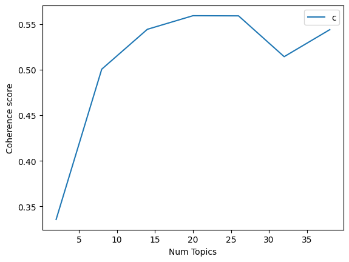

Klasifikasi dengan ektraksi fitur menggunakan Latent Dirichlet Allocation (LDA)#
Load Dataset#
import pandas as pd
data = pd.read_csv('tempo_berita.csv', on_bad_lines='skip')
data.head()
| id_berita | judul_berita | isi_berita | kategori_berita | |
|---|---|---|---|---|
| 0 | 2074547 | Mayoritas Dapur MBG di Bandung Masih Proses Se... | KEPALA Dinas Kesehatan Kota Bandung Sony Adam ... | politik |
| 1 | 2074538 | Kelakar Prabowo ke Dedi Mulyadi: Kalau Berengs... | PRESIDENPrabowoSubianto sempat berkelakar kepa... | politik |
| 2 | 2074525 | Bangunan Pesantren Al Khoziny Sidoarjo Ambruk,... | BANGUNAN Asrama Putra PondokPesantrenAl Khozin... | politik |
| 3 | 2074513 | Politikus NasDem Singgung Perombakan Pejabat BGN | ANGGOTA Komisi IX Dewan Perwakilan Rakyat Irma... | politik |
| 4 | 2074503 | Cerita Prabowo Disindir Trump soal Pidatonya d... | PRESIDENPrabowoSubianto mengenang momen saat i... | politik |
# Perbaikan untuk menghindari SettingWithCopyWarning
data_text = data.loc[:, ['isi_berita']]
# Tetapkan DataFrame yang sudah dimodifikasi ke variabel 'documents'.
documents = data_text
# Tampilkan semua baris data
print(documents)
isi_berita
0 KEPALA Dinas Kesehatan Kota Bandung Sony Adam ...
1 PRESIDENPrabowoSubianto sempat berkelakar kepa...
2 BANGUNAN Asrama Putra PondokPesantrenAl Khozin...
3 ANGGOTA Komisi IX Dewan Perwakilan Rakyat Irma...
4 PRESIDENPrabowoSubianto mengenang momen saat i...
.. ...
95 NaN
96 NaN
97 NaN
98 NaN
99 NaN
[100 rows x 1 columns]
len(documents)
100
Preprocessing#
pip install gensim
Requirement already satisfied: gensim in /usr/local/python/3.12.1/lib/python3.12/site-packages (4.3.3)
Requirement already satisfied: numpy<2.0,>=1.18.5 in /usr/local/python/3.12.1/lib/python3.12/site-packages (from gensim) (1.26.4)
Requirement already satisfied: scipy<1.14.0,>=1.7.0 in /usr/local/python/3.12.1/lib/python3.12/site-packages (from gensim) (1.13.1)
Requirement already satisfied: smart-open>=1.8.1 in /usr/local/python/3.12.1/lib/python3.12/site-packages (from gensim) (7.3.1)
Requirement already satisfied: wrapt in /usr/local/python/3.12.1/lib/python3.12/site-packages (from smart-open>=1.8.1->gensim) (1.17.3)
[notice] A new release of pip is available: 25.1.1 -> 25.2
[notice] To update, run: python3 -m pip install --upgrade pip
Note: you may need to restart the kernel to use updated packages.
import gensim
from gensim.utils import simple_preprocess
from nltk.corpus import stopwords
from nltk.stem.porter import *
import numpy as np
import nltk
nltk.download('wordnet')
[nltk_data] Downloading package wordnet to
[nltk_data] /home/codespace/nltk_data...
True
def lemmatize_stemming(text):
return stemmer.stem(WordNetLemmatizer().lemmatize(text, pos='v'))
def preprocess(text):
result=[]
for token in gensim.utils.simple_preprocess(text) :
if token not in stopwords.words('english') and len(token) > 3:
result.append(lemmatize_stemming(token))
return result
# --- Bagian 1: Memuat dan Menyiapkan Data ---
import pandas as pd
import re
import nltk
from nltk.corpus import stopwords
from gensim.utils import simple_preprocess
from gensim.corpora import Dictionary
from gensim.models import LdaModel
from nltk.stem import WordNetLemmatizer
# Unduh data NLTK
nltk.download('stopwords')
nltk.download('wordnet')
try:
# Muat data dari file CSV
data = pd.read_csv('tempo_berita.csv', on_bad_lines='skip')
# KUNCI PERBAIKAN: Pastikan documents adalah list of strings
documents = data['isi_berita'].values.tolist()
print(f"Total {len(documents)} dokumen berhasil dimuat.")
except (FileNotFoundError, KeyError) as e:
print(f"Error: Terjadi kesalahan saat memuat data. {e}")
documents = []
# --- Bagian 2: Preprocessing Teks ---
if documents:
def lemmatize_stemming(text):
stemmer = WordNetLemmatizer()
return stemmer.lemmatize(text, pos='v')
stop_words = stopwords.words('indonesian')
def tokenisasi_dan_filter(teks):
return [
lemmatize_stemming(kata)
for kata in simple_preprocess(str(teks))
if kata not in stop_words and len(kata) > 2
]
data_token = [tokenisasi_dan_filter(teks) for teks in documents]
# --- Bagian 3: Mencoba Mengakses Dokumen Tertentu ---
# Tentukan nomor dokumen yang ingin diambil
# Berdasarkan output, total dokumen adalah 900
document_num = 500
# Cek apakah nomor dokumen valid
if 1 <= document_num <= len(documents):
# Ambil dokumen menggunakan indeks list (document_num - 1)
doc_sample = documents[document_num - 1]
print("\nOriginal document:")
words = doc_sample.split()
print(words)
print("\n\nTokenized and lemmatized document:")
print(tokenisasi_dan_filter(doc_sample))
else:
print(f"Nomor dokumen {document_num} tidak valid. Mohon pilih nomor antara 1 dan {len(documents)}.")
[nltk_data] Downloading package stopwords to
[nltk_data] /home/codespace/nltk_data...
[nltk_data] Package stopwords is already up-to-date!
[nltk_data] Downloading package wordnet to
[nltk_data] /home/codespace/nltk_data...
[nltk_data] Package wordnet is already up-to-date!
Total 100 dokumen berhasil dimuat.
Nomor dokumen 500 tidak valid. Mohon pilih nomor antara 1 dan 100.
processed_docs = [preprocess(doc) for doc in data['isi_berita'].values]
---------------------------------------------------------------------------
TypeError Traceback (most recent call last)
Cell In[9], line 1
----> 1 processed_docs = [preprocess(doc) for doc in data['isi_berita'].values]
Cell In[7], line 6, in preprocess(text)
4 def preprocess(text):
5 result=[]
----> 6 for token in gensim.utils.simple_preprocess(text) :
8 if token not in stopwords.words('english') and len(token) > 3:
10 result.append(lemmatize_stemming(token))
File /usr/local/python/3.12.1/lib/python3.12/site-packages/gensim/utils.py:310, in simple_preprocess(doc, deacc, min_len, max_len)
287 def simple_preprocess(doc, deacc=False, min_len=2, max_len=15):
288 """Convert a document into a list of lowercase tokens, ignoring tokens that are too short or too long.
289
290 Uses :func:`~gensim.utils.tokenize` internally.
(...) 307
308 """
309 tokens = [
--> 310 token for token in tokenize(doc, lower=True, deacc=deacc, errors='ignore')
311 if min_len <= len(token) <= max_len and not token.startswith('_')
312 ]
313 return tokens
File /usr/local/python/3.12.1/lib/python3.12/site-packages/gensim/utils.py:261, in tokenize(text, lowercase, deacc, encoding, errors, to_lower, lower)
227 """Iteratively yield tokens as unicode strings, optionally removing accent marks and lowercasing it.
228
229 Parameters
(...) 258
259 """
260 lowercase = lowercase or to_lower or lower
--> 261 text = to_unicode(text, encoding, errors=errors)
262 if lowercase:
263 text = text.lower()
File /usr/local/python/3.12.1/lib/python3.12/site-packages/gensim/utils.py:364, in any2unicode(text, encoding, errors)
362 if isinstance(text, str):
363 return text
--> 364 return str(text, encoding, errors=errors)
TypeError: decoding to str: need a bytes-like object, float found
processed_docs = data['isi_berita'].apply(preprocess)
print(processed_docs[:900])
0 [koalisi, masyarakat, sipil, akan, mengajukan,...
1 [wakil, raka, tidak, hadir, dalam, pelantikan,...
2 [presiden, prabowo, subianto, melantik, angga,...
3 [asosiasi, pengemudi, ojek, online, garda, ind...
4 [kompleks, gedung, dewan, perwakilan, rakyat, ...
...
695 [kejuaraan, dunia, telah, selesai, digelar, ad...
696 [luhut, binsar, pandjaitan, kembali, menjabat,...
697 [kepala, bidang, pembinaan, prestasi, pbsieng,...
698 [timnas, bola, voli, putra, iran, mempertahank...
699 [cina, menjadi, juara, umumkejuaraan, dunia, d...
Name: isi_berita, Length: 700, dtype: object
Get a BOW Dict from data#
dictionary = gensim.corpora.Dictionary(processed_docs)
# Kode ini akan mengiterasi dan mencetak semua item dalam kamus
for k, v in dictionary.items():
print(k, v)
0 adalah
1 ajukan
2 akan
3 amnesty
4 angkatan
5 antara
6 arsul
7 atau
8 atauuu
9 bahwa
10 baik
11 bantuan
12 banyak
13 beberapa
14 beralasan
15 berbagai
16 berbagi
17 berbeda
18 bermasalah
19 berpartisipasi
20 berpendapat
21 berujung
22 berupaya
23 contoh
24 dalam
25 dalil
26 dapat
27 darat
28 dari
29 demo
30 dengan
31 diajukan
32 diakses
33 direktur
34 disampaikan
35 diskusi
36 dissent
37 ditolak
38 diuji
39 dokumen
40 duduk
41 editor
42 eksekutif
43 elektronik
44 empat
45 enny
46 formil
47 gedung
48 guntur
49 habis
50 hakim
51 hamid
52 hamzah
53 hendak
54 hilang
55 hukum
56 imparsial
57 indonesia
58 informasi
59 international
60 isra
61 jakarta
62 juga
63 kami
64 kanal
65 kandungan
66 karena
67 kata
68 keamanan
69 kedudukan
70 kekerasan
71 kesulitan
72 ketentuan
73 koalisi
74 komisi
75 konstitusi
76 konstitusional
77 kontras
78 korban
79 laman
80 langkah
81 lembaga
82 mahkamah
83 masyarakat
84 materiil
85 materilkan
86 maupun
87 melalui
88 memberikan
89 membuka
90 membutuhkan
91 mengabulkan
92 mengajukan
93 mengakses
94 mengatakan
95 mengatur
96 menghalangi
97 menilai
98 menjadi
99 menolak
100 menurut
101 menyatakan
102 menyediakan
103 menyoroti
104 mereka
105 metode
106 militer
107 muatan
108 muka
109 nasional
110 nomor
111 nurbaningsih
112 oleh
113 operasi
114 opinion
115 orang
116 organisasi
117 pada
118 pantas
119 para
120 partisipasi
121 pasal
122 pembentuk
123 pembentukan
124 pemerintahan
125 pemohon
126 pendapat
127 perang
128 perkara
129 permohonan
130 perwakilan
131 pilihan
132 prajurit
133 proses
134 publik
135 pusat
136 putusan
137 rabu
138 rancangan
139 rapat
140 reformasi
141 rencana
142 resmi
143 revisi
144 ruang
145 rusuh
146 saldi
147 sangat
148 sani
149 sarana
150 sebagian
151 secara
152 seharusnya
153 sejumlah
154 sekali
155 sektor
156 selain
157 selanjutnya
158 sembilan
159 sepenuhnya
160 seperti
161 september
162 serta
163 setelah
164 sipil
165 siskamling
166 soal
167 suhartoyo
168 tahun
169 tatap
170 telah
171 tentara
172 terbitlah
173 tergabung
174 terhadap
175 terkait
176 tersebut
177 tidak
178 tindak
179 tninomor
180 tugas
181 undang
182 untuk
183 upaya
184 usman
185 website
186 xxiii
187 yang
188 yayasan
189 ylbhi
190 youtube
191 adapun
192 afriansyah
193 ahmad
194 angga
195 anto
196 badan
197 barang
198 berada
199 berikut
200 berkontribusi
201 bidang
202 bumn
203 chaniago
204 dayang
205 diangkat
206 diberhentikan
207 dijabat
208 djamari
209 dofiri
210 erick
211 faricha
212 farida
213 gibran
214 hadi
215 hadir
216 hasan
217 hingga
218 istana
219 jabatan
220 jasa
221 kabinet
222 kamtibmas
223 kebijakan
224 kegiatan
225 kehutanan
226 kepala
227 kepolisian
228 keppres
229 kepresidenan
230 keputusan
231 ketertiban
232 ketua
233 khusus
234 komunikasi
235 koordinator
236 kosong
237 kota
238 lalu
239 lingkungan
240 lkpp
241 luar
242 madya
243 marzuki
244 melakukan
245 memimpin
246 mengisi
247 menko
248 menkopolkam
249 menpora
250 menteri
251 muhammad
252 naniek
253 nasbi
254 negara
255 noor
256 olahraga
257 pejabat
258 pelantikan
259 pemberhentian
260 pemerintah
261 pemuda
262 penasihat
263 pengadaan
264 pengangkatan
265 pimpinan
266 politik
267 polkam
268 polri
269 posisi
270 prabowo
271 prasetyo
272 presiden
273 putranto
274 qodari
275 raka
276 reshuffle
277 rohmat
278 rombak
279 sadiqa
280 sanjaya
281 saputra
282 sarah
283 sebelumnya
284 sedang
285 sekretaris
286 sonny
287 staf
288 subianto
289 sulaiman
290 tentang
291 terdiri
292 tertuang
293 thohir
294 tinggi
295 tohil
296 tulisan
297 umar
298 usai
299 utama
300 wakil
301 wamenaker
302 wamenhut
303 wamenkop
304 yaitu
305 yudha
306 abdul
307 acara
308 allah
309 anggota
310 anzar
311 arie
312 ariotedjo
313 baiknya
314 bakti
315 bangsa
316 baru
317 bekerja
318 berita
319 bersumpah
320 budi
321 bunyi
322 dahnil
323 darma
324 dasar
325 demi
326 demikian
327 dicopot
328 diikuti
329 dilantik
330 disaksikan
331 dito
332 etika
333 ferry
334 gunawan
335 haji
336 hari
337 irfan
338 jawab
339 juliantono
340 kadir
341 kali
342 karding
343 kedua
344 keempat
345 keempatnya
346 kemudian
347 kepada
348 ketiga
349 keuangan
350 koperasi
351 langsung
352 lurusnya
353 melantik
354 memberhentikan
355 menandatangani
356 mengangkat
357 mengganti
358 menggantikan
359 menjalankan
360 menjunjung
361 merupakan
362 migran
363 mochamad
364 mukhtarudin
365 mulyani
366 nama
367 pekerja
368 pelindungan
369 penandatanganan
370 pengganti
371 pengucapan
372 penuh
373 peraturan
374 perundang
375 peserta
376 purbaya
377 rasa
378 republik
379 sadewa
380 saya
381 sebagai
382 sebaik
383 sebelum
384 segala
385 selurus
386 senin
387 senyap
388 setia
389 simanjuntak
390 sore
391 sumpah
392 tanggung
393 ucapan
394 umrah
395 undangan
396 yudhi
397 yusuf
398 aceng
399 affan
400 agar
401 agustus
402 aksi
403 aksinya
404 antar
405 apabila
406 aparat
407 aplikasi
408 aplikator
409 asosiasi
410 aspirasi
411 aturan
412 audit
413 bagi
414 barat
415 belum
416 berasal
417 berbayar
418 berharap
419 berikutnya
420 berlanjut
421 bicara
422 bulan
423 bulanan
424 daerah
425 demonstrasi
426 depan
427 diberlakukan
428 diduga
429 dihadapi
430 dikendalikan
431 dilakukan
432 dilaporkan
433 dinilai
434 ditemui
435 diturunkan
436 drive
437 dudy
438 enam
439 garda
440 gatot
441 gerbang
442 hasil
443 igun
444 investigatif
445 jabodetabek
446 jadi
447 jalan
448 jambi
449 jawa
450 juru
451 justru
452 kalau
453 kapolri
454 kawasan
455 keenam
456 kelanjutan
457 kelima
458 kementerian
459 kendaraan
460 kini
461 kondisi
462 kurniawan
463 lancar
464 landasan
465 lebih
466 legislasi
467 lima
468 lokasi
469 makanan
470 mana
471 massa
472 masuk
473 memadati
474 member
475 memilih
476 memiliki
477 meminta
478 memperingati
479 mendesak
480 mendukung
481 menemui
482 menerbitkan
483 menerima
484 menewaskan
485 mengamankan
486 menggelar
487 mengkritik
488 mengusut
489 menuntut
490 menyampaikan
491 menyebut
492 menyuarakan
493 merugikan
494 mewajibkan
495 minta
496 momentum
497 mulai
498 multi
499 ojek
500 ojol
501 online
502 order
503 papua
504 pengemudi
505 pengusutan
506 penurunan
507 penutupan
508 perhubungan
509 persen
510 persoalan
511 personel
512 pertama
513 perusahaan
514 policy
515 potongan
516 program
517 prolegnas
518 pukul
519 purwagandhi
520 raden
521 ramai
522 regulasi
523 saat
524 sambutan
525 sampai
526 sejak
527 sekitar
528 sekitarnya
529 setiap
530 skema
531 slot
532 subroto
533 tanggapan
534 tarif
535 tentu
536 terjadi
537 termasuk
538 terpantau
539 terpisah
540 terus
541 timur
542 tragedi
543 transportasi
544 tuntas
545 tuntutan
546 ujar
547 umum
548 vendor
549 wicaksono
550 agus
551 akhir
552 alasan
553 aman
554 andreas
555 bakal
556 bendungan
557 berarti
558 berdasarkan
559 bersama
560 berubah
561 berujar
562 besar
563 besaran
564 bisa
565 brimob
566 buruh
567 dampak
568 dewan
569 diambil
570 dijaga
571 dikenal
572 dilindas
573 diperkukan
574 eskalasi
575 fasilitas
576 hanya
577 hilir
578 hugo
579 instalasi
580 instansi
581 intelijensi
582 interim
583 jelas
584 jenderal
585 kantor
586 katanya
587 kelihatan
588 kelompok
589 kemarahan
590 kemarin
591 kendati
592 kericuhan
593 kerusuhan
594 kestabilan
595 kompleks
596 kondusif
597 lagi
598 lewat
599 mahasiswa
600 masih
601 memantik
602 memprotes
603 mencekam
604 mendadak
605 mendapat
606 meningkat
607 menjaga
608 mewah
609 muncul
610 namun
611 novali
612 nugroho
613 nyaman
614 panglima
615 panji
616 pareira
617 parlemen
618 pasca
619 pdip
620 pembakaran
621 pengerahan
622 penilaian
623 penjagaan
624 perhatian
625 perlu
626 pertahanan
627 politikus
628 rakyat
629 ricuh
630 salah
631 satunya
632 sehingga
633 sekarang
634 selasa
635 semua
636 semula
637 senayan
638 sini
639 situasi
640 sjafrie
641 sjamsoeddin
642 subiyanto
643 supaya
644 tapi
645 terpusat
646 tetap
647 tetapi
648 tewasnya
649 tiba
650 tiga
651 ucap
652 xiii
653 digelar
654 digeser
655 farichah
656 kepres
657 ketenagakerjaan
658 komposisi
659 merah
660 merombak
661 periode
662 putih
663 satu
664 wamen
665 akses
666 amar
667 atas
668 ataudissenting
669 dibacakan
670 dibuka
671 diterima
672 draf
673 gugatan
674 lie
675 luas
676 membacakan
677 menutup
678 opinionterhadap
679 penggugat
680 pertimbangan
681 perubahan
682 pokok
683 provisi
684 sama
685 seluruhnya
686 semestinya
687 sesuai
688 sidang
689 sipill
690 teregistrasi
691 diganti
692 kabinetnya
693 letnan
694 mulanya
695 pekan
696 pembawa
697 penggantinya
698 purnawirawan
699 reshuffleyang
700 saja
701 sekaligus
702 seorang
703 sudah
704 hormat
705 milik
706 puti
707 usaha
708 abis
709 berkenan
710 digital
711 dikabarkan
712 diminta
713 kemungkinan
714 memperkuat
715 menjawab
716 namanya
717 pertanyaan
718 siang
719 sumber
720 tahu
721 tunggu
722 wamenkomdigi
723 wartawan
724 awak
725 bagian
726 berpangkat
727 bersedia
728 bursa
729 calon
730 dengar
731 dikonfirmasi
732 disebut
733 ditinggalkan
734 diundang
735 freidrich
736 gerindra
737 golkar
738 interimoleh
739 jika
740 karnavian
741 kita
742 letjen
743 lodewijk
744 media
745 membantah
746 membeberkan
747 mengaku
748 mengetahui
749 menghadiri
750 mengisii
751 menunggu
752 negeri
753 partai
754 paulus
755 pelantikannya
756 purnawirwan
757 rahayu
758 reshuffledari
759 reshuffleempat
760 saraswati
761 sebut
762 secaraad
763 siapa
764 tauh
765 tito
766 wamenko
767 yakni
768 bantu
769 biar
770 daritempo
771 demokrat
772 dengarkan
773 dihubungi
774 dipanggil
775 doakan
776 halal
777 herzaky
778 jaminan
779 jokowi
780 ketika
781 konfirmasi
782 mahendra
783 mencoba
784 mendoakan
785 menjabat
786 nanti
787 penyelenggara
788 perbaikan
789 perbaiki
790 perintah
791 pernah
792 pihak
793 pokoknya
794 prerogatif
795 produk
796 putra
797 putri
798 sabtu
799 sekjen
800 strategis
801 tentunya
802 terbaik
803 ajudannya
804 aries
805 bappisus
806 berupa
807 biru
808 deputi
809 diisukan
810 dikirimkan
811 dimintai
812 dipayungi
813 dirjen
814 hujan
815 investigasi
816 kedatangan
817 kembali
818 komdigi
819 komisaris
820 mantan
821 marsudiyanto
822 melihat
823 membalas
824 mendatangi
825 mengenai
826 mengenakan
827 mereshuffle
828 mira
829 pembangunan
830 pengendalian
831 perombakan
832 pesan
833 pula
834 sambil
835 setelan
836 strategi
837 tanya
838 tayyiba
839 teknologi
840 tempo
841 tengah
842 wakapolri
843 agenda
844 bola
845 dasi
846 datang
847 hitam
848 ikut
849 indra
850 kehadirannya
851 menggesernya
852 menghadap
853 menyambangi
854 pantauantempo
855 persatuan
856 seluruh
857 sepak
858 teddy
859 warna
860 wijaya
861 adang
862 aliansi
863 alias
864 antaran
865 area
866 artikel
867 arya
868 audiensi
869 banten
870 berkaitan
871 bertemu
872 centang
873 dasco
874 dipastikan
875 dipublikasikan
876 disuarakan
877 ditawar
878 driver
879 ganti
880 hapuskan
881 hidayat
882 jatuhnya
883 jiwa
884 kalimantan
885 ketujuh
886 makassar
887 memasukan
888 memasuki
889 membawa
890 menghubungi
891 mengirimkan
892 menjelaskan
893 menunjukan
894 menyebabkan
895 notifikasi
896 onlinemulai
897 pelbagai
898 pengemudiojek
899 permintaan
900 pimpiman
901 pimpinandprdan
902 poin
903 riau
904 rusdamdiyansah
905 segera
906 sehari
907 selatan
908 suara
909 sufmi
910 sumatera
911 tempotelah
912 terbitkan
913 terkirim
914 tujuh
915 uang
916 undangannya
917 yogyakarta
918 anak
919 anaknya
920 ardiansyah
921 arlan
922 arlan_official
923 balai
924 balik
925 belajar
926 belakangan
927 benar
928 beredar
929 bergiliran
930 berkomunikasi
931 bernama
932 bersangkutan
933 berseragam
934 bertugas
935 berwarna
936 betah
937 biasa
938 bohong
939 capres
940 cokelat
941 data
942 detail
943 diantar
944 diketahui
945 dimaksud
946 dimuat
947 dimutasi
948 dinas
949 disebutkan
950 disertai
951 ditegur
952 diunggah
953 guru
954 haru
955 hasilnya
956 hoax
957 instagram
958 isak
959 jabatannya
960 jangan
961 kasus
962 kedapatan
963 kependidikan
964 kesalahan
965 lantaran
966 maaf
967 melainkan
968 memanggil
969 memantau
970 membuat
971 memindahkan
972 menampilkan
973 menegaskan
974 menegur
975 menengah
976 menengahabdul
977 mengerumuni
978 mengklarifikasi
979 mengucapkan
980 menyalami
981 menyebutkan
982 mobil
983 momen
984 murid
985 mutasi
986 pembatalan
987 pemohonan
988 pencopotan
989 pendidikan
990 penjaga
991 pergantian
992 perpisahan
993 polemik
994 prabumulih
995 puluhan
996 rekaman
997 resminya
998 roni
999 salam
1000 sekadar
1001 sekolah
1002 sekumpulan
1003 setempat
1004 seusai
1005 siswa
1006 sosial
1007 tangis
1008 tenaga
1009 terekam
1010 terlihat
1011 tertulis
1012 timengaku
1013 unggahan
1014 video
1015 viral
1016 wali
1017 ajab
1018 antraranya
1019 arahan
1020 bagaimana
1021 bapak
1022 berdalih
1023 dahulu
1024 ditanya
1025 dulu
1026 kebangkitan
1027 kebaya
1028 kerjasama
1029 lihat
1030 memanggilnya
1031 mendagri
1032 politkus
1033 rencananya
1034 tadi
1035 terlebih
1036 berjalan
1037 bilang
1038 dedi
1039 diantono
1040 harian
1041 keduanya
1042 komjen
1043 kriminal
1044 lengkap
1045 pakaian
1046 pertemuannya
1047 reserse
1048 sedangkan
1049 syahar
1050 akademik
1051 akreditasi
1052 awal
1053 berhak
1054 bersifat
1055 berstandar
1056 biasanya
1057 capaian
1058 dibandingkan
1059 dibedakan
1060 dicatat
1061 dilaksanakan
1062 diluncurkan
1063 dirilis
1064 ditentukan
1065 eduart
1066 formal
1067 harus
1068 informal
1069 jadwal
1070 jalur
1071 jauh
1072 jumlah
1073 kapasitas
1074 kartu
1075 kelas
1076 kemampuan
1077 kuota
1078 lainnya
1079 layak
1080 masa
1081 mata
1082 meluncurkan
1083 memenuhi
1084 memperhitungkan
1085 mendaftar
1086 mendapatkan
1087 menggunakan
1088 mengikutkan
1089 menjelang
1090 nilai
1091 november
1092 pdss
1093 pelajaran
1094 pelaksana
1095 peluncuran
1096 penanggung
1097 penerimaan
1098 pengisian
1099 pengukuran
1100 pengumuman
1101 penting
1102 penyesuaian
1103 percepatan
1104 perdana
1105 prestasi
1106 rapor
1107 raporatau
1108 rerata
1109 sains
1110 sebesar
1111 sebutan
1112 sehubungan
1113 seleksi
1114 semester
1115 siswanya
1116 smpb
1117 snbp
1118 snpmb
1119 syarat
1120 tahapan
1121 tambahan
1122 tanggal
1123 terakhir
1124 terbaiknya
1125 terdapat
1126 tingkat
1127 ujian
1128 unduh
1129 wajib
1130 wolok
1131 akhirnya
1132 aktif
1133 fakta
1134 keraguan
1135 memeriksa
1136 mengawal
1137 opinionatau
1138 pembuktian
1139 pemeriksaan
1140 perkaraa
1141 permohonana
1142 persidangan
1143 quotidak
1144 serangkaian
1145 tersisa
1146 administratif
1147 agtas
1148 amanat
1149 ancaman
1150 andi
1151 aneh
1152 antaranya
1153 ardi
1154 ataufocus
1155 banyaknya
1156 barak
1157 bersejarah
1158 berulangnya
1159 budaya
1160 bukan
1161 daftar
1162 demokrasi
1163 diam
1164 dikurangi
1165 dimulai
1166 diputus
1167 discussiondalam
1168 disidangkan
1169 dugaan
1170 dwifungsi
1171 faiz
1172 fatiah
1173 fokus
1174 format
1175 gejala
1176 group
1177 impunitas
1178 indikasi
1179 intervensi
1180 inventaris
1181 jane
1182 juni
1183 katan
1184 keberlangsungan
1185 kembalinya
1186 keramaian
1187 keterangan
1188 keterlibatan
1189 komitmen
1190 konferensi
1191 kontrol
1192 kuasa
1193 lanjutan
1194 manto
1195 masalah
1196 maulidiyanti
1197 melemahkan
1198 menduduki
1199 menekankan
1200 menentukan
1201 mengingatkan
1202 menguatkan
1203 menguji
1204 menjatuhkan
1205 menunjukkan
1206 menyangkut
1207 menyesuaikan
1208 militerisme
1209 mohamad
1210 mungkin
1211 naskahnya
1212 nggak
1213 offline
1214 padatempopada
1215 pembacaan
1216 pembahasannya
1217 pemberitahuan
1218 pemisahan
1219 pendek
1220 pensiunan
1221 penyerapan
1222 peran
1223 perluasan
1224 pers
1225 phpu
1226 pidana
1227 pleno
1228 praktik
1229 prinsip
1230 ranah
1231 rangka
1232 rosalina
1233 sempat
1234 siber
1235 situs
1236 supratman
1237 supremasi
1238 teknis
1239 terbatas
1240 terbuka
1241 terkadang
1242 urusan
1243 ataumenko
1244 bahwadjamari
1245 bawah
1246 chaniagoakan
1247 kabar
1248 koordinasi
1249 kursinya
1250 negeritito
1251 polkamdi
1252 sementara
1253 bakomstra
1254 berstatus
1255 daritempoketika
1256 membaca
1257 noordikabarkan
1258 status
1259 telepon
1260 whatsapp
1261 abuan
1262 adanya
1263 asam
1264 ataularddalam
1265 babi
1266 bahan
1267 baku
1268 bentuk
1269 bergizi
1270 berinisiatif
1271 berlalu
1272 bermula
1273 bertanggung
1274 bpom
1275 business
1276 chaoshan
1277 cina
1278 cocok
1279 dadan
1280 dede
1281 digunakan
1282 diinginkan
1283 dinda
1284 diproduksi
1285 ditemukan
1286 food
1287 galau
1288 gizi
1289 gratis
1290 guangdong
1291 gulungan
1292 hampir
1293 hindayana
1294 ikrar
1295 importir
1296 kamis
1297 keabu
1298 kombinasi
1299 kromium
1300 label
1301 laboratorium
1302 laporan
1303 lemak
1304 lembaganya
1305 lembaran
1306 leni
1307 logam
1308 logo
1309 makan
1310 make
1311 mangan
1312 mardianti
1313 memalsukan
1314 memang
1315 membentuk
1316 mencuat
1317 mendesakbpomdan
1318 mendorong
1319 menemukan
1320 mengandung
1321 mengantongi
1322 mengikuti
1323 mengumumkan
1324 mengungkapkan
1325 merasa
1326 mesin
1327 meski
1328 minyak
1329 nikel
1330 obat
1331 ompreng
1332 pabrik
1333 pembuatan
1334 pengawas
1335 penggunaan
1336 pengujian
1337 pernyataan
1338 pertengahan
1339 post
1340 provinsi
1341 ragu
1342 sampel
1343 sebab
1344 sebenarnya
1345 sepakat
1346 shabrina
1347 stamp
1348 tanpa
1349 taruna
1350 tipe
1351 tray
1352 wadah
1353 wilayah
1354 yahya
1355 zaini
1356 akibat
1357 antek
1358 asing
1359 asli
1360 asrama
1361 batu
1362 bentrokan
1363 berinisial
1364 cahyo
1365 candra
1366 cenderawasih
1367 dariantara
1368 delapan
1369 dibuat
1370 diciptakan
1371 dikutip
1372 ditembak
1373 eksploitasi
1374 elelim
1375 emas
1376 hangus
1377 hubungan
1378 ilegal
1379 infanteri
1380 info
1381 intel
1382 jarak
1383 kabupaten
1384 kerusakan
1385 kios
1386 kodam
1387 kolonel
1388 konflik
1389 lemparan
1390 luka
1391 malam
1392 mati
1393 mediasi
1394 melindungi
1395 melontarkan
1396 membantu
1397 memediasi
1398 memicu
1399 memuluskan
1400 menciptakan
1401 menembak
1402 mengalami
1403 menghargai
1404 menimbulkan
1405 menuding
1406 menyelidiki
1407 menyinggung
1408 motor
1409 operasional
1410 panah
1411 parah
1412 pasukan
1413 pegunungan
1414 pelajar
1415 pembebasan
1416 pemicu
1417 pemukulan
1418 penambahan
1419 pendatang
1420 penempatan
1421 penerangan
1422 percekcokan
1423 permasalahan
1424 perwira
1425 polda
1426 polres
1427 pribumi
1428 rasisme
1429 rumah
1430 rusak
1431 sadrak
1432 sambom
1433 sasaran
1434 sebby
1435 sengaja
1436 sepeda
1437 sman
1438 sniper
1439 stabilitas
1440 sukarnito
1441 temannya
1442 terbakar
1443 terjaga
1444 terluka
1445 tpnpb
1446 tudingan
1447 ujaran
1448 unit
1449 warga
1450 xvii
1451 yalimo
1452 yohame
1453 memegang
1454 payung
1455 purn
1456 tampak
1457 bangunan
1458 berhasil
1459 berjaga
1460 dikutipantara
1461 emosi
1462 guna
1463 jaga
1464 keributan
1465 ketegangan
1466 melerai
1467 melibatkan
1468 meluas
1469 membakar
1470 menganiaya
1471 mengantisipasi
1472 menyerang
1473 meredakan
1474 merembet
1475 reaksi
1476 susulan
1477 terpancing
1478 adil
1479 akun
1480 akuntabel
1481 berkualitas
1482 berlaku
1483 bersaing
1484 bukti
1485 dibanding
1486 diberikan
1487 dilihat
1488 dinyatakan
1489 efisien
1490 evaluasi
1491 februari
1492 finalisasi
1493 fleksibel
1494 ingin
1495 januari
1496 kasihan
1497 kebenaran
1498 kecurangan
1499 kejadian
1500 kemendikdasmen
1501 lagilah
1502 lanjut
1503 lulusan
1504 mandiri
1505 masing
1506 memastikan
1507 mencatat
1508 mengunduh
1509 mengurangi
1510 menu
1511 menyiapkan
1512 meskipun
1513 monitor
1514 mutu
1515 oknum
1516 pangkalan
1517 panitia
1518 panjang
1519 pendaftaran
1520 penyelenggaraan
1521 penyesuian
1522 perguruan
1523 persiapan
1524 persyaratan
1525 pusdatin
1526 registrasi
1527 selesai
1528 siap
1529 snbt
1530 sosialisasi
1531 tantangan
1532 terlambat
1533 terletak
1534 terulang
1535 transparan
1536 ujarnya
1537 unggul
1538 waktu
1539 aktivitas
1540 angka
1541 anonim
1542 anonimitas
1543 apakah
1544 apalagi
1545 asal
1546 awalnya
1547 berekspresi
1548 berpotensi
1549 bisnis
1550 boleh
1551 cara
1552 celah
1553 dibahas
1554 digodok
1555 diharuskan
1556 dikerjakan
1557 dilempar
1558 dinilainya
1559 dipaksakan
1560 diperkuat
1561 diperlukan
1562 ditegakkan
1563 dunia
1564 ekosistem
1565 etis
1566 exchange
1567 experience
1568 firman
1569 gagasan
1570 ganda
1571 google
1572 government
1573 hoaks
1574 identitas
1575 internet
1576 istimewa
1577 juli
1578 jumlahnya
1579 kaji
1580 kajian
1581 keadilan
1582 kebebasan
1583 kebencian
1584 kejelasan
1585 kepadatempopada
1586 keperluan
1587 kerja
1588 komprehensif
1589 krusial
1590 legislator
1591 literasi
1592 maya
1593 membatasi
1594 membeli
1595 memberatkan
1596 memungkinkan
1597 menekan
1598 mengkaji
1599 menuai
1600 merusak
1601 meta
1602 meyakini
1603 misalnya
1604 negatif
1605 nezar
1606 opsi
1607 pakai
1608 patria
1609 pembatasan
1610 pemerhati
1611 pemilik
1612 pemiliknya
1613 penegakan
1614 pengajar
1615 pengguna
1616 peningkatan
1617 penyalahgunaan
1618 perangkat
1619 peredaran
1620 ponsel
1621 praktikscamdi
1622 pribadi
1623 realistis
1624 respons
1625 retreat
1626 sejahtera
1627 sekian
1628 sela
1629 seseorang
1630 sistem
1631 soleh
1632 solusi
1633 solusinya
1634 sukamta
1635 sulit
1636 tiktok
1637 tindakan
1638 universitas
1639 usulan
1640 verifikasi
1641 wacana
1642 warganet
1643 ihwal
1644 kebudayaan
1645 menanyakan
1646 pribadinya
1647 satpam
1648 seluler
1649 smpn
1650 apik
1651 centra
1652 cuci
1653 dejure
1654 desakan
1655 dipakai
1656 dukungan
1657 halaman
1658 hentikan
1659 hidup
1660 hrwg
1661 human
1662 initiative
1663 initiatives
1664 institute
1665 jarang
1666 kakus
1667 kebutuhan
1668 komando
1669 legislatif
1670 mandi
1671 memanfaatkan
1672 membangun
1673 memprioritaskan
1674 mencakup
1675 menyiagakan
1676 pasukannya
1677 pbhi
1678 pelibatan
1679 pembubaran
1680 pengamanan
1681 penghapusan
1682 peradilan
1683 perempuan
1684 perhimpunan
1685 prasarana
1686 profesional
1687 raksha
1688 restrukturisasi
1689 right
1690 setara
1691 taktis
1692 tenda
1693 teritorial
1694 terparkir
1695 toilet
1696 wahana
1697 walhi
1698 work
1699 antisipasi
1700 atausiskamling
1701 dini
1702 edaran
1703 kewaspadaan
1704 menghidupkan
1705 meningkatkan
1706 optimalisasi
1707 perlindungan
1708 satlinmas
1709 satuan
1710 surat
1711 terbit
1712 unjuk
1713 atap
1714 bawahnya
1715 berkumpul
1716 bertulisan
1717 berukuran
1718 disulap
1719 kamling
1720 kemanggisan
1721 menaungi
1722 meter
1723 palmerah
1724 papan
1725 pulo
1726 ronda
1727 tempat
1728 tergantung
1729 anti
1730 arjuna
1731 berdemonstrasi
1732 berlangsung
1733 condro
1734 dibawa
1735 diremehkan
1736 disiagakan
1737 gabungan
1738 gelombang
1739 kekuatan
1740 kematian
1741 konvensi
1742 kuda
1743 lapangan
1744 lintas
1745 memutuskan
1746 mengganggu
1747 mengimbau
1748 meratifikasi
1749 metro
1750 paksa
1751 patung
1752 penghilangan
1753 perlawanan
1754 prinsipnya
1755 purnomo
1756 rekayasa
1757 resor
1758 ribu
1759 ribuan
1760 semakin
1761 singkat
1762 situasional
1763 susatyo
1764 tarik
1765 terprovokasi
1766 tertib
1767 tidaknya
1768 titik
1769 ulur
1770 usut
1771 bertujuan
1772 demonstran
1773 dimiliki
1774 enggak
1775 joko
1776 melanjutkan
1777 menelusuri
1778 menghapus
1779 pemilihan
1780 pras
1781 presidenprabowo
1782 widodo
1783 aditif
1784 ahid
1785 alasannya
1786 antikarat
1787 babimasih
1788 bahanfood
1789 bercerita
1790 bergulir
1791 berkunjung
1792 bernomor
1793 bersepakat
1794 bpjph
1795 chromatography
1796 cnenr
1797 company
1798 dannuclear
1799 dikirim
1800 diumumkan
1801 dugaanompreng
1802 ester
1803 ftir
1804 ilmiah
1805 impor
1806 infrared
1807 inspeksi
1808 intinya
1809 islamiyah
1810 kantongi
1811 kepadatempo
1812 keselamatan
1813 kesimpulan
1814 keterbatasan
1815 klaim
1816 komponen
1817 lantas
1818 lard
1819 lembar
1820 magnetic
1821 makanya
1822 mass
1823 membuktikan
1824 menganalisis
1825 mengandunglemak
1826 mengirim
1827 mengujinya
1828 merespons
1829 nahdlatul
1830 olahan
1831 padafood
1832 parafin
1833 pelumas
1834 pemasok
1835 pencetak
1836 pengawasan
1837 pengurus
1838 pintu
1839 postyang
1840 produksi
1841 rabithah
1842 resonance
1843 riansah
1844 sertifikasi
1845 shanghai
1846 sintetis
1847 situ
1848 spectrometer
1849 spectrometry
1850 standar
1851 sucofindo
1852 superintend
1853 technology
1854 tempomelihat
1855 temuan
1856 temukan
1857 terbaru
1858 terklorinasi
1859 ternyata
1860 test
1861 transform
1862 traykombinasi
1863 trigliserida
1864 ulama
1865 wafa
1866 weipu
1867 yaitufourier
1868 airlangga
1869 akselerasi
1870 anggarannya
1871 ataufresh
1872 biaya
1873 bisafresh
1874 difinalkan
1875 dijalankan
1876 dikerjasamakan
1877 dimatangkan
1878 dipimpin
1879 disediakan
1880 ditanggung
1881 ditangkap
1882 ditargetkan
1883 ditempatkan
1884 ditujukan
1885 graduate
1886 industri
1887 jenjang
1888 kelulusan
1889 kuartal
1890 link
1891 lulus
1892 magang
1893 maksimal
1894 manfaat
1895 match
1896 matchantara
1897 mematangkan
1898 menambahkan
1899 menargetkan
1900 menristekdikti
1901 miliar
1902 minimum
1903 penerima
1904 prioritas
1905 saku
1906 samalink
1907 selama
1908 semuanya
1909 serentak
1910 swasta
1911 tahap
1912 upah
1913 ataumkakan
1914 atautni
1915 cawapres
1916 discussion
1917 ditutup
1918 focus
1919 mudarat
1920 anggaran
1921 arus
1922 beasiswa
1923 begitu
1924 berapa
1925 berdampak
1926 berkurang
1927 dana
1928 digelontorkan
1929 go
1930 jumlahawardee
1931 ketat
1932 lakukan
1933 lolos
1934 lpdp
1935 makin
1936 membiayai
1937 mencapai
1938 naik
1939 pemangkasan
1940 pendaftar
1941 pendaftarnya
1942 penghematan
1943 persaingannya
1944 studi
1945 sudahon
1946 sudarto
1947 tahunnya
1948 tajam
1949 turun
1950 tutur
1951 alternatif
1952 bertepatan
1953 daripada
1954 imbauan
1955 kemayoran
1956 kemenhub
1957 kemunduran
1958 kurironline
1959 layaknya
1960 markas
1961 masif
1962 mematikan
1963 membut
1964 mencopot
1965 menuju
1966 mitra
1967 moda
1968 ojekonlinegarda
1969 onlineroda
1970 orasi
1971 pengusaha
1972 pergerakan
1973 peringatan
1974 protes
1975 purwaghandi
1976 raya
1977 roda
1978 rute
1979 semenjak
1980 solidaritas
1981 sumur
1982 taksionline
1983 tepat
1984 afifuddin
1985 akademisi
1986 akuntabilitas
1987 banjir
1988 curiga
1989 dianggap
1990 diatur
1991 dibatalkan
1992 digugat
1993 dikecualikan
1994 dilampirkan
1995 dilindungi
1996 dipersoalkan
1997 diputuskan
1998 diragukan
1999 diteken
2000 elite
2001 fundamental
2002 harta
2003 idealnya
2004 ijazah
2005 integritas
2006 jeirry
2007 jejak
2008 jenis
2009 karsayuda
2010 keabsahan
2011 keabsahannya
2012 keaslian
2013 kebijakannya
2014 kecaman
2015 kecurigaan
2016 kekayaan
2017 kelembagaan
2018 kepastian
2019 kepemiluan
2020 kepentingan
2021 keputusannya
2022 keriuhan
2023 kesehatan
2024 kesetaraan
2025 keterbukaan
2026 komisipemilihan
2027 komite
2028 konsekuensi
2029 konteks
2030 koreksi
2031 kritik
2032 lhkpn
2033 melanggar
2034 melawan
2035 meliputi
2036 membatalkan
2037 memohon
2038 mempertanyakan
2039 menang
2040 mencabut
2041 menduga
2042 menetapkan
2043 menganulir
2044 mengawasi
2045 mengeluarkan
2046 mengklaim
2047 mengungkap
2048 menguntungkan
2049 menutupi
2050 mochammad
2051 nasdem
2052 pajak
2053 palak
2054 pasangan
2055 patut
2056 pemilih
2057 pemilu
2058 pencalonan
2059 penerbitan
2060 pengadilan
2061 penguasa
2062 perbuatan
2063 persi
2064 pretensi
2065 rakabuming
2066 rekam
2067 reputasi
2068 rifqi
2069 rifqinizamy
2070 risiko
2071 sebetulnya
2072 sedikit
2073 sendiri
2074 serius
2075 setelahnya
2076 siapapun
2077 subhan
2078 sulung
2079 sumampow
2080 tanda
2081 tekanan
2082 tepi
2083 tercantum
2084 terima
2085 tertentu
2086 terungkap
2087 transparansi
2088 turut
2089 waktunya
2090 abri
2091 agam
2092 agum
2093 akabri
2094 akibatnya
2095 alih
2096 amatir
2097 anggotanya
2098 april
2099 bambang
2100 bandung
2101 baret
2102 barisan
2103 bersenggolan
2104 bintang
2105 brigif
2106 bukit
2107 bukittingi
2108 cadangan
2109 calonmenteri
2110 chapter
2111 definitif
2112 dharma
2113 digadang
2114 dikaitkan
2115 dipromosikan
2116 ditunjuk
2117 divisi
2118 fachrul
2119 fraksi
2120 gede
2121 gumelar
2122 hadisiswoyo
2123 harley
2124 hijau
2125 insiden
2126 kartanegara
2127 kasad
2128 keamananyang
2129 kecil
2130 kehormatan
2131 kelahiran
2132 kesatuan
2133 klub
2134 kodim
2135 komandan
2136 kostrad
2137 kumaat
2138 lahir
2139 linud
2140 majelis
2141 mengeroyok
2142 meraih
2143 moge
2144 muzani
2145 namadjamari
2146 oktober
2147 owners
2148 padang
2149 pangkostrad
2150 pemegang
2151 pemimpin
2152 pengeroyokan
2153 pensiun
2154 penyimpangan
2155 peristiwa
2156 permusyawaratan
2157 pimpin
2158 pria
2159 razi
2160 rindam
2161 rombongan
2162 rupst
2163 saham
2164 selaku
2165 selepas
2166 semen
2167 siliwangi
2168 skandal
2169 subagyo
2170 susilo
2171 syukur
2172 tahunan
2173 terakhirnya
2174 terlibat
2175 trisula
2176 turing
2177 utusan
2178 wakilnya
2179 yonif
2180 yudhoyono
2181 bahlil
2182 berat
2183 besok
2184 birokrasi
2185 brawijaya
2186 cari
2187 daya
2188 demontrasi
2189 desa
2190 development
2191 dikeluarkan
2192 dilihattempo
2193 disorot
2194 economics
2195 ekonomi
2196 energi
2197 erani
2198 esdm
2199 fakultas
2200 finance
2201 fitra
2202 forum
2203 hilirisasi
2204 imbau
2205 indef
2206 kategori
2207 kejujuran
2208 keputusankomisi
2209 ketahanan
2210 kurir
2211 kusdiana
2212 lahadalia
2213 mendatang
2214 menunjuk
2215 menyita
2216 merahasiakan
2217 mineral
2218 nasionaltempo
2219 ojekonlineke
2220 pal
2221 pelanggaran
2222 pemberdayaan
2223 pemberitaan
2224 penunjukkan
2225 perdesaan
2226 ponorogo
2227 prosedural
2228 salinan
2229 sebulan
2230 semasa
2231 taksi
2232 terpopuler
2233 tertanggal
2234 tertinggal
2235 tertulisnya
2236 tertutup
2237 topik
2238 transmigrasi
2239 tunjuk
2240 tutup
2241 universits
2242 yustika
2243 berisi
2244 penetapan
2245 andalas
2246 charles
2247 heran
2248 simabura
2249 alat
2250 belakang
2251 datacalon
2252 isinya
2253 kandidat
2254 kehilangan
2255 kepercayaan
2256 kesempatan
2257 ketimbang
2258 komisioner
2259 latar
2260 memberlakukan
2261 mengenal
2262 mengulasnya
2263 pasti
2264 pegiat
2265 pengamat
2266 presidendan
2267 sepihak
2268 terpenuhinya
2269 lead
2270 omprengmbg
2271 pembersihan
2272 perendaman
2273 sektornya
2274 semangka
2275 setipis
2276 ajang
2277 alutsista
2278 bertahap
2279 brigadir
2280 defile
2281 defilepasukan
2282 disiapkan
2283 ditampilkan
2284 ditandai
2285 fair
2286 freddy
2287 gangguan
2288 gelar
2289 hati
2290 hiburan
2291 kala
2292 kelancaran
2293 kenyamanan
2294 kepemimpinan
2295 lapanganmonas
2296 latihan
2297 laut
2298 maju
2299 matratni
2300 meminimalkan
2301 mengusung
2302 merayakan
2303 modern
2304 monas
2305 monumen
2306 open
2307 padat
2308 pameran
2309 panggung
2310 parade
2311 parsial
2312 pass
2313 pemda
2314 pengaturan
2315 perayaan
2316 perencanaan
2317 persami
2318 pesta
2319 piala
2320 profesionalisme
2321 puncak
2322 puncaknya
2323 rangkaian
2324 sail
2325 skala
2326 suksesi
2327 tema
2328 terintegrasi
2329 turnamen
2330 ulang
2331 umkm
2332 upacara
2333 ziarah
2334 advokasi
2335 agama
2336 ahad
2337 arif
2338 asasi
2339 bentukan
2340 berlebihan
2341 berpihak
2342 bila
2343 cenderung
2344 cendikiawan
2345 cepat
2346 detailnya
2347 diartikan
2348 dibentuk
2349 dibiarkan
2350 diisi
2351 dilanggengkan
2352 disabilitas
2353 diserahkan
2354 diungkap
2355 diusulkan
2356 formatnya
2357 gerakan
2358 glodok
2359 harap
2360 ialah
2361 ihza
2362 ikhsan
2363 imigrasi
2364 independen
2365 institusi
2366 kekuasaan
2367 kementeriannya
2368 keterangannya
2369 kewajiban
2370 komnas
2371 kwitang
2372 lukman
2373 manusia
2374 maulana
2375 memengaruhi
2376 memfasilitasi
2377 mencegah
2378 menentang
2379 mengulangi
2380 meninggal
2381 menjarah
2382 menyeluruh
2383 menyetujui
2384 mewanti
2385 mewujudkan
2386 normatif
2387 nurani
2388 objektif
2389 obyektivitas
2390 ombudsman
2391 organik
2392 pemasyarakatan
2393 pencabutan
2394 pencari
2395 penegak
2396 peneliti
2397 pengunjuk
2398 penyelesaian
2399 penyelidikan
2400 perihal
2401 perjuangan
2402 pertemuan
2403 perumahan
2404 polisi
2405 saifuddin
2406 saksi
2407 sederet
2408 sepanjang
2409 sepekan
2410 seribuan
2411 sesuatu
2412 setidaknya
2413 sikapnya
2414 taktisnya
2415 tercatat
2416 terjadinya
2417 tewas
2418 tgpf
2419 tokoh
2420 tunjangan
2421 ucapnya
2422 unsur
2423 wanti
2424 wewenang
2425 yosarie
2426 yusril
2427 advocacy
2428 aejumlah
2429 arah
2430 aspek
2431 beranggotakan
2432 berdiri
2433 berfokus
2434 berhati
2435 bertentangan
2436 buru
2437 cacat
2438 daei
2439 dansatsiber
2440 dibengkokkan
2441 dijadwalkan
2442 dipertahankan
2443 dominasi
2444 irwandi
2445 kalangan
2446 kecenderungan
2447 keseluruhan
2448 kewenangan
2449 kriminalisasi
2450 legitimasi
2451 mabes
2452 mandat
2453 marak
2454 matai
2455 melampaui
2456 melanggengkan
2457 memata
2458 membiarkan
2459 memerintahkan
2460 memutus
2461 mencontohkan
2462 menegakkan
2463 mengintimidasi
2464 meningkatnya
2465 moral
2466 omsp
2467 pembahasan
2468 penanda
2469 pshk
2470 research
2471 satsiber
2472 sebagaimana
2473 segi
2474 semata
2475 serupa
2476 signifikan
2477 substansi
2478 terburu
2479 tulis
2480 usia
2481 amanah
2482 bahasa
2483 belanja
2484 bermutu
2485 bimbingan
2486 dialokasikan
2487 diamanahkan
2488 diarahkan
2489 digitalisasi
2490 generasi
2491 hetifah
2492 insentif
2493 jangka
2494 kebahasaan
2495 kerangka
2496 kesastraan
2497 kesepakatan
2498 ketimpangan
2499 khususnya
2500 kompetensi
2501 konten
2502 kualitas
2503 layanan
2504 melaksanakan
2505 memikul
2506 mempersempit
2507 mengacu
2508 menghadapi
2509 menyambut
2510 menyasar
2511 mgmp
2512 muda
2513 mudah
2514 mudahan
2515 pagu
2516 panja
2517 pelaksanaan
2518 peluang
2519 pemanfaatannya
2520 pembelajaran
2521 pembiayaan
2522 penanganan
2523 pendidik
2524 pengembangan
2525 penguatan
2526 penutur
2527 peralatan
2528 pintar
2529 positif
2530 profesi
2531 revitalisasi
2532 rpjmn
2533 rpjpn
2534 rupiah
2535 semesta
2536 sjaifudian
2537 terakomodasi
2538 triliun
2539 utamanya
2540 visi
2541 vokasi
2542 atensi
2543 bagus
2544 bahas
2545 bahkan
2546 bahu
2547 berbincang
2548 berhadap
2549 besarnya
2550 dipergunakan
2551 foto
2552 gaji
2553 garis
2554 gunakan
2555 hadapan
2556 interimitu
2557 keakraban
2558 keamananad
2559 kemenhan
2560 kerjanya
2561 kesolidan
2562 kirinya
2563 kursi
2564 lama
2565 makna
2566 matra
2567 memamerkan
2568 membayar
2569 memelihara
2570 mengajak
2571 mengantar
2572 menhan
2573 menyandarkan
2574 menyepakati
2575 merawat
2576 merincikan
2577 nusantara
2578 pegawai
2579 sebelah
2580 sebuah
2581 sjamsoeddindi
2582 soliditas
2583 sufmidascoahmad
2584 tegap
2585 terabadikan
2586 tniangkatan
2587 tubuh
2588 udara
2589 berbasis
2590 dimajukan
2591 diubah
2592 keluhan
2593 komplain
2594 komputer
2595 mengurai
2596 punya
2597 utbk
2598 validasi
2599 validator
2600 arifin
2601 bahaya
2602 berargumentasi
2603 bermakna
2604 buruk
2605 dampaknya
2606 gina
2607 historis
2608 karpet
2609 kejanggalan
2610 ladang
2611 maulidiyanty
2612 memberi
2613 preseden
2614 sabrina
2615 smart
2616 soaluu
2617 tata
2618 tnibesok
2619 zainal
2620 antisipatif
2621 berkoordinasi
2622 berprestasi
2623 dare
2624 desember
2625 dibutuhkan
2626 diharapkan
2627 diimbau
2628 diperhatikan
2629 diri
2630 diselenggarakan
2631 fauzan
2632 intensif
2633 kemdikdasmen
2634 kemdiktisaintek
2635 lure
2636 maret
2637 mekanisme
2638 melayani
2639 memperoleh
2640 mensyaratkan
2641 merata
2642 nonakademik
2643 penjuru
2644 perlunya
2645 tujuan
2646 amuk
2647 benda
2648 bergabung
2649 berulang
2650 dianalisis
2651 didasarkan
2652 dilansir
2653 diperoleh
2654 ditahan
2655 diwarnai
2656 faktauntuk
2657 fungsi
2658 haris
2659 jumat
2660 juncto
2661 keluarganya
2662 kerugian
2663 kpai
2664 lpsk
2665 melaporkan
2666 melekat
2667 memintatim
2668 memotori
2669 menempatkan
2670 menghimpun
2671 menginvestigasi
2672 murni
2673 pemulihan
2674 pencarian
2675 pencegahan
2676 pengalaman
2677 penjarahan
2678 perpres
2679 semendawai
2680 sepuluh
2681 sesungguhnya
2682 sewenang
2683 suparyati
2684 tabir
2685 temuannya
2686 terabaikan
2687 trauma
2688 wenang
2689 diinformasikan
2690 ihwalsnpmb
2691 abdurrahman
2692 alfan
2693 almarhum
2694 anugerah
2695 baharudin
2696 bangun
2697 batujajar
2698 bayani
2699 belas
2700 beri
2701 binsar
2702 chairawan
2703 cilangkap
2704 dankodiklatad
2705 darius
2706 dirinya
2707 disematkan
2708 diwakili
2709 gelarjenderal
2710 glenny
2711 gubernur
2712 gusdur
2713 hendropriyono
2714 herindra
2715 hoesodo
2716 ibukota
2717 intelijen
2718 istemewa
2719 kairupan
2720 keadaan
2721 keluar
2722 kenaikan
2723 kodiklat
2724 kontra
2725 kontroversi
2726 lamanakmil
2727 lamansetneg
2728 letda
2729 luhut
2730 majalah
2731 marsekal
2732 mayor
2733 megawati
2734 melansir
2735 menerimanya
2736 menganugerahkan
2737 menyandang
2738 musa
2739 nusyirwan
2740 pandjaitan
2741 pangkat
2742 pemberian
2743 penganugerahan
2744 penghargaan
2745 pengusulan
2746 perdagangan
2747 perindustrian
2748 rapim
2749 sabarno
2750 sadikin
2751 sakti
2752 sejarah
2753 soedarman
2754 soedirdja
2755 soeharto
2756 soehartono
2757 soeratman
2758 soerjadi
2759 soesilo
2760 suhariyanto
2761 susunan
2762 sutomo
2763 taufik
2764 tnitahun
2765 tony
2766 valentinus
2767 wahid
2768 yosfiah
2769 yunus
2770 akademikus
2771 bantahan
2772 berkomitmen
2773 bersikap
2774 bersolidaritas
2775 bertajuk
2776 bondan
2777 budayauibondan
2778 center
2779 dekan
2780 dihelat
2781 dikritik
2782 fakultasnya
2783 global
2784 ilmu
2785 imbas
2786 indonesian
2787 internasional
2788 israel
2789 izin
2790 justice
2791 kampus
2792 kampusnya
2793 kanumoyoso
2794 kehadiran
2795 kelola
2796 kemanusiaan
2797 kemerdekaan
2798 manassa
2799 mencantumkan
2800 mencurahkan
2801 mengubah
2802 mengundang
2803 meresmikan
2804 narasumber
2805 netral
2806 palestina
2807 palestine
2808 pemakaian
2809 pembicara
2810 pengetahuan
2811 perhelatan
2812 pernaskahan
2813 perpusnas
2814 perpustakaan
2815 prosedur
2816 prozionis
2817 ricci
2818 ronit
2819 segenap
2820 senada
2821 serangan
2822 simposium
2823 student
2824 terafiliasi
2825 unggahannya
2826 aula
2827 berlokasi
2828 beroperasi
2829 bima
2830 brigade
2831 catatan
2832 dekat
2833 demonstrasn
2834 dimas
2835 direktorat
2836 farhan
2837 haprabu
2838 hilangnya
2839 jaya
2840 keberadaan
2841 kenal
2842 ketemu
2843 ketiganya
2844 konstras
2845 memonitor
2846 mencari
2847 mengadvokasi
2848 mengakibatkan
2849 mengapa
2850 mengulang
2851 nasib
2852 pengaduan
2853 permana
2854 posko
2855 reno
2856 satya
2857 seribu
2858 syahputradewo
2859 teridentifikasi
2860 tolong
2861 triputra
2862 wira
2863 anda
2864 apresiasi
2865 august
2866 batal
2867 dicabut
2868 diterbikan
2869 ditetapkan
2870 masukan
2871 mellaz
2872 memuat
2873 mendengar
2874 mengadakan
2875 mengapresiasi
2876 mengelola
2877 pangan
2878 setahu
2879 silakan
2880 terhadapdokumen
2881 zulkifli
2882 akomodasi
2883 angata
2884 arab
2885 aset
2886 bergerak
2887 berjarak
2888 bkpm
2889 chief
2890 danantara
2891 desain
2892 dibangun
2893 diestimasikan
2894 dirancang
2895 disyaratkan
2896 entitas
2897 executive
2898 fisik
2899 hajidi
2900 haram
2901 hektare
2902 ibadah
2903 infrastruktur
2904 investasi
2905 investor
2906 jemaah
2907 kampung
2908 keberlanjutan
2909 kelayakan
2910 klinik
2911 komersial
2912 lahan
2913 legal
2914 legalitas
2915 masjidil
2916 mekah
2917 melahirkan
2918 memperhatikan
2919 menampung
2920 meninjau
2921 menyelesaikan
2922 officer
2923 otoritas
2924 pembinaan
2925 pengelola
2926 pengelolaan
2927 perkembangan
2928 persis
2929 properti
2930 proyek
2931 rampung
2932 ranahnya
2933 rincian
2934 roeslani
2935 rosan
2936 saudi
2937 seluas
2938 suci
2939 tanah
2940 target
2941 terpenuhi
2942 anggap
2943 berwenang
2944 kpusebelumnya
2945 menghadirkan
2946 afifudin
2947 ayat
2948 biro
2949 cawapresyang
2950 disapazulhasini
2951 diterbtikan
2952 lampiran
2953 menanggapi
2954 pelayanan
2955 persetujuan
2956 soaldata
2957 alokasi
2958 berkembang
2959 didampingi
2960 disetujui
2961 harga
2962 kedaulatan
2963 kesiapan
2964 maruli
2965 mempengaruhi
2966 menggabungkan
2967 mengusulkan
2968 perisai
2969 pihaknya
2970 subiyanyo
2971 terbesar
2972 aglomerasi
2973 ambisius
2974 dapur
2975 diberi
2976 distribusi
2977 honor
2978 jatah
2979 juta
2980 keras
2981 mencapainya
2982 optimistis
2983 pemenuhan
2984 pengerjaan
2985 penyediaan
2986 petunjuk
2987 samping
2988 sebanyak
2989 sppg
2990 tercapai
2991 terdepan
2992 terluar
2993 adyang
2994 akbp
2995 aktor
2996 azzahra
2997 bank
2998 buntut
2999 cabang
3000 cempaka
3001 corps
3002 diproses
3003 donny
3004 fajar
3005 feri
3006 herianto
3007 ilham
3008 inisial
3009 intelektual
3010 internal
3011 jajarannya
3012 kejahatan
3013 kinerja
3014 klaster
3015 kluster
3016 kopda
3017 kopral
3018 membuntuti
3019 menahan
3020 menculik
3021 mengevaluasi
3022 nabiila
3023 pebrianto
3024 pelaku
3025 pelat
3026 pembantu
3027 pembunuhan
3028 penahanan
3029 penculikan
3030 penganiayaan
3031 penulisan
3032 penyidikan
3033 perannya
3034 pomdam
3035 pradipta
3036 prajuritnya
3037 prajurittni
3038 prianto
3039 rahim
3040 rutin
3041 selalu
3042 terduga
3043 tersangka
3044 tinggal
3045 total
3046 versinya
3047 amunisi
3048 antiterorisme
3049 asio
3050 atautpnpb
3051 australia
3052 australian
3053 berusia
3054 canberra
3055 coba
3056 cukai
3057 dibebaskan
3058 didakwa
3059 dijalin
3060 diplomatik
3061 diselundupkan
3062 diterapkan
3063 federal
3064 hasanuddin
3065 jadingan
3066 jctt
3067 kedutaan
3068 kombatan
3069 masuknya
3070 mehrtens
3071 membicarakan
3072 memperdagangkan
3073 memperketat
3074 menangkap
3075 menggali
3076 menuduh
3077 menyelundupkan
3078 merdeka
3079 paro
3080 patroli
3081 penyelundupan
3082 perbatasan
3083 pernyataannya
3084 pertukaran
3085 phillip
3086 pilot
3087 police
3088 proaktif
3089 queensland
3090 rinci
3091 selandia
3092 selundupan
3093 senjata
3094 south
3095 tubagus
3096 wales
3097 akbar
3098 atauojolgarda
3099 berakhir
3100 komunitas
3101 maka
3102 mengerahkan
3103 olehtnisampai
3104 ratusan
3105 administrasi
3106 andy
3107 bersitegang
3108 berusaha
3109 beserta
3110 bukannya
3111 daihatsu
3112 dandim
3113 diamankan
3114 dilerai
3115 dimakamkan
3116 diperiksa
3117 diponegoro
3118 distrik
3119 jenazah
3120 jolontoro
3121 kecamatan
3122 kesejahteraan
3123 kiri
3124 koramil
3125 melarikan
3126 menangani
3127 mendapati
3128 mengambil
3129 mengarahkan
3130 mengevakuasi
3131 mereda
3132 miliknya
3133 mobilnya
3134 parkir
3135 parkiran
3136 pembina
3137 pengunjung
3138 pengurusan
3139 pertikaian
3140 pertolongan
3141 pipi
3142 prosesi
3143 rayon
3144 resto
3145 restoran
3146 ruangan
3147 sakit
3148 sapuran
3149 sebilah
3150 semu
3151 serda
3152 sersan
3153 shaka
3154 sinergi
3155 singgah
3156 soelistyo
3157 tusukan
3158 umat
3159 veloz
3160 wonosobo
3161 cekcok
3162 keluarga
3163 membenarkan
3164 menenangkan
3165 menit
3166 menjalani
3167 menjamin
3168 nyawa
3169 pemantauan
3170 penusukan
3171 prajurittnidari
3172 sempuran
3173 sepulang
3174 tertolong
3175 tusuk
3176 apbn
3177 balita
3178 batununggal
3179 dievaluasi
3180 disalurkan
3181 distribusinya
3182 fotonya
3183 hamil
3184 kegagalan
3185 kekhawatiran
3186 keseimbangan
3187 kotak
3188 menganggu
3189 menyusui
3190 menyusun
3191 mingguan
3192 pemborosan
3193 pendapatan
3194 penyaluran
3195 terganggu
3196 terlelap
3197 tidur
3198 berdasar
3199 brisbane
3200 dakwaan
3201 dituduh
3202 ekspor
3203 hasanuudin
3204 kenapa
3205 kepemilikan
3206 kepolisi
3207 ketahui
3208 kilogram
3209 magistrat
3210 manajemen
3211 mark
3212 merkuri
3213 official
3214 pasang
3215 peledak
3216 pengendali
3217 senapan
3218 teleskop
3219 terlarang
3220 tuduhan
3221 ahli
3222 anggia
3223 bsbi
3224 hutajulu
3225 inspektur
3226 isei
3227 jisman
3228 kreatif
3229 mengkonfirmasi
3230 supervisi
3231 suswantono
3232 tempoberupaya
3233 terhitung
3234 yudhiawan
3235 acer
3236 alamsyah
3237 asuransi
3238 bergeser
3239 berinteraksi
3240 berkomentar
3241 corruption
3242 dalami
3243 darismart
3244 dasarnya
3245 datanya
3246 dibaca
3247 didistribusikan
3248 digagas
3249 dikawal
3250 flat
3251 garansi
3252 gogot
3253 hadrian
3254 hisense
3255 inpres
3256 instruksi
3257 interaktif
3258 irfani
3259 istilah
3260 istilahnya
3261 kekurangan
3262 kerancuan
3263 kirim
3264 kisaran
3265 kompeten
3266 kompetisi
3267 konsisten
3268 layar
3269 membagikan
3270 memunculkan
3271 mendalami
3272 mengakui
3273 mengatasi
3274 menyajikan
3275 mundur
3276 narasi
3277 negosiasi
3278 nilainya
3279 ongkos
3280 panel
3281 paud
3282 penawaran
3283 penunjukan
3284 penyedia
3285 penyelewengan
3286 pergeseran
3287 pidato
3288 prosesnya
3289 publiknya
3290 sentuh
3291 sisi
3292 sorotan
3293 spek
3294 suharwoto
3295 televisi
3296 tender
3297 terutama
3298 timenegaskan
3299 triliunan
3300 tunggal
3301 tvuntuk
3302 unitsmart
3303 wana
3304 watch
3305 akbarnya
3306 berjuang
3307 berlambang
3308 bidakara
3309 bohir
3310 deklarasi
3311 dicalonkan
3312 figur
3313 hotel
3314 ideal
3315 jateng
3316 jurus
3317 kabah
3318 kasih
3319 keberhasilannya
3320 kekayaannya
3321 kepadanya
3322 kepengurusan
3323 kesediaannya
3324 kesiapannya
3325 kubunya
3326 masruhan
3327 memberinya
3328 mendekati
3329 muktamar
3330 plong
3331 rezim
3332 romahurmuziy
3333 rommy
3334 sapaan
3335 senior
3336 setahun
3337 sosok
3338 struktur
3339 sungguh
3340 suparmanto
3341 tangga
3342 berkelanjutan
3343 berpikir
3344 diserap
3345 mengakomodasi
3346 menhub
3347 merevisi
3348 mewadahi
3349 onlinegarda
3350 policydi
3351 rahayuningsih
3352 rasanya
3353 riri
3354 terjadivendor
3355 bebas
3356 diktum
3357 ervana
3358 jujur
3359 kecuali
3360 kuat
3361 merta
3362 merujuk
3363 padahal
3364 pembukaannya
3365 pkpu
3366 rahasia
3367 relevan
3368 riwayat
3369 trikarina
3370 ardianzah
3371 dilanjutkan
3372 dimana
3373 jalanan
3374 komcad
3375 minggu
3376 olah
3377 passtni
3378 pembagian
3379 pemprov
3380 perkemahan
3381 perlombaan
3382 raga
3383 sembako
3384 serempak
3385 silang
3386 simulasi
3387 tempur
3388 artileri
3389 beragam
3390 dilibatkan
3391 dinamis
3392 direncanakan
3393 elit
3394 kavaleri
3395 kebolehan
3396 nantinya
3397 pendukung
3398 pesawat
3399 tiap
3400 yangtergabung
3401 faktor
3402 gagal
3403 kaya
3404 keseriusan
3405 lega
3406 membuktikannya
3407 network
3408 simbol
3409 sosokagus
3410 terbantahkan
3411 bawaslu
3412 damkar
3413 dkpp
3414 motif
3415 petugas
3416 sengketa
3417 tersubordinasi
3418 hilangselama
3419 pengaduanorang
3420 diratifikasi
3421 kunjung
3422 alarm
3423 baca
3424 berjudul
3425 cerita
3426 demonstrasipada
3427 keberadaannya
3428 koordinat
3429 korps
3430 mengecek
3431 menyelisik
3432 nihil
3433 penegakanhak
3434 penelusuran
3435 pulang
3436 terdeteksi
3437 anungtelah
3438 begini
3439 bersurat
3440 bottleneck
3441 bulus
3442 cilandak
3443 digratiskan
3444 dilangsungkan
3445 dilarang
3446 dipicu
3447 dipungut
3448 dishub
3449 domestik
3450 eksisting
3451 exit
3452 fatmawati
3453 formula
3454 galian
3455 hours
3456 indomaret
3457 ipald
3458 jakartapramono
3459 jalantb
3460 jitu
3461 kaki
3462 karyawan
3463 kemacetan
3464 kerap
3465 kian
3466 kilometer
3467 komersil
3468 konstruksi
3469 lajur
3470 lebak
3471 limbah
3472 liputo
3473 material
3474 mayoritas
3475 melintasi
3476 membentang
3477 memperlebar
3478 menggratiskan
3479 mengingat
3480 menjadikan
3481 mobilitas
3482 ogah
3483 peak
3484 pejalan
3485 pekerjaan
3486 pemandangan
3487 pemanfaatan
3488 pengalihan
3489 pengendara
3490 penggalian
3491 pengolahan
3492 penyebab
3493 penyempitan
3494 perkantoran
3495 perpipaan
3496 persimpangan
3497 pipa
3498 pramono
3499 prastowo
3500 rambutan
3501 rapid
3502 ruas
3503 seakan
3504 semisal
3505 sibuk
3506 simatupang
3507 simatupangyang
3508 sirna
3509 stasiun
3510 susun
3511 syafrin
3512 tanjung
3513 terdampak
3514 terkini
3515 tingginya
3516 transit
3517 trotoar
3518 truk
3519 volume
3520 yustinus
3521 adik
3522 agil
3523 akademikatautka
3524 antusiasme
3525 arti
3526 asesmen
3527 ashwin
3528 basyar
3529 bekal
3530 berharga
3531 betapa
3532 break
3533 dialog
3534 difasilitasi
3535 diinisiasi
3536 dimanfaatkan
3537 diselingiice
3538 diseminasi
3539 edukasi
3540 gawai
3541 gemar
3542 ikatan
3543 ikuti
3544 ikuttes
3545 ipnu
3546 jalani
3547 kalian
3548 keagamaan
3549 kebingungan
3550 kesiswaan
3551 kesungguhan
3552 khoirul
3553 madrasah
3554 magelang
3555 mampu
3556 melewatkan
3557 menempuh
3558 mengenali
3559 menyukseskan
3560 mungkid
3561 muridnya
3562 nawawi
3563 nuruz
3564 nyata
3565 ormas
3566 pahlawan
3567 paparan
3568 pembuka
3569 pentingnya
3570 percobaan
3571 pesantren
3572 pionir
3573 potensi
3574 pusmendik
3575 rahmawati
3576 salaman
3577 semangat
3578 semenara
3579 seminar
3580 terinspirasi
3581 umniyah
3582 zaman
3583 abad
3584 adam
3585 ajakan
3586 amerika
3587 beras
3588 bioskop
3589 cetak
3590 danang
3591 dapil
3592 diapresiasi
3593 dibioskopitu
3594 dijalankannya
3595 diklaim
3596 dimulainya
3597 diputar
3598 ditayangkan
3599 ditayangkannya
3600 ditindaklanjuti
3601 diwajibkan
3602 doktor
3603 driyarkara
3604 film
3605 filsafat
3606 iklan
3607 inovasi
3608 inovatif
3609 institut
3610 jagung
3611 jerman
3612 kaderisasi
3613 keanggotaan
3614 keberhasilan
3615 keindahan
3616 kemiskinan
3617 kesenian
3618 kira
3619 konyol
3620 kubu
3621 lumrah
3622 malah
3623 martin
3624 medium
3625 membutuhkannya
3626 mempromosikan
3627 menayangkan
3628 menghapuskan
3629 menjangkau
3630 nazi
3631 nyambung
3632 pandang
3633 pandangnya
3634 pascasarjana
3635 pelik
3636 pembukaan
3637 pemutaran
3638 penayangan
3639 pengoperasian
3640 penonton
3641 penyampai
3642 perangnya
3643 propaganda
3644 sawah
3645 sentimen
3646 serikat
3647 studio
3648 suatu
3649 sudut
3650 sulistya
3651 suryajaya
3652 tayangan
3653 terobosan
3654 terputusnya
3655 tersampaikan
3656 warganya
3657 wicaksana
3658 agak
3659 asisten
3660 bais
3661 batas
3662 berikan
3663 betul
3664 diperpanjang
3665 horror
3666 jalant
3667 menerapkan
3668 mengebut
3669 paralel
3670 pengatur
3671 sana
3672 tangani
3673 terlalu
3674 toll
3675 wibowo
3676 ahmd
3677 aleyda
3678 audio
3679 catatanfilm
3680 dipilih
3681 disuguhi
3682 fifi
3683 komentar
3684 laik
3685 mont
3686 pemerintahlah
3687 tujuannya
3688 utuh
3689 visual
3690 wajar
3691 afifuffin
3692 iakeputusan
3693 kataafifuddin
3694 klarifikasi
3695 mengurus
3696 misi
3697 politisi
3698 privasi
3699 sebelumtahapan
3700 simpang
3701 siur
3702 argumentasi
3703 arizona
3704 asas
3705 berhubungan
3706 deddy
3707 dipakainya
3708 dirahasiakan
3709 disimpan
3710 disoal
3711 ditabrak
3712 ditutupi
3713 gadjah
3714 karung
3715 kucing
3716 mada
3717 menadftar
3718 palsu
3719 pemberlakuan
3720 pencalonannya
3721 penerapan
3722 penyampaian
3723 pilpres
3724 retroaktif
3725 sarjana
3726 sependapat
3727 sitorus
3728 sulungnya
3729 terbitnya
3730 terindikasi
3731 terpilih
3732 yance
3733 analisa
3734 apbd
3735 buahnya
3736 depok
3737 dibaleka
3738 dibebankan
3739 dprd
3740 idris
3741 kemasyarakatan
3742 kemendagri
3743 konstituen
3744 koridor
3745 lantai
3746 lumayan
3747 menyewa
3748 merumuskan
3749 mohammad
3750 penganggaran
3751 perda
3752 pergub
3753 permendagri
3754 perumahanbagi
3755 perumahannya
3756 perumusan
3757 supian
3758 supriatna
3759 suri
3760 agrikultur
3761 banjar
3762 batasan
3763 diekspor
3764 dikonsumsi
3765 etilen
3766 indofood
3767 indomie
3768 instan
3769 konsumsi
3770 melebihi
3771 mematuhinya
3772 menganggap
3773 menurunkan
3774 menyalahi
3775 oksida
3776 oksidamenurut
3777 pemakaianetilen
3778 soto
3779 taiwan
3780 varian
3781 zero
3782 ataufood
3783 saatstamping
3784 trayuntuk
3785 beleid
3786 disusun
3787 fotokopi
3788 gara
3789 ijazahjokowi
3790 kerahasiaannya
3791 keterkaitan
3792 kolom
3793 lhkp
3794 medis
3795 menyimpan
3796 skck
3797 solo
3798 tempodotco
3799 termuat
3800 berbahaya
3801 bermain
3802 bermata
3803 berpengaruh
3804 cideng
3805 cukup
3806 didik
3807 dihapuskan
3808 dimasukkan
3809 ekstrakurikuler
3810 game
3811 gimonlineitu
3812 gimonlineroblox
3813 hadria
3814 kebiasaan
3815 kehidupan
3816 khawatir
3817 kurikulum
3818 manfaatnya
3819 membedakan
3820 mendalam
3821 meniru
3822 mudaratnya
3823 onlineitu
3824 pagi
3825 permainan
3826 pisau
3827 roblox
3828 sebaiknya
3829 umur
3830 angin
3831 ardiantoro
3832 berdiskusi
3833 berhenti
3834 bersambut
3835 cita
3836 didorong
3837 dirumuskan
3838 dong
3839 eksesif
3840 elemen
3841 formasi
3842 gayung
3843 gereja
3844 gomar
3845 gultom
3846 irit
3847 isess
3848 juri
3849 kelompokpro
3850 kepolisiantidak
3851 kompolnas
3852 konsep
3853 listyo
3854 meluasnya
3855 membenahi
3856 mempercepat
3857 menata
3858 mendasar
3859 menjauh
3860 menungguh
3861 menyentuh
3862 mereformasi
3863 mirip
3864 orde
3865 pembentukantim
3866 persekutuan
3867 pesanan
3868 problem
3869 resformasi
3870 resistensi
3871 rukminto
3872 security
3873 setuju
3874 sigit
3875 strategic
3876 study
3877 substansial
3878 surga
3879 teman
3880 tragis
3881 willpresiden
3882 advokat
3883 aliran
3884 bendahara
3885 cair
3886 crude
3887 diizinkan
3888 djuyamto
3889 hadiah
3890 jaksa
3891 jaksel
3892 janji
3893 jual
3894 kartasura
3895 koper
3896 korporasi
3897 korupsi
3898 kurang
3899 lepas
3900 memulai
3901 mencecar
3902 mentah
3903 menuturkan
3904 merencanakan
3905 muhtarom
3906 nonaktif
3907 nuryanta
3908 paham
3909 palm
3910 panitera
3911 pengajuan
3912 penuntut
3913 penyerahan
3914 perdata
3915 pergi
3916 perhitungan
3917 pinggir
3918 proposal
3919 ruko
3920 sawit
3921 sekretariat
3922 senilai
3923 serahkan
3924 suap
3925 suratno
3926 syarief
3927 terdakwa
3928 terpadu
3929 transfer
3930 tunai
3931 utara
3932 vonis
3933 wahyu
3934 angota
3935 bersamaan
3936 caranya
3937 dikembalikan
3938 djamil
3939 gesa
3940 harapan
3941 inisiatif
3942 kebaikan
3943 kejaksaan
3944 ketidakpuasan
3945 kitab
3946 komisinya
3947 komisinyanasir
3948 kuhap
3949 kuhp
3950 kunjungan
3951 lamanya
3952 menghasilkan
3953 menjaring
3954 menunda
3955 minim
3956 narkotika
3957 nasir
3958 pembaruan
3959 penjaringan
3960 penyusunan
3961 perppu
3962 spesifik
3963 tergesa
3964 terpaksa
3965 andiko
3966 antre
3967 berkala
3968 cipinang
3969 daat
3970 darigerakan
3971 dicanangkan
3972 dijual
3973 diperluas
3974 gili
3975 goreng
3976 gula
3977 humas
3978 kabut
3979 kantong
3980 kemasan
3981 komoditas
3982 kontribusi
3983 liter
3984 logistik
3985 lonjakan
3986 mempererat
3987 menyalurkan
3988 murah
3989 murahyang
3990 nurhadi
3991 ojekonlineagar
3992 pasar
3993 pasaran
3994 pasir
3995 pasokan
3996 pembelian
3997 pemerataan
3998 polrimenggelar
3999 rosebrand
4000 sphp
4001 stabilisasi
4002 stok
4003 subsidi
4004 terjangkau
4005 thru
4006 trawangan
4007 truno
4008 trunoyudo
4009 wisnu
4010 beli
4011 berawal
4012 bermotor
4013 bpkb
4014 buku
4015 curian
4016 dicuri
4017 helm
4018 hukuman
4019 kapolres
4020 keuntungan
4021 mencuri
4022 mengambilsepeda
4023 mengancam
4024 menjualnya
4025 meraup
4026 merek
4027 modus
4028 motoryang
4029 penadah
4030 penadahan
4031 pencuri
4032 pencurian
4033 pengungkapan
4034 penjara
4035 penjualan
4036 terkunci
4037 transaksi
4038 yamaha
4039 agung
4040 antam
4041 ario
4042 berduka
4043 bijih
4044 blok
4045 diperintahkan
4046 ditransfer
4047 ditunda
4048 erlangga
4049 glenn
4050 hartati
4051 konawe
4052 konsesi
4053 lawu
4054 mandiodo
4055 menyerahkan
4056 mine
4057 office
4058 opah
4059 pemberantasan
4060 penambang
4061 penambangan
4062 pencucian
4063 perbuatannya
4064 pertambangan
4065 pratama
4066 rekening
4067 seolah
4068 sulawesi
4069 supriono
4070 sutanto
4071 sutantodan
4072 tambang
4073 tambangnya
4074 tangan
4075 tangannya
4076 tenggara
4077 terhadapwindu
4078 trader
4079 windu
4080 analis
4081 angket
4082 antirasuah
4083 bina
4084 didapatkan
4085 diperuntukkan
4086 disahkan
4087 hajitahun
4088 harisman
4089 hitung
4090 hitungan
4091 jaelani
4092 jaja
4093 kasubdit
4094 korupsikuota
4095 membagi
4096 memprediksi
4097 menyidik
4098 modusnya
4099 muhyi
4100 pansus
4101 paripurna
4102 perizinan
4103 ramadan
4104 rata
4105 reguler
4106 syafi
4107 aduan
4108 aktivis
4109 amin
4110 anarkisme
4111 anhar
4112 bareng
4113 bareskrim
4114 bekasi
4115 berjumlah
4116 berlangsungnya
4117 bertindak
4118 bertuliskan
4119 berunjuk
4120 bukanlah
4121 bunga
4122 delpedro
4123 diancam
4124 dijadikan
4125 dikenakan
4126 disanksi
4127 disinggung
4128 faizati
4129 figha
4130 gerbangpolda
4131 hasutan
4132 hermawan
4133 hotline
4134 husein
4135 jangantakut
4136 kantornya
4137 kawan
4138 kediri
4139 kepedulian
4140 khariq
4141 kontrak
4142 laras
4143 lawan
4144 lesmana
4145 mahardhika
4146 makar
4147 marhaen
4148 membebaskan
4149 mengadukan
4150 menggugat
4151 menghasut
4152 mengunggah
4153 menyusul
4154 mutiara
4155 penghasutan
4156 pengikut
4157 provokasi
4158 saiful
4159 sanksi
4160 syahdan
4161 tabur
4162 terorisme
4163 tertera
4164 wawan
4165 agungad
4166 agungdan
4167 agustinus
4168 arofahmuhayah
4169 calonhakim
4170 dewata
4171 dormant
4172 efektif
4173 ennid
4174 geser
4175 ginting
4176 habiburokhman
4177 hakimad
4178 haryogi
4179 hasanuddinheru
4180 hochak
4181 hocham
4182 hocpada
4183 kacab
4184 kamar
4185 kepatutan
4186 lailatul
4187 mahakamah
4188 malemita
4189 menghormati
4190 mukti
4191 nugrohodiana
4192 pastikan
4193 penculik
4194 puguh
4195 sugiharto
4196 suradi
4197 yudisial
4198 adhi
4199 akademi
4200 akhmad
4201 akpol
4202 azis
4203 berbintang
4204 berkenaan
4205 chrysnanda
4206 dankor
4207 diemban
4208 dipertanggung
4209 diposisikan
4210 durasi
4211 dwilaksana
4212 fadil
4213 genap
4214 idham
4215 imam
4216 imran
4217 irwasum
4218 jawabkan
4219 kabaintelkam
4220 kadang
4221 kalemdiklat
4222 kapolda
4223 karyoto
4224 konsolidasi
4225 makayasa
4226 mengembalikan
4227 pelatihan
4228 pemelihara
4229 pemusatan
4230 peraih
4231 rawan
4232 rotasi
4233 senioritas
4234 setengahnya
4235 seto
4236 sosokkapolrike
4237 surpres
4238 suyudi
4239 syahardiantono
4240 terhambat
4241 terpanjang
4242 tradisi
4243 transisi
4244 urut
4245 usul
4246 widada
4247 wiyagus
4248 adit
4249 atauuya
4250 dibicarakan
4251 dicky
4252 dievakuasi
4253 dijarah
4254 dirasa
4255 diselamatkan
4256 duakucingmilik
4257 empati
4258 fertoffan
4259 hewan
4260 infonya
4261 kasat
4262 kondisinya
4263 kucingnya
4264 kuya
4265 kuyayang
4266 mapolres
4267 membuatkan
4268 mendapatupdate
4269 munaf
4270 penangkapan
4271 pengecekan
4272 pengembalian
4273 pengembaliannya
4274 penjelasan
4275 perawatan
4276 puskesmas
4277 puskeswan
4278 reskrim
4279 sehat
4280 sherina
4281 stabil
4282 surya
4283 ungkap
4284 berembus
4285 dituangkan
4286 kaitannya
4287 kapan
4288 kepadatempodi
4289 kepolisiantak
4290 lingkup
4291 mempersiapkan
4292 rekrutmen
4293 ajeng
4294 ariyanto
4295 bagikan
4296 bersaksi
4297 berurutan
4298 dibagi
4299 djumyanto
4300 djunaedi
4301 dolar
4302 dyah
4303 hang
4304 head
4305 huruf
4306 istri
4307 junaedi
4308 khsusus
4309 kusuma
4310 marcella
4311 mendakawa
4312 musim
4313 onslag
4314 perintangan
4315 permata
4316 saibih
4317 santoso
4318 sarwono
4319 sisanya
4320 social
4321 subsider
4322 syafe
4323 syafei
4324 temanggung
4325 temenggung
4326 timah
4327 turunannya
4328 wilmar
4329 berempati
4330 berhari
4331 brigjen
4332 call
4333 ditreskrimum
4334 eksternal
4335 golodok
4336 hilanguntuk
4337 imipas
4338 indradi
4339 kabid
4340 kemenko
4341 kerabat
4342 kerabatnya
4343 kumham
4344 melapor
4345 menghindari
4346 mengoptimalkan
4347 menindaklanjuti
4348 pencarianorang
4349 polhukam
4350 sembari
4351 spekulasi
4352 syam
4353 syaputradewo
4354 walau
4355 bersenjata
4356 didasari
4357 dihadiri
4358 dihilangkan
4359 disambut
4360 dwifungsinya
4361 jumpa
4362 komisireformasi
4363 konsepnya
4364 memisahkan
4365 memperbaiki
4366 mengesahkan
4367 menghilangkan
4368 nasaruddin
4369 pendeta
4370 pendidikannya
4371 sebabnya
4372 sesi
4373 walaupun
4374 agrinas
4375 agrinasdalam
4376 hutan
4377 palma
4378 perkebunan
4379 stand
4380 arta
4381 bedanya
4382 dalih
4383 dimaknai
4384 dirampas
4385 jutaan
4386 kampanye
4387 kebun
4388 manajer
4389 memindahkannya
4390 mempersoalkan
4391 menabrak
4392 mengabaikan
4393 pelepasan
4394 penertiban
4395 perpes
4396 satgas
4397 sejalan
4398 selengkapnya
4399 siagian
4400 simak
4401 band
4402 berkas
4403 bripka
4404 demosi
4405 dijatuhi
4406 dikenai
4407 etik
4408 etikterhadap
4409 inspektorat
4410 itwasum
4411 jatuh
4412 kaju
4413 kelengkapan
4414 kerumunan
4415 kode
4416 kompol
4417 kosmas
4418 kurniawanmasih
4419 melewati
4420 memperlihatkan
4421 meyakinkan
4422 pejompongan
4423 progres
4424 propam
4425 ptdh
4426 selulernya
4427 slog
4428 terjatuh
4429 terlindas
4430 tewasnyaaffan
4431 ajun
4432 aslinya
4433 begal
4434 beji
4435 berimplikasi
4436 bikin
4437 dibegal
4438 fiktif
4439 gadai
4440 gerah
4441 indo
4442 keresahan
4443 khairani
4444 kyai
4445 lapor
4446 laporkan
4447 melaporkannya
4448 melunasi
4449 menindak
4450 menyalahgunakan
4451 menyayangkan
4452 menyebarkan
4453 motornya
4454 nekat
4455 pelakunya
4456 pelapor
4457 pembegalan
4458 pengingat
4459 pinjamanonline
4460 pinjol
4461 polsek
4462 satreskrim
4463 saudari
4464 seharga
4465 seksi
4466 tasya
4467 terbukti
4468 terlilit
4469 tetangga
4470 tetangganya
4471 utang
4472 wanita
4473 alot
4474 artanto
4475 ataucash
4476 bensin
4477 berantai
4478 delivery
4479 derajat
4480 dianiaya
4481 dicambuk
4482 didominasi
4483 digelandang
4484 dijawab
4485 dilayangkan
4486 dilepaskan
4487 dipaksa
4488 dipukul
4489 duwi
4490 julian
4491 membekas
4492 mendampingi
4493 mendata
4494 olehpolisi
4495 pengakuan
4496 polresta
4497 prasetia
4498 sebaran
4499 serah
4500 tangkap
4501 tuanya
4502 tuturnya
4503 basuki
4504 berkata
4505 demonstrasiojek
4506 dikerahkan
4507 dilintasi
4508 dipenuhi
4509 hefadus
4510 jayakomisaris
4511 lalin
4512 lintaspolda
4513 metropolitan
4514 ojekonlineatau
4515 onlinedi
4516 robby
4517 ruslan
4518 siapkan
4519 anarkis
4520 berafiliasi
4521 bermuatan
4522 bernada
4523 denda
4524 dijerat
4525 ideologi
4526 jabar
4527 jaringan
4528 kalimat
4529 kondusifitas
4530 merekam
4531 mess
4532 molotov
4533 pagar
4534 pengrusakan
4535 penyebaran
4536 perbankan
4537 perusakan
4538 petasan
4539 propane
4540 provokatif
4541 rakitan
4542 rudi
4543 setiawan
4544 siaran
4545 tasikmalaya
4546 tegas
4547 tersangkayang
4548 alumnus
4549 desak
4550 kasi
4551 muryanto
4552 ojekonline
4553 periksa
4554 rektor
4555 sopir
4556 aipa
4557 asean
4558 asistensi
4559 assembly
4560 bayu
4561 benci
4562 buta
4563 danrestorative
4564 delik
4565 dipecat
4566 disposisi
4567 ditangguhkan
4568 dittipidsiber
4569 ditunggu
4570 ekonominya
4571 gafur
4572 himawan
4573 hukumlaras
4574 ibunya
4575 individu
4576 inter
4577 jahat
4578 jeruji
4579 justiceyang
4580 kebangsaan
4581 kepadatemposaat
4582 khairunnisa
4583 kliennya
4584 laki
4585 lakinya
4586 larasfaizati
4587 membabi
4588 memprovokasi
4589 mengedepankan
4590 menghukum
4591 mengutamakan
4592 menjembatani
4593 menjerat
4594 musyawarah
4595 niat
4596 parliamentary
4597 pekerjaannya
4598 penahanannya
4599 penangguhan
4600 penghubung
4601 penyidik
4602 psikis
4603 punggung
4604 restorative
4605 sangadji
4606 tahanan
4607 terbiasa
4608 tercipta
4609 tulang
4610 unggahanstorydi
4611 berbekal
4612 berencana
4613 berkali
4614 bricempaka
4615 candy
4616 changer
4617 changertersebut
4618 dekati
4619 diajak
4620 dimoney
4621 dipukuli
4622 hartono
4623 jayamengungkap
4624 kemoney
4625 lemas
4626 membujuk
4627 menggeser
4628 musababnya
4629 olehtempo
4630 otorisasinya
4631 pembobolan
4632 pemindahan
4633 penampungan
4634 profil
4635 putihmuhamad
4636 random
4637 rekeningdormant
4638 adityajaya
4639 bali
4640 balidan
4641 berkonflik
4642 cctv
4643 daniel
4644 darurat
4645 dewasa
4646 diversi
4647 jalannya
4648 junctopasal
4649 kantorpolda
4650 pantauan
4651 pemberatan
4652 penyerangan
4653 personil
4654 poldabali
4655 andre
4656 antonius
4657 auktor
4658 berdaya
4659 berto
4660 david
4661 dibunuh
4662 dipindahkan
4663 emanuel
4664 erasmus
4665 hasilvisum
4666 inilah
4667 intelektualis
4668 johanes
4669 keesokan
4670 kemauan
4671 lakban
4672 leher
4673 memaksa
4674 memberontak
4675 membuang
4676 membunuh
4677 menerus
4678 menghambat
4679 mengikat
4680 menuruti
4681 mulut
4682 paginya
4683 pernapasan
4684 poldametro
4685 repertumjuga
4686 reviando
4687 ronald
4688 sebenan
4689 sukur
4690 terikat
4691 tomatala
4692 tumpul
4693 wawo
4694 wiranto
4695 woda
4696 yohanes
4697 berperan
4698 dibagikan
4699 kafe
4700 kopassus
4701 menawarkan
4702 rawamangun
4703 rekan
4704 serka
4705 berlakunya
4706 bnpt
4707 bunuh
4708 camat
4709 dampingi
4710 gbis
4711 haknya
4712 heal
4713 identifikasi
4714 jamaah
4715 janggal
4716 kepunton
4717 kompensasi
4718 lurah
4719 mengemukakan
4720 napiter
4721 pemkot
4722 penanggulangan
4723 pendampingan
4724 rahel
4725 rehab
4726 respati
4727 subdit
4728 tahunsejak
4729 teror
4730 teroris
4731 alumni
4732 bobby
4733 dani
4734 dewas
4735 dituntaskan
4736 gintingterkesan
4737 harahap
4738 kebetulan
4739 kedatangannya
4740 kelebihan
4741 kolam
4742 kuliah
4743 kumar
4744 lingkaran
4745 medan
4746 melambat
4747 menyeret
4748 moril
4749 nasution
4750 obaja
4751 penyelamat
4752 perkaratopan
4753 peroyek
4754 plaza
4755 pungutan
4756 retensi
4757 sambung
4758 selwa
4759 sirkel
4760 square
4761 sungkan
4762 tersandera
4763 topan
4764 beres
4765 berjalannya
4766 buka
4767 citizen
4768 diadili
4769 diketuai
4770 emilia
4771 hariadi
4772 hukumnya
4773 irpan
4774 jokowiyang
4775 justicia
4776 kehakiman
4777 ketuhanan
4778 lawsuit
4779 maha
4780 melayangkan
4781 mencederai
4782 menjadwalkan
4783 menurutnya
4784 mewakili
4785 palsunya
4786 pemanggilan
4787 pemikiran
4788 penggantian
4789 putu
4790 sutoto
4791 taufan
4792 taufiq
4793 taufuq
4794 tergugat
4795 timnya
4796 udasmoro
4797 wening
4798 beranispeak
4799 buat
4800 ditangani
4801 dppapp
4802 harapkan
4803 integrasi
4804 jaki
4805 menjalin
4806 mutmainah
4807 penduduk
4808 pentahelix
4809 penumpang
4810 pppa
4811 series
4812 siaga
4813 teredukasi
4814 tersebar
4815 tren
4816 angkut
4817 bansos
4818 batubara
4819 bulog
4820 cikini
4821 covid
4822 dayensos
4823 dibalik
4824 disepakati
4825 ditanggapi
4826 ditingkat
4827 dosni
4828 juliari
4829 katakan
4830 kelurahan
4831 kemensos
4832 menginginkan
4833 nusa
4834 pandemi
4835 pendistribusian
4836 penghitungan
4837 penyalur
4838 permintaannya
4839 perum
4840 peter
4841 protokol
4842 restu
4843 ricky
4844 roha
4845 rudijanto
4846 rudy
4847 sitohang
4848 sosialberas
4849 suharto
4850 tanoe
4851 tanoesoedibjo
4852 terpencil
4853 transporter
4854 bansospada
4855 diantarkan
4856 ditawarkan
4857 induk
4858 lokasinya
4859 meneruskan
4860 milikrudy
4861 muasal
4862 pembanding
4863 pengangkutan
4864 perseroan
4865 selisih
4866 tanoedengan
4867 danreformasi
4868 dijelaskan
4869 pengkajian
4870 rumusan
4871 bahwaorang
4872 berdoa
4873 bersembunyi
4874 kombes
4875 lambat
4876 maksudnya
4877 mari
4878 menyimpulkan
4879 natalius
4880 panik
4881 pasalnya
4882 pascademo
4883 pemprofilan
4884 pigai
4885 prabu
4886 profile
4887 reskrimum
4888 satiaha
4889 sejauh
4890 terdekat
4891 turunkan
4892 ungkapnya
4893 ataupun
4894 bekerjasama
4895 dalang
4896 disekap
4897 memerlukan
4898 mengajaknya
4899 misteri
4900 muhamad
4901 pelaksanaannya
4902 pemantau
4903 terkuak
4904 bicarakan
4905 dipertanyakan
4906 disebutrudy
4907 dividen
4908 jerry
4909 kanisius
4910 materi
4911 memperkaya
4912 mula
4913 munculnya
4914 olehkpk
4915 praperadilan
4916 tengker
4917 berontak
4918 dada
4919 desersi
4920 detasemen
4921 dialah
4922 dicari
4923 dikategorikan
4924 diletakkan
4925 imbalan
4926 jugalah
4927 keikutsertaan
4928 markaskopassus
4929 memegangi
4930 meninggalkan
4931 perantara
4932 satuannya
4933 statusnya
4934 thti
4935 achiles
4936 anjing
4937 bela
4938 bencana
4939 bnpb
4940 busa
4941 cuaca
4942 darmoko
4943 egidius
4944 ekstrem
4945 ende
4946 ermelinda
4947 fancelina
4948 forkopimda
4949 gambahan
4950 hanyut
4951 jogo
4952 kondriani
4953 lena
4954 maria
4955 mauponggo
4956 meli
4957 menambah
4958 mengungsi
4959 nagekeo
4960 nagekoe
4961 pascabencana
4962 pelacak
4963 penerjunan
4964 pilres
4965 ringan
4966 sopi
4967 tanggap
4968 terbawa
4969 ahmadi
4970 artinya
4971 asmawi
4972 auditor
4973 bapepam
4974 benny
4975 bergaransi
4976 berhadapan
4977 berisiko
4978 berkelakar
4979 bertanya
4980 berwarkat
4981 best
4982 bukopin
4983 capital
4984 dibayarkan
4985 dihentikan
4986 dipasarkan
4987 dirut
4988 ditambah
4989 financial
4990 fundii
4991 fundke
4992 fundyang
4993 gitu
4994 hary
4995 hendrisman
4996 heru
4997 hexana
4998 holdingbadan
4999 indenmnity
5000 insurance
5001 jenisendowment
5002 jiwasraya
5003 likuiditas
5004 lutfi
5005 membebani
5006 mengimbangi
5007 menunjang
5008 meridien
5009 modal
5010 mulia
5011 nasabah
5012 negaracasu
5013 normal
5014 penjaminan
5015 penyehatan
5016 penyelamatan
5017 perasuransian
5018 petinggi
5019 plan
5020 planadalah
5021 planjiwasraya
5022 plantersebut
5023 polis
5024 produksaving
5025 proteksi
5026 provest
5027 provident
5028 rachmatarwata
5029 reinsurance
5030 reksadana
5031 review
5032 rianto
5033 rizal
5034 sasongko
5035 saudara
5036 save
5037 silam
5038 suku
5039 sunoto
5040 teknik
5041 tersandung
5042 tjokrosaputro
5043 tugasnya
5044 akurasi
5045 judul
5046 likuidasi
5047 planper
5048 redaksi
5049 terjerat
5050 diskursus
5051 kebenarannya
5052 penyegaran
5053 sarifuddin
5054 setengah
5055 sudding
5056 detil
5057 diculik
5058 febrianto
5059 jasadnya
5060 komplotan
5061 kronologi
5062 memaparkan
5063 menculiknya
5064 nadi
5065 nagasari
5066 napas
5067 pembuluh
5068 perkataan
5069 toksikologi
5070 akar
5071 akhyar
5072 ansor
5073 berbuat
5074 berkeluh
5075 blitar
5076 bully
5077 cerdas
5078 cholil
5079 citra
5080 darur
5081 dikait
5082 dikeluhkan
5083 dinamika
5084 dugaankorupsi
5085 hajiyang
5086 ipul
5087 kader
5088 kaitkan
5089 keprihatinan
5090 kesah
5091 khittah
5092 kultural
5093 lirboyo
5094 mantanmenteri
5095 medsos
5096 mengeluhkan
5097 mengikis
5098 mensinyalir
5099 menyikapi
5100 miftachul
5101 muid
5102 nahdliyin
5103 ngene
5104 pandangan
5105 pbnu
5106 pembicaraan
5107 pengasuh
5108 pondok
5109 ponpes
5110 prakmatis
5111 prihatin
5112 qoumas
5113 qoumasmembuat
5114 rais
5115 rasional
5116 ribet
5117 roja
5118 rumput
5119 sekelompok
5120 selokajang
5121 shohib
5122 srengat
5123 struktural
5124 sumbang
5125 syaifullah
5126 terang
5127 travel
5128 warung
5129 yaqut
5130 amran
5131 atautempoke
5132 berbunyi
5133 busuk
5134 chandra
5135 didahului
5136 dikualifikasi
5137 dimediasi
5138 direksi
5139 dituduhkan
5140 edisi
5141 fungsinya
5142 hanin
5143 harinya
5144 immateril
5145 inti
5146 jurnalisme
5147 kamus
5148 keberjalanan
5149 kredibilitas
5150 kritis
5151 layong
5152 marwah
5153 materil
5154 melegitimasi
5155 mendefinisikan
5156 menderita
5157 mengada
5158 mengumpulkan
5159 menilaituntutan
5160 menyoal
5161 merinci
5162 muliawan
5163 mustafa
5164 pembungkaman
5165 pemuatan
5166 pertanian
5167 pole
5168 poster
5169 press
5170 rekomendasi
5171 rugi
5172 tempodiminta
5173 tempojuga
5174 tempomenerima
5175 tenggat
5176 tergolong
5177 ulap
5178 unjustified
5179 wawancara
5180 alphard
5181 arsip
5182 bureau
5183 buron
5184 buronan
5185 central
5186 chalid
5187 cooper
5188 diantaranya
5189 disamarkan
5190 disita
5191 ditinjau
5192 gemcorp
5193 handoko
5194 interpol
5195 irawan
5196 jihan
5197 kejagung
5198 keterlibatannya
5199 kilang
5200 kuala
5201 lumpur
5202 lyon
5203 malaysia
5204 melengkapi
5205 memburu
5206 mercy
5207 mini
5208 mitsubishi
5209 national
5210 ndtf
5211 notice
5212 pajero
5213 peninjauan
5214 pertamina
5215 prakoso
5216 prancis
5217 puro
5218 ristianty
5219 riza
5220 rush
5221 salat
5222 sedan
5223 sport
5224 subjek
5225 ternama
5226 toyota
5227 tppu
5228 untung
5229 widyatmoko
5230 basalamah
5231 berangkat
5232 berminat
5233 darikhalid
5234 dijanjikan
5235 diselidiki
5236 diskresi
5237 diurus
5238 furoda
5239 ibnu
5240 jabbar
5241 jamarat
5242 jemaahnya
5243 kapasitasnya
5244 kasisolusi
5245 kasuskorupsi
5246 kenyatan
5247 kepelaksanaan
5248 kesaksian
5249 khalid
5250 luthfi
5251 maktab
5252 menarik
5253 mengalir
5254 menyadari
5255 menyerahkannya
5256 muhibbah
5257 pengalamannya
5258 penyitaan
5259 perjalanan
5260 rantai
5261 sampaikan
5262 sitaan
5263 tawaran
5264 tertarik
5265 tour
5266 uhud
5267 ustaz
5268 visa
5269 visanya
5270 wisata
5271 zahra
5272 zeed
5273 beraspada
5274 ataufit
5275 danad
5276 merampungkan
5277 proper
5278 testcalonhakim
5279 bahasan
5280 menelan
5281 beda
5282 dikembangkan
5283 disangka
5284 humaspolda
5285 junctk
5286 muslim
5287 palopo
5288 pengerusakan
5289 pengujung
5290 polrestabes
5291 sulselbar
5292 supranoto
5293 berjatuhan
5294 berlatar
5295 berurat
5296 dosa
5297 koruptif
5298 kultur
5299 membahasnya
5300 mendeteksi
5301 mengemuka
5302 merenggut
5303 minimnya
5304 pemuka
5305 perilaku
5306 perlakuan
5307 rikembali
5308 sebatas
5309 seputar
5310 baleg
5311 bond
5312 dagang
5313 iiidprbelum
5314 membahas
5315 patriot
5316 platform
5317 undangpolri
5318 agendanya
5319 berprofesi
5320 disetor
5321 disetorkan
5322 dwangsom
5323 firm
5324 immateriil
5325 kasasi
5326 korbannya
5327 melengkapilegal
5328 mengonfirmasi
5329 mengutus
5330 menyitir
5331 mewakilinya
5332 pengacara
5333 petitum
5334 renteng
5335 standingdari
5336 terbilang
5337 uitvoerbaar
5338 voorraad
5339 birotravel
5340 birotraveldi
5341 didapat
5342 diperolehtempo
5343 fuad
5344 jawaban
5345 kedeputian
5346 kediaman
5347 kediamanan
5348 maktour
5349 masyhur
5350 mengamati
5351 mengetik
5352 menggeledah
5353 menyaksikan
5354 penggeledahan
5355 penindakan
5356 temposudah
5357 toraja
5358 berimbang
5359 keliru
5360 mengadili
5361 penyelidik
5362 rasuah
5363 tanoedalam
5364 termohon
5365 tersangkanya
5366 ambil
5367 anam
5368 atasan
5369 berkonsultasi
5370 berproses
5371 bersebelahan
5372 bharaka
5373 bhayangkara
5374 choirul
5375 dilimpahkan
5376 jana
5377 kajudan
5378 kkep
5379 kompolkosmas
5380 mardin
5381 melindas
5382 menerobos
5383 ojekonlineaffan
5384 ojekonlineini
5385 pelindas
5386 pelindasan
5387 pidananya
5388 rantis
5389 rohyani
5390 terjawab
5391 iiidpr
5392 perolehan
5393 sembilanhakim
5394 testyang
5395 absen
5396 arruki
5397 arukki
5398 berkekuatan
5399 bersalah
5400 bertandang
5401 bungkam
5402 catur
5403 darpawan
5404 dieksekusi
5405 dihukum
5406 dilaksanakannya
5407 dirawat
5408 ditulis
5409 divonis
5410 eksekusi
5411 eksekutor
5412 fitnah
5413 gugur
5414 handono
5415 inkrah
5416 intelejen
5417 iwan
5418 jusuf
5419 kalinya
5420 kalla
5421 kasusnya
5422 kejari
5423 ketidakhadiran
5424 ketut
5425 kucingan
5426 main
5427 marjono
5428 matutina
5429 matutinakembali
5430 membela
5431 menggugurkan
5432 nyatakan
5433 panggilan
5434 pelecehan
5435 penasaran
5436 penundaan
5437 reza
5438 riwa
5439 riwi
5440 sikap
5441 silfester
5442 silvester
5443 suryo
5444 tampil
5445 terkuaknya
5446 terpidana
5447 ayah
5448 baratridwan
5449 belah
5450 bertua
5451 biologis
5452 butarbutar
5453 diana
5454 dihamili
5455 hutapea
5456 identik
5457 kamil
5458 kamilpekan
5459 keberatan
5460 kedokteran
5461 lihak
5462 lisa
5463 mariana
5464 marianasebagai
5465 maupunlisa
5466 mencemarkan
5467 opini
5468 palembang
5469 penangan
5470 pencemaran
5471 pusdokes
5472 pusdokkes
5473 ridwan
5474 rizki
5475 second
5476 singapura
5477 spkt
5478 tegaskan
5479 teregister
5480 terlapor
5481 wyndham
5482 binaan
5483 dalamlapaspada
5484 dibungkus
5485 digagalkan
5486 dikunjungi
5487 diselipkan
5488 handphone
5489 hertantono
5490 lapas
5491 larangan
5492 lipatan
5493 mencurigai
5494 narkoba
5495 penggagalan
5496 penipuan
5497 rapi
5498 sekecil
5499 tisu
5500 wachid
5501 yulius
5502 zona
5503 alkohol
5504 bajo
5505 bandang
5506 bawa
5507 beban
5508 berkapasitas
5509 bertolak
5510 betadin
5511 buah
5512 cell
5513 diberangkatkan
5514 dikabupaten
5515 genset
5516 ibis
5517 kabel
5518 kain
5519 kakorbinmas
5520 kapal
5521 kardus
5522 kassa
5523 kasur
5524 labuan
5525 lampu
5526 lewoledeho
5527 listrik
5528 marapokot
5529 marina
5530 masker
5531 meluapnya
5532 menyokong
5533 meringankan
5534 murbowo
5535 obatan
5536 paket
5537 pelabuhan
5538 pengiriman
5539 saji
5540 selimut
5541 solar
5542 sungai
5543 watt
5544 wita
5545 amankan
5546 anarkistis
5547 arborea
5548 asep
5549 barusan
5550 belasan
5551 beraksi
5552 cafe
5553 halte
5554 jayamenangkap
5555 muzaffar
5556 pembakar
5557 pendemo
5558 perusuh
5559 provokator
5560 salim
5561 suheri
5562 tetapkan
5563 transjakarta
5564 vandalisme
5565 penemuan
5566 satupun
5567 umumpolda
5568 bervariatif
5569 rentang
5570 terbagi
5571 ayahnya
5572 cegah
5573 cekal
5574 cheryl
5575 darmadi
5576 deposito
5577 duta
5578 febrie
5579 jampidsus
5580 memasukkan
5581 menahannya
5582 menyamarkan
5583 noticeoleh
5584 noticeterhadap
5585 pembayaran
5586 penerbitanred
5587 setoran
5588 tangkal
5589 terhadapnya
5590 uangnya
5591 agen
5592 diterbitkan
5593 fulus
5594 hijriah
5595 islam
5596 kemenag
5597 menyimpang
5598 nizar
5599 pembagiannya
5600 seiring
5601 semarang
5602 tertinggi
5603 walisongo
5604 aktiva
5605 allo
5606 bepergian
5607 bringin
5608 capture
5609 cipta
5610 dicekal
5611 ekor
5612 electronic
5613 elvizar
5614 harto
5615 kartadidjaja
5616 melakukannya
5617 officiojuga
5618 pasifik
5619 permulaan
5620 secaraex
5621 sevp
5622 sprindik
5623 sunardi
5624 suprayudi
5625 utoyo
5626 alfathan
5627 fadhil
5628 foundation
5629 iqbal
5630 jayatelah
5631 lokataru
5632 olehdelpedro
5633 pemagang
5634 pendamping
5635 penyidikpolda
5636 ramadhan
5637 taud
5638 yakin
5639 dibarengi
5640 dilansirantara
5641 dititipkan
5642 ebggak
5643 hocdi
5644 hocma
5645 hocmahkamah
5646 jejaknya
5647 kamitracking
5648 lanjutkan
5649 makamah
5650 manapun
5651 sari
5652 testcalon
5653 titipan
5654 yuliati
5655 jayainspektur
5656 rangkaianunjuk
5657 rasabesar
5658 asasnon
5659 asfinawati
5660 diskriminasi
5661 drafruu
5662 eddy
5663 evidence
5664 final
5665 hiariej
5666 jentera
5667 kerentanan
5668 kesakaian
5669 kesesuaian
5670 kredibel
5671 mahkota
5672 melacak
5673 mengalihkan
5674 mental
5675 menyempurnakan
5676 pengecualian
5677 penuntutan
5678 penyiksaan
5679 rule
5680 sahnya
5681 self
5682 dikementerian
5683 disapa
5684 jawabannya
5685 armada
5686 asap
5687 berjibaku
5688 berkobar
5689 cairan
5690 datangnya
5691 dengarsihada
5692 dilalap
5693 dipadamkan
5694 dohiri
5695 garang
5696 gudang
5697 hebat
5698 jago
5699 kebakar
5700 kebakaran
5701 kepulan
5702 kobaran
5703 langit
5704 ledakan
5705 ludes
5706 melahap
5707 melanda
5708 memadamkan
5709 mengobarkan
5710 menjulang
5711 merambat
5712 ngecek
5713 pakujaya
5714 pantauantempodi
5715 pekat
5716 pemadam
5717 pendinginan
5718 permanen
5719 sekitaran
5720 serpong
5721 tangerang
5722 tangsel
5723 telur
5724 terdengar
5725 tiner
5726 toko
5727 abdullah
5728 ataukhalid
5729 prasteyo
5730 travelnya
5731 alfa
5732 analisis
5733 angraeni
5734 binapenta
5735 denga
5736 devi
5737 didalami
5738 dilalukan
5739 eshad
5740 fauziyah
5741 haryanto
5742 jamal
5743 kamal
5744 kemnaker
5745 pemerasan
5746 pengantar
5747 pengesahan
5748 pptka
5749 primasari
5750 rptka
5751 shodiqin
5752 stafsus
5753 subkordinator
5754 suhartono
5755 verifikator
5756 wahyoe
5757 widiartono
5758 rasayang
5759 tongkat
5760 bagja
5761 bobotnya
5762 dalamnya
5763 diakui
5764 dibenarkan
5765 didaftarkan
5766 dipermasalahkan
5767 efek
5768 gabah
5769 gabahany
5770 gugat
5771 isam
5772 itikad
5773 jurnalistik
5774 karenatempodan
5775 keberimbangan
5776 ketakutan
5777 melandasi
5778 membungkam
5779 memoderasi
5780 menakut
5781 mencampur
5782 menceritakan
5783 mengejar
5784 mentan
5785 menyiram
5786 nakuti
5787 naskah
5788 pembaca
5789 pengadu
5790 perdamaian
5791 persmemutuskan
5792 pertanianamran
5793 petani
5794 pressatau
5795 proporsional
5796 qualityoleh
5797 rekor
5798 sabarman
5799 saragih
5800 serap
5801 swasembada
5802 tafsir
5803 tempobahkan
5804 temposedang
5805 terdaftar
5806 wujud
5807 basa
5808 basi
5809 berpatokan
5810 budianto
5811 diamanatkan
5812 dipengaruhi
5813 hocnya
5814 kurangnya
5815 mandek
5816 menaikkan
5817 menyertakan
5818 miliki
5819 pemahaman
5820 pemecatan
5821 penegakannya
5822 penghambat
5823 perspektif
5824 polisihanya
5825 surabaya
5826 acuan
5827 konsepreformasi
5828 menyiasati
5829 nonstruktural
5830 polrike
5831 sejatinya
5832 sepengetahuan
5833 balance
5834 check
5835 corpus
5836 criminal
5837 dikarenakan
5838 dilarikan
5839 habeas
5840 kalaupun
5841 kalibata
5842 kepolisianm
5843 konkret
5844 maidina
5845 maraknya
5846 mengakomodir
5847 menghadapkan
5848 refirmasi
5849 reform
5850 rigid
5851 tertangkap
5852 timreformasi
5853 universal
5854 aziz
5855 bibir
5856 cipto
5857 dikendarai
5858 dinihari
5859 dioperasi
5860 ditumpangi
5861 dokter
5862 fahrudin
5863 fiki
5864 honda
5865 juliant
5866 juniormeninggal
5867 kariadi
5868 kecelakaan
5869 kecepatan
5870 lalulintas
5871 lebam
5872 mengigau
5873 naufal
5874 organ
5875 penyidikannya
5876 restabes
5877 sadar
5878 satlantas
5879 sebastian
5880 sobek
5881 supra
5882 tepatnya
5883 unnes
5884 vario
5885 veteran
5886 wajah
5887 abjan
5888 butuh
5889 diperbaiki
5890 direformasi
5891 dirombak
5892 disalahkan
5893 instrumen
5894 modalitas
5895 penolakan
5896 polrisecara
5897 say
5898 sesegera
5899 ulah
5900 upayareformasi
5901 amat
5902 dicap
5903 disebabkan
5904 humanis
5905 konotasi
5906 mengkritisi
5907 rasadi
5908 restorasi
5909 urgensinya
5910 artha
5911 bprbank
5912 budiawan
5913 damang
5914 fiktifdalam
5915 hendrawanto
5916 jepara
5917 kadiv
5918 kasubbag
5919 kjpp
5920 kredit
5921 kristinawatty
5922 lkmr
5923 memudahkan
5924 merangkap
5925 pencairan
5926 pencairankredit
5927 perseroda
5928 rina
5929 sugiarto
5930 sulistyadi
5931 susanto
5932 tessa
5933 witanto
5934 deswin
5935 dian
5936 enterprise
5937 fenomena
5938 kppu
5939 mengarah
5940 menggarap
5941 monopoli
5942 persaingan
5943 persero
5944 rachmawan
5945 service
5946 spbu
5947 telkom
5948 umumkan
5949 amikom
5950 banu
5951 dialihkan
5952 dibakar
5953 dirusak
5954 domisili
5955 ihsan
5956 jamkesda
5957 pasien
5958 pembiayaanya
5959 penjamin
5960 rentetan
5961 rheza
5962 ring
5963 road
5964 rsup
5965 sardjito
5966 sendy
5967 sleman
5968 taksiran
5969 tanggungan
5970 terdiru
5971 terkecuali
5972 dewak
5973 ditafsirkan
5974 ditanyai
5975 edward
5976 menggodok
5977 omar
5978 participation
5979 pemangku
5980 pembaharuan
5981 sebaliknya
5982 sharif
5983 soalmeaningful
5984 wamenkum
5985 hocyang
5986 itulah
5987 ataucsrdi
5988 brio
5989 camry
5990 corporate
5991 danheri
5992 dibeli
5993 dibiayai
5994 diusut
5995 dolfie
5996 filianingsih
5997 fortuner
5998 frederic
5999 gali
6000 heri
6001 innova
6002 membidangi
6003 mempersilakan
6004 othniel
6005 palit
6006 responsibility
6007 satori
6008 satoridan
6009 tanyakan
6010 xpander
6011 yaris
6012 berpeluang
6013 berteduh
6014 diksi
6015 dipelintir
6016 gedungdpr
6017 kelompoknya
6018 konvoi
6019 matraman
6020 membubarkan
6021 orator
6022 pohon
6023 respon
6024 rombongannya
6025 santai
6026 slogan
6027 acak
6028 almarhumarya
6029 aprilindo
6030 armanatha
6031 arrmanatha
6032 bantul
6033 berantakan
6034 bernyawa
6035 berziarah
6036 concern
6037 daru
6038 darupangayunan
6039 diacak
6040 digali
6041 dipegang
6042 diplomat
6043 ditemuitempodi
6044 gondangdia
6045 gondia
6046 guest
6047 house
6048 istrinya
6049 kaku
6050 kehabisan
6051 kemlu
6052 kunci
6053 kuning
6054 makam
6055 makamnya
6056 melati
6057 mencurigakan
6058 menelpon
6059 menlu
6060 menteng
6061 menyesalkan
6062 nicholay
6063 pemakaman
6064 pengacakan
6065 sejenis
6066 senantiasa
6067 sing
6068 suaminya
6069 sugiono
6070 sunten
6071 terkair
6072 udah
6073 bayaran
6074 bonus
6075 cakung
6076 ganja
6077 kilogramganjadi
6078 kontrakan
6079 kuncoro
6080 mengedarkan
6081 menginterogasi
6082 minimal
6083 pengedar
6084 penyimpanan
6085 pulogebang
6086 rampas
6087 remaja
6088 residivis
6089 satuanreserse
6090 seumur
6091 beruntung
6092 kembalikan
6093 memepet
6094 menepi
6095 mengendarai
6096 menguasai
6097 menyidikan
6098 merampas
6099 merebut
6100 motik
6101 muslihat
6102 musuhnya
6103 nbermula
6104 polisimenangkap
6105 rampasan
6106 scoopy
6107 terancam
6108 tipu
6109 umut
6110 waspada
6111 command
6112 daerahsenen
6113 dialami
6114 dilengkapi
6115 diterjunkan
6116 gulkarmat
6117 kebakaranuntuk
6118 kelistrikan
6119 melokalisir
6120 memar
6121 mengobati
6122 objek
6123 patah
6124 pemadaman
6125 permukiman
6126 rilis
6127 rspad
6128 runtuh
6129 seratus
6130 soebroto
6131 tertimpa
6132 trukpemadam
6133 antaratempodan
6134 bertambah
6135 diterimatempo
6136 hukumtempo
6137 instagramtempo
6138 kebijakanany
6139 kutipan
6140 memahami
6141 mengadukannya
6142 moderasi
6143 olehtempomasih
6144 qualitydengan
6145 sisa
6146 agensi
6147 budiyanto
6148 hajipada
6149 memverifikasi
6150 penentuankuota
6151 setyo
6152 agungmahkamah
6153 aksesnya
6154 dihasilkan
6155 dijatuhkan
6156 direktori
6157 disparitas
6158 eksaminasi
6159 ketidakpastian
6160 masyarkat
6161 meminimalisir
6162 menggambarkan
6163 menjauhkan
6164 pemidanaan
6165 putusannya
6166 siatu
6167 tersedia
6168 bahasanya
6169 dariabri
6170 digaungkan
6171 liar
6172 melepaskan
6173 menggaungkan
6174 reformasipolri
6175 basis
6176 bauran
6177 biperry
6178 bungadeposit
6179 danlending
6180 diperkirakan
6181 ditopang
6182 ekonomipada
6183 ekspektasi
6184 facility
6185 facilityturun
6186 fiskal
6187 implementasi
6188 india
6189 indikator
6190 indonesiadan
6191 kebijakanbank
6192 kelapa
6193 konsumen
6194 lemah
6195 makroprudensial
6196 manufaktur
6197 memangkas
6198 membaik
6199 mempertahankan
6200 menurunnya
6201 moneter
6202 pelonggaran
6203 perekonomian
6204 perry
6205 pertumbuhan
6206 rate
6207 realisasi
6208 riil
6209 stimulus
6210 terbatasnya
6211 antarnegara
6212 atauartificial
6213 berinvestasi
6214 berpendapatan
6215 buatan
6216 chamber
6217 commerce
6218 create
6219 diproyeksikan
6220 dirasakan
6221 enhance
6222 hill
6223 inklusif
6224 intelligence
6225 jenewa
6226 johanna
6227 kecerdasan
6228 kemajuan
6229 kepatuhan
6230 kesenjangan
6231 keterampilan
6232 konektivitas
6233 memperluas
6234 memproyeksikan
6235 mengimbuhkan
6236 menyelaraskan
6237 merasakan
6238 merefleksikan
6239 multilateral
6240 organization
6241 pasok
6242 preserve
6243 produktivitas
6244 public
6245 redefinisi
6246 rendah
6247 report
6248 sinyal
6249 skenario
6250 survei
6251 swiss
6252 terlepas
6253 trade
6254 transformasi
6255 world
6256 administration
6257 ambang
6258 antarlembaga
6259 ataureturn
6260 bapeten
6261 bara
6262 barantin
6263 beku
6264 berkompeten
6265 besi
6266 board
6267 brin
6268 cemaran
6269 cesium
6270 cikande
6271 diamerika
6272 dikantongi
6273 dipulangkan
6274 drug
6275 duga
6276 eskpor
6277 hasibuan
6278 ishartini
6279 kadar
6280 karantina
6281 kelautan
6282 kerawanan
6283 kontainer
6284 kontaminasi
6285 krishna
6286 lampung
6287 melokalisasi
6288 mencemari
6289 mengonsumsi
6290 mensinergikan
6291 menyegel
6292 nuklir
6293 pandeglang
6294 pemulangan
6295 perikanan
6296 radiasi
6297 radioaktif
6298 radionuklida
6299 riset
6300 saing
6301 sertifikat
6302 tambak
6303 terjepit
6304 udang
6305 asia
6306 dalamindeks
6307 danfilipinayang
6308 daren
6309 diduduki
6310 diukur
6311 efektifkah
6312 input
6313 intellectual
6314 kemutakhiran
6315 laporannya
6316 memandang
6317 memetakan
6318 menempati
6319 menggenjot
6320 mengguyur
6321 mengukur
6322 middle
6323 oceania
6324 output
6325 penelitian
6326 peringkat
6327 property
6328 rank
6329 skor
6330 tang
6331 upper
6332 wipo
6333 akseptasi
6334 asta
6335 bungaacuan
6336 ekonomidengan
6337 ekspansi
6338 fundamentalnya
6339 inflasi
6340 longgar
6341 memangkassuku
6342 mencermati
6343 pencapaian
6344 perkiraan
6345 prospek
6346 rendahnya
6347 tahan
6348 tukar
6349 warjiyodalam
6350 adkerson
6351 basah
6352 basarnas
6353 block
6354 bpbd
6355 cave
6356 chairman
6357 communications
6358 difokuskan
6359 drone
6360 evakuasi
6361 freeport
6362 grasberg
6363 kathleen
6364 katri
6365 koroban
6366 krisnati
6367 longsor
6368 mcmoran
6369 menghentikan
6370 menimbun
6371 menyelamatkan
6372 menyerah
6373 mimika
6374 president
6375 ptfi
6376 quirk
6377 richard
6378 tembagapura
6379 terjebak
6380 vice
6381 wenas
6382 abadi
6383 asri
6384 atmoko
6385 berkode
6386 beroprasi
6387 bhakti
6388 cicalengka
6389 cikancung
6390 dalton
6391 deras
6392 emiten
6393 heng
6394 hengsheng
6395 husni
6396 imbasnya
6397 isman
6398 kelangsungan
6399 kurator
6400 majalaya
6401 mendera
6402 niaga
6403 pailit
6404 pailitnya
6405 perusahaannya
6406 plastic
6407 putratama
6408 rejeki
6409 sbat
6410 sril
6411 sritex
6412 suspkpu
6413 syafrullah
6414 tekstil
6415 telekomunikasi
6416 textile
6417 akankah
6418 bekas
6419 bekastambakdi
6420 bentrok
6421 beton
6422 cilincing
6423 dihargai
6424 dipanen
6425 direvitalisasi
6426 harapannya
6427 ikan
6428 indramayu
6429 jualnya
6430 karawang
6431 knti
6432 luasan
6433 memperkirakan
6434 menagih
6435 merevitalisasi
6436 nelayan
6437 nila
6438 pantai
6439 pantura
6440 penghiliran
6441 pesisir
6442 salin
6443 serapan
6444 subang
6445 suntikan
6446 tanggul
6447 trenggono
6448 ubah
6449 adaemerging
6450 argentina
6451 brasil
6452 ekorsapi
6453 guyuran
6454 hektar
6455 karya
6456 kemudahan
6457 luasnya
6458 market
6459 mempermudah
6460 mendatangkan
6461 mendongkrak
6462 mengucurkan
6463 pedagang
6464 pedaging
6465 perah
6466 perahdan
6467 perhutani
6468 perputaran
6469 peternakan
6470 produktif
6471 sapi
6472 sebagainya
6473 segmen
6474 semaksimal
6475 sudaryono
6476 susu
6477 vietnam
6478 bagispbuswasta
6479 bahlillahadalia
6480 bakar
6481 bensim
6482 berdasrakan
6483 berkolaborasi
6484 bermaksud
6485 bersinergi
6486 denganpertamina
6487 disampaikankan
6488 hajat
6489 kebagian
6490 kekosongan
6491 kelangkaan
6492 kepaa
6493 keterjaminan
6494 kiloliter
6495 laode
6496 mencukupi
6497 menyeimbangkan
6498 migas
6499 nonsubsidi
6500 peralihan
6501 pertalite
6502 representasi
6503 sbpu
6504 seret
6505 shift
6506 sulaeman
6507 suplai
6508 tercermin
6509 agraria
6510 agusman
6511 angelo
6512 arthur
6513 basyirdirektur
6514 bersih
6515 bersyarat
6516 compliance
6517 dermawan
6518 deswandhy
6519 didi
6520 dimohonkan
6521 diucapkan
6522 eksplisit
6523 faizal
6524 frasa
6525 gugatannya
6526 honesti
6527 jajaran
6528 karim
6529 karimkomisaris
6530 kelana
6531 konsentrasi
6532 mallarangeng
6533 management
6534 melarang
6535 mengurusi
6536 nanang
6537 noviarti
6538 ossy
6539 pertanahan
6540 portfolio
6541 rangkap
6542 rionald
6543 rochmad
6544 rupslb
6545 saelandirektur
6546 seno
6547 silaban
6548 silmy
6549 supandi
6550 tandiasa
6551 veranita
6552 viktor
6553 wholesale
6554 willy
6555 berkinerja
6556 bertema
6557 defisit
6558 devisa
6559 didukung
6560 dilakukannya
6561 dipatok
6562 diupayakan
6563 great
6564 himbara
6565 himpunan
6566 laju
6567 lecture
6568 level
6569 makro
6570 menguat
6571 minus
6572 neraca
6573 pemutakhiran
6574 penganngguran
6575 percaya
6576 perpajakan
6577 plus
6578 pmtb
6579 stagnasi
6580 statistik
6581 surplus
6582 tukarrupiah
6583 year
6584 aneka
6585 atauall
6586 ataubuybackemas
6587 batangan
6588 besarannya
6589 diburu
6590 emasbatangan
6591 gram
6592 harganya
6593 high
6594 keluaran
6595 nominal
6596 npwp
6597 penghasilan
6598 time
6599 atauplaymaker
6600 beradaptasi
6601 berpesan
6602 eselon
6603 ibarat
6604 jadistriker
6605 kementerianesdm
6606 pelatih
6607 pemain
6608 penataan
6609 perangkap
6610 sambutannya
6611 average
6612 composite
6613 dalamthe
6614 dicapai
6615 donald
6616 eropa
6617 euro
6618 fedwatch
6619 ftse
6620 ihsg
6621 indeks
6622 industrial
6623 inggris
6624 intens
6625 jones
6626 madrid
6627 melemah
6628 menantikan
6629 miran
6630 moneternya
6631 nasdaq
6632 nikkei
6633 phintraco
6634 probabilitas
6635 proyeksi
6636 ratna
6637 regional
6638 rontok
6639 sekuritas
6640 senat
6641 seng
6642 sentral
6643 spanyol
6644 stephen
6645 stoxx
6646 strait
6647 street
6648 tool
6649 trump
6650 unggulan
6651 wall
6652 amble
6653 apindo
6654 azam
6655 bayar
6656 berkelindan
6657 bhima
6658 celios
6659 debitur
6660 economic
6661 gross
6662 imbal
6663 kaget
6664 kalaudemandnaik
6665 lesunya
6666 loan
6667 macet
6668 melemahnya
6669 memutar
6670 menandakan
6671 mengembyur
6672 mengendap
6673 menggelontorkan
6674 menurun
6675 menyetop
6676 otak
6677 overshoot
6678 pelan
6679 pelemahan
6680 penempatannya
6681 perform
6682 risk
6683 sangsi
6684 sembrono
6685 simpanan
6686 tanpademand
6687 tertekan
6688 yudhistira
6689 accountant
6690 akurat
6691 berkedudukan
6692 charter
6693 departemen
6694 diperbandingkan
6695 diundangkan
6696 eksposur
6697 inklusi
6698 ismail
6699 keuanganbank
6700 konglomerasi
6701 konvensional
6702 mematuhi
6703 parametrik
6704 penyempurnaan
6705 penyusun
6706 permodalan
6707 pojk
6708 publikasi
6709 riyadi
6710 syariah
6711 termaktub
6712 abai
6713 anggun
6714 boomdanoil
6715 bupati
6716 containment
6717 diidentifikasi
6718 diisolasi
6719 diminimalisir
6720 ditimbulkan
6721 erat
6722 harusnya
6723 inco
6724 kara
6725 kebocoran
6726 lioka
6727 luwu
6728 memulihkan
6729 menanggulangi
6730 menganggulai
6731 menggunakanoil
6732 merembes
6733 mitigasi
6734 nataya
6735 panen
6736 parapetaniyang
6737 pemasangan
6738 pemukiman
6739 penghalang
6740 ptvaleindonesia
6741 recovery
6742 rehabilitasi
6743 sudirman
6744 sulsel
6745 tercemar
6746 terdampaknya
6747 tertangani
6748 towuti
6749 trap
6750 vale
6751 berkorban
6752 danantararosan
6753 joao
6754 mengabdi
6755 mengemban
6756 mengundurkan
6757 mota
6758 mundurnya
6759 nunggu
6760 pengunduran
6761 pertimbangkan
6762 plat
6763 ptagrinaspangan
6764 rups
6765 sousa
6766 terencana
6767 terukur
6768 demand
6769 saldo
6770 taxkita
6771 yangovershootdi
6772 ampat
6773 dermaga
6774 dibabat
6775 ekskavator
6776 greenpeace
6777 hiruk
6778 lalang
6779 permukaan
6780 pikuk
6781 ptgag
6782 pulau
6783 raja
6784 sekilas
6785 bayangkan
6786 diperas
6787 gugusan
6788 kepulauan
6789 faisol
6790 hanif
6791 ketiban
6792 mengaudit
6793 nikeldi
6794 nurofiq
6795 olehpt
6796 bruto
6797 diarta
6798 elektronika
6799 fluktuasi
6800 geliat
6801 ilmate
6802 kemenperin
6803 kontribusinya
6804 menopang
6805 nonmigas
6806 penanaman
6807 penggerak
6808 pilar
6809 proporsi
6810 sony
6811 akademis
6812 alamat
6813 berfungsi
6814 bergantung
6815 cantumkan
6816 career
6817 chronological
6818 danemail
6819 danresumedalam
6820 danvitaeberarti
6821 deskripsi
6822 diadopsi
6823 dictionary
6824 dilalui
6825 dilamar
6826 dimodifikasi
6827 dipersyaratkan
6828 diraih
6829 disajikan
6830 disarankan
6831 disertakan
6832 disesuaikan
6833 ditambahkan
6834 diterjemahkan
6835 dituju
6836 diurutkan
6837 entry
6838 esensial
6839 fleksibilitas
6840 hard
6841 harfiah
6842 informasinya
6843 jabarkan
6844 jurusan
6845 karier
6846 keahlian
6847 kemahirannya
6848 kerjakalibrr
6849 kerjaterletak
6850 kontak
6851 kronologis
6852 kualifikasi
6853 kumulatif
6854 lamanmeaning
6855 lamaran
6856 latin
6857 linkedin
6858 lowongan
6859 manajerial
6860 melamar
6861 mengoperasikan
6862 mengutip
6863 menonjolkan
6864 merangkum
6865 meringkas
6866 paragraf
6867 pelamar
6868 pencantuman
6869 penggunaannya
6870 penguasaan
6871 penjabaran
6872 penyaringan
6873 penyusunannya
6874 perbedaan
6875 perekrut
6876 portofolio
6877 praktis
6878 pribadibagian
6879 ragam
6880 rangkuman
6881 resume
6882 reverse
6883 ringkas
6884 ringkasan
6885 saksama
6886 screen
6887 sebutkan
6888 sering
6889 sinopsis
6890 skills
6891 soft
6892 solid
6893 summary
6894 suratlamaran
6895 system
6896 tambah
6897 tautan
6898 terbalik
6899 terfokus
6900 terlama
6901 terperinci
6902 track
6903 umumnya
6904 vitae
6905 webjobstreet
6906 yaitucurriculum
6907 yaiturésumer
6908 bersuara
6909 kekecewaan
6910 long
6911 march
6912 pejuang
6913 ajaran
6914 bernilai
6915 bersiap
6916 bisnisnya
6917 cicilan
6918 consume
6919 datalps
6920 debt
6921 ditabung
6922 income
6923 intensitas
6924 kelihatannya
6925 melandai
6926 menabung
6927 pengeluaran
6928 perlambatan
6929 persentase
6930 pertumbuhannya
6931 pesat
6932 porsi
6933 propensity
6934 purbayayudhi
6935 ratio
6936 relatif
6937 responden
6938 tabungan
6939 tabungannya
6940 tecermin
6941 tumbuh
6942 akademiknya
6943 dikukuhkan
6944 dipercaya
6945 ditjen
6946 dosen
6947 ekonom
6948 irjen
6949 magister
6950 membengkak
6951 menamatkan
6952 mengawali
6953 pensiunnya
6954 alur
6955 berganti
6956 berpengalaman
6957 cermat
6958 ciri
6959 contohnya
6960 curriculum
6961 cvlamaran
6962 department
6963 desainer
6964 friendly
6965 fungsional
6966 grafis
6967 ikon
6968 ilustrator
6969 infografis
6970 jeda
6971 kecocokan
6972 kegunaan
6973 kekurangannya
6974 keunggulannya
6975 kompatibel
6976 lamanindeed
6977 letak
6978 letakkan
6979 logis
6980 lunakapplicant
6981 memaksimalkan
6982 mengandalkan
6983 menjabarkan
6984 menyaring
6985 menyulitkan
6986 model
6987 pelacakan
6988 pelajari
6989 resources
6990 sederhana
6991 seeker
6992 sunting
6993 tampilannya
6994 unik
6995 urutan
6996 anang
6997 cawang
6998 cmnp
6999 fitria
7000 girder
7001 hamka
7002 hasyim
7003 marga
7004 margatama
7005 nusaphala
7006 pengumpulan
7007 pengusahaan
7008 penunjang
7009 perpanjangan
7010 persada
7011 pluit
7012 propertindo
7013 purna
7014 sifatnya
7015 waspputowa
7016 aldiansyah
7017 alun
7018 batam
7019 belmera
7020 beralih
7021 berbahan
7022 berbisnis
7023 berlangganan
7024 bibit
7025 booth
7026 bumi
7027 bumiuntuk
7028 burden
7029 city
7030 cylinder
7031 danumkm
7032 dipadati
7033 doorprize
7034 dumai
7035 edukatif
7036 emission
7037 engku
7038 free
7039 gaskita
7040 gasline
7041 gaslink
7042 general
7043 griya
7044 hemat
7045 hendry
7046 jargas
7047 jaringannya
7048 kerinci
7049 khairun
7050 kompor
7051 laundry
7052 lomba
7053 manager
7054 martubung
7055 medanlabuhan
7056 memasak
7057 memasarkan
7058 mendanai
7059 mengenalkan
7060 mewarnai
7061 mobile
7062 nasyir
7063 operation
7064 pekanbaru
7065 pelanggan
7066 pemanfaatangas
7067 penduduknya
7068 pergudangan
7069 perumnas
7070 potensial
7071 puas
7072 ramah
7073 region
7074 sales
7075 sambungan
7076 sangga
7077 segmennya
7078 senam
7079 share
7080 sumut
7081 tabung
7082 taman
7083 tambusai
7084 truck
7085 access
7086 ataukaisecara
7087 berkesempatan
7088 campus
7089 dekade
7090 diberlakukannya
7091 dihadirkan
7092 dioperasikan
7093 diskon
7094 ditempati
7095 etanol
7096 female
7097 feni
7098 fitur
7099 gerbong
7100 improvisasi
7101 jalankan
7102 keberangkatan
7103 kelamin
7104 kembangkan
7105 keran
7106 kereta
7107 kolaborasi
7108 massal
7109 membudayakan
7110 memesan
7111 mengadopsi
7112 merana
7113 novida
7114 pengabdian
7115 peta
7116 pink
7117 promo
7118 promosi
7119 rafli
7120 seat
7121 sebelas
7122 sesama
7123 spesial
7124 super
7125 tampilan
7126 tebu
7127 tiket
7128 traspotasi
7129 yandra
7130 bambu
7131 betondi
7132 bingung
7133 didit
7134 herdiawan
7135 indah
7136 kapuk
7137 marunda
7138 memitigasi
7139 mengaitkan
7140 pengunggah
7141 perairan
7142 rame
7143 setiadi
7144 suka
7145 diprediksi
7146 disentuh
7147 ekonomidi
7148 ekstensifikasi
7149 indrawati
7150 intensifikasi
7151 jikapertumbuhan
7152 konstan
7153 memikirkan
7154 mengerek
7155 menkeu
7156 nota
7157 outlook
7158 paruh
7159 pelambatan
7160 pikirkan
7161 rapbn
7162 rasio
7163 taruh
7164 triwulan
7165 babidalam
7166 menuntaskan
7167 pengepresan
7168 programmakan
7169 sector
7170 aloysius
7171 berlari
7172 distributor
7173 enggan
7174 mantiri
7175 menepis
7176 rumor
7177 simon
7178 takut
7179 terbarukan
7180 andalan
7181 bpjs
7182 hartarto
7183 iuran
7184 iuranbpjs
7185 merilis
7186 penerimanya
7187 santunan
7188 separuh
7189 subsektor
7190 waris
7191 worker
7192 adat
7193 alami
7194 banjaran
7195 bentala
7196 berburu
7197 buldozer
7198 dijemput
7199 dilanggar
7200 diperparah
7201 eskavator
7202 gusur
7203 hayati
7204 intimidasi
7205 jagebob
7206 keanekaragaman
7207 kwipalo
7208 membongkar
7209 merauke
7210 moyang
7211 peninggalan
7212 penolakannya
7213 penyerobotan
7214 pusaka
7215 sekar
7216 teguh
7217 ulayat
7218 vincen
7219 wakum
7220 atausizebank
7221 diperbolehkan
7222 ditelepon
7223 kalaudidik
7224 karenanya
7225 kemenkeu
7226 kementrian
7227 konsultasi
7228 kritikan
7229 lambock
7230 melanggarnya
7231 menganjurkan
7232 nahattands
7233 nyelonong
7234 pakar
7235 paramadina
7236 perbendaharaan
7237 perundangan
7238 pintas
7239 praktek
7240 probowo
7241 rachbini
7242 rachbinikeliru
7243 sekalipun
7244 semaunya
7245 seniorinstitute
7246 sistematis
7247 spontan
7248 taat
7249 ukuran
7250 undangnya
7251 asin
7252 bervariasi
7253 dikaji
7254 durian
7255 embung
7256 irigasi
7257 kemarau
7258 ketersediaan
7259 kubik
7260 lebar
7261 lele
7262 mengalokasikan
7263 merancang
7264 persegi
7265 sensitif
7266 swakelola
7267 tampungan
7268 tani
7269 titiek
7270 unggas
7271 yangproper
7272 awardee
7273 bergelar
7274 dikelola
7275 diungkapkan
7276 drastis
7277 flowyang
7278 melonjak
7279 perbandingan
7280 proyeksicash
7281 terimaawardee
7282 terlampau
7283 bengkel
7284 berkurangnya
7285 dipasok
7286 dipelajari
7287 director
7288 dispbuselama
7289 diverifikasi
7290 eceran
7291 importasi
7292 ingrid
7293 izinimporlebih
7294 krisis
7295 laura
7296 manage
7297 mekanismenya
7298 mempelajari
7299 memperbarui
7300 mobility
7301 nitro
7302 penugasan
7303 power
7304 recharge
7305 ritel
7306 select
7307 shell
7308 siburian
7309 spesifikasi
7310 vanda
7311 dibolehkan
7312 arman
7313 banggar
7314 dibayangkan
7315 dipangkas
7316 diselesaikan
7317 efisiensi
7318 herman
7319 kppod
7320 mendahului
7321 menganggarkan
7322 meredam
7323 misbakhun
7324 mukhamad
7325 ngomong
7326 otonomi
7327 perimbangan
7328 suparman
7329 tenang
7330 alergi
7331 angkat
7332 brebes
7333 cakupannya
7334 diperbincangkan
7335 disuruh
7336 ditarik
7337 guy
7338 izzudin
7339 keracunan
7340 ketidakcocokan
7341 kirimkan
7342 lemahnya
7343 menakar
7344 menanggung
7345 ortu
7346 pencernaan
7347 terlanjur
7348 timbul
7349 tsanawiyah
7350 anggarandpr
7351 dibadan
7352 ektor
7353 kriteria
7354 pertaniantahun
7355 malang
7356 anggoro
7357 berakhirnya
7358 beredarnya
7359 berpelukan
7360 budiman
7361 diributkan
7362 garam
7363 marun
7364 mesti
7365 nampak
7366 pemutusan
7367 perjanjian
7368 rokok
7369 saling
7370 secretary
7371 sukarela
7372 anton
7373 cinema
7374 dibioskop
7375 dyahajeng
7376 elvira
7377 grand
7378 lahji
7379 mall
7380 malsoloparagon
7381 materinya
7382 menonton
7383 paragon
7384 relations
7385 sayastaydi
7386 sekira
7387 syavala
7388 tayang
7389 veronica
7390 atauloan
7391 deficit
7392 kacamata
7393 likuid
7394 pemeritah
7395 pinjaman
7396 pinter
7397 proposalnya
7398 siregar
7399 size
7400 suruh
7401 threshold
7402 akrab
7403 british
7404 corporindo
7405 ekspose
7406 fanshurullah
7407 ifan
7408 katadata
7409 kelangkaanbbmdi
7410 mendudukkan
7411 pemasaran
7412 petroleum
7413 safe
7414 selagi
7415 vivo
7416 yuliot
7417 airdengan
7418 garuda
7419 kamispin
7420 maskapai
7421 meger
7422 mengembangkan
7423 menjajaki
7424 merger
7425 mergerpelita
7426 offdan
7427 padacorebisnis
7428 part
7429 pelita
7430 terbangnya
7431 terseret
7432 angkutan
7433 aparatur
7434 ataubandaraumum
7435 aviation
7436 bandar
7437 bandara
7438 berjadwal
7439 bogor
7440 civil
7441 dibatasi
7442 dinikmati
7443 halim
7444 hambalang
7445 icao
7446 keinginannya
7447 kemenpan
7448 laisa
7449 memperlancar
7450 menugaskan
7451 menuruyt
7452 pariwisata
7453 pendayagunaan
7454 penerbangan
7455 perdanakusuma
7456 situshubud
7457 berkaca
7458 berkeadilan
7459 biak
7460 darwin
7461 dihubungitempo
7462 doni
7463 drainase
7464 indikatif
7465 ismanto
7466 knmp
7467 mahrus
7468 melaut
7469 menyerap
7470 operator
7471 programkampung
7472 seperticold
7473 spbn
7474 storage
7475 trian
7476 yunanda
7477 berpendingin
7478 bisnisfast
7479 blog
7480 chain
7481 cold
7482 consumer
7483 dingin
7484 goods
7485 jasalogistikb
7486 jenislight
7487 kapabilitas
7488 laba
7489 lipat
7490 maickel
7491 melantai
7492 melepas
7493 membidik
7494 mencetak
7495 move
7496 optimal
7497 perseroannya
7498 pontianak
7499 segar
7500 segmenfrozen
7501 simpan
7502 tilon
7503 tipecolddandry
7504 trans
7505 trimitra
7506 wanny
7507 axel
7508 kevin
7509 mempelajarinya
7510 soalasuransi
7511 otomatis
7512 panas
7513 parameter
7514 suhu
7515 administrator
7516 alam
7517 bantalan
7518 berbentuk
7519 bertumbuh
7520 cincin
7521 coverrisiko
7522 curah
7523 denganbencana
7524 diasuransikan
7525 erupsi
7526 eurasia
7527 filipina
7528 gempa
7529 geografis
7530 indeksnya
7531 index
7532 kebencanaan
7533 kelembapan
7534 kesadaran
7535 konsorsium
7536 konsultan
7537 lempeng
7538 maipark
7539 manakala
7540 meng
7541 menular
7542 musibah
7543 penyakit
7544 pertanggungan
7545 reasuransi
7546 rentan
7547 samudra
7548 sederhananya
7549 sedunia
7550 tektonik
7551 terhubung
7552 tsunami
7553 vulkanis
7554 wilis
7555 cuma
7556 golf
7557 lelang
7558 malas
7559 menaruh
7560 menerimauang
7561 ngapa
7562 ngapain
7563 pemerintahrp
7564 pendekatan
7565 return
7566 sewaktu
7567 untungnyagede
7568 alimentarius
7569 analitnya
7570 bijak
7571 codex
7572 commission
7573 denganbpomdan
7574 diimpor
7575 ditaiwan
7576 edar
7577 fssc
7578 gideon
7579 icbp
7580 instant
7581 kadaluarsa
7582 klik
7583 kloroetanol
7584 kulit
7585 limau
7586 makmur
7587 mengkonsumsi
7588 noodles
7589 produsen
7590 putro
7591 residu
7592 standard
7593 sukses
7594 takaran
7595 tersertifikasi
7596 anastasya
7597 ataubank
7598 berimbas
7599 bjtm
7600 brand
7601 bumd
7602 captive
7603 diadakan
7604 fenty
7605 hulu
7606 jatim
7607 jatimmenyebut
7608 keuanganpurbaya
7609 memotong
7610 menyumbang
7611 menyusut
7612 pemotongan
7613 perkotaan
7614 rekanan
7615 rischana
7616 trickle
7617 turin
7618 utilisasi
7619 akuisisi
7620 asetchandra
7621 asrigroup
7622 barito
7623 bersihus
7624 cdia
7625 danamon
7626 disiplin
7627 egco
7628 fondasi
7629 gasethyleneguna
7630 investa
7631 investama
7632 investasitbk
7633 jangkauan
7634 jonathan
7635 kandinata
7636 kurs
7637 lini
7638 maritim
7639 membukukanlaba
7640 memperdalam
7641 memperkokoh
7642 menganggur
7643 pengangkut
7644 penyertaan
7645 pijakan
7646 pipaethylene
7647 prima
7648 ptchandra
7649 tangki
7650 asprindo
7651 ataubniberjanji
7652 atauhimbarayang
7653 banknya
7654 bbri
7655 bbtn
7656 berekspansi
7657 berpindah
7658 berutang
7659 bmri
7660 bris
7661 bulannya
7662 bumiputera
7663 core
7664 damanhuri
7665 dashboard
7666 didin
7667 dikutipantaradi
7668 effectyang
7669 faisal
7670 guidance
7671 hazard
7672 iklim
7673 kadin
7674 karimi
7675 kawasanindustri
7676 kolaboratif
7677 kualitasnya
7678 lesu
7679 meminjam
7680 mengatakanima
7681 menggerakkan
7682 menurutpurbaya
7683 menyuplai
7684 okki
7685 panduan
7686 pembenahan
7687 pemburu
7688 penciptaan
7689 pengalokasian
7690 rente
7691 risikomoral
7692 rushartomo
7693 sejenisnya
7694 sistemik
7695 syafruddin
7696 syarifuddin
7697 terpuruk
7698 tersalurkan
7699 urung
7700 aksa
7701 berandai
7702 biarkan
7703 dibank
7704 dipantau
7705 erwin
7706 gejolak
7707 mematok
7708 penyederhanaan
7709 repo
7710 tenor
7711 terburuk
7712 term
7713 alif
7714 anagata
7715 approval
7716 benchmarking
7717 bumnerick
7718 ekuitas
7719 fase
7720 giaa
7721 maskapaipelita
7722 penggabungan
7723 penjajakan
7724 trafik
7725 tsani
7726 ujungnya
7727 utamapt
7728 wamildan
7729 cost
7730 enak
7731 finansial
7732 kelimpungan
7733 kering
7734 kewalahan
7735 menengarai
7736 mikir
7737 moneyturun
7738 nongkrong
7739 pendalaman
7740 purbawa
7741 pusing
7742 sadewamenyebut
7743 sanggung
7744 dibantu
7745 dibekali
7746 dicairkan
7747 kdkmp
7748 kopdes
7749 koperasiferry
7750 pencairannya
7751 putihyang
7752 setujui
7753 agresif
7754 asalkan
7755 buildingagar
7756 dancapacity
7757 depositoon
7758 menembus
7759 mengelontorkan
7760 thailand
7761 warkat
7762 bahar
7763 berjanji
7764 bertamba
7765 kemendag
7766 memperjuangkan
7767 mendag
7768 menulis
7769 nasril
7770 perdaganganbudi
7771 adaguidance
7772 diberdayakan
7773 berorientasi
7774 dipa
7775 haruslah
7776 kelak
7777 kuliner
7778 lokal
7779 memajukan
7780 membangkitkan
7781 mengentaskan
7782 mensejahterakan
7783 mentransformasi
7784 pengurangan
7785 penyediaancold
7786 perbekalan
7787 sentra
7788 spbun
7789 storageatau
7790 tambatan
7791 tangkapkkp
7792 targetnya
7793 tradisional
7794 jiran
7795 kerakyatan
7796 kesabaran
7797 korup
7798 lasarus
7799 meledak
7800 membesar
7801 nepal
7802 onlinesegera
7803 pillihan
7804 rakyatnya
7805 rdpu
7806 sekam
7807 adopsi
7808 affluent
7809 asset
7810 berinvetasi
7811 berjangka
7812 berwujud
7813 diminati
7814 fund
7815 hendra
7816 hsbc
7817 lanny
7818 liburan
7819 milenial
7820 minat
7821 obligasi
7822 personal
7823 portoflio
7824 private
7825 rekreasi
7826 selera
7827 snapshot
7828 solutions
7829 teratas
7830 terkelola
7831 terutamaemas
7832 wealth
7833 aturannya
7834 laksamana
7835 neutura
7836 pendiri
7837 posisinya
7838 sekretatis
7839 disuplai
7840 kebutuhannya
7841 masukannya
7842 ptpertamina
7843 alhamdililah
7844 bangladesh
7845 bayak
7846 dikucurkan
7847 inka
7848 mencampurkan
7849 pelayaran
7850 pelni
7851 perusahan
7852 produksinya
7853 pssi
7854 ptinka
7855 robotik
7856 trainset
7857 thohirbuka
7858 bunganya
7859 daerahnya
7860 dananya
7861 datansehingga
7862 deregulasi
7863 developer
7864 dinamakan
7865 ditingkatkan
7866 economy
7867 ekonomidan
7868 geospasial
7869 lulusanfresh
7870 manado
7871 manapenerima
7872 manfaatdi
7873 menyicil
7874 parawisata
7875 payment
7876 progam
7877 project
7878 rdtr
7879 relaksasi
7880 semacam
7881 single
7882 slik
7883 space
7884 submission
7885 totalnya
7886 untukbulan
7887 estimasi
7888 nelayanmerah
7889 pakta
7890 bappenas
7891 bermesin
7892 eluncurkan
7893 jaladri
7894 kakao
7895 kerjalewat
7896 kopi
7897 memoderenisasi
7898 mete
7899 modernisasi
7900 pala
7901 tentukoperasi
7902 afrika
7903 anjlok
7904 chile
7905 diyakini
7906 kontraktor
7907 longsoran
7908 minerba
7909 pengambilan
7910 perak
7911 persennya
7912 produksipt
7913 selamat
7914 tembaga
7915 terhenti
7916 tuhan
7917 winarno
7918 alas
7919 finalnya
7920 furnitur
7921 halnya
7922 memperpanjang
7923 pendapatannya
7924 perpanjang
7925 disebarluaskan
7926 dony
7927 gerainya
7928 hasanatau
7929 macam
7930 menanti
7931 modalnya
7932 oskaria
7933 panganzulkifli
7934 pendanaan
7935 programkoperasi
7936 zulhas
7937 assuaibi
7938 bayarnya
7939 berbalik
7940 berpandangan
7941 ditakutkan
7942 dorong
7943 fresh
7944 futures
7945 ibrahim
7946 keringanan
7947 loadingoleh
7948 melonggarkan
7949 memanas
7950 memuncak
7951 moskow
7952 reserve
7953 rusia
7954 serangannya
7955 strategifront
7956 teknisnya
7957 tiongkok
7958 traze
7959 ukraina
7960 asumsi
7961 bersumber
7962 denny
7963 hatian
7964 kehati
7965 kontraksi
7966 negeriterutama
7967 pangsa
7968 pengelolaannya
7969 persenyear
7970 ramdan
7971 terkontraksi
7972 dikomunikasikan
7973 hanyaonly
7974 indonesiayang
7975 knowlah
7976 lubang
7977 memindah
7978 nahas
7979 pekerjapt
7980 bahli
7981 bancakan
7982 dikoordinasikan
7983 gakkum
7984 good
7985 halilintar
7986 huwae
7987 illegal
7988 ippkh
7989 jeffri
7990 jefrri
7991 jelasnya
7992 maluku
7993 memberantas
7994 menertibkan
7995 nickel
7996 penegakkan
7997 pengeboran
7998 peti
7999 pinjam
8000 practice
8001 rilke
8002 tindih
8003 tip
8004 tolok
8005 tonia
8006 tumpang
8007 ukur
8008 weda
8009 wibawa
8010 aktivitasnya
8011 amdal
8012 ekstraktif
8013 geopark
8014 hancurnya
8015 imajinasi
8016 irsyan
8017 karang
8018 kepadapt
8019 kepulauanraja
8020 konservasi
8021 membahayakan
8022 menggerus
8023 menyisakan
8024 miskinnya
8025 pengabaian
8026 penghidupan
8027 penyetopan
8028 petisi
8029 reklamasi
8030 rompas
8031 saverajaampat
8032 sepadan
8033 smelter
8034 sorong
8035 spesies
8036 tagar
8037 terumbu
8038 warisan
8039 analissamuel
8040 atauihsgditutup
8041 bsbk
8042 defi
8043 diperdagangkan
8044 disclaimer
8045 disusul
8046 drama
8047 dwgl
8048 energy
8049 estate
8050 frekuensi
8051 gainer
8052 gpso
8053 idxcyclic
8054 idxenergy
8055 idxhealth
8056 idxindust
8057 idxinfra
8058 indr
8059 indx
8060 laksana
8061 loser
8062 menjual
8063 real
8064 sahamemiten
8065 samuel
8066 sektoral
8067 siklikal
8068 stagnan
8069 tara
8070 terbanyak
8071 terdalam
8072 voks
8073 wulandari
8074 breakwater
8075 ombak
8076 pemecah
8077 tanggulbeton
8078 terminal
8079 cekatan
8080 dinding
8081 drain
8082 gelap
8083 kemudikan
8084 menambatkan
8085 nelayansetempat
8086 perahu
8087 perahunya
8088 tali
8089 temali
8090 tonnageyang
8091 adanyatwo
8092 alfons
8093 antarmuka
8094 atauone
8095 attack
8096 authentication
8097 bbca
8098 dibobol
8099 dipagari
8100 factor
8101 forensik
8102 indusk
8103 kapital
8104 kelemahan
8105 limanto
8106 melaluibcaklik
8107 mengeksploitasi
8108 mengindikasikan
8109 panca
8110 password
8111 pege
8112 pemrograman
8113 penarikan
8114 peretas
8115 preventif
8116 tanujaya
8117 token
8118 trisno
8119 vaksincom
8120 wangsawijaya
8121 whitelist
8122 barel
8123 basins
8124 bohai
8125 diguncang
8126 dimitigasi
8127 hargaminyak
8128 independensi
8129 iran
8130 ketetapan
8131 memperlemah
8132 mengimpor
8133 minyakini
8134 opec
8135 pemeliharaan
8136 pengenaan
8137 price
8138 season
8139 selaras
8140 shale
8141 teluk
8142 turunnya
8143 dukungannya
8144 ediana
8145 hapus
8146 karakteristik
8147 lknb
8148 lpei
8149 madani
8150 mikro
8151 nonbank
8152 pemeringkat
8153 pergadaian
8154 pindar
8155 pojkumkm
8156 realisasinya
8157 tagih
8158 ultra
8159 ventura
8160 catat
8161 deposit
8162 intermediasi
8163 selektif
8164 terhadapnon
8165 ataukoperasi
8166 ditandatangani
8167 graha
8168 nonpermanen
8169 rkun
8170 yaknisri
8171 digitalfifi
8172 konteksnya
8173 penyiaran
8174 perbincangan
8175 persnya
8176 radio
8177 reklame
8178 saluran
8179 termasukbioskop
8180 acuanthe
8181 canada
8182 england
8183 fedpada
8184 japan
8185 kajiannya
8186 konsensus
8187 mancanegara
8188 optimisme
8189 terkoreksi
8190 variatif
8191 berpenghasilan
8192 dariantaranews
8193 dibayar
8194 irma
8195 kesehatanpada
8196 keuanganrapbn
8197 menaikkaniuran
8198 mengupayakan
8199 menyarankan
8200 namundprhingga
8201 pbpu
8202 pemberi
8203 seimbang
8204 suryani
8205 ujarsri
8206 acaraandalucia
8207 albayzín
8208 alcázar
8209 alhambra
8210 almería
8211 analyst
8212 andalus
8213 andalusia
8214 arsitektur
8215 bagiwisatawan
8216 barcelona
8217 batik
8218 benteng
8219 bersejarahnya
8220 bloom
8221 catedral
8222 cordoba
8223 córdoba
8224 deretan
8225 destinasi
8226 didirikan
8227 dindingnya
8228 dispanyol
8229 filsuf
8230 gems
8231 granada
8232 hide
8233 hindari
8234 iberia
8235 ilmuwan
8236 irene
8237 iribarren
8238 jelajahi
8239 kaligrafi
8240 katedral
8241 kejayaan
8242 kerajaan
8243 khas
8244 kristen
8245 kuno
8246 lengkungan
8247 malamnya
8248 masjid
8249 mediterania
8250 megah
8251 menakjubkan
8252 mencerminkan
8253 mengagumi
8254 menjelajahi
8255 mezquita
8256 museum
8257 málaga
8258 peradaban
8259 renaisans
8260 semarak
8261 semenanjung
8262 sempurna
8263 seni
8264 seniman
8265 seville
8266 southeast
8267 spain
8268 tengahnya
8269 terkenal
8270 tertuju
8271 tourism
8272 valencia
8273 wisatawan
8274 yaituandalusia
8275 zealand
8276 acaranya
8277 africa
8278 bahari
8279 bulukumba
8280 corvus
8281 corvusvigilia
8282 cosplay
8283 diramaikan
8284 diundur
8285 fantasi
8286 festival
8287 festival_pinisi
8288 jadul
8289 jajanan
8290 kangen
8291 kerajinan
8292 memadukan
8293 mengecewakan
8294 meriah
8295 onrust
8296 pelaksanaanasia
8297 pemkabbulukumba
8298 penjadwalan
8299 penyuka
8300 pertunjukan
8301 pinisi
8302 purwiati
8303 refund
8304 sejumlahagenda
8305 septemver
8306 tadinya
8307 tertata
8308 vigilia
8309 wisatadan
8310 academic
8311 agustiningsih
8312 atauwellness
8313 berolahraga
8314 bidik
8315 cedera
8316 celaka
8317 diawali
8318 disebutweekend
8319 event
8320 health
8321 hidrasi
8322 kebugaran
8323 keperawatan
8324 kesehatannya
8325 konsumsisport
8326 manusianya
8327 memadai
8328 memilah
8329 pola
8330 ppkori
8331 praktisi
8332 pusatwellness
8333 resiko
8334 rujukan
8335 sudadi
8336 suplementasi
8337 terlatih
8338 tourismatau
8339 tourismjuga
8340 warrior
8341 wellness
8342 yogya
8343 adegan
8344 aktris
8345 bahagia
8346 batin
8347 beriringan
8348 berkeluarga
8349 bersemangat
8350 bersyukur
8351 canda
8352 chun
8353 darithe
8354 dikaruniai
8355 dinanti
8356 dorongan
8357 drakor
8358 flag
8359 genre
8360 giliran
8361 heepun
8362 hidupnya
8363 joong
8364 joongki
8365 jtbc
8366 jtbcdrama
8367 kamu
8368 katy
8369 kecilnya
8370 keinginan
8371 kesamaan
8372 kimengaku
8373 kisah
8374 komedian
8375 korea
8376 kuasai
8377 kyoitu
8378 louise
8379 membahagiakan
8380 membawanya
8381 memuji
8382 mendengarnya
8383 menikah
8384 menjalaninya
8385 menua
8386 menyenangkan
8387 merangkai
8388 obrolan
8389 park
8390 penampilan
8391 penggemar
8392 perpisahannya
8393 pujian
8394 rat
8395 refleksi
8396 romansa
8397 rupanya
8398 saunders
8399 semuda
8400 senang
8401 song
8402 suami
8403 sukai
8404 sunbersama
8405 susah
8406 syukurnya
8407 tersesat
8408 tertawa
8409 youth
8410 airbus
8411 american
8412 amsterdam
8413 atlanta
8414 atlantik
8415 atmosfer
8416 badai
8417 belanda
8418 bergelombang
8419 boeing
8420 cerah
8421 creston
8422 daripeople
8423 delta
8424 dihindari
8425 dimatikan
8426 dioksida
8427 ekuador
8428 emisi
8429 flighstaware
8430 front
8431 geophysical
8432 geseran
8433 hangat
8434 hartsfield
8435 ilustrasi
8436 interior
8437 jackson
8438 jelajah
8439 jernih
8440 kabin
8441 karbon
8442 kepadausa
8443 ketinggian
8444 lake
8445 laporannational
8446 line
8447 linesdijelaskan
8448 mariscal
8449 mendarat
8450 minneapolis
8451 ntsb
8452 paul
8453 pengaman
8454 pernyataandelta
8455 petir
8456 pramugari
8457 profesor
8458 quito
8459 read
8460 sabuk
8461 safety
8462 saint
8463 salt
8464 sesaat
8465 shutterstock
8466 sucre
8467 today
8468 transportation
8469 turbulensi
8470 union
8471 university
8472 william
8473 wyoming
8474 benih
8475 cirebon
8476 daging
8477 dilirik
8478 ditanami
8479 dpmptsp
8480 empuk
8481 icip
8482 intnya
8483 jimbaran
8484 kalsium
8485 kawasanpesisir
8486 kejawanan
8487 kendala
8488 kesenden
8489 manis
8490 melirik
8491 menjanjikan
8492 panorama
8493 pegambiran
8494 rimbun
8495 sampah
8496 skemawin
8497 solution
8498 suryadi
8499 terealisasi
8500 tidaklah
8501 tumpukan
8502 aditya
8503 apoa
8504 baja
8505 bertamu
8506 cilegon
8507 diawasi
8508 efektivitas
8509 gencar
8510 hardjono
8511 homestay
8512 indekos
8513 jari
8514 jepang
8515 joni
8516 joniansyah
8517 keimigrasian
8518 kosan
8519 menginap
8520 mengunjungi
8521 pelaporan
8522 pemaparan
8523 pendataan
8524 penginapan
8525 phri
8526 rukyan
8527 sentuhan
8528 sosialiasi
8529 suasana
8530 tamu
8531 triputranto
8532 wisma
8533 alicante
8534 azores
8535 azul
8536 bagasi
8537 barajas
8538 berselisih
8539 compostela
8540 daritime
8541 daritravel
8542 dgac
8543 dihadapkan
8544 dipekerjakan
8545 faro
8546 formulir
8547 girona
8548 handle
8549 ibiza
8550 italia
8551 landas
8552 lanzarote
8553 leisure
8554 linate
8555 lisbon
8556 madeira
8557 malaga
8558 mallorca
8559 malpensa
8560 menghabiskan
8561 menurutwhich
8562 menzies
8563 metalurgi
8564 milan
8565 mogok
8566 pemogokan
8567 perselisihan
8568 perundingan
8569 porto
8570 portugal
8571 prancisakan
8572 ryanair
8573 santiago
8574 sima
8575 sncta
8576 stafbandaradi
8577 tenerife
8578 terrmasuk
8579 terselesaikan
8580 trablisa
8581 volotea
8582 academy
8583 acuh
8584 aktingny
8585 aktingnya
8586 aktivisme
8587 ampun
8588 arts
8589 bafta
8590 bagger
8591 barbra
8592 barefoot
8593 berger
8594 bernstein
8595 bersamameryl
8596 biografi
8597 broadway
8598 buruknya
8599 california
8600 carl
8601 cassidy
8602 chase
8603 cindi
8604 club
8605 condemn
8606 congress
8607 country
8608 cowan
8609 dalambarefoot
8610 danbutch
8611 dantell
8612 danthe
8613 darinewsweek
8614 darinya
8615 debut
8616 debutnya
8617 definisi
8618 dicintainya
8619 digambarkan
8620 dikenang
8621 diperankan
8622 dithe
8623 downhill
8624 dramatic
8625 dustin
8626 duvernay
8627 electric
8628 estetika
8629 festivalnya
8630 filmall
8631 filmordinary
8632 filmthe
8633 fonda
8634 globe
8635 golden
8636 gunung
8637 hoffman
8638 hollywood
8639 horseman
8640 ikonik
8641 indie
8642 inimenjadikan
8643 ishere
8644 jam
8645 jurnalis
8646 kakap
8647 karakter
8648 kariernya
8649 karismanya
8650 karyanya
8651 keduarichard
8652 kegemarannya
8653 kehebatannya
8654 kejayaannya
8655 kejeliannya
8656 kemapanan
8657 kematiannya
8658 kepadapeople
8659 kepekaan
8660 kesedihan
8661 kesedihannya
8662 kesuksesan
8663 ketenarannya
8664 kiprahnya
8665 koloni
8666 kreatifnya
8667 kuba
8668 kunjungannya
8669 legend
8670 legendaris
8671 lelaki
8672 lengkapnya
8673 library
8674 lingkungannya
8675 macho
8676 mahal
8677 mainnya
8678 mccord
8679 membuatnya
8680 memerankan
8681 menangis
8682 mendirikan
8683 mengantarkan
8684 mengherankan
8685 mengisahkan
8686 menmenceritakan
8687 menpada
8688 menumbangkan
8689 menyetrum
8690 miami
8691 monica
8692 netflix
8693 newman
8694 nixon
8695 nixonpada
8696 nominasi
8697 ordinary
8698 oscar
8699 padu
8700 pelindung
8701 pembeli
8702 pemberontak
8703 pembuat
8704 pemeran
8705 penampilannya
8706 penjahat
8707 penyadap
8708 people
8709 perfilman
8710 perintisnya
8711 perjuangkan
8712 pesohor
8713 preservasi
8714 quentin
8715 quiz
8716 racer
8717 redford
8718 redfordakan
8719 redfrd
8720 rekannya
8721 reporter
8722 river
8723 robert
8724 rogers
8725 romantic
8726 rumahnya
8727 run
8728 sajaall
8729 sanjungan
8730 santa
8731 santo
8732 seninya
8733 sepertia
8734 sepertibutch
8735 sepertithis
8736 serikatdonald
8737 show
8738 sinema
8739 sinis
8740 souls
8741 sting
8742 story
8743 streep
8744 streisand
8745 sumbangsih
8746 sundance
8747 sutradara
8748 tall
8749 tarantino
8750 terasa
8751 terpukul
8752 tiada
8753 untukthe
8754 utah
8755 vance
8756 washington
8757 watergate
8758 willie
8759 woodward
8760 allclear
8761 antartika
8762 aruba
8763 baat
8764 bahama
8765 bakra
8766 barok
8767 berkilauan
8768 berlabuh
8769 berlayar
8770 cahaya
8771 clear
8772 culture
8773 darimalta
8774 dekar
8775 diabadikan
8776 dikagumi
8777 diselimuti
8778 gambar
8779 kapur
8780 keemasan
8781 kesan
8782 mallta
8783 matahari
8784 melihatnya
8785 memukau
8786 menghiasi
8787 mengunjunjung
8788 menikmati
8789 menonjol
8790 nassau
8791 oman
8792 palermo
8793 pelancong
8794 pelancongkapal
8795 pelayarannya
8796 perhentian
8797 pesiar
8798 pesiaradalah
8799 pesona
8800 qaboos
8801 salju
8802 sisilia
8803 skornya
8804 stadsgarden
8805 stockholm
8806 sultan
8807 swedia
8808 sydney
8809 tariknya
8810 terbenam
8811 terindah
8812 terpantul
8813 tersendiri
8814 turis
8815 turki
8816 unesco
8817 ushuaia
8818 valletta
8819 arahannya
8820 aris
8821 atraksi
8822 carnival
8823 danais
8824 digencaran
8825 dikoordinasi
8826 dilumuri
8827 ditiadakan
8828 ditiadakannya
8829 eventwayang
8830 glamor
8831 hasto
8832 hura
8833 ibni
8834 jogja
8835 karnaval
8836 keistimewaan
8837 keistimewan
8838 kesehariannya
8839 koreografi
8840 kumpulkan
8841 marjinal
8842 memakai
8843 mengais
8844 menghibur
8845 menyeleksi
8846 menyusuri
8847 miskin
8848 night
8849 paniradya
8850 parapengamenitu
8851 pati
8852 pendanaannya
8853 pengamen
8854 rezeki
8855 silver
8856 sinar
8857 stunt
8858 support
8859 tari
8860 terendah
8861 terlaksana
8862 terpapar
8863 tubuhnya
8864 wardoyo
8865 warni
8866 wayang
8867 wjnc
8868 africapada
8869 andthe
8870 ashton
8871 beristirahatlah
8872 berkarier
8873 berkat
8874 butch
8875 coda
8876 damai
8877 darivariety
8878 dikelilingi
8879 dirindukan
8880 dramaout
8881 duka
8882 dukanya
8883 favorit
8884 firma
8885 fontana
8886 gibson
8887 horor
8888 humasnya
8889 jenius
8890 kehebatan
8891 kepadathe
8892 kiddanall
8893 kingberbagi
8894 klasik
8895 legenda
8896 marlee
8897 matlin
8898 membintangi
8899 menuliskan
8900 menyedihkan
8901 meryl
8902 morgan
8903 morganjuga
8904 pemenang
8905 penghormatan
8906 penulis
8907 penyutradaraan
8908 piers
8909 pikir
8910 populer
8911 presenter
8912 publisitas
8913 sahabatku
8914 sejati
8915 singa
8916 stallone
8917 sylvester
8918 terhebat
8919 tersayang
8920 terwujud
8921 trumpmengakui
8922 tulisnya
8923 voight
8924 wafat
8925 yangterkenal
8926 york
8927 action
8928 actionpada
8929 actionsnow
8930 animasi
8931 audisi
8932 bangga
8933 bernyanyi
8934 blood
8935 bradley
8936 dariindependent
8937 dibintangi
8938 disney
8939 disutradarai
8940 filmocean
8941 gadot
8942 garapan
8943 gigi
8944 gracey
8945 greatest
8946 hadid
8947 hubungannya
8948 irina
8949 jenner
8950 kendall
8951 klasiknya
8952 little
8953 live
8954 malik
8955 mandisebut
8956 mengejutkan
8957 menjadicameodan
8958 menyanyi
8959 mermaidpada
8960 michael
8961 mode
8962 musik
8963 nostalgia
8964 pengisi
8965 penyanyi
8966 perdananya
8967 performa
8968 peroleh
8969 pillowtalk
8970 rachel
8971 raksasa
8972 ramaikan
8973 rapunzel
8974 sampulvogue
8975 sayangnya
8976 secret
8977 shayk
8978 sungguhan
8979 swift
8980 tangle
8981 taylor
8982 tunjukkan
8983 ulasan
8984 vakum
8985 victoria
8986 wawancaranya
8987 whitedi
8988 wikipedia
8989 zayn
8990 zegler
8991 airlines
8992 armanda
8993 bagasikabindi
8994 bawaan
8995 beratnya
8996 berbaring
8997 compton
8998 denise
8999 diingat
9000 eksteine
9001 horizontal
9002 komapartemen
9003 kompartemen
9004 kristine
9005 kursipesawat
9006 lorong
9007 lupa
9008 margrét
9009 meletakkan
9010 memanjang
9011 menghemat
9012 mire
9013 muat
9014 nizka
9015 penyimpanannya
9016 perhatikan
9017 plakat
9018 play
9019 riangan
9020 rodanya
9021 saran
9022 tumpangi
9023 turboprop
9024 ukurannya
9025 vertikal
9026 yaghi
9027 anonym
9028 atic
9029 atribut
9030 bergengsi
9031 berlian
9032 berlisensi
9033 bersantap
9034 burj
9035 corporation
9036 danhotel
9037 dhabi
9038 diandalkan
9039 didekorasi
9040 dijuluki
9041 dilisensi
9042 dubai
9043 embel
9044 emirates
9045 forbes
9046 guide
9047 hospiltality
9048 hoteljuga
9049 ingon
9050 jemput
9051 kebanyakan
9052 kebersihan
9053 keistimewaanya
9054 kenyataannya
9055 membingungkan
9056 mewahini
9057 palace
9058 pelayan
9059 penilai
9060 perabotan
9061 perhotelan
9062 predikat
9063 renang
9064 resepsionis
9065 roll
9066 royce
9067 uniknya
9068 variasi
9069 adventure
9070 award
9071 berguna
9072 berkelas
9073 berkesan
9074 berpetualang
9075 destination
9076 digemari
9077 distorsi
9078 geopolitik
9079 iatta
9080 menantang
9081 mengukuhkan
9082 otentik
9083 persetaraan
9084 petualangan
9085 resiliensi
9086 standarisasi
9087 supriyanto
9088 terbaikwisata
9089 tourismmenjadi
9090 dilansirbangkok
9091 hunian
9092 industry
9093 ketidakstabilan
9094 kupon
9095 mancanegaraatau
9096 menstimulasi
9097 okupansi
9098 pascapandemi
9099 penurunannya
9100 pesaing
9101 poolsawadee
9102 ratchaporn
9103 scroll
9104 spotlight
9105 tercepat
9106 tris
9107 voucher
9108 wisman
9109 anies
9110 atasnya
9111 ataubooking
9112 baswedan
9113 bendera
9114 berbaris
9115 berfoto
9116 bergantian
9117 berjam
9118 berlapis
9119 bung
9120 cawan
9121 diorama
9122 dipasang
9123 diresmikan
9124 embusan
9125 ikonjakartadan
9126 jakcard
9127 karno
9128 kejauhan
9129 kencang
9130 koin
9131 lift
9132 lokasidengan
9133 marmer
9134 masukmuseum
9135 mengantre
9136 meterdari
9137 mila
9138 monasbaru
9139 novita
9140 pelataran
9141 pemandu
9142 proklamasi
9143 puku
9144 qris
9145 salak
9146 sekaranng
9147 semi
9148 semiterbuka
9149 setinggi
9150 tembok
9151 teropng
9152 teropong
9153 tugu
9154 usianya
9155 acarathe
9156 alya
9157 barbara
9158 berkendara
9159 bertahun
9160 ceria
9161 county
9162 degeneres
9163 diperolehpeople
9164 dipertaruhkan
9165 ellen
9166 emosional
9167 hengkang
9168 kecemasan
9169 keceriaan
9170 kehidupannya
9171 kemurahan
9172 kenikmatan
9173 kepribadiannya
9174 khasthe
9175 kind
9176 lalai
9177 melaju
9178 pengobatan
9179 pindah
9180 popularitasnya
9181 portia
9182 rahmah
9183 rambu
9184 rossi
9185 selebritas
9186 selebritasellen
9187 showitu
9188 silvia
9189 televisinya
9190 toksik
9191 accademia
9192 agngota
9193 baju
9194 beradab
9195 berenang
9196 berkano
9197 berkemah
9198 bersepeda
9199 burung
9200 camar
9201 canal
9202 dendanya
9203 didenda
9204 diusir
9205 elisabetta
9206 franzoi
9207 gianni
9208 gondola
9209 italiaii
9210 ituberencana
9211 jembatan
9212 kekasihnya
9213 kesopanan
9214 lanskap
9215 laporansurat
9216 libur
9217 manndi
9218 markus
9219 mencebur
9220 menghormatinya
9221 mengusir
9222 menikmatinya
9223 menyelam
9224 minum
9225 naikkan
9226 paddle
9227 pendayung
9228 penghinaan
9229 pengusiran
9230 pesce
9231 rumania
9232 sembarangan
9233 sopan
9234 suratperintah
9235 ujanrya
9236 venesia
9237 vidal
9238 anifrani
9239 argenis
9240 asilis
9241 basaj
9242 berlengan
9243 brankas
9244 brenton
9245 control
9246 controltv
9247 dibersihkan
9248 dikamar
9249 dilansirtravel
9250 disinfektan
9251 fernandez
9252 gagang
9253 hospitality
9254 housekeepingdi
9255 hyatt
9256 intip
9257 island
9258 istirahat
9259 kamarhotel
9260 kerai
9261 kotor
9262 luangkan
9263 mamastikan
9264 mary
9265 membersihkan
9266 newport
9267 pelancongbisa
9268 penasihan
9269 penutup
9270 perlengkapan
9271 remote
9272 rhode
9273 sakelar
9274 savannah
9275 sejenak
9276 sekeliling
9277 selendang
9278 sepatu
9279 sepertiremote
9280 siram
9281 sofa
9282 stopkontak
9283 stres
9284 syal
9285 termostat
9286 thompson
9287 tirai
9288 tombol
9289 adrenalin
9290 berekreasi
9291 boat
9292 bumble
9293 danau
9294 danausolo
9295 destinasiwisata
9296 indahnya
9297 kelestarian
9298 keluargayang
9299 menawan
9300 mengapung
9301 menyegarkan
9302 menyuguhkan
9303 pelampung
9304 safari
9305 sensasi
9306 seru
9307 seruan
9308 sutrisno
9309 takeshi
9310 tembak
9311 tembakan
9312 benua
9313 biometrik
9314 digantikan
9315 dipindai
9316 diuni
9317 entri
9318 eropaakan
9319 eropadan
9320 gabe
9321 gate
9322 hong
9323 kenang
9324 kenangan
9325 kepadahuffpost
9326 kong
9327 melewatinya
9328 memakan
9329 memindai
9330 menggantinya
9331 menghilang
9332 padapasporbukan
9333 paspor
9334 pemalsuan
9335 pemindaian
9336 pengenalan
9337 penyeberangan
9338 saglie
9339 sidik
9340 stempel
9341 terstandarisasi
9342 travelzoo
9343 wilayahschengen
9344 alkitab
9345 bangsawan
9346 charlie
9347 children
9348 choi
9349 choisiwonmenuai
9350 cuitan
9351 daily
9352 darikoreaboo
9353 dichange
9354 dihapus
9355 dijunjung
9356 elizabeth
9357 emergency
9358 entertainment
9359 fan
9360 gaza
9361 geofanny
9362 grup
9363 homofobia
9364 incheon
9365 ironis
9366 joongang
9367 junior
9368 kanan
9369 kecewa
9370 kirk
9371 kirksangat
9372 konservatif
9373 kripto
9374 laporankorea
9375 leeteuk
9376 maga
9377 marah
9378 melukai
9379 menyapa
9380 nations
9381 netizen
9382 orgberjudul
9383 peace
9384 penggalan
9385 perasaan
9386 reagan
9387 remove
9388 rest
9389 sayap
9390 seperticharlie
9391 siwon
9392 siwon_out
9393 terjun
9394 tindakannya
9395 transfobia
9396 twitter
9397 unicef
9398 unite
9399 yangditembak
9400 yesung
9401 zionis
9402 alula
9403 amalfi
9404 anna
9405 antonio
9406 arkeologi
9407 asiaakan
9408 babak
9409 bahrain
9410 cakrawala
9411 coast
9412 darii
9413 dubrovnik
9414 dyke
9415 emirat
9416 explora
9417 futuristis
9418 giza
9419 guadeloupe
9420 hampor
9421 haut
9422 ikonis
9423 imersif
9424 istanbul
9425 jamaika
9426 jeddah
9427 jeju
9428 jost
9429 journey
9430 juan
9431 kamboja
9432 karibia
9433 keajaiban
9434 keheningan
9435 kelim
9436 kembang
9437 kepez
9438 keragaman
9439 ketenangan
9440 koleksi
9441 kuil
9442 lahirnya
9443 larut
9444 lembut
9445 luxor
9446 menara
9447 menyelami
9448 mesir
9449 messina
9450 minh
9451 miyako
9452 muscat
9453 naha
9454 naples
9455 nash
9456 osaka
9457 pecah
9458 penjelajahan
9459 petra
9460 piramida
9461 port
9462 qatar
9463 salerno
9464 sejuk
9465 seluncuran
9466 semalam
9467 sinai
9468 spektakuler
9469 split
9470 teritori
9471 terre
9472 tersembunyi
9473 tokyo
9474 tonggak
9475 türkiye
9476 virgin
9477 vulkanik
9478 yordania
9479 ajaib
9480 alpen
9481 altstadt
9482 anne
9483 basilika
9484 beraktivitas
9485 berbatu
9486 berdirilah
9487 bersinar
9488 biara
9489 bohemian
9490 cascade
9491 castle
9492 centrale
9493 champ
9494 cheese
9495 christmas
9496 como
9497 cœur
9498 delle
9499 disantap
9500 duomo
9501 eiffel
9502 elegan
9503 emanuele
9504 fall
9505 fondue
9506 frank
9507 frankfurt
9508 frites
9509 galeri
9510 galleria
9511 giovanni
9512 goethe
9513 gogh
9514 gothic
9515 grazie
9516 hare
9517 harmoni
9518 hendrawan
9519 jantung
9520 johann
9521 kaca
9522 kagum
9523 kanalnya
9524 kayu
9525 kedai
9526 kemewahan
9527 kental
9528 khasnya
9529 kincir
9530 kopenhagen
9531 kreativitas
9532 kunsthaus
9533 last
9534 leonardo
9535 louvre
9536 lukisan
9537 maestro
9538 mar
9539 mayo
9540 memancarkan
9541 memanjakan
9542 membelah
9543 memikat
9544 mencicipi
9545 milanmenyajikan
9546 milano
9547 mona
9548 montmartre
9549 natal
9550 paris
9551 patat
9552 pebisnis
9553 pecinta
9554 pemandangannya
9555 pencakar
9556 penikmat
9557 piknik
9558 rhine
9559 rijksmuseum
9560 romantis
9561 rooftop
9562 römerberg
9563 sacré
9564 sarat
9565 sastra
9566 saus
9567 schans
9568 schengen
9569 seharian
9570 seine
9571 sforza
9572 singapore
9573 stroopwafel
9574 städel
9575 supper
9576 takjub
9577 terbentang
9578 tersimpannya
9579 tower
9580 uetliberg
9581 vila
9582 vinci
9583 vittorio
9584 wolfgang
9585 zaanse
9586 zurich
9587 antrean
9588 berebut
9589 daop
9590 digabungkan
9591 distasiun
9592 jasaparkir
9593 kantung
9594 kepadatan
9595 komuter
9596 lempuyagan
9597 lempuyangan
9598 malioboro
9599 menjemput
9600 musti
9601 sebanding
9602 sempit
9603 seringkali
9604 tampung
9605 terkendala
9606 terkendali
9607 tersibuk
9608 belly
9609 bellyadalah
9610 bellybisa
9611 berevolusi
9612 bernapas
9613 bertekanan
9614 body
9615 brennan
9616 cedars
9617 centimeter
9618 crohn
9619 dariny
9620 gravitasi
9621 gravity
9622 hembuskan
9623 ileosekal
9624 kambuhnya
9625 katup
9626 kembung
9627 ketidaknyamanan
9628 kram
9629 mantap
9630 mencegahjet
9631 mendengarkan
9632 mengembang
9633 mengendur
9634 mengerucut
9635 menggembung
9636 menipis
9637 merangsang
9638 merasakannya
9639 merelaksasi
9640 mind
9641 molekul
9642 naikpesawat
9643 peradangan
9644 perlahan
9645 perut
9646 pijat
9647 pijatan
9648 pinggul
9649 postur
9650 pull
9651 pusar
9652 release
9653 rongga
9654 saraf
9655 sebutjet
9656 shape
9657 sirkulasi
9658 spiegel
9659 steady
9660 tarikan
9661 tegak
9662 tekan
9663 terbang
9664 terperangkap
9665 ucla
9666 usus
9667 vagus
9668 absennya
9669 anggotaboy
9670 bandk
9671 bangku
9672 carat
9673 ciptakan
9674 hoshi
9675 idola
9676 jeonghan
9677 kamp
9678 konser
9679 lagu
9680 menandai
9681 menjalaniwajib
9682 militernya
9683 new_
9684 pledis
9685 produser
9686 rambut
9687 reuni
9688 senyum
9689 seventeen
9690 tinggalkan
9691 wonwoo
9692 woozi
9693 akuarium
9694 avenue
9695 bash
9696 bergaya
9697 brother
9698 bruce
9699 buddha
9700 cetakan
9701 chan
9702 coaster
9703 didatangi
9704 disneyland
9705 gantung
9706 governor
9707 habitat
9708 halloween
9709 jackie
9710 jalanannya
9711 kehong
9712 kongsering
9713 kubah
9714 lamma
9715 lantau
9716 megabinyang
9717 menaiki
9718 mendaki
9719 mengedukasi
9720 ocean
9721 panda
9722 parkhong
9723 peakmenawarkan
9724 perpaduan
9725 perunggu
9726 roller
9727 setapak
9728 shaw
9729 spiritual
9730 star
9731 tertua
9732 tian
9733 trail
9734 tropis
9735 tsim
9736 tsui
9737 walk
9738 bakteri
9739 berg
9740 berpuasa
9741 bertahan
9742 celsius
9743 chatterjee
9744 chemical
9745 contohnyamatcha
9746 darah
9747 daridelish
9748 darimirror
9749 deraja
9750 dimakan
9751 dimasak
9752 dipanaskan
9753 doctor
9754 dugmore
9755 gategroup
9756 gourmet
9757 hambar
9758 hidangan
9759 katering
9760 kebisingan
9761 koki
9762 korda
9763 kusam
9764 lidah
9765 memainkan
9766 memasukkannya
9767 menggugah
9768 monell
9769 norbert
9770 operate
9771 oranye
9772 pallgerino
9773 pascadoktoral
9774 pellegrino
9775 pemula
9776 pencahayaan
9777 pencahayaannya
9778 penciuman
9779 pendingin
9780 perasa
9781 persepsi
9782 rangan
9783 sense
9784 telinga
9785 terjamin
9786 terpengaruh
9787 timpani
9788 umami
9789 aksikirabdamai
9790 angkringan
9791 beladiripencak
9792 berpakaian
9793 bersahabat
9794 bersilaturahmi
9795 bregada
9796 ditonjolkan
9797 gambaran
9798 jalanmalioboro
9799 kebersamaan
9800 kirab
9801 kontingan
9802 lampah
9803 memgkampanyekan
9804 menyerukan
9805 paseduluran
9806 pedestrian
9807 pencak
9808 pendekar
9809 pepucuk
9810 performance
9811 pertokoan
9812 pesilat
9813 rangkaiannya
9814 sekedar
9815 silat
9816 silatdi
9817 silaturahmi
9818 silatyang
9819 suasananya
9820 workshop
9821 bangkit
9822 bersatu
9823 bhairahawa
9824 binayak
9825 biratnagar
9826 deepak
9827 dhangadhi
9828 dikathmandu
9829 hilton
9830 joshi
9831 kerugiannya
9832 khatiwada
9833 lusin
9834 menghadapo
9835 optimis
9836 pemesanan
9837 pendakian
9838 pokhara
9839 samir
9840 shah
9841 terbentuk
9842 terkena
9843 trek
9844 angkasa
9845 antariksa
9846 baikonur
9847 berawak
9848 bubarnya
9849 darya
9850 dinonaktifkan
9851 disewa
9852 eksplorasi
9853 erauni
9854 gagarin
9855 glamping
9856 kazakhstan
9857 kosmodrom
9858 lamanbritannica
9859 laporaneuronews
9860 membawayuri
9861 menyulap
9862 naungan
9863 nirawak
9864 orbital
9865 pendukungnya
9866 qyzylorda
9867 roket
9868 rudal
9869 satelit
9870 sejarahnya
9871 soviet
9872 sovietini
9873 stepanya
9874 tereshkova
9875 valentina
9876 abaikan
9877 asma
9878 berakibat
9879 beristirahat
9880 dadaini
9881 dengansesak
9882 diabaikan
9883 diakibatkan
9884 dikira
9885 dilansirtimes
9886 diremas
9887 fatal
9888 gelisah
9889 gumpalan
9890 irama
9891 jantungsudah
9892 kelelahan
9893 keringat
9894 lelah
9895 lembap
9896 lengan
9897 lengket
9898 memproduksi
9899 mengalirkan
9900 menjalar
9901 menyebar
9902 mual
9903 muntah
9904 nyeri
9905 oksigen
9906 paru
9907 penumpukan
9908 periksakan
9909 pompa
9910 rahang
9911 refluks
9912 seketika
9913 serangabn
9914 sesak
9915 tandanya
9916 teratur
9917 atasbank
9918 berdikari
9919 bjfr
9920 borobudur
9921 dankuliner
9922 etalase
9923 expo
9924 fashion
9925 friendship
9926 harko
9927 harmonis
9928 irianto
9929 jatengpawone
9930 kriya
9931 lari
9932 marathon
9933 memanggungkan
9934 olahragalari
9935 pawonedan
9936 pelari
9937 purwokerto
9938 race
9939 saputro
9940 sekda
9941 sriwedari
9942 sumarno
9943 tegal
9944 arkeolog
9945 arsari
9946 balung
9947 bawono
9948 berjuluk
9949 bone
9950 cagar
9951 civitas
9952 depannya
9953 djojohadikusumo
9954 ekskavasi
9955 endapan
9956 fauna
9957 femur
9958 fosil
9959 fragmen
9960 gad
9961 gerabah
9962 halu
9963 hasanudin
9964 heritage
9965 herry
9966 historian
9967 horison
9968 kapsul
9969 kawasansangiran
9970 kesejarahan
9971 khazanah
9972 klasifikasi
9973 lapisan
9974 makhluk
9975 manuskrip
9976 manyarejo
9977 marlia
9978 melestarikan
9979 mempertemukan
9980 mengonservasi
9981 menyingkap
9982 oleo
9983 pelestarian
9984 pembimbing
9985 penyumbang
9986 pleistosen
9987 plupuh
9988 prasejarah
9989 purba
9990 purbakala
9991 rochtri
9992 rosyidah
9993 sangiran
9994 signifikasinya
9995 sragen
9996 sukowati
9997 tanduk
9998 terjalin
9999 terlengkap
10000 tersimpan
10001 udayana
10002 unhas
10003 unja
10004 unud
10005 vertebra
10006 yogaswara
10007 yulianti
10008 absurd
10009 angeles
10010 beliau
10011 berpisah
10012 bigfoot
10013 brigette
10014 brigitte
10015 cinta
10016 cucunya
10017 daisy
10018 daridaily
10019 dipersatukan
10020 elvis
10021 email
10022 fialko
10023 graceland
10024 haus
10025 kanada
10026 keough
10027 kepergian
10028 konspirasi
10029 kruse
10030 mail
10031 marie
10032 marty
10033 memanipulasi
10034 memasang
10035 menasihatinya
10036 mendiang
10037 menengahi
10038 mengecam
10039 menyakitkan
10040 menyamakannya
10041 menyembunyikan
10042 neneknya
10043 nona
10044 pendaratan
10045 perebutan
10046 pertempuran
10047 pertengkaran
10048 pikiran
10049 presley
10050 presleysempat
10051 prime
10052 priscilla
10053 rela
10054 riley
10055 rock
10056 sebagaiexhibit
10057 sebelumelvis
10058 sedih
10059 singer
10060 teori
10061 wasiat
10062 banda
10063 base
10064 beramai
10065 blokade
10066 camp
10067 diatasi
10068 dokumennya
10069 everest
10070 guncangan
10071 impian
10072 kathmandu
10073 kedaluwarsa
10074 kekacauan
10075 kunjungi
10076 luke
10077 menari
10078 mohon
10079 negaranya
10080 nepalmengajak
10081 pulih
10082 routine
10083 selamanya
10084 sepernuhnya
10085 tribhuvan
10086 ziccardi
10087 aksesori
10088 alor
10089 artisan
10090 ayam
10091 bakpao
10092 bangsar
10093 berwisata
10094 bingkisan
10095 bubur
10096 camilan
10097 char
10098 chow
10099 claypot
10100 connaught
10101 dekorasi
10102 dimalaysiaini
10103 glutton
10104 higga
10105 hokkien
10106 kari
10107 kasturi
10108 kasual
10109 keramaiannya
10110 keramik
10111 kiosnya
10112 krim
10113 kulinernya
10114 kway
10115 laksa
10116 landmark
10117 lezat
10118 malamyang
10119 masakan
10120 melayu
10121 nasi
10122 nikmati
10123 omelet
10124 panggang
10125 pasa
10126 perhiasan
10127 petaling
10128 pizza
10129 pudu
10130 rempah
10131 sandwich
10132 sate
10133 sejumlahpasar
10134 sepanajng
10135 sukawisata
10136 sushi
10137 suvenir
10138 takoyaki
10139 teow
10140 tepay
10141 tiram
10142 vintage
10143 artistik
10144 bangkrut
10145 cruise
10146 dariforbes
10147 daristrait
10148 discovery
10149 dream
10150 dtunda
10151 eksklusif
10152 fransokyo
10153 galangan
10154 garden
10155 genting
10156 hambatan
10157 imagination
10158 land
10159 marvel
10160 memastikankapal
10161 mengakuisisi
10162 moana
10163 pelayarandisney
10164 peluncurannya
10165 pesiarini
10166 pixar
10167 place
10168 reef
10169 schott
10170 signature
10171 tertunda
10172 town
10173 wayfinder
10174 werften
10175 wish
10176 wismar
10177 bolehmerokokdi
10178 budayanya
10179 canaria
10180 darieuronews
10181 datangkan
10182 elektrik
10183 garcia
10184 gran
10185 herbal
10186 keparahan
10187 mengecualikan
10188 menghirup
10189 mentri
10190 merokok
10191 nikotin
10192 pemanas
10193 penggunakan
10194 perokok
10195 populasi
10196 sekitarrp
10197 seperrti
10198 sertaendaraan
10199 shisha
10200 sponsor
10201 stadion
10202 tembakau
10203 teras
10204 tomat
10205 tomatina
10206 tradisonal
10207 untukvape
10208 vape
10209 vaping
10210 anakknya
10211 bantuannya
10212 berterima
10213 cantik
10214 cilik
10215 detektif
10216 drakorqueen
10217 dramaqueen
10218 dramatis
10219 girl
10220 heroiknya
10221 hyun
10222 jang
10223 jung
10224 jungmenuai
10225 kebaikannya
10226 kedekatan
10227 kilat
10228 luv_woong_happy
10229 malaikat
10230 mantis
10231 mantisadalah
10232 mantistahun
10233 mask
10234 memeluknya
10235 mempertaruhkan
10236 menemani
10237 menjadirunner
10238 merindukan
10239 namib
10240 nyawanya
10241 pakaiannya
10242 pembunuh
10243 putranya
10244 queen
10245 sayang
10246 secepat
10247 selatango
10248 shin
10249 sinan
10250 syuting
10251 terpesona
10252 thriller
10253 upmiss
10254 woong
10255 yoon
10256 aktivisgreta
10257 artis
10258 berturut
10259 chiki
10260 convoy
10261 delegasi
10262 diiringi
10263 diserang
10264 family
10265 fawzi
10266 fawziyang
10267 fire
10268 flotilla
10269 greta
10270 gundah
10271 hamida
10272 hamidah
10273 hamidahdanchiki
10274 help
10275 igpc
10276 isriwil
10277 kabarnya
10278 kepungan
10279 know
10280 kondisikan
10281 mematahkan
10282 menebarkan
10283 menegangkan
10284 mengabari
10285 menggagalkan
10286 menggoyahkan
10287 menimpa
10288 menyurutkan
10289 pengarah
10290 politis
10291 rakyatgaza
10292 sabotase
10293 sidi
10294 storynya
10295 sumud
10296 teriakan
10297 thunberg
10298 tunisia
10299 untungnya
10300 wanda
10301 yeah
10302 yoga
10303 awan
10304 away
10305 baris
10306 belakangnya
10307 benderang
10308 bersandar
10309 cheap
10310 dariexpress
10311 daritraveloka
10312 dawn
10313 deal
10314 dengungan
10315 direbahkan
10316 henti
10317 hentinya
10318 jendela
10319 jendelapesawat
10320 kepuasan
10321 konfigurasi
10322 liburannya
10323 membiarkannya
10324 mengobrol
10325 merapikan
10326 meregangkan
10327 merepotkan
10328 morwood
10329 naluriah
10330 nyenyak
10331 redup
10332 siksaan
10333 siraman
10334 tempatnya
10335 teurtama
10336 troli
10337 aliasbandung
10338 anwar
10339 berkeliling
10340 bernaung
10341 binatang
10342 binatangitu
10343 bisma
10344 bratakoesoema
10345 derenten
10346 diutamakan
10347 donasi
10348 jawabkebun
10349 kandang
10350 kisruh
10351 kura
10352 margasatwa
10353 meja
10354 pakan
10355 pemasukan
10356 perabot
10357 pita
10358 renovasi
10359 reptil
10360 rohman
10361 satwa
10362 siswadi
10363 spmd
10364 suhaya
10365 suryaman
10366 tamansari
10367 terawat
10368 terpal
10369 yaya
10370 zootelah
10371 america
10372 bukunyathe
10373 caregiving
10374 cintai
10375 demensia
10376 demensiapunya
10377 diagnosis
10378 diane
10379 digood
10380 dihakimi
10381 diperdebatkan
10382 emma
10383 find
10384 hadapi
10385 hem
10386 hemingmengakui
10387 hope
10388 kesetiannya
10389 khususemma
10390 moore
10391 morning
10392 pathyang
10393 pedas
10394 penopang
10395 perawat
10396 percakapannya
10397 perdebatan
10398 rawat
10399 sawyer
10400 strahan
10401 strength
10402 unexpected
10403 vote
10404 willis
10405 accessible
10406 aktrisselena
10407 aroma
10408 arthritis
10409 arthropathy
10410 artritis
10411 autoimun
10412 beauty
10413 beautypada
10414 bengkok
10415 botol
10416 casa
10417 colina
10418 daritimes
10419 deformitas
10420 dibawakan
10421 didiagnosis
10422 dihadapinya
10423 episodethe
10424 gerak
10425 gomez
10426 ingat
10427 inspirasi
10428 jaccoud
10429 jarinya
10430 kabarkan
10431 karenalupus
10432 kecantikan
10433 kecantikannya
10434 kekakuan
10435 ketangkasan
10436 kronis
10437 ligamen
10438 lupus
10439 meluncurkanmade
10440 mendesain
10441 musisi
10442 parfum
10443 peluncuranrare
10444 pembengkakan
10445 penderita
10446 penyakitnya
10447 pergelangan
10448 pertunangannya
10449 podcast
10450 poehler
10451 poehlerpada
10452 produknya
10453 radang
10454 rare
10455 selena
10456 sendi
10457 sepele
10458 simetris
10459 woman
10460 aksixuan
10461 alan
10462 album
10463 apartemen
10464 bakatmy
10465 bakatsuper
10466 barbie
10467 beijing
10468 berbicara
10469 berjudultoy
10470 boydan
10471 boypada
10472 brighten
10473 chinese
10474 cloud
10475 danwho
10476 deanna
10477 denganeternal
10478 dengannandu
10479 dicintai
10480 dikutipkoreaboo
10481 dimainkannya
10482 ding
10483 ditonton
10484 dramaeternal
10485 emosinya
10486 fantasijourney
10487 fat
10488 kecintaannya
10489 kesibukannya
10490 kompetisisuper
10491 koreaboo
10492 kriminalitas
10493 kurus
10494 laporansohuyang
10495 liang
10496 love
10497 medicine
10498 melelahkan
10499 menatap
10500 mendorongnya
10501 menekuni
10502 mengesampingkan
10503 menghantam
10504 menglong
10505 menglongyang
10506 mengomentari
10507 mengunci
10508 menyelimuti
10509 menyutradarai
10510 mindsdanthe
10511 mindspada
10512 moon
10513 nice
10514 olehvnexpress
10515 pangeran
10516 paparazzi
10517 pendekthe
10518 penggemarnya
10519 pengikutnya
10520 pertamanya
10521 popularitas
10522 prince
10523 princess
10524 programdragon
10525 rebellious
10526 sejarahgo
10527 singel
10528 snake
10529 style
10530 sword
10531 syutingthe
10532 syutingxuan
10533 tabah
10534 teralis
10535 tercinta
10536 tereliminasi
10537 terkira
10538 urumqi
10539 vnexpress
10540 weibo
10541 white
10542 xinjiang
10543 yaknithe
10544 youcheng
10545 yuan
10546 zhen
10547 bebeng
10548 berbatasan
10549 berhulu
10550 berkisar
10551 bmkg
10552 boyong
10553 bpptkg
10554 geofisika
10555 geologi
10556 guguran
10557 gunungkidul
10558 hindia
10559 intensnya
10560 kaliurang
10561 klimatologi
10562 knot
10563 krasak
10564 kulonprogo
10565 lahar
10566 lava
10567 lerenggunung
10568 luncuran
10569 maksimum
10570 memperbesar
10571 memuntahkan
10572 merapi
10573 merapidi
10574 meteorologi
10575 pengamatan
10576 samudera
10577 siklon
10578 terpantaunya
10579 tinggimeliputi
10580 tongkang
10581 warjono
10582 adanyaeventakan
10583 barangkali
10584 daud
10585 dilanda
10586 disokong
10587 eryono
10588 indikatornya
10589 kalender
10590 kondusivitas
10591 luput
10592 merangkul
10593 minimnyaevent
10594 pemantik
10595 pranowo
10596 ramaiwisatawan
10597 restuardy
10598 saathigh
10599 satueventbesar
10600 seasonatau
10601 sendirian
10602 seputaran
10603 suwanto
10604 tempuh
10605 disandang
10606 kayanini
10607 kotaprovinsi
10608 menyiratkan
10609 selor
10610 sepi
10611 tepisungai
10612 utarayang
10613 agoda
10614 alamnya
10615 alpensia
10616 beritirahat
10617 berkabut
10618 berpasir
10619 bersalju
10620 bersantai
10621 cameron
10622 daegwallyeong
10623 dataran
10624 dilansirvn
10625 dipegunungandan
10626 disuguhkan
10627 domba
10628 express
10629 fuji
10630 fujikawaguchiko
10631 gangwon
10632 highlands
10633 iklimnya
10634 kenting
10635 kerala
10636 khao
10637 lautnya
10638 lembah
10639 lereng
10640 mencerahkan
10641 menjadikannya
10642 menurutagoda
10643 munnar
10644 musiman
10645 odaesan
10646 olimpiade
10647 pamenyajikan
10648 pantainya
10649 paralayang
10650 pedesaan
10651 pegunungannya
10652 pelarian
10653 pemandian
10654 pencinta
10655 perbukitan
10656 persik
10657 plum
10658 populernya
10659 pyeongchang
10660 saking
10661 skinya
10662 suaka
10663 subur
10664 taebaek
10665 tehnya
10666 terasering
10667 tuan
10668 woljeongsa
10669 yongpyong
10670 akronim
10671 banua
10672 bercengkerama
10673 bermuara
10674 bugis
10675 bultiken
10676 bulungan
10677 denyut
10678 dijajakan
10679 etnis
10680 flores
10681 hinggadayak
10682 kayan
10683 keberagaman
10684 kelam
10685 kenyah
10686 kesultanan
10687 konfrontasi
10688 lambang
10689 melt
10690 menginjakkan
10691 pura
10692 raudal
10693 sastrawan
10694 tepian
10695 tidung
10696 toleransi
10697 utarasejak
10698 wihara
10699 army
10700 asan
10701 baby
10702 berdonasi
10703 biomed
10704 btsmendonasikan
10705 cultural
10706 darikorea
10707 darisoompi
10708 donasiini
10709 joonitu
10710 kanyadewi
10711 keberuntungan
10712 ketulusan
10713 klinis
10714 konsistensi
10715 korean
10716 kumc
10717 lengkapkim
10718 medical
10719 medik
10720 menyumbangkan
10721 overseas
10722 rapper
10723 rmmengatakan
10724 seoul
10725 society
10726 sumbangan
10727 terpercaya
10728 yunita
10729 ballroom
10730 darbar
10731 desainnya
10732 dihuni
10733 durbar
10734 fasad
10735 hiltonkathmandu
10736 himalaya
10737 hoteltertinggi
10738 kebanggaan
10739 mengepul
10740 menyatukan
10741 menyedot
10742 menyerupai
10743 naxal
10744 orion
10745 pashupatinath
10746 patan
10747 pembangunannya
10748 peredam
10749 puing
10750 rupee
10751 seismik
10752 shanker
10753 simbolisme
10754 spiritualitas
10755 suite
10756 swayambunath
10757 termewah
10758 urbanisasi
10759 znepal
10760 antarpulau
10761 baharidi
10762 budpar
10763 dalan
10764 darwis
10765 dipelabuhan
10766 disela
10767 fksm
10768 kadisbudpar
10769 kepelabuhanan
10770 kotacirebon
10771 pelabuhannya
10772 pelindo
10773 pemajuan
10774 sukmanjaya
10775 talent
10776 terbentuknya
10777 topeng
10778 amfiteater
10779 anri
10780 ataumonasbukan
10781 bagimu
10782 berteriak
10783 dessert
10784 diah
10785 dibuang
10786 didengar
10787 didesain
10788 diketik
10789 diruang
10790 hatta
10791 karnobisa
10792 keabadian
10793 kesucian
10794 ketikan
10795 kunjunganmuseum
10796 luarnya
10797 melambangkan
10798 melik
10799 memandu
10800 membacakannya
10801 membacakanteks
10802 meneriakkan
10803 mengenang
10804 natalia
10805 ruangannya
10806 sayuti
10807 seberat
10808 suarabung
10809 sukarno
10810 teks
10811 teratai
10812 terbuat
10813 terdiam
10814 ukiran
10815 week
10816 berani
10817 biasnaya
10818 busana
10819 dikatakan
10820 dimaklumi
10821 diteladani
10822 diurungkan
10823 euforia
10824 gagah
10825 gatotkaca
10826 gelaran
10827 glamoritas
10828 hero
10829 hias
10830 ikat
10831 kecemburuan
10832 kiranya
10833 kontemporer
10834 koreografinya
10835 kumpulan
10836 local
10837 memancing
10838 meminimalisasi
10839 mempunyai
10840 mengetatkan
10841 misalmya
10842 mungkir
10843 peniadaan
10844 perkembangannya
10845 pewayangan
10846 pinggang
10847 sedianya
10848 wayangdan
10849 wirapraja
10850 yogyakartahasto
10851 arbi
10852 atlet
10853 baktinya
10854 berdatangan
10855 berjasa
10856 bintaro
10857 bulu
10858 bunyinya
10859 facebook
10860 gotong
10861 hariyanto
10862 karangan
10863 keuangansri
10864 kiriman
10865 mandar
10866 mencintai
10867 menggantikannya
10868 menyemangatinya
10869 mulyanidan
10870 panutan
10871 penyemangat
10872 royong
10873 sebagaimenkeu
10874 simpati
10875 smash
10876 tangkis
10877 wattitu
10878 alokasinya
10879 anboothkuliner
10880 antik
10881 bahannya
10882 cenderamata
10883 dikurasi
10884 dipangan
10885 diperpendek
10886 direhabilitasi
10887 ditaman
10888 ditanam
10889 ditandur
10890 diusung
10891 esensi
10892 gelaranpasar
10893 implementasinya
10894 inisiator
10895 jaman
10896 kurasi
10897 lokalitas
10898 menanam
10899 mendaftarkan
10900 mengolah
10901 nandur
10902 pelosok
10903 pergelaran
10904 purwati
10905 singkong
10906 sustain
10907 tajuk
10908 terigu
10909 bersabar
10910 didaki
10911 dijepangitu
10912 dilansirsora
10913 fujidi
10914 fujinomiya
10915 gotemba
10916 gunungbiasanya
10917 hipotermia
10918 menuruni
10919 news
10920 pelanggar
10921 pendaki
10922 pendakiangunung
10923 prefektur
10924 shizuoka
10925 subashiri
10926 tetapnya
10927 yamanashi
10928 yoshida
10929 akting
10930 anjingnya
10931 baginya
10932 batuk
10933 belasungkawa
10934 berakting
10935 berwajib
10936 blogger
10937 chuan
10938 danlove
10939 dariimdb
10940 eastern
10941 fantasy
10942 iburan
10943 kepergiannya
10944 kepribadian
10945 membanjiri
10946 menginspirasi
10947 menglongatau
10948 menyanyisuper
10949 multitalenta
10950 niang
10951 olehnews
10952 paparazi
10953 princepada
10954 qian
10955 romantiseternal
10956 sepertixin
10957 serial
10958 shang
10959 sheng
10960 sosialnya
10961 webgo
10962 adab
10963 bebatuan
10964 berabad
10965 darijapan
10966 dihiasi
10967 dihotelatau
10968 dijiwai
10969 ekitar
10970 etiket
10971 futon
10972 geta
10973 jubah
10974 kagok
10975 kaiseki
10976 katun
10977 keramahtamahan
10978 losmen
10979 mandinya
10980 mengajarkan
10981 menurutryokan
10982 onsen
10983 ranjang
10984 ritual
10985 roti
10986 ryokan
10987 ryori
10988 sandal
10989 santapan
10990 sarapan
10991 tanaman
10992 tatami
10993 yakniryokan
10994 yukata
10995 asiabahwa
10996 bianglala
10997 diameter
10998 dilampaui
10999 disingapura
11000 flyer
11001 kepadachannel
11002 kepadacna
11003 laporantravel
11004 observasi
11005 speak
11006 straco
11007 teknisi
11008 terkompresi
11009 vegas
11010 aktrisblake
11011 asatau
11012 balas
11013 baldoni
11014 blake
11015 bryan
11016 darie
11017 defamation
11018 dendam
11019 deposisi
11020 end
11021 freedman
11022 justin
11023 keluhannya
11024 ketigake
11025 lawsuits
11026 lively
11027 livelymenuntut
11028 pengacaranya
11029 psikologis
11030 reputasinya
11031 reynolds
11032 ryan
11033 sandiwara
11034 seksual
11035 sementarathe
11036 studios
11037 survivors
11038 syutingit
11039 terhadapjustin
11040 timesmengajukan
11041 triliunyang
11042 uspada
11043 wayfarer
11044 weaponize
11045 bermodalkan
11046 bermusiknya
11047 bernuansa
11048 billboard
11049 brothers
11050 change
11051 daribillboard
11052 diembannya
11053 dikorea
11054 girls
11055 girlsdi
11056 globalisasi
11057 hoon
11058 huntersyang
11059 instagramnya
11060 jonas
11061 kang
11062 ketertarikan
11063 kid
11064 memanfaatkannya
11065 memelopori
11066 mendirikanjyp
11067 mengkhawatirkan
11068 mengorbitkan
11069 meragukan
11070 myung
11071 nobody
11072 parkmemulai
11073 popdemon
11074 rain
11075 seminggu
11076 stray
11077 twice
11078 wonder
11079 young
11080 youngalias
11081 alprazolan
11082 amphetamine
11083 areska
11084 beberapakali
11085 bong
11086 bungkus
11087 bungsunya
11088 butir
11089 celananya
11090 cibubur
11091 coblong
11092 dihabiskan
11093 dipati
11094 dumolit
11095 fariz
11096 hando
11097 hasrat
11098 heroin
11099 hisap
11100 holiday
11101 hukumannya
11102 insya
11103 isapnya
11104 kado
11105 ketergantungan
11106 klip
11107 koja
11108 kurungan
11109 lapang
11110 lido
11111 linting
11112 melia
11113 memvonis
11114 menyanyikan
11115 methamphetamine
11116 moenaf
11117 moga
11118 namafariz
11119 narkobapolres
11120 oneng
11121 operandi
11122 panti
11123 pelantun
11124 plastik
11125 potong
11126 priok
11127 puluh
11128 razia
11129 rmmenerima
11130 roestam
11131 sabu
11132 sahabat
11133 sahabatnya
11134 shuttle
11135 sita
11136 sunter
11137 supir
11138 suruhan
11139 telly
11140 terjerumus
11141 urine
11142 areadrive
11143 attapol
11144 bangkok
11145 berkeliaran
11146 buaya
11147 buri
11148 catatankebun
11149 charoenchansa
11150 chon
11151 departemennya
11152 dikurung
11153 dilatih
11154 diperingatkan
11155 diperlengkapi
11156 diterkam
11157 harimau
11158 inkemudian
11159 jian
11160 kanchanaburi
11161 kendaraannya
11162 khannayao
11163 lukanya
11164 manajemennya
11165 memperingatkan
11166 menariknya
11167 menerkam
11168 mengerikan
11169 pattaya
11170 phuket
11171 pintunya
11172 predator
11173 rangkharasamee
11174 resort
11175 sedalam
11176 seekor
11177 sriracha
11178 surachai
11179 throughsetelah
11180 tiger
11181 tumbuhan
11182 zonadrive
11183 berspesialisasi
11184 biayaco
11185 delhi
11186 desk
11187 diindia
11188 diperhitungkan
11189 ditinggali
11190 gaya
11191 islandia
11192 kewarganegaraan
11193 kolombia
11194 metrik
11195 mumbai
11196 niche
11197 nomad
11198 nomaden
11199 norwegia
11200 paradigital
11201 portugis
11202 residensi
11203 sartorett
11204 termurah
11205 advisori
11206 annapurna
11207 badak
11208 bercula
11209 chitwan
11210 dinepal
11211 dirundung
11212 duniaunesco
11213 episentrum
11214 gajah
11215 gautama
11216 ghalegaun
11217 kathmanduadalah
11218 kedamaian
11219 lumbini
11220 monkey
11221 phewa
11222 range
11223 rara
11224 sebagaisitus
11225 siddhartha
11226 spektakulernya
11227 stupa
11228 sunyi
11229 swayambhunath
11230 temple
11231 citranya
11232 dianasejak
11233 dilebih
11234 diperlihatkan
11235 ditulispage
11236 ditunjukkannya
11237 east
11238 elegansi
11239 familiar
11240 highlight
11241 kanker
11242 kate
11243 kejutan
11244 laporanpeople
11245 lebihkan
11246 london
11247 madu
11248 mcknight
11249 middleton
11250 neville
11251 penata
11252 pilhan
11253 pirang
11254 rambutkate
11255 remisi
11256 rias
11257 rugbi
11258 sebagaiputri
11259 sosoknya
11260 sussex
11261 tragisnya
11262 tucker
11263 williamdalam
11264 advisory
11265 amankah
11266 dikutipnew
11267 dinepalberujung
11268 dipicupersepsi
11269 fcdo
11270 gothatar
11271 himalayan
11272 hubungi
11273 indian
11274 kunonya
11275 limpasan
11276 meletus
11277 pantau
11278 pedoman
11279 persemakmuran
11280 sedikitnya
11281 timesmelaporkan
11282 bantaran
11283 dasarian
11284 dengannormalnya
11285 diguyur
11286 dipetakan
11287 drini
11288 imogiri
11289 kalasan
11290 kukup
11291 kulon
11292 mangunan
11293 merobohkan
11294 milimeter
11295 nglolang
11296 ngrumput
11297 noviar
11298 penyumbatan
11299 prambanan
11300 progobagian
11301 rahmad
11302 sebelummya
11303 selokan
11304 sifat
11305 tanjungsari
11306 tidakhujan
11307 timbulnya
11308 adalahindia
11309 bahayanya
11310 barber
11311 berswafoto
11312 garaselfie
11313 journal
11314 kris
11315 laporannew
11316 like
11317 mengabadikan
11318 meresahkan
11319 selfie
11320 swafoto
11321 tebing
11322 terserempet
11323 airbnb
11324 ambassadors
11325 autentik
11326 badung
11327 bangli
11328 become
11329 buleleng
11330 chiba
11331 community
11332 diiniasi
11333 diwariskan
11334 filosofi
11335 gianyar
11336 guidebook
11337 hita
11338 host
11339 inggal
11340 invite
11341 istiadat
11342 karana
11343 keharmonisan
11344 kencana
11345 kepadahostatau
11346 koster
11347 kuta
11348 leader
11349 legian
11350 mancegara
11351 martiasih
11352 masyarakatnya
11353 mealui
11354 memmperkuat
11355 memperkenalkan
11356 menelusurinya
11357 mengapreiasi
11358 menghubungkan
11359 mengulas
11360 menujukkan
11361 mich
11362 niai
11363 nyepi
11364 pemetaan
11365 pemliki
11366 pengelolaguest
11367 perwujudan
11368 programme
11369 referensi
11370 religi
11371 sakral
11372 seminyak
11373 specialist
11374 subak
11375 sumarajaya
11376 tabanan
11377 tadisi
11378 teburun
11379 ubud
11380 unescomelakukan
11381 wayan
11382 ahmed
11383 apartheid
11384 bardem
11385 benedict
11386 berpose
11387 beverly
11388 boot
11389 brien
11390 cole
11391 colman
11392 cumberbatch
11393 demme
11394 diprakarsai
11395 disoroti
11396 docaviv
11397 filmmakers
11398 gary
11399 genosida
11400 haifa
11401 hulk
11402 israelyang
11403 javier
11404 jerusalem
11405 joaquin
11406 kemitraan
11407 lanthimos
11408 laporansky
11409 lineker
11410 lipa
11411 lisensi
11412 loach
11413 mckay
11414 memboikot
11415 memihak
11416 memutihkan
11417 menangguhkan
11418 mengutuk
11419 olivia
11420 palme
11421 penandatangan
11422 penerbit
11423 phoenix
11424 rebecca
11425 reuters
11426 ruffalo
11427 scorsese
11428 sineas
11429 stone
11430 swinton
11431 terkemuka
11432 tilda
11433 tlvfest
11434 woorkers
11435 workers
11436 yorgos
11437 antarmoda
11438 asmadi
11439 balidisebabkan
11440 communication
11441 denpasar
11442 diketahuibanjir
11443 division
11444 gusti
11445 kahar
11446 keterlambatan
11447 kondisiforce
11448 lumpuh
11449 majeure
11450 majeureatau
11451 malan
11452 menghitung
11453 ngurah
11454 raidinyatakan
11455 reschedule
11456 sandi
11457 vital
11458 areal
11459 bertambahnya
11460 cepak
11461 cilimus
11462 cirebonkini
11463 disbudpar
11464 gallery
11465 hibah
11466 hibahkan
11467 iman
11468 kolekssi
11469 kuningan
11470 memampangtopeng
11471 menginjak
11472 mulyadi
11473 narada
11474 pemkotcirebon
11475 pendirian
11476 rayap
11477 reny
11478 walikota
11479 always
11480 anthony
11481 basket
11482 burke
11483 death
11484 diberitahu
11485 duet
11486 eventim
11487 examiner
11488 eyewitness
11489 hall
11490 hempstead
11491 hyunjin
11492 investigation
11493 kepadanbc
11494 lapd
11495 membusuk
11496 menyengat
11497 newsmelaporkan
11498 penyanyid
11499 perwakilannya
11500 petals
11501 terbungkus
11502 tercium
11503 tesla
11504 texas
11505 thorns
11506 vddi
11507 weekly
11508 wither
11509 akropolis
11510 athena
11511 dukung
11512 generalitat
11513 gilirannya
11514 gregoire
11515 hawaii
11516 independent
11517 ishiba
11518 lina
11519 menanganinya
11520 mendoni
11521 mengendalikan
11522 overtourism
11523 overtourismbisa
11524 peresmian
11525 sewa
11526 taraf
11527 terlewati
11528 tertipu
11529 unwto
11530 yunani
11531 berbahasa
11532 chapman
11533 cheung
11534 dilansirthe
11535 ditsim
11536 fong
11537 kongmeluncurkan
11538 kongvivian
11539 konter
11540 kowloon
11541 kuotanya
11542 lantaudan
11543 menyuntikkan
11544 otoritasbandara
11545 sham
11546 shui
11547 sunny
11548 trip
11549 tsuiuntuk
11550 vitalitas
11551 wong
11552 airnya
11553 beralas
11554 berkilau
11555 berpemandu
11556 berwibawa
11557 biksu
11558 boshin
11559 centre
11560 detik
11561 dicoba
11562 dulunya
11563 dupa
11564 etos
11565 gang
11566 gangnya
11567 geotermal
11568 ginza
11569 gulat
11570 hentakan
11571 information
11572 irisan
11573 jimat
11574 kaneiji
11575 kerang
11576 ketokyotak
11577 kokugikan
11578 konternya
11579 lapuk
11580 mendunia
11581 minuman
11582 nuansa
11583 omotenashi
11584 otot
11585 outer
11586 pagoda
11587 panasnya
11588 pembuatannya
11589 percayakan
11590 pulangomamori
11591 remang
11592 rileks
11593 ritualnya
11594 roboh
11595 rygoku
11596 sajiannya
11597 sake
11598 segalanya
11599 sekat
11600 shibuya
11601 shinjuku
11602 shochu
11603 shogun
11604 shoji
11605 sumo
11606 tenkai
11607 terapeutik
11608 terhindar
11609 tokugawa
11610 tsukiji
11611 tuna
11612 yanaka
11613 barrier
11614 diperburuk
11615 erosi
11616 finansialnya
11617 kyoto
11618 machu
11619 mengelolanya
11620 pelonjakan
11621 pemutihan
11622 penyusutan
11623 picchu
11624 polusi
11625 shigeru
11626 tatanan
11627 terganggunya
11628 tergeser
11629 terlampaui
11630 wisatayang
11631 airways
11632 airwaystelah
11633 akurasinya
11634 daribandara
11635 darigulfnews
11636 doha
11637 dohatetap
11638 france
11639 griffith
11640 hamad
11641 hamas
11642 irak
11643 katara
11644 laporanabc
11645 laporangulfnews
11646 operasionalnya
11647 penerbangannya
11648 persinggahan
11649 terarah
11650 udaraqatartetap
11651 wastnage
11652 yakini
11653 bergambar
11654 bersikeras
11655 brittney
11656 brittneydzialo_
11657 ceritanya
11658 comma
11659 dikoreksi
11660 dilansirpeople
11661 dipesankan
11662 duduknya
11663 dzialo
11664 hannah
11665 jaraknya
11666 kekeliruan
11667 kesalahannya
11668 ketinggalan
11669 mancur
11670 memesankan
11671 mengeluh
11672 menjadwal
11673 naiki
11674 neese
11675 nyasar
11676 ponselnya
11677 roma
11678 sandaran
11679 tiketnya
11680 tunis
11681 byers
11682 datagoogle
11683 dikutiptravel
11684 diperbarui
11685 flight
11686 fluktuatif
11687 hargatiket
11688 keliling
11689 masakapai
11690 membandingkan
11691 nonstop
11692 perbedaannya
11693 pesawatlebih
11694 sophia
11695 termahal
11696 thanksgiving
11697 andrew
11698 atrium
11699 biennale
11700 bubuk
11701 cert
11702 galeriseluas
11703 laporanchannel
11704 light
11705 lokakarya
11706 paint
11707 scdf
11708 virtual
11709 webnya
11710 agungnya
11711 altar
11712 antoni
11713 apsis
11714 catalonia
11715 daribarcelona
11716 denah
11717 dinantikan
11718 diterangi
11719 diundi
11720 diunduh
11721 dormition
11722 eksterior
11723 familia
11724 família
11725 fenomenal
11726 gaudi
11727 gotik
11728 instagramable
11729 kana
11730 kanopi
11731 kapel
11732 katalan
11733 kebajikan
11734 kemuliaan
11735 keuskupan
11736 kripta
11737 kristus
11738 manabanyak
11739 mercè
11740 mosaik
11741 naturalistik
11742 nave
11743 paduan
11744 patri
11745 pelindungnya
11746 penderitaan
11747 penginjil
11748 pengunjug
11749 pernikahan
11750 persembahan
11751 pilih
11752 populersagrada
11753 rasul
11754 religius
11755 sagrada
11756 salib
11757 sengsara
11758 sisinya
11759 ticket
11760 transept
11761 uskup
11762 visigaudíyang
11763 yesus
11764 akustik
11765 alto
11766 alunan
11767 amatiran
11768 aristia
11769 aware
11770 bait
11771 banget
11772 baskara
11773 bersemi
11774 brave
11775 ciamik
11776 code
11777 datangi
11778 dress
11779 feast
11780 followers
11781 gitar
11782 gitaris
11783 gladys
11784 green
11785 gudskul
11786 jagakarsa
11787 kacaitu
11788 kawu
11789 kemeja
11790 mahmud
11791 mahmuddi
11792 meda
11793 melek
11794 membawakan
11795 menerangkan
11796 mengiringi
11797 menyimbolkan
11798 mosi
11799 motivasi
11800 musiknya
11801 nyanyi
11802 peduli
11803 pendengar
11804 pendengarnya
11805 pendirinyanyi
11806 petikan
11807 puisi
11808 savero
11809 segelintir
11810 sekebun
11811 semoga
11812 serukan
11813 sopran
11814 suarakan
11815 syahdu
11816 syair
11817 tembang
11818 vokalis
11819 vokalisefek
11820 wienanto
11821 abangku
11822 adhitia
11823 alhamdulillah
11824 armand
11825 asalah
11826 aulia
11827 baek
11828 balindra
11829 barasuara
11830 boss
11831 creator
11832 cupz
11833 dangdut
11834 danilla
11835 demajors
11836 denganfreeport
11837 desta
11838 dilahirkannya
11839 diseenggarakan
11840 ekologi
11841 endingnya
11842 febri
11843 fest
11844 festkonsisten
11845 foton
11846 gaada
11847 hibur
11848 jiexpo
11849 karto
11850 katakiki
11851 kayak
11852 keep
11853 keladi
11854 kelalaian
11855 khatib
11856 kiki
11857 kriting
11858 laffyu
11859 lasso
11860 memaklumi
11861 memanajeri
11862 memeluk
11863 menggagas
11864 menimbang
11865 menyediakannya
11866 menyemangati
11867 nassar
11868 olweys
11869 palguna
11870 pedangdut
11871 pelukannya
11872 permatasari
11873 persahabatan
11874 pestapora
11875 promotor
11876 rhoma
11877 rizky
11878 rompies
11879 sahabatan
11880 sejumah
11881 sofyan
11882 sosokkiki
11883 stay
11884 strateginya
11885 strong
11886 synchronize
11887 ucup
11888 ucupmenjadi
11889 vincent
11890 balapan
11891 diingatkan
11892 inap
11893 indonesiajuga
11894 insebelum
11895 lombok
11896 lomboktengah
11897 mandalika
11898 mcdonald
11899 motogp
11900 preferensi
11901 reservasi
11902 ricaro
11903 rico
11904 sanur
11905 sirkuit
11906 siteminder
11907 sportainment
11908 termasukcheck
11909 dadakan
11910 danefek
11911 ditempuh
11912 emasnya
11913 feastitu
11914 jakartayang
11915 jaket
11916 kacaturut
11917 komunitasnyanyi
11918 mawas
11919 melodikan
11920 politrik
11921 putraikut
11922 suaranya
11923 vokalischolil
11924 andal
11925 bedah
11926 berdedikasi
11927 endonasal
11928 endoskop
11929 endoskopi
11930 handoyo
11931 hartanto
11932 hidung
11933 hipofisis
11934 incar
11935 invasi
11936 invasif
11937 julius
11938 july
11939 kampanyekan
11940 kelenjar
11941 kraniotomi
11942 mahar
11943 mardjono
11944 menggencarkan
11945 neuro
11946 onkologi
11947 operasinya
11948 oswari
11949 pembedahan
11950 pramusinto
11951 punmedical
11952 rachmat
11953 sayatan
11954 selfy
11955 siloam
11956 syaraf
11957 tengkorak
11958 tourismitu
11959 tourismmelalui
11960 transsphenoidal
11961 tumor
11962 aiports
11963 airports
11964 allindonesia
11965 android
11966 appstore
11967 arrival
11968 card
11969 carddilakukan
11970 https
11971 injourney
11972 jelang
11973 juanda
11974 lunak
11975 menginstall
11976 menyederhanakan
11977 pahlevi
11978 penerbanganyang
11979 pengintegrasian
11980 seamless
11981 seluruhmaskapai
11982 seulawah
11983 soekarno
11984 store
11985 terintegrasiall
11986 airterjun
11987 cataract
11988 catfish
11989 champasak
11990 dariautour
11991 darirain
11992 epos
11993 forest
11994 gemuruhnya
11995 geologis
11996 giant
11997 habibat
11998 hancur
11999 hemimyzon
12000 jeram
12001 keindahannya
12002 keunikan
12003 khone
12004 khonensis
12005 kilogran
12006 konon
12007 kunoramayana
12008 laos
12009 lodge
12010 lumba
12011 mampir
12012 manikhot
12013 mekong
12014 memuja
12015 mengaum
12016 merupakanair
12017 mossbrae
12018 niagara
12019 pakse
12020 phan
12021 phapheng
12022 phra
12023 plabuck
12024 punah
12025 ramdalam
12026 reap
12027 sansekerta
12028 satudestinasi
12029 scale
12030 sebagaiphra
12031 semak
12032 siem
12033 spesimen
12034 tawar
12035 terdapatpohon
12036 terjunan
12037 terjunterlebar
12038 vientiane
12039 visibilitas
12040 arusbus
12041 berdekatan
12042 bersihkan
12043 busmenuju
12044 cahyanto
12045 difungsikan
12046 dilewati
12047 dimasukan
12048 fakhrul
12049 fisiknya
12050 giwangan
12051 giwanganitu
12052 konsen
12053 kotabaru
12054 kotagede
12055 lingkar
12056 menghidupan
12057 merenovasi
12058 ngabean
12059 parkirterminal
12060 pave
12061 pindahan
12062 pinggiran
12063 pupkp
12064 senopati
12065 burma
12066 caas
12067 dituding
12068 iata
12069 lengah
12070 melemparkan
12071 mengguncang
12072 penyajian
12073 radar
12074 secarareal
12075 tabrakan
12076 terguncang
12077 turbulence
12078 turbulensiudara
12079 asmara
12080 bantah
12081 barug
12082 beririsan
12083 bermunculan
12084 chaebol
12085 chuntidak
12086 denganv
12087 dragonkembali
12088 fotografi
12089 geriknya
12090 joanna
12091 kamera
12092 kencan
12093 khawatirkan
12094 laporanindia
12095 lingling_group
12096 minho
12097 paradise
12098 peggy
12099 peliharaan
12100 pertemanan
12101 putrinya
12102 sekelas
12103 tampillow
12104 timestahun
12105 tuajoanna
12106 yeontan
12107 apple
12108 barcode
12109 baterai
12110 boardung
12111 danboarding
12112 dicetak
12113 file
12114 gerbangboarding
12115 kepesawat
12116 koneksi
12117 passadalah
12118 passbisa
12119 passdi
12120 passdigunakan
12121 passhanya
12122 passmemiliki
12123 passmencakup
12124 passterletak
12125 passyang
12126 pesawatadalah
12127 smartphone
12128 tanpaboarding
12129 versi
12130 waktuboarding
12131 wallet
12132 arabiya
12133 aybaki
12134 berartinya
12135 berkecamuk
12136 berlindung
12137 bomnya
12138 brutal
12139 buktinya
12140 darial
12141 defrin
12142 diakhiri
12143 effie
12144 gerobak
12145 intensifnya
12146 jazeera
12147 katz
12148 keledai
12149 kotagazadi
12150 lapis
12151 mawasi
12152 membayangkan
12153 menghancurkan
12154 musnah
12155 pembantaian
12156 penembak
12157 pengadilanlah
12158 pengeboman
12159 pengungsian
12160 penyandang
12161 perserikatan
12162 rashid
12163 reruntuhan
12164 robot
12165 tank
12166 tuding
12167 tuffah
12168 turk
12169 volker
12170 bergulat
12171 bulat
12172 dibalas
12173 dilansircna
12174 dili
12175 disalahgunakan
12176 gaio
12177 gusmao
12178 horta
12179 jose
12180 leste
12181 lestetelah
12182 malnutrisi
12183 minyaknya
12184 parlementimor
12185 pendudukan
12186 pengangguran
12187 penjajahnya
12188 perekonomiannya
12189 prado
12190 ramos
12191 resolusi
12192 rumornya
12193 skeptis
12194 termiskin
12195 timor
12196 tiru
12197 trinito
12198 usaidemobesar
12199 xanana
12200 asalnya
12201 belarus
12202 beralamat
12203 diplanbmedia
12204 ioitu
12205 loiko
12206 mendirikanplan
12207 minsk
12208 olga
12209 pemirsa
12210 polandia
12211 tentangbelarus
12212 terhalang
12213 warsawa
12214 aryani
12215 atase
12216 atnaker
12217 basir
12218 begawan
12219 berbadan
12220 berbakat
12221 binawan
12222 brunei
12223 christina
12224 danu
12225 darussalam
12226 imbuh
12227 jerudong
12228 jerundong
12229 jpmc
12230 migranindonesia
12231 nurhayati
12232 penyiapan
12233 percontohan
12234 perekrutan
12235 personalia
12236 purnomosidhi
12237 salehin
12238 samsi
12239 seri
12240 skilled
12241 terampil
12242 train
12243 dijermanpada
12244 matanya
12245 menerawang
12246 nanar
12247 pandangannya
12248 sesekali
12249 tercekat
12250 akunnya
12251 berbulan
12252 bessent
12253 biden
12254 bytedance
12255 dariusa
12256 dikuasai
12257 divestasi
12258 jinping
12259 kongres
12260 laporancnapada
12261 membelinya
12262 menginginkannya
12263 menuntaskannya
12264 presidenamerika
12265 scott
12266 apotek
12267 bayrou
12268 bruno
12269 capai
12270 cfdt
12271 cheminots
12272 darialarabiya
12273 darieuro
12274 dekatnya
12275 emmanuel
12276 ferroviaire
12277 francois
12278 kalah
12279 kebuntuan
12280 kontroversial
12281 langka
12282 lecornu
12283 lengser
12284 macron
12285 memblokir
12286 memperlambat
12287 menyusup
12288 merayap
12289 mobilisasi
12290 mobilité
12291 pawai
12292 pembekuan
12293 pemungutan
12294 pendahulu
12295 prancisbersiap
12296 ratp
12297 retailleau
12298 sebastien
12299 sekutu
12300 terkoordinasi
12301 trem
12302 unsa
12303 bagityler
12304 berkasnya
12305 berwajah
12306 condong
12307 daricnn
12308 datar
12309 dengannya
12310 dibentuknya
12311 disembunyikan
12312 ekspresi
12313 epstein
12314 goresan
12315 graf
12316 gray
12317 influencer
12318 jeff
12319 jeffrey
12320 kash
12321 keyboard
12322 memanjat
12323 memperberat
12324 mendakwa
12325 mengalahkan
12326 mengambilnya
12327 menyatakannya
12328 patel
12329 peluru
12330 penembakan
12331 penembakcharlie
12332 point
12333 politiknya
12334 robinson
12335 robinsonyang
12336 sekamar
12337 sekamarnya
12338 selongsong
12339 sheriff
12340 transgender
12341 transpuan
12342 turn
12343 tyler
12344 usahanya
12345 valley
12346 yard
12347 amulet
12348 ankara
12349 benjamin
12350 bezalel
12351 damaskus
12352 dipahami
12353 ekspansionis
12354 ekspansionisme
12355 fidan
12356 kaum
12357 kepalestinajuga
12358 lebanon
12359 liga
12360 masalahnya
12361 nasionalis
12362 netanyahu
12363 norma
12364 sharon
12365 smotrich
12366 suriah
12367 terpecah
12368 wilayahnya
12369 yerusalem
12370 amonium
12371 beirut
12372 berbendera
12373 bulgaria
12374 dasyat
12375 dibulgaria
12376 dilansirarab
12377 ekstradisi
12378 georgia
12379 grechushkin
12380 igor
12381 kargo
12382 mengangkut
12383 menyimpannya
12384 moldova
12385 mozambik
12386 nitrat
12387 paphos
12388 pelabuhanbeirut
12389 pupuk
12390 retakan
12391 rhosus
12392 setibanya
12393 siprus
12394 sofia
12395 tenggelam
12396 anadolu
12397 batumi
12398 beritatop
12399 daritrt
12400 dikepung
12401 disini
12402 dokumenter
12403 duniapada
12404 elon
12405 fortune
12406 hayut
12407 kabur
12408 karyawannya
12409 kuchava
12410 leviev
12411 liputan
12412 musk
12413 paus
12414 penipu
12415 polarisasi
12416 portal
12417 radius
12418 sandera
12419 shimon
12420 swindler
12421 tato
12422 tinder
12423 yehuda
12424 amandemen
12425 antagonis
12426 artikelnya
12427 aspenguin
12428 berbohong
12429 berjudullucky
12430 buettner
12431 cabul
12432 corong
12433 craig
12434 curang
12435 dilansiral
12436 dilansirfrance
12437 disengaja
12438 diterbitkannya
12439 father
12440 first
12441 florida
12442 gentar
12443 gila
12444 harris
12445 housedigugat
12446 housesebagai
12447 illusion
12448 jelekkan
12449 kamala
12450 kebohongan
12451 klaimnya
12452 lazim
12453 meliputnya
12454 membenci
12455 mengintensifkan
12456 menjelek
12457 menuduhnya
12458 menyunting
12459 minutes
12460 murdoch
12461 nytkemudian
12462 olehnew
12463 paramount
12464 pemerintahannya
12465 pemodal
12466 penerbitpenguin
12467 penyebar
12468 penyesalan
12469 permusuhannya
12470 punitif
12471 radikal
12472 reporternew
12473 rivalnya
12474 rupert
12475 russ
12476 setebal
12477 squander
12478 success
12479 susanne
12480 taipan
12481 taktik
12482 terhadapnew
12483 timesdan
12484 timespada
12485 timestelah
12486 timesterhadap
12487 timestidak
12488 truth
12489 unggulancbs
12490 abbas
12491 berdaulat
12492 emir
12493 erdogan
12494 kolektif
12495 komunike
12496 kotanya
12497 mahmoud
12498 masoud
12499 membahu
12500 menggarisbawahi
12501 pakistan
12502 pezeshkian
12503 recep
12504 salman
12505 shehbaz
12506 sheikh
12507 tamim
12508 tayiip
12509 terwujudnya
12510 thani
12511 aviv
12512 bermalam
12513 dikutipanadolu
12514 ditawan
12515 einav
12516 kediamannya
12517 kelaparan
12518 melancarkan
12519 mendudukinya
12520 mengikutinya
12521 pengecut
12522 penyuapan
12523 semalaman
12524 terbunuh
12525 zangauker
12526 akbayan
12527 anomali
12528 aquino
12529 bagaforo
12530 beragama
12531 berdarah
12532 berkolusi
12533 bicaratrillion
12534 cendaña
12535 colin
12536 delos
12537 didih
12538 dilansircruxnow
12539 discaya
12540 disiarkan
12541 dpwh
12542 edsa
12543 epifanio
12544 ferdinand
12545 francis
12546 geram
12547 inquirer
12548 insinyur
12549 introspeksi
12550 jagalah
12551 jajahan
12552 kasino
12553 katolik
12554 kerahasiaan
12555 kewajaran
12556 kidapawan
12557 liabilitas
12558 luneta
12559 manila
12560 marcos
12561 mempelopori
12562 mengamalkan
12563 menganut
12564 menyakiti
12565 menyalahkan
12566 miliaran
12567 misa
12568 pagan
12569 pastor
12570 perci
12571 perjudian
12572 peso
12573 protestan
12574 pupr
12575 quezon
12576 revolusi
12577 reyes
12578 salahnya
12579 santos
12580 selidiki
12581 senator
12582 shrine
12583 tama
12584 tambahnya
12585 teriaki
12586 algoritma
12587 antimonopoli
12588 balasan
12589 canggih
12590 chenggang
12591 chip
12592 cruz
12593 difinalisasi
12594 dilansircnaakan
12595 dipandang
12596 disimpulkan
12597 jingtao
12598 kekhawatirannya
12599 kendali
12600 lifen
12601 membantunya
12602 membuahkan
12603 memenangkan
12604 merayu
12605 minatnya
12606 negosiator
12607 nvidia
12608 palacio
12609 pejabatamerika
12610 pemaksaan
12611 pendektiktokke
12612 pengaruh
12613 penghentian
12614 perundungan
12615 putaran
12616 regulator
12617 sekutunya
12618 semikonduktor
12619 tersebutlah
12620 trum
12621 wang
12622 balah
12623 deir
12624 dilansiranadolu
12625 hariannya
12626 huni
12627 khan
12628 memperburuk
12629 younis
12630 adalahgenosida
12631 arabic
12632 cendekiawan
12633 cercaan
12634 dicuci
12635 dilancarkan
12636 dipertimbangkan
12637 disandera
12638 diulang
12639 gallant
12640 hannibal
12641 herzog
12642 isaac
12643 jazeerapada
12644 kehancuran
12645 kepadaal
12646 memfitnah
12647 menghentikannya
12648 menyebutnya
12649 meron
12650 musuh
12651 navi
12652 pemusnahan
12653 perangisraeldi
12654 pillay
12655 proksi
12656 terbarunya
12657 yoav
12658 ambing
12659 belarusia
12660 berceceran
12661 berdosa
12662 fentanil
12663 hanyalah
12664 hatilah
12665 kartel
12666 kejam
12667 kinetik
12668 kokain
12669 kritikus
12670 lautan
12671 mencegat
12672 menujuamerika
12673 muatannya
12674 penangkap
12675 saksikan
12676 southcom
12677 tegang
12678 terbunuhnya
12679 terombang
12680 venezuela
12681 allen
12682 biografinya
12683 crux
12684 darifortune
12685 elise
12686 koresponden
12687 median
12688 mengakhiri
12689 mewawancarai
12690 syaratnya
12691 triliuner
12692 untukelon
12693 xivtelah
12694 alegria
12695 balap
12696 diaz
12697 digaza
12698 elbit
12699 espana
12700 finis
12701 kebiadaban
12702 lintasan
12703 menginvasi
12704 menurutafpyang
12705 military
12706 pedro
12707 peluncur
12708 pemerintahnya
12709 premier
12710 puls
12711 rago
12712 rancanganisrael
12713 sanchez
12714 semit
12715 sira
12716 sosialisnya
12717 systems
12718 tech
12719 vuelta
12720 yolanda
12721 catfishing
12722 darinew
12723 ditaksir
12724 finlandia
12725 keterikatan
12726 menangkapnya
12727 mengerti
12728 menipu
12729 menyamar
12730 pengawal
12731 persona
12732 pewaris
12733 utangnya
12734 walla
12735 carvalho
12736 ditimor
12737 diversifikasi
12738 dprtersebut
12739 justino
12740 leonito
12741 lestememprotes
12742 menembakkan
12743 menezes
12744 rekonstruksi
12745 universidade
12746 untukanggota
12747 abstain
12748 akhiri
12749 albania
12750 berniat
12751 bertanggal
12752 cakupan
12753 ceko
12754 declaration
12755 deklarasinew
12756 demokratis
12757 dibukanya
12758 ditegaskan
12759 dokumenpbb
12760 ethiopia
12761 fiji
12762 gencatan
12763 guatemala
12764 hungaria
12765 implementation
12766 irlandia
12767 kairo
12768 kamerun
12769 kongo
12770 laporannewsweek
12771 makedonia
12772 meksiko
12773 mengesahkannew
12774 mengizinkan
12775 mikronesia
12776 nauru
12777 negaraisrael
12778 nugini
12779 palau
12780 palestinaini
12781 paraguay
12782 peaceful
12783 pelucutan
12784 pengepungan
12785 perlintasan
12786 question
12787 sahkan
12788 samoa
12789 senegal
12790 settlement
12791 soalsolusi
12792 state
12793 sudan
12794 tercapainya
12795 tergantikan
12796 terpisahkan
12797 tonga
12798 yorkterdiri
12799 arabmengungkap
12800 berikuttop
12801 cono
12802 direkrut
12803 ditembaki
12804 geng
12805 houthi
12806 humanitarian
12807 infidels
12808 laporanmiddle
12809 lince
12810 maleantes
12811 martín
12812 menggerebek
12813 motorcycle
12814 olehinfidels
12815 panamericana
12816 perampokan
12817 peru
12818 porres
12819 republica
12820 sanaa
12821 tahrir
12822 tewaskan
12823 xinhua
12824 yaman
12825 yemen
12826 ynet
12827 zetro
12828 aerosystems
12829 alaska
12830 arlington
12831 berpanel
12832 copot
12833 dilansirnpr
12834 kansas
12835 meledaknya
12836 mendaratkan
12837 oregon
12838 pabrikan
12839 pengirimannya
12840 penyumbat
12841 pesawatnya
12842 portland
12843 renton
12844 spirit
12845 subkontraktor
12846 sumbat
12847 terlaris
12848 tuntut
12849 virginia
12850 wichita
12851 adams
12852 antisemit
12853 barikade
12854 berkompetisi
12855 bilbao
12856 denmark
12857 dinetralkan
12858 dipersingkat
12859 dispanyoltelah
12860 ekstremis
12861 etape
12862 galicia
12863 kekaguman
12864 lily
12865 mayers
12866 memukul
12867 pebalap
12868 pembalap
12869 pembatas
12870 pengembang
12871 sepedaisrael
12872 sepedavuelta
12873 sosialis
12874 spanduk
12875 sylvan
12876 terakhirbalap
12877 vingegaard
12878 yahudi
12879 alexander
12880 armadanya
12881 belavia
12882 bertanda
12883 berunding
12884 coale
12885 dilansircnapada
12886 imbalannya
12887 inginkan
12888 john
12889 khrenin
12890 lukashenko
12891 melania
12892 menghangatnya
12893 mengira
12894 menormalisasi
12895 militeramerika
12896 nato
12897 penjaranya
12898 putin
12899 udaranya
12900 zapad
12901 aliranrare
12902 apec
12903 bersubsidi
12904 cutler
12905 daricna
12906 earth
12907 elements
12908 greer
12909 jamieson
12910 kedelai
12911 laporanindian
12912 lifeng
12913 linimasa
12914 terkaitfentanyl
12915 wendy
12916 balistik
12917 carlos
12918 dicegat
12919 dikumpulkan
12920 dilaluinya
12921 dilansirla
12922 dimungkinkan
12923 dirincri
12924 echenaguzía
12925 hostel
12926 jaiquer
12927 josé
12928 kaliber
12929 kanselir
12930 kegemparan
12931 kepolisianperu
12932 konsulat
12933 lópez
12934 malaco
12935 memberikannya
12936 miraflores
12937 montúfar
12938 pembunuhzetro
12939 pergerakannya
12940 pistol
12941 ponsellah
12942 primo
12943 quijada
12944 republicayakin
12945 revolver
12946 seks
12947 serinya
12948 taurus
12949 wafatnya
12950 wuilson
12951 aneksasi
12952 berskala
12953 diplomasi
12954 kenegaraan
12955 langgeng
12956 laporanal
12957 mendukungsolusi
12958 mulachela
12959 nabyl
12960 negarabagi
12961 vahd
12962 antónio
12963 berdampingan
12964 bonnafont
12965 danny
12966 danon
12967 dariun
12968 gestur
12969 guterres
12970 jérôme
12971 kerinduan
12972 laporancbs
12973 mansour
12974 menyandera
12975 negaradalam
12976 normalisasi
12977 ortagus
12978 pengucilannya
12979 perlucutan
12980 riyad
12981 aahd
12982 aryal
12983 bijaksana
12984 dibubarkan
12985 dilansirndtv
12986 eaknarayan
12987 karki
12988 laporthe
12989 memarkan
12990 menakutkan
12991 menurutthe
12992 menyerbu
12993 meriam
12994 narapidana
12995 onlinekhabar
12996 parlementer
12997 parpol
12998 paudel
12999 pelarangan
13000 pidatonya
13001 postingan
13002 postseperti
13003 prematur
13004 seraya
13005 sharma
13006 sushila
13007 tewasakibat
13008 vandalism
13009 basha
13010 bertikai
13011 disunting
13012 dokumentasi
13013 jawf
13014 kompilasi
13015 lamannya
13016 masirah
13017 masirahmilik
13018 mohammed
13019 olehal
13020 pembalasan
13021 penargetan
13022 ramon
13023 sarea
13024 septemberdanal
13025 serang
13026 televisial
13027 terbitan
13028 tunduk
13029 udaraisraeldi
13030 abdulrahman
13031 ajudan
13032 boikot
13033 delegasinya
13034 dilontarkan
13035 diperlakukan
13036 hamaspada
13037 haniyeh
13038 hayya
13039 humam
13040 jihad
13041 kesmepatan
13042 khalil
13043 lubad
13044 marco
13045 mediator
13046 membalikkan
13047 mengisolasinya
13048 nono
13049 pecahnya
13050 pemimpinnya
13051 pengaktifan
13052 rubio
13053 tahir
13054 tawanan
13055 teheran
13056 terpilihnya
13057 acarafox
13058 agitator
13059 bowyer
13060 cangkir
13061 carlson
13062 dilansirfox
13063 episode
13064 force
13065 jack
13066 jenazahnya
13067 kemenangannya
13068 kirkshow
13069 kolvet
13070 lapornewsnation
13071 melanjutkannya
13072 memintanya
13073 mencalonkan
13074 menghubunginya
13075 mikrofon
13076 neff
13077 newspada
13078 orem
13079 pembunuhannya
13080 porselen
13081 posobiec
13082 serikatjd
13083 tatakannya
13084 thecharlie
13085 usha
13086 wapres
13087 acarameet
13088 bahak
13089 bertransisi
13090 college
13091 dibesarkan
13092 dixie
13093 eksistensial
13094 erika
13095 fasis
13096 gender
13097 glendale
13098 ideologinya
13099 imigran
13100 isyarat
13101 janda
13102 johnson
13103 jurang
13104 kanancharlie
13105 ketidaksukaan
13106 konservatisme
13107 kooperatif
13108 lali
13109 lelucon
13110 lgbt
13111 liberal
13112 lmao
13113 membingkai
13114 meme
13115 mengatakantyler
13116 mike
13117 mormon
13118 organisasinya
13119 pasangannya
13120 pemisah
13121 penekanan
13122 perburuan
13123 percakapan
13124 programabc
13125 programfox
13126 programmeet
13127 religious
13128 retorika
13129 sepemikiran
13130 singkatan
13131 spektrum
13132 spencer
13133 sunday
13134 tampaknya
13135 technical
13136 terbahak
13137 terukir
13138 unioncnnapakah
13139 weekseperti
13140 aboul
13141 berkhianat
13142 brahim
13143 diamnya
13144 gheit
13145 hissein
13146 kebodohan
13147 kepengecutan
13148 memalukan
13149 pembiaran
13150 pengkhianatan
13151 taha
13152 terangan
13153 tercela
13154 terhadapqatar
13155 afiliasi
13156 akal
13157 berperang
13158 bias
13159 bill
13160 carolina
13161 dariinfidels
13162 darimiddle
13163 dihormati
13164 dikutipynet
13165 direkturcouncil
13166 diskriminatif
13167 glorifikasi
13168 hobi
13169 islamic
13170 jarrett
13171 johnny
13172 kafir
13173 klan
13174 klux
13175 larry
13176 lofton
13177 mckerap
13178 membocorkan
13179 mitchell
13180 motorasal
13181 mulford
13182 newsdari
13183 north
13184 pembenci
13185 penerus
13186 puasa
13187 punisher
13188 rayakan
13189 siebe
13190 surel
13191 tracker
13192 atlantic
13193 avishkar
13194 bentangan
13195 bergelora
13196 berpidato
13197 bertekad
13198 daratan
13199 dariindia
13200 digerakan
13201 dituntut
13202 hitler
13203 khadga
13204 melengserkan
13205 memenuhinya
13206 menggemparkan
13207 pergolakan
13208 prasad
13209 raut
13210 terbius
13211 adli
13212 berkompromi
13213 chen
13214 chia
13215 dialamatkan
13216 exco
13217 fadzil
13218 fahmi
13219 gmail
13220 halimi
13221 imitasi
13222 johari
13223 keusahawan
13224 kulim
13225 maksud
13226 manolan
13227 mcmc
13228 menyertai
13229 multimedia
13230 najwan
13231 ngah
13232 pandan
13233 pdrm
13234 pembudayaan
13235 penyebarluasan
13236 rafizi
13237 ramli
13238 ringgit
13239 selangor
13240 tangkapan
13241 dialihfungsikan
13242 karet
13243 kerahan
13244 maut
13245 menembaki
13246 merajalela
13247 nepo
13248 pendiriannya
13249 pertamanepal
13250 sebentar
13251 supermarket
13252 back
13253 berjudi
13254 bertajukunite
13255 berurusan
13256 besarunite
13257 britania
13258 darinbc
13259 darindtv
13260 darirepublic
13261 defence
13262 diinggrisdalam
13263 dipisahkan
13264 diterpa
13265 gadis
13266 george
13267 hipotek
13268 kanantommy
13269 kingdomitu
13270 laporannbc
13271 laporanrepublic
13272 league
13273 lennon
13274 melarangnya
13275 memobilisasi
13276 memuncaki
13277 menendang
13278 menghamburkan
13279 menurutnbc
13280 pengungsi
13281 pound
13282 racismyang
13283 sertaunion
13284 steril
13285 suar
13286 tandinganstand
13287 terelakkan
13288 tommy
13289 want
13290 yaxley
13291 bakri
13292 baptis
13293 berlin
13294 bersekutu
13295 brian
13296 clinton
13297 diab
13298 diisraelpada
13299 dimiddle
13300 dipenjara
13301 evangelis
13302 halevi
13303 herzi
13304 huckabee
13305 kampanyenya
13306 katulis
13307 kekesalan
13308 kemungkinannya
13309 kepasifan
13310 lukai
13311 meledakkan
13312 memulangkan
13313 menyabotase
13314 militan
13315 negeriamerika
13316 newsdananadolu
13317 oposisi
13318 penentang
13319 penganut
13320 pigott
13321 sejuta
13322 serikatmarco
13323 terbesarnya
13324 terkuat
13325 antipati
13326 antirasisme
13327 berkabung
13328 besaranti
13329 bystron
13330 cross
13331 darianadolu
13332 diinggris
13333 dikobarkan
13334 ditugaskan
13335 dominan
13336 entah
13337 eric
13338 gegar
13339 hadirin
13340 imigrandi
13341 jajak
13342 jalurnya
13343 keir
13344 kelompokstand
13345 kingdomkeluar
13346 kingdomyang
13347 massaunite
13348 matt
13349 menghampiri
13350 mengharapkan
13351 menyemprotkan
13352 migrasi
13353 miliarder
13354 pengungkap
13355 penjabat
13356 percikan
13357 petr
13358 pulangkan
13359 racismmenggelar
13360 refugees
13361 russell
13362 sandra
13363 selat
13364 stamford
13365 starmer
13366 stop
13367 tandingan
13368 topi
13369 twist
13370 verbal
13371 welcome
13372 whitehall
13373 zemmour
13374 arabiyapada
13375 bocor
13376 dibantah
13377 digazadalam
13378 dihalangi
13379 dilansiregypt
13380 eyal
13381 guardian
13382 habesor
13383 jumlahkorban
13384 membatasinya
13385 mendikte
13386 militerisrael
13387 moshav
13388 mustahil
13389 nasihat
13390 sarung
13391 sfard
13392 tewasresmi
13393 tomer
13394 yerushalmi
13395 yifat
13396 zamir
13397 agency
13398 agresi
13399 anggapan
13400 ansari
13401 cerminan
13402 dimaksudkan
13403 dinormalisasi
13404 disebutnya
13405 hakan
13406 king
13407 krieg
13408 majed
13409 mengisyaratkan
13410 qatarpada
13411 shia
13412 sudani
13413 tayyip
13414 amal
13415 aneen
13416 ashour
13417 bantal
13418 basal
13419 beruntun
13420 biayanya
13421 bureij
13422 dibom
13423 diiklankan
13424 ekstra
13425 faraj
13426 fidaa
13427 hani
13428 hind
13429 jalurgaza
13430 jazeerabahwa
13431 kakinya
13432 kenakan
13433 khoudary
13434 laptop
13435 meletakkannya
13436 mengebom
13437 menggempur
13438 mengirimnya
13439 meratakan
13440 militerisasi
13441 pemboman
13442 pengambilalihan
13443 putus
13444 rafah
13445 sabit
13446 salmiya
13447 selebaran
13448 shati
13449 shifa
13450 terkonsentrasi
13451 terlantar
13452 unrwa
13453 wadi
13454 mabuk
13455 malu
13456 menyalakan
13457 palang
13458 pesepeda
13459 tilang
13460 asimilasi
13461 cinadikenal
13462 dilansirindia
13463 dinasti
13464 dinukil
13465 diperjuangkan
13466 dipimpinmao
13467 geografisnya
13468 greenwich
13469 houston
13470 komunis
13471 mean
13472 menanamkan
13473 mengajar
13474 minoritas
13475 mongolia
13476 pengontrolan
13477 penjajahan
13478 qing
13479 rukiye
13480 satuzona
13481 separatis
13482 thomas
13483 tibet
13484 turdush
13485 uighur
13486 wakturesmi
13487 zedongmenguasai
13488 abdel
13489 agresinya
13490 aoun
13491 asadi
13492 barajneh
13493 beddawi
13494 berakar
13495 bus
13496 elias
13497 faksi
13498 hilweh
13499 hizbullah
13500 joseph
13501 kabaran
13502 lebanonpada
13503 melucuti
13504 menerapkannya
13505 nahar
13506 naim
13507 permusuhan
13508 qassem
13509 rashidieh
13510 sekelilingnya
13511 senjatanya
13512 separuhnya
13513 shamali
13514 shatila
13515 sidon
13516 tripoli
13517 tyre
13518 berkuasa
13519 bujur
13520 indiatelah
13521 jamnya
13522 kemerdekaannya
13523 ketidaksesuaian
13524 menyamakan
13525 meridian
13526 mirzapur
13527 namuncinadan
13528 pradesh
13529 ritme
13530 runtuhnya
13531 seragam
13532 sirkadian
13533 sistemzona
13534 todaymelaporkan
13535 uttar
13536 waktutunggal
13537 zedong
13538 akuntan
13539 baguio
13540 berminggu
13541 bersertifikat
13542 castro
13543 claire
13544 dibekukan
13545 duterte
13546 escudero
13547 fajardo
13548 filipinapada
13549 hantu
13550 magalong
13551 menempatkannya
13552 pecat
13553 pembongkaran
13554 rogelio
13555 rossana
13556 singson
13557 sotto
13558 tabu
13559 vicente
13560 antikorupsi
13561 bell
13562 bersinarlah
13563 bicaranya
13564 dimintanya
13565 everlasting
13566 holy
13567 imperial
13568 integral
13569 kekaisaran
13570 membara
13571 membesarkan
13572 memujinya
13573 mendukungnya
13574 mengejeknya
13575 nepalterbius
13576 nepalyang
13577 pidatoavishkar
13578 protesnya
13579 rautyang
13580 revolutionbaazi
13581 siapakah
13582 terbelenggu
13583 thunbergrg
13584 absolut
13585 ancam
13586 cengkeramannya
13587 jong
13588 kesabarannya
13589 memerintah
13590 menelepon
13591 mengeksekusi
13592 mitranya
13593 penindasan
13594 stasiunfox
13595 vladimir
13596 volodymyr
13597 zelensky
13598 andrews
13599 angela
13600 bibinya
13601 boccia
13602 chung
13603 daripolitico
13604 distraksi
13605 fumio
13606 gennaro
13607 gintautas
13608 giorgia
13609 gitanas
13610 goyah
13611 hasina
13612 infeksi
13613 jenny
13614 kanda
13615 kapalsewolpada
13616 kekalahan
13617 kenji
13618 kishida
13619 komeito
13620 laporanasahi
13621 laporanjapan
13622 lithuania
13623 meloni
13624 mikakos
13625 nauseda
13626 paluckas
13627 perceraian
13628 rayner
13629 rekrut
13630 rosaria
13631 rumit
13632 sangiuliano
13633 shimbun
13634 siddiq
13635 suratnya
13636 taku
13637 tangganya
13638 telak
13639 tenggelamnya
13640 tulip
13641 ucapannya
13642 abdulaziz
13643 barelminyak
13644 bashir
13645 bersaudara
13646 dariarab
13647 diformalkan
13648 falih
13649 isolasi
13650 kedutaannya
13651 kesepahaman
13652 laporansaudi
13653 laporspa
13654 majfel
13655 majid
13656 marshad
13657 memasok
13658 pangkuan
13659 saudiakan
13660 uteibi
13661 darireuters
13662 donaldtrumpdi
13663 gurun
13664 hamah
13665 jassim
13666 kekesalannya
13667 manhattan
13668 muftah
13669 potus
13670 sepertinya
13671 steve
13672 udeid
13673 witkoff
13674 angkanya
13675 demokratik
13676 dprk
13677 heenan
13678 kejut
13679 lintasannya
13680 menandingi
13681 merekalah
13682 nara
13683 pemerkosaan
13684 perbudakan
13685 terkikis
13686 tinjauan
13687 utarasemakin
13688 donaldtrumppada
13689 keretakan
13690 kyiv
13691 vladimirputin
13692 baseball
13693 bernamatyler
13694 bersorak
13695 celana
13696 challenger
13697 converse
13698 dicurigai
13699 discord
13700 diteruskan
13701 diwawancarai
13702 dodge
13703 elang
13704 fork
13705 handuk
13706 ijazahnya
13707 jins
13708 kaus
13709 kegirangan
13710 kelinci
13711 kets
13712 kostum
13713 logan
13714 mengukir
13715 menyukainya
13716 nevada
13717 nirlaba
13718 penangkapannya
13719 perjalanannya
13720 permisif
13721 pine
13722 princeton
13723 saudaranya
13724 school
13725 segitiga
13726 sorai
13727 sorak
13728 spanish
13729 terkesan
13730 tersulit
13731 view
13732 wisuda
13733 berlarian
13734 bhattarai
13735 birgunj
13736 bisbol
13737 bishnu
13738 buram
13739 burn
13740 butwal
13741 chitrakar
13742 dallu
13743 diberitakan
13744 diderita
13745 dikejar
13746 ditendang
13747 duniahari
13748 greenland
13749 hariankantipur
13750 hospital
13751 identitasnya
13752 istrimantan
13753 kathamandu
13754 khanal
13755 kirtipur
13756 lehernya
13757 lihatdi
13758 mencengkeram
13759 menentangnya
13760 ndtvmelaporkan
13761 presidennya
13762 presidensial
13763 provokatifnya
13764 rajyalaxmi
13765 ransel
13766 selengkapnyadi
13767 sengit
13768 simakdi
13769 telapak
13770 todaydari
13771 abeywardana
13772 dhaka
13773 digulingkan
13774 dipelopori
13775 fattah
13776 gaddafi
13777 gotabaya
13778 helikopter
13779 hosni
13780 itahari
13781 keasliannya
13782 kejatuhan
13783 kelahirannya
13784 lanka
13785 laporanbangkok
13786 laporanhuman
13787 laporanthe
13788 libya
13789 mahinda
13790 maladewa
13791 memecat
13792 menggiring
13793 menggulingkan
13794 merebak
13795 mohamed
13796 morsi
13797 muammar
13798 mubarak
13799 pemberontakan
13800 penggulingan
13801 prayut
13802 rajapaksa
13803 ranil
13804 reses
13805 shinawatra
13806 sirte
13807 spring
13808 thaksin
13809 tumbang
13810 waker
13811 wickremesinghe
13812 yapa
13813 yingluck
13814 chris
13815 difox
13816 dilansircbs
13817 investigator
13818 newsbahwa
13819 serikatcharlie
13820 beritakhabarhub
13821 dinepalmencapai
13822 pemblokiran
13823 postpada
13824 tertahan
13825 kejaran
13826 keji
13827 kepadafox
13828 kirkdi
13829 newsdalam
13830 arzu
13831 ashok
13832 bahadur
13833 blokir
13834 dahal
13835 deuba
13836 dijulukinepo
13837 dikutipndtv
13838 indigo
13839 kacau
13840 niwas
13841 nutupi
13842 prachanda
13843 pushpa
13844 rana
13845 sheetal
13846 sher
13847 sigdel
13848 singh
13849 baltik
13850 berbukit
13851 britannica
13852 dariantarapada
13853 daribritannica
13854 dvina
13855 eksklave
13856 estonia
13857 faroe
13858 finno
13859 gambut
13860 inuit
13861 jermanik
13862 latvia
13863 lituania
13864 lutheran
13865 neman
13866 nord
13867 nordik
13868 norse
13869 otonom
13870 pedalaman
13871 pengertian
13872 penyabotase
13873 rawa
13874 rumpun
13875 skandinavia
13876 stream
13877 transatlantik
13878 ugric
13879 untukukrainadi
13880 åland
13881 antonin
13882 antusias
13883 anumerta
13884 apollo
13885 armstrong
13886 astronot
13887 babe
13888 berkampanye
13889 berkantor
13890 bunker
13891 congressional
13892 dianugerahi
13893 dianugerahkan
13894 distinction
13895 ella
13896 ellsworth
13897 fantastis
13898 fitzgerald
13899 ford
13900 fransiskus
13901 freedom
13902 freedomatau
13903 freedomkepada
13904 freedomtersedia
13905 generasinya
13906 gerald
13907 giuliani
13908 govseperti
13909 harry
13910 homofobik
13911 islamofobik
13912 jersey
13913 kennedy
13914 luther
13915 mariano
13916 medal
13917 medali
13918 menurutcongress
13919 neil
13920 pegolf
13921 pentagon
13922 pitcher
13923 powell
13924 presidential
13925 ride
13926 rivera
13927 ruth
13928 sally
13929 scalia
13930 tingkatan
13931 tpusa
13932 truman
13933 wayne
13934 woods
13935 yankees
13936 ambruknya
13937 barnier
13938 bloquons
13939 dicegah
13940 doktrin
13941 essentiels
13942 europe
13943 fete
13944 gare
13945 gerard
13946 insoumise
13947 kirila
13948 larcher
13949 laurent
13950 mediabfmtv
13951 mediacnews
13952 memblokade
13953 membuncah
13954 menegah
13955 menggaet
13956 michel
13957 nantes
13958 nunez
13959 penyerbuan
13960 prancisbfm
13961 sciences
13962 seantero
13963 sekurangnya
13964 sporadis
13965 tekad
13966 tout
13967 tvpada
13968 balkan
13969 barunya
13970 bercita
13971 berpenduduk
13972 bertenaga
13973 buatannya
13974 danarab
13975 didesak
13976 diella
13977 dipercayakan
13978 kemenangan
13979 rama
13980 airport
13981 cooperation
13982 dinepaldalam
13983 grids
13984 hydro
13985 kbri
13986 kepulangan
13987 renewable
13988 triangular
13989 brief
13990 citayang
13991 inacio
13992 luiz
13993 lula
13994 negaraglobal
13995 pembaruannegara
13996 peranan
13997 perlumemberikan
13998 rencanakan
13999 sdgs
14000 secaravirtualdi
14001 silva
14002 singgung
14003 tharyat
14004 undian
14005 visiasta
14006 berbaur
14007 berkewajiban
14008 chapel
14009 comeback
14010 debat
14011 frantzve
14012 hansen
14013 hindustan
14014 jenazahcharlie
14015 karismatik
14016 khidmat
14017 kirkpada
14018 memorial
14019 menggandeng
14020 newsdanthe
14021 pacu
14022 pelayat
14023 pemakamannya
14024 wapresas
14025 council
14026 kenan
14027 tpaction
14028 amarah
14029 jhala
14030 mengepung
14031 nath
14032 terbendung
14033 benderaone
14034 dalamanimal
14035 dapatkan
14036 dimotori
14037 dinepalseperti
14038 fadhli
14039 farm
14040 farmpada
14041 gulingkan
14042 gurung
14043 gyanendra
14044 hadza
14045 hedonisme
14046 hindu
14047 jadiladang
14048 jaiswal
14049 kenyataan
14050 kroninya
14051 membacaanimal
14052 mengontak
14053 menyahut
14054 menyingkirkan
14055 merilisanimal
14056 napoleon
14057 nimesh
14058 nomornya
14059 novel
14060 orwell
14061 pemengaruh
14062 pencetusnya
14063 pengarang
14064 pengibaran
14065 penindas
14066 pesaingnya
14067 piece
14068 piecesebagai
14069 populasinya
14070 pramod
14071 satir
14072 shreshta
14073 takhta
14074 teleponnya
14075 tempomencoba
14076 ternak
14077 tersambung
14078 tuannya
14079 dapatkah
14080 dihadirinya
14081 makannya
14082 menggelarhigh
14083 mimbar
14084 weekatau
14085 antifasis
14086 associate
14087 beau
14088 bermarkas
14089 bilik
14090 bohls
14091 bolong
14092 bolt
14093 dilansirnbc
14094 dirahasikan
14095 disempurnakan
14096 diterbangkan
14097 genggam
14098 jeans
14099 komentator
14100 magasin
14101 mason
14102 mauser
14103 melompat
14104 menggalang
14105 menumpahkan
14106 timesmengutip
14107 alexandre
14108 almir
14109 amnesti
14110 anderson
14111 augusto
14112 berkeras
14113 berkonspirasi
14114 berselancar
14115 bolsonaro
14116 braga
14117 brasilia
14118 carmen
14119 dilansirsky
14120 dimenangi
14121 garasi
14122 garnier
14123 heleno
14124 inácio
14125 jair
14126 kapten
14127 kediktatoran
14128 kekagumannya
14129 kekalahannya
14130 kemapanannya
14131 konspirator
14132 kudeta
14133 lucia
14134 mauro
14135 memenjarakan
14136 menghukumnya
14137 mesianis
14138 moraes
14139 netto
14140 nogueira
14141 paulo
14142 pembelaannya
14143 penerjun
14144 penyihir
14145 progresif
14146 ramagem
14147 ribeiro
14148 sergio
14149 torres
14150 walter
14151 aljazair
14152 arogan
14153 bendjama
14154 dicarlo
14155 dikecam
14156 dikuatkan
14157 diplomatiknya
14158 dorothy
14159 elizondo
14160 fana
14161 gabriel
14162 gegabah
14163 ilusi
14164 kecerobohan
14165 kedaulatannya
14166 kegilaan
14167 kekebalan
14168 kotaqatar
14169 maraton
14170 memberitahunya
14171 memburuk
14172 menoleransi
14173 pemimpinya
14174 peringatkan
14175 piagam
14176 rosemary
14177 shea
14178 utusannya
14179 abang
14180 babakan
14181 bang
14182 disemayamkan
14183 hormati
14184 kakak
14185 kanselerai
14186 kjri
14187 limazetro
14188 melbourne
14189 mempercayakan
14190 mendidih
14191 menomorsatukan
14192 menyekolahkan
14193 mulya
14194 obituari
14195 pancasila
14196 pesannya
14197 prioritaskan
14198 sekiranya
14199 sentosa
14200 setu
14201 tioman
14202 tumpuan
14203 bereda
14204 bersamanya
14205 bukunya
14206 chicago
14207 doctrine
14208 donaldtrump
14209 friends
14210 haddad
14211 heights
14212 illinois
14213 kebanggaannya
14214 keyakinannya
14215 kirktewas
14216 prospect
14217 serba
14218 singgahi
14219 sukarelawan
14220 terlarisnya
14221 yoseph
14222 autobiografi
14223 banaras
14224 bhakta
14225 bihar
14226 calonperdana
14227 ciaa
14228 dengancnn
14229 dilansirdeccan
14230 dipuji
14231 diskors
14232 ditanganinya
14233 durga
14234 expresspada
14235 forbesganj
14236 gupta
14237 gurunya
14238 heralddanindia
14239 jaiprakash
14240 karir
14241 kertas
14242 koirala
14243 lakh
14244 lokman
14245 maoist
14246 memaksanya
14247 membajak
14248 memilihnya
14249 mengeksplorasi
14250 menikahi
14251 morang
14252 nyaya
14253 pandey
14254 pemakzulan
14255 pencetakan
14256 polimer
14257 poundsterling
14258 prithivi
14259 purnea
14260 situasinya
14261 subedi
14262 yudikatif
14263 aubrey
14264 bersekongkol
14265 depanthe
14266 engah
14267 israelisaac
14268 kanannya
14269 kantipur
14270 keinggrisdan
14271 laitsch
14272 laxmi
14273 mengucur
14274 menuduhmu
14275 nyonya
14276 penembakankirk
14277 prove
14278 rabi
14279 setampat
14280 skotlandia
14281 sorensen
14282 tercengang
14283 terengah
14284 tertembak
14285 wrong
14286 bernegosiasi
14287 demonstrangen
14288 disusunnya
14289 maois
14290 menterinya
14291 pengajaran
14292 zuntuk
14293 dedikasi
14294 kecermatan
14295 ketekunan
14296 kolega
14297 luis
14298 negeripada
14299 tsuboyama
14300 wafatnyazetro
14301 berdebat
14302 colorado
14303 institusional
14304 komitmennya
14305 konferensinya
14306 konstruktif
14307 melonjaknya
14308 melumpuhkan
14309 memberkatinya
14310 minnesota
14311 pembela
14312 penanya
14313 pennsylvania
14314 republikan
14315 tahukah
14316 everything
14317 kelumpuhan
14318 kepresidenannya
14319 keruntuhan
14320 kurun
14321 marine
14322 mengkhianati
14323 nechin
14324 rally
14325 rompi
14326 rupa
14327 sedemikian
14328 terasing
14329 ayahanda
14330 batak
14331 dibalut
14332 humoris
14333 ibunda
14334 menyayangi
14335 mertua
14336 namamu
14337 pundak
14338 suasanaharu
14339 tersampir
14340 ulos
14341 untukzetro
14342 asosiasinya
14343 ataugen
14344 bergemuruh
14345 berpatroli
14346 binu
14347 budhathoki
14348 dariabc
14349 digerakkan
14350 dinepalberhasil
14351 frustrasinya
14352 hami
14353 kepadabbc
14354 kpsherma
14355 kreator
14356 maitighar
14357 mandala
14358 melupakan
14359 menepatinya
14360 menghimbau
14361 monarki
14362 nepali
14363 pascagempa
14364 pelukan
14365 pengeras
14366 shushila
14367 subhana
14368 zini
14369 menstabilkan
14370 menyarankannya
14371 bergegas
14372 breton
14373 christophe
14374 diparis
14375 hara
14376 huru
14377 lagha
14378 lalande
14379 marseille
14380 matignon
14381 montpellier
14382 rennes
14383 badr
14384 bilal
14385 diasingkan
14386 hassouna
14387 humaidi
14388 jabarin
14389 journalmenulis
14390 labad
14391 mamluk
14392 meneguhkan
14393 minutepada
14394 moamen
14395 pastinya
14396 petang
14397 saad
14398 seniornya
14399 wsjmengatakan
14400 wsjmengutip
14401 zaher
14402 berkembangnya
14403 jhalanath
14404 ndtv
14405 ramchandra
14406 sulitnya
14407 aqsa
14408 betapapun
14409 chatham
14410 flynn
14411 icjp
14412 menjamu
14413 panci
14414 pertahanannya
14415 rudalnya
14416 scotland
14417 seruannya
14418 wajan
14419 westminster
14420 agent
14421 berbuah
14422 berdialog
14423 bern
14424 bertempat
14425 diaspora
14426 dikordinasikan
14427 kedinasan
14428 kemari
14429 kenegaraannya
14430 krisna
14431 liechtenstein
14432 menjanjikannya
14433 mueller
14434 nitha
14435 perampasan
14436 repot
14437 rusaknya
14438 sambilan
14439 situsnya
14440 swajaya
14441 zoom
14442 biadab
14443 karoline
14444 khulaifi
14445 leavitt
14446 memberitahu
14447 pascaserangan
14448 penerjemah
14449 annalena
14450 baerbock
14451 baghaei
14452 budaiwi
14453 dabaiba
14454 digambarkannya
14455 disayangkan
14456 ekspansionisnya
14457 ekspatriat
14458 emirnya
14459 esmaeil
14460 gargash
14461 hussein
14462 jasem
14463 jomart
14464 kassym
14465 kecamannya
14466 kedok
14467 kerasnya
14468 ketidakamanan
14469 khaled
14470 khartoum
14471 kuwait
14472 mahdi
14473 majali
14474 maroko
14475 mashat
14476 mauritania
14477 melenyapkan
14478 menargetkannya
14479 mencolok
14480 muizzu
14481 mutlak
14482 negerinya
14483 nouakchott
14484 penengah
14485 penuhnya
14486 prioritasnya
14487 prospeknya
14488 qaddoumi
14489 sekeras
14490 sepenuh
14491 siklus
14492 solidaritasnya
14493 thawabta
14494 tokayev
14495 tulusnya
14496 abdelatty
14497 araghchi
14498 atom
14499 bermusuhan
14500 bushehr
14501 dariiran
14502 dinegosiasikan
14503 grossi
14504 hadiri
14505 iaea
14506 keberpihakan
14507 laporananadolu
14508 larang
14509 negeriiranabbas
14510 pembangkit
14511 rafael
14512 adiknya
14513 alex
14514 aprilia
14515 bezzecchi
14516 bezzechia
14517 catalan
14518 dilabeli
14519 ditekan
14520 ditemani
14521 ducati
14522 fabio
14523 franco
14524 giannantonio
14525 gresini
14526 lenovo
14527 marc
14528 marino
14529 marinodi
14530 marquez
14531 melebar
14532 membalap
14533 menebus
14534 menjuarai
14535 menyalip
14536 menyalipnya
14537 menyodok
14538 misano
14539 morbidelli
14540 podium
14541 sabar
14542 sincaraz
14543 sprint
14544 start
14545 tenis
14546 tikungan
14547 utamamotogp
14548 acosta
14549 aleix
14550 assen
14551 bagnaia
14552 binder
14553 brad
14554 catalunya
14555 diuntungkan
14556 espargaro
14557 francesco
14558 karenamarc
14559 kedelapan
14560 marquezyang
14561 mekanis
14562 quartararo
14563 bastianini
14564 beruntunnya
14565 butuhkan
14566 corse
14567 ducatimarc
14568 enea
14569 feel
14570 halus
14571 juara
14572 ketujuhnya
14573 klasemen
14574 marquezsenang
14575 membukanya
14576 montmelo
14577 montmeló
14578 motegi
14579 pengendaraan
14580 pengereman
14581 persib
14582 pertamamotogp
14583 simoncelli
14584 association
14585 berlaga
14586 chantra
14587 circuit
14588 dewa
14589 disirkuit
14590 fernandes
14591 informatika
14592 kominfotik
14593 luca
14594 mandalikapada
14595 marini
14596 marques
14597 mataram
14598 maverick
14599 memeriahkan
14600 mendominasi
14601 mgpa
14602 miguel
14603 oliviera
14604 paddock
14605 pejanggik
14606 priandhi
14607 prix
14608 pujut
14609 quartaro
14610 raul
14611 sangkareang
14612 satria
14613 sertakan
14614 somkiat
14615 students
14616 tenar
14617 vinales
14618 yusron
14619 aldeguer
14620 bull
14621 castrol
14622 duel
14623 enduro
14624 factory
14625 fermin
14626 idemitsu
14627 joan
14628 jorge
14629 lenovomarc
14630 lorenzo
14631 mendekatkan
14632 mengoleksi
14633 miller
14634 monster
14635 ogura
14636 oliveira
14637 pramac
14638 racemotogp
14639 rins
14640 rookie
14641 savadori
14642 team
14643 terpaut
14644 trackhouse
14645 viñales
14646 zarco
14647 bologna
14648 gearup
14649 jadwalmotogp
14650 lap
14651 mengungguli
14652 pemuncak
14653 rival
14654 sementaramarc
14655 skuad
14656 terdekatnya
14657 titel
14658 cecchinello
14659 italialuca
14660 kokoh
14661 kompetitif
14662 kontraknya
14663 lucio
14664 man
14665 mariniyang
14666 mengemas
14667 menggandakan
14668 mengulanginya
14669 menyangka
14670 moto
14671 piastri
14672 raihannya
14673 riders
14674 runner
14675 silverstone
14676 tekadnya
14677 valentino
14678 albon
14679 alonso
14680 antonelli
14681 balapanformula
14682 bearman
14683 didepan
14684 esteban
14685 fernando
14686 ferrari
14687 gerimis
14688 hadjar
14689 hamilton
14690 isack
14691 jawara
14692 kemalangan
14693 kimi
14694 lance
14695 lando
14696 leclerc
14697 lewis
14698 matian
14699 mclarenoscar
14700 memenangi
14701 menempel
14702 mercedes
14703 norris
14704 ocon
14705 oliver
14706 piastriberhasil
14707 senggolan
14708 setimnya
14709 stroll
14710 tergelincir
14711 tsunoda
14712 verstappen
14713 yuki
14714 zandvoort
14715 austria
14716 balapanmotogp
14717 balaton
14718 bertabrakan
14719 dibendung
14720 kutukan
14721 manuver
14722 manuvernya
14723 menaklukkan
14724 mencatatkannya
14725 nyaris
14726 patahkan
14727 disalip
14728 kejuaraan
14729 keunggulan
14730 mengokohkan
14731 abio
14732 grid
14733 kesembilan
14734 marquezberhasil
14735 penalti
14736 sprintmotogp
14737 dimotogp
14738 impresif
14739 spielberg
14740 veda
14741 debutan
14742 ducatijorge
14743 finisfabio
14744 gempuran
14745 mendekat
14746 rider
14747 steward
14748 torehan
14749 agaska
14750 arai
14751 balapannya
14752 balapanred
14753 danish
14754 juarai
14755 kiandra
14756 mempersembahkan
14757 menghuni
14758 ramadhipa
14759 rookies
14760 uriarte
14761 poinnya
14762 arsenal
14763 derby
14764 manchester
14765 marqueztampil
14766 memenangisprint
14767 prediksi
14768 teammarc
14769 amorim
14770 ataupole
14771 mencatatkan
14772 merebutpole
14773 positionitu
14774 positionpada
14775 redam
14776 ruben
14777 setekah
14778 brno
14779 duniamotogp
14780 memperebutkan
14781 memuaskan
14782 wibkualifikasi
14783 wibpractice
14784 wibsprint
14785 beihai
14786 berdebu
14787 berminyak
14788 bodi
14789 charge
14790 china
14791 darielectromaps
14792 darisanyan
14793 dasbor
14794 debu
14795 derek
14796 dialirkan
14797 dilansircar
14798 disegel
14799 ekstrembanyak
14800 fast
14801 guangxi
14802 ingress
14803 insaat
14804 kilatan
14805 konektor
14806 listrikbyd
14807 listrikpetir
14808 melintas
14809 memaksakan
14810 paylater
14811 petirpara
14812 prosesplug
14813 protection
14814 sambaran
14815 sebuahmobil
14816 tandakorsleting
14817 tegangan
14818 tersambar
14819 tieshan
14820 till
14821 wallbox
14822 wilmschen
14823 yunfei
14824 alpine
14825 aramco
14826 aston
14827 atlassian
14828 bortoleto
14829 cash
14830 colapinto
14831 gasly
14832 haas
14833 hulkenberg
14834 hungaroring
14835 kick
14836 konstruktor
14837 lawson
14838 lecrec
14839 liam
14840 lock
14841 mclaren
14842 mendapatkannya
14843 menorehkan
14844 menyeberangi
14845 moneygram
14846 nico
14847 norrisberhasil
14848 ollie
14849 oracle
14850 petronas
14851 pierre
14852 position
14853 sainz
14854 sauber
14855 scuderia
14856 sejawatnya
14857 stake
14858 terketat
14859 tipis
14860 upayanya
14861 williams
14862 berkebangsaan
14863 bertarung
14864 charle
14865 ferraricharles
14866 leclercmeraih
14867 maksimalkan
14868 mogyorod
14869 monako
14870 tersingkir
14871 adaptive
14872 adas
14873 advance
14874 alert
14875 ambient
14876 around
14877 auto
14878 automatic
14879 bakarnya
14880 basicallymobil
14881 beam
14882 benefit
14883 blind
14884 bumper
14885 cashback
14886 collision
14887 comfort
14888 confident
14889 departure
14890 destinator
14891 diamond
14892 display
14893 eksteriornya
14894 emblem
14895 entertain
14896 exceed
14897 extra
14898 forward
14899 gabungin
14900 gaikindo
14901 gampang
14902 giias
14903 gravel
14904 grille
14905 headlamp
14906 headlight
14907 hood
14908 inci
14909 instrumennya
14910 kenyamanannya
14911 krama
14912 lucky
14913 mitigation
14914 mmksi
14915 monolitik
14916 mulus
14917 package
14918 panoramic
14919 pengen
14920 penyematan
14921 performanya
14922 premium
14923 rear
14924 registration
14925 room
14926 scan
14927 segudang
14928 sensor
14929 shoulder
14930 special
14931 sporty
14932 spot
14933 sunroof
14934 tangguh
14935 tarmac
14936 traffic
14937 turbo
14938 ultimate
14939 wardani
14940 warn
14941 wheel
14942 awet
14943 bersirkulasi
14944 dariastra
14945 diamkan
14946 dianjurkan
14947 memanaskan
14948 motorsebelum
14949 optimalnya
14950 otoshop
14951 overheat
14952 tuas
14953 agaskasemakin
14954 berkumandang
14955 championship
14956 denganyamaha
14957 european
14958 fédération
14959 indonesiaarai
14960 internationale
14961 memperbolehkan
14962 motocyclisme
14963 portamiao
14964 round
14965 aksesibilitas
14966 diapit
14967 dorna
14968 flyaway
14969 goiania
14970 jadwalnya
14971 mandalikadi
14972 piliha
14973 belgia
14974 francorchamps
14975 gantikan
14976 raihan
14977 berlebih
14978 darisuzuki
14979 dikawatirkan
14980 gesekan
14981 hadirnya
14982 injeksi
14983 kelamaan
14984 memanasi
14985 merusaknya
14986 mesinnya
14987 otomotif
14988 pergesekan
14989 responsif
14990 terlumuri
14991 air
14992 aragon
14993 austin
14994 ayrton
14995 buenos
14996 buriram
14997 jerez
14998 lusail
14999 mugello
15000 portimao
15001 sachsenring
15002 senna
15003 sepang
15004 klasemenmotogp
15005 setim
15006 terpangkas
15007 direbut
15008 ducatilenovo
15009 mapan
15010 melorot
15011 merajai
15012 nakagami
15013 pertarungan
15014 takaaki
15015 terdepannya
15016 daripole
15017 marquezmenjadi
15018 positionjustru
15019 racejuga
15020 rivalitas
15021 sesisprint
15022 sesisprintyang
15023 timnas
15024 catatannya
15025 mempertajam
15026 kandung
15027 peluangnya
15028 pembakap
15029 sesipracticedan
15030 crash
15031 dominasinya
15032 ketangguhannya
15033 lebat
15034 marquezkembali
15035 melakoni
15036 memecahkan
15037 mengering
15038 motogprepublik
15039 pecco
15040 penantang
15041 perseteruannya
15042 slick
15043 spanyil
15044 tancap
15045 bentuknya
15046 berpapasan
15047 cahayanya
15048 dipidana
15049 discharge
15050 intensity
15051 kelvin
15052 lampuhigh
15053 memantul
15054 menyelinap
15055 menyilaukan
15056 modifikasi
15057 silau
15058 sorot
15059 spion
15060 ungu
15061 disprint
15062 karirnya
15063 marquezmemetik
15064 menyapu
15065 racedan
15066 ronde
15067 sachenring
15068 tandai
15069 vanenburg
15070 averdy
15071 emli
15072 exxonmobil
15073 kegigihannya
15074 lubricants
15075 pertanda
15076 sesedikit
15077 sprintminggu
15078 antarklub
15079 chelsea
15080 enzo
15081 ernstthal
15082 hohenstein
15083 indonesiaveda
15084 karpushin
15085 keyakinan
15086 kyrgyzstan
15087 maresca
15088 mitani
15089 pratamaberhasil
15090 rbrc
15091 yaroslav
15092 kesembilannya
15093 marquezsemakin
15094 kesepuluh
15095 astra
15096 bannya
15097 dired
15098 ferme
15099 finish
15100 lainnyaveda
15101 parc
15102 pratamayang
15103 ramadhipasukses
15104 kerikil
15105 overtake
15106 posis
15107 setelahberhasil
15108 terpelanting
15109 cengkeraman
15110 ducatifrancesco
15111 memacu
15112 mengorbankan
15113 ramalan
15114 sasis
15115 agostini
15116 alien
15117 diraihnya
15118 giacomo
15119 hailwood
15120 kandungnya
15121 mengerjakan
15122 cours
15123 double
15124 kesebelas
15125 magny
15126 pratamadan
15127 winners
15128 xabi
15129 berpegang
15130 buatnya
15131 cuacanya
15132 ekpektasi
15133 katad
15134 kembalicrash
15135 kepadamotogp
15136 milidetik
15137 rusuk
15138 cupakhir
15139 handal
15140 kelimanya
15141 wiblatihan
15142 firhand
15143 menjalanimotogp
15144 oberlungwitz
15145 qarrar
15146 berliku
15147 berpacu
15148 cemerlang
15149 diablo
15150 dibayangi
15151 grafik
15152 kebangkitannya
15153 kekuasaannya
15154 konsistensinya
15155 kontur
15156 liku
15157 marquezbersiap
15158 menjauhi
15159 nasibnya
15160 pulihkan
15161 saatmotogp
15162 sensasional
15163 solidnya
15164 abarth
15165 andrea
15166 balapnya
15167 berlatih
15168 champion
15169 conca
15170 cremona
15171 dominannya
15172 gokar
15173 gokart
15174 italian
15175 italy
15176 lonato
15177 margutti
15178 menetap
15179 menjajal
15180 mobilformula
15181 monocoque
15182 motorsport
15183 pencapaiannya
15184 serat
15185 simulator
15186 trofeo
15187 berselang
15188 fraktur
15189 gasgas
15190 menggembirakan
15191 metakarpal
15192 subkapital
15193 marqueztak
15194 tarpaut
15195 aspal
15196 benturan
15197 fisikmarc
15198 juventus
15199 kesakitan
15200 marquezmenyusul
15201 meluncur
15202 siku
15203 traksi
15204 berkibar
15205 berkibarnya
15206 bertumbangan
15207 dikibarkan
15208 energyfabio
15209 kandas
15210 salvadori
15211 tersungkur
15212 berlubang
15213 dariauto
15214 dideteksi
15215 kempes
15216 kenali
15217 kendor
15218 maksimumnya
15219 memperparah
15220 mengetahuinya
15221 nitrogen
15222 pelek
15223 penambalan
15224 pentil
15225 tipspertama
15226 tubeless
15227 tubelesssaat
15228 efeknya
15229 keausan
15230 kempesnya
15231 lamandealer
15232 menjengkelkan
15233 merasaban
15234 mobilmereka
15235 pori
15236 rapuh
15237 suzuki
15238 tambalan
15239 tapak
15240 tekanannya
15241 temperatur
15242 terik
15243 valve
15244 andrettijake
15245 dennis
15246 jake
15247 jiec
15248 livery
15249 lump
15250 mendung
15251 tarian
15252 tebal
15253 ticktum
15254 ketertinggalan
15255 marquezmeraih
15256 racedi
15257 terbawah
15258 yamahanya
15259 menggebrak
15260 positionuntuk
15261 racepada
15262 sejarahmotogp
15263 terlempar
15264 untuksprint
15265 ancol
15266 andretti
15267 barnard
15268 buemi
15269 costa
15270 cupra
15271 edoardo
15272 felix
15273 günther
15274 heuer
15275 jaguar
15276 jean
15277 kiro
15278 mahindra
15279 maximilian
15280 menguncipole
15281 mortara
15282 neom
15283 nick
15284 nissan
15285 nyck
15286 pascal
15287 penentu
15288 penske
15289 perempat
15290 porsche
15291 positionputaran
15292 rowland
15293 semifinal
15294 sébastien
15295 tersingkirnya
15296 vergne
15297 vries
15298 wehrlein
15299 bansoftbaru
15300 bertekstur
15301 cengkeram
15302 dansprint
15303 desmosedici
15304 difavoritkan
15305 ketangguhan
15306 marquezmengaku
15307 melegakan
15308 mendekatinya
15309 racegp
15310 carter
15311 dicatatkan
15312 enrique
15313 gonzalez
15314 kirgistan
15315 kristian
15316 mounsey
15317 peraihpole
15318 positionbrian
15319 pratamaakan
15320 rammerstorfer
15321 sulllivan
15322 apriliamarco
15323 bezzecchidan
15324 merangsak
15325 saingnya
15326 tentukan
15327 balapansprint
15328 doohan
15329 fifa
15330 italiaakan
15331 lionel
15332 menjad
15333 messi
15334 mick
15335 pemanasan
15336 tersukses
15337 wibbalapan
15338 bagnaiamengakui
15339 berduel
15340 cakram
15341 cota
15342 daricrash
15343 memungkinkannya
15344 seberapa
15345 berkontak
15346 didapuk
15347 nakagamibakal
15348 pembalaptakaaki
15349 penguji
15350 perawatannya
15351 antarpembalap
15352 dikeluarkannya
15353 gilles
15354 hülkenberg
15355 melesat
15356 menyempit
15357 montreal
15358 rbpt
15359 renault
15360 russelltampil
15361 tabrakannya
15362 villeneuve
15363 diikutinya
15364 motorland
15365 sapu
15366 statuta
15367 merosot
15368 terkejar
15369 arena
15370 argumen
15371 baliknya
15372 begitulah
15373 beradu
15374 degradasi
15375 dicemooh
15376 diganjar
15377 dimainkan
15378 frustrasi
15379 helmut
15380 insidennya
15381 lajunya
15382 marko
15383 mercedesgeorge
15384 meruncing
15385 notabene
15386 pembalapnya
15387 penasehat
15388 restart
15389 romagna
15390 russel
15391 russelldi
15392 tertabrak
15393 woking
15394 adaptasi
15395 arianto
15396 bagiku
15397 berkutat
15398 disangkal
15399 klausul
15400 martinator
15401 martingencar
15402 meracik
15403 muram
15404 nova
15405 pembalapjorge
15406 sepakati
15407 tawarkan
15408 digdaya
15409 melangsungkan
15410 mewaspadai
15411 piastrimenyegel
15412 sedangkanoscar
15413 teratasi
15414 castrolluca
15415 dislokasi
15416 lutut
15417 marinidirawat
15418 pleura
15419 pneumothoraks
15420 pneumotoraks
15421 selangka
15422 suzuka
15423 diborong
15424 dibuntuti
15425 diggia
15426 diperkecil
15427 kakaknya
15428 kecepatannya
15429 kelengahan
15430 racingalex
15431 dikutipcrash
15432 kekuatannya
15433 kidal
15434 letaknya
15435 marquezakan
15436 mekanik
15437 memperbaikinya
15438 menikung
15439 paceklik
15440 sensornya
15441 curve
15442 marquezmemimpin
15443 tatih
15444 tertatih
15445 berambisi
15446 dicatatkannya
15447 perancis
15448 speed
15449 beradik
15450 dijalani
15451 pacuan
15452 pengganggu
15453 bullmax
15454 imola
15455 memperkecil
15456 merelakan
15457 charlos
15458 melejit
15459 menerpa
15460 niko
15461 penghujung
15462 piastrimerajai
15463 sersi
15464 tergoyahkan
15465 tiang
15466 variente
15467 villenueve
15468 ambisi
15469 memproses
15470 menyamai
15471 merengkuh
15472 piasti
15473 piastritinggal
15474 pondasi
15475 sanalah
15476 selangkah
15477 seperempat
15478 stella
15479 tingkatkan
15480 autodromo
15481 berlogo
15482 dino
15483 ferrarilewis
15484 jingkrak
15485 mengesankan
15486 monza
15487 perjuangannya
15488 tifosi
15489 jadwalformula
15490 piastriakan
15491 aldeguermakin
15492 dipersembahkan
15493 racingfermin
15494 kandangnya
15495 marquezpuas
15496 melebih
15497 balaoan
15498 marquezkian
15499 terjaduh
15500 balau
15501 wild
15502 zarcomembuat
15503 marquezmengakui
15504 perasaannya
15505 prakiraan
15506 sejujurnya
15507 spornt
15508 untuknya
15509 agya
15510 berdua
15511 brzsuperseries
15512 bumida
15513 diselingi
15514 eridari
15515 fight
15516 fitri
15517 gemilang
15518 overall
15519 riosb__
15520 rizgy
15521 subaru
15522 themandalikagp
15523 tonton
15524 youtuber
15525 firmin
15526 perkasa
15527 diranjang
15528 ditunjukkan
15529 item
15530 keduamotogp
15531 kinerjanya
15532 maksudku
15533 marcquez
15534 pabrikannya
15535 padamarc
15536 penebusan
15537 perasaanku
15538 suhunya
15539 terpecahkan
15540 terpenting
15541 teruslah
15542 tetaplah
15543 apiknya
15544 marquezmenjaga
15545 diperbaharui
15546 kiprah
15547 marquezmemulai
15548 berhadiah
15549 class
15550 deluxe
15551 gift
15552 grandstand
15553 indonesiangp
15554 luxurious
15555 luxury
15556 masuki
15557 money
15558 purchase
15559 regular
15560 sale
15561 tent
15562 troy
15563 warokka
15564 bagnia
15565 dilihatnya
15566 diwaspadai
15567 favoritnya
15568 marquezmenyebut
15569 mengacaukan
15570 jagoan
15571 wildcard
15572 bebulu
15573 bersua
15574 chian
15575 chiu
15576 christie
15577 dibilang
15578 disukainya
15579 indonesiaputri
15580 inting
15581 kenta
15582 leong
15583 master
15584 melangkah
15585 mengikutichina
15586 nishimoto
15587 pbsi
15588 pertandingan
15589 shangbu
15590 shenzhen
15591 sinisuka
15592 terapkan
15593 badminton
15594 bertanding
15595 besarchina
15596 bisajagainbola
15597 buang
15598 campuran
15599 championships
15600 felisha
15601 hidayatullah
15602 hiroki
15603 improve
15604 jafar
15605 laga
15606 mengalahkannya
15607 nathaniel
15608 natsu
15609 nyabelum
15610 pasaribu
15611 pertandingannya
15612 rubber
15613 saito
15614 sejam
15615 servis
15616 shangbunorth
15617 toheewei
15618 touch
15619 upgrade
15620 adnan
15621 alfian
15622 alwi
15623 amallia
15624 amrisyahnawi
15625 ardianto
15626 bagas
15627 cahya
15628 callum
15629 chengsuyin
15630 estelle
15631 febi
15632 feng
15633 fikri
15634 gregoria
15635 jamil
15636 jonatan
15637 kambuh
15638 keduajafar
15639 kelimaadnan
15640 kenya
15641 ketigaalwi
15642 leeuwen
15643 malayasia
15644 mariska
15645 mayasari
15646 meilysatrias
15647 mitsuhashi
15648 nita
15649 okamura
15650 pang
15651 pearly
15652 pratiwi
15653 puspitasari
15654 rian
15655 rollycarnando
15656 ruihirokami
15657 sayakahobara
15658 setianingrum
15659 shohibul
15660 tria
15661 tunjung
15662 turnamenbulu
15663 vertigo
15664 violina
15665 yeremirambitan
15666 activesg
15667 asuhan
15668 asuhnya
15669 bandungakan
15670 barba
15671 beckham
15672 berkesudahan
15673 bishan
15674 bojan
15675 eliano
15676 enteng
15677 federico
15678 gbla
15679 gelandang
15680 gelora
15681 haye
15682 hodak
15683 imbang
15684 kancah
15685 klubpersib
15686 leluasa
15687 lion
15688 matricardi
15689 maung
15690 menoreh
15691 mentalitas
15692 mood
15693 nirbobol
15694 nugraha
15695 padatnya
15696 patricio
15697 penyerang
15698 persebaya
15699 pesepak
15700 ratu
15701 reijnders
15702 riphan
15703 sailors
15704 stadium
15705 thom
15706 tisha
15707 zwiers
15708 adaptabilitas
15709 adaptif
15710 alvarez
15711 americadi
15712 berjaya
15713 berkarir
15714 bertarungnya
15715 box
15716 canelo
15717 counter
15718 crawford
15719 daftarpound
15720 danboxing
15721 dibuatthe
15722 dipopulerkan
15723 duniasaat
15724 errol
15725 espn
15726 footwork
15727 gayanya
15728 hitter
15729 idealyang
15730 juaratinjutak
15731 kelasnya
15732 kemampuannya
15733 kontekspound
15734 magazine
15735 metafora
15736 namuncrawford
15737 olehcounter
15738 oleksandr
15739 orthodox
15740 petinju
15741 poundadalah
15742 poundjuga
15743 poundkarena
15744 poundkerap
15745 poundyang
15746 presisi
15747 punch
15748 puncherkelas
15749 saul
15750 sebagaipetinju
15751 sebutanpound
15752 sepertiscalpel
15753 skill
15754 southpaw
15755 spence
15756 sportif
15757 stance
15758 subjektif
15759 sugar
15760 switch
15761 terence
15762 terkalahkan
15763 tinju
15764 undisputed
15765 ungguldalam
15766 usyk
15767 welter
15768 writers
15769 álvarez
15770 aldila
15771 alexandra
15772 angelique
15773 arcadia
15774 asian
15775 athletic
15776 banyakace
15777 berbanding
15778 berpasangan
15779 billie
15780 ching
15781 chwaliska
15782 collegiate
15783 datawta
15784 dikalahkan
15785 dinobatkan
15786 duck
15787 eala
15788 fangzhou
15789 francesca
15790 french
15791 gamedengan
15792 goyang
15793 hangzhou
15794 ikumi
15795 imamura
15796 janice
15797 jeanjean
15798 jebolan
15799 kegembiraannya
15800 kobori
15801 konversibreak
15802 kudermetova
15803 leolia
15804 limaacedan
15805 lobos
15806 louis
15807 luzhou
15808 maja
15809 maristany
15810 martina
15811 melaluirubber
15812 menyabet
15813 momoko
15814 month
15815 ncaa
15816 okalova
15817 olympic
15818 parque
15819 partisipasinya
15820 penantian
15821 pendahulunya
15822 pepperdine
15823 petanis
15824 petenis
15825 player
15826 pointsebesar
15827 pointyang
15828 priska
15829 profesionalnya
15830 raducanu
15831 rajaona
15832 rajaonah
15833 rakotomanga
15834 rancang
15835 reales
15836 saki
15837 samanya
15838 sebagairunner
15839 shimizu
15840 slam
15841 slovakia
15842 sohyun
15843 sutjiadi
15844 taipei
15845 tennis
15846 tennisterkini
15847 tiantsoa
15848 tiebreak
15849 tjen
15850 usta
15851 veronika
15852 villa
15853 widjaja
15854 wimbledon
15855 wismilak
15856 yamazaki
15857 yayuk
15858 yung
15859 zuleta
15860 alberta
15861 allessya
15862 bindang
15863 borong
15864 campuranjafar
15865 carnando
15866 christieanthony
15867 dwipuji
15868 editpr
15869 erich
15870 feno
15871 fikrileo
15872 gintingalwi
15873 gutama
15874 hian
15875 isfahani
15876 jami
15877 jorji
15878 karyaman
15879 marwahadnan
15880 meilysa
15881 pahlevimuhammad
15882 pasaribuamri
15883 pebulu
15884 pelatihnya
15885 pelatnas
15886 pemulihannya
15887 pratiwirachel
15888 putrajonatan
15889 putrasabar
15890 putrilanny
15891 putriputri
15892 rambitanfajar
15893 rise
15894 rolly
15895 sembuh
15896 syahnawi
15897 tangkischina
15898 tohari
15899 trias
15900 yacob
15901 yeremi
15902 yoche
15903 chamonix
15904 climb
15905 denver
15906 dewi
15907 floyd
15908 ifsc
15909 kategorispeed
15910 katibin
15911 kiromal
15912 koni
15913 krakow
15914 marciano
15915 mayweather
15916 memecut
15917 norman
15918 nursamsa
15919 omasa
15920 panjat
15921 rahajati
15922 rita
15923 veddriq
15924 watson
15925 wujiang
15926 yafei
15927 zhou
15928 allegiant
15929 amir
15930 arne
15931 burnley
15932 dahsyat
15933 dingaan
15934 dipojokkan
15935 ejekan
15936 horn
15937 juaranya
15938 kepadaespnpada
15939 keterampilannya
15940 lawannya
15941 liverpool
15942 memamerkannya
15943 menggelengkan
15944 menghabisi
15945 nebraska
15946 omaha
15947 petarung
15948 petinjuterence
15949 piawai
15950 postol
15951 pukulan
15952 thobela
15953 bolanya
15954 lurus
15955 mengangkatnya
15956 menirukan
15957 menyudahi
15958 merayakannya
15959 quantararao
15960 racesehari
15961 saatnya
15962 selebrasi
15963 setalah
15964 spanyolmarc
15965 tardozzi
15966 adinata
15967 aisyah
15968 aisyahpada
15969 alet
15970 asraf
15971 atletnya
15972 bagimarwan
15973 christian
15974 complex
15975 educity
15976 fang
15977 farell
15978 faza
15979 federation
15980 johor
15981 liao
15982 marwan
15983 pemainbulu
15984 salsabila
15985 takluk
15986 tangkas
15987 trofi
15988 amirkingkhan
15989 carragher
15990 conor
15991 derbi
15992 dianggapnya
15993 ditumbangkan
15994 etihad
15995 greater
15996 hatton
15997 hyde
15998 jamie
15999 kalahkan
16000 kegigihanmu
16001 lazcano
16002 manny
16003 masanya
16004 mcgregor
16005 meninggalnya
16006 mentor
16007 pacquiao
16008 senchenko
16009 seremoni
16010 suporter
16011 tameside
16012 tepuk
16013 ungkapan
16014 vyacheslav
16015 andong
16016 biarritz
16017 bujumbura
16018 lamantennis
16019 landisville
16020 lexington
16021 maanshan
16022 macon
16023 renata
16024 taizhou
16025 tonic
16026 zarazua
16027 finisnya
16028 posisirunner
16029 pratamafinis
16030 torehannya
16031 uprookies
16032 campuranguo
16033 chang
16034 chirag
16035 coliseum
16036 diarih
16037 huang
16038 iwanaga
16039 keng
16040 lakshya
16041 nakanishi
16042 petik
16043 ping
16044 putralahsya
16045 putririn
16046 putriwang
16047 rankireddy
16048 rekap
16049 satwiksairaj
16050 senegaranya
16051 shetty
16052 tangkishong
16053 terpatahkan
16054 xian
16055 zhang
16056 delapanacesaat
16057 disiarkanwta
16058 indonesiajanice
16059 servisnya
16060 tembus
16061 tjenmelaju
16062 alvarezdalam
16063 bergema
16064 bersimpuh
16065 bertinjunya
16066 danright
16067 denganhooktubuh
16068 gayasouthpaw
16069 handyang
16070 lincah
16071 meleleh
16072 refleks
16073 salut
16074 serak
16075 century
16076 menggenggam
16077 tontonan
16078 adanan
16079 ditantang
16080 finalhong
16081 laksya
16082 rangking
16083 wakilnyatidak
16084 kegagalannya
16085 lamancrash
16086 raih
16087 colliseum
16088 hampa
16089 imbuhnya
16090 indahsekaligus
16091 interval
16092 kandasnyaadnan
16093 pointnya
16094 semifinalhong
16095 badannya
16096 bertinju
16097 bivol
16098 brilian
16099 daridazn
16100 diperebutkan
16101 dmitry
16102 fuel
16103 gayaorthodox
16104 gennady
16105 golovkin
16106 israil
16107 madrimov
16108 menurutdazn
16109 pembeda
16110 pertaruhan
16111 pertarungannya
16112 pukulannya
16113 rangkumannya
16114 rekornya
16115 scul
16116 terkuatnya
16117 tyson
16118 bellew
16119 crawfordakan
16120 dijalaninya
16121 groves
16122 komplet
16123 melompati
16124 pemeringkatan
16125 pemukul
16126 prediksinya
16127 chih
16128 chou
16129 meloloskan
16130 mentok
16131 penentuan
16132 pikirannya
16133 pressure
16134 soalnya
16135 suet
16136 tien
16137 ying
16138 aura
16139 callus
16140 chico
16141 fisioterapi
16142 futsal
16143 nurumi
16144 opatniputh
16145 pangkal
16146 penyembuhan
16147 pitchamon
16148 retak
16149 retnoningtyas
16150 tangkistunggal
16151 alicia
16152 babos
16153 berjumpa
16154 besaar
16155 cavalle
16156 dividio
16157 fiokus
16158 grade
16159 herrero
16160 keseluruhannya
16161 linana
16162 luisa
16163 makati
16164 melanju
16165 membubuhkannya
16166 reimers
16167 stefani
16168 tandang
16169 timea
16170 tjenmencatat
16171 ungulan
16172 yvonne
16173 bear
16174 jiang
16175 kendalanya
16176 kepikiran
16177 asyik
16178 begitupun
16179 kecolongan
16180 kejar
16181 kembar
16182 adamscallum
16183 alakel
16184 almohamed
16185 bantam
16186 bohachuk
16187 brandon
16188 caraballo
16189 dychko
16190 franklin
16191 jermaine
16192 lester
16193 martinezserhii
16194 martinezsultan
16195 mbilli
16196 nelson
16197 ornelasreito
16198 raiko
16199 santanamohammed
16200 saúl
16201 steven
16202 tsutsumi
16203 vargasivan
16204 walsh
16205 berakhi
16206 macau
16207 nekan
16208 sendirinya
16209 agakadjust
16210 alana
16211 altitudeya
16212 aney
16213 berduet
16214 chili
16215 cincinnati
16216 citi
16217 contreras
16218 danhigh
16219 danmatchpertama
16220 darja
16221 enambreak
16222 fernanda
16223 giuliana
16224 gleason
16225 guadalajara
16226 indonesiaaldila
16227 jessie
16228 kans
16229 katerina
16230 kichenok
16231 menghadang
16232 mengkonversi
16233 mubadala
16234 nadiia
16235 olmos
16236 peluangbreak
16237 pointadalah
16238 pointatau
16239 quinn
16240 siniakova
16241 smith
16242 sutjiadibisa
16243 townsend
16244 vidmanova
16245 bagnaiaberada
16246 dancomebackpada
16247 didedikasikan
16248 karenaset
16249 lenovofrancesco
16250 tbagi
16251 upmotornya
16252 aliia
16253 berlevel
16254 daun
16255 delapanbreak
16256 denganstraight
16257 empatbreak
16258 julia
16259 mengonversi
16260 menundukkan
16261 preview
16262 riera
16263 setdalam
16264 sierra
16265 sinclair
16266 solana
16267 emban
16268 kedelapanadnan
16269 kedelapanalwi
16270 kelimasabar
16271 revans
16272 weng
16273 amril
16274 andres
16275 bergetar
16276 berintensitas
16277 denamrk
16278 dipetik
16279 diukir
16280 fajriyan
16281 finalindonesia
16282 fog
16283 gawang
16284 grupindonesia
16285 indonesianew
16286 jala
16287 kambojamyanmar
16288 kemasukan
16289 kiper
16290 mengecoh
16291 merobek
16292 mikkel
16293 pemaintimnas
16294 rasmussen
16295 sepakan
16296 shijiazhuang
16297 tournament
16298 umpan
16299 apriyani
16300 arisa
16301 chiharu
16302 dechapol
16303 fadia
16304 febriana
16305 hoki
16306 igarashi
16307 iwanga
16308 jepan
16309 kobayashi
16310 meilyasa
16311 melenggang
16312 mengkandaskan
16313 meraihnya
16314 muralitharan
16315 paewsampran
16316 pasangkan
16317 puavaranukroh
16318 rahmat
16319 ramadhanti
16320 shida
16321 siti
16322 supissara
16323 takuro
16324 thinaah
16325 yeremia
16326 yugo
16327 iragashi
16328 didapatkannya
16329 linanq
16330 monthdua
16331 perempatfinal
16332 sebagaiitf
16333 straight
16334 tjenmeraih
16335 keempatapriyani
16336 kelimafebriana
16337 kesembilansabar
16338 kesepuluhjafar
16339 ketigalanny
16340 ketuju
16341 ubadillah
16342 zaki
16343 berkiprah
16344 bertaraf
16345 buana
16346 coach
16347 denganpb
16348 djarum
16349 djarumsebagai
16350 jati
16351 kelantan
16352 kudus
16353 melanglang
16354 melatih
16355 membimbing
16356 nasionalisme
16357 widianto
16358 besarhong
16359 farhanmeminta
16360 indonesiaalwi
16361 jason
16362 kesannya
16363 mengenakkan
16364 tensi
16365 amri
16366 christo
16367 hadangan
16368 jennie
16369 komang
16370 kuang
16371 memetik
16372 popov
16373 ubaidillah
16374 asanya
16375 indonesiadalam
16376 kirgiztan
16377 memupus
16378 penyisihan
16379 semifinalis
16380 uzbekistan
16381 asiajepangkorea
16382 bolapiala
16383 bolivia
16384 konfederasi
16385 matchday
16386 menggulirkan
16387 ocenia
16388 oceniaselandia
16389 rumahamerika
16390 uruguay
16391 kelimaanthony
16392 ketigaadnan
16393 arianne
16394 arina
16395 baros
16396 four
16397 hangestri
16398 leme
16399 livoli
16400 luiza
16401 menekuk
16402 nauhany
16403 prarthana
16404 rodionova
16405 thombare
16406 vitoria
16407 faust
16408 hsun
16409 kjaer
16410 kryger
16411 putramoh
16412 ringtangan
16413 teng
16414 tiwi
16415 adrian
16416 debutadrian
16417 heung
16418 jonathans
16419 kluivert
16420 lafc
16421 lilipaly
16422 major
16423 menapaki
16424 miliano
16425 perasaanya
16426 sananta
16427 soccer
16428 stefano
16429 tomo
16430 wibowopada
16431 zijlstra
16432 aryna
16433 catatanacedan
16434 jeanjen
16435 langkahnya
16436 limaace
16437 limabreak
16438 sabalenka
16439 ambulans
16440 antaratimnas
16441 berbela
16442 darul
16443 digotong
16444 laporanantara
16445 menengok
16446 pingsan
16447 pssierick
16448 sungkawa
16449 tribun
16450 ultras
16451 diduetkan
16452 duetnya
16453 greysia
16454 kedelapanrachel
16455 ketujuhlanny
16456 pertamamoh
16457 polii
16458 sekalli
16459 ubed
16460 umurnya
16461 amali
16462 ariotedjoatau
16463 azhar
16464 dilegasiin
16465 haornas
16466 kemenpora
16467 kepemudaan
16468 menporadito
16469 menporanya
16470 muktaruddin
16471 olahragataufik
16472 pewarta
16473 teruskan
16474 tetapsteady
16475 wamenpora
16476 zainudin
16477 akui
16478 asuhannya
16479 bbsk
16480 berposisi
16481 dikandaskan
16482 hangestridapat
16483 juniornya
16484 magetan
16485 manisa
16486 nambo
16487 outside
16488 pbvsi
16489 pertiwi
16490 rajawali
16491 waluyo
16492 ataudito
16493 bimo
16494 direshuffle
16495 evaluasinya
16496 golongan
16497 nandito
16498 pencopotannya
16499 terputus
16500 alcaraz
16501 amanda
16502 anisimova
16503 berlinang
16504 berlutut
16505 boks
16506 canadian
16507 coco
16508 connecticut
16509 danbackhanddua
16510 darisky
16511 dubrov
16512 elena
16513 finalus
16514 gauff
16515 jannik
16516 jessica
16517 kampiun
16518 kepadanew
16519 kesuksesannya
16520 key
16521 madison
16522 melenceng
16523 mertens
16524 mutua
16525 newcomer
16526 pegula
16527 peringkatnya
16528 qinwen
16529 rybakina
16530 sabelenka
16531 sentimeter
16532 serena
16533 siarhiejeuna
16534 sinner
16535 suksesnya
16536 swiatek
16537 tinggaldi
16538 zheng
16539 campuranadnan
16540 dipasangkan
16541 diwakil
16542 excitedbisa
16543 hasildrawing
16544 memori
16545 persiapkan
16546 prancisalwi
16547 putraleo
16548 dariatp
16549 digenggamnya
16550 dilansirusopen
16551 dipatahkan
16552 dipegangnya
16553 garros
16554 headmenjadi
16555 ikoniknya
16556 juaraus
16557 menggagalkannya
16558 mengkudeta
16559 nikmatilah
16560 pengharagaan
16561 rekorhead
16562 roland
16563 senagai
16564 antarbenua
16565 atlas
16566 ayoub
16567 azteca
16568 azzedine
16569 bagitimnas
16570 boros
16571 caledonia
16572 concacaf
16573 disumbangkan
16574 estadio
16575 finalpiala
16576 hamza
16577 home
16578 igamane
16579 ismael
16580 kaabi
16581 marokodengan
16582 memantapkan
16583 menghajar
16584 metlife
16585 niger
16586 oseania
16587 ounahi
16588 panama
16589 pengundian
16590 playoff
16591 saibari
16592 tanzania
16593 uefa
16594 aldequer
16595 kesupuluh
16596 marverick
16597 menangi
16598 menjari
16599 merangsek
16600 ashe
16601 ayolah
16602 berseri
16603 dialaminya
16604 dikutipespn
16605 gemetar
16606 kekecewaannya
16607 keluargaku
16608 kepalanya
16609 kweras
16610 kyes
16611 lapar
16612 menyia
16613 nyiakannya
16614 percayalah
16615 pertahankan
16616 sakitnya
16617 senyumnya
16618 temannnya
16619 terisak
16620 terpancar
16621 trofirunner
16622 wajahnya
16623 baseline
16624 belekangan
16625 dikutipwta
16626 menggapai
16627 pencapaianmu
16628 slamus
16629 tantang
16630 tekniknya
16631 untukmu
16632 winner
16633 altay
16634 bayindir
16635 cakir
16636 fabrizio
16637 galatasaray
16638 grimsby
16639 kiperandre
16640 klubmanchester
16641 lammens
16642 meminjamkan
16643 mempersulit
16644 onana
16645 onanake
16646 onanan
16647 pramusim
16648 romano
16649 senne
16650 timbas
16651 trabzonspor
16652 ugurcan
16653 ancang
16654 meleset
16655 nyiakan
16656 raceseri
16657 rebut
16658 kejuta
16659 makau
16660 terburuknya
16661 aliassime
16662 auger
16663 casper
16664 headmereka
16665 italiajannik
16666 menangkis
16667 meraihbreakyang
16668 momendeja
16669 momentumnya
16670 perutnya
16671 pointdi
16672 pointmelawan
16673 puji
16674 reli
16675 rivalitashead
16676 ruud
16677 sinnerlolos
16678 vubagi
16679 bjorn
16680 borg
16681 djokovic
16682 duatie
16683 federer
16684 fraser
16685 ilie
16686 lamanatp
16687 nadal
16688 nastase
16689 neale
16690 novak
16691 patrick
16692 permainannya
16693 roger
16694 rosewall
16695 surut
16696 upayakan
16697 alcarazdan
16698 fisioterapis
16699 five
16700 gelarnya
16701 kendalikan
16702 melawannya
16703 ohio
16704 rasakan
16705 rintangan
16706 ritmenya
16707 semifinalus
16708 serunya
16709 three
16710 veterannovak
16711 zverev
16712 alcarazberhasil
16713 carlo
16714 disiarkanatp
16715 finals
16716 juang
16717 kedelapannya
16718 keenamnya
16719 monte
16720 perinkat
16721 peteniscarlos
16722 serbia
16723 dilansirespn
16724 fiinal
16725 flush
16726 meadows
16727 menaklukkannya
16728 naomi
16729 perjumpaan
16730 ulangan
16731 albiceleste
16732 bermimpi
16733 cap
16734 conmebol
16735 dariespn
16736 dipiala
16737 guayaquil
16738 idamkan
16739 lautaro
16740 martinez
16741 monumental
16742 scaloni
16743 termotivasi
16744 aguirre
16745 argentinameraih
16746 arrascaeta
16747 brace
16748 centenario
16749 cile
16750 dilesakkan
16751 estevao
16752 giorgian
16753 lucas
16754 maracana
16755 megabintang
16756 montevideo
16757 paqueta
16758 rodrigo
16759 tango
16760 terdistribusi
16761 vinas
16762 alcarazingin
16763 ambisinya
16764 bugar
16765 finalis
16766 fritz
16767 gigih
16768 kelemahannya
16769 lennard
16770 memilukan
16771 misinya
16772 struff
16773 cobalah
16774 hening
16775 membutuh
16776 memotivasinya
16777 mengonversinya
16778 menutupnya
16779 petenisaryna
16780 sabalenkalolos
16781 tenisnya
16782 bakat
16783 bergabungnya
16784 bouanga
16785 choiniere
16786 denis
16787 gabon
16788 kluivetakhirnya
16789 mathieu
16790 memberdayakan
16791 mengabarkan
16792 nathan
16793 naturalisasi
16794 ordaz
16795 savador
16796 seok
16797 terseok
16798 wibowodi
16799 andrian
16800 atautimnas
16801 baggott
16802 dalamfifa
16803 ditirunkan
16804 elkan
16805 lagafifa
16806 lanjutnya
16807 matchdayialah
16808 matchdayyang
16809 mengaktifkan
16810 naturalisasinya
16811 paspornya
16812 sumardji
16813 yong
16814 ariantho
16815 berpatner
16816 chemistry
16817 dipisah
16818 hasi
16819 hylo
16820 konayashi
16821 kumamoto
16822 marthin
16823 mengharuskannya
16824 pelatihganda
16825 rahmt
16826 rambitan
16827 turrnamen
16828 beregu
16829 berkepanjangan
16830 chochuwong
16831 cipayung
16832 diwujudkannya
16833 individual
16834 jesita
16835 menyampaikannya
16836 miantoro
16837 pelantas
16838 pornpawee
16839 putrikomang
16840 tepok
16841 uber
16842 uganda
16843 updi
16844 anisimovalolos
16845 bayang
16846 berdamai
16847 dipikir
16848 hidupku
16849 karolina
16850 kemajuannya
16851 konstantin
16852 kurasakan
16853 memandangnya
16854 membalaskan
16855 menghantuinya
16856 menontonnya
16857 mentalnya
16858 menyakitkannya
16859 menyeka
16860 menyuruh
16861 meringis
16862 mimpi
16863 mimpiku
16864 muchova
16865 petenisamanda
16866 raketnya
16867 terdahulu
16868 tidurnya
16869 berebur
16870 berjabat
16871 minaur
16872 musetti
16873 pemenangnya
16874 petenisjannik
16875 sinnermasih
16876 arel
16877 dirampungkan
16878 indonesiameraih
16879 kadek
16880 lucu
16881 mengonversikan
16882 pamungkas
16883 sidoarjo
16884 dimenangkan
16885 indonesiadapat
16886 kerua
16887 percayatimnas
16888 sanggup
16889 akrabnya
16890 axess
16891 bertransformasi
16892 breeden
16893 dikontrak
16894 dipertandingkan
16895 federasi
16896 ferguson
16897 griffiths
16898 intense
16899 issi
16900 johnset
16901 julukan
16902 khaqimah
16903 kovarik
16904 lousse
16905 membanggakan
16906 mengantarnya
16907 milatul
16908 milia
16909 mille
16910 munoz
16911 nigel
16912 page
16913 palmer
16914 pelecut
16915 popo
16916 risa
16917 roster
16918 shaun
16919 step
16920 suseanty
16921 talenta
16922 unltd
16923 valais
16924 women
16925 dibidik
16926 dinaturalisasi
16927 namanyaadrian
16928 wibowodan
16929 banyakservice
16930 beberapabreak
16931 connors
16932 dalamhead
16933 fisioterapisnya
16934 gamesaya
16935 gelarmajorke
16936 headmelawan
16937 jimmy
16938 petenisnovak
16939 pointkrusial
16940 sempurnahead
16941 alcarazlolos
16942 cuplikan
16943 jiri
16944 lalui
16945 lehecka
16946 memikirkannya
16947 menghadapibreak
16948 pointselama
16949 rankings
16950 sengitnya
16951 serangkaiandrop
16952 spanyolcarlos
16953 volleydan
16954 haag
16955 isabel
16956 isabelle
16957 keduataan
16958 kepindahan
16959 kopp
16960 nottet
16961 pauline
16962 pelatihtimnas
16963 romeny
16964 skuadnya
16965 striker
16966 utrecht
16967 volendam
16968 alihnya
16969 ariotedjodalam
16970 ezpeleta
16971 formalitas
16972 itdc
16973 meet
16974 olahragadito
16975 seterusnya
16976 hojlund
16977 keolahragaan
16978 laloon
16979 olahragasepak
16980 perpindahan
16981 preecha
16982 sancho
16983 analisespn
16984 berbenah
16985 berumput
16986 court
16987 digamepembuka
16988 energinya
16989 gugup
16990 kepadaespndi
16991 kualitasnyaa
16992 leylah
16993 maketa
16994 mengatasinya
16995 menghalanginya
16996 mentalitasnya
16997 menumbuhkan
16998 mykonos
16999 polina
17000 pukulanbackhand
17001 sabalenkaberada
17002 trofidi
17003 vondrousova
17004 adzikry
17005 alfeandra
17006 andrade
17007 barros
17008 berguinho
17009 cesar
17010 dado
17011 dewangga
17012 dhia
17013 dilepas
17014 dipinjamkan
17015 drajad
17016 ferdiansyah
17017 filho
17018 frans
17019 freitas
17020 guaycochea
17021 henhen
17022 herdiana
17023 jirjis
17024 johannes
17025 julio
17026 kondang
17027 kusnandar
17028 lamapersib
17029 lucho
17030 luciano
17031 malut
17032 marcilio
17033 moreira
17034 pemainnya
17035 peminjaman
17036 pereira
17037 persijap
17038 persita
17039 przybek
17040 putros
17041 ramdani
17042 rosembergne
17043 saddil
17044 souza
17045 tanque
17046 uilliam
17047 wiliam
17048 zalnando
17049 anterior
17050 atletbulu
17051 cruciate
17052 kaohsiung
17053 kruk
17054 lelahnya
17055 ligament
17056 lubuk
17057 pamit
17058 raket
17059 bublik
17060 calvin
17061 keunggulanhead
17062 lille
17063 pointuntuk
17064 satubreak
17065 termuda
17066 terpendek
17067 verdonk
17068 alexandrova
17069 azarenka
17070 beatriz
17071 brest
17072 denganbackhand
17073 drop
17074 ekaterina
17075 elina
17076 erkadang
17077 hilgers
17078 kalinskaya
17079 kvitova
17080 lamens
17081 maia
17082 mees
17083 membentur
17084 petenisiga
17085 pointdan
17086 pointpada
17087 pointpertamanya
17088 shoot
17089 suzan
17090 svitolina
17091 swiatekkembali
17092 tigabreak
17093 tujuhace
17094 venus
17095 winnerlainnya
17096 adidas
17097 akane
17098 axelsen
17099 copenhagen
17100 dermark
17101 frederik
17102 haningtyas
17103 kajuaraan
17104 kunlavut
17105 mentari
17106 pitha
17107 prestasinya
17108 putrafajar
17109 putrifebriana
17110 rasmhus
17111 rinov
17112 rivaldy
17113 seung
17114 sogaard
17115 toma
17116 victor
17117 vitidsarn
17118 yamaguchi
17119 athletics
17120 atletik
17121 berbasissport
17122 biomekanik
17123 bjasa
17124 disegani
17125 kepelatihan
17126 kepemimpinannya
17127 kesinambungan
17128 memperlombakan
17129 memusatkan
17130 nutrisi
17131 pasi
17132 science
17133 terjadwal
17134 tigor
17135 fanetri
17136 hianmengatakan
17137 kematangan
17138 ketajaman
17139 lindaweni
17140 miyazaki
17141 pbsieng
17142 pusarla
17143 sindhu
17144 tomoka
17145 venkata
17146 ace
17147 digit
17148 dikejuaraan
17149 fivb
17150 hosseini
17151 jiangnamen
17152 matin
17153 meladeni
17154 menggigit
17155 seyed
17156 tolouti
17157 voli
17158 campuranchen
17159 ning
17160 putrakim
17161 putrashi
17162 putrichen
17163 umumkejuaraan
Filter the Dict#
dictionary.filter_extremes(no_below=15, no_above=0.1, keep_n=100000)
Convert document into BOW format by doc2bow#
bow_corpus = [dictionary.doc2bow(doc) for doc in processed_docs]
# Buat kamus (dictionary) untuk menyimpan total hitungan kata
total_word_counts = {}
# Iterasi melalui setiap dokumen di bow_corpus
for bow_doc in bow_corpus:
# Iterasi melalui setiap pasangan word_id dan count dalam dokumen
for word_id, count in bow_doc:
# Dapatkan kata asli dari dictionary
word = dictionary[word_id]
# Tambahkan hitungan ke total word counts
if word in total_word_counts:
total_word_counts[word] += count
else:
total_word_counts[word] = count
# Urutkan kata-kata berdasarkan total hitungannya secara menurun
sorted_words = sorted(total_word_counts.items(), key=lambda item: item[1], reverse=True)
# Cetak hitungan kata yang digabungkan untuk semua dokumen
print("Total hitungan kata untuk semua dokumen:")
for word, count in sorted_words:
print(f"Kata '{word}' muncul {count} kali.")
Total hitungan kata untuk semua dokumen:
Kata 'israel' muncul 454 kali.
Kata 'bank' muncul 290 kali.
Kata 'serangan' muncul 287 kali.
Kata 'open' muncul 224 kali.
Kata 'prabowo' muncul 208 kali.
Kata 'gaza' muncul 208 kali.
Kata 'final' muncul 205 kali.
Kata 'nepal' muncul 205 kali.
Kata 'korban' muncul 194 kali.
Kata 'babak' muncul 193 kali.
Kata 'finis' muncul 184 kali.
Kata 'dana' muncul 183 kali.
Kata 'trump' muncul 177 kali.
Kata 'race' muncul 176 kali.
Kata 'kirk' muncul 168 kali.
Kata 'internasional' muncul 166 kali.
Kata 'detik' muncul 166 kali.
Kata 'tersangka' muncul 163 kali.
Kata 'palestina' muncul 159 kali.
Kata 'calon' muncul 158 kali.
Kata 'cina' muncul 155 kali.
Kata 'sesi' muncul 154 kali.
Kata 'qatar' muncul 153 kali.
Kata 'korupsi' muncul 152 kali.
Kata 'petenis' muncul 152 kali.
Kata 'anggaran' muncul 150 kali.
Kata 'militer' muncul 149 kali.
Kata 'keluarga' muncul 142 kali.
Kata 'hotel' muncul 138 kali.
Kata 'bagnaia' muncul 136 kali.
Kata 'hakim' muncul 135 kali.
Kata 'latihan' muncul 135 kali.
Kata 'wisatawan' muncul 133 kali.
Kata 'sektor' muncul 132 kali.
Kata 'pekerja' muncul 132 kali.
Kata 'ganda' muncul 132 kali.
Kata 'ducati' muncul 131 kali.
Kata 'dokumen' muncul 129 kali.
Kata 'polri' muncul 129 kali.
Kata 'acara' muncul 129 kali.
Kata 'haji' muncul 128 kali.
Kata 'pelaku' muncul 128 kali.
Kata 'pemain' muncul 127 kali.
Kata 'aksi' muncul 124 kali.
Kata 'budaya' muncul 124 kali.
Kata 'uang' muncul 123 kali.
Kata 'turnamen' muncul 123 kali.
Kata 'bantuan' muncul 122 kali.
Kata 'istana' muncul 121 kali.
Kata 'melawan' muncul 120 kali.
Kata 'pembangunan' muncul 119 kali.
Kata 'masing' muncul 119 kali.
Kata 'sekolah' muncul 118 kali.
Kata 'video' muncul 118 kali.
Kata 'miliar' muncul 117 kali.
Kata 'prancis' muncul 117 kali.
Kata 'peringkat' muncul 117 kali.
Kata 'skor' muncul 117 kali.
Kata 'bull' muncul 117 kali.
Kata 'nama' muncul 115 kali.
Kata 'reformasi' muncul 114 kali.
Kata 'sprint' muncul 112 kali.
Kata 'sipil' muncul 110 kali.
Kata 'lokasi' muncul 110 kali.
Kata 'pasal' muncul 109 kali.
Kata 'putra' muncul 109 kali.
Kata 'pers' muncul 109 kali.
Kata 'pengadilan' muncul 109 kali.
Kata 'hilang' muncul 108 kali.
Kata 'perkara' muncul 108 kali.
Kata 'pasar' muncul 108 kali.
Kata 'kong' muncul 108 kali.
Kata 'parlemen' muncul 107 kali.
Kata 'dugaan' muncul 107 kali.
Kata 'spanyol' muncul 107 kali.
Kata 'kelas' muncul 106 kali.
Kata 'akses' muncul 105 kali.
Kata 'motor' muncul 105 kali.
Kata 'protes' muncul 104 kali.
Kata 'senjata' muncul 104 kali.
Kata 'rencana' muncul 103 kali.
Kata 'putri' muncul 103 kali.
Kata 'yogyakarta' muncul 103 kali.
Kata 'perjalanan' muncul 103 kali.
Kata 'mengalahkan' muncul 103 kali.
Kata 'data' muncul 102 kali.
Kata 'mobil' muncul 102 kali.
Kata 'surat' muncul 102 kali.
Kata 'agung' muncul 102 kali.
Kata 'merah' muncul 101 kali.
Kata 'benar' muncul 101 kali.
Kata 'hamas' muncul 101 kali.
Kata 'tambahan' muncul 100 kali.
Kata 'sebanyak' muncul 99 kali.
Kata 'tunggal' muncul 99 kali.
Kata 'hong' muncul 99 kali.
Kata 'tiket' muncul 98 kali.
Kata 'jepang' muncul 98 kali.
Kata 'juni' muncul 97 kali.
Kata 'puncak' muncul 97 kali.
Kata 'kalah' muncul 97 kali.
Kata 'aturan' muncul 96 kali.
Kata 'kelompok' muncul 96 kali.
Kata 'usaha' muncul 96 kali.
Kata 'biasa' muncul 96 kali.
Kata 'jalur' muncul 96 kali.
Kata 'inggris' muncul 96 kali.
Kata 'unggulan' muncul 96 kali.
Kata 'terbaik' muncul 95 kali.
Kata 'pertamina' muncul 95 kali.
Kata 'wisata' muncul 95 kali.
Kata 'lembaga' muncul 94 kali.
Kata 'koordinator' muncul 94 kali.
Kata 'membawa' muncul 94 kali.
Kata 'minyak' muncul 94 kali.
Kata 'tewas' muncul 94 kali.
Kata 'demonstran' muncul 93 kali.
Kata 'daya' muncul 93 kali.
Kata 'grand' muncul 93 kali.
Kata 'barang' muncul 92 kali.
Kata 'melihat' muncul 92 kali.
Kata 'kematian' muncul 92 kali.
Kata 'oktober' muncul 92 kali.
Kata 'penerbangan' muncul 92 kali.
Kata 'menerima' muncul 91 kali.
Kata 'pasangan' muncul 91 kali.
Kata 'sistem' muncul 90 kali.
Kata 'seri' muncul 90 kali.
Kata 'perang' muncul 89 kali.
Kata 'kalau' muncul 89 kali.
Kata 'fasilitas' muncul 89 kali.
Kata 'mendorong' muncul 89 kali.
Kata 'metro' muncul 89 kali.
Kata 'kesehatan' muncul 89 kali.
Kata 'menang' muncul 89 kali.
Kata 'total' muncul 89 kali.
Kata 'pesawat' muncul 89 kali.
Kata 'barat' muncul 88 kali.
Kata 'online' muncul 88 kali.
Kata 'pengunjung' muncul 88 kali.
Kata 'asia' muncul 88 kali.
Kata 'ruang' muncul 87 kali.
Kata 'tiba' muncul 87 kali.
Kata 'keduanya' muncul 87 kali.
Kata 'layanan' muncul 87 kali.
Kata 'catatan' muncul 87 kali.
Kata 'bermain' muncul 87 kali.
Kata 'semifinal' muncul 87 kali.
Kata 'bangsa' muncul 86 kali.
Kata 'produk' muncul 86 kali.
Kata 'turut' muncul 86 kali.
Kata 'udara' muncul 86 kali.
Kata 'bebas' muncul 86 kali.
Kata 'memimpin' muncul 85 kali.
Kata 'diduga' muncul 85 kali.
Kata 'nilai' muncul 85 kali.
Kata 'dukungan' muncul 85 kali.
Kata 'naik' muncul 85 kali.
Kata 'pengalaman' muncul 85 kali.
Kata 'fabio' muncul 85 kali.
Kata 'kepresidenan' muncul 84 kali.
Kata 'kendaraan' muncul 84 kali.
Kata 'gugatan' muncul 84 kali.
Kata 'kuota' muncul 84 kali.
Kata 'tindakan' muncul 84 kali.
Kata 'lolos' muncul 84 kali.
Kata 'lama' muncul 84 kali.
Kata 'penumpang' muncul 84 kali.
Kata 'sering' muncul 84 kali.
Kata 'bandara' muncul 84 kali.
Kata 'italia' muncul 84 kali.
Kata 'unggul' muncul 83 kali.
Kata 'arab' muncul 83 kali.
Kata 'korea' muncul 83 kali.
Kata 'aman' muncul 82 kali.
Kata 'pidana' muncul 82 kali.
Kata 'cepat' muncul 82 kali.
Kata 'keras' muncul 82 kali.
Kata 'game' muncul 82 kali.
Kata 'kegiatan' muncul 81 kali.
Kata 'kerusuhan' muncul 81 kali.
Kata 'sidang' muncul 81 kali.
Kata 'menjabat' muncul 81 kali.
Kata 'nanti' muncul 81 kali.
Kata 'polda' muncul 81 kali.
Kata 'pengemudi' muncul 80 kali.
Kata 'situasi' muncul 80 kali.
Kata 'delapan' muncul 80 kali.
Kata 'harga' muncul 80 kali.
Kata 'area' muncul 79 kali.
Kata 'bukti' muncul 79 kali.
Kata 'hidup' muncul 79 kali.
Kata 'bintang' muncul 79 kali.
Kata 'purbaya' muncul 78 kali.
Kata 'sumber' muncul 78 kali.
Kata 'tahu' muncul 78 kali.
Kata 'masalah' muncul 78 kali.
Kata 'meningkatkan' muncul 78 kali.
Kata 'memberi' muncul 78 kali.
Kata 'pertumbuhan' muncul 78 kali.
Kata 'bezzecchi' muncul 78 kali.
Kata 'membuka' muncul 77 kali.
Kata 'periode' muncul 77 kali.
Kata 'pemimpin' muncul 77 kali.
Kata 'pelanggaran' muncul 77 kali.
Kata 'francesco' muncul 77 kali.
Kata 'staf' muncul 76 kali.
Kata 'berita' muncul 76 kali.
Kata 'jawa' muncul 76 kali.
Kata 'massa' muncul 76 kali.
Kata 'datang' muncul 76 kali.
Kata 'menempati' muncul 76 kali.
Kata 'dikenal' muncul 75 kali.
Kata 'industri' muncul 75 kali.
Kata 'swasta' muncul 75 kali.
Kata 'dekat' muncul 75 kali.
Kata 'film' muncul 75 kali.
Kata 'podium' muncul 75 kali.
Kata 'sekretaris' muncul 74 kali.
Kata 'budi' muncul 74 kali.
Kata 'penuh' muncul 74 kali.
Kata 'memperkuat' muncul 74 kali.
Kata 'jauh' muncul 74 kali.
Kata 'bentuk' muncul 74 kali.
Kata 'anda' muncul 74 kali.
Kata 'memulai' muncul 74 kali.
Kata 'charlie' muncul 74 kali.
Kata 'doha' muncul 74 kali.
Kata 'putaran' muncul 74 kali.
Kata 'pemerintahan' muncul 73 kali.
Kata 'putusan' muncul 73 kali.
Kata 'tujuh' muncul 73 kali.
Kata 'insiden' muncul 73 kali.
Kata 'muda' muncul 73 kali.
Kata 'olahraga' muncul 72 kali.
Kata 'berharap' muncul 72 kali.
Kata 'konferensi' muncul 72 kali.
Kata 'sedikit' muncul 72 kali.
Kata 'esdm' muncul 72 kali.
Kata 'jaya' muncul 72 kali.
Kata 'proyek' muncul 72 kali.
Kata 'menjalani' muncul 72 kali.
Kata 'lenovo' muncul 72 kali.
Kata 'tikungan' muncul 72 kali.
Kata 'mahkamah' muncul 71 kali.
Kata 'organisasi' muncul 71 kali.
Kata 'peserta' muncul 71 kali.
Kata 'aplikasi' muncul 71 kali.
Kata 'menuntut' muncul 71 kali.
Kata 'mengenai' muncul 71 kali.
Kata 'mengungkapkan' muncul 71 kali.
Kata 'lanjut' muncul 71 kali.
Kata 'unjuk' muncul 71 kali.
Kata 'utah' muncul 71 kali.
Kata 'kelima' muncul 70 kali.
Kata 'transportasi' muncul 70 kali.
Kata 'mengikuti' muncul 70 kali.
Kata 'mengambil' muncul 70 kali.
Kata 'indah' muncul 70 kali.
Kata 'operasi' muncul 69 kali.
Kata 'pendidikan' muncul 69 kali.
Kata 'jadwal' muncul 69 kali.
Kata 'antaranya' muncul 69 kali.
Kata 'adanya' muncul 69 kali.
Kata 'tepat' muncul 69 kali.
Kata 'dianggap' muncul 69 kali.
Kata 'piala' muncul 69 kali.
Kata 'sisi' muncul 69 kali.
Kata 'kapal' muncul 69 kali.
Kata 'pariwisata' muncul 69 kali.
Kata 'tindak' muncul 68 kali.
Kata 'luas' muncul 68 kali.
Kata 'quartararo' muncul 68 kali.
Kata 'kekerasan' muncul 67 kali.
Kata 'hadir' muncul 67 kali.
Kata 'komunikasi' muncul 67 kali.
Kata 'demi' muncul 67 kali.
Kata 'peraturan' muncul 67 kali.
Kata 'perhubungan' muncul 67 kali.
Kata 'disebut' muncul 67 kali.
Kata 'cara' muncul 67 kali.
Kata 'terdepan' muncul 67 kali.
Kata 'super' muncul 67 kali.
Kata 'jabatan' muncul 66 kali.
Kata 'dampak' muncul 66 kali.
Kata 'sini' muncul 66 kali.
Kata 'perubahan' muncul 66 kali.
Kata 'berjalan' muncul 66 kali.
Kata 'universitas' muncul 66 kali.
Kata 'kehilangan' muncul 66 kali.
Kata 'menarik' muncul 66 kali.
Kata 'bakal' muncul 65 kali.
Kata 'hampir' muncul 65 kali.
Kata 'mengumumkan' muncul 65 kali.
Kata 'berat' muncul 65 kali.
Kata 'belakang' muncul 65 kali.
Kata 'selalu' muncul 65 kali.
Kata 'berusaha' muncul 65 kali.
Kata 'rekor' muncul 65 kali.
Kata 'kecelakaan' muncul 65 kali.
Kata 'subianto' muncul 64 kali.
Kata 'memasuki' muncul 64 kali.
Kata 'biaya' muncul 64 kali.
Kata 'tangan' muncul 64 kali.
Kata 'kredit' muncul 64 kali.
Kata 'team' muncul 64 kali.
Kata 'menolak' muncul 63 kali.
Kata 'dasar' muncul 63 kali.
Kata 'timur' muncul 63 kali.
Kata 'global' muncul 63 kali.
Kata 'zona' muncul 63 kali.
Kata 'mendominasi' muncul 63 kali.
Kata 'bicara' muncul 62 kali.
Kata 'makanan' muncul 62 kali.
Kata 'satunya' muncul 62 kali.
Kata 'mengaku' muncul 62 kali.
Kata 'tingkat' muncul 62 kali.
Kata 'apakah' muncul 62 kali.
Kata 'laut' muncul 62 kali.
Kata 'gerakan' muncul 62 kali.
Kata 'kamar' muncul 62 kali.
Kata 'menawarkan' muncul 62 kali.
Kata 'honda' muncul 62 kali.
Kata 'berbicara' muncul 62 kali.
Kata 'piastri' muncul 62 kali.
Kata 'pemuda' muncul 61 kali.
Kata 'berikutnya' muncul 61 kali.
Kata 'pertahanan' muncul 61 kali.
Kata 'bahan' muncul 61 kali.
Kata 'memang' muncul 61 kali.
Kata 'hubungan' muncul 61 kali.
Kata 'membantu' muncul 61 kali.
Kata 'sulit' muncul 61 kali.
Kata 'tekanan' muncul 61 kali.
Kata 'otoritas' muncul 61 kali.
Kata 'kurang' muncul 61 kali.
Kata 'kunci' muncul 61 kali.
Kata 'tugas' muncul 60 kali.
Kata 'keenam' muncul 60 kali.
Kata 'memilih' muncul 60 kali.
Kata 'muncul' muncul 60 kali.
Kata 'menyebabkan' muncul 60 kali.
Kata 'bangunan' muncul 60 kali.
Kata 'akun' muncul 60 kali.
Kata 'panjang' muncul 60 kali.
Kata 'manusia' muncul 60 kali.
Kata 'mudah' muncul 60 kali.
Kata 'memenangi' muncul 60 kali.
Kata 'lewat' muncul 59 kali.
Kata 'terdapat' muncul 59 kali.
Kata 'menemukan' muncul 59 kali.
Kata 'meninggal' muncul 59 kali.
Kata 'york' muncul 59 kali.
Kata 'justru' muncul 58 kali.
Kata 'sekarang' muncul 58 kali.
Kata 'diberikan' muncul 58 kali.
Kata 'pria' muncul 58 kali.
Kata 'sejarah' muncul 58 kali.
Kata 'pembunuhan' muncul 58 kali.
Kata 'lawan' muncul 58 kali.
Kata 'india' muncul 58 kali.
Kata 'mempertahankan' muncul 58 kali.
Kata 'sukses' muncul 58 kali.
Kata 'start' muncul 58 kali.
Kata 'laga' muncul 58 kali.
Kata 'digital' muncul 57 kali.
Kata 'pesan' muncul 57 kali.
Kata 'terbuka' muncul 57 kali.
Kata 'pribadi' muncul 57 kali.
Kata 'ditangkap' muncul 57 kali.
Kata 'menuju' muncul 57 kali.
Kata 'risiko' muncul 57 kali.
Kata 'ahad' muncul 57 kali.
Kata 'sakit' muncul 57 kali.
Kata 'utara' muncul 57 kali.
Kata 'bunga' muncul 57 kali.
Kata 'morbidelli' muncul 57 kali.
Kata 'koperasi' muncul 56 kali.
Kata 'juru' muncul 56 kali.
Kata 'mesin' muncul 56 kali.
Kata 'luka' muncul 56 kali.
Kata 'brigadir' muncul 56 kali.
Kata 'dirinya' muncul 56 kali.
Kata 'perdagangan' muncul 56 kali.
Kata 'target' muncul 56 kali.
Kata 'beras' muncul 56 kali.
Kata 'malaysia' muncul 56 kali.
Kata 'destinasi' muncul 56 kali.
Kata 'tuan' muncul 56 kali.
Kata 'franco' muncul 56 kali.
Kata 'pembentukan' muncul 55 kali.
Kata 'dibandingkan' muncul 55 kali.
Kata 'fokus' muncul 55 kali.
Kata 'kesepakatan' muncul 55 kali.
Kata 'punya' muncul 55 kali.
Kata 'australia' muncul 55 kali.
Kata 'brasil' muncul 55 kali.
Kata 'urutan' muncul 55 kali.
Kata 'cedera' muncul 55 kali.
Kata 'gresini' muncul 55 kali.
Kata 'kejuaraan' muncul 55 kali.
Kata 'lingkungan' muncul 54 kali.
Kata 'diikuti' muncul 54 kali.
Kata 'jawab' muncul 54 kali.
Kata 'republik' muncul 54 kali.
Kata 'mendesak' muncul 54 kali.
Kata 'mencoba' muncul 54 kali.
Kata 'kesalahan' muncul 54 kali.
Kata 'menengah' muncul 54 kali.
Kata 'setempat' muncul 54 kali.
Kata 'dimulai' muncul 54 kali.
Kata 'titik' muncul 54 kali.
Kata 'desa' muncul 54 kali.
Kata 'terbesar' muncul 54 kali.
Kata 'pekerjaan' muncul 54 kali.
Kata 'pagi' muncul 54 kali.
Kata 'eropa' muncul 54 kali.
Kata 'tentara' muncul 53 kali.
Kata 'suara' muncul 53 kali.
Kata 'teknis' muncul 53 kali.
Kata 'merasa' muncul 53 kali.
Kata 'januari' muncul 53 kali.
Kata 'mencatat' muncul 53 kali.
Kata 'kebutuhan' muncul 53 kali.
Kata 'perempuan' muncul 53 kali.
Kata 'pajak' muncul 53 kali.
Kata 'kecil' muncul 53 kali.
Kata 'mencari' muncul 53 kali.
Kata 'jerman' muncul 53 kali.
Kata 'kunjungan' muncul 53 kali.
Kata 'rekan' muncul 53 kali.
Kata 'level' muncul 53 kali.
Kata 'slam' muncul 53 kali.
Kata 'asosiasi' muncul 52 kali.
Kata 'tuntutan' muncul 52 kali.
Kata 'ikut' muncul 52 kali.
Kata 'kabar' muncul 52 kali.
Kata 'penggunaan' muncul 52 kali.
Kata 'standar' muncul 52 kali.
Kata 'melanggar' muncul 52 kali.
Kata 'mengapa' muncul 52 kali.
Kata 'maka' muncul 52 kali.
Kata 'kathmandu' muncul 52 kali.
Kata 'penembakan' muncul 52 kali.
Kata 'bersaudara' muncul 52 kali.
Kata 'giannantonio' muncul 52 kali.
Kata 'perempat' muncul 52 kali.
Kata 'kontras' muncul 51 kali.
Kata 'selanjutnya' muncul 51 kali.
Kata 'dilaporkan' muncul 51 kali.
Kata 'mahasiswa' muncul 51 kali.
Kata 'meningkat' muncul 51 kali.
Kata 'ketujuh' muncul 51 kali.
Kata 'berlaku' muncul 51 kali.
Kata 'pengunjuk' muncul 51 kali.
Kata 'keluar' muncul 51 kali.
Kata 'tinggal' muncul 51 kali.
Kata 'teman' muncul 51 kali.
Kata 'reza' muncul 51 kali.
Kata 'mencatatkan' muncul 51 kali.
Kata 'menko' muncul 50 kali.
Kata 'tarif' muncul 50 kali.
Kata 'terlihat' muncul 50 kali.
Kata 'pemeriksaan' muncul 50 kali.
Kata 'peran' muncul 50 kali.
Kata 'angka' muncul 50 kali.
Kata 'impor' muncul 50 kali.
Kata 'penyelidikan' muncul 50 kali.
Kata 'tanah' muncul 50 kali.
Kata 'terlalu' muncul 50 kali.
Kata 'taiwan' muncul 50 kali.
Kata 'bencana' muncul 50 kali.
Kata 'marco' muncul 50 kali.
Kata 'prasetyo' muncul 49 kali.
Kata 'ojol' muncul 49 kali.
Kata 'dulu' muncul 49 kali.
Kata 'makan' muncul 49 kali.
Kata 'unit' muncul 49 kali.
Kata 'menetapkan' muncul 49 kali.
Kata 'tercatat' muncul 49 kali.
Kata 'tokoh' muncul 49 kali.
Kata 'petugas' muncul 49 kali.
Kata 'baca' muncul 49 kali.
Kata 'pertanian' muncul 49 kali.
Kata 'tercepat' muncul 49 kali.
Kata 'acosta' muncul 49 kali.
Kata 'timnas' muncul 49 kali.
Kata 'darat' muncul 48 kali.
Kata 'seharusnya' muncul 48 kali.
Kata 'menewaskan' muncul 48 kali.
Kata 'agus' muncul 48 kali.
Kata 'bursa' muncul 48 kali.
Kata 'komisaris' muncul 48 kali.
Kata 'balik' muncul 48 kali.
Kata 'situs' muncul 48 kali.
Kata 'memutuskan' muncul 48 kali.
Kata 'tahap' muncul 48 kali.
Kata 'ditutup' muncul 48 kali.
Kata 'majelis' muncul 48 kali.
Kata 'energi' muncul 48 kali.
Kata 'tujuan' muncul 48 kali.
Kata 'izin' muncul 48 kali.
Kata 'sing' muncul 48 kali.
Kata 'genosida' muncul 48 kali.
Kata 'ojek' muncul 47 kali.
Kata 'tentu' muncul 47 kali.
Kata 'daftar' muncul 47 kali.
Kata 'ketat' muncul 47 kali.
Kata 'pemilu' muncul 47 kali.
Kata 'kesempatan' muncul 47 kali.
Kata 'dijadwalkan' muncul 47 kali.
Kata 'foto' muncul 47 kali.
Kata 'saudi' muncul 47 kali.
Kata 'stasiun' muncul 47 kali.
Kata 'martin' muncul 47 kali.
Kata 'menuturkan' muncul 47 kali.
Kata 'laman' muncul 46 kali.
Kata 'sekali' muncul 46 kali.
Kata 'berikut' muncul 46 kali.
Kata 'ditemui' muncul 46 kali.
Kata 'kapolri' muncul 46 kali.
Kata 'menutup' muncul 46 kali.
Kata 'mengetahui' muncul 46 kali.
Kata 'membentuk' muncul 46 kali.
Kata 'penerima' muncul 46 kali.
Kata 'tanda' muncul 46 kali.
Kata 'saham' muncul 46 kali.
Kata 'ajang' muncul 46 kali.
Kata 'saksi' muncul 46 kali.
Kata 'tulis' muncul 46 kali.
Kata 'positif' muncul 46 kali.
Kata 'investasi' muncul 46 kali.
Kata 'lokal' muncul 46 kali.
Kata 'angkatan' muncul 45 kali.
Kata 'erick' muncul 45 kali.
Kata 'puluhan' muncul 45 kali.
Kata 'menekankan' muncul 45 kali.
Kata 'terluka' muncul 45 kali.
Kata 'mencakup' muncul 45 kali.
Kata 'lintas' muncul 45 kali.
Kata 'pintu' muncul 45 kali.
Kata 'maulana' muncul 45 kali.
Kata 'mundur' muncul 45 kali.
Kata 'perbankan' muncul 45 kali.
Kata 'tenis' muncul 45 kali.
Kata 'sachsenring' muncul 45 kali.
Kata 'dibuka' muncul 44 kali.
Kata 'hujan' muncul 44 kali.
Kata 'diketahui' muncul 44 kali.
Kata 'melainkan' muncul 44 kali.
Kata 'mata' muncul 44 kali.
Kata 'sebab' muncul 44 kali.
Kata 'pasukan' muncul 44 kali.
Kata 'penempatan' muncul 44 kali.
Kata 'selesai' muncul 44 kali.
Kata 'produksi' muncul 44 kali.
Kata 'hati' muncul 44 kali.
Kata 'pangan' muncul 44 kali.
Kata 'berakhir' muncul 44 kali.
Kata 'mengakui' muncul 44 kali.
Kata 'buat' muncul 44 kali.
Kata 'mengakhiri' muncul 44 kali.
Kata 'keunggulan' muncul 44 kali.
Kata 'bertanding' muncul 44 kali.
Kata 'abdul' muncul 43 kali.
Kata 'gunawan' muncul 43 kali.
Kata 'jelas' muncul 43 kali.
Kata 'diterima' muncul 43 kali.
Kata 'siapa' muncul 43 kali.
Kata 'bertemu' muncul 43 kali.
Kata 'menyebutkan' muncul 43 kali.
Kata 'ditemukan' muncul 43 kali.
Kata 'asing' muncul 43 kali.
Kata 'peningkatan' muncul 43 kali.
Kata 'peluang' muncul 43 kali.
Kata 'tata' muncul 43 kali.
Kata 'logistik' muncul 43 kali.
Kata 'yamaha' muncul 43 kali.
Kata 'thailand' muncul 43 kali.
Kata 'grup' muncul 43 kali.
Kata 'aprilia' muncul 43 kali.
Kata 'adnan' muncul 43 kali.
Kata 'alwi' muncul 43 kali.
Kata 'mengajukan' muncul 42 kali.
Kata 'dilantik' muncul 42 kali.
Kata 'aparat' muncul 42 kali.
Kata 'diambil' muncul 42 kali.
Kata 'siang' muncul 42 kali.
Kata 'unggahan' muncul 42 kali.
Kata 'kriminal' muncul 42 kali.
Kata 'kritik' muncul 42 kali.
Kata 'mendatang' muncul 42 kali.
Kata 'menyelesaikan' muncul 42 kali.
Kata 'pendukung' muncul 42 kali.
Kata 'jaksa' muncul 42 kali.
Kata 'gili' muncul 42 kali.
Kata 'kabut' muncul 42 kali.
Kata 'nurhadi' muncul 42 kali.
Kata 'trawangan' muncul 42 kali.
Kata 'tertinggi' muncul 42 kali.
Kata 'atlet' muncul 42 kali.
Kata 'muhammad' muncul 41 kali.
Kata 'dito' muncul 41 kali.
Kata 'menunggu' muncul 41 kali.
Kata 'agenda' muncul 41 kali.
Kata 'gratis' muncul 41 kali.
Kata 'sebenarnya' muncul 41 kali.
Kata 'persyaratan' muncul 41 kali.
Kata 'aktivitas' muncul 41 kali.
Kata 'pemilihan' muncul 41 kali.
Kata 'lakukan' muncul 41 kali.
Kata 'mengklaim' muncul 41 kali.
Kata 'bandung' muncul 41 kali.
Kata 'ulang' muncul 41 kali.
Kata 'kerugian' muncul 41 kali.
Kata 'infrastruktur' muncul 41 kali.
Kata 'menghadirkan' muncul 41 kali.
Kata 'kiri' muncul 41 kali.
Kata 'bakar' muncul 41 kali.
Kata 'alam' muncul 41 kali.
Kata 'kanan' muncul 41 kali.
Kata 'pertarungan' muncul 41 kali.
Kata 'menyoroti' muncul 40 kali.
Kata 'berasal' muncul 40 kali.
Kata 'mengamankan' muncul 40 kali.
Kata 'personel' muncul 40 kali.
Kata 'alasan' muncul 40 kali.
Kata 'investigasi' muncul 40 kali.
Kata 'emas' muncul 40 kali.
Kata 'kabupaten' muncul 40 kali.
Kata 'melibatkan' muncul 40 kali.
Kata 'menargetkan' muncul 40 kali.
Kata 'agama' muncul 40 kali.
Kata 'ucapnya' muncul 40 kali.
Kata 'melaporkan' muncul 40 kali.
Kata 'direktorat' muncul 40 kali.
Kata 'menangkap' muncul 40 kali.
Kata 'potensi' muncul 40 kali.
Kata 'rata' muncul 40 kali.
Kata 'pole' muncul 40 kali.
Kata 'panas' muncul 40 kali.
Kata 'performa' muncul 40 kali.
Kata 'bumn' muncul 39 kali.
Kata 'menggelar' muncul 39 kali.
Kata 'ramai' muncul 39 kali.
Kata 'berupa' muncul 39 kali.
Kata 'sehari' muncul 39 kali.
Kata 'menjelang' muncul 39 kali.
Kata 'aktif' muncul 39 kali.
Kata 'status' muncul 39 kali.
Kata 'jarak' muncul 39 kali.
Kata 'memicu' muncul 39 kali.
Kata 'operasional' muncul 39 kali.
Kata 'tantangan' muncul 39 kali.
Kata 'terbaru' muncul 39 kali.
Kata 'kepentingan' muncul 39 kali.
Kata 'tertentu' muncul 39 kali.
Kata 'kursi' muncul 39 kali.
Kata 'mengatasi' muncul 39 kali.
Kata 'pemandangan' muncul 39 kali.
Kata 'darurat' muncul 39 kali.
Kata 'time' muncul 39 kali.
Kata 'rusia' muncul 39 kali.
Kata 'penampilan' muncul 39 kali.
Kata 'news' muncul 39 kali.
Kata 'chen' muncul 39 kali.
Kata 'pbsi' muncul 39 kali.
Kata 'terdiri' muncul 38 kali.
Kata 'dinilai' muncul 38 kali.
Kata 'regulasi' muncul 38 kali.
Kata 'siswa' muncul 38 kali.
Kata 'tenaga' muncul 38 kali.
Kata 'memenuhi' muncul 38 kali.
Kata 'mandiri' muncul 38 kali.
Kata 'bisnis' muncul 38 kali.
Kata 'keselamatan' muncul 38 kali.
Kata 'pengawasan' muncul 38 kali.
Kata 'rangkaian' muncul 38 kali.
Kata 'independen' muncul 38 kali.
Kata 'desember' muncul 38 kali.
Kata 'farhan' muncul 38 kali.
Kata 'ditetapkan' muncul 38 kali.
Kata 'ayat' muncul 38 kali.
Kata 'aktivis' muncul 38 kali.
Kata 'donald' muncul 38 kali.
Kata 'oscar' muncul 38 kali.
Kata 'live' muncul 38 kali.
Kata 'sayap' muncul 38 kali.
Kata 'jazeera' muncul 38 kali.
Kata 'netanyahu' muncul 38 kali.
Kata 'mugello' muncul 38 kali.
Kata 'demo' muncul 37 kali.
Kata 'senayan' muncul 37 kali.
Kata 'rekaman' muncul 37 kali.
Kata 'biasanya' muncul 37 kali.
Kata 'kemampuan' muncul 37 kali.
Kata 'prinsip' muncul 37 kali.
Kata 'mati' muncul 37 kali.
Kata 'menimbulkan' muncul 37 kali.
Kata 'siap' muncul 37 kali.
Kata 'berpotensi' muncul 37 kali.
Kata 'pembatasan' muncul 37 kali.
Kata 'memanfaatkan' muncul 37 kali.
Kata 'semuanya' muncul 37 kali.
Kata 'tutur' muncul 37 kali.
Kata 'bagus' muncul 37 kali.
Kata 'pendapatan' muncul 37 kali.
Kata 'formula' muncul 37 kali.
Kata 'senilai' muncul 37 kali.
Kata 'rekening' muncul 37 kali.
Kata 'melewati' muncul 37 kali.
Kata 'penduduk' muncul 37 kali.
Kata 'ringan' muncul 37 kali.
Kata 'islam' muncul 37 kali.
Kata 'diperkirakan' muncul 37 kali.
Kata 'taman' muncul 37 kali.
Kata 'pedro' muncul 37 kali.
Kata 'berupaya' muncul 36 kali.
Kata 'disampaikan' muncul 36 kali.
Kata 'revisi' muncul 36 kali.
Kata 'mengangkat' muncul 36 kali.
Kata 'mulyani' muncul 36 kali.
Kata 'sadewa' muncul 36 kali.
Kata 'sore' muncul 36 kali.
Kata 'perhatian' muncul 36 kali.
Kata 'sjafrie' muncul 36 kali.
Kata 'kemungkinan' muncul 36 kali.
Kata 'bola' muncul 36 kali.
Kata 'momen' muncul 36 kali.
Kata 'memeriksa' muncul 36 kali.
Kata 'membatasi' muncul 36 kali.
Kata 'anti' muncul 36 kali.
Kata 'dipimpin' muncul 36 kali.
Kata 'manfaat' muncul 36 kali.
Kata 'terima' muncul 36 kali.
Kata 'modern' muncul 36 kali.
Kata 'asasi' muncul 36 kali.
Kata 'setidaknya' muncul 36 kali.
Kata 'gubernur' muncul 36 kali.
Kata 'penyaluran' muncul 36 kali.
Kata 'kasih' muncul 36 kali.
Kata 'kuat' muncul 36 kali.
Kata 'penonton' muncul 36 kali.
Kata 'harapan' muncul 36 kali.
Kata 'perawatan' muncul 36 kali.
Kata 'membuatnya' muncul 36 kali.
Kata 'point' muncul 36 kali.
Kata 'beruntun' muncul 36 kali.
Kata 'duel' muncul 36 kali.
Kata 'duduk' muncul 35 kali.
Kata 'teknologi' muncul 35 kali.
Kata 'permintaan' muncul 35 kali.
Kata 'instagram' muncul 35 kali.
Kata 'syarat' muncul 35 kali.
Kata 'kejadian' muncul 35 kali.
Kata 'seseorang' muncul 35 kali.
Kata 'markas' muncul 35 kali.
Kata 'besok' muncul 35 kali.
Kata 'maret' muncul 35 kali.
Kata 'ditahan' muncul 35 kali.
Kata 'kejahatan' muncul 35 kali.
Kata 'kinerja' muncul 35 kali.
Kata 'komunitas' muncul 35 kali.
Kata 'senior' muncul 35 kali.
Kata 'penyidik' muncul 35 kali.
Kata 'merebut' muncul 35 kali.
Kata 'dekade' muncul 35 kali.
Kata 'senang' muncul 35 kali.
Kata 'mengecam' muncul 35 kali.
Kata 'stadion' muncul 35 kali.
Kata 'prix' muncul 35 kali.
Kata 'menpora' muncul 34 kali.
Kata 'melantik' muncul 34 kali.
Kata 'pelindungan' muncul 34 kali.
Kata 'umrah' muncul 34 kali.
Kata 'jaminan' muncul 34 kali.
Kata 'artikel' muncul 34 kali.
Kata 'prestasi' muncul 34 kali.
Kata 'tanggal' muncul 34 kali.
Kata 'wajib' muncul 34 kali.
Kata 'kerusakan' muncul 34 kali.
Kata 'meter' muncul 34 kali.
Kata 'prioritas' muncul 34 kali.
Kata 'tertinggal' muncul 34 kali.
Kata 'signifikan' muncul 34 kali.
Kata 'bahasa' muncul 34 kali.
Kata 'pengembangan' muncul 34 kali.
Kata 'diharapkan' muncul 34 kali.
Kata 'pengelola' muncul 34 kali.
Kata 'pihaknya' muncul 34 kali.
Kata 'hukuman' muncul 34 kali.
Kata 'menambah' muncul 34 kali.
Kata 'platform' muncul 34 kali.
Kata 'menghentikan' muncul 34 kali.
Kata 'tamu' muncul 34 kali.
Kata 'konservatif' muncul 34 kali.
Kata 'berturut' muncul 34 kali.
Kata 'pertamanya' muncul 34 kali.
Kata 'lintasan' muncul 34 kali.
Kata 'zarco' muncul 34 kali.
Kata 'habis' muncul 33 kali.
Kata 'kesulitan' muncul 33 kali.
Kata 'rancangan' muncul 33 kali.
Kata 'nyaman' muncul 33 kali.
Kata 'strategis' muncul 33 kali.
Kata 'kedatangan' muncul 33 kali.
Kata 'november' muncul 33 kali.
Kata 'komitmen' muncul 33 kali.
Kata 'solusi' muncul 33 kali.
Kata 'mengungkap' muncul 33 kali.
Kata 'alih' muncul 33 kali.
Kata 'peristiwa' muncul 33 kali.
Kata 'terlibat' muncul 33 kali.
Kata 'beroperasi' muncul 33 kali.
Kata 'berwenang' muncul 33 kali.
Kata 'kilometer' muncul 33 kali.
Kata 'permainan' muncul 33 kali.
Kata 'buku' muncul 33 kali.
Kata 'menyusul' muncul 33 kali.
Kata 'terjatuh' muncul 33 kali.
Kata 'menikmati' muncul 33 kali.
Kata 'melaju' muncul 33 kali.
Kata 'adiknya' muncul 33 kali.
Kata 'man' muncul 33 kali.
Kata 'diajukan' muncul 32 kali.
Kata 'konstitusi' muncul 32 kali.
Kata 'jasa' muncul 32 kali.
Kata 'kabinet' muncul 32 kali.
Kata 'pelantikan' muncul 32 kali.
Kata 'migran' muncul 32 kali.
Kata 'papua' muncul 32 kali.
Kata 'politikus' muncul 32 kali.
Kata 'wartawan' muncul 32 kali.
Kata 'bernama' muncul 32 kali.
Kata 'guna' muncul 32 kali.
Kata 'misalnya' muncul 32 kali.
Kata 'pemilik' muncul 32 kali.
Kata 'perlindungan' muncul 32 kali.
Kata 'gelombang' muncul 32 kali.
Kata 'berdampak' muncul 32 kali.
Kata 'diatur' muncul 32 kali.
Kata 'maju' muncul 32 kali.
Kata 'perjuangan' muncul 32 kali.
Kata 'keseluruhan' muncul 32 kali.
Kata 'serupa' muncul 32 kali.
Kata 'buruk' muncul 32 kali.
Kata 'pemulihan' muncul 32 kali.
Kata 'fisik' muncul 32 kali.
Kata 'kalinya' muncul 32 kali.
Kata 'world' muncul 32 kali.
Kata 'karya' muncul 32 kali.
Kata 'percaya' muncul 32 kali.
Kata 'mengundurkan' muncul 32 kali.
Kata 'selamat' muncul 32 kali.
Kata 'seni' muncul 32 kali.
Kata 'penggemar' muncul 32 kali.
Kata 'ketentuan' muncul 31 kali.
Kata 'mengatur' muncul 31 kali.
Kata 'thohir' muncul 31 kali.
Kata 'berubah' muncul 31 kali.
Kata 'kemarin' muncul 31 kali.
Kata 'dikabarkan' muncul 31 kali.
Kata 'capres' muncul 31 kali.
Kata 'dinas' muncul 31 kali.
Kata 'jangan' muncul 31 kali.
Kata 'dilaksanakan' muncul 31 kali.
Kata 'provinsi' muncul 31 kali.
Kata 'menyiapkan' muncul 31 kali.
Kata 'gabungan' muncul 31 kali.
Kata 'mengganggu' muncul 31 kali.
Kata 'ribuan' muncul 31 kali.
Kata 'menelusuri' muncul 31 kali.
Kata 'diumumkan' muncul 31 kali.
Kata 'mengeluarkan' muncul 31 kali.
Kata 'serius' muncul 31 kali.
Kata 'khususnya' muncul 31 kali.
Kata 'mekanisme' muncul 31 kali.
Kata 'perkembangan' muncul 31 kali.
Kata 'tuduhan' muncul 31 kali.
Kata 'kaki' muncul 31 kali.
Kata 'medis' muncul 31 kali.
Kata 'meninggalkan' muncul 31 kali.
Kata 'membahas' muncul 31 kali.
Kata 'pencapaian' muncul 31 kali.
Kata 'puas' muncul 31 kali.
Kata 'tradisional' muncul 31 kali.
Kata 'aldeguer' muncul 31 kali.
Kata 'membutuhkan' muncul 30 kali.
Kata 'partisipasi' muncul 30 kali.
Kata 'mengisi' muncul 30 kali.
Kata 'pimpinan' muncul 30 kali.
Kata 'berlanjut' muncul 30 kali.
Kata 'mewah' muncul 30 kali.
Kata 'dihubungi' muncul 30 kali.
Kata 'penyelenggara' muncul 30 kali.
Kata 'menampilkan' muncul 30 kali.
Kata 'sekadar' muncul 30 kali.
Kata 'menciptakan' muncul 30 kali.
Kata 'sepeda' muncul 30 kali.
Kata 'menyerang' muncul 30 kali.
Kata 'februari' muncul 30 kali.
Kata 'terletak' muncul 30 kali.
Kata 'daripada' muncul 30 kali.
Kata 'jenis' muncul 30 kali.
Kata 'keterbukaan' muncul 30 kali.
Kata 'mencegah' muncul 30 kali.
Kata 'generasi' muncul 30 kali.
Kata 'tubuh' muncul 30 kali.
Kata 'kampus' muncul 30 kali.
Kata 'kemanusiaan' muncul 30 kali.
Kata 'coba' muncul 30 kali.
Kata 'kompetisi' muncul 30 kali.
Kata 'pulang' muncul 30 kali.
Kata 'keuntungan' muncul 30 kali.
Kata 'istri' muncul 30 kali.
Kata 'cuaca' muncul 30 kali.
Kata 'membela' muncul 30 kali.
Kata 'mengguyur' muncul 30 kali.
Kata 'park' muncul 30 kali.
Kata 'memenangkan' muncul 30 kali.
Kata 'sepenuhnya' muncul 29 kali.
Kata 'pengadaan' muncul 29 kali.
Kata 'yudhi' muncul 29 kali.
Kata 'penurunan' muncul 29 kali.
Kata 'mengingatkan' muncul 29 kali.
Kata 'terbatas' muncul 29 kali.
Kata 'rusak' muncul 29 kali.
Kata 'bersaing' muncul 29 kali.
Kata 'evaluasi' muncul 29 kali.
Kata 'persiapan' muncul 29 kali.
Kata 'menuai' muncul 29 kali.
Kata 'kekuatan' muncul 29 kali.
Kata 'joko' muncul 29 kali.
Kata 'komponen' muncul 29 kali.
Kata 'merespons' muncul 29 kali.
Kata 'solidaritas' muncul 29 kali.
Kata 'jejak' muncul 29 kali.
Kata 'tepi' muncul 29 kali.
Kata 'april' muncul 29 kali.
Kata 'kualitas' muncul 29 kali.
Kata 'bergabung' muncul 29 kali.
Kata 'pencarian' muncul 29 kali.
Kata 'kehadiran' muncul 29 kali.
Kata 'lahan' muncul 29 kali.
Kata 'membagikan' muncul 29 kali.
Kata 'batas' muncul 29 kali.
Kata 'selisih' muncul 29 kali.
Kata 'sari' muncul 29 kali.
Kata 'hebat' muncul 29 kali.
Kata 'persero' muncul 29 kali.
Kata 'ring' muncul 29 kali.
Kata 'rendah' muncul 29 kali.
Kata 'pelatih' muncul 29 kali.
Kata 'warisan' muncul 29 kali.
Kata 'kariernya' muncul 29 kali.
Kata 'pemenang' muncul 29 kali.
Kata 'populer' muncul 29 kali.
Kata 'menyalip' muncul 29 kali.
Kata 'austria' muncul 29 kali.
Kata 'cahya' muncul 29 kali.
Kata 'kosong' muncul 28 kali.
Kata 'ariotedjo' muncul 28 kali.
Kata 'potongan' muncul 28 kali.
Kata 'awak' muncul 28 kali.
Kata 'menghadiri' muncul 28 kali.
Kata 'lengkap' muncul 28 kali.
Kata 'kapasitas' muncul 28 kali.
Kata 'demokrasi' muncul 28 kali.
Kata 'kuasa' muncul 28 kali.
Kata 'mengurangi' muncul 28 kali.
Kata 'ihwal' muncul 28 kali.
Kata 'bertujuan' muncul 28 kali.
Kata 'kategori' muncul 28 kali.
Kata 'penetapan' muncul 28 kali.
Kata 'padat' muncul 28 kali.
Kata 'imigrasi' muncul 28 kali.
Kata 'berdiri' muncul 28 kali.
Kata 'belanja' muncul 28 kali.
Kata 'jangka' muncul 28 kali.
Kata 'pelaksanaan' muncul 28 kali.
Kata 'dare' muncul 28 kali.
Kata 'memperoleh' muncul 28 kali.
Kata 'pelayanan' muncul 28 kali.
Kata 'sosok' muncul 28 kali.
Kata 'kerap' muncul 28 kali.
Kata 'menerapkan' muncul 28 kali.
Kata 'sana' muncul 28 kali.
Kata 'menurunkan' muncul 28 kali.
Kata 'kehidupan' muncul 28 kali.
Kata 'pembelian' muncul 28 kali.
Kata 'penjara' muncul 28 kali.
Kata 'pemberantasan' muncul 28 kali.
Kata 'utang' muncul 28 kali.
Kata 'tren' muncul 28 kali.
Kata 'singapura' muncul 28 kali.
Kata 'menggenjot' muncul 28 kali.
Kata 'argentina' muncul 28 kali.
Kata 'trans' muncul 28 kali.
Kata 'suasana' muncul 28 kali.
Kata 'bertahan' muncul 28 kali.
Kata 'bastianini' muncul 28 kali.
Kata 'berujung' muncul 27 kali.
Kata 'eksekutif' muncul 27 kali.
Kata 'prajurit' muncul 27 kali.
Kata 'rusuh' muncul 27 kali.
Kata 'menggantikan' muncul 27 kali.
Kata 'aspirasi' muncul 27 kali.
Kata 'menyuarakan' muncul 27 kali.
Kata 'berarti' muncul 27 kali.
Kata 'sebut' muncul 27 kali.
Kata 'perbaikan' muncul 27 kali.
Kata 'mengenakan' muncul 27 kali.
Kata 'bertugas' muncul 27 kali.
Kata 'reserse' muncul 27 kali.
Kata 'pertengahan' muncul 27 kali.
Kata 'melindungi' muncul 27 kali.
Kata 'membeli' muncul 27 kali.
Kata 'merusak' muncul 27 kali.
Kata 'membangun' muncul 27 kali.
Kata 'profesional' muncul 27 kali.
Kata 'berkumpul' muncul 27 kali.
Kata 'meliputi' muncul 27 kali.
Kata 'arah' muncul 27 kali.
Kata 'usia' muncul 27 kali.
Kata 'penanganan' muncul 27 kali.
Kata 'nusantara' muncul 27 kali.
Kata 'penyidikan' muncul 27 kali.
Kata 'kekhawatiran' muncul 27 kali.
Kata 'manajemen' muncul 27 kali.
Kata 'disimpan' muncul 27 kali.
Kata 'aliran' muncul 27 kali.
Kata 'menyerahkan' muncul 27 kali.
Kata 'berisiko' muncul 27 kali.
Kata 'wawancara' muncul 27 kali.
Kata 'larangan' muncul 27 kali.
Kata 'yakin' muncul 27 kali.
Kata 'efek' muncul 27 kali.
Kata 'memahami' muncul 27 kali.
Kata 'efektifkah' muncul 27 kali.
Kata 'pantai' muncul 27 kali.
Kata 'cahaya' muncul 27 kali.
Kata 'johann' muncul 27 kali.
Kata 'kedelapan' muncul 27 kali.
Kata 'campuran' muncul 27 kali.
Kata 'berkontribusi' muncul 26 kali.
Kata 'berkaitan' muncul 26 kali.
Kata 'dibuat' muncul 26 kali.
Kata 'membakar' muncul 26 kali.
Kata 'istimewa' muncul 26 kali.
Kata 'kebebasan' muncul 26 kali.
Kata 'satuan' muncul 26 kali.
Kata 'arus' muncul 26 kali.
Kata 'divisi' muncul 26 kali.
Kata 'kepercayaan' muncul 26 kali.
Kata 'kala' muncul 26 kali.
Kata 'garis' muncul 26 kali.
Kata 'membayar' muncul 26 kali.
Kata 'bergerak' muncul 26 kali.
Kata 'konsisten' muncul 26 kali.
Kata 'berkelanjutan' muncul 26 kali.
Kata 'faktor' muncul 26 kali.
Kata 'terdampak' muncul 26 kali.
Kata 'pasokan' muncul 26 kali.
Kata 'penangkapan' muncul 26 kali.
Kata 'travel' muncul 26 kali.
Kata 'melengkapi' muncul 26 kali.
Kata 'pengacara' muncul 26 kali.
Kata 'perekonomian' muncul 26 kali.
Kata 'lomba' muncul 26 kali.
Kata 'bulu' muncul 26 kali.
Kata 'runner' muncul 26 kali.
Kata 'international' muncul 25 kali.
Kata 'permohonan' muncul 25 kali.
Kata 'sembilan' muncul 25 kali.
Kata 'tuntas' muncul 25 kali.
Kata 'rahayu' muncul 25 kali.
Kata 'sambil' muncul 25 kali.
Kata 'belakangan' muncul 25 kali.
Kata 'ancaman' muncul 25 kali.
Kata 'menentukan' muncul 25 kali.
Kata 'koordinasi' muncul 25 kali.
Kata 'tampak' muncul 25 kali.
Kata 'dibawa' muncul 25 kali.
Kata 'akuntabilitas' muncul 25 kali.
Kata 'transparansi' muncul 25 kali.
Kata 'pasti' muncul 25 kali.
Kata 'menyetujui' muncul 25 kali.
Kata 'kalangan' muncul 25 kali.
Kata 'meningkatnya' muncul 25 kali.
Kata 'dibangun' muncul 25 kali.
Kata 'berkembang' muncul 25 kali.
Kata 'menangani' muncul 25 kali.
Kata 'mengingat' muncul 25 kali.
Kata 'penyebab' muncul 25 kali.
Kata 'kantong' muncul 25 kali.
Kata 'bertindak' muncul 25 kali.
Kata 'kusuma' muncul 25 kali.
Kata 'tegas' muncul 25 kali.
Kata 'diraih' muncul 25 kali.
Kata 'karier' muncul 25 kali.
Kata 'bumi' muncul 25 kali.
Kata 'damai' muncul 25 kali.
Kata 'tangkis' muncul 25 kali.
Kata 'gaya' muncul 25 kali.
Kata 'darial' muncul 25 kali.
Kata 'tech' muncul 25 kali.
Kata 'kekalahan' muncul 25 kali.
Kata 'tersingkir' muncul 25 kali.
Kata 'tergabung' muncul 24 kali.
Kata 'menjalankan' muncul 24 kali.
Kata 'segala' muncul 24 kali.
Kata 'tanggung' muncul 24 kali.
Kata 'besaran' muncul 24 kali.
Kata 'membantah' muncul 24 kali.
Kata 'strategi' muncul 24 kali.
Kata 'jiwa' muncul 24 kali.
Kata 'detail' muncul 24 kali.
Kata 'maaf' muncul 24 kali.
Kata 'terlebih' muncul 24 kali.
Kata 'fakta' muncul 24 kali.
Kata 'persidangan' muncul 24 kali.
Kata 'menguji' muncul 24 kali.
Kata 'gizi' muncul 24 kali.
Kata 'asli' muncul 24 kali.
Kata 'parah' muncul 24 kali.
Kata 'sasaran' muncul 24 kali.
Kata 'boleh' muncul 24 kali.
Kata 'menekan' muncul 24 kali.
Kata 'pengamanan' muncul 24 kali.
Kata 'singkat' muncul 24 kali.
Kata 'widodo' muncul 24 kali.
Kata 'makin' muncul 24 kali.
Kata 'lahir' muncul 24 kali.
Kata 'bila' muncul 24 kali.
Kata 'berulang' muncul 24 kali.
Kata 'aset' muncul 24 kali.
Kata 'ratusan' muncul 24 kali.
Kata 'ekspor' muncul 24 kali.
Kata 'inspektur' muncul 24 kali.
Kata 'nantinya' muncul 24 kali.
Kata 'berhadapan' muncul 24 kali.
Kata 'modal' muncul 24 kali.
Kata 'mengonfirmasi' muncul 24 kali.
Kata 'persaingan' muncul 24 kali.
Kata 'terasa' muncul 24 kali.
Kata 'paris' muncul 24 kali.
Kata 'menandai' muncul 24 kali.
Kata 'balap' muncul 24 kali.
Kata 'fermin' muncul 24 kali.
Kata 'jamil' muncul 24 kali.
Kata 'dikalahkan' muncul 24 kali.
Kata 'lawannya' muncul 24 kali.
Kata 'hadi' muncul 23 kali.
Kata 'arie' muncul 23 kali.
Kata 'ferry' muncul 23 kali.
Kata 'affan' muncul 23 kali.
Kata 'kurniawan' muncul 23 kali.
Kata 'minta' muncul 23 kali.
Kata 'kemarahan' muncul 23 kali.
Kata 'lihat' muncul 23 kali.
Kata 'bilang' muncul 23 kali.
Kata 'keterlibatan' muncul 23 kali.
Kata 'menyesuaikan' muncul 23 kali.
Kata 'praktik' muncul 23 kali.
Kata 'dinyatakan' muncul 23 kali.
Kata 'maksimal' muncul 23 kali.
Kata 'alternatif' muncul 23 kali.
Kata 'peringatan' muncul 23 kali.
Kata 'integritas' muncul 23 kali.
Kata 'pemegang' muncul 23 kali.
Kata 'mineral' muncul 23 kali.
Kata 'keadaan' muncul 23 kali.
Kata 'mengubah' muncul 23 kali.
Kata 'mengakibatkan' muncul 23 kali.
Kata 'distribusi' muncul 23 kali.
Kata 'semangat' muncul 23 kali.
Kata 'mendalam' muncul 23 kali.
Kata 'menyalurkan' muncul 23 kali.
Kata 'jatuh' muncul 23 kali.
Kata 'kecepatan' muncul 23 kali.
Kata 'madrid' muncul 23 kali.
Kata 'tenang' muncul 23 kali.
Kata 'sekutu' muncul 23 kali.
Kata 'enea' muncul 23 kali.
Kata 'elektronik' muncul 22 kali.
Kata 'menyediakan' muncul 22 kali.
Kata 'slot' muncul 22 kali.
Kata 'pembakaran' muncul 22 kali.
Kata 'dipastikan' muncul 22 kali.
Kata 'bertanggung' muncul 22 kali.
Kata 'stabilitas' muncul 22 kali.
Kata 'awalnya' muncul 22 kali.
Kata 'memungkinkan' muncul 22 kali.
Kata 'dipakai' muncul 22 kali.
Kata 'institute' muncul 22 kali.
Kata 'mengimbau' muncul 22 kali.
Kata 'dominasi' muncul 22 kali.
Kata 'pembahasan' muncul 22 kali.
Kata 'dirancang' muncul 22 kali.
Kata 'biro' muncul 22 kali.
Kata 'alokasi' muncul 22 kali.
Kata 'menahan' muncul 22 kali.
Kata 'rutin' muncul 22 kali.
Kata 'diterapkan' muncul 22 kali.
Kata 'ahli' muncul 22 kali.
Kata 'merujuk' muncul 22 kali.
Kata 'berhenti' muncul 22 kali.
Kata 'proposal' muncul 22 kali.
Kata 'tenggara' muncul 22 kali.
Kata 'sanksi' muncul 22 kali.
Kata 'memaksa' muncul 22 kali.
Kata 'mencerminkan' muncul 22 kali.
Kata 'pikir' muncul 22 kali.
Kata 'menyerukan' muncul 22 kali.
Kata 'kendali' muncul 22 kali.
Kata 'menjuarai' muncul 22 kali.
Kata 'setimnya' muncul 22 kali.
Kata 'undangan' muncul 21 kali.
Kata 'momentum' muncul 21 kali.
Kata 'perintah' muncul 21 kali.
Kata 'membalas' muncul 21 kali.
Kata 'menghubungi' muncul 21 kali.
Kata 'hasilnya' muncul 21 kali.
Kata 'seusai' muncul 21 kali.
Kata 'rangka' muncul 21 kali.
Kata 'diperlukan' muncul 21 kali.
Kata 'krusial' muncul 21 kali.
Kata 'enggak' muncul 21 kali.
Kata 'rute' muncul 21 kali.
Kata 'dibatalkan' muncul 21 kali.
Kata 'kekayaan' muncul 21 kali.
Kata 'kenyamanan' muncul 21 kali.
Kata 'dibentuk' muncul 21 kali.
Kata 'kekuasaan' muncul 21 kali.
Kata 'menentang' muncul 21 kali.
Kata 'menanggapi' muncul 21 kali.
Kata 'federal' muncul 21 kali.
Kata 'administrasi' muncul 21 kali.
Kata 'sorotan' muncul 21 kali.
Kata 'berjuang' muncul 21 kali.
Kata 'mayoritas' muncul 21 kali.
Kata 'adik' muncul 21 kali.
Kata 'dipenuhi' muncul 21 kali.
Kata 'edisi' muncul 21 kali.
Kata 'mengumpulkan' muncul 21 kali.
Kata 'berangkat' muncul 21 kali.
Kata 'menyaksikan' muncul 21 kali.
Kata 'seiring' muncul 21 kali.
Kata 'sisa' muncul 21 kali.
Kata 'merasakan' muncul 21 kali.
Kata 'diprediksi' muncul 21 kali.
Kata 'krisis' muncul 21 kali.
Kata 'pendiri' muncul 21 kali.
Kata 'belanda' muncul 21 kali.
Kata 'mengunjungi' muncul 21 kali.
Kata 'bendera' muncul 21 kali.
Kata 'fernandez' muncul 21 kali.
Kata 'bangkit' muncul 21 kali.
Kata 'perebutan' muncul 21 kali.
Kata 'kalender' muncul 21 kali.
Kata 'hungaria' muncul 21 kali.
Kata 'tertuang' muncul 20 kali.
Kata 'pengganti' muncul 20 kali.
Kata 'apabila' muncul 20 kali.
Kata 'menjawab' muncul 20 kali.
Kata 'jabatannya' muncul 20 kali.
Kata 'harian' muncul 20 kali.
Kata 'berhak' muncul 20 kali.
Kata 'pengawas' muncul 20 kali.
Kata 'penambahan' muncul 20 kali.
Kata 'ekosistem' muncul 20 kali.
Kata 'klaim' muncul 20 kali.
Kata 'raya' muncul 20 kali.
Kata 'institusi' muncul 20 kali.
Kata 'menuduh' muncul 20 kali.
Kata 'jalanan' muncul 20 kali.
Kata 'beragam' muncul 20 kali.
Kata 'kian' muncul 20 kali.
Kata 'mengancam' muncul 20 kali.
Kata 'stabil' muncul 20 kali.
Kata 'jaringan' muncul 20 kali.
Kata 'covid' muncul 20 kali.
Kata 'berpeluang' muncul 20 kali.
Kata 'bekas' muncul 20 kali.
Kata 'barcelona' muncul 20 kali.
Kata 'menghancurkan' muncul 20 kali.
Kata 'carlos' muncul 20 kali.
Kata 'george' muncul 20 kali.
Kata 'dominan' muncul 20 kali.
Kata 'diskusi' muncul 19 kali.
Kata 'sarana' muncul 19 kali.
Kata 'mengganti' muncul 19 kali.
Kata 'menerbitkan' muncul 19 kali.
Kata 'supaya' muncul 19 kali.
Kata 'pertimbangan' muncul 19 kali.
Kata 'letnan' muncul 19 kali.
Kata 'konfirmasi' muncul 19 kali.
Kata 'pula' muncul 19 kali.
Kata 'ditanya' muncul 19 kali.
Kata 'tadi' muncul 19 kali.
Kata 'tersisa' muncul 19 kali.
Kata 'bersejarah' muncul 19 kali.
Kata 'menduduki' muncul 19 kali.
Kata 'adil' muncul 19 kali.
Kata 'respons' muncul 19 kali.
Kata 'perlawanan' muncul 19 kali.
Kata 'kelahiran' muncul 19 kali.
Kata 'alat' muncul 19 kali.
Kata 'kepemimpinan' muncul 19 kali.
Kata 'upacara' muncul 19 kali.
Kata 'sebagaimana' muncul 19 kali.
Kata 'hadapan' muncul 19 kali.
Kata 'sepuluh' muncul 19 kali.
Kata 'berkomitmen' muncul 19 kali.
Kata 'memuat' muncul 19 kali.
Kata 'meninjau' muncul 19 kali.
Kata 'pengelolaan' muncul 19 kali.
Kata 'persetujuan' muncul 19 kali.
Kata 'samping' muncul 19 kali.
Kata 'melarikan' muncul 19 kali.
Kata 'padahal' muncul 19 kali.
Kata 'nyata' muncul 19 kali.
Kata 'konsep' muncul 19 kali.
Kata 'lepas' muncul 19 kali.
Kata 'pergi' muncul 19 kali.
Kata 'kapan' muncul 19 kali.
Kata 'timnya' muncul 19 kali.
Kata 'lambat' muncul 19 kali.
Kata 'sejauh' muncul 19 kali.
Kata 'melakukannya' muncul 19 kali.
Kata 'memperkirakan' muncul 19 kali.
Kata 'regional' muncul 19 kali.
Kata 'kanada' muncul 19 kali.
Kata 'kesembilan' muncul 19 kali.
Kata 'kanal' muncul 18 kali.
Kata 'sebaik' muncul 18 kali.
Kata 'diberlakukan' muncul 18 kali.
Kata 'mengkritik' muncul 18 kali.
Kata 'dahulu' muncul 18 kali.
Kata 'terbaiknya' muncul 18 kali.
Kata 'ketegangan' muncul 18 kali.
Kata 'meluas' muncul 18 kali.
Kata 'keadilan' muncul 18 kali.
Kata 'negatif' muncul 18 kali.
Kata 'tajam' muncul 18 kali.
Kata 'dikeluarkan' muncul 18 kali.
Kata 'tertutup' muncul 18 kali.
Kata 'pengaturan' muncul 18 kali.
Kata 'unsur' muncul 18 kali.
Kata 'menempatkan' muncul 18 kali.
Kata 'menampung' muncul 18 kali.
Kata 'mendekati' muncul 18 kali.
Kata 'berpikir' muncul 18 kali.
Kata 'efektif' muncul 18 kali.
Kata 'menghindari' muncul 18 kali.
Kata 'tuturnya' muncul 18 kali.
Kata 'menyadari' muncul 18 kali.
Kata 'beban' muncul 18 kali.
Kata 'menguasai' muncul 18 kali.
Kata 'saling' muncul 18 kali.
Kata 'teratas' muncul 18 kali.
Kata 'debut' muncul 18 kali.
Kata 'perserikatan' muncul 18 kali.
Kata 'benjamin' muncul 18 kali.
Kata 'berpendapat' muncul 17 kali.
Kata 'terbitlah' muncul 17 kali.
Kata 'juliantono' muncul 17 kali.
Kata 'yusuf' muncul 17 kali.
Kata 'audit' muncul 17 kali.
Kata 'mengusut' muncul 17 kali.
Kata 'kendati' muncul 17 kali.
Kata 'ditentukan' muncul 17 kali.
Kata 'meluncurkan' muncul 17 kali.
Kata 'dibanding' muncul 17 kali.
Kata 'mematikan' muncul 17 kali.
Kata 'pergerakan' muncul 17 kali.
Kata 'berisi' muncul 17 kali.
Kata 'berbasis' muncul 17 kali.
Kata 'kecamatan' muncul 17 kali.
Kata 'dilanjutkan' muncul 17 kali.
Kata 'tujuannya' muncul 17 kali.
Kata 'terpaksa' muncul 17 kali.
Kata 'kondisinya' muncul 17 kali.
Kata 'berencana' muncul 17 kali.
Kata 'artinya' muncul 17 kali.
Kata 'mengejar' muncul 17 kali.
Kata 'bergantung' muncul 17 kali.
Kata 'mengutip' muncul 17 kali.
Kata 'sempurna' muncul 17 kali.
Kata 'terpaut' muncul 17 kali.
Kata 'hendak' muncul 16 kali.
Kata 'pendapat' muncul 16 kali.
Kata 'siskamling' muncul 16 kali.
Kata 'tulisan' muncul 16 kali.
Kata 'antar' muncul 16 kali.
Kata 'merugikan' muncul 16 kali.
Kata 'diminta' muncul 16 kali.
Kata 'ditinggalkan' muncul 16 kali.
Kata 'layak' muncul 16 kali.
Kata 'pelaksana' muncul 16 kali.
Kata 'tercantum' muncul 16 kali.
Kata 'komisioner' muncul 16 kali.
Kata 'mengurai' muncul 16 kali.
Kata 'dibutuhkan' muncul 16 kali.
Kata 'memperbaiki' muncul 16 kali.
Kata 'inilah' muncul 16 kali.
Kata 'dibagikan' muncul 16 kali.
Kata 'guyuran' muncul 16 kali.
Kata 'mengawali' muncul 16 kali.
Kata 'diyakini' muncul 16 kali.
Kata 'menyingkirkan' muncul 16 kali.
Kata 'simanjuntak' muncul 15 kali.
Kata 'semula' muncul 15 kali.
Kata 'urusan' muncul 15 kali.
Kata 'diperkuat' muncul 15 kali.
Kata 'alasannya' muncul 15 kali.
Kata 'sesuatu' muncul 15 kali.
Kata 'menganggap' muncul 15 kali.
Kata 'individu' muncul 15 kali.
Kata 'corporate' muncul 15 kali.
Kata 'memainkan' muncul 15 kali.
TF-IDF on our document set#
tfidf = gensim.models.TfidfModel(bow_corpus)
corpus_tfidf = tfidf[bow_corpus]
for doc in corpus_tfidf:
print(doc)
[(0, 0.0760077666861508), (1, 0.06258688160390163), (2, 0.09342576652783591), (3, 0.08274893538319614), (4, 0.07753119444120253), (5, 0.07457144079298197), (6, 0.07527934287252253), (7, 0.08000488144558676), (8, 0.0760077666861508), (9, 0.09342576652783591), (10, 0.07010651501128544), (11, 0.08373450727132349), (12, 0.08373450727132349), (13, 0.0919894406346671), (14, 0.08180056388971428), (15, 0.2982857631719279), (16, 0.09494919428288764), (17, 0.07321279305129277), (18, 0.08582979221517424), (19, 0.09657097387383785), (20, 0.07192385093542047), (21, 0.07915297403215274), (22, 0.08694681442219807), (23, 0.18685153305567181), (24, 0.08088668637830458), (25, 0.0582229156285363), (26, 0.07069780963335176), (27, 0.11867987567112025), (28, 0.23745892209645825), (29, 0.058589766844465666), (30, 0.08180056388971428), (31, 0.07753119444120253), (32, 0.16177337275660916), (33, 0.13682358474697826), (34, 0.09063079289297789), (35, 0.07915297403215274), (36, 0.12784294214946174), (37, 0.1379281945743998), (38, 0.06682417847372155), (39, 0.17623161895007378), (40, 0.3534890481667588), (41, 0.16549787076639227), (42, 0.06302391630633994), (43, 0.09494919428288764), (44, 0.13682358474697826), (45, 0.0673423176962497), (46, 0.18685153305567181), (47, 0.0919894406346671), (48, 0.08694681442219807), (49, 0.08373450727132349), (50, 0.07527934287252253), (51, 0.05933993783556012), (52, 0.09494919428288764), (53, 0.05896205309058684), (54, 0.08274893538319614), (55, 0.09494919428288764), (56, 0.07130335368137054), (57, 0.0725600586382433), (58, 0.059723592035728953), (59, 0.06787136591048111), (60, 0.08373450727132349), (61, 0.08180056388971428), (62, 0.35053257505642726), (63, 0.09494919428288764), (64, 0.15351587535449046), (65, 0.09342576652783591), (66, 0.08476031753793482), (67, 0.0673423176962497), (68, 0.0673423176962497)]
[(3, 0.0859829387883394), (6, 0.07822141880448821), (14, 0.08499750293112816), (27, 0.06165906810753896), (50, 0.15644283760897643), (54, 0.0859829387883394), (63, 0.09866000960884316), (65, 0.09707704307514115), (69, 0.07108546990738458), (70, 0.14946957429153193), (71, 0.08807293001167028), (72, 0.08700702891029607), (73, 0.27850055777870886), (74, 0.09866000960884316), (75, 0.13006581861098176), (76, 0.06594917703995809), (77, 0.23693493288401243), (78, 0.08499750293112816), (79, 0.08918420202118824), (80, 0.07165936006522383), (81, 0.42995616039134305), (82, 0.23031131142055972), (83, 0.06371611175417397), (84, 0.09034487981851551), (85, 0.07677043714018658), (86, 0.06126641482752246), (87, 0.08700702891029607), (88, 0.09558458252830106), (89, 0.2006903435524008), (90, 0.08139026620317126), (91, 0.0760741038455826), (92, 0.2825185078781588), (93, 0.07748585041449738), (94, 0.1003451717762004), (95, 0.2675526060635647), (96, 0.07473478714576597), (97, 0.18497720432261688), (98, 0.08313164141929455), (99, 0.0699741978978666), (100, 0.2866374402608953), (101, 0.06890829679649241), (102, 0.0760741038455826), (103, 0.09558458252830106), (104, 0.19116916505660211), (105, 0.1003451717762004)]
[(37, 0.05302432135377593), (42, 0.04845710337197589), (50, 0.05787991469170704), (59, 0.05218415463005016), (68, 0.05177738612837277), (76, 0.04879907318738175), (77, 0.17531993042837904), (79, 0.1319836454957822), (81, 0.42419457083020745), (82, 0.2272250450289249), (83, 0.04714671721867639), (86, 0.04533406473420125), (90, 0.06022470234590757), (91, 0.05629100965089804), (92, 0.13936632178020902), (93, 0.057335631088657094), (97, 0.5018706924825953), (100, 0.26512160676887964), (101, 0.050988672937532585), (103, 0.07072778232786357), (106, 0.06085822763269808), (107, 0.04621914116808846), (108, 0.0730034436465014), (109, 0.0730034436465014), (110, 0.04914720495154964), (111, 0.05435731814766606), (112, 0.11922258481458985), (113, 0.05137900520667502), (114, 0.09558160640001352), (115, 0.05023089776800227), (116, 0.19086914702162622), (117, 0.07183212804866615), (118, 0.07183212804866615), (119, 0.06438082417673906), (120, 0.12876164835347811), (121, 0.053902690344381186), (122, 0.0730034436465014), (123, 0.1272460980144175), (124, 0.21549638414599845), (125, 0.061513232399388086), (126, 0.07425037887190455), (127, 0.1303390747351585), (128, 0.13738426782324045), (129, 0.0730034436465014), (130, 0.0659918227478911), (131, 0.09304682373748782), (132, 0.05302432135377593), (133, 0.06685066592563728), (134, 0.07425037887190455), (135, 0.04652341186874391), (136, 0.05345851468643081), (137, 0.057335631088657094), (138, 0.059016759646715135), (139, 0.05302432135377593), (140, 0.05961129240729492), (141, 0.07183212804866615), (142, 0.06774946938687254), (143, 0.07425037887190455), (144, 0.05961129240729492), (145, 0.06774946938687254), (146, 0.14145556465572715), (147, 0.06869213391162023), (148, 0.06289387604894142), (149, 0.07183212804866615)]
[(32, 0.06601510994751196), (33, 0.11166762287974213), (49, 0.0683393392834029), (69, 0.05583381143987107), (78, 0.06676096476114729), (136, 0.05674546139256671), (150, 0.07191510879062052), (151, 0.25539925390377216), (152, 0.07881573276723636), (153, 0.0739676951220106), (154, 0.06392767441995478), (155, 0.2733573571336116), (156, 0.1400987832127732), (157, 0.15249758706693464), (158, 0.0545380913301712), (159, 0.15763146553447271), (160, 0.05004557716224277), (161, 0.06086096591803874), (162, 0.05038457243420529), (163, 0.05371763204354479), (164, 0.06753497159980651), (165, 0.052545384594631754), (166, 0.07624879353346732), (167, 0.0521690667518418), (168, 0.059219390276399504), (169, 0.06143871530678705), (170, 0.05583381143987107), (171, 0.11638747842598102), (172, 0.05583381143987107), (173, 0.05628457127731382), (174, 0.04722313514027152), (175, 0.0739676951220106), (176, 0.05331939143329097), (177, 0.05412375911688736), (178, 0.05674546139256671), (179, 0.07191510879062052), (180, 0.04842988006915972), (181, 0.06029904728809239), (182, 0.11443389521141892), (183, 0.05721694760570946), (184, 0.11843878055279901), (185, 0.07624879353346732), (186, 0.04722313514027152), (187, 0.06086096591803874), (188, 0.06264546023567526), (189, 0.06143871530678705), (190, 0.07624879353346732), (191, 0.07749212856485274), (192, 0.11349092278513342), (193, 0.0700493916063866), (194, 0.07749212856485274), (195, 0.14583146784825565), (196, 0.07291573392412783), (197, 0.1383530944828915), (198, 0.07749212856485274), (199, 0.32300076300360414), (200, 0.07749212856485274), (201, 0.4522010682050458), (202, 0.07881573276723636), (203, 0.30996851425941097), (204, 0.07191510879062052), (205, 0.07881573276723636), (206, 0.06601510994751196), (207, 0.06529543094726997), (208, 0.07749212856485274), (209, 0.06753497159980651), (210, 0.0587001537576123), (211, 0.05721694760570946), (212, 0.18793638070702579), (213, 0.1400987832127732), (214, 0.06327654839833721)]
[(0, 0.08111763979415518), (3, 0.17662401163503672), (6, 0.0803402452842577), (9, 0.0997066221928435), (14, 0.08729987691867883), (36, 0.1364376060978859), (42, 0.06726090719734536), (54, 0.08831200581751836), (63, 0.10133246740938531), (64, 0.1638364870146749), (65, 0.0997066221928435), (68, 0.35934813690449363), (71, 0.09045860977958704), (83, 0.06544202502493848), (100, 0.07360043646028433), (105, 0.10306327648877092), (150, 0.09403968574265219), (154, 0.25078478697213114), (169, 0.0803402452842577), (178, 0.0742031187384474), (179, 0.09403968574265219), (182, 0.07481965698835852), (197, 0.09045860977958704), (199, 0.0844742940900826), (201, 0.0844742940900826), (204, 0.09403968574265219), (215, 0.0997066221928435), (216, 0.07958475214978876), (217, 0.2809751286574276), (218, 0.14263330907627791), (219, 0.09045860977958704), (220, 0.08729987691867883), (221, 0.09045860977958704), (222, 0.0687108945199905), (223, 0.07743814818772007), (224, 0.06773557857507383), (225, 0.1404875643287138), (226, 0.0803402452842577), (227, 0.06679449139386148), (228, 0.0997066221928435), (229, 0.08729987691867883), (230, 0.0997066221928435), (231, 0.0702437821643569), (232, 0.0692121844931765), (233, 0.082743485010697), (234, 0.07545070334396387), (235, 0.09279210113713572), (236, 0.06972302341883004), (237, 0.08831200581751836), (238, 0.2549548309173024), (239, 0.0997066221928435), (240, 0.082743485010697), (241, 0.15626952965428728), (242, 0.08359492899071037), (243, 0.06726090719734536), (244, 0.07077485363168812), (245, 0.10306327648877092), (246, 0.07884996008367444), (247, 0.07360043646028433), (248, 0.32288422857082794), (249, 0.1963474690969542), (250, 0.0981737345484771), (251, 0.138424368986353)]
[(68, 0.06967401462574607), (76, 0.13133252152013733), (77, 0.23591850246295074), (79, 0.08880160948867712), (83, 0.19032832539512412), (86, 0.06100358719352995), (91, 0.07574775250320157), (92, 0.18753768523532613), (93, 0.07715344280113086), (97, 0.3683673361491026), (101, 0.13722537229627726), (103, 0.09517453291559237), (106, 0.0818936095318655), (107, 0.06219458645036128), (108, 0.09823676667928428), (109, 0.09823676667928428), (110, 0.06613472275558506), (111, 0.07314568893545344), (112, 0.16043135312964557), (113, 0.06913793506977603), (114, 0.12861897326673988), (115, 0.06759298928445415), (116, 0.25684223819674695), (117, 0.09666059093544509), (118, 0.09666059093544509), (119, 0.08663377626260013), (120, 0.17326755252520026), (121, 0.07253392100771745), (122, 0.09823676667928428), (123, 0.25684223819674695), (124, 0.28998177280633525), (125, 0.08277501384959496), (128, 0.18487054294188443), (129, 0.19647353335856857), (130, 0.08880160948867712), (132, 0.14270389518557758), (133, 0.17991461615677729), (135, 0.06260402699637674), (136, 0.07193621796392713), (137, 0.07715344280113086), (138, 0.07941564613931193), (139, 0.07135194759278879), (140, 0.08021567656482279), (141, 0.09666059093544509), (142, 0.09116677904991496), (143, 0.099914699646327), (144, 0.08021567656482279), (145, 0.09116677904991496), (146, 0.19034906583118474), (147, 0.09243527147094222), (148, 0.08463287097651567), (149, 0.09666059093544509), (252, 0.063872519417404), (253, 0.06861268614813863)]
[(2, 0.07572716320886386), (3, 0.0670729539399175), (6, 0.06101840312185219), (7, 0.0648487343470779), (9, 0.07572716320886386), (10, 0.0568255172162006), (13, 0.0745629352942799), (14, 0.06630424220718435), (15, 0.2417784248403354), (16, 0.07696199238427494), (19, 0.07827654159630737), (21, 0.06415821251211133), (23, 0.3029086528354554), (26, 0.057304796819824706), (28, 0.2566328500484453), (29, 0.047490505040471795), (30, 0.06630424220718435), (33, 0.22180737323400251), (34, 0.07346167016045198), (39, 0.21426937771206225), (41, 0.3353647696995875), (43, 0.07696199238427494), (45, 0.3275098212779002), (46, 0.45436297925318314), (48, 0.2819023424026749), (49, 0.0678718188141388), (52, 0.07696199238427494), (53, 0.0955845305521839), (54, 0.0670729539399175), (55, 0.07696199238427494), (56, 0.05779562643416683), (60, 0.0678718188141388), (63, 0.07696199238427494), (65, 0.07572716320886386), (136, 0.05635725651647269), (147, 0.07241690559920687), (169, 0.06101840312185219), (254, 0.05218591312298832), (255, 0.06349033486330738), (256, 0.12321766824933567), (257, 0.0745629352942799), (258, 0.050382218265310155), (259, 0.05779562643416683), (260, 0.07827654159630737), (261, 0.058814260852821945), (262, 0.062216892513573194)]
[(37, 0.0652833526705366), (59, 0.06424894243903002), (68, 0.06374813053097945), (76, 0.12016248482019681), (77, 0.28780435232016444), (79, 0.1624977869713112), (83, 0.11609373543545523), (86, 0.05581513653490715), (88, 0.26123936937399705), (91, 0.0693052874868801), (92, 0.08579365565538699), (93, 0.07059142162282545), (97, 0.5055556756917119), (101, 0.06277706970306265), (106, 0.0749284297471975), (107, 0.11380967887826694), (108, 0.08988157577614726), (109, 0.08988157577614726), (110, 0.0605098609790067), (111, 0.06692453350194438), (112, 0.2201796228229211), (113, 0.06325764538106333), (114, 0.11767972809677744), (115, 0.06184409965508484), (116, 0.23499740347077522), (117, 0.088439456248548), (118, 0.088439456248548), (119, 0.1585308757431391), (120, 0.1585308757431391), (121, 0.0663647973948539), (122, 0.08988157577614726), (123, 0.1566649356471835), (124, 0.176878912497096), (125, 0.07573486924690194), (126, 0.09141679791570441), (127, 0.08023649869948636), (128, 0.1691470136477168), (129, 0.08988157577614726), (130, 0.0812488934856556), (132, 0.0652833526705366), (133, 0.08230629809980246), (135, 0.05727945642528349), (136, 0.06581792993129555), (138, 0.07266122102314156), (139, 0.0652833526705366), (140, 0.07339320760764037), (141, 0.088439456248548), (142, 0.0834129016704513), (143, 0.09141679791570441), (144, 0.07339320760764037), (145, 0.0834129016704513), (146, 0.17415957958266473), (147, 0.0845735068238584), (148, 0.07743471271467146), (149, 0.088439456248548), (252, 0.05844006157869061), (253, 0.06277706970306265), (263, 0.09141679791570441)]
[(68, 0.06085072029272498), (72, 0.07566275196822057), (73, 0.2421886931450884), (76, 0.11470099111250381), (77, 0.20604253798727967), (79, 0.07755605772919708), (83, 0.1662257551055739), (86, 0.05327828805482158), (89, 0.08726182169878328), (91, 0.19846589830371156), (92, 0.24568276903301234), (93, 0.20214893282943633), (97, 0.37533822090805663), (101, 0.1198475901169073), (104, 0.2493658035587372), (106, 0.07152286478901636), (107, 0.10863692595127568), (108, 0.0857963767951717), (109, 0.0857963767951717), (110, 0.05775963302321231), (111, 0.06388275287333904), (112, 0.14011483977080955), (113, 0.060382528136865954), (114, 0.11233107792958691), (115, 0.059033229343692824), (116, 0.22431655876037926), (117, 0.08441980290552682), (118, 0.08441980290552682), (119, 0.07566275196822057), (120, 0.15132550393644115), (121, 0.06334845727899607), (122, 0.0857963767951717), (123, 0.14954437250691952), (124, 0.16883960581105364), (125, 0.14458530176691978), (128, 0.16145912876339227), (129, 0.1715927535903434), (130, 0.07755605772919708), (132, 0.12463233039267313), (133, 0.1571308046929096), (135, 0.054676053280659255), (136, 0.06282644543668786), (137, 0.06738297760981211), (138, 0.06935870275377502), (139, 0.062316165196336565), (140, 0.07005741988540477), (141, 0.08441980290552682), (142, 0.07962170978310598), (143, 0.08726182169878328), (144, 0.07005741988540477), (145, 0.07962170978310598), (146, 0.1662438690391581), (147, 0.08072956438169614), (148, 0.07391523492689928), (149, 0.08441980290552682), (243, 0.056948599841890726), (252, 0.055783907879249424), (253, 0.05992379505845365), (264, 0.059474146403080096)]
[(3, 0.15023193064218818), (6, 0.13667077364612118), (14, 0.14851014800206097), (54, 0.15023193064218818), (63, 0.17238168326858141), (65, 0.16961587737904976), (71, 0.15388362504727413), (76, 0.3456850509157058), (81, 0.12520535076945133), (82, 0.40240672685797096), (83, 0.11132667267173135), (84, 0.15785324286464972), (91, 0.1329189215168591), (93, 0.1353855668259668), (97, 0.215465090491882), (101, 0.120398611758149), (105, 0.17532604838816004), (107, 0.10913640447377856), (124, 0.3392317547580995), (127, 0.15388362504727413), (170, 0.12420263293259096), (265, 0.1452500596498386), (266, 0.15582527232999235), (267, 0.17532604838816004), (268, 0.13935518464334243), (269, 0.11688750860465953), (270, 0.16700820622336826), (271, 0.14075904387118), (272, 0.11058483803348491), (273, 0.1144208632955518), (274, 0.14685098970263666)]
[(0, 0.05724035788737177), (5, 0.05615868147781004), (37, 0.051935871585319426), (59, 0.1022259025465769), (73, 0.06728206518576069), (76, 0.28678413986286505), (79, 0.06463718430356806), (81, 0.1558076147559583), (83, 0.18471567677794914), (84, 0.06547839769117093), (87, 0.12611851058654014), (88, 0.4156555625845195), (89, 0.21817864201544981), (91, 0.05513550336894278), (92, 0.27301099595421063), (93, 0.05615868147781004), (97, 0.312816386899383), (104, 0.06927592709741992), (106, 0.059608968385540057), (108, 0.07150487507825129), (109, 0.14300975015650258), (112, 0.17516288837592425), (116, 0.18695110576099283), (117, 0.14071520701396328), (118, 0.07035760350698164), (119, 0.12611851058654014), (120, 0.12611851058654014), (122, 0.07150487507825129), (123, 0.12463407050732855), (124, 0.14071520701396328), (125, 0.060250527628205625), (129, 0.07150487507825129), (130, 0.06463718430356806), (131, 0.04556840866297946), (132, 0.051935871585319426), (133, 0.06547839769117093), (138, 0.057805300890950304), (140, 0.05838762945864141), (143, 0.07272621400514993), (144, 0.11677525891728283), (146, 0.13855185419483984), (148, 0.0616028302971993), (149, 0.07035760350698164), (241, 0.05513550336894278), (242, 0.1179768954111623), (249, 0.06927592709741992), (263, 0.07272621400514993), (264, 0.049567261087151135), (266, 0.06463718430356806), (271, 0.05838762945864141), (275, 0.07035760350698164), (276, 0.059608968385540057), (277, 0.05071453265842079), (278, 0.0936195675714414), (279, 0.07150487507825129), (280, 0.06635875108280996), (281, 0.05111295127328845), (282, 0.05724035788737177), (283, 0.19643519307351276), (284, 0.05513550336894278), (285, 0.06825274898855266), (286, 0.13456413037152137), (287, 0.05513550336894278)]
[(3, 0.10457223183567586), (6, 0.09513269093853932), (14, 0.10337374724824913), (54, 0.10457223183567586), (63, 0.11999005317930714), (65, 0.11806485330031843), (71, 0.10711407385480819), (76, 0.40103610832442216), (81, 0.08715193176152526), (82, 0.09336801072259347), (83, 0.07749137333427486), (84, 0.10987721344120087), (91, 0.0925211319377513), (93, 0.09423809453030922), (97, 0.14997920414852617), (99, 0.08510244181236934), (101, 0.16761219119860077), (105, 0.12203954312846307), (124, 0.23612970660063687), (135, 0.07646689505832535), (266, 0.21693120010232128), (272, 0.07697500305637964), (280, 0.22270901285052633), (281, 0.08577101539890146), (288, 0.21163545528347844), (289, 0.21422814770961637), (290, 0.11999005317930714), (291, 0.0844476542353394), (292, 0.08859563820370528), (293, 0.22940068517497608), (294, 0.21975442688240174), (295, 0.23998010635861428), (296, 0.23612970660063687), (297, 0.18339250502235377), (298, 0.15498274666854972), (299, 0.08786558139876202), (300, 0.10337374724824913), (301, 0.22642331107335917)]
[(0, 0.06263456917978379), (5, 0.061450957853695594), (27, 0.048899363887804866), (69, 0.056375069666545805), (73, 0.07362258591618577), (74, 0.15648668911514976), (75, 0.051575023665059054), (76, 0.31381007580786413), (78, 0.0674081518412668), (79, 0.07072845700605662), (81, 0.17049059763691948), (82, 0.06088359193162756), (83, 0.2021228948027156), (84, 0.14329788915851066), (87, 0.06900182727479666), (88, 0.2274130355796193), (89, 0.15915955980751392), (91, 0.12066271517097299), (92, 0.07468474492499731), (93, 0.12290191570739119), (94, 0.07957977990375696), (96, 0.05926919857667495), (97, 0.14669809166341463), (98, 0.13185682200913978), (99, 0.11098752773224882), (101, 0.10929687987057166), (104, 0.07580434519320643), (106, 0.06522639256424613), (108, 0.07824334455757488), (109, 0.15648668911514976), (112, 0.19166987165419216), (116, 0.068189661975118), (117, 0.15397591303858923), (118, 0.07698795651929462), (119, 0.13800365454959332), (120, 0.13800365454959332), (122, 0.07824334455757488), (123, 0.136379323950236), (124, 0.15397591303858923), (125, 0.06592841100456989), (129, 0.15648668911514976), (130, 0.07072845700605662), (131, 0.14958803981082672), (132, 0.11366039842461298), (133, 0.14329788915851066), (134, 0.07957977990375696), (138, 0.06325275122731569), (140, 0.06388995721806405), (143, 0.07957977990375696), (144, 0.06388995721806405), (146, 0.15160869038641286), (148, 0.0674081518412668), (149, 0.07698795651929462), (241, 0.060331357585486495), (249, 0.07580434519320643), (251, 0.053441832981365664), (252, 0.050873005224735306), (263, 0.07957977990375696), (265, 0.13185682200913978), (266, 0.07072845700605662), (268, 0.06325275122731569), (271, 0.19166987165419216), (272, 0.05019400797714913), (275, 0.07698795651929462), (276, 0.13045278512849226), (277, 0.11098752773224882), (278, 0.051221039648046564), (279, 0.07824334455757488), (285, 0.07468474492499731), (286, 0.07362258591618577), (290, 0.07824334455757488), (293, 0.04986267993694224), (302, 0.06263456917978379), (303, 0.06900182727479666), (304, 0.0666550666408215), (305, 0.07824334455757488), (306, 0.06203430799943241), (307, 0.047680920659921584), (308, 0.07580434519320643), (309, 0.04986267993694224), (310, 0.06984715120563524), (311, 0.050873005224735306), (312, 0.05979346862317835), (313, 0.07468474492499731), (314, 0.07468474492499731), (315, 0.07164894457925533), (316, 0.0666550666408215)]
[(0, 0.053910788351709954), (5, 0.05289203112982708), (37, 0.0489148545578093), (59, 0.09627960410546063), (72, 0.05939121087294833), (73, 0.38021032466979665), (76, 0.2701024178988409), (79, 0.12175470913360237), (81, 0.0978297091156186), (83, 0.08698554764116725), (84, 0.12333927214373995), (87, 0.11878242174589666), (88, 0.32623134982542085), (89, 0.27398343934657915), (91, 0.051928369466813354), (93, 0.05289203112982708), (97, 0.3367090463442759), (99, 0.0477645587381484), (101, 0.04703697203769125), (104, 0.13049253993016835), (106, 0.05614162100138771), (108, 0.0673455640169839), (109, 0.1346911280339678), (112, 0.16497397554518045), (116, 0.0586921644493687), (117, 0.13253005437393406), (118, 0.06626502718696703), (119, 0.11878242174589666), (120, 0.11878242174589666), (122, 0.0673455640169839), (123, 0.1173843288987374), (124, 0.13253005437393406), (125, 0.05674586188706633), (129, 0.0673455640169839), (130, 0.060877354566801184), (131, 0.042917775597907076), (132, 0.0489148545578093), (133, 0.061669636071869975), (138, 0.05444286962829157), (140, 0.054991325181726815), (143, 0.06849585983664479), (144, 0.16497397554518045), (146, 0.13049253993016835), (148, 0.05801950352150576), (149, 0.06626502718696703), (241, 0.051928369466813354), (242, 0.05555719490274335), (249, 0.06524626996508417), (263, 0.06849585983664479), (264, 0.046684021908131534), (266, 0.12175470913360237), (267, 0.06849585983664479), (271, 0.054991325181726815), (276, 0.05614162100138771), (277, 0.0477645587381484), (278, 0.13226082643089307), (279, 0.0673455640169839), (281, 0.048139802052730316), (282, 0.16173236505512986), (285, 0.06428260830207043), (286, 0.19010516233489833), (288, 0.05939121087294833), (310, 0.06011879757340549), (317, 0.054991325181726815), (318, 0.06011879757340549), (319, 0.04408694214363102), (320, 0.048139802052730316)]
[(3, 0.06543062400420589), (6, 0.059524323255232554), (8, 0.060100297126612405), (14, 0.06468073473591544), (25, 0.04603759170166884), (54, 0.06543062400420589), (63, 0.07507752216818862), (65, 0.07387292868095201), (69, 0.05409406469720644), (95, 0.06786669625154604), (147, 0.0706437251303145), (150, 0.06967427885190869), (159, 0.07635988368911652), (160, 0.14545856456918516), (161, 0.05896457617711342), (171, 0.16914137577818586), (175, 0.07166290787334655), (179, 0.06967427885190869), (181, 0.058420166581225126), (184, 0.11474830201733655), (191, 0.07507752216818862), (194, 0.07507752216818862), (195, 0.0706437251303145), (197, 0.4691473442085572), (198, 0.15015504433637725), (199, 0.5006980170782153), (201, 0.1877617564043307), (203, 0.07507752216818862), (205, 0.15271976737823303), (207, 0.06326086604167093), (208, 0.07507752216818862), (209, 0.06543062400420589), (211, 0.11086820640547215), (212, 0.060693466764745664), (213, 0.06786669625154604), (214, 0.24521956245539608), (218, 0.05283871841802472), (221, 0.06702104917265103), (223, 0.05737415100866827), (229, 0.06468073473591544), (238, 0.14167258623597645), (246, 0.058420166581225126), (267, 0.15271976737823303), (273, 0.04983380332346934), (287, 0.05789027631900694), (290, 0.07507752216818862), (312, 0.11474830201733655), (321, 0.09966760664693868), (322, 0.06468073473591544), (323, 0.06786669625154604), (324, 0.061935727954719924), (325, 0.07387292868095201), (326, 0.07273720773145304), (327, 0.054530779139239295), (328, 0.10567743683604944), (329, 0.04722419541199215), (330, 0.0706437251303145), (331, 0.05243729653810077), (332, 0.06543062400420589), (333, 0.059524323255232554), (334, 0.12020059425322481), (335, 0.149501409970408), (336, 0.05054351116806954), (337, 0.06786669625154604)]
[(26, 0.05475242216777927), (111, 0.05475242216777927), (113, 0.051752460928891277), (136, 0.05384708562373333), (174, 0.04481112918842924), (182, 0.05429448983662485), (278, 0.04813817755753976), (280, 0.06824191619307024), (312, 0.05619465417222383), (329, 0.13876008357862138), (338, 0.05429448983662485), (339, 0.13648383238614048), (340, 0.051359291473258156), (341, 0.0619603502160753), (342, 0.06564323156516458), (343, 0.04566358193326352), (344, 0.07479007847789915), (345, 0.04595623746523605), (346, 0.06919143261110548), (347, 0.05619465417222383), (348, 0.12969757099709822), (349, 0.06919143261110548), (350, 0.06335102927346095), (351, 0.06919143261110548), (352, 0.0613005844526082), (353, 0.059445731490527), (354, 0.1447085004983609), (355, 0.05570193858581455), (356, 0.06484878549854911), (357, 0.12008917139674183), (358, 0.05721916577414212), (359, 0.15646121261962084), (360, 0.0613005844526082), (361, 0.057752383406667274), (362, 0.0583006232137202), (363, 0.06335102927346095), (364, 0.06408550233072113), (365, 0.7538591987322666), (366, 0.05475242216777927), (367, 0.07018966301235938), (368, 0.28496750972783297), (369, 0.06919143261110548), (370, 0.05384708562373333), (371, 0.06484878549854911), (372, 0.3285145330066756)]
[(0, 0.05286672436280344), (5, 0.05186769691600504), (37, 0.04796754438617482), (59, 0.09441500389117904), (73, 0.062141162739314665), (76, 0.3090167218646103), (81, 0.14390263315852447), (83, 0.1706018817863284), (84, 0.06047531025694119), (87, 0.17472303062845332), (88, 0.38389606333802667), (89, 0.13433866773948827), (91, 0.1018453960384263), (92, 0.12607535665242506), (93, 0.10373539383201008), (97, 0.33018816618697505), (99, 0.046839525785575584), (101, 0.0922520598049701), (104, 0.06398267722300444), (106, 0.05505435356274475), (108, 0.06604131526914489), (109, 0.13208263053828978), (110, 0.044460177420111574), (112, 0.16177900488643654), (116, 0.11511100375525074), (117, 0.12996340933960565), (118, 0.12996340933960565), (119, 0.11648202041896888), (120, 0.11648202041896888), (122, 0.13208263053828978), (123, 0.28777750938812685), (124, 0.06498170466980283), (125, 0.055646892409394626), (127, 0.05895450609257497), (129, 0.13208263053828978), (130, 0.059698372482020104), (131, 0.12625982380355447), (132, 0.09593508877234964), (133, 0.12095062051388238), (134, 0.06716933386974414), (138, 0.05338850108037126), (140, 0.05392633496214551), (143, 0.06716933386974414), (146, 0.12796535444600887), (148, 0.05689586804643452), (149, 0.06498170466980283), (241, 0.05092269801921315), (249, 0.06398267722300444), (263, 0.06716933386974414), (264, 0.045779915186233505), (266, 0.11939674496404021), (270, 0.06398267722300444), (271, 0.10785266992429102), (276, 0.1101087071254895), (277, 0.09367905157115117), (278, 0.08646626360203383), (279, 0.06604131526914489), (282, 0.05286672436280344), (284, 0.05092269801921315), (285, 0.06303767832621253), (286, 0.12428232547862933), (292, 0.048762145853361666), (310, 0.05895450609257497), (319, 0.08646626360203383), (373, 0.06498170466980283), (374, 0.06398267722300444), (375, 0.04796754438617482), (376, 0.06128839741808747), (377, 0.06303767832621253), (378, 0.059698372482020104)]
[(0, 0.08824562030830167), (3, 0.09607217066242574), (5, 0.08657803454787633), (6, 0.08739991448002246), (14, 0.0949711038323663), (54, 0.09607217066242574), (63, 0.11023676806430313), (65, 0.10846805635100504), (71, 0.09840740130608974), (73, 0.1037265977550941), (75, 0.14532773244355493), (76, 0.3684382437326406), (79, 0.09964906989354752), (81, 0.24020359271600192), (83, 0.0711925557401783), (84, 0.10094594154041471), (87, 0.09721642744588507), (88, 0.4272018823623188), (89, 0.11211966703958406), (91, 0.0850006337377604), (92, 0.10522306978046375), (93, 0.08657803454787633), (96, 0.08350416171239076), (98, 0.09288630226448083), (104, 0.1068004705905797), (105, 0.11211966703958406), (109, 0.11023676806430313), (112, 0.09001433202159978), (116, 0.09607217066242574), (117, 0.10846805635100504), (119, 0.09721642744588507), (124, 0.10846805635100504), (131, 0.14050270254560937), (134, 0.11211966703958406), (139, 0.08006786423866731), (165, 0.07474866778966294), (167, 0.07421333518850233), (241, 0.0850006337377604), (249, 0.1068004705905797), (252, 0.07167479495417735), (263, 0.11211966703958406), (266, 0.09964906989354752), (271, 0.09001433202159978), (272, 0.07071815816261767), (275, 0.10846805635100504), (276, 0.18379446199376143), (277, 0.15636993052677275), (279, 0.11023676806430313), (282, 0.08824562030830167), (285, 0.10522306978046375), (310, 0.09840740130608974), (374, 0.1068004705905797), (379, 0.07266386622177747), (380, 0.10230315407372145), (381, 0.11211966703958406), (382, 0.21075405381841406), (383, 0.09189723099688071), (384, 0.10094594154041471), (385, 0.10230315407372145)]
[(13, 0.07177599580751805), (22, 0.13568283803854053), (70, 0.2244782004362266), (115, 0.050975339377828104), (121, 0.05470154936058368), (137, 0.23274147053354455), (233, 0.12098951029095488), (277, 0.052544747302365837), (316, 0.0631129227693692), (320, 0.052957544272807876), (357, 0.06049475514547744), (361, 0.11637073526677227), (365, 0.4882571176062452), (368, 0.3588799790375902), (386, 0.07289670836512285), (387, 0.06456596755196001), (388, 0.05563539879779757), (389, 0.0631129227693692), (390, 0.07289670836512285), (391, 0.10120371781432784), (392, 0.16835865032716996), (393, 0.047526627885880864), (394, 0.06971017828318854), (395, 0.056615959708848404), (396, 0.06696984744871728), (397, 0.4687889321410211), (398, 0.07535079861420885), (399, 0.05818536763338614), (400, 0.07289670836512285), (401, 0.058737717732948405), (402, 0.05764815233339389), (403, 0.1004707195805491), (404, 0.06613537547649774), (405, 0.07535079861420885), (406, 0.13750708620077903), (407, 0.27136567607708106), (408, 0.09766850892045385), (409, 0.06784141901927027), (410, 0.07289670836512285), (411, 0.052544747302365837), (412, 0.05214046221912906), (413, 0.06242488263435884)]
[(3, 0.08477170088127467), (6, 0.07711951709078183), (7, 0.08196056961385845), (14, 0.08380014681598698), (15, 0.15278862124121226), (23, 0.3828380920202049), (28, 0.40543918827743264), (31, 0.07942641429405309), (39, 0.09026976612011006), (41, 0.3390868035250987), (43, 0.0972701903582617), (45, 0.4139308465513518), (46, 0.09570952300505123), (48, 0.2672165863154426), (52, 0.0972701903582617), (53, 0.06040335751505116), (54, 0.08477170088127467), (56, 0.14609267278467825), (60, 0.0857813646903669), (62, 0.07182024146708404), (63, 0.0972701903582617), (65, 0.09570952300505123), (136, 0.07122841937427227), (147, 0.0915257775243143), (169, 0.07711951709078183), (186, 0.059275741026573216), (254, 0.06595637075177836), (255, 0.08024372507442422), (256, 0.07786574694084261), (258, 0.06367672937661016), (259, 0.07304633639233912), (260, 0.19786322743939028), (262, 0.1572685111393062), (278, 0.06367672937661016), (309, 0.06198805018707366), (313, 0.09284622732821829), (414, 0.0786342555696531), (415, 0.0972701903582617), (416, 0.08024372507442422), (417, 0.07639431062060613), (418, 0.09284622732821829), (419, 0.09570952300505123)]
[(1, 0.04286669087382043), (3, 0.056675982926557594), (6, 0.05155994734685092), (8, 0.05205885570661789), (12, 0.05735101584686927), (14, 0.05602642911267823), (17, 0.0501445364797199), (18, 0.05878610782906863), (20, 0.049261720755092046), (23, 0.19196611258303056), (24, 0.055400500742799307), (25, 0.03987774533673852), (26, 0.04842198673819482), (27, 0.040642810545622444), (28, 0.16263916571463954), (29, 0.04012900721889225), (33, 0.04685625934134301), (35, 0.10842611047642636), (36, 0.17512308461711415), (38, 0.045768878846832554), (39, 0.12070367045184091), (40, 0.04842198673819482), (41, 0.28337991463278794), (45, 0.2306188007321797), (46, 0.06398870419434352), (47, 0.06300494311728272), (48, 0.2977558651897628), (50, 0.15467984204055277), (52, 0.13006424527753213), (53, 0.1211519749034314), (54, 0.056675982926557594), (58, 0.08181116208576714), (62, 0.43215300190608186), (63, 0.06503212263876607), (64, 0.052572659033348075), (65, 0.06398870419434352), (67, 0.04612376014643594), (72, 0.05735101584686927), (75, 0.08573338174764086), (77, 0.05205885570661789), (87, 0.05735101584686927), (136, 0.047621324550226926), (147, 0.06119156924281766), (154, 0.053648705228303825), (157, 0.06398870419434352), (165, 0.04409658062495259), (169, 0.05155994734685092), (172, 0.04685625934134301), (173, 0.047234541233608686), (199, 0.10842611047642636), (231, 0.04508034170201339), (241, 0.1002890729594398), (254, 0.08819316124990519), (255, 0.053648705228303825), (257, 0.2520197724691309), (258, 0.042572476303409525), (259, 0.048836732909464116), (261, 0.04969746892195309), (262, 0.15771797710004423), (267, 0.06614290372593881), (268, 0.052572659033348075), (269, 0.04409658062495259), (275, 0.06398870419434352), (288, 0.11470203169373853), (293, 0.04144347273359033), (298, 0.04199871873204605), (300, 0.05602642911267823), (312, 0.04969746892195309), (355, 0.049261720755092046), (364, 0.056675982926557594), (393, 0.04171885674057819), (414, 0.052572659033348075), (418, 0.06207438496744553), (420, 0.06119156924281766), (421, 0.04228320675048755), (422, 0.06503212263876607), (423, 0.04409658062495259), (424, 0.048836732909464116), (425, 0.183574707728453), (426, 0.04612376014643594), (427, 0.04286669087382043), (428, 0.04685625934134301), (429, 0.04038399163447713), (430, 0.06207438496744553), (431, 0.05735101584686927), (432, 0.04378077115427854), (433, 0.06207438496744553), (434, 0.04228320675048755), (435, 0.06614290372593881), (436, 0.048836732909464116), (437, 0.059551173037952564), (438, 0.059551173037952564), (439, 0.06207438496744553), (440, 0.059551173037952564), (441, 0.04842198673819482), (442, 0.040642810545622444), (443, 0.048836732909464116), (444, 0.06398870419434352), (445, 0.05805360863416158), (446, 0.06300494311728272), (447, 0.052572659033348075), (448, 0.048836732909464116), (449, 0.056675982926557594), (450, 0.047234541233608686), (451, 0.06614290372593881)]
[(0, 0.0567624205572052), (3, 0.06179670941098461), (5, 0.055689775774180585), (6, 0.05621843537443066), (14, 0.061088467820625), (54, 0.06179670941098461), (63, 0.07090783392843812), (65, 0.06977014168077836), (73, 0.06672028304830012), (74, 0.14181566785687624), (75, 0.046739735290919716), (76, 0.23699132565497752), (81, 0.10300444978808516), (83, 0.22896670539274983), (84, 0.12986335111570468), (87, 0.0625327321681621), (88, 0.41218498138652254), (89, 0.144237950189489), (91, 0.10935028170225974), (92, 0.2030485859241091), (93, 0.11137955154836117), (97, 0.13294477607145128), (98, 0.11949491282898578), (99, 0.1005821674554724), (101, 0.09905002208917787), (104, 0.06869749689775376), (106, 0.05911125397117135), (108, 0.07090783392843812), (109, 0.14181566785687624), (112, 0.1737003384145949), (116, 0.12359341882196923), (117, 0.13954028336155672), (118, 0.06977014168077836), (119, 0.1250654643363242), (120, 0.1250654643363242), (122, 0.07090783392843812), (123, 0.12359341882196923), (124, 0.20931042504233507), (125, 0.05974745641449289), (129, 0.14181566785687624), (130, 0.06409748601313603), (131, 0.18075171240124452), (132, 0.10300444978808516), (133, 0.12986335111570468), (134, 0.0721189750947445), (138, 0.057322646480723584), (140, 0.05790011280486496), (143, 0.0721189750947445), (144, 0.05790011280486496), (146, 0.13739499379550751), (148, 0.061088467820625), (149, 0.06977014168077836), (241, 0.05467514085112987), (249, 0.06869749689775376), (263, 0.0721189750947445), (266, 0.1922924580394081), (268, 0.057322646480723584), (271, 0.05790011280486496), (272, 0.04548819330221003), (273, 0.0470661117740011), (275, 0.06977014168077836), (276, 0.1182225079423427), (277, 0.1005821674554724), (279, 0.07090783392843812), (281, 0.05068617568399957), (282, 0.0567624205572052), (285, 0.06768286197470304), (290, 0.07090783392843812), (293, 0.09037585620062226), (304, 0.06040598625456866), (307, 0.0432107142508575), (308, 0.06869749689775376), (309, 0.09037585620062226), (311, 0.04610353284759819), (351, 0.06672028304830012), (374, 0.06869749689775376), (376, 0.06580467830101307), (452, 0.057322646480723584), (453, 0.06580467830101307)]
[(0, 0.05996775989294266), (3, 0.06528633197375995), (5, 0.05883454351197434), (6, 0.05939305619803827), (14, 0.06453809641192237), (54, 0.06528633197375995), (63, 0.07491195614647682), (65, 0.07371001911014191), (73, 0.07048793681723556), (74, 0.14982391229295364), (76, 0.25037408155040136), (81, 0.054410524182733094), (82, 0.05829133448488973), (83, 0.19351705269345), (84, 0.1371966555011713), (87, 0.06606391748799431), (88, 0.21773040818752082), (89, 0.15238297943436718), (91, 0.11552522554492033), (92, 0.07150487198965942), (93, 0.11766908702394868), (97, 0.18726944886454064), (98, 0.12624271781600632), (99, 0.15939297183607898), (101, 0.15696497481238517), (104, 0.0725768027291736), (106, 0.06244923049998433), (108, 0.07491195614647682), (109, 0.14982391229295364), (112, 0.1835090907878327), (116, 0.06528633197375995), (117, 0.14742003822028382), (118, 0.07371001911014191), (119, 0.13212783497598862), (120, 0.13212783497598862), (122, 0.07491195614647682), (123, 0.1305726639475199), (124, 0.22113005733042573), (125, 0.12624271781600632), (129, 0.14982391229295364), (130, 0.06771703203007746), (131, 0.14321898867833116), (132, 0.10882104836546619), (133, 0.1371966555011713), (134, 0.07619148971718359), (135, 0.04773966289277705), (138, 0.06055962143333442), (140, 0.06116969692927757), (143, 0.07619148971718359), (144, 0.06116969692927757), (146, 0.1451536054583472), (148, 0.06453809641192237), (149, 0.07371001911014191), (167, 0.05043204920414514), (199, 0.06244923049998433), (241, 0.05776261277246016), (249, 0.0725768027291736), (263, 0.07619148971718359), (266, 0.06771703203007746), (268, 0.06055962143333442), (271, 0.06116969692927757), (272, 0.09611376777569201), (275, 0.07371001911014191), (276, 0.12489846099996867), (277, 0.10626198122405266), (279, 0.07491195614647682), (280, 0.06952062842722755), (285, 0.07150487198965942), (288, 0.06606391748799431), (289, 0.06687324982922559), (290, 0.22473586843943047), (292, 0.05531185617500548), (293, 0.14321898867833116), (294, 0.06859832775058565), (297, 0.057247625656508705), (298, 0.096758526346725), (299, 0.054856068533386385), (300, 0.06453809641192237), (301, 0.047120053427319446), (304, 0.06381707552727951), (307, 0.04565079698083902), (308, 0.0725768027291736), (309, 0.14321898867833116), (311, 0.048706971282785075), (312, 0.057247625656508705), (376, 0.06952062842722755), (454, 0.06244923049998433)]
[(3, 0.08366846983316581), (6, 0.07611587265773134), (14, 0.0827095597115362), (54, 0.08366846983316581), (63, 0.09600430217926921), (65, 0.09446394557436191), (71, 0.085702203153811), (76, 0.06417397227225445), (81, 0.20919134971556402), (82, 0.14940789636777907), (90, 0.07919942175152639), (105, 0.09764410353928789), (121, 0.07088556256545234), (167, 0.32315894153447716), (181, 0.14940789636777907), (184, 0.07336637080770758), (211, 0.07088556256545234), (217, 0.06655029194026203), (232, 0.06557293673434053), (237, 0.08366846983316581), (244, 0.06705343912429805), (250, 0.09301165873699442), (273, 0.0637242596031729), (281, 0.06862557572396298), (284, 0.07402635862863113), (288, 0.0846649937329397), (304, 0.08178552688089609), (312, 0.07336637080770758), (323, 0.08678356219916389), (349, 0.09033464795610445), (427, 0.06328236842176162), (455, 0.06328236842176162), (456, 0.14296685571087572), (457, 0.05999934350460196), (458, 0.09033464795610445), (459, 0.13725115144792596), (460, 0.08089392303040327), (461, 0.19528820707857578), (462, 0.17582599427740364), (463, 0.06509800510289454), (464, 0.16733693966633162), (465, 0.06705343912429805), (466, 0.07540010412835275), (467, 0.06118132882997965), (468, 0.07272309334746282), (469, 0.06328236842176162), (470, 0.3544278128272617), (471, 0.06078119296198592), (472, 0.07272309334746282), (473, 0.17582599427740364), (474, 0.4962573582692172), (475, 0.09301165873699442), (476, 0.07470394818388953), (477, 0.08678356219916389), (478, 0.08366846983316581), (479, 0.07272309334746282), (480, 0.07540010412835275)]
[(4, 0.06210413216693017), (25, 0.13991337319383723), (29, 0.04693164667413684), (35, 0.06340321203778634), (36, 0.15360736474685419), (62, 0.1123136127439807), (64, 0.12296947417684308), (96, 0.05761253101595653), (102, 0.05864500100557294), (152, 0.1547107991351349), (154, 0.18822958150190514), (160, 0.049118310292283585), (165, 0.0515718001728574), (167, 0.10240490983123612), (168, 0.11624429377589689), (172, 0.05479929757256371), (179, 0.07058263344290161), (188, 0.06148473708842154), (200, 0.532394237876979), (231, 0.31633396617579995), (239, 0.14967204346739815), (248, 0.048468939405169185), (278, 0.0497893308203759), (280, 0.07058263344290161), (306, 0.060300351270098126), (333, 0.060300351270098126), (357, 0.06210413216693017), (359, 0.05394262565897887), (365, 0.05569405606659171), (368, 0.22105648263176947), (393, 0.04879100630418725), (395, 0.058122146887948443), (481, 0.06408560795570319), (482, 0.14737098842117966), (483, 0.09890204901601045), (484, 0.06964624359637284), (485, 0.1547107991351349), (486, 0.054366404506397806), (487, 0.06148473708842154), (488, 0.12958390484214355), (489, 0.06707311739476397), (490, 0.3276199385131926), (491, 0.06707311739476397), (492, 0.06964624359637284), (493, 0.05312092986498286), (494, 0.060883834203917964), (495, 0.06707311739476397), (496, 0.06340321203778634), (497, 0.05663044591312048), (498, 0.06628365339589974), (499, 0.07368549421058983), (500, 0.12958390484214355), (501, 0.07368549421058983), (502, 0.07259718853535406), (503, 0.06340321203778634), (504, 0.07058263344290161), (505, 0.07483602173369908), (506, 0.07735539956756746), (507, 0.07735539956756746), (508, 0.12548638766793677), (509, 0.13256730679179948)]
[(0, 0.06428079215603442), (3, 0.06998188933065372), (5, 0.06306607200002255), (6, 0.06366475432454956), (14, 0.06917983878349138), (54, 0.06998188933065372), (63, 0.08029981262682359), (65, 0.07901142925290375), (73, 0.07555760668975134), (74, 0.16059962525364718), (76, 0.26838161582376235), (79, 0.07258741145442069), (81, 0.11664773212590061), (83, 0.2074352863112361), (84, 0.14706418436370058), (87, 0.07081540075267909), (88, 0.23339012729067565), (89, 0.1633427469464403), (91, 0.12383409060617523), (92, 0.07664768239995694), (93, 0.1261321440000451), (97, 0.15055375431474138), (98, 0.13532241190317704), (99, 0.11390461043310748), (101, 0.11216952731161951), (104, 0.07779670909689189), (106, 0.06694073637635083), (108, 0.08029981262682359), (109, 0.16059962525364718), (112, 0.1967075265898628), (116, 0.06998188933065372), (117, 0.1580228585058075), (118, 0.07901142925290375), (119, 0.14163080150535817), (120, 0.14163080150535817), (122, 0.08029981262682359), (123, 0.13996377866130744), (124, 0.1580228585058075), (125, 0.06766120595158852), (129, 0.16059962525364718), (130, 0.07258741145442069), (131, 0.15351965890446231), (132, 0.11664773212590061), (133, 0.14706418436370058), (134, 0.08167137347322015), (138, 0.06491522186844978), (140, 0.06556917552995425), (143, 0.08167137347322015), (144, 0.06556917552995425), (146, 0.15559341819378378), (148, 0.06917983878349138), (149, 0.07901142925290375), (167, 0.05405924914790872), (175, 0.07664768239995694), (241, 0.061917045303087614), (249, 0.07779670909689189), (251, 0.10969288695679123), (252, 0.052210099279481496), (263, 0.08167137347322015), (266, 0.07258741145442069), (268, 0.06491522186844978), (271, 0.1967075265898628), (272, 0.05151325596247352), (275, 0.07901142925290375), (276, 0.13388147275270165), (277, 0.11390461043310748), (279, 0.08029981262682359), (285, 0.07664768239995694), (290, 0.08029981262682359), (293, 0.10234643926964154), (303, 0.07081540075267909), (304, 0.0684069602616218), (305, 0.08029981262682359), (307, 0.04893411722768023), (308, 0.07779670909689189), (309, 0.10234643926964154), (310, 0.07168294231342308), (311, 0.052210099279481496), (319, 0.052567281083730856), (348, 0.07081540075267909), (376, 0.07452072704509062), (510, 0.07452072704509062)]
[(25, 0.08138163667151148), (53, 0.08241477312195433), (62, 0.09799205126302481), (96, 0.10053224991662082), (102, 0.10233388107562649), (151, 0.17496282362730844), (152, 0.13498300152050072), (154, 0.10948511255887178), (167, 0.17869369399847265), (168, 0.20284303062510628), (182, 0.09799205126302481), (200, 0.2654322872005224), (231, 0.2759969470521395), (239, 0.13058675789845428), (291, 0.09340413400312843), (306, 0.10522242083526141), (357, 0.10836996788305422), (359, 0.09412836805252012), (365, 0.09718456496566974), (368, 0.3857373589692001), (395, 0.10142151531255314), (483, 0.1725813001721734), (486, 0.0948678502493064), (488, 0.11306013880169481), (489, 0.11704070766739438), (490, 0.11433751982586594), (494, 0.21248116436249456), (496, 0.1106368258032937), (497, 0.09881853897116072), (498, 0.11566311514308726), (499, 0.12857911965640004), (503, 0.1106368258032937), (504, 0.12316471468836775), (505, 0.13058675789845428), (506, 0.13498300152050072), (508, 0.21897022511774356), (509, 0.23132623028617452), (511, 0.10522242083526141), (512, 0.1106368258032937), (513, 0.1327161436002612), (514, 0.10522242083526141), (515, 0.13058675789845428), (516, 0.12857911965640004), (517, 0.12316471468836775)]
[(3, 0.06480258822089222), (6, 0.058952979094134335), (14, 0.06405989676404215), (26, 0.055365075388262554), (54, 0.06480258822089222), (63, 0.07435689064186975), (65, 0.07316385944409383), (67, 0.052737312731599956), (87, 0.0655744121595646), (113, 0.05233154602870406), (121, 0.1647060570449597), (137, 0.05839860474782105), (145, 0.06900551035150801), (162, 0.04834607349044739), (194, 0.07435689064186975), (229, 0.06405989676404215), (233, 0.060716455678624305), (255, 0.061341237927868816), (261, 0.22729378109547144), (270, 0.0720390397110665), (309, 0.04738593244123821), (316, 0.1266884366705738), (320, 0.053151622515974516), (340, 0.051933977196319155), (345, 0.18588186247007732), (352, 0.06198650845369282), (355, 0.05632521643747174), (357, 0.060716455678624305), (361, 0.17519581424346312), (364, 0.06480258822089222), (365, 0.5989456942099803), (368, 0.2161171191331995), (379, 0.049013221714886056), (391, 0.10157460811947785), (392, 0.2816260821873587), (396, 0.06721527783104449), (397, 0.06721527783104449), (403, 0.05041946180079671), (406, 0.06900551035150801), (407, 0.20427013058336732), (408, 0.049013221714886056), (411, 0.052737312731599956), (426, 0.052737312731599956), (432, 0.05005836932339109), (438, 0.13618008705557821), (441, 0.055365075388262554), (442, 0.04647046561751933), (448, 0.0558392908136533), (454, 0.06198650845369282), (458, 0.06996565140071717), (518, 0.07316385944409383), (519, 0.058952979094134335), (520, 0.05682344527386786), (521, 0.06809004352778911), (522, 0.05116215325764677), (523, 0.07435689064186975), (524, 0.05632521643747174), (525, 0.06900551035150801), (526, 0.06721527783104449), (527, 0.0663777476948454), (528, 0.1647060570449597), (529, 0.1281197935280843), (530, 0.049013221714886056), (531, 0.0633442183352869), (532, 0.10011673864678218), (533, 0.05632521643747174), (534, 0.06900551035150801), (535, 0.06405989676404215), (536, 0.05116215325764677), (537, 0.06809004352778911), (538, 0.06996565140071717), (539, 0.05682344527386786), (540, 0.059523424480848394), (541, 0.061341237927868816), (542, 0.0663777476948454), (543, 0.047700802964623375)]
[(3, 0.06407254640175837), (6, 0.058288836792371054), (14, 0.06333822183019946), (21, 0.061288191540191835), (51, 0.04594694666269349), (54, 0.06407254640175837), (63, 0.07351921361075657), (65, 0.07233962265803598), (82, 0.11441519597408675), (107, 0.04654567980239728), (110, 0.04949443038195325), (169, 0.058288836792371054), (173, 0.05339893864527958), (179, 0.06822811997729093), (207, 0.12389564784250984), (226, 0.058288836792371054), (242, 0.060650190391740536), (250, 0.14245494945022344), (265, 0.3097391196062746), (323, 0.1329161110990386), (337, 0.0664580555495193), (345, 0.04594694666269349), (352, 0.061288191540191835), (361, 0.05774070782093206), (383, 0.061288191540191835), (423, 0.04985145492601982), (438, 0.06732296646178539), (467, 0.04685210017819903), (482, 0.07122747472511172), (493, 0.05134890835527195), (519, 0.6994660415084527), (544, 0.060032446706576925), (545, 0.05474135307311128), (546, 0.05134890835527195), (547, 0.06822811997729093), (548, 0.058288836792371054), (549, 0.060650190391740536), (550, 0.06822811997729093), (551, 0.10510567227268794), (552, 0.07477495844437147), (553, 0.07122747472511172), (554, 0.07477495844437147), (555, 0.056183293506846116), (556, 0.06732296646178539), (557, 0.07477495844437147), (558, 0.07351921361075657), (559, 0.07017547302781006), (560, 0.0648356752594516), (561, 0.06562996071584432), (562, 0.06822811997729093), (563, 0.27670977774041633), (564, 0.06263060596802353), (565, 0.06732296646178539), (566, 0.06194782392125492), (567, 0.07351921361075657), (568, 0.19937416664855784), (569, 0.06333822183019946), (570, 0.056688706123630424), (571, 0.055210226164170664), (572, 0.07351921361075657), (573, 0.06732296646178539), (574, 0.04949443038195325), (575, 0.06917744443510408), (576, 0.05214319381166467), (577, 0.050585779497578726), (578, 0.054283513320442414)]
[(11, 0.07160022111805006), (26, 0.1209054419083772), (45, 0.05758348612513716), (106, 0.06768261529848772), (111, 0.0604527209541886), (113, 0.05714043242945183), (174, 0.04947643558433065), (182, 0.05994711308635128), (245, 0.08257650648790801), (271, 0.06629585396076926), (278, 0.05314986442447586), (280, 0.07534661214360891), (308, 0.07865890066834567), (312, 0.06204510436781581), (329, 0.15320645699387359), (339, 0.07534661214360891), (340, 0.056706329928629756), (341, 0.06841106956616895), (342, 0.07247737731455747), (343, 0.05041763755987402), (346, 0.07639498313411981), (347, 0.06204510436781581), (348, 0.14320044223610012), (350, 0.13989306566542717), (351, 0.07639498313411981), (352, 0.06768261529848772), (353, 0.06563465277759432), (354, 0.15977416621897894), (355, 0.06150109194469952), (356, 0.07160022111805006), (357, 0.13259170792153852), (358, 0.06317627832383382), (359, 0.17275045837541148), (360, 0.06768261529848772), (361, 0.12753001895785074), (362, 0.06437032677375096), (363, 0.06994653283271358), (364, 0.07075747220344791), (365, 0.6539844236618672), (367, 0.07749713974209727), (368, 0.3146356026733827), (370, 0.0594531294238061), (371, 0.14320044223610012), (372, 0.36271632572513157), (382, 0.05174035311855651), (470, 0.05994711308635128), (579, 0.07075747220344791)]
[(0, 0.08354663191936168), (1, 0.06879459018882855), (9, 0.10269224407178291), (20, 0.07905765111000818), (27, 0.06522559681218298), (33, 0.07519724740725889), (36, 0.21078465458705808), (47, 0.20222691107099314), (50, 0.16549191811073247), (55, 0.1043667737081107), (56, 0.07837560955095091), (62, 0.3082402475516645), (64, 0.25311362689381267), (68, 0.14804339278634357), (83, 0.0674016254749333), (85, 0.08121104865333834), (100, 0.07580433293739403), (142, 0.0968556164909511), (151, 0.06879459018882855), (154, 0.08609810123217225), (178, 0.07642506197470066), (182, 0.07706006188791613), (190, 0.10269224407178291), (192, 0.07642506197470066), (204, 0.1937112329819022), (215, 0.10269224407178291), (217, 0.072347166756844), (218, 0.14690433058796876), (221, 0.09316730854559302), (223, 0.07975696136591241), (225, 0.072347166756844), (227, 0.1375891803776571), (232, 0.0712846788548083), (237, 0.09095642652843011), (238, 0.19694191179098272), (240, 0.08522116155568947), (241, 0.24142331262415315), (243, 0.06927497237886669), (246, 0.08121104865333834), (249, 0.3033403666064897), (250, 0.10111345553549657), (317, 0.17044232311137894), (340, 0.1457882813286537), (367, 0.09962004969380561), (381, 0.10614941025233295), (401, 0.08274595905536623), (423, 0.07076837822055765), (451, 0.10614941025233295), (457, 0.06522559681218298), (465, 0.07289414066432685), (477, 0.09434285955968012), (566, 0.0879402023412498), (580, 0.10269224407178291), (581, 0.06785818594749048), (582, 0.07289414066432685), (583, 0.0982032632624294), (584, 0.07642506197470066), (585, 0.08354663191936168), (586, 0.09434285955968012), (587, 0.07975696136591241), (588, 0.20538448814356583), (589, 0.09095642652843011), (590, 0.0968556164909511)]
[(85, 0.2624861429145757), (103, 0.32681367105073006), (222, 0.2287338847048671), (309, 0.214971917996069), (332, 0.29398464825462134), (441, 0.2511702489123954), (574, 0.22709574573739827), (591, 0.214971917996069), (592, 0.3219867620809314), (593, 0.30493010160550343), (594, 0.4676735263908199), (595, 0.2511702489123954)]
[(85, 0.3809425151505725), (160, 0.31616565922280476), (170, 0.35273314450106574), (254, 0.3319583288173442), (343, 0.30401002036808267), (596, 0.4425408463886943), (597, 0.4817059056847108)]
[(25, 0.059231140304359), (49, 0.08518450673523606), (62, 0.07132052357831209), (69, 0.06959645405598318), (70, 0.07316932963586781), (150, 0.08964167832725359), (156, 0.17463214990557044), (159, 0.0982432576778477), (162, 0.06280401588424361), (175, 0.0922002127819965), (179, 0.08964167832725359), (181, 0.07516233919879733), (182, 0.14264104715662418), (189, 0.07658292738464194), (194, 0.09659339433010361), (197, 0.2586842417354383), (198, 0.28978018299031083), (199, 0.4026181839052283), (201, 0.3220945471241826), (203, 0.09659339433010361), (204, 0.17928335665450718), (205, 0.1964865153556954), (207, 0.08139029635978208), (208, 0.09659339433010361), (209, 0.08418186806358059), (212, 0.1561742529364448), (213, 0.08731607495278522), (214, 0.15774754686660314), (217, 0.0669586512921642), (218, 0.1359626960680956), (223, 0.07381655431195641), (233, 0.07887377343330157), (234, 0.07192205743045153), (306, 0.07658292738464194), (307, 0.0588633064878399), (312, 0.07381655431195641), (321, 0.06411527813357028), (323, 0.08731607495278522), (326, 0.0935823877236573), (329, 0.060757803369344776), (331, 0.06746488583843402), (335, 0.06411527813357028), (352, 0.08052363678104565), (421, 0.06280401588424361), (463, 0.06549745307523108), (544, 0.07887377343330157), (553, 0.0935823877236573), (579, 0.08418186806358059), (598, 0.08622808057847944), (599, 0.08845244021984658), (600, 0.17928335665450718), (601, 0.08845244021984658), (602, 0.0822873711820757), (603, 0.059231140304359), (604, 0.1610472735620913), (605, 0.07253808746057752), (606, 0.08622808057847944), (607, 0.0922002127819965), (608, 0.08052363678104565), (609, 0.09504358594059042), (610, 0.08418186806358059), (611, 0.0922002127819965), (612, 0.13919290811196636)]
[(0, 0.06011546864652401), (5, 0.058979460999390845), (17, 0.05790488994858704), (24, 0.06397426566911857), (42, 0.04984638320369522), (73, 0.07066155819826402), (74, 0.3003858979566979), (76, 0.20079262958917665), (79, 0.06788382829552489), (81, 0.10908908941696077), (83, 0.1454952836473625), (84, 0.13753458953465506), (87, 0.06622664190735354), (88, 0.14551113854243053), (89, 0.07637915972519661), (91, 0.11580977989717409), (92, 0.07168099822041145), (93, 0.11795892199878169), (97, 0.14079803925183396), (98, 0.316384177025647), (99, 0.15978557841737476), (101, 0.05245053363552913), (104, 0.07275556927121526), (106, 0.06260305145337221), (108, 0.07509647448917448), (109, 0.15019294897834895), (110, 0.10111254040918531), (112, 0.1839610986520502), (116, 0.13089428218835325), (117, 0.14778315383669685), (118, 0.07389157691834843), (119, 0.13245328381470708), (120, 0.13245328381470708), (122, 0.07509647448917448), (123, 0.13089428218835325), (124, 0.14778315383669685), (125, 0.0632768354051294), (129, 0.15019294897834895), (130, 0.06788382829552489), (131, 0.14357175653800483), (132, 0.10908908941696077), (133, 0.13753458953465506), (134, 0.07637915972519661), (138, 0.06070878802243572), (140, 0.06132036621735007), (143, 0.07637915972519661), (144, 0.06132036621735007), (146, 0.14551113854243053), (148, 0.06469706252632346), (149, 0.07389157691834843), (167, 0.050556270204592656), (241, 0.05790488994858704), (249, 0.07275556927121526), (252, 0.048826943181547795), (263, 0.07637915972519661), (270, 0.07275556927121526), (271, 0.06132036621735007), (272, 0.048175254532885105), (275, 0.14778315383669685), (276, 0.12520610290674442), (277, 0.10652371894491651), (278, 0.04916098000396808), (279, 0.07509647448917448), (285, 0.07168099822041145), (286, 0.07066155819826402), (287, 0.11580977989717409), (293, 0.09571450435866989), (298, 0.09699685576490834), (301, 0.0944722330628835), (304, 0.06397426566911857), (307, 0.0457632411063837), (308, 0.07275556927121526), (309, 0.047857252179334946), (311, 0.048826943181547795), (376, 0.06969186719605118), (421, 0.048826943181547795), (613, 0.06544714109417663), (614, 0.05245053363552913), (615, 0.22528942346752345), (616, 0.06544714109417663), (617, 0.06469706252632346), (618, 0.06011546864652401), (619, 0.06969186719605118)]
[(10, 0.04695746712332128), (17, 0.0490380576207388), (24, 0.054178044875176204), (59, 0.04546036032233645), (81, 0.18476909488551355), (82, 0.19794768152334294), (99, 0.045106002897460536), (102, 0.0490380576207388), (113, 0.04475895233442439), (167, 0.17125885524235937), (170, 0.045822338918265614), (181, 0.1484607611425072), (189, 0.050422236327574824), (211, 0.04695746712332128), (213, 0.057488945863258964), (232, 0.043438168640324924), (246, 0.049486920380835735), (273, 0.04221353004726467), (289, 0.0567726098424539), (291, 0.04475895233442439), (293, 0.04052898972822796), (294, 0.05823712930318459), (297, 0.048600854962239835), (304, 0.054178044875176204), (312, 0.048600854962239835), (329, 0.040002967043119224), (335, 0.04221353004726467), (345, 0.03974599478471711), (380, 0.05902012424669545), (427, 0.04192080343450701), (439, 0.18211399369719647), (455, 0.08384160686901403), (456, 0.14206055190510622), (457, 0.03974599478471711), (459, 0.27276216193401864), (460, 0.05358741037950038), (461, 0.12936681647969175), (462, 0.23294851721273835), (463, 0.04312355469550565), (464, 0.27712691267856987), (465, 0.044418913375731894), (466, 0.04994808226897977), (468, 0.09634944384666658), (470, 0.18782986849328512), (471, 0.040263923525941304), (473, 0.11647425860636917), (474, 0.6026917780454892), (475, 0.06161468921397314), (476, 0.1484607611425072), (477, 0.057488945863258964), (478, 0.05542538253571397), (480, 0.04994808226897977), (590, 0.05902012424669545), (614, 0.044418913375731894), (615, 0.06359713741592803), (617, 0.05479016164049902), (620, 0.06468340823984588), (621, 0.054178044875176204), (622, 0.0567726098424539), (623, 0.05542538253571397), (624, 0.06070466456573216), (625, 0.12719427483185605), (626, 0.057488945863258964), (627, 0.05358741037950038), (628, 0.06070466456573216), (629, 0.05358741037950038), (630, 0.050422236327574824), (631, 0.05246490411428147)]
[(17, 0.09546914615138301), (24, 0.10547586783284299), (58, 0.15575857986321973), (76, 0.16552575194763308), (81, 0.17985773274616593), (83, 0.07996049217489803), (97, 0.15475801323050434), (101, 0.1729528426982374), (137, 0.3889632662858061), (186, 0.07545092577544797), (243, 0.08218289763466761), (264, 0.1716550608557083), (283, 0.22675649398198805), (311, 0.0805021230307719), (316, 0.10547586783284299), (336, 0.16670660986719796), (361, 0.09724081657145152), (379, 0.08161300638832386), (389, 0.10547586783284299), (449, 0.2158084639780098), (450, 0.08992886637308296), (478, 0.2158084639780098), (483, 0.0805021230307719), (524, 0.09378837154748729), (532, 0.3334132197343959), (614, 0.0864764213491187), (617, 0.10666755991376263), (632, 0.09724081657145152), (633, 0.21095173566568598), (634, 0.09724081657145152), (635, 0.1729528426982374), (636, 0.22675649398198805), (637, 0.10666755991376263), (638, 0.10547586783284299), (639, 0.08395456805473615), (640, 0.11490261117515409), (641, 0.1079042319890049), (642, 0.10009199847427863), (643, 0.22675649398198805), (644, 0.10547586783284299)]
[(1, 0.049290982778217106), (8, 0.0598607475356984), (12, 0.06594602654873293), (17, 0.057659535496197), (18, 0.06759619111095591), (20, 0.05664441504271813), (23, 0.07357848371659749), (24, 0.06370319407336493), (25, 0.04585409366944501), (26, 0.05567883281275312), (27, 0.04673381671936071), (28, 0.062337789963005395), (29, 0.046143011354799306), (33, 0.05387845493005683), (35, 0.12467557992601079), (36, 0.20136821322035295), (38, 0.05262811224822837), (39, 0.13879313798730444), (40, 0.05567883281275312), (41, 0.32584914317209346), (45, 0.21214471382796235), (46, 0.07357848371659749), (47, 0.07244728955817696), (48, 0.2739036566434865), (50, 0.177861208195442), (52, 0.0747782758985015), (53, 0.0928724189151888), (58, 0.09407193555727061), (62, 0.4969183704244503), (64, 0.0604515529002598), (67, 0.05303617845699059), (72, 0.06594602654873293), (77, 0.0598607475356984), (87, 0.06594602654873293), (136, 0.05475817797997252), (147, 0.0703621512236172), (154, 0.061688862647827046), (157, 0.07357848371659749), (169, 0.059287069398480656), (173, 0.05431342870239358), (231, 0.05183638627508658), (241, 0.115319070992394), (254, 0.15211557634999817), (255, 0.061688862647827046), (257, 0.2173418686745309), (258, 0.04895267522455237), (259, 0.05615573564729992), (261, 0.05714546737380686), (269, 0.050705192116666055), (300, 0.06442292829756516), (344, 0.07605552614390448), (345, 0.04673381671936071), (355, 0.05664441504271813), (364, 0.06516982863441868), (393, 0.04797112646692795), (414, 0.0604515529002598), (418, 0.0713772716770961), (420, 0.0703621512236172), (421, 0.04862005378210631), (422, 0.0747782758985015), (423, 0.050705192116666055), (424, 0.05615573564729992), (425, 0.21108645367085163), (426, 0.05303617845699059), (427, 0.049290982778217106), (428, 0.05387845493005683), (429, 0.0464362094575944), (430, 0.0713772716770961), (431, 0.06594602654873293), (432, 0.05034205330508824), (434, 0.04862005378210631), (435, 0.07605552614390448), (436, 0.05615573564729992), (437, 0.06847591416087162), (438, 0.06847591416087162), (439, 0.0713772716770961), (441, 0.05567883281275312), (442, 0.04673381671936071), (443, 0.05615573564729992), (444, 0.07357848371659749), (445, 0.06675391463788968), (446, 0.07244728955817696), (447, 0.0604515529002598), (448, 0.05615573564729992), (449, 0.06516982863441868), (450, 0.05431342870239358), (451, 0.07605552614390448), (645, 0.062337789963005395)]
[(57, 0.07836910342807334), (68, 0.07273363830830742), (136, 0.07509518271281639), (186, 0.06249363164214651), (233, 0.08373822058713497), (234, 0.07635776568094187), (238, 0.12900993877855596), (253, 0.07162570327641274), (256, 0.08209282958909184), (277, 0.07273363830830742), (293, 0.06535318340211432), (338, 0.07571913293638734), (344, 0.10430229497746991), (345, 0.06409060043398886), (358, 0.15959577602804423), (361, 0.08054151369174167), (388, 0.07701178863820042), (397, 0.2781035733525097), (405, 0.10430229497746991), (449, 0.08937368570690088), (465, 0.07162570327641274), (470, 0.07571913293638734), (479, 0.07768196193177387), (520, 0.15673820685614667), (525, 0.09517022334320369), (560, 0.09043816093867454), (568, 0.09270119111750323), (570, 0.07907409473716767), (584, 0.07509518271281639), (636, 0.09390764037507819), (640, 0.7613617867456295), (646, 0.07162570327641274), (647, 0.09788655239942948), (648, 0.08548983731520812), (649, 0.06492576292487316), (650, 0.07571913293638734), (651, 0.15814818947433534), (652, 0.07388873345524144), (653, 0.09270119111750323), (654, 0.1281812008679777), (655, 0.10255067824939676), (656, 0.0873623479597694)]
[(7, 0.06123701228248312), (33, 0.05236347700472884), (49, 0.06409172737452462), (59, 0.051949825970504016), (69, 0.05236347700472884), (76, 0.09715988991595297), (97, 0.04541973485142173), (101, 0.05075971249032035), (150, 0.06744524596006922), (151, 0.04790499739827885), (152, 0.07391696364509492), (155, 0.19227518212357386), (156, 0.1970864756667993), (157, 0.07150957177852399), (159, 0.07391696364509492), (165, 0.04927944138094089), (172, 0.05236347700472884), (173, 0.1055724399891497), (175, 0.06937025438045467), (176, 0.05000534004793915), (177, 0.05075971249032035), (179, 0.06744524596006922), (181, 0.056551177407572206), (182, 0.10732128948276796), (183, 0.16098193422415194), (184, 0.11107725233165522), (187, 0.057078170147256684), (189, 0.05762000968949891), (191, 0.0726756276798883), (192, 0.15965539085321256), (193, 0.0656954918889331), (194, 0.0726756276798883), (197, 0.0648768989135725), (198, 0.21802688303966491), (199, 0.12116989752178131), (201, 0.24233979504356262), (203, 0.5814050214391064), (205, 0.14783392729018985), (207, 0.06123701228248312), (208, 0.0726756276798883), (209, 0.06333735493214343), (212, 0.23500699894250396), (213, 0.0656954918889331), (214, 0.1780308383870521), (223, 0.05553862616582761), (271, 0.11868722559136807), (327, 0.05278621999457485), (335, 0.04823951072993459), (457, 0.04541973485142173), (520, 0.05553862616582761), (595, 0.10822646215172987), (596, 0.0656954918889331), (600, 0.06744524596006922), (607, 0.06937025438045467), (636, 0.06655047850194179), (657, 0.14082037006292192), (658, 0.06333735493214343), (659, 0.12116989752178131), (660, 0.0726756276798883), (661, 0.05411323107586494), (662, 0.0726756276798883), (663, 0.06937025438045467), (664, 0.056038239496250405), (665, 0.07391696364509492), (666, 0.1453512553597766), (667, 0.07150957177852399), (668, 0.04757620252415252)]
[(2, 0.057161307494170595), (10, 0.3860436140644037), (16, 0.05809339641982818), (17, 0.04479426962865896), (22, 0.05319724717853994), (24, 0.049489438771446695), (29, 0.0358473663431), (39, 0.053912481189005095), (53, 0.03607514471068816), (57, 0.04439490279568541), (62, 0.04289373489604485), (83, 0.03751758542433314), (90, 0.047924554416750906), (113, 0.04088548112306522), (136, 0.08508055320600928), (137, 0.04562554010387436), (158, 0.32708384898452175), (169, 0.046058660536793944), (174, 0.0708033799225173), (185, 0.057161307494170595), (189, 0.046058660536793944), (206, 0.14846831631434007), (216, 0.04562554010387436), (232, 0.039678998978682586), (242, 0.047924554416750906), (248, 0.037021582455492884), (254, 0.11817483583769237), (259, 0.0436260046518543), (268, 0.04696331902056304), (269, 0.03939161194589746), (277, 0.37082247917684374), (287, 0.04479426962865896), (298, 0.03751758542433314), (309, 0.037021582455492884), (333, 0.09211732107358789), (339, 0.053912481189005095), (344, 0.05908566060273381), (353, 0.04696331902056304), (354, 0.1714839224825118), (407, 0.05319724717853994), (432, 0.11732849510505568), (439, 0.05545124020419426), (442, 0.07261269689005549), (445, 0.05185946826185127), (449, 0.05062883095366232), (450, 0.0421947618692216), (463, 0.03939161194589746), (479, 0.04400564760964013), (484, 0.05319724717853994), (492, 0.05319724717853994), (496, 0.04842869002719851), (538, 0.21865047274070168), (546, 0.04057486937498737), (548, 0.046058660536793944), (560, 0.10246367990104532), (568, 0.10502762411931776), (571, 0.1308780139555629), (573, 0.10639449435707989), (594, 0.08054081752131678), (605, 0.0436260046518543), (614, 0.04057486937498737), (616, 0.05062883095366232), (617, 0.05004858252143276), (618, 0.0465043369186353), (619, 0.053912481189005095), (668, 0.038030124838542984), (669, 0.11432261498834119), (670, 0.03910949836835189), (671, 0.05251381205965888), (672, 0.05809339641982818), (673, 0.11817132120546762), (674, 0.053912481189005095), (675, 0.053912481189005095), (676, 0.05545124020419426), (677, 0.04696331902056304), (678, 0.03939161194589746), (679, 0.05545124020419426), (680, 0.04696331902056304), (681, 0.04520428748983833), (682, 0.03540168996125865), (683, 0.05004858252143276), (684, 0.03883246819591141), (685, 0.0436260046518543), (686, 0.049489438771446695), (687, 0.046058660536793944), (688, 0.04894991820038515), (689, 0.05004858252143276), (690, 0.0930086738372706), (691, 0.3939775747558677), (692, 0.0421947618692216), (693, 0.04400564760964013), (694, 0.041202497686315974), (695, 0.05062883095366232), (696, 0.049489438771446695), (697, 0.0436260046518543), (698, 0.11090248040838852), (699, 0.05908566060273381), (700, 0.04696331902056304), (701, 0.0978998364007703), (702, 0.11256502135881932), (703, 0.03677945526875758)]
[(0, 0.17700143409080812), (5, 0.17365662139604224), (14, 0.09524564231509224), (36, 0.1488557359689271), (42, 0.07338278740844667), (66, 0.09869187329339298), (77, 0.08850071704540406), (83, 0.07139835619363821), (87, 0.09749745661591702), (88, 0.10710920491046406), (97, 0.1381865900510312), (100, 0.4014966053079862), (101, 0.0772165624034741), (108, 0.1105554358887648), (112, 0.09027454167632189), (119, 0.09749745661591702), (127, 0.09869187329339298), (131, 0.07045443093187577), (136, 0.08095685762088743), (149, 0.10878161125784698), (160, 0.21419506858091467), (161, 0.08682831069802112), (171, 0.08302306729521562), (204, 0.10259888773969053), (218, 0.07780767635647406), (253, 0.0772165624034741), (263, 0.224887555738824), (276, 0.09216288365696909), (278, 0.07237375136486635), (279, 0.1105554358887648), (286, 0.10402644625234092), (292, 0.24488853383914713), (300, 0.09524564231509224), (306, 0.17530513297239111), (335, 0.14676557481689334), (338, 0.08162951127971571), (344, 0.112443777869412), (345, 0.0690932950255156), (351, 0.10402644625234092), (353, 0.08937418923795852), (354, 0.10878161125784698), (372, 0.0823179935272476), (434, 0.07188198944452617), (454, 0.09216288365696909), (481, 0.09315481409029601), (497, 0.1646359870544952), (508, 0.09120348145990524), (685, 0.08302306729521562), (704, 0.19987426248862566), (705, 0.10123775183333035), (706, 0.1105554358887648), (707, 0.09749745661591702), (708, 0.1105554358887648), (709, 0.08162951127971571), (710, 0.08524635000381851), (711, 0.1105554358887648), (712, 0.10878161125784698), (713, 0.09418155612261943), (714, 0.07045443093187577), (715, 0.10710920491046406), (716, 0.08095685762088743), (717, 0.09993713124431283), (718, 0.08162951127971571), (719, 0.10878161125784698), (720, 0.09418155612261943)]
[(10, 0.20206901487135573), (12, 0.04826983452916175), (16, 0.054734685210022324), (19, 0.05566958093042442), (33, 0.03943685829560737), (35, 0.04562875072092915), (39, 0.05079549257967403), (42, 0.07266189557022956), (49, 0.04826983452916175), (51, 0.03420727097625349), (68, 0.038820345851864176), (69, 0.03943685829560737), (70, 0.04146142966009678), (76, 0.03658734130934638), (77, 0.04381565546189237), (83, 0.03534847942442044), (97, 0.10262181292876049), (99, 0.1552813834074567), (100, 0.07951048314453255), (101, 0.03822900431966648), (103, 0.05302849712219183), (115, 0.03766085871868563), (127, 0.048861176061359445), (150, 0.05079549257967403), (151, 0.07215802701095464), (152, 0.05566958093042442), (155, 0.0965396690583235), (156, 0.24738844252551317), (157, 0.05385648567138763), (159, 0.05566958093042442), (163, 0.03794214631322947), (165, 0.03711415776403368), (169, 0.043395746178411354), (172, 0.03943685829560737), (173, 0.03975524157226627), (174, 0.033354915968916085), (175, 0.05224528714327293), (176, 0.03766085871868563), (177, 0.03822900431966648), (181, 0.04259076931943945), (183, 0.08082760594854228), (184, 0.08365635955903603), (187, 0.04298766691269656), (189, 0.043395746178411354), (191, 0.054734685210022324), (192, 0.12024234037474911), (193, 0.04947768850510263), (194, 0.054734685210022324), (197, 0.048861176061359445), (198, 0.16420405563006696), (199, 0.22814375360464575), (201, 0.22814375360464575), (203, 0.27367342605011163), (205, 0.11133916186084884), (206, 0.04662817151884163), (207, 0.04611984371497259), (208, 0.054734685210022324), (209, 0.0477016889281809), (212, 0.17699240474299505), (213, 0.04947768850510263), (214, 0.044693855000527055), (216, 0.04298766691269656), (223, 0.04182817977951801), (240, 0.044693855000527055), (253, 0.03822900431966648), (254, 0.07422831552806736), (259, 0.041103736031092214), (268, 0.04424810118574876), (269, 0.03711415776403368), (272, 0.0351129318614056), (273, 0.03633094778511478), (277, 0.23292207511118504), (287, 0.04220445693377766), (311, 0.10676376153430167), (327, 0.03975524157226627), (339, 0.05079549257967403), (344, 0.11133916186084884), (345, 0.03420727097625349), (353, 0.04424810118574876), (364, 0.0477016889281809), (416, 0.04515376207090087), (445, 0.09772235212271889), (457, 0.03420727097625349), (492, 0.05012161033441164), (546, 0.03822900431966648), (559, 0.05224528714327293), (583, 0.05150225986959203), (593, 0.04947768850510263), (595, 0.04075466237017875), (607, 0.05224528714327293), (616, 0.0477016889281809), (618, 0.08763131092378473), (619, 0.05079549257967403), (633, 0.04662817151884163), (636, 0.05012161033441164), (645, 0.04562875072092915), (646, 0.03822900431966648), (657, 0.10605699424438365), (660, 0.054734685210022324), (662, 0.054734685210022324), (663, 0.05224528714327293), (667, 0.05385648567138763), (668, 0.03583138600629366), (669, 0.1615694570141629), (670, 0.03684835478448609), (673, 0.05566958093042442), (674, 0.05079549257967403), (676, 0.05224528714327293), (681, 0.04259076931943945), (684, 0.03658734130934638), (685, 0.041103736031092214), (686, 0.04662817151884163), (689, 0.04715498797352895), (690, 0.04381565546189237), (691, 0.2121139884887673), (695, 0.0954033778563618), (697, 0.041103736031092214), (698, 0.1567358614298188), (701, 0.04611984371497259), (702, 0.1590854913665755), (703, 0.03465302479103179), (711, 0.054734685210022324), (718, 0.04041380297427114), (721, 0.04146142966009678), (722, 0.09895537701020526), (723, 0.033354915968916085), (724, 0.09325634303768326), (725, 0.054734685210022324), (726, 0.08763131092378473), (727, 0.26514248561095916), (728, 0.054734685210022324), (729, 0.04220445693377766), (730, 0.05150225986959203), (731, 0.09223968742994518), (732, 0.044693855000527055), (733, 0.05566958093042442)]
[(10, 0.1925532224021993), (169, 0.20676081314398326), (189, 0.20676081314398326), (223, 0.1992920787210316), (277, 0.3699222611296014), (344, 0.26524000240109963), (445, 0.23280107806151443), (538, 0.2453846302264324), (564, 0.2221618363011117), (605, 0.19584043675857332), (618, 0.20876148815351755), (669, 0.25660143565023125), (680, 0.21082189354757594), (681, 0.20292546787214827), (690, 0.20876148815351755), (702, 0.25265645023618166), (734, 0.26524000240109963), (735, 0.23573847689451666)]
[(10, 0.20745358230850233), (23, 0.27645804306486177), (158, 0.19774075500635926), (254, 0.3810314504385273), (277, 0.39854798216101184), (344, 0.2857650886500843), (345, 0.17559398974502052), (560, 0.2477804451337666), (568, 0.2539806444660103), (578, 0.20745358230850233), (618, 0.22491609345825486), (648, 0.2342231390434774), (669, 0.27645804306486177), (702, 0.27220778255979516)]
[(10, 0.17866919931899325), (56, 0.09085969477272321), (77, 0.09685438517128774), (136, 0.08859845357239085), (169, 0.09592617686193947), (173, 0.08787885150244353), (207, 0.20389557385919005), (254, 0.24612222915473916), (259, 0.18171938954544642), (277, 0.429061335495615), (282, 0.19370877034257547), (294, 0.11079368096995344), (322, 0.10423597044914232), (338, 0.08933459965949662), (344, 0.2461149092451181), (345, 0.30246031139935176), (386, 0.11904961256885031), (484, 0.11079368096995344), (492, 0.11079368096995344), (496, 0.10086222722499646), (534, 0.11228329580863824), (538, 0.22769120589509878), (560, 0.10670033567586028), (564, 0.10307144413362856), (618, 0.09685438517128774), (637, 0.10423597044914232), (645, 0.10086222722499646), (655, 0.12099087021923852), (658, 0.10544445139681234), (669, 0.11904961256885031), (672, 0.12099087021923852), (675, 0.11228329580863824), (677, 0.09781030524740052), (680, 0.09781030524740052), (681, 0.09414677774235658), (690, 0.09685438517128774), (691, 0.11721934617169524), (702, 0.11721934617169524), (735, 0.10937029354784043), (736, 0.12099087021923852), (737, 0.08648641714653765), (738, 0.08787885150244353), (739, 0.10800749449668559), (740, 0.09165037554998683), (741, 0.12099087021923852), (742, 0.10670033567586028)]
[(17, 0.15574214679075005), (59, 0.07218978946147586), (81, 0.29340819043660293), (82, 0.3143354199622625), (167, 0.1359771525753262), (170, 0.07276460141730737), (181, 0.15716770998113125), (232, 0.06897860523987978), (246, 0.07858385499056562), (273, 0.06703391317029272), (289, 0.09015332748455042), (293, 0.06435890993432239), (294, 0.09247894370894354), (297, 0.07717680771764501), (309, 0.06435890993432239), (312, 0.07717680771764501), (335, 0.06703391317029272), (380, 0.09372231793036774), (439, 0.19279464233267615), (456, 0.15039214031880935), (457, 0.06311553571289819), (461, 0.10271545560519608), (462, 0.2774368311268306), (464, 0.3520558717709093), (465, 0.07053600063803489), (466, 0.07931616725946812), (470, 0.1491343069540596), (471, 0.06393799216770661), (473, 0.18495788741788707), (474, 0.5220315288320934), (475, 0.09784241503043119), (590, 0.09372231793036774), (620, 0.10271545560519608), (621, 0.08603323038448697), (628, 0.09639732116633808), (630, 0.0800691107341696)]
[(0, 0.0803591542827068), (17, 0.07740417050496903), (24, 0.0855173884654533), (47, 0.3890230682801013), (64, 0.08115227200001442), (80, 0.21873672029148605), (91, 0.07740417050496903), (178, 0.07350928703167908), (189, 0.07958902875245337), (217, 0.06958697199117876), (356, 0.08852824496721814), (379, 0.06616993360229642), (396, 0.09074348340152691), (402, 0.07811267837215626), (426, 0.07119761484182663), (436, 0.07538541716421322), (440, 0.09192445429154245), (453, 0.18632074686757727), (476, 0.1562253567443125), (477, 0.09074348340152691), (500, 0.1710347769309066), (514, 0.07958902875245337), (537, 0.1838489085830849), (540, 0.0803591542827068), (544, 0.08196979713335467), (584, 0.07350928703167908), (604, 0.16736884477738012), (606, 0.08961278210168999), (614, 0.07011307770735478), (617, 0.0864835847784973), (623, 0.08748624982819828), (644, 0.0855173884654533), (650, 0.07412006037853092), (683, 0.0864835847784973), (714, 0.12794604776479448), (729, 0.07740417050496903), (743, 0.0803591542827068), (744, 0.07291224009716202), (745, 0.16917020172431957), (746, 0.09581933776483238), (747, 0.10209958964855341), (748, 0.10038496439321802), (749, 0.40548556391207485), (750, 0.07811267837215626), (751, 0.09074348340152691), (752, 0.0864835847784973), (753, 0.06483011338713422), (754, 0.09581933776483238), (755, 0.30629876894566027), (756, 0.07958902875245337), (757, 0.06233758637714247), (758, 0.07811267837215626), (759, 0.06710222120558995), (760, 0.16562655947739846), (761, 0.20076992878643604)]
[(1, 0.06955521184460174), (2, 0.051913826157004364), (15, 0.041437057007723585), (17, 0.12204629468470438), (20, 0.03996587272196721), (24, 0.044946244822174596), (25, 0.06470536839305889), (27, 0.1978402745699627), (29, 0.03255653213866614), (39, 0.04896324627326282), (41, 0.27588623604477513), (51, 0.03297337909499378), (53, 0.03276340015998464), (54, 0.09196207868159172), (56, 0.039621081474597045), (61, 0.0454540584588118), (62, 0.03895603502150462), (66, 0.04709870256580449), (67, 0.07484011111327075), (75, 0.03477760592230087), (76, 0.07053519562601099), (81, 0.03832122861497451), (83, 0.03407342296619123), (97, 0.09892013728498135), (101, 0.036850044329218117), (102, 0.04068209822823479), (110, 0.0355191962603256), (130, 0.047692976763779454), (150, 0.09792649254652563), (151, 0.03477760592230087), (154, 0.08705003771639853), (160, 0.03407342296619123), (164, 0.04598103934079586), (169, 0.041830416429425525), (174, 0.03215176942025642), (178, 0.038635024653074675), (179, 0.09792649254652563), (182, 0.11686810506451385), (191, 0.10552069624777079), (192, 0.038635024653074675), (197, 0.04709870256580449), (199, 0.04398287417305541), (201, 0.04398287417305541), (204, 0.04896324627326282), (218, 0.07426428304092762), (228, 0.051913826157004364), (231, 0.2194412015385261), (238, 0.033186563938877665), (239, 0.051913826157004364), (242, 0.04352501885819927), (246, 0.04105447592391125), (256, 0.042235179147835256), (266, 0.047692976763779454), (296, 0.051913826157004364), (304, 0.1348387344665238), (324, 0.04352501885819927), (331, 0.036850044329218117), (341, 0.044456252931469986), (349, 0.04964451973113631), (359, 0.03742005555663538), (388, 0.039621081474597045), (393, 0.03384637184903015), (394, 0.04964451973113631), (415, 0.21104139249554157), (425, 0.04964451973113631), (430, 0.1007214904748078), (444, 0.051913826157004364), (463, 0.035775411449642684), (466, 0.16574822803089434), (470, 0.03895603502150462), (479, 0.03996587272196721), (508, 0.04352501885819927), (515, 0.051913826157004364), (518, 0.051913826157004364), (525, 0.04896324627326282), (530, 0.03477760592230087), (533, 0.07993174544393442), (540, 0.042235179147835256), (575, 0.04964451973113631), (583, 0.04964451973113631), (589, 0.04598103934079586), (592, 0.1007214904748078), (595, 0.1964229963204685), (600, 0.09792649254652563), (601, 0.04831367166224379), (614, 0.11055013298765436), (617, 0.0454540584588118), (626, 0.047692976763779454), (634, 0.041437057007723585), (651, 0.04068209822823479), (653, 0.047692976763779454), (659, 0.04398287417305541), (669, 0.051913826157004364), (688, 0.044456252931469986), (717, 0.38154381411023564), (746, 0.0503607452374039), (758, 0.04105447592391125), (762, 0.04896324627326282), (763, 0.041437057007723585), (764, 0.04352501885819927), (765, 0.09928903946227262), (766, 0.03384637184903015), (767, 0.0511157040168927), (768, 0.039621081474597045), (769, 0.051913826157004364), (770, 0.4468006775802268), (771, 0.051913826157004364), (772, 0.053661521182224524), (773, 0.037714031384107984), (774, 0.04896324627326282), (775, 0.04652869133838723), (776, 0.0503607452374039), (777, 0.04352501885819927), (778, 0.0503607452374039), (779, 0.04831367166224379), (780, 0.08705003771639853), (781, 0.044456252931469986), (782, 0.0454540584588118), (783, 0.053661521182224524), (784, 0.042235179147835256), (785, 0.043081701114716285), (786, 0.03657353358975435), (787, 0.043081701114716285), (788, 0.042235179147835256), (789, 0.052760348123885394)]
[(1, 0.13627816576096122), (7, 0.05806817773906601), (17, 0.10627685218350982), (18, 0.06229594419244988), (20, 0.05220290167715096), (23, 0.13561832523523143), (24, 0.11741639751154392), (25, 0.0422586541235477), (27, 0.12920819311271572), (28, 0.1148997131581466), (29, 0.042524917646791185), (31, 0.05627275608421241), (33, 0.09930764341407525), (35, 0.0574498565790733), (36, 0.2783682652840021), (37, 0.05005468899558338), (39, 0.06395515365769433), (41, 0.06005983385923735), (44, 0.049653821707037624), (45, 0.14663276550216747), (47, 0.1335333317761142), (48, 0.31553343886570373), (50, 0.05463834434871052), (52, 0.41348927141774805), (53, 0.042795125958071244), (56, 0.051752539846925905), (58, 0.08669571393352725), (62, 0.40707091875243423), (64, 0.05571152018965083), (67, 0.04887758850072249), (77, 0.05516704013220346), (114, 0.04511427454328223), (118, 0.13561832523523143), (136, 0.050464565287728476), (147, 0.06484502416256321), (169, 0.05463834434871052), (173, 0.15016406698675014), (188, 0.05571152018965083), (190, 0.06780916261761571), (231, 0.047771872548713526), (241, 0.05313842609175491), (243, 0.04574325850826499), (258, 0.04511427454328223), (262, 0.05571152018965083), (309, 0.043917863588792135), (355, 0.05220290167715096), (401, 0.05463834434871052), (414, 0.05571152018965083), (425, 0.06484502416256321), (437, 0.06310668777314074), (438, 0.06310668777314074), (442, 0.043069397704238566), (444, 0.13561832523523143), (445, 0.12303942197226952), (451, 0.07009197906448557), (501, 0.0667666658880571), (502, 0.06578054857716717), (522, 0.04741771137382508), (546, 0.09626609454017898), (548, 0.05463834434871052), (577, 0.04741771137382508), (583, 0.06484502416256321), (587, 0.052664666275747424), (593, 0.06229594419244988), (614, 0.04813304727008949), (617, 0.05937149830456719), (670, 0.09278942176133405), (671, 0.06229594419244988), (672, 0.13782975713924936), (680, 0.05571152018965083), (733, 0.07009197906448557), (745, 0.05806817773906601), (755, 0.07009197906448557), (760, 0.056851811938585343), (764, 0.056851811938585343), (772, 0.07009197906448557), (773, 0.04926157589225958), (790, 0.060775169755501755), (791, 0.06229594419244988), (792, 0.05220290167715096), (793, 0.06395515365769433), (794, 0.06310668777314074), (795, 0.05870819875577196), (796, 0.06310668777314074), (797, 0.07009197906448557), (798, 0.06578054857716717), (799, 0.05806817773906601), (800, 0.0574498565790733), (801, 0.05627275608421241), (802, 0.06484502416256321)]
[(17, 0.0522670802215558), (24, 0.05774552164440363), (29, 0.041827608484715), (39, 0.06290643876122079), (51, 0.12708948102910503), (53, 0.04209338601184423), (58, 0.042637053525111976), (94, 0.06894263458848501), (106, 0.056507813335502824), (113, 0.19082483000360784), (141, 0.06669725099067939), (162, 0.044072992082520634), (163, 0.04698852560153215), (238, 0.042637053525111976), (269, 0.09192624675882036), (300, 0.17519383389717713), (311, 0.13221897624756193), (357, 0.2767500726746156), (361, 0.5323702751557522), (365, 0.04963706447920004), (369, 0.06378171747166786), (389, 0.05774552164440363), (394, 0.06378171747166786), (395, 0.051801088958166555), (396, 0.06127443644947463), (408, 0.3127682195543918), (421, 0.044072992082520634), (428, 0.0976792303929849), (436, 0.05090391926885179), (448, 0.05090391926885179), (449, 0.059074993094331604), (476, 0.052745499372491615), (481, 0.05711599547503817), (485, 0.06894263458848501), (530, 0.044681174222055975), (533, 0.051346896218685684), (535, 0.058397944632392375), (536, 0.046640171841349415), (570, 0.2090683208862232), (581, 0.08814598416504127), (584, 0.14891119343760012), (593, 0.12254887289894927), (614, 0.04734377790244823), (617, 0.058397944632392375), (632, 0.053237027515575214), (639, 0.04596312337941018), (641, 0.11814998618866321), (646, 0.3314064453171376), (649, 0.04291519328194093), (654, 0.04236316034303501), (740, 0.051346896218685684), (790, 0.05977859915543042), (797, 0.06894263458848501), (803, 0.06290643876122079), (804, 0.06290643876122079), (805, 0.06207188573218223), (806, 0.12254887289894927), (807, 0.05977859915543042), (808, 0.05711599547503817), (809, 0.06669725099067939), (810, 0.049233909199337775), (811, 0.04499317608539075), (812, 0.04807611039875807), (813, 0.12414377146436446), (814, 0.053237027515575214), (815, 0.06290643876122079), (816, 0.17323656493321088), (817, 0.054797981596017196)]
[(0, 0.12978977776669381), (5, 0.06366856408390444), (11, 0.14298384972977896), (12, 0.07149192486488948), (17, 0.06250856033596382), (24, 0.06906047570555232), (47, 0.07853992807179368), (53, 0.10068276047228794), (83, 0.05235424690697906), (131, 0.05166209517057187), (238, 0.1019831535078945), (241, 0.18752568100789144), (243, 0.05380937006847358), (249, 0.7853992807179367), (281, 0.05794808795407201), (305, 0.0810669446188849), (310, 0.07236775435139467), (311, 0.05270888048650773), (312, 0.06195126035134395), (324, 0.13375348794244152), (329, 0.05099157675394725), (358, 0.06308072339223912), (370, 0.0593632058026953), (381, 0.16490321692457238), (382, 0.05166209517057187), (446, 0.07853992807179368), (486, 0.05794808795407201), (510, 0.07523264942595134), (602, 0.06906047570555232), (614, 0.05662056087700025), (617, 0.06984073780430344), (646, 0.226482243508001), (659, 0.06758024447439696), (661, 0.060361285438062094), (677, 0.06553537952309431), (733, 0.08245160846228619), (750, 0.06308072339223912), (808, 0.06830759694565136), (818, 0.06687674397122076), (819, 0.06687674397122076), (820, 0.07328086420014979), (821, 0.07976625287123613), (822, 0.07627943474188718), (823, 0.05099157675394725), (824, 0.1621338892377698), (825, 0.07853992807179368), (826, 0.07523264942595134), (827, 0.0608782946257207)]
[(67, 0.06828992044191184), (121, 0.14218602793491325), (137, 0.22686230292642923), (162, 0.06260367359149116), (218, 0.06776449025930541), (231, 0.06674505587902678), (233, 0.07862216925823115), (248, 0.061360380134404945), (249, 0.09328386365869365), (255, 0.07943120422578005), (261, 0.2943243298525227), (270, 0.09328386365869365), (309, 0.061360380134404945), (316, 0.08202487776704354), (317, 0.07862216925823115), (338, 0.07109301396745663), (355, 0.07293592240781048), (361, 0.15124153528428616), (364, 0.08391333127944998), (365, 0.07050718446520132), (368, 0.09328386365869365), (379, 0.06346756856091725), (380, 0.0893557249672748), (391, 0.13152968075374047), (392, 0.43761553444686285), (396, 0.08703754017433366), (397, 0.08703754017433366), (400, 0.09474040071189664), (403, 0.39173111295494273), (405, 0.09792986562459226), (406, 0.0893557249672748), (407, 0.2645108414452556), (408, 0.06346756856091725), (411, 0.06828992044191184), (413, 0.0811306645774678), (432, 0.06482093761478065), (441, 0.07169262895072424), (442, 0.06017493564888203), (448, 0.0723066938697518), (458, 0.09059901842436101), (518, 0.09474040071189664), (520, 0.07358108246313068), (521, 0.08817028048175188), (526, 0.08703754017433366), (529, 0.08295161484237434), (530, 0.06346756856091725), (531, 0.08202487776704354), (532, 0.1296418752295613), (533, 0.07293592240781048), (534, 0.0893557249672748), (535, 0.08295161484237434), (537, 0.08817028048175188), (538, 0.18119803684872202), (540, 0.07707730469534609), (541, 0.07943120422578005), (542, 0.0859530164584624), (543, 0.0617681082092295), (579, 0.08391333127944998), (621, 0.08202487776704354), (801, 0.07862216925823115), (828, 0.09628526527478169), (829, 0.09628526527478169), (830, 0.0723066938697518)]
[(1, 0.08270822715638786), (7, 0.05286301009610427), (12, 0.05532735032282788), (18, 0.05671180421038635), (23, 0.06173082379424866), (27, 0.039208704221840356), (28, 0.05230011456543672), (29, 0.038713030758427976), (35, 0.10460022913087344), (36, 0.2111796998961576), (39, 0.11644456792485441), (40, 0.046713387444516856), (41, 0.21870454540096448), (45, 0.0889925103555861), (46, 0.06173082379424866), (47, 0.1215635506519118), (48, 0.34469924176445116), (50, 0.09948124640381606), (52, 0.31368712291680617), (53, 0.03895901789360959), (58, 0.07892440540412822), (62, 0.5095496022578722), (72, 0.05532735032282788), (77, 0.05022192727633832), (87, 0.05532735032282788), (99, 0.04449625517779305), (136, 0.09188195421899638), (147, 0.11806477490618911), (154, 0.051755677989346834), (169, 0.04974062320190803), (173, 0.04556784167777888), (174, 0.03823172668399769), (231, 0.04348965438868047), (241, 0.0967503119385717), (243, 0.04164288308162801), (252, 0.04079121804752638), (261, 0.1438315903877498), (262, 0.05071760073975069), (269, 0.04254060592038772), (300, 0.10809900487659611), (307, 0.03823172668399769), (309, 0.03998111455685902), (355, 0.04752349093518423), (362, 0.04974062320190803), (364, 0.05467613635024112), (365, 0.04594097710949819), (393, 0.04024678147143649), (401, 0.04974062320190803), (402, 0.048817950955099276), (414, 0.10143520147950139), (420, 0.11806477490618911), (422, 0.06273742458336123), (423, 0.04254060592038772), (425, 0.23612954981237821), (427, 0.04135411357819393), (428, 0.045202907692476015), (430, 0.059884052487196186), (431, 0.05532735032282788), (432, 0.042235939979231515), (435, 0.06380901108334705), (436, 0.047113499044529966), (437, 0.05744987362740853), (438, 0.17234962088222558), (439, 0.059884052487196186), (441, 0.046713387444516856), (442, 0.039208704221840356), (443, 0.047113499044529966), (444, 0.06173082379424866), (445, 0.11201030339140679), (448, 0.047113499044529966), (451, 0.06380901108334705), (520, 0.09588772692516655), (522, 0.04316723983233078), (546, 0.04381845380491754), (551, 0.044845822361506235), (670, 0.042235939979231515), (671, 0.05671180421038635), (672, 0.06273742458336123), (679, 0.059884052487196186), (695, 0.05467613635024112), (722, 0.05671180421038635), (764, 0.051755677989346834), (773, 0.044845822361506235), (794, 0.05744987362740853), (798, 0.059884052487196186), (831, 0.05404950243829806), (832, 0.03971963154754055), (833, 0.05230011456543672)]
[(8, 0.0732389999730198), (22, 0.08377956644109374), (26, 0.13624494189415648), (70, 0.06930385072975107), (113, 0.06438994617014202), (137, 0.07185499572401448), (141, 0.09002250704806287), (218, 0.06438994617014202), (231, 0.06342127770353137), (233, 0.1494138663758965), (248, 0.05830474867758983), (249, 0.08863850279905756), (250, 0.08863850279905756), (261, 0.0699168830284407), (277, 0.12977842183691965), (309, 0.05830474867758983), (316, 0.15588038643313332), (323, 0.08270323446928504), (338, 0.06755271566156408), (357, 0.07470693318794824), (361, 0.2155649871720434), (365, 0.33498029683025327), (368, 0.2659155083971727), (380, 0.08490597802212133), (389, 0.07794019321656666), (391, 0.062489875088718214), (392, 0.3465192536487553), (396, 0.08270323446928504), (397, 0.16540646893857008), (405, 0.09305314261034879), (406, 0.16981195604424265), (409, 0.1675591328821875), (454, 0.0762696355353057), (467, 0.05830474867758983), (519, 0.21761133227510845), (520, 0.0699168830284407), (527, 0.1633454359870058), (528, 0.20265814698469223), (531, 0.07794019321656666), (535, 0.07882078052956915), (537, 0.08377956644109374), (538, 0.08608735780479412), (631, 0.0754756797366332), (669, 0.09002250704806287), (702, 0.08863850279905756), (705, 0.25133869932328123), (775, 0.08068427534659693), (813, 0.1675591328821875), (828, 0.09149044026299132), (829, 0.09149044026299132), (834, 0.08068427534659693), (835, 0.07709051016101522), (836, 0.09305314261034879), (837, 0.0754756797366332), (838, 0.16136855069319386), (839, 0.08490597802212133), (840, 0.0816727179935029), (841, 0.07470693318794824)]
[(6, 0.0607994060334099), (25, 0.4232139518497837), (27, 0.2875556164647452), (29, 0.04732006003043527), (41, 0.1336644537324122), (68, 0.054389062930298826), (106, 0.06392794654281425), (136, 0.11230997687800683), (147, 0.07215699890436014), (151, 0.05054833214264824), (154, 0.06326246592921674), (158, 0.0539705874791293), (162, 0.049860288613629185), (182, 0.1698647056062829), (184, 0.0586031745046602), (210, 0.05808934097517509), (222, 0.051998616136392097), (225, 0.05315866559807443), (231, 0.1594759967942233), (238, 0.048235794620351394), (242, 0.06326246592921674), (250, 0.07429532642712307), (287, 0.05913035584148694), (304, 0.13065636070015907), (326, 0.14859065285424614), (334, 0.061387717959620336), (345, 0.04792593607745753), (365, 0.05615498843900341), (411, 0.054389062930298826), (415, 0.23005731966308937), (425, 0.07215699890436014), (467, 0.048870075626987745), (489, 0.0676282245876905), (490, 0.13213254813115433), (496, 0.06392794654281425), (532, 0.10325242824466754), (572, 0.07668577322102979), (589, 0.1336644537324122), (592, 0.219594041312016), (595, 0.11419825597706729), (601, 0.07022264636818848), (614, 0.05356056665850543), (634, 0.06022766849793799), (641, 0.0668322268662061), (651, 0.05913035584148694), (703, 0.09710091472531932), (717, 0.20796144815545411), (731, 0.06461599007183332), (764, 0.06326246592921674), (766, 0.04919480800003167), (767, 0.2228859792813692), (770, 0.3607849945218007), (771, 0.0754553758888054), (773, 0.05481634903510417), (781, 0.06461599007183332), (782, 0.06606627406557716), (784, 0.061387717959620336), (799, 0.06461599007183332), (842, 0.0684567208594839), (843, 0.07215699890436014), (844, 0.06392794654281425), (845, 0.0693204827184847), (846, 0.12523623058368946), (847, 0.07668577322102979), (848, 0.14044529273637696), (849, 0.073198013770672), (850, 0.05615498843900341), (851, 0.0754553758888054)]
[(67, 0.07532196216581888), (121, 0.1568273992313612), (137, 0.16681538248786454), (162, 0.06905018344120886), (233, 0.08671815723230183), (255, 0.08761050123888738), (261, 0.32463189141491205), (270, 0.10288961538852864), (309, 0.06767886389463953), (317, 0.08671815723230183), (320, 0.0759136992924793), (355, 0.08044637850769183), (361, 0.08340769124393227), (364, 0.09255416792021098), (365, 0.15553509057676176), (368, 0.10288961538852864), (379, 0.07000303656772118), (387, 0.09255416792021098), (388, 0.07975235620058396), (391, 0.14507373230640297), (392, 0.482678271046151), (396, 0.09600008706399897), (397, 0.09600008706399897), (400, 0.10449613693818821), (403, 0.07201149617744933), (405, 0.10801403173040157), (406, 0.09855698310571885), (407, 0.38899787773190897), (408, 0.07000303656772118), (411, 0.07532196216581888), (432, 0.07149576656377087), (441, 0.07907505896112248), (442, 0.06637135022189794), (448, 0.07975235620058396), (458, 0.09992830265228818), (518, 0.10449613693818821), (520, 0.08115797285372801), (521, 0.09724946943297724), (526, 0.09600008706399897), (529, 0.09149342032204569), (530, 0.07000303656772118), (531, 0.09047125402760543), (532, 0.14299153312754173), (533, 0.08044637850769183), (534, 0.09855698310571885), (535, 0.09149342032204569), (537, 0.09724946943297724), (538, 0.19985660530457636), (540, 0.08501421279359185), (541, 0.08761050123888738), (542, 0.09480388631041524), (543, 0.06812857709429102), (621, 0.09047125402760543), (801, 0.08671815723230183), (828, 0.1062000813768982)]
[(0, 0.11435954462967324), (5, 0.11219848159303854), (10, 0.052740328270458034), (36, 0.09617478111611187), (47, 0.06920260257847895), (64, 0.0577441173592726), (77, 0.05717977231483662), (78, 0.0615376273026498), (79, 0.06456876962269206), (83, 0.0461300415081535), (88, 0.06920260257847895), (90, 0.11785202376433455), (95, 0.06456876962269206), (97, 0.17856302230925175), (101, 0.049889148976045614), (103, 0.06920260257847895), (107, 0.04522246778425825), (113, 0.05027106408784431), (131, 0.04552017716635264), (160, 0.092260083016307), (171, 0.05364069629384225), (185, 0.07028313409679628), (186, 0.13058527692289543), (215, 0.07028313409679628), (220, 0.0615376273026498), (224, 0.04774676593605129), (241, 0.1101542913237299), (249, 0.06920260257847895), (256, 0.05717977231483662), (260, 0.07264923755922194), (263, 0.29059695023688775), (292, 0.31644196962274823), (302, 0.05717977231483662), (311, 0.046442513995302616), (317, 0.058325829566217915), (361, 0.05609924079651927), (375, 0.051880900501433125), (404, 0.12752843214469686), (409, 0.06540909263510175), (424, 0.05364069629384225), (478, 0.062251076314920994), (488, 0.06085012771801094), (496, 0.05954587577726228), (498, 0.12450215262984199), (500, 0.24340051087204376), (524, 0.16232246781339532), (527, 0.12752843214469686), (528, 0.052740328270458034), (547, 0.06628851422414146), (556, 0.06540909263510175), (564, 0.06085012771801094), (616, 0.12450215262984199), (619, 0.13257702844828292), (685, 0.05364069629384225), (696, 0.24340051087204376), (699, 0.07264923755922194), (703, 0.04522246778425825), (706, 0.07142919134817757), (707, 0.5039400860640422), (714, 0.04552017716635264), (728, 0.07142919134817757), (746, 0.06818050744382462), (749, 0.048087390558055935), (761, 0.14285838269635515), (763, 0.05609924079651927), (787, 0.058325829566217915), (852, 0.052740328270458034), (853, 0.12752843214469686), (854, 0.06721085105309142), (855, 0.05364069629384225), (856, 0.06299251075800527), (857, 0.05410748927113178)]
[(8, 0.06566151678812805), (25, 0.050297556666580506), (46, 0.16141712366425784), (80, 0.23830655361837716), (85, 0.12765183974572364), (95, 0.07414655880798399), (107, 0.3635137033926814), (108, 0.16404923828819812), (121, 0.06056354913542576), (145, 0.07612140121200074), (186, 0.04998520167670211), (218, 0.057728007386705915), (224, 0.05482926822140164), (233, 0.0669775741000982), (240, 0.0669775741000982), (339, 0.07612140121200074), (350, 0.07066579289589206), (354, 0.08070856183212892), (365, 0.06006448583982456), (403, 0.05561874785189119), (407, 0.07511153088382543), (437, 0.07511153088382543), (445, 0.07322266204669645), (451, 0.08342564054599777), (486, 0.05863265066800408), (578, 0.06056354913542576), (703, 0.051930529056097345), (714, 0.05227239907059724), (720, 0.13975262653080497), (729, 0.06324699763766545), (770, 0.07718055259939954), (771, 0.08070856183212892), (825, 0.6357419999463575), (833, 0.06837859550199692), (858, 0.16685128109199554), (859, 0.0644207049492938), (860, 0.09997040335340422), (861, 0.11457888202139829), (862, 0.0714850711546228), (863, 0.16404923828819812), (864, 0.07322266204669645), (865, 0.16141712366425784), (866, 0.07414655880798399), (867, 0.26523829514569125), (868, 0.05297272745765602)]
[(6, 0.05322885251242986), (17, 0.6212115273029711), (20, 0.05085623635225551), (24, 0.28596858946689097), (25, 0.04116851808979078), (29, 0.04142791287887358), (30, 0.05783990646799989), (67, 0.04761670545622227), (68, 0.09523341091244454), (83, 0.043358143678081995), (90, 0.05538521982712268), (93, 0.052728305962111074), (121, 0.04957122638564177), (131, 0.04278492533941506), (137, 0.052728305962111074), (139, 0.04876344058116273), (151, 0.044254210557448735), (153, 0.06408362405811797), (160, 0.043358143678081995), (162, 0.04365184007527392), (168, 0.05130608892387232), (174, 0.04091285572955948), (180, 0.12587504135740918), (182, 0.04957122638564177), (184, 0.05130608892387232), (192, 0.04916274339611795), (210, 0.05085623635225551), (229, 0.05783990646799989), (242, 0.05538521982712268), (273, 0.04456323099826602), (278, 0.0439504727768405), (282, 0.10748781932348793), (286, 0.06317223313512588), (298, 0.043358143678081995), (306, 0.05322885251242986), (319, 0.0439504727768405), (320, 0.04799078722012628), (330, 0.06317223313512588), (345, 0.04195834711913639), (352, 0.055967836858144306), (359, 0.04761670545622227), (383, 0.11193567371628861), (385, 0.12461063679853404), (425, 0.06317223313512588), (427, 0.044254210557448735), (432, 0.04519787801516961), (436, 0.050417492394618665), (442, 0.04195834711913639), (455, 0.044254210557448735), (458, 0.06317223313512588), (466, 0.052728305962111074), (468, 0.10171247270451102), (471, 0.04250510495033347), (503, 0.16790351057443292), (508, 0.05538521982712268), (525, 0.06230531839926702), (579, 0.058510485200853904), (595, 0.09997864323279326), (600, 0.12461063679853404), (608, 0.16790351057443292), (614, 0.32823959679915), (617, 0.11567981293599978), (645, 0.055967836858144306), (659, 0.055967836858144306), (677, 0.05427434390200677), (767, 0.06504430274498146), (776, 0.06408362405811797), (777, 0.05538521982712268), (781, 0.05657020734031912), (810, 0.04876344058116273), (818, 0.05538521982712268), (849, 0.06408362405811797), (851, 0.06605990644461435), (857, 0.05085623635225551), (858, 0.06828383364101469), (869, 0.057193717893378196), (870, 0.04169115069327303), (871, 0.046194488417983515), (872, 0.057193717893378196), (873, 0.11841473550835505), (874, 0.17979810671727794), (875, 0.151252477183856), (876, 0.06408362405811797), (877, 0.04689137097130715)]
[(6, 0.05322885251242986), (17, 0.6212115273029711), (20, 0.05085623635225551), (24, 0.28596858946689097), (25, 0.04116851808979078), (29, 0.04142791287887358), (30, 0.05783990646799989), (67, 0.04761670545622227), (68, 0.09523341091244454), (83, 0.043358143678081995), (90, 0.05538521982712268), (93, 0.052728305962111074), (121, 0.04957122638564177), (131, 0.04278492533941506), (137, 0.052728305962111074), (139, 0.04876344058116273), (151, 0.044254210557448735), (153, 0.06408362405811797), (160, 0.043358143678081995), (162, 0.04365184007527392), (168, 0.05130608892387232), (174, 0.04091285572955948), (180, 0.12587504135740918), (182, 0.04957122638564177), (184, 0.05130608892387232), (192, 0.04916274339611795), (210, 0.05085623635225551), (229, 0.05783990646799989), (242, 0.05538521982712268), (273, 0.04456323099826602), (278, 0.0439504727768405), (282, 0.10748781932348793), (286, 0.06317223313512588), (298, 0.043358143678081995), (306, 0.05322885251242986), (319, 0.0439504727768405), (320, 0.04799078722012628), (330, 0.06317223313512588), (345, 0.04195834711913639), (352, 0.055967836858144306), (359, 0.04761670545622227), (383, 0.11193567371628861), (385, 0.12461063679853404), (425, 0.06317223313512588), (427, 0.044254210557448735), (432, 0.04519787801516961), (436, 0.050417492394618665), (442, 0.04195834711913639), (455, 0.044254210557448735), (458, 0.06317223313512588), (466, 0.052728305962111074), (468, 0.10171247270451102), (471, 0.04250510495033347), (503, 0.16790351057443292), (508, 0.05538521982712268), (525, 0.06230531839926702), (579, 0.058510485200853904), (595, 0.09997864323279326), (600, 0.12461063679853404), (608, 0.16790351057443292), (614, 0.32823959679915), (617, 0.11567981293599978), (645, 0.055967836858144306), (659, 0.055967836858144306), (677, 0.05427434390200677), (767, 0.06504430274498146), (776, 0.06408362405811797), (777, 0.05538521982712268), (781, 0.05657020734031912), (810, 0.04876344058116273), (818, 0.05538521982712268), (849, 0.06408362405811797), (851, 0.06605990644461435), (857, 0.05085623635225551), (858, 0.06828383364101469), (869, 0.057193717893378196), (870, 0.04169115069327303), (871, 0.046194488417983515), (872, 0.057193717893378196), (873, 0.11841473550835505), (874, 0.17979810671727794), (875, 0.151252477183856), (876, 0.06408362405811797), (877, 0.04689137097130715)]
[(10, 0.26172398953681747), (17, 0.06833011268436746), (24, 0.07549222157147369), (57, 0.06772091019204637), (76, 0.05923585649761558), (81, 0.06436476935811754), (83, 0.1144602138149345), (88, 0.08585451506999628), (113, 0.062367565214329006), (133, 0.0811481898095769), (136, 0.12978364947143756), (158, 0.31183782607164506), (185, 0.08719505005085595), (206, 0.07549222157147369), (232, 0.06052717220065213), (248, 0.05647349363899346), (254, 0.1802663580896941), (260, 0.18026099679643157), (273, 0.1176414974362547), (277, 0.1885534466655604), (282, 0.1418773699539957), (344, 0.18026099679643157), (345, 0.16614738230843604), (354, 0.1743901001017119), (364, 0.0772302741582865), (386, 0.08719505005085595), (421, 0.05761776825049954), (432, 0.05965844409769818), (442, 0.05538246076947868), (445, 0.07910751396237826), (465, 0.06189375157871904), (530, 0.058412860571534345), (538, 0.16676699458119554), (550, 0.08223922267909171), (560, 0.15630023330515433), (564, 0.07549222157147369), (568, 0.08010566363217231), (571, 0.19964405080439662), (572, 0.08861687792861837), (594, 0.12285864202151543), (605, 0.06654801693479888), (614, 0.06189375157871904), (617, 0.07634515110375617), (618, 0.07093868497699785), (669, 0.1743901001017119), (670, 0.05965844409769818), (673, 0.09013049839821578), (676, 0.08458647775822559), (677, 0.07163882584333679), (678, 0.06008878602989804), (679, 0.08458647775822559), (680, 0.28655530337334717), (683, 0.07634515110375617), (687, 0.0702588409334531), (691, 0.17170903013999256), (694, 0.06285114888852013), (695, 0.0772302741582865), (696, 0.07549222157147369), (698, 0.16917295551645117), (700, 0.07163882584333679), (701, 0.07466922564539248), (702, 0.08585451506999628), (731, 0.07466922564539248), (740, 0.06712713221673966), (741, 0.08861687792861837), (794, 0.0811481898095769), (870, 0.11005955554676967), (878, 0.06895556247714776), (879, 0.07163882584333679), (880, 0.08861687792861837), (881, 0.15630023330515433)]
[(17, 0.04841950926950447), (22, 0.05750254718352349), (24, 0.05349466258075866), (27, 0.03924465315874173), (29, 0.038748525231597046), (31, 0.05127549751163702), (53, 0.038994737902821645), (68, 0.044537052064644596), (86, 0.038994737902821645), (97, 0.07848930631748346), (101, 0.0438586292420357), (120, 0.7199150116577255), (146, 0.12167500754646172), (149, 0.061787422387175724), (158, 0.04419437907209098), (180, 0.03924465315874173), (217, 0.04352952836239396), (225, 0.08705905672478792), (232, 0.04289025526657521), (238, 0.03949838406186879), (242, 0.051803130758808436), (267, 0.06386751508542261), (273, 0.08336212764502408), (293, 0.04001777168677383), (300, 0.054099058326238444), (311, 0.24497170757906367), (336, 0.04227466447093349), (347, 0.047987821327466366), (366, 0.046756217133766244), (448, 0.09431339116110701), (469, 0.041392029557544424), (470, 0.04636516258932222), (476, 0.04886271023682943), (481, 0.05291147813533377), (487, 0.05076410173653107), (546, 0.0438586292420357), (562, 0.058275665711555596), (584, 0.09196619721146829), (585, 0.050267973809386385), (587, 0.047987821327466366), (597, 0.061787422387175724), (614, 0.0438586292420357), (617, 0.054099058326238444), (646, 0.1315758877261071), (677, 0.05076410173653107), (678, 0.042579609748449106), (714, 0.04001777168677383), (723, 0.03826677986816868), (725, 0.06279494608942636), (747, 0.06386751508542261), (766, 0.0402836821810191), (778, 0.059938957847293806), (789, 0.06279494608942636), (810, 0.09121924212128171), (814, 0.09863611039088303), (825, 0.06083750377323086), (837, 0.051803130758808436), (871, 0.04320681819666945), (882, 0.21164591254133508), (883, 0.06279494608942636), (884, 0.05676380105934079), (885, 0.058275665711555596), (886, 0.06083750377323086), (887, 0.05537807781982504), (888, 0.051803130758808436), (889, 0.11075615563965008), (890, 0.17725953586387708), (891, 0.06083750377323086), (892, 0.12357484477435145), (893, 0.04841950926950447), (894, 0.047156695580553507), (895, 0.058275665711555596), (896, 0.06386751508542261), (897, 0.05472626677445879), (898, 0.10582295627066754), (899, 0.23001018873409396), (900, 0.10053594761877277), (901, 0.04636516258932222)]
[(10, 0.3862171651881121), (17, 0.06722161124688258), (24, 0.07426753112617239), (27, 0.1089680113638491), (85, 0.06783691453225738), (113, 0.06135579261544769), (133, 0.23949523223963262), (136, 0.25535640695545314), (158, 0.12271158523089538), (174, 0.053126407904100455), (185, 0.08578050769865152), (232, 0.059545255813345084), (254, 0.23645592586432346), (260, 0.17733667007982984), (277, 0.24732612495577638), (309, 0.055557339012294905), (323, 0.07880613053031547), (344, 0.17733667007982984), (345, 0.2724200284096227), (421, 0.056683050357886414), (432, 0.0586906208578056), (445, 0.1556483471599167), (465, 0.06088966553376746), (538, 0.16406157751167882), (560, 0.07688230787478172), (568, 0.23641839159094638), (571, 0.2618737038708526), (572, 0.08717926963689711), (575, 0.08203078875583941), (594, 0.12086553860139701), (605, 0.06546842596771316), (614, 0.06088966553376746), (617, 0.07510662380709512), (618, 0.06978786535763727), (651, 0.06722161124688258), (676, 0.08321425358789684), (678, 0.059113981466080864), (679, 0.1664285071757937), (680, 0.21142994406881643), (683, 0.07510662380709512), (691, 0.16892343972806775), (696, 0.07426753112617239), (700, 0.0704766480229388), (740, 0.06603814641482517), (741, 0.08717926963689711), (870, 0.05413704416927026), (880, 0.08717926963689711), (902, 0.08203078875583941), (903, 0.07191914932176438)]
[(10, 0.4769205332622852), (17, 0.07115027407738708), (24, 0.07860798181809568), (32, 0.07860798181809568), (40, 0.13741228335763084), (76, 0.06168067429483903), (81, 0.06702127072308461), (83, 0.059592142204618885), (88, 0.08939795410887581), (136, 0.0675700790463419), (153, 0.08807758160064375), (232, 0.06302528595406295), (254, 0.25027522578535555), (255, 0.07612235248070416), (273, 0.061248433938106826), (277, 0.39267107520985645), (282, 0.14773301786044146), (344, 0.18770083677124305), (345, 0.11533647781412329), (386, 0.0907938164534774), (478, 0.08041776835370218), (488, 0.07860798181809568), (492, 0.08449738656959856), (520, 0.07051592821442192), (538, 0.17364990200329025), (550, 0.0856334492020721), (560, 0.24412672541733174), (568, 0.08341183262652481), (569, 0.07949611396959555), (571, 0.06929462660319581), (594, 0.19189400637282142), (614, 0.06444826761585393), (617, 0.07949611396959555), (618, 0.07386650893022073), (651, 0.07115027407738708), (676, 0.08807758160064375), (678, 0.06256880644633889), (679, 0.08807758160064375), (683, 0.07949611396959555), (687, 0.14631721191112232), (696, 0.07860798181809568), (700, 0.0745955464303183), (701, 0.07775101871054547), (718, 0.06813150475175503), (787, 0.075347019340923), (798, 0.08807758160064375), (878, 0.07180153780914066), (879, 0.0745955464303183), (880, 0.09227432686417966), (881, 0.16275115027822118), (896, 0.09385041838562153), (904, 0.1689947731391971), (905, 0.08939795410887581), (906, 0.08682495100164513), (907, 0.08807758160064375), (908, 0.08939795410887581)]
[(0, 0.1724048818324871), (5, 0.11276462041113067), (17, 0.05535505771295665), (24, 0.06115716947916403), (27, 0.08973201394650765), (47, 0.06955178983196411), (64, 0.05803548659965259), (100, 0.05214268471878085), (143, 0.07301581608063415), (215, 0.07063777357056113), (219, 0.06408596194101988), (238, 0.04515608196571156), (241, 0.2767752885647833), (243, 0.04765140597750211), (248, 0.04574986600825495), (249, 0.4868625288237488), (250, 0.06955178983196411), (284, 0.05535505771295665), (311, 0.04667685682783663), (358, 0.055861742218744556), (377, 0.06852453733935542), (388, 0.053911360209879765), (401, 0.056917543992379555), (446, 0.20865536949589233), (523, 0.07178961367647442), (548, 0.056917543992379555), (553, 0.06955178983196411), (591, 0.04574986600825495), (602, 0.06115716947916403), (614, 0.05014088307650667), (617, 0.06184813809650957), (646, 0.6518314799945868), (659, 0.05984633645423539), (677, 0.05803548659965259), (685, 0.053911360209879765), (687, 0.056917543992379555), (700, 0.05803548659965259), (733, 0.07301581608063415), (750, 0.055861742218744556), (824, 0.14357922735294884), (825, 0.06955178983196411), (827, 0.053911360209879765), (859, 0.056382310205565334), (901, 0.05300644904757451), (909, 0.06955178983196411), (910, 0.06852453733935542), (911, 0.06184813809650957), (912, 0.06256518707889482), (913, 0.053911360209879765)]
[(22, 0.09497743171830825), (30, 0.0893558610857044), (97, 0.06482071748573083), (101, 0.07244165985898497), (181, 0.16141388346774724), (186, 0.1264111122037366), (246, 0.08070694173387362), (267, 0.10549050172827586), (287, 0.07997490303866157), (301, 0.06523980691232027), (311, 0.06743696516970599), (365, 0.3038026537560932), (408, 0.06836755680468937), (448, 0.07788910324734988), (456, 0.07722762969187423), (461, 0.3164715051848276), (462, 0.28493229515492474), (464, 0.2711754793668561), (493, 0.14488331971796994), (498, 0.2711754793668561), (510, 0.09625439797115919), (545, 0.07722762969187423), (593, 0.09375723864855096), (632, 0.16291807751942386), (637, 0.1787117221714088), (638, 0.17671515129033344), (640, 0.38501759188463675), (646, 0.07244165985898497), (671, 0.09375723864855096), (732, 0.08469216238701198), (869, 0.08835757564516672), (901, 0.3063268866946757), (907, 0.09900167131794652), (909, 0.10048580703899687), (914, 0.10549050172827586), (915, 0.06884495708536909), (916, 0.10048580703899687), (917, 0.0632055561018683), (918, 0.07473047036926604)]
[(0, 0.08897470001206319), (5, 0.17458667352824211), (20, 0.08419406778672538), (25, 0.06815575141507987), (36, 0.14965296208973447), (47, 0.323048547862609), (64, 0.08985285025644528), (71, 0.09922043699830341), (100, 0.08072937984177597), (106, 0.09265648007595831), (143, 0.11304599259937356), (170, 0.08008285164926221), (215, 0.10936421253547846), (231, 0.07704759977788085), (232, 0.07591608148470398), (238, 0.06991244338179012), (246, 0.08648737268750752), (252, 0.07226696755254304), (273, 0.07377580333463093), (293, 0.0708317634699866), (312, 0.08493881259336813), (322, 0.09575574905335402), (338, 0.0820666941547815), (341, 0.0936537229874798), (383, 0.09265648007595831), (427, 0.07326421046406453), (441, 0.08275886370416892), (455, 0.14652842092812907), (471, 0.0703685121856552), (503, 0.09265648007595831), (526, 0.3014170925180324), (608, 0.09265648007595831), (611, 0.10609241609222854), (707, 0.09801962338779553), (720, 0.28405789181505375), (775, 0.09801962338779553), (777, 0.18338387922411178), (829, 0.11114753723248573), (844, 0.09265648007595831), (872, 0.09468596393835124), (874, 0.19844087399660681), (876, 0.21218483218445708), (879, 0.17970570051289056), (919, 0.0717807441088218), (920, 0.1017799504906276), (921, 0.09575574905335402), (922, 0.10609241609222854), (923, 0.15890045674488554), (924, 0.28096116896243944), (925, 0.11114753723248573), (926, 0.21536569857507268), (927, 0.07591608148470398), (928, 0.15526022172876053), (929, 0.08570290356881327), (930, 0.06773249449259089)]
[(0, 0.05369390216642196), (4, 0.05477009193496392), (5, 0.21071697385246646), (36, 0.045155822409471524), (38, 0.09441274379591254), (51, 0.04191930582384386), (64, 0.10844768569918467), (69, 0.09665580892277423), (96, 0.05080891577179371), (100, 0.048718067299946405), (139, 0.048718067299946405), (143, 0.06822029707449276), (160, 0.04331779990367483), (170, 0.048327904461387114), (200, 0.2012238868821372), (218, 0.09441274379591254), (231, 0.04649620941762407), (232, 0.045813367749991375), (238, 0.04219032932562181), (241, 0.05171945866609558), (242, 0.05533368512972451), (246, 0.052192865242414885), (248, 0.04274511493173856), (249, 0.0649837804888651), (258, 0.0439095778535716), (269, 0.04548155071431874), (278, 0.0439095778535716), (291, 0.04720637189795627), (293, 0.04274511493173856), (309, 0.04274511493173856), (321, 0.04452176591729769), (338, 0.04952510147796037), (342, 0.05987693621191451), (345, 0.04191930582384386), (380, 0.06224734470628493), (382, 0.04274511493173856), (426, 0.047572399186166035), (427, 0.13263909903908458), (455, 0.08842606602605638), (526, 0.060632441487135584), (527, 0.05987693621191451), (529, 0.057786087740067216), (546, 0.04684773960862348), (551, 0.0479461328754291), (552, 0.06822029707449276), (553, 0.0649837804888651), (585, 0.05369390216642196), (591, 0.04274511493173856), (600, 0.06224734470628493), (626, 0.24252976594854234), (627, 0.16955271011633), (628, 0.1280479913836881), (647, 0.06402399569184405), (707, 0.059152276634371954), (718, 0.1485753044338811), (750, 0.10438573048482977), (769, 0.06599843919217044), (775, 0.11830455326874391), (780, 0.11066737025944902), (781, 0.056517570038776666), (788, 0.05369390216642196), (808, 0.056517570038776666), (820, 0.060632441487135584), (827, 0.10074116011102024), (829, 0.0670746289607124), (840, 0.05987693621191451), (844, 0.05591576004874429), (855, 0.05037058005551012), (900, 0.05369390216642196), (923, 0.0479461328754291), (931, 0.4295512173313757), (932, 0.06311345279754217), (933, 0.0649837804888651), (934, 0.1341492579214248), (935, 0.060632441487135584), (936, 0.0670746289607124), (937, 0.5533368512972451)]
[(33, 0.03560322760955433), (49, 0.04357755611604311), (59, 0.035321976005099114), (69, 0.03560322760955433), (76, 0.09909213080572903), (115, 0.03399987176671175), (150, 0.04585769663236582), (151, 0.1302871866856361), (152, 0.050257978106110206), (155, 0.13073266834812933), (156, 0.22333997706379277), (157, 0.04862113262766395), (159, 0.050257978106110206), (165, 0.03350631524714989), (172, 0.03560322760955433), (173, 0.07178132212057403), (175, 0.047166557633614895), (176, 0.03399987176671175), (177, 0.03451278831283889), (179, 0.04585769663236582), (181, 0.0384505490467765), (182, 0.07297040829547648), (183, 0.10945561244321472), (184, 0.07552418065459401), (187, 0.038808864489768856), (191, 0.04941396297500678), (192, 0.10855366268221556), (193, 0.04466799541275855), (194, 0.04941396297500678), (197, 0.22055706866193914), (198, 0.19765585190002713), (199, 0.5355117339377778), (201, 0.28835247212034193), (203, 0.4447256667750611), (205, 0.10051595621222041), (207, 0.04163656447461325), (208, 0.04941396297500678), (209, 0.04306463956991598), (212, 0.2396806367279427), (213, 0.04466799541275855), (214, 0.04034919517180256), (223, 0.03776209032729701), (233, 0.08069839034360513), (327, 0.035890661060287016), (426, 0.0350466459291836), (457, 0.03088200498478623), (520, 0.03776209032729701), (595, 0.07358585765832319), (596, 0.04466799541275855), (598, 0.044111413732387826), (600, 0.09171539326473165), (607, 0.047166557633614895), (636, 0.04524932203060941), (657, 0.09574726458594617), (658, 0.04306463956991598), (659, 0.08238642060581197), (660, 0.04941396297500678), (661, 0.036792928829161596), (662, 0.04941396297500678), (663, 0.047166557633614895), (665, 0.050257978106110206), (666, 0.04941396297500678), (667, 0.04862113262766395), (668, 0.03234824087622535), (722, 0.13400398623827564), (938, 0.038808864489768856), (939, 0.09049864406121882), (940, 0.034776993168554336)]
[(0, 0.10234239683892292), (9, 0.12579526132445237), (36, 0.43034263763270275), (42, 0.08485999436873011), (47, 0.12386128745628601), (55, 0.12784651548781595), (68, 0.1813492094875136), (83, 0.08256519435280164), (100, 0.09285828698727856), (150, 0.11864554813607353), (154, 0.10546787872772038), (178, 0.187237327020037), (179, 0.11864554813607353), (182, 0.09439652147530074), (197, 0.11412746922928625), (199, 0.10657733324580827), (201, 0.10657733324580827), (215, 0.12579526132445237), (217, 0.08862335058039321), (218, 0.17995388866066317), (221, 0.11412746922928625), (223, 0.09770015143944076), (224, 0.08545886542354433), (225, 0.2658700517411796), (227, 0.08427153899239985), (228, 0.12579526132445237), (231, 0.17724670116078642), (232, 0.08732183122517079), (233, 0.10439365100228651), (234, 0.09519268365054406), (235, 0.11707152799554797), (237, 0.11141919769797048), (238, 0.24124859168688914), (239, 0.12579526132445237), (240, 0.10439365100228651), (241, 0.09857904062725982), (245, 0.13003019773133773), (246, 0.0994813696021527), (249, 0.12386128745628601), (250, 0.12386128745628601), (338, 0.09439652147530074), (381, 0.13003019773133773), (401, 0.1013615939255958), (477, 0.1155674878826321), (500, 0.10891172990907376), (566, 0.1077244034779293), (580, 0.12579526132445237), (584, 0.0936186635100185), (585, 0.10234239683892292), (586, 0.1155674878826321), (593, 0.1155674878826321), (829, 0.12784651548781595), (941, 0.12029637950433797)]
[(25, 0.22306510364418083), (36, 0.489795106151808), (47, 0.117477422121661), (64, 0.0980256492863119), (96, 0.09185215758091657), (167, 0.081632517691968), (171, 0.09105973600147843), (173, 0.08807232995821117), (180, 0.07578155577080542), (263, 0.12332838404282358), (309, 0.07727445021970072), (321, 0.08048627286564786), (359, 0.08600119565975395), (389, 0.10329837135791256), (416, 0.10003201778396947), (464, 0.10567660315206091), (493, 0.08469115893297322), (517, 0.11253050430431313), (524, 0.09185215758091657), (525, 0.11253050430431313), (539, 0.09266464258295498), (547, 0.11253050430431313), (634, 0.09523332860615451), (655, 0.12125724974436636), (661, 0.09028641078880664), (709, 0.08953128316290199), (718, 0.26859384948870596), (724, 0.10329837135791256), (737, 0.08667682994948517), (777, 0.10003201778396947), (780, 0.20006403556793895), (923, 0.2600304898484555), (924, 0.2043444805084427), (935, 0.10961108863267267), (937, 0.10003201778396947), (942, 0.12332838404282358), (943, 0.08105427784240611), (944, 0.12332838404282358), (945, 0.10217224025422135), (946, 0.12332838404282358), (947, 0.11253050430431313), (948, 0.07992814673871486), (949, 0.30325287158195136), (950, 0.18870811195334394)]
[(25, 0.3586740618208386), (36, 0.3937792091040519), (61, 0.12598020982299793), (171, 0.10981356399906195), (231, 0.10136699761982397), (245, 0.14872796681255054), (263, 0.14872796681255054), (309, 0.09318918720075861), (319, 0.09572784813041886), (321, 0.09706248737899134), (338, 0.10797032503331493), (359, 0.10371321308712016), (417, 0.11484671145505904), (452, 0.11821411289043536), (464, 0.12744078703735645), (488, 0.1245727564367947), (490, 0.12598020982299793), (493, 0.10213337321217122), (517, 0.1357062548047336), (524, 0.11076918545865475), (599, 0.13390589750845341), (655, 0.14623028069109514), (718, 0.10797032503331493), (724, 0.1245727564367947), (737, 0.1045279948180287), (780, 0.12063369464081124), (786, 0.10136699761982397), (829, 0.14623028069109514), (923, 0.3135839844540861), (935, 0.13218558305918462), (937, 0.12063369464081124), (942, 0.14872796681255054), (943, 0.1954949469016756), (945, 0.1232146977002251), (948, 0.09638941471426815), (949, 0.24380536765318722), (950, 0.2275727037995611), (951, 0.09380841165485429), (952, 0.09706248737899134)]
[(2, 0.10278208160424286), (34, 0.09970719960010013), (35, 0.08707991101970024), (51, 0.06528265766155676), (102, 0.08054483842667194), (160, 0.2023817698923988), (171, 0.07844417433333292), (174, 0.06365598594638984), (181, 0.2438462818288076), (184, 0.07982673458657169), (210, 0.07912681255800262), (218, 0.07351642293431054), (226, 0.08281834711981802), (242, 0.0861734218275502), (256, 0.16723944086162937), (282, 0.08361972043081468), (295, 0.10445807615753608), (352, 0.08707991101970024), (361, 0.082039550734075), (368, 0.10120191190750319), (447, 0.08444501883498494), (457, 0.06528265766155676), (461, 0.3187268165793853), (462, 0.2869628446401464), (464, 0.36414398919320895), (467, 0.06656872412246223), (488, 0.1779744990918466), (557, 0.10624227219312841), (591, 0.06656872412246223), (593, 0.09442539285890506), (630, 0.08281834711981802), (640, 0.19388069601524194), (641, 0.09103599729830224), (646, 0.1459158202637946), (648, 0.08707991101970024), (669, 0.20556416320848572), (706, 0.20891615231507216), (724, 0.0889872495459233), (775, 0.09212027130532548), (804, 0.09694034800762097), (809, 0.10278208160424286), (819, 0.1723468436551004), (833, 0.26123973305910075), (846, 0.0852957149841079), (907, 0.09970719960010013), (914, 0.10624227219312841), (953, 0.09694034800762097), (954, 0.08999264919577266), (955, 0.10624227219312841)]
[(1, 0.040524236893880974), (4, 0.05020049584967619), (5, 0.04828409172609159), (36, 0.041388367179429376), (38, 0.08653566911501974), (51, 0.03842188069594605), (64, 0.04969982159527385), (69, 0.08859159010425749), (75, 0.040524236893880974), (96, 0.046569809821703334), (139, 0.04465340569811873), (160, 0.039703695163844255), (165, 0.0416869192146354), (172, 0.044295795052128745), (186, 0.03746450872595627), (200, 0.30739218374502), (232, 0.0839821039674012), (242, 0.05071706715410417), (252, 0.03997263731024713), (269, 0.0416869192146354), (278, 0.040246099703770875), (302, 0.049214095095167575), (309, 0.03917879063034454), (342, 0.0548812642375478), (345, 0.03842188069594605), (366, 0.04577596314180073), (382, 0.03917879063034454), (408, 0.040524236893880974), (425, 0.05784775072103112), (426, 0.04360332333821999), (427, 0.08104847378776195), (455, 0.040524236893880974), (456, 0.04577596314180073), (527, 0.0548812642375478), (551, 0.04394587555702972), (553, 0.059562032625419405), (572, 0.06147843674900399), (585, 0.049214095095167575), (591, 0.03917879063034454), (600, 0.05705390404112854), (626, 0.05557373595145654), (627, 0.05180217779320878), (628, 0.11736464981013987), (647, 0.05868232490506994), (659, 0.05125057820957493), (692, 0.04465340569811873), (700, 0.04969982159527385), (705, 0.056296994106730044), (714, 0.03917879063034454), (718, 0.22696553569339736), (750, 0.04783829317094761), (769, 0.060492035994495374), (780, 0.10143413430820834), (781, 0.05180217779320878), (792, 0.046569809821703334), (808, 0.05180217779320878), (820, 0.05557373595145654), (827, 0.04616804547315726), (838, 0.05421706469305825), (840, 0.0548812642375478), (844, 0.05125057820957493), (855, 0.04616804547315726), (856, 0.1084341293861165), (862, 0.05357891900426694), (872, 0.05237313565325692), (923, 0.04394587555702972), (928, 0.04293912379373046), (931, 0.49214095095167576), (934, 0.12295687349800798), (935, 0.05557373595145654), (936, 0.06147843674900399), (937, 0.60860480584925), (956, 0.06252851910890272), (957, 0.056296994106730044), (958, 0.11569550144206224)]
[(12, 0.07845829080030059), (37, 0.06461858290043807), (42, 0.05905270018385897), (59, 0.06359470590020189), (68, 0.0630989936784168), (74, 0.0889663262979787), (77, 0.07121842184393809), (92, 0.08492003280342086), (95, 0.08042154920822857), (97, 0.22240341529392738), (98, 0.07496367338213399), (99, 0.2523959747136672), (100, 0.1938557487013142), (101, 0.06213782100508947), (103, 0.08619307044448823), (127, 0.15883892694725582), (163, 0.061671559019587284), (165, 0.06032573782492634), (172, 0.06410107941301747), (253, 0.06213782100508947), (263, 0.09048591551999996), (272, 0.0570729244403967), (292, 0.13137803089777786), (300, 0.07664620762013745), (311, 0.17353492778873325), (312, 0.06798795821034002), (382, 0.11339237805964195), (583, 0.08371230854913964), (593, 0.08042154920822857), (616, 0.07753482103469082), (619, 0.08256352164938288), (626, 0.16084309841645714), (633, 0.07578991467852254), (646, 0.06213782100508947), (702, 0.08619307044448823), (711, 0.0889663262979787), (718, 0.06568901544888893), (723, 0.05421542713447239), (724, 0.1515798293570451), (726, 0.14243684368787618), (727, 0.6895445635559059), (730, 0.08371230854913964), (732, 0.07264585650276759), (888, 0.07339339423560783), (919, 0.0574557858977973), (959, 0.08492003280342086), (960, 0.17238614088897647)]
[(19, 0.07743506562325045), (24, 0.06485867975126774), (27, 0.047581501936380846), (29, 0.04697998019963263), (31, 0.062168091389932206), (35, 0.06346850914502021), (51, 0.047581501936380846), (53, 0.04727849650057298), (56, 0.057174321123529305), (69, 0.16456720128242774), (71, 0.06796473606419362), (78, 0.06559146893448621), (83, 0.04916889579846252), (94, 0.3871753281162522), (97, 0.09516300387276169), (101, 0.053175637551585386), (113, 0.2143308465374922), (158, 0.05358271163437305), (231, 0.052776624873894035), (232, 0.10400309849923253), (242, 0.06280781120782525), (246, 0.05924274912932009), (265, 0.06415160784246503), (273, 0.05053548596694637), (281, 0.054422394870779635), (282, 0.060946536677862866), (309, 0.09703771228666021), (316, 0.06485867975126774), (320, 0.054422394870779635), (322, 0.06559146893448621), (338, 0.0562146406187064), (339, 0.07065532442552916), (345, 0.047581501936380846), (346, 0.14327684189797807), (352, 0.06346850914502021), (355, 0.05767186447075881), (357, 0.062168091389932206), (361, 0.17938447278067435), (365, 0.3902598961824476), (375, 0.055298597341051386), (384, 0.0697179702185799), (390, 0.0749130931560931), (392, 0.05767186447075881), (393, 0.04884125472959501), (448, 0.11434864224705861), (450, 0.11059719468210277), (457, 0.047581501936380846), (470, 0.0562146406187064), (483, 0.04950195266678998), (487, 0.06154805841461108), (509, 0.13270383397029845), (526, 0.06882229023903948), (535, 0.06559146893448621), (539, 0.058182005181180385), (562, 0.07065532442552916), (564, 0.06485867975126774), (580, 0.0749130931560931), (587, 0.058182005181180385), (593, 0.06882229023903948), (621, 0.06485867975126774), (627, 0.06415160784246503), (646, 0.053175637551585386), (650, 0.0562146406187064), (668, 0.049840607390902694), (669, 0.0749130931560931), (702, 0.14752276147691007), (732, 0.062168091389932206), (784, 0.060946536677862866), (790, 0.06714219402981562), (829, 0.07613464786816244), (839, 0.2119659732765875), (855, 0.057174321123529305), (898, 0.06415160784246503), (903, 0.06280781120782525), (911, 0.13118293786897242), (914, 0.3871753281162522), (941, 0.07163842094898903), (961, 0.07163842094898903), (962, 0.07065532442552916), (963, 0.07267195424914542), (964, 0.05924274912932009), (965, 0.06346850914502021), (966, 0.06485867975126774), (967, 0.052001549249616266), (968, 0.0749130931560931), (969, 0.05924274912932009)]
[(42, 0.043967894137826445), (51, 0.04139780987613189), (90, 0.05464530797270804), (95, 0.11975629060070954), (113, 0.04661910235312126), (115, 0.045577358979917305), (144, 0.05408872614327065), (161, 0.05202388881316148), (171, 0.0994878925357777), (186, 0.04036628559682828), (215, 0.782128649538326), (236, 0.045577358979917305), (253, 0.04626493161871955), (260, 0.06737160438321689), (277, 0.32886403262386765), (294, 0.06065742270846284), (311, 0.043068678826848394), (312, 0.050620671703954845), (372, 0.1479644867494241), (401, 0.05251774837501253), (407, 0.06065742270846284), (468, 0.05017682888099511), (470, 0.09781797168571255), (472, 0.05017682888099511), (510, 0.06147295836132562), (535, 0.05706720153719903), (540, 0.10605184936668584), (562, 0.06147295836132562), (581, 0.08613735765369679), (584, 0.04850595993027859), (611, 0.0632275069701574), (618, 0.05302592468334292), (646, 0.0925298632374391), (670, 0.044594062668003046), (676, 0.0632275069701574), (700, 0.05354927265431614), (713, 0.11285929127457614), (729, 0.051076044191973154), (751, 0.23951258120141908), (787, 0.05408872614327065), (818, 0.05464530797270804), (856, 0.05841639439690379), (866, 0.05987814530035477), (875, 0.04974394626788885), (877, 0.04626493161871955), (970, 0.0632275069701574), (971, 0.05522014160503264), (972, 0.05522014160503264), (973, 0.06624018892145489), (974, 0.05642964563728807), (975, 0.11826407773461639)]
[(33, 0.03505744482046103), (45, 0.03450939530760056), (49, 0.04290953016121363), (69, 0.03505744482046103), (71, 0.04343520396057347), (76, 0.06504872621776021), (114, 0.03185235569072182), (115, 0.03347866776113247), (136, 0.035629859941119994), (150, 0.04515471706422435), (151, 0.12828993787122459), (152, 0.049487544038565666), (155, 0.12872859048364088), (156, 0.21991626736716965), (157, 0.14362737217778748), (158, 0.03424387621253098), (159, 0.049487544038565666), (165, 0.03299267725937034), (172, 0.03505744482046103), (173, 0.0706809440699824), (174, 0.059301789067798816), (175, 0.04644351376637022), (176, 0.03347866776113247), (177, 0.03398372150824073), (181, 0.03786111799487696), (183, 0.10777770306667432), (184, 0.07436642612700761), (187, 0.0382139406099719), (189, 0.038576703186872306), (191, 0.04865646731117503), (192, 0.10688957982335998), (193, 0.043983253473433924), (194, 0.04865646731117503), (197, 0.21717601980286735), (198, 0.24328233655587517), (199, 0.4867408246271132), (201, 0.20280867692796384), (202, 0.049487544038565666), (203, 0.43790820580057527), (205, 0.19795017615426266), (207, 0.04099829312077905), (208, 0.04865646731117503), (209, 0.04240447641410538), (212, 0.3146752419479307), (213, 0.043983253473433924), (214, 0.039730658658202134), (223, 0.037183213063503806), (231, 0.03372871872235469), (233, 0.07946131731640427), (322, 0.04191848591234325), (327, 0.0353404720349912), (338, 0.035925901022224774), (426, 0.03450939530760056), (457, 0.030408596590518436), (520, 0.037183213063503806), (554, 0.049487544038565666), (576, 0.03450939530760056), (595, 0.07245781682250288), (600, 0.04515471706422435), (607, 0.04644351376637022), (636, 0.0445556685940929), (642, 0.039334405243491334), (657, 0.09427949852588961), (658, 0.04240447641410538), (660, 0.04865646731117503), (662, 0.04865646731117503), (663, 0.04644351376637022), (667, 0.04787579072592916), (668, 0.03185235569072182), (677, 0.039334405243491334), (722, 0.13194976042030176), (810, 0.0353404720349912), (829, 0.04865646731117503), (834, 0.04290953016121363), (938, 0.0382139406099719), (939, 0.0891113371881858), (940, 0.03424387621253098), (976, 0.047139749262944806), (977, 0.049487544038565666)]
[(10, 0.6708045521254353), (29, 0.043123702336156484), (40, 0.1561066784856936), (53, 0.04339771539553924), (71, 0.062385957485155435), (77, 0.0559438359690146), (103, 0.06770679368855748), (113, 0.0983689178695261), (158, 0.04918445893476305), (216, 0.10977332011139869), (231, 0.04844453853955851), (243, 0.04638735999868833), (254, 0.09477472525248654), (255, 0.05765233070347162), (259, 0.15744377040555982), (277, 0.09913164770459464), (299, 0.05117514653566294), (322, 0.060207496259101385), (338, 0.051600350163495026), (344, 0.28431571968554453), (345, 0.043675849106206865), (407, 0.06399528016852106), (424, 0.05248125680185327), (436, 0.05248125680185327), (439, 0.06670679106100252), (449, 0.06090552412628125), (496, 0.11651759257705605), (518, 0.06876396960187271), (538, 0.1972742811539523), (548, 0.055407695728059876), (569, 0.060207496259101385), (571, 0.05248125680185327), (573, 0.12799056033704212), (582, 0.04881079888849857), (618, 0.0559438359690146), (645, 0.05825879628852802), (673, 0.07107892992138613), (674, 0.06485569312808932), (675, 0.12971138625617865), (679, 0.13341358212200505), (685, 0.10496251360370654), (688, 0.05888582390262346), (689, 0.12041499251820277), (690, 0.0559438359690146), (691, 0.2031203810656724), (693, 0.052937960085126), (701, 0.05888582390262346), (702, 0.13541358737711495), (703, 0.04424498764889529), (733, 0.07107892992138613), (765, 0.0657580937179841), (829, 0.06988525491461152), (832, 0.04424498764889529), (839, 0.06485569312808932), (877, 0.04881079888849857), (879, 0.056495982739064976), (896, 0.07107892992138613), (904, 0.12799056033704212), (907, 0.06670679106100252), (908, 0.13541358737711495), (968, 0.06876396960187271), (978, 0.051600350163495026), (979, 0.0570651212817534), (980, 0.06399528016852106), (981, 0.06770679368855748)]
[(80, 0.19931968297319252), (83, 0.08861281473604513), (102, 0.10579962092300249), (107, 0.17373884907365433), (135, 0.08744130493099611), (178, 0.10047591301004331), (189, 0.10878598681060668), (204, 0.12733593203104546), (226, 0.10878598681060668), (231, 0.09511471035496306), (338, 0.10131074643239295), (342, 0.12248691917195577), (347, 0.10485635608381447), (365, 0.10047591301004331), (368, 0.13293370656202505), (389, 0.23377828928195227), (409, 0.25129324051020524), (453, 0.12733593203104546), (476, 0.10676804243414782), (500, 0.23377828928195227), (514, 0.10878598681060668), (537, 0.3769398607653079), (574, 0.09237275517967386), (579, 0.1195802759388045), (588, 0.1350093374550124), (625, 0.13721083902694578), (644, 0.11688914464097613), (678, 0.09303907946197573), (714, 0.17488260986199222), (736, 0.13721083902694578), (749, 0.2771182655390216), (757, 0.08520591287175161), (758, 0.10676804243414782), (829, 0.13721083902694578), (912, 0.3587408278164135), (937, 0.113193043043882), (982, 0.13955446858664558), (983, 0.13955446858664558)]
[(80, 0.1750034885876654), (83, 0.077802410083434), (107, 0.07627170643048005), (161, 0.09461634967418461), (204, 0.5590073191866333), (226, 0.19102907367024488), (231, 0.08351110075948996), (338, 0.08895124551986018), (347, 0.09206430514805714), (356, 0.10624246139716145), (358, 0.09374277350303016), (365, 0.08821825839524984), (368, 0.11671633253787726), (389, 0.2052582844309487), (409, 0.22063648251788495), (440, 0.11031824125894248), (448, 0.09046979611923409), (453, 0.11180146383732666), (469, 0.07941032400447938), (476, 0.09374277350303016), (500, 0.2052582844309487), (514, 0.09551453683512244), (532, 0.08110365301489791), (537, 0.3309547237768274), (574, 0.08110365301489791), (584, 0.08821825839524984), (588, 0.11853874486502294), (610, 0.10499196638989748), (625, 0.1204716721578653), (644, 0.10262914221547435), (678, 0.0816886884323443), (714, 0.15354763946358735), (736, 0.1204716721578653), (757, 0.07481113645388797), (758, 0.09374277350303016), (829, 0.1204716721578653), (912, 0.10499196638989748), (917, 0.07341455397142982), (937, 0.09938395004971665), (982, 0.12252938839936567), (984, 0.1204716721578653), (985, 0.11335706677751338), (986, 0.10499196638989748), (987, 0.10378867129603693)]
[(42, 0.07910115588867492), (86, 0.0740031217730857), (95, 0.2154495046262971), (115, 0.08199668982014978), (144, 0.09730920350806244), (161, 0.09359442428707618), (171, 0.1789853130522781), (215, 0.5862922010603365), (231, 0.0826091201370566), (236, 0.08199668982014978), (246, 0.09273028337388664), (277, 0.16904234081879357), (278, 0.07801349050828693), (311, 0.07748340794131613), (338, 0.08799050737761854), (364, 0.20771595359298967), (401, 0.09448291037346083), (407, 0.1091267240233708), (468, 0.09027144103998178), (472, 0.18054288207996355), (522, 0.08199668982014978), (535, 0.10266767816475561), (562, 0.11059392671922091), (581, 0.07748340794131613), (584, 0.08726543704702575), (616, 0.10385797679649483), (619, 0.11059392671922091), (668, 0.07801349050828693), (670, 0.16045534915789017), (676, 0.11375047596368561), (691, 0.11545571126342125), (713, 0.1015206728415415), (743, 0.09539715323572226), (751, 0.2154495046262971), (781, 0.20082784345934704), (787, 0.09730920350806244), (818, 0.09831053111127039), (829, 0.11917049048440748), (856, 0.10509496554824613), (866, 0.10772475231314856), (875, 0.1789853130522781), (973, 0.11917049048440748), (974, 0.1015206728415415), (975, 0.10638245738574184), (988, 0.10772475231314856)]
[(10, 0.20669626548549633), (16, 0.09331345722514978), (31, 0.07619552594147508), (35, 0.07778936632771233), (39, 0.08659779454063461), (83, 0.060263228153923244), (169, 0.07398246814126498), (174, 0.056864536857590284), (206, 0.2384796334434935), (214, 0.07619552594147508), (216, 0.07328676144340723), (254, 0.06327341355253598), (259, 0.07007497529608257), (268, 0.07543559045689782), (269, 0.06327341355253598), (273, 0.06193817191214417), (277, 0.330910890253019), (287, 0.07195151980301545), (294, 0.08544893834776908), (329, 0.05869470397141321), (338, 0.06889875516183211), (339, 0.08659779454063461), (353, 0.07543559045689782), (364, 0.08132337826165409), (416, 0.07697959035281131), (425, 0.08780271421858359), (445, 0.16660021866855704), (492, 0.08544893834776908), (546, 0.06517403992834271), (559, 0.08906945108669015), (609, 0.09181627431875151), (618, 0.07469834303507682), (669, 0.27544882295625456), (673, 0.09490729761138703), (674, 0.08659779454063461), (676, 0.08906945108669015), (677, 0.07543559045689782), (681, 0.07261011762150432), (684, 0.06237527986415647), (685, 0.07007497529608257), (686, 0.07949321114783116), (689, 0.08039134483621069), (690, 0.07469834303507682), (691, 0.45202346363540974), (695, 0.08132337826165409), (697, 0.14014995059216515), (698, 0.3562778043467606), (701, 0.07862659750785717), (702, 0.1808093854541639), (721, 0.0706847829349089), (725, 0.09331345722514978), (728, 0.09331345722514978), (729, 0.07195151980301545), (731, 0.15725319501571433), (733, 0.09490729761138703), (989, 0.07328676144340723)]
[(17, 0.39303445937174336), (20, 0.38611492186252117), (24, 0.43423087313163694), (25, 0.31256302639726047), (29, 0.31453242495881584), (67, 0.36151948758521407), (645, 0.424923637793702)]
[(133, 0.8325060720678583), (860, 0.5540159203219218)]
[(17, 0.39530385140313123), (20, 0.09708609007239061), (24, 0.545922668019568), (25, 0.07859194352739406), (29, 0.07908713600846497), (58, 0.08061762489655538), (67, 0.09090172782060894), (133, 0.11736477047204151), (139, 0.09309087978336929), (160, 0.0827720048598372), (180, 0.08009975098199419), (256, 0.10259874557215609), (273, 0.08507255292442659), (322, 0.22083625419055758), (347, 0.1958897444169297), (349, 0.1205976996360817), (359, 0.09090172782060894), (412, 0.09020231989717095), (414, 0.1036113605456853), (424, 0.09624851461566969), (478, 0.11169828213482108), (525, 0.11894273324124854), (598, 0.11441333738430008), (614, 0.17903408479563201), (617, 0.33125438128583634), (634, 0.10065992745794385), (659, 0.1068442897097255), (674, 0.11894273324124854), (764, 0.10573205621372546), (773, 0.09161586119794475), (860, 0.07810387636564793), (871, 0.08818667257112994), (875, 0.09624851461566969), (877, 0.08951704239781601), (878, 0.09973055199249627), (917, 0.07810387636564793), (967, 0.08754055622585066), (990, 0.11169828213482108), (991, 0.11585696301744139)]
[(32, 0.07310773970111567), (83, 0.05542244845579079), (100, 0.062331756917506045), (160, 0.05542244845579079), (166, 0.08444092503369274), (178, 0.31421082415873713), (180, 0.05363316169082318), (203, 0.08581784334691035), (206, 0.21932321910334704), (211, 0.06336430728323332), (250, 0.08314273191656286), (254, 0.05819083392413758), (281, 0.06134411451763358), (282, 0.06869803018219171), (313, 0.08191474657197388), (321, 0.1139256971590972), (345, 0.05363316169082318), (348, 0.07568168305179876), (350, 0.07393372877563861), (357, 0.07007494849540932), (392, 0.1300137366957071), (408, 0.11313568780905948), (462, 0.23575517904974538), (463, 0.05819083392413758), (465, 0.059938788200297737), (468, 0.06500686834785355), (493, 0.059938788200297737), (497, 0.06389873656019142), (499, 0.08314273191656286), (519, 0.0680396595535599), (520, 0.1967456741204276), (527, 0.0766088402059861), (534, 0.15928326282338492), (539, 0.13116378274695173), (575, 0.24224928959806366), (580, 0.08444092503369274), (604, 0.07154076005843031), (612, 0.06183256767295758), (632, 0.06739983706506184), (661, 0.06389873656019142), (703, 0.0543320536439083), (763, 0.06739983706506184), (790, 0.07568168305179876), (806, 0.0775754625244586), (815, 0.07964163141169246), (829, 0.08581784334691035), (853, 0.1532176804119722), (864, 0.1532176804119722), (869, 0.07310773970111567), (871, 0.0590479996628991), (898, 0.36155369378015384), (932, 0.16149952639870913), (945, 0.14462147751206156), (965, 0.14308152011686062), (980, 0.07858505968324846), (988, 0.0775754625244586), (989, 0.06739983706506184), (991, 0.1551509250489172), (992, 0.08074976319935456), (993, 0.07568168305179876), (994, 0.07479089451440013), (995, 0.08314273191656286), (996, 0.23575517904974538), (997, 0.08444092503369274), (998, 0.0766088402059861), (999, 0.07079603116479954), (1000, 0.08444092503369274), (1001, 0.15928326282338492), (1002, 0.08074976319935456), (1003, 0.08728365490993133)]
[(0, 0.15034861494266227), (25, 0.05758447527355725), (29, 0.05794730380154676), (39, 0.08714958014637482), (42, 0.062332830827977734), (53, 0.058315507762187), (55, 0.09390803382830486), (59, 0.06712712597544833), (75, 0.06190058840685256), (80, 0.20462362518916313), (90, 0.07747009048757546), (100, 0.06820787506305437), (107, 0.23781610595494448), (113, 0.06609142141809522), (115, 0.06461455256364117), (135, 0.059845425329980835), (137, 0.07375373153508565), (141, 0.09240131114111551), (155, 0.08281632088424229), (162, 0.12211604507975922), (163, 0.06509715632472152), (224, 0.06277272395341568), (260, 0.09551202987944835), (281, 0.06712712597544833), (291, 0.06609142141809522), (293, 0.059845425329980835), (294, 0.08599340364802517), (312, 0.07176440508681593), (320, 0.06712712597544833), (346, 0.08836217735627358), (349, 0.08836217735627358), (352, 0.07828502620966397), (355, 0.07113517368648922), (356, 0.08281632088424229), (357, 0.07668103015852049), (361, 0.4425223892105139), (365, 0.27506559991296314), (368, 0.09098073520487003), (379, 0.06190058840685256), (396, 0.25466589026985365), (406, 0.08714958014637482), (412, 0.06609142141809522), (455, 0.06190058840685256), (456, 0.06992257647659043), (462, 0.08599340364802517), (467, 0.059845425329980835), (469, 0.12380117681370512), (488, 0.15999945524640005), (518, 0.09240131114111551), (521, 0.17198680729605034), (522, 0.12922910512728233), (581, 0.06105802253987961), (585, 0.07517430747133114), (593, 0.08488863008995122), (637, 0.08090358405826044), (656, 0.07999972762320003), (673, 0.09551202987944835), (740, 0.2845406947459569), (803, 0.08714958014637482), (805, 0.08599340364802517), (817, 0.07591625250141557), (830, 0.07052148046282601), (877, 0.06558931721445792), (903, 0.07747009048757546), (941, 0.08836217735627358), (1004, 0.18196147040974006), (1005, 0.09390803382830486), (1006, 0.08090358405826044), (1007, 0.08714958014637482)]
[(38, 0.054262799721371734), (42, 0.051176897738178226), (44, 0.05555197943215309), (53, 0.04787856957004829), (71, 0.06882736518323986), (74, 0.07710097199480036), (82, 0.05999467613515784), (95, 0.06969580369671807), (97, 0.3854833667446744), (98, 0.1948975187321382), (99, 0.05468354091867487), (101, 0.10770111786081851), (123, 0.06719407571349133), (158, 0.054262799721371734), (171, 0.05789999501147427), (173, 0.0560004639717663), (174, 0.04698476719360801), (219, 0.06882736518323986), (242, 0.0636049870667921), (244, 0.053850558930409256), (252, 0.05013024651876182), (258, 0.10094639910344347), (307, 0.04698476719360801), (311, 0.05013024651876182), (312, 0.05892046890193082), (322, 0.06642397582468385), (333, 0.061128591458172996), (345, 0.0963708416861686), (356, 0.06799438319497424), (363, 0.19927192747405154), (365, 0.1129180553092896), (370, 0.0564590276546448), (372, 0.4592662323722043), (391, 0.052661568742311225), (402, 0.11998935227031568), (413, 0.06496583957737939), (447, 0.06232924510764929), (457, 0.0481854208430843), (461, 0.07841789504789179), (462, 0.07060285191920979), (464, 0.06719407571349133), (470, 0.056928133949551), (472, 0.11680770666064466), (476, 0.05999467613515784), (486, 0.055113140473019975), (540, 0.06172008867391104), (545, 0.05740827904652554), (551, 0.11022628094603995), (564, 0.06568188585808604), (566, 0.12993167915475878), (567, 0.07710097199480036), (587, 0.05892046890193082), (593, 0.06969580369671807), (606, 0.06882736518323986), (618, 0.06172008867391104), (624, 0.07359432881430372), (629, 0.06496583957737939), (637, 0.06642397582468385), (640, 0.07155210331109053), (670, 0.051905733254731745), (681, 0.05999467613515784), (687, 0.061128591458172996), (696, 0.13136377171617208), (724, 0.06568188585808604), (734, 0.07841789504789179), (747, 0.07841789504789179), (748, 0.07710097199480036), (763, 0.060553758371679346), (783, 0.07841789504789179), (818, 0.0636049870667921), (821, 0.07586391293847602), (852, 0.056928133949551), (877, 0.053850558930409256), (898, 0.06496583957737939), (900, 0.06172008867391104), (906, 0.0725476775948873), (907, 0.07359432881430372), (917, 0.04698476719360801), (921, 0.06642397582468385), (927, 0.052661568742311225), (930, 0.09396953438721602), (940, 0.054262799721371734), (956, 0.07841789504789179), (1008, 0.07841789504789179), (1009, 0.15683579009578358), (1010, 0.0636049870667921), (1011, 0.34847901848359036), (1012, 0.06568188585808604)]
[(56, 0.06567691954096799), (160, 0.05648097869490756), (162, 0.056863565645025406), (166, 0.08605368800352896), (174, 0.10659119310853749), (178, 0.19212721948769873), (203, 0.17491380899875467), (206, 0.07450404670925585), (211, 0.06457452150524648), (222, 0.0593022384012829), (223, 0.06683445991008014), (242, 0.07214818614685832), (243, 0.05805079939023462), (253, 0.061083577389043894), (311, 0.056863565645025406), (321, 0.05805079939023462), (348, 0.1542543011773694), (377, 0.08347926128924024), (392, 0.13249690868878045), (408, 0.057648250400506654), (425, 0.08229202754403102), (462, 0.08008597969554039), (478, 0.15243869721888992), (499, 0.08473070030028854), (534, 0.16232546241906373), (539, 0.06683445991008014), (604, 0.29162855537866483), (612, 0.06301352673318872), (638, 0.07450404670925585), (714, 0.22293707724210496), (781, 0.07369182360014748), (790, 0.0771271505886847), (812, 0.06202844260037171), (823, 0.05501089845445783), (837, 0.07214818614685832), (853, 0.07807201580001252), (871, 0.060175775409804136), (892, 0.08605368800352896), (898, 0.5895345888011798), (932, 0.24687608263209304), (933, 0.08473070030028854), (940, 0.061551188919134386), (945, 0.07369182360014748), (965, 0.07290713884466621), (968, 0.08605368800352896), (991, 0.15811419986565903), (994, 0.07621934860944496), (996, 0.24025793908662116), (1002, 0.08229202754403102), (1013, 0.07534581160092373), (1014, 0.08116273120953187), (1015, 0.07621934860944496), (1016, 0.06683445991008014)]
[(2, 0.08126678814775679), (42, 0.10964322681116613), (44, 0.05950827961329274), (56, 0.062023516136975265), (75, 0.05444145696805799), (82, 0.19280212870471644), (97, 0.2580854477306704), (101, 0.057685687367390534), (121, 0.060982441086016276), (123, 0.07197950256297872), (158, 0.058127287117882974), (174, 0.05033092775996374), (219, 0.0737291116218953), (244, 0.057685687367390534), (252, 0.05370042179262362), (256, 0.06611566918241074), (258, 0.05406779925042476), (265, 0.06959257593340402), (288, 0.07283680633273656), (307, 0.10066185551992748), (311, 0.05370042179262362), (312, 0.06311666612428615), (333, 0.06548204672530977), (345, 0.10323417909226815), (350, 0.14230911541971245), (363, 0.14230911541971245), (365, 0.12095985196965324), (370, 0.06047992598482662), (372, 0.43047746805379994), (391, 0.11282403938169203), (402, 0.06426737623490549), (413, 0.06959257593340402), (442, 0.05161708954613407), (458, 0.0777143771966622), (461, 0.08400265972331569), (462, 0.07563104495017266), (464, 0.07197950256297872), (470, 0.060982441086016276), (472, 0.12512651646263237), (486, 0.059038187426619274), (519, 0.2619281869012391), (540, 0.06611566918241074), (545, 0.06149678115054285), (551, 0.11807637485323855), (566, 0.13918515186680805), (567, 0.08259194806058784), (581, 0.05370042179262362), (585, 0.06611566918241074), (587, 0.06311666612428615), (593, 0.07465939857863876), (624, 0.07883556880962166), (629, 0.06959257593340402), (637, 0.07115455770985622), (640, 0.0766479001158889), (681, 0.06426737623490549), (687, 0.13096409345061955), (696, 0.1407192351784708), (724, 0.0703596175892354), (734, 0.08400265972331569), (801, 0.06744082909524181), (821, 0.08126678814775679), (840, 0.1474582232437906), (850, 0.06047992598482662), (852, 0.060982441086016276), (898, 0.06959257593340402), (903, 0.06813480624562206), (907, 0.07883556880962166), (917, 0.05033092775996374), (927, 0.05641201969084601), (930, 0.10066185551992748), (940, 0.058127287117882974), (956, 0.08400265972331569), (979, 0.06744082909524181), (1008, 0.08400265972331569), (1009, 0.16800531944663138), (1010, 0.06813480624562206), (1011, 0.29863759431455505), (1012, 0.1407192351784708), (1017, 0.16800531944663138)]
[(2, 0.05723361131154862), (10, 0.558323890034979), (22, 0.053264536822770055), (27, 0.07270454529950272), (29, 0.03589270997751247), (30, 0.05011188939332381), (32, 0.09910407675543541), (40, 0.08662044974343418), (56, 0.08736237510223768), (90, 0.04798517458767378), (103, 0.056353702899324426), (136, 0.08518817231150395), (137, 0.04568325223230635), (153, 0.055521380943111355), (158, 0.04093719751112782), (173, 0.08449626875496727), (232, 0.039729189277359536), (254, 0.19720719363152867), (255, 0.04798517458767378), (258, 0.038078229462487595), (277, 0.3712915356416001), (294, 0.053264536822770055), (352, 0.04848994788348426), (365, 0.04259408615575198), (378, 0.05258023722107375), (425, 0.05473176138948488), (438, 0.053264536822770055), (447, 0.04702272331676943), (450, 0.08449626875496727), (478, 0.050692871786663034), (484, 0.053264536822770055), (488, 0.049552038377717704), (492, 0.053264536822770055), (496, 0.09697989576696853), (520, 0.044451058280662405), (534, 0.053980675538735166), (538, 0.2736588069474244), (560, 0.10259328706932433), (568, 0.210320948884295), (569, 0.05011188939332381), (571, 0.04368118755111884), (573, 0.053264536822770055), (594, 0.16128538855411967), (599, 0.053264536822770055), (606, 0.05192506573830698), (618, 0.046563160644530546), (651, 0.044850930276093284), (669, 0.11446722262309723), (671, 0.05258023722107375), (676, 0.055521380943111355), (678, 0.03944143872630573), (679, 0.11104276188622271), (683, 0.05011188939332381), (687, 0.09223384104579), (691, 0.33812221739594656), (692, 0.042248134377483634), (696, 0.049552038377717704), (700, 0.04702272331676943), (701, 0.049011835362559764), (702, 0.11270740579864885), (739, 0.05192506573830698), (787, 0.04749642857728952), (798, 0.055521380943111355), (870, 0.03612077646386863), (880, 0.05816687924430759), (896, 0.059160398550502334), (904, 0.10652907364554011), (905, 0.056353702899324426), (907, 0.055521380943111355), (908, 0.056353702899324426)]
[(10, 0.4021409802728376), (22, 0.05541548247091464), (32, 0.0515530647202519), (48, 0.05541548247091464), (56, 0.09089027061671445), (59, 0.043257760653840134), (103, 0.058629396245001235), (110, 0.040740298346715165), (135, 0.038565319869324), (158, 0.04259033658050116), (166, 0.05954483740157908), (173, 0.04395421212080175), (190, 0.05954483740157908), (207, 0.050991047053284735), (218, 0.08518067316100232), (242, 0.04992292733296176), (254, 0.0820683511672216), (255, 0.04992292733296176), (259, 0.045445135308357226), (277, 0.2575234331916733), (280, 0.05616054053071444), (282, 0.0484434891656526), (294, 0.11083096494182929), (298, 0.039082005323611516), (302, 0.0484434891656526), (309, 0.038565319869324), (319, 0.03961591676509032), (340, 0.04226677284753018), (344, 0.3077471639109609), (345, 0.2269215708571453), (351, 0.05694195697172965), (357, 0.04941444462407617), (358, 0.09417845974608474), (365, 0.08862826846997632), (386, 0.11908967480315816), (407, 0.11083096494182929), (411, 0.042920572198612214), (425, 0.05694195697172965), (436, 0.045445135308357226), (439, 0.057763463195998066), (440, 0.11083096494182929), (450, 0.0879084242416035), (457, 0.03782026180952421), (480, 0.047528048009074744), (484, 0.05541548247091464), (492, 0.11083096494182929), (518, 0.05954483740157908), (522, 0.04163861939471771), (538, 0.2277678278869186), (546, 0.04226677284753018), (550, 0.11232108106142888), (560, 0.16010436325036997), (561, 0.0540219204345387), (568, 0.21881419705092364), (571, 0.045445135308357226), (573, 0.05541548247091464), (577, 0.04163861939471771), (578, 0.044682331141426404), (580, 0.05954483740157908), (594, 0.04194961674018864), (599, 0.05541548247091464), (615, 0.06051579286000265), (616, 0.0527399676306442), (618, 0.0968869783313052), (619, 0.05616054053071444), (651, 0.04666211496007159), (668, 0.03961591676509032), (672, 0.06051579286000265), (674, 0.11232108106142888), (675, 0.05616054053071444), (676, 0.057763463195998066), (677, 0.048921610045450696), (678, 0.0410341755836108), (679, 0.23105385278399226), (680, 0.048921610045450696), (681, 0.04708922987304237), (690, 0.0484434891656526), (691, 0.29314698122500615), (692, 0.175816848483207), (716, 0.04431413423498816), (755, 0.06154943278219219), (781, 0.050991047053284735), (784, 0.0484434891656526), (794, 0.05541548247091464), (833, 0.050448084546265703), (853, 0.0540219204345387), (908, 0.058629396245001235), (927, 0.0413335461699162), (933, 0.058629396245001235), (979, 0.04941444462407617), (1017, 0.12309886556438437), (1018, 0.058629396245001235)]
[(56, 0.11531791356498658), (136, 0.6746878582374237), (221, 0.13708167241696148), (226, 0.12174822510305913), (242, 0.12668039780343426), (283, 0.14061786315262192), (284, 0.11840602306965639), (340, 0.10725275708456458), (348, 0.13542264386428254), (403, 0.10412501758557018), (437, 0.14061786315262192), (453, 0.14250846245126875), (478, 0.13382869227660504), (479, 0.11632143506875191), (520, 0.2347007297218187), (526, 0.27762263761672684), (528, 0.11338228317479684), (557, 0.15618288121249216), (627, 0.1293907723407637), (646, 0.21450551416912916), (649, 0.09722022627322123), (804, 0.14250846245126875), (835, 0.1293907723407637), (853, 0.13708167241696148), (906, 0.14449132184846983), (954, 0.13229490436528815)]
[(38, 0.16184481805645942), (56, 0.08634657819186585), (153, 0.10975162374682143), (158, 0.48553445416937824), (170, 0.08284496975864585), (174, 0.07006863944470981), (181, 0.17894077514077394), (210, 0.08709798484945562), (217, 0.07970502975506358), (238, 0.07232377641950267), (246, 0.08947038757038697), (273, 0.07632038657846185), (297, 0.26360524940289254), (358, 0.17894077514077394), (380, 0.10670604172106006), (413, 0.09688391071116209), (434, 0.07475950990931808), (475, 0.11139691218566833), (476, 0.08947038757038697), (479, 0.08709798484945562), (550, 0.21341208344212012), (571, 0.08634657819186585), (573, 0.1052904179456776), (599, 0.1052904179456776), (607, 0.10975162374682143), (615, 0.11498109983772131), (630, 0.18232280334586373), (650, 0.0848972364922965), (652, 0.08284496975864585), (678, 0.07796567501730874), (686, 0.0979517544329755), (700, 0.09295194300554008), (725, 0.11498109983772131), (860, 0.07006863944470981), (875, 0.08634657819186585), (956, 0.2338900687315244), (1013, 0.0990584372455308), (1014, 0.10670604172106006), (1019, 0.1169450343657622), (1020, 0.10670604172106006), (1021, 0.43276298831071064)]
[(17, 0.17801788983538847), (59, 0.08251506899323259), (81, 0.2515306935128529), (82, 0.2694710262215581), (167, 0.15542591563096336), (170, 0.08317209609564412), (181, 0.17964735081437208), (189, 0.0915213667437355), (213, 0.10434814639874863), (246, 0.08982367540718604), (289, 0.10304792537630272), (293, 0.07356414159365084), (294, 0.1057061736499036), (297, 0.08821537867065458), (309, 0.14712828318730167), (335, 0.0766217495769932), (439, 0.22036999044159752), (456, 0.08595133693435185), (457, 0.07214292800609806), (461, 0.11740681014808985), (462, 0.2114123472998072), (464, 0.30180772203406686), (465, 0.08062473935126442), (466, 0.09066073003560168), (470, 0.08523246652588708), (473, 0.2114123472998072), (474, 0.5966975099880313), (590, 0.10712738723745639), (621, 0.09833853227505288), (627, 0.0972664720050746), (630, 0.0915213667437355)]
[(10, 0.5010445421925779), (22, 0.1864201643182255), (27, 0.042409684722979214), (29, 0.04187354470697846), (48, 0.062140054772741836), (56, 0.10191964668712095), (95, 0.06134172970944765), (111, 0.05052704681734437), (158, 0.04775859976119361), (170, 0.04889325219607726), (174, 0.0413529471902387), (218, 0.04775859976119361), (219, 0.06057738640988737), (238, 0.04268387870203081), (242, 0.055980987633087585), (253, 0.04739577213265419), (254, 0.13804080401130872), (267, 0.06901834927313026), (275, 0.06677049973371926), (277, 0.09625781779303393), (294, 0.062140054772741836), (302, 0.05432202222034887), (323, 0.06134172970944765), (339, 0.06297552433071478), (344, 0.3450917463656513), (345, 0.12722905416893765), (350, 0.05846207885047332), (351, 0.0638517642961521), (365, 0.049691577259371435), (411, 0.04812890889651696), (421, 0.08824278849277893), (424, 0.05095982334356047), (425, 0.0638517642961521), (427, 0.044730244308164455), (436, 0.05095982334356047), (440, 0.062140054772741836), (450, 0.04928797922336763), (455, 0.044730244308164455), (457, 0.042409684722979214), (480, 0.05329549387349513), (484, 0.12428010954548367), (492, 0.1864201643182255), (519, 0.1076028494072182), (522, 0.09338278670431663), (538, 0.2554070571846084), (550, 0.06297552433071478), (560, 0.11968849929204917), (561, 0.06057738640988737), (566, 0.05717872182153486), (568, 0.06134172970944765), (569, 0.11692415770094663), (571, 0.05095982334356047), (579, 0.11827974173105743), (582, 0.04739577213265419), (594, 0.09408025936791325), (615, 0.13571855789255918), (616, 0.059139870865528715), (618, 0.05432202222034887), (619, 0.06297552433071478), (626, 0.1226834594188953), (651, 0.052324481356860894), (656, 0.05780893935373659), (671, 0.1226834594188953), (674, 0.06297552433071478), (675, 0.06297552433071478), (676, 0.0647729588702313), (678, 0.04601360133710291), (679, 0.19431887661069386), (680, 0.05485816223634961), (681, 0.052803425920777476), (687, 0.0538014247036091), (691, 0.06574397138686554), (692, 0.09857595844673527), (701, 0.1715361654646046), (781, 0.05717872182153486), (787, 0.0554108014329092), (788, 0.05432202222034887), (801, 0.1662324042987276), (830, 0.05095982334356047), (870, 0.04213961411824837), (908, 0.06574397138686554), (933, 0.06574397138686554), (951, 0.04353251011971718), (953, 0.06297552433071478), (975, 0.06057738640988737), (1022, 0.0647729588702313)]
[(2, 0.11451906806365389), (20, 0.2644876040129496), (34, 0.11109305629171883), (67, 0.08254660090504329), (80, 0.16906907900676843), (82, 0.09056393393985447), (106, 0.194047641405821), (110, 0.07835340900901198), (113, 0.24573443474985432), (137, 0.09140788693697062), (171, 0.08740194399123016), (174, 0.1418500982558946), (218, 0.08191147824995144), (242, 0.09601381685910325), (246, 0.09056393393985447), (265, 0.0980680684162425), (357, 0.2851076463137088), (361, 0.3656315477478825), (365, 0.17045351288519678), (368, 0.11275845416842427), (373, 0.11451906806365389), (378, 0.10520810459339658), (398, 0.23674877586872828), (412, 0.1638229564999029), (462, 0.10657732367405202), (479, 0.08816253467098319), (494, 0.09316850083220027), (548, 0.09227561635940092), (567, 0.23277289867204642), (605, 0.08740194399123016), (648, 0.0970238207029105), (678, 0.1578372114748887), (783, 0.11837438793436414), (789, 0.11638644933602321), (831, 0.10026917296889798), (892, 0.11451906806365389), (984, 0.11638644933602321), (1005, 0.23277289867204642), (1014, 0.10801024982491468), (1023, 0.07949436750026771), (1024, 0.10026917296889798), (1025, 0.10520810459339658), (1026, 0.11451906806365389), (1027, 0.08740194399123016), (1028, 0.11109305629171883)]
[(2, 0.06134169994096566), (3, 0.05433148213130269), (35, 0.051970437738594485), (38, 0.08775113883631337), (41, 0.16299444639390806), (42, 0.04138038473589807), (50, 0.44484372250530596), (52, 0.062341955563211794), (66, 0.0556521199509114), (76, 0.08334482594834328), (81, 0.09056120425258816), (96, 0.5194631621782051), (97, 0.19480774932362765), (99, 0.04421577043439879), (101, 0.04354224162206536), (110, 0.08393940652941803), (113, 0.043875569418156686), (126, 0.12681357451021416), (150, 0.05785527639489645), (165, 0.0422724487263106), (173, 0.04528060212629408), (174, 0.07598146152370945), (175, 0.2975328493235554), (178, 0.04565138547702593), (179, 0.05785527639489645), (184, 0.04764164651900229), (198, 0.062341955563211794), (201, 0.051970437738594485), (214, 0.05090560604669919), (225, 0.04321551481215265), (231, 0.0864310296243053), (238, 0.03921345040247318), (239, 0.06134169994096566), (248, 0.03972909126608344), (253, 0.04354224162206536), (261, 0.09528329303800458), (278, 0.04081139163587668), (292, 0.04603069332535549), (293, 0.03972909126608344), (295, 0.062341955563211794), (309, 0.03972909126608344), (320, 0.044563134100952355), (323, 0.05635431804019478), (338, 0.04603069332535549), (341, 0.05252978502440758), (351, 0.05866027335089488), (364, 0.10866296426260538), (377, 0.059506569864711076), (398, 0.06340678725510708), (434, 0.04053408822208188), (436, 0.04681651635155706), (438, 0.05708773499353854), (448, 0.04681651635155706), (454, 0.051970437738594485), (466, 0.09792456867722198), (496, 0.051970437738594485), (514, 0.049427080278367334), (529, 0.05370879824282321), (550, 0.05785527639489645), (577, 0.04289513261479008), (583, 0.05866027335089488), (586, 0.05635431804019478), (587, 0.04764164651900229), (590, 0.05785527639489645), (601, 0.05708773499353854), (615, 0.062341955563211794), (616, 0.05433148213130269), (619, 0.05785527639489645), (620, 0.06340678725510708), (648, 0.051970437738594485), (677, 0.050397899381238134), (681, 0.048510224149956614), (709, 0.04603069332535549), (736, 0.062341955563211794), (746, 0.059506569864711076), (748, 0.062341955563211794), (760, 0.051429433050260744), (764, 0.051429433050260744), (768, 0.09363303270311411), (770, 0.23464109340357953), (771, 0.06134169994096566), (772, 0.06340678725510708), (773, 0.044563134100952355), (786, 0.04321551481215265), (787, 0.05090560604669919), (829, 0.062341955563211794), (875, 0.04681651635155706), (966, 0.05310876249068423), (967, 0.04258085330809571), (979, 0.05090560604669919), (1006, 0.05370879824282321), (1017, 0.06340678725510708), (1029, 0.05785527639489645), (1030, 0.059506569864711076), (1031, 0.11270863608038956)]
[(15, 0.2243627704986443), (45, 0.050653134797525604), (67, 0.050653134797525604), (90, 0.058917032978543366), (94, 0.07263816756684405), (119, 0.06298291221798774), (171, 0.05363252274489573), (174, 0.04352179295827973), (186, 0.17408717183311892), (256, 0.05717105949602446), (262, 0.1732059556436427), (292, 0.05273229191589223), (302, 0.05717105949602446), (311, 0.18574174910321914), (336, 0.3846405055921967), (341, 0.060177584956346786), (358, 0.055572817091846874), (375, 0.1037459902058805), (394, 0.06720060973970857), (399, 0.05609069262466108), (405, 0.07263816756684405), (418, 0.13634023675636853), (443, 0.05363252274489573), (457, 0.04463395340236126), (474, 0.061528250451796565), (481, 0.060177584956346786), (561, 0.06375449994304525), (594, 0.04950725217764029), (639, 0.24213442653138462), (649, 0.22607788485195068), (692, 0.207491980411761), (703, 0.04521557697039014), (713, 0.060840855625520184), (714, 0.04551324098875187), (739, 0.06375449994304525), (782, 0.24611300180718626), (811, 0.04740494591428047), (852, 0.05273229191589223), (900, 0.11434211899204892), (903, 0.058917032978543366), (944, 0.07263816756684405), (948, 0.09415243962165429), (1032, 0.06627841345265567), (1033, 0.5084671729679083), (1034, 0.051457565753304346), (1035, 0.10052680797922195), (1036, 0.1428366145228588), (1037, 0.04675311323306537), (1038, 0.056623158103799365), (1039, 0.0714183072614294), (1040, 0.1428366145228588), (1041, 0.1275089998860905), (1042, 0.05457778343325394)]
[(39, 0.09368336180650136), (40, 0.07516481455787792), (49, 0.0890252292650261), (52, 0.5047425526834399), (62, 0.07453615928769089), (83, 0.06519405992634829), (107, 0.19173424811832343), (114, 0.06608469627478825), (127, 0.09011585482841035), (134, 0.10267276144120281), (136, 0.07392195715081823), (153, 0.09635725316474923), (157, 0.19865765155698947), (189, 0.08003582963032463), (193, 0.09125290371586449), (238, 0.06349719663702534), (242, 0.0832781810783265), (246, 0.07855119124028168), (259, 0.07580861959670457), (268, 0.08160784869116403), (324, 0.0832781810783265), (352, 0.0841542141925794), (428, 0.07273435646724108), (443, 0.3032344783868183), (448, 0.07580861959670457), (456, 0.07516481455787792), (478, 0.08797738452147971), (503, 0.0841542141925794), (520, 0.15428945762640411), (530, 0.06654140169137368), (553, 0.09780174636875613), (557, 0.10267276144120281), (564, 0.08599747026615556), (566, 0.0850599489399971), (608, 0.0841542141925794), (641, 0.08797738452147971), (680, 0.08160784869116403), (686, 0.08599747026615556), (692, 0.07332155848430175), (714, 0.12866431769920056), (725, 0.10094851053668799), (729, 0.07783870591612582), (764, 0.0832781810783265), (769, 0.09932882577849474), (773, 0.07215978343471242), (797, 0.41069104576481125), (837, 0.0832781810783265), (843, 0.09498686990085704), (874, 0.09011585482841035), (880, 0.10094851053668799), (933, 0.09780174636875613), (940, 0.07104642999562315), (1043, 0.0832781810783265), (1044, 0.17393818132095698), (1045, 0.10267276144120281)]
[(34, 0.08179633326667944), (80, 0.06224165214797073), (96, 0.32456448261926507), (97, 0.0535556313288923), (100, 0.06224165214797073), (170, 0.06174318451523073), (175, 0.08179633326667944), (201, 0.07143734305213642), (211, 0.189818129676968), (401, 0.06794130362479234), (457, 0.0535556313288923), (474, 0.3691342628562501), (486, 0.061255437451972254), (493, 0.05985214262885714), (507, 0.08715748048458555), (530, 0.056486071261013966), (535, 0.07382685257125003), (536, 0.058962641786524966), (561, 0.07649809694713229), (584, 0.06275132223305799), (603, 0.05254749361106503), (608, 0.07143734305213642), (659, 0.07143734305213642), (708, 0.08569378785129798), (744, 0.12448330429594145), (765, 0.08063303395630211), (766, 0.0549735532820313), (768, 0.0643528837670049), (810, 0.06224165214797073), (812, 0.060777959514683164), (839, 0.07952650404807163), (881, 0.30228912024522503), (905, 0.08302254347541571), (911, 0.44296111542750016), (926, 0.08302254347541571), (1008, 0.43578740242292774), (1046, 0.0638063666156225), (1047, 0.0638063666156225), (1048, 0.08431885996661016), (1049, 0.08431885996661016), (1050, 0.08569378785129798), (1051, 0.0638063666156225), (1052, 0.19473868957155904), (1053, 0.08431885996661016), (1054, 0.08715748048458555), (1055, 0.0638063666156225)]
[(17, 0.08247825188664493), (40, 0.15928996853564775), (69, 0.23120897898722592), (155, 0.0943315436345912), (167, 0.1440221298092778), (178, 0.1566560936511113), (188, 0.08647205295948529), (265, 0.09012991430892763), (289, 0.09548717551300075), (302, 0.08562694393710181), (306, 0.0848063343103311), (336, 0.0720110649046389), (417, 0.08400884354957677), (420, 0.10064852555550796), (421, 0.0695478554947304), (441, 0.07964498426782388), (443, 0.1606543261141371), (497, 0.3982249213391194), (506, 0.32637759506831276), (522, 0.29439561765156624), (530, 0.07050757621157402), (569, 0.0921528496835064), (594, 0.07414861197367782), (603, 0.06559132769898467), (608, 0.08917019359208399), (681, 0.16646640924614253), (685, 0.08032716305706855), (744, 0.07769186162866001), (780, 0.17648388972553222), (823, 0.13456384498394963), (917, 0.06518399621297752), (923, 0.15292167885285887), (928, 0.3735460276861881), (1046, 0.07964498426782388), (1047, 0.07964498426782388), (1051, 0.07964498426782388), (1055, 0.07964498426782388), (1056, 0.1052492820344554), (1057, 0.09795038492290925), (1058, 0.09548717551300075), (1059, 0.10696550747642472), (1060, 0.21393101495284944), (1061, 0.09795038492290925)]
[(10, 0.05674336301345501), (15, 0.2414288791660168), (29, 0.047421846719866614), (40, 0.17166584912838587), (48, 0.21112109136339577), (56, 0.17313620915406264), (67, 0.2180242209210135), (131, 0.09795039288118945), (139, 0.05581870396257572), (161, 0.1207144395830084), (256, 0.06151976454998468), (262, 0.3106347192613234), (264, 0.05327301128111743), (336, 0.2586863173104269), (443, 0.2308482788720835), (444, 0.07561768238010273), (530, 0.050657062930009183), (561, 0.06860397306037144), (571, 0.05771206971802088), (639, 0.05211046652263697), (677, 0.062126943852264686), (692, 0.16745611188772716), (713, 0.1964061089349876), (777, 0.06339854515160269), (782, 0.2648335374110201), (838, 0.0677736946713817), (862, 0.06697598473793451), (904, 0.14074739424226385), (930, 0.046832269319282666), (993, 0.1355473893427634), (1033, 0.31265350024624405), (1034, 0.11074335012730595), (1042, 0.058729231469067264), (1045, 0.07816337506156101), (1058, 0.06860397306037144), (1062, 0.2618748119133168), (1063, 0.07231221050031018), (1064, 0.06697598473793451), (1065, 0.3074029053169547), (1066, 0.05450605523025338), (1067, 0.14462442100062037)]
[(27, 0.03150242182244264), (41, 0.04392980449395322), (67, 0.03575073004705612), (98, 0.08494607898436463), (106, 0.04202077837310204), (112, 0.08231961410046959), (120, 0.8001544588128575), (121, 0.03721818877712807), (145, 0.0467789738337935), (146, 0.19534163787729725), (165, 0.06835890850684441), (172, 0.07263698681152068), (215, 0.04959792702177757), (252, 0.06554780032075722), (253, 0.03520614727687976), (313, 0.04811412974056204), (397, 0.3645229729478701), (408, 0.06645232255891775), (417, 0.03958853125660087), (427, 0.1329046451178355), (443, 0.03785356720881625), (468, 0.038182977163557286), (475, 0.04883540946932431), (477, 0.045565371618483765), (532, 0.0678693378778876), (545, 0.07506419124214013), (603, 0.030909416402581668), (683, 0.04342633246614564), (685, 0.0757071344176325), (731, 0.08494607898436463), (735, 0.045565371618483765), (744, 0.03661170136992336), (762, 0.2338948691689675), (767, 0.04883540946932431), (813, 0.04615837703834474), (845, 0.045565371618483765), (872, 0.042941172624248736), (914, 0.051267656585825466), (917, 0.0307174645248478), (981, 0.04883540946932431), (1034, 0.07263698681152068), (1046, 0.037532095621070065), (1047, 0.037532095621070065), (1051, 0.037532095621070065), (1055, 0.037532095621070065), (1064, 0.04392980449395322), (1068, 0.050406685262958224)]
[(6, 0.12269036320807866), (13, 0.07496225028084592), (20, 0.05861078921433703), (27, 0.04835615089067873), (40, 0.3456701245368167), (54, 0.0674321570157588), (66, 0.06907123353860405), (69, 0.05574881058826777), (75, 0.05100208731263065), (76, 0.051720670680560916), (81, 0.056198884193317235), (96, 0.1758323676430111), (97, 0.09671230178135747), (101, 0.054041361632311886), (139, 0.056198884193317235), (151, 0.2040083492505226), (176, 0.05323821851025526), (180, 0.04835615089067873), (182, 0.05712984108105702), (184, 0.05912923525249713), (189, 0.06134518160403933), (247, 0.056198884193317235), (274, 0.06591460918606445), (288, 0.06823530013781544), (299, 0.05665907265394039), (313, 0.07385508742222505), (341, 0.0651960258181342), (350, 0.06665932851758426), (370, 0.05665907265394039), (371, 0.3411765006890772), (383, 0.06450180595657891), (385, 0.07180562592830635), (407, 0.07085301115944395), (443, 0.05810514563029356), (457, 0.04835615089067873), (469, 0.05100208731263065), (489, 0.06823530013781544), (503, 0.12900361191315782), (510, 0.07180562592830635), (516, 0.14992450056169185), (519, 0.12269036320807866), (522, 0.05323821851025526), (548, 0.06134518160403933), (558, 0.0773741553018657), (577, 0.05323821851025526), (589, 0.2697286280630352), (592, 0.07385508742222505), (595, 0.11522337484560558), (603, 0.0474458888250061), (608, 0.1935054178697367), (614, 0.054041361632311886), (634, 0.18230493532602707), (654, 0.04835615089067873), (700, 0.06255008939618228), (734, 0.07869574446208245), (744, 0.056198884193317235), (768, 0.05810514563029356), (811, 0.051358227153459834), (819, 0.12766070310011204), (844, 0.12900361191315782), (860, 0.04715124309853578), (874, 0.20721370061581212), (878, 0.0602072486048541), (879, 0.06255008939618228), (880, 0.0773741553018657), (904, 0.1417060223188879), (928, 0.16212408489693564), (935, 0.13988549818754262), (958, 0.14560945543968112), (1019, 0.07869574446208245), (1046, 0.05761168742280279), (1047, 0.05761168742280279), (1051, 0.05761168742280279), (1055, 0.05761168742280279), (1069, 0.22488675084253776), (1070, 0.06994274909377131), (1071, 0.06994274909377131), (1072, 0.0596611489167215), (1073, 0.06383035155005602), (1074, 0.15226542622328354)]
[(15, 0.5175873398891844), (28, 0.09988853845865649), (36, 0.04033343282331055), (40, 0.04460919480824067), (45, 0.04249193269961301), (56, 0.044991283483167555), (59, 0.04282575371859501), (60, 0.05283514392327608), (70, 0.045382807393560855), (74, 0.05991143327660711), (86, 0.037204118858174554), (102, 0.04619610939317993), (112, 0.04892095207022636), (131, 0.19090087718813656), (165, 0.04062437516476706), (168, 0.045784244347561454), (172, 0.043166754231805826), (189, 0.047500069502188505), (229, 0.05161485637114781), (238, 0.03768463783512855), (262, 0.04843303933574346), (264, 0.08306134797318898), (277, 0.46741125969574315), (332, 0.052213263718174814), (336, 0.04033343282331055), (389, 0.05103821417885401), (421, 0.038953788022947494), (442, 0.03744255812936271), (443, 0.044991283483167555), (539, 0.045784244347561454), (594, 0.04153067398659449), (605, 0.044991283483167555), (652, 0.043166754231805826), (685, 0.08998256696633511), (689, 0.05161485637114781), (692, 0.04351524985871489), (713, 0.05103821417885401), (735, 0.05415723543818657), (758, 0.046618958791668205), (762, 0.05559967601462142), (764, 0.049424356660102316), (773, 0.04282575371859501), (833, 0.09988853845865649), (851, 0.1179003491271772), (904, 0.05486205870635681), (940, 0.04216499508110093), (947, 0.05559967601462142), (1062, 0.4593439276096861), (1065, 0.05991143327660711), (1075, 0.05991143327660711), (1076, 0.3537010473815316)]
[(0, 0.18179433016858465), (8, 0.04544858254214616), (16, 0.056774543994888536), (27, 0.03548211163605568), (37, 0.04123684466278366), (50, 0.045013024029342485), (59, 0.040583449696236826), (74, 0.056774543994888536), (77, 0.18179433016858465), (95, 0.10264325781795045), (96, 0.47307281089228337), (97, 0.1419284465442227), (98, 0.23919321779105074), (99, 0.04026710713702764), (127, 0.050682140205854216), (134, 0.057744281520644564), (161, 0.04458973641681988), (174, 0.03459799096051592), (175, 0.5961160781807182), (183, 0.04191994940976438), (243, 0.03768493388584076), (253, 0.03965372741798954), (280, 0.052688545063170944), (288, 0.0500687604868161), (292, 0.29343964586835064), (301, 0.035711516344866724), (306, 0.045013024029342485), (307, 0.03459799096051592), (313, 0.05419237074370165), (328, 0.0799145751437377), (329, 0.035711516344866724), (340, 0.03965372741798954), (351, 0.05342165224085232), (352, 0.047329248451818), (359, 0.04026710713702764), (361, 0.04458973641681988), (383, 0.047329248451818), (385, 0.052688545063170944), (402, 0.044178047196659444), (411, 0.08053421427405529), (431, 0.0500687604868161), (452, 0.045897144704882244), (528, 0.04191994940976438), (536, 0.039064408098902936), (583, 0.05342165224085232), (588, 0.05586361561097273), (594, 0.03935617875311183), (603, 0.034814192051114336), (608, 0.047329248451818), (611, 0.05419237074370165), (619, 0.052688545063170944), (627, 0.04783864355821015), (631, 0.04683655786805694), (636, 0.05198954849391657), (693, 0.043006619172025765), (694, 0.04026710713702764), (707, 0.1001375209736322), (708, 0.056774543994888536), (729, 0.043777337674875086), (744, 0.04123684466278366), (748, 0.11354908798977707), (772, 0.057744281520644564), (784, 0.04544858254214616), (823, 0.07142303268973345), (836, 0.057744281520644564), (874, 0.050682140205854216), (960, 0.055004769485646456), (967, 0.07755639064062197), (975, 0.050682140205854216), (1006, 0.04891236569661213), (1016, 0.043387037378695176), (1035, 0.03995728757186885), (1046, 0.042273511994344364), (1047, 0.042273511994344364), (1051, 0.042273511994344364), (1055, 0.042273511994344364)]
[(131, 0.08855511832263797), (174, 0.16936071531299252), (182, 0.10260122655711981), (211, 0.41040490622847925), (223, 0.10619199961860713), (224, 0.09288673221851419), (228, 0.1367290648558415), (231, 0.0963262663606642), (235, 0.12724708685798683), (281, 0.09933007494954593), (282, 0.11123773715768205), (336, 0.09354938459780944), (346, 0.13075223424154805), (374, 0.13462699490768978), (398, 0.1413320911426897), (417, 0.10913566720953032), (433, 0.1326386073129857), (465, 0.19410906396274136), (494, 0.11123773715768205), (514, 0.33051505606396714), (525, 0.12895791681781527), (601, 0.12724708685798683), (608, 0.11584076344453023), (664, 0.10714727961482627), (670, 0.09354938459780944), (703, 0.08797595340724709), (765, 0.13075223424154805), (807, 0.3676375790385904), (912, 0.12110347041562497), (923, 0.09933007494954593), (926, 0.13462699490768978), (942, 0.1413320911426897), (975, 0.12404713800654817), (985, 0.13075223424154805), (998, 0.12404713800654817), (1063, 0.13075223424154805), (1065, 0.13895860880356597), (1077, 0.1413320911426897), (1078, 0.13462699490768978), (1079, 0.1183780599166736), (1080, 0.1413320911426897)]
[(3, 0.07190010435342829), (41, 0.14380020870685659), (42, 0.054761141496302214), (50, 0.3924588938668822), (51, 0.051560152441177266), (52, 0.0825008436132689), (53, 0.05123181042117026), (66, 0.0736477834764361), (68, 0.058513377209506966), (76, 0.0551475999543151), (81, 0.05992253276283944), (96, 0.2499769870783037), (97, 0.10312030488235453), (99, 0.058513377209506966), (110, 0.05554102200124621), (126, 0.2517299974998041), (150, 0.07656335235134056), (175, 0.6299888632005132), (178, 0.06041321257801006), (179, 0.07656335235134056), (184, 0.06304704421659547), (198, 0.0825008436132689), (201, 0.06877559289967225), (225, 0.0571896790367644), (231, 0.0571896790367644), (238, 0.0518935075097353), (239, 0.08117714544052634), (253, 0.057622056192812056), (278, 0.05400815884861648), (292, 0.06091517337140533), (323, 0.07457704426439397), (341, 0.06951581066370409), (342, 0.0736477834764361), (351, 0.07762865303650504), (421, 0.053641186632743115), (466, 0.12958944667920658), (480, 0.06479472333960329), (494, 0.06604273917359721), (515, 0.08117714544052634), (526, 0.07457704426439397), (529, 0.07107606946969963), (601, 0.0755476188449392), (614, 0.057622056192812056), (615, 0.1650016872265378), (616, 0.07190010435342829), (619, 0.07656335235134056), (764, 0.06805964899346913), (768, 0.06195510004689477), (769, 0.08117714544052634), (773, 0.0589730643539407), (786, 0.0571896790367644), (787, 0.06736643734633978), (908, 0.07992912960653242), (966, 0.07028200622124421), (985, 0.07762865303650504), (1026, 0.08117714544052634), (1081, 0.16781999833320274)]
[(15, 0.20415406295235256), (32, 0.04428865927031327), (40, 0.30967877085382134), (45, 0.36872581835944224), (48, 0.14282045702455945), (53, 0.03228405558603199), (67, 0.11061774550783265), (75, 0.03426879253258807), (90, 0.17155290615012336), (119, 0.09169590763955206), (131, 0.06626206688628414), (167, 0.03499953304114174), (186, 0.031681373303268534), (225, 0.0720768897992052), (250, 0.050367856258582415), (256, 0.12485177343956462), (262, 0.08405601218920176), (292, 0.038386089169758913), (302, 0.0416172578131882), (336, 0.20999719824685045), (399, 0.040830812590470514), (418, 0.04962394289540385), (427, 0.06853758506517614), (443, 0.15616562267146486), (457, 0.03249096242648899), (474, 0.26873426006998086), (524, 0.039381152450596986), (603, 0.03187934859806641), (622, 0.04640962550405612), (639, 0.035251999676884915), (681, 0.04045382885509353), (683, 0.044789043344996816), (692, 0.18880285145768833), (713, 0.08857731854062655), (744, 0.03776057029153767), (782, 0.22394521672498405), (811, 0.034508086313706346), (903, 0.04288822653753084), (904, 0.14282045702455945), (925, 0.051988438417641725), (928, 0.07262182030332827), (947, 0.048246890024839575), (956, 0.15862928061970552), (1033, 0.42301141498588135), (1034, 0.2622071305815641), (1036, 0.15596531525292517), (1041, 0.04640962550405612), (1042, 0.03972950132526453), (1046, 0.03870984635672767), (1047, 0.03870984635672767), (1051, 0.03870984635672767), (1055, 0.03870984635672767), (1064, 0.04530831423885014), (1082, 0.04962394289540385), (1083, 0.10575285374647034)]
[(8, 0.046077061846833765), (17, 0.4882097704655196), (20, 0.043601330131143895), (24, 0.3432431591313122), (25, 0.07059123037772054), (27, 0.035972771005447386), (29, 0.1420720238567889), (67, 0.04082393514088876), (83, 0.0743457586317348), (88, 0.05576539517180033), (90, 0.04748423059350619), (96, 0.21800665065571947), (100, 0.04180708254505741), (121, 0.04249963350955246), (145, 0.05341714116703393), (160, 0.0743457586317348), (168, 0.04398700889725532), (170, 0.04147226692322177), (180, 0.035972771005447386), (211, 0.04249963350955246), (217, 0.03990041011247226), (218, 0.04050983127963099), (221, 0.051382991023525296), (232, 0.039314434117403256), (254, 0.03902968755480229), (284, 0.08876541281191265), (298, 0.0371728793158674), (319, 0.037680709592617864), (330, 0.05416038601378042), (345, 0.035972771005447386), (347, 0.04398700889725532), (358, 0.04478895708276789), (379, 0.07588223520291625), (382, 0.036681433550035884), (383, 0.04798373427941892), (385, 0.05341714116703393), (402, 0.04478895708276789), (414, 0.04653182688808392), (432, 0.0387501659957025), (438, 0.10541695724489084), (442, 0.035972771005447386), (448, 0.0432251752775392), (452, 0.18612730755233567), (453, 0.05341714116703393), (460, 0.145500520452284), (480, 0.09041267857832758), (486, 0.04114465219849887), (503, 0.28790240567651354), (514, 0.045635480274652515), (525, 0.05341714116703393), (533, 0.043601330131143895), (603, 0.03529561518886027), (607, 0.05494176228859286), (608, 0.28790240567651354), (617, 0.04958874343743883), (645, 0.04798373427941892), (687, 0.09127096054930503), (708, 0.057559642757886796), (738, 0.04180708254505741), (744, 0.08361416509011482), (767, 0.05576539517180033), (769, 0.0566361177294703), (800, 0.04798373427941892), (810, 0.04180708254505741), (818, 0.04748423059350619), (832, 0.10932459297784118), (846, 0.047000586875250265), (849, 0.21976704915437145), (869, 0.049034737018758885), (872, 0.049034737018758885), (873, 0.05076112926967404), (874, 0.20553196409410118), (875, 0.0432251752775392), (905, 0.05576539517180033), (948, 0.03794111760145812), (951, 0.2215510482652179), (1046, 0.042858085284397385), (1047, 0.042858085284397385), (1049, 0.0566361177294703), (1051, 0.042858085284397385), (1055, 0.042858085284397385), (1084, 0.11511928551577359)]
[(0, 0.05765158921372939), (8, 0.11530317842745878), (50, 0.5709908264357586), (52, 0.07201858683171942), (53, 0.044722483137976304), (62, 0.05317551325150592), (64, 0.05822059093163559), (68, 0.05107888056434697), (76, 0.048140746711491725), (79, 0.06510155657540954), (81, 0.05230899394419067), (83, 0.04651068193831003), (96, 0.4364316426683166), (97, 0.27005464329902157), (101, 0.1006016151009834), (102, 0.05553161281019432), (110, 0.1939367279427847), (139, 0.05230899394419067), (157, 0.14172614585772278), (162, 0.04682573278129912), (210, 0.05455395533353957), (214, 0.23522841246634968), (244, 0.1006016151009834), (252, 0.04682573278129912), (278, 0.047146078843669004), (309, 0.04589578532214282), (323, 0.06510155657540954), (342, 0.06429036427947898), (377, 0.06874309652532633), (382, 0.04589578532214282), (389, 0.061352230426623716), (440, 0.06594881348387603), (442, 0.09001821443300717), (448, 0.0540833106302628), (466, 0.11312428345447705), (526, 0.06510155657540954), (550, 0.06683549158951528), (587, 0.05503651634982629), (604, 0.060037216496431116), (615, 0.07201858683171942), (762, 0.13367098317903056), (764, 0.05941223781600419), (768, 0.16224993189078843), (769, 0.07086307292886139), (771, 0.14172614585772278), (773, 0.051480161534054554), (787, 0.17642130934976227), (854, 0.06776543904867156), (871, 0.049553255186934736), (998, 0.06429036427947898), (1007, 0.06683549158951528), (1026, 0.07086307292886139), (1038, 0.05709908264357586), (1040, 0.07201858683171942), (1063, 0.06776543904867156), (1085, 0.07201858683171942), (1086, 0.0503008075504917)]
[(38, 0.3089521204637844), (62, 0.3241275383517111), (113, 0.3089521204637844), (525, 0.40739095946239096), (825, 0.425300144251441), (890, 0.41305938769752826), (968, 0.43194079349707365)]
[(38, 0.08848127755136673), (53, 0.07807110994350977), (56, 0.09441211207565564), (62, 0.09282738904619628), (68, 0.17833468182111253), (85, 0.293483138613018), (113, 0.08848127755136673), (136, 0.09206246124125773), (158, 0.17696255510273345), (169, 0.1993533652855161), (173, 0.09131472428872137), (317, 0.1026583385075018), (322, 0.10831137116381268), (454, 0.10480572188566692), (549, 0.20742941916767188), (550, 0.11667332951784935), (582, 0.08780907501057561), (593, 0.1136464351769535), (643, 0.11512547396483148), (670, 0.08463782949279465), (704, 0.227292870353907), (825, 0.24360473752151643), (848, 0.46050189585932594), (862, 0.10956710109949114), (877, 0.08780907501057561), (883, 0.2514427024621511), (890, 0.2365934389652249), (896, 0.383606203827722), (1069, 0.12180236876075821)]
[(11, 0.09779130762755697), (27, 0.06930153773610002), (31, 0.0905466232907318), (45, 0.0786473046870362), (48, 0.10154287585220165), (80, 0.08054133800795622), (96, 0.419989778514707), (150, 0.20581622826783091), (170, 0.07989631576466659), (178, 0.16240171267959122), (179, 0.10290811413391546), (181, 0.0862859188401686), (211, 0.08187553733313076), (254, 0.15038137398410215), (262, 0.17928711449701212), (335, 0.07360395837090448), (336, 0.07465218875200519), (363, 0.09553270650445712), (372, 0.0825660946215094), (382, 0.07066677601781382), (417, 0.08709000559574664), (450, 0.08054133800795622), (514, 0.17583349127482917), (530, 0.07309355714657319), (537, 0.10154287585220165), (588, 0.21821894395962596), (614, 0.07744928811515094), (627, 0.3737423066359169), (644, 0.09446541322520499), (687, 0.08791674563741458), (708, 0.3326659284094135), (744, 0.08054133800795622), (764, 0.09147836283858218), (768, 0.08327329343609086), (773, 0.07926516604854245), (782, 0.09553270650445712), (786, 0.07686813386371133), (808, 0.09343557665897922), (822, 0.10433997521534741), (858, 0.11278267612405786), (872, 0.09446541322520499), (881, 0.09779130762755697), (905, 0.10743202510815271), (943, 0.07412339371279898), (948, 0.07309355714657319), (952, 0.07360395837090448), (1065, 0.11088864280313784), (1074, 0.21821894395962596), (1087, 0.10743202510815271), (1088, 0.08791674563741458), (1089, 0.09664028438944756)]
[(17, 0.10934083663505814), (25, 0.08695396037816029), (40, 0.10558479374173059), (46, 0.13952823065046022), (111, 0.10558479374173059), (112, 0.11579022343236177), (114, 0.09282985751645313), (120, 0.12505466187933126), (194, 0.1418034186107628), (195, 0.133429040245047), (223, 0.10836599980874936), (287, 0.10934083663505814), (306, 0.11242715907931983), (336, 0.09546456069990528), (340, 0.19808293340186048), (341, 0.11948459152515052), (350, 0.12216638267924887), (354, 0.13952823065046022), (378, 0.12818389925986629), (397, 0.12818389925986629), (413, 0.11948459152515052), (452, 0.11463539054071709), (471, 0.08977702825396075), (496, 0.23642459308348407), (497, 0.3167543812251918), (506, 0.14422549172014304), (571, 0.10648915334980301), (573, 0.12985213424402206), (577, 0.19513909666730667), (608, 0.23642459308348407), (656, 0.12080153744503558), (677, 0.11463539054071709), (763, 0.1113699312041528), (780, 0.23396344750031778), (798, 0.13535403181345915), (810, 0.10299555283843705), (830, 0.10648915334980301), (912, 0.12358274351205437), (981, 0.13738312638255384), (1034, 0.10217070408146528), (1038, 0.11242715907931983), (1090, 0.41214937914766153)]
[(1, 0.09555880880246172), (3, 0.12634260554686522), (6, 0.11493789350070277), (20, 0.10981466632851293), (25, 0.08889582481007205), (27, 0.09060131498267139), (54, 0.12634260554686522), (154, 0.23918834231928257), (168, 0.11078604002016702), (171, 0.2177345592814336), (236, 0.0997484811243259), (256, 0.11605006445649814), (278, 0.09490294306364015), (281, 0.20725451442838036), (286, 0.1364087907510522), (290, 0.14497018656159777), (306, 0.11493789350070277), (312, 0.22157208004033405), (320, 0.10362725721419018), (337, 0.1310465147593095), (345, 0.09060131498267139), (362, 0.22987578700140554), (427, 0.09555880880246172), (443, 0.1088672796407168), (457, 0.09060131498267139), (486, 0.10362725721419018), (503, 0.24170445044870809), (529, 0.12489461440404259), (595, 0.10794272378455015), (603, 0.08889582481007205), (611, 0.13837677142130828), (634, 0.34157116652460423), (734, 0.14744634964689335), (744, 0.10529565969765588), (819, 0.11959417115964129), (855, 0.1088672796407168), (906, 0.1364087907510522), (923, 0.10362725721419018), (935, 0.262093029518619), (951, 0.09300004673710197), (964, 0.11280583327280257), (1046, 0.10794272378455015), (1047, 0.10794272378455015), (1051, 0.10794272378455015), (1055, 0.10794272378455015), (1078, 0.14045117993074074), (1091, 0.14264418887903746)]
[(6, 0.0452386439988263), (33, 0.04111163305113731), (49, 0.05031972145770675), (59, 0.040786867193271556), (64, 0.04612719617578453), (69, 0.04111163305113731), (76, 0.07628220985311629), (96, 0.08644436477087722), (115, 0.03926021166360973), (137, 0.044813234730621154), (139, 0.04144353718867043), (150, 0.0529526372495024), (151, 0.11283356952265815), (152, 0.05803371470838285), (153, 0.05446400059521928), (155, 0.15095916437312026), (156, 0.257894348326781), (157, 0.056143622287289065), (159, 0.05803371470838285), (165, 0.038690293825127633), (172, 0.04111163305113731), (173, 0.08288707437734086), (175, 0.05446400059521928), (176, 0.03926021166360973), (177, 0.03985248484348786), (179, 0.0529526372495024), (181, 0.04439948198970662), (182, 0.084260131759241), (183, 0.1263901976388615), (184, 0.08720901474467019), (187, 0.044813234730621154), (188, 0.04612719617578453), (191, 0.057059116541608224), (192, 0.1253487014011775), (193, 0.10315773933071239), (194, 0.057059116541608224), (197, 0.10187235127222939), (198, 0.39941381579125756), (199, 0.1426994342824919), (201, 0.2853988685649838), (203, 0.39941381579125756), (204, 0.1588579117485072), (205, 0.1160674294167657), (207, 0.04807842645510495), (208, 0.057059116541608224), (209, 0.04972744827782863), (212, 0.1383815885273536), (213, 0.05157886966535619), (214, 0.09318375985477867), (223, 0.043604507372335094), (232, 0.03897256429314656), (288, 0.05031972145770675), (293, 0.03636245972978997), (312, 0.043604507372335094), (327, 0.04144353718867043), (457, 0.03565995956156564), (478, 0.04972744827782863), (486, 0.040786867193271556), (498, 0.04972744827782863), (503, 0.047566478094163964), (520, 0.043604507372335094), (535, 0.09831506087869306), (588, 0.11228724457457813), (595, 0.0424854006352835), (596, 0.05157886966535619), (600, 0.1588579117485072), (603, 0.03498869214564378), (604, 0.19026591237665585), (607, 0.05446400059521928), (608, 0.1426994342824919), (611, 0.05446400059521928), (612, 0.04111163305113731), (614, 0.03985248484348786), (636, 0.052250137081278056), (647, 0.16339200178565785), (651, 0.04399676398100039), (657, 0.11056094268968011), (658, 0.04972744827782863), (659, 0.09513295618832793), (660, 0.057059116541608224), (661, 0.0424854006352835), (662, 0.057059116541608224), (665, 0.1160674294167657), (666, 0.057059116541608224), (667, 0.056143622287289065), (668, 0.03735304628382326), (744, 0.04144353718867043), (788, 0.04567638567307017), (836, 0.05803371470838285), (872, 0.04860834154077703), (874, 0.050936175636114696), (917, 0.03477140738460741), (940, 0.04015756653994584), (960, 0.05528047134484006), (1046, 0.0424854006352835), (1047, 0.0424854006352835), (1051, 0.0424854006352835), (1055, 0.0424854006352835), (1092, 0.05528047134484006)]
[(13, 0.09875258222924611), (40, 0.15179114496352483), (42, 0.06765748801722217), (67, 0.07229338193519476), (69, 0.07344148529659711), (154, 0.08408781775564199), (160, 0.39496728858771135), (167, 0.06862103177245372), (171, 0.45927381984668453), (225, 0.14131590096236205), (239, 0.20058901603742427), (322, 0.08781461063557583), (362, 0.08081394392543798), (383, 0.08497236772906085), (385, 0.09459415842562324), (420, 0.19182067864546226), (421, 0.06627378178520003), (442, 0.06370266032877818), (443, 0.22963690992334226), (456, 0.07589557248176242), (503, 0.2549171031871826), (505, 0.10029450801871213), (519, 0.08081394392543798), (522, 0.07013412126071018), (540, 0.08159592207485132), (577, 0.07013412126071018), (579, 0.08883270720457101), (603, 0.06250351370292682), (607, 0.09729404555475327), (639, 0.06911602469171502), (701, 0.08588690809713373), (706, 0.10192993947272586), (744, 0.07403439613539056), (812, 0.07229338193519476), (853, 0.09099196787905557), (872, 0.08683354407543269), (923, 0.1457226524445273), (927, 0.06962027034892083), (928, 0.1423843064577512), (935, 0.18428014248091584), (941, 0.09591033932273113), (947, 0.09459415842562324), (960, 0.09875258222924611), (1046, 0.07589557248176242), (1047, 0.07589557248176242), (1051, 0.07589557248176242), (1055, 0.07589557248176242), (1056, 0.10029450801871213), (1060, 0.2038598789454517), (1093, 0.10192993947272586), (1094, 0.08989073917273639), (1095, 0.09591033932273113)]
[(33, 0.04228479506889863), (49, 0.051755645588598895), (51, 0.03667755256402547), (59, 0.04195076168890259), (69, 0.04228479506889863), (76, 0.0784589998414697), (96, 0.0444555710624653), (115, 0.0403805415000754), (150, 0.054463694294697815), (151, 0.07736892634457451), (152, 0.05968976543642825), (155, 0.1552669367657967), (156, 0.2652536243174952), (157, 0.057745737316995074), (159, 0.05968976543642825), (165, 0.03979436047981893), (172, 0.04228479506889863), (173, 0.08525234085317995), (175, 0.05601818592164902), (176, 0.0403805415000754), (177, 0.04098971579399849), (179, 0.054463694294697815), (181, 0.04566646610132806), (182, 0.0866645798157935), (183, 0.0866645798157935), (184, 0.0896976121588759), (187, 0.04609202569505678), (191, 0.05868735612553251), (192, 0.12892565333778996), (193, 0.10610144972699809), (194, 0.05868735612553251), (197, 0.1047793818205893), (198, 0.41081149287872754), (199, 0.2935430138509671), (201, 0.34246684949279493), (203, 0.4694988490042601), (204, 0.16339108288409343), (205, 0.1193795308728565), (207, 0.04945039296688767), (208, 0.05868735612553251), (209, 0.05114647129467582), (212, 0.14233044707587764), (213, 0.053050724863499044), (214, 0.0958428526618642), (223, 0.04484880607943795), (288, 0.051755645588598895), (327, 0.04262617042658998), (457, 0.03667755256402547), (486, 0.04195076168890259), (520, 0.04484880607943795), (588, 0.057745737316995074), (595, 0.043697764500097394), (596, 0.053050724863499044), (600, 0.16339108288409343), (607, 0.05601818592164902), (612, 0.04228479506889863), (614, 0.04098971579399849), (636, 0.05374114757386374), (657, 0.056857955489657205), (658, 0.05114647129467582), (659, 0.0978476712836557), (660, 0.05868735612553251), (661, 0.043697764500097394), (662, 0.05868735612553251), (663, 0.05601818592164902), (665, 0.05968976543642825), (666, 0.05868735612553251), (667, 0.057745737316995074), (668, 0.038418953227810484), (917, 0.03576364465226804), (960, 0.056857955489657205)]
[(7, 0.07008764313245557), (13, 0.08058662134937021), (14, 0.14332147304874687), (25, 0.051005724387946365), (27, 0.051984282850909155), (29, 0.05132710149194535), (40, 0.12386851307813464), (46, 0.1636898065584291), (53, 0.051653239911124284), (83, 0.053718560420217165), (96, 0.2520332812693269), (106, 0.5547306910877563), (120, 0.07335495231620345), (162, 0.21632974196933974), (182, 0.0614162575656458), (184, 0.06356566503965211), (222, 0.056401835630738834), (227, 0.05482874223882096), (250, 0.08058662134937021), (288, 0.07335495231620345), (338, 0.0614162575656458), (350, 0.14332147304874687), (361, 0.06532772045573561), (371, 0.1467099046324069), (372, 0.06193425653906732), (397, 0.07519051010657773), (467, 0.053008371714070544), (496, 0.06934133638596954), (510, 0.07719315743270193), (516, 0.16117324269874042), (519, 0.19784361740790377), (522, 0.0572326489710143), (548, 0.06594787246930126), (557, 0.08460023727960413), (572, 0.08317949010572917), (577, 0.0572326489710143), (579, 0.0724915498646489), (589, 0.1449830997292978), (594, 0.11532023512116633), (599, 0.07616906856954053), (614, 0.1161921028451377), (654, 0.051984282850909155), (658, 0.0724915498646489), (692, 0.06041545156097275), (701, 0.07008764313245557), (712, 0.08184490327921455), (721, 0.06300832031733172), (769, 0.08184490327921455), (832, 0.10532337663691996), (844, 0.06934133638596954), (858, 0.08460023727960413), (887, 0.07335495231620345), (938, 0.06532772045573561), (951, 0.16008180683648834), (979, 0.06792058921209458), (1004, 0.08058662134937021), (1005, 0.08317949010572917), (1034, 0.059931609212943146), (1057, 0.07616906856954053), (1066, 0.05899470438709779), (1096, 0.08460023727960413), (1097, 0.3327179604229167)]
[(1, 0.12136959695584586), (25, 0.3387207489335504), (30, 0.0793145561468318), (33, 0.1326653677993724), (51, 0.05753653284778697), (72, 0.08118972489422872), (131, 0.058670000874715945), (132, 0.06686820366881328), (230, 0.09058645628437516), (252, 0.05985878145356829), (256, 0.07369780832503568), (306, 0.07299152210013139), (323, 0.08322133185902567), (336, 0.2479153133164317), (338, 0.06797590208079833), (382, 0.058670000874715945), (383, 0.07674742941290776), (385, 0.0854378745781499), (419, 0.09058645628437516), (471, 0.05828628950109678), (503, 0.1534948588258155), (608, 0.1534948588258155), (649, 0.2914314475054839), (657, 0.08919378189092626), (685, 0.06913636752728532), (709, 0.06797590208079833), (837, 0.07594849984955118), (874, 0.08218435967568126), (875, 0.06913636752728532), (901, 0.06797590208079833), (919, 0.2972802111186188), (923, 0.5922781342405047), (924, 0.15514689287452482), (928, 0.1286021538697785), (938, 0.07230513393158677), (1065, 0.18412717083955146), (1094, 0.08118972489422872), (1098, 0.09058645628437516)]
[(3, 0.09507370232372135), (20, 0.0826363114177114), (25, 0.0668947355425517), (40, 0.3249106457693639), (45, 0.07737239683862895), (69, 0.15720232178044768), (96, 0.0826363114177114), (150, 0.10123992775554941), (178, 0.15976910856284618), (179, 0.10123992775554941), (188, 0.08819039524695937), (197, 0.09738466315183737), (199, 0.09094215238324765), (201, 0.09094215238324765), (225, 0.07562206716701729), (228, 0.10734075882789787), (231, 0.07562206716701729), (235, 0.09989682059463152), (245, 0.11095441869645607), (302, 0.08732849251468945), (342, 0.09738466315183737), (348, 0.09620606696233007), (399, 0.08567823780416521), (417, 0.08567823780416521), (421, 0.07092988607003924), (432, 0.07344204351283337), (442, 0.06817812893375096), (443, 0.08192339624906249), (456, 0.08122766144234098), (478, 0.09507370232372135), (503, 0.27282645714974296), (522, 0.07506143601051293), (529, 0.09398407876970151), (565, 0.19979364118926304), (589, 0.09507370232372135), (595, 0.16245532288468195), (601, 0.09989682059463152), (685, 0.08192339624906249), (687, 0.0864915760214234), (703, 0.06906655587309268), (735, 0.09861342720343226), (782, 0.09398407876970151), (844, 0.09094215238324765), (901, 0.08054829839526827), (904, 0.09989682059463152), (928, 0.6095504051929732), (948, 0.07190867802013655), (960, 0.10569050411737364), (1099, 0.09293408679001311)]
[(20, 0.16123037350113797), (25, 0.6525861943587319), (33, 0.05111915214404426), (40, 0.15848197926905147), (51, 0.044340415668010315), (84, 0.06496902479360721), (102, 0.054706590443459574), (106, 0.11829051050477059), (167, 0.04776386192750232), (183, 0.0523854949974883), (259, 0.05327980540721913), (296, 0.06981027404218591), (306, 0.056250772682509186), (331, 0.04955349823974253), (342, 0.0633352148463554), (359, 0.1509600347226619), (383, 0.059145255252385294), (385, 0.06584252969515193), (392, 0.05374345783371266), (432, 0.04776386192750232), (442, 0.044340415668010315), (460, 0.059781823644603715), (469, 0.04676662037246894), (471, 0.044918214155547996), (490, 0.06112360641156592), (491, 0.06256870151187731), (503, 0.11829051050477059), (582, 0.04955349823974253), (605, 0.05327980540721913), (608, 0.11829051050477059), (616, 0.06183225538833444), (620, 0.07216045852452006), (674, 0.06584252969515193), (682, 0.043235569410374416), (777, 0.058529561758611355), (870, 0.044058049907649256), (872, 0.06044073227647929), (874, 0.1900056445390662), (890, 0.06675866110584741), (920, 0.06496902479360721), (923, 0.45643797711574663), (924, 0.23912729457841486), (928, 0.04955349823974253), (930, 0.043235569410374416), (947, 0.06584252969515193), (993, 0.12513740302375462), (1039, 0.07094862069981753), (1063, 0.06675866110584741), (1066, 0.10064002314844127), (1100, 0.07094862069981753), (1101, 0.06981027404218591)]
[(0, 0.10885246834620319), (5, 0.10679547304641261), (25, 0.3335294987233817), (47, 0.1317401906599439), (95, 0.12291881668937102), (102, 0.1048497224113948), (131, 0.08665623250179114), (215, 0.13379718595973444), (221, 0.12138719744140695), (306, 0.10780927587295244), (324, 0.11217676432592724), (336, 0.3661736272576307), (341, 0.11457682819516744), (342, 0.12138719744140695), (362, 0.10780927587295244), (382, 0.08665623250179114), (383, 0.11335679202257959), (385, 0.12619267451031677), (430, 0.12979444002492607), (466, 0.10679547304641261), (471, 0.08608948660933874), (498, 0.11850665086207031), (500, 0.11583968129177978), (503, 0.11335679202257959), (532, 0.18308681362881535), (603, 0.08338237468084543), (608, 0.11335679202257959), (616, 0.3555199525862109), (649, 0.08608948660933874), (720, 0.11583968129177978), (874, 0.2427743948828139), (923, 0.19440028385231753), (924, 0.2291536563903349), (928, 0.09497339338521528), (930, 0.08286455825942117), (999, 0.11217676432592724), (1039, 0.13597892183640128), (1063, 0.1279485164175739), (1100, 0.13597892183640128), (1102, 0.13597892183640128), (1103, 0.10885246834620319), (1104, 0.09957381223323503)]
[(1, 0.11197782973385347), (23, 0.08357673612193983), (25, 0.7812750330958717), (28, 0.07080859456455157), (29, 0.052413179629057886), (31, 0.06935778447266532), (40, 0.06324478138871144), (48, 0.15556160223619298), (67, 0.06024302850394469), (110, 0.05718281068582142), (151, 0.1679667446007802), (170, 0.06119975817511207), (171, 0.1275729768502718), (245, 0.08639037281099254), (335, 0.05637987696827523), (366, 0.06324478138871144), (443, 0.0637864884251359), (453, 0.07882655963515242), (460, 0.07157069311336771), (468, 0.06434157228683124), (483, 0.055226816318110605), (520, 0.12982142077462308), (524, 0.12868314457366248), (529, 0.0731770730593854), (560, 0.0749071383474381), (617, 0.0731770730593854), (645, 0.07080859456455157), (717, 0.15356307284310608), (810, 0.1233876771916619), (823, 0.053427475923757115), (848, 0.07778080111809649), (851, 0.16715347224387966), (866, 0.07678153642155304), (875, 0.1913594652754077), (879, 0.06866604514937587), (904, 0.07778080111809649), (912, 0.14805093271206435), (938, 0.06671005078166503), (1013, 0.1463541461187708), (1064, 0.07402546635603217)]
[(37, 0.0775587450366571), (42, 0.07087826924869041), (45, 0.1514697024635862), (53, 0.06631019649900413), (85, 0.08309059353989422), (131, 0.06804985612713259), (243, 0.07087826924869041), (278, 0.06990367110511693), (288, 0.09416991674930648), (290, 0.10678223366217142), (292, 0.07884353652198194), (298, 0.06896156568759743), (311, 0.2777147711014426), (336, 0.071887681742675), (348, 0.09416991674930648), (392, 0.08088735785990159), (415, 0.10678223366217142), (416, 0.176181503691124), (427, 0.21116030734403923), (429, 0.06631019649900413), (441, 0.07950852121167351), (454, 0.08901741012119803), (475, 0.10345362083892695), (522, 0.14694560131974035), (531, 0.09096718629621443), (581, 0.06942869277536065), (594, 0.07402156635627635), (639, 0.07240623840854864), (760, 0.088090751845562), (782, 0.18398991150877206), (833, 0.08901741012119803), (863, 0.10678223366217142), (898, 0.08997548646051713), (912, 0.09306151800570757), (940, 0.07515213893025746), (947, 0.0990972385575109), (951, 0.06850203449972463), (959, 0.10192565167906872), (969, 0.08309059353989422), (999, 0.088090751845562), (1034, 0.5385632640226964), (1038, 0.08466102783978198), (1042, 0.32641141168466653), (1063, 0.3014282256172168), (1064, 0.09306151800570757), (1066, 0.0757348512317931), (1097, 0.10678223366217142), (1104, 0.07819384019910745)]
[(15, 0.47885938430900205), (33, 0.039936844974775024), (45, 0.11793754886852145), (48, 0.10151411995384207), (75, 0.07307285780275012), (90, 0.09145245710682297), (96, 0.16794833669113624), (114, 0.036285661941891104), (126, 0.056375368614915454), (134, 0.056375368614915454), (139, 0.08051852952917263), (189, 0.04394592425951278), (216, 0.04353267130081837), (244, 0.03871367763655199), (250, 0.053700800731638555), (251, 0.037858901311676046), (257, 0.48330720658474696), (262, 0.31366359890188455), (307, 0.0337777948286926), (317, 0.04526049070901612), (319, 0.036285661941891104), (323, 0.0501049744055952), (337, 0.0501049744055952), (343, 0.03442035783564318), (365, 0.040588930546100854), (433, 0.31744596656208307), (445, 0.049480645720327336), (482, 0.053700800731638555), (522, 0.07627665799294057), (530, 0.03653642890137506), (548, 0.04394592425951278), (557, 0.11275073722983091), (578, 0.04092617551140837), (594, 0.07684636559857284), (599, 0.05075705997692104), (605, 0.041624855647810224), (616, 0.04830645842729047), (619, 0.05143948580705606), (671, 0.0501049744055952), (682, 0.0337777948286926), (692, 0.12077779429375894), (713, 0.3305353155702138), (760, 0.045726228553411484), (784, 0.044371157218795386), (785, 0.04526049070901612), (792, 0.04198708417278406), (799, 0.046704558332195244), (830, 0.041624855647810224), (903, 0.045726228553411484), (906, 0.05215521360360423), (912, 0.09661291685458094), (927, 0.037858901311676046), (947, 0.15431845742116818), (966, 0.047219330795744835), (967, 0.037858901311676046), (1016, 0.0423584840077815), (1091, 0.05453928664961557), (1105, 0.05453928664961557)]
[(19, 0.2177264973642059), (20, 0.4053942792782779), (25, 0.26253585270236446), (34, 0.10216695710094031), (50, 0.08486145986746513), (53, 0.13293436714832252), (82, 0.08328730761920015), (96, 0.0810788558556556), (97, 0.06689316831175894), (107, 0.06776485097180723), (155, 0.09439286073950391), (165, 0.07257765765009859), (212, 0.08652826126202164), (217, 0.07419680983034742), (234, 0.07969675485980145), (237, 0.09328183790057648), (345, 0.06689316831175894), (348, 0.09439286073950391), (405, 0.10886324868210295), (411, 0.07591415084799191), (421, 0.06959306278157756), (448, 0.08037937707684109), (477, 0.09675484919993181), (478, 0.09328183790057648), (509, 0.09328183790057648), (528, 0.0790301958420733), (533, 0.24323656756696677), (545, 0.07969675485980145), (589, 0.5596910274034588), (591, 0.06821096178572345), (592, 0.20433391420188063), (625, 0.10703503687233261), (654, 0.06689316831175894), (765, 0.10071394880591826), (766, 0.06866421067482592), (810, 0.07774236265776224), (871, 0.07364674495031377), (895, 0.09933184781006416), (917, 0.06522636691720243), (944, 0.10886324868210295), (967, 0.07310715813632404), (1030, 0.10216695710094031), (1106, 0.08037937707684109), (1107, 0.09801405433609964), (1108, 0.09221275060036128), (1109, 0.10071394880591826)]
[(1, 0.20338627346153904), (50, 0.08154416507692648), (82, 0.08003154755904253), (96, 0.07790942574482719), (160, 0.06642269105254504), (180, 0.06427826681100951), (200, 0.1028509611944426), (216, 0.16155470135663816), (277, 0.07294661272727716), (278, 0.06733011211328933), (282, 0.08233320904885717), (330, 0.09677696895393087), (332, 0.08963538454704316), (343, 0.06386893411961853), (355, 0.07790942574482719), (366, 0.07658135205937645), (405, 0.20921541380994557), (408, 0.13559084897435936), (412, 0.2171560603213015), (421, 0.13374524097353083), (433, 0.09817317812182012), (449, 0.08963538454704316), (478, 0.08963538454704316), (502, 0.09817317812182012), (569, 0.08860808862936102), (593, 0.09297263336589406), (612, 0.0741050901567904), (632, 0.08077735067831908), (637, 0.08860808862936102), (640, 0.09544889526848016), (646, 0.07183543350431543), (678, 0.06974054542025733), (687, 0.08154416507692648), (688, 0.08666296769628337), (692, 0.07470335843780734), (705, 0.09418261527817495), (724, 0.17523631463487643), (736, 0.1028509611944426), (746, 0.2945195343654604), (871, 0.07076784133793947), (872, 0.08761815731743822), (911, 0.08860808862936102), (914, 0.20921541380994557), (951, 0.06598007786914724), (955, 0.3138231207149184), (1008, 0.41843082761989114), (1034, 0.0741050901567904), (1040, 0.1028509611944426), (1049, 0.20240150451592173), (1064, 0.08963538454704316), (1067, 0.09677696895393087), (1084, 0.1028509611944426), (1110, 0.2057019223888852)]
[(1, 0.2752866001258875), (16, 0.052203912802868915), (27, 0.06525125281770915), (45, 0.0740508122793351), (50, 0.041389253282823335), (56, 0.03920321900830758), (85, 0.04062149620898888), (94, 0.10619116333684475), (96, 0.03954437392583467), (173, 0.03791707500522101), (191, 0.052203912802868915), (222, 0.03539810721905391), (278, 0.03417464709079906), (302, 0.04178974718419219), (343, 0.03241786200995567), (403, 0.14159242887621565), (405, 0.053095581668422376), (412, 0.03674052857965354), (426, 0.03702540613966755), (427, 0.20646495009441562), (429, 0.03241786200995567), (446, 0.050576613882255275), (455, 0.03441082501573594), (463, 0.03539810721905391), (470, 0.07709037289264845), (471, 0.0330507698656762), (488, 0.04447222069126122), (505, 0.051366318652788547), (612, 0.03761341284385447), (637, 0.08994935737530055), (639, 0.14159242887621565), (640, 0.09689371393050518), (668, 0.03417464709079906), (692, 0.03791707500522101), (710, 0.04025304578274868), (715, 0.050576613882255275), (719, 0.051366318652788547), (724, 0.08894444138252244), (746, 0.09965923450269008), (788, 0.08357949436838438), (807, 0.04603797798599312), (815, 0.09689371393050518), (816, 0.04447222069126122), (835, 0.0439873964843323), (838, 0.04603797798599312), (845, 0.09437996862490165), (876, 0.04982961725134504), (911, 0.1798987147506011), (917, 0.06362536362845395), (925, 0.10440782560573783), (928, 0.03646140651739676), (930, 0.03181268181422697), (944, 0.053095581668422376), (951, 0.13395764869112678), (955, 0.2654779083421119), (963, 0.04982961725134504), (997, 0.051366318652788547), (1008, 0.5309558166842238), (1034, 0.22568047706312683), (1037, 0.03417464709079906), (1040, 0.052203912802868915), (1041, 0.18640791043305566), (1043, 0.08613196728275611), (1049, 0.3595642305695198), (1058, 0.046601977608263914), (1064, 0.045496101782647264), (1102, 0.052203912802868915), (1103, 0.04178974718419219), (1110, 0.15661173840860676), (1111, 0.09560826614411186)]
[(8, 0.11580269898702042), (41, 0.06303665055207235), (50, 0.4587715946768284), (52, 0.07233058833318412), (53, 0.04491623148131554), (62, 0.05340588211467721), (68, 0.10260033264058574), (76, 0.04834930377872095), (79, 0.06538359187064072), (81, 0.05253560884138145), (83, 0.04671217718054253), (88, 0.14015180248338663), (96, 0.43832236746297815), (97, 0.27122458369765345), (101, 0.10103744502131524), (102, 0.055772188852265536), (110, 0.1947769075820865), (116, 0.06303665055207235), (153, 0.06904090783036276), (157, 0.14234013694321487), (166, 0.07117006847160744), (170, 0.0521148728925435), (214, 0.23624747742034757), (244, 0.05051872251065762), (252, 0.04702859289807824), (261, 0.16582484255183494), (278, 0.047350326775133816), (293, 0.04609461668723014), (302, 0.05790134949351021), (309, 0.04609461668723014), (333, 0.05734644933460355), (358, 0.056282691507539714), (377, 0.06904090783036276), (407, 0.13246903859166698), (440, 0.06623451929583349), (442, 0.09040819456588448), (448, 0.05431761228575421), (465, 0.05051872251065762), (466, 0.11361436452719215), (479, 0.05479029593287227), (512, 0.06029731187617547), (524, 0.05479029593287227), (526, 0.06538359187064072), (604, 0.06029731187617547), (760, 0.05966962564072344), (762, 0.13425007740024278), (767, 0.14015180248338663), (768, 0.16295283685726264), (769, 0.07117006847160744), (787, 0.17718560806526068), (826, 0.06712503870012139), (854, 0.06805901491096948), (893, 0.055772188852265536), (901, 0.05340588211467721), (985, 0.20417704473290846), (998, 0.0645688852983901), (1038, 0.05734644933460355), (1040, 0.07233058833318412), (1063, 0.06805901491096948), (1081, 0.0735660308542727), (1086, 0.05051872251065762), (1091, 0.07117006847160744)]
[(17, 0.6088174032542483), (24, 0.06726313845748112), (90, 0.06513623955474838), (162, 0.0513371025884456), (168, 0.18101683314756925), (174, 0.04811589770678159), (230, 0.07769029182463401), (231, 0.05473317433881143), (268, 0.06382978486160445), (270, 0.07649588280940463), (298, 0.050991698544847454), (309, 0.050317560441918055), (313, 0.07536606880346586), (319, 0.10337662402613793), (346, 0.07429422007426816), (347, 0.06033894438252309), (383, 0.13164286213297324), (385, 0.14654935585548123), (411, 0.05600001486110411), (441, 0.05879034944969959), (442, 0.04934545638356343), (455, 0.052045525307541377), (466, 0.06201155433136359), (471, 0.049988475390844625), (480, 0.06201155433136359), (503, 0.39492858639891976), (608, 0.32910715533243307), (700, 0.06382978486160445), (764, 0.06513623955474838), (766, 0.05065191107670736), (767, 0.07649588280940463), (773, 0.056439956770927176), (846, 0.06447280386888565), (852, 0.05829864514316888), (872, 0.13452627691496225), (873, 0.06963130780160963), (874, 0.2819373733565806), (875, 0.05929390318601528), (897, 0.06881173339030464), (912, 0.13762346678060927), (951, 0.10130382215341471), (970, 0.07536606880346586), (972, 0.06582143106648662), (1016, 0.06033894438252309), (1020, 0.07327467792774062), (1038, 0.06260022618482261), (1105, 0.07769029182463401), (1112, 0.07649588280940463), (1113, 0.07769029182463401)]
[(1, 0.052215028717146346), (3, 0.06903584148339356), (20, 0.0600046822241199), (25, 0.38859404829020816), (30, 0.068244633429922), (33, 0.057074639474456644), (84, 0.07253805103522604), (102, 0.061080021782031604), (106, 0.06603580025432593), (306, 0.06280410445711727), (336, 0.10665690196653747), (338, 0.0584885138988155), (359, 0.0561823973695099), (383, 0.06603580025432593), (385, 0.07351332107089396), (432, 0.05332845098326874), (442, 0.049506166128658755), (460, 0.06674653018553302), (471, 0.10030255867860771), (503, 0.13207160050865185), (603, 0.04857425603627602), (608, 0.13207160050865185), (616, 0.06903584148339356), (649, 0.15045383801791157), (777, 0.06534837719056116), (786, 0.054911430963451316), (837, 0.06534837719056116), (852, 0.0584885138988155), (872, 0.0674822030406879), (874, 0.14142779767579314), (876, 0.15122304650083654), (890, 0.07453618369250654), (894, 0.059487013327558236), (908, 0.07674501686810262), (919, 0.10231553964042628), (920, 0.14507610207045207), (923, 0.6794852651422326), (924, 0.06674653018553302), (928, 0.05532658364054925), (930, 0.048272602988730616), (993, 0.06985808510893592), (1063, 0.07453618369250654), (1065, 0.3168571291043087), (1066, 0.0561823973695099), (1098, 0.0779433158700186)]
[(1, 0.076330930991685), (16, 0.05789999605980832), (27, 0.10855643987768164), (33, 0.04171749469582735), (45, 0.0410653292923618), (170, 0.04171749469582735), (174, 0.03528383319946184), (186, 0.03528383319946184), (219, 0.05168682144740444), (222, 0.039260472222596675), (244, 0.0404397904360978), (256, 0.04634951802256747), (270, 0.05609513899004319), (336, 0.03897929783729715), (343, 0.0359550459317427), (358, 0.04505379662489052), (365, 0.042398654571631084), (403, 0.07852094444519335), (412, 0.040749368117868515), (427, 0.1144963964875275), (433, 0.05526663592074805), (446, 0.05609513899004319), (454, 0.09653492942614099), (455, 0.0381654654958425), (463, 0.07852094444519335), (471, 0.03665701174972305), (479, 0.04385914717043175), (524, 0.04385914717043175), (579, 0.05046028108849244), (599, 0.053020146726673725), (626, 0.052338986850869976), (637, 0.04988196437763931), (639, 0.23556283333558004), (640, 0.05373299963147718), (644, 0.04932468208883841), (692, 0.08410858020133322), (703, 0.03665701174972305), (715, 0.16828541697012958), (719, 0.1709130305328303), (724, 0.04932468208883841), (735, 0.10467797370173995), (746, 0.1105332718414961), (788, 0.09269903604513494), (815, 0.05373299963147718), (839, 0.05373299963147718), (845, 0.10467797370173995), (876, 0.05526663592074805), (911, 0.19952785751055724), (917, 0.07056766639892369), (925, 0.05789999605980832), (928, 0.1213193713082934), (930, 0.03528383319946184), (951, 0.07428703055924173), (955, 0.05888895686811313), (963, 0.05526663592074805), (997, 0.1709130305328303), (1008, 0.47111165494490503), (1034, 0.20858747347913673), (1041, 0.20674728578961776), (1043, 0.0477650074346635), (1049, 0.4557680814208808), (1058, 0.2584341072370222), (1064, 0.05046028108849244), (1102, 0.05789999605980832), (1103, 0.04634951802256747), (1110, 0.05789999605980832), (1111, 0.10604029345334745)]
[(0, 0.0924679338828506), (5, 0.0907205586669444), (25, 0.4958212908064659), (36, 0.15552848396240893), (47, 0.22382116684601078), (59, 0.08256952215769614), (75, 0.07614063512719763), (84, 0.10577593103760019), (102, 0.0890676835066025), (131, 0.07361268788161611), (161, 0.0907205586669444), (180, 0.0721905364098906), (215, 0.11365795863891157), (320, 0.24770856647308845), (334, 0.0924679338828506), (336, 0.07776424198120446), (342, 0.30934778561577914), (430, 0.11025770826266347), (432, 0.07776424198120446), (441, 0.08600805775326474), (442, 0.0721905364098906), (454, 0.19258852847651659), (471, 0.07313124889811974), (593, 0.10441700760006187), (616, 0.10066896344270358), (656, 0.09840342762491336), (862, 0.10066896344270358), (874, 0.2062318570771861), (890, 0.10868963410990692), (923, 0.33027808863078456), (924, 0.1946613197665172), (928, 0.1613558901070224), (930, 0.07039173856851766), (999, 0.09529185497100176), (1036, 0.11551129841024167), (1039, 0.11551129841024167), (1063, 0.10868963410990692), (1070, 0.10441700760006187), (1100, 0.11551129841024167), (1114, 0.09840342762491336)]
[(1, 0.08484376455071274), (17, 0.09924841782429868), (25, 0.31571161358105426), (27, 0.0804421563297753), (50, 0.10204986537962478), (96, 0.09750110754783094), (102, 0.09924841782429868), (161, 0.10109022214733193), (204, 0.23890236422418074), (211, 0.190074996569815), (269, 0.08727802001436738), (326, 0.249404675304127), (345, 0.0804421563297753), (347, 0.09836356075144741), (408, 0.08484376455071274), (453, 0.23890236422418074), (454, 0.21460204183919582), (460, 0.1084558800554443), (488, 0.10965126874032335), (490, 0.11089013551909895), (493, 0.08989970418713232), (501, 0.1247023376520635), (503, 0.10730102091959791), (504, 0.23890236422418074), (531, 0.10965126874032335), (602, 0.10965126874032335), (604, 0.10730102091959791), (633, 0.10965126874032335), (647, 0.12286053332903023), (685, 0.096659951676539), (721, 0.09750110754783094), (777, 0.10618403291821747), (785, 0.1051025109085295), (815, 0.11945118211209037), (849, 0.12286053332903023), (875, 0.096659951676539), (917, 0.15687549974978646), (930, 0.07843774987489323), (944, 0.13091313642432947), (960, 0.1247023376520635), (989, 0.20218044429466386), (1003, 0.13091313642432947), (1040, 0.12871462641326104), (1067, 0.24222644610512492), (1079, 0.10965126874032335), (1099, 0.10965126874032335), (1115, 0.12286053332903023), (1116, 0.12111322305256246), (1117, 0.10618403291821747), (1118, 0.12111322305256246)]
[(1, 0.044891448874986965), (10, 0.1005700541001689), (15, 0.16046270094164167), (27, 0.04256252616081592), (36, 0.09169740933653912), (40, 0.10141828528268848), (45, 0.14490708601445315), (51, 0.08512505232163184), (62, 0.05028502705008445), (67, 0.19320944801927087), (80, 0.049465609537334185), (98, 0.05738478980138318), (107, 0.0431171570290882), (111, 0.05070914264134424), (121, 0.05028502705008445), (159, 0.06926708641439709), (161, 0.05348756698054723), (167, 0.04584870466826956), (219, 0.12159140586242786), (229, 0.05867277195627676), (253, 0.09513316613811662), (262, 0.11011173417442426), (264, 0.04720965891068595), (273, 0.045204919054333326), (282, 0.05451779486135266), (292, 0.15085508115025337), (297, 0.36431409513861873), (309, 0.04340100669067755), (326, 0.06598090790694346), (365, 0.049870662111482604), (401, 0.05399532114879789), (417, 0.05348756698054723), (427, 0.08978289774997393), (428, 0.049069459942373286), (443, 0.25571739431437146), (448, 0.0511434788628743), (475, 0.06598090790694346), (496, 0.11354749097600177), (498, 0.1187060133695102), (512, 0.05677374548800088), (528, 0.05028502705008445), (545, 0.05070914264134424), (561, 0.06079570293121393), (579, 0.0593530066847551), (599, 0.06236400303787882), (611, 0.06500639593139623), (624, 0.06500639593139623), (637, 0.05867277195627676), (639, 0.23089715514940273), (646, 0.04756658306905831), (649, 0.0431171570290882), (656, 0.05801727859201093), (681, 0.05299372565050083), (692, 0.09893121907466837), (713, 0.05801727859201093), (715, 0.1319618158138869), (719, 0.2010334073632466), (767, 0.06598090790694346), (778, 0.06500639593139623), (782, 0.05867277195627676), (798, 0.06500639593139623), (806, 0.06156280086876949), (811, 0.045204919054333326), (816, 0.05801727859201093), (824, 0.06810383888188062), (835, 0.05738478980138318), (845, 0.18468840260630845), (889, 0.3002996199772726), (896, 0.06926708641439709), (904, 0.12472800607575764), (905, 0.06598090790694346), (954, 0.05867277195627676), (966, 0.05801727859201093), (1033, 0.13853417282879418), (1034, 0.19627783976949315), (1041, 0.06079570293121393), (1052, 0.05158854051227137), (1058, 0.06079570293121393), (1062, 0.11603455718402186), (1064, 0.0593530066847551), (1071, 0.12312560173753898), (1077, 0.06926708641439709), (1090, 0.06598090790694346), (1099, 0.1740518357760328), (1119, 0.06701113578774887), (1120, 0.1319618158138869), (1121, 0.06236400303787882), (1122, 0.06598090790694346)]
[(1, 0.05526053414386418), (27, 0.05239367383104013), (40, 0.12484401277141428), (45, 0.1783779132789658), (50, 0.06646723068042039), (67, 0.1783779132789658), (80, 0.06089124038738664), (96, 0.0635045287210352), (98, 0.07063960321237737), (159, 0.08526648815698071), (161, 0.06584219479375426), (163, 0.058114207349804554), (167, 0.05643889812575337), (253, 0.1171071486293351), (261, 0.06406626269121335), (262, 0.06777274289955332), (292, 0.0618999280233664), (297, 0.2562650507648534), (322, 0.07222508516118661), (326, 0.08122126386226747), (401, 0.06646723068042039), (427, 0.11052106828772836), (443, 0.25182666461118375), (448, 0.06295666615279594), (475, 0.08122126386226747), (496, 0.13977483817693503), (498, 0.14612488278458846), (512, 0.06988741908846752), (545, 0.06242200638570714), (561, 0.07483837349483513), (624, 0.08002165784268236), (637, 0.07222508516118661), (639, 0.11369203218534682), (646, 0.05855357431466755), (649, 0.053076414058889604), (681, 0.06523428535076263), (719, 0.24746836535819586), (778, 0.08002165784268236), (782, 0.28890034064474646), (806, 0.07578265671206931), (811, 0.0556464100730883), (835, 0.07063960321237737), (845, 0.22734797013620794), (870, 0.05206002383415739), (889, 0.29573057353272303), (896, 0.08526648815698071), (903, 0.06915990123355578), (904, 0.15353784320126837), (905, 0.16244252772453494), (954, 0.07222508516118661), (1033, 0.34106595262792283), (1034, 0.12080717528711225), (1040, 0.08383455219591598), (1041, 0.07483837349483513), (1052, 0.0635045287210352), (1058, 0.07483837349483513), (1062, 0.142836370173576), (1064, 0.07306244139229423), (1071, 0.15156531342413862), (1090, 0.08122126386226747), (1121, 0.07676892160063419), (1122, 0.08122126386226747)]
[(38, 0.13757751960344466), (74, 0.09774063023402671), (76, 0.06533461888821003), (77, 0.2347270161066806), (95, 0.0883531245033284), (97, 0.12216897606978246), (98, 0.16471393134716808), (99, 0.06932213193343295), (127, 0.08725220806309746), (175, 0.6530668973034136), (186, 0.05956242363860176), (253, 0.06826616360514567), (280, 0.09070634897660977), (284, 0.07536519491368031), (288, 0.17239247946962033), (292, 0.21650278380348248), (312, 0.07469327059258692), (339, 0.09070634897660977), (340, 0.06826616360514567), (351, 0.09196843498441844), (358, 0.1521100786260414), (452, 0.15802912832911145), (455, 0.06442688954391954), (528, 0.07216759460116083), (536, 0.06725161663385168), (548, 0.07749249976826625), (579, 0.17036338552703237), (583, 0.09196843498441844), (594, 0.0677539165312976), (603, 0.05993462620273465), (636, 0.08950298633548498), (729, 0.07536519491368031), (744, 0.07099159064255993), (772, 0.09941008894315369), (799, 0.08235696567358404), (802, 0.09196843498441844), (823, 0.12295884276848684), (910, 0.0932952710433448), (1016, 0.22407981177776076), (1046, 0.07277627284694525), (1047, 0.07277627284694525), (1051, 0.07277627284694525), (1055, 0.07277627284694525), (1113, 0.19234482966378272), (1121, 0.08950298633548498)]
[(20, 0.2466640571935667), (25, 0.6389647007513433), (71, 0.058137387086501964), (84, 0.05963711265875399), (90, 0.053726126866679776), (102, 0.05021690117432607), (106, 0.2714564565131302), (167, 0.043843952157765986), (211, 0.04808629461153938), (243, 0.04322831632112669), (259, 0.04890721028368385), (274, 0.05548045043620015), (284, 0.05021690117432607), (306, 0.051634354652324244), (320, 0.04655319832020764), (322, 0.05610728209721529), (331, 0.04548671565483742), (333, 0.051634354652324244), (338, 0.04808629461153938), (342, 0.11627477417300393), (359, 0.09238064473877974), (383, 0.05429129130262604), (385, 0.06043893030011287), (432, 0.043843952157765986), (442, 0.04070146308844253), (460, 0.16462685239458003), (465, 0.04548671565483742), (471, 0.12369552751643152), (488, 0.05548045043620015), (491, 0.057433780371949496), (503, 0.10858258260525208), (603, 0.11980588139087688), (608, 0.16287387390787814), (616, 0.056757773296633965), (648, 0.05429129130262604), (682, 0.039687289935212165), (724, 0.05548045043620015), (786, 0.1354361944338887), (872, 0.05548045043620015), (874, 0.17441216125950587), (890, 0.06127987615582541), (920, 0.05963711265875399), (923, 0.37242558656166114), (924, 0.054875617464860006), (930, 0.039687289935212165), (990, 0.056757773296633965), (993, 0.11486756074389899), (1001, 0.12087786060022573), (1039, 0.06512597193970134), (1063, 0.06127987615582541), (1065, 0.06512597193970134), (1066, 0.13857096710816963), (1100, 0.06512597193970134)]
[(8, 0.0670560009563376), (38, 0.05895400392624366), (90, 0.06910385524740018), (93, 0.06578883741943696), (106, 0.06983078353444241), (113, 0.05895400392624366), (120, 0.5909818371955827), (162, 0.10892835479429393), (174, 0.10209352130110062), (178, 0.06134010325886087), (215, 0.08242260709363304), (236, 0.057636626717887954), (334, 0.1341120019126752), (378, 0.07572124375957569), (397, 0.4543274625574541), (408, 0.055215751964070144), (412, 0.05895400392624366), (416, 0.06910385524740018), (427, 0.11043150392814029), (434, 0.054464177397146964), (456, 0.18711426201852094), (488, 0.07136030902650972), (494, 0.0670560009563376), (514, 0.06641336678784576), (548, 0.06641336678784576), (567, 0.0837666141267758), (576, 0.05941111963581094), (577, 0.11527325343577591), (644, 0.07136030902650972), (651, 0.06459020353979375), (654, 0.10470242981038294), (656, 0.07136030902650972), (677, 0.06771782104248691), (688, 0.0705823581013656), (710, 0.06459020353979375), (724, 0.07136030902650972), (739, 0.07477772577310639), (762, 0.07773802681013578), (768, 0.06290564716091382), (780, 0.06910385524740018), (781, 0.0705823581013656), (794, 0.07670670939615633), (823, 0.10537936895844796), (830, 0.06290564716091382), (900, 0.0670560009563376), (905, 0.08115544355673242), (917, 0.05104676065055031), (925, 0.1675332282535516), (927, 0.0572143410649266), (944, 0.08519738967173786), (967, 0.0572143410649266), (975, 0.07477772577310639), (977, 0.08519738967173786), (979, 0.06840000798948034), (990, 0.0730032328551834), (1023, 0.0572143410649266), (1034, 0.241418550489121), (1048, 0.08242260709363304), (1064, 0.0730032328551834), (1070, 0.07572124375957569), (1123, 0.0837666141267758)]
[(1, 0.04583572236319305), (7, 0.058591855667905424), (10, 0.05134275227586965), (27, 0.04345781170075602), (31, 0.05678024230995013), (33, 0.05010161620521092), (45, 0.04931838267249316), (68, 0.04931838267249316), (71, 0.06207451597720553), (75, 0.04583572236319305), (80, 0.10101219729366652), (111, 0.10355157793444612), (121, 0.1026855045517393), (126, 0.0707240915890026), (128, 0.06542981792174721), (169, 0.055131090911764755), (192, 0.050919671338212985), (202, 0.0707240915890026), (232, 0.04749479195631514), (257, 0.3368439482223046), (262, 0.16864183501640517), (302, 0.05566455464775191), (319, 0.04552112991181267), (322, 0.1198138600140079), (332, 0.06060147319813958), (345, 0.08691562340151204), (354, 0.06842068795246428), (381, 0.0707240915890026), (393, 0.044608386975790455), (403, 0.04715079670229158), (418, 0.06637377920327026), (425, 0.06542981792174721), (429, 0.043181066481757895), (433, 0.1327475584065405), (442, 0.4345781170075602), (444, 0.06842068795246428), (457, 0.08691562340151204), (465, 0.048567126924119554), (476, 0.0541084272568666), (489, 0.06132326022883192), (504, 0.06453192227193544), (558, 0.0695363756146625), (577, 0.0478453398934272), (579, 0.06060147319813958), (590, 0.06453192227193544), (606, 0.18622354793161658), (613, 0.06060147319813958), (632, 0.054612656339748544), (639, 0.18860318680916632), (648, 0.05796795828429024), (656, 0.05923764860468003), (671, 0.06285774950992329), (682, 0.042374957607052385), (692, 0.10101219729366652), (739, 0.06207451597720553), (798, 0.06637377920327026), (803, 0.06453192227193544), (824, 0.0695363756146625), (839, 0.12906384454387088), (845, 0.25143099803969315), (875, 0.05221926127567472), (880, 0.0695363756146625), (893, 0.05361764589855789), (905, 0.06736878964446093), (921, 0.05990693000700395), (940, 0.04893892159469758), (958, 0.06542981792174721), (981, 0.06736878964446093), (1008, 0.21217227476700784), (1041, 0.06207451597720553), (1103, 0.05566455464775191), (1124, 0.0707240915890026), (1125, 0.06542981792174721), (1126, 0.353620457945013), (1127, 0.2424058927925583), (1128, 0.06367580464292535)]
[(7, 0.09721283486471054), (31, 0.0942070916910551), (46, 0.1135203683759787), (67, 0.16365345442239929), (71, 0.10299110008055902), (90, 0.09517649805681967), (96, 0.17478737090747293), (99, 0.08182672721119964), (131, 0.07352357499236385), (167, 0.07767010336892337), (191, 0.11537146456041447), (223, 0.08816673271331195), (243, 0.0765794968721065), (284, 0.08895986135196195), (297, 0.08816673271331195), (322, 0.0993947439902075), (336, 0.07767010336892337), (347, 0.08816673271331195), (359, 0.49096036326719783), (424, 0.08663972774513107), (427, 0.07604846199535115), (429, 0.07164398255221333), (443, 0.17327945549026214), (474, 0.198789487980415), (486, 0.08246956644495973), (509, 0.20109419438633483), (512, 0.09617769384324037), (538, 0.10855805832309583), (593, 0.10429060410221269), (627, 0.09721283486471054), (659, 0.09617769384324037), (708, 0.11537146456041447), (744, 0.08379732936338492), (819, 0.19035299611363934), (833, 0.19235538768648075), (840, 0.10299110008055902), (844, 0.09617769384324037), (849, 0.11012423422132132), (860, 0.07030652484539675), (879, 0.09326751799574594), (928, 0.1611605584328356), (940, 0.08119714334373505), (971, 0.09617769384324037), (990, 0.10054709719316741), (1034, 0.24937869369856), (1062, 0.1965686079041495), (1092, 0.11177510847006294), (1097, 0.11537146456041447), (1129, 0.19442566972942107), (1130, 0.10299110008055902), (1131, 0.09235599550661934), (1132, 0.07604846199535115)]
[(19, 0.05177708112244185), (32, 0.043367860489906325), (45, 0.03610596959379511), (67, 0.03610596959379511), (69, 0.1100381237145235), (75, 0.03355631527791586), (78, 0.043857841155380946), (80, 0.03697549601643481), (98, 0.04289507572131584), (99, 0.03610596959379511), (106, 0.04243832067904187), (112, 0.08313758851280435), (120, 0.62852630376894), (152, 0.05177708112244185), (165, 0.03451908071198096), (167, 0.034271863071671745), (172, 0.036679374571507835), (185, 0.050090760177666116), (186, 0.031022690688353144), (210, 0.03856238489824897), (212, 0.041154208210617875), (218, 0.0358281662800105), (225, 0.03528917507165907), (230, 0.050090760177666116), (245, 0.05177708112244185), (252, 0.0330995602356419), (253, 0.03555597554009575), (267, 0.05177708112244185), (278, 0.03332600226137988), (281, 0.10916886547801333), (294, 0.04661703287322494), (296, 0.050090760177666116), (306, 0.040361451131753115), (330, 0.04790114534164894), (336, 0.17135931535835874), (339, 0.09448759254139849), (375, 0.03697549601643481), (397, 0.4141632151341702), (408, 0.13422526111166344), (415, 0.050907554699802154), (416, 0.041996543941123), (427, 0.03355631527791586), (443, 0.03822970173921645), (522, 0.07005511104727984), (531, 0.043367860489906325), (569, 0.043857841155380946), (594, 0.07057835014331813), (632, 0.15992762149835207), (654, 0.031815447767217904), (670, 0.034271863071671745), (671, 0.046018135014907806), (685, 0.03822970173921645), (688, 0.04289507572131584), (762, 0.18897518508279698), (782, 0.043857841155380946), (813, 0.04661703287322494), (823, 0.03202114616548671), (824, 0.10181510939960431), (852, 0.07517601965354927), (871, 0.03502755552363992), (882, 0.12868522716394754), (895, 0.047243796270699245), (899, 0.13985109861967482), (905, 0.14796199745396402), (909, 0.049320665817988), (911, 0.043857841155380946), (917, 0.031022690688353144), (923, 0.03638962182600444), (925, 0.15272266409940646), (990, 0.044366315967039896), (1034, 0.18339687285753914), (1036, 0.050907554699802154), (1038, 0.08072290226350623), (1058, 0.04544473003719509), (1059, 0.050907554699802154), (1064, 0.08873263193407979), (1103, 0.08150399946853228), (1123, 0.10181510939960431), (1133, 0.098641331635976), (1134, 0.037588009826774633), (1135, 0.050090760177666116), (1136, 0.03477091950938564), (1137, 0.03925345860102471)]
[(1, 0.1671910776634607), (16, 0.0634104851872172), (27, 0.039629343645839935), (45, 0.08994724117465251), (85, 0.0493416804477754), (94, 0.12898713579596477), (191, 0.0634104851872172), (222, 0.04299699070346293), (278, 0.04151089136388255), (343, 0.039376978628900314), (382, 0.04041004056530106), (403, 0.2579819442207776), (412, 0.0446275885883906), (426, 0.044973620587326256), (427, 0.2507866164951911), (429, 0.039376978628900314), (446, 0.06143385530335388), (455, 0.041797769415865174), (463, 0.04299699070346293), (470, 0.09363930184401219), (471, 0.040145752309938165), (637, 0.10925871428420492), (639, 0.17198796281385173), (640, 0.11769381033038401), (692, 0.04605670329809144), (715, 0.06143385530335388), (719, 0.0623930853680287), (724, 0.0540190368878039), (746, 0.12105300300124139), (788, 0.05076071892938918), (807, 0.05592091405397137), (815, 0.11769381033038401), (816, 0.0540190368878039), (835, 0.0534301358545047), (838, 0.05592091405397137), (845, 0.11464044132206229), (876, 0.060526501500620694), (911, 0.21851742856840983), (917, 0.07728376976508294), (925, 0.1268209703744344), (928, 0.04428854761533185), (930, 0.03864188488254147), (951, 0.16271423044703895), (955, 0.19348070369394715), (963, 0.060526501500620694), (997, 0.0623930853680287), (1008, 0.45145497528587664), (1034, 0.2741271253343498), (1037, 0.04151089136388255), (1041, 0.16981796107789734), (1043, 0.10462184810079853), (1049, 0.37435851220817223), (1058, 0.05660598702596578), (1064, 0.05526271371762264), (1102, 0.0634104851872172), (1103, 0.05076071892938918), (1110, 0.1268209703744344), (1111, 0.11613241649146175)]
[(15, 0.22950008087285226), (28, 0.16240009802265054), (36, 0.0655746249286319), (59, 0.06962667298082784), (70, 0.0737839644365989), (86, 0.06048694517554314), (131, 0.2482953231379602), (168, 0.07443662590993295), (262, 0.0787430715979005), (264, 0.13504223067917343), (277, 0.34541971191445525), (421, 0.06333158028834883), (443, 0.07314741971978536), (539, 0.07443662590993295), (603, 0.05972869194654596), (605, 0.07314741971978536), (689, 0.08391611153234381), (744, 0.0707476648630752), (758, 0.07579371561847809), (762, 0.09039468365571655), (764, 0.08035476832639016), (773, 0.06962667298082784), (833, 0.16240009802265054), (940, 0.0685524029078628), (1046, 0.07252621493274011), (1047, 0.07252621493274011), (1051, 0.07252621493274011), (1055, 0.07252621493274011), (1062, 0.49787159448594104), (1076, 0.5750518092648793)]
[(25, 0.1749583940649238), (41, 0.24865846529558466), (50, 0.45242505611601636), (66, 0.254702617977479), (76, 0.19072180343394726), (110, 0.1920824095593913), (139, 0.2072353742379733), (154, 0.23537668017953686), (186, 0.17387187752159436), (317, 0.23297928526821793), (402, 0.22201635985415738), (431, 0.2516200839799259), (577, 0.19631781475917082), (768, 0.21426478074590857), (787, 0.23297928526821793), (947, 0.26478578667962216), (1044, 0.24580863285958732)]
[(20, 0.06492402493614652), (40, 0.5743557479589301), (45, 0.060788379049599287), (67, 0.12157675809919857), (231, 0.1782396463580084), (239, 0.16866663052227351), (427, 0.05649575501144716), (443, 0.19309174851872574), (473, 0.07848491250466842), (520, 0.06549831516428968), (578, 0.06328355711745536), (592, 0.08181035610912576), (603, 0.05255650214719898), (685, 0.12872783234581717), (744, 0.06225232261260909), (816, 0.07301457270610491), (875, 0.06436391617290858), (904, 0.07848491250466842), (919, 0.055351819231034625), (923, 0.18379781653149768), (928, 0.6584864378989469), (1046, 0.06381730532877002), (1047, 0.06381730532877002), (1051, 0.06381730532877002), (1055, 0.06381730532877002)]
[(25, 0.06111530997246929), (33, 0.07181034909610053), (36, 0.0670969578980292), (38, 0.14028773162556826), (41, 0.08685973179531409), (50, 0.15803813067455177), (53, 0.061891166258913013), (60, 0.08789426486176762), (62, 0.07358926205860285), (66, 0.08897103526634291), (68, 0.07068774512304975), (96, 0.5284781563780442), (97, 0.12457564707700249), (101, 0.06961097471847447), (110, 0.0670969578980292), (151, 0.1313921375506644), (154, 0.08222022639351109), (184, 0.07616469267168284), (191, 0.09966607438997414), (192, 0.07298286266213246), (214, 0.081382784246681), (222, 0.06758095701908046), (231, 0.138177273239426), (295, 0.3986642975598966), (319, 0.06524516528223742), (322, 0.08586424716237362), (338, 0.07358926205860285), (352, 0.08308513050223966), (361, 0.07827599614271168), (415, 0.1993321487799483), (421, 0.0648018403589465), (430, 0.09513314372717986), (431, 0.08789426486176762), (434, 0.0648018403589465), (512, 0.16617026100447932), (549, 0.08222022639351109), (572, 0.09966607438997414), (574, 0.0670969578980292), (588, 0.09806696588663741), (600, 0.09249322112104107), (627, 0.08397935891862536), (669, 0.09806696588663741), (680, 0.0805711136817944), (703, 0.06309949410338783), (737, 0.07124307536122297), (762, 0.09249322112104107), (764, 0.08222022639351109), (768, 0.07484555720493247), (773, 0.07124307536122297), (787, 0.24414835274004296), (823, 0.06269053688791767), (826, 0.09249322112104107), (833, 0.08308513050223966), (837, 0.08222022639351109), (921, 0.17172849432474724), (938, 0.07827599614271168), (1006, 0.08586424716237362), (1040, 0.09966607438997414), (1099, 0.08490497010137912)]
[(9, 0.11778510634369081), (22, 0.10961686656231463), (23, 0.23557021268738162), (28, 0.1995818029712122), (40, 0.17826236455762554), (45, 0.08490079713630277), (46, 0.11778510634369081), (49, 0.21113399889849097), (52, 0.23941148917468208), (60, 0.10556699944924548), (77, 0.19165125885067943), (96, 0.36270758039976875), (132, 0.17389086190583786), (133, 0.10961686656231463), (139, 0.08694543095291893), (158, 0.08424756103565884), (170, 0.08624912097962922), (174, 0.07294780332410107), (175, 0.11426138607845246), (186, 0.07294780332410107), (238, 0.07529560527672652), (243, 0.07945643862741418), (246, 0.09314678132099008), (261, 0.18295796846287643), (264, 0.08298015889265253), (284, 0.09230190916010136), (293, 0.0762857117461256), (345, 0.14962383822255274), (357, 0.09774626766898994), (411, 0.08490079713630277), (424, 0.17978922535293795), (455, 0.07890545381010212), (530, 0.07890545381010212), (568, 0.10820859789798032), (571, 0.08989461267646898), (603, 0.07340365044694205), (635, 0.16721504506178878), (742, 0.10556699944924548), (744, 0.08694543095291893), (784, 0.09582562942533972), (797, 0.2435007568079144), (806, 0.10820859789798032), (851, 0.11778510634369081), (904, 0.21923373312462927), (1036, 0.11970574458734104), (1046, 0.08913118227881277), (1047, 0.08913118227881277), (1051, 0.08913118227881277), (1055, 0.08913118227881277), (1076, 0.11778510634369081), (1138, 0.11263637201829327), (1139, 0.10312880990763065)]
[(15, 0.08226022548743933), (45, 0.1485714686382086), (48, 0.19182315598916697), (145, 0.29160331137548323), (153, 0.09997539782258578), (160, 0.06764204938119389), (165, 0.07102081144915748), (172, 0.07546547856391582), (195, 0.09855355766549051), (253, 0.07315415656036106), (257, 0.405896522776225), (262, 0.25401649186890485), (277, 0.0742857343191043), (293, 0.06674778454692896), (298, 0.06764204938119389), (336, 0.14102435377890804), (349, 0.09855355766549051), (358, 0.08150073124498468), (373, 0.10305855082311767), (378, 0.0946793837705327), (389, 0.08922661262349268), (418, 0.09997539782258578), (433, 0.09997539782258578), (455, 0.06903998284792616), (463, 0.07102081144915748), (471, 0.06631124315076928), (525, 0.09720110379182774), (545, 0.07798719858521082), (574, 0.14102435377890804), (603, 0.06422606452563394), (616, 0.09128087121669068), (618, 0.16768929123300155), (619, 0.09720110379182774), (620, 0.10652804883382555), (649, 0.06631124315076928), (682, 0.19148163455508976), (692, 0.15214945917785358), (710, 0.08076149261596889), (713, 0.08922661262349268), (718, 0.07733493776761827), (744, 0.07607472958892679), (824, 0.3142171606920092), (845, 0.1893587675410654), (917, 0.06382721151836325), (940, 0.07371417168298232), (1033, 0.10652804883382555), (1038, 0.1660822334499603), (1041, 0.09349963952572121), (1046, 0.07798719858521082), (1047, 0.07798719858521082), (1051, 0.07798719858521082), (1055, 0.07798719858521082), (1107, 0.09591157799458348), (1140, 0.09591157799458348), (1141, 0.2130560976676511)]
[(10, 0.10960722993978927), (13, 0.21572975999563268), (45, 0.052642788614032425), (68, 0.052642788614032425), (69, 0.1604364527904521), (80, 0.053910565000494674), (89, 0.07549139289832922), (91, 0.0572318524263792), (93, 0.05829393357109544), (98, 0.06254135892720095), (105, 0.07549139289832922), (109, 0.14844723302373394), (111, 0.05526584138061089), (112, 0.18182289025325457), (117, 0.43819634191497747), (120, 0.3272843968533271), (156, 0.13418960804853228), (165, 0.05032909210070968), (170, 0.05347881759681737), (172, 0.05347881759681737), (180, 0.13916152179097852), (211, 0.05480361496989464), (229, 0.06394507852815848), (236, 0.051070452388963024), (238, 0.04668708381836226), (246, 0.05775571590083095), (252, 0.04825942004343166), (290, 0.14844723302373394), (307, 0.04523132785294711), (312, 0.11344319469205208), (330, 0.0698402479412662), (359, 0.052642788614032425), (370, 0.05435201540071192), (375, 0.053910565000494674), (393, 0.04761530607306879), (397, 0.20128441207279843), (408, 0.048925372499752165), (416, 0.06123129250051757), (427, 0.048925372499752165), (433, 0.07084783885382799), (460, 0.06254135892720095), (477, 0.06709480402426614), (522, 0.15321135716688908), (569, 0.12789015705631696), (571, 0.16721762052729378), (572, 0.07422361651186697), (589, 0.06468643881641181), (593, 0.06709480402426614), (603, 0.045513976126431606), (612, 0.05347881759681737), (613, 0.06468643881641181), (744, 0.053910565000494674), (762, 0.0688818278080597), (825, 0.07190991999854424), (836, 0.07549139289832922), (870, 0.046091774136695296), (875, 0.055739206842431256), (902, 0.0698402479412662), (925, 0.14844723302373394), (951, 0.04761530607306879), (1034, 0.1604364527904521), (1046, 0.05526584138061089), (1047, 0.05526584138061089), (1051, 0.05526584138061089), (1055, 0.05526584138061089), (1064, 0.06468643881641181), (1082, 0.07084783885382799), (1097, 0.3711180825593348), (1142, 0.14381983999708847)]
[(1, 0.2583948567645571), (7, 0.05505107287613295), (10, 0.09648008464590703), (13, 0.0632976052049773), (15, 0.051312341789603866), (27, 0.08166319812553935), (33, 0.047073909735136234), (45, 0.1390140241004672), (56, 0.04906358273270515), (59, 0.046702044218161744), (85, 0.050838583932448216), (94, 0.13290028369240312), (98, 0.05505107287613295), (112, 0.1066978753854954), (165, 0.04430141213034525), (170, 0.047073909735136234), (172, 0.047073909735136234), (191, 0.06533420110812113), (216, 0.051312341789603866), (257, 0.0632976052049773), (280, 0.06063217345367727), (293, 0.0416359803790452), (306, 0.05179944667952809), (309, 0.0416359803790452), (340, 0.04563215165667895), (343, 0.040571577920829084), (347, 0.09985663384070317), (401, 0.05179944667952809), (416, 0.10779581395631402), (426, 0.046338008033489066), (427, 0.4306580946075952), (429, 0.040571577920829084), (433, 0.06236272455158122), (454, 0.05446487843082813), (470, 0.09648008464590703), (522, 0.04495398316423679), (524, 0.04949054467471334), (546, 0.04563215165667895), (594, 0.04528974284204676), (603, 0.0400629800758776), (605, 0.04906358273270515), (620, 0.06645014184620156), (626, 0.05905917315050966), (637, 0.05628667554571868), (639, 0.04430141213034525), (640, 0.06063217345367727), (681, 0.050838583932448216), (685, 0.0981271654654103), (688, 0.05505107287613295), (692, 0.0474539487715695), (735, 0.05905917315050966), (740, 0.04949054467471334), (744, 0.0474539487715695), (780, 0.05389790697815701), (782, 0.05628667554571868), (788, 0.05230067250130539), (789, 0.06533420110812113), (815, 0.06063217345367727), (816, 0.05565783969756245), (835, 0.05505107287613295), (838, 0.11523483014410477), (840, 0.0583232714488625), (925, 0.19600260332436337), (928, 0.1825286066267158), (929, 0.05037746113620779), (930, 0.03981418326415466), (951, 0.08382528712556714), (955, 0.3322507092310078), (1008, 0.06645014184620156), (1034, 0.5178130070864986), (1037, 0.04277022824439757), (1043, 0.05389790697815701), (1046, 0.04864691003830383), (1047, 0.04864691003830383), (1049, 0.06428593591667882), (1051, 0.04864691003830383), (1055, 0.04864691003830383), (1064, 0.05693924657961023), (1110, 0.06533420110812113)]
[(8, 0.06959053101053689), (11, 0.15332982612101434), (31, 0.21295601329755529), (45, 0.12331338894124323), (59, 0.062141075840627696), (67, 0.12331338894124323), (96, 0.3292570744504325), (150, 0.0806763076872303), (167, 0.05852466542574676), (178, 0.1909757649045361), (179, 0.1613526153744606), (181, 0.06764509675462617), (189, 0.06892360706050919), (197, 0.0776041155168076), (199, 0.07247019264104232), (201, 0.2898807705641693), (229, 0.07489424997253329), (262, 0.14055473210493574), (270, 0.08422289326776343), (288, 0.07666491306050717), (306, 0.06892360706050919), (329, 0.05468120778741866), (334, 0.06959053101053689), (335, 0.057702890024802826), (349, 0.08179883593627246), (359, 0.061656694470621616), (373, 0.08553795205672286), (378, 0.07858329585503183), (382, 0.27700121672907085), (383, 0.07247019264104232), (385, 0.0806763076872303), (418, 0.08297895436621895), (443, 0.3916998324137961), (467, 0.11080048669162834), (468, 0.0658514148900865), (470, 0.06418751424546823), (471, 0.05503791671966579), (579, 0.07576255170936992), (588, 0.08553795205672286), (603, 0.053307231513615716), (614, 0.0607174920143212), (659, 0.07247019264104232), (708, 0.17386551762407548), (717, 0.07858329585503183), (741, 0.08693275881203774), (744, 0.25256619738324865), (786, 0.060261887715306724), (789, 0.08693275881203774), (822, 0.08179883593627246), (905, 0.08422289326776343), (940, 0.06118230106051119), (951, 0.055768367443395105), (952, 0.057702890024802826), (960, 0.08422289326776343), (1046, 0.06472888664104431), (1047, 0.06472888664104431), (1051, 0.06472888664104431), (1055, 0.06472888664104431), (1074, 0.17107590411344573), (1108, 0.07489424997253329), (1113, 0.17107590411344573)]
[(15, 0.24393433674445839), (28, 0.17261414483046647), (36, 0.06969889761430852), (59, 0.07400579655007272), (70, 0.07842455810370702), (86, 0.06429123160644558), (110, 0.06969889761430852), (131, 0.1979337700101893), (168, 0.07911826828895355), (223, 0.07911826828895355), (264, 0.14353562250580013), (277, 0.2202867938098797), (334, 0.08287759119242982), (443, 0.07774797832772809), (483, 0.1346295563283545), (539, 0.07911826828895355), (557, 0.10529936666628922), (603, 0.06348528854186668), (605, 0.07774797832772809), (689, 0.08919395989301239), (744, 0.07519729247570349), (758, 0.08056071125759064), (762, 0.09607999752731551), (781, 0.08723597793926897), (833, 0.17261414483046647), (879, 0.16739113006323483), (908, 0.10030373983254214), (917, 0.06309103585895062), (940, 0.07286396097103287), (1046, 0.07708770327625951), (1047, 0.07708770327625951), (1051, 0.07708770327625951), (1055, 0.07708770327625951), (1062, 0.4409874160789462), (1076, 0.6112193126609149)]
[(7, 0.07424140670813717), (9, 0.08669546413277189), (15, 0.41519631537649926), (31, 0.07194592173718539), (35, 0.07345086988568782), (45, 0.12498208375338189), (46, 0.08669546413277189), (48, 0.40341624753769373), (59, 0.06298197796623045), (75, 0.05807818282825045), (98, 0.07424140670813717), (128, 0.08290574974618226), (167, 0.05931662975676217), (216, 0.06919938589608322), (224, 0.058896463381439855), (255, 0.07268625702692717), (256, 0.07053224025288517), (262, 0.1424567392940886), (270, 0.08536260977596995), (302, 0.07053224025288517), (317, 0.07194592173718539), (320, 0.06298197796623045), (322, 0.07590772991547551), (324, 0.07268625702692717), (330, 0.08290574974618226), (331, 0.061539129995405686), (364, 0.0767877816383929), (370, 0.06452002562765202), (386, 0.08669546413277189), (412, 0.06201022890558102), (417, 0.06919938589608322), (418, 0.16820367542259965), (433, 0.08410183771129982), (457, 0.05506514576715758), (479, 0.06674252586629556), (522, 0.06062455775850618), (530, 0.1161563656565009), (535, 0.07590772991547551), (539, 0.06733290177789844), (540, 0.07053224025288517), (546, 0.061539129995405686), (557, 0.08961409376557453), (572, 0.08810914561707212), (579, 0.0767877816383929), (594, 0.12215472078478144), (603, 0.05402859276595005), (616, 0.0767877816383929), (619, 0.08176803128071884), (627, 0.07424140670813717), (681, 0.06856048009612892), (692, 0.3839759401511602), (713, 0.07505968726132656), (736, 0.08810914561707212), (744, 0.06399599002519336), (771, 0.08669546413277189), (811, 0.05848373397091866), (843, 0.08290574974618226), (846, 0.07194592173718539), (864, 0.07865426575657768), (877, 0.12307825999081137), (884, 0.0796466965063312), (921, 0.07590772991547551), (950, 0.06856048009612892), (986, 0.0767877816383929), (988, 0.0796466965063312), (1033, 0.17922818753114905), (1046, 0.06560480740083212), (1047, 0.06560480740083212), (1051, 0.06560480740083212), (1055, 0.06560480740083212), (1060, 0.08810914561707212), (1062, 0.07505968726132656), (1098, 0.08669546413277189), (1143, 0.15181545983095102), (1144, 0.08176803128071884), (1145, 0.08410183771129982)]
[(13, 0.0698013948957452), (31, 0.11766101592946746), (33, 0.05191072477494826), (40, 0.3218720993041071), (45, 0.30659525777826246), (51, 0.09005404110236426), (57, 0.055058420528733304), (61, 0.0620700965607219), (67, 0.10219841925942083), (96, 0.6003323420189838), (131, 0.18365620619597817), (168, 0.055058420528733304), (171, 0.054104835439434944), (189, 0.11424361542115737), (280, 0.06686209168454692), (281, 0.051500650306658485), (306, 0.11424361542115737), (324, 0.059435883503861975), (346, 0.06779240925680029), (373, 0.07089127597531639), (383, 0.06006111092177698), (385, 0.06686209168454692), (391, 0.049209771265448184), (427, 0.1424723840471149), (428, 0.05191072477494826), (429, 0.04474028239811831), (433, 0.13754091166966342), (443, 0.10820967087886989), (484, 0.06597506068673449), (603, 0.04417942643992494), (624, 0.06877045583483171), (651, 0.05555371403430266), (678, 0.04885335476019285), (687, 0.05712180771057868), (705, 0.06597506068673449), (731, 0.060707536482900684), (744, 0.05232981258675366), (760, 0.17830765051158592), (815, 0.06686209168454692), (846, 0.05883050796473373), (853, 0.12863190286047893), (872, 0.24550659287616464), (874, 0.12863190286047893), (897, 0.06278971886375662), (902, 0.06779240925680029), (903, 0.059435883503861975), (925, 0.07204724976526278), (971, 0.06006111092177698), (1046, 0.053645349884017854), (1047, 0.053645349884017854), (1051, 0.053645349884017854), (1055, 0.053645349884017854), (1062, 0.12275329643808232), (1098, 0.07089127597531639), (1141, 0.07327785272230602), (1146, 0.14655570544461205)]
[(4, 0.11064862931512821), (27, 0.1693739618607069), (69, 0.2929016291961685), (154, 0.11178722178938667), (195, 0.12750420524554643), (287, 0.10448562359762405), (317, 0.11064862931512821), (328, 0.09536811352537836), (343, 0.08414768278885376), (395, 0.20710814760981577), (411, 0.09610757581768993), (416, 0.11178722178938667), (417, 0.10642461746226795), (418, 0.12934371873964035), (479, 0.10264611010353013), (507, 0.13782124689012443), (510, 0.12575446063583948), (530, 0.1786417122164104), (548, 0.10743489977966333), (586, 0.12249197154073914), (603, 0.08309282290128454), (606, 0.12096567095970624), (644, 0.11543741899126143), (661, 0.10089636549382315), (673, 0.27564249378024885), (710, 0.10448562359762405), (744, 0.09842209825066985), (833, 0.11296315174810813), (858, 0.13782124689012443), (912, 0.11809512730234618), (942, 0.13782124689012443), (943, 0.09057932384924515), (949, 0.22592630349621626), (952, 0.08994457010018576), (978, 0.10005249948705523), (989, 0.4256984698490718), (1034, 0.09763387639872284), (1038, 0.10743489977966333), (1046, 0.10089636549382315), (1047, 0.10089636549382315), (1051, 0.10089636549382315), (1055, 0.10089636549382315), (1064, 0.11809512730234618), (1074, 0.13333256482795253), (1095, 0.12750420524554643), (1147, 0.13333256482795253), (1148, 0.12750420524554643)]
[(1, 0.35762962029618056), (14, 0.05842738896354495), (25, 0.20793334277050743), (27, 0.04238451991193185), (96, 0.15411835620200084), (102, 0.05229343336168957), (139, 0.04925873301009904), (181, 0.05277209373227786), (211, 0.050074723530824365), (232, 0.04632179754579036), (254, 0.045986298055062026), (269, 0.045986298055062026), (302, 0.16286936680813696), (303, 0.05980873961466147), (326, 0.1314099212261407), (345, 0.04238451991193185), (347, 0.05182720714480736), (392, 0.25686392700333477), (453, 0.12587631256373194), (454, 0.16960891397887337), (456, 0.05049706537338305), (488, 0.1155492740458169), (490, 0.05842738896354495), (503, 0.056536304659624455), (504, 0.12587631256373194), (509, 0.2364191151773311), (531, 0.05777463702290845), (535, 0.05842738896354495), (540, 0.054289788936045656), (582, 0.047367648706178545), (584, 0.04966209156145726), (597, 0.06673087984452858), (599, 0.18630954740982053), (603, 0.04158666855410149), (604, 0.056536304659624455), (633, 0.05777463702290845), (647, 0.06473452427017248), (648, 0.056536304659624455), (661, 0.05049706537338305), (678, 0.045986298055062026), (685, 0.05092958510119145), (721, 0.051372785400666955), (730, 0.06381387630914986), (744, 0.04925873301009904), (750, 0.21108837492911145), (777, 0.05594776996157616), (785, 0.05537792209515533), (812, 0.04810035044562992), (815, 0.06293815628186597), (827, 0.1018591702023829), (849, 0.06473452427017248), (865, 0.06673087984452858), (879, 0.054825610820414775), (916, 0.06570496061307035), (917, 0.0826568188398743), (930, 0.04132840941993715), (985, 0.06381387630914986), (987, 0.05842738896354495), (1003, 0.41386437340864424), (1046, 0.05049706537338305), (1047, 0.05049706537338305), (1051, 0.05049706537338305), (1055, 0.05049706537338305), (1067, 0.06381387630914986), (1079, 0.05777463702290845), (1099, 0.17332391106872538), (1115, 0.32367262135086244), (1116, 0.06381387630914986), (1118, 0.06381387630914986), (1149, 0.06897739556810738), (1150, 0.06897739556810738)]
[(6, 0.05553230782029985), (57, 0.05352633747854755), (151, 0.13850787648184198), (167, 0.14146138924430018), (176, 0.04819353469680185), (178, 0.05129023961067177), (180, 0.08754815247263757), (225, 0.19421396187235684), (227, 0.046169292160613995), (231, 0.09710698093617842), (239, 0.13783723999708183), (319, 0.091704820520836), (362, 0.05553230782029985), (421, 0.04554085435932601), (427, 0.046169292160613995), (432, 0.09430759282953345), (442, 0.08754815247263757), (469, 0.046169292160613995), (471, 0.04434449477348536), (486, 0.05006756754382845), (503, 0.35033892309254827), (511, 0.05553230782029985), (525, 0.06500155379795061), (551, 0.05006756754382845), (565, 0.06413920576677049), (577, 0.04819353469680185), (595, 0.0521525876418519), (603, 0.04295006770123367), (606, 0.12505252742265952), (608, 0.40872874360797296), (621, 0.05966875101620489), (634, 0.1100202006739535), (656, 0.05966875101620489), (659, 0.058389820515424705), (682, 0.04268334166420115), (685, 0.05259928732320105), (718, 0.05171639952287909), (744, 0.10174731428214341), (758, 0.054502201723336724), (795, 0.05966875101620489), (844, 0.058389820515424705), (874, 0.3751575822679786), (923, 0.3004054052629707), (928, 0.4402851708399656), (930, 0.0853666833284023), (935, 0.06331519723168536), (960, 0.06785906649307547), (989, 0.05501010033697675), (1046, 0.0521525876418519), (1047, 0.0521525876418519), (1051, 0.0521525876418519), (1055, 0.0521525876418519), (1070, 0.06331519723168536)]
[(17, 0.6666179800829404), (20, 0.059534717204119056), (24, 0.20086101911177434), (25, 0.14458144711369222), (29, 0.09699495104266535), (67, 0.05574236901630843), (83, 0.05075709504908519), (90, 0.06483655960808192), (160, 0.05075709504908519), (186, 0.04789452524565789), (221, 0.07016005774333726), (232, 0.053681245736760905), (255, 0.19450967882424577), (259, 0.05902110276238173), (274, 0.0669536730372581), (298, 0.05075709504908519), (312, 0.060061335915131187), (319, 0.05145050352591587), (320, 0.0561802868337219), (345, 0.04911842694744086), (347, 0.060061335915131187), (382, 0.05008605853249409), (383, 0.06551859867876587), (385, 0.07293755451190495), (432, 0.05291077513525148), (442, 0.04911842694744086), (452, 0.06353611567446969), (460, 0.132447524148527), (471, 0.04975848754166161), (486, 0.0561802868337219), (493, 0.05489325813954765), (503, 0.13103719735753175), (533, 0.059534717204119056), (540, 0.06291516424836152), (581, 0.051100909951737036), (603, 0.048193815704564075), (608, 0.32759299339382936), (656, 0.0669536730372581), (700, 0.06353611567446969), (744, 0.11416958285276772), (810, 0.05708479142638386), (818, 0.06483655960808192), (834, 0.06931094686657648), (849, 0.22505796984007023), (858, 0.0799362874057947), (873, 0.06931094686657648), (874, 0.28064023097334906), (887, 0.06931094686657648), (950, 0.06115634284022369), (960, 0.0761439392179841), (972, 0.06551859867876587), (989, 0.061726250490955245), (1046, 0.0585198657848761), (1047, 0.0585198657848761), (1051, 0.0585198657848761), (1055, 0.0585198657848761)]
[(17, 0.651230024753966), (20, 0.05816044048757126), (24, 0.19622441991737563), (25, 0.09416265606987197), (29, 0.04737797828425329), (67, 0.05445563341963665), (83, 0.04958543761622289), (90, 0.06333989718261086), (151, 0.050610201699221764), (153, 0.0732876058197484), (160, 0.04958543761622289), (162, 0.04992131602672854), (180, 0.04798459590435578), (221, 0.06854050971629724), (259, 0.05765868212581064), (273, 0.0509636050622451), (274, 0.06540813997245853), (282, 0.12292570916182775), (298, 0.04958543761622289), (319, 0.05026283971611055), (320, 0.05488344250909279), (330, 0.07224531678423184), (347, 0.11734980586602428), (382, 0.04892989105077312), (383, 0.12801238464677825), (385, 0.14250778361655286), (432, 0.10337880594458076), (442, 0.09596919180871157), (452, 0.062069472201016364), (455, 0.050610201699221764), (460, 0.1293901559917647), (466, 0.06030138525545452), (469, 0.050610201699221764), (471, 0.048609881583818786), (493, 0.05362612309466314), (503, 0.12801238464677825), (525, 0.07125389180827643), (533, 0.05816044048757126), (579, 0.06691402739385487), (581, 0.04992131602672854), (595, 0.05716901551161583), (600, 0.14250778361655286), (603, 0.04708132803493598), (608, 0.2560247692935565), (612, 0.0553204524957787), (614, 0.10725224618932629), (744, 0.055767067862546406), (758, 0.0597446331356764), (810, 0.055767067862546406), (818, 0.06333989718261086), (821, 0.07554773087757446), (849, 0.2931504232789936), (858, 0.1561821372400994), (869, 0.06540813997245853), (871, 0.05282915109719428), (872, 0.06540813997245853), (873, 0.06771099939132372), (874, 0.2056215291488917), (875, 0.05765868212581064), (960, 0.07438626155211511), (1046, 0.05716901551161583), (1047, 0.05716901551161583), (1051, 0.05716901551161583), (1055, 0.05716901551161583)]
[(6, 0.05221788069853213), (45, 0.046712324752624164), (151, 0.0868273869611205), (161, 0.051726840993280086), (167, 0.13301831378791054), (176, 0.045317119781545206), (178, 0.048228998903772274), (180, 0.08232287042682472), (188, 0.0532435151444282), (225, 0.13696677514093145), (227, 0.173654773922241), (231, 0.04565559171364381), (239, 0.06480523533501958), (383, 0.054904843709171244), (385, 0.06112195791365682), (427, 0.04341369348056025), (432, 0.08867887585860702), (442, 0.08232287042682472), (482, 0.06380892092429594), (486, 0.047079301608164585), (503, 0.3294290622550275), (511, 0.05221788069853213), (516, 0.06380892092429594), (529, 0.056741357233936016), (532, 0.08867887585860702), (565, 0.12062215766957624), (577, 0.045317119781545206), (603, 0.04038660735070434), (608, 0.43923874967336995), (621, 0.05610744167300089), (634, 0.10345368198656017), (642, 0.0532435151444282), (658, 0.05739919971256106), (659, 0.054904843709171244), (682, 0.04013580076751629), (685, 0.04945991654369346), (688, 0.0554957734115761), (718, 0.048629723604898485), (744, 0.09567456003762265), (758, 0.05124925613763484), (844, 0.054904843709171244), (874, 0.41156083278548006), (879, 0.1597305454332846), (923, 0.23539650804082293), (928, 0.46000766494046563), (930, 0.04013580076751629), (989, 0.051726840993280086), (1046, 0.04903987798264097), (1047, 0.04903987798264097), (1051, 0.04903987798264097), (1055, 0.04903987798264097), (1070, 0.059536250972080096), (1119, 0.06480523533501958)]
[(31, 0.1003686105075447), (67, 0.26153556272073547), (96, 0.09310958037947589), (99, 0.08717852090691182), (278, 0.08046623917244922), (336, 0.16550007463729818), (347, 0.09393318800717665), (350, 0.10589555591808468), (424, 0.09230631083537043), (443, 0.27691893250611127), (454, 0.1024680978850623), (457, 0.07681897784608505), (470, 0.09075693403053815), (486, 0.08786340438557633), (502, 0.11732679752230268), (528, 0.09075693403053815), (603, 0.0753729280640186), (617, 0.10589555591808468), (659, 0.2049361957701246), (687, 0.09745345855294596), (708, 0.12291721761376398), (715, 0.11908564551871754), (719, 0.12094505237001646), (744, 0.17855601656885886), (811, 0.08158810081545052), (835, 0.10357094125002932), (849, 0.11732679752230268), (860, 0.07490485144672668), (879, 0.09936758495230433), (883, 0.12291721761376398), (912, 0.10712327760780953), (928, 0.34340220100562824), (1033, 0.1250167049912816), (1034, 0.2656890529939544), (1046, 0.0915223990803819), (1047, 0.0915223990803819), (1051, 0.0915223990803819), (1054, 0.1250167049912816), (1055, 0.0915223990803819), (1062, 0.41884995472405906), (1090, 0.11908564551871754), (1097, 0.12291721761376398), (1122, 0.11908564551871754), (1132, 0.08102233414381002), (1146, 0.1250167049912816)]
[(26, 0.04121608456528594), (32, 0.04715609328299792), (40, 0.04121608456528594), (65, 0.05446624603729449), (68, 0.039259867814654244), (82, 0.08614595964632957), (98, 0.04664201021782982), (99, 0.039259867814654244), (100, 0.0402053483764074), (112, 0.04519987653236622), (116, 0.04824176500133388), (120, 0.5857961174117013), (146, 0.053628883044251674), (156, 0.05003787235428991), (165, 0.037534362352884994), (171, 0.04156911042026765), (172, 0.03988336038063522), (186, 0.06746511723030732), (253, 0.03866183114398709), (256, 0.04431173406363979), (278, 0.036237067119158306), (282, 0.04431173406363979), (285, 0.0528368056021596), (286, 0.052085365811831354), (292, 0.04087136597679679), (332, 0.04824176500133388), (336, 0.07453109993129732), (397, 0.5504165958971889), (405, 0.05629986906777407), (408, 0.14594999297670047), (416, 0.045664990646980264), (427, 0.03648749824417512), (455, 0.03648749824417512), (527, 0.04941437978830895), (578, 0.04087136597679679), (594, 0.11511517603778344), (603, 0.033943351662923234), (649, 0.035045364558711524), (658, 0.04824176500133388), (683, 0.0476888743265397), (688, 0.04664201021782982), (716, 0.040534572659838224), (744, 0.0402053483764074), (746, 0.1056736112043192), (755, 0.05629986906777407), (762, 0.41096477231152523), (839, 0.10274119307788131), (959, 0.0528368056021596), (1032, 0.051370596538940654), (1034, 0.07976672076127043), (1046, 0.04121608456528594), (1047, 0.04121608456528594), (1051, 0.04121608456528594), (1055, 0.04121608456528594), (1064, 0.04824176500133388), (1123, 0.055354388506020924), (1136, 0.07561639912127209), (1151, 0.05446624603729449), (1152, 0.053628883044251674), (1153, 0.043072979823164784)]
[(27, 0.11748908892646609), (37, 0.06827213892069295), (45, 0.06666663162214896), (94, 0.47801009535181593), (95, 0.16993722032626946), (98, 0.0792021442351347), (112, 0.23025983167155087), (114, 0.06153365610156956), (121, 0.06940309407898958), (165, 0.06373657496671521), (172, 0.06772537561516583), (186, 0.05728078529163029), (253, 0.06565111392840312), (265, 0.0792021442351347), (277, 0.06666663162214896), (316, 0.16015020297464552), (345, 0.058744544463233045), (389, 0.08007510148732276), (403, 0.12747314993343042), (416, 0.07754308098701176), (417, 0.07382322056841653), (429, 0.11674090252746525), (457, 0.058744544463233045), (470, 0.06940309407898958), (473, 0.34429769845161307), (479, 0.07120219557612673), (506, 0.09560201907036318), (522, 0.12935086175446042), (575, 0.0884454301240956), (603, 0.0576387300134645), (639, 0.06373657496671521), (644, 0.08007510148732276), (685, 0.0705879241451242), (703, 0.059510042675881385), (735, 0.08496861016313473), (744, 0.06827213892069295), (775, 0.08289434847637202), (780, 0.07754308098701176), (845, 0.16993722032626946), (898, 0.1584042884702694), (919, 0.06070435500970133), (925, 0.18799302354363837), (928, 0.26260445571361246), (957, 0.08607442461290327), (1034, 0.33862687807582914), (1046, 0.06998845588562144), (1047, 0.06998845588562144), (1051, 0.06998845588562144), (1055, 0.06998845588562144), (1058, 0.08390986617011786), (1064, 0.08191866542519911), (1097, 0.09399651177181918), (1154, 0.09560201907036318)]
[(6, 0.162484977987278), (13, 0.0992762533932906), (40, 0.4577882166749181), (54, 0.089303774655537), (66, 0.09147448558808427), (69, 0.07383093524541107), (90, 0.0845337237199421), (100, 0.29770796083060147), (176, 0.0705060327195374), (182, 0.07565990292757574), (256, 0.08202861386406478), (288, 0.18073483443919255), (371, 0.2711022516587888), (416, 0.0845337237199421), (417, 0.16095702291458197), (425, 0.09641893846923691), (427, 0.06754461245047771), (443, 0.07695154747136787), (469, 0.06754461245047771), (480, 0.08047851145729099), (503, 0.17084592867688728), (519, 0.081242488993639), (522, 0.0705060327195374), (592, 0.09780998230233096), (594, 0.0710326397332715), (595, 0.07629803611248635), (603, 0.06283496111461778), (608, 0.25626889301533096), (634, 0.08047851145729099), (659, 0.08542296433844364), (700, 0.08283820858370178), (703, 0.06487497584687836), (744, 0.07442699020765037), (782, 0.08828027926249733), (819, 0.1690674474398842), (874, 0.18294897117616854), (878, 0.07973546746815839), (880, 0.10247045971887754), (897, 0.089303774655537), (904, 0.1876683654289901), (928, 0.07156967528359669), (958, 0.19283787693847382), (979, 0.08367271778287795), (1046, 0.07629803611248635), (1047, 0.07629803611248635), (1051, 0.07629803611248635), (1055, 0.07629803611248635), (1070, 0.09262867718141066), (1072, 0.07901224036633137), (1074, 0.20165271160012874), (1097, 0.10247045971887754), (1113, 0.10082635580006437), (1155, 0.09641893846923691)]
[(15, 0.40480780716624243), (31, 0.052609337561029916), (36, 0.04337436400155591), (57, 0.049236138380951), (70, 0.048804435167322364), (131, 0.0821175244036163), (139, 0.04679607350207275), (157, 0.12678942259527132), (210, 0.048804435167322364), (218, 0.04534401653296648), (238, 0.04052586363992781), (260, 0.06552891387451887), (264, 0.08932374185037907), (277, 0.5483472425815761), (317, 0.052609337561029916), (409, 0.05899837275514435), (443, 0.04838339238926016), (452, 0.05208463874257911), (469, 0.0849375378497214), (539, 0.049236138380951), (546, 0.04499953277361479), (603, 0.03950756910383956), (605, 0.04838339238926016), (618, 0.05157560493775478), (652, 0.046421303116404806), (689, 0.05550634824309596), (735, 0.05824040947628568), (737, 0.046054592937047716), (744, 0.04679607350207275), (762, 0.05979160257425428), (792, 0.048804435167322364), (812, 0.04569560354846467), (833, 0.10741961502927598), (908, 0.062420082255661195), (917, 0.0392622214733502), (1031, 0.11648081895257135), (1046, 0.04797249621437339), (1047, 0.04797249621437339), (1051, 0.04797249621437339), (1055, 0.04797249621437339), (1062, 0.49397607204244764), (1076, 0.38036826778581395), (1156, 0.060623541527203235)]
[(6, 0.0694772767949576), (151, 0.05776307192653108), (167, 0.1769843984897873), (176, 0.06029563116109327), (178, 0.06416996365146022), (180, 0.05476638249855963), (221, 0.07822751658159187), (225, 0.1214919541081862), (227, 0.05776307192653108), (231, 0.0607459770540931), (239, 0.08622508636701699), (306, 0.0694772767949576), (320, 0.06264026087209033), (383, 0.07305235242672743), (385, 0.08132438795694474), (411, 0.06215198842156858), (427, 0.05776307192653108), (432, 0.11798959899319154), (442, 0.10953276499711927), (471, 0.05548004141444588), (486, 0.06264026087209033), (503, 0.3652617621336371), (511, 0.0694772767949576), (516, 0.08489946358871457), (565, 0.08024549181148351), (577, 0.06029563116109327), (603, 0.0537354534534572), (605, 0.06580773225555839), (608, 0.43831411456036456), (621, 0.07465244094982203), (659, 0.07305235242672743), (682, 0.05340174863493431), (685, 0.06580773225555839), (692, 0.06364877127382683), (718, 0.06470313850663018), (720, 0.07465244094982203), (744, 0.12729754254765366), (758, 0.06818849609708935), (844, 0.07305235242672743), (874, 0.3911375829079594), (922, 0.08364553201048555), (923, 0.25056104348836133), (928, 0.4284366888531819), (935, 0.07921456276638107), (989, 0.06882393542869127), (1046, 0.06524885979692144), (1047, 0.06524885979692144), (1051, 0.06524885979692144), (1055, 0.06524885979692144), (1070, 0.07921456276638107)]
[(22, 0.4290067644374151), (43, 0.15616384528072885), (49, 0.27543788521718343), (107, 0.19773748880481568), (114, 0.10223073356520056), (158, 0.10990636357682942), (173, 0.1134259084558067), (189, 0.12381265309271057), (244, 0.10907139216943121), (284, 0.1204137788949376), (336, 0.10513225303724265), (345, 0.09759696162888443), (365, 0.1143547043733112), (400, 0.15365824912445747), (418, 0.1490613293340981), (443, 0.11727330575464884), (455, 0.10293724100781008), (479, 0.11829384350549979), (512, 0.13018365120023348), (522, 0.10745041268653004), (649, 0.09886874440240784), (656, 0.1330351044287791), (692, 0.1134259084558067), (731, 0.1315847914469706), (755, 0.158831201639394), (782, 0.269076334973218), (823, 0.09822796135046148), (834, 0.13771894260859172), (852, 0.11530485378080362), (891, 0.15129591023103578), (928, 0.21814278433886242), (940, 0.10990636357682942), (1016, 0.11934022038126374), (1032, 0.14492491212351286), (1038, 0.12381265309271057), (1056, 0.15365824912445747), (1078, 0.15129591023103578), (1117, 0.12882845835006), (1119, 0.15365824912445747), (1149, 0.158831201639394), (1157, 0.10438755398961864)]
[(1, 0.28151731023055043), (26, 0.053000076845528495), (27, 0.044485413078623914), (45, 0.15145368851032173), (46, 0.07003856033174467), (56, 0.0534540354793927), (85, 0.055387872590798436), (94, 0.1447928602853456), (98, 0.059977315939829995), (112, 0.11624573051470737), (165, 0.048265722230352644), (170, 0.051286316672882824), (172, 0.051286316672882824), (191, 0.07118062949209195), (257, 0.06896178888567067), (262, 0.05754317731336217), (293, 0.045361774424948736), (306, 0.056434718102530645), (309, 0.045361774424948736), (317, 0.11624573051470737), (343, 0.044202123955153126), (347, 0.10879230074275854), (391, 0.04861785158002393), (401, 0.056434718102530645), (416, 0.058720959037403), (426, 0.10096912567354784), (427, 0.4222759653458256), (429, 0.044202123955153126), (433, 0.0679432504742407), (454, 0.05933866590793455), (470, 0.10511360117775032), (524, 0.05391920409377607), (546, 0.049715542930198434), (603, 0.04364801425230306), (620, 0.0723964301426728), (626, 0.06434408090762107), (637, 0.06132348646509091), (639, 0.048265722230352644), (640, 0.06605784108026676), (681, 0.055387872590798436), (685, 0.1069080709587854), (692, 0.05170036348735478), (735, 0.12868816181524215), (740, 0.05391920409377607), (744, 0.05170036348735478), (782, 0.06132348646509091), (789, 0.07118062949209195), (815, 0.06605784108026676), (816, 0.06063837926610826), (835, 0.059977315939829995), (838, 0.06277330716493669), (925, 0.2135418884762758), (928, 0.19886217172079373), (929, 0.05488548623950245), (951, 0.09132638960532949), (955, 0.2895857205706912), (1008, 0.0723964301426728), (1034, 0.5128631667288283), (1037, 0.046597520415356315), (1043, 0.058720959037403), (1046, 0.053000076845528495), (1047, 0.053000076845528495), (1049, 0.07003856033174467), (1051, 0.053000076845528495), (1055, 0.053000076845528495), (1064, 0.06203445279195905), (1110, 0.07118062949209195)]
[(1, 0.22870501140623128), (69, 0.16666026867121395), (180, 0.07228000933388785), (204, 0.42932377509179315), (252, 0.07519732364869954), (320, 0.08267185879277195), (334, 0.09258253860573987), (347, 0.08838299983012057), (348, 0.2039884498669911), (359, 0.08202744271723289), (370, 0.08469074202234873), (377, 0.11039436162530762), (411, 0.16405488543446578), (456, 0.08611465610807978), (488, 0.19705077759308132), (493, 0.08077793726862706), (509, 0.5039686625929074), (511, 0.275085809184022), (576, 0.16405488543446578), (581, 0.07519732364869954), (602, 0.09852538879654066), (603, 0.07091940164714608), (665, 0.11762989897843651), (737, 0.08267185879277195), (744, 0.08400287862510714), (754, 0.11039436162530762), (766, 0.2225810159873091), (812, 0.08202744271723289), (855, 0.08685224922056614), (930, 0.07047898206313882), (989, 0.09083299769364049), (1042, 0.08838299983012057), (1046, 0.08611465610807978), (1047, 0.08611465610807978), (1051, 0.08611465610807978), (1055, 0.08611465610807978), (1107, 0.10590702968721723), (1158, 0.10733094377294829)]
[(19, 0.05467391088153013), (32, 0.0457942102595672), (45, 0.07625206060550879), (75, 0.03543372765024603), (78, 0.046311604416539504), (98, 0.04529497407738587), (99, 0.038126030302754396), (106, 0.0448126644543903), (112, 0.17557795869200674), (120, 0.7110976732370047), (146, 0.052080063786786784), (165, 0.03645035798939966), (172, 0.038731516204448126), (212, 0.043456708322092114), (225, 0.03726353767196699), (230, 0.05289324346935411), (245, 0.05467391088153013), (252, 0.034951418027250464), (253, 0.037545265121993805), (267, 0.05467391088153013), (278, 0.03519052905604241), (281, 0.153702209363456), (306, 0.04261959798406328), (330, 0.05058112382463758), (336, 0.10856792696908688), (339, 0.09977399463291953), (375, 0.03904420508414301), (397, 0.3401493384211157), (408, 0.2126023659014762), (416, 0.04434617114354893), (417, 0.08443763471929389), (427, 0.03543372765024603), (493, 0.037545265121993805), (531, 0.0457942102595672), (569, 0.046311604416539504), (571, 0.04036858124494492), (603, 0.03296305683420084), (632, 0.12665645207894083), (670, 0.03618930898969563), (688, 0.09058994815477174), (713, 0.0457942102595672), (744, 0.03904420508414301), (755, 0.10934782176306027), (762, 0.09977399463291953), (782, 0.046311604416539504), (813, 0.0492251676923394), (824, 0.10751147220028304), (852, 0.07938197576735996), (871, 0.03698728100505601), (882, 0.13588492223215762), (899, 0.14767550307701818), (905, 0.052080063786786784), (917, 0.03275835155692344), (1034, 0.11619454861334437), (1038, 0.08523919596812655), (1046, 0.04002575088931992), (1047, 0.04002575088931992), (1051, 0.04002575088931992), (1055, 0.04002575088931992), (1058, 0.04798727672989424), (1059, 0.05375573610014152), (1063, 0.05058112382463758), (1064, 0.04684852743219584), (1097, 0.05375573610014152), (1103, 0.08606399408442855), (1123, 0.05375573610014152), (1133, 0.10416012757357357), (1134, 0.03969098788367998), (1135, 0.05289324346935411), (1137, 0.08289923073373293)]
[(51, 0.051323827419366364), (67, 0.05824518220831797), (83, 0.053036071155030125), (98, 0.06919718620870378), (100, 0.11929575784555521), (112, 0.0670576645048832), (161, 0.06449773790256579), (165, 0.05568525560600057), (167, 0.1105729014722868), (172, 0.05917018374633991), (252, 0.05339532322852979), (253, 0.630937411998375), (292, 0.06063596978115148), (299, 0.06013630971593157), (336, 0.16585935220843018), (369, 0.3090913740636322), (382, 0.05233490532969808), (417, 0.12899547580513157), (427, 0.05413214821789074), (476, 0.12780448318875884), (481, 0.27678874483481514), (486, 0.058702762385078204), (502, 0.07838766508670081), (617, 0.07075029359681362), (740, 0.06220780552509502), (782, 0.07075029359681362), (811, 0.05451014479932254), (860, 0.050044972952227304), (872, 0.27983947969131406), (883, 0.08212270249569623), (928, 0.11471589309061364), (952, 0.05451014479932254), (959, 0.23516299526010243), (989, 0.06449773790256579), (1032, 0.3048497024683054), (1034, 0.05917018374633991), (1054, 0.08352539921015587), (1064, 0.07157055153162631)]
[(6, 0.06484953544132266), (69, 0.05893347078815075), (102, 0.0630693021029414), (167, 0.1651958244750551), (176, 0.056279460714586046), (178, 0.05989573172772618), (180, 0.05111850415949428), (188, 0.066123273794148), (225, 0.11339961995093874), (227, 0.05391559014545474), (231, 0.05669980997546937), (239, 0.16096361435670997), (274, 0.06967999234403045), (427, 0.05391559014545474), (432, 0.11013054965003674), (442, 0.10223700831898856), (486, 0.05846791936688482), (503, 0.2727459299678756), (511, 0.06484953544132266), (522, 0.11255892142917209), (577, 0.11255892142917209), (603, 0.050156243219918836), (608, 0.4773053774437823), (621, 0.06967999234403045), (634, 0.0642397118264448), (656, 0.06967999234403045), (659, 0.0681864824919689), (682, 0.049844765806668946), (685, 0.06142441186655192), (688, 0.06892035978010845), (718, 0.060393392880577754), (736, 0.08179416696290862), (744, 0.11881850984747398), (758, 0.06364659782778963), (844, 0.0681864824919689), (874, 0.511118575762737), (879, 0.066123273794148), (923, 0.05846791936688482), (928, 0.3998993846598749), (930, 0.049844765806668946), (935, 0.07393824042280445), (938, 0.0642397118264448), (960, 0.07924448146109853), (989, 0.0642397118264448), (1046, 0.060902764775798555), (1047, 0.060902764775798555), (1051, 0.060902764775798555), (1055, 0.060902764775798555), (1070, 0.07393824042280445)]
[(15, 0.03414572780229728), (22, 0.039812322612608475), (31, 0.035500977766081084), (42, 0.028858199175810693), (75, 0.028658084120624303), (79, 0.03930084615694977), (82, 0.03383046628293482), (111, 0.3237201988172189), (121, 0.06420254063183685), (128, 0.04090899257877298), (131, 0.02770660630992112), (162, 0.028268001827154464), (170, 0.03132526897713204), (185, 0.12833696491542182), (219, 0.03881114137409806), (226, 0.03446987108639682), (257, 0.6318195747317255), (262, 0.1405876361632308), (292, 0.032101270315918425), (304, 0.07407486690704533), (307, 0.026494293906579078), (322, 0.03745589141031425), (331, 0.030365853031829385), (333, 0.03446987108639682), (354, 0.042778988305140604), (373, 0.042778988305140604), (378, 0.03930084615694977), (401, 0.03446987108639682), (415, 0.043476554945898825), (429, 0.026998301147015704), (433, 0.041499189927429216), (442, 0.3260559823318795), (445, 0.03881114137409806), (460, 0.03663366130044205), (479, 0.032933415398955244), (480, 0.03414572780229728), (504, 0.16139038824615856), (524, 0.032933415398955244), (539, 0.03322473034225398), (551, 0.031077811576459592), (558, 0.08695310989179765), (561, 0.03881114137409806), (577, 0.05982913346847404), (579, 0.037890143914054764), (639, 0.058960628460993016), (656, 0.037037433453522665), (668, 0.028461390003666036), (671, 0.03930084615694977), (680, 0.0351469090408077), (681, 0.03383046628293482), (682, 0.10597717562631631), (692, 0.15789082717585715), (693, 0.032933415398955244), (713, 0.037037433453522665), (714, 0.02770660630992112), (716, 0.031836745432790726), (734, 0.04421915618678995), (789, 0.043476554945898825), (798, 0.041499189927429216), (803, 0.04034759706153964), (808, 0.03663366130044205), (809, 0.042778988305140604), (818, 0.035866288627710984), (831, 0.03745589141031425), (857, 0.032933415398955244), (880, 0.043476554945898825), (881, 0.07668286042329425), (901, 0.032101270315918425), (905, 0.08424260996423005), (911, 0.03745589141031425), (927, 0.029695391999944275), (958, 0.12272697773631892), (1008, 0.22109578093394974), (1020, 0.04034759706153964), (1041, 0.03881114137409806), (1117, 0.07173257725542197), (1124, 0.13265746856036986), (1126, 0.22109578093394974), (1127, 0.07578028782810953), (1141, 0.1768766247471598), (1143, 0.03745589141031425), (1159, 0.042121304982115026), (1160, 0.04421915618678995), (1161, 0.03237201988172189)]
[(8, 0.05332787047219272), (15, 0.47088115833717437), (28, 0.1666037458029109), (35, 0.055534581934303634), (45, 0.14174429345746864), (189, 0.0528168004529613), (215, 0.3277426369290723), (238, 0.041902717565253156), (246, 0.051837066127048914), (277, 0.18899239127662484), (331, 0.046528378250855026), (345, 0.0416335416325199), (384, 0.1830084737243673), (469, 0.043911632467941844), (522, 0.04583689036372747), (540, 0.05332787047219272), (618, 0.05332787047219272), (692, 0.5322455149622178), (731, 0.1683968681446908), (735, 0.060219109723427956), (736, 0.06661738076142541), (764, 0.16486942507183108), (773, 0.14285785128999542), (792, 0.05046255104932936), (815, 0.061823004136409905), (917, 0.04059614353933955), (921, 0.057392159589104784), (925, 0.06661738076142541), (981, 0.06454078561775224), (1029, 0.061823004136409905), (1033, 0.06775523884792538), (1038, 0.0528168004529613), (1062, 0.3405058395086137), (1097, 0.06661738076142541), (1119, 0.06554852738581446), (1138, 0.0626832079629511)]
[(8, 0.08514669738644565), (27, 0.06647478211901675), (50, 0.6746455217908749), (66, 0.0949516269512571), (76, 0.07109995835508998), (81, 0.07725611971325745), (96, 0.24171523401365483), (97, 0.19942434635705028), (110, 0.14321436851500732), (170, 0.07663740742367052), (175, 0.10152794948201127), (214, 0.08685329722097462), (223, 0.0812844479528561), (238, 0.13380913134563455), (242, 0.0877470318401238), (246, 0.0827663835784051), (266, 0.09614969184219625), (284, 0.16403133012697105), (320, 0.07603200181169696), (342, 0.0949516269512571), (377, 0.10152794948201127), (389, 0.09061224277361571), (434, 0.06915778998297499), (466, 0.16707534452602762), (484, 0.09740102122578577), (557, 0.10818235882002648), (577, 0.07318611822257362), (681, 0.0827663835784051), (748, 0.21273116327900074), (760, 0.0877470318401238), (764, 0.0877470318401238), (768, 0.15975328162490507), (771, 0.1046589818049714), (773, 0.07603200181169696), (787, 0.08685329722097462), (790, 0.09380247653998765), (921, 0.09163600199329631), (1014, 0.0987105725038982), (1017, 0.10818235882002648), (1031, 0.1922993836843925), (1063, 0.10008402908974401)]
[(6, 0.07102709077808055), (12, 0.07900465416242346), (15, 0.07035917547293949), (20, 0.27144455275865037), (50, 0.3551354538904027), (52, 0.08958586491723826), (56, 0.13455138106836093), (62, 0.26458582744398396), (66, 0.07997252019508888), (67, 0.06353839884492059), (68, 0.06353839884492059), (76, 0.05988357480531967), (81, 0.06506857009553209), (96, 0.13572227637932519), (97, 0.11197608774426204), (107, 0.0567176222169017), (110, 0.06031078321687299), (154, 0.14780897392091505), (174, 0.05459296942791226), (188, 0.0724221652222993), (211, 0.06614645686099599), (214, 0.07315174356706998), (243, 0.059463928002943235), (266, 0.08098158419706583), (320, 0.0640375630791492), (373, 0.08814848997049969), (378, 0.08098158419706583), (405, 0.09111603616784976), (411, 0.12707679768984118), (413, 0.07548570112717361), (432, 0.06031078321687299), (442, 0.05598804387213102), (443, 0.20182707160254137), (444, 0.08814848997049969), (445, 0.3198900807803555), (455, 0.059051579777005314), (466, 0.14071835094587898), (467, 0.05709100671118917), (492, 0.16407101988889736), (520, 0.0684614088686805), (530, 0.059051579777005314), (533, 0.06786113818966259), (574, 0.12062156643374598), (583, 0.08429525953983086), (594, 0.062101023898182006), (610, 0.1561495071816598), (627, 0.07548570112717361), (634, 0.07035917547293949), (669, 0.08814848997049969), (671, 0.16196316839413166), (692, 0.19520571028659628), (765, 0.08429525953983086), (768, 0.06727569053418046), (780, 0.07390448696045752), (787, 0.07315174356706998), (789, 0.08958586491723826), (812, 0.06353839884492059), (844, 0.07468191481768148), (862, 0.0780747535908299), (922, 0.08551139407526091), (925, 0.08958586491723826), (935, 0.16196316839413166), (950, 0.06970956153912267), (1017, 0.09111603616784976), (1066, 0.06353839884492059), (1078, 0.26037989046932336)]
[(25, 0.1636354184498099), (27, 0.05559160257139058), (53, 0.055237587732032974), (150, 0.08254978416335891), (169, 0.0705241606825019), (171, 0.2671972937246091), (179, 0.08254978416335891), (180, 0.05559160257139058), (197, 0.07940624911760598), (199, 0.07415310556834019), (201, 0.07415310556834019), (233, 0.1452675383720295), (271, 0.07263376918601475), (306, 0.0705241606825019), (359, 0.12617698966859386), (363, 0.07663345469747938), (375, 0.06460783121662238), (379, 0.05863344612777406), (399, 0.06986097476588815), (411, 0.06308849483429693), (415, 0.08895152346932378), (416, 0.07338118253839068), (467, 0.05668675552833206), (471, 0.05631601490270571), (486, 0.06358412457607654), (489, 0.07844523637079222), (490, 0.15326690939495877), (497, 0.13246405976009973), (503, 0.2224593167050206), (504, 0.08254978416335891), (525, 0.16509956832671782), (540, 0.07120657203357166), (552, 0.09047085985164922), (557, 0.09047085985164922), (577, 0.06120416597511817), (578, 0.06567808565915091), (592, 0.16981180644975913), (603, 0.21818055793307983), (604, 0.2224593167050206), (624, 0.08490590322487956), (656, 0.22733191269530303), (659, 0.07415310556834019), (687, 0.0705241606825019), (688, 0.0749512004110831), (720, 0.07577730423176768), (763, 0.2794438990635526), (777, 0.07338118253839068), (779, 0.08145463120641742), (782, 0.15326690939495877), (786, 0.12332259536370765), (819, 0.07338118253839068), (826, 0.08254978416335891), (854, 0.083698379920058), (879, 0.07190935685469961), (950, 0.2076478818956084), (951, 0.11412685651016327), (952, 0.05904287458985271), (1066, 0.06308849483429693), (1079, 0.15155460846353536), (1095, 0.083698379920058), (1097, 0.08895152346932378), (1105, 0.08752432631688069), (1162, 0.07844523637079222), (1163, 0.34607980315934733), (1164, 0.09047085985164922)]
[(33, 0.08628305828533711), (41, 0.10436550435250293), (50, 0.5696677461649553), (53, 0.07436475623477042), (61, 0.10316938903364808), (66, 0.10690232143725245), (71, 0.10690232143725245), (83, 0.07733818164757374), (97, 0.14968271221316587), (101, 0.08364042042039611), (110, 0.08061972684935519), (142, 0.11113437115178605), (165, 0.08120127149991564), (174, 0.07297650682709345), (193, 0.10825117581906953), (206, 0.102016778586722), (221, 0.10690232143725245), (231, 0.16602561985419673), (265, 0.10090461906324964), (274, 0.102016778586722), (288, 0.10560853795412856), (295, 0.11975284640592085), (320, 0.17120291159127274), (321, 0.0794877031483453), (322, 0.10316938903364808), (339, 0.11113437115178605), (362, 0.09494462436082587), (457, 0.07484135610658293), (465, 0.16728084084079223), (466, 0.09405179646858403), (471, 0.07581661133845599), (480, 0.09405179646858403), (552, 0.12179828474508873), (559, 0.11430634565074614), (595, 0.08916625361805361), (596, 0.10825117581906953), (614, 0.08364042042039611), (627, 0.10090461906324964), (656, 0.102016778586722), (670, 0.08061972684935519), (758, 0.09318343271821583), (764, 0.09879094970908815), (765, 0.2253613843600494), (768, 0.08992998441031672), (771, 0.11783145242949922), (773, 0.08560145579563637), (778, 0.11430634565074614), (787, 0.09778472887218842), (789, 0.11975284640592085), (830, 0.08992998441031672), (930, 0.21892952048128034), (980, 0.10965999860898376), (1016, 0.09151497938383452), (1030, 0.11430634565074614), (1133, 0.11601991400231648)]
[(2, 0.09766652487108317), (25, 0.06086575522617911), (33, 0.07151712284137386), (41, 0.08650505375570704), (50, 0.7082676308224551), (53, 0.061638443425627805), (61, 0.08551363402753627), (66, 0.08860773605141513), (83, 0.06410301566881238), (96, 0.07518859986142451), (97, 0.12406696203532895), (101, 0.06932672926274977), (110, 0.06682297803418448), (121, 0.0732887718928655), (151, 0.06542780922166429), (165, 0.06730500082102564), (169, 0.07869640342471725), (170, 0.07151712284137386), (174, 0.060487770218206616), (180, 0.062033481017664475), (206, 0.08455827402339196), (221, 0.08860773605141513), (229, 0.08551363402753627), (231, 0.13761304809875557), (265, 0.08363644242817493), (269, 0.06730500082102564), (288, 0.08753536246926039), (295, 0.09925910366660987), (320, 0.0709521654794812), (321, 0.06588468169080801), (339, 0.09211553961470786), (458, 0.09339723306793513), (465, 0.13865345852549954), (466, 0.07795636843622036), (476, 0.07723661095149253), (480, 0.07795636843622036), (552, 0.10095449865925102), (559, 0.09474468251251339), (595, 0.07390690640819722), (627, 0.08363644242817493), (657, 0.09616500164273101), (668, 0.1299574938439868), (703, 0.0628418372535886), (741, 0.09925910366660987), (758, 0.07723661095149253), (764, 0.08188449304376949), (768, 0.07453993715575595), (773, 0.0709521654794812), (778, 0.09474468251251339), (787, 0.08105047046009924), (789, 0.09925910366660987), (803, 0.09211553961470786), (815, 0.09211553961470786), (830, 0.07453993715575595), (831, 0.17102726805507254), (921, 0.17102726805507254), (930, 0.12097554043641323), (980, 0.09089348183936985), (1030, 0.09474468251251339), (1091, 0.09766652487108317), (1133, 0.09616500164273101)]
[(67, 0.05472720851254661), (75, 0.05086259928172242), (78, 0.06647701875407228), (98, 0.13003543622134747), (100, 0.05604518319580091), (112, 0.1260148444414702), (119, 0.06804868017466935), (165, 0.15696569977536287), (172, 0.16678902155528968), (253, 0.10778712269143607), (264, 0.21395664640612141), (336, 0.051947182627638186), (409, 0.07065923189409802), (417, 0.42421479543316604), (427, 0.05086259928172242), (443, 0.05794623110783637), (511, 0.06117740575331378), (512, 0.0643253969039894), (527, 0.06888232734149793), (639, 0.10464379985024191), (649, 0.048852303391783786), (693, 0.05845049178322658), (725, 0.07716254104968641), (741, 0.07716254104968641), (775, 0.06804868017466935), (782, 0.2659080750162891), (835, 0.13003543622134747), (845, 0.13950291869476242), (848, 0.07065923189409802), (862, 0.06724773360688209), (883, 0.07716254104968641), (894, 0.05794623110783637), (900, 0.06176937530971884), (919, 0.3488290722629347), (928, 0.05389356134571804), (952, 0.05121776509878624), (1032, 0.07160924131158514), (1034, 0.22238536207371962), (1064, 0.06724773360688209), (1097, 0.15432508209937282), (1104, 0.05650411306514671), (1147, 0.07592449413867015), (1165, 0.5012646891810959)]
[(40, 0.08010073350073312), (45, 0.0762989556689787), (94, 0.2188301414793864), (98, 0.09064566102777108), (112, 0.08784296962148834), (165, 0.07294554996329337), (167, 0.07242313087329935), (172, 0.0775106722207589), (252, 0.06994582634102525), (253, 0.15027342193116291), (264, 0.2982916381616917), (271, 0.08784296962148834), (416, 0.08874688813133892), (417, 0.168979127831606), (427, 0.14182207765687418), (444, 0.2117030913845331), (475, 0.10422418611513701), (486, 0.0768983681576677), (522, 0.07402005641056592), (528, 0.07943079573055067), (598, 0.09603357786831267), (605, 0.08078681589373594), (617, 0.09268017216262736), (626, 0.09724529442009286), (649, 0.06810834742215437), (681, 0.08370948658242207), (701, 0.09064566102777108), (731, 0.3625826441110843), (763, 0.084489563915803), (780, 0.08874688813133892), (782, 0.09268017216262736), (898, 0.18129132205554216), (905, 0.10422418611513701), (923, 0.0768983681576677), (928, 0.07513671096558146), (952, 0.07140619985834924), (1032, 0.0998353557000671), (1034, 0.23253201666227669), (1041, 0.09603357786831267), (1064, 0.09375467860989989), (1131, 0.25835077047879773), (1147, 0.2117030913845331), (1166, 0.29950606710020133), (1167, 0.31755463707679965)]
[(55, 0.10374425009528329), (69, 0.0747487132572854), (150, 0.09627789518982892), (165, 0.07034626124866572), (167, 0.06984245766085943), (172, 0.0747487132572854), (178, 0.1519384083908825), (179, 0.09627789518982892), (182, 0.0766004164813681), (197, 0.09261158714641077), (199, 0.08648484061182894), (201, 0.08648484061182894), (222, 0.07034626124866572), (225, 0.21574689803189448), (228, 0.2041594172801565), (233, 0.08471283708137572), (235, 0.09500061720934881), (239, 0.10207970864007825), (245, 0.10551625362573651), (289, 0.09261158714641077), (295, 0.10374425009528329), (302, 0.08304829562617069), (306, 0.08225239859021206), (337, 0.2813403788135788), (348, 0.09149075702611964), (362, 0.08225239859021206), (403, 0.07034626124866572), (488, 0.08837914512479386), (489, 0.09149075702611964), (503, 0.5189090436709737), (504, 0.09627789518982892), (508, 0.08558454601596394), (511, 0.08225239859021206), (556, 0.09500061720934881), (571, 0.07790811720753839), (578, 0.0766004164813681), (601, 0.09500061720934881), (614, 0.07245934401221209), (639, 0.21103878374599713), (678, 0.07034626124866572), (717, 0.09378012627119295), (766, 0.06655313300205637), (786, 0.07191563267729816), (810, 0.15070435532591284), (824, 0.10374425009528329), (845, 0.1875602525423859), (869, 0.17675829024958772), (883, 0.10374425009528329), (884, 0.09378012627119295), (901, 0.0766004164813681), (907, 0.0990258391894273), (917, 0.0632209855763045), (930, 0.126441971152609), (935, 0.09378012627119295), (950, 0.0807266435729382), (1003, 0.10551625362573651), (1029, 0.09627789518982892), (1038, 0.08225239859021206), (1042, 0.07928122957912263), (1079, 0.08837914512479386), (1168, 0.10207970864007825)]
[(4, 0.07843924853221433), (9, 0.09451997963925458), (25, 0.11780965796213444), (39, 0.08914783177075045), (40, 0.07152583035102333), (43, 0.09606124995194143), (49, 0.16943043052326226), (52, 0.5763674997116486), (62, 0.07092761041967434), (68, 0.068131038514019), (71, 0.0857530399337461), (107, 0.12163449422497447), (114, 0.0628853114632477), (127, 0.0857530399337461), (154, 0.1584928024312111), (162, 0.062458021168863856), (189, 0.07616102302406352), (193, 0.08683504041898964), (268, 0.07765693529785213), (284, 0.07407026953832206), (320, 0.06866628300058618), (341, 0.08094190763770448), (384, 0.08796514531604745), (443, 0.14427693319841636), (450, 0.06977181257039562), (479, 0.0727662311870592), (512, 0.08008002258859095), (520, 0.07340989022623051), (546, 0.06709321384190405), (564, 0.08183404036921865), (566, 0.08094190763770448), (576, 0.068131038514019), (579, 0.08371810024442586), (592, 0.18338454191609832), (603, 0.05890482898106722), (620, 0.09770202400831805), (641, 0.08371810024442586), (650, 0.07092761041967434), (656, 0.08183404036921865), (677, 0.3106277411914085), (680, 0.07765693529785213), (718, 0.07092761041967434), (744, 0.06977181257039562), (764, 0.07924640121560556), (773, 0.06866628300058618), (797, 0.09770202400831805), (834, 0.08471521526163113), (843, 0.09038823260678627), (880, 0.09606124995194143), (891, 0.09306683133527786), (912, 0.08371810024442586), (920, 0.08796514531604745), (923, 0.20599884900175852), (927, 0.06561183324845324), (943, 0.06421203894949158), (967, 0.13122366649690648), (1038, 0.07616102302406352), (1046, 0.07152583035102333), (1047, 0.07152583035102333), (1051, 0.07152583035102333), (1055, 0.07152583035102333), (1078, 0.09306683133527786), (1085, 0.09606124995194143), (1091, 0.09451997963925458), (1096, 0.09770202400831805), (1119, 0.09451997963925458), (1141, 0.09770202400831805), (1157, 0.06421203894949158)]
[(7, 0.1551961733478802), (15, 0.48218733836384836), (28, 0.20472481940157683), (30, 0.0528931662835128), (31, 0.050132543893790175), (33, 0.04423583576566409), (45, 0.08708860277851377), (56, 0.046105551887461814), (57, 0.04691815147226178), (157, 0.1208203065882002), (170, 0.04423583576566409), (186, 0.037413796345507656), (189, 0.09735294259433781), (210, 0.04650677240326626), (238, 0.03861794753460991), (246, 0.047773538719179866), (260, 0.06244387980205545), (277, 0.43544301389256884), (389, 0.05230224278769282), (437, 0.11244157972444789), (469, 0.040469382830965475), (546, 0.04288100091274233), (584, 0.044958114910562695), (603, 0.0376475932611308), (618, 0.049147478342438856), (735, 0.05549851071732533), (737, 0.04388638992552987), (744, 0.044592962345860916), (792, 0.04650677240326626), (893, 0.04734021689830145), (917, 0.037413796345507656), (1031, 0.11099702143465066), (1046, 0.04571400028315953), (1047, 0.04571400028315953), (1051, 0.04571400028315953), (1055, 0.04571400028315953), (1062, 0.6276269134523138), (1138, 0.05776944735492749)]
[(45, 0.1413281175718013), (68, 0.07066405878590065), (78, 0.08583547542119271), (80, 0.07236583461235192), (98, 0.1679024375469274), (102, 0.07682410242237096), (112, 0.1627110283446433), (113, 0.07012036172092646), (119, 0.2635944386819975), (165, 0.13511662343425138), (170, 0.07178628659224609), (172, 0.14357257318449218), (178, 0.07295840726766327), (180, 0.06226695188124229), (242, 0.082192675705631), (252, 0.2591205051788236), (253, 0.1391752983798643), (270, 0.09652693080761371), (280, 0.27738668434891084), (285, 0.09510126612643799), (292, 0.07356460346935743), (341, 0.0839512187734637), (359, 0.07066405878590065), (366, 0.07418506441223657), (382, 0.06349360902581558), (388, 0.0748204776511996), (405, 0.10133445370283994), (412, 0.07012036172092646), (416, 0.164385351411262), (417, 0.15649953420709334), (427, 0.06567405506939668), (430, 0.19020253225287598), (434, 0.1295602525894118), (455, 0.06567405506939668), (522, 0.27421385111610536), (530, 0.06567405506939668), (579, 0.08683062648309338), (649, 0.12615670093650927), (685, 0.1496409553023992), (724, 0.08487651979865755), (782, 0.08583547542119271), (853, 0.08894122248996768), (879, 0.0805441155853093), (892, 0.09803410520883339), (894, 0.0748204776511996), (919, 0.2573771019527892), (928, 0.2783505967597286), (929, 0.07682410242237096), (952, 0.06613264703594997), (964, 0.07752730072035353), (1034, 0.21535885977673824), (1094, 0.08786481289399918), (1162, 0.17572962578799836), (1169, 0.10133445370283994)]
[(6, 0.07259881855954146), (33, 0.13195161148700219), (41, 0.07980243605543808), (50, 0.5807905484763317), (66, 0.0817421975163351), (83, 0.059136161261949996), (96, 0.13872561595034888), (97, 0.1144539581742484), (101, 0.06395512907889803), (110, 0.061645374461779784), (115, 0.06300465113962181), (151, 0.2414332266137595), (169, 0.07259881855954146), (170, 0.06597580574350109), (180, 0.1144539581742484), (182, 0.20283054961431546), (189, 0.07259881855954146), (206, 0.07800649745581785), (214, 0.29908194748580336), (221, 0.0817421975163351), (246, 0.07125213428572193), (251, 0.06254303563987501), (268, 0.07402476400294046), (269, 0.0620900489744711), (284, 0.07060585382591235), (320, 0.06545462262426036), (339, 0.08497820810070214), (359, 0.06494441260051884), (362, 0.07259881855954146), (466, 0.0719161232454031), (471, 0.05797270195563457), (476, 0.07125213428572193), (510, 0.08497820810070214), (567, 0.0915682717872671), (595, 0.27272169273954344), (596, 0.1655471813186347), (603, 0.05614973147256909), (614, 0.19186538723669408), (654, 0.0572269790871242), (656, 0.07800649745581785), (657, 0.08871390816121938), (659, 0.0763345186200587), (687, 0.07259881855954146), (704, 0.1655471813186347), (744, 0.0665084443491267), (768, 0.06876440520165732), (778, 0.08740363874172861), (787, 0.07477048687145084), (803, 0.08497820810070214), (976, 0.08871390816121938), (980, 0.08385083827387246), (1030, 0.08740363874172861), (1046, 0.06818042318488586), (1047, 0.06818042318488586), (1051, 0.06818042318488586), (1055, 0.06818042318488586), (1170, 0.08871390816121938)]
[(8, 0.06589864405117146), (14, 0.07092099239294701), (21, 0.06862553510978057), (29, 0.050797258736297965), (67, 0.058385709999484295), (142, 0.07639630286537975), (167, 0.055419840014171384), (170, 0.05931294328300063), (186, 0.050165716149197695), (238, 0.05178028383955922), (246, 0.06405641813776661), (251, 0.11245369370937942), (255, 0.06791115328331711), (288, 0.0725977190233455), (302, 0.06589864405117146), (303, 0.0725977190233455), (324, 0.06791115328331711), (337, 0.22324298579362234), (430, 0.07857679052182988), (433, 0.07857679052182988), (443, 0.06181992352578333), (455, 0.054262752517366376), (460, 0.13872827566447976), (468, 0.12471578782609848), (470, 0.06078226581072003), (471, 0.05211806880275295), (479, 0.06235789391304924), (488, 0.1402573233372968), (503, 0.06862553510978057), (504, 0.07639630286537975), (556, 0.1507655710672442), (577, 0.11328368808827285), (581, 0.053524149794907085), (603, 0.30287519498915094), (608, 0.06862553510978057), (628, 0.15715358104365976), (656, 0.0701286616686484), (681, 0.12811283627553322), (688, 0.06936413783223988), (710, 0.06347540520695638), (733, 0.08372692042465407), (744, 0.05979179099163843), (783, 0.08372692042465407), (826, 0.07639630286537975), (836, 0.08372692042465407), (854, 0.07745927922792271), (862, 0.07174322935900992), (874, 0.07348709531435779), (929, 0.06347540520695638), (951, 0.4752879117159925), (981, 0.07975473651108915), (1001, 0.07639630286537975), (1027, 0.06181992352578333), (1038, 0.06526710146407119), (1046, 0.06129491755050625), (1047, 0.06129491755050625), (1051, 0.06129491755050625), (1055, 0.06129491755050625), (1071, 0.29765731439149645), (1076, 0.32400011746417984), (1082, 0.23573037156548962), (1141, 0.08372692042465407), (1171, 0.054262752517366376), (1172, 0.12695081041391276)]
[(40, 0.19688453090825206), (69, 0.28577738942479963), (180, 0.16525428277720744), (211, 0.1952378495627075), (306, 0.10482176311687375), (309, 0.08425489367545577), (362, 0.3144652893506213), (382, 0.3370195747018231), (420, 0.12440292331509074), (443, 0.09928544755875392), (455, 0.08714830692421753), (468, 0.20029890212970594), (491, 0.11659504919916817), (497, 0.09844226545412603), (522, 0.2729076897416285), (544, 0.10795732518077551), (582, 0.09234157694893037), (636, 0.12106798541751179), (718, 0.09761892478135376), (795, 0.1126296372327963), (816, 0.1126296372327963), (871, 0.09096922991387615), (904, 0.3632039562525353), (917, 0.08056829086663596), (928, 0.27702473084679113), (930, 0.08056829086663596), (935, 0.23902520411700864), (998, 0.11802342565234304), (1018, 0.12808952612391059), (1038, 0.10482176311687375), (1057, 0.12106798541751179)]
[(20, 0.06242089656709081), (25, 0.3537114021164655), (40, 0.1227136924747181), (69, 0.05937286950262339), (114, 0.05394476886326309), (120, 0.07267106737892358), (178, 0.1810269147265006), (251, 0.11256731013732273), (302, 0.06596522406554388), (306, 0.06533304340591371), (307, 0.05021640056236441), (329, 0.05183259951451557), (336, 0.05547583287711702), (397, 0.07448951234617268), (438, 0.07545894775238284), (442, 0.051499635708562364), (443, 0.06188238264700064), (493, 0.057554424535374286), (497, 0.4294979236615133), (506, 0.33524605221567294), (509, 0.07181571438978138), (522, 0.05669907154623208), (529, 0.2839705867403696), (530, 0.05431757632891078), (607, 0.07865617977054067), (623, 0.07181571438978138), (636, 0.07545894775238284), (718, 0.06084367654518254), (763, 0.06471867304181426), (775, 0.07267106737892358), (799, 0.0694342191724601), (875, 0.06188238264700064), (923, 0.4123269290208762), (927, 0.05628365506866136), (935, 0.14897902469234536), (936, 0.08240401144235661), (943, 0.11016574518816186), (946, 0.08381151305391824), (948, 0.05431757632891078), (1017, 0.08381151305391824), (1031, 0.14897902469234536), (1038, 0.06533304340591371), (1057, 0.07545894775238284), (1060, 0.08240401144235661), (1070, 0.07448951234617268), (1078, 0.07983531588536358), (1089, 0.07181571438978138), (1101, 0.16216373381818636), (1162, 0.07267106737892358), (1171, 0.05431757632891078), (1173, 0.08108186690909318), (1174, 0.06869487021036892)]
[(0, 0.1025770421349789), (5, 0.1006386341526538), (25, 0.07857531841858334), (61, 0.11039476956910951), (167, 0.2587975828379609), (180, 0.1601656138320497), (204, 0.47567028977977044), (251, 0.08752203815380301), (320, 0.09159648104785757), (335, 0.0850545569265457), (342, 0.11438913472308522), (348, 0.11300474221257804), (377, 0.1223116934838642), (427, 0.08446475237049852), (434, 0.08331505219572885), (454, 0.10682168818261593), (455, 0.08446475237049852), (490, 0.44157907827643805), (493, 0.08949810622569096), (508, 0.1057096899652216), (509, 0.11167465380841617), (511, 0.30478197146405295), (539, 0.09792415323798476), (599, 0.11733994347334332), (801, 0.20926599861325904), (929, 0.0988050574969771), (950, 0.09970945528456143), (952, 0.0850545569265457), (989, 0.3019159024579614), (1001, 0.11891757244494261), (1079, 0.1091614370284869), (1118, 0.12057218875304733)]
[(1, 0.04631537812928728), (10, 0.05188003729957082), (12, 0.061964987987181294), (27, 0.043912583413503015), (31, 0.05737442887928988), (33, 0.05062591314795458), (45, 0.049834483333803976), (80, 0.10206925673071081), (103, 0.1361475637613692), (111, 0.05231760557753897), (126, 0.07146419595702458), (169, 0.05570801965387896), (170, 0.05062591314795458), (185, 0.06913668795867095), (192, 0.10290505791797783), (202, 0.07146419595702458), (219, 0.06272410537998724), (257, 0.20422134564205377), (262, 0.17040661637905882), (283, 0.06434215100517218), (305, 0.07026405092547314), (321, 0.046638791390666144), (322, 0.18160150900559607), (332, 0.06123564769249934), (333, 0.05570801965387896), (345, 0.08782516682700603), (354, 0.06913668795867095), (379, 0.04631537812928728), (401, 0.05570801965387896), (403, 0.04764421428901543), (418, 0.0670683589823353), (429, 0.04363294214676772), (433, 0.20120507694700593), (442, 0.3073880838945211), (446, 0.0680737818806846), (489, 0.061964987987181294), (504, 0.1304144552474445), (519, 0.05570801965387896), (524, 0.05322489741014397), (530, 0.09263075625857456), (579, 0.06123564769249934), (606, 0.12544821075997448), (632, 0.055184159834501326), (639, 0.09528842857803085), (648, 0.05857457391084132), (670, 0.04730299748984299), (680, 0.05680220545968627), (682, 0.0428183976076957), (688, 0.05920500017547054), (692, 0.1531038850960662), (693, 0.05322489741014397), (716, 0.05145252895898891), (721, 0.05322489741014397), (739, 0.06272410537998724), (766, 0.045075199080540494), (803, 0.06520722762372225), (807, 0.061964987987181294), (818, 0.057964821126723756), (824, 0.07026405092547314), (845, 0.1905466055824135), (857, 0.05322489741014397), (875, 0.052765718677907615), (896, 0.07146419595702458), (905, 0.0680737818806846), (911, 0.06053383633519869), (917, 0.0428183976076957), (921, 0.06053383633519869), (940, 0.04945105132057662), (1008, 0.2858567838280983), (1019, 0.07146419595702458), (1041, 0.06272410537998724), (1086, 0.04907536594099803), (1114, 0.05985755112302488), (1125, 0.06611451945632722), (1126, 0.5002493716991719), (1127, 0.24494259076999736), (1141, 0.07146419595702458), (1161, 0.05231760557753897), (1175, 0.06351553519413784), (1176, 0.0670683589823353)]
[(19, 0.05728175603696762), (32, 0.04797851000046688), (45, 0.07988914388043834), (75, 0.03712385139486006), (78, 0.04852058290867458), (99, 0.03994457194021917), (106, 0.04695014626272215), (120, 0.6953480114139639), (146, 0.05456418719869235), (186, 0.03432086477447892), (212, 0.04552951351275413), (225, 0.03904093999467388), (230, 0.055416154058937135), (245, 0.05728175603696762), (253, 0.03933610532675195), (256, 0.04508454428469166), (267, 0.05728175603696762), (278, 0.03686905267428031), (281, 0.16103352251822678), (288, 0.04966771510099742), (306, 0.04465247454872439), (330, 0.052993750552739916), (336, 0.1516618903071357), (339, 0.10453303096938918), (340, 0.03933610532675195), (375, 0.04090654197270437), (397, 0.3054632890911642), (408, 0.1113715541845802), (427, 0.07424770278972012), (470, 0.0415841751241404), (531, 0.04797851000046688), (569, 0.04852058290867458), (579, 0.04908311616626617), (632, 0.13269773227334059), (649, 0.10696969936797442), (670, 0.037915472576783925), (688, 0.04745546116910554), (713, 0.04797851000046688), (742, 0.04966771510099742), (762, 0.15679954645408378), (780, 0.04646140207754042), (782, 0.04852058290867458), (813, 0.0515731178027719), (824, 0.11263957200896484), (852, 0.0831683502482808), (871, 0.03875150639202069), (882, 0.14236638350731662), (899, 0.1547193534083157), (905, 0.05456418719869235), (917, 0.03432086477447892), (925, 0.05631978600448242), (1034, 0.28405256885330665), (1037, 0.03686905267428031), (1038, 0.08930494909744878), (1058, 0.05027618171446465), (1059, 0.05631978600448242), (1064, 0.09816623233253234), (1103, 0.09016908856938333), (1123, 0.05631978600448242), (1133, 0.1091283743973847), (1134, 0.0415841751241404), (1135, 0.055416154058937135), (1136, 0.03846758614699859), (1137, 0.08685337181807765)]
[(8, 0.05263217002193522), (15, 0.5163757497050684), (25, 0.04031691139127062), (26, 0.14686574671370936), (28, 0.16443028003457297), (45, 0.0466317123787562), (48, 0.5418629894215452), (85, 0.05116081429240233), (174, 0.040066537629916195), (189, 0.05212776727892061), (238, 0.041356066457323384), (246, 0.05116081429240233), (277, 0.1865268495150248), (320, 0.046998055935148345), (365, 0.04814576917561171), (401, 0.05212776727892061), (412, 0.04627292283863275), (418, 0.12551599681812936), (443, 0.19749825038739754), (447, 0.05315163176736236), (455, 0.13001632085788498), (469, 0.043338773619294994), (479, 0.049804230753107026), (496, 0.054810093344857654), (557, 0.13374264598772412), (562, 0.06101647855357421), (574, 0.0885258409854175), (599, 0.06020699882461613), (618, 0.05263217002193522), (630, 0.05212776727892061), (668, 0.08608263783911854), (692, 0.047754726287603876), (703, 0.041625849787005564), (735, 0.0594335080975288), (737, 0.046998055935148345), (809, 0.06469339967093964), (837, 0.054239528255205595), (840, 0.11738588405552124), (917, 0.040066537629916195), (921, 0.05664343756225748), (923, 0.046998055935148345), (1062, 0.39207431173276497), (1119, 0.06469339967093964), (1138, 0.061865460402111425), (1171, 0.043338773619294994)]
[(30, 0.08054036077873869), (33, 0.13471570799217444), (41, 0.08147412185085405), (50, 0.7411960438700239), (53, 0.058053695504758404), (66, 0.08345451705479151), (83, 0.06037493398197517), (96, 0.14163161297384108), (97, 0.1168515172660048), (101, 0.06529484859260958), (110, 0.06293670968830428), (151, 0.0616226806356805), (170, 0.06735785399608722), (173, 0.0679016502108677), (174, 0.05696994276382953), (182, 0.06902646807620573), (193, 0.08450751561926008), (206, 0.07964056228131333), (214, 0.07633676438123148), (221, 0.08345451705479151), (265, 0.07877234225885336), (269, 0.06339069915556583), (274, 0.07964056228131333), (288, 0.08244451021578243), (295, 0.1869728520088087), (320, 0.066825753234976), (321, 0.062052982468986516), (339, 0.08675831495487336), (352, 0.07793355916048056), (362, 0.0741196043870024), (455, 0.0616226806356805), (465, 0.06529484859260958), (466, 0.07342260810517866), (480, 0.07342260810517866), (552, 0.09508322078365342), (559, 0.08923455304177222), (595, 0.06960865333170049), (596, 0.08450751561926008), (603, 0.057325945046474376), (627, 0.07877234225885336), (656, 0.07964056228131333), (657, 0.09057226972835153), (668, 0.061199734750630445), (704, 0.16901503123852016), (744, 0.0679016502108677), (764, 0.07712228215918941), (765, 0.08796546811009338), (768, 0.07020486848934421), (771, 0.09198646787235974), (773, 0.066825753234976), (778, 0.08923455304177222), (787, 0.07633676438123148), (789, 0.09348642600440435), (803, 0.08675831495487336), (826, 0.08675831495487336), (930, 0.05696994276382953), (940, 0.06579469855822233), (1016, 0.0714422129012412), (1030, 0.08923455304177222), (1035, 0.06579469855822233), (1046, 0.06960865333170049), (1047, 0.06960865333170049), (1051, 0.06960865333170049), (1055, 0.06960865333170049), (1133, 0.09057226972835153)]
[(58, 0.05739045134196387), (162, 0.1186465151076603), (177, 0.06372581023815163), (202, 0.2783950992350042), (223, 0.06972545308656133), (227, 0.06014188465397667), (234, 0.06793595404172975), (241, 0.07035268800821393), (269, 0.12373483520746147), (297, 0.06972545308656133), (323, 0.08247679595140589), (357, 0.07450238825890246), (432, 0.06142433752521895), (442, 0.05702178484089747), (467, 0.17443533704109856), (474, 0.0786049720326497), (507, 0.18559673282333614), (528, 0.13473551745189263), (552, 0.09279836641166807), (570, 0.07035268800821393), (574, 0.06142433752521895), (612, 0.06573924152248695), (622, 0.08144910099312452), (641, 0.15903258956251648), (726, 0.07303847419296701), (795, 0.07772679573642664), (796, 0.08355018096451332), (804, 0.25402052541194614), (808, 0.15375887816579126), (816, 0.07772679573642664), (834, 0.16092672933414118), (853, 0.24434730297937357), (881, 0.08046336466707059), (889, 0.08046336466707059), (898, 0.07687943908289563), (916, 0.08839581372734659), (919, 0.17677236423724962), (956, 0.18559673282333614), (967, 0.12463756006145497), (999, 0.07526903000684745), (1020, 0.16934701694129745), (1038, 0.07233850672605124), (1071, 0.16495359190281178), (1094, 0.08046336466707059), (1126, 0.09279836641166807), (1143, 0.0786049720326497), (1152, 0.08839581372734659), (1165, 0.08467350847064872), (1176, 0.08709024243713287), (1177, 0.25065054289353994), (1178, 0.07687943908289563), (1179, 0.06573924152248695), (1180, 0.08355018096451332), (1181, 0.4516141800410847)]
[(9, 0.06006001248721419), (18, 0.055176838080129284), (35, 0.15265366671692707), (38, 0.08591764654954687), (39, 0.05664643506901169), (69, 0.04397944225590329), (78, 0.052586594376120066), (115, 0.04199887194134458), (135, 0.038898982581881805), (137, 0.04793925521479792), (152, 0.062081951396535016), (158, 0.08591764654954687), (196, 0.057434612235212894), (248, 0.038898982581881805), (254, 0.04138919855189406), (255, 0.05035485475918783), (258, 0.039958669121173296), (259, 0.04583832139292551), (265, 0.25716107864249466), (311, 0.039687159748083026), (316, 0.05199909590768955), (317, 0.14952591814913904), (361, 0.09587851042959585), (369, 0.057434612235212894), (389, 0.05199909590768955), (408, 0.04023481990427293), (431, 0.10765971185964021), (432, 0.04109277872294023), (436, 0.04583832139292551), (441, 0.04544903924478568), (442, 0.038147478365429144), (463, 0.04138919855189406), (467, 0.11669694774564543), (533, 0.0462372164109869), (544, 0.049841972716379676), (548, 0.048394339602296776), (549, 0.05035485475918783), (559, 0.05826322603686174), (563, 0.057434612235212894), (570, 0.047065830212635745), (574, 0.08218555744588046), (575, 0.057434612235212894), (581, 0.039687159748083026), (585, 0.04886261666298819), (591, 0.038898982581881805), (602, 0.05199909590768955), (604, 0.05088455557230902), (630, 0.048394339602296776), (632, 0.04793925521479792), (637, 0.10517318875224013), (647, 0.05826322603686174), (648, 0.10176911114461804), (688, 0.05143221572849894), (726, 0.04886261666298819), (739, 0.054489311877701806), (751, 0.11035367616025857), (817, 0.09868974837931029), (828, 0.061039368540605675), (836, 0.062081951396535016), (856, 0.6997881270876614), (859, 0.23969627607398963), (860, 0.1487877751122831), (888, 0.15106456427756348), (889, 0.053829855929820106), (897, 0.05319626776557058), (915, 0.04051577354973187), (917, 0.03719694377807078), (948, 0.04023481990427293), (954, 0.052586594376120066), (1005, 0.061039368540605675), (1013, 0.052586594376120066), (1014, 0.05664643506901169), (1020, 0.05664643506901169), (1052, 0.0462372164109869), (1121, 0.05589493085255901), (1160, 0.062081951396535016), (1181, 0.10070970951837566), (1182, 0.05826322603686174), (1183, 0.053829855929820106), (1184, 0.1774099531170718)]
[(13, 0.08122940993362403), (68, 0.059465267886056924), (83, 0.21658815780354448), (85, 0.26096331204448564), (100, 0.060897347462869074), (133, 0.07677662112516245), (158, 0.05900773555387785), (161, 0.19754639527282825), (167, 0.11288911730881501), (180, 0.052398928644685774), (181, 0.06524082801112141), (185, 0.08249772838375838), (217, 0.058120035903281686), (251, 0.057266487135841176), (252, 0.05451381692464991), (265, 0.0706466879980727), (272, 0.053786226103471994), (293, 0.05343118601794821), (297, 0.38443612922975734), (321, 0.05565199111930251), (342, 0.07484587939540487), (349, 0.0788915094051266), (355, 0.06351089789577868), (369, 0.1577830188102532), (393, 0.053786226103471994), (398, 0.08527503994334576), (411, 0.059465267886056924), (412, 0.05900773555387785), (417, 0.13169759684855217), (424, 0.06296298037976637), (427, 0.11053215297744953), (455, 0.11053215297744953), (456, 0.18728480096723088), (466, 0.06584879842427609), (468, 0.12702179579155737), (475, 0.24368822980087207), (486, 0.05993243318211657), (514, 0.13294779399759743), (525, 0.07780887849842491), (539, 0.06407268820495955), (566, 0.0706466879980727), (582, 0.05855944693437165), (593, 0.07579025731934641), (600, 0.07780887849842491), (607, 0.0800296835997792), (617, 0.07223232896249528), (622, 0.07484587939540487), (627, 0.0706466879980727), (629, 0.0706466879980727), (633, 0.07142534796020572), (635, 0.1171188938687433), (678, 0.05685171745314734), (685, 0.06296298037976637), (693, 0.06351089789577868), (701, 0.0706466879980727), (723, 0.051093285489450795), (752, 0.07223232896249528), (771, 0.08249772838375838), (775, 0.07394005844371958), (808, 0.0706466879980727), (815, 0.15561775699684982), (827, 0.06296298037976637), (860, 0.051093285489450795), (877, 0.05855944693437165), (881, 0.2957602337748783), (892, 0.08249772838375838), (956, 0.2558251198300373), (959, 0.0800296835997792), (978, 0.061906136264985236), (1003, 0.08527503994334576), (1013, 0.07223232896249528), (1038, 0.06647389699879871), (1052, 0.06351089789577868), (1119, 0.08249772838375838), (1121, 0.07677662112516245), (1136, 0.17179946140752353)]
[(211, 0.04546617240401441), (272, 0.07900521584852752), (316, 0.10491487210492305), (357, 0.05028129914296026), (388, 0.09248471617622822), (435, 0.25051666291868513), (442, 0.03848372499532701), (473, 0.05638761039345836), (523, 0.061577393145174894), (549, 0.10159740385295678), (625, 0.30788696572587443), (654, 0.03848372499532701), (723, 0.1125744360853362), (728, 0.061577393145174894), (751, 0.055663188073571505), (765, 0.057940863123373376), (766, 0.03950260792426376), (771, 0.12117880933742058), (773, 0.08803322268365882), (801, 0.05028129914296026), (859, 0.09672362070668289), (888, 0.10159740385295678), (919, 0.039767602686478935), (921, 0.05305011295963936), (1052, 0.09328953824231752), (1067, 0.057940863123373376), (1106, 0.04624235808811411), (1153, 0.04791529423573543), (1181, 0.05079870192647839), (1183, 0.05430433310157186), (1184, 0.059657904355556075), (1185, 0.08537103854115786), (1186, 0.05305011295963936), (1187, 0.2881293943517284), (1188, 0.05305011295963936), (1189, 0.052457436052461524), (1190, 0.7042657814692705), (1191, 0.3130769623207795)]
[(53, 0.07045199775533746), (56, 0.08519824955535574), (162, 0.07376527843103561), (177, 0.07923961578129984), (202, 0.23077954982800833), (223, 0.08669984880707608), (265, 0.09559544541912117), (403, 0.15385760909057505), (432, 0.07637785831093738), (442, 0.07090352096067315), (467, 0.21690095479622584), (505, 0.11163166051218432), (507, 0.3461693247420125), (528, 0.16753636548650436), (552, 0.11538977491400416), (574, 0.22913357493281214), (585, 0.09081941227070005), (591, 0.07230031826540861), (605, 0.08519824955535574), (635, 0.07923961578129984), (646, 0.07923961578129984), (703, 0.07182746239322337), (723, 0.0691367921511567), (834, 0.10005186402278411), (853, 0.30383272229767133), (888, 0.09359298839331189), (919, 0.1465379482354614), (1020, 0.4211478051354441), (1050, 0.1134519588761919), (1071, 0.20511091495387254), (1143, 0.09774105278677181), (1165, 0.10528695128386102), (1176, 0.10829202992051008), (1179, 0.081743209235452), (1181, 0.37437195357324754), (1192, 0.10528695128386102)]
[(4, 0.09098028919774477), (25, 0.13664532682615452), (29, 0.06875315116653383), (30, 0.09599025286355917), (95, 0.10071841887384934), (132, 0.24278125317194083), (135, 0.14201045793015335), (142, 0.10340098442584877), (180, 0.20890035594703996), (200, 0.1114197352073709), (254, 0.07555080685393303), (272, 0.07147704522900779), (274, 0.09491784786736858), (324, 0.09191649123863392), (335, 0.0739564787212678), (393, 0.07147704522900779), (414, 0.09007289799197277), (428, 0.08027897286422322), (460, 0.0938830789801756), (469, 0.07344363297054947), (541, 0.18383298247726784), (544, 0.18196057839548954), (581, 0.07244394783216677), (602, 0.18983569573473716), (612, 0.16055794572844645), (629, 0.1877661579603512), (661, 0.08296153841622263), (693, 0.08440025728331275), (709, 0.16453534751640944), (721, 0.08440025728331275), (723, 0.13579673988662086), (726, 0.08919259717615997), (727, 0.4317862492588205), (730, 0.10483970329293886), (736, 0.1114197352073709), (823, 0.07008365748137015), (849, 0.10635223418203989), (869, 0.09491784786736858), (875, 0.1673442486074397), (884, 0.10071841887384934), (892, 0.2192640863715722), (900, 0.08919259717615997), (939, 0.10202920744311872), (948, 0.07344363297054947), (951, 0.14295409045801558), (957, 0.10202920744311872), (960, 0.21589312462941024), (1073, 0.09191649123863392), (1104, 0.16317952286698517), (1135, 0.1096320431857861), (1169, 0.11332283985141903), (1193, 0.09599025286355917)]
[(15, 0.10195841090882231), (18, 0.11735148375619354), (45, 0.36829733346779386), (48, 0.11887874148337337), (72, 0.22897337663940753), (78, 0.11184248845069618), (80, 0.09429172474599777), (128, 0.1221533744825283), (222, 0.08802758604055705), (223, 0.09920833224537212), (264, 0.26997424301417444), (276, 0.10822254961426304), (297, 0.09920833224537212), (434, 0.08440764720412393), (459, 0.09279767885475969), (465, 0.09067178590956465), (475, 0.12577331331896144), (498, 0.11313915711363741), (616, 0.11313915711363741), (622, 0.1158892357770876), (629, 0.10938732697663568), (635, 0.09067178590956465), (653, 0.11735148375619354), (679, 0.12391569110790542), (683, 0.11184248845069618), (685, 0.09749009213868447), (692, 0.2828751742379933), (706, 0.12982006064535284), (707, 0.11448668831970377), (713, 0.22118596393241105), (714, 0.082731332229675), (719, 0.38321142484938764), (838, 0.11448668831970377), (879, 0.1049479166151081), (884, 0.11735148375619354), (917, 0.07911139339324189), (938, 0.10195841090882231), (1073, 0.10709596863337462), (1090, 0.2515466266379229), (1096, 0.13203745202440215), (1159, 0.12577331331896144)]
[(9, 0.2024167251919398), (39, 0.286368219193465), (171, 0.30897239345818817), (180, 0.06428310056299408), (184, 0.3144179597373124), (222, 0.06974578993782998), (226, 0.08155029723153061), (369, 0.19356849324324799), (370, 0.07532073579333054), (394, 0.09678424662162399), (403, 0.06974578993782998), (430, 0.0981805607850144), (439, 0.0981805607850144), (441, 0.07658711100840951), (472, 0.07791528456554521), (504, 0.09545607306448833), (514, 0.08155029723153061), (530, 0.06780052273086168), (545, 0.07658711100840951), (559, 0.0981805607850144), (566, 0.08666948478694049), (570, 0.0793115987289356), (591, 0.06554947577807305), (629, 0.08666948478694049), (644, 0.17524949247749197), (646, 0.3592041777916491), (649, 0.06512077151668177), (651, 0.0793115987289356), (687, 0.08155029723153061), (702, 0.09965238722424526), (775, 0.09070979761440862), (813, 0.1883793956988187), (877, 0.0718408355583298), (890, 0.19356849324324799), (898, 0.17333896957388098), (901, 0.07594656009044295), (930, 0.06268133517545181), (932, 0.290352739864872), (1005, 0.10285869562883938), (1029, 0.09545607306448833), (1042, 0.0786044899343281), (1194, 0.20571739125767877), (1195, 0.2024167251919398), (1196, 0.10285869562883938)]
[(29, 0.06512703978307592), (58, 0.33193686918268783), (72, 0.09307735599550122), (84, 0.09664808287969992), (161, 0.08289190165406127), (180, 0.06596091263515287), (225, 0.14632553411784746), (238, 0.06638737383653756), (246, 0.08212657525628729), (264, 0.07316276705892373), (277, 0.07485617437821346), (287, 0.08138166001478195), (421, 0.06862318006458382), (467, 0.2690413627973991), (535, 0.0909276289299091), (546, 0.07371590723530379), (574, 0.07105363980587284), (584, 0.15457326823900494), (585, 0.16897697708654671), (622, 0.0942176231384109), (629, 0.08893158954837484), (649, 0.20046134130709695), (683, 0.0909276289299091), (740, 0.07994890154893346), (754, 0.10074310877497938), (794, 0.09664808287969992), (875, 0.07925917104604419), (889, 0.09307735599550122), (890, 0.19862070061826173), (1094, 0.18615471199100245), (1098, 0.1038499373034708), (1126, 0.6440764655098722), (1165, 0.09794751094389685), (1197, 0.10734607758497869), (1198, 0.09664808287969992), (1199, 0.10734607758497869), (1200, 0.10074310877497938)]
[(30, 0.04833327428159417), (53, 0.034838746198320426), (61, 0.04833327428159417), (174, 0.06837674534325609), (232, 0.038319086060718634), (259, 0.042130816547006046), (272, 0.03599031702523061), (274, 0.04779329398905856), (332, 0.04889363593847838), (355, 0.04249744805350037), (375, 0.04074862655297547), (388, 0.042130816547006046), (397, 0.3042840800653612), (408, 0.07396107731162986), (428, 0.040422287667128104), (436, 0.042130816547006046), (456, 0.08354604080049347), (474, 0.04833327428159417), (480, 0.04406182219330722), (492, 0.05137402518453036), (507, 0.05706062581888606), (524, 0.04249744805350037), (546, 0.0391842524131686), (549, 0.04628204270232938), (582, 0.0783685048263372), (584, 0.04108229950743159), (622, 0.2504104789105953), (626, 0.050714013344226865), (628, 0.26775383707382144), (642, 0.045353751595718535), (643, 0.565114277029834), (677, 0.09070750319143707), (723, 0.034188372671628046), (726, 0.04491050012474399), (727, 0.27176773935202997), (730, 0.052789173730599125), (839, 0.15619423823203651), (886, 0.10870709574081198), (917, 0.034188372671628046), (929, 0.043259041737665524), (940, 0.0789684372143725), (943, 0.037501568311959804), (965, 0.0935378002835746), (982, 0.05706062581888606), (1001, 0.05206474607734551), (1050, 0.05610236937093088), (1052, 0.04249744805350037), (1053, 0.220808903207371), (1063, 0.052789173730599125), (1092, 0.05435354787040599), (1117, 0.04628204270232938), (1131, 0.40419450112269595), (1201, 0.10016419156423811)]
[(11, 0.09662499725576683), (15, 0.17210264911770998), (18, 0.04952142018571625), (22, 0.05016591115607914), (23, 0.16171226287483542), (26, 0.0407906840585829), (28, 0.3653526436292437), (38, 0.03855570583773831), (40, 0.1631627362343316), (42, 0.03636305949956492), (45, 0.0777093157246718), (48, 0.40132728924863315), (53, 0.06803895315955899), (70, 0.041498076036563865), (72, 0.048312498627883414), (77, 0.3508350612809525), (79, 0.04952142018571625), (82, 0.04262841388160961), (95, 0.04952142018571625), (97, 0.03423750564351857), (128, 0.051547781001389945), (136, 0.04011620619125306), (147, 0.051547781001389945), (158, 0.03855570583773831), (169, 0.04343410223281086), (197, 0.04890436282716199), (201, 0.04566908045365546), (210, 0.041498076036563865), (252, 0.035619375488829375), (262, 0.08857442121668932), (264, 0.03797568211238457), (265, 0.09232121501687299), (306, 0.5212092267937304), (309, 0.03491198351084842), (313, 0.05229146501212549), (323, 0.04952142018571625), (343, 0.034019476579779495), (351, 0.051547781001389945), (375, 0.03979037990592097), (378, 0.04952142018571625), (428, 0.07894343044178034), (439, 0.05229146501212549), (440, 0.05016591115607914), (445, 0.04890436282716199), (451, 0.05571878541848154), (479, 0.041498076036563865), (520, 0.04186515031419807), (553, 0.05307536724425359), (602, 0.046669384606317386), (643, 0.05016591115607914), (646, 0.03826279366305733), (656, 0.046669384606317386), (677, 0.04428721060834466), (685, 0.04114006625407651), (693, 0.041498076036563865), (715, 0.05307536724425359), (719, 0.05390408762494515), (755, 0.05571878541848154), (769, 0.05390408762494515), (770, 0.051547781001389945), (798, 0.05229146501212549), (804, 0.050840389023409), (813, 0.05016591115607914), (822, 0.051547781001389945), (823, 0.0689177270471999), (832, 0.03468365344524431), (833, 0.09133816090731092), (834, 0.048312498627883414), (954, 0.047196666696519105), (957, 0.05016591115607914), (978, 0.04044952338841035), (981, 0.05307536724425359), (1147, 0.2156163504997806), (1167, 0.05390408762494515)]
[(29, 0.04780659603903854), (51, 0.048418701590280305), (70, 0.05868660471664707), (97, 0.09683740318056061), (103, 0.07505921708056858), (107, 0.04904964408655433), (136, 0.05673236352941335), (138, 0.18789300164312125), (140, 0.06326194304398111), (148, 0.06674555514143553), (174, 0.04721223519961439), (293, 0.049372548606109116), (311, 0.10074588555502802), (357, 0.06326194304398111), (379, 0.05106806064143753), (403, 0.21013302473603496), (412, 0.10905100593468511), (450, 0.056271579795807734), (467, 0.049372548606109116), (505, 0.22869358186167635), (507, 0.07879754069236757), (536, 0.053307084368104156), (551, 0.11075992097096501), (616, 0.06751938332553095), (619, 0.07189850950266896), (639, 0.05253325618400874), (649, 0.04904964408655433), (654, 0.048418701590280305), (661, 0.057686210545242166), (714, 0.049372548606109116), (729, 0.05973832310314943), (798, 0.07395062206057622), (806, 0.07003322295919048), (823, 0.09746349208154022), (846, 0.06326194304398111), (847, 0.07747424200140789), (879, 0.12526200109541416), (889, 0.06832356534673978), (901, 0.0572037409151407), (919, 0.10006805150339584), (948, 0.05106806064143753), (954, 0.06674555514143553), (971, 0.06458524173494079), (999, 0.06391291877411603), (1013, 0.13349111028287106), (1090, 0.07505921708056858), (1106, 0.11636061412304333), (1181, 0.7669550252893923), (1186, 0.06674555514143553), (1188, 0.13349111028287106), (1189, 0.06599987248437522), (1192, 0.07189850950266896), (1202, 0.06201889499646533), (1203, 0.06751938332553095)]
[(26, 0.07634843660771098), (70, 0.07767247107376987), (136, 0.0750860078967048), (229, 0.26501578474629073), (384, 0.09389616713137881), (388, 0.15400475931834667), (413, 0.08639938989671671), (424, 0.07700237965917334), (447, 0.08289292934650076), (485, 0.521447758791199), (545, 0.07634843660771098), (654, 0.19224831033548032), (689, 0.17667718983086048), (715, 0.09934183270030829), (785, 0.16745597960143277), (856, 0.18085422316299465), (877, 0.07161695234682333), (911, 0.6183701644080117), (980, 0.09389616713137881), (1153, 0.07978813864099746), (1161, 0.07634843660771098), (1202, 0.164165599659361), (1204, 0.08639938989671671)]
[(27, 0.0686696663290114), (58, 0.06911364060455454), (68, 0.07793022127590667), (77, 0.17591619294294317), (95, 0.09932439108442086), (99, 0.31172088510362667), (100, 0.0798069853479953), (116, 0.1915182923713748), (124, 0.10811464332465215), (131, 0.07002245676234753), (158, 0.1546612351100536), (195, 0.10338863345427463), (207, 0.09258365805479951), (247, 0.0798069853479953), (272, 0.07048774269160125), (292, 0.3245160793161359), (300, 0.09466166687598851), (318, 0.09808676812908725), (342, 0.09808676812908725), (352, 0.09159780940113496), (376, 0.10196982766866779), (428, 0.07916784423124029), (436, 0.08251403159551329), (591, 0.07002245676234753), (593, 0.09932439108442086), (642, 0.08882621318219198), (643, 0.10061703723533164), (654, 0.0686696663290114), (678, 0.07450512002280793), (723, 0.06695859928749401), (726, 0.35183238588588633), (727, 0.5322624546456408), (730, 0.10338863345427463), (766, 0.07048774269160125), (808, 0.09258365805479951), (839, 0.10196982766866779), (901, 0.08112901982903398), (959, 0.10488022964130873), (960, 0.10645249092912817), (1001, 0.10196982766866779), (1053, 0.10811464332465215), (1175, 0.09932439108442086), (1205, 0.10488022964130873), (1206, 0.0761672724183319)]
[(9, 0.07428321109974784), (130, 0.06824362069181052), (155, 0.06657765101788962), (163, 0.05233287001607146), (202, 0.30713591357010395), (218, 0.1062643581233385), (227, 0.049763086898220406), (229, 0.065039964683486), (255, 0.0622797124254709), (256, 0.060434087809014464), (258, 0.049421539068527254), (276, 0.2517394204071705), (319, 0.09884307813705451), (333, 0.059854915039779445), (345, 0.14154428567320843), (421, 0.04908573181105927), (427, 0.049763086898220406), (428, 0.054394497401077165), (459, 0.05396480209829841), (528, 0.05574197833848468), (562, 0.0700612424144158), (645, 0.12586971020358526), (654, 0.04718142855773614), (719, 0.29713284439899135), (790, 0.06657765101788962), (807, 0.13315530203577924), (835, 0.06361221018895377), (842, 0.06739327697863862), (853, 0.06739327697863862), (856, 0.2663106040715585), (869, 0.06431333691662543), (877, 0.05272852772715626), (884, 0.06824362069181052), (917, 0.04600579174904608), (919, 0.1462664260249528), (923, 0.2698240104914921), (988, 0.13648724138362103), (998, 0.06739327697863862), (1010, 0.0622797124254709), (1020, 0.0700612424144158), (1027, 0.056693589686043544), (1052, 0.3431216976240136), (1071, 0.3412181034590526), (1080, 0.07678397839252599), (1132, 0.049763086898220406), (1138, 0.07103607289473562), (1140, 0.06913176964141249), (1153, 0.05874462599659388), (1159, 0.07314118247642899), (1165, 0.0700612424144158), (1177, 0.13826353928282498), (1179, 0.054394497401077165), (1181, 0.0622797124254709), (1185, 0.05233287001607146), (1195, 0.07428321109974784), (1202, 0.1813022634270434), (1204, 0.06361221018895377), (1207, 0.06361221018895377), (1208, 0.12862667383325085), (1209, 0.10466574003214292), (1210, 0.07549449477158161), (1211, 0.07549449477158161), (1212, 0.049421539068527254), (1213, 0.05718694960400227), (1214, 0.0576928009643761)]
[(12, 0.053487612538656956), (27, 0.03790494154019356), (58, 0.03815001072225689), (78, 0.052252255484103186), (97, 0.03790494154019356), (101, 0.04236140833575121), (116, 0.05285805264753186), (138, 0.19612458297239727), (140, 0.09905016756097927), (148, 0.052252255484103186), (153, 0.0578927958413034), (173, 0.0440526257928942), (207, 0.05110521622939374), (218, 0.042685696529327466), (225, 0.04204354211450604), (234, 0.18064032008918174), (264, 0.08408708422901208), (288, 0.10697522507731391), (297, 0.046349640413465856), (332, 0.15857415794259555), (336, 0.04083151605189033), (352, 0.05056103802696019), (467, 0.11595500336468836), (477, 0.054826030747432294), (492, 0.055539557977165296), (531, 0.05166849225636142), (533, 0.04594324605812043), (574, 0.04083151605189033), (622, 0.054142875749329404), (632, 0.04763446351526341), (635, 0.04236140833575121), (649, 0.15359551831033555), (689, 0.052252255484103186), (693, 0.04594324605812043), (741, 0.06065128798339539), (742, 0.053487612538656956), (745, 0.10221043245878748), (763, 0.04763446351526341), (785, 0.049525083780489636), (835, 0.15331564868818123), (856, 0.053487612538656956), (875, 0.045546887163950535), (884, 0.054826030747432294), (889, 0.053487612538656956), (894, 0.045546887163950535), (919, 0.11750853031048844), (955, 0.18506172668959783), (967, 0.041426092159547505), (1048, 0.05967815855147779), (1050, 0.12130257596679078), (1052, 0.13782973817436128), (1053, 0.05967815855147779), (1094, 0.21395045015462782), (1106, 0.045546887163950535), (1109, 0.057069450261026174), (1117, 0.05003470498437178), (1121, 0.11107911595433059), (1122, 0.058760667718169166), (1152, 0.058760667718169166), (1165, 0.7317216949276156), (1181, 0.10006940996874356), (1186, 0.052252255484103186), (1188, 0.052252255484103186), (1189, 0.05166849225636142), (1199, 0.061687242229865935)]
[(22, 0.1899149034110814), (58, 0.06522608268171645), (78, 0.17867412731938873), (82, 0.08068996374555472), (113, 0.07298086470849255), (136, 0.15186937201892353), (147, 0.09757314902022093), (158, 0.5838469176679404), (162, 0.06742277873193105), (185, 0.10203332660402974), (222, 0.07031429796361542), (232, 0.07082728579163036), (264, 0.07188295631573985), (269, 0.14062859592723084), (301, 0.06522608268171645), (306, 0.08221502550434306), (309, 0.06608377903994851), (413, 0.08737594029824786), (415, 0.10369711174024829), (430, 0.09898084474239952), (444, 0.10203332660402974), (467, 0.06608377903994851), (470, 0.0765656114909748), (475, 0.10046466825190531), (509, 0.09037281109782273), (520, 0.15849041301122355), (527, 0.09256950714803734), (591, 0.06608377903994851), (627, 0.08737594029824786), (673, 0.1054683101240889), (683, 0.08933706365969436), (693, 0.07855038332414202), (701, 0.08737594029824786), (702, 0.10046466825190531), (723, 0.06319225980826414), (739, 0.09256950714803734), (833, 0.08644554442800997), (860, 0.06319225980826414), (894, 0.07787271803615622), (916, 0.10046466825190531), (919, 0.4687840342298278), (921, 0.08933706365969436), (1071, 0.09373751532279496), (1074, 0.10203332660402974), (1094, 0.09144918630019357), (1115, 0.09898084474239952), (1165, 0.0962341493282384), (1202, 0.08301056090795082)]
[(25, 0.0588118755878138), (37, 0.06966171078682291), (64, 0.07753439058003421), (68, 0.06802352591572601), (85, 0.07463030627359735), (99, 0.06802352591572601), (121, 0.07081568475622856), (161, 0.07532577595910293), (162, 0.062359460743446), (167, 0.1291361507287545), (180, 0.05994019714916329), (184, 0.07329404745895786), (211, 0.21244705426868568), (218, 0.06750014540199653), (222, 0.1300676651432179), (225, 0.06648468776875399), (238, 0.06032773224330091), (242, 0.07912134827812091), (246, 0.07463030627359735), (272, 0.06152715484724998), (276, 0.07995365417431692), (326, 0.09291996938997388), (348, 0.16916306477906176), (366, 0.07141296068054974), (392, 0.07265140413094), (405, 0.09754784760518784), (434, 0.062359460743446), (439, 0.09154757810572965), (445, 0.08561771934659694), (448, 0.0720246301723738), (453, 0.08900715411142067), (458, 0.09024559756181091), (466, 0.07532577595910293), (474, 0.33051210400991954), (479, 0.07265140413094), (488, 0.08170490406804372), (489, 0.08458153238953088), (526, 0.0866980124061787), (548, 0.07604083889576371), (554, 0.09754784760518784), (574, 0.06456807536437725), (581, 0.062359460743446), (582, 0.06698733895865996), (587, 0.07329404745895786), (588, 0.09437082458711891), (623, 0.08358599084645187), (630, 0.07604083889576371), (641, 0.08358599084645187), (648, 0.07995365417431692), (662, 0.19181932546818187), (669, 0.09437082458711891), (679, 0.09154757810572965), (693, 0.07265140413094), (702, 0.09291996938997388), (719, 0.09437082458711891), (724, 0.08170490406804372), (727, 0.09291996938997388), (809, 0.09437082458711891), (815, 0.08900715411142067), (845, 0.1733960248123574), (848, 0.1756526679350564), (853, 0.08561771934659694), (876, 0.09154757810572965), (900, 0.23032989346874397), (914, 0.19509569521037567), (916, 0.18583993877994776), (965, 0.07995365417431692), (996, 0.0878263339675282), (1003, 0.19509569521037567), (1032, 0.08900715411142067), (1099, 0.08170490406804372), (1105, 0.09437082458711891), (1115, 0.09154757810572965), (1126, 0.29264354281556354), (1159, 0.09291996938997388), (1193, 0.16525605200495977), (1194, 0.09590966273409093)]
[(10, 0.08447421318007987), (68, 0.08114351854742632), (83, 0.07388651318934708), (100, 0.0830976672435208), (110, 0.15404320050659778), (114, 0.07489589984789026), (142, 0.10617435017175428), (151, 0.0754134987031281), (170, 0.08243217241734524), (174, 0.06971950360513389), (218, 0.08051919136280221), (223, 0.08743058845214839), (252, 0.07438700054613756), (256, 0.0915848731798193), (283, 0.10476578012253603), (284, 0.08821709489807626), (293, 0.1458193862664815), (343, 0.14209158853517784), (351, 0.10765165758465106), (375, 0.0830976672435208), (386, 0.11257253504776767), (389, 0.09746368347437101), (409, 0.10476578012253603), (412, 0.08051919136280221), (434, 0.07438700054613756), (451, 0.11636232428203432), (453, 0.10617435017175428), (457, 0.07150112308402252), (471, 0.14486570370008617), (479, 0.08666399571670272), (530, 0.0754134987031281), (586, 0.1034198342852936), (594, 0.23792363402776245), (651, 0.08821709489807626), (677, 0.1849775699039418), (695, 0.09970758362271354), (715, 0.11084184711275795), (719, 0.11257253504776767), (732, 0.09342051371799145), (742, 0.1008951395833623), (746, 0.10920475676602465), (748, 0.11440817558593984), (810, 0.0830976672435208), (825, 0.2216836942255159), (852, 0.3378968527203195), (869, 0.09746368347437101), (881, 0.4035805583334492), (898, 0.09640116057107649), (940, 0.16103838272560442), (966, 0.09746368347437101), (985, 0.10765165758465106), (1005, 0.11440817558593984), (1091, 0.11257253504776767), (1126, 0.11636232428203432), (1167, 0.22514507009553533), (1180, 0.10476578012253603), (1215, 0.10920475676602465)]
[(27, 0.05470976911792339), (58, 0.2753174379978635), (138, 0.1415373592040906), (140, 0.07148160079084412), (153, 0.08355906553002457), (156, 0.0791326766897547), (170, 0.06307376620563279), (173, 0.06358297594554768), (174, 0.053346545910485786), (207, 0.07376227127713453), (218, 0.06161003043048946), (225, 0.12136636483373761), (234, 0.0651814104170786), (238, 0.05506348759957269), (242, 0.07221715814218381), (246, 0.06811800794161077), (288, 0.07720088235872591), (297, 0.0668983521061655), (332, 0.15258442508362932), (467, 0.27893774990714726), (492, 0.08016254003769444), (531, 0.07457527085272773), (574, 0.11786763019090495), (585, 0.14015408570503593), (622, 0.07814665083931689), (632, 0.06875279040366773), (635, 0.061141971874604004), (646, 0.061141971874604004), (649, 0.3879588321470555), (654, 0.05470976911792339), (689, 0.07541784045214052), (741, 0.08754051127496604), (742, 0.07720088235872591), (754, 0.08355906553002457), (763, 0.06875279040366773), (794, 0.08016254003769444), (856, 0.07720088235872591), (875, 0.06573970515526398), (884, 0.0791326766897547), (919, 0.16960491960807533), (967, 0.05979199137145238), (1048, 0.08613595333663987), (1052, 0.19893535899817225), (1094, 0.30880352943490363), (1106, 0.06573970515526398), (1117, 0.07221715814218381), (1126, 0.35614298746127493), (1165, 0.24372096270360155), (1181, 0.07221715814218381), (1186, 0.07541784045214052), (1188, 0.07541784045214052), (1189, 0.14915054170545547), (1199, 0.17807149373063746), (1200, 0.08355906553002457)]
[(160, 0.25461878044831915), (200, 0.3942596406783637), (363, 0.3396622917131874), (370, 0.2887060354786607), (510, 0.3658852257156263), (544, 0.3219344944695536), (723, 0.24025893515788266), (750, 0.30678574917651247), (871, 0.2712750894445413), (1015, 0.3436002356533515)]
[(160, 0.30126990255057673), (200, 0.46649568942894587), (258, 0.30538564447868555), (710, 0.7194047854208473), (723, 0.2842790537857141)]
[(61, 0.2184190692072976), (68, 0.1798135080010921), (85, 0.591833648444371), (159, 0.2578581518631582), (160, 0.16373203144722212), (200, 0.25352777109472835), (222, 0.1719105473589281), (242, 0.20914951114546682), (408, 0.16711582138898237), (437, 0.23216028562150381), (538, 0.23855537126005547), (544, 0.20701924924635884), (550, 0.23528166766592637), (582, 0.17707444957701313), (723, 0.15449796537978128), (869, 0.2159788870628236)]
[(58, 0.4401708560648329), (212, 0.06285736225374848), (234, 0.05789470073252791), (253, 0.05430683597097114), (269, 0.052723122502441), (297, 0.059419703407812795), (300, 0.06698678771955771), (311, 0.0505550012655747), (328, 0.054722569687760854), (403, 0.052723122502441), (456, 0.05789470073252791), (467, 0.04955099145767394), (473, 0.07120107152860244), (477, 0.07028633786538689), (481, 0.06551629664985456), (497, 0.05789470073252791), (522, 0.05349974746555006), (523, 0.0777542503270029), (533, 0.058898710540428674), (544, 0.06349058510988619), (584, 0.05693740631148573), (622, 0.06941054105214893), (625, 0.0777542503270029), (635, 0.38014785179679794), (639, 0.105446245004882), (654, 0.04859369703663178), (723, 0.04738287022080765), (736, 0.0777542503270029), (785, 0.19047175532965854), (795, 0.06623841000738187), (800, 0.06481866648269141), (817, 0.2514294490149939), (856, 0.13714100237617569), (884, 0.14057267573077378), (889, 0.34285250594043926), (921, 0.20096036315867316), (930, 0.04738287022080765), (956, 0.15816466339961624), (967, 0.053107771441305296), (997, 0.07650670964047022), (1068, 0.1555085006540058), (1080, 0.23724699509942437), (1109, 0.14632475151509075), (1122, 0.07533049699441167), (1152, 0.07533049699441167), (1181, 0.3207195680211826)]
[(10, 0.2709066796451136), (26, 0.039027367067037855), (35, 0.04369487807360922), (38, 0.07377800686534614), (58, 0.06593852231147002), (59, 0.03746708313124305), (70, 0.07940835920911939), (77, 0.04195862680598218), (131, 0.1670139673999364), (155, 0.04622402544581579), (192, 0.038382045815031636), (253, 0.036608753389715684), (267, 0.05331015012970933), (269, 0.03554115711435207), (330, 0.04931945166065979), (345, 0.09827241668394321), (346, 0.04931945166065979), (357, 0.04279960581940369), (361, 0.2058286535070132), (370, 0.038382045815031636), (384, 0.0959946357422635), (393, 0.03362474870010694), (396, 0.09476137445958337), (399, 0.04116573070140264), (403, 0.07108231422870415), (406, 0.1945705564925519), (408, 0.03454988513228858), (411, 0.07435006446470623), (412, 0.03688900343267307), (416, 0.04324002075620705), (426, 0.03717503223235311), (430, 0.05003098738355131), (444, 0.05157389886208229), (447, 0.08474548856816234), (448, 0.1968082301039842), (469, 0.06909977026457716), (476, 0.04078565472581553), (480, 0.04116573070140264), (481, 0.08833031437677738), (493, 0.036608753389715684), (520, 0.04005538583962854), (522, 0.036064687370579), (536, 0.144258749482316), (538, 0.04931945166065979), (559, 0.10006197476710262), (566, 0.04416515718838869), (571, 0.03936164602079685), (573, 0.0959946357422635), (582, 0.10982626016914704), (584, 0.038382045815031636), (587, 0.12016615751888561), (590, 0.1945705564925519), (602, 0.04465194065408842), (611, 0.05003098738355131), (618, 0.04195862680598218), (625, 0.1572446336265114), (630, 0.041556514439244435), (631, 0.04324002075620705), (635, 0.036608753389715684), (644, 0.08930388130817685), (652, 0.03776541517369158), (668, 0.03431275277136378), (670, 0.035286619600187634), (674, 0.09728527824627595), (675, 0.04864263912313797), (683, 0.045156429170452185), (701, 0.04416515718838869), (734, 0.10662030025941865), (748, 0.05241487787550379), (752, 0.045156429170452185), (754, 0.05003098738355131), (771, 0.10314779772416457), (800, 0.08738975614721844), (803, 0.24321319561568985), (808, 0.04416515718838869), (823, 0.03296926115573501), (841, 0.17119842327761475), (850, 0.422202503965348), (880, 0.10482975575100759), (886, 0.05078100275750276), (910, 0.05003098738355131), (929, 0.040415715327451196), (942, 0.05331015012970933), (974, 0.04465194065408842), (986, 0.045679959426679115), (999, 0.2594401245372423), (1022, 0.05003098738355131), (1026, 0.05157389886208229), (1030, 0.05003098738355131), (1100, 0.05241487787550379), (1132, 0.03454988513228858), (1136, 0.07160090522715694), (1171, 0.03454988513228858), (1192, 0.09728527824627595), (1202, 0.08391725361196437), (1216, 0.05331015012970933), (1217, 0.04738068722979168), (1218, 0.14795835498197937), (1219, 0.10662030025941865), (1220, 0.11610286270504871)]
[(6, 0.08554232619385532), (66, 0.09631586109090881), (76, 0.07212149946639311), (115, 0.07423763260135383), (144, 0.08810117718906611), (150, 0.1001288139524993), (151, 0.14223895260837457), (155, 0.28545060017918106), (156, 0.09753113938911875), (165, 0.07315996772606716), (172, 0.07773850880485526), (179, 0.1001288139524993), (182, 0.07966427636815579), (193, 0.09753113938911875), (196, 0.10152200391652833), (197, 0.09631586109090881), (198, 0.32368142331998884), (199, 0.26983217170232254), (201, 0.35977622893643), (203, 0.43157523109331847), (212, 0.26166750235347164), (214, 0.08810117718906611), (233, 0.08810117718906611), (288, 0.09515020005972703), (329, 0.06786582874455253), (335, 0.07161609282138139), (340, 0.15071513895092703), (359, 0.07652323050664529), (388, 0.0810242824469975), (457, 0.06742987020022705), (595, 0.16067236673647156), (612, 0.07773850880485526), (657, 0.1045305449927515), (659, 0.0899440572341075), (660, 0.10789380777332962), (665, 0.10973668781837101), (666, 0.10789380777332962), (667, 0.10616268806661157), (668, 0.07063134937527933), (687, 0.08554232619385532), (748, 0.10789380777332962), (786, 0.07479211079992723), (939, 0.09880044746691136), (951, 0.06921512211271146), (1070, 0.09753113938911875)]
[(2, 0.07487808480650832), (27, 0.0951185323449318), (135, 0.048496182335511485), (138, 0.12303859161288239), (140, 0.06213903902825944), (173, 0.055272755227934664), (174, 0.09274842929312536), (202, 0.23219663612022481), (227, 0.10032319782178183), (234, 0.11332455236068624), (261, 0.058154815595340144), (264, 0.05275196132770138), (293, 0.048496182335511485), (295, 0.3043962746489389), (307, 0.04637421464656268), (309, 0.048496182335511485), (315, 0.06968538965127283), (345, 0.0475592661724659), (361, 0.059766880972571455), (370, 0.055725360017297526), (388, 0.28573801224051854), (403, 0.05160078712773982), (412, 0.05355767138811479), (429, 0.0945128046740164), (455, 0.05016159891089091), (471, 0.04817900939428414), (528, 0.05618837042069894), (540, 0.12183611034506606), (545, 0.16998682854102937), (549, 0.06277845989260407), (570, 0.05867796359350918), (584, 0.055725360017297526), (625, 0.15219813732446946), (639, 0.10320157425547964), (649, 0.04817900939428414), (654, 0.0475592661724659), (668, 0.04981731590294581), (696, 0.25931348010069905), (705, 0.06968538965127283), (710, 0.11735592718701836), (728, 0.15219813732446946), (729, 0.05867796359350918), (741, 0.07609906866223473), (785, 0.3106951951412972), (796, 0.06968538965127283), (799, 0.06412162854486622), (823, 0.0478667540615597), (854, 0.07160494291759793), (862, 0.06632090944017179), (909, 0.07372691060654676), (919, 0.09829183642886856), (954, 0.3278040838085756), (967, 0.10395449582276081), (1015, 0.06632090944017179), (1018, 0.07372691060654676), (1068, 0.15219813732446946), (1080, 0.0773988787067416), (1090, 0.07372691060654676), (1109, 0.14320988583519587), (1112, 0.07372691060654676), (1124, 0.0773988787067416), (1125, 0.07160494291759793), (1152, 0.07372691060654676), (1181, 0.2511138395704163), (1183, 0.06711081717296115), (1202, 0.18275416551759907)]
[(38, 0.08211782794769681), (42, 0.07744782254029918), (68, 0.08275455059061343), (77, 0.09340320898784418), (84, 0.10684581105819546), (86, 0.07245634501948746), (95, 0.1054731426692199), (97, 0.07292071398264618), (99, 0.16550910118122686), (100, 0.16949499432531118), (103, 0.1130425129283564), (127, 0.10415890372837752), (134, 0.11867259423820486), (224, 0.0779943846691657), (258, 0.07638289100526485), (272, 0.07485133973812642), (292, 0.43075686594286283), (300, 0.1005217689905712), (311, 0.15172777592535341), (361, 0.09163815979059231), (414, 0.09432506712041026), (578, 0.08615137318857256), (583, 0.10978898503822598), (593, 0.1054731426692199), (616, 0.10168718858735486), (619, 0.10828234700690866), (653, 0.1054731426692199), (678, 0.07911741585280711), (707, 0.10289832241028926), (712, 0.11480756212560826), (721, 0.08838463190046193), (723, 0.07110372204122897), (724, 0.19879747561385952), (726, 0.18680641797568837), (727, 0.4521700517134256), (730, 0.10978898503822598), (822, 0.10978898503822598), (838, 0.10289832241028926), (863, 0.23335929533232544), (879, 0.09432506712041026), (919, 0.07535346387670029), (959, 0.11137291961584847), (960, 0.2260850258567128), (995, 0.1130425129283564), (1218, 0.10978898503822598), (1221, 0.11667964766616272)]
[(10, 0.10909218205715994), (21, 0.061584651954894924), (35, 0.12316930390978985), (115, 0.05083047069813563), (121, 0.05454609102857997), (145, 0.06855814989389591), (183, 0.05454609102857997), (206, 0.06293355984791098), (226, 0.058570788866559684), (240, 0.12064566578052259), (347, 0.05645506074412056), (349, 0.06951206638021208), (358, 0.0574843199427285), (361, 0.058020008510929054), (364, 0.06438247516943774), (396, 0.06677952339207507), (403, 0.0500925940856119), (416, 0.060943564696700495), (424, 0.05547728652495399), (437, 0.06764861801153317), (440, 0.06764861801153317), (441, 0.11001229084518763), (447, 0.059721203586216014), (455, 0.04869547060800021), (468, 0.05596006190891), (476, 0.114968639885457), (484, 0.06764861801153317), (493, 0.05159729092755869), (532, 0.09946768511775955), (536, 0.05083047069813563), (551, 0.05280704229259165), (559, 0.07051492259081711), (574, 0.049733842558879776), (576, 0.052395418464944124), (584, 0.05409661354023108), (585, 0.05913753607456391), (590, 0.27423259957558366), (591, 0.04707873099727665), (594, 0.05121012164924674), (611, 0.07051492259081711), (613, 0.06438247516943774), (630, 0.058570788866559684), (631, 0.060943564696700495), (635, 0.05159729092755869), (644, 0.18880067954373295), (652, 0.10645503784154597), (658, 0.12876495033887547), (668, 0.14508375101623772), (675, 0.27423259957558366), (701, 0.06224747507930231), (766, 0.047391560225398394), (809, 0.21806862163759802), (812, 0.10479083692988825), (814, 0.11604001702185811), (833, 0.12316930390978985), (850, 0.16228984062069324), (886, 0.07157201298223116), (897, 0.06438247516943774), (901, 0.05454609102857997), (933, 0.07157201298223116), (998, 0.06594742293624622), (999, 0.48754851757360396), (1016, 0.11291012148824112), (1035, 0.05199228233425857), (1075, 0.14774967472312678), (1080, 0.07513665642619702), (1121, 0.13529723602306634), (1128, 0.06764861801153317), (1134, 0.16363827308573992), (1171, 0.09739094121600042), (1175, 0.06677952339207507), (1192, 0.13711629978779183), (1218, 0.20853619914063623), (1219, 0.07513665642619702), (1220, 0.05454609102857997), (1222, 0.058570788866559684)]
[(45, 0.09041541663295746), (78, 0.10982740597464258), (99, 0.09041541663295746), (149, 0.12543568284906412), (222, 0.08644158014515153), (232, 0.08707222682346703), (264, 0.0883700258609246), (276, 0.10627268810579278), (292, 0.2823800834426759), (302, 0.1020498570195731), (401, 0.20214371534923967), (416, 0.10516640489924656), (427, 0.08403065367453916), (498, 0.11110071236859162), (644, 0.21720082406255106), (648, 0.10627268810579278), (679, 0.1216830839733665), (733, 0.2593170278705676), (763, 0.1001214113038), (780, 0.42066561959698623), (808, 0.10741647950403019), (825, 0.12350723713329105), (884, 0.11523714490580003), (888, 0.21033280979849311), (889, 0.11242396490778553), (921, 0.32948221792392773), (1034, 0.09185131907630902), (1062, 0.4344016481251021), (1115, 0.1216830839733665), (1159, 0.12350723713329105)]
[(55, 0.08090881483047155), (58, 0.05089211220300268), (75, 0.05333199984214463), (80, 0.1175324007644857), (85, 0.06295767766145612), (123, 0.07051263932151458), (155, 0.07135247218161275), (162, 0.05260606615005999), (178, 0.059247411489523026), (180, 0.050565189927623384), (211, 0.05973968588462319), (217, 0.22434433146356192), (250, 0.07838672750075476), (252, 0.05260606615005999), (264, 0.05608608286589048), (281, 0.11567010796071575), (297, 0.12366083551922985), (299, 0.059247411489523026), (300, 0.06970450593885512), (307, 0.04930523870667693), (309, 0.05156132270138952), (311, 0.10521213230011998), (318, 0.07222659326857189), (401, 0.06414759450075944), (417, 0.06354437170667224), (431, 0.07135247218161275), (450, 0.05876620038224285), (456, 0.12048708852657834), (462, 0.07408976728360554), (463, 0.054862150144772595), (476, 0.18887303298436833), (493, 0.05651011638753025), (524, 0.061288287711959655), (542, 0.07222659326857189), (549, 0.06674629369430875), (551, 0.17350516194107363), (584, 0.059247411489523026), (620, 0.08229077773822502), (635, 0.1130202327750605), (637, 0.13940901187771024), (638, 0.06892576582518882), (668, 0.05296595685858664), (678, 0.054862150144772595), (709, 0.05973968588462319), (726, 0.19430491328337043), (754, 0.07722898646479967), (788, 0.06476830442779014), (810, 0.2350648015289714), (812, 0.11476847494897875), (815, 0.0750859000573717), (828, 0.08090881483047155), (871, 0.11134056705486414), (901, 0.11947937176924638), (903, 0.06674629369430875), (907, 0.07722898646479967), (916, 0.07838672750075476), (917, 0.04930523870667693), (944, 0.16458155547645004), (949, 0.06744842194414251), (951, 0.05190393790022624), (971, 0.06744842194414251), (976, 0.07838672750075476), (1026, 0.07961066022187266), (1042, 0.061830417759614925), (1075, 0.08090881483047155), (1093, 0.24272644449141462), (1119, 0.07961066022187266), (1134, 0.05973968588462319), (1167, 0.07961066022187266), (1175, 0.07313792199842756), (1182, 0.07722898646479967), (1192, 0.0750859000573717), (1201, 0.21667977980571568), (1223, 0.48545288898282923), (1224, 0.16458155547645004), (1225, 0.06970450593885512), (1226, 0.0750859000573717)]
[(37, 0.048638950977586755), (55, 0.06696570226757538), (58, 0.04212181380601315), (80, 0.19455580391034702), (84, 0.061321789317809995), (85, 0.05210810597793156), (107, 0.04239659243353484), (137, 0.05259369433856227), (155, 0.17716864663687304), (162, 0.04354040002507304), (170, 0.048249421748910185), (171, 0.050288780114133576), (183, 0.09888934912445403), (205, 0.06810950985911358), (209, 0.058361112084008945), (212, 0.05413578535330344), (217, 0.09284140261902027), (237, 0.11672222416801789), (243, 0.04444946423171055), (255, 0.0552438252910097), (264, 0.046420701309510135), (265, 0.11285157523034205), (282, 0.053606705274016696), (307, 0.12242522433610903), (316, 0.05704770639003212), (337, 0.06053397666593045), (361, 0.05259369433856227), (367, 0.06392002311323738), (407, 0.061321789317809995), (409, 0.061321789317809995), (446, 0.1297564985111651), (457, 0.041851230436283166), (471, 0.04239659243353484), (476, 0.05210810597793156), (483, 0.04354040002507304), (519, 0.05309296302905661), (530, 0.04414123269815075), (549, 0.0552438252910097), (578, 0.049444674562227016), (589, 0.35016667250405364), (591, 0.04267569846101901), (607, 0.06392002311323738), (613, 0.058361112084008945), (622, 0.05977969830306883), (631, 0.1104876505820194), (666, 0.06696570226757538), (675, 0.06214625734254585), (740, 0.0507264039895796), (743, 0.053606705274016696), (747, 0.06810950985911358), (752, 0.115384490582152), (760, 0.0552438252910097), (771, 0.06589126019103697), (802, 0.06301095890659987), (805, 0.18396536795342996), (808, 0.05642578761517102), (810, 0.048638950977586755), (811, 0.13334839269513166), (816, 0.05704770639003212), (822, 0.2520438356263995), (838, 0.059056215545624346), (839, 0.06214625734254585), (871, 0.09215311433397733), (886, 0.06487824925558255), (911, 0.230768981164304), (976, 0.06487824925558255), (1054, 0.13621901971822717), (1091, 0.06589126019103697), (1103, 0.053606705274016696), (1108, 0.519230207619684), (1167, 0.06589126019103697), (1227, 0.057692245291076), (1228, 0.050288780114133576), (1229, 0.26296847169281135)]
[(19, 0.09256738672492372), (80, 0.06610502108075919), (160, 0.11755491276673383), (171, 0.1366945956997448), (174, 0.055462558799047344), (180, 0.05687985482090417), (210, 0.06894207086471668), (211, 0.0672000770693732), (244, 0.0635671935700409), (307, 0.055462558799047344), (311, 0.2367023962213707), (319, 0.05958043351323137), (323, 0.16454301431983964), (366, 0.20330057435741888), (372, 0.06776685811913963), (373, 0.08955257168217817), (375, 0.06610502108075919), (376, 0.08446275195393017), (393, 0.11677157572724871), (416, 0.07508168169841488), (432, 0.06127144933560239), (442, 0.05687985482090417), (463, 0.06171342656606098), (482, 0.2645273766306765), (487, 0.07357574865569469), (539, 0.1391038060261094), (544, 0.1486338963187849), (546, 0.1271343871400818), (569, 0.07840932040085151), (619, 0.2533882558617905), (643, 0.08334222046506869), (646, 0.1271343871400818), (649, 0.05762105432460193), (696, 0.15506665985702725), (750, 0.21245981101053585), (804, 0.16892550390786035), (825, 0.0881757922102255), (862, 0.0793183748224287), (877, 0.0635671935700409), (885, 0.08446275195393017), (898, 0.23006424716179533), (954, 0.15681864080170302), (981, 0.0881757922102255), (1013, 0.07840932040085151), (1015, 0.0793183748224287), (1042, 0.1391038060261094), (1107, 0.5000533227904121), (1169, 0.09256738672492372), (1196, 0.09101284199418297), (1200, 0.08687347055100528), (1230, 0.07357574865569469)]
[(27, 0.045549337886858304), (41, 0.06351808503729667), (49, 0.06427461004526862), (51, 0.09109867577371661), (78, 0.06279011505326033), (130, 0.06588295082481543), (138, 0.11783879007247879), (140, 0.05951294694915835), (170, 0.05251289367543435), (174, 0.08882873694955734), (218, 0.051294241203050886), (250, 0.07061109711814706), (253, 0.05090455289588753), (273, 0.04837715986062694), (292, 0.0538137628180244), (297, 0.05569710297240992), (336, 0.04906612292510962), (367, 0.06956819907489475), (388, 0.0547324562135388), (408, 0.04804169201121986), (428, 0.05251289367543435), (432, 0.04906612292510962), (442, 0.045549337886858304), (467, 0.04644665852102169), (523, 0.07288300409853944), (615, 0.07288300409853944), (646, 0.05090455289588753), (649, 0.04614288979977727), (654, 0.09109867577371661), (689, 0.8162714956923843), (741, 0.07288300409853944), (766, 0.1402658632426718), (785, 0.05951294694915835), (788, 0.05834356376319408), (804, 0.06763769773528952), (846, 0.05951294694915835), (847, 0.07288300409853944), (872, 0.18626586795238548), (894, 0.0547324562135388), (901, 0.1076275256360488), (915, 0.04837715986062694), (919, 0.14120680666463933), (940, 0.051294241203050886), (954, 0.188370345159781), (1043, 0.060125344896938354), (1117, 0.060125344896938354), (1119, 0.07171362091257516), (1181, 0.18037603469081506), (1192, 0.06763769773528952), (1194, 0.07288300409853944), (1231, 0.06956819907489475)]
[(10, 0.07314058089211892), (81, 0.14389744335385748), (82, 0.1541608747214029), (99, 0.07025675479850116), (102, 0.07638129226141172), (113, 0.06971619157534566), (167, 0.06668786096601707), (181, 0.07708043736070146), (189, 0.07853727811155584), (246, 0.07708043736070146), (289, 0.08842856987438402), (291, 0.06971619157534566), (293, 0.06312763514071856), (294, 0.09070969384992435), (297, 0.07570030884452057), (309, 0.06312763514071856), (329, 0.06230830635004415), (345, 0.061908048384610656), (439, 0.09455310733729456), (455, 0.06529551320585181), (456, 0.2212723965904482), (459, 0.283234796528399), (461, 0.2015007342844849), (462, 0.1814193876998487), (464, 0.08633013923395143), (465, 0.06918654957188315), (468, 0.07503656737990759), (470, 0.07314058089211892), (473, 0.1814193876998487), (474, 0.6827257933712415), (475, 0.09597055456083603), (476, 0.07708043736070146), (580, 0.19493808337320478), (615, 0.09905840026381485), (621, 0.08438729591958025), (622, 0.08842856987438402), (623, 0.08633013923395143), (625, 0.1981168005276297), (629, 0.08346732828173467)]
[(57, 0.05820106284705068), (76, 0.10181758623857091), (81, 0.1106334210784925), (97, 0.04759708738007063), (101, 0.0531930553688253), (141, 0.07493763113298531), (174, 0.046411093449387215), (183, 0.056233053869239685), (195, 0.0716618862985532), (207, 0.06417262086708486), (217, 0.05279391199350217), (238, 0.047904819796976264), (246, 0.05926215424460664), (270, 0.07378554146897416), (272, 0.04885725280856158), (304, 0.0648799243791151), (311, 0.04951816715907007), (332, 0.06637365072670416), (333, 0.06038222470921688), (388, 0.05719304871988731), (397, 0.1376896663154515), (408, 0.0502014896072552), (427, 0.0502014896072552), (434, 0.04951816715907007), (444, 0.07493763113298531), (448, 0.05719304871988731), (449, 0.13274730145340832), (456, 0.05670733649946163), (466, 0.059814410209144485), (540, 0.06096649987315565), (546, 0.0531930553688253), (575, 0.0716618862985532), (582, 0.0531930553688253), (622, 0.06798699808879798), (642, 0.061568218639900286), (643, 0.48818564563687633), (723, 0.046411093449387215), (726, 0.1219329997463113), (730, 0.0716618862985532), (877, 0.0531930553688253), (879, 0.061568218639900286), (895, 0.0706784677592913), (909, 0.07378554146897416), (914, 0.07746042967872939), (947, 0.0706784677592913), (955, 0.07746042967872939), (965, 0.06348929841889973), (1002, 0.0716618862985532), (1052, 0.057690755038723555), (1053, 0.4496257867979119), (1054, 0.07746042967872939), (1131, 0.5486984988584009), (1138, 0.0716618862985532), (1167, 0.07493763113298531), (1201, 0.06798699808879798)]
[(1, 0.06732608731180491), (8, 0.08176322905290867), (51, 0.0638332783709892), (76, 0.06827466430383133), (81, 0.07418619871050393), (83, 0.06596285709715345), (102, 0.0787566143414495), (123, 0.08901485272627264), (132, 0.37093099355251963), (140, 0.08340201384968061), (186, 0.062242721366542825), (197, 0.27353562246083674), (198, 0.1021389399927654), (199, 0.17029319576598081), (201, 0.17029319576598081), (205, 0.3116505720782256), (212, 0.08257020451407399), (243, 0.06779621516896302), (252, 0.06640967173990564), (256, 0.08176322905290867), (289, 0.36471416328111567), (302, 0.16352645810581734), (361, 0.08021814164779242), (369, 0.19221399411095377), (386, 0.10050015519599344), (400, 0.10050015519599344), (467, 0.06509079210194313), (524, 0.23211021273717639), (553, 0.09895506779087722), (587, 0.07805445355378615), (592, 0.09749354048453428), (603, 0.12526334595044977), (635, 0.07133812797510361), (639, 0.06925774247530596), (640, 0.1895762348350288), (649, 0.06466508770659583), (754, 0.09749354048453428), (824, 0.1021389399927654), (837, 0.08426023419904252), (841, 0.08340201384968061), (901, 0.07541512262342726), (959, 0.09749354048453428), (982, 0.10388352402607519), (1036, 0.1021389399927654), (1049, 0.10050015519599344), (1163, 0.23843250482241138), (1176, 0.09749354048453428), (1180, 0.09353060368656047), (1181, 0.08426023419904252), (1200, 0.09749354048453428)]
[(1, 0.07414641722784551), (27, 0.07029977650708791), (29, 0.06941105206719748), (35, 0.09377219773555476), (51, 0.07029977650708791), (75, 0.07414641722784551), (80, 0.08170147801196224), (85, 0.08752880539637416), (96, 0.08520788579692717), (154, 0.09279604281329942), (172, 0.08104716468751574), (200, 0.3374577416703186), (254, 0.07627375471932867), (258, 0.07363751495786598), (281, 0.08040692371400375), (300, 0.09690878638154878), (311, 0.07313716607333465), (319, 0.07363751495786598), (321, 0.14932834082889937), (339, 0.10439043144942589), (343, 0.06985209802803935), (393, 0.07216101115107931), (430, 0.10736992180026232), (463, 0.07627375471932867), (468, 0.08520788579692717), (482, 0.10897950610514129), (494, 0.09004608372941761), (531, 0.09582611951079828), (544, 0.1837017644557722), (565, 0.10300552789290053), (569, 0.09690878638154878), (582, 0.07856488936596823), (586, 0.10168219634973584), (710, 0.08673489013804221), (728, 0.1124859138901062), (731, 0.18956289778013127), (764, 0.09279604281329942), (773, 0.08040692371400375), (790, 0.09919992102818834), (825, 0.10897950610514129), (862, 0.09803231812878824), (877, 0.07856488936596823), (898, 0.09478144889006564), (900, 0.5402765023765057), (943, 0.07519108784857818), (1045, 0.11440722939777487), (1059, 0.1124859138901062), (1142, 0.10897950610514129), (1179, 0.08104716468751574), (1193, 0.3876351455261951)]
[(7, 0.047317585621902726), (8, 0.04495355712198155), (23, 0.05525514977457196), (27, 0.03509564089838904), (29, 0.03465196446939113), (32, 0.047839114804269806), (40, 0.1254392082143995), (51, 0.03509564089838904), (66, 0.05013011093790116), (72, 0.09904682428692593), (76, 0.03753752215167941), (81, 0.0407876934414771), (101, 0.039221819490872556), (113, 0.07904414654233699), (128, 0.05283978424041705), (138, 0.36317786840783567), (140, 0.13756369105434216), (147, 0.05283978424041705), (148, 0.09675922558310324), (158, 0.19761036635584248), (186, 0.03422115005472532), (190, 0.05525514977457196), (251, 0.07671164735676439), (261, 0.04291446628391638), (264, 0.03892751172251156), (296, 0.05525514977457196), (306, 0.04452274270731573), (319, 0.07352386906522955), (336, 0.1134159426027148), (380, 0.05211466205739026), (426, 0.03982851828531074), (434, 0.03651214618835666), (449, 0.04894051168338636), (465, 0.07844363898174511), (484, 0.05142327895044943), (498, 0.09788102336677272), (502, 0.21440843234602275), (531, 0.09567822960853961), (532, 0.07561062840180988), (550, 0.05211466205739026), (553, 0.0544056581910216), (578, 0.041463357819683334), (579, 0.04894051168338636), (583, 0.05283978424041705), (615, 0.05615615633737114), (635, 0.039221819490872556), (646, 0.19610909745436278), (649, 0.14221188412876123), (671, 0.20305053735071338), (677, 0.04539723355097946), (680, 0.04539723355097946), (681, 0.1747874417294288), (721, 0.042538191587826645), (735, 0.050762634337678345), (770, 0.05283978424041705), (784, 0.04495355712198155), (788, 0.04495355712198155), (804, 0.05211466205739026), (813, 0.05142327895044943), (879, 0.04539723355097946), (896, 0.11423066298707497), (904, 0.05142327895044943), (906, 0.05283978424041705), (909, 0.1088113163820432), (919, 0.54399730149977), (959, 0.10720421617301137), (974, 0.047839114804269806), (1018, 0.0544056581910216), (1065, 0.1684684690121134), (1066, 0.03982851828531074), (1090, 0.0544056581910216), (1094, 0.049523412143462966), (1096, 0.05711533149353749), (1121, 0.05142327895044943), (1149, 0.05711533149353749), (1165, 0.05211466205739026), (1167, 0.22102059909828783), (1193, 0.09675922558310324)]
[(1, 0.04553632965232576), (30, 0.059515626079634495), (51, 0.04317395117925375), (174, 0.04209817014136494), (183, 0.05100738839384205), (190, 0.06797377331494256), (238, 0.04345308641788015), (242, 0.05698982302803468), (246, 0.05375499836162992), (254, 0.046842814104517856), (264, 0.04788784155569267), (302, 0.05530096133982593), (303, 0.12184541004977495), (311, 0.08983301496330531), (349, 0.06500243924090253), (355, 0.052329627265785904), (361, 0.05425593388865109), (403, 0.046842814104517856), (408, 0.09107265930465153), (438, 0.06325988293850361), (451, 0.07026213143188592), (455, 0.04553632965232576), (469, 0.04553632965232576), (501, 0.06692874586376774), (509, 0.1806168978270355), (536, 0.0475328206338952), (580, 0.06797377331494256), (581, 0.04491650748165266), (584, 0.05058707096338698), (586, 0.1873415136914483), (597, 0.4078426398896553), (618, 0.05530096133982593), (635, 0.04824989304977084), (638, 0.05885071633249661), (639, 0.32789969873162506), (646, 0.24124946524885424), (654, 0.04317395117925375), (680, 0.05584676315437038), (695, 0.06020563260901183), (710, 0.05326742272047219), (723, 0.04209817014136494), (735, 0.062447171230482774), (754, 0.13188046939117765), (778, 0.13188046939117765), (797, 0.07026213143188592), (816, 0.05885071633249661), (872, 0.11770143266499322), (877, 0.04824989304977084), (881, 0.060922705024887475), (885, 0.06411040852348002), (890, 0.19500731772270755), (957, 0.06325988293850361), (1041, 0.12333810734556867), (1068, 0.13816434691383514), (1126, 0.5620970514550874), (1220, 0.1020147767876841)]
[(27, 0.07503670881444831), (57, 0.09175385398422813), (68, 0.08515590120546779), (113, 0.08450070230596894), (137, 0.2828918781898506), (186, 0.07316699186051435), (234, 0.08939899751795957), (238, 0.0755218483267829), (253, 0.08385874065757692), (293, 0.07651492979992483), (316, 0.10228306523599433), (357, 0.09803996892350254), (361, 0.2828918781898506), (405, 0.12211620555753935), (449, 0.1046379217022629), (465, 0.08385874065757692), (560, 0.21176839980018822), (568, 0.10853373564195341), (570, 0.09257925158105224), (587, 0.09175385398422813), (591, 0.07651492979992483), (636, 0.10994623577500025), (640, 0.4456978270419071), (644, 0.30684919570798297), (649, 0.15202901936197075), (651, 0.18515850316210447), (654, 0.07503670881444831), (655, 0.12006542816601973), (762, 0.11142445676047677), (785, 0.09803996892350254), (804, 0.11142445676047677), (877, 0.08385874065757692), (895, 0.11142445676047677), (917, 0.43900195116308616), (954, 0.10343868425443266), (1179, 0.08650827639943624)]
[(4, 0.04899517911153881), (8, 0.04803246189480801), (14, 0.05169317083384873), (21, 0.05002004893472081), (32, 0.051115653710834694), (57, 0.09170742421672794), (80, 0.08716254981507905), (99, 0.04255640508435753), (136, 0.043938143199491846), (158, 0.08445794281640741), (167, 0.04039463014792825), (220, 0.05169317083384873), (226, 0.0475721406592711), (232, 0.0819656889120795), (234, 0.044676879683653414), (238, 0.03774181618205478), (248, 0.03823810565647214), (253, 0.04190815300841161), (256, 0.04803246189480801), (261, 0.09170742421672794), (264, 0.041593687867626725), (293, 0.03823810565647214), (297, 0.09170742421672794), (309, 0.03823810565647214), (312, 0.04585371210836397), (332, 0.052292486135545255), (345, 0.03749936917231057), (375, 0.043581274907539526), (384, 0.05494530010141873), (397, 0.1084788148305328), (413, 0.050558404581225146), (428, 0.04323225051333954), (440, 0.05494530010141873), (453, 0.0556840365855803), (456, 0.044676879683653414), (467, 0.03823810565647214), (474, 0.10338634166769746), (477, 0.0542394074152664), (498, 0.10458497227109051), (526, 0.0542394074152664), (527, 0.05356356198628441), (530, 0.07910249535859654), (546, 0.04190815300841161), (549, 0.04949934750979764), (584, 0.08787628639898369), (587, 0.04585371210836397), (613, 0.052292486135545255), (622, 0.5356356198628441), (628, 0.22909343589075026), (629, 0.050558404581225146), (630, 0.0475721406592711), (643, 0.32967180060851237), (649, 0.03798802220961194), (675, 0.0556840365855803), (677, 0.04850652607423745), (727, 0.11626388972206002), (760, 0.04949934750979764), (766, 0.03849219060787076), (797, 0.06102720583664768), (839, 0.1670521097567409), (846, 0.04899517911153881), (862, 0.052292486135545255), (869, 0.051115653710834694), (872, 0.051115653710834694), (877, 0.04190815300841161), (886, 0.05813194486103001), (907, 0.057273358972687566), (911, 0.05169317083384873), (914, 0.06102720583664768), (933, 0.05813194486103001), (940, 0.042228971408203704), (965, 0.10004009786944162), (1043, 0.04949934750979764), (1053, 0.11807923759346976), (1094, 0.052915309910338486), (1117, 0.04949934750979764), (1131, 0.4803246189480801), (1149, 0.06102720583664768), (1152, 0.05813194486103001), (1199, 0.06102720583664768), (1201, 0.05356356198628441), (1220, 0.04430321607477145), (1223, 0.06000233601346569), (1228, 0.045059548096109084), (1232, 0.06102720583664768)]
[(7, 0.056793561391164614), (23, 0.06632072832235851), (27, 0.04212400970438134), (29, 0.04159148117028721), (32, 0.05741953372780763), (40, 0.15056007780088215), (51, 0.04212400970438134), (66, 0.06016933230379594), (72, 0.11888226801528892), (113, 0.09487378804861152), (128, 0.06342165371947699), (138, 0.05448863328041699), (140, 0.055037549855273864), (158, 0.23718447012152882), (186, 0.04107439043993947), (190, 0.06632072832235851), (251, 0.09207417488260629), (264, 0.04672326361880927), (296, 0.06632072832235851), (306, 0.05343901401597512), (319, 0.08824800159582089), (336, 0.045376331120062396), (347, 0.05150865885127682), (426, 0.047804708727760284), (449, 0.058741499978790405), (465, 0.09415302086321763), (484, 0.06172147440793057), (498, 0.11748299995758081), (502, 0.12867328610687412), (531, 0.11483906745561526), (532, 0.09075266224012479), (550, 0.06255131617632971), (553, 0.065301114752318), (578, 0.04976694661965125), (635, 0.04707651043160881), (646, 0.18830604172643525), (649, 0.08534585255847643), (671, 0.2437141077037265), (677, 0.05448863328041699), (681, 0.20979095133015258), (735, 0.06092852692593163), (770, 0.06342165371947699), (784, 0.053956104746322855), (788, 0.053956104746322855), (804, 0.06255131617632971), (813, 0.06172147440793057), (879, 0.05448863328041699), (896, 0.1371068723359981), (904, 0.06172147440793057), (909, 0.130602229504636), (919, 0.60941066239406), (1018, 0.065301114752318), (1065, 0.20220652029392855), (1066, 0.047804708727760284), (1090, 0.065301114752318), (1094, 0.05944113400764446), (1096, 0.06855343616799905), (1106, 0.0506165539093143), (1121, 0.06172147440793057), (1165, 0.06255131617632971), (1167, 0.26528291328943404), (1186, 0.058068273624804434), (1188, 0.058068273624804434), (1189, 0.05741953372780763), (1193, 0.11613654724960887)]
[(12, 0.08933037317192923), (27, 0.06330554706285409), (49, 0.08933037317192923), (51, 0.06330554706285409), (67, 0.07184271534047465), (75, 0.06676947977048169), (83, 0.06541751984121782), (97, 0.06330554706285409), (107, 0.12826095909853713), (116, 0.08827893682360391), (138, 0.3275502747940216), (140, 0.08271250118491988), (202, 0.1030246837874563), (247, 0.07357287630735976), (248, 0.06455266450235676), (284, 0.1562110135320759), (293, 0.06455266450235676), (302, 0.08108726477649053), (311, 0.13172128103230735), (346, 0.0953124479962502), (379, 0.06676947977048169), (438, 0.09275735454295063), (488, 0.08629223619124719), (501, 0.09813697276733206), (523, 0.10129452282057118), (530, 0.06676947977048169), (545, 0.07542245034680198), (550, 0.0940044719824533), (570, 0.07810550676603795), (613, 0.08827893682360391), (615, 0.10129452282057118), (641, 0.08827893682360391), (646, 0.42449010921766744), (648, 0.08444266215180499), (649, 0.3206523977463428), (694, 0.1436854306809493), (703, 0.06413047954926857), (724, 0.08629223619124719), (741, 0.10129452282057118), (742, 0.08933037317192923), (797, 0.30907405136236893), (804, 0.1880089439649066), (813, 0.09275735454295063), (832, 0.06413047954926857), (862, 0.08827893682360391), (877, 0.07074835153627791), (881, 0.08933037317192923), (887, 0.08933037317192923), (888, 0.16712725267260725), (898, 0.085351501406133), (909, 0.19627394553466412), (954, 0.08726718692288685), (971, 0.08444266215180499), (1056, 0.09966928641214184), (1117, 0.08356362633630363), (1140, 0.09275735454295063), (1216, 0.1030246837874563), (1233, 0.0953124479962502)]
[(9, 0.10903785154864781), (25, 0.13590472665037803), (33, 0.07984387110995657), (49, 0.09772711654048265), (110, 0.07460318638906797), (123, 0.09657684884429915), (165, 0.07514133115406323), (181, 0.2586878399789257), (183, 0.08182179349971945), (184, 0.08468534105953159), (186, 0.13506073894340634), (192, 0.08114755537300958), (206, 0.09440340528489861), (265, 0.09337424471258579), (294, 0.10147622220226345), (364, 0.09657684884429915), (365, 0.08114755537300958), (368, 0.21472301153616927), (461, 0.3381259337067317), (462, 0.10147622220226345), (483, 0.07205131091040286), (492, 0.10147622220226345), (519, 0.17571807260191405), (533, 0.08394281869517042), (545, 0.08251189750013108), (569, 0.09546999798331708), (583, 0.10427148552442426), (593, 0.10017253793921041), (594, 0.4609060616077584), (627, 0.09337424471258579), (646, 0.2321953491336864), (670, 0.07460318638906797), (678, 0.07514133115406323), (693, 0.2518284560855113), (725, 0.11081585450836587), (765, 0.10427148552442426), (790, 0.09772711654048265), (801, 0.09048718767911203), (804, 0.10284056432938495), (834, 0.09772711654048265), (877, 0.07739844971122879), (907, 0.10577581868976588), (930, 0.06753036947170317), (954, 0.09546999798331708), (963, 0.10577581868976588), (1017, 0.11270864456891057), (1102, 0.11081585450836587), (1134, 0.1636435869994389), (1139, 0.09546999798331708), (1193, 0.09546999798331708)]
[(1, 0.13092841211329426), (68, 0.07043826516074032), (97, 0.062067989621863065), (101, 0.06936529502790213), (218, 0.06989630537683093), (222, 0.06734244191889434), (232, 0.06783374815409378), (238, 0.062469281665350734), (244, 0.06936529502790213), (246, 0.07727957690460754), (254, 0.06734244191889434), (264, 0.13768960085916004), (361, 0.07799973478321545), (403, 0.06734244191889434), (408, 0.06546420605664713), (501, 0.09621849727001171), (509, 0.08655317565072665), (547, 0.09216678256681946), (580, 0.19544171156139484), (581, 0.06457313366216066), (635, 0.06936529502790213), (639, 0.404054651513366), (641, 0.08655317565072665), (646, 0.4855570651953149), (648, 0.08279189614895692), (649, 0.06287679553826521), (654, 0.062067989621863065), (723, 0.06052141895896841), (735, 0.17955133917466506), (778, 0.2843921640914611), (797, 0.20202131727150635), (816, 0.16921062588868863), (881, 0.08758405751469837), (890, 0.09344918901327805), (909, 0.09621849727001171), (957, 0.09094404497298043), (1041, 0.08865702764753658), (1115, 0.09479738803048704), (1126, 0.4040426345430127), (1180, 0.09094404497298043)]
[(42, 0.062349094895420246), (67, 0.06662125749393703), (68, 0.06662125749393703), (74, 0.09393253659154038), (77, 0.15038784435003613), (84, 0.08601584130243561), (86, 0.05833072361775766), (87, 0.08283792956477726), (95, 0.1698215589671241), (97, 0.17611368661449683), (98, 0.07914823828309032), (99, 0.1998637724818111), (100, 0.13645134412899296), (101, 0.06560643097400509), (103, 0.09100447416865022), (126, 0.09553695116209983), (127, 0.08385275608470921), (163, 0.06511414166818688), (165, 0.06369319507104687), (171, 0.07053988113706393), (172, 0.06767928089278988), (211, 0.06935585748082317), (272, 0.06025880562301676), (290, 0.09393253659154038), (292, 0.27742342992329266), (300, 0.08092469366181905), (311, 0.12214790796111097), (332, 0.0818629105754713), (351, 0.08838523307815882), (414, 0.07593606079560444), (530, 0.06191673969231814), (578, 0.06935585748082317), (579, 0.0818629105754713), (583, 0.08838523307815882), (593, 0.08491077948356204), (594, 0.06511414166818688), (616, 0.0818629105754713), (619, 0.08717231947379281), (626, 0.1698215589671241), (646, 0.06560643097400509), (678, 0.06369319507104687), (685, 0.07053988113706393), (702, 0.09100447416865022), (707, 0.08283792956477726), (723, 0.05724179928569807), (724, 0.16004120277970357), (726, 0.15038784435003613), (727, 0.6370313191805516), (730, 0.08838523307815882), (767, 0.09100447416865022), (877, 0.06560643097400509), (879, 0.07593606079560444), (959, 0.0896603739930236), (960, 0.18200894833730044)]
[(22, 0.1990875994355756), (31, 0.17752806109399077), (132, 0.3158228778683074), (246, 0.08458720664946388), (252, 0.07067923013899136), (271, 0.08876403054699539), (276, 0.09062077600524794), (289, 0.09704051987508089), (299, 0.0796022538515312), (350, 0.0936519526649953), (355, 0.1646885733543249), (360, 0.09062077600524794), (369, 0.10228583254341904), (370, 0.0796022538515312), (372, 0.3237624586660846), (416, 0.0896774269242593), (452, 0.2636362295388502), (455, 0.07165456318028243), (486, 0.3108186860974048), (519, 0.08618592733485932), (524, 0.1646885733543249), (596, 0.09826494165271403), (679, 0.10376151853240978), (788, 0.17403977257321726), (802, 0.10228583254341904), (807, 0.09586608867358609), (818, 0.1793548538485186), (839, 0.10088216053277776), (877, 0.07592454280732949), (906, 0.10228583254341904), (917, 0.06624438146860272), (941, 0.3068574976302571), (957, 0.0995437997177878), (1029, 0.10088216053277776), (1159, 0.10531700920316639), (1169, 0.11056232187150454), (1230, 0.3515149727184669), (1234, 0.10531700920316639)]
[(1, 0.07325875793006262), (42, 0.03688515636320551), (74, 0.05556963265598239), (75, 0.03662937896503131), (97, 0.1736454201773676), (98, 0.14047012951065987), (99, 0.03941252882498129), (101, 0.03881216670373473), (158, 0.07821856895928951), (171, 0.041730750862490076), (236, 0.038235354354847095), (247, 0.0403616858641613), (282, 0.08896807825808464), (307, 0.03386372682242876), (312, 0.08493249120177988), (321, 0.07377031272641102), (342, 0.04960652636350327), (346, 0.052287898449119546), (363, 0.09574862263413399), (365, 0.08138438065590528), (372, 0.74477434095602), (374, 0.10767483521909223), (391, 0.07591043159080674), (402, 0.08648093604760754), (471, 0.03518163757893844), (476, 0.04324046802380377), (479, 0.04209390091059758), (498, 0.048429351893369076), (567, 0.05556963265598239), (581, 0.03613079461811845), (606, 0.09921305272700653), (624, 0.05304226019420661), (641, 0.09685870378673815), (670, 0.0374104561210898), (681, 0.08648093604760754), (728, 0.05556963265598239), (734, 0.0565187896951624), (742, 0.049006164242256706), (747, 0.1130375793903248), (763, 0.08728684014204827), (783, 0.0565187896951624), (840, 0.04960652636350327), (895, 0.10314069962771286), (900, 0.04448403912904232), (1009, 0.3391127381709744), (1012, 0.04733945856781357), (1081, 0.2260751587806496), (1093, 0.05556963265598239), (1235, 0.2034609516397632)]
[(53, 0.03205556728105), (72, 0.045523467906683206), (78, 0.04447205180196122), (116, 0.04498764758981534), (138, 0.08346111122648116), (140, 0.04215094776248406), (148, 0.04447205180196122), (169, 0.040926696304417316), (218, 0.03632992470215142), (222, 0.03500250594051302), (234, 0.03843587993523542), (244, 0.07210784409047001), (295, 0.051620493623932256), (331, 0.036053922045235005), (336, 0.1042554783629228), (367, 0.049272732665063414), (396, 0.09332519933948169), (448, 0.03876509265690038), (455, 0.03402625738087255), (467, 0.032896550707429015), (502, 0.049272732665063414), (531, 0.08795041832608368), (532, 0.06950365224194854), (551, 0.07379848639454956), (570, 0.03980318680361521), (585, 0.04132271437609141), (591, 0.06579310141485803), (649, 0.29413261710932276), (671, 0.046662599669740845), (689, 0.08894410360392244), (736, 0.10324098724786451), (741, 0.051620493623932256), (788, 0.04132271437609141), (847, 0.051620493623932256), (872, 0.08795041832608368), (894, 0.03876509265690038), (919, 0.8000949086272828), (940, 0.03632992470215142), (955, 0.05250219739894952), (977, 0.10500439479789904), (1013, 0.04447205180196122), (1018, 0.10002276205953527), (1050, 0.15486148087179677), (1106, 0.03876509265690038), (1117, 0.042584687901899086), (1155, 0.048571980765307735), (1165, 0.28743255478010177), (1181, 0.042584687901899086), (1186, 0.04447205180196122), (1188, 0.04447205180196122), (1189, 0.04397520916304184), (1199, 0.05250219739894952)]
[(27, 0.04819639322598173), (35, 0.06428870673965284), (40, 0.05742135158191404), (45, 0.05469599299937996), (53, 0.04788947207932832), (58, 0.048508000372342035), (69, 0.05556462926644685), (72, 0.20402959892961472), (78, 0.06643910133948824), (80, 0.05601321593122584), (103, 0.07471459214791523), (107, 0.048824438829325835), (167, 0.051917552796200465), (236, 0.05306233161055029), (238, 0.048508000372342035), (261, 0.11786777156120884), (264, 0.32075191350159393), (272, 0.049472425686463095), (283, 0.07061892901288987), (293, 0.049145860773487045), (304, 0.19709052717102313), (323, 0.13942334848985594), (358, 0.06000833762335996), (367, 0.07361108710219871), (379, 0.0508335880790552), (413, 0.06498063305753633), (427, 0.0508335880790552), (441, 0.05742135158191404), (446, 0.07471459214791523), (475, 0.07471459214791523), (520, 0.05893388578060442), (526, 0.06971167424492797), (530, 0.0508335880790552), (544, 0.06297148380780697), (550, 0.07156839656039518), (575, 0.07256419754807984), (579, 0.06720937658903142), (582, 0.10772564266278088), (600, 0.07156839656039518), (622, 0.2753721519114444), (626, 0.06971167424492797), (629, 0.12996126611507267), (643, 0.5649514321031189), (671, 0.13942334848985594), (723, 0.046995466173651655), (726, 0.12346828611738532), (727, 0.2241437764437457), (730, 0.07256419754807984), (765, 0.07256419754807984), (767, 0.07471459214791523), (832, 0.048824438829325835), (839, 0.07156839656039518), (846, 0.06297148380780697), (862, 0.13441875317806284), (870, 0.04788947207932832), (872, 0.06569684239034104), (875, 0.05791317951632884), (895, 0.07156839656039518), (923, 0.11025138075711845), (926, 0.07471459214791523), (933, 0.07471459214791523), (940, 0.05427515599439399), (1001, 0.07156839656039518), (1052, 0.058417152569598715), (1053, 0.0758811880371738), (1093, 0.0771185287862881), (1131, 0.06173414305869266), (1166, 0.14313679312079036), (1173, 0.0758811880371738), (1180, 0.07061892901288987), (1181, 0.06361947066494424)]
[(43, 0.12423118824339942), (51, 0.15528032740620518), (58, 0.07814213549466455), (59, 0.0888026538660291), (72, 0.32867379488127624), (73, 0.3506836798057372), (76, 0.08304220382534762), (81, 0.09023237971453046), (104, 0.12035865709236424), (174, 0.07570557551719395), (212, 0.10042981277278268), (218, 0.17486503509331194), (238, 0.1562842709893291), (246, 0.09666817047457218), (250, 0.12035865709236424), (264, 0.2583516048138879), (269, 0.0842379179123265), (274, 0.10583185289502768), (358, 0.09666817047457218), (428, 0.17901949185788948), (434, 0.08077382075520802), (441, 0.09250076278467005), (453, 0.11529041185435017), (469, 0.16377690677261408), (474, 0.1070275669820066), (549, 0.102485389186099), (554, 0.1263531188945682), (579, 0.1082684128724983), (591, 0.07916967267431242), (635, 0.086768282557412), (693, 0.09410491086556567), (726, 0.09944829171498695), (814, 0.09756900802268413), (827, 0.09329305446431256), (832, 0.07865189010403924), (883, 0.24846237648679884), (895, 0.11529041185435017), (908, 0.12035865709236424), (957, 0.11376090288314032), (987, 0.1070275669820066), (1019, 0.1263531188945682), (1131, 0.3977931668599478), (1167, 0.12223794078466704)]
[(18, 0.04852615760052857), (26, 0.03997088847284506), (29, 0.06625056839343282), (50, 0.042561180238421016), (57, 0.04102376051611231), (58, 0.03376632244815196), (67, 0.0380737717915078), (70, 0.04066406355708376), (78, 0.04624812611887696), (79, 0.09705231520105714), (81, 0.038990688050916586), (86, 0.033335766135277965), (97, 0.06709882666836683), (99, 0.0380737717915078), (121, 0.039636584319494655), (145, 0.049818618306381374), (160, 0.03466867461505535), (162, 0.034903510887232016), (171, 0.040313248918441326), (203, 0.2684102714744792), (207, 0.045232889252570886), (211, 0.039636584319494655), (225, 0.03721246136040098), (252, 0.034903510887232016), (256, 0.04297301403025272), (269, 0.03640039628534064), (315, 0.04915769583757146), (329, 0.03376632244815196), (401, 0.042561180238421016), (424, 0.040313248918441326), (449, 0.04678431318596405), (454, 0.08950248144153665), (467, 0.06842067160598665), (481, 0.045232889252570886), (488, 0.04573144114269679), (497, 0.03997088847284506), (530, 0.03538515941903458), (538, 0.050511793390620056), (540, 0.04297301403025272), (591, 0.034210335802993326), (623, 0.14035293955789216), (627, 0.045232889252570886), (630, 0.08512236047684203), (635, 0.03749380265280796), (647, 0.05124053112420297), (685, 0.040313248918441326), (735, 0.09705231520105714), (747, 0.054598970554304634), (769, 0.05282074386378903), (810, 0.038990688050916586), (813, 0.04915769583757146), (814, 0.04216094895519237), (816, 0.04573144114269679), (827, 0.3225059913475306), (856, 0.09468306497268854), (859, 0.04216094895519237), (860, 0.42527485526350123), (872, 0.04573144114269679), (889, 0.09468306497268854), (895, 0.049818618306381374), (907, 0.10248106224840595), (917, 0.06542690080976941), (987, 0.04624812611887696), (1093, 0.053682054294895844), (1112, 0.05200867878872869), (1117, 0.044285386822048745), (1181, 0.08857077364409749), (1236, 0.5750580195005294), (1237, 0.14376450487513234), (1238, 0.29891170983828824)]
[(30, 0.07010794943939143), (34, 0.07767598099151737), (71, 0.07264463438697026), (97, 0.05085785676393349), (100, 0.05910633393998197), (135, 0.0518597550658794), (164, 0.07092076022642252), (180, 0.20343142705573397), (200, 0.08137710787752482), (222, 0.05517968740586116), (225, 0.16923211242317363), (232, 0.055582258558708665), (240, 0.06644884584399456), (252, 0.3703738177790439), (269, 0.05517968740586116), (289, 0.07264463438697026), (311, 0.5820159993670689), (358, 0.06332207111808079), (369, 0.07657128092109107), (397, 0.07356123780671807), (429, 0.050533987057726784), (432, 0.0547845032980543), (442, 0.05085785676393349), (456, 0.060592228556433946), (495, 0.07176545396465733), (532, 0.1095690065961086), (535, 0.14021589887878286), (539, 0.06218828673586796), (545, 0.060592228556433946), (574, 0.0547845032980543), (581, 0.052910545397006264), (587, 0.06218828673586796), (592, 0.23302794297455215), (623, 0.07092076022642252), (629, 0.13713788552494274), (632, 0.0639121608964157), (638, 0.2079741061409655), (639, 0.11035937481172232), (644, 0.0693247020469885), (646, 0.05683719193112707), (649, 0.0515205838104643), (671, 0.07356123780671807), (693, 0.06164301888756083), (699, 0.08276706946406678), (710, 0.06274771895798713), (750, 0.06332207111808079), (752, 0.14021589887878286), (795, 0.0693247020469885), (828, 0.08137710787752482), (833, 0.06783880743053652), (835, 0.06856894276247137), (879, 0.06578611879746375), (885, 0.07552049058996421), (888, 0.06713261532464178), (901, 0.12017090778028629), (930, 0.09918122611404902), (976, 0.07884042292994597), (980, 0.0745185922880183), (986, 0.07092076022642252), (1002, 0.07657128092109107), (1035, 0.05727229621645219), (1049, 0.0800714396651427), (1078, 0.07884042292994597), (1115, 0.07767598099151737), (1163, 0.06332207111808079), (1177, 0.0745185922880183), (1195, 0.0800714396651427), (1201, 0.07264463438697026)]
[(58, 0.13352955638641004), (171, 0.3188390001807264), (178, 0.15545199895971953), (222, 0.07197302542695291), (247, 0.07709470414840422), (253, 0.07413497343627748), (269, 0.14394605085390583), (276, 0.1769696220357183), (297, 0.16222923154957336), (307, 0.12936595411420512), (311, 0.06901329471482619), (332, 0.09250472264424163), (388, 0.0797097500451816), (401, 0.08415449336013554), (429, 0.06591345667979899), (509, 0.09250472264424163), (512, 0.08848481101785916), (528, 0.07837180861169449), (549, 0.2626910910639773), (561, 0.09475323916586278), (591, 0.06764270776922929), (638, 0.09042292150813915), (639, 0.14394605085390583), (649, 0.268801253717007), (719, 0.10444031189600216), (740, 0.08040340158428112), (800, 0.08848481101785916), (808, 0.17887431020199748), (814, 0.08336313229640784), (884, 0.09594880087230576), (888, 0.17512739404265154), (895, 0.09850433094171722), (907, 0.10131582141533052), (911, 0.09144454172998591), (917, 0.06468297705710256), (954, 0.09144454172998591), (967, 0.07249811473394623), (1006, 0.09144454172998591), (1049, 0.31332093568800645), (1052, 0.24121020475284338), (1068, 0.21228669207063544), (1117, 0.08756369702132577), (1122, 0.10283464859944083), (1159, 0.20566929719888166), (1180, 0.09719751578289275), (1181, 0.2626910910639773), (1239, 0.09144454172998591)]
[(611, 1.0)]
[(132, 0.4936651397008999), (566, 0.2863491478117275), (589, 0.29617051736301264), (624, 0.3243808357875763), (715, 0.32924363435660653), (933, 0.32924363435660653), (1013, 0.2927761573682145), (1178, 0.2863491478117275), (1240, 0.31119533914532427)]
[(25, 0.03910696745323531), (133, 0.05840013687162149), (218, 0.04488423405886918), (222, 0.08648851778038003), (232, 0.04355975344940005), (253, 0.04454324332036725), (268, 0.05155650722943634), (278, 0.04174961325276454), (302, 0.05105263496168077), (303, 0.05624250546751029), (307, 0.03886410761604671), (313, 0.060874578843479646), (316, 0.054329690937807325), (321, 0.04233168705415145), (326, 0.06178715067951821), (343, 0.07920685751640291), (352, 0.05316519699994273), (389, 0.054329690937807325), (390, 0.0627518971088238), (403, 0.04324425889019001), (414, 0.10311301445887268), (448, 0.04789279103633898), (489, 0.16872751640253086), (528, 0.047088902560254976), (542, 0.056931518174560325), (551, 0.04558760530994273), (570, 0.04917531669633661), (632, 0.05008788853237516), (639, 0.08648851778038003), (649, 0.0403766235224594), (693, 0.19323825797993943), (701, 0.10747480647496273), (706, 0.06377514781674548), (715, 0.06178715067951821), (717, 0.057649859242563495), (803, 0.05918532344276522), (808, 0.053737403237481364), (810, 0.046321567357757575), (845, 0.057649859242563495), (847, 0.06377514781674548), (878, 0.04962543583750796), (883, 0.12755029563349096), (886, 0.06178715067951821), (887, 0.11248501093502059), (900, 0.05105263496168077), (931, 0.05105263496168077), (990, 0.05558051993594187), (1013, 0.054943521037333055), (1014, 0.11837064688553044), (1052, 0.04830956449498486), (1059, 0.06377514781674548), (1067, 0.06000882664212789), (1070, 0.057649859242563495), (1087, 0.06178715067951821), (1100, 0.06377514781674548), (1113, 0.0627518971088238), (1115, 0.7304949461217557), (1148, 0.12001765328425577), (1153, 0.04962543583750796), (1164, 0.06486445914708577), (1184, 0.12357430135903642), (1185, 0.044209005319495606), (1190, 0.04558760530994273), (1191, 0.046321567357757575), (1223, 0.12755029563349096), (1241, 0.35040082122972893)]
[(14, 0.04966317607769577), (72, 0.050837321659560515), (113, 0.04057063648439102), (116, 0.05023895622184438), (138, 0.23300835550261775), (140, 0.04707113469582903), (170, 0.04153451674264764), (174, 0.03512907406001099), (217, 0.07992060115368504), (218, 0.08114127296878204), (244, 0.040262416647595736), (336, 0.2716583096159081), (373, 0.05672112846949492), (375, 0.041869834922301945), (378, 0.05210942175461242), (413, 0.048572972182248715), (449, 0.05023895622184438), (457, 0.03602676608855877), (476, 0.04485618524986656), (502, 0.11004845960655055), (531, 0.09821667619218481), (532, 0.07761665989025947), (551, 0.08241282053728677), (563, 0.054241680683677164), (585, 0.04614622345753013), (591, 0.036736492334717194), (615, 0.057646039707793806), (649, 0.14598491873545696), (671, 0.05210942175461242), (689, 0.04966317607769577), (788, 0.04614622345753013), (832, 0.03649622968386424), (836, 0.05863066281495434), (839, 0.053497320227369596), (847, 0.057646039707793806), (872, 0.049108338096092406), (875, 0.0865801124203104), (891, 0.05584909895838338), (898, 0.19429188872899486), (919, 0.7818021909602626), (977, 0.11726132562990868), (1018, 0.11169819791676676), (1050, 0.057646039707793806), (1052, 0.04366677567171239), (1058, 0.1029202336542124), (1071, 0.10421884350922483), (1094, 0.050837321659560515), (1106, 0.0432900562101552), (1134, 0.042563425404905875), (1155, 0.10848336136735433), (1165, 0.053497320227369596), (1186, 0.04966317607769577), (1188, 0.04966317607769577), (1189, 0.049108338096092406)]
[(22, 0.1778180984488654), (32, 0.05514143658665493), (38, 0.04555485413916473), (80, 0.04701366278663649), (136, 0.09479727484954745), (158, 0.04555485413916473), (162, 0.04208548176372708), (168, 0.049465073317650717), (181, 0.050366894714190626), (186, 0.07888956070301775), (216, 0.05083625696360114), (217, 0.044869536735900335), (222, 0.0877807518566583), (225, 0.044869536735900335), (230, 0.06368947982935375), (276, 0.05395954382190849), (297, 0.39572058654120573), (334, 0.05181541777117234), (345, 0.040452756389501736), (401, 0.10263768481938057), (403, 0.04389037592832915), (407, 0.05927269948295514), (445, 0.05778213799887315), (456, 0.04819555555138293), (460, 0.05454029945326011), (461, 0.0658336058800899), (475, 0.06271031902178256), (498, 0.056410954352922725), (529, 0.11152887597302114), (532, 0.08715208649561815), (574, 0.043576043247809074), (580, 0.06368947982935375), (607, 0.12356822470717081), (617, 0.05576443798651057), (629, 0.10908059890652022), (630, 0.2565942120484514), (636, 0.05927269948295514), (679, 0.061784112353585406), (699, 0.0658336058800899), (832, 0.040979894917782325), (841, 0.10570791395192747), (860, 0.07888956070301775), (862, 0.11282190870584545), (881, 0.3995798147615108), (894, 0.09721672456820288), (897, 0.11282190870584545), (916, 0.06271031902178256), (921, 0.05576443798651057), (930, 0.07888956070301775), (956, 0.1316672117601798), (957, 0.05927269948295514), (967, 0.044210584325060684), (1013, 0.05576443798651057), (1014, 0.12013923521912871), (1021, 0.5481488237146244), (1092, 0.06271031902178256), (1159, 0.06271031902178256), (1169, 0.0658336058800899), (1208, 0.05514143658665493), (1242, 0.044869536735900335)]
[(27, 0.10008627671069255), (49, 0.07061580590306052), (51, 0.050043138355346274), (58, 0.050366685378143344), (71, 0.07148090227779251), (75, 0.05278138281865226), (107, 0.1520857464998611), (130, 0.07238282215153662), (138, 0.25892902723949557), (148, 0.06898485380322061), (171, 0.06013224353832581), (202, 0.08144118081267925), (209, 0.06978464375231183), (211, 0.05912291381300538), (218, 0.05635482157244215), (247, 0.05815947889360187), (265, 0.20241150381953965), (276, 0.06675206235815163), (284, 0.06174253067470534), (293, 0.05102898672829268), (297, 0.12238412057552413), (311, 0.052062943903624016), (315, 0.07332484027442365), (317, 0.06538436728781465), (322, 0.06898485380322061), (331, 0.055926687448532894), (346, 0.0753446458227014), (416, 0.06605718311019626), (429, 0.04972445688608897), (455, 0.05278138281865226), (466, 0.12577663762648547), (501, 0.07757743726777036), (511, 0.06348531373775133), (545, 0.05962157019284244), (554, 0.24432354243803775), (570, 0.06174253067470534), (574, 0.05390688190025516), (578, 0.05912291381300538), (584, 0.05863572181989603), (585, 0.06409961525231887), (591, 0.20411594691317073), (613, 0.06978464375231183), (646, 0.39148681213973024), (648, 0.06675206235815163), (649, 0.25347624416643516), (664, 0.06174253067470534), (670, 0.05390688190025516), (679, 0.07643164912923295), (689, 0.06898485380322061), (694, 0.11358356764652977), (703, 0.050695248833287035), (741, 0.08007348574234226), (797, 0.08144118081267925), (804, 0.2229320659421102), (828, 0.08007348574234226), (832, 0.050695248833287035), (841, 0.06538436728781465), (854, 0.0753446458227014), (862, 0.06978464375231183), (885, 0.07431068864737007), (909, 0.07757743726777036), (919, 0.41370125029041405), (930, 0.09759239056644745), (954, 0.06898485380322061), (971, 0.06675206235815163), (985, 0.0753446458227014), (1106, 0.06013224353832581), (1159, 0.07757743726777036), (1169, 0.08144118081267925), (1186, 0.06898485380322061), (1188, 0.06898485380322061), (1189, 0.0682141536573922), (1223, 0.08007348574234226), (1233, 0.0753446458227014)]
[(5, 0.08686291332783302), (102, 0.08528032219409015), (161, 0.08686291332783302), (225, 0.07666769572238859), (269, 0.22498386867378037), (276, 0.09219961220921134), (394, 0.10406790264578425), (403, 0.14998924578252026), (408, 0.14580592286828095), (441, 0.08235079871525579), (512, 0.09219961220921134), (536, 0.15219862540466253), (575, 0.10406790264578425), (591, 0.07048250827868288), (649, 0.1400430823605182), (651, 0.08528032219409015), (668, 0.07240259359508416), (679, 0.10556929870445002), (723, 0.06739852108627423), (785, 0.09031051769061899), (795, 0.0942190891518287), (806, 0.1999539159456401), (810, 0.16066264354527685), (814, 0.08686291332783302), (816, 0.0942190891518287), (840, 0.09873120376440594), (847, 0.11059949420097885), (888, 0.09123982767326749), (893, 0.08528032219409015), (916, 0.10715188983819292), (919, 0.0714268097114907), (935, 0.09997695797282005), (979, 0.09031051769061899), (986, 0.09638828921269116), (1049, 0.32647488800796415), (1122, 0.5357594491909646), (1139, 0.09528359940162001), (1146, 0.11248858871957122), (1150, 0.22497717743914245), (1159, 0.10715188983819292), (1181, 0.2737194830198025), (1192, 0.10263977522561567), (1211, 0.11059949420097885)]
[(12, 0.05103513479213892), (29, 0.03570973002394829), (53, 0.035936633834231534), (56, 0.04345850217364972), (58, 0.21840469377369745), (61, 0.04985642049170149), (114, 0.03788410779646635), (132, 0.0420327546618977), (138, 0.09356600578137951), (140, 0.04725429321607044), (148, 0.04985642049170149), (156, 0.05231218475662809), (162, 0.037626694559636284), (174, 0.03526576482100199), (185, 0.056941836086254714), (207, 0.14628592350968322), (244, 0.040419081760985714), (258, 0.03788410779646635), (264, 0.16046316050483883), (269, 0.11772110238164482), (293, 0.07375887544382795), (295, 0.1157406924944473), (300, 0.04985642049170149), (311, 0.037626694559636284), (317, 0.04725429321607044), (331, 0.040419081760985714), (332, 0.10086888210862363), (336, 0.19479668530442987), (338, 0.04272904397484145), (352, 0.048242747590789496), (357, 0.04725429321607044), (364, 0.050434441054311815), (369, 0.054452740519681284), (382, 0.036879437721913974), (394, 0.054452740519681284), (395, 0.044224448125420014), (401, 0.0458818178521552), (408, 0.07629184294414906), (413, 0.09752394900645549), (457, 0.03616694985953654), (467, 0.07375887544382795), (476, 0.04503072517899999), (502, 0.16571500384987378), (507, 0.0588588006219427), (531, 0.049299423579697556), (541, 0.04774054761402586), (548, 0.0458818178521552), (549, 0.04774054761402586), (570, 0.044622281585471386), (575, 0.054452740519681284), (578, 0.04272904397484145), (591, 0.036879437721913974), (629, 0.048761974503227744), (632, 0.09090072077888012), (635, 0.12125724528295714), (649, 0.40302064203408955), (693, 0.043836687488528085), (704, 0.10462436951325618), (723, 0.14106305928400795), (726, 0.04632578305510151), (739, 0.05166035331833186), (754, 0.1104766692332492), (766, 0.03712449458287265), (774, 0.05370548368195898), (806, 0.05231218475662809), (825, 0.05606641342059328), (832, 0.03663824018491723), (837, 0.04774054761402586), (889, 0.05103513479213892), (891, 0.05606641342059328), (898, 0.048761974503227744), (900, 0.04632578305510151), (901, 0.0854580879496829), (909, 0.05606641342059328), (915, 0.03841228865657959), (919, 0.3363618265418565), (956, 0.0588588006219427), (967, 0.039526651067966365), (976, 0.05606641342059328), (1032, 0.05370548368195898), (1048, 0.056941836086254714), (1049, 0.056941836086254714), (1050, 0.05787034624722365), (1052, 0.08767337497705617), (1065, 0.05787034624722365), (1066, 0.04104430028717865), (1071, 0.05231218475662809), (1075, 0.05787034624722365), (1087, 0.05606641342059328), (1094, 0.2551756739606946), (1106, 0.04345850217364972), (1165, 0.37593838577371286), (1167, 0.056941836086254714), (1169, 0.0588588006219427), (1180, 0.05299299581958154), (1181, 0.09548109522805172), (1186, 0.04985642049170149), (1188, 0.04985642049170149), (1189, 0.09859884715939511), (1200, 0.1104766692332492), (1217, 0.05231218475662809)]
[(27, 0.036782827255721136), (38, 0.04142205575131906), (44, 0.042406164093086444), (50, 0.046663127158600624), (69, 0.042406164093086444), (72, 0.05190419856588218), (76, 0.03934209940518304), (78, 0.05070541225226646), (81, 0.04274851929220725), (82, 0.045797541454059294), (102, 0.045382142582912656), (114, 0.038529226219697496), (115, 0.040496444791318836), (138, 0.2378982911906239), (148, 0.05070541225226646), (158, 0.08284411150263812), (174, 0.07173259235239397), (207, 0.09918465846669484), (248, 0.03750744788492569), (264, 0.04079891127589944), (293, 0.07501489576985138), (295, 0.0588558050238543), (312, 0.04497753452239198), (336, 0.15849106111226227), (358, 0.045797541454059294), (364, 0.05129327577372248), (389, 0.05013893038758667), (390, 0.057911483509633585), (412, 0.04142205575131906), (413, 0.09918465846669484), (432, 0.03962276527806557), (442, 0.036782827255721136), (448, 0.0441985454801696), (457, 0.036782827255721136), (476, 0.045797541454059294), (479, 0.04458317081246461), (502, 0.2808948678265815), (531, 0.10027786077517334), (532, 0.07924553055613114), (541, 0.04855350873657404), (574, 0.03962276527806557), (591, 0.07501489576985138), (606, 0.05254006377252381), (615, 0.1177116100477086), (626, 0.05320299507549008), (629, 0.04959232923334742), (635, 0.04110736758347854), (649, 0.11178642917714103), (671, 0.05320299507549008), (723, 0.035866296176196986), (741, 0.0588558050238543), (766, 0.037756677754170395), (788, 0.04711465252722994), (806, 0.15960898522647024), (814, 0.0462243225211933), (834, 0.05190419856588218), (839, 0.05462002011865983), (884, 0.05320299507549008), (888, 0.04855350873657404), (891, 0.057021153503596954), (900, 0.04711465252722994), (919, 0.6841792857378926), (948, 0.03879549825094377), (965, 0.04906426054353775), (994, 0.05129327577372248), (1013, 0.05070541225226646), (1018, 0.11404230700719391), (1049, 0.11582296701926717), (1065, 0.0588558050238543), (1071, 0.26601497537745045), (1076, 0.057911483509633585), (1094, 0.10380839713176436), (1106, 0.0441985454801696), (1112, 0.057021153503596954), (1119, 0.057911483509633585), (1165, 0.05462002011865983), (1180, 0.10779079897891054), (1186, 0.05070541225226646), (1188, 0.05070541225226646), (1189, 0.05013893038758667), (1199, 0.05986109152594139)]
[(43, 0.10882479134198882), (51, 0.2040351074690033), (58, 0.13690284558114746), (59, 0.15557977693413766), (72, 0.19194244565734705), (73, 0.20479601417066234), (104, 0.21086501593490853), (151, 0.21519943532110236), (153, 0.10387531142552173), (174, 0.06631703017234514), (218, 0.07658966812647507), (222, 0.14758248664468648), (238, 0.13690284558114746), (246, 0.08467997151163092), (264, 0.3017498786928877), (274, 0.09270722973423193), (276, 0.09072015774544931), (295, 0.10882479134198882), (309, 0.06935153105446822), (322, 0.09375465862757242), (334, 0.08711531901310379), (428, 0.23522787380992607), (453, 0.10099279569957925), (469, 0.14346629021406823), (474, 0.09375465862757242), (549, 0.08977577411501828), (554, 0.11068357305067848), (570, 0.08391189612029257), (644, 0.2781216892026958), (677, 0.08797511779489693), (679, 0.10387531142552173), (723, 0.06631703017234514), (726, 0.08711531901310379), (800, 0.09072015774544931), (825, 0.10543250796745426), (832, 0.06889796073153048), (848, 0.09965296713477878), (889, 0.09597122282867353), (895, 0.10099279569957925), (897, 0.09484162235246053), (908, 0.10543250796745426), (916, 0.10543250796745426), (919, 0.07028068002690847), (921, 0.09375465862757242), (1106, 0.08172341687535162), (1108, 0.09375465862757242), (1131, 0.34846127605241517), (1159, 0.10543250796745426), (1167, 0.10707873431833297), (1186, 0.09375465862757242), (1188, 0.09375465862757242), (1189, 0.09270722973423193), (1238, 0.10099279569957925)]
[(27, 0.03768181863108322), (33, 0.043442592737269706), (44, 0.043442592737269706), (58, 0.037925445242689676), (66, 0.05382417018076969), (76, 0.04030364071923188), (81, 0.04379331527501786), (138, 0.29245517857452025), (148, 0.051944678825824285), (158, 0.042434432277226576), (162, 0.03920270538682216), (174, 0.07348577411324234), (186, 0.03674288705662117), (234, 0.04489425060742757), (244, 0.04211205296735257), (282, 0.04826615907077801), (292, 0.04451876897534393), (336, 0.1623646648464545), (367, 0.05755201681620068), (376, 0.0559549617387644), (380, 0.1119099234775288), (389, 0.05136435185056869), (412, 0.042434432277226576), (413, 0.05080439148062783), (432, 0.04059116621161363), (437, 0.055212631005561154), (442, 0.03768181863108322), (457, 0.03768181863108322), (467, 0.07684829872857292), (476, 0.0469168571198659), (502, 0.17265605044860205), (531, 0.10272870370113737), (532, 0.08118233242322725), (570, 0.046491305684863864), (574, 0.04059116621161363), (605, 0.04527878085506295), (615, 0.060294271423910806), (620, 0.061324127649495803), (649, 0.15269139664494866), (671, 0.05450330386860652), (740, 0.045672806629963286), (741, 0.060294271423910806), (806, 0.05450330386860652), (830, 0.04527878085506295), (834, 0.05317276409868939), (839, 0.0559549617387644), (891, 0.058414780068965395), (901, 0.04451876897534393), (919, 0.739839925790186), (940, 0.042434432277226576), (955, 0.061324127649495803), (972, 0.05026341651815898), (1015, 0.1050938200732744), (1016, 0.04607680879349608), (1017, 0.061324127649495803), (1018, 0.11682956013793079), (1050, 0.060294271423910806), (1052, 0.045672806629963286), (1065, 0.060294271423910806), (1071, 0.2725165193430326), (1094, 0.10634552819737877), (1106, 0.04527878085506295), (1119, 0.05932687020211483), (1165, 0.0559549617387644), (1181, 0.04974018167213417), (1186, 0.051944678825824285), (1188, 0.051944678825824285), (1189, 0.05136435185056869), (1199, 0.061324127649495803)]
[(7, 0.06296127796912471), (31, 0.12202913113022507), (32, 0.06365523019404179), (72, 0.06589637397941935), (83, 0.04825656939735671), (103, 0.07239274200990717), (118, 0.3676154223063409), (122, 0.07472197328678226), (123, 0.3907245629146253), (130, 0.06754529608755386), (136, 0.10943389809644884), (164, 0.0651207604857709), (170, 0.053837888365884136), (174, 0.045535022818690624), (210, 0.05660176591143109), (218, 0.157765461303904), (220, 0.06437442251063476), (229, 0.06437442251063476), (244, 0.05218896625774962), (252, 0.24291723206079335), (284, 0.05761612205292156), (292, 0.05517158077503335), (293, 0.04761859119549698), (314, 0.07132352977459128), (336, 0.05030414939454297), (367, 0.14264705954918255), (476, 0.058143502883760564), (501, 0.07239274200990717), (509, 0.1302415209715418), (532, 0.10060829878908593), (535, 0.06437442251063476), (537, 0.06842435676989415), (549, 0.06164241541379645), (551, 0.21365036022909817), (581, 0.04858344641215867), (639, 0.050667014788965035), (646, 0.15656689877324886), (649, 0.14192147353032844), (686, 0.06365523019404179), (724, 0.25462092077616716), (788, 0.059815676739598464), (833, 0.24916341653531357), (840, 0.06670365378750985), (847, 0.07472197328678226), (881, 0.06589637397941935), (917, 0.045535022818690624), (919, 0.33779598578149694), (985, 0.0703091736331008), (1040, 0.29888789314712905), (1050, 0.07472197328678226), (1066, 0.05299624606584012)]
[(38, 0.045426264094986776), (50, 0.05117398205754287), (58, 0.20299685880786109), (69, 0.046505504722240805), (78, 0.055607028821675175), (82, 0.05022472147406525), (113, 0.045426264094986776), (115, 0.0444111757041397), (138, 0.15653733848823587), (140, 0.05270476337649009), (148, 0.055607028821675175), (207, 0.10877269145521994), (248, 0.04113323692524195), (258, 0.042253789047534955), (264, 0.17897152469048314), (295, 0.06454530790523394), (311, 0.041966684896488395), (312, 0.04932544569544934), (336, 0.08690607779106964), (340, 0.09016231098271021), (353, 0.052179112829411955), (364, 0.05625172023288355), (393, 0.04140655947419121), (408, 0.12763740359659834), (412, 0.045426264094986776), (448, 0.04847115294446804), (462, 0.1182107747336923), (464, 0.1125034404657671), (465, 0.04508115549135511), (467, 0.0822664738504839), (473, 0.05910538736684615), (495, 0.056921700020098956), (497, 0.04805951146267615), (501, 0.06253330335910938), (502, 0.12321942228480885), (531, 0.05498578600011035), (535, 0.055607028821675175), (541, 0.10649420800587012), (574, 0.04345303889553482), (584, 0.047264842838102304), (591, 0.04113323692524195), (594, 0.044742881172620784), (626, 0.05834604925098465), (629, 0.05438634572760997), (632, 0.10138551766073105), (635, 0.04508115549135511), (641, 0.1125034404657671), (643, 0.05910538736684615), (649, 0.3677779696297162), (668, 0.042253789047534955), (685, 0.04847115294446804), (723, 0.039333437528799024), (742, 0.056921700020098956), (766, 0.04140655947419121), (814, 0.10138551766073105), (832, 0.08172843769549248), (837, 0.10649420800587012), (847, 0.06454530790523394), (875, 0.09694230588893608), (881, 0.056921700020098956), (884, 0.1166920985019693), (885, 0.05990005599142), (888, 0.05324710400293506), (889, 0.056921700020098956), (916, 0.06253330335910938), (919, 0.4168432648651224), (923, 0.04613812938305611), (940, 0.045426264094986776), (956, 0.06564777395397609), (994, 0.05625172023288355), (1020, 0.05990005599142), (1048, 0.06350970023879884), (1049, 0.19052910071639653), (1050, 0.06454530790523394), (1052, 0.09778591886784523), (1065, 0.06454530790523394), (1071, 0.1166920985019693), (1076, 0.06350970023879884), (1081, 0.06564777395397609), (1094, 0.11384340004019791), (1106, 0.04847115294446804), (1112, 0.06253330335910938), (1119, 0.06350970023879884), (1122, 0.06253330335910938), (1129, 0.05438634572760997), (1134, 0.09531511313481165), (1165, 0.35940033594852006), (1181, 0.10649420800587012), (1186, 0.055607028821675175), (1188, 0.055607028821675175), (1189, 0.05498578600011035), (1195, 0.06350970023879884), (1199, 0.06564777395397609), (1243, 0.06253330335910938)]
[(58, 0.06743900547596896), (82, 0.16685505807380188), (112, 0.43773544660129493), (130, 0.09691774439383423), (138, 0.1733478782134556), (140, 0.08754708932025898), (148, 0.09236799877669075), (220, 0.09236799877669075), (255, 0.08844796317346676), (269, 0.07269984844170911), (292, 0.07916325004227405), (297, 0.08193375557373894), (300, 0.09236799877669075), (377, 0.102338964048654), (408, 0.07067219012353275), (409, 0.0981790695112383), (467, 0.06832580086550327), (480, 0.0842049788462196), (501, 0.20774625836240249), (570, 0.08267081371367237), (581, 0.0697102287484496), (594, 0.3716086330265608), (622, 0.09571010925073012), (639, 0.14539969688341822), (646, 0.37441814492830616), (649, 0.1357578779705547), (723, 0.06533618117224377), (778, 0.102338964048654), (788, 0.08582685700982268), (799, 0.09034034045851438), (814, 0.0842049788462196), (830, 0.08051470274085647), (856, 0.3782071172825714), (859, 0.0842049788462196), (879, 0.0866739391067278), (909, 0.10387312918120124), (957, 0.0981790695112383), (1052, 0.16243071830592024), (1155, 0.10088350948794174)]
[(44, 0.04287633452405774), (53, 0.036953814902778825), (58, 0.14972440406894505), (76, 0.03977829759071206), (81, 0.04322248552256192), (102, 0.045885308620042795), (114, 0.038956411825472645), (138, 0.19242875528001546), (140, 0.09718363789570807), (148, 0.1025351980969613), (158, 0.04188131506469538), (174, 0.03626395704204398), (244, 0.041563137850517864), (282, 0.04763702744506416), (293, 0.07584660942817606), (311, 0.038691712545311285), (317, 0.04859181894785403), (336, 0.16024830117634056), (389, 0.05069483642183735), (394, 0.05599401723031125), (408, 0.07845127219635273), (412, 0.04188131506469538), (413, 0.05014217492930167), (432, 0.04006207529408514), (437, 0.054492954673878526), (442, 0.03719064998887857), (457, 0.07438129997775714), (476, 0.04630531314865572), (479, 0.04507747839918596), (502, 0.2840092372558405), (531, 0.1013896728436747), (532, 0.08012415058817028), (591, 0.03792330471408803), (615, 0.05950835777897933), (649, 0.1130258403501862), (671, 0.053792873355183034), (739, 0.05312259192510467), (788, 0.09527405489012832), (806, 0.053792873355183034), (832, 0.037675280116728736), (834, 0.05247967668164316), (839, 0.055225609399088), (891, 0.05765336490235531), (900, 0.04763702744506416), (901, 0.04393848320080848), (919, 0.6533336072331003), (955, 0.060524790207561886), (1015, 0.05186198039702964), (1018, 0.11530672980471061), (1020, 0.055225609399088), (1050, 0.11901671555795866), (1065, 0.05950835777897933), (1071, 0.37655011348628126), (1094, 0.20991870672657265), (1106, 0.04468858860529403), (1119, 0.058553566276189455), (1165, 0.110451218798176), (1167, 0.058553566276189455), (1169, 0.060524790207561886), (1180, 0.054492954673878526), (1186, 0.05126759904848065), (1188, 0.05126759904848065), (1189, 0.05069483642183735)]
[(1, 0.042206267010337056), (10, 0.047277228324890015), (29, 0.07902152272615398), (55, 0.12806041597286105), (58, 0.12082611280568782), (80, 0.13952047280379126), (100, 0.04650682426793042), (123, 0.05580280678797362), (132, 0.04650682426793042), (180, 0.20008324400271144), (213, 0.05788042214024551), (225, 0.13315743996146046), (232, 0.04373396485441581), (252, 0.24979063386312364), (258, 0.041916585244285966), (272, 0.08215223387043379), (311, 0.29142240617364423), (366, 0.04767597544347391), (369, 0.24099529565704628), (384, 0.058633700404283264), (394, 0.12049764782852314), (423, 0.0434172085169338), (456, 0.09535195088694783), (495, 0.22586975936837048), (498, 0.11160561357594724), (536, 0.04405675500739822), (539, 0.09786361392961608), (570, 0.09874397359023494), (586, 0.11576084428049102), (592, 0.06111803857569287), (613, 0.05580280678797362), (629, 0.1618569563727374), (638, 0.054546975266639486), (644, 0.21818790106655794), (646, 0.08944277612303445), (649, 0.040538104425279727), (671, 0.05788042214024551), (685, 0.04808433184536258), (714, 0.04080497562030834), (720, 0.054546975266639486), (723, 0.07803907882779029), (724, 0.4909227773997554), (768, 0.04808433184536258), (773, 0.09153985367423949), (806, 0.05788042214024551), (808, 0.05395231879091246), (809, 0.0630028649242278), (835, 0.10790463758182492), (837, 0.052822168715792296), (877, 0.04472138806151722), (881, 0.05646743984209262), (885, 0.11884405444809865), (889, 0.05646743984209262), (898, 0.05395231879091246), (901, 0.14183168497467005), (930, 0.039019539413895146), (959, 0.06111803857569287), (985, 0.06024882391426157), (999, 0.10564433743158459), (1002, 0.12049764782852314), (1094, 0.05646743984209262), (1149, 0.0651238758716714), (1150, 0.1302477517433428), (1177, 0.058633700404283264), (1180, 0.058633700404283264), (1195, 0.0630028649242278), (1199, 0.0651238758716714), (1201, 0.1143184163265299), (1244, 0.05395231879091246), (1245, 0.0630028649242278)]
[(25, 0.060839776965645395), (43, 0.09921673864795838), (49, 0.08749800128900904), (62, 0.07325749133447346), (69, 0.07148659844480816), (150, 0.0920762235579462), (156, 0.17937491996088015), (159, 0.10091141002495288), (175, 0.09470424430489816), (179, 0.0920762235579462), (181, 0.07720364540634186), (182, 0.07325749133447346), (194, 0.09921673864795838), (197, 0.17713983433759126), (198, 0.4960836932397919), (199, 0.3308421939572838), (201, 0.2481316454679629), (203, 0.09921673864795838), (205, 0.20182282004990576), (207, 0.1672014907108755), (208, 0.09921673864795838), (209, 0.08646813232401532), (212, 0.2406235976786608), (213, 0.08968745998044007), (214, 0.08101587711232645), (218, 0.13965525670999132), (223, 0.07582131084485254), (233, 0.08101587711232645), (234, 0.07387536202231426), (302, 0.07942397804921607), (323, 0.08968745998044007), (326, 0.0961239572252648), (329, 0.062407902108908724), (331, 0.06929713975337712), (335, 0.06585656129010348), (352, 0.08271054848932095), (421, 0.06450968695368904), (463, 0.06727627421047011), (471, 0.06281501557669453), (515, 0.097624839584848), (570, 0.07650338276926623), (595, 0.22162608606694276), (601, 0.18170937474409934), (602, 0.08452218350147701), (603, 0.060839776965645395), (604, 0.08271054848932095), (609, 0.097624839584848), (667, 0.097624839584848), (757, 0.0616121353721706), (903, 0.081849543724796), (1013, 0.08547713574610205), (1138, 0.0933573699684837), (1246, 0.08856991716879563)]
[(18, 0.07361362972902516), (114, 0.053310460974203576), (121, 0.06012824806443735), (145, 0.07557427793495124), (265, 0.06861777906306939), (270, 0.15779314960670102), (297, 0.24893031437481045), (336, 0.1644705660582244), (415, 0.08143506643342482), (428, 0.11734947092160457), (485, 0.4969561078860382), (507, 0.08282601798100636), (509, 0.07097127154285122), (514, 0.06456482684438423), (536, 0.05603237727462834), (537, 0.07457166605912374), (575, 0.07662581666193209), (641, 0.07097127154285122), (649, 0.05155727789697907), (676, 0.1554626070478154), (688, 0.13723555812613877), (693, 0.06168692239370923), (719, 0.08012846829558765), (790, 0.07181656689043936), (794, 0.14914333211824748), (795, 0.1387481532317539), (800, 0.06788712371278349), (802, 0.07662581666193209), (806, 0.14722725945805032), (811, 0.05405371630653622), (841, 0.13299234433040388), (877, 0.056877672622216484), (883, 0.48861039860054895), (887, 0.07181656689043936), (889, 0.28726626756175744), (909, 0.07889657480335051), (917, 0.04962593257616135), (919, 0.05259198548786273), (951, 0.10448306874640809), (979, 0.06649617216520194), (1094, 0.07181656689043936), (1109, 0.15325163332386418), (1149, 0.08282601798100636), (1199, 0.08282601798100636), (1247, 0.08143506643342482)]
[(8, 0.04189662030167296), (21, 0.04363030573528913), (40, 0.038969692381557564), (136, 0.03832532478599912), (158, 0.03683448882329637), (167, 0.035234472995380614), (170, 0.03770960540209121), (174, 0.031894039580425575), (186, 0.031894039580425575), (207, 0.08819977974216303), (223, 0.039996191946888505), (226, 0.04149510217702793), (232, 0.07149509333157128), (236, 0.03601139093637502), (238, 0.03292053914575652), (253, 0.036554652934157134), (256, 0.04189662030167296), (264, 0.10884107614675224), (272, 0.033575058009922755), (293, 0.033353430795468694), (297, 0.039996191946888505), (332, 0.04561245353297738), (345, 0.0654181263998205), (358, 0.04072538164092158), (375, 0.03801404414920026), (397, 0.14193200399608066), (428, 0.03770960540209121), (436, 0.03930347733751528), (456, 0.07793938476311513), (465, 0.036554652934157134), (474, 0.045089696950332256), (480, 0.04110489593981877), (481, 0.044099889871081516), (520, 0.039996191946888505), (526, 0.04731066799869356), (530, 0.06899765454895831), (546, 0.036554652934157134), (584, 0.07665064957199824), (622, 0.4672115752590765), (628, 0.29974230921602807), (630, 0.04149510217702793), (642, 0.04231012579651261), (643, 0.43133748644341335), (675, 0.04857075497815993), (701, 0.044099889871081516), (723, 0.031894039580425575), (726, 0.04189662030167296), (727, 0.35494170975494793), (730, 0.049246567321378), (797, 0.05323136833189149), (808, 0.044099889871081516), (813, 0.04792638738260148), (830, 0.03930347733751528), (839, 0.09714150995631986), (856, 0.04615571553075949), (862, 0.18244981413190953), (866, 0.04731066799869356), (879, 0.04231012579651261), (886, 0.050705958536421125), (895, 0.04857075497815993), (904, 0.04792638738260148), (911, 0.045089696950332256), (930, 0.031894039580425575), (965, 0.1308909172058674), (982, 0.05323136833189149), (1053, 0.05149768289827531), (1092, 0.050705958536421125), (1100, 0.05233741911199651), (1117, 0.04317612060652511), (1131, 0.37706958271505664), (1167, 0.05149768289827531), (1201, 0.09344231505181529), (1220, 0.03864376192277397), (1248, 0.05149768289827531)]
[(57, 0.1908327336369549), (76, 0.04173061316183401), (81, 0.04534384155384652), (158, 0.08787369312063152), (167, 0.04202831865152749), (174, 0.03804378906834494), (195, 0.11748439797286754), (232, 0.04264032223433454), (253, 0.043603053234659406), (264, 0.17310348045678992), (270, 0.060482987305620885), (272, 0.040048938349938015), (280, 0.057936077762110974), (331, 0.043603053234659406), (332, 0.10881472425106473), (339, 0.057936077762110974), (345, 0.07803192805744585), (388, 0.04688190085518654), (397, 0.05643302315111689), (408, 0.04115082708874088), (413, 0.05260314874702617), (452, 0.05046828568700822), (456, 0.09296751220765134), (465, 0.043603053234659406), (466, 0.04903066564733558), (474, 0.16135142576798178), (481, 0.05260314874702617), (524, 0.04728987732814849), (526, 0.05643302315111689), (527, 0.05572984436362921), (532, 0.08405663730305497), (546, 0.043603053234659406), (575, 0.05874219898643377), (582, 0.043603053234659406), (622, 0.11145968872725842), (643, 0.743177037242924), (644, 0.05318293482011929), (649, 0.03952437976335225), (723, 0.03804378906834494), (726, 0.049975048830491114), (727, 0.18144896191686266), (730, 0.05874219898643377), (839, 0.11587215552422195), (862, 0.16322208637659708), (866, 0.05643302315111689), (872, 0.05318293482011929), (877, 0.043603053234659406), (895, 0.17380823328633294), (906, 0.05874219898643377), (947, 0.057936077762110974), (1002, 0.05874219898643377), (1053, 0.06142737048877641), (1054, 0.06349534192842544), (1094, 0.0550553748929447), (1131, 0.19990019532196446), (1149, 0.06349534192842544), (1167, 0.06142737048877641), (1199, 0.06349534192842544), (1201, 0.11145968872725842), (1223, 0.12485804615984566), (1232, 0.06349534192842544)]
[(55, 0.0803285984857867), (72, 0.2833631465671357), (73, 0.5290928479464971), (94, 0.1634013020180206), (104, 0.54477218350701), (114, 0.05258612539095712), (218, 0.05653436706124389), (225, 0.05568387623295038), (229, 0.06920463835670543), (234, 0.05981152348636215), (238, 0.050527152768389934), (264, 0.05568387623295038), (272, 0.05153172242300884), (311, 0.05222881554425405), (318, 0.07170863919863357), (332, 0.2800279056910778), (357, 0.06559268075340859), (369, 0.15116938512757064), (395, 0.061387017135616305), (411, 0.056972721466255434), (471, 0.050856763021030454), (509, 0.07000697642276946), (524, 0.060848774831407194), (532, 0.1081572565910293), (604, 0.06696473327663217), (629, 0.06768546112564289), (635, 0.05610486890940579), (639, 0.10893744124865458), (687, 0.06368757685151391), (723, 0.04895165911913578), (773, 0.057420305059792856), (908, 0.07782459764385856), (919, 0.051877411916629236), (930, 0.04895165911913578), (931, 0.06430383552010353), (1106, 0.060323823828309614), (1108, 0.06920463835670543), (1122, 0.07782459764385856), (1150, 0.0817006510090103), (1167, 0.237119259757445), (1186, 0.06920463835670543), (1188, 0.06920463835670543), (1189, 0.0684314827735153)]
[(9, 0.21150489053110555), (43, 0.10747687543369201), (51, 0.2686772080653642), (58, 0.0676035758929398), (59, 0.07682637430015547), (72, 0.09478251264238022), (73, 0.4045187761521445), (104, 0.31237982776929074), (151, 0.14168930086725517), (174, 0.06549562009787607), (212, 0.08688544825041444), (218, 0.0756410200215187), (238, 0.1352071517858796), (246, 0.08363111601365941), (264, 0.2235092784774354), (269, 0.07287725681668927), (274, 0.09155894772760535), (276, 0.08959648783236854), (334, 0.08603629903147939), (428, 0.1548762102228021), (441, 0.08002574152193778), (447, 0.08688544825041444), (453, 0.09974188775601119), (469, 0.14168930086725517), (474, 0.09259340305076268), (549, 0.1773276028841822), (554, 0.10931263406644193), (579, 0.0936669035226691), (635, 0.07506636640830683), (644, 0.1831178954552107), (679, 0.10258870032318809), (726, 0.08603629903147939), (814, 0.08441046302235684), (827, 0.0807111815902824), (832, 0.06804458296554522), (877, 0.07506636640830683), (908, 0.10412660925643026), (957, 0.29525596336824605), (964, 0.08363111601365941), (1019, 0.10931263406644193), (1131, 0.2581088970944382), (1159, 0.10412660925643026), (1167, 0.21150489053110555)]
[(1, 0.09815174083217865), (27, 0.046529864167816314), (51, 0.09305972833563263), (53, 0.04623355570346601), (58, 0.14049208979982647), (76, 0.04976731474917193), (78, 0.06414177812566389), (81, 0.054076397722589424), (83, 0.04808217373724189), (102, 0.05740790166419195), (115, 0.051227548723200934), (132, 0.10815279544517885), (136, 0.05451920605555208), (162, 0.04840786944277375), (163, 0.05161016543575023), (166, 0.14651475498207492), (174, 0.04537046262591315), (176, 0.051227548723200934), (177, 0.05200035920725074), (186, 0.04537046262591315), (197, 0.06646259173358399), (198, 0.14890386724263951), (199, 0.1241314792206504), (201, 0.0620657396103252), (203, 0.07445193362131976), (212, 0.06018773433536777), (221, 0.06646259173358399), (243, 0.04941855977645617), (256, 0.05959950732348601), (273, 0.04941855977645617), (289, 0.19938777520075196), (302, 0.05959950732348601), (311, 0.04840786944277375), (327, 0.10815279544517885), (336, 0.0501223539322933), (346, 0.07005508149806097), (369, 0.2802203259922439), (377, 0.07106577183174341), (400, 0.07325737749103746), (404, 0.06646259173358399), (408, 0.04907587041608932), (421, 0.04840786944277375), (478, 0.12977083778150478), (483, 0.0968157388855475), (488, 0.06342518491672337), (520, 0.05689607700301661), (524, 0.1691916339915286), (535, 0.06414177812566389), (539, 0.05689607700301661), (553, 0.14426224002679933), (574, 0.1002447078645866), (584, 0.05451920605555208), (591, 0.047446501141251825), (603, 0.13696194103660972), (635, 0.05200035920725074), (637, 0.25656711250265557), (639, 0.25241953979056214), (640, 0.3454685659826953), (644, 0.06342518491672337), (646, 0.15600107762175222), (649, 0.1885447731448674), (689, 0.12828355625132778), (693, 0.05639721133050953), (714, 0.047446501141251825), (728, 0.07445193362131976), (754, 0.14213154366348682), (810, 0.10815279544517885), (817, 0.06018773433536777), (828, 0.07445193362131976), (830, 0.11182132919309352), (833, 0.0620657396103252), (835, 0.12546748116728157), (837, 0.06141964429969919), (881, 0.06565822937480219), (894, 0.05591066459654676), (901, 0.10994438955408777), (919, 0.04808217373724189), (940, 0.052398436212126996), (943, 0.04976731474917193), (944, 0.07572360977787665), (971, 0.0620657396103252), (982, 0.07572360977787665), (999, 0.06141964429969919), (1008, 0.07572360977787665), (1030, 0.07106577183174341), (1038, 0.0590283327934646), (1049, 0.07325737749103746), (1106, 0.05591066459654676), (1163, 0.05793337657985143), (1176, 0.07106577183174341), (1177, 0.06817707622310354), (1186, 0.06414177812566389), (1188, 0.06414177812566389), (1189, 0.06342518491672337), (1200, 0.14213154366348682)]
[(29, 0.04445401963432988), (30, 0.06206482922019174), (51, 0.045023199505889094), (55, 0.14408227150383304), (97, 0.045023199505889094), (100, 0.1046507436360828), (113, 0.05070174369876984), (135, 0.04591015522922015), (163, 0.04993899759872811), (164, 0.0627843904552415), (180, 0.22511599752944544), (200, 0.07204113575191652), (213, 0.0651219397829745), (252, 0.28104236312185904), (288, 0.06353217687641234), (311, 0.5152443323900748), (379, 0.094973529116685), (384, 0.06596946196641036), (408, 0.094973529116685), (423, 0.04884920900773198), (429, 0.04473648568575818), (431, 0.12706435375282468), (432, 0.048499362316198516), (436, 0.05410024404022052), (442, 0.045023199505889094), (457, 0.045023199505889094), (532, 0.09699872463239703), (535, 0.12412965844038348), (539, 0.055053748207179974), (581, 0.14052118156092952), (584, 0.0527538417539506), (586, 0.0651219397829745), (629, 0.12140476954160451), (632, 0.05657985125579349), (638, 0.18411431917602955), (639, 0.09769841801546396), (644, 0.3682286383520591), (646, 0.25158278331976297), (649, 0.09121979065399403), (669, 0.07088526005924939), (673, 0.14654326855712535), (699, 0.07327163427856268), (714, 0.04591015522922015), (735, 0.0651219397829745), (752, 0.18619448766057523), (795, 0.061371439725343174), (835, 0.12140476954160451), (837, 0.05943083970571322), (877, 0.05031655666395259), (879, 0.05823881971834884), (880, 0.07204113575191652), (885, 0.13371283537948286), (901, 0.05319216243135653), (959, 0.06876461989402659), (980, 0.06596946196641036), (1035, 0.05070174369876984), (1094, 0.06353217687641234), (1149, 0.07327163427856268), (1195, 0.07088526005924939), (1199, 0.07327163427856268), (1245, 0.07088526005924939)]
[(29, 0.05187686590784564), (34, 0.08024680320902926), (72, 0.07414065697010525), (76, 0.056196785174923575), (81, 0.06106256126468323), (83, 0.05429393974486225), (86, 0.052206497594563764), (88, 0.08144978438659074), (102, 0.06482446427792071), (123, 0.07326800661772115), (171, 0.06313379821987729), (252, 0.21864684912674073), (264, 0.05827771489084368), (311, 0.05466171228168518), (369, 0.3164221646436169), (400, 0.08272154377006273), (483, 0.05466171228168518), (495, 0.1482813139402105), (509, 0.43960803970632684), (524, 0.06368320222979569), (536, 0.0578456676866126), (548, 0.13330847983046626), (612, 0.06057353648284925), (633, 0.21485737231809632), (641, 0.1465360132354423), (724, 0.14323824821206418), (767, 0.08144978438659074), (806, 0.07599587541395779), (835, 0.070838351648396), (837, 0.06935448644610356), (877, 0.0587183180389967), (881, 0.07414065697010525), (889, 0.07414065697010525), (890, 0.07910554116090422), (901, 0.06207408689919306), (917, 0.3073914059047476), (923, 0.06009502918260785), (1042, 0.06424651666961063), (1126, 0.08550639014390227), (1150, 0.5130383408634136), (1177, 0.153969830426822), (1180, 0.076984915213411), (1196, 0.0840704253517032)]
[(4, 0.07412351621620475), (29, 0.05601460888227285), (37, 0.06593296311822432), (102, 0.06999491871735146), (132, 0.3955977787093459), (170, 0.06540493330360851), (180, 0.11346361619021385), (200, 0.09077595402558378), (217, 0.18877798508272198), (238, 0.05709859979143757), (254, 0.18465839710005033), (259, 0.1363388073913666), (268, 0.07338424590448596), (272, 0.05823382149954838), (273, 0.06025386705327357), (321, 0.06025386705327357), (325, 0.17863896900206183), (331, 0.06340174105779739), (335, 0.12050773410654714), (347, 0.06937087351594237), (379, 0.05983604105321372), (392, 0.13752525727400217), (393, 0.05823382149954838), (394, 0.2562451993391403), (421, 0.059021576972923186), (471, 0.05747107840682572), (481, 0.07648847886259276), (485, 0.09232645259168125), (487, 0.07338424590448596), (544, 0.07412351621620475), (560, 0.08005417886717643), (612, 0.06540493330360851), (629, 0.4589308731755566), (648, 0.07567401478230222), (709, 0.13405033779639572), (717, 0.08205737111298754), (723, 0.05531820100734077), (726, 0.07266704669165189), (727, 0.26383886552042113), (730, 0.0854150664463801), (766, 0.05823382149954838), (799, 0.07648847886259276), (800, 0.07567401478230222), (816, 0.07733152639592347), (849, 0.0866473565267305), (854, 0.0854150664463801), (900, 0.14533409338330378), (919, 0.05862447058557177), (921, 0.07820523684272915), (930, 0.05531820100734077), (1029, 0.08424291254122462), (1068, 0.18155190805116755), (1077, 0.09232645259168125), (1106, 0.0681694036956833), (1119, 0.08931948450103092), (1163, 0.07063560707110354), (1169, 0.09232645259168125), (1186, 0.07820523684272915), (1188, 0.07820523684272915), (1189, 0.07733152639592347), (1249, 0.09077595402558378), (1250, 0.07820523684272915)]
[(40, 0.1999275628778718), (52, 0.08950282481000682), (58, 0.16889338246743466), (69, 0.06448763166436362), (76, 0.05982806673518126), (81, 0.06500825588141895), (83, 0.057802264671556386), (102, 0.06901324271165639), (132, 0.5200660470513516), (136, 0.06554058049304218), (197, 0.15979678203136852), (199, 0.07461268967574153), (289, 0.15979678203136852), (311, 0.05819380165730959), (369, 0.08421712347006409), (400, 0.08806678221374362), (413, 0.15083146185812887), (440, 0.08195946851147412), (483, 0.05819380165730959), (511, 0.07096125341367046), (524, 0.13559647090326435), (603, 0.054883197870041055), (635, 0.06251253411168943), (639, 0.24275809370815646), (640, 0.08306140897772256), (643, 0.08195946851147412), (646, 0.06251253411168943), (689, 0.38554205722735524), (693, 0.06779823545163217), (754, 0.17086426146017664), (828, 0.08950282481000682), (909, 0.17342569047958725), (919, 0.057802264671556386), (943, 0.05982806673518126), (971, 0.07461268967574153), (982, 0.27309473308252036), (993, 0.07893142213012136), (1106, 0.06721333046698472), (1157, 0.1794842002055438), (1163, 0.0696449454362295), (1181, 0.07383598244216381), (1186, 0.07710841144547105), (1188, 0.07710841144547105), (1189, 0.07624695475361318), (1200, 0.17086426146017664), (1237, 0.07989839101568426)]
[(8, 0.057852109877795745), (51, 0.04516565547807237), (72, 0.254932785236346), (83, 0.04667245289650294), (97, 0.04516565547807237), (101, 0.050475761120213875), (118, 0.07110954506666838), (122, 0.0722690780159794), (123, 0.37789826309406993), (130, 0.06532798931619417), (136, 0.052920757919303944), (138, 0.175269272000835), (140, 0.05901164282710677), (148, 0.06226120588115727), (158, 0.0508621669087874), (162, 0.04698859953242874), (195, 0.06800113716253295), (218, 0.1017243338175748), (226, 0.05729768160893695), (244, 0.050475761120213875), (252, 0.23494299766214366), (264, 0.10019401487312829), (292, 0.05336046546834302), (336, 0.09730563413171502), (367, 0.06898219507496271), (446, 0.07001630832238885), (476, 0.11246965681437947), (493, 0.050475761120213875), (502, 0.06898219507496271), (531, 0.06156562246238339), (535, 0.06226120588115727), (540, 0.057852109877795745), (551, 0.051659217069519196), (581, 0.18795439812971496), (642, 0.058423090666944996), (646, 0.10095152224042775), (649, 0.27452524582940485), (686, 0.06156562246238339), (724, 0.24626248984953356), (725, 0.0722690780159794), (823, 0.09091533561338518), (832, 0.045754207638234144), (833, 0.06024603472130136), (836, 0.073503469910174), (847, 0.0722690780159794), (856, 0.0637331963090865), (869, 0.06156562246238339), (891, 0.07001630832238885), (895, 0.06706795521002444), (919, 0.46672452896502936), (929, 0.11144951977218018), (955, 0.220510409730522), (1031, 0.13065597863238834), (1040, 0.0722690780159794), (1050, 0.0722690780159794), (1094, 0.127466392618173), (1106, 0.05427142029923104), (1186, 0.06226120588115727), (1188, 0.06226120588115727), (1189, 0.06156562246238339), (1194, 0.0722690780159794)]
[(1, 0.06586452695289921), (83, 0.06453089066418867), (132, 0.21772714320401507), (197, 0.08919917522565274), (198, 0.099921638620376), (199, 0.0832981777960616), (201, 0.0832981777960616), (209, 0.08708245794004336), (216, 0.07847671183092947), (218, 0.07032372905304492), (225, 0.1385315880723378), (229, 0.08608442068058829), (230, 0.09831842967527422), (243, 0.13264889791145681), (258, 0.06541246725088477), (259, 0.07503747654502037), (264, 0.0692657940361689), (289, 0.2675975256769582), (293, 0.06367775704726394), (333, 0.07922168640711934), (336, 0.0672690082422659), (345, 0.062447542277133776), (399, 0.07847671183092947), (403, 0.13550849687241245), (446, 0.09680688407531153), (474, 0.08608442068058829), (494, 0.07998825743089218), (524, 0.22707140683920848), (548, 0.07922168640711934), (570, 0.07704691235045168), (591, 0.1273555140945279), (603, 0.06127202214614005), (622, 0.08919917522565274), (629, 0.08419469919728127), (631, 0.08243105589603072), (632, 0.07847671183092947), (635, 0.06978947151681168), (645, 0.24989453338818485), (689, 0.17216884136117658), (694, 0.07086900298127068), (722, 0.09032465778524534), (738, 0.07257571440133835), (754, 0.09537708459483372), (790, 0.08811964376119373), (795, 0.08512268383671044), (804, 0.09273039268636926), (808, 0.08419469919728127), (832, 0.06326129413161188), (856, 0.17623928752238746), (868, 0.06453089066418867), (897, 0.08708245794004336), (911, 0.08608442068058829), (919, 0.06453089066418867), (921, 0.17216884136117658), (923, 0.07142575719992879), (934, 0.099921638620376), (953, 0.09273039268636926), (956, 0.20325670008088734), (988, 0.1806493155704907), (999, 0.08243105589603072), (1006, 0.08608442068058829), (1036, 0.099921638620376), (1052, 0.07569046894640283), (1053, 0.09831842967527422), (1106, 0.07503747654502037), (1140, 0.09150017791623909), (1163, 0.07775215010684976), (1177, 0.18300035583247817), (1178, 0.08419469919728127), (1180, 0.18300035583247817), (1181, 0.08243105589603072), (1183, 0.08811964376119373), (1186, 0.08608442068058829), (1188, 0.08608442068058829), (1189, 0.08512268383671044), (1193, 0.08608442068058829), (1200, 0.09537708459483372), (1202, 0.15997651486178435), (1207, 0.08419469919728127), (1213, 0.07569046894640283), (1251, 0.09537708459483372)]
[(12, 0.06387196631031124), (27, 0.04526399729095763), (58, 0.22778322717516353), (78, 0.18719031249560886), (80, 0.05260522384488423), (82, 0.0563572717751497), (94, 0.0736635132972966), (161, 0.05688245753458806), (212, 0.05855029866580459), (241, 0.05584609265214404), (289, 0.06465444561215349), (297, 0.055348192422018064), (336, 0.09751750335763844), (361, 0.05688245753458806), (388, 0.1631687658730062), (399, 0.11376491506917612), (413, 0.06102703961456287), (429, 0.0899515000759667), (445, 0.06465444561215349), (533, 0.10972579725033622), (536, 0.049833879124736524), (545, 0.053927684801230065), (570, 0.05584609265214404), (594, 0.05020608656935411), (635, 0.05058566493546428), (639, 0.1964418778280906), (643, 0.33161143371685003), (678, 0.04911046945702265), (785, 0.35484079388923156), (806, 0.06547023175314104), (859, 0.05688245753458806), (897, 0.12624036099916697), (913, 0.0543895886243354), (919, 0.09354815109437752), (930, 0.13240841344273413), (942, 0.0736635132972966), (988, 0.06547023175314104), (997, 0.07126437602176648), (1080, 0.0736635132972966), (1090, 0.49118131236604523), (1106, 0.0543895886243354), (1181, 0.41824085757406304), (1183, 0.06387196631031124), (1186, 0.06239677083186962), (1188, 0.06239677083186962), (1189, 0.06169967287879548)]
[(4, 0.1509835116633244), (29, 0.05704857773358222), (37, 0.06715001401796467), (80, 0.06715001401796467), (132, 0.6715001401796465), (161, 0.07260985776026353), (168, 0.14130276901650154), (170, 0.06661223734638118), (180, 0.057779015665047936), (217, 0.1922626216852682), (238, 0.05815257793777807), (254, 0.18806699058207307), (259, 0.06942773685983715), (268, 0.0747388393927943), (272, 0.059308754605834846), (284, 0.07128694890640053), (321, 0.061366088006828017), (325, 0.09096822518907495), (335, 0.18409826402048404), (347, 0.07065138450825077), (392, 0.21009573626809003), (393, 0.059308754605834846), (481, 0.07790037312028854), (487, 0.0747388393927943), (512, 0.07707087491753718), (532, 0.12448006564464316), (539, 0.07065138450825077), (544, 0.0754917558316622), (560, 0.08153189207481082), (584, 0.06769987656462044), (612, 0.06661223734638118), (629, 0.07790037312028854), (701, 0.07790037312028854), (709, 0.06826238073056358), (717, 0.08357206107412754), (723, 0.05633931492553797), (726, 0.07400840146132859), (727, 0.17913936297601982), (730, 0.08699173581710969), (766, 0.059308754605834846), (816, 0.0787589823955832), (854, 0.08699173581710969), (900, 0.22202520438398576), (919, 0.05970661464976369), (930, 0.05633931492553797), (950, 0.07193946367141202), (1032, 0.08579794522375706), (1081, 0.09403069864528354), (1106, 0.06942773685983715), (1163, 0.07193946367141202), (1169, 0.09403069864528354), (1186, 0.07964882058843739), (1188, 0.07964882058843739), (1189, 0.0787589823955832), (1219, 0.09403069864528354), (1249, 0.09245157955940857), (1250, 0.07964882058843739)]
[(4, 0.1509835116633244), (29, 0.05704857773358222), (37, 0.06715001401796467), (80, 0.06715001401796467), (132, 0.6715001401796465), (161, 0.07260985776026353), (168, 0.14130276901650154), (170, 0.06661223734638118), (180, 0.057779015665047936), (217, 0.1922626216852682), (238, 0.05815257793777807), (254, 0.18806699058207307), (259, 0.06942773685983715), (268, 0.0747388393927943), (272, 0.059308754605834846), (284, 0.07128694890640053), (321, 0.061366088006828017), (325, 0.09096822518907495), (335, 0.18409826402048404), (347, 0.07065138450825077), (392, 0.21009573626809003), (393, 0.059308754605834846), (481, 0.07790037312028854), (487, 0.0747388393927943), (512, 0.07707087491753718), (532, 0.12448006564464316), (539, 0.07065138450825077), (544, 0.0754917558316622), (560, 0.08153189207481082), (584, 0.06769987656462044), (612, 0.06661223734638118), (629, 0.07790037312028854), (701, 0.07790037312028854), (709, 0.06826238073056358), (717, 0.08357206107412754), (723, 0.05633931492553797), (726, 0.07400840146132859), (727, 0.17913936297601982), (730, 0.08699173581710969), (766, 0.059308754605834846), (816, 0.0787589823955832), (854, 0.08699173581710969), (900, 0.22202520438398576), (919, 0.05970661464976369), (930, 0.05633931492553797), (950, 0.07193946367141202), (1032, 0.08579794522375706), (1081, 0.09403069864528354), (1106, 0.06942773685983715), (1163, 0.07193946367141202), (1169, 0.09403069864528354), (1186, 0.07964882058843739), (1188, 0.07964882058843739), (1189, 0.0787589823955832), (1219, 0.09403069864528354), (1249, 0.09245157955940857), (1250, 0.07964882058843739)]
[(35, 0.05576160669192792), (37, 0.048583757159024674), (41, 0.05829488588943229), (58, 0.042074015411886885), (67, 0.04744124752123359), (80, 0.048583757159024674), (85, 0.05204897548088846), (121, 0.049388566436089465), (145, 0.06207573589454716), (170, 0.04819466995479847), (174, 0.040762100125785135), (238, 0.042074015411886885), (264, 0.046368024684827536), (269, 0.09071232655909393), (272, 0.17164208665113267), (352, 0.05576160669192792), (407, 0.061252203447936505), (413, 0.056361757560631214), (429, 0.0830750544597435), (436, 0.10046342825175282), (444, 0.3290824452092533), (467, 0.042627271537524034), (477, 0.06046528477891833), (514, 0.053032714949905), (522, 0.046024271065312414), (530, 0.04409114273651134), (536, 0.046024271065312414), (627, 0.11272351512126243), (638, 0.056982970603330525), (677, 0.054074353915033256), (704, 0.06046528477891833), (723, 0.16304840050314054), (726, 0.10709174843546158), (727, 0.5832416487291308), (730, 0.1888183686744935), (731, 0.056361757560631214), (767, 0.06480462763657008), (771, 0.06581648904185065), (797, 0.06803222151604779), (830, 0.05023171412587641), (833, 0.05576160669192792), (862, 0.4663590871154583), (864, 0.059711862345353466), (869, 0.056982970603330525), (872, 0.11396594120666105), (890, 0.12587891244966234), (893, 0.05157687403236881), (896, 0.06803222151604779), (919, 0.043198377682475836), (921, 0.057626778103666836), (948, 0.08818228547302268), (1023, 0.04568706553359358), (1030, 0.06384748885648868), (1042, 0.05111703635652903), (1067, 0.06293945622483117), (1085, 0.06688971187825671), (1095, 0.06293945622483117), (1106, 0.05023171412587641), (1186, 0.057626778103666836), (1188, 0.057626778103666836), (1189, 0.056982970603330525), (1241, 0.12250440689587301)]
[(7, 0.06679290012091313), (10, 0.05852914685160612), (37, 0.2303015505455498), (51, 0.09908111778722961), (56, 0.05952833995466959), (67, 0.056221428224421485), (85, 0.30840965320776137), (97, 0.049540558893614806), (101, 0.05536501994729184), (108, 0.39634656884101443), (142, 0.07356439200953539), (159, 0.1612465463603377), (160, 0.10238661996397748), (170, 0.057114290184941775), (173, 0.05757538763638745), (200, 0.15853862753640577), (219, 0.07076302497090264), (222, 0.053750447376302156), (224, 0.052987487313873344), (238, 0.04986085655808011), (264, 0.1098991577133151), (272, 0.10170435811819126), (278, 0.051892677726817375), (309, 0.050516506465754), (311, 0.051540079687206544), (322, 0.06829204412278331), (429, 0.04922507791830227), (431, 0.06990661669377299), (434, 0.051540079687206544), (446, 0.07679833292008355), (457, 0.09908111778722961), (488, 0.06752908406035447), (498, 0.0690838018417762), (515, 0.07799746440043895), (526, 0.14331177386284583), (530, 0.05225130337443197), (548, 0.06284773552313955), (554, 0.24186981954050654), (564, 0.13505816812070895), (565, 0.07258844443739619), (586, 0.07165588693142291), (601, 0.07258844443739619), (627, 0.06679290012091313), (635, 0.05536501994729184), (650, 0.05852914685160612), (664, 0.06112245509886733), (680, 0.06408215564009595), (681, 0.06168193064155228), (686, 0.06752908406035447), (710, 0.12224491019773466), (723, 0.1449184163299752), (726, 0.0634558676539578), (727, 0.07679833292008355), (730, 0.14917593046197586), (731, 0.06679290012091313), (734, 0.1612465463603377), (750, 0.12336386128310456), (768, 0.05952833995466959), (832, 0.05018612027524058), (862, 0.3454190092088811), (879, 0.06408215564009595), (881, 0.06990661669377299), (889, 0.06990661669377299), (896, 0.08062327318016885), (919, 0.05119330998198874), (976, 0.07679833292008355), (986, 0.0690838018417762), (998, 0.07076302497090264), (1038, 0.06284773552313955), (1059, 0.07926931376820288), (1069, 0.07679833292008355), (1073, 0.06539377580557679), (1092, 0.07679833292008355), (1106, 0.05952833995466959), (1113, 0.07799746440043895), (1186, 0.06829204412278331), (1188, 0.06829204412278331), (1189, 0.06752908406035447), (1193, 0.06829204412278331), (1216, 0.08062327318016885), (1223, 0.07926931376820288), (1244, 0.06679290012091313), (1252, 0.07458796523098793)]
[(58, 0.1666391935532825), (61, 0.09129511159095087), (111, 0.15780733317228957), (130, 0.09579201029319247), (195, 0.09971171161405086), (202, 0.16166987274339722), (271, 0.04326509935696984), (276, 0.044170108697317086), (345, 0.03311374634166028), (403, 0.07185541382332021), (414, 0.042833595225475606), (532, 0.07134080203521781), (561, 0.09459840226215362), (600, 0.04917168217688773), (613, 0.0923535600564631), (635, 0.037006914489450385), (678, 0.035927706911660105), (719, 0.8341571622541237), (817, 0.042833595225475606), (856, 0.14018029011979713), (884, 0.047896005146596234), (888, 0.04371030429833059), (889, 0.09345352674653142), (911, 0.045647555795475435), (917, 0.1614431954260285), (966, 0.09027516080556149), (984, 0.05298494824078516), (1052, 0.040136006923210114), (1066, 0.07515870449452296), (1086, 0.25904840142615265), (1153, 0.04122924429484993), (1185, 0.03672922664735905), (1202, 0.04241497375706741), (1221, 0.05298494824078516), (1223, 0.05298494824078516)]
[(240, 0.304244801888674), (254, 0.25264747415612854), (278, 0.2439152527065043), (511, 0.29540817632997296), (564, 0.3174122886918971), (750, 0.28992845154498886), (825, 0.36098127138965996), (996, 0.3411931999679722), (1036, 0.3725958178806862), (1200, 0.3556497204444439)]
[(19, 0.44427050722823513), (144, 0.35667884146434453), (402, 0.33989518822562226), (710, 0.3368122262801927), (935, 0.3948561746156292), (1042, 0.33380935039380405), (1133, 0.4231933655737609)]
[(2, 0.05530229006285406), (30, 0.04842088729543541), (56, 0.042207186457138154), (78, 0.04842088729543541), (128, 0.0528848638876901), (155, 0.0991313249329175), (167, 0.03783756736495022), (250, 0.05445207374544078), (251, 0.07677709300636892), (265, 0.04735795406966062), (276, 0.2342683871884236), (304, 0.14363978456574908), (322, 0.04842088729543541), (331, 0.03925528112992867), (347, 0.04295107826162976), (390, 0.05530229006285406), (427, 0.037047572733130536), (448, 0.042207186457138154), (455, 0.07409514546626107), (465, 0.03925528112992867), (501, 0.05445207374544078), (512, 0.046853677437684725), (518, 0.05530229006285406), (529, 0.09684177459087082), (533, 0.042574482551160024), (544, 0.045893683972391366), (549, 0.09273187495784549), (562, 0.05215912307510774), (566, 0.04735795406966062), (569, 0.04842088729543541), (574, 0.15135026945980087), (576, 0.039862497522385985), (577, 0.07734376675021011), (588, 0.16590687018856218), (611, 0.053647838101500395), (626, 0.05080594188867404), (630, 0.04456072676735168), (639, 0.038110505958905326), (649, 0.3558330263586128), (679, 0.21459135240600158), (709, 0.04149873180109028), (717, 0.05080594188867404), (745, 0.04735795406966062), (775, 0.04956566246645875), (808, 0.04735795406966062), (841, 0.13768105191717409), (843, 0.1057697277753802), (845, 0.05080594188867404), (855, 0.08441437291427631), (856, 0.04956566246645875), (859, 0.17656676963564277), (868, 0.036297427097971284), (894, 0.042207186457138154), (901, 0.04149873180109028), (902, 0.0528848638876901), (919, 0.14518970839188514), (923, 0.0401756614266066), (940, 0.039555791068244604), (948, 0.037047572733130536), (957, 0.05146715012271165), (967, 0.03838854650318446), (1001, 0.05215912307510774), (1003, 0.11432811754842961), (1026, 0.05530229006285406), (1052, 0.042574482551160024), (1065, 0.6182447183981359), (1106, 0.042207186457138154), (1122, 0.05445207374544078), (1159, 0.21780829498176313), (1169, 0.05716405877421481), (1185, 0.03896072227631859), (1186, 0.04842088729543541), (1188, 0.04842088729543541), (1189, 0.04787992818858302), (1204, 0.04735795406966062), (1241, 0.05146715012271165)]
[(44, 0.039258665797074446), (51, 0.034052707977407046), (202, 0.16625412626143335), (209, 0.14245845722929068), (236, 0.03749069094158545), (253, 0.03805626941910503), (272, 0.03495427670149654), (320, 0.0389485376574213), (332, 0.04748615240976356), (408, 0.035915993177819516), (459, 0.0778970753148426), (474, 0.7041288252381032), (494, 0.04361767769543113), (495, 0.09610346177456629), (496, 0.045422580618966334), (507, 0.11083608417428889), (523, 0.10897474124644875), (548, 0.04319966574068304), (561, 0.048640400486936956), (563, 0.05126955075525376), (606, 0.048640400486936956), (622, 0.048640400486936956), (629, 0.1836458185839905), (648, 0.045422580618966334), (654, 0.10215812393222114), (685, 0.040918011870016376), (699, 0.055418042087144445), (703, 0.034496447686868166), (723, 0.033204204272504936), (726, 0.04361767769543113), (727, 0.052788891818827635), (730, 0.05126955075525376), (745, 0.09182290929199526), (750, 0.04239832610952189), (785, 0.04449190915504627), (796, 0.049895139581872576), (853, 0.048640400486936956), (859, 0.1711737214025981), (861, 0.03805626941910503), (911, 0.37553537346032173), (913, 0.040918011870016376), (919, 0.03518875996044176), (934, 0.054487370623224375), (953, 0.05056597694054434), (988, 0.049254127265252544), (1006, 0.046941921682540216), (1052, 0.12382226786122699), (1053, 0.053613139163609234), (1068, 0.2179494824928975), (1071, 0.049254127265252544), (1073, 0.04494973816967465), (1109, 0.05126955075525376), (1177, 0.049895139581872576), (1178, 0.1836458185839905), (1185, 0.0377707075591437), (1223, 0.054487370623224375), (1231, 0.052009220715697815), (1251, 0.10401844143139563)]
[(12, 0.07336591206800828), (22, 0.07618044877033636), (27, 0.15597614901792342), (32, 0.07087072837336182), (51, 0.051992049672641136), (58, 0.10465639422660053), (67, 0.05900351861568723), (71, 0.1485293985953683), (78, 0.2150143294448533), (102, 0.06414707045268478), (133, 0.07618044877033636), (136, 0.12183853617667889), (158, 0.17564861710002355), (185, 0.08185713149010022), (254, 0.33846157479772504), (264, 0.2883436619620249), (265, 0.14019622945004215), (269, 0.05641026246628751), (289, 0.07426469929768414), (294, 0.07618044877033636), (297, 0.06357516220228594), (316, 0.14174145674672364), (357, 0.1358614740627711), (407, 0.07618044877033636), (414, 0.06725323035463805), (436, 0.062474071285698776), (445, 0.07426469929768414), (457, 0.051992049672641136), (467, 0.10603258308393039), (475, 0.08059866156398275), (476, 0.06473423137406979), (495, 0.07336591206800828), (512, 0.06935169647499706), (520, 0.12715032440457189), (530, 0.05483693404302415), (549, 0.06862975541447355), (554, 0.16922575431398795), (570, 0.06414707045268478), (584, 0.060919268088339446), (587, 0.06357516220228594), (632, 0.06533748088198582), (649, 0.05266955634938863), (657, 0.08059866156398275), (668, 0.05446056197736576), (676, 0.07940825113468168), (693, 0.06301773420869847), (703, 0.05266955634938863), (710, 0.12829414090536956), (735, 0.07520174410377665), (766, 0.10673714946495326), (800, 0.13870339294999412), (810, 0.12084895611859747), (812, 0.11800703723137446), (816, 0.07087072837336182), (828, 0.1663838354267649), (833, 0.13870339294999412), (837, 0.1372595108289471), (846, 0.06793073703138555), (877, 0.05810473138601137), (894, 0.12494814257139755), (903, 0.06862975541447355), (919, 0.32235951813214553), (956, 0.08461287715699398), (957, 0.07618044877033636), (976, 0.1611973231279655), (1056, 0.08185713149010022), (1094, 0.14673182413601657), (1122, 0.08059866156398275), (1149, 0.08461287715699398), (1165, 0.07720469063966043), (1180, 0.07618044877033636), (1181, 0.06862975541447355), (1199, 0.08461287715699398)]
[(53, 0.0978763908794907), (58, 0.24785134389042635), (78, 0.0678940398592618), (138, 0.06370868649756228), (140, 0.06435048556418414), (148, 0.0678940398592618), (161, 0.061893905528418044), (168, 0.060224468868175084), (234, 0.05867881194169667), (253, 0.05504235404569198), (264, 0.05462933413496874), (269, 0.05343719116180821), (300, 0.1357880797185236), (311, 0.10247941087665645), (317, 0.12870097112836829), (345, 0.0492518378001087), (357, 0.06435048556418414), (379, 0.05194678413233417), (393, 0.05055581387725263), (394, 0.07415326850239165), (408, 0.1558403523970025), (445, 0.1407012397900558), (450, 0.05723983976917196), (457, 0.0492518378001087), (467, 0.05022209757508683), (502, 0.22566925113554379), (507, 0.0801534028332354), (532, 0.10610897281494491), (536, 0.05422433453733134), (574, 0.053054486407472456), (591, 0.05022209757508683), (635, 0.05504235404569198), (641, 0.06868118323478493), (649, 0.3991490949338445), (654, 0.0492518378001087), (710, 0.06076623501439434), (726, 0.06308604850157859), (736, 0.15761466852327546), (739, 0.0703506198950279), (785, 0.06435048556418414), (790, 0.06949920274314557), (806, 0.07123827827917865), (832, 0.04989363686673056), (837, 0.06501266257470623), (848, 0.07216540086417213), (858, 0.1603068056664708), (888, 0.06501266257470623), (894, 0.059181410331949284), (898, 0.1328072656595755), (919, 0.20357982679186684), (930, 0.04802461185160685), (955, 0.2404602084997062), (967, 0.05382704968878234), (976, 0.07635075422587165), (980, 0.07216540086417213), (1018, 0.07635075422587165), (1041, 0.0703506198950279), (1050, 0.15761466852327546), (1075, 0.07880733426163773), (1094, 0.13899840548629114), (1106, 0.059181410331949284), (1165, 0.4388139638349016), (1167, 0.07754289719903218), (1169, 0.0801534028332354), (1181, 0.13002532514941245), (1186, 0.0678940398592618), (1188, 0.0678940398592618), (1189, 0.0671355263083065)]
[(40, 0.11862315269381361), (56, 0.059819594519205856), (67, 0.11299300609546775), (72, 0.0702486490974794), (83, 0.10288756741916699), (103, 0.0771740844533664), (118, 0.07837908292946531), (122, 0.07965715508009277), (123, 0.3471090422786137), (136, 0.05833085375189027), (140, 0.0650444106007623), (158, 0.1121236254395554), (168, 0.06087390090269431), (189, 0.06315523090862855), (218, 0.1121236254395554), (221, 0.07110924752706435), (252, 0.15537675016928162), (317, 0.0650444106007623), (381, 0.08101773901508813), (446, 0.0771740844533664), (453, 0.07392432082623729), (476, 0.18595116626547206), (498, 0.06942180845572274), (502, 0.15206850735349178), (520, 0.06087390090269431), (530, 0.10501390710168282), (531, 0.13571896779987044), (551, 0.05694034542011168), (581, 0.15537675016928162), (646, 0.22254361847259574), (649, 0.1512949983642955), (724, 0.13571896779987044), (798, 0.07603425367674589), (813, 0.07294359823122074), (816, 0.06785948389993522), (832, 0.05043166612143183), (833, 0.06640499453575767), (847, 0.07965715508009277), (881, 0.1404972981949588), (889, 0.0702486490974794), (891, 0.0771740844533664), (897, 0.13884361691144548), (904, 0.14588719646244147), (919, 0.5144378370958349), (955, 0.08101773901508813), (985, 0.07495290208878609), (1050, 0.15931431016018555), (1065, 0.07965715508009277), (1094, 0.0702486490974794), (1138, 0.29981160835514437), (1176, 0.07603425367674589)]
[(8, 0.08139873531537858), (19, 0.10342041983634757), (42, 0.06749398522839477), (55, 0.1016836130148982), (75, 0.13405190632496725), (82, 0.5538623821817792), (97, 0.0635487148761059), (121, 0.07507892822125271), (123, 0.08861803184796689), (145, 0.09436555980095314), (158, 0.07156378687865303), (183, 0.07507892822125271), (186, 0.06196524844371765), (231, 0.07048719669922623), (236, 0.06996463337763704), (252, 0.0661136228956879), (258, 0.06656592203775491), (265, 0.17135870326562694), (309, 0.06480062271447094), (313, 0.09705892231487695), (338, 0.07507892822125271), (340, 0.0710201084791121), (356, 0.08967350694944194), (363, 0.1752047912735421), (365, 0.07446025349225822), (372, 0.3028486453224931), (391, 0.13890404850179475), (402, 0.07912319745453988), (449, 0.08861803184796689), (462, 0.09311365196258807), (464, 0.08861803184796689), (528, 0.07507892822125271), (567, 0.1016836130148982), (581, 0.0661136228956879), (585, 0.08139873531537858), (587, 0.07770649323181454), (591, 0.06480062271447094), (629, 0.08567935163281347), (637, 0.08760239563677105), (640, 0.09436555980095314), (681, 0.07912319745453988), (724, 0.08662369994677561), (798, 0.09705892231487695), (812, 0.07211867592841602), (813, 0.18622730392517614), (829, 0.1016836130148982), (837, 0.08388460901833329), (840, 0.09077207439874586), (850, 0.07446025349225822), (897, 0.08861803184796689), (903, 0.08388460901833329), (921, 0.08760239563677105), (1008, 0.10342041983634757), (1009, 0.31026125950904276), (1012, 0.08662369994677561), (1075, 0.1016836130148982), (1093, 0.1016836130148982), (1139, 0.1752047912735421)]
[(123, 0.08824435306147733), (227, 0.066743322457211), (240, 0.0826800981047651), (252, 0.06583483924569132), (255, 0.0835308898231598), (276, 0.33763832508605984), (421, 0.13166967849138264), (428, 0.07295506983647049), (439, 0.09664965052727022), (459, 0.07237875325445521), (645, 0.16881916254302992), (654, 0.06328074676439457), (719, 0.3985209616700725), (792, 0.07670036679136749), (853, 0.09038931258491259), (856, 0.3571815100151739), (884, 0.09152981186229411), (919, 0.45774324516012793), (923, 0.07237875325445521), (967, 0.0691591634459334), (1010, 0.0835308898231598), (1020, 0.09396764521023729), (1027, 0.1520773237163362), (1052, 0.07670036679136749), (1071, 0.18305962372458823), (1090, 0.09809852706506007), (1132, 0.066743322457211), (1138, 0.0952751088171911), (1152, 0.09809852706506007), (1159, 0.09809852706506007), (1161, 0.07539290318441363), (1170, 0.09809852706506007), (1177, 0.18544203267178871), (1179, 0.07295506983647049), (1185, 0.07018997084601833), (1202, 0.16211099678338897), (1204, 0.08531806448303464), (1208, 0.08625843073008978), (1209, 0.07018997084601833), (1210, 0.10125484013058873), (1211, 0.10125484013058873), (1212, 0.06628523116198258), (1214, 0.07737882551580118)]
[(1, 0.11112260888543779), (9, 0.05529228408917215), (49, 0.0495566944343284), (51, 0.3511922698177734), (56, 0.04219954981141521), (58, 0.035346285509805786), (103, 0.10888444320680209), (130, 0.25398374724932316), (132, 0.040815104878171256), (137, 0.48547076323313143), (209, 0.2938404134102134), (222, 0.038103610535240307), (227, 0.037040869628479266), (234, 0.04184116994710244), (289, 0.1003276019233854), (294, 0.05145783804993807), (309, 0.03581107473387625), (326, 0.10888444320680209), (395, 0.04294330702180937), (421, 0.03653668423646291), (455, 0.037040869628479266), (469, 0.037040869628479266), (524, 0.08513355889937824), (530, 0.07408173925695853), (531, 0.09574253032065727), (541, 0.04635754838057576), (553, 0.05444222160340104), (570, 0.04332961561677666), (591, 0.03581107473387625), (592, 0.10727626294342239), (624, 0.053638131471711196), (632, 0.1324011172453995), (637, 0.0968242527803497), (640, 0.10429937160407399), (646, 0.1962408928969693), (678, 0.38103610535240307), (699, 0.057153715946331986), (723, 0.03424414843509886), (740, 0.04256677944968912), (778, 0.21455252588684479), (796, 0.05145783804993807), (797, 0.057153715946331986), (804, 0.052149685802036994), (808, 0.0473493854834138), (810, 0.040815104878171256), (813, 0.05145783804993807), (837, 0.04635754838057576), (911, 0.04841212639017485), (940, 0.03954863414573839), (954, 0.04841212639017485), (988, 0.050796749449864634), (1026, 0.1105845681783443), (1056, 0.16587685226751644), (1111, 0.05145783804993807), (1135, 0.05529228408917215), (1149, 0.11430743189266397), (1183, 0.0991133888686568), (1216, 0.057153715946331986), (1219, 0.057153715946331986)]
[(76, 0.3314100201367032), (85, 0.06429822999185503), (160, 0.0533647242398216), (224, 0.055235003356117196), (252, 0.05372620252087401), (375, 0.060017503953107176), (387, 0.07201405879053202), (413, 0.06962598623500858), (423, 0.056030325114992244), (438, 0.07566735422581826), (447, 0.06680026287868876), (463, 0.056030325114992244), (478, 0.07201405879053202), (483, 0.10745240504174802), (495, 0.07287177413835162), (511, 0.0655134836264653), (555, 0.06314696744340251), (566, 0.06962598623500858), (665, 0.08404298807959937), (674, 0.1533693951354261), (683, 0.07118871789435494), (723, 0.10071018169420523), (737, 0.05906653073223276), (752, 0.07118871789435494), (772, 0.08404298807959937), (794, 0.07566735422581826), (808, 0.06962598623500858), (850, 0.060508961446455574), (857, 0.31296646934001765), (885, 0.23005409270313915), (910, 0.1577468330535844), (913, 0.12410658530393737), (931, 0.06614741027574642), (939, 0.07566735422581826), (967, 0.0564391022146169), (981, 0.08005580924148444), (993, 0.07287177413835162), (1000, 0.0813058030551091), (1025, 0.07469524138213715), (1039, 0.08263159915638078), (1103, 0.06614741027574642), (1114, 0.07039339613547986), (1151, 0.40652901527554547), (1176, 0.1577468330535844), (1179, 0.05953684860277448), (1185, 0.057280318928616895), (1196, 0.16526319831276157), (1208, 0.07039339613547986), (1210, 0.08263159915638078), (1212, 0.2704687817540845), (1226, 0.1533693951354261), (1230, 0.20040078863606628), (1234, 0.08005580924148444), (1245, 0.0813058030551091), (1252, 0.1555033732947324), (1253, 0.08263159915638078), (1254, 0.14237743578870987), (1255, 0.08005580924148444), (1256, 0.08404298807959937), (1257, 0.08404298807959937), (1258, 0.18457891436505106)]
[(6, 0.05358951375888363), (54, 0.05890693305811753), (70, 0.05120082152978622), (80, 0.049093845660950416), (107, 0.38513795040464155), (114, 0.08849653353071756), (135, 0.08614964392155469), (137, 0.1061711513386215), (212, 0.10928417811042535), (216, 0.05308557566931075), (217, 0.046854849863278064), (222, 0.045832364766077445), (226, 0.05358951375888363), (237, 0.05890693305811753), (245, 0.06874650250181455), (284, 0.052118387738751576), (293, 0.043074821960777346), (294, 0.37137179975067586), (317, 0.05519255153814655), (335, 0.044865176835518265), (337, 0.30550059653324096), (338, 0.049907104757100425), (343, 0.041973636256372786), (350, 0.058231810703708274), (355, 0.05120082152978622), (356, 0.05960853745905669), (366, 0.05032803286401065), (371, 0.17882561237717007), (387, 0.05890693305811753), (389, 0.05758124376724395), (390, 0.06650750670414221), (391, 0.23083370607447254), (423, 0.36665891812861956), (432, 0.04550412401245482), (470, 0.049907104757100425), (478, 0.05890693305811753), (519, 0.05358951375888363), (530, 0.04455406257354752), (532, 0.09100824802490964), (547, 0.06272747880164148), (611, 0.06451783367638239), (658, 0.05890693305811753), (706, 0.13518399495155475), (714, 0.043074821960777346), (721, 0.05120082152978622), (747, 0.06874650250181455), (758, 0.05259544585457557), (760, 0.055760491911248516), (792, 0.05120082152978622), (813, 0.12379059991689197), (830, 0.050759104786993095), (832, 0.042793105600515725), (850, 0.049495854020815154), (857, 0.10240164305957244), (866, 0.061100119306648194), (877, 0.04720909152142587), (903, 0.055760491911248516), (926, 0.06548502160694158), (938, 0.05308557566931075), (943, 0.045181797829613145), (985, 0.06360026746741704), (1003, 0.06874650250181455), (1030, 0.06451783367638239), (1052, 0.2560041076489311), (1066, 0.04793934063491324), (1137, 0.10423677547750315), (1150, 0.06874650250181455), (1185, 0.18741939945311226), (1226, 0.12545495760328296), (1229, 0.05308557566931075), (1245, 0.06650750670414221), (1257, 0.1374930050036291), (1258, 0.05032803286401065)]
[(16, 0.0693374243943785), (34, 0.06618387651923438), (37, 0.05036159514246234), (49, 0.12229561527037229), (80, 0.05036159514246234), (91, 0.21385695966080218), (99, 0.049177277354184666), (115, 0.04770844911255808), (137, 0.21782561408823406), (153, 0.06618387651923438), (169, 0.10994670959146308), (207, 0.11684843584637691), (217, 0.0961295635942481), (225, 0.04806478179712405), (236, 0.04770844911255808), (269, 0.04701589308589853), (272, 0.08896151494662745), (300, 0.05973552968993238), (337, 0.31338953286818083), (339, 0.06434728934320157), (361, 0.054456403522058515), (384, 0.06349362116090902), (396, 0.06267790657363616), (398, 0.07052174218265618), (407, 0.06349362116090902), (414, 0.05605311072474903), (438, 0.06349362116090902), (441, 0.051627652739167716), (461, 0.07052174218265618), (464, 0.060428085716591924), (465, 0.04842817103115231), (469, 0.09140916263830923), (478, 0.060428085716591924), (479, 0.052522979410748495), (493, 0.04842817103115231), (514, 0.05497335479573154), (532, 0.093358352354558), (535, 0.05973552968993238), (537, 0.06349362116090902), (544, 0.11323557558068932), (546, 0.04842817103115231), (552, 0.07052174218265618), (553, 0.13435208025218473), (556, 0.06349362116090902), (566, 0.05842421792318846), (570, 0.053464239915200544), (578, 0.05119585501342635), (581, 0.045082468974588494), (587, 0.05298757528043192), (602, 0.059068163175327704), (604, 0.05780210557862234), (612, 0.04995826996960233), (618, 0.05550529223328404), (637, 0.05973552968993238), (657, 0.06717604012609237), (668, 0.09078177790277146), (678, 0.32911125160128973), (693, 0.052522979410748495), (723, 0.08450743638339539), (752, 0.05973552968993238), (773, 0.049563619132356684), (794, 0.06349362116090902), (810, 0.10072319028492469), (826, 0.06434728934320157), (832, 0.04389815118631082), (837, 0.05720039407734757), (843, 0.06524261601478232), (848, 0.06349362116090902), (870, 0.04305752070023317), (887, 0.12229561527037229), (895, 0.12869457868640313), (923, 0.049563619132356684), (950, 0.053953617094052594), (957, 0.06349362116090902), (1006, 0.05973552968993238), (1022, 0.13236775303846876), (1038, 0.10994670959146308), (1052, 0.052522979410748495), (1075, 0.0693374243943785), (1137, 0.42771391932160435), (1214, 0.05298757528043192), (1237, 0.12379382791643702), (1241, 0.06349362116090902), (1254, 0.1792065890697971), (1258, 0.15488295821750314), (1259, 0.2242124428989961)]
[(19, 0.0841859008892471), (57, 0.06325434713972557), (75, 0.10912042822632274), (80, 0.06011956208209539), (121, 0.12223093311953236), (145, 0.1536301956099644), (173, 0.18035868624628618), (174, 0.10088143661213392), (219, 0.07388994234346033), (232, 0.056535075369020305), (240, 0.06758794272468518), (244, 0.11562304278066371), (273, 0.10988239962764046), (281, 0.05916697175718885), (282, 0.06625989214329348), (286, 0.07788390127047196), (291, 0.058254084434765485), (298, 0.05345546949830725), (299, 0.06061185528551077), (314, 0.07900753862097196), (328, 0.058254084434765485), (340, 0.11562304278066371), (350, 0.07130977236804721), (370, 0.18183556585653232), (375, 0.12023912416419077), (380, 0.1536301956099644), (393, 0.05309926448538549), (404, 0.07388994234346033), (429, 0.05140026406066316), (434, 0.05381756246332024), (465, 0.057811521390331855), (472, 0.06269973205750853), (480, 0.06500777274927204), (482, 0.08019194196223549), (573, 0.07579602449847421), (582, 0.17343456417099556), (602, 0.07051309818620705), (612, 0.059638089390445376), (631, 0.13656686739669785), (651, 0.06382336940800852), (670, 0.11144728923666823), (703, 0.05240377351172175), (707, 0.07299569060329529), (710, 0.12764673881601704), (712, 0.08144406135625691), (718, 0.06111546655976618), (799, 0.06974438332612481), (802, 0.4673034076228317), (811, 0.1648235994414607), (812, 0.058705773130496894), (818, 0.06828343369834892), (819, 0.06828343369834892), (823, 0.05206413685377377), (830, 0.12431762516825982), (832, 0.1048075470234435), (852, 0.06111546655976618), (864, 0.07388994234346033), (906, 0.07788390127047196), (951, 0.21239705794154196), (952, 0.05494119981382023), (963, 0.1580150772419439), (975, 0.07388994234346033), (994, 0.07213651673391386), (1025, 0.0748222586034088), (1071, 0.0748222586034088), (1088, 0.0656248875190304), (1100, 0.08277211193764862), (1134, 0.06111546655976618), (1175, 0.0748222586034088), (1202, 0.06625989214329348), (1204, 0.06974438332612481), (1209, 0.057377722549105184), (1220, 0.18334639967929853), (1260, 0.1312497750380608), (1261, 0.25255770266774136), (1262, 0.07388994234346033), (1263, 0.07579602449847421), (1264, 0.15159204899694842)]
[(27, 0.040686145728020554), (68, 0.04617293936243993), (168, 0.09950091717218318), (222, 0.04414359837148295), (251, 0.1333969625642498), (261, 0.04975045858609159), (269, 0.04414359837148295), (275, 0.25622772725088255), (329, 0.0818983928058771), (331, 0.04546959743929358), (335, 0.04321204801892616), (370, 0.04767210053637845), (388, 0.09777760963673747), (416, 0.05370590787731554), (417, 0.051129553179840845), (489, 0.05741216606505241), (490, 0.16825850099172532), (499, 0.18921636541679904), (508, 0.10741181575463107), (530, 0.0858247945137799), (570, 0.05019800282728407), (576, 0.04617293936243993), (591, 0.041487661617823746), (599, 0.05961466916213728), (625, 0.06510146279655667), (662, 0.06510146279655667), (663, 0.0621405714530429), (666, 0.06510146279655667), (675, 0.060416185051940484), (696, 0.05545957123453955), (697, 0.048888804818368735), (721, 0.04931424580504572), (729, 0.05019800282728407), (810, 0.04728490481408872), (827, 0.24444402409184365), (859, 0.051129553179840845), (860, 0.11901706272908583), (871, 0.04479384476869067), (917, 0.039672354243028604), (934, 0.06510146279655667), (950, 0.050657482977877956), (962, 0.060416185051940484), (987, 0.3926031689806925), (989, 0.10225910635968169), (993, 0.05741216606505241), (1022, 0.1242811429060858), (1032, 0.12083237010388097), (1037, 0.04261786898174501), (1042, 0.04975045858609159), (1045, 0.06621342824820546), (1108, 0.16825850099172532), (1116, 0.06125681443080453), (1118, 0.1837704432924136), (1133, 0.06307212180559968), (1176, 0.0621405714530429), (1209, 0.04512840837860389), (1220, 0.2884091885101547), (1231, 0.0621405714530429), (1236, 0.17434652396459627), (1238, 0.48332948041552387), (1259, 0.10525742870755875), (1265, 0.06621342824820546)]
[(34, 0.10731630299209168), (51, 0.07026466993191517), (158, 0.07912679074486116), (162, 0.07310064255155053), (254, 0.07623566483573577), (272, 0.072124975105328), (281, 0.08036676979244056), (347, 0.08591867056863173), (348, 0.0991503821867049), (403, 0.07623566483573577), (453, 0.10433830055070782), (464, 0.09798336236937129), (471, 0.07118028651787527), (482, 0.10892508349651489), (535, 0.09686039169577534), (570, 0.08669157613205211), (591, 0.07164888188992868), (628, 0.10731630299209168), (648, 0.09372536941159011), (656, 0.2873347964742234), (661, 0.08371357369066823), (670, 0.07568968270702996), (723, 0.13702771921148693), (750, 0.34994037968760705), (766, 0.072124975105328), (773, 0.08036676979244056), (812, 0.07974032157717528), (816, 0.09577826549140778), (817, 0.09088939679195475), (888, 0.09274970196536758), (889, 0.29745114656011473), (890, 0.10579006121232966), (892, 0.11062584302676316), (907, 0.21463260598418335), (912, 0.09798336236937129), (954, 0.09686039169577534), (985, 0.10579006121232966), (986, 0.09798336236937129), (1030, 0.10731630299209168), (1044, 0.09686039169577534), (1092, 0.10892508349651489), (1117, 0.09274970196536758), (1122, 0.10892508349651489), (1134, 0.0830134192421223), (1137, 0.2600747283961563), (1180, 0.1029540885926943), (1196, 0.22485948047590884), (1234, 0.10892508349651489), (1243, 0.21785016699302978), (1249, 0.11242974023795442), (1254, 0.29058117508732606), (1258, 0.16742714738133646)]
[(22, 0.06351261203510775), (40, 0.05164309451489918), (102, 0.05348023101219258), (132, 0.05037665824172036), (147, 0.06526213001147173), (155, 0.36699658127440554), (183, 0.05121116763891974), (210, 0.0525386889777301), (217, 0.04807915792196634), (234, 0.05164309451489918), (253, 0.14532796753597782), (265, 0.11688338508859847), (305, 0.13871632628775174), (345, 0.08669287023298082), (347, 0.05300342380754138), (355, 0.0525386889777301), (364, 0.060446159692417074), (388, 0.05208543026287992), (395, 0.05300342380754138), (412, 0.04881349765567386), (413, 0.058441692544299234), (429, 0.08614079831727078), (449, 0.060446159692417074), (476, 0.10793950912647113), (481, 0.29220846272149614), (514, 0.05498979726737073), (519, 0.10997959453474146), (544, 0.11326944422026845), (570, 0.10696046202438517), (575, 0.06526213001147173), (591, 0.08840071726004699), (627, 0.17532507763289773), (635, 0.04844265584532594), (654, 0.04334643511649041), (668, 0.04540446531773692), (671, 0.06269665346847403), (766, 0.044494061620312976), (769, 0.40947200904350206), (785, 0.11326944422026845), (798, 0.06620367204593423), (800, 0.05781939412659605), (832, 0.04391128107639258), (841, 0.11326944422026845), (846, 0.11326944422026845), (864, 0.06191542725900019), (895, 0.1930996066459225), (904, 0.06351261203510775), (917, 0.2535981374017745), (929, 0.05348023101219258), (971, 0.28909697063298023), (978, 0.05121116763891974), (984, 0.06935816314387587), (989, 0.05447269137412449), (1044, 0.23901358609196188), (1081, 0.0705428351603377), (1096, 0.0705428351603377), (1136, 0.0947461382584899), (1137, 0.05348023101219258), (1260, 0.05498979726737073), (1266, 0.05078917100136609), (1267, 0.06719613240786615), (1268, 0.06719613240786615), (1269, 0.19578639003441517)]
[(5, 0.03482749275824528), (32, 0.03777693516609618), (51, 0.027713843708343525), (62, 0.0654844299076797), (66, 0.039586057528833624), (70, 0.06718194984464379), (100, 0.1932519935225593), (115, 0.030511850921291266), (132, 0.25766932469674575), (135, 0.0282598056249195), (151, 0.4676844953278527), (192, 0.03247240847893186), (234, 0.03301837039550784), (305, 0.04434462229942197), (309, 0.0282598056249195), (331, 0.03097214775116982), (391, 0.03028830007137038), (404, 0.11875817258650088), (409, 0.1624289147395195), (413, 0.03736510116393881), (424, 0.03330118082162955), (426, 0.03145123732288561), (457, 0.027713843708343525), (470, 0.0654844299076797), (528, 0.03274221495383985), (536, 0.030511850921291266), (582, 0.03097214775116982), (604, 0.03696723035768156), (632, 0.03482749275824528), (635, 0.06194429550233964), (648, 0.03696723035768156), (664, 0.03419295634750263), (697, 0.0666023616432591), (714, 0.056519611249839), (729, 0.03419295634750263), (784, 0.03549830760520107), (807, 0.039106967957117836), (810, 0.03220866558709322), (815, 0.12345957180436759), (827, 0.09990354246488864), (831, 0.03820374819360496), (835, 0.07473020232787762), (860, 0.027023287788996108), (876, 0.042327776553450644), (894, 0.0666023616432591), (913, 0.03330118082162955), (947, 0.041153190601455863), (953, 0.041153190601455863), (989, 0.06965498551649056), (999, 0.03658240687324577), (1001, 0.041153190601455863), (1003, 0.18040820225451829), (1013, 0.03820374819360496), (1029, 0.041153190601455863), (1036, 0.04434462229942197), (1098, 0.043633127811149086), (1108, 0.07640749638720992), (1132, 0.11692112383196318), (1133, 0.0429623129641933), (1136, 0.09086490021411113), (1177, 0.04060722868487988), (1185, 0.030739742834612723), (1208, 0.03777693516609618), (1210, 0.08868924459884393), (1212, 0.08708897874265703), (1232, 0.04510205056362957), (1236, 0.47503269034600354), (1238, 0.45268509661601447), (1240, 0.04060722868487988), (1253, 0.04434462229942197), (1258, 0.03301837039550784), (1270, 0.06390143942855141)]
[(4, 0.0339482294765208), (12, 0.03666444569103171), (13, 0.04027899560415994), (34, 0.07936818146412457), (53, 0.025817444489960036), (77, 0.06656234626737627), (92, 0.039684090732062284), (111, 0.030956126527117423), (131, 0.026494769671484803), (135, 0.026494769671484803), (142, 0.03858286644656962), (190, 0.04090791305314032), (210, 0.06298593524810034), (219, 0.037113612540340374), (224, 0.08337223038989358), (232, 0.028396569487517863), (233, 0.0339482294765208), (256, 0.033281173133688134), (274, 0.03541748338275005), (282, 0.033281173133688134), (294, 0.03807100392985338), (301, 0.026150896064533653), (304, 0.03541748338275005), (317, 0.0339482294765208), (329, 0.026150896064533653), (343, 0.10326977795984014), (351, 0.03911970754350235), (355, 0.03149296762405017), (356, 0.03666444569103171), (382, 0.052989539342969606), (395, 0.03177154098082386), (423, 0.028190898829075123), (424, 0.03122127332961991), (441, 0.061912253054234846), (452, 0.06721929414844152), (454, 0.03465835068786973), (493, 0.02903770577157952), (517, 0.03858286644656962), (528, 0.030697219055578814), (554, 0.04228509060732192), (564, 0.03541748338275005), (574, 0.02798900215793055), (583, 0.11735912263050705), (585, 0.033281173133688134), (598, 0.037113612540340374), (635, 0.02903770577157952), (647, 0.07936818146412457), (674, 0.03858286644656962), (693, 0.03149296762405017), (707, 0.03666444569103171), (712, 0.04090791305314032), (718, 0.030697219055578814), (743, 0.033281173133688134), (746, 0.039684090732062284), (756, 0.03296222153027941), (757, 0.025817444489960036), (770, 0.0782394150870047), (777, 0.10289268691365426), (787, 0.0339482294765208), (789, 0.041574969395972994), (805, 0.03807100392985338), (857, 0.06298593524810034), (913, 0.03122127332961991), (927, 0.028396569487517863), (947, 0.03858286644656962), (948, 0.02740463157085003), (975, 0.037113612540340374), (991, 0.0375818985254065), (998, 0.037113612540340374), (1009, 0.8879869027537605), (1023, 0.028396569487517863), (1027, 0.03122127332961991), (1029, 0.03858286644656962), (1030, 0.039684090732062284), (1037, 0.05443308099465167), (1072, 0.03205735081261009), (1073, 0.03429756230455142), (1084, 0.041574969395972994), (1110, 0.041574969395972994), (1114, 0.03541748338275005), (1139, 0.07163527749705463), (1141, 0.04228509060732192), (1153, 0.03235078313161488), (1200, 0.07936818146412457), (1209, 0.0288198162780555), (1213, 0.06298593524810034), (1218, 0.03911970754350235), (1227, 0.035817638748527315), (1229, 0.03265225568470774), (1248, 0.04090791305314032), (1252, 0.03911970754350235), (1261, 0.08457018121464384), (1271, 0.041574969395972994), (1272, 0.03666444569103171), (1273, 0.03429756230455142), (1274, 0.07936818146412457), (1275, 0.03911970754350235), (1276, 0.039684090732062284)]
[(69, 0.05514815011390476), (107, 0.09691696020773259), (137, 0.060113569143310355), (163, 0.05305795823900052), (240, 0.06249948731369142), (287, 0.05901833530991602), (333, 0.0606842235406592), (379, 0.05045256997521225), (398, 0.07784784434187984), (399, 0.060113569143310355), (403, 0.05190010645320728), (411, 0.05428602462358833), (422, 0.22962148357054962), (423, 0.10380021290641456), (430, 0.07305934251974114), (437, 0.14017922370761723), (447, 0.12375229832741108), (450, 0.05559337444195164), (465, 0.053459097910973974), (511, 0.0606842235406592), (514, 0.0606842235406592), (542, 0.06832703183341346), (661, 0.05699095555191483), (668, 0.05010628989389977), (710, 0.05901833530991602), (723, 0.046643216330834084), (750, 0.05955855109677321), (766, 0.049101610039960775), (819, 0.0631426172497859), (823, 0.04814441347986575), (841, 0.06249948731369142), (850, 0.05604860464398349), (856, 0.06750010512079908), (857, 0.05797929261233271), (871, 0.05266460818122447), (885, 0.07103196276173997), (927, 0.05227875096299036), (931, 0.06127142092910362), (940, 0.0538683419605193), (942, 0.07784784434187984), (993, 0.06750010512079908), (1000, 0.301249712555715), (1103, 0.06127142092910362), (1108, 0.1318822273260648), (1123, 0.07654049452351654), (1136, 0.05227875096299036), (1150, 0.7006305990769187), (1190, 0.05471250124879708), (1191, 0.16678012332585493), (1197, 0.07784784434187984), (1208, 0.13040883648403584), (1220, 0.11302860163924985), (1226, 0.07103196276173997), (1230, 0.12375229832741108), (1247, 0.07654049452351654), (1252, 0.14404059964431562), (1254, 0.1318822273260648), (1256, 0.07784784434187984), (1267, 0.07415457635313549), (1277, 0.07305934251974114), (1278, 0.06832703183341346)]
[(1, 0.09296202716894611), (38, 0.049627900732709986), (80, 0.15365142314331715), (97, 0.044069625869720803), (101, 0.0492508718076101), (107, 0.22321947852184226), (134, 0.2151593097529799), (151, 0.046481013584473055), (186, 0.04297152697993744), (189, 0.11181449112076532), (210, 0.0534152430462119), (218, 0.049627900732709986), (222, 0.04781460199693181), (226, 0.05590724556038266), (227, 0.13944304075341918), (293, 0.04493779622009972), (307, 0.04297152697993744), (317, 0.05757961428481367), (337, 0.5736841446805014), (343, 0.043788984535397264), (345, 0.044069625869720803), (347, 0.053887731499376985), (348, 0.06218659038805531), (355, 0.0534152430462119), (356, 0.12437318077611062), (387, 0.18436392536645807), (412, 0.049627900732709986), (451, 0.07171976991765996), (465, 0.0492508718076101), (479, 0.0534152430462119), (524, 0.0534152430462119), (530, 0.046481013584473055), (535, 0.06075032057737703), (556, 0.06457225473960838), (566, 0.05941673216491828), (570, 0.054372493742557905), (577, 0.048518923208374136), (639, 0.04781460199693181), (646, 0.1970034872304404), (648, 0.05878405133721474), (649, 0.31250726993057915), (663, 0.06730821232300312), (678, 0.09562920399386363), (703, 0.08928779140873691), (714, 0.04493779622009972), (729, 0.054372493742557905), (760, 0.05817211792359512), (773, 0.10081121794331896), (813, 0.06457225473960838), (815, 0.0654404250899873), (875, 0.05295442217520009), (909, 0.06831723086681939), (921, 0.12150064115475406), (947, 0.0654404250899873), (983, 0.14343953983531993), (984, 0.07051533286525889), (1038, 0.2795362278019133), (1084, 0.07051533286525889), (1125, 0.0663509616266571), (1147, 0.06938393816459834), (1224, 0.2151593097529799), (1258, 0.05250470650954207)]
[(12, 0.08139796184008778), (240, 0.07536774756543785), (274, 0.07862960714461871), (301, 0.058057052270278416), (343, 0.11463352693840863), (452, 0.22384820376614217), (470, 0.06815024796335627), (536, 0.0635079272748803), (564, 0.07862960714461871), (576, 0.06546318339583347), (581, 0.060012308391231575), (583, 0.08684883684468969), (603, 0.11319650211098307), (611, 0.08810181204668013), (621, 0.07862960714461871), (707, 0.24419388552026336), (711, 0.09229971184929159), (738, 0.06703970850548092), (756, 0.07317873214001683), (770, 0.08684883684468969), (777, 0.22842988200610803), (788, 0.07388682986122275), (801, 0.07536774756543785), (802, 0.08684883684468969), (857, 0.06991687256083597), (951, 0.05921132971818227), (952, 0.06126528359322202), (1001, 0.08565700725886809), (1009, 0.6571336587125732), (1102, 0.09229971184929159), (1114, 0.07862960714461871), (1134, 0.06815024796335627), (1158, 0.08565700725886809), (1172, 0.07116984776282641), (1192, 0.08565700725886809), (1204, 0.07777240828356626), (1207, 0.07777240828356626), (1209, 0.1279645313832367), (1213, 0.13983374512167193), (1218, 0.08684883684468969), (1274, 0.26430543614004043), (1276, 0.17620362409336027), (1279, 0.08684883684468969), (1280, 0.1608797831174681), (1281, 0.09081879414507647), (1282, 0.08684883684468969), (1283, 0.07317873214001683)]
[(168, 0.058489594310943444), (183, 0.05651182893894401), (223, 0.058489594310943444), (258, 0.05010409829339893), (266, 0.06918613105712414), (273, 0.05080265046398151), (281, 0.054710108177081065), (284, 0.05901575390519622), (290, 0.07653714671655483), (293, 0.04877535938160373), (315, 0.07008654620219547), (334, 0.06126874097660504), (340, 0.05345675966190376), (372, 0.056988462822818435), (415, 0.07653714671655483), (441, 0.11397692564563687), (469, 0.1009007264575133), (484, 0.14017309240439094), (494, 0.06126874097660504), (537, 0.07008654620219547), (564, 0.06520156626403313), (629, 0.06449075629855068), (646, 0.05345675966190376), (668, 0.05010409829339893), (670, 0.05152615613997292), (672, 0.07653714671655483), (680, 0.06187344276098076), (705, 0.07008654620219547), (760, 0.12627971090595183), (817, 0.06187344276098076), (819, 0.06313985545297592), (831, 0.06593822946270474), (835, 0.06449075629855068), (859, 0.1202218796682508), (892, 0.07530913404639906), (898, 0.19347226889565206), (954, 0.13187645892540947), (968, 0.07530913404639906), (1007, 0.07102885589261247), (1009, 0.7005999541743507), (1012, 0.06520156626403313), (1016, 0.058489594310943444), (1036, 0.07653714671655483), (1038, 0.060681569271604625), (1042, 0.058489594310943444), (1109, 0.0720171497241263), (1216, 0.07784443935270563), (1225, 0.06593822946270474), (1228, 0.11495316591806018), (1263, 0.07008654620219547), (1284, 0.4419789881708314), (1285, 0.06126874097660504)]
[(1, 0.06654778293115472), (22, 0.04622468466589271), (53, 0.15673387975616065), (56, 0.03790794477572591), (61, 0.043488715445437726), (69, 0.6546719844349193), (84, 0.04622468466589271), (125, 0.04253405304300838), (136, 0.03696452308846169), (158, 0.07105324326215894), (174, 0.09228477272179374), (181, 0.03927936210216293), (216, 0.07929080228284544), (243, 0.03350623800342942), (254, 0.0342285538680067), (259, 0.03790794477572591), (268, 0.0408078373924767), (275, 0.24834587823127705), (301, 0.03175164297061546), (302, 0.04040901406882439), (329, 0.03175164297061546), (347, 0.03857606344960198), (352, 0.08416228447973442), (373, 0.09933835129251083), (378, 0.09126165475874194), (434, 0.032820980662436196), (438, 0.13867405399767813), (457, 0.03154767581504568), (465, 0.07051344352176138), (468, 0.03823782793585222), (479, 0.03823782793585222), (493, 0.03525672176088069), (539, 0.03857606344960198), (542, 0.04506224841483874), (551, 0.10825005520574064), (566, 0.04253405304300838), (576, 0.035802086837407716), (606, 0.09012449682967748), (613, 0.043992910723018), (623, 0.043992910723018), (654, 0.03154767581504568), (668, 0.033045516858536655), (694, 0.035802086837407716), (710, 0.1167692558305363), (721, 0.03823782793585222), (733, 0.051341303817298234), (734, 0.051341303817298234), (766, 0.032382922100052745), (791, 0.04563082737937097), (822, 0.14249396853984966), (836, 0.10268260763459647), (847, 0.10095819137650949), (854, 0.047497989513283226), (855, 0.03790794477572591), (878, 0.31423489681730343), (927, 0.034478273086051475), (940, 0.03552662163107947), (947, 0.04684617296368212), (948, 0.06654778293115472), (984, 0.050479095688254746), (987, 0.3044210081180641), (994, 0.043992910723018), (1018, 0.14671668815656122), (1056, 0.04966917564625541), (1099, 0.043002858659667104), (1108, 0.1739548617817509), (1175, 0.04563082737937097), (1209, 0.03499216679540837), (1220, 0.07454330721503662), (1238, 0.09369234592736424), (1259, 0.0408078373924767)]
[(5, 0.011185144457856148), (34, 0.02718784832526402), (38, 0.010023114500108721), (53, 0.008843855963314896), (113, 0.020046229000217443), (131, 0.009075876074680318), (152, 0.0144849057726183), (156, 0.012873810865202562), (169, 0.011291324343043817), (180, 0.04450267889107272), (181, 0.011081873979731061), (183, 0.01051543981850872), (219, 0.012713397862158268), (220, 0.012269457504254804), (225, 0.09872328926723892), (232, 0.009727344257388948), (235, 0.052165422532869724), (236, 0.009799139507405895), (243, 0.009453104307629122), (254, 0.009656891053554032), (256, 0.011400582331026012), (258, 0.027969363591157936), (260, 0.0144849057726183), (273, 0.009453104307629122), (300, 0.012269457504254804), (301, 0.044790404835825796), (307, 0.008678757892343047), (316, 0.012132382883284552), (335, 0.009453104307629122), (343, 0.008843855963314896), (349, 0.013400592726219648), (356, 0.01255953418597891), (359, 0.03030249423437249), (384, 0.026082711266434862), (387, 0.04964682383242666), (388, 0.010694956444113602), (390, 0.014013148781726782), (395, 0.010883452553804546), (403, 0.009656891053554032), (408, 0.056325314715302756), (412, 0.010023114500108721), (428, 0.010261244414501793), (432, 0.009587730642275924), (454, 0.01187233932191753), (464, 0.012411705958106665), (467, 0.009075876074680318), (474, 0.012269457504254804), (480, 0.011185144457856148), (484, 0.03912406689965229), (493, 0.00994696773527814), (511, 0.011291324343043817), (524, 0.02157605255103776), (547, 0.013216695929683208), (549, 0.011748749998561177), (566, 0.01200011890325123), (574, 0.0767018451382074), (584, 0.03128636754754998), (630, 0.033873973029131456), (635, 0.02984090320583442), (641, 0.012411705958106665), (658, 0.012411705958106665), (668, 0.009323121197052645), (671, 0.012873810865202562), (675, 0.013216695929683208), (683, 0.012269457504254804), (687, 0.011291324343043817), (694, 0.010100831411457498), (701, 0.03600035670975369), (707, 0.5023813674391564), (742, 0.01255953418597891), (770, 0.026801185452439296), (800, 0.01187233932191753), (809, 0.028026297563453564), (810, 0.09309677325853871), (828, 0.014241651266460384), (830, 0.010694956444113602), (832, 0.009016518365058845), (837, 0.011748749998561177), (850, 0.04171515673006664), (860, 0.026036273677029143), (882, 0.01200011890325123), (889, 0.01255953418597891), (913, 0.010694956444113602), (931, 0.034201746993078035), (957, 0.013041355633217431), (960, 0.01379771090855692), (971, 0.7717020559246395), (1000, 0.014013148781726782), (1010, 0.011748749998561177), (1030, 0.01359392416263201), (1076, 0.16815778538072138), (1092, 0.01379771090855692), (1096, 0.0144849057726183), (1103, 0.05700291165513006), (1123, 0.07120825633230192), (1136, 0.02918203277216684), (1152, 0.01379771090855692), (1153, 0.011081873979731061), (1175, 0.012873810865202562), (1190, 0.223964060934547), (1208, 0.012132382883284552), (1220, 0.03154631945552616), (1237, 0.025426795724316536), (1258, 0.0318123884369473), (1269, 0.026801185452439296)]
[(29, 0.045447402290659675), (58, 0.046326897335100085), (71, 0.06574759479170805), (85, 0.05731013595671742), (112, 0.3007002394461247), (121, 0.054380810208242404), (135, 0.04693607712175687), (180, 0.04602930122378835), (236, 0.10135289725463953), (253, 0.05144094530478556), (258, 0.04821471028467767), (264, 0.10210989838628558), (272, 0.04724795844196304), (297, 0.11256799105960577), (300, 0.06345174823049866), (388, 0.05530918407702345), (411, 0.052236654425532415), (412, 0.05183473984288323), (423, 0.1997632314572921), (429, 0.04573618041192551), (441, 0.054839470585449385), (444, 0.07246928302301095), (455, 0.04854791782874428), (458, 0.06930143696318088), (467, 0.09387215424351374), (479, 0.05579049659700525), (541, 0.12151779761627736), (544, 0.06014004788922493), (552, 0.074908983865664), (554, 0.074908983865664), (591, 0.04693607712175687), (635, 0.15432283591435667), (637, 0.06345174823049866), (654, 0.0920586024475767), (662, 0.07365098825540056), (693, 0.05579049659700525), (723, 0.08976474478149317), (743, 0.05895834265683531), (750, 0.05731013595671742), (773, 0.05264703098646255), (814, 0.05784420132801553), (825, 0.07135514169419117), (832, 0.0466291075230493), (850, 0.1078653893749617), (859, 0.17353260398404657), (875, 0.1106183681540469), (910, 0.07030125440613008), (923, 0.05264703098646255), (957, 0.0674436350536565), (976, 0.14271028338838235), (1006, 0.25380699292199466), (1044, 0.06345174823049866), (1109, 0.20790431088954262), (1123, 0.07365098825540056), (1137, 0.28395157019977224), (1180, 0.134887270107313), (1181, 0.06075889880813868), (1185, 0.10210989838628558), (1237, 0.3944855687502483), (1241, 0.134887270107313), (1244, 0.062058858194919915), (1249, 0.07365098825540056), (1254, 0.12690349646099733), (1258, 0.38387629409814567)]
[(27, 0.050681245253219626), (111, 0.060381812984410456), (169, 0.032147411825709675), (183, 0.08981519725336452), (202, 0.12371947266287635), (209, 0.17668619321022416), (222, 0.05498806769214214), (247, 0.05890107835915102), (253, 0.056639816285151974), (302, 0.0324584791042859), (305, 0.16218902740956012), (382, 0.05167966431353115), (387, 0.07067447728408967), (388, 0.06089899799552916), (412, 0.17122022881739843), (459, 0.14491948706250418), (479, 0.06142895428902242), (481, 0.17082706714467982), (493, 0.056639816285151974), (513, 0.08109451370478006), (521, 0.07425981533598616), (528, 0.05987679816890968), (533, 0.12285790857804484), (694, 0.1437898590550338), (729, 0.12505963624660943), (757, 0.0503585002329853), (795, 0.10362594248293465), (799, 0.06833082685787194), (817, 0.06555766666510686), (848, 0.07425981533598616), (859, 0.06369021636302144), (930, 0.049418402239532117), (933, 0.07856663777490867), (953, 0.0752582343962977), (954, 0.06986448910402937), (971, 0.3042145216351365), (979, 0.06621809229289283), (985, 0.07630537570090963), (988, 0.03665289270562198), (990, 0.07067447728408967), (1020, 0.11288735159444656), (1021, 0.15261075140181926), (1041, 0.07239236503390076), (1044, 0.06986448910402937), (1052, 0.15357238572255605), (1076, 0.11969006943068854), (1080, 0.12371947266287635), (1103, 0.0649169582085718), (1129, 0.06833082685787194), (1165, 0.0752582343962977), (1166, 0.03762911719814885), (1181, 0.06689948728179695), (1185, 0.11242961907538494), (1211, 0.04054725685239003), (1231, 0.07740623953519195), (1237, 0.21717709510170227), (1243, 0.3928331888745434), (1244, 0.06833082685787194), (1245, 0.07979337962045902), (1255, 0.07856663777490867), (1258, 0.4528635973830784), (1260, 0.06429482365141935), (1266, 0.05938339392409892), (1286, 0.06760322703003033)]
[(53, 0.1309073521671929), (57, 0.05369919946554644), (60, 0.06196902390238903), (75, 0.04631839475117354), (87, 0.06196902390238903), (106, 0.05857838900096418), (110, 0.04730607843753849), (144, 0.05737816580134169), (166, 0.06914119098238497), (171, 0.05276915542458307), (174, 0.04282118646359142), (180, 0.043915443536113645), (199, 0.05857838900096418), (233, 0.05737816580134169), (251, 0.09598987030360467), (254, 0.047647317460907425), (255, 0.11593719300462808), (273, 0.04664182907716554), (302, 0.05625072940692351), (307, 0.17128474585436568), (321, 0.04664182907716554), (334, 0.05625072940692351), (336, 0.04730607843753849), (356, 0.06196902390238903), (363, 0.06053777903636888), (375, 0.10207590472466455), (399, 0.05518775409953932), (411, 0.09967545832541956), (450, 0.05103795236233227), (462, 0.12869268350041402), (483, 0.045687927425502727), (551, 0.05022925951861181), (561, 0.12545638147634247), (574, 0.1419182353126155), (584, 0.05145588017474555), (654, 0.17566177414445458), (750, 0.05467821523985064), (757, 0.3054504883901168), (760, 0.05796859650231404), (781, 0.059208856326635), (790, 0.06196902390238903), (791, 0.06351967209987679), (792, 0.1064567281282693), (818, 0.05796859650231404), (819, 0.05796859650231404), (853, 0.06272819073817124), (857, 0.05322836406413465), (885, 0.06521147471308948), (891, 0.06807821567500079), (895, 0.06521147471308948), (900, 0.05625072940692351), (919, 0.04538053191464001), (949, 0.5272055010086777), (1027, 0.10553831084916614), (1042, 0.05369919946554644), (1054, 0.14293770115285126), (1086, 0.2944713739615655), (1110, 0.07026862737680314), (1116, 0.06611882563959609), (1134, 0.051883416359880793), (1137, 0.10836453143159491), (1174, 0.05857838900096418), (1229, 0.38631427869677526), (1254, 0.06053777903636888), (1268, 0.06807821567500079), (1275, 0.06611882563959609), (1282, 0.06611882563959609), (1287, 0.07146885057642563)]
[(10, 0.06873055062067308), (85, 0.0724328524228902), (107, 0.05893336680232093), (135, 0.05932133802713694), (167, 0.12533379822809498), (178, 0.27265675433172365), (192, 0.06816418858293091), (210, 0.07051221811203852), (224, 0.062223001273569854), (232, 0.06357943542317751), (236, 0.06404870034702104), (251, 0.12715887084635502), (257, 0.5411039106785402), (269, 0.06311894232197207), (281, 0.06653927027543192), (309, 0.05932133802713694), (331, 0.26005971457262034), (338, 0.06873055062067308), (355, 0.07051221811203852), (424, 0.06990389921439254), (434, 0.12104663219904312), (455, 0.06135850332275933), (518, 0.0915921205694357), (536, 0.06404870034702104), (577, 0.06404870034702104), (582, 0.06501492864315508), (604, 0.15519891375624512), (630, 0.07380185258328743), (632, 0.07310784433448901), (663, 0.08885200323707178), (684, 0.062223001273569854), (692, 0.1352211097312112), (695, 0.08112484112562204), (697, 0.13980779842878507), (703, 0.05893336680232093), (714, 0.05932133802713694), (738, 0.1352211097312112), (745, 0.07843464410136033), (795, 0.07929914205217084), (845, 0.08414523069157366), (887, 0.08209106942175608), (916, 0.09018398511309003), (950, 0.0724328524228902), (968, 0.1831842411388714), (975, 0.08309674634700598), (1012, 0.07929914205217084), (1029, 0.17277276163650981), (1036, 0.09308564835952293), (1038, 0.07380185258328743), (1117, 0.076791657832935), (1144, 0.08638638081825491), (1163, 0.21729855726867062), (1207, 0.15686928820272067), (1209, 0.1290541555566355), (1213, 0.14102443622407704), (1255, 0.09018398511309003), (1259, 0.15050285469802993), (1263, 0.08524032936153192), (1268, 0.09018398511309003), (1282, 0.08758835889063951), (1288, 0.08209106942175608)]
[(11, 0.046169391657838996), (19, 0.15974142301141), (111, 0.07796247852123937), (114, 0.06854439466405654), (158, 0.07369080606564174), (168, 0.040008042981965565), (206, 0.13379749490388473), (209, 0.13687790606792238), (216, 0.04111707548841851), (219, 0.046735001195760406), (247, 0.07605061573157372), (251, 0.035758138809908205), (254, 0.21299489868645974), (282, 0.041909034441435684), (296, 0.05151294187211026), (305, 0.4711763421279207), (314, 0.04997185401447278), (319, 0.10281659199608482), (328, 0.03684540303282087), (335, 0.03475002087645632), (347, 0.040008042981965565), (366, 0.11694371778185905), (379, 0.06901809883588894), (381, 0.15974142301141), (382, 0.0333633135532778), (413, 0.044112956848619045), (421, 0.03403932614245418), (422, 0.052352926903102295), (447, 0.08464532491928564), (452, 0.04232266245964282), (464, 0.13687790606792238), (492, 0.04794058816698471), (520, 0.040008042981965565), (529, 0.0451030572117512), (532, 0.07048982622735699), (577, 0.03602206125863289), (594, 0.03629110873409379), (611, 0.14991556204341835), (623, 0.04562596868930746), (632, 0.37005367939576655), (634, 0.04111707548841851), (661, 0.038981239260619686), (689, 0.1353091716352536), (690, 0.08381806888287137), (694, 0.07426218753017166), (701, 0.13233887054585716), (705, 0.14382176450095413), (709, 0.038655212227309575), (718, 0.038655212227309575), (725, 0.10470585380620459), (824, 0.1570587807093069), (832, 0.06629022408350631), (846, 0.04274901947242773), (871, 0.07204412251726577), (902, 0.09852231856094129), (929, 0.040367946583798206), (933, 0.15216294875727926), (949, 0.21821616786564377), (990, 0.09125193737861492), (1014, 0.1457554400738828), (1023, 0.035758138809908205), (1035, 0.1105362090984626), (1044, 0.1353091716352536), (1074, 0.05151294187211026), (1107, 0.04794058816698471), (1137, 0.16147178633519282), (1142, 0.05072098291909309), (1143, 0.0451030572117512), (1147, 0.05151294187211026), (1185, 0.03629110873409379), (1209, 0.03629110873409379), (1235, 0.11501004220893041), (1252, 0.049261159280470646), (1258, 0.19490619630309847), (1267, 0.05072098291909309), (1270, 0.03772077891223327)]
[(11, 0.07339313286962966), (69, 0.059962803044241814), (70, 0.06304111554743155), (217, 0.11538025820425944), (235, 0.0762087138436511), (237, 0.14505856205065887), (321, 0.110480680287462), (416, 0.2059656569092545), (546, 0.11625257972707008), (623, 0.07252928102532943), (628, 0.3177508552511521), (641, 0.07252928102532943), (733, 0.16928854179331673), (737, 0.059489120299835246), (822, 0.07830795855352615), (850, 0.06094187083755648), (854, 0.07830795855352615), (878, 0.06475824958117272), (916, 0.08062856591759247), (917, 0.050715354702180346), (927, 0.05684289393058664), (971, 0.4856419952339463), (978, 0.06144822414225967), (1076, 0.5732125193983072), (1093, 0.08322278423742265), (1098, 0.08188750277118674), (1099, 0.21269107017651434), (1123, 0.08322278423742265), (1136, 0.05684289393058664), (1220, 0.18434467242677902), (1248, 0.08188750277118674), (1269, 0.07830795855352615), (1277, 0.07943771381278802), (1278, 0.07429225357446025), (1289, 0.08188750277118674)]
[(71, 0.11387088844182067), (85, 0.09925771610030036), (114, 0.0835049846838451), (171, 0.28737656258585287), (217, 0.0884241080208822), (222, 0.17298896420557533), (243, 0.08466921256723663), (269, 0.08649448210278766), (314, 0.12175755361335436), (316, 0.10866687511983658), (341, 0.10748221802984846), (394, 0.12002592980462132), (441, 0.09497867195032009), (495, 0.11249276799790546), (554, 0.12973786451170605), (568, 0.11530766965266002), (574, 0.08587502870703725), (590, 0.11837880982692132), (623, 0.11116870563258792), (627, 0.10748221802984846), (630, 0.10113371331312075), (631, 0.10523076638694011), (723, 0.07773357543651953), (747, 0.12973786451170605), (752, 0.1098946199793889), (794, 0.11680832839035434), (796, 0.11680832839035434), (817, 0.10312012522083784), (830, 0.09579218752861762), (850, 0.1868163810275062), (886, 0.2471656462978108), (903, 0.10523076638694011), (912, 0.11116870563258792), (949, 0.4253509065404193), (954, 0.1098946199793889), (962, 0.11837880982692132), (989, 0.10018268527230414), (1000, 0.12551244906699993), (1023, 0.17425102946951768), (1030, 0.12175755361335436), (1044, 0.1098946199793889), (1091, 0.12551244906699993), (1117, 0.10523076638694011), (1180, 0.11680832839035434), (1181, 0.10523076638694011), (1214, 0.0974805024630714), (1229, 0.10018268527230414), (1237, 0.11387088844182067), (1241, 0.23361665678070867), (1254, 0.1098946199793889), (1258, 0.09497867195032009), (1278, 0.11387088844182067)]
[(10, 0.06974794273782196), (70, 0.07155598357327858), (114, 0.06183940325969378), (127, 0.0843267957781644), (258, 0.06183940325969378), (265, 0.557169775482396), (278, 0.06183940325969378), (305, 0.09446355969597287), (328, 0.0664823942958346), (345, 0.11807286628223668), (355, 0.07155598357327858), (392, 0.07155598357327858), (400, 0.09294792378385466), (417, 0.07419003186035593), (450, 0.06861136811291922), (457, 0.05903643314111834), (539, 0.07218893727834728), (551, 0.06752422570569878), (570, 0.0728383331648359), (574, 0.44516173318043056), (587, 0.07218893727834728), (611, 0.09016724554009348), (662, 0.09446355969597287), (696, 0.08047297699590372), (705, 0.08650210943418438), (710, 0.0728383331648359), (714, 0.1203988983205736), (766, 0.06059946306922704), (814, 0.07419003186035593), (819, 0.07792837544448462), (855, 0.14187731992618163), (859, 0.07419003186035593), (887, 0.33322492880439775), (917, 0.057565400873209445), (931, 0.07561901140859709), (933, 0.09151894423561352), (948, 0.12453353967302656), (973, 0.09446355969597287), (974, 0.08047297699590372), (1073, 0.07792837544448462), (1109, 0.08888489594853614), (1130, 0.0843267957781644), (1136, 0.06452057754743194), (1146, 0.09607704440598526), (1197, 0.09607704440598526), (1208, 0.24141893098771117), (1209, 0.06548224749078861), (1258, 0.07033621307809526), (1267, 0.09151894423561352), (1290, 0.07713464732071529), (1291, 0.07792837544448462)]
[(16, 0.07334498864251712), (18, 0.06630056403065358), (105, 0.07459775762678587), (107, 0.04643537639751878), (139, 0.05327239446815127), (164, 0.06392070803443077), (173, 0.05327239446815127), (174, 0.04469589846959249), (184, 0.05605015099829532), (193, 0.06630056403065358), (205, 0.07459775762678587), (206, 0.12496436938837324), (224, 0.049027378571687465), (226, 0.05815070459209166), (234, 0.054611627658051186), (236, 0.10093180382386319), (248, 0.0934821412438315), (258, 0.04801439141548291), (333, 0.05815070459209166), (347, 0.05605015099829532), (350, 0.12637624731321997), (360, 0.061142951504286704), (371, 0.06468202843832715), (372, 0.054611627658051186), (403, 0.04973331753411081), (408, 0.048346214573787565), (427, 0.048346214573787565), (434, 0.04768814538178754), (441, 0.054611627658051186), (454, 0.061142951504286704), (469, 0.048346214573787565), (472, 0.05555870241792298), (486, 0.05242829704299589), (491, 0.06468202843832715), (494, 0.05871338694807172), (496, 0.061142951504286704), (510, 0.06806643378055037), (513, 0.07334498864251712), (514, 0.05815070459209166), (519, 0.05815070459209166), (564, 0.06248218469418662), (565, 0.06716342528720631), (581, 0.09537629076357508), (603, 0.04497520087201898), (610, 0.06392070803443077), (680, 0.05929286825107088), (695, 0.06392070803443077), (696, 0.06248218469418662), (697, 0.05507938961917071), (720, 0.06248218469418662), (760, 0.06050646228345768), (787, 0.17967054756005385), (801, 0.05989018252001795), (819, 0.12101292456691536), (832, 0.09287075279503756), (852, 0.05415487288864656), (855, 0.11015877923834141), (859, 0.05760387457024624), (861, 0.05122722231582799), (885, 0.06806643378055037), (904, 0.06716342528720631), (915, 0.048683808858065766), (963, 0.14001834403340074), (966, 0.06248218469418662), (986, 0.06392070803443077), (1029, 0.06806643378055037), (1069, 0.07105868069274542), (1102, 0.07334498864251712), (1133, 0.07105868069274542), (1207, 0.12360204139257348), (1213, 0.11111740483584596), (1228, 0.44063511695336566), (1236, 0.06547443160638168), (1260, 0.05815070459209166), (1263, 0.4029805517232378), (1276, 0.07000917201670037), (1292, 0.26865370114882525), (1293, 0.05929286825107088), (1294, 0.28867277228228355), (1295, 0.061142951504286704), (1296, 0.26865370114882525), (1297, 0.07216819307057089), (1298, 0.06468202843832715)]
[(29, 0.07753083895718886), (53, 0.03901173949784471), (60, 0.05540222250454108), (76, 0.04199351507711076), (135, 0.0400352193216224), (160, 0.04057159800466676), (211, 0.09277075533716923), (235, 0.05752761813085093), (252, 0.08169283818270513), (411, 0.044556470092908085), (422, 0.06282232450765213), (423, 0.08519634867483947), (447, 0.10157246948154693), (508, 0.051825716776754835), (556, 0.05752761813085093), (587, 0.09601748776266404), (631, 0.10365143355350967), (661, 0.14032980813509957), (666, 0.12564464901530426), (683, 0.05412264536208631), (694, 0.044556470092908085), (740, 0.09517560496286008), (750, 0.19553605695910334), (758, 0.048884014239775835), (822, 0.0591122735060966), (827, 0.047177255765953), (832, 0.039773382458318976), (835, 0.05293454738958983), (842, 0.05608094111757466), (850, 0.13800944131855306), (866, 0.05678854991545532), (882, 0.2646727369479491), (899, 0.11505523626170186), (903, 0.310954300660529), (949, 0.05237089011601914), (968, 0.12362872305585515), (1000, 0.061814361527927575), (1025, 0.05678854991545532), (1026, 0.3090718076396379), (1036, 0.06282232450765213), (1037, 0.04112585923549166), (1044, 0.05412264536208631), (1108, 0.05412264536208631), (1129, 0.05293454738958983), (1136, 0.3861805976649886), (1142, 0.06086402875216377), (1146, 0.06389536114068571), (1150, 0.3833721668441143), (1182, 0.05996509106275389), (1185, 0.13064552133955062), (1196, 0.06282232450765213), (1209, 0.04354850711318353), (1211, 0.06282232450765213), (1233, 0.1182245470121932), (1241, 0.11505523626170186), (1243, 0.06086402875216377), (1244, 0.05293454738958983), (1252, 0.1182245470121932), (1254, 0.21649058144834524), (1260, 0.04980793510022181), (1266, 0.0920062942123687), (1268, 0.06086402875216377), (1269, 0.1182245470121932), (1270, 0.045264078890788755), (1277, 0.05996509106275389), (1278, 0.05608094111757466), (1290, 0.05129785348298555), (1291, 0.051825716776754835), (1299, 0.04030124575208825), (1300, 0.05078623474077346)]
[(19, 0.04690301929706757), (44, 0.03322654301936183), (53, 0.05727390338872249), (70, 0.03493229521274758), (135, 0.02938824714160205), (170, 0.03322654301936183), (220, 0.03972926100592716), (224, 0.061651506865316265), (234, 0.03433682603041277), (235, 0.04222871481021382), (251, 0.031497741343681704), (258, 0.060377684229176234), (284, 0.035558314341565124), (307, 0.08430706183853132), (329, 0.029006819309925862), (333, 0.03656200543274246), (341, 0.03885712598491817), (345, 0.028820484434837743), (356, 0.0813370944256638), (364, 0.04018987028297225), (372, 0.03433682603041277), (378, 0.04168619450592718), (379, 0.060794948996705615), (384, 0.12668614443064144), (393, 0.05916705292717818), (395, 0.035241291394161524), (399, 0.10865456522451754), (402, 0.03588379222331954), (413, 0.03885712598491817), (422, 0.04611534618579396), (423, 0.09380882855808541), (455, 0.030397474498352808), (464, 0.04018987028297225), (482, 0.04467783989473788), (495, 0.0406685472128319), (511, 0.03656200543274246), (520, 0.035241291394161524), (536, 0.03173021879640689), (540, 0.03691578954422594), (549, 0.03804317795015445), (570, 0.035558314341565124), (582, 0.03220889572626654), (604, 0.03844336781050221), (610, 0.04018987028297225), (617, 0.03972926100592716), (674, 0.04279647751697813), (690, 0.03691578954422594), (694, 0.06541423162083576), (698, 0.04401796582813048), (710, 0.07111662868313025), (752, 0.07945852201185433), (757, 0.028636951694361246), (785, 0.0376556946992286), (791, 0.04168619450592718), (804, 0.04279647751697813), (812, 0.03270711581041788), (819, 0.03804317795015445), (827, 0.0346309293518368), (832, 0.08758812963798973), (843, 0.04339194669931293), (850, 0.06753812664729691), (857, 0.20959377127648546), (859, 0.036218188408172515), (878, 0.07176758444663908), (903, 0.11412953385046336), (913, 0.0692618587036736), (927, 0.06299548268736341), (946, 0.04690301929706757), (949, 0.07688673562100443), (951, 0.02958352646358909), (967, 0.031497741343681704), (983, 0.04690301929706757), (984, 0.04611534618579396), (993, 0.0406685472128319), (1000, 0.27225264618474776), (1006, 0.03972926100592716), (1010, 0.11412953385046336), (1015, 0.04018987028297225), (1092, 0.04467783989473788), (1093, 0.04611534618579396), (1103, 0.1845789477211297), (1134, 0.10214893030032773), (1136, 0.2204841894057719), (1137, 0.035558314341565124), (1158, 0.04279647751697813), (1172, 0.035558314341565124), (1200, 0.2641077949687829), (1208, 0.2749978344345644), (1226, 0.08559295503395627), (1229, 0.14487275363269006), (1230, 0.0372801359214031), (1233, 0.04339194669931293), (1238, 0.04279647751697813), (1241, 0.04222871481021382), (1245, 0.09075088206158259), (1252, 0.04339194669931293), (1254, 0.07945852201185433), (1256, 0.14070905789120272), (1257, 0.46903019297067566), (1258, 0.2060209561824766), (1263, 0.04222871481021382), (1265, 0.04690301929706757), (1268, 0.13403351968421365), (1275, 0.04339194669931293), (1277, 0.04401796582813048), (1278, 0.12350030189094972), (1282, 0.04339194669931293), (1301, 0.04222871481021382), (1302, 0.18761207718827028)]
[(16, 0.05369194787286645), (51, 0.03355559647566431), (53, 0.03334190990167814), (178, 0.275220475689106), (203, 0.05369194787286645), (209, 0.04679293551341382), (215, 0.05283047870264246), (234, 0.03997825508924704), (248, 0.0342166407521819), (265, 0.045241225653301714), (321, 0.24947170939518298), (337, 0.339745706643732), (348, 0.047350257509055374), (359, 0.15232315508070415), (381, 0.10921806623904211), (387, 0.04679293551341382), (394, 0.2526055134548046), (395, 0.041031321176348674), (408, 0.1061750426630293), (455, 0.035391680887676434), (465, 0.0375007127434301), (494, 0.042980933937017185), (497, 0.1998912754462352), (501, 0.10403652792872292), (506, 0.21843613247808422), (509, 0.14037880654024146), (520, 0.08206264235269735), (559, 0.051249974730573696), (571, 0.0403206786317163), (584, 0.03931721081272943), (604, 0.04475948835389578), (612, 0.11605666855043789), (647, 0.10249994946114739), (723, 0.032719479478781364), (754, 0.1537499241917211), (785, 0.043842403107241176), (810, 0.03899787401683064), (837, 0.04429354859851646), (871, 0.03694339074778854), (890, 0.10104220538192182), (930, 0.032719479478781364), (932, 0.05052110269096091), (964, 0.04177938280616796), (967, 0.03667271800420665), (981, 0.10403652792872292), (983, 0.054609033119521054), (994, 0.04679293551341382), (1002, 0.5557321296005701), (1014, 0.04982779985487232), (1020, 0.04982779985487232), (1029, 0.04982779985487232), (1038, 0.04256902424440664), (1052, 0.08134311585067129), (1068, 0.2147677914914658), (1108, 0.04625664962729632), (1117, 0.08858709719703292), (1133, 0.05201826396436146), (1137, 0.04140042996494842), (1258, 0.03997825508924704)]
[(11, 0.0794553827846021), (61, 0.07762027063458253), (181, 0.07010726082606102), (224, 0.060225215958607206), (226, 0.07143230668723376), (236, 0.06199229756385808), (237, 0.07852017704703015), (243, 0.059803175033668735), (320, 0.06440290310728228), (352, 0.07510798182505339), (375, 0.06543979211095917), (414, 0.07283534015600299), (467, 0.05741671601359082), (472, 0.06824829205597556), (493, 0.3146375165071502), (494, 0.07212350551107964), (496, 0.07510798182505339), (499, 0.08728846034867675), (534, 0.08361278521085712), (654, 0.05630746067283092), (661, 0.06708490572768504), (662, 0.09009696029369312), (668, 0.05898086286400905), (678, 0.061092391151410456), (682, 0.0549044272040617), (694, 0.12780178219285365), (697, 0.33829752184613393), (701, 0.07591635380737258), (710, 0.1389427294955259), (725, 0.09009696029369312), (750, 0.21032178247818303), (754, 0.08599924423093502), (768, 0.20297851310768036), (775, 0.0794553827846021), (790, 0.0794553827846021), (810, 0.06543979211095917), (812, 0.06390089109642683), (822, 0.08477617153914761), (826, 0.4180639260542856), (827, 0.27063801747690713), (878, 0.14021452165212203), (911, 0.07762027063458253), (916, 0.08728846034867675), (950, 0.07010726082606102), (967, 0.061538099264164675), (973, 0.09009696029369312), (980, 0.08250352987009721), (987, 0.3104810825383301), (993, 0.1589107655692042), (1022, 0.08599924423093502), (1048, 0.08865138499425171), (1056, 0.08865138499425171), (1066, 0.06390089109642683), (1088, 0.07143230668723376), (1118, 0.08477617153914761), (1159, 0.08728846034867675), (1183, 0.0794553827846021), (1229, 0.07076058086550467), (1238, 0.08361278521085712), (1295, 0.07510798182505339)]
[(36, 0.4497714601578644), (64, 0.18003095114128048), (68, 0.15794720225408254), (75, 0.07339681188084718), (107, 0.07049587265748178), (113, 0.07836596952646611), (128, 0.10477286687766774), (135, 0.07095996238361497), (164, 0.09704123113368547), (205, 0.11325059534722726), (224, 0.07443092109197395), (307, 0.06785508401720396), (312, 0.17018508791153397), (328, 0.07836596952646611), (333, 0.08828149966468193), (342, 0.09940001677451926), (360, 0.09282417969974927), (370, 0.08153774710108072), (413, 0.28146968258497557), (414, 0.18003095114128048), (469, 0.07339681188084718), (544, 0.09092228830495976), (602, 0.09485733673945192), (629, 0.09382322752832517), (631, 0.09185789350718553), (709, 0.08221522724954446), (718, 0.08221522724954446), (792, 0.08434645123018977), (819, 0.09185789350718553), (832, 0.07049587265748178), (854, 0.10477286687766774), (952, 0.14781866137399383), (963, 0.10628443351239339), (968, 0.10956215160334894), (975, 0.09940001677451926), (998, 0.09940001677451926), (1007, 0.10333506520901145), (1012, 0.09485733673945192), (1037, 0.07289305451033735), (1043, 0.09185789350718553), (1073, 0.09185789350718553), (1104, 0.08153774710108072), (1106, 0.08361878244304181), (1136, 0.07605348254175073), (1142, 0.21575549048815756), (1143, 0.1918581161323206), (1172, 0.0858580178649154), (1204, 0.09382322752832517), (1260, 0.26484449899404583), (1262, 0.09940001677451926), (1263, 0.20392832549711742), (1294, 0.21912430320669787), (1299, 0.07143147785970753), (1303, 0.10196416274855871)]
[(11, 0.05082514410920183), (107, 0.03648748739256389), (189, 0.0456930311603122), (224, 0.038524202801993236), (258, 0.037728228720197744), (303, 0.05082514410920183), (307, 0.07024131851317193), (321, 0.03825423631164067), (384, 0.052774949263451935), (411, 0.04087541818893233), (423, 0.07815781575588598), (437, 0.052774949263451935), (459, 0.12358961910808103), (464, 0.05022692200368756), (542, 0.15434337027797573), (549, 0.04754411293744293), (654, 0.03601813625236791), (698, 0.055011049322724694), (714, 0.03672769249100388), (750, 0.1345363212551212), (752, 0.049651279781669236), (757, 0.035788767892228124), (841, 0.04705985929629013), (850, 0.04220257735972569), (886, 0.05583572088902702), (913, 0.08655937305708981), (949, 0.19217698618900522), (1000, 0.34024524908736725), (1009, 0.11723323690195508), (1052, 0.04365631575088287), (1066, 0.04087541818893233), (1100, 0.057632231200016364), (1103, 0.1845406784433399), (1134, 0.04255322978012891), (1137, 0.3110707419329892), (1153, 0.044845440418373725), (1185, 0.039950728503477174), (1226, 0.3743915385146154), (1230, 0.04659050815609415), (1252, 0.054228687654609094), (1254, 0.049651279781669236), (1256, 0.05861661845097754), (1258, 0.08582426719672334), (1261, 0.05861661845097754), (1267, 0.05583572088902702), (1278, 0.051447790092658575), (1290, 0.42353873366661116), (1291, 0.4754411293744292)]
[(4, 0.0537436077931214), (12, 0.0580436629407677), (24, 0.056069590823827266), (107, 0.041669678598826684), (114, 0.04308663811129015), (137, 0.05169194535736649), (173, 0.04780500833404228), (181, 0.5633615095571182), (183, 0.04859691732682486), (216, 0.05169194535736649), (226, 0.05218265380050307), (234, 0.04900679500880246), (252, 0.04279387495477238), (261, 0.05029768161068401), (307, 0.04010872460620835), (313, 0.06282407774478072), (320, 0.047047541266020385), (334, 0.05268758764073297), (338, 0.09719383465364972), (370, 0.04819646296007445), (441, 0.04900679500880246), (463, 0.04462914954234168), (480, 0.05169194535736649), (484, 0.060270392154369176), (510, 0.06108072420309718), (534, 0.06108072420309718), (540, 0.05268758764073297), (591, 0.04194399919377765), (606, 0.0587547411723913), (610, 0.05736047742570882), (636, 0.060270392154369176), (654, 0.04113366714504965), (670, 0.04430952593675025), (688, 0.11091667040439059), (693, 0.049856670769797204), (694, 0.046680811978096586), (697, 0.09885310041216903), (766, 0.042222709104053), (800, 0.0548678041490671), (827, 0.09885310041216903), (881, 0.0580436629407677), (913, 0.04942655020608452), (915, 0.043687352735461184), (926, 0.06376587455166122), (959, 0.06282407774478072), (977, 0.06694173334336181), (981, 0.06376587455166122), (987, 0.6237338661030004), (988, 0.0594960870011573), (1018, 0.06376587455166122), (1020, 0.06108072420309718), (1035, 0.13896493398071527), (1084, 0.06581753698741612), (1108, 0.1134061574732728), (1109, 0.12386119992818381), (1134, 0.1457907519804746), (1136, 0.04495474776564651), (1182, 0.06282407774478072), (1183, 0.1160873258815354), (1211, 0.06581753698741612), (1220, 0.09719383465364972), (1238, 0.06108072420309718), (1240, 0.060270392154369176), (1282, 0.061930599964091906), (1304, 0.056069590823827266), (1305, 0.06694173334336181)]
[(20, 0.0771105316610211), (47, 0.09862312129126892), (80, 0.07393733981392635), (107, 0.06444816754282585), (115, 0.07004217805357926), (160, 0.0657415835433438), (189, 0.08070799987064925), (211, 0.07516214128016467), (217, 0.14113064110710877), (248, 0.06487244390535928), (271, 0.08312224034059475), (287, 0.07849242390597941), (312, 0.07779261852891635), (317, 0.1662444806811895), (319, 0.06663969978236699), (321, 0.06756879158354759), (337, 0.5521156743408762), (340, 0.14219764596289483), (343, 0.06321401318907179), (348, 0.08977289577921632), (379, 0.06710024077848026), (389, 0.0867197085502229), (510, 0.09447014902556), (514, 0.08070799987064925), (522, 0.07004217805357926), (595, 0.0757960762277911), (596, 0.0920192790568127), (601, 0.09321685364633396), (604, 0.08486097213635817), (610, 0.17743250170269634), (612, 0.07334520625904381), (645, 0.08486097213635817), (647, 0.09716649670374831), (703, 0.06444816754282585), (737, 0.07276580775153549), (743, 0.24446685862795864), (757, 0.12642802637814357), (763, 0.07994904849350001), (804, 0.09447014902556), (869, 0.0867197085502229), (900, 0.08148895287598622), (918, 0.07334520625904381), (938, 0.07994904849350001), (939, 0.18643370729266792), (967, 0.06952900078109654), (983, 0.10353504493412707), (984, 0.10179631313836364), (996, 0.09321685364633396), (1027, 0.07644528817736845), (1032, 0.09447014902556), (1038, 0.08070799987064925), (1044, 0.08769948896883711), (1110, 0.10179631313836364), (1129, 0.08577431357624916), (1137, 0.15698484781195882), (1182, 0.09716649670374831), (1224, 0.20707008986825415), (1245, 0.10016302567375511), (1257, 0.10353504493412707), (1258, 0.1515921524555822), (1268, 0.09862312129126892), (1279, 0.19156920891757998), (1306, 0.10353504493412707)]
[(51, 0.04267181297085126), (58, 0.08589540340801712), (71, 0.06095180664583144), (156, 0.2468834969717908), (182, 0.050414142746321104), (217, 0.04733087805556733), (251, 0.046635778474186554), (258, 0.044697813023680165), (312, 0.05217850514008534), (331, 0.04768871867981264), (411, 0.04842638685805912), (423, 0.046298004882556344), (426, 0.04842638685805912), (436, 0.10254959757179133), (463, 0.046298004882556344), (505, 0.0671831987249772), (524, 0.051721003209754667), (540, 0.05465777893720489), (549, 0.056326998179929894), (565, 0.06252413364026112), (567, 0.068278707527469), (577, 0.04697998623395057), (606, 0.06095180664583144), (623, 0.0595054060217229), (635, 0.09537743735962528), (639, 0.138894014647669), (641, 0.0595054060217229), (664, 0.10529578311375441), (668, 0.044697813023680165), (672, 0.068278707527469), (677, 0.11039446551724715), (717, 0.0617208742429477), (729, 0.052647891556877206), (739, 0.06095180664583144), (742, 0.06021413846758496), (747, 0.06944494190366174), (757, 0.08480014619601343), (800, 0.05691952211588943), (817, 0.11039446551724715), (841, 0.05575328773969667), (845, 0.1234417484858954), (848, 0.12504826728052224), (860, 0.08321708778651794), (893, 0.052647891556877206), (923, 0.048806829562815665), (954, 0.05882342467032867), (971, 0.22767808846355772), (991, 0.0617208742429477), (998, 0.06095180664583144), (1110, 0.068278707527469), (1115, 0.06517331134464951), (1134, 0.050414142746321104), (1136, 0.13990733542255968), (1137, 0.052647891556877206), (1155, 0.06424642299752698), (1180, 0.06252413364026112), (1216, 0.06944494190366174), (1223, 0.068278707527469), (1237, 0.36571083987498865), (1241, 0.06252413364026112), (1244, 0.05753213539356552), (1246, 0.6095180664583145), (1252, 0.06424642299752698), (1254, 0.05882342467032867), (1258, 0.25419673664667874), (1282, 0.06424642299752698), (1306, 0.06944494190366174), (1307, 0.06517331134464951)]
[(37, 0.06897251195299867), (59, 0.06787964724647921), (160, 0.06132709356549339), (180, 0.11869435641588591), (224, 0.06347643067896167), (225, 0.3949615250639962), (258, 0.06216490208263916), (375, 0.06897251195299867), (384, 0.08695742325221845), (393, 0.060918435324139014), (395, 0.07256891206586429), (400, 0.09343716588827486), (406, 0.08812656094018305), (422, 0.09496077952461747), (447, 0.07676730330977524), (477, 0.08584026475154428), (487, 0.07676730330977524), (495, 0.08374472415115268), (535, 0.08181054479912016), (542, 0.08477065958217427), (547, 0.08812656094018305), (585, 0.07601704078644257), (587, 0.07256891206586429), (589, 0.0827590320083075), (613, 0.0827590320083075), (698, 0.09064185122424401), (750, 0.07389195059052905), (752, 0.08181054479912016), (773, 0.20363894173943764), (850, 0.06953729815038615), (857, 0.0719326267360528), (866, 0.08584026475154428), (869, 0.08089655578079394), (885, 0.08812656094018305), (888, 0.07833856042597132), (898, 0.0800146432545006), (949, 0.23748789568632564), (971, 0.07916263189544187), (996, 0.08695742325221845), (1015, 0.0827590320083075), (1042, 0.07256891206586429), (1134, 0.2804602762774911), (1137, 0.2928869044896469), (1227, 0.08181054479912016), (1237, 0.08477065958217427), (1238, 0.4406328047009152), (1241, 0.08695742325221845), (1251, 0.18128370244848802), (1252, 0.08935275183788507), (1254, 0.24543163439736046), (1258, 0.14141287167670147)]
[(70, 0.0554982083894021), (142, 0.06799232094840642), (186, 0.044647232196999447), (202, 0.07451653328782412), (236, 0.15123285924496271), (237, 0.19155332758897722), (251, 0.3002496461639699), (302, 0.11729891600349947), (319, 0.09592422373086833), (321, 0.04863080042566193), (333, 0.05808738831167095), (343, 0.0454965670904708), (352, 0.06107637717315261), (387, 0.06385110919632575), (396, 0.06622837393194948), (408, 0.04829357372445124), (417, 0.057541153695216556), (457, 0.04578815223296454), (495, 0.06461160065108866), (544, 0.11964994448477405), (562, 0.06799232094840642), (589, 0.1277022183926515), (663, 0.13986588774250885), (668, 0.047962111865434164), (670, 0.04932337571090059), (696, 0.2496566086586235), (697, 0.16505825244361869), (721, 0.1109964167788042), (766, 0.04700042486674387), (773, 0.05237121149638317), (812, 0.05196298491146604), (826, 0.27196928379362567), (831, 0.0631193224789671), (868, 0.4731571712378812), (876, 0.06993294387125443), (887, 0.06461160065108866), (910, 0.06993294387125443), (950, 0.11401977261918114), (999, 0.06044058098141538), (1022, 0.06993294387125443), (1032, 0.06799232094840642), (1079, 0.06241415216465587), (1093, 0.07326512835705852), (1118, 0.13787672900814718), (1178, 0.06173372983912275), (1220, 0.48686316653707806)]
[(53, 0.058531490468546034), (80, 0.06846049605559025), (91, 0.14535633255760927), (99, 0.0668505592963674), (102, 0.07267816627880463), (107, 0.05967422591831745), (115, 0.06485386499473214), (137, 0.07402689267441735), (171, 0.49547869236764375), (222, 0.06391241885909484), (258, 0.061703422324603976), (293, 0.06006707438049906), (297, 0.28812079349112835), (307, 0.11487763639788906), (321, 0.0625636924634821), (362, 0.074729625392317), (404, 0.08414136648973988), (423, 0.06391241885909484), (478, 0.16428934437620923), (495, 0.08312304706740818), (581, 0.061284162677540305), (676, 0.17993794694435422), (712, 0.09274353718041824), (758, 0.07334341535059681), (763, 0.07402689267441735), (804, 0.08747235538919407), (832, 0.05967422591831745), (850, 0.13804217915058675), (903, 0.15551403175507109), (912, 0.08214467218810462), (919, 0.3043591663010861), (923, 0.1347514884114761), (949, 0.15714993974182556), (991, 0.08520303146909564), (1005, 0.0942558403050624), (1007, 0.08747235538919407), (1027, 0.07078267033823482), (1030, 0.08996897347217711), (1052, 0.28559454597145134), (1091, 0.09274353718041824), (1137, 0.2180344988364139), (1139, 0.08120322605246733), (1182, 0.08996897347217711), (1200, 0.08996897347217711), (1214, 0.21609059511834627), (1226, 0.08747235538919407), (1244, 0.07942065634273371), (1268, 0.09131769986778984), (1278, 0.08414136648973988), (1308, 0.1193484518366349)]
[(38, 0.04494311284121776), (53, 0.03965538022202845), (58, 0.04016755906995792), (80, 0.46382331622530926), (83, 0.041240974275941665), (102, 0.04923982448686476), (115, 0.043938820874828984), (171, 0.09591123283975114), (180, 0.07981905900072342), (227, 0.08418657278099524), (233, 0.3128651904210656), (244, 0.0446016747937688), (284, 0.04923982448686476), (293, 0.08139149214604732), (307, 0.03891508924426154), (320, 0.04564740676912139), (327, 0.04638233162253093), (345, 0.03990952950036171), (369, 0.1201750914902067), (379, 0.04209328639049762), (389, 0.10880192039119217), (411, 0.04529159134222471), (414, 0.1032482772936504), (423, 0.2598059181966947), (431, 0.11263256788046458), (442, 0.03990952950036171), (447, 0.3097448318809512), (450, 0.04638233162253093), (455, 0.04209328639049762), (460, 0.10761579107392223), (477, 0.05772548387080862), (488, 0.10880192039119217), (509, 0.05565343002129248), (514, 0.05062969839072503), (530, 0.08418657278099524), (554, 0.06494954783028063), (578, 0.37720538727410174), (592, 0.060954433633328246), (604, 0.053234938683817144), (724, 0.21760384078238434), (763, 0.050153593427401985), (773, 0.18258962707648557), (803, 0.05926296228077338), (805, 0.05847674570811141), (808, 0.053807895536961116), (811, 0.08477443485115707), (837, 0.05268077072479462), (849, 0.060954433633328246), (897, 0.05565343002129248), (913, 0.04795561641987557), (917, 0.03891508924426154), (930, 0.07783017848852308), (944, 0.06494954783028063), (949, 0.053234938683817144), (1005, 0.06385880754997442), (1018, 0.06186820257386549), (1025, 0.11545096774161724), (1043, 0.05268077072479462), (1062, 0.054400960195596086), (1091, 0.06283421454988751), (1137, 0.04923982448686476), (1143, 0.05501559551257928), (1184, 0.06186820257386549), (1185, 0.0442669983421378), (1223, 0.06385880754997442), (1231, 0.060954433633328246), (1234, 0.06186820257386549), (1244, 0.053807895536961116), (1252, 0.18026263723531005), (1255, 0.06186820257386549)]
[(1, 0.05071195324721777), (7, 0.0648251471146131), (10, 0.05680484824404554), (36, 0.05179332424884796), (44, 0.05543167397856863), (46, 0.07569961919863004), (114, 0.050363892894641306), (131, 0.04902826434292636), (173, 0.11175837452642917), (183, 0.05680484824404554), (186, 0.04688301521669257), (192, 0.11267351572670908), (216, 0.06042262087772117), (236, 0.05293536383144499), (257, 0.44721488847069907), (278, 0.10072778578928261), (280, 0.07139714738815575), (288, 0.06784713200437612), (289, 0.06867831005555523), (291, 0.05414528616379966), (320, 0.05499378538557131), (321, 0.05106606712586932), (340, 0.05373393813698079), (348, 0.06784713200437612), (372, 0.05728395352076042), (382, 0.04902826434292636), (433, 0.0734349501710987), (463, 0.05216693169988712), (472, 0.05827737175148739), (486, 0.10998757077114261), (494, 0.061586425331234707), (513, 0.07693399923338928), (522, 0.05293536383144499), (528, 0.11360969648809108), (549, 0.063467241717346), (571, 0.17332381382142933), (585, 0.061586425331234707), (594, 0.31998441692040386), (599, 0.07044995173074987), (603, 0.09435196960146913), (624, 0.0734349501710987), (631, 0.190401725152038), (688, 0.0648251471146131), (692, 0.16763756178964376), (697, 0.057774604607143114), (777, 0.190401725152038), (801, 0.12564161073198793), (852, 0.11360969648809108), (876, 0.0734349501710987), (878, 0.23945899764277664), (906, 0.0723905656188827), (915, 0.05106606712586932), (924, 0.0648251471146131), (927, 0.052547522870701), (936, 0.07693399923338928), (951, 0.24677023924975333), (958, 0.1447811312377654), (967, 0.052547522870701), (968, 0.07569961919863004), (975, 0.06867831005555523), (1010, 0.063467241717346), (1035, 0.05414528616379966), (1045, 0.07824807030844397), (1058, 0.06867831005555523), (1082, 0.0734349501710987), (1085, 0.07693399923338928), (1090, 0.0745358147451165), (1095, 0.0723905656188827), (1104, 0.05633675786335454), (1117, 0.063467241717346), (1120, 0.0745358147451165), (1135, 0.07569961919863004), (1141, 0.23474421092533193), (1144, 0.07139714738815575), (1154, 0.07824807030844397), (1172, 0.11864351260740677), (1234, 0.0745358147451165), (1252, 0.0723905656188827), (1309, 0.07693399923338928), (1310, 0.0734349501710987), (1311, 0.0734349501710987)]
[(51, 0.0789228251845638), (58, 0.07943308984738087), (111, 0.04701446508156697), (128, 0.05941286364409899), (194, 0.06314178052030978), (206, 0.053790128888271296), (216, 0.0495904529069011), (217, 0.08753990877217065), (222, 0.04281478910019677), (231, 0.04376995438608532), (243, 0.04191128024835161), (248, 0.08047760254972527), (251, 0.043127150402286325), (273, 0.04191128024835161), (281, 0.04513486314760226), (311, 0.04105412605343223), (319, 0.08266997434137506), (321, 0.04191128024835161), (331, 0.044100872983925773), (336, 0.04250815952277545), (341, 0.05320372334850959), (343, 0.03921011698299018), (371, 0.05568394676788821), (404, 0.05636611671360544), (450, 0.04586153603069033), (462, 0.057820150182948664), (469, 0.041620649564547155), (472, 0.047829789860136564), (481, 0.10640744669701918), (489, 0.05568394676788821), (490, 0.054397862884159216), (496, 0.05263719983739466), (519, 0.05006121201206053), (541, 0.05208925425271388), (567, 0.06314178052030978), (595, 0.04701446508156697), (605, 0.047417155485252396), (623, 0.055028535583863655), (635, 0.08820174596785155), (642, 0.051044486376244334), (664, 0.1947477762202238), (668, 0.04133498717068753), (776, 0.060270017839018385), (800, 0.05263719983739466), (811, 0.04191128024835161), (819, 0.05208925425271388), (860, 0.07695627645619618), (869, 0.053790128888271296), (888, 0.05208925425271388), (927, 0.08625430080457265), (929, 0.04868694405505595), (953, 0.05859753886552941), (1006, 0.054397862884159216), (1026, 0.0621286919767521), (1027, 0.047417155485252396), (1066, 0.044783042929643004), (1104, 0.04623707639898623), (1105, 0.0621286919767521), (1110, 0.06314178052030978), (1114, 0.053790128888271296), (1123, 0.06314178052030978), (1136, 0.1725086016091453), (1154, 0.0642202736213571), (1155, 0.05941286364409899), (1171, 0.041620649564547155), (1178, 0.05320372334850959), (1180, 0.057820150182948664), (1181, 0.05208925425271388), (1184, 0.061173526690863546), (1209, 0.04376995438608532), (1223, 0.06314178052030978), (1230, 0.10208897275248867), (1236, 0.05636611671360544), (1237, 0.3381967002816327), (1245, 0.0621286919767521), (1246, 0.6763934005632654), (1258, 0.32910125557096875), (1269, 0.05941286364409899), (1312, 0.060270017839018385)]
[(11, 0.03258422998917285), (13, 0.07159306689422354), (34, 0.03526783277241833), (69, 0.13310794135601994), (70, 0.027988261673205436), (135, 0.02354628993332885), (144, 0.030170288849034655), (181, 0.05750122976212001), (206, 0.09442810895653508), (220, 0.03183166025435368), (224, 0.024698040827048386), (271, 0.030170288849034655), (278, 0.024187738239594452), (286, 0.034766257165002076), (297, 0.1129433355849503), (321, 0.024524964087863595), (413, 0.03113289302380942), (422, 0.0369482843408313), (423, 0.0751609942876711), (450, 0.026836510779485897), (459, 0.02641128811256295), (463, 0.025053664762557035), (561, 0.06596682229614642), (596, 0.03339958376300063), (668, 0.024187738239594452), (707, 0.03258422998917285), (750, 0.08625184464318002), (757, 0.022944341122258738), (763, 0.08705561386594535), (804, 0.06857831723576718), (836, 0.03757937946404063), (850, 0.05411252681824443), (856, 0.03258422998917285), (859, 0.02901853795531512), (875, 0.027746802973650432), (913, 0.027746802973650432), (949, 0.15400691986121992), (984, 0.1847414217041565), (993, 0.0651684599783457), (996, 0.033834258900918866), (1026, 0.036355461597136776), (1052, 0.8676361118693686), (1066, 0.0786162469688297), (1071, 0.03339958376300063), (1079, 0.031476036318845026), (1100, 0.0369482843408313), (1103, 0.11830986442136053), (1107, 0.06766851780183773), (1129, 0.03113289302380942), (1134, 0.027281068263352033), (1178, 0.03113289302380942), (1185, 0.025612592912582038), (1201, 0.03298341114807321), (1223, 0.0369482843408313), (1226, 0.03428915861788359), (1244, 0.18679735814285653), (1245, 0.036355461597136776), (1258, 0.055022326252173875), (1260, 0.05858801828603161), (1278, 0.03298341114807321), (1282, 0.034766257165002076)]
[(114, 0.03227479791437003), (135, 0.03141888430011785), (163, 0.03417604623169891), (186, 0.030044139854329754), (217, 0.03417604623169891), (278, 0.03227479791437003), (301, 0.031011100982707453), (311, 0.09616649569437087), (321, 0.032724773682942396), (329, 0.031011100982707453), (335, 0.032724773682942396), (356, 0.04347861828496215), (394, 0.04639019626906111), (403, 0.033430243010578384), (409, 0.09029317729444232), (469, 0.0324978461518228), (508, 0.0406718441105208), (520, 0.03767635584268944), (530, 0.0324978461518228), (547, 0.04575358200438868), (597, 0.04851074393596974), (649, 0.09364019901901866), (723, 0.030044139854329754), (739, 0.044011263838966176), (750, 0.1150897544873939), (760, 0.0406718441105208), (799, 0.04154203344189974), (810, 0.035809175440673316), (835, 0.08308406688379948), (838, 0.13043585485488643), (850, 0.10830720407143268), (859, 0.038720753424772276), (864, 0.044011263838966176), (869, 0.04199990512850564), (885, 0.04575358200438868), (886, 0.04776494071484921), (893, 0.07603056819427259), (898, 0.04154203344189974), (903, 0.0406718441105208), (913, 0.037023819667374745), (932, 0.09278039253812222), (998, 0.044011263838966176), (999, 0.0406718441105208), (1009, 0.050143873144944145), (1010, 0.0406718441105208), (1037, 0.03227479791437003), (1067, 0.04639019626906111), (1103, 0.03946655664589281), (1108, 0.08494886060131063), (1112, 0.04776494071484921), (1133, 0.04776494071484921), (1146, 0.050143873144944145), (1150, 0.9025897166089947), (1175, 0.044566581864621424), (1185, 0.10252813869509673), (1204, 0.04154203344189974), (1249, 0.049301774253160076), (1269, 0.04639019626906111), (1290, 0.040257586963083146), (1291, 0.0406718441105208)]
[(32, 0.06396471856586718), (44, 0.05409964533953866), (49, 0.2648670346964969), (53, 0.04662684677631565), (57, 0.05738007004281161), (91, 0.17368874579845942), (136, 0.3848808597798643), (158, 0.1585325086557145), (166, 0.07388054982007901), (174, 0.045756411697974064), (193, 0.06787369775457913), (212, 0.06069972823782617), (220, 0.06468740755757095), (225, 0.05204919325927217), (238, 0.047229067320684846), (297, 0.1721402101284348), (321, 0.09967788890744024), (361, 0.058970659288296826), (365, 0.054982979968552045), (386, 0.07388054982007901), (412, 0.10568833910380966), (423, 0.10182671028506095), (440, 0.06875703238359253), (450, 0.054536404835444176), (467, 0.04785011027433447), (469, 0.04949333996679331), (476, 0.05842619352810929), (520, 0.05738007004281161), (568, 0.13574739550915826), (569, 0.06468740755757095), (571, 0.05638627511207679), (573, 0.06875703238359253), (578, 0.055439822090838003), (582, 0.05244270625908376), (587, 0.05738007004281161), (591, 0.04785011027433447), (598, 0.06702796343406318), (603, 0.046042341193772304), (639, 0.050913355142530474), (648, 0.06259370898121053), (650, 0.055439822090838003), (674, 0.06968146683514131), (677, 0.06069972823782617), (678, 0.15274006542759141), (681, 0.05842619352810929), (695, 0.06543737418857797), (723, 0.045756411697974064), (731, 0.2530695695273351), (765, 0.07065101312697689), (785, 0.06131121516478907), (800, 0.12518741796242105), (823, 0.047229067320684846), (827, 0.05638627511207679), (843, 0.14130202625395377), (850, 0.054982979968552045), (863, 0.07508526757982954), (908, 0.07274471170333731), (911, 0.06468740755757095), (914, 0.152735522792502), (927, 0.051284800669655475), (978, 0.055439822090838003), (979, 0.06131121516478907), (1002, 0.07065101312697689), (1023, 0.051284800669655475), (1048, 0.07388054982007901), (1081, 0.076367761396251), (1088, 0.05953046411301454), (1118, 0.07065101312697689), (1132, 0.09898667993358662), (1137, 0.05789624859948648), (1149, 0.076367761396251), (1153, 0.05842619352810929), (1183, 0.06621675867412423), (1185, 0.05204919325927217), (1196, 0.30034107031931817), (1208, 0.19189415569760154), (1212, 0.24576821769553955), (1226, 0.13936293367028263), (1241, 0.06875703238359253), (1254, 0.06468740755757095), (1258, 0.2236296576804033), (1282, 0.07065101312697689), (1313, 0.06702796343406318)]
[(16, 0.14591590415044284), (37, 0.10598255925795137), (151, 0.09618218970854321), (180, 0.09119235552130793), (236, 0.10039919349006997), (251, 0.19932719959829448), (273, 0.09685381535247875), (307, 0.17784016488963927), (350, 0.12570936836411795), (360, 0.12164060853099466), (371, 0.25736282291526597), (372, 0.10864689155098618), (463, 0.09894175633131304), (471, 0.2771420402544991), (472, 0.11053104577123304), (529, 0.2514187367282359), (539, 0.1115087562498316), (589, 0.12716680552287488), (698, 0.13927947665832693), (700, 0.11795996755411282), (724, 0.12430494082402944), (750, 0.227083451375034), (763, 0.1145998056043563), (799, 0.12294980174134813), (871, 0.10039919349006997), (924, 0.12294980174134813), (947, 0.13541450358379112), (972, 0.364921825592984), (1023, 0.09966359979914724), (1101, 0.14357473274856697), (1172, 0.22502372925104405), (1196, 0.2918318083008857), (1227, 0.12570936836411795), (1233, 0.1372986578040379), (1260, 0.2313753889552491)]
[(1, 0.1206755502592267), (29, 0.037656199788865065), (53, 0.03789547169618977), (62, 0.04505812325169543), (75, 0.04022518341974223), (80, 0.13297164158031619), (85, 0.047485264739910084), (102, 0.04705455765951266), (107, 0.07727064256102847), (193, 0.055163622891198964), (217, 0.04230242588414033), (224, 0.04079192782767576), (226, 0.048382748863079826), (232, 0.04168117397140514), (242, 0.05034279446464476), (248, 0.0388896660385295), (320, 0.043621571689351386), (325, 0.060045627748258626), (329, 0.07676984002261872), (341, 0.051419897399439016), (350, 0.21029599826536016), (363, 0.05257399956634004), (366, 0.045438153922951016), (370, 0.044686829696337346), (371, 0.10763392670264477), (382, 0.0388896660385295), (387, 0.05318352693529885), (452, 0.049333055791612616), (514, 0.048382748863079826), (519, 0.048382748863079826), (529, 0.05257399956634004), (551, 0.043621571689351386), (576, 0.0432815473757895), (661, 0.18175261569180406), (667, 0.060045627748258626), (668, 0.03994909877643782), (697, 0.0916546856712887), (703, 0.11590596384154273), (709, 0.04505812325169543), (717, 0.055163622891198964), (768, 0.04582734283564435), (792, 0.04622614231591832), (801, 0.04983003526021102), (819, 0.05034279446464476), (854, 0.05742085629561509), (859, 0.19171109388425905), (860, 0.03718803488338305), (861, 0.0852444987432512), (865, 0.12009125549651725), (867, 0.09866611158322523), (868, 0.2758748788317901), (901, 0.04505812325169543), (930, 0.03718803488338305), (971, 0.05087236841119357), (1007, 0.11326573580529561), (1045, 0.06206708239089036), (1069, 0.23648994980304622), (1087, 0.059122487450761554), (1104, 0.13406048908901202), (1108, 0.05257399956634004), (1133, 0.059122487450761554), (1136, 0.04168117397140514), (1150, 0.6206708239089035), (1250, 0.05257399956634004), (1293, 0.3453313905412883), (1314, 0.05318352693529885)]
[(11, 0.1550094395875896), (32, 0.09982503298567057), (53, 0.03638354566252452), (70, 0.0443818452304072), (135, 0.03733807436035778), (181, 0.04559073210151637), (183, 0.08652085388664263), (210, 0.0443818452304072), (219, 0.10460561401325641), (225, 0.04061467438986727), (237, 0.10212329833271899), (254, 0.03972836487415069), (258, 0.03835523861958868), (307, 0.03570433365037553), (321, 0.03888998799346288), (343, 0.03638354566252452), (379, 0.0386203082381151), (387, 0.051061649166359496), (399, 0.046015585940389445), (412, 0.041235004912803616), (421, 0.03809462416416844), (438, 0.05365202239279086), (449, 0.10212329833271899), (463, 0.07945672974830138), (480, 0.046015585940389445), (483, 0.03809462416416844), (492, 0.05365202239279086), (493, 0.04092173779190531), (535, 0.05047644027810858), (560, 0.051669813195863196), (562, 0.05437337083055442), (566, 0.049368383642072994), (576, 0.08310946320534063), (591, 0.03733807436035778), (606, 0.052302807006628205), (620, 0.059590774972084204), (648, 0.04884269956812632), (654, 0.036616725922594226), (668, 0.11506571585876606), (698, 0.05592528446365952), (737, 0.16752475949153364), (747, 0.23836309988833682), (800, 0.04884269956812632), (806, 0.0529627446905225), (822, 0.6615590476123808), (823, 0.07370693264779947), (850, 0.04290394698883298), (855, 0.04399895676243761), (871, 0.28219501633681127), (878, 0.1367721963045491), (922, 0.05592528446365952), (927, 0.04001820873518051), (977, 0.059590774972084204), (987, 0.15142932083432575), (993, 0.051669813195863196), (1000, 0.05764997086006391), (1015, 0.051061649166359496), (1029, 0.05437337083055442), (1035, 0.041235004912803616), (1081, 0.059590774972084204), (1092, 0.056763661344347335), (1103, 0.09380379091221207), (1108, 0.20190576111243433), (1136, 0.12005462620554153), (1148, 0.05512992063436507), (1185, 0.04061467438986727), (1220, 0.08652085388664263), (1229, 0.046015585940389445), (1230, 0.04736480132655211), (1233, 0.05512992063436507), (1238, 0.21749348332221768), (1258, 0.04362529542659653), (1277, 0.11185056892731904), (1278, 0.052302807006628205), (1298, 0.051669813195863196)]
[(69, 0.11644582676716074), (95, 0.0730467713898302), (132, 0.23477184407087406), (160, 0.10437400668899338), (171, 0.12136764266267097), (180, 0.05050217134971188), (186, 0.049243790385582326), (192, 0.05917357239938312), (210, 0.06121190511081117), (222, 0.054793776334880064), (244, 0.05643968874397837), (254, 0.054793776334880064), (255, 0.06666310886863125), (264, 0.0560161836884545), (272, 0.10367850172476281), (321, 0.053637478172842395), (336, 0.054401356032550335), (343, 0.05018056669630008), (357, 0.06598412147764394), (365, 0.05917357239938312), (370, 0.05917357239938312), (457, 0.05050217134971188), (464, 0.07042476056023259), (498, 0.07042476056023259), (531, 0.1376797295173299), (554, 0.08218822007363961), (584, 0.05917357239938312), (628, 0.07713273722876349), (632, 0.19039553215365387), (641, 0.07042476056023259), (645, 0.3368218103369488), (678, 0.054793776334880064), (687, 0.06406764839183217), (706, 0.6464638358711503), (710, 0.062308879222513644), (723, 0.09848758077116465), (733, 0.08218822007363961), (823, 0.10165737237429989), (844, 0.06736436206738976), (872, 0.06883986475866495), (895, 0.2249769651457307), (912, 0.07042476056023259), (917, 0.049243790385582326), (930, 0.049243790385582326), (941, 0.076035763117061), (949, 0.13472872413477952), (1004, 0.15657807078160232), (1027, 0.060683821331335486), (1035, 0.05687175003343612), (1073, 0.06666310886863125), (1079, 0.06883986475866495), (1096, 0.08218822007363961), (1113, 0.07951144274437559), (1137, 0.062308879222513644), (1229, 0.0634651773845513), (1241, 0.14799486081126595), (1279, 0.076035763117061)]
[(1, 0.2560792450440116), (114, 0.06358041272372401), (125, 0.08183659704474044), (135, 0.06189428780996339), (162, 0.06314839938646569), (165, 0.06585660594084158), (186, 0.11837216251117501), (217, 0.13465163316849244), (237, 0.16928695245781006), (244, 0.13566965409791815), (248, 0.06189428780996339), (273, 0.19340055568176445), (278, 0.06358041272372401), (281, 0.06942528408931936), (299, 0.21336204037851686), (301, 0.18327289962237783), (307, 0.059186081255587504), (340, 0.40700896229375444), (375, 0.07054303360333497), (393, 0.06230556359991312), (436, 0.07293584738488249), (471, 0.12297897814794255), (472, 0.07357055095333397), (494, 0.07774796815111448), (551, 0.06942528408931936), (573, 0.08893746590990984), (576, 0.06888412329084055), (584, 0.07112068012617229), (602, 0.0827385909436999), (642, 0.07851531434304158), (680, 0.07851531434304158), (682, 0.11837216251117501), (710, 0.07488900346078975), (721, 0.14714110190666793), (777, 0.08012234938365068), (781, 0.1636731940894809), (788, 0.15549593630222897), (823, 0.061090966540792616), (830, 0.07293584738488249), (832, 0.12297897814794255), (850, 0.07112068012617229), (862, 0.16928695245781006), (878, 0.07557448911061497), (906, 0.09138733673707149), (929, 0.07488900346078975), (951, 0.31152781799956564), (970, 0.0927057892445273), (1038, 0.07700286703932505), (1056, 0.09556475393485203), (1066, 0.06888412329084055), (1079, 0.0827385909436999), (1082, 0.0927057892445273), (1128, 0.17787493181981967), (1135, 0.09556475393485203), (1172, 0.07488900346078975), (1175, 0.08779486942586395), (1219, 0.09878197095394077), (1220, 0.07171160703602411), (1233, 0.18277467347414297), (1268, 0.0940955432914474), (1273, 0.08012234938365068), (1275, 0.09138733673707149), (1279, 0.09138733673707149)]
[(26, 0.0792142976384917), (29, 0.13129536129780944), (222, 0.07213829703747848), (224, 0.0711143308697943), (232, 0.07266459210669898), (287, 0.16406448827162767), (291, 0.07487403627520432), (297, 0.4065043960658074), (309, 0.06779803567419108), (331, 0.07430520952658216), (333, 0.16869547453478456), (370, 0.07790448164088527), (375, 0.07727173666637903), (450, 0.07727173666637903), (467, 0.06779803567419108), (493, 0.07430520952658216), (517, 0.2961915791144693), (541, 0.0877647694806873), (565, 0.09742071037388332), (583, 0.10010426059498029), (631, 0.1755295389613746), (635, 0.07430520952658216), (668, 0.06964499055644571), (682, 0.06483150853439422), (683, 0.09165452577047654), (686, 0.09063055960279233), (688, 0.08964252958090538), (710, 0.08203224413581384), (721, 0.08058803186198225), (802, 0.10010426059498029), (812, 0.30181836893232666), (826, 0.19746105274297954), (850, 0.3116179265635411), (916, 0.10307078773477717), (950, 0.24834934321461435), (963, 0.1015484728688119), (970, 0.1015484728688119), (993, 0.09382143825958021), (1027, 0.0798927874913138), (1066, 0.15090918446616333), (1093, 0.2127741658607607), (1105, 0.20936027622980166), (1136, 0.07266459210669898), (1159, 0.10307078773477717), (1178, 0.08964252958090538), (1220, 0.07855177374380085), (1248, 0.10468013811490083)]
[(32, 0.061971326448009234), (67, 0.10318861955109583), (100, 0.05283683604232366), (107, 0.046055717858638816), (113, 0.05119733746350842), (162, 0.0945964882508291), (167, 0.04897342848837019), (168, 0.05559188146151277), (180, 0.04546328726847705), (222, 0.04932669482243052), (224, 0.14587958298322087), (229, 0.06267149360936615), (234, 0.05416511957798272), (236, 0.05005328954460366), (244, 0.05080838534530769), (268, 0.05880808605541268), (307, 0.04433046201094025), (314, 0.06943677265186014), (320, 0.051999640010458675), (333, 0.057675260797875876), (340, 0.05080838534530769), (341, 0.061295731689517824), (355, 0.055104450995441076), (356, 0.06415318413224332), (371, 0.06415318413224332), (372, 0.05416511957798272), (399, 0.05713290169245702), (400, 0.0715781414146906), (429, 0.09034754181997674), (434, 0.04729824412541455), (441, 0.2166604783119309), (443, 0.10925811417616127), (452, 0.05880808605541268), (455, 0.09590186580516438), (459, 0.31199784006275205), (460, 0.061295731689517824), (465, 0.05080838534530769), (468, 0.11020890199088215), (471, 0.046055717858638816), (504, 0.06750991836491836), (508, 0.060011757667160846), (519, 0.057675260797875876), (522, 0.05005328954460366), (529, 0.06267149360936615), (551, 0.051999640010458675), (567, 0.07274531543251006), (597, 0.0715781414146906), (603, 0.13382244245841798), (629, 0.061295731689517824), (639, 0.04932669482243052), (678, 0.04932669482243052), (709, 0.10742419852822493), (712, 0.0715781414146906), (718, 0.05371209926411247), (721, 0.055104450995441076), (732, 0.059400516645574435), (743, 0.058233342627754967), (749, 0.04897342848837019), (777, 0.36007054600296506), (780, 0.060011757667160846), (785, 0.059400516645574435), (786, 0.05042713575772845), (787, 0.059400516645574435), (792, 0.055104450995441076), (802, 0.1368984995647534), (811, 0.048285766994898), (822, 0.0684492497823767), (823, 0.04575722389447029), (830, 0.054629057088080635), (849, 0.13887354530372029), (860, 0.04433046201094025), (893, 0.05609197386492452), (902, 0.0684492497823767), (915, 0.048285766994898), (948, 0.04795093290258219), (951, 0.046666958880225214), (957, 0.13322858585087838), (993, 0.06415318413224332), (995, 0.07047770047939265), (999, 0.060011757667160846), (1009, 0.1479756833985716), (1016, 0.05559188146151277), (1027, 0.1638871712642419), (1031, 0.06575848647643479), (1035, 0.05119733746350842), (1037, 0.04762182275115338), (1071, 0.06575848647643479), (1076, 0.1431562828293812), (1087, 0.2819108019175706), (1114, 0.061971326448009234), (1128, 0.06661429292543919), (1135, 0.0715781414146906), (1216, 0.0739878416992858), (1220, 0.1611362977923374), (1226, 0.06750991836491836), (1233, 0.0684492497823767), (1242, 0.05042713575772845), (1256, 0.0739878416992858), (1257, 0.1479756833985716), (1259, 0.11761617211082535), (1262, 0.19481732568745064), (1263, 0.13322858585087838), (1267, 0.07047770047939265), (1269, 0.0684492497823767), (1271, 0.07274531543251006), (1273, 0.060011757667160846), (1304, 0.061971326448009234), (1315, 0.05559188146151277), (1316, 0.061971326448009234)]
[(112, 0.05914864115604357), (115, 0.04984104902013313), (153, 0.13828468102809505), (160, 0.04678080521051894), (171, 0.054397413976644916), (215, 0.14254925849940414), (303, 0.2555246237938813), (316, 0.061708549976230306), (321, 0.048081021280786104), (337, 0.5893168620889551), (390, 0.07127462924970207), (409, 0.06633182892364506), (479, 0.05487079207539126), (487, 0.058558722644115074), (488, 0.12341709995246061), (501, 0.07017885450444643), (570, 0.0558541275603161), (597, 0.35637314624851035), (601, 0.3316591446182253), (623, 0.1262585239477291), (663, 0.06914234051404752), (686, 0.12341709995246061), (725, 0.07243685410977499), (745, 0.06103581993626542), (750, 0.05636538022969032), (780, 0.059757290337689395), (784, 0.057986416295970664), (790, 0.06388115594847033), (794, 0.06633182892364506), (816, 0.061708549976230306), (949, 0.060385898749592666), (967, 0.049475879142430804), (1002, 0.06815900502912266), (1006, 0.18721724467474932), (1032, 0.06722365665043174), (1042, 0.05535615569433455), (1073, 0.059757290337689395), (1077, 0.07367411170332408), (1098, 0.07127462924970207), (1113, 0.07127462924970207), (1115, 0.06914234051404752), (1118, 0.06815900502912266), (1121, 0.06633182892364506), (1137, 0.0558541275603161), (1148, 0.06815900502912266), (1150, 0.07367411170332408), (1153, 0.05636538022969032), (1164, 0.22102233510997227), (1170, 0.14035770900889286), (1196, 0.07243685410977499), (1202, 0.057986416295970664), (1240, 0.06633182892364506), (1258, 0.05393544369670032)]
[(58, 0.038764617004306945), (60, 0.05434931144924047), (66, 0.05501513111528609), (151, 0.040623083980242364), (161, 0.0484018667207751), (169, 0.04886134265071457), (178, 0.13538659227150887), (206, 0.05250088468099286), (217, 0.04272087416799709), (218, 0.04337337385218865), (222, 0.08357720465252824), (227, 0.040623083980242364), (236, 0.04240415903458524), (237, 0.053709609189694314), (248, 0.0785487117839418), (251, 0.08418695387747885), (264, 0.04272087416799709), (277, 0.043709680960177015), (307, 0.0375558924956055), (311, 0.040070138929898726), (317, 0.050322945354688), (337, 0.6128022110373141), (409, 0.05643431424561203), (423, 0.04178860232626412), (455, 0.040623083980242364), (456, 0.04588762028648188), (471, 0.039017495199578936), (479, 0.04668340332440971), (481, 0.05192853413535143), (487, 0.04982104985110105), (545, 0.04588762028648188), (548, 0.04886134265071457), (556, 0.11286862849122406), (576, 0.043709680960177015), (595, 0.09177524057296375), (601, 0.05643431424561203), (635, 0.0860877225882628), (639, 0.04178860232626412), (643, 0.05643431424561203), (646, 0.21521930647065704), (649, 0.039017495199578936), (663, 0.05882546336448048), (672, 0.12325679101959414), (703, 0.07803499039915787), (714, 0.0392743558919709), (720, 0.05250088468099286), (794, 0.16930294273683608), (800, 0.05137558908500779), (825, 0.059707316875884174), (832, 0.039017495199578936), (841, 0.050322945354688), (892, 0.06063958871761715), (923, 0.1762122749418692), (927, 0.042093476938739424), (940, 0.04337337385218865), (953, 0.05719307044159095), (971, 0.1541267672550234), (1005, 0.06162839550979707), (1020, 0.05719307044159095), (1044, 0.26547026240686594), (1068, 0.12325679101959414), (1098, 0.06063958871761715), (1134, 0.04550383041752364), (1137, 0.2376000660468571), (1142, 0.059707316875884174), (1169, 0.06268103924011685), (1180, 0.11286862849122406), (1201, 0.05501513111528609), (1237, 0.11003026223057218), (1249, 0.06162839550979707), (1254, 0.053094052481373194), (1258, 0.27532572171889125), (1317, 0.18804311772035057)]
[(220, 0.453178015535633), (248, 0.3352216271456709), (454, 0.43851027413449), (1233, 0.4949570114704349), (1275, 0.4949570114704349)]
[(70, 0.03929185137743118), (85, 0.04036209537078381), (91, 0.07999199559214216), (160, 0.0669975546597816), (171, 0.0779057500154262), (220, 0.04468747928737317), (265, 0.043706501672880975), (301, 0.03262687511130658), (319, 0.03395641455561356), (321, 0.06885967090265602), (326, 0.05025364163211624), (392, 0.07858370275486236), (393, 0.03327555541221529), (423, 0.07034412381907919), (424, 0.0389528750077131), (447, 0.0419327029911182), (469, 0.0341910842950474), (478, 0.04520557267764422), (482, 0.05025364163211624), (483, 0.033725689032688105), (484, 0.047498865335861264), (488, 0.08837645977668482), (527, 0.04630438659902574), (536, 0.03569015529981064), (542, 0.18521754639610297), (544, 0.04235513156593524), (562, 0.04813748492143292), (612, 0.0747464420617956), (661, 0.03862206754359934), (724, 0.08837645977668482), (740, 0.03929185137743118), (754, 0.04951141517390466), (757, 0.2254759356971298), (794, 0.047498865335861264), (849, 0.04951141517390466), (871, 0.03569015529981064), (930, 0.03160953232200478), (949, 0.21620553205260837), (984, 0.05187054894376881), (994, 0.04520557267764422), (1000, 0.4083064280337651), (1021, 0.04880726875526475), (1025, 0.14066591522619412), (1052, 0.11787555413229354), (1071, 0.09377727681746274), (1103, 0.20761443063193533), (1126, 0.05275652378835525), (1129, 0.08741300334576195), (1136, 0.03542866462290406), (1137, 0.07999199559214216), (1139, 0.04468747928737317), (1178, 0.043706501672880975), (1185, 0.10787017134493196), (1190, 0.03707798716912908), (1196, 0.10374109788753762), (1220, 0.038299044511484935), (1222, 0.041124949699838355), (1223, 0.05187054894376881), (1226, 0.2406874246071646), (1230, 0.12579810897335458), (1233, 0.04880726875526475), (1240, 0.09499773067172253), (1241, 0.2849931920151676), (1243, 0.1507609248963487), (1244, 0.13111950501864292), (1245, 0.05103830350422064), (1247, 0.05187054894376881), (1254, 0.22343739643686583), (1256, 0.05275652378835525), (1258, 0.1931103377179967), (1260, 0.08224989939967671), (1266, 0.11395034387408308), (1267, 0.10050728326423249), (1268, 0.05025364163211624), (1278, 0.27782631959415444), (1279, 0.04880726875526475), (1282, 0.195229075021059), (1318, 0.0779057500154262)]
[(34, 0.14194358259740256), (36, 0.10011213981055814), (53, 0.09234482879189952), (76, 0.1988060009669698), (161, 0.11679184444634906), (171, 0.11167345170084694), (173, 0.10800976938489769), (181, 0.11571352581912617), (210, 0.11264525830675076), (213, 0.13442438062964832), (226, 0.11790054220889422), (227, 0.09802194061071254), (322, 0.12811390837885292), (337, 0.13442438062964832), (370, 0.10889421487200951), (411, 0.10546978051384524), (423, 0.20166858318398442), (465, 0.10386318324529935), (482, 0.1440714612332098), (510, 0.13800468120284945), (516, 0.1440714612332098), (653, 0.13442438062964832), (670, 0.10011213981055814), (675, 0.13800468120284945), (698, 0.4258307477922077), (750, 0.11571352581912617), (762, 0.13800468120284945), (830, 0.11167345170084694), (857, 0.22529051661350152), (878, 0.23142705163825233), (935, 0.13442438062964832), (990, 0.12959922306187713), (993, 0.13114280003216006), (1025, 0.13442438062964832), (1042, 0.11364167020752022), (1129, 0.12530155739757326), (1137, 0.11466396581054186), (1226, 0.13800468120284945), (1233, 0.13992487509361143), (1268, 0.1440714612332098), (1275, 0.27984975018722286), (1279, 0.13992487509361143)]
[(1, 0.15253926113424596), (12, 0.10204055181598616), (21, 0.28937221026259086), (30, 0.19936761916132656), (37, 0.08404103364309443), (80, 0.08404103364309443), (113, 0.08143328561083815), (114, 0.07574615567005764), (162, 0.07523147908817224), (196, 0.10887377319863281), (225, 0.08020822082051697), (258, 0.07574615567005764), (336, 0.15579197618540047), (341, 0.09749555489981436), (423, 0.07845788524797188), (431, 0.10204055181598616), (436, 0.08689169845356251), (446, 0.11210017935843246), (493, 0.08081462748329478), (564, 0.09857014009605879), (591, 0.14747480108104086), (602, 0.09857014009605879), (605, 0.08689169845356251), (632, 0.09087425502574106), (639, 0.07845788524797188), (649, 0.1465102918317934), (678, 0.15691577049594377), (700, 0.09353876403026908), (745, 0.19499110979962872), (760, 0.28635988769542303), (799, 0.09749555489981436), (810, 0.2521231009292833), (832, 0.0732551459158967), (852, 0.08543320681958809), (883, 0.11570699458127945), (903, 0.09545329589847434), (907, 0.1104445039409336), (926, 0.11210017935843246), (927, 0.0790302857598113), (943, 0.07734421576336743), (950, 0.27010568687556136), (972, 0.09645740342086362), (1022, 0.2208890078818672), (1035, 0.08143328561083815), (1043, 0.09545329589847434), (1050, 0.2314139891625589), (1068, 0.11570699458127945), (1079, 0.09857014009605879), (1085, 0.11570699458127945), (1149, 0.117683327753555), (1260, 0.2752107561402365)]
[(53, 0.044268790674268144), (70, 0.05400052634964487), (180, 0.08910501412257897), (220, 0.06141597603983329), (225, 0.04941691322625865), (235, 0.06527978802802602), (240, 0.05821052757729568), (300, 0.18424792811949986), (329, 0.04484055516321844), (335, 0.047318443171433154), (341, 0.06006777518742385), (362, 0.05651983431784858), (363, 0.06141597603983329), (395, 0.0544781919692316), (401, 0.05651983431784858), (412, 0.050171685241153674), (415, 0.14257597169969025), (419, 0.0701441941929952), (423, 0.048338517767283845), (426, 0.10112140976621717), (448, 0.05353465615663629), (574, 0.047992328527825756), (597, 0.0701441941929952), (601, 0.06527978802802602), (614, 0.049790525121994035), (630, 0.11303966863569716), (639, 0.09667703553456769), (664, 0.05496826586562025), (707, 0.18860395018363044), (752, 0.06141597603983329), (776, 0.06804572413816969), (789, 0.07128798584984512), (857, 0.05400052634964487), (860, 0.08688475209059827), (869, 0.06072983554549939), (885, 0.06615747112386175), (886, 0.13813159746804077), (888, 0.05880952341694013), (889, 0.12573596678908694), (903, 0.05880952341694013), (929, 0.05496826586562025), (930, 0.04344237604529914), (971, 0.41599713349605044), (996, 0.06527978802802602), (1000, 0.0701441941929952), (1013, 0.06141597603983329), (1076, 0.0701441941929952), (1103, 0.057066735920445755), (1137, 0.05496826586562025), (1153, 0.11094281985647611), (1204, 0.06006777518742385), (1236, 0.06363816315565803), (1246, 0.5727434684009223), (1277, 0.06804572413816969), (1287, 0.07250562020055665), (1312, 0.40827434482901814)]
[(51, 0.10675427879566421), (53, 0.053037226559287366), (78, 0.07358080006187684), (80, 0.12406842233456404), (107, 0.05407269513289947), (162, 0.05553150952428957), (169, 0.06771486666229509), (212, 0.06904488425050528), (215, 0.504227036144674), (321, 0.17007279525990038), (348, 0.07532041033504112), (375, 0.06203421116728202), (392, 0.0646965527339703), (404, 0.07624314162856512), (423, 0.05791305520920365), (455, 0.056297812665471215), (457, 0.053377139397832105), (501, 0.08274584327155757), (511, 0.13542973332459018), (514, 0.06771486666229509), (530, 0.056297812665471215), (536, 0.0587661291970597), (585, 0.06837009450477248), (656, 0.21827626174169235), (699, 0.08686699922963594), (729, 0.06585597496298086), (737, 0.061051283359350415), (740, 0.0646965527339703), (750, 0.06645877809436461), (751, 0.07720514969617807), (760, 0.07045808050774213), (807, 0.15064082067008225), (816, 0.14551750782779488), (857, 0.1293931054679406), (883, 0.08540818483824585), (897, 0.0744338740497329), (903, 0.07045808050774213), (939, 0.15641985492037203), (940, 0.06010932298954906), (1006, 0.07358080006187684), (1117, 0.07045808050774213), (1136, 0.05833556803043457), (1137, 0.3951358497778852), (1152, 0.08274584327155757), (1211, 0.1708163696764917), (1237, 0.38121570814282557), (1254, 0.14716160012375368), (1257, 0.17373399845927187), (1318, 0.0641384064056547)]
[(11, 0.07260968871750359), (53, 0.20451383595917408), (57, 0.06291985756809934), (60, 0.07260968871750359), (76, 0.05503634908604761), (90, 0.0679223502705732), (105, 0.16748145013631507), (106, 0.06863684988216943), (110, 0.11085795494232585), (223, 0.06291985756809934), (233, 0.0672305370595988), (243, 0.05465067024199869), (244, 0.057505813531515494), (255, 0.0679223502705732), (274, 0.1402804485440714), (278, 0.05389920660825762), (284, 0.06348587084137451), (307, 0.05017398732200595), (314, 0.07858974602736261), (328, 0.0579460362984845), (333, 0.06527786250799406), (334, 0.5272760737755343), (338, 0.06079228740839249), (363, 0.21279805690034267), (411, 0.11679067292044598), (450, 0.17940494784838085), (457, 0.05145613863582877), (482, 0.23930365869847012), (485, 0.08374072506815754), (511, 0.06527786250799406), (539, 0.06291985756809934), (597, 0.08101338440792989), (609, 0.08101338440792989), (628, 0.07858974602736261), (733, 0.16748145013631507), (734, 0.08374072506815754), (781, 0.06937557438323019), (857, 0.06236817529555717), (883, 0.08233441224558691), (949, 0.41182109929301663), (974, 0.0701402242720357), (1012, 0.0701402242720357), (1018, 0.15953577246564676), (1044, 0.07093268563344757), (1066, 0.11679067292044598), (1083, 0.08374072506815754), (1092, 0.07976788623282338), (1137, 0.12697174168274902), (1229, 0.12932802209367053), (1256, 0.08374072506815754), (1269, 0.07747205048154525), (1287, 0.16748145013631507)]
[(125, 0.08819971876537205), (162, 0.06805843922523687), (166, 0.10299529459085249), (169, 0.08299014697889735), (178, 0.07665059657968182), (220, 0.09017933155527014), (222, 0.07097721963742708), (224, 0.06996973436857944), (248, 0.0667068154732445), (317, 0.256417961818053), (328, 0.07366892671565091), (337, 0.4731063529053123), (356, 0.27693410172643135), (378, 0.09462127058106246), (387, 0.18244968799549272), (389, 0.08917184628642247), (423, 0.07097721963742708), (438, 0.09585270849752488), (494, 0.08379318267300945), (496, 0.08726055114307993), (514, 0.1659802939577947), (534, 0.09714144279767656), (548, 0.1659802939577947), (601, 0.09585270849752488), (610, 0.09122484399774636), (646, 0.2924370212972029), (714, 0.0667068154732445), (760, 0.08635218151355237), (787, 0.256417961818053), (789, 0.10467476585719405), (800, 0.08726055114307993), (834, 0.09231136724214378), (923, 0.14964675348209788), (926, 0.10141184696185913), (927, 0.07149504390354125), (944, 0.10646266306092297), (975, 0.09344225045060506), (983, 0.10646266306092297), (1007, 0.09714144279767656), (1030, 0.09991403399653778), (1077, 0.10646266306092297), (1114, 0.08917184628642247), (1237, 0.09344225045060506), (1257, 0.31938798918276895)]
[(8, 0.060734589325411065), (27, 0.04741603275780553), (58, 0.04772259459097236), (76, 0.05071514109527435), (80, 0.055106291232458485), (91, 0.11700248838246083), (92, 0.07241923064678527), (97, 0.09483206551561106), (100, 0.11021258246491697), (101, 0.052990714236687844), (105, 0.0771657778500579), (110, 0.05107694205554519), (130, 0.6172465878702644), (132, 0.055106291232458485), (138, 0.12266803842672078), (140, 0.061951895965297626), (144, 0.061951895965297626), (148, 0.0653633683902737), (272, 0.048671404641392677), (281, 0.05423313583924654), (292, 0.05601914888287341), (301, 0.04772259459097236), (302, 0.060734589325411065), (319, 0.04966728195918988), (352, 0.06324779139450304), (398, 0.0771657778500579), (450, 0.055106291232458485), (454, 0.06324779139450304), (457, 0.09483206551561106), (469, 0.0500105280959886), (505, 0.07465257578096592), (518, 0.14930515156193183), (569, 0.0653633683902737), (571, 0.05697549200786665), (581, 0.14798941481684458), (586, 0.06858295420780716), (588, 0.14930515156193183), (601, 0.2084265581262148), (602, 0.0646331275508292), (616, 0.06612117191083211), (667, 0.07465257578096592), (700, 0.06133401921336039), (739, 0.06772838225880794), (741, 0.07586988242085248), (745, 0.06392851455154346), (758, 0.05903672685940353), (763, 0.11917376419352675), (781, 0.1278570291030869), (880, 0.07586988242085248), (897, 0.06612117191083211), (915, 0.10071948805837172), (921, 0.0653633683902737), (972, 0.06324779139450304), (975, 0.06772838225880794), (1007, 0.07040961384433951), (1027, 0.05697549200786665), (1043, 0.06258939109694754), (1056, 0.07465257578096592), (1071, 0.34291477103903584), (1080, 0.1543315557001158), (1085, 0.07586988242085248), (1100, 0.07586988242085248), (1102, 0.07586988242085248), (1106, 0.05697549200786665), (1155, 0.1427785831130952), (1183, 0.0669087006922427), (1232, 0.0771657778500579), (1279, 0.0713892915565476), (1307, 0.07241923064678527), (1319, 0.13895103875080986), (1320, 0.0713892915565476), (1321, 0.0771657778500579)]
[(4, 0.061764428040634894), (33, 0.0544995502473222), (56, 0.0568030828010631), (69, 0.0544995502473222), (87, 0.06670623335746281), (107, 0.14366567323880075), (125, 0.06373506533157992), (126, 0.07693227235352493), (135, 0.09640763716172038), (137, 0.41584599532595745), (169, 0.05997051366624197), (181, 0.11771616061289752), (195, 0.07117326584623285), (227, 0.04985919503721194), (229, 0.06516557726814316), (244, 0.10566072612618967), (297, 0.11560844773995502), (321, 0.05020735423461063), (335, 0.05020735423461063), (337, 0.47862794379183127), (339, 0.07019655266230408), (364, 0.06592108765705343), (375, 0.05493953827208104), (387, 0.06592108765705343), (389, 0.06443754615501199), (419, 0.07442667529423627), (423, 0.2051588278951007), (436, 0.0568030828010631), (456, 0.22528272947174435), (464, 0.06592108765705343), (511, 0.05997051366624197), (546, 0.05283036306309483), (566, 0.12747013066315985), (581, 0.04918053176478897), (588, 0.07442667529423627), (595, 0.11264136473587218), (601, 0.06926528478566021), (622, 0.06752343454792697), (649, 0.09577711549253383), (650, 0.055849633593328), (743, 0.06055080499986829), (785, 0.061764428040634894), (789, 0.07564029833500288), (792, 0.057297395551864874), (796, 0.06926528478566021), (825, 0.07328244105521907), (866, 0.06837542054169017), (881, 0.06670623335746281), (917, 0.04609464337187398), (1035, 0.1064695879500422), (1045, 0.07693227235352493), (1052, 0.2864869777593244), (1092, 0.07328244105521907), (1172, 0.11664843604337306), (1226, 0.21058965798691226), (1244, 0.19120519599473979), (1245, 0.22328002588270884), (1258, 0.05632068236793609)]
[(30, 0.05714310863207021), (61, 0.05714310863207021), (67, 0.04704306660820039), (111, 0.04938709984169218), (176, 0.09127596606098115), (177, 0.3242852916371488), (212, 0.053620500428066424), (220, 0.05714310863207021), (243, 0.04402637738252226), (247, 0.048175987005520476), (248, 0.04226949498678454), (254, 0.0899509655304553), (255, 0.2188719744865661), (271, 0.05416067146310803), (284, 0.025571991118714957), (303, 0.058494096100720955), (319, 0.043421001064504104), (321, 0.08805275476504452), (328, 0.09336222412649815), (343, 0.041188897052932806), (359, 0.04704306660820039), (387, 0.11561121779466627), (392, 0.45219213763643906), (393, 0.042550367754798965), (404, 0.059210692475042945), (407, 0.06073810528297406), (408, 0.04372107971353447), (409, 0.06073810528297406), (420, 0.062411196715335765), (434, 0.04312596599358558), (438, 0.06073810528297406), (443, 0.04981011244297563), (450, 0.048175987005520476), (477, 0.11991558266107318), (479, 0.05024357084849323), (483, 0.04312596599358558), (510, 0.06155472570853474), (520, 0.05068800404242548), (550, 0.06155472570853474), (572, 0.06632829732995059), (621, 0.05650470469659982), (645, 0.24882116337192658), (661, 0.09877419968338436), (670, 0.044653378801516694), (693, 0.05024357084849323), (694, 0.04704306660820039), (757, 0.12356669115879841), (812, 0.04704306660820039), (823, 0.08344176483175153), (827, 0.04981011244297563), (862, 0.05780560889733313), (949, 0.11058718372085626), (978, 0.0489740414076715), (990, 0.05780560889733313), (1000, 0.06526408220036542), (1002, 0.4992895737226861), (1016, 0.05068800404242548), (1060, 0.06632829732995059), (1088, 0.05258760408198502), (1098, 0.03263204110018271), (1099, 0.05650470469659982), (1112, 0.06426071348697784), (1116, 0.12482239343067153), (1121, 0.06073810528297406), (1136, 0.09060721542232213), (1137, 0.051143982237429914), (1153, 0.025806060636792), (1216, 0.06746121772727068), (1220, 0.0489740414076715), (1233, 0.062411196715335765), (1240, 0.18221431584892217), (1258, 0.07408064976253827), (1266, 0.07285571912419726), (1268, 0.06426071348697784), (1278, 0.059210692475042945), (1322, 0.05588870558037703)]
[(29, 0.06374700242107327), (67, 0.0732699773429635), (107, 0.06540452655916065), (161, 0.08113542812676637), (162, 0.06716905973754309), (167, 0.06954801820899097), (168, 0.07894699847439711), (180, 0.06456320556645298), (224, 0.13811075661224953), (232, 0.07056075527977278), (240, 0.08435570759092195), (258, 0.06762857937603986), (279, 0.10330688862268324), (307, 0.06295446070070433), (358, 0.08038631894117604), (370, 0.0756489358144114), (372, 0.07692082908992762), (379, 0.06809595443044862), (383, 0.17224048153860877), (414, 0.08351438659821428), (426, 0.0732699773429635), (427, 0.06809595443044862), (429, 0.06415205834655285), (452, 0.16702877319642856), (457, 0.06456320556645298), (459, 0.22153678159374726), (460, 0.08704713546220992), (468, 0.07825478998550152), (469, 0.06809595443044862), (470, 0.07627748705710316), (471, 0.06540452655916065), (519, 0.08190564173246563), (529, 0.08900087891056926), (530, 0.06809595443044862), (590, 0.09587201012168893), (596, 0.09338477121210373), (602, 0.08800655933788605), (603, 0.06334785993238401), (628, 0.09860836943265942), (709, 0.15255497411420632), (712, 0.10164936448459587), (742, 0.09110505341184237), (745, 0.08704713546220992), (777, 0.34089496641881156), (780, 0.08522374160470289), (787, 0.08435570759092195), (789, 0.3099206658680497), (794, 0.0946001168461727), (802, 0.0972059710172628), (811, 0.06857145815293969), (826, 0.09587201012168893), (849, 0.09860836943265942), (871, 0.07108154769059426), (898, 0.08704713546220992), (920, 0.0946001168461727), (951, 0.06627256057294158), (957, 0.1892002336923454), (961, 0.0972059710172628), (991, 0.09338477121210373), (1001, 0.09587201012168893), (1009, 0.10507142180106567), (1012, 0.08800655933788605), (1024, 0.08900087891056926), (1026, 0.10164936448459587), (1027, 0.15515934964627098), (1031, 0.09338477121210373), (1037, 0.06762857937603986), (1039, 0.10330688862268324), (1076, 0.10164936448459587), (1087, 0.20017321831705537), (1089, 0.09003272872235556), (1104, 0.0756489358144114), (1172, 0.07965718840089812), (1183, 0.09110505341184237), (1200, 0.09860836943265942), (1233, 0.0972059710172628), (1263, 0.0946001168461727), (1266, 0.0756489358144114), (1269, 0.0972059710172628), (1271, 0.10330688862268324), (1272, 0.18221010682368474), (1282, 0.0972059710172628)]
[(53, 0.04118865840154658), (100, 0.04817570787044028), (135, 0.04226925007433736), (158, 0.04668084158958015), (170, 0.047789888564091186), (220, 0.05714277754085232), (225, 0.045978585073893845), (235, 0.06073775336209101), (240, 0.0541603576523423), (302, 0.05309614868889495), (310, 0.059210349404097855), (314, 0.06331124127233183), (326, 0.06426034115585341), (343, 0.20594329200773287), (355, 0.1507298392010575), (364, 0.17341582190262536), (379, 0.04372082639050259), (399, 0.05209278578909675), (403, 0.08995044434819133), (412, 0.04668084158958015), (423, 0.269851333044574), (436, 0.04980982383965693), (456, 0.04938681368933845), (460, 0.05588838175725925), (464, 0.17341582190262536), (466, 0.05209278578909675), (469, 0.04372082639050259), (493, 0.04632620181502935), (547, 0.06155436905609511), (551, 0.0948247341875373), (571, 0.04980982383965693), (576, 0.0940855880746824), (630, 0.10517459877136616), (632, 0.05209278578909675), (710, 0.05114368590557517), (745, 0.05588838175725925), (747, 0.06746082685219804), (752, 0.11428555508170464), (765, 0.06241083510044248), (766, 0.04255012121495508), (773, 0.04741236709376865), (783, 0.06746082685219804), (795, 0.05650437730433954), (810, 0.04817570787044028), (826, 0.06155436905609511), (833, 0.05529327148544138), (850, 0.1942807919813374), (903, 0.10943535316342347), (971, 0.22117308594176552), (993, 0.058493757181786), (1050, 0.06632791301909895), (1076, 0.1305274081113032), (1100, 0.06632791301909895), (1123, 0.06632791301909895), (1136, 0.045303345218849905), (1176, 0.06331124127233183), (1220, 0.09794751529721515), (1226, 0.06155436905609511), (1233, 0.06241083510044248), (1241, 0.06073775336209101), (1244, 0.05588838175725925), (1245, 0.32631852027825803), (1257, 0.06746082685219804), (1266, 0.4371317819580091), (1268, 0.19278102346756024), (1269, 0.37446501060265486), (1275, 0.06241083510044248), (1278, 0.059210349404097855)]
[(1, 0.05855559756165082), (37, 0.06452205036366712), (165, 0.18070685487621033), (172, 0.19201595989614778), (255, 0.07328375316627783), (330, 0.16717450447926221), (331, 0.06204499443381845), (347, 0.0678863922244992), (417, 0.0697682192300521), (434, 0.4043099365355501), (448, 0.3335531644943072), (460, 0.14970337300215703), (489, 0.07834108337324613), (498, 0.1548379863249624), (511, 0.0704305246240957), (512, 0.07405465130164912), (514, 0.0704305246240957), (528, 0.0655908838122197), (532, 0.11960844956260963), (539, 0.1357727844489984), (577, 0.06112290422305351), (597, 0.26222435659831655), (645, 0.07405465130164912), (698, 0.08479317229640827), (705, 0.08134648258711746), (709, 0.0655908838122197), (795, 0.07567669349048066), (810, 0.06452205036366712), (858, 0.0903507402410768), (869, 0.37838346745240325), (885, 0.08244018149192636), (891, 0.08606430816947978), (893, 0.06849708335698058), (894, 0.06671063289886145), (912, 0.0774189931624812), (913, 0.06671063289886145), (926, 0.34425723267791913), (949, 0.07405465130164912), (982, 0.0903507402410768), (1029, 0.08244018149192636), (1079, 0.07567669349048066), (1081, 0.0903507402410768), (1108, 0.0765317072314978), (1137, 0.06849708335698058), (1139, 0.0765317072314978), (1146, 0.0903507402410768), (1153, 0.06912406149163658), (1161, 0.06614409255249867), (1184, 0.08606430816947978), (1193, 0.0765317072314978), (1322, 0.07485168650107851)]
[(7, 0.052407224140684154), (10, 0.04592329592310576), (15, 0.0976960940761982), (25, 0.038138940203843785), (31, 0.10157366929513026), (46, 0.06119857936755442), (51, 0.03887064597124041), (82, 0.0483970415824156), (85, 0.0483970415824156), (113, 0.04377320028492571), (180, 0.11661193791372124), (192, 0.04554487306421739), (194, 0.06219650122405309), (217, 0.04311468569808947), (222, 0.04217381994512212), (237, 0.05420471758313403), (257, 0.7230925633750448), (269, 0.04217381994512212), (286, 0.1170468179995686), (304, 0.052984850754489395), (315, 0.056954539640705355), (338, 0.18369318369242305), (386, 0.12239715873510884), (408, 0.04099755756419619), (409, 0.056954539640705355), (418, 0.05936773096052404), (427, 0.04099755756419619), (429, 0.07724622488728795), (472, 0.047113742423296356), (495, 0.054850316775515516), (527, 0.0555222741310761), (565, 0.17086361892211605), (571, 0.04670728549111791), (574, 0.04187178083994861), (577, 0.042795051006646066), (589, 0.05420471758313403), (590, 0.05772029023800038), (592, 0.05936773096052404), (624, 0.05936773096052404), (626, 0.05622283387330873), (632, 0.1953921881523964), (672, 0.24878600489621236), (682, 0.03790209195373266), (685, 0.04670728549111791), (692, 0.13552486444149098), (725, 0.06219650122405309), (778, 0.05936773096052404), (831, 0.05358348652161008), (832, 0.03937716807107717), (835, 0.052407224140684154), (838, 0.054850316775515516), (845, 0.05622283387330873), (846, 0.05078683464756513), (848, 0.056954539640705355), (850, 0.09108974612843478), (855, 0.04670728549111791), (868, 0.04016743195568447), (886, 0.06025771361458707), (936, 0.12439300244810618), (943, 0.04157518417800145), (952, 0.04128383729105909), (958, 0.0585234089997843), (1019, 0.06325884848329527), (1041, 0.1665668223932283), (1057, 0.056954539640705355), (1098, 0.06119857936755442), (1105, 0.06119857936755442), (1141, 0.12651769696659054), (1144, 0.05772029023800038), (1172, 0.04795806438403609), (1234, 0.06025771361458707), (1283, 0.09862351706044124), (1322, 0.052407224140684154)]
[(42, 0.05369710600210785), (77, 0.19427849032221198), (79, 0.0731279761847087), (81, 0.11751641787446104), (100, 0.05875820893723052), (141, 0.07959983419927089), (161, 0.06353573049201085), (186, 0.049298533830381006), (264, 0.05607845588227976), (296, 0.07959983419927089), (300, 0.0696950270254202), (309, 0.051554311026779785), (329, 0.1526555745971584), (351, 0.07612029072081229), (375, 0.05875820893723052), (378, 0.0731279761847087), (403, 0.10970937920043994), (423, 0.21941875840087988), (519, 0.06413887125558124), (536, 0.055662713087166464), (547, 0.0750756893437709), (556, 0.07407969203120923), (572, 0.08089781227559263), (573, 0.07407969203120923), (605, 0.060751282454803296), (621, 0.06891639281036156), (635, 0.11300486348166347), (682, 0.049298533830381006), (718, 0.059731562058143076), (757, 0.05023635153864052), (767, 0.07837606791721109), (777, 0.06673721705957032), (796, 0.07407969203120923), (803, 0.0750756893437709), (859, 0.06353573049201085), (898, 0.1363301696069808), (970, 0.07721848431909896), (977, 0.08227958725422163), (1019, 0.08227958725422163), (1038, 0.06413887125558124), (1042, 0.061822009620575796), (1043, 0.06673721705957032), (1136, 0.05525488968596941), (1209, 0.05607845588227976), (1248, 0.07959983419927089), (1260, 0.44897209878906863), (1261, 0.5759571107795515), (1271, 0.08089781227559263), (1272, 0.07134276916603197), (1275, 0.07612029072081229), (1282, 0.30448116288324917), (1294, 0.07959983419927089), (1303, 0.07407969203120923), (1304, 0.06891639281036156)]
[(15, 0.16462677722591912), (16, 0.05240337215148902), (31, 0.04279021076837125), (40, 0.11705640020937054), (45, 0.03716687184586663), (46, 0.0515625777435235), (48, 0.143960345571065), (53, 0.06508344666340662), (60, 0.04621387869166529), (69, 0.22654275114440625), (160, 0.03384288253708587), (167, 0.03527887374399203), (171, 0.03935300564512034), (180, 0.06550056310279856), (186, 0.031934230879265176), (192, 0.07674724094780778), (214, 0.0855804215367425), (216, 0.04115669430647978), (224, 0.03502897760917704), (262, 0.0847268858690341), (281, 0.07491771727183232), (282, 0.04194941636040573), (298, 0.03384288253708587), (301, 0.03296202398882355), (302, 0.04194941636040573), (306, 0.041547392262382944), (314, 0.10004000990688147), (358, 0.04077670176234299), (375, 0.03806194757656792), (382, 0.03339546114728557), (385, 0.1458958843587239), (417, 0.04115669430647978), (418, 0.10004000990688147), (420, 0.04930862542157716), (421, 0.03407212511595477), (424, 0.03935300564512034), (430, 0.050020004953440736), (432, 0.03527887374399203), (442, 0.03275028155139928), (460, 0.08831092476335939), (471, 0.03317704938525348), (480, 0.04115669430647978), (514, 0.041547392262382944), (522, 0.14422708287494165), (527, 0.23390016614492204), (528, 0.038692458889484874), (529, 0.045146516767092935), (536, 0.03605677071873541), (561, 0.046780033228984406), (571, 0.03935300564512034), (589, 0.04566993210185318), (593, 0.1421108597215564), (608, 0.17474114599629015), (634, 0.08231338861295956), (658, 0.04566993210185318), (675, 0.19452784581163185), (692, 0.11418584272970375), (697, 0.03935300564512034), (706, 0.2620168607574451), (713, 0.1785685559691792), (714, 0.06679092229457113), (736, 0.10480674430297804), (746, 0.050020004953440736), (760, 0.12969158708569337), (799, 0.044155462381679694), (816, 0.0892842779845896), (817, 0.0847268858690341), (821, 0.0515625777435235), (852, 0.038692458889484874), (855, 0.07870601129024068), (884, 0.047370286573852144), (904, 0.143960345571065), (922, 0.050020004953440736), (928, 0.14640286923419008), (935, 0.2842217194431128), (950, 0.04077670176234299), (951, 0.033617367645446684), (1018, 0.050769855689597555), (1025, 0.047370286573852144), (1033, 0.10659689576438061), (1042, 0.20023296589674278), (1054, 0.053298447882190306), (1057, 0.143960345571065), (1060, 0.2620168607574451), (1078, 0.25384927844798777), (1082, 0.10004000990688147), (1106, 0.07870601129024068), (1117, 0.04323052902856446), (1118, 0.09861725084315431), (1123, 0.10480674430297804), (1141, 0.10659689576438061), (1176, 0.050020004953440736)]
[(25, 0.10550671960685042), (100, 0.12497099461391357), (121, 0.06352059444343472), (167, 0.05791658364008122), (168, 0.06574364817320827), (178, 0.06299716413503911), (217, 0.059635755878021945), (269, 0.05833436078608374), (301, 0.054113060216956964), (320, 0.06149541890119096), (321, 0.05710334663315606), (341, 0.07248909216186428), (359, 0.12203214068124255), (416, 0.07097064856596229), (421, 0.05593548984566337), (450, 0.06248549730695679), (458, 0.08094893133861869), (460, 0.07248909216186428), (463, 0.05833436078608374), (464, 0.07497536518903923), (475, 0.08334780227903907), (490, 0.07411608526320812), (491, 0.07586835084366078), (513, 0.0860295118335766), (517, 0.23951419907912008), (522, 0.05919364071191486), (569, 0.07411608526320812), (584, 0.06299716413503911), (587, 0.06574364817320827), (623, 0.14995073037807846), (627, 0.07248909216186428), (645, 0.14343442864557548), (650, 0.06352059444343472), (675, 0.0798380663597067), (686, 0.07328805889841326), (695, 0.07497536518903923), (709, 0.19056178333030416), (717, 0.07776680129638051), (737, 0.06149541890119096), (760, 0.07097064856596229), (766, 0.055188924088837917), (773, 0.12299083780238192), (775, 0.15173670168732156), (777, 0.07097064856596229), (786, 0.059635755878021945), (821, 0.08464919737097727), (855, 0.12921000026665228), (862, 0.14995073037807846), (868, 0.11111829426892493), (869, 0.07328805889841326), (870, 0.0534230614846071), (892, 0.08464919737097727), (927, 0.058759947301272694), (947, 0.0798380663597067), (949, 0.3585860716139387), (950, 0.06694225204928976), (951, 0.11037784817767583), (959, 0.08211678812611138), (989, 0.06756607780191469), (1002, 0.08094893133861869), (1004, 0.08334780227903907), (1027, 0.06460500013332614), (1037, 0.056318157939774766), (1079, 0.07328805889841326), (1098, 0.08464919737097727), (1099, 0.07328805889841326), (1114, 0.07328805889841326), (1142, 0.08334780227903907), (1148, 0.24284679401585604), (1184, 0.3333912091161563), (1193, 0.07411608526320812), (1226, 0.0798380663597067), (1227, 0.07411608526320812), (1243, 0.2500434068371172), (1261, 0.2624968163997363), (1264, 0.07877888861216349)]
[(70, 0.07014100473835115), (132, 0.06725461737221038), (206, 0.0788816696929135), (212, 0.07485526428722286), (265, 0.3901086145682556), (307, 0.056427077845669894), (392, 0.1402820094767023), (393, 0.05940114318919756), (411, 0.06567303840370467), (423, 0.06278665103756391), (454, 0.07719093255488732), (467, 0.05900903932755961), (468, 0.1402820094767023), (487, 0.07485526428722286), (509, 0.08069775732694981), (536, 0.06371151432773667), (582, 0.3880359353419239), (584, 0.06780533647068666), (631, 0.0763873861884107), (632, 0.2908918648809634), (647, 0.08838423959605134), (661, 0.13789070902047312), (683, 0.07977289403677705), (699, 0.09417717555410046), (723, 0.056427077845669894), (806, 0.08370224597486699), (809, 0.18221986302142978), (814, 0.07272296622024085), (859, 0.36361483110120424), (888, 0.0763873861884107), (889, 0.08165889888953379), (929, 0.1427959931936764), (967, 0.06324471986107344), (988, 0.16740449194973397), (1103, 0.22237106553450528), (1107, 0.0847915794698998), (1129, 0.07802172291365111), (1134, 0.0683687168810118), (1178, 0.15604344582730223), (1187, 0.061895426693700385), (1190, 0.06618897258713069), (1196, 0.09259559658559476), (1210, 0.09259559658559476), (1222, 0.07341332084488303), (1247, 0.09259559658559476), (1254, 0.23931868211033117), (1265, 0.09417717555410046), (1282, 0.08712724773756428), (1323, 0.09110993151071489)]
[(111, 0.05702157217183579), (154, 0.06317653865879597), (187, 0.06014586329035052), (206, 0.0652394472895422), (217, 0.053086461978329925), (224, 0.10238179396981385), (225, 0.053086461978329925), (247, 0.05562324025485001), (248, 0.09760739410825874), (268, 0.061909390202090867), (307, 0.09333654789881281), (362, 0.0607168242540417), (370, 0.056078715015161984), (384, 0.07012726531979728), (404, 0.06836373840805696), (423, 0.1038559763452882), (424, 0.05750997589772774), (447, 0.061909390202090867), (469, 0.05047967405065733), (476, 0.05959054707761462), (489, 0.06753636745476234), (494, 0.06130433709603636), (523, 0.07658161352576337), (544, 0.06253306322112807), (612, 0.05517777674386788), (645, 0.06384111537255643), (664, 0.2362001643064509), (670, 0.05155609197966147), (676, 0.07309859138124802), (686, 0.0652394472895422), (711, 0.07658161352576337), (712, 0.07535288740067166), (724, 0.0652394472895422), (838, 0.06753636745476234), (857, 0.11602088037125514), (860, 0.046668273949406404), (885, 0.0710701224764711), (897, 0.06674145091009367), (900, 0.06130433709603636), (949, 0.06384111537255643), (1000, 0.07535288740067166), (1025, 0.06922632704850318), (1034, 0.05517777674386788), (1052, 0.05801044018562757), (1084, 0.07658161352576337), (1092, 0.14838882718997165), (1100, 0.07658161352576337), (1103, 0.12260867419207272), (1116, 0.07205899049026286), (1136, 0.10461367219484796), (1137, 0.05905004107661273), (1142, 0.07419441359498583), (1146, 0.07788966567719173), (1147, 0.07535288740067166), (1178, 0.06452822435529264), (1220, 0.056544661371602634), (1230, 0.061909390202090867), (1236, 0.06836373840805696), (1241, 0.14025453063959456), (1245, 0.1507057748013433), (1246, 0.47854616885639867), (1252, 0.07205899049026286), (1254, 0.13195307695455882), (1258, 0.3421294330310147), (1261, 0.07788966567719173), (1267, 0.14838882718997165), (1268, 0.2967776543799433), (1278, 0.06836373840805696), (1282, 0.14411798098052572), (1312, 0.2923943655249921)]
[(206, 0.09724945366958623), (236, 0.0785468916283732), (241, 0.08802318953409867), (261, 0.34895364746675916), (272, 0.07323284034157926), (299, 0.08359396997207752), (332, 0.09948842161884085), (350, 0.1966964034336435), (370, 0.08359396997207752), (371, 0.10067336727509159), (399, 0.08965668147850513), (436, 0.08572748496447816), (456, 0.08499944391743519), (467, 0.07274943416528415), (486, 0.08160123192255332), (536, 0.1570937832567464), (545, 0.08499944391743519), (548, 0.09050778681572844), (571, 0.08572748496447816), (589, 0.2984652648565225), (611, 0.21792943904913264), (653, 0.10319251257817139), (670, 0.07685230311821971), (682, 0.06956625682526078), (739, 0.2038133824613124), (756, 0.09050778681572844), (783, 0.11610655436726602), (817, 0.09228549021039413), (819, 0.09417437033204691), (821, 0.11232509526971175), (823, 0.07180522477451538), (833, 0.09516502437679837), (852, 0.08428853484786626), (857, 0.08647350413848177), (903, 0.09417437033204691), (927, 0.155942805924859), (929, 0.08802318953409867), (931, 0.0913835652792441), (968, 0.11232509526971175), (1019, 0.11610655436726602), (1044, 0.09834820171682175), (1109, 0.10741503412894941), (1209, 0.07913355552709303), (1241, 0.10453549996254517), (1262, 0.4076267649226248), (1263, 0.10453549996254517), (1313, 0.1019066912306562), (1323, 0.33697528580913527)]
[(37, 0.038192609650260056), (51, 0.032862709316502446), (54, 0.04582671146848447), (56, 0.039488099765390104), (61, 0.04530149931203231), (62, 0.038825285432440355), (64, 0.04250887152277905), (166, 0.05173958585166952), (168, 0.04018406830193899), (184, 0.04018406830193899), (187, 0.041297980272301166), (206, 0.044795390069188645), (222, 0.0356553371057557), (223, 0.04018406830193899), (227, 0.03466088055021232), (231, 0.03645078047884743), (235, 0.04815151468932453), (236, 0.03618054926220786), (239, 0.05173958585166952), (248, 0.06702020747219542), (255, 0.043378934218769656), (311, 0.034189090610528924), (321, 0.03490291222249438), (330, 0.049477895983351006), (331, 0.03672636315503328), (391, 0.03591546562113228), (447, 0.04250887152277905), (490, 0.09060299862406462), (522, 0.03618054926220786), (532, 0.07079996372201361), (533, 0.0398317337770744), (542, 0.04694062343884664), (582, 0.03672636315503328), (591, 0.03351010373609771), (604, 0.04383525281680553), (607, 0.15057515278594938), (612, 0.037886740845954094), (614, 0.03672636315503328), (631, 0.13013680265630895), (645, 0.08767050563361106), (648, 0.04383525281680553), (662, 0.05258326660539211), (664, 0.1621822215561594), (672, 0.05258326660539211), (686, 0.044795390069188645), (709, 0.038825285432440355), (725, 0.10516653321078422), (745, 0.08861408551297786), (755, 0.053481415023082145), (784, 0.04209342364539291), (786, 0.03645078047884743), (796, 0.09630302937864905), (855, 0.039488099765390104), (860, 0.12817542896348375), (869, 0.044795390069188645), (878, 0.040916683259608094), (894, 0.039488099765390104), (902, 0.09895579196670201), (953, 0.0975978182178396), (971, 0.04383525281680553), (1003, 0.053481415023082145), (1013, 0.04530149931203231), (1052, 0.0398317337770744), (1073, 0.043378934218769656), (1080, 0.053481415023082145), (1084, 0.10516653321078422), (1108, 0.04530149931203231), (1123, 0.10516653321078422), (1136, 0.1436618624845291), (1140, 0.04815151468932453), (1146, 0.21392566009232858), (1153, 0.040916683259608094), (1178, 0.1329211282694668), (1209, 0.03645078047884743), (1211, 0.05258326660539211), (1220, 0.038825285432440355), (1229, 0.041297980272301166), (1236, 0.28164374063307984), (1238, 0.3903912728713584), (1244, 0.04430704275648893), (1246, 0.42246561094961976), (1252, 0.049477895983351006), (1254, 0.04530149931203231), (1258, 0.07830549380528636), (1282, 0.049477895983351006), (1312, 0.45172545835784816), (1323, 0.05173958585166952)]
[(153, 0.042862187101402195), (160, 0.028999996395553538), (180, 0.028063745631099073), (217, 0.03112784833293463), (225, 0.03112784833293463), (243, 0.029806016325768642), (253, 0.031363187484382306), (303, 0.3564064268499569), (321, 0.029806016325768642), (328, 0.03160328128233851), (331, 0.06272637496876461), (337, 0.2841414873200804), (388, 0.033721625828180925), (405, 0.045671487787080495), (411, 0.031848325815125526), (423, 0.030448564094030444), (480, 0.0705344165192133), (488, 0.11476166680964638), (529, 0.03868609070408779), (556, 0.08223983281346525), (565, 0.041119916406732626), (576, 0.031848325815125526), (612, 0.03235411443566842), (670, 0.030230498548515568), (693, 0.1020452361976261), (703, 0.08528833011193318), (723, 0.02736447107833174), (728, 0.26942697954455447), (785, 0.07333393996140347), (808, 0.037836855312472224), (944, 0.09134297557416099), (1002, 0.042252605342599364), (1006, 0.27080263492861456), (1032, 0.04167277138102993), (1038, 0.07120399537677817), (1042, 0.03431596160825456), (1115, 0.6857949936224351), (1116, 0.042252605342599364), (1118, 0.042252605342599364), (1121, 0.041119916406732626), (1137, 0.06924932098268971), (1153, 0.0349415923077672), (1183, 0.03960071409443965), (1196, 0.2245224829537954), (1220, 0.06631120544182728), (1241, 0.08223983281346525), (1254, 0.07737218140817557), (1258, 0.03343524477097258), (1282, 0.042252605342599364)]
[(35, 0.07212530348220786), (85, 0.06732317046094932), (111, 0.06442083873262358), (168, 0.06611774622447197), (180, 0.10814277233011052), (217, 0.17992529541376082), (331, 0.06042853452732954), (360, 0.14425060696441572), (421, 0.05625377698562575), (424, 0.06497261898812552), (434, 0.05625377698562575), (468, 0.06553802481532853), (480, 0.06795054594050406), (483, 0.05625377698562575), (496, 0.07212530348220786), (511, 0.06859559627432738), (544, 0.07064751510332748), (545, 0.06442083873262358), (551, 0.061845343449216814), (577, 0.05953046755759264), (587, 0.13223549244894395), (589, 0.1508039881083495), (603, 0.3713747787082445), (612, 0.06233778764516625), (657, 0.08382207243708617), (678, 0.05866629811080131), (693, 0.06553802481532853), (698, 0.082584053501058), (709, 0.5749383847906266), (811, 0.057428279174773146), (819, 0.07137448957666342), (838, 0.07630006102391164), (846, 0.07064751510332748), (871, 0.05953046755759264), (875, 0.06497261898812552), (876, 0.24775216050317403), (878, 0.06732317046094932), (917, 0.052724069777745276), (927, 0.05909430632132358), (930, 0.10544813955549055), (931, 0.06925934630095637), (948, 0.05703004700559634), (966, 0.07370508656232634), (997, 0.08513087279753848), (1001, 0.1605847304584114), (1003, 0.08799682997878995), (1016, 0.06611774622447197), (1084, 0.08651904159990959), (1087, 0.16764414487417234), (1089, 0.07540199405417475), (1109, 0.0814095513119106), (1135, 0.08513087279753848), (1141, 0.08799682997878995), (1160, 0.08799682997878995), (1230, 0.06994291266163737), (1248, 0.08513087279753848), (1251, 0.082584053501058), (1254, 0.07453782460738342), (1256, 0.08799682997878995), (1258, 0.06442083873262358), (1259, 0.20982873798491208), (1283, 0.06859559627432738), (1322, 0.07290157350217845)]
[(8, 0.03678297759069769), (85, 0.07150938617408303), (113, 0.03233869861569749), (121, 0.03392714301513463), (135, 0.0292825170309411), (162, 0.02987584389351658), (206, 0.039144067799338246), (219, 0.08203732319756088), (224, 0.030714851604932987), (232, 0.03138442190473078), (269, 0.03115711083038329), (307, 0.028001250094074392), (314, 0.04385960237162171), (319, 0.03008023170301366), (329, 0.0289024614623556), (348, 0.040522233961261825), (366, 0.03421329241513967), (403, 0.03115711083038329), (411, 0.03258944540437517), (421, 0.05975168778703316), (422, 0.04594943698297901), (423, 0.6231422166076658), (424, 0.034506337640904924), (447, 0.11143803947622333), (458, 0.04323583547212042), (460, 0.03871732968435773), (469, 0.030288113489952462), (478, 0.040045279167619456), (549, 0.07581261998164841), (551, 0.03284547145877598), (574, 0.06186794167535164), (582, 0.03209301776685656), (586, 0.041536220064208734), (587, 0.07022900756684176), (613, 0.040045279167619456), (637, 0.039586327024788565), (723, 0.028001250094074392), (773, 0.03284547145877598), (805, 0.042076788542939676), (835, 0.03871732968435773), (850, 0.0672951446970688), (853, 0.04101866159878044), (859, 0.03608788621458186), (929, 0.035430386177216444), (939, 0.12623036562881904), (949, 0.038305060087921845), (963, 0.08771920474324342), (976, 0.08903420481797426), (981, 0.04451710240898713), (1025, 0.1246086601926262), (1030, 0.04385960237162171), (1035, 0.03233869861569749), (1056, 0.45212193785102955), (1103, 0.03678297759069769), (1126, 0.04673427628232711), (1136, 0.06276884380946156), (1137, 0.07086077235443289), (1139, 0.039586327024788565), (1179, 0.033107003869803475), (1182, 0.08771920474324342), (1185, 0.031852202206499106), (1196, 0.04594943698297901), (1226, 0.04264250860954495), (1237, 0.2050933079939022), (1241, 0.12623036562881904), (1244, 0.15486931873743093), (1252, 0.21617917736060208), (1255, 0.08903420481797426), (1257, 0.09346855256465422), (1258, 0.2737063393211174), (1267, 0.04451710240898713), (1269, 0.08647167094424084), (1318, 0.06901267528180985)]
[(18, 0.04876544074517209), (25, 0.03308019358798557), (27, 0.033714845948684534), (33, 0.194345758107905), (36, 0.10895373143480325), (37, 0.03918295166522212), (38, 0.07593425153670476), (44, 0.077738303243162), (69, 0.038869151621581), (121, 0.039832032857105494), (132, 0.07836590333044424), (135, 0.03437902743519793), (145, 0.05006427459238445), (184, 0.04122604923845886), (192, 0.03950380398227995), (234, 0.040167985468793355), (283, 0.04940009310587105), (358, 0.04197766104866077), (362, 0.08554209999675315), (424, 0.04051203409841396), (426, 0.03826151407923866), (430, 0.15447959664508334), (436, 0.04051203409841396), (457, 0.033714845948684534), (528, 0.039832032857105494), (572, 0.05394676123642518), (574, 0.0726358209565355), (577, 0.03711871814846319), (594, 0.037395956514654556), (610, 0.047015007272054286), (629, 0.045455933246096335), (635, 0.07535737020961936), (670, 0.10895373143480325), (720, 0.09191388700477755), (731, 0.09091186649219267), (768, 0.08102406819682792), (771, 0.053081203671841076), (776, 0.051493198881694444), (786, 0.037395956514654556), (799, 0.045455933246096335), (859, 0.08473769033846866), (860, 0.06574952174957097), (861, 0.2637507957336677), (865, 0.10616240734368215), (867, 0.08722227014455125), (868, 0.06967925264438074), (920, 0.14820027931761312), (941, 0.05076086773241298), (956, 0.05486819882240865), (959, 0.051493198881694444), (1002, 0.10152173546482596), (1009, 0.7132865846913123), (1011, 0.04876544074517209), (1056, 0.053081203671841076), (1193, 0.046476176259230007), (1200, 0.10298639776338889), (1209, 0.11218786954396368), (1274, 0.051493198881694444), (1280, 0.047015007272054286), (1293, 0.26166681043365375), (1306, 0.05486819882240865), (1322, 0.045455933246096335), (1324, 0.2090605371713017)]
[(5, 0.09798960218038025), (8, 0.04993849348352683), (30, 0.053744467241393576), (32, 0.053144032994499824), (111, 0.04644975453959825), (178, 0.04568170339990987), (204, 0.057893699145703276), (212, 0.15129410865333995), (225, 0.04324421502862525), (251, 0.08521826406843248), (277, 0.22122567469493346), (303, 0.05501510342991349), (379, 0.04112072641255748), (401, 0.04945990570945994), (455, 0.04112072641255748), (463, 0.04230052263528856), (488, 0.053144032994499824), (498, 0.05436756466567082), (501, 0.06043874569629515), (509, 0.05436756466567082), (535, 0.053744467241393576), (584, 0.09136340679981975), (612, 0.04494779937090783), (630, 0.04945990570945994), (657, 0.06043874569629515), (661, 0.13934926361879474), (677, 0.05043136955111332), (687, 0.04945990570945994), (755, 0.06344889686615682), (760, 0.0514635882805761), (815, 0.11578739829140655), (822, 0.058699230714953386), (836, 0.06344889686615682), (839, 0.057893699145703276), (854, 0.11739846142990677), (855, 0.046847608059237114), (875, 0.046847608059237114), (895, 0.34736219487421965), (907, 0.11909217853963107), (998, 0.05568907954509171), (1027, 0.046847608059237114), (1108, 0.4299557379311486), (1189, 0.053144032994499824), (1236, 0.6682689545411005), (1238, 0.057893699145703276)]
[(55, 0.09689045483321367), (162, 0.12599432303996172), (164, 0.08444075852139235), (215, 0.6673511614577807), (247, 0.07037408588650934), (311, 0.06299716151998086), (321, 0.12862491277384555), (348, 0.08544648067872822), (387, 0.08444075852139235), (408, 0.06386648639826772), (423, 0.1970966460870638), (431, 0.08544648067872822), (465, 0.06767236537746893), (488, 0.0825404353595226), (501, 0.09387018826501137), (504, 0.08991735972605111), (524, 0.07339435245471167), (530, 0.06386648639826772), (547, 0.08991735972605111), (569, 0.08347299733028056), (585, 0.07756176490699511), (591, 0.061746053490061), (646, 0.06767236537746893), (656, 0.3301617414380904), (723, 0.059044332981020596), (802, 0.09116846775597094), (805, 0.17744892854102032), (811, 0.12862491277384555), (812, 0.06871914859722357), (825, 0.09387018826501137), (860, 0.059044332981020596), (941, 0.18233693551194188), (944, 0.09854539212249944), (945, 0.08164060169952703), (948, 0.06386648639826772), (949, 0.08077127682124015), (953, 0.08991735972605111), (971, 0.08077127682124015), (998, 0.08649326389848287), (1007, 0.17983471945210222), (1044, 0.08347299733028056), (1187, 0.06476632005826333), (1237, 0.08649326389848287), (1258, 0.0721432444247918), (1269, 0.18233693551194188), (1298, 0.08544648067872822)]
[(25, 0.21470154735258945), (61, 0.10054865540964737), (131, 0.14875427632513244), (165, 0.07913857727903552), (168, 0.35676117550274833), (172, 0.16818255058956239), (178, 0.08546431082947979), (180, 0.07294021798556176), (186, 0.07112274005581301), (189, 0.09253281818642486), (246, 0.0908163647573424), (251, 0.07971594387510922), (259, 0.08764556132554774), (268, 0.09435029611617361), (271, 0.0953007776801778), (279, 0.11671085581078966), (284, 0.08999263024662232), (287, 0.08999263024662232), (309, 0.07437713816256622), (330, 0.1098183501468122), (347, 0.17838058775137416), (359, 0.41388342418129875), (404, 0.10418676296687161), (417, 0.09166267012295355), (460, 0.19668283134105646), (463, 0.07913857727903552), (468, 0.08840827201620036), (486, 0.08342698703539328), (529, 0.20109731081929474), (530, 0.07693133753991638), (539, 0.08919029387568708), (603, 0.07156718245086315), (607, 0.11140270837723418), (610, 0.10171438671960514), (773, 0.08342698703539328), (780, 0.19256287650693021), (792, 0.08840827201620036), (844, 0.09729425730289415), (902, 0.2196367002936244), (911, 0.10054865540964737), (912, 0.10171438671960514), (952, 0.07746853740270428), (989, 0.1833253402459071), (1022, 0.11140270837723418), (1042, 0.08919029387568708), (1172, 0.08999263024662232), (1176, 0.22280541675446836), (1185, 0.08090409857156468), (1229, 0.09166267012295355), (1284, 0.09628143825346511), (1322, 0.09834141567052823)]
[(38, 0.04894053641066758), (70, 0.052675422667329934), (85, 0.16233063794619168), (208, 0.0695386700757209), (209, 0.06060347283817122), (222, 0.14145705754888402), (234, 0.05177749739005216), (237, 0.06060347283817122), (248, 0.04431539153691009), (272, 0.04460985889902328), (319, 0.04552263195242082), (355, 0.052675422667329934), (366, 0.10355499478010433), (373, 0.0684229455996699), (378, 0.06285982359930735), (390, 0.0684229455996699), (392, 0.052675422667329934), (394, 0.06543197688053608), (396, 0.06285982359930735), (399, 0.05461445836943674), (408, 0.0458372347842693), (423, 0.047152352516294675), (429, 0.0863649826166542), (466, 0.05461445836943674), (470, 0.05134444640997841), (472, 0.052675422667329934), (481, 0.05859378899747546), (489, 0.06132528368535126), (492, 0.06367790572531315), (495, 0.06132528368535126), (534, 0.12906810320651665), (560, 0.12265056737070253), (563, 0.06543197688053608), (567, 0.0695386700757209), (568, 0.06285982359930735), (574, 0.046814658316922185), (581, 0.04521331681418785), (582, 0.14570618841643532), (587, 0.05314136698502914), (591, 0.04431539153691009), (613, 0.06060347283817122), (632, 0.05461445836943674), (636, 0.06367790572531315), (647, 0.1327519386190648), (648, 0.05796987102739401), (663, 0.0663759693095324), (689, 0.1797267201885025), (693, 0.052675422667329934), (697, 0.052220984331563615), (705, 0.06367790572531315), (707, 0.06132528368535126), (723, 0.04237635583480327), (728, 0.0695386700757209), (761, 0.0695386700757209), (806, 0.06285982359930735), (809, 0.3421147279983495), (831, 0.05990890672950083), (850, 0.101842703024214), (879, 0.05621579987217108), (888, 0.11473282622445888), (906, 0.06543197688053608), (920, 0.06367790572531315), (933, 0.0673710125826429), (940, 0.04894053641066758), (942, 0.07072642524060016), (949, 0.11593974205478802), (965, 0.05796987102739401), (971, 0.11593974205478802), (976, 0.1347420251652858), (980, 0.06367790572531315), (1014, 0.06453405160325833), (1017, 0.07072642524060016), (1020, 0.12906810320651665), (1025, 0.06285982359930735), (1044, 0.29954453364750416), (1098, 0.0684229455996699), (1107, 0.06367790572531315), (1132, 0.0458372347842693), (1137, 0.214477660385305), (1219, 0.07072642524060016), (1226, 0.06453405160325833), (1237, 0.2483062568903153), (1240, 0.06367790572531315), (1244, 0.11718757799495091), (1253, 0.1390773401514418), (1254, 0.1797267201885025), (1258, 0.36244248173036514), (1266, 0.050921351512107), (1267, 0.0673710125826429), (1269, 0.06543197688053608)]
[(61, 0.04620155708549088), (160, 0.03463376538086391), (162, 0.06973673037456513), (163, 0.03717499068859439), (183, 0.03959667270418423), (186, 0.03268050996184572), (199, 0.044706178959393675), (206, 0.04568539237946921), (212, 0.04335344489973276), (253, 0.03745604868753332), (255, 0.044240794147047596), (271, 0.04379018597855809), (284, 0.04135112127231753), (287, 0.04135112127231753), (297, 0.040982452099244), (305, 0.0536279997506692), (329, 0.03373232182738365), (335, 0.10678910737966314), (381, 0.05454399273150478), (391, 0.036629040105654875), (400, 0.05276755660646865), (401, 0.08503664746791366), (407, 0.049108197045495905), (414, 0.04335344489973276), (421, 0.03486836518728256), (423, 0.1090912299401393), (449, 0.04673720424500715), (462, 0.19643278818198362), (467, 0.03417588808794292), (469, 0.03534952872848247), (498, 0.04673720424500715), (530, 0.03534952872848247), (538, 0.050460931105156814), (544, 0.04379018597855809), (570, 0.04135112127231753), (590, 0.049768454005817184), (632, 0.04211849545914291), (666, 0.1608839992520076), (757, 0.03330219905837384), (766, 0.034402980374936484), (799, 0.045187342500593586), (804, 0.049768454005817184), (810, 0.23370856088178316), (816, 0.04568539237946921), (834, 0.047293862459644426), (835, 0.045187342500593586), (841, 0.04379018597855809), (850, 0.07854076654676957), (879, 0.04335344489973276), (886, 0.10391261846250806), (894, 0.040272655943280375), (913, 0.040272655943280375), (983, 0.05454399273150478), (991, 0.04847729472881809), (1000, 0.1055351132129373), (1039, 0.0536279997506692), (1103, 0.04292974283435754), (1108, 0.5082171279403997), (1116, 0.050460931105156814), (1133, 0.05195630923125403), (1134, 0.03959667270418423), (1136, 0.036629040105654875), (1137, 0.04135112127231753), (1180, 0.049108197045495905), (1182, 0.05118893504442864), (1185, 0.03717499068859439), (1209, 0.03717499068859439), (1236, 0.09574649520981213), (1244, 0.045187342500593586), (1258, 0.039930640233706065), (1267, 0.05195630923125403), (1278, 0.09574649520981213), (1290, 0.48169204576413904), (1291, 0.44240794147047596)]
[(11, 0.06653155936942588), (33, 0.05435684013900435), (44, 0.1087136802780087), (57, 0.05765286028968596), (70, 0.05714735912975809), (102, 0.05817149280774153), (181, 0.17611187143311408), (206, 0.06426881285079596), (211, 0.055703388216559825), (222, 0.05115540201887919), (235, 0.13816781955780397), (301, 0.047453598746394904), (307, 0.045973941980419916), (316, 0.06426881285079596), (328, 0.05309539570145779), (329, 0.047453598746394904), (341, 0.06356817151253301), (343, 0.04684851518894732), (352, 0.06289128535769503), (376, 0.07001273907873291), (399, 0.059251011345964166), (411, 0.05350708511802722), (422, 0.07544223000013414), (423, 0.10231080403775838), (450, 0.054795676030610044), (464, 0.06574846961677096), (484, 0.06908390977890198), (511, 0.17944043260632553), (532, 0.10157807781705186), (542, 0.06734662067304915), (562, 0.07001273907873291), (571, 0.05665434076443087), (637, 0.06499493757390112), (668, 0.1481619737432281), (694, 0.05350708511802722), (710, 0.11634298561548306), (730, 0.07098689468478), (750, 0.11740791428874271), (752, 0.06499493757390112), (761, 0.07544223000013414), (791, 0.06819637569402627), (795, 0.06426881285079596), (822, 0.07098689468478), (823, 0.047453598746394904), (850, 0.2762218711194002), (869, 0.06426881285079596), (891, 0.07309054690098611), (915, 0.050075883480656544), (983, 0.07673082091271696), (984, 0.07544223000013414), (993, 0.13306311873885177), (1002, 0.07098689468478), (1016, 0.05765286028968596), (1025, 0.06819637569402627), (1027, 0.11330868152886174), (1052, 0.05714735912975809), (1076, 0.07423178489890683), (1079, 0.06426881285079596), (1092, 0.21927164070295832), (1103, 0.1207844986877698), (1114, 0.06426881285079596), (1123, 0.07544223000013414), (1134, 0.16711016464967945), (1168, 0.07423178489890683), (1233, 0.07098689468478), (1240, 0.13816781955780397), (1244, 0.06356817151253301), (1245, 0.445390709393441), (1249, 0.07544223000013414), (1257, 0.15346164182543393), (1258, 0.05617320352371098), (1266, 0.38671061956716035), (1267, 0.07309054690098611), (1268, 0.14618109380197222), (1269, 0.07098689468478), (1325, 0.050429277295774046)]
[(34, 0.06594800315611475), (38, 0.0486249870735845), (85, 0.16128399381539646), (121, 0.051013397606352394), (184, 0.052798732344021), (214, 0.05641600710415863), (222, 0.140544998057735), (223, 0.052798732344021), (224, 0.04618334460533826), (227, 0.04554169431596448), (234, 0.051443656443967006), (237, 0.06021272547245887), (248, 0.04402966331552915), (254, 0.04684833268591167), (259, 0.051884283956043026), (261, 0.052798732344021), (319, 0.045229119919485014), (331, 0.04825557740002024), (355, 0.052335792252089446), (366, 0.15433096933190102), (381, 0.07027040905778482), (388, 0.051884283956043026), (394, 0.06501009721915606), (396, 0.06245452817100474), (399, 0.05426232581434952), (420, 0.06501009721915606), (423, 0.140544998057735), (429, 0.04290406758220365), (434, 0.08984359824730315), (440, 0.0632673356251031), (441, 0.051443656443967006), (447, 0.05585334249666524), (458, 0.06501009721915606), (466, 0.05426232581434952), (467, 0.0880593266310583), (472, 0.052335792252089446), (477, 0.06245452817100474), (481, 0.05821599928303111), (489, 0.24371952946834746), (492, 0.0632673356251031), (494, 0.1106149527617314), (495, 0.060929882367086866), (499, 0.06693663078141615), (534, 0.06411796141103364), (544, 0.11283201420831726), (551, 0.04938697886666098), (560, 0.060929882367086866), (563, 0.06501009721915606), (566, 0.05821599928303111), (567, 0.1381806241424505), (574, 0.04651281580596728), (582, 0.09651115480004048), (584, 0.05059303065803647), (591, 0.04402966331552915), (635, 0.04825557740002024), (637, 0.05952263765297829), (647, 0.06594800315611475), (648, 0.0575961040907182), (654, 0.04317903752959862), (689, 0.05952263765297829), (695, 0.06021272547245887), (697, 0.051884283956043026), (710, 0.053273698189048126), (723, 0.04210312975326906), (729, 0.053273698189048126), (761, 0.06909031207122525), (785, 0.05641600710415863), (800, 0.0575961040907182), (805, 0.0632673356251031), (809, 0.13596356269586465), (840, 0.06167631894278739), (850, 0.10118606131607294), (859, 0.05426232581434952), (860, 0.08420625950653812), (887, 0.060929882367086866), (888, 0.11399307406986449), (920, 0.0632673356251031), (931, 0.0553074763808657), (939, 0.0632673356251031), (942, 0.07027040905778482), (947, 0.06411796141103364), (948, 0.04554169431596448), (949, 0.1151922081814364), (954, 0.11904527530595659), (965, 0.0575961040907182), (967, 0.047190121271258885), (976, 0.20080989234424845), (980, 0.0632673356251031), (1014, 0.06411796141103364), (1020, 0.06411796141103364), (1044, 0.05952263765297829), (1045, 0.07027040905778482), (1058, 0.06167631894278739), (1073, 0.056996537034932244), (1107, 0.0632673356251031), (1119, 0.06798178134793233), (1137, 0.2130947927561925), (1150, 0.07027040905778482), (1171, 0.04554169431596448), (1180, 0.0632673356251031), (1196, 0.06909031207122525), (1220, 0.051013397606352394), (1237, 0.308381594713937), (1241, 0.0632673356251031), (1244, 0.11643199856606222), (1252, 0.06501009721915606), (1254, 0.29761318826489147), (1258, 0.36010559510776907), (1266, 0.10118606131607294)]
[(37, 0.11296072190377912), (168, 0.05942538891666032), (180, 0.24299173335494284), (217, 0.10780898489398587), (222, 0.052728167256323386), (236, 0.053504866529936294), (248, 0.0495557326896926), (255, 0.06415005114393121), (258, 0.05090573054029072), (321, 0.05161545908097373), (358, 0.060508801588033574), (379, 0.05125753548430253), (391, 0.05311285299989756), (408, 0.05125753548430253), (447, 0.06286337669119481), (472, 0.058904346198647754), (494, 0.06224900008047515), (511, 0.12330486803748199), (519, 0.061652434018740994), (578, 0.057415980614182495), (635, 0.05431203226073171), (648, 0.06482486858537177), (668, 0.05090573054029072), (709, 0.11483196122836499), (717, 0.07029306313617882), (726, 0.06224900008047515), (748, 0.07776169015677001), (827, 0.11679234011380377), (841, 0.06349666013656377), (855, 0.05839617005690188), (860, 0.0947748079970695), (861, 0.16293609678219512), (868, 0.30131798445181424), (871, 0.053504866529936294), (888, 0.06415005114393121), (929, 0.05995996671445594), (931, 0.06224900008047515), (953, 0.14433054068676213), (1006, 0.06699319727652964), (1084, 0.07776169015677001), (1123, 0.07776169015677001), (1140, 0.07120788432467702), (1211, 0.07776169015677001), (1236, 0.13883436504657562), (1237, 0.13883436504657562), (1238, 0.5051568924036675), (1258, 0.11580048064634961), (1300, 0.4400436368383637), (1326, 0.28866108137352425), (1327, 0.13398639455305927)]
[(56, 0.05715540996255755), (100, 0.055280306600465776), (168, 0.05816276071541291), (180, 0.047565763726906476), (245, 0.07740945295374982), (251, 0.10396869810236502), (275, 0.07488831466225657), (282, 0.06092637780683236), (307, 0.13914165089723105), (353, 0.1845831017469921), (370, 0.055732973224766294), (371, 0.06711998586338105), (372, 0.17001005216833728), (382, 0.09700561578317188), (387, 0.06632997021327275), (519, 0.060342487154501225), (561, 0.06794225583112998), (632, 0.05977504633327014), (654, 0.047565763726906476), (661, 0.05667001738944576), (686, 0.06483722688730559), (709, 0.056196046884722003), (745, 0.12826077770372923), (760, 0.12557407339137897), (801, 0.06214752847356558), (824, 0.0761094653289898), (832, 0.04818559161814137), (841, 0.24859011389426233), (855, 0.05715540996255755), (875, 0.05715540996255755), (916, 0.07373698318869437), (938, 0.05977504633327014), (943, 0.05087529003188138), (963, 0.07264791704156813), (973, 0.0761094653289898), (981, 0.07373698318869437), (987, 0.4589884158358418), (996, 0.06969491008019052), (1042, 0.05816276071541291), (1108, 0.06556977369083454), (1132, 0.3010107119786424), (1135, 0.14977662932451313), (1136, 0.10396869810236502), (1192, 0.07063195424487), (1229, 0.17932513899981042), (1236, 0.20382676749338993), (1238, 0.4944236797140899), (1249, 0.0761094653289898), (1270, 0.054837589503195186), (1281, 0.07488831466225657), (1303, 0.06969491008019052), (1315, 0.05816276071541291)]
[(32, 0.04944393808406873), (220, 0.1500077032685728), (232, 0.03964251802895234), (268, 0.04692014085265424), (297, 0.08870817206941434), (301, 0.036507486200656226), (307, 0.03536914157785471), (316, 0.04944393808406873), (332, 0.05058228270687026), (340, 0.04053756476025211), (345, 0.036272968316833895), (347, 0.04435408603470717), (358, 0.04516272657897981), (387, 0.05058228270687026), (388, 0.08717178963468465), (391, 0.03964251802895234), (393, 0.0744666399026145), (448, 0.043585894817342326), (468, 0.08793037746129162), (473, 0.05314833752481732), (480, 0.045583591892533665), (493, 0.04053756476025211), (512, 0.04838416459430306), (566, 0.048904913549281746), (574, 0.03907354101860328), (591, 0.03698754473974258), (668, 0.03799515986694137), (670, 0.03907354101860328), (701, 0.09780982709856349), (784, 0.046461580739774064), (841, 0.04739281270103949), (849, 0.055400258224849064), (860, 0.03536914157785471), (878, 0.04516272657897981), (911, 0.6500333808304821), (957, 0.05314833752481732), (987, 0.20001027102476374), (988, 0.05246553075752922), (1052, 0.04396518873064581), (1068, 0.11607997047371967), (1103, 0.046461580739774064), (1136, 0.15857007211580937), (1152, 0.056230764428354015), (1177, 0.05314833752481732), (1208, 0.04944393808406873), (1229, 0.5925866946029377), (1238, 0.053862913947726), (1258, 0.04321574141190565), (1294, 0.05710875327559441), (1325, 0.0775935310964968)]
[(4, 0.0807473628059152), (25, 0.060638133150921335), (28, 0.16487283492552085), (29, 0.06102020218058016), (62, 0.07301469097019633), (100, 0.07182488318885742), (144, 0.0807473628059152), (168, 0.07557001310645406), (217, 0.1370984111329546), (229, 0.2555815059114195), (241, 0.07624982441139123), (248, 0.06301897954949837), (255, 0.3263130654491996), (266, 0.08939020508462447), (271, 0.0807473628059152), (305, 0.09888790046571534), (350, 0.08519383530380649), (371, 0.17441600601522303), (404, 0.08827636619181234), (411, 0.1402716570640244), (417, 0.07766483191790934), (422, 0.09888790046571534), (447, 0.15988405922363902), (490, 0.08519383530380649), (500, 0.08424204809730436), (504, 0.09177105148320151), (514, 0.07840209936825246), (525, 0.09177105148320151), (542, 0.17655273238362468), (544, 0.1614947256118304), (577, 0.06804100972055692), (597, 0.09730127750018044), (623, 0.08618154738035708), (631, 0.0815782663622999), (632, 0.07766483191790934), (641, 0.08618154738035708), (736, 0.09888790046571534), (752, 0.08519383530380649), (792, 0.1498148281537266), (860, 0.06026156170845232), (913, 0.07426117720080382), (949, 0.08243641746276043), (1001, 0.09177105148320151), (1009, 0.20115391024512114), (1027, 0.07426117720080382), (1062, 0.16848409619460872), (1067, 0.09304795173666343), (1099, 0.08424204809730436), (1146, 0.4023078204902423), (1185, 0.1370984111329546), (1187, 0.06610151043750424), (1194, 0.19777580093143068), (1200, 0.18878072414238276), (1257, 0.20115391024512114), (1298, 0.08720800300761151), (1322, 0.08332366391221083)]
[(107, 0.04975390670168875), (135, 0.050081447535851226), (149, 0.07732573359854376), (199, 0.06551256693964715), (251, 0.0536763037618655), (252, 0.0510962055263712), (254, 0.106575074114822), (255, 0.064830590658489), (311, 0.0510962055263712), (321, 0.052163024653257256), (334, 0.06290937218526782), (335, 0.052163024653257256), (356, 0.0693045659982734), (365, 0.05754693585600304), (390, 0.07732573359854376), (394, 0.07394559776325701), (409, 0.28785318907711593), (411, 0.16721171187406442), (447, 0.19059079933700734), (449, 0.06848883740330552), (457, 0.09822781006478634), (466, 0.06172056788102087), (468, 0.05952923634998109), (485, 0.07992892835292309), (493, 0.05488820458499747), (511, 0.062306477418087376), (518, 0.07732573359854376), (532, 0.10581180818203888), (536, 0.10814495198005915), (542, 0.07015359870463075), (597, 0.23197720079563128), (603, 0.048189378910595215), (628, 0.30004966756057233), (645, 0.06551256693964715), (658, 0.06848883740330552), (668, 0.05144576691644842), (703, 0.04975390670168875), (711, 0.23575988858472188), (737, 0.05617511479340618), (753, 0.10150484455165583), (762, 0.07293083977273705), (791, 0.14207754229496206), (795, 0.06694750918307098), (803, 0.07293083977273705), (810, 0.05707953611603726), (878, 0.06115071269683073), (886, 0.07613692929429683), (891, 0.07613692929429683), (910, 0.07501241689014308), (945, 0.06621766541675941), (949, 0.3930754016378829), (967, 0.214705215047462), (1015, 0.06848883740330552), (1025, 0.07103877114748103), (1027, 0.05901566919234909), (1039, 0.07858662952824064), (1043, 0.064830590658489), (1136, 0.0536763037618655), (1152, 0.07613692929429683), (1175, 0.07103877114748103), (1200, 0.22503725067042923), (1212, 0.1543373007493453), (1229, 0.1851617036430626), (1230, 0.06353026644566911), (1241, 0.07196329726927898), (1252, 0.07394559776325701), (1253, 0.07858662952824064), (1255, 0.07613692929429683), (1257, 0.07992892835292309), (1268, 0.07613692929429683), (1277, 0.15002483378028617), (1295, 0.06551256693964715), (1314, 0.06848883740330552), (1323, 0.07732573359854376)]
[(2, 0.08193091017399283), (32, 0.07093460489787123), (75, 0.16465907742587624), (107, 0.21086811187307244), (114, 0.05450964784824346), (137, 0.1307927404659755), (144, 0.06799196371112373), (157, 0.16386182034798566), (162, 0.05413926813740355), (165, 0.056461105622491965), (182, 0.061480796973605076), (204, 0.15454855206046214), (210, 0.06307453274789936), (227, 0.054886359141958746), (252, 0.05413926813740355), (283, 0.07624911100105848), (298, 0.05377501068637412), (310, 0.07433163484348355), (320, 0.05952065463804373), (329, 0.05237536106155027), (334, 0.19996792329341165), (363, 0.07173604136534759), (390, 0.08193091017399283), (430, 0.07947982261724261), (440, 0.07624911100105848), (471, 0.05271702796826811), (479, 0.06307453274789936), (481, 0.07016129488481437), (595, 0.06199934028737544), (618, 0.06665597443113722), (688, 0.07016129488481437), (696, 0.07093460489787123), (703, 0.2635851398413406), (718, 0.061480796973605076), (749, 0.05605674429497848), (781, 0.07016129488481437), (791, 0.07526952421780468), (798, 0.07947982261724261), (811, 0.0552696222638912), (819, 0.06869161212674992), (830, 0.37518227889511974), (939, 0.3049964440042339), (1025, 0.07526952421780468), (1038, 0.06601717393464686), (1043, 0.06869161212674992), (1066, 0.059056699100627934), (1086, 0.05815710178467495), (1091, 0.16386182034798566), (1096, 0.08468913962311478), (1104, 0.06097417525820286), (1145, 0.31791929046897044), (1159, 0.4033565298792169), (1172, 0.064204886874387), (1203, 0.07256772776763028), (1234, 0.08067130597584338), (1248, 0.08193091017399283), (1263, 0.07624911100105848), (1281, 0.08193091017399283), (1294, 0.08193091017399283), (1305, 0.08468913962311478)]
[(4, 0.06505307214105602), (75, 0.052513945559680905), (107, 0.2017535271110724), (108, 0.23900328751303176), (114, 0.05215351727332445), (121, 0.058823344738301975), (131, 0.05077042866084703), (135, 0.05077042866084703), (145, 0.07393416484630923), (189, 0.06316364087917363), (195, 0.07496288307832195), (216, 0.06256967085999536), (217, 0.11045156795142921), (229, 0.06863531540110901), (234, 0.05931947448302131), (237, 0.06943105290556321), (240, 0.13010614428211204), (252, 0.051799146892859756), (260, 0.08102852761943559), (271, 0.06505307214105602), (330, 0.07496288307832195), (341, 0.2013859077689065), (353, 0.12880853166536274), (354, 0.15677904032235362), (356, 0.14051600730459995), (362, 0.3158182043958681), (363, 0.06863531540110901), (372, 0.11863894896604261), (375, 0.057864791433973384), (389, 0.06786852030519559), (426, 0.11300805263776345), (440, 0.07295331165485565), (479, 0.1206963854300681), (482, 0.07718436122328329), (491, 0.07025800365229998), (581, 0.10359829378571951), (586, 0.07201606663057333), (604, 0.13282767451229535), (605, 0.11965512060957965), (635, 0.1669299398670362), (651, 0.06142968829953811), (654, 0.04978957546939346), (659, 0.06641383725614768), (661, 0.05931947448302131), (674, 0.07393416484630923), (700, 0.06440426583268137), (703, 0.0504383817777681), (714, 0.05077042866084703), (718, 0.11764668947660395), (720, 0.06786852030519559), (747, 0.08102852761943559), (763, 0.06256967085999536), (764, 0.06572247888224798), (766, 0.051107788518960064), (770, 0.07496288307832195), (773, 0.05694792779485593), (774, 0.14786832969261846), (798, 0.07604437866282603), (801, 0.19515921642316802), (805, 0.1459066233097113), (813, 0.07295331165485565), (842, 0.07111871668216965), (870, 0.04947250872286739), (900, 0.0637748297978889), (906, 0.07496288307832195), (913, 0.05982756030478983), (926, 0.07718436122328329), (927, 0.05441474008851107), (949, 0.06641383725614768), (957, 0.07295331165485565), (964, 0.12398395211368078), (966, 0.27147408122078237), (968, 0.15677904032235362), (972, 0.06641383725614768), (974, 0.06786852030519559), (996, 0.07295331165485565), (1007, 0.07393416484630923), (1012, 0.06786852030519559), (1027, 0.11965512060957965), (1029, 0.07393416484630923), (1035, 0.05606927810604726), (1037, 0.15646055181997337), (1148, 0.07496288307832195), (1169, 0.08102852761943559), (1218, 0.07496288307832195), (1230, 0.06440426583268137), (1232, 0.08102852761943559), (1248, 0.07838952016117681), (1262, 0.1422374333643393), (1272, 0.07025800365229998), (1282, 0.07496288307832195)]
[(58, 0.040567251789348), (107, 0.16332755737275928), (160, 0.04165134815825646), (209, 0.16862165097081136), (222, 0.043731858676848), (226, 0.05113349603987877), (234, 0.09604297888297865), (240, 0.05266306628950859), (253, 0.2702729386818073), (261, 0.04928642213727733), (315, 0.05905862646099585), (329, 0.040567251789348), (332, 0.11241443398054092), (345, 0.12091996398505189), (356, 0.056876666726619986), (360, 0.05376466012823056), (378, 0.05829988909135607), (381, 0.06559583707454933), (388, 0.14529841576608316), (393, 0.04137380089979696), (426, 0.045742271436515464), (467, 0.0411006945884962), (497, 0.048021489441489325), (512, 0.05376466012823056), (549, 0.053204977846115734), (585, 0.05162827793844804), (591, 0.0411006945884962), (626, 0.05829988909135607), (631, 0.053204977846115734), (648, 0.05376466012823056), (654, 0.08061330932336792), (694, 0.045742271436515464), (696, 0.05494228429448244), (703, 0.04083188934318982), (714, 0.12330208376548862), (735, 0.05829988909135607), (743, 0.05162827793844804), (796, 0.05905862646099585), (806, 0.05829988909135607), (817, 0.052137831608002734), (823, 0.121701755368044), (847, 0.06449424323582736), (895, 0.059852666387808104), (911, 0.05556303562316677), (914, 0.06559583707454933), (918, 0.046468712145037304), (921, 0.05556303562316677), (930, 0.039302319093559995), (954, 0.05556303562316677), (971, 0.6451759215387667), (1005, 0.06449424323582736), (1006, 0.05556303562316677), (1035, 0.045390325353137535), (1052, 0.04885427803490491), (1067, 0.06068545498122367), (1068, 0.3869654594149642), (1076, 0.12691890976953363), (1103, 0.05162827793844804), (1134, 0.09523970510129781), (1139, 0.05556303562316677), (1179, 0.046468712145037304), (1185, 0.04470748308545491), (1237, 0.11514689676566849), (1244, 0.0543433182658944), (1254, 0.05556303562316677), (1258, 0.048021489441489325), (1269, 0.182056364943671)]
[(2, 0.09175812233246888), (32, 0.0794428639935981), (53, 0.11581916812740575), (75, 0.06146970961065101), (107, 0.17712053330216745), (137, 0.2929613806166499), (144, 0.0761472673815169), (157, 0.18351624466493777), (165, 0.06323333923342138), (204, 0.17308589537396954), (210, 0.07064001461297338), (226, 0.07393561122505457), (227, 0.06146970961065101), (232, 0.06369466693334765), (252, 0.06063300869223228), (310, 0.16649470214980713), (320, 0.1333197323937427), (334, 0.44790619631004674), (362, 0.07393561122505457), (363, 0.08034042884754915), (390, 0.09175812233246888), (396, 0.08429773569482932), (430, 0.08901303880535738), (471, 0.059040177767389145), (479, 0.07064001461297338), (481, 0.07857679922477878), (551, 0.1333197323937427), (602, 0.0794428639935981), (618, 0.07465103271834113), (688, 0.07857679922477878), (696, 0.0794428639935981), (703, 0.059040177767389145), (718, 0.06885511802348393), (749, 0.06278047674138136), (781, 0.07857679922477878), (791, 0.08429773569482932), (798, 0.08901303880535738), (808, 0.07857679922477878), (811, 0.06189894327048853), (819, 0.07693083520438633), (830, 0.2801223727872173), (939, 0.25618445737215795), (984, 0.09325435699564466), (1025, 0.08429773569482932), (1038, 0.07393561122505457), (1043, 0.07693083520438633), (1066, 0.06614026146077581), (1075, 0.09325435699564466), (1086, 0.06513276184442983), (1091, 0.09175812233246888), (1096, 0.0948471879204878), (1104, 0.06828772950992489), (1106, 0.07003059319680432), (1145, 0.08901303880535738), (1159, 0.18069486953658048), (1172, 0.07190594919122963), (1203, 0.08127187196811061), (1234, 0.09034743476829024), (1248, 0.18351624466493777), (1257, 0.0948471879204878), (1263, 0.08539481912405265), (1268, 0.09034743476829024), (1294, 0.18351624466493777)]
[(16, 0.06598425694082298), (29, 0.0407165353931275), (37, 0.33548270995043594), (100, 0.04792610142149085), (162, 0.04290227452675763), (171, 0.09910350152180022), (173, 0.04792610142149085), (224, 0.04410710540261666), (225, 0.04574036228786072), (227, 0.04349430143211866), (243, 0.08759603108552014), (247, 0.04792610142149085), (278, 0.04319577927073138), (316, 0.05621161861759715), (321, 0.04379801554276007), (335, 0.04379801554276007), (337, 0.3578807659492189), (343, 0.040975253031598505), (379, 0.04349430143211866), (393, 0.08465932375415781), (421, 0.04290227452675763), (428, 0.04754228110988933), (455, 0.04349430143211866), (469, 0.04349430143211866), (480, 0.05182288430032842), (481, 0.05559881464709917), (552, 0.06711130095671863), (653, 0.05964679432486983), (675, 0.06123544551233039), (678, 0.0894843959601623), (703, 0.08355046102172396), (708, 0.06598425694082298), (751, 0.05964679432486983), (752, 0.22738684478024662), (766, 0.08465932375415781), (794, 0.06042306084164793), (810, 0.47926101421490847), (815, 0.06123544551233039), (848, 0.12084612168329587), (850, 0.04831854762666743), (884, 0.05964679432486983), (897, 0.05750577511628692), (900, 0.10564209721621602), (930, 0.04021032252377908), (947, 0.06123544551233039), (950, 0.2567220634683236), (951, 0.04232966187707891), (1022, 0.3778992904679271), (1038, 0.15694450721627878), (1103, 0.05282104860810801), (1129, 0.11119762929419834), (1134, 0.048720016369470515), (1137, 0.15263610558902205), (1146, 0.13422260191343727), (1185, 0.04574036228786072), (1194, 0.06598425694082298), (1254, 0.056846711195061655), (1260, 0.10462967147751917), (1266, 0.04831854762666743)]
[(5, 0.03392960163821434), (155, 0.4571849670399094), (166, 0.04250821772150359), (225, 0.029947238409593527), (243, 0.05735108108989416), (269, 0.08788115372455163), (277, 0.030640389786365227), (305, 0.21600684549137641), (379, 0.028476692122573526), (402, 0.0336163355738399), (413, 0.03640178770445311), (426, 0.030640389786365227), (448, 0.032442639704304735), (467, 0.02753123671240689), (479, 0.03272496259392096), (493, 0.0301736516714462), (501, 0.04185469722009393), (505, 0.04250821772150359), (509, 0.07530063476532467), (526, 0.039052090553487614), (541, 0.03563927213458246), (574, 0.058167846205765435), (607, 0.04123651985685713), (613, 0.037650317382662335), (637, 0.037218813490063465), (644, 0.07360600834493565), (662, 0.04320136909827528), (750, 0.0336163355738399), (769, 0.17003287088601435), (810, 0.09413487214721879), (812, 0.030640389786365227), (827, 0.032442639704304735), (860, 0.1842861836767945), (869, 0.036803004172467825), (888, 0.03563927213458246), (895, 0.040092216024316944), (907, 0.1237095595705714), (912, 0.07530063476532467), (913, 0.032442639704304735), (915, 0.02867554054494708), (932, 0.12195017452740159), (933, 0.08370939444018786), (964, 0.0336163355738399), (965, 0.03601417444577007), (986, 0.037650317382662335), (987, 0.037218813490063465), (1075, 0.04320136909827528), (1108, 0.3721881349006346), (1117, 0.07127854426916493), (1136, 0.02950743433797711), (1145, 0.32989215885485706), (1175, 0.039052090553487614), (1226, 0.040092216024316944), (1236, 0.5399167951554273), (1238, 0.12027664807295084)]
[(19, 0.0916410006297148), (102, 0.06947526099179499), (114, 0.058984170756919634), (131, 0.05741993618261901), (152, 0.0916410006297148), (161, 0.07076454941415634), (206, 0.07675740007565453), (217, 0.06245881855171501), (219, 0.08043328136067412), (223, 0.06885584883969792), (224, 0.1204571872800638), (225, 0.06245881855171501), (244, 0.06293103253840528), (254, 0.06109581746763859), (258, 0.058984170756919634), (272, 0.057801480755599266), (278, 0.058984170756919634), (301, 0.05667468718401107), (307, 0.05490750647344992), (311, 0.058583387758469496), (313, 0.08600406742741763), (319, 0.058984170756919634), (334, 0.07212755049823279), (343, 0.05595202499938307), (347, 0.06885584883969792), (355, 0.06825211970498728), (360, 0.07511219419409215), (364, 0.0785245807862157), (366, 0.13417733625827352), (379, 0.059391805077662695), (392, 0.13650423940997455), (393, 0.057801480755599266), (423, 0.12219163493527718), (478, 0.0785245807862157), (536, 0.06199577435059304), (542, 0.08043328136067412), (556, 0.08250815701233119), (562, 0.08361747456475943), (574, 0.06065826341012657), (584, 0.06597935057670853), (597, 0.4432817846692772), (623, 0.0785245807862157), (632, 0.07076454941415634), (636, 0.08250815701233119), (647, 0.08600406742741763), (654, 0.05631061863019079), (658, 0.0785245807862157), (693, 0.06825211970498728), (710, 0.20842578297538497), (721, 0.06825211970498728), (734, 0.0916410006297148), (742, 0.07945983897402793), (757, 0.05595202499938307), (791, 0.08144815907846954), (803, 0.16723494912951886), (810, 0.06544346224757437), (823, 0.05667468718401107), (850, 0.06597935057670853), (871, 0.18598732305177912), (885, 0.08361747456475943), (913, 0.06766329899656807), (949, 0.3755609709704607), (993, 0.07945983897402793), (996, 0.08250815701233119), (1000, 0.08865635693385544), (1015, 0.0785245807862157), (1025, 0.08144815907846954), (1026, 0.08865635693385544), (1032, 0.16723494912951886), (1068, 0.18020402661438378), (1087, 0.08729335584977901), (1107, 0.16501631402466238), (1137, 0.13895052198358998), (1139, 0.07762462390326125), (1142, 0.08729335584977901), (1178, 0.07592061151328536), (1183, 0.07945983897402793), (1185, 0.06245881855171501), (1203, 0.0785245807862157), (1244, 0.07592061151328536), (1249, 0.09010201330719189), (1278, 0.08043328136067412), (1325, 0.1204571872800638)]
[(6, 0.05392823323623284), (13, 0.06589892818561861), (59, 0.04862134433187407), (94, 0.06918102369381063), (180, 0.08501928645255753), (217, 0.04715100202335125), (293, 0.043347081963865094), (295, 0.20405766440672318), (321, 0.18059501203588174), (337, 0.6763494159531893), (348, 0.05998530095694037), (355, 0.05152444296786177), (404, 0.06072016570473202), (423, 0.09224410835276121), (426, 0.048242347459669724), (477, 0.12297262108239805), (479, 0.05152444296786177), (511, 0.10785646647246568), (535, 0.11719974484288581), (587, 0.051980206210144805), (597, 0.06692787603258926), (604, 0.056703205448748344), (612, 0.04900849229613674), (639, 0.04612205417638061), (646, 0.04750748271187808), (654, 0.042509643226278766), (670, 0.04579173873447079), (683, 0.058599872421442906), (696, 0.0579451934922165), (714, 0.043347081963865094), (754, 0.06492562701820843), (813, 0.06228651723551676), (829, 0.06801922146890772), (835, 0.11462698110797642), (887, 0.05998530095694037), (967, 0.13937563228482813), (971, 0.056703205448748344), (973, 0.06801922146890772), (983, 0.06918102369381063), (996, 0.06228651723551676), (999, 0.44890346670233006), (1006, 0.058599872421442906), (1066, 0.048242347459669724), (1108, 0.058599872421442906), (1137, 0.15734342631943843), (1168, 0.06692787603258926), (1177, 0.06228651723551676), (1201, 0.06072016570473202), (1226, 0.0631239559731031), (1237, 0.12144033140946404), (1254, 0.11719974484288581), (1280, 0.05927926197432052)]
[(29, 0.029799904023471935), (38, 0.03398808720728614), (51, 0.030181455696055848), (62, 0.0713150958358436), (114, 0.06322886090667448), (156, 0.04365471494632395), (184, 0.03690546830638895), (207, 0.0406920511361096), (212, 0.03904059188174789), (234, 0.07191658390914307), (236, 0.06645718915621722), (240, 0.039433885430988296), (251, 0.13194055596664825), (261, 0.11071640491916686), (275, 0.14255452918456807), (310, 0.12933227747780593), (316, 0.041140554411983235), (331, 0.06745975152354645), (345, 0.060362911392111696), (362, 0.07657709915475142), (412, 0.03398808720728614), (420, 0.0454410167820728), (436, 0.07253256705721901), (440, 0.044222854339159595), (476, 0.11273492862098966), (479, 0.07316376119276154), (490, 0.16642148172054913), (498, 0.04208773076380066), (499, 0.09357526577509796), (507, 0.049117890510353146), (508, 0.07967933311015628), (514, 0.03828854957737571), (530, 0.031832914950417554), (534, 0.044817428140263585), (550, 0.044817428140263585), (562, 0.044817428140263585), (566, 0.0406920511361096), (587, 0.03690546830638895), (623, 0.12626319229140198), (630, 0.03828854957737571), (647, 0.04609659801090363), (663, 0.13828979403271088), (666, 0.048293021616680344), (675, 0.044817428140263585), (693, 0.18290940298190386), (695, 0.16835092305520263), (696, 0.12342166323594972), (709, 0.1426301916716872), (718, 0.0356575479179218), (777, 0.07967933311015628), (784, 0.03865904020916398), (796, 0.044222854339159595), (827, 0.21759770117165703), (837, 0.03983966655507814), (859, 0.03792849670185693), (860, 0.11771765356673466), (866, 0.04365471494632395), (868, 0.031188356604410262), (894, 0.14506513411443803), (948, 0.031832914950417554), (950, 0.03757830954032989), (965, 0.040258754324661104), (987, 0.24963222258082368), (993, 0.04258901194746527), (995, 0.09357526577509796), (1001, 0.08963485628052717), (1032, 0.044817428140263585), (1073, 0.03983966655507814), (1099, 0.041140554411983235), (1108, 0.29123759301096097), (1146, 0.19647156204141258), (1158, 0.08963485628052717), (1185, 0.03347677775175227), (1193, 0.04160537043013728), (1201, 0.04311075915926864), (1204, 0.0813841022722192), (1220, 0.0713150958358436), (1227, 0.04160537043013728), (1238, 0.5378091376831631), (1240, 0.044222854339159595), (1259, 0.15616236752699156), (1260, 0.03828854957737571), (1266, 0.03536371815346755), (1290, 0.039433885430988296), (1291, 0.03983966655507814)]
[(107, 0.2296932877422059), (147, 0.1137921193213471), (162, 0.07863004278821327), (183, 0.0892926310791438), (206, 0.10302302210899654), (224, 0.0808382218268857), (232, 0.1652009192475298), (240, 0.09874922952951282), (266, 0.10931891238118754), (278, 0.07916796975902705), (283, 0.22148326221773662), (290, 0.12093402981162367), (299, 0.08855683082675746), (313, 0.11543380744143739), (324, 0.0997653752357638), (340, 0.16893081709791935), (350, 0.10418700134066561), (358, 0.09410254844461864), (360, 0.10081484307032412), (370, 0.17711366165351491), (382, 0.15413693921390118), (391, 0.0826004596237649), (392, 0.09160731903923627), (452, 0.09776435485784533), (455, 0.0797150925067609), (456, 0.09004574585797356), (468, 0.09160731903923627), (486, 0.08644578661635922), (491, 0.10665020883107053), (510, 0.11223054614008444), (519, 0.09588111161871998), (522, 0.16642022854578933), (628, 0.11543380744143739), (631, 0.0997653752357638), (670, 0.08141492033648089), (737, 0.08644578661635922), (745, 0.10189989278887177), (783, 0.12299964335243498), (817, 0.09776435485784533), (819, 0.0997653752357638), (823, 0.07606820378261811), (830, 0.09081700971659225), (852, 0.0892926310791438), (860, 0.07369631133660913), (871, 0.24963034281868401), (943, 0.0808382218268857), (951, 0.2327417248609588), (967, 0.0826004596237649), (968, 0.23798736829275788), (971, 0.10081484307032412), (979, 0.09874922952951282), (988, 0.10931891238118754), (994, 0.10539491455500553), (995, 0.11716427759168858), (1025, 0.10931891238118754), (1031, 0.10931891238118754), (1084, 0.12093402981162367), (1088, 0.09588111161871998), (1136, 0.0826004596237649), (1172, 0.09324900715932653), (1220, 0.0892926310791438), (1257, 0.12299964335243498), (1260, 0.19176222323743997), (1261, 0.12299964335243498), (1266, 0.08855683082675746), (1269, 0.1137921193213471), (1272, 0.10665020883107053)]
[(10, 0.17725990593537566), (13, 0.04651790091498355), (22, 0.04396790838448725), (70, 0.03637098506257314), (85, 0.037361669566635364), (131, 0.06119720970480966), (155, 0.12703045541548177), (199, 0.0400266615140862), (209, 0.04184509385444883), (248, 0.03059860485240483), (254, 0.032557451315886464), (265, 0.12137238107299463), (302, 0.07687233958770436), (321, 0.03187040027404714), (345, 0.03000745878539017), (346, 0.09035809617575641), (352, 0.0400266615140862), (382, 0.06119720970480966), (387, 0.08369018770889766), (391, 0.09838493631226812), (402, 0.037361669566635364), (407, 0.04396790838448725), (408, 0.031649397332359795), (411, 0.034054161438165406), (417, 0.037709837889678466), (447, 0.038815521810695246), (449, 0.04184509385444883), (457, 0.06001491757078034), (480, 0.037709837889678466), (519, 0.03806781505060457), (520, 0.036692707280656815), (522, 0.09911109248743127), (531, 0.04090337799998884), (532, 0.06464856481959579), (539, 0.07338541456131363), (546, 0.033535422113188856), (553, 0.0930358018299671), (561, 0.04286222446347048), (566, 0.04045746035766487), (571, 0.03605720742045716), (573, 0.0879358167689745), (654, 0.09002237635617052), (672, 0.04801461103726249), (675, 0.04455905445150191), (688, 0.04045746035766487), (699, 0.09766944907878254), (701, 0.08091492071532974), (725, 0.04801461103726249), (760, 0.03960998979686133), (822, 0.18071619235151282), (827, 0.03605720742045716), (830, 0.03605720742045716), (831, 0.04136551434119154), (841, 0.039206548011957415), (855, 0.03605720742045716), (862, 0.08369018770889766), (887, 0.042343485138493925), (987, 0.4136551434119154), (994, 0.04184509385444883), (1018, 0.0930358018299671), (1054, 0.19533889815756508), (1088, 0.03806781505060457), (1108, 0.2068275717059577), (1136, 0.06558995754151208), (1140, 0.04396790838448725), (1187, 0.03209531497468378), (1229, 0.6033574062348555), (1236, 0.08572444892694096), (1238, 0.3119133811605134)]
[(5, 0.08359743478881412), (16, 0.053220837581437426), (36, 0.1074876176378863), (44, 0.1917305838171118), (61, 0.04585077901634279), (62, 0.03929604118282313), (64, 0.1720971627009588), (85, 0.04141279716364026), (110, 0.07165841175859088), (114, 0.03484036434377014), (160, 0.03437081395424537), (165, 0.03608765730089189), (172, 0.038346116763422367), (178, 0.07794445810660795), (185, 0.05236692721673121), (187, 0.04179871739440706), (211, 0.07859208236564626), (217, 0.036892745407765125), (226, 0.08439102007162425), (227, 0.035081142981012364), (236, 0.03661923764343893), (241, 0.04103716937562772), (256, 0.04260380550128031), (272, 0.03414178114724531), (289, 0.04750977748792225), (307, 0.06486477664072246), (309, 0.033916413022790304), (321, 0.035326109282112536), (329, 0.06695242893886078), (347, 0.04067129926537464), (359, 0.03774665577247135), (363, 0.04585077901634279), (374, 0.05156183910985797), (379, 0.07016228596202473), (419, 0.05236692721673121), (436, 0.03996689212529672), (456, 0.03962747311630548), (461, 0.054129876029364594), (491, 0.046934791233420335), (505, 0.05236692721673121), (509, 0.04638235935888983), (511, 0.04219551003581212), (522, 0.03661923764343893), (532, 0.07165841175859088), (533, 0.040314692691977995), (546, 0.03717166951796944), (548, 0.04219551003581212), (551, 0.03804319740502561), (589, 0.04638235935888983), (605, 0.03996689212529672), (610, 0.04638235935888983), (651, 0.04103716937562772), (653, 0.04810923847887326), (660, 0.053220837581437426), (661, 0.03962747311630548), (678, 0.03608765730089189), (737, 0.03804319740502561), (751, 0.04810923847887326), (764, 0.08780980572539242), (770, 0.05007781440742888), (773, 0.03804319740502561), (784, 0.08520761100256062), (786, 0.036892745407765125), (823, 0.03347621446943039), (827, 0.03996689212529672), (836, 0.054129876029364594), (846, 0.04345771586598653), (861, 0.48323170373360275), (865, 0.05236692721673121), (867, 0.0430242906752397), (868, 0.2062248837254722), (869, 0.04533853320982066), (888, 0.04390490286269621), (894, 0.03996689212529672), (913, 0.07993378425059344), (920, 0.14620605230626463), (929, 0.12311150812688317), (946, 0.054129876029364594), (964, 0.04141279716364026), (987, 0.04585077901634279), (993, 0.046934791233420335), (1022, 0.050800291091078614), (1042, 0.04067129926537464), (1048, 0.05236692721673121), (1057, 0.048735350768754876), (1109, 0.05007781440742888), (1114, 0.09067706641964132), (1136, 0.03635093986891968), (1142, 0.05156183910985797), (1148, 0.05007781440742888), (1173, 0.05236692721673121), (1195, 0.05236692721673121), (1196, 0.053220837581437426), (1292, 0.048735350768754876), (1293, 0.559315778778116), (1296, 0.048735350768754876), (1324, 0.20624735643943187), (1328, 0.10312367821971594), (1329, 0.046934791233420335), (1330, 0.10825975205872919), (1331, 0.05236692721673121)]
[(5, 0.06627538124854723), (10, 0.06230717766709982), (20, 0.06392233529243116), (51, 0.10547676058008951), (94, 0.08582747018124448), (97, 0.052738380290044753), (101, 0.058938807755810896), (178, 0.1853812389199559), (197, 0.07533074726515446), (199, 0.07034721972853421), (216, 0.06627538124854723), (221, 0.07533074726515446), (225, 0.05849655012458329), (228, 0.16606433318780156), (231, 0.11699310024916658), (233, 0.20671758848715419), (234, 0.06283269086747437), (235, 0.07727399675936224), (238, 0.47771417725723136), (244, 0.058938807755810896), (247, 0.061291853711927), (274, 0.07188805688408158), (283, 0.07727399675936224), (309, 0.053777324850867156), (334, 0.06755191614119051), (336, 0.056810218770031715), (338, 0.06230717766709982), (359, 0.23940198724977674), (372, 0.06283269086747437), (399, 0.06627538124854723), (476, 0.06566347227095216), (494, 0.13510383228238101), (515, 0.08303216659390078), (524, 0.06392233529243116), (532, 0.11362043754006343), (539, 0.06448776500130456), (561, 0.07533074726515446), (582, 0.058938807755810896), (595, 0.06283269086747437), (596, 0.07628124307448822), (610, 0.07354313101791178), (613, 0.07354313101791178), (614, 0.1768164232674327), (633, 0.07188805688408158), (646, 0.11787761551162179), (655, 0.08438611328176167), (660, 0.08438611328176167), (664, 0.19520364848048102), (689, 0.07270026568465031), (697, 0.06337086824769485), (699, 0.08582747018124448), (703, 0.16027683712902338), (750, 0.06566347227095216), (776, 0.08054813327953728), (779, 0.15454799351872447), (786, 0.05849655012458329), (790, 0.07441905820852117), (792, 0.06392233529243116), (805, 0.07727399675936224), (811, 0.05601251681021979), (871, 0.0580628805652015), (919, 0.05449781573788918), (948, 0.05562410214081099), (1054, 0.25748241054373344), (1067, 0.07940258574514142), (1100, 0.08438611328176167), (1134, 0.06230717766709982), (1136, 0.11527494376552473), (1177, 0.07727399675936224), (1183, 0.07441905820852117), (1185, 0.05849655012458329), (1194, 0.08438611328176167), (1216, 0.08582747018124448), (1225, 0.07270026568465031), (1227, 0.07270026568465031), (1310, 0.08054813327953728), (1314, 0.22062939305373533)]
[(35, 0.2702401752576053), (429, 0.2013053300344204), (803, 0.3008406454295309), (808, 0.27314871548018926), (834, 0.28588221980035505), (996, 0.2968495202467157), (1013, 0.279279445807655), (1029, 0.3008406454295309), (1251, 0.6188543552434338)]
[(51, 0.1464964286399412), (58, 0.04914786037822021), (67, 0.055417477664454935), (120, 0.06890697180015726), (129, 0.5469504946376483), (132, 0.39726453087207525), (162, 0.05080307109041584), (172, 0.11259514390174592), (225, 0.05416381538378038), (319, 0.05115062707755058), (324, 0.06445866326330267), (369, 0.07352137837419637), (401, 0.06194903063850429), (423, 0.05298183114524277), (428, 0.05629757195087296), (434, 0.05080307109041584), (486, 0.05585284310179897), (487, 0.06316579889609669), (491, 0.06890697180015726), (493, 0.05457331578404097), (498, 0.0680959229683756), (502, 0.37291038626802037), (530, 0.10300824895919079), (540, 0.12509693330288926), (574, 0.052602387573605525), (578, 0.05769219656642511), (584, 0.05721679414764462), (592, 0.07458207725360406), (630, 0.06194903063850429), (678, 0.15894549343572828), (685, 0.05867710149005073), (740, 0.059187722358080085), (803, 0.07251244196099546), (807, 0.06890697180015726), (814, 0.06136648241290699), (823, 0.04914786037822021), (839, 0.07251244196099546), (871, 0.0537622669522593), (879, 0.06316579889609669), (898, 0.1316755609914234), (917, 0.095230749244776), (950, 0.12159979287555196), (957, 0.14310090032752185), (974, 0.06656343721254337), (1015, 0.0680959229683756), (1044, 0.06731548716135907), (1057, 0.07155045016376092), (1261, 0.15894076624529685), (1267, 0.1514002768580466), (1281, 0.07688212266756092), (1292, 0.07155045016376092), (1294, 0.23064636800268276), (1296, 0.07155045016376092), (1315, 0.05971127170071136), (1332, 0.05457331578404097)]
[(155, 0.3765322104738002), (232, 0.29162374822492776), (251, 0.29162374822492776), (273, 0.283402091835906), (312, 0.326283633372773), (380, 0.39623378223050065), (393, 0.27390087368133714), (527, 0.3811450113345292), (819, 0.3522250699552915)]
[(135, 0.06214534044336483), (139, 0.07082916686346101), (155, 0.2579970863557315), (158, 0.06863137594505149), (174, 0.05942614899181461), (207, 0.0821685387137322), (216, 0.07658815573527646), (280, 0.09049881921349703), (319, 0.06383830453590626), (324, 0.08044733780372647), (333, 0.07731520236514766), (345, 0.06094473101154314), (355, 0.07386896428372625), (379, 0.06427948534039914), (380, 0.09049881921349703), (400, 0.09595237909356406), (401, 0.07731520236514766), (408, 0.06427948534039914), (442, 0.06094473101154314), (459, 0.2788275343504998), (491, 0.08599902878524382), (519, 0.07731520236514766), (528, 0.07200248020750513), (569, 0.08401278371181038), (587, 0.07452237762944723), (621, 0.08307419123696311), (645, 0.08129359226026014), (729, 0.07519276463483164), (807, 0.6019932014967068), (818, 0.08044733780372647), (823, 0.06133876078109788), (828, 0.09751700652887474), (830, 0.07323168626118656), (832, 0.12347779956441728), (835, 0.0821685387137322), (843, 0.09175801765705928), (852, 0.14400496041501026), (869, 0.08307419123696311), (883, 0.09751700652887474), (893, 0.07519276463483164), (913, 0.07323168626118656), (934, 0.09751700652887474), (958, 0.09175801765705928), (968, 0.09595237909356406), (1035, 0.06863137594505149), (1057, 0.08929820978167533), (1058, 0.0870525811320756), (1139, 0.08401278371181038), (1195, 0.09595237909356406), (1210, 0.09751700652887474), (1213, 0.36934482141863123), (1281, 0.09595237909356406), (1292, 0.08929820978167533), (1296, 0.08929820978167533), (1315, 0.07452237762944723)]
[(4, 0.04165524220698965), (5, 0.040065053174326834), (31, 0.04165524220698965), (49, 0.08997620136279734), (50, 0.08089077649683399), (51, 0.06376322461954392), (58, 0.09626321545735009), (100, 0.07410478315959125), (115, 0.03510040008031457), (132, 0.48168109053734315), (137, 0.040065053174326834), (151, 0.1681305009538991), (154, 0.04208388145524653), (182, 0.037666179195752325), (184, 0.038984396395718886), (199, 0.042526576927862755), (201, 0.042526576927862755), (212, 0.20619896986621702), (221, 0.04553923852239397), (222, 0.03459086782625971), (227, 0.06725220038155963), (228, 0.10038986142647412), (231, 0.03536256370169848), (236, 0.03510040008031457), (238, 0.03208773848578336), (254, 0.03459086782625971), (258, 0.03339530820706114), (268, 0.08247958794648681), (272, 0.06545139958355016), (291, 0.03590267581543531), (313, 0.04869327316028326), (320, 0.036465298984454296), (329, 0.03208773848578336), (331, 0.035629919017927225), (334, 0.040836749049765614), (361, 0.040065053174326834), (365, 0.037355797657839085), (366, 0.03798386449488107), (392, 0.07728516122491688), (393, 0.06545139958355016), (449, 0.04445858174378602), (455, 0.033626100190779815), (457, 0.03188161230977196), (459, 0.036465298984454296), (467, 0.03250967914681395), (469, 0.033626100190779815), (484, 0.04671397932131053), (487, 0.041239793973243406), (511, 0.040445388248416994), (513, 0.051013423870461094), (534, 0.09468409231670506), (550, 0.04734204615835253), (560, 0.04498810068139867), (565, 0.04671397932131053), (582, 0.035629919017927225), (587, 0.038984396395718886), (591, 0.0650193582936279), (594, 0.03536256370169848), (595, 0.22790318696928644), (604, 0.08505315385572551), (608, 0.042526576927862755), (609, 0.05019493071323706), (612, 0.03675565431012567), (614, 0.035629919017927225), (632, 0.040065053174326834), (642, 0.08247958794648681), (645, 0.042526576927862755), (646, 0.1425196760717089), (650, 0.037666179195752325), (664, 0.15734036598724727), (665, 0.0518847585913342), (678, 0.06918173565251942), (693, 0.07728516122491688), (710, 0.07867018299362363), (714, 0.03250967914681395), (784, 0.040836749049765614), (802, 0.04800076227592988), (807, 0.04498810068139867), (810, 0.22231434947877377), (827, 0.07661841118727047), (837, 0.04208388145524653), (842, 0.04553923852239397), (871, 0.03510040008031457), (876, 0.04869327316028326), (877, 0.035629919017927225), (893, 0.039335091496811816), (894, 0.03830920559363524), (902, 0.04800076227592988), (913, 0.03830920559363524), (945, 0.08596856370850253), (965, 0.042526576927862755), (1002, 0.04800076227592988), (1003, 0.1037695171826684), (1006, 0.08789809897946232), (1027, 0.03830920559363524), (1079, 0.0434580498429482), (1090, 0.09884646967559658), (1093, 0.051013423870461094), (1098, 0.05019493071323706), (1099, 0.0434580498429482), (1132, 0.20175660114467892), (1136, 0.03484323035663052), (1177, 0.4204258138917948), (1195, 0.10038986142647412), (1203, 0.04445858174378602), (1211, 0.10202684774092219), (1232, 0.0518847585913342), (1236, 0.09107847704478794), (1238, 0.09468409231670506), (1258, 0.03798386449488107), (1298, 0.04498810068139867), (1302, 0.0518847585913342), (1306, 0.0518847585913342), (1322, 0.042984281854251266), (1333, 0.07020080016062914), (1334, 0.04942323483779829)]
[(7, 0.041114317519484356), (10, 0.036027570646659395), (15, 0.03832208534342143), (20, 0.03696149523818911), (31, 0.03984309567521169), (38, 0.034340785738378635), (67, 0.034607056247495126), (69, 0.035156656730172875), (75, 0.0321632489958415), (154, 0.040253087639574435), (163, 0.03382417036219084), (167, 0.032849091337838504), (180, 0.030494652347144532), (192, 0.03573069177486108), (193, 0.044107725253815726), (214, 0.03984309567521169), (236, 0.06714682352289936), (262, 0.03944572087078739), (273, 0.03238784008576521), (278, 0.031942497258456756), (279, 0.04879416419885454), (289, 0.04355812477113799), (307, 0.029734806007951153), (310, 0.04355812477113799), (312, 0.1864422042868799), (321, 0.03238784008576521), (324, 0.040253087639574435), (328, 0.034340785738378635), (331, 0.03407989480116652), (334, 0.0390602097899074), (335, 0.03238784008576521), (343, 0.03030045827910922), (346, 0.04591256376183196), (347, 0.03728844085737598), (363, 0.04203711443934774), (374, 0.047273153867064294), (379, 0.0321632489958415), (387, 0.04252448028509254), (418, 0.04657494803712463), (432, 0.032849091337838504), (442, 0.030494652347144532), (468, 0.07392299047637822), (471, 0.030892027151568826), (486, 0.0697578657227935), (491, 0.2151548166240469), (514, 0.03868587453159401), (518, 0.04801127831355026), (522, 0.06714682352289936), (524, 0.03696149523818911), (529, 0.04203711443934774), (551, 0.03487893286139675), (557, 0.049627592857758265), (564, 0.04156747496861658), (565, 0.04468176029850394), (578, 0.07205514129331879), (580, 0.04801127831355026), (581, 0.03172545581047255), (597, 0.04801127831355026), (598, 0.04355812477113799), (606, 0.04355812477113799), (611, 0.13972484411137387), (638, 0.04156747496861658), (639, 0.03308604591570488), (670, 0.032849091337838504), (680, 0.03944572087078739), (685, 0.03664262318110935), (686, 0.04156747496861658), (692, 0.17720242453199425), (695, 0.04252448028509254), (717, 0.044107725253815726), (718, 0.07205514129331879), (720, 0.04156747496861658), (721, 0.03696149523818911), (770, 0.04591256376183196), (780, 0.040253087639574435), (782, 0.04203711443934774), (812, 0.034607056247495126), (819, 0.08050617527914887), (821, 0.04801127831355026), (823, 0.030691811324427103), (826, 0.0452825040645429), (832, 0.030892027151568826), (844, 0.08135304866823082), (846, 0.03984309567521169), (852, 0.036027570646659395), (854, 0.04591256376183196), (863, 0.04879416419885454), (870, 0.06060091655821844), (877, 0.03407989480116652), (892, 0.04801127831355026), (902, 0.13773769128549587), (920, 0.08936352059700788), (924, 0.12334295255845308), (925, 0.04879416419885454), (928, 0.1703994740058326), (930, 0.029734806007951153), (936, 0.04879416419885454), (937, 0.08050617527914887), (939, 0.04468176029850394), (945, 0.041114317519484356), (946, 0.049627592857758265), (948, 0.064326497991683), (951, 0.06260403823186315), (963, 0.04657494803712463), (986, 0.04252448028509254), (988, 0.044107725253815726), (994, 0.04252448028509254), (1016, 0.07457688171475196), (1027, 0.03664262318110935), (1031, 0.22053862626907864), (1033, 0.2977655571465496), (1057, 0.17872704119401575), (1060, 0.04879416419885454), (1062, 0.04156747496861658), (1063, 0.18365025504732785), (1069, 0.047273153867064294), (1106, 0.03664262318110935), (1141, 0.09925518571551653), (1142, 0.047273153867064294), (1143, 0.04203711443934774), (1154, 0.049627592857758265), (1172, 0.07524775902696354), (1204, 0.041114317519484356), (1207, 0.08222863503896871), (1213, 0.11088448571456733), (1259, 0.03944572087078739), (1276, 0.23287474018562312), (1283, 0.03868587453159401), (1292, 0.26809056179102364), (1296, 0.40213584268653546), (1297, 0.04801127831355026), (1315, 0.03728844085737598), (1328, 0.047273153867064294), (1329, 0.04303096332480938), (1335, 0.032849091337838504), (1336, 0.1862997921484985), (1337, 0.04801127831355026)]
[(38, 0.04145674027976209), (107, 0.03729334430768949), (128, 0.05542637393194808), (160, 0.038041787748045466), (216, 0.046263028201057946), (236, 0.08106070852912543), (258, 0.03856148845339077), (269, 0.03994199849885033), (270, 0.05706889984994981), (283, 0.053940528503035934), (300, 0.05074787014774219), (338, 0.0434930537288241), (374, 0.05706889984994981), (392, 0.04462050228305624), (422, 0.058905087605473194), (450, 0.042784314527532834), (472, 0.04462050228305624), (495, 0.05194766025842296), (546, 0.04114178860953111), (587, 0.045015196211246944), (591, 0.037538854538202396), (600, 0.05466575588930188), (638, 0.05018091394261764), (639, 0.03994199849885033), (665, 0.29955607939316153), (683, 0.05074787014774219), (687, 0.046702200269092525), (698, 0.05622601471697291), (757, 0.03657919299822363), (823, 0.037051640591037605), (852, 0.0434930537288241), (860, 0.035896328620200674), (861, 0.7816939835810911), (867, 0.14285849640248494), (868, 0.07608357549609093), (879, 0.04761949880082831), (882, 0.14890156528480847), (899, 0.053940528503035934), (900, 0.04715410371998278), (936, 0.058905087605473194), (943, 0.03937504229372579), (953, 0.05466575588930188), (975, 0.05258405790326558), (1019, 0.05991121587863231), (1030, 0.05622601471697291), (1075, 0.058905087605473194), (1099, 0.05018091394261764), (1128, 0.16182158550910777), (1151, 0.05795997536887463), (1204, 0.04963385509493615), (1211, 0.058905087605473194), (1213, 0.04462050228305624), (1283, 0.046702200269092525), (1293, 0.09523899760165662), (1300, 0.09523899760165662), (1322, 0.0992677101898723), (1324, 0.05706889984994981), (1326, 0.10933151177860376), (1327, 0.05074787014774219), (1329, 0.05194766025842296), (1334, 0.05706889984994981), (1338, 0.058905087605473194), (1339, 0.23183990147549852)]
[(10, 0.10567518928631515), (31, 0.11686679400408491), (165, 0.09704718087068755), (172, 0.10312064588178137), (187, 0.11240540369012879), (251, 0.09775520219738255), (257, 0.1386604590150552), (258, 0.09369295191092802), (272, 0.09181431708403687), (329, 0.09002447051059885), (434, 0.0930563312427278), (448, 0.10747924634129878), (504, 0.13282153368902244), (512, 0.11931138656765419), (553, 0.1386604590150552), (569, 0.2466044723912279), (634, 0.11240540369012879), (661, 0.10656647836409601), (692, 0.31185949124463885), (844, 0.23862277313530839), (846, 0.11686679400408491), (894, 0.3224377390238964), (913, 0.10747924634129878), (1115, 0.13661249874697853), (1150, 0.5822657675703223), (1236, 0.12776362650957007), (1249, 0.1431218493290113), (1251, 0.13661249874697853), (1322, 0.1205955108342015), (1330, 0.14556644189258058)]
[(5, 0.07032813848234343), (12, 0.07896980345969987), (17, 0.06904680121018986), (35, 0.22394691291306498), (36, 0.12056835758930003), (64, 0.0723902182012343), (70, 0.067831203138638), (111, 0.20002477999971707), (132, 0.13007973381628565), (165, 0.060719034419464614), (172, 0.064518989531457), (190, 0.0881096057192861), (236, 0.06161344119258111), (251, 0.06116201865578769), (256, 0.1433654676480472), (259, 0.06724601373708304), (286, 0.08425807503390048), (304, 0.07628403072945118), (319, 0.11724082082345556), (321, 0.05943769714731102), (332, 0.07804031308784361), (338, 0.06611727819388175), (341, 0.07545240271257064), (388, 0.06724601373708304), (393, 0.05744501415918127), (434, 0.05822209907575916), (482, 0.08675501037760594), (530, 0.05902553081730814), (597, 0.0881096057192861), (634, 0.2813125539293737), (680, 0.0723902182012343), (688, 0.07545240271257064), (716, 0.06557245036885062), (750, 0.06967881110762028), (776, 0.1709473462109047), (779, 0.16399864452822624), (840, 0.07993724254522228), (861, 0.4378005209510616), (868, 0.17349111510166615), (920, 0.08199932226411312), (951, 0.11489002831836254), (954, 0.07714590631472712), (988, 0.08094586142671949), (990, 0.2341209392635308), (1009, 0.1821516857325683), (1128, 0.08199932226411312), (1222, 0.14199151831050116), (1236, 0.07993724254522228), (1283, 0.07099575915525058), (1293, 0.2895608728049372), (1338, 0.1790926932162022), (1339, 0.2643288171578583)]
[(7, 0.04512614772918729), (10, 0.07908609814838408), (31, 0.08746176660116893), (70, 0.04056810364466663), (105, 0.05447012675528042), (107, 0.033906392347024014), (110, 0.03605442186358486), (113, 0.037691671998010046), (131, 0.20477763319837972), (139, 0.03889867700521287), (167, 0.07210884372716972), (168, 0.04092695178324622), (173, 0.03889867700521287), (185, 0.052696096361508266), (244, 0.037405323988748775), (254, 0.036314497864623624), (257, 0.5188594761469117), (267, 0.05447012675528042), (280, 0.04970105528313084), (301, 0.03368663997027503), (309, 0.03412960553306328), (322, 0.1845559552727363), (324, 0.0441808812348283), (347, 0.04092695178324622), (362, 0.08492148694031929), (390, 0.052696096361508266), (403, 0.036314497864623624), (408, 0.03530165677562684), (415, 0.05355537425414491), (418, 0.051119612641179674), (434, 0.03482114484815953), (444, 0.052696096361508266), (452, 0.043294733676556056), (522, 0.03684941962619287), (524, 0.04056810364466663), (549, 0.0441808812348283), (551, 0.07656466028866407), (560, 0.047229814942309226), (567, 0.05355537425414491), (577, 0.03684941962619287), (594, 0.14849858644576283), (624, 0.051119612641179674), (626, 0.04841164455323437), (635, 0.037405323988748775), (639, 0.10894349359387086), (686, 0.045623523126077474), (688, 0.04512614772918729), (691, 0.10377189522938234), (692, 0.07779735401042574), (699, 0.05447012675528042), (714, 0.03412960553306328), (718, 0.03954304907419204), (760, 0.0441808812348283), (768, 0.0402181168657867), (770, 0.05039259459822707), (786, 0.03712464661144071), (795, 0.045623523126077474), (801, 0.043730883300584465), (823, 0.1010599199108251), (843, 0.05039259459822707), (846, 0.043730883300584465), (856, 0.047229814942309226), (893, 0.04129512168761922), (920, 0.04904169247306315), (923, 0.038282330144332036), (936, 0.16066612276243475), (945, 0.04512614772918729), (948, 0.03530165677562684), (951, 0.03435639028126785), (972, 0.04464563580171997), (994, 0.04667391057975333), (1005, 0.05355537425414491), (1016, 0.04092695178324622), (1035, 0.037691671998010046), (1041, 0.047808415457637816), (1056, 0.21078438544603306), (1059, 0.05355537425414491), (1060, 0.05355537425414491), (1128, 0.04904169247306315), (1139, 0.046138988818184075), (1144, 0.04970105528313084), (1200, 0.051119612641179674), (1204, 0.04512614772918729), (1207, 0.04512614772918729), (1213, 0.5273853473806661), (1219, 0.05447012675528042), (1250, 0.046138988818184075), (1283, 0.2547644608209578), (1310, 0.051119612641179674), (1322, 0.04512614772918729), (1329, 0.047229814942309226)]
[(8, 0.061091438985337046), (39, 0.0708233096811756), (42, 0.05065563567396982), (75, 0.05030436790197055), (90, 0.06295713875402399), (97, 0.09538925690696153), (101, 0.05330206430202344), (110, 0.05137704763961233), (114, 0.04995910500226048), (135, 0.048634211249533044), (139, 0.05543007149514741), (196, 0.07180874354753441), (211, 0.11269658538900182), (412, 0.05371010621624376), (431, 0.20190548012241746), (432, 0.05137704763961233), (457, 0.04769462845348076), (467, 0.09726842249906609), (557, 0.07761916992678997), (575, 0.14361748709506883), (581, 0.04961964511589186), (633, 0.06501288330192005), (661, 0.05682354727572655), (667, 0.3003648055631444), (699, 0.07761916992678997), (731, 0.0643041303074196), (734, 0.07761916992678997), (740, 0.05780898114208538), (748, 0.07631566038759635), (781, 0.0643041303074196), (791, 0.06898591739826601), (798, 0.07284473410561239), (860, 0.13951861216922726), (861, 0.05330206430202344), (865, 0.0750912013907861), (867, 0.3701663451535789), (868, 0.04928579639438667), (880, 0.07631566038759635), (882, 0.321520651537098), (899, 0.06988372688512332), (951, 0.04895737634857493), (1005, 0.07631566038759635), (1044, 0.1314948294289298), (1099, 0.19503864990576017), (1129, 0.0643041303074196), (1151, 0.22527360417235828), (1300, 0.4318607360125087), (1326, 0.35411654840587803), (1339, 0.0750912013907861)]
[(5, 0.09646456170837107), (17, 0.0947070341948293), (27, 0.03838065239345627), (28, 0.051195584172247045), (36, 0.16537582284607108), (37, 0.13381647211748562), (44, 0.04424826379118172), (47, 0.05949812004608942), (53, 0.03813623921119442), (64, 0.04964649158536014), (75, 0.040480752674301776), (151, 0.040480752674301776), (160, 0.03966109142023444), (164, 0.05352142655882253), (173, 0.04460549070582854), (187, 0.04823228085418554), (189, 0.04869014691597249), (227, 0.040480752674301776), (236, 0.042255587366918645), (251, 0.0419459938095121), (257, 0.05949812004608942), (259, 0.04611850520834846), (262, 0.04964649158536014), (271, 0.05014662859511867), (272, 0.07879361280958426), (275, 0.060427125482229206), (281, 0.043898719774495776), (319, 0.040202913937156484), (321, 0.040763423630996144), (329, 0.038628797218561654), (463, 0.041642187387767045), (491, 0.05415888749030854), (508, 0.05066264559669601), (511, 0.04869014691597249), (582, 0.04289304829840467), (597, 0.060427125482229206), (609, 0.060427125482229206), (638, 0.05231693706432948), (664, 0.04735351709741465), (692, 0.08921098141165708), (714, 0.03913675013149249), (716, 0.04497074585987476), (721, 0.04651983844676168), (731, 0.05174659186620566), (739, 0.05482237432060404), (750, 0.04778696065973988), (776, 0.058619356289318525), (779, 0.11247317010355729), (786, 0.04257119282390682), (827, 0.04611850520834846), (841, 0.10029325719023734), (844, 0.051195584172247045), (846, 0.10029325719023734), (860, 0.03742430772406862), (861, 0.47182353128245136), (867, 0.14893947475608044), (868, 0.277627639941641), (901, 0.04534439841546848), (906, 0.057785677638665545), (929, 0.04735351709741465), (951, 0.03939680640479213), (958, 0.11557135527733109), (987, 0.05290802657967092), (991, 0.05551410298308559), (1027, 0.04611850520834846), (1034, 0.08849652758236344), (1037, 0.08040582787431297), (1048, 0.060427125482229206), (1098, 0.060427125482229206), (1114, 0.05231693706432948), (1244, 0.05174659186620566), (1293, 0.4964649158536014), (1324, 0.11899624009217884), (1327, 0.10581605315934184), (1330, 0.06246142336415092), (1339, 0.3625627528933752)]
[(4, 0.04477668173335146), (11, 0.048359288273708466), (20, 0.04153826605644107), (27, 0.03427066395262058), (36, 0.036916642222137586), (38, 0.0771860924670696), (42, 0.07279655272636074), (56, 0.041179909548957075), (62, 0.08097739581389754), (68, 0.03889228778692405), (83, 0.03541398729034521), (86, 0.03405242373228721), (111, 0.08166037796820924), (125, 0.046205313092658594), (135, 0.03494579503767721), (137, 0.04306733173467444), (151, 0.07229175039696156), (167, 0.036916642222137586), (172, 0.0395099427526417), (182, 0.04048869790694877), (184, 0.04190569583784613), (186, 0.03341672935944383), (190, 0.05395629260792315), (192, 0.04015505789904798), (193, 0.0495693806468195), (194, 0.054836119627529274), (210, 0.04153826605644107), (220, 0.04724237568242485), (221, 0.048951725681101864), (227, 0.07229175039696156), (228, 0.05395629260792315), (235, 0.1506434873796774), (238, 0.03449223621318534), (247, 0.03982891605776404), (271, 0.04477668173335146), (273, 0.07279655272636074), (283, 0.050214495793225795), (310, 0.048951725681101864), (314, 0.05234210820378559), (319, 0.0358977887955683), (340, 0.03829985037953065), (348, 0.048359288273708466), (359, 0.03889228778692405), (361, 0.04306733173467444), (362, 0.04347616725362164), (373, 0.05395629260792315), (374, 0.05312676962885226), (375, 0.03982891605776404), (378, 0.0495693806468195), (401, 0.04347616725362164), (409, 0.050214495793225795), (416, 0.045237441104338895), (422, 0.054836119627529274), (427, 0.03614587519848078), (432, 0.07383328444427517), (434, 0.10696161633004096), (442, 0.06854132790524116), (457, 0.03427066395262058), (463, 0.037182937788247036), (468, 0.04153826605644107), (512, 0.04571331000419146), (546, 0.2680989526567146), (557, 0.11154549579673853), (573, 0.10042899158645159), (575, 0.05159770395061887), (582, 0.03829985037953065), (594, 0.03801246076731792), (595, 0.04083018898410462), (602, 0.04671458293053203), (607, 0.05234210820378559), (608, 0.04571331000419146), (610, 0.0955801795685471), (612, 0.0395099427526417), (630, 0.04347616725362164), (633, 0.04671458293053203), (639, 0.07436587557649407), (643, 0.050214495793225795), (651, 0.042282670309607785), (663, 0.05234210820378559), (664, 0.12684801092882336), (665, 0.055772747898369265), (670, 0.036916642222137586), (676, 0.05234210820378559), (677, 0.044330101846798385), (694, 0.03889228778692405), (695, 0.04779008978427355), (716, 0.08031011579809597), (720, 0.04671458293053203), (762, 0.05088962687828244), (768, 0.041179909548957075), (770, 0.05159770395061887), (779, 0.10042899158645159), (780, 0.045237441104338895), (794, 0.050214495793225795), (798, 0.05234210820378559), (799, 0.046205313092658594), (808, 0.046205313092658594), (842, 0.14685517704330558), (878, 0.29868789027056375), (883, 0.054836119627529274), (893, 0.042282670309607785), (898, 0.4620531309265859), (913, 0.12353972864687122), (919, 0.03541398729034521), (941, 0.05159770395061887), (983, 0.055772747898369265), (997, 0.05395629260792315), (999, 0.09047488220867779), (1034, 0.3555894847737753), (1041, 0.048951725681101864), (1043, 0.045237441104338895), (1069, 0.10625353925770452), (1073, 0.045237441104338895), (1095, 0.05159770395061887), (1099, 0.04671458293053203), (1121, 0.050214495793225795), (1134, 0.08097739581389754), (1177, 0.10042899158645159), (1185, 0.03801246076731792), (1194, 0.054836119627529274), (1212, 0.0358977887955683), (1226, 0.05088962687828244), (1227, 0.04724237568242485), (1246, 0.09790345136220373), (1279, 0.1547931118518566), (1303, 0.050214495793225795), (1306, 0.11154549579673853), (1310, 0.1570263246113568), (1323, 0.05395629260792315)]
[(4, 0.03409835642466081), (33, 0.0601752545362938), (37, 0.030330531945916103), (42, 0.0277180298456684), (44, 0.0601752545362938), (58, 0.026266541395021662), (82, 0.03249384580134402), (113, 0.058778783734852055), (139, 0.030330531945916103), (155, 0.29461267502037525), (192, 0.030578895610184946), (209, 0.10917938435466534), (240, 0.03409835642466081), (258, 0.02733689835476928), (272, 0.026788766950421206), (273, 0.0277180298456684), (274, 0.10672232313777343), (282, 0.033428350203895445), (283, 0.0382393627432804), (290, 0.04175882355775626), (291, 0.029389391867426028), (297, 0.06382408421470807), (310, 0.03727773754688852), (316, 0.07114821542518228), (324, 0.13779693633406664), (345, 0.02609780959931721), (346, 0.03929270396765158), (372, 0.0310930217017234), (374, 0.04045711866911623), (382, 0.05322387138171132), (400, 0.04108881733699089), (423, 0.028315565525153037), (434, 0.027151150823688394), (459, 0.6566988285880686), (463, 0.028315565525153037), (467, 0.02661193569085566), (468, 0.03163223683455614), (470, 0.030832969281268392), (474, 0.03597603265824849), (486, 0.05969989350800624), (513, 0.04175882355775626), (519, 0.06621597624497294), (538, 0.03929270396765158), (546, 0.08749835173335438), (562, 0.038753488834818856), (563, 0.03929270396765158), (568, 0.03774809440124235), (602, 0.03557410771259114), (605, 0.03135934104491159), (606, 0.07455547509377704), (611, 0.039859582989631596), (618, 0.033428350203895445), (622, 0.03727773754688852), (633, 0.03557410771259114), (668, 0.02733689835476928), (676, 0.039859582989631596), (681, 0.03249384580134402), (694, 0.029617270413793067), (701, 0.03518628834376097), (716, 0.030578895610184946), (719, 0.04108881733699089), (757, 0.02593161522021071), (760, 0.03444923408351666), (780, 0.06889846816703332), (801, 0.03409835642466081), (803, 0.038753488834818856), (807, 0.4419190125305629), (811, 0.0277180298456684), (832, 0.026437889291565358), (838, 0.036826584377546906), (843, 0.07858540793530316), (856, 0.036826584377546906), (859, 0.03279665153602077), (868, 0.026968473640715553), (876, 0.039859582989631596), (893, 0.06439823171307228), (900, 0.033428350203895445), (908, 0.04045711866911623), (943, 0.027913640579495698), (953, 0.11626046650445657), (965, 0.03481161795678384), (967, 0.057044291413943043), (979, 0.03409835642466081), (1006, 0.03597603265824849), (1013, 0.03597603265824849), (1032, 0.038753488834818856), (1052, 0.03163223683455614), (1054, 0.04247208508987929), (1101, 0.04108881733699089), (1125, 0.03929270396765158), (1138, 0.07858540793530316), (1139, 0.03597603265824849), (1143, 0.03597603265824849), (1207, 0.03518628834376097), (1208, 0.03557410771259114), (1210, 0.12527647067326877), (1212, 0.02733689835476928), (1213, 0.18979342100733684), (1219, 0.04247208508987929), (1251, 0.07971916597926319), (1264, 0.0382393627432804), (1282, 0.07858540793530316), (1315, 0.06382408421470807), (1340, 0.04175882355775626), (1341, 0.0382393627432804), (1342, 0.03191204210735404)]
[(1, 0.08254932959363341), (25, 0.07679345142229826), (64, 0.10124032598951992), (113, 0.08813813681535365), (181, 0.09744832556641442), (187, 0.0983564332738418), (234, 0.09324728504459773), (243, 0.08312575904291894), (254, 0.08491775534240156), (259, 0.09404597087016296), (284, 0.09656443697435921), (331, 0.08746854115458258), (398, 0.12737284471116134), (463, 0.08491775534240156), (499, 0.12133000493847458), (533, 0.09486437931333612), (589, 0.10914218707525282), (603, 0.07679345142229826), (651, 0.09656443697435921), (678, 0.08491775534240156), (714, 0.07980860711315747), (775, 0.11044211281921533), (777, 0.10331249181792133), (780, 0.10331249181792133), (784, 0.10025088362063254), (786, 0.08681220568919226), (838, 0.11044211281921533), (861, 0.3498741646183303), (865, 0.1232244552852653), (867, 0.3037209779685598), (881, 0.11044211281921533), (941, 0.11783795097796884), (1048, 0.3696733658557959), (1053, 0.1232244552852653), (1107, 0.11467900392096018), (1115, 0.11953800863899196), (1140, 0.11467900392096018), (1152, 0.12133000493847458), (1232, 0.12737284471116134), (1293, 0.5062016299475995), (1324, 0.12133000493847458)]
[(1, 0.02116886590577182), (25, 0.07877133750704186), (28, 0.026772043124532758), (33, 0.02313903524213315), (36, 0.02162026634022769), (44, 0.0925561409685326), (57, 0.02454211029635575), (61, 0.027667541881331463), (62, 0.04742448824299194), (64, 0.025961965962399074), (110, 0.04324053268045538), (113, 0.022602053930825504), (121, 0.02371224412149597), (181, 0.024989549240585485), (185, 0.031599553661871754), (187, 0.050444846910168775), (221, 0.02866862432045707), (227, 0.06350659771731547), (234, 0.023912238692954946), (241, 0.09905154300534597), (243, 0.021316684885963808), (248, 0.020466037827582266), (254, 0.02177622258971171), (258, 0.0210235738698905), (259, 0.02411705287164617), (272, 0.020602030762835413), (284, 0.02476288575133649), (296, 0.031599553661871754), (302, 0.025708234370252003), (331, 0.044860687004722746), (342, 0.02866862432045707), (360, 0.026772043124532758), (371, 0.028321662793981125), (392, 0.048653849396571386), (411, 0.02277730502883732), (421, 0.04176144766582601), (426, 0.02277730502883732), (430, 0.030654205042956243), (443, 0.02411705287164617), (455, 0.02116886590577182), (458, 0.030218243989905438), (463, 0.04355244517942342), (468, 0.07298077409485708), (470, 0.02371224412149597), (476, 0.024989549240585485), (484, 0.029408166827771753), (495, 0.028321662793981125), (499, 0.031113742746704143), (500, 0.05471687911665525), (515, 0.031599553661871754), (522, 0.044193983740217366), (527, 0.02866862432045707), (533, 0.048653849396571386), (577, 0.1325819512206521), (582, 0.044860687004722746), (591, 0.020466037827582266), (603, 0.019692834376760466), (610, 0.027988311161728435), (613, 0.027988311161728435), (633, 0.027358439558327625), (648, 0.026772043124532758), (651, 0.02476288575133649), (660, 0.03211482518582975), (670, 0.02162026634022769), (678, 0.04355244517942342), (683, 0.027667541881331463), (685, 0.02411705287164617), (692, 0.04665168451832015), (695, 0.027988311161728435), (697, 0.02411705287164617), (699, 0.03266336241615251), (711, 0.03211482518582975), (714, 0.061398113482746805), (760, 0.02649335005445517), (764, 0.02649335005445517), (767, 0.031113742746704143), (770, 0.060436487979810875), (773, 0.022956245893404288), (775, 0.05664332558796225), (777, 0.02649335005445517), (780, 0.158960100326731), (784, 0.051416468740504005), (786, 0.06678610051463796), (795, 0.027358439558327625), (821, 0.031599553661871754), (838, 0.028321662793981125), (846, 0.02622350589421), (860, 0.07828215628313426), (861, 0.5607585875590343), (865, 0.06319910732374351), (867, 0.2076957276991926), (868, 0.12444141037196979), (881, 0.028321662793981125), (886, 0.031113742746704143), (887, 0.05664332558796225), (894, 0.0723511586149385), (920, 0.029408166827771753), (929, 0.02476288575133649), (936, 0.03211482518582975), (939, 0.029408166827771753), (941, 0.030218243989905438), (958, 0.030218243989905438), (964, 0.024989549240585485), (985, 0.030218243989905438), (1014, 0.0298035579845747), (1022, 0.030654205042956243), (1025, 0.029030354533752897), (1033, 0.03266336241615251), (1048, 0.15799776830935877), (1053, 0.031599553661871754), (1070, 0.029030354533752897), (1073, 0.05298670010891034), (1095, 0.060436487979810875), (1096, 0.03266336241615251), (1107, 0.029408166827771753), (1115, 0.061308410085912486), (1125, 0.030218243989905438), (1128, 0.029408166827771753), (1140, 0.029408166827771753), (1152, 0.062227485493408285), (1173, 0.031599553661871754), (1232, 0.03266336241615251), (1259, 0.025961965962399074), (1293, 0.49327735328558237), (1306, 0.03266336241615251), (1310, 0.061308410085912486), (1324, 0.34225117021374557), (1327, 0.11067016752532585), (1329, 0.028321662793981125), (1330, 0.03266336241615251), (1331, 0.031599553661871754), (1338, 0.03211482518582975), (1339, 0.031599553661871754)]
[(36, 0.2422092476607054), (44, 0.051844766659175166), (62, 0.05312908470815848), (121, 0.05312908470815848), (145, 0.06677713626149552), (174, 0.0876985596764671), (187, 0.05651275625470747), (194, 0.07195570604550637), (214, 0.058755757525934225), (247, 0.052263321975190354), (291, 0.050641619229139255), (296, 0.07080120104362637), (307, 0.04384927983823355), (318, 0.06423423115010693), (329, 0.04526055502589107), (331, 0.050256888966899976), (363, 0.061991229878880186), (371, 0.06345683748647213), (372, 0.05357718774192336), (380, 0.06677713626149552), (420, 0.06770627176598924), (455, 0.047430452559478996), (470, 0.10625816941631697), (486, 0.05143521323426078), (496, 0.1199695937411796), (500, 0.06129866263732281), (505, 0.14160240208725275), (522, 0.04950998930540819), (546, 0.050256888966899976), (549, 0.05936036387083394), (634, 0.05651275625470747), (635, 0.050256888966899976), (638, 0.06129866263732281), (651, 0.05548312711189337), (677, 0.0581697574358309), (687, 0.057049228357805695), (731, 0.06063040107905114), (742, 0.06345683748647213), (745, 0.06063040107905114), (749, 0.048441849532141076), (750, 0.055990983882380975), (786, 0.04987977762865478), (799, 0.06063040107905114), (817, 0.0581697574358309), (830, 0.0540360894719057), (856, 0.12691367497294426), (860, 0.0876985596764671), (868, 0.46470072584860483), (877, 0.050256888966899976), (878, 0.16797295164714293), (901, 0.05312908470815848), (928, 0.050256888966899976), (936, 0.07195570604550637), (953, 0.06677713626149552), (964, 0.055990983882380975), (994, 0.06270993782498034), (995, 0.06971270477427963), (1003, 0.07318474539016194), (1027, 0.0540360894719057), (1048, 0.14160240208725275), (1073, 0.05936036387083394), (1074, 0.07080120104362637), (1096, 0.07318474539016194), (1102, 0.07195570604550637), (1150, 0.4391084723409717), (1213, 0.4360505859713369), (1232, 0.07318474539016194), (1249, 0.07195570604550637), (1251, 0.06868307563146551), (1281, 0.07080120104362637), (1328, 0.06971270477427963), (1329, 0.06345683748647213)]
[(12, 0.21344457208694723), (35, 0.20176595315666268), (44, 0.1743859995682001), (110, 0.16293988566153123), (111, 0.18021320261405666), (132, 0.35158771967528224), (178, 0.08861668002513412), (190, 0.11907410342676149), (236, 0.08326635000976071), (256, 0.19374862006462193), (258, 0.07922147370087944), (319, 0.07922147370087944), (338, 0.08935297755203742), (386, 0.11907410342676149), (388, 0.18175677281493408), (392, 0.09166922984339163), (393, 0.0776330060894245), (396, 0.10939279317855057), (434, 0.07868318318388082), (447, 0.09783042676007388), (483, 0.07868318318388082), (578, 0.08935297755203742), (583, 0.11386902323784213), (668, 0.07922147370087944), (680, 0.09783042676007388), (729, 0.09331202746251267), (738, 0.08789692991882056), (749, 0.08146994283076561), (840, 0.10802971377269986), (940, 0.0851695355008676), (954, 0.10425741384812882), (974, 0.10309264796653911), (980, 0.11081647341958466), (988, 0.10939279317855057), (1068, 0.48406304172884257), (1128, 0.22163294683916931), (1227, 0.10425741384812882), (1251, 0.2310236417139264), (1255, 0.1172434605076396), (1315, 0.09248009674470045), (1331, 0.11907410342676149), (1343, 0.09687431003231096)]
[(36, 0.03182135577295629), (38, 0.03326638016452711), (39, 0.08773153919593166), (91, 0.1822337858974891), (93, 0.037123118540266106), (160, 0.061052198741371605), (161, 0.037123118540266106), (184, 0.03612181325011585), (190, 0.046509169846353296), (236, 0.03252301469119857), (241, 0.07289351435899563), (300, 0.04072191709918339), (320, 0.033787690507137), (328, 0.03326638016452711), (331, 0.03301365161122908), (333, 0.03747552601066271), (431, 0.0416846718567983), (444, 0.046509169846353296), (456, 0.03519474935239661), (463, 0.03205089685361417), (470, 0.03490039135000629), (484, 0.04328382104691136), (500, 0.04026697103904855), (506, 0.04807491544410142), (508, 0.03899370638795795), (514, 0.03747552601066271), (524, 0.03580509663961494), (546, 0.03301365161122908), (550, 0.04386576959796583), (571, 0.035496200997113515), (574, 0.03182135577295629), (577, 0.03252301469119857), (587, 0.03612181325011585), (598, 0.0843906804538361), (606, 0.04219534022691805), (614, 0.06602730322245816), (622, 0.04219534022691805), (634, 0.037123118540266106), (644, 0.04026697103904855), (664, 0.036446757179497816), (680, 0.03821159936025941), (698, 0.09023555485013407), (705, 0.04328382104691136), (714, 0.030122527665744667), (717, 0.042727745592789815), (720, 0.04026697103904855), (820, 0.042727745592789815), (823, 0.029731569662812728), (827, 0.035496200997113515), (859, 0.037123118540266106), (860, 0.11521802306037397), (861, 0.6932866838358107), (867, 0.07642319872051882), (871, 0.03252301469119857), (877, 0.03301365161122908), (915, 0.03137453549284587), (936, 0.04726756191356999), (937, 0.0779874127759159), (938, 0.037123118540266106), (961, 0.13342835065555242), (987, 0.04072191709918339), (1041, 0.04219534022691805), (1054, 0.19229966177640567), (1074, 0.046509169846353296), (1139, 0.04072191709918339), (1147, 0.046509169846353296), (1150, 0.04807491544410142), (1193, 0.04072191709918339), (1201, 0.04219534022691805), (1210, 0.09453512382713998), (1212, 0.43320376284322626), (1251, 0.18047110970026814), (1293, 0.19105799680129706), (1315, 0.03612181325011585), (1324, 0.045794138785835325), (1328, 0.045794138785835325), (1329, 0.0416846718567983), (1344, 0.046509169846353296), (1345, 0.028984503660568657), (1346, 0.04328382104691136), (1347, 0.07965598266901039), (1348, 0.044476116885184144)]
[(25, 0.13779393928410552), (44, 0.08095378136653425), (155, 0.0990856219271349), (165, 0.07618587136712404), (167, 0.15128049169535557), (172, 0.08095378136653425), (206, 0.09571570773623232), (235, 0.10288684393509427), (304, 0.09571570773623232), (332, 0.09791936435100124), (336, 0.07564024584767778), (341, 0.09467224079501484), (482, 0.10885393887230521), (495, 0.0990856219271349), (530, 0.07406098501431514), (571, 0.1687509098755671), (582, 0.0784743661464352), (589, 0.19583872870200247), (620, 0.1142754082900699), (632, 0.0882426830916055), (634, 0.176485366183211), (688, 0.09467224079501484), (749, 0.07564024584767778), (750, 0.0874279538667621), (834, 0.0990856219271349), (844, 0.09366415250937021), (845, 0.10156503714723393), (861, 0.3923718307321761), (920, 0.10288684393509427), (946, 0.2285508165801398), (952, 0.1491562832814574), (953, 0.10427015179245055), (958, 0.10572096423385169), (978, 0.08295919887040663), (1009, 0.2285508165801398), (1027, 0.08437545493778355), (1057, 0.4115473757403771), (1060, 0.33706891962170543), (1110, 0.11235630654056848), (1141, 0.1142754082900699), (1236, 0.100299494816087), (1251, 0.10724620914590988), (1283, 0.08908036542951556), (1315, 0.08586255262651975)]
[(44, 0.0815580507011284), (51, 0.1414858313365833), (58, 0.07120029425206335), (83, 0.07310301077978593), (114, 0.07410169376799729), (192, 0.08288972394976028), (225, 0.07846688672633635), (233, 0.18485974033929964), (238, 0.35600147126031684), (247, 0.08221648853168526), (272, 0.0726158827245313), (298, 0.07310301077978593), (359, 0.2408491856645435), (399, 0.26670407855329353), (412, 0.07966535515203126), (426, 0.08028306188818117), (461, 0.1151284027242059), (474, 0.09751965714734791), (489, 0.09982523410854326), (561, 0.10104816779923317), (565, 0.10365482986081229), (578, 0.08357843739211215), (582, 0.07906012819749125), (595, 0.08428335733489789), (599, 0.10365482986081229), (612, 0.0815580507011284), (614, 0.07906012819749125), (631, 0.0933809886355833), (643, 0.10365482986081229), (646, 0.07906012819749125), (664, 0.08728162909473), (677, 0.09150802157934365), (678, 0.0767545512362959), (694, 0.08028306188818117), (723, 0.06898018871923527), (749, 0.07620485296368101), (778, 0.108046735005782), (779, 0.20730965972162457), (790, 0.1996504682170865), (791, 0.10232315661218039), (820, 0.10232315661218039), (828, 0.11319497608070181), (871, 0.07788516523814264), (902, 0.10651010509462253), (919, 0.07310301077978593), (1054, 0.4605136108968236), (1216, 0.2302568054484118), (1241, 0.10365482986081229), (1251, 0.108046735005782), (1255, 0.10966646542881654), (1279, 0.10651010509462253)]
[(22, 0.033034575874843826), (29, 0.022260598173436567), (33, 0.025992378914794473), (36, 0.02428632607511291), (38, 0.050778361662452566), (41, 0.06287926711621634), (42, 0.02394530908334296), (44, 0.10396951565917789), (51, 0.022545618167430614), (62, 0.05327254379247075), (75, 0.02377926210239742), (110, 0.09714530430045164), (121, 0.026636271896235374), (135, 0.02298976619087403), (145, 0.033478723898287245), (147, 0.03394454607576475), (160, 0.023297775506719066), (183, 0.05327254379247075), (192, 0.026416780373284165), (200, 0.036075000373936), (211, 0.026636271896235374), (262, 0.08749024100697082), (267, 0.036691179371470845), (358, 0.05614217066306111), (362, 0.028601636304409886), (412, 0.025389180831226283), (421, 0.023455588368351533), (429, 0.022402044623503523), (431, 0.06362818355518697), (432, 0.07285897822533872), (434, 0.023455588368351533), (436, 0.027090998824641152), (437, 0.033034575874843826), (451, 0.036691179371470845), (456, 0.026860928396727584), (467, 0.02298976619087403), (476, 0.028071085331530556), (496, 0.03007338386991119), (517, 0.033478723898287245), (518, 0.07099237835311177), (540, 0.028878393674996224), (575, 0.20366727645458846), (577, 0.02482183805654851), (581, 0.046911176736703065), (586, 0.03261017441635413), (592, 0.06886853358151235), (594, 0.025007231469142667), (625, 0.036075000373936), (633, 0.03073209060258114), (659, 0.03007338386991119), (661, 0.026860928396727584), (670, 0.02428632607511291), (698, 0.034434266790756174), (699, 0.036691179371470845), (713, 0.03073209060258114), (714, 0.02298976619087403), (717, 0.03261017441635413), (755, 0.036691179371470845), (767, 0.03495047146378855), (813, 0.06606915174968765), (814, 0.02833267596222889), (833, 0.03007338386991119), (840, 0.03220383816808245), (848, 0.033034575874843826), (860, 0.17587072642280183), (861, 0.30235555531240593), (865, 0.07099237835311177), (867, 0.6707585143867763), (868, 0.023297775506719066), (871, 0.02482183805654851), (880, 0.10822500112180801), (881, 0.031814091777593485), (882, 0.12158823041582832), (888, 0.02976032432345292), (894, 0.1625459929478469), (899, 0.06606915174968765), (937, 0.20832227026417044), (948, 0.02377926210239742), (964, 0.028071085331530556), (969, 0.028071085331530556), (976, 0.03495047146378855), (1017, 0.036691179371470845), (1042, 0.02756847135225461), (1053, 0.035496189176555885), (1063, 0.03394454607576475), (1075, 0.036075000373936), (1115, 0.034434266790756174), (1132, 0.04755852420479484), (1151, 0.035496189176555885), (1197, 0.036691179371470845), (1198, 0.033034575874843826), (1201, 0.03220383816808245), (1208, 0.03073209060258114), (1209, 0.025007231469142667), (1212, 0.023616053670826653), (1266, 0.026416780373284165), (1270, 0.025992378914794473), (1279, 0.10183363822729423), (1283, 0.05720327260881977), (1293, 0.2916341366899027), (1300, 0.029163413668990272), (1309, 0.036075000373936), (1310, 0.06886853358151235), (1318, 0.027090998824641152), (1327, 0.15539654628967497), (1331, 0.07099237835311177), (1340, 0.036075000373936), (1343, 0.08663518102498868), (1349, 0.036691179371470845)]
[(1, 0.2826509041831935), (25, 0.04382377298259488), (27, 0.044664543787159956), (36, 0.04811301541414981), (37, 0.20763418738738382), (69, 0.10298566555601309), (111, 0.21285397519461913), (168, 0.10923037786886891), (224, 0.04777220927976074), (227, 0.14132545209159675), (230, 0.07032058664259168), (243, 0.04743743543013865), (287, 0.05510649522555031), (304, 0.060882553594066434), (335, 0.04743743543013865), (338, 0.05276843258858781), (383, 0.05957760664225762), (392, 0.054136322123363584), (447, 0.057774888101465666), (452, 0.057774888101465666), (456, 0.05321349379865478), (460, 0.060218828344837966), (497, 0.21285397519461913), (536, 0.09834780883108082), (594, 0.049541182532874296), (598, 0.19139458443203827), (643, 0.06544394789687732), (708, 0.07146725460609109), (763, 0.11225827003053551), (784, 0.05721024232828597), (786, 0.1486235475986229), (827, 0.21467712160388827), (846, 0.11671382058357074), (857, 0.10827264424672717), (861, 0.24957866977470886), (865, 0.14064117328518336), (867, 0.057774888101465666), (868, 0.23077311665077876), (869, 0.060882553594066434), (882, 0.060218828344837966), (908, 0.06923947932957347), (914, 0.07268795095656333), (924, 0.060218828344837966), (928, 0.09983146790988354), (930, 0.04355162111133894), (935, 0.32301588546156124), (937, 0.05895741243347903), (971, 0.05957760664225762), (974, 0.060882553594066434), (989, 0.056129135015267756), (990, 0.18685274618953837), (1151, 0.21096175992777502), (1187, 0.04777220927976074), (1195, 0.07032058664259168), (1222, 0.11332393085128929), (1244, 0.12043765668967593), (1293, 0.346649328608794), (1330, 0.07268795095656333)]
[(4, 0.05763285507496975), (37, 0.05126449879917083), (51, 0.0441103746960603), (131, 0.04497934779713524), (159, 0.07178608535355957), (187, 0.05543272060915973), (212, 0.057058054243716114), (230, 0.06944809378178869), (269, 0.047858813602426824), (272, 0.045278227022524965), (275, 0.06944809378178869), (278, 0.04620467571686687), (289, 0.06300662761589265), (323, 0.0638016221922555), (331, 0.09859282290998388), (342, 0.06300662761589265), (391, 0.048207974293101495), (401, 0.05595894000061217), (423, 0.047858813602426824), (429, 0.0438294738677027), (434, 0.04589072625824793), (468, 0.10692926652996172), (471, 0.044685175527313936), (490, 0.060806493150082644), (509, 0.06151146560968435), (520, 0.05393755860295143), (527, 0.06300662761589265), (528, 0.10422743125725376), (563, 0.06641231281263667), (574, 0.0475160598928043), (591, 0.08995869559427049), (605, 0.05300338629755285), (613, 0.06151146560968435), (623, 0.3075573280484218), (627, 0.11894334327946984), (628, 0.40422269176506537), (630, 0.05595894000061217), (669, 0.06944809378178869), (695, 0.06151146560968435), (697, 0.05300338629755285), (701, 0.05947167163973492), (731, 0.2378866865589397), (738, 0.05126449879917083), (778, 0.0673704486275109), (780, 0.058225906570180785), (809, 0.13889618756357738), (823, 0.04439556425203963), (855, 0.05300338629755285), (892, 0.06944809378178869), (894, 0.05300338629755285), (912, 0.06151146560968435), (930, 0.043011260452956356), (934, 0.07058053462262556), (941, 0.06641231281263667), (942, 0.07178608535355957), (957, 0.06463196125044902), (987, 0.6080649315008264), (1014, 0.06550093435152397), (1036, 0.07058053462262556), (1074, 0.06944809378178869), (1075, 0.07058053462262556), (1087, 0.06838040015681555), (1108, 0.060806493150082644), (1163, 0.10984184003325626), (1236, 0.06300662761589265), (1238, 0.19650280305457193), (1250, 0.060806493150082644)]
[(2, 0.05843534840357578), (38, 0.04179675796110484), (39, 0.05511411057037176), (91, 0.04579266757502605), (107, 0.037599214870002076), (114, 0.038877760012721446), (144, 0.04849371354065563), (165, 0.04026959265184274), (166, 0.05843534840357578), (172, 0.04278976850638773), (182, 0.04384977273720716), (188, 0.048010061866320126), (193, 0.05368426717704128), (258, 0.038877760012721446), (272, 0.03809822310560329), (278, 0.07775552002544289), (280, 0.05511411057037176), (294, 0.10876587010561788), (307, 0.03619074121375706), (328, 0.04179675796110484), (331, 0.04147922313706282), (366, 0.044219611899718195), (399, 0.046642465838331544), (450, 0.043135220636535146), (492, 0.05438293505280894), (518, 0.05843534840357578), (525, 0.05511411057037176), (539, 0.045384399446659285), (555, 0.045384399446659285), (564, 0.050592485086207006), (568, 0.05368426717704128), (581, 0.07722719030474083), (596, 0.05368426717704128), (606, 0.05301533902482037), (610, 0.05175727263314811), (614, 0.12443766941118847), (621, 0.050592485086207006), (623, 0.05175727263314811), (626, 0.05368426717704128), (630, 0.047085239884410615), (638, 0.050592485086207006), (644, 0.050592485086207006), (664, 0.0915853351500521), (666, 0.11877642442261836), (672, 0.05938821221130918), (680, 0.048010061866320126), (751, 0.10736853435408256), (763, 0.18656986335332618), (764, 0.048992721776256846), (773, 0.042451746033294324), (779, 0.27191467526404467), (781, 0.050040939400445836), (792, 0.044986468338859234), (799, 0.050040939400445836), (820, 0.05368426717704128), (841, 0.09698742708131126), (843, 0.055880967009512776), (858, 0.06040259249367752), (859, 0.046642465838331544), (860, 0.07238148242751412), (861, 0.456271454507691), (867, 0.384080494930561), (871, 0.040862773962494554), (884, 0.05368426717704128), (902, 0.055880967009512776), (938, 0.046642465838331544), (939, 0.05438293505280894), (941, 0.055880967009512776), (948, 0.03914644072979228), (961, 0.055880967009512776), (964, 0.04621182412724713), (966, 0.050592485086207006), (979, 0.04849371354065563), (989, 0.046642465838331544), (1029, 0.05511411057037176), (1036, 0.05938821221130918), (1059, 0.05938821221130918), (1087, 0.05753696450898511), (1088, 0.047085239884410615), (1101, 0.11687069680715156), (1120, 0.05753696450898511), (1134, 0.04384977273720716), (1140, 0.05438293505280894), (1144, 0.05511411057037176), (1166, 0.05511411057037176), (1210, 0.23755284884523672), (1212, 0.27214432008905015), (1215, 0.0566871662456796), (1251, 0.0566871662456796), (1280, 0.10351454526629622), (1287, 0.06040259249367752), (1293, 0.048010061866320126), (1295, 0.049508093823023964), (1298, 0.05237372180771638), (1303, 0.05438293505280894), (1309, 0.05938821221130918), (1315, 0.045384399446659285), (1319, 0.05438293505280894), (1322, 0.050040939400445836), (1324, 0.05753696450898511), (1329, 0.05237372180771638), (1338, 0.05938821221130918), (1339, 0.05843534840357578), (1344, 0.11687069680715156), (1345, 0.03641689531989892), (1346, 0.05438293505280894), (1347, 0.050040939400445836), (1348, 0.2235238680380511)]
[(29, 0.057393692087621066), (33, 0.06701520688876376), (44, 0.13403041377752753), (147, 0.08751799077220153), (180, 0.11625709758066448), (241, 0.21515459409909904), (274, 0.07923543345561038), (287, 0.07171819803303302), (292, 0.06867533278593295), (307, 0.11336027721372605), (358, 0.07237466017448356), (362, 0.07374256048592084), (372, 0.06925455648487734), (426, 0.0659675648921002), (486, 0.2659432516243487), (500, 0.15847086691122075), (513, 0.09301086374189108), (527, 0.08302998677115804), (561, 0.08302998677115804), (562, 0.17263395672787035), (594, 0.1289504739918917), (600, 0.08631697836393518), (625, 0.09301086374189108), (631, 0.07672996373862981), (696, 0.07923543345561038), (716, 0.06810942576106527), (749, 0.3130827639568787), (796, 0.0851718476401231), (856, 0.082025117802512), (864, 0.2490899603134741), (871, 0.12799448778212316), (878, 0.28949864069793424), (926, 0.09011153167948283), (943, 0.06217301157655256), (972, 0.0775371138014685), (987, 0.0801306547087498), (1015, 0.08105966577011942), (1027, 0.06984773871633666), (1037, 0.060888413786003445), (1039, 0.09301086374189108), (1066, 0.0659675648921002), (1072, 0.07171819803303302), (1074, 0.09151853584573673), (1087, 0.09011153167948283), (1134, 0.1373506655718659), (1213, 0.3522778444657186), (1251, 0.35512247964836335), (1315, 0.14215757759877273), (1334, 0.09011153167948283), (1343, 0.0744561139666789), (1349, 0.09459953568052633)]
[(29, 0.04943381073478716), (37, 0.05818692096592487), (42, 0.053175025576108155), (44, 0.057720925997131946), (69, 0.057720925997131946), (86, 0.0497479189625733), (114, 0.05244385251333045), (139, 0.05818692096592487), (144, 0.06541521836437242), (155, 0.07064912539095146), (160, 0.05173705647833958), (164, 0.06981757106317013), (209, 0.41890542637902073), (214, 0.06541521836437242), (216, 0.06291799214983336), (268, 0.12952560038691974), (272, 0.10278460450995287), (292, 0.05915081047418027), (317, 0.06541521836437242), (324, 0.06608835164937249), (404, 0.07151462995430091), (412, 0.05638141213203382), (448, 0.060160616443439736), (450, 0.05818692096592487), (459, 0.5153845788588283), (467, 0.1021061286729321), (474, 0.06901740373976188), (513, 0.08011126775876845), (534, 0.1486915030706593), (539, 0.06122093325870258), (548, 0.06351526876149265), (568, 0.07241697539152799), (569, 0.06901740373976188), (583, 0.07538019657485995), (621, 0.06824633994540114), (622, 0.07151462995430091), (633, 0.06824633994540114), (693, 0.06068414718046393), (763, 0.06291799214983336), (778, 0.07646771277497173), (807, 0.2119473761728544), (832, 0.05071916896997637), (856, 0.2119473761728544), (956, 0.08147960816478846), (1014, 0.07434575153532964), (1018, 0.0776140415442294), (1020, 0.07434575153532964), (1138, 0.07538019657485995), (1143, 0.06901740373976188), (1147, 0.07882590952357925), (1175, 0.07241697539152799), (1185, 0.05553322232471566), (1195, 0.07882590952357925), (1207, 0.06750233667492059), (1210, 0.08011126775876845), (1212, 0.05244385251333045), (1213, 0.4247890302632475), (1216, 0.08147960816478846), (1251, 0.07646771277497173), (1334, 0.0776140415442294)]
[(25, 0.04247517838170933), (37, 0.10062231692057957), (69, 0.09981647442788717), (82, 0.053899583034374095), (111, 0.051575948111759584), (132, 0.05031115846028979), (167, 0.0932648548088083), (168, 0.05293450870289495), (186, 0.04221140147498103), (204, 0.0642828461147437), (221, 0.06183492475855275), (224, 0.18520843576403895), (272, 0.0444362103968931), (281, 0.09902796323188613), (282, 0.11089940836996728), (292, 0.05114458282753629), (304, 0.11801801388798766), (309, 0.04414288927952534), (331, 0.04837967065574548), (346, 0.19553182837427485), (347, 0.05293450870289495), (383, 0.1154884345850481), (385, 0.0642828461147437), (402, 0.053899583034374095), (416, 0.05714310839987721), (417, 0.10880373185263698), (447, 0.05599697404118272), (455, 0.09131761718843605), (456, 0.051575948111759584), (460, 0.11673141319440428), (475, 0.06710876392930261), (483, 0.04503731928953993), (484, 0.06343003287341697), (497, 0.051575948111759584), (522, 0.09532133906429019), (530, 0.045658808594218024), (542, 0.06183492475855275), (547, 0.0642828461147437), (559, 0.13223518793065178), (561, 0.06183492475855275), (592, 0.13223518793065178), (617, 0.05967570509706836), (634, 0.05440186592631849), (662, 0.069267983590787), (666, 0.069267983590787), (674, 0.0642828461147437), (688, 0.05836570659720214), (705, 0.06343003287341697), (708, 0.277071934363148), (720, 0.05900900694399383), (780, 0.05714310839987721), (782, 0.05967570509706836), (811, 0.04597763713010753), (817, 0.05599697404118272), (826, 0.0642828461147437), (846, 0.056561085587802894), (866, 0.06261513521692769), (868, 0.044734301171822304), (872, 0.05900900694399383), (920, 0.12686006574683395), (923, 0.049513981615943066), (924, 0.4669256527776171), (928, 0.04837967065574548), (929, 0.053410695962341784), (931, 0.05544970418498364), (935, 0.18784540565078306), (937, 0.4000017587991405), (951, 0.1333086311906793), (971, 0.05774421729252405), (1031, 0.25046054086771075), (1082, 0.06611759396532589), (1090, 0.06710876392930261), (1104, 0.050723134870432854), (1140, 0.06343003287341697), (1171, 0.045658808594218024), (1175, 0.06261513521692769), (1315, 0.05293450870289495), (1336, 0.06611759396532589), (1350, 0.069267983590787)]
[(1, 0.04726705111326945), (10, 0.0529460510492193), (33, 0.10333231514338638), (38, 0.10093431014855776), (44, 0.05166615757169319), (51, 0.13444465371271033), (110, 0.09654992749587087), (151, 0.04726705111326945), (160, 0.04630997971928416), (165, 0.04862319175639881), (172, 0.05166615757169319), (218, 0.05046715507427888), (232, 0.04897792907516114), (236, 0.04933942370002675), (262, 0.17390807485030502), (267, 0.07293261848451554), (269, 0.04862319175639881), (333, 0.05685268951164744), (334, 0.05740281191347586), (335, 0.04759710976276663), (343, 0.044529497328435946), (392, 0.054318544898005604), (412, 0.10093431014855776), (431, 0.06323822394901597), (432, 0.09654992749587087), (436, 0.05384993111391522), (453, 0.066547084047147), (454, 0.05977814477198398), (467, 0.045697736496062256), (518, 0.07055728562600742), (537, 0.06566423212198817), (575, 0.13494603722107432), (581, 0.13987101317835726), (613, 0.06249389741255832), (633, 0.0610874841731686), (661, 0.053392610334615426), (698, 0.06844645731385138), (713, 0.1221749683463372), (716, 0.052509758409456604), (734, 0.07293261848451554), (778, 0.06844645731385138), (797, 0.07293261848451554), (798, 0.06844645731385138), (858, 0.07293261848451554), (859, 0.11263613118990394), (860, 0.04369821579911587), (861, 0.30050250141890644), (865, 0.14111457125201485), (867, 0.57969358283435), (880, 0.07170781327205833), (882, 0.12084304965160203), (899, 0.13132846424397634), (915, 0.04759710976276663), (937, 0.05915586299047958), (962, 0.133094168094294), (964, 0.05579809076735949), (997, 0.07055728562600742), (1005, 0.07170781327205833), (1079, 0.0610874841731686), (1099, 0.0610874841731686), (1132, 0.14180115333980833), (1144, 0.066547084047147), (1151, 0.14111457125201485), (1279, 0.06747301861053716), (1283, 0.22741075804658975), (1293, 0.23187743313374), (1329, 0.06323822394901597), (1331, 0.07055728562600742), (1338, 0.07170781327205833), (1339, 0.14111457125201485), (1343, 0.05740281191347586)]
[(10, 0.055424719204082686), (29, 0.04631982313005351), (33, 0.05408490754301891), (41, 0.06541954777401415), (42, 0.04982536735506248), (44, 0.05408490754301891), (51, 0.09382578471042838), (62, 0.11084943840816537), (84, 0.06873830162951435), (99, 0.053239403616995334), (110, 0.10106991011772709), (151, 0.04947985701752561), (187, 0.05895459453275597), (211, 0.055424719204082686), (217, 0.052035014045814156), (227, 0.04947985701752561), (262, 0.1820495773507338), (289, 0.06700970371202573), (320, 0.05365765787930572), (331, 0.052428419845024284), (334, 0.12018024645016784), (355, 0.056861466320644705), (398, 0.07634695733143573), (412, 0.05282977377142932), (432, 0.050534955058863545), (463, 0.10179897070697244), (486, 0.05365765787930572), (565, 0.06873830162951435), (575, 0.28252706566270036), (581, 0.048806357141374934), (582, 0.10485683969004857), (587, 0.05736443859474438), (628, 0.07165077662936264), (633, 0.0639472933313624), (659, 0.06257665723640533), (661, 0.11178436830418528), (668, 0.0491402531297598), (685, 0.056370914393094385), (710, 0.057880476534332245), (712, 0.07386042332011432), (713, 0.0639472933313624), (714, 0.047837074972822885), (776, 0.07165077662936264), (778, 0.07165077662936264), (788, 0.06009012322508392), (844, 0.06257665723640533), (860, 0.045743946760711605), (861, 0.4718557786052186), (864, 0.06700970371202573), (865, 0.07386042332011432), (867, 0.42478234715171215), (868, 0.09695596069674908), (877, 0.052428419845024284), (882, 0.12650031422511204), (888, 0.06192524334769745), (899, 0.06873830162951435), (937, 0.1238504866953949), (939, 0.06873830162951435), (997, 0.07386042332011432), (1115, 0.07165077662936264), (1132, 0.09895971403505122), (1249, 0.07506481289129549), (1255, 0.07272489462778638), (1279, 0.07063176641567509), (1283, 0.17854274056722602), (1293, 0.1820495773507338), (1310, 0.1433015532587253), (1322, 0.12650031422511204), (1327, 0.1940093563455499), (1331, 0.07386042332011432), (1338, 0.07506481289129549), (1339, 0.07386042332011432), (1343, 0.12018024645016784)]
[(15, 0.050408726077446064), (23, 0.12630770770679073), (25, 0.118072400404473), (28, 0.10701149243659226), (40, 0.04779023285840079), (42, 0.04260284231645373), (50, 0.05088725299925086), (64, 0.05188675199911216), (77, 0.05137965218182011), (82, 0.04994331114576513), (99, 0.04552199085967069), (111, 0.04779023285840079), (135, 0.040902766404600915), (139, 0.04661827976449624), (151, 0.042307416046459705), (184, 0.049049074031071394), (187, 0.050408726077446064), (204, 0.05956443452997606), (214, 0.052409457313470575), (228, 0.12630770770679073), (231, 0.13347655718406068), (236, 0.04416233881329602), (238, 0.1614875700013848), (248, 0.040902766404600915), (258, 0.0840340800925402), (351, 0.060393212672096006), (383, 0.05350574621829613), (399, 0.050408726077446064), (401, 0.05088725299925086), (425, 0.060393212672096006), (447, 0.05188675199911216), (462, 0.05877421845291204), (483, 0.04173154454672087), (489, 0.056602766359146184), (494, 0.05137965218182011), (508, 0.15884627757683323), (516, 0.06218292774902133), (535, 0.055295461295221456), (549, 0.05294875919227775), (564, 0.05467769931220067), (571, 0.04819956790302125), (574, 0.04320957046838696), (576, 0.09104398171934137), (577, 0.1766493552531841), (595, 0.04779023285840079), (614, 0.08965712937514185), (618, 0.05137965218182011), (635, 0.044828564687570925), (649, 0.04063525564189532), (655, 0.12836731797009165), (664, 0.3464321613917753), (670, 0.08641914093677391), (676, 0.06126451044182887), (680, 0.10377350399822433), (685, 0.04819956790302125), (686, 0.05467769931220067), (700, 0.05188675199911216), (704, 0.05801913492686614), (713, 0.10935539862440134), (740, 0.04861901100052076), (767, 0.06218292774902133), (768, 0.04819956790302125), (779, 0.2938710922645602), (780, 0.05294875919227775), (786, 0.08898437145604043), (792, 0.04861901100052076), (794, 0.05877421845291204), (796, 0.05877421845291204), (805, 0.05877421845291204), (811, 0.04260284231645373), (838, 0.056602766359146184), (855, 0.04819956790302125), (868, 0.041450768197740136), (879, 0.05188675199911216), (894, 0.04819956790302125), (909, 0.06218292774902133), (930, 0.0391130513276756), (934, 0.06418365898504583), (948, 0.042307416046459705), (951, 0.04117455752070248), (974, 0.05467769931220067), (989, 0.10081745215489213), (1001, 0.05956443452997606), (1013, 0.055295461295221456), (1022, 0.06126451044182887), (1034, 0.04624493325529088), (1062, 0.16403309793660203), (1066, 0.04552199085967069), (1070, 0.05801913492686614), (1073, 0.05294875919227775), (1079, 0.05467769931220067), (1088, 0.05088725299925086), (1139, 0.055295461295221456), (1147, 0.06315385385339536), (1183, 0.11320553271829237), (1193, 0.055295461295221456), (1204, 0.05408161771803497), (1215, 0.06126451044182887), (1237, 0.05729619253124595), (1246, 0.5156657327812136), (1279, 0.060393212672096006), (1303, 0.05877421845291204), (1306, 0.06527994788987139), (1310, 0.06126451044182887), (1312, 0.12252902088365775)]
[(25, 0.06143814842562082), (35, 0.04176201169607216), (36, 0.30353127343159686), (37, 0.07277248827939638), (44, 0.07218968353836876), (55, 0.10019255525544368), (62, 0.11096699027440952), (71, 0.04472051007134788), (75, 0.03302155242456323), (82, 0.03898147940410939), (85, 0.03898147940410939), (100, 0.07277248827939638), (111, 0.03730097054338591), (132, 0.07277248827939638), (151, 0.06604310484912645), (165, 0.03396897495859995), (172, 0.03609484176918438), (178, 0.036684195423230925), (184, 0.07656702870790624), (187, 0.039344742514973906), (223, 0.03828351435395312), (225, 0.06945359375707685), (227, 0.09906465727368968), (230, 0.049292499772214504), (234, 0.03730097054338591), (362, 0.039718239724484156), (363, 0.08631782059180412), (372, 0.11190291163015771), (379, 0.03302155242456323), (381, 0.050951947033374266), (388, 0.037620462488256796), (420, 0.04713777925244612), (447, 0.08099672640831815), (452, 0.1619934528166363), (456, 0.03730097054338591), (486, 0.07161941320942722), (490, 0.12947673088770617), (492, 0.04587413076053304), (500, 0.21338369049879935), (504, 0.09298181176137604), (505, 0.1478774993166435), (508, 0.04132727523617421), (511, 0.11915471917345248), (517, 0.09298181176137604), (550, 0.04649090588068802), (551, 0.03580970660471361), (558, 0.05009627762772184), (566, 0.04221148776186534), (572, 0.10019255525544368), (589, 0.04365928191032709), (594, 0.1389071875141537), (596, 0.045284777106486485), (598, 0.04472051007134788), (638, 0.04267673809975987), (659, 0.04176201169607216), (668, 0.032794909740865255), (678, 0.0679379499171999), (687, 0.039718239724484156), (720, 0.04267673809975987), (731, 0.04221148776186534), (740, 0.03794784391514402), (754, 0.04781783981083719), (763, 0.039344742514973906), (784, 0.0401025644349124), (786, 0.03472679687853843), (800, 0.04176201169607216), (801, 0.04090634229041973), (827, 0.07524092497651359), (837, 0.04132727523617421), (843, 0.04713777925244612), (845, 0.045284777106486485), (846, 0.1227190268712592), (849, 0.04781783981083719), (860, 0.03052830438718205), (861, 0.3848828009385512), (867, 0.040498363204159074), (868, 0.5499997478174694), (894, 0.11286138746477038), (912, 0.04365928191032709), (914, 0.050951947033374266), (940, 0.035257198571797904), (983, 0.10190389406674853), (989, 0.07868948502994781), (993, 0.0441792808771704), (1002, 0.04713777925244612), (1003, 0.050951947033374266), (1042, 0.03828351435395312), (1058, 0.04472051007134788), (1075, 0.05009627762772184), (1092, 0.048534677852276026), (1102, 0.05009627762772184), (1107, 0.04587413076053304), (1119, 0.049292499772214504), (1128, 0.04587413076053304), (1173, 0.049292499772214504), (1201, 0.04472051007134788), (1236, 0.04472051007134788), (1244, 0.04221148776186534), (1252, 0.04713777925244612), (1293, 0.040498363204159074), (1315, 0.03828351435395312), (1330, 0.050951947033374266), (1343, 0.0401025644349124)]
[(4, 0.03313400716544044), (7, 0.0341911708467053), (36, 0.054635414709671176), (42, 0.026934125154901935), (44, 0.11694682817883616), (62, 0.029960969742180595), (121, 0.05992193948436119), (135, 0.025859312891378543), (145, 0.03765748591360374), (184, 0.03100952487798461), (186, 0.024727829467914464), (187, 0.09560734894052375), (192, 0.02971408163023218), (227, 0.10698940979679739), (243, 0.026934125154901935), (258, 0.02656377259617), (261, 0.03100952487798461), (298, 0.026205767448844113), (312, 0.03100952487798461), (324, 0.06694992302571254), (333, 0.06434329573084084), (358, 0.03157487434895212), (362, 0.03217164786542042), (402, 0.03157487434895212), (436, 0.03047245497539921), (438, 0.03715790002773814), (445, 0.03622347093822716), (458, 0.0381814512875498), (463, 0.05502952337757738), (496, 0.03382709666283057), (500, 0.03456802214081701), (508, 0.03347496151285627), (511, 0.06434329573084084), (528, 0.029960969742180595), (537, 0.03715790002773814), (563, 0.0381814512875498), (565, 0.03715790002773814), (575, 0.0381814512875498), (577, 0.027920061105197888), (600, 0.03765748591360374), (631, 0.03347496151285627), (633, 0.03456802214081701), (638, 0.06913604428163402), (678, 0.02751476168878869), (686, 0.03456802214081701), (692, 0.02947274203811133), (714, 0.025859312891378543), (716, 0.05942816326046436), (738, 0.02947274203811133), (757, 0.025198232836128636), (763, 0.09560734894052375), (768, 0.06094490995079842), (786, 0.05625719006784756), (807, 0.07157015402430641), (823, 0.025523686829801297), (827, 0.09141736492619763), (843, 0.0381814512875498), (844, 0.03382709666283057), (860, 0.09891131787165786), (861, 0.453460137834356), (867, 0.1640177270150945), (868, 0.3144692093861294), (882, 0.20514702508023186), (888, 0.03347496151285627), (892, 0.039926768056148976), (894, 0.03047245497539921), (901, 0.029960969742180595), (920, 0.03715790002773814), (929, 0.031288479779621174), (937, 0.16737480756428133), (939, 0.07431580005547628), (951, 0.02603114311535031), (958, 0.0381814512875498), (974, 0.06913604428163402), (982, 0.041270915060336526), (987, 0.03495858008629465), (989, 0.031869116313507924), (1003, 0.041270915060336526), (1014, 0.03765748591360374), (1015, 0.03536387950270385), (1040, 0.12173347668883919), (1044, 0.03495858008629465), (1063, 0.0381814512875498), (1070, 0.03668052544221499), (1074, 0.039926768056148976), (1095, 0.0381814512875498), (1099, 0.03456802214081701), (1138, 0.1145443538626494), (1151, 0.07985353611229795), (1177, 0.03715790002773814), (1193, 0.0699171601725893), (1195, 0.039926768056148976), (1227, 0.03495858008629465), (1250, 0.0699171601725893), (1255, 0.03931293471101389), (1293, 0.13121418161207563), (1300, 0.26242836322415125), (1306, 0.041270915060336526), (1310, 0.03873229817712713), (1324, 0.03931293471101389), (1326, 0.22594491548162243), (1327, 0.45446154112183046), (1330, 0.041270915060336526), (1338, 0.08115565112589279), (1339, 0.07985353611229795), (1343, 0.03248294965864302), (1351, 0.031288479779621174)]
[(21, 0.06188086529114054), (107, 0.18798315756129697), (131, 0.047305172935848086), (154, 0.06123669449525375), (227, 0.048929688832037764), (233, 0.06061297705792336), (244, 0.05184546649081562), (247, 0.053915321140312465), (271, 0.06061297705792336), (314, 0.07085408924699999), (329, 0.04669120268260201), (366, 0.05527071708667615), (441, 0.05527071708667615), (491, 0.06546265415841473), (536, 0.051074957966155875), (634, 0.058299076423866336), (718, 0.05480844989706179), (722, 0.06710072331427885), (763, 0.058299076423866336), (786, 0.051456434983847985), (801, 0.06061297705792336), (819, 0.06123669449525375), (842, 0.06626462057469441), (875, 0.05574412431011265), (924, 0.06254687649963689), (951, 0.09523901365530923), (952, 0.04927135742857278), (991, 0.06710072331427885), (996, 0.06797399815410958), (1031, 0.2684028932571154), (1139, 0.0639507199406374), (1158, 0.06888790475427528), (1171, 0.048929688832037764), (1207, 0.06254687649963689), (1213, 0.0562292217743695), (1248, 0.07303916680227518), (1276, 0.07085408924699999), (1292, 0.40784398892465745), (1295, 0.06188086529114054), (1296, 0.7477139796952054), (1297, 0.07303916680227518), (1298, 0.06546265415841473), (1305, 0.07549805295873967), (1315, 0.05672660148292692), (1322, 0.06254687649963689), (1334, 0.07191626409146547), (1337, 0.07303916680227518)]
[(4, 0.03691886160659873), (7, 0.03809678371693281), (20, 0.13699501048766455), (43, 0.045212977675023344), (105, 0.045985237882108176), (107, 0.08587423661452233), (115, 0.031109333285401886), (135, 0.02881318848974929), (139, 0.13135749974810548), (160, 0.029199218099635646), (164, 0.03940344935382651), (165, 0.03065773704505178), (172, 0.032576377974050434), (180, 0.028256535559459603), (184, 0.034551702477169315), (190, 0.04448755071801884), (227, 0.02980266764850819), (228, 0.08897510143603768), (233, 0.07383772321319745), (240, 0.03691886160659873), (244, 0.03157864363723353), (258, 0.029598117708203375), (273, 0.06002155031376907), (281, 0.032319037300530075), (287, 0.06972504406708346), (291, 0.03182038681110399), (296, 0.04448755071801884), (304, 0.03851668224306366), (312, 0.13820680990867726), (372, 0.06732987073281295), (374, 0.04380359999013359), (393, 0.02900464665618746), (420, 0.04254286869034075), (425, 0.04254286869034075), (433, 0.04315663810196635), (441, 0.033664935366406475), (450, 0.03283937493702637), (467, 0.05762637697949858), (468, 0.06849750524383227), (487, 0.03655065162788422), (494, 0.07238686929918844), (496, 0.03769112181368356), (514, 0.03584657325838107), (517, 0.0419590514348311), (522, 0.031109333285401886), (529, 0.0389518531134764), (564, 0.03851668224306366), (574, 0.03043817345143419), (578, 0.06676674451044196), (587, 0.034551702477169315), (594, 0.1253667510917481), (598, 0.12108369239509847), (604, 0.03769112181368356), (634, 0.07101896784341794), (663, 0.04315663810196635), (680, 0.03655065162788422), (687, 0.03584657325838107), (688, 0.07619356743386561), (718, 0.10015011676566295), (720, 0.03851668224306366), (723, 0.027552457189956452), (763, 0.14203793568683587), (766, 0.02900464665618746), (768, 0.0679065675595969), (786, 0.03134168777293703), (790, 0.0797455194113163), (794, 0.04140239850454141), (811, 0.030010775156884537), (812, 0.03206711472994154), (830, 0.03395328377979845), (832, 0.028624745538174113), (844, 0.03769112181368356), (853, 0.08072246159673233), (863, 0.045212977675023344), (870, 0.028076594121649125), (877, 0.03157864363723353), (878, 0.10554489324345014), (902, 0.12762860607102225), (920, 0.04140239850454141), (924, 0.26667748601852964), (928, 0.06315728727446707), (932, 0.04254286869034075), (936, 0.045212977675023344), (945, 0.07619356743386561), (951, 0.05800929331237492), (953, 0.0419590514348311), (980, 0.04140239850454141), (986, 0.03940344935382651), (996, 0.08280479700908282), (1013, 0.0389518531134764), (1019, 0.045985237882108176), (1029, 0.0419590514348311), (1031, 0.2860934582973254), (1070, 0.0817409880849501), (1072, 0.06972504406708346), (1078, 0.04380359999013359), (1088, 0.03584657325838107), (1097, 0.22606488837511673), (1134, 0.06676674451044196), (1175, 0.04087049404247505), (1207, 0.03809678371693281), (1213, 0.10274625786574841), (1219, 0.045985237882108176), (1220, 0.10015011676566295), (1233, 0.04254286869034075), (1248, 0.04448755071801884), (1263, 0.04140239850454141), (1276, 0.1726265524078654), (1281, 0.04448755071801884), (1282, 0.04254286869034075), (1292, 0.04140239850454141), (1295, 0.07538224362736712), (1296, 0.5382311805590384), (1297, 0.22243775359009418), (1298, 0.0797455194113163), (1305, 0.045985237882108176), (1315, 0.06910340495433863), (1322, 0.07619356743386561), (1334, 0.04380359999013359), (1336, 0.0863132762039327), (1337, 0.08897510143603768)]
[(7, 0.0628188946829439), (36, 0.050190389472089716), (38, 0.05246956128133256), (41, 0.06497349365486088), (44, 0.16114841129179752), (99, 0.10575279624514498), (113, 0.05246956128133256), (135, 0.04751090450748152), (184, 0.05697330712106788), (187, 0.058552620801216475), (278, 0.04880519712477974), (286, 0.1403003470122853), (383, 0.186449960917049), (412, 0.05246956128133256), (436, 0.05598655712648142), (445, 0.06655280733500947), (455, 0.09828497094101384), (457, 0.046593023300956535), (463, 0.10110486853484697), (473, 0.0682696190471865), (500, 0.0635112775750675), (537, 0.0682696190471865), (577, 0.10259416888484779), (600, 0.0691875002537115), (667, 0.07335681626098041), (714, 0.04751090450748152), (731, 0.1256377893658878), (733, 0.07582639618478663), (763, 0.11710524160243295), (823, 0.046894264079764096), (827, 0.11197311425296284), (860, 0.13629614399991222), (861, 0.2603547196552294), (867, 0.060269432513393506), (868, 0.38517951966849096), (882, 0.3769133680976634), (939, 0.136539238094373), (948, 0.04914248547050692), (1037, 0.04880519712477974), (1095, 0.1403003470122853), (1099, 0.0635112775750675), (1138, 0.1403003470122853), (1151, 0.36678408130490203), (1177, 0.0682696190471865), (1193, 0.06422884347986046), (1227, 0.06422884347986046), (1293, 0.060269432513393506), (1300, 0.24107773005357402), (1306, 0.07582639618478663), (1310, 0.07116223573992603), (1326, 0.276750001014846), (1327, 0.06422884347986046), (1343, 0.11936081409708688)]
[(0, 0.06054309451167447), (1, 0.2991170760574198), (5, 0.05939900597847554), (27, 0.04726653105767162), (36, 0.10183179517910615), (37, 0.054932542317836966), (44, 0.2179704412831213), (64, 0.06114063441047567), (86, 0.04696553139899323), (105, 0.07692247586316106), (131, 0.04819768034745329), (132, 0.054932542317836966), (168, 0.05779686312909713), (189, 0.05996287707185479), (221, 0.06751483617099559), (243, 0.050200960872671514), (258, 0.04951068212023125), (278, 0.04951068212023125), (287, 0.05831679106519155), (292, 0.055842521748317), (304, 0.12885868146498672), (335, 0.050200960872671514), (338, 0.055842521748317), (340, 0.10564727137886883), (342, 0.06751483617099559), (353, 0.06114063441047567), (356, 0.06669773904223847), (392, 0.057290099350073), (448, 0.056795849544638004), (452, 0.06114063441047567), (457, 0.04726653105767162), (477, 0.06836671367358436), (494, 0.06054309451167447), (497, 0.3378810632398399), (536, 0.052038589968813116), (545, 0.05631351053997332), (571, 0.056795849544638004), (577, 0.052038589968813116), (598, 0.13502967234199117), (609, 0.07441719786447852), (643, 0.0692564646029957), (680, 0.12228126882095133), (682, 0.046088773719050735), (716, 0.16614708375057494), (784, 0.06054309451167447), (786, 0.052427264319154426), (791, 0.13673342734716873), (824, 0.07563066636351562), (846, 0.06175656301071157), (847, 0.15126133272703124), (850, 0.05538236125019164), (857, 0.057290099350073), (859, 0.05939900597847554), (861, 0.15847090706830325), (864, 0.06751483617099559), (865, 0.14883439572895704), (867, 0.06114063441047567), (869, 0.06442934073249336), (881, 0.06669773904223847), (882, 0.06372694936237402), (884, 0.06836671367358436), (894, 0.056795849544638004), (906, 0.07116420270287704), (908, 0.0732731093312796), (914, 0.07692247586316106), (921, 0.06515727913875957), (930, 0.046088773719050735), (947, 0.07018761389277739), (974, 0.06442934073249336), (975, 0.06751483617099559), (989, 0.05939900597847554), (994, 0.06591269332161717), (999, 0.062392048134343826), (1014, 0.07018761389277739), (1035, 0.0532280151014711), (1049, 0.07441719786447852), (1144, 0.07018761389277739), (1151, 0.22325159359343558), (1173, 0.07441719786447852), (1187, 0.05055523737968932), (1195, 0.07441719786447852), (1201, 0.06751483617099559), (1248, 0.07441719786447852), (1273, 0.062392048134343826), (1293, 0.48912507528380533), (1303, 0.0692564646029957)]
[(42, 0.11689763900270869), (56, 0.04408481830829899), (70, 0.04446845396206959), (86, 0.03645454615218088), (93, 0.13831614848176224), (111, 0.13113128337869429), (116, 0.15348387950480716), (127, 0.05240487305984681), (192, 0.042987671683304834), (216, 0.09221076565450817), (223, 0.04486180293567632), (224, 0.07848173668623074), (227, 0.03869567364700131), (231, 0.04069393169468472), (233, 0.047935313610064076), (240, 0.047935313610064076), (258, 0.11529026027904908), (260, 0.05970706309422778), (261, 0.04486180293567632), (292, 0.17337938915532636), (334, 0.04699342192727745), (355, 0.04446845396206959), (375, 0.0426385231792596), (414, 0.047457231133087585), (415, 0.11740872658487907), (459, 0.2098145935652802), (494, 0.04699342192727745), (515, 0.057762471609652914), (516, 0.056874432509629556), (536, 0.040392243485893584), (564, 0.050009918025490825), (587, 0.04486180293567632), (589, 0.10232258633653811), (598, 0.05240487305984681), (610, 0.051161293168269055), (630, 0.18617223350998535), (633, 0.050009918025490825), (664, 0.09053073980032458), (716, 0.042987671683304834), (748, 0.05870436329243953), (763, 0.13831614848176224), (805, 0.053756721365680306), (833, 0.048938013411852326), (857, 0.04446845396206959), (878, 0.04567969990946517), (915, 0.038965879667569564), (975, 0.05240487305984681), (990, 0.15348387950480716), (996, 0.10751344273136061), (1007, 0.05447947747527357), (1014, 0.10895895495054714), (1026, 0.057762471609652914), (1034, 0.12689114668045326), (1035, 0.08263094551708423), (1045, 0.05970706309422778), (1064, 0.051161293168269055), (1114, 0.050009918025490825), (1134, 0.04334484728883159), (1142, 0.056874432509629556), (1148, 0.22095001457778018), (1171, 0.03869567364700131), (1178, 0.04946472332937677), (1204, 0.19785889331750708), (1215, 0.056034419582537756), (1222, 0.09308611675499268), (1246, 0.6812633497780086), (1316, 0.050009918025490825), (1329, 0.05177064399645055)]
[(13, 0.1657615156625905), (28, 0.07131534257762795), (40, 0.12739479659835296), (42, 0.05678336457888044), (82, 0.1997014112815074), (91, 0.13192670222086716), (93, 0.13437493440230175), (114, 0.05600257573780055), (142, 0.07939068892932086), (147, 0.08049532910918109), (155, 0.07544321795410501), (167, 0.057592044563083956), (186, 0.15639594913652757), (192, 0.06264415571816002), (214, 0.0698541496341128), (224, 0.05718409420058526), (238, 0.2690491720667608), (262, 0.06915745981675127), (281, 0.0611508256044976), (312, 0.06537524966701945), (316, 0.07287738483072961), (372, 0.19109219489752943), (382, 0.10903482353524668), (420, 0.24148598732754326), (436, 0.06424298211025048), (463, 0.05800748066959774), (544, 0.0698541496341128), (577, 0.05886194556842823), (594, 0.11860316663095978), (695, 0.0745552361985726), (703, 0.05416085900396842), (709, 0.06316465295318557), (731, 0.07208289515257969), (762, 0.07939068892932086), (763, 0.06718746720115087), (799, 0.14416579030515939), (828, 0.08554744026425716), (860, 0.052131983045509186), (861, 0.05974992732396064), (906, 0.08049532910918109), (920, 0.0783374463483044), (923, 0.18345247681349278), (959, 0.08165664174057795), (1041, 0.07636745373270402), (1057, 0.0783374463483044), (1059, 0.2566423207927715), (1060, 0.17109488052851432), (1092, 0.08288075783129525), (1129, 0.5766631612206375), (1151, 0.08417486047717741), (1249, 0.08554744026425716), (1352, 0.08554744026425716)]
[(20, 0.1138377121597173), (28, 0.1252796305713425), (42, 0.19950262257512139), (64, 0.12148887888555158), (76, 0.05022763641784398), (93, 0.059014096867178935), (116, 0.06548557512676417), (127, 0.0670773359946571), (151, 0.09905959317162373), (184, 0.057422335999286), (186, 0.04579011570885813), (187, 0.11802819373435787), (220, 0.06473505607299156), (221, 0.0670773359946571), (224, 0.10045527283568796), (227, 0.049529796585811865), (235, 0.13761535714050788), (238, 0.09452771216897511), (243, 0.049875655643780346), (277, 0.053293137661366334), (278, 0.04918984993894033), (287, 0.057938894771258506), (292, 0.16644197660261772), (331, 0.05248133537087279), (333, 0.05957431404214889), (362, 0.05957431404214889), (399, 0.059014096867178935), (426, 0.10658627532273267), (427, 0.049529796585811865), (466, 0.059014096867178935), (480, 0.059014096867178935), (494, 0.060150771638256696), (508, 0.061987743930868304), (510, 0.06973279395694734), (516, 0.07279829520046971), (549, 0.061987743930868304), (582, 0.05248133537087279), (586, 0.13584738656015946), (589, 0.13097115025352835), (655, 0.07514057512213525), (656, 0.06401183475113473), (664, 0.40557226339880953), (691, 0.07279829520046971), (716, 0.05502348023696318), (763, 0.059014096867178935), (776, 0.07172309310454926), (779, 0.34403839285126975), (786, 0.05208753251077853), (805, 0.06880767857025394), (811, 0.049875655643780346), (833, 0.06263981528567125), (838, 0.06626553370416355), (878, 0.058469230055439796), (879, 0.06074443944277579), (915, 0.09975131128756069), (946, 0.076424013618962), (951, 0.14461063679273262), (975, 0.0670773359946571), (1034, 0.27069747473394484), (1045, 0.076424013618962), (1062, 0.1920355042534042), (1064, 0.06548557512676417), (1093, 0.07514057512213525), (1114, 0.06401183475113473), (1147, 0.1478699399430949), (1173, 0.07393496997154746), (1215, 0.07172309310454926), (1246, 0.33538667997328553), (1278, 0.0670773359946571), (1282, 0.1414061088262988), (1316, 0.06401183475113473), (1323, 0.07393496997154746), (1330, 0.076424013618962)]
[(2, 0.06819907421484912), (6, 0.054952522009852435), (20, 0.052503075222840326), (38, 0.09756081810081402), (48, 0.06346955952197049), (110, 0.04666148656590404), (129, 0.2079334445367203), (131, 0.08834079415313592), (137, 0.05443576664081783), (151, 0.3198108272920728), (154, 0.057178717329285866), (168, 0.0529674950285686), (182, 0.15352936126377556), (186, 0.04223770565859044), (193, 0.06265415405913434), (227, 0.04568726104172468), (244, 0.04840981861803585), (252, 0.04506538445379585), (257, 0.06715058299207984), (278, 0.09074737510258217), (321, 0.04600628825674008), (329, 0.04359711284154662), (336, 0.04666148656590404), (338, 0.10235290750918372), (362, 0.054952522009852435), (383, 0.057780200805057844), (402, 0.05393317074951895), (414, 0.05603186875292603), (434, 0.04506538445379585), (465, 0.04840981861803585), (508, 0.057178717329285866), (513, 0.06931114817890677), (534, 0.06432290419687442), (556, 0.06346955952197049), (558, 0.06931114817890677), (581, 0.04506538445379585), (585, 0.05548425786358713), (586, 0.06265415405913434), (598, 0.1856203722295869), (610, 0.06040518579761307), (614, 0.04840981861803585), (633, 0.05904577861465688), (634, 0.1633072999224535), (653, 0.06265415405913434), (658, 0.06040518579761307), (665, 0.07049501715631984), (674, 0.06432290419687442), (681, 0.05393317074951895), (692, 0.20137004014405352), (748, 0.06931114817890677), (766, 0.044463900978023864), (769, 0.13639814842969825), (787, 0.16978899548293433), (790, 0.06112463496929785), (796, 0.06346955952197049), (821, 0.06819907421484912), (834, 0.06112463496929785), (846, 0.05659633182764477), (891, 0.06715058299207984), (913, 0.10410024750580052), (924, 0.05840207739298668), (943, 0.0463309622633949), (952, 0.04600628825674008), (958, 0.13043578314820461), (964, 0.05393317074951895), (966, 0.05904577861465688), (971, 0.057780200805057844), (983, 0.14099003431263968), (986, 0.06040518579761307), (989, 0.05443576664081783), (994, 0.12081037159522615), (1057, 0.12693911904394098), (1060, 0.13862229635781353), (1069, 0.13430116598415967), (1151, 0.06819907421484912), (1177, 0.06346955952197049), (1184, 0.13430116598415967), (1209, 0.3363259696617986), (1227, 0.05971289222303538), (1240, 0.06346955952197049), (1287, 0.14099003431263968), (1292, 0.06346955952197049), (1295, 0.17334060241517354), (1296, 0.06346955952197049), (1297, 0.06819907421484912), (1298, 0.2444985398771914), (1322, 0.23360830957194673), (1328, 0.06715058299207984), (1329, 0.1222492699385957), (1333, 0.04769036944635107), (1353, 0.06931114817890677)]
[(1, 0.01855714129702397), (4, 0.02298816130955378), (7, 0.023721614680109766), (17, 0.02170774626543974), (21, 0.023469022350248555), (36, 0.09476424933220068), (37, 0.02044799908517084), (42, 0.037373446000724043), (44, 0.12170543713860602), (62, 0.0623601849892416), (110, 0.037905699732880264), (113, 0.01981350868129997), (160, 0.07272557241226447), (164, 0.02453523241184379), (165, 0.019089564897406427), (172, 0.020284239523101006), (187, 0.06633176448745241), (211, 0.0415734566594944), (227, 0.01855714129702397), (234, 0.020962048421892053), (236, 0.019370759028757994), (241, 0.04341549253087948), (243, 0.018686723000362022), (251, 0.019228835496958425), (258, 0.018429774774358868), (274, 0.023983071686969767), (334, 0.022536461793907343), (346, 0.02649004561532627), (392, 0.02132557223224048), (402, 0.021906444977765335), (411, 0.019967138044476064), (421, 0.018304548967162763), (431, 0.02482745653801297), (436, 0.021141593498634717), (450, 0.02044799908517084), (457, 0.017594415678675722), (463, 0.038179129794812854), (467, 0.01794102515681434), (486, 0.020124001946508506), (499, 0.027275061545569936), (524, 0.02132557223224048), (545, 0.020962048421892053), (563, 0.02649004561532627), (564, 0.023983071686969767), (568, 0.05089742581237359), (577, 0.03874151805751599), (581, 0.03660909793432553), (583, 0.02649004561532627), (591, 0.01794102515681434), (596, 0.05089742581237359), (598, 0.02513161142756186), (603, 0.017263216258023288), (610, 0.02453523241184379), (638, 0.047966143373939535), (670, 0.018952849866440132), (678, 0.019089564897406427), (680, 0.06827666718528454), (682, 0.03431201845314136), (697, 0.021141593498634717), (698, 0.02687221964852553), (710, 0.02170774626543974), (713, 0.023983071686969767), (714, 0.05382307547044302), (716, 0.041230877887506866), (763, 0.044221176324968275), (770, 0.02649004561532627), (776, 0.05374443929705106), (786, 0.0780617541153185), (807, 0.02482745653801297), (810, 0.02044799908517084), (832, 0.017823687926467987), (841, 0.02298816130955378), (843, 0.02649004561532627), (860, 0.01715600922657068), (861, 0.668541427267524), (866, 0.025448712906186794), (867, 0.1593122234323306), (868, 0.2363581103398595), (876, 0.02687221964852553), (913, 0.021141593498634717), (924, 0.023721614680109766), (929, 0.02170774626543974), (936, 0.02815263469263957), (937, 0.20902241920867098), (946, 0.028633495733334347), (951, 0.01806023986232209), (964, 0.021906444977765335), (974, 0.047966143373939535), (980, 0.025779912326839228), (989, 0.022110588162484138), (1015, 0.04907046482368758), (1022, 0.02687221964852553), (1040, 0.02815263469263957), (1044, 0.048508076560984444), (1048, 0.02770093517699314), (1073, 0.023224713245407886), (1101, 0.02770093517699314), (1107, 0.025779912326839228), (1115, 0.02687221964852553), (1132, 0.01855714129702397), (1133, 0.027275061545569936), (1138, 0.02649004561532627), (1144, 0.02612652180497785), (1173, 0.05540187035398628), (1195, 0.02770093517699314), (1207, 0.023721614680109766), (1209, 0.019515438528829625), (1213, 0.08530228892896193), (1264, 0.025779912326839228), (1267, 0.027275061545569936), (1293, 0.38690111404994576), (1295, 0.023469022350248555), (1298, 0.02482745653801297), (1300, 0.09103555624704605), (1302, 0.028633495733334347), (1303, 0.025779912326839228), (1306, 0.028633495733334347), (1310, 0.05374443929705106), (1324, 0.0818251846367098), (1326, 0.02612652180497785), (1327, 0.2910484593659067), (1330, 0.028633495733334347), (1331, 0.02770093517699314), (1334, 0.10910024618227974), (1338, 0.02815263469263957), (1339, 0.13850467588496568), (1343, 0.04507292358781469)]
[(0, 0.05022369841335459), (3, 0.05467806457032841), (20, 0.1425755007257363), (43, 0.06273963709452939), (60, 0.05532930150876365), (67, 0.04449782439205672), (75, 0.0413555719810332), (107, 0.07944206461678772), (115, 0.04316876217726064), (129, 0.06273963709452939), (137, 0.04927461647571957), (151, 0.12406671594309959), (182, 0.09264864948017665), (183, 0.046324324740088324), (204, 0.05822433724169963), (227, 0.0827111439620664), (231, 0.043491188103949675), (234, 0.09343006969726371), (247, 0.0455694486828367), (248, 0.03998252453922695), (251, 0.042852478071794424), (258, 0.04107172894121675), (283, 0.05745189966669614), (287, 0.04837686197767803), (306, 0.049742377365153904), (310, 0.05600712678512448), (313, 0.05988616437074579), (319, 0.0821434578824335), (329, 0.2367815663062667), (353, 0.05071938935729124), (366, 0.046715034848631855), (371, 0.1106586030175273), (372, 0.046715034848631855), (390, 0.06173300080642235), (392, 0.04752516690857877), (420, 0.05903446930164651), (421, 0.0815853131983477), (423, 0.04254210616631467), (427, 0.0413555719810332), (435, 0.06381126138530938), (443, 0.047115160559064534), (473, 0.05745189966669614), (487, 0.05071938935729124), (490, 0.05405140855938243), (491, 0.1106586030175273), (508, 0.0517575032159373), (558, 0.12547927418905877), (564, 0.053447545158036756), (577, 0.04316876217726064), (581, 0.04079265659917385), (595, 0.046715034848631855), (596, 0.056713804220763164), (598, 0.2800356339256224), (624, 0.05988616437074579), (633, 0.053447545158036756), (634, 0.04927461647571957), (657, 0.06078391886878733), (661, 0.046715034848631855), (664, 0.14513058593303407), (680, 0.05071938935729124), (682, 0.07646614994417228), (687, 0.09948475473030781), (695, 0.05467806457032841), (710, 0.04837686197767803), (720, 0.053447545158036756), (729, 0.04837686197767803), (737, 0.044847403903679486), (757, 0.03896039183050231), (763, 0.04927461647571957), (769, 0.1234660016128447), (775, 0.05532930150876365), (779, 0.11490379933339229), (784, 0.05022369841335459), (787, 0.10246066940292324), (827, 0.047115160559064534), (834, 0.05532930150876365), (842, 0.05600712678512448), (852, 0.046324324740088324), (861, 0.08763999823139178), (868, 0.04051819723493158), (884, 0.11342760844152633), (887, 0.05532930150876365), (913, 0.09423032111812907), (924, 0.10572974874820193), (935, 0.056713804220763164), (941, 0.05903446930164651), (943, 0.08387648552993802), (945, 0.052864874374100965), (953, 0.05822433724169963), (958, 0.05903446930164651), (986, 0.05467806457032841), (987, 0.05405140855938243), (989, 0.09854923295143914), (997, 0.06173300080642235), (1010, 0.0517575032159373), (1033, 0.06381126138530938), (1062, 0.053447545158036756), (1069, 0.18235175660636202), (1078, 0.06078391886878733), (1095, 0.05903446930164651), (1132, 0.0413555719810332), (1161, 0.046715034848631855), (1193, 0.05405140855938243), (1203, 0.10935612914065682), (1207, 0.10572974874820193), (1208, 0.10689509031607351), (1209, 0.1739647524157987), (1213, 0.09505033381715754), (1259, 0.10143877871458248), (1279, 0.05903446930164651), (1287, 0.12762252277061875), (1292, 0.05745189966669614), (1293, 0.05071938935729124), (1295, 0.3138117539534497), (1296, 0.05745189966669614), (1297, 0.06173300080642235), (1298, 0.3319758090525819), (1315, 0.1438366627827705), (1324, 0.06078391886878733), (1329, 0.1106586030175273), (1335, 0.04223742948074551), (1353, 0.06273963709452939), (1354, 0.05988616437074579)]
[(1, 0.060334769284280707), (28, 0.03815237557783103), (36, 0.30810667593361024), (38, 0.06441959221327054), (44, 0.06595007777031134), (57, 0.10492361062735964), (62, 0.10137572683283796), (64, 0.03699794862606706), (86, 0.028420187893866057), (100, 0.03324125433389946), (110, 0.06162133518672204), (113, 0.03220979610663527), (123, 0.039885658119718115), (181, 0.03561217437580828), (187, 0.10783211817252016), (219, 0.040855160634771626), (236, 0.0314900409000211), (273, 0.030378038913970985), (278, 0.029960331474938023), (291, 0.03220979610663527), (326, 0.04433965661053707), (345, 0.02860233140637005), (363, 0.03942853536660551), (392, 0.03466787960206559), (414, 0.03699794862606706), (441, 0.03407691774873766), (447, 0.03699794862606706), (461, 0.04654799279752804), (463, 0.031032918146908495), (467, 0.029165796504806097), (490, 0.07885707073321102), (498, 0.039885658119718115), (500, 0.03898803899266923), (508, 0.07551042980849558), (533, 0.03466787960206559), (542, 0.040855160634771626), (545, 0.06815383549747532), (560, 0.080721423529644), (568, 0.04137065610485268), (577, 0.0314900409000211), (594, 0.031725238878989634), (601, 0.04190906986999862), (603, 0.028063917641224106), (612, 0.03297503888515567), (631, 0.03775521490424779), (638, 0.07797607798533845), (650, 0.033791908944279324), (670, 0.03081066759336102), (678, 0.09309875444072548), (687, 0.03628525393572864), (704, 0.08274131220970536), (714, 0.08749738951441831), (720, 0.07797607798533845), (764, 0.03775521490424779), (773, 0.03271454894600941), (786, 0.09517571663696892), (796, 0.04190906986999862), (810, 0.03324125433389946), (821, 0.04503197734261821), (823, 0.028787255843080513), (838, 0.040360711764822), (843, 0.043063496821762595), (860, 0.08366891014809488), (861, 0.5434066072671248), (865, 0.22515988671309106), (867, 0.07399589725213412), (868, 0.1477827512037413), (871, 0.0314900409000211), (906, 0.043063496821762595), (914, 0.04654799279752804), (939, 0.04190906986999862), (950, 0.03561217437580828), (973, 0.045766281878703186), (1025, 0.04137065610485268), (1033, 0.04654799279752804), (1042, 0.03497453687578655), (1048, 0.04503197734261821), (1053, 0.04503197734261821), (1062, 0.03898803899266923), (1066, 0.03245954341507461), (1107, 0.12572720960999587), (1115, 0.043684777377599564), (1126, 0.04654799279752804), (1141, 0.09309598559505608), (1144, 0.08494506993686936), (1148, 0.043063496821762595), (1215, 0.043684777377599564), (1293, 0.5179712807649389), (1315, 0.03497453687578655), (1324, 0.08867931322107414), (1327, 0.03942853536660551), (1330, 0.09309598559505608), (1331, 0.04503197734261821)]
[(7, 0.05552960513879777), (49, 0.05811825530209412), (75, 0.04344015964447199), (111, 0.04906977402107598), (165, 0.04468650280848118), (168, 0.05036231955133937), (172, 0.04748310038958033), (189, 0.052249714133536), (226, 0.104499428267072), (230, 0.0648447423624851), (251, 0.04501251946058753), (272, 0.04227696983492528), (283, 0.12069569220534893), (360, 0.054938315189634115), (400, 0.0648447423624851), (412, 0.09276234592995572), (432, 0.04436646845211579), (436, 0.04949006864901692), (441, 0.04906977402107598), (470, 0.04865936960211101), (537, 0.12069569220534893), (577, 0.04534474632570652), (596, 0.05957254588390609), (631, 0.05436641532925105), (638, 0.11228329257953779), (667, 0.0648447423624851), (685, 0.04949006864901692), (716, 0.14477520182504608), (731, 0.05552960513879777), (763, 0.10351675015434818), (786, 0.09136684919893279), (787, 0.05381267412023416), (827, 0.04949006864901692), (860, 0.040160268639210225), (861, 0.3682304784621468), (867, 0.05327597383398155), (868, 0.2128028790411688), (873, 0.05811825530209412), (882, 0.22211842055519107), (891, 0.06384782057149987), (899, 0.12069569220534893), (913, 0.04949006864901692), (937, 0.05436641532925105), (939, 0.06034784610267446), (989, 0.05175837507717409), (1017, 0.06702776068395988), (1040, 0.06590211961455994), (1057, 0.06034784610267446), (1070, 0.05957254588390609), (1095, 0.18603056237498108), (1099, 0.05614164628976889), (1138, 0.12402037491665406), (1151, 0.19453422708745527), (1171, 0.04344015964447199), (1204, 0.05552960513879777), (1250, 0.05677594830280696), (1255, 0.06384782057149987), (1293, 0.05327597383398155), (1300, 0.47948376450583396), (1305, 0.06702776068395988), (1322, 0.11105921027759554), (1324, 0.06384782057149987), (1326, 0.3669553170924105), (1327, 0.22710379321122784), (1343, 0.05275529686815932)]
[(1, 0.032056893605879634), (11, 0.021444335633509466), (25, 0.05964335540921858), (28, 0.02027100889285634), (36, 0.049110702071939114), (44, 0.035040402929545446), (53, 0.01510013132361701), (62, 0.08977109240795275), (64, 0.05897292639771326), (69, 0.035040402929545446), (90, 0.020059990642376107), (110, 0.03274046804795941), (113, 0.03422722980815298), (114, 0.015918435918163054), (135, 0.03099257183134355), (160, 0.07851950025367523), (164, 0.021191931516632397), (165, 0.016488319539735136), (172, 0.017520201464772723), (180, 0.030393814566653157), (181, 0.018921356600542255), (187, 0.057293046456609625), (211, 0.0359084369631811), (217, 0.05056848411434236), (225, 0.01685616137144745), (227, 0.016028446802939817), (241, 0.056249200885771566), (244, 0.016983600784264957), (251, 0.016608612388746894), (252, 0.015810274043611832), (272, 0.046797767379394783), (286, 0.022880371505324414), (291, 0.01711361490407649), (315, 0.022267004745039162), (331, 0.016983600784264957), (333, 0.01927897526879298), (335, 0.03228074203224489), (345, 0.015196907283326578), (362, 0.01927897526879298), (365, 0.07122507958317861), (372, 0.01810564852813985), (392, 0.05525890996823974), (398, 0.024731743742100847), (399, 0.01909768215220321), (420, 0.022880371505324414), (435, 0.024731743742100847), (463, 0.03297663907947027), (464, 0.021191931516632397), (468, 0.09209818328039956), (500, 0.06214503342182379), (505, 0.04785251766632008), (508, 0.040119981284752214), (511, 0.1156738516127579), (517, 0.06769915013215308), (522, 0.01673119666738789), (542, 0.02170704476467129), (547, 0.022566383377384362), (576, 0.03449261983085356), (582, 0.05095080235279487), (584, 0.017806269895794653), (591, 0.015496285915671775), (603, 0.014910838852304644), (610, 0.021191931516632397), (612, 0.035040402929545446), (623, 0.021191931516632397), (638, 0.020715011140607927), (642, 0.019657642132571086), (658, 0.021191931516632397), (661, 0.01810564852813985), (663, 0.04642093695567006), (678, 0.016488319539735136), (687, 0.03855795053758596), (694, 0.01724630991542678), (697, 0.01826072784047774), (710, 0.018749733628590524), (714, 0.015496285915671775), (723, 0.04445472125864542), (738, 0.03532329256077652), (750, 0.018921356600542255), (754, 0.09284187391134012), (764, 0.020059990642376107), (766, 0.015599255793131596), (773, 0.01738179871021393), (777, 0.040119981284752214), (782, 0.020949054388979645), (784, 0.01946552398391553), (786, 0.0674246454857898), (810, 0.01766164628038826), (824, 0.024316407377139367), (827, 0.03652145568095548), (830, 0.01826072784047774), (832, 0.030789875357300704), (843, 0.022880371505324414), (846, 0.01985567252789486), (860, 0.014818240419548472), (861, 0.47554082195941877), (867, 0.31452227412113737), (868, 0.23555850076102566), (875, 0.03652145568095548), (876, 0.02321046847783503), (891, 0.023558417001447722), (900, 0.01946552398391553), (913, 0.01826072784047774), (914, 0.04946348748420169), (915, 0.016140371016122444), (929, 0.1499978690287242), (930, 0.014818240419548472), (946, 0.04946348748420169), (948, 0.016028446802939817), (950, 0.056764069801626765), (951, 0.062397023172526385), (967, 0.016608612388746894), (987, 0.04189810877795929), (1016, 0.037165137808328634), (1032, 0.022566383377384362), (1039, 0.04863281475427873), (1042, 0.037165137808328634), (1048, 0.04785251766632008), (1077, 0.024731743742100847), (1078, 0.023558417001447722), (1092, 0.023558417001447722), (1107, 0.11133502372519581), (1109, 0.022880371505324414), (1114, 0.020715011140607927), (1121, 0.022267004745039162), (1135, 0.02392625883316004), (1136, 0.03321722477749379), (1142, 0.023558417001447722), (1148, 0.04576074301064883), (1203, 0.042383863033264794), (1209, 0.01685616137144745), (1220, 0.01795421848159055), (1250, 0.020949054388979645), (1293, 0.6290445482422747), (1310, 0.02321046847783503), (1313, 0.02170704476467129), (1324, 0.023558417001447722), (1327, 0.020949054388979645), (1328, 0.047116834002895444), (1329, 0.08577734253403786), (1330, 0.04946348748420169), (1331, 0.02392625883316004), (1355, 0.020715011140607927)]
[(33, 0.10067215215803962), (42, 0.09274356177292793), (43, 0.1397235681524743), (51, 0.08732236130017129), (158, 0.09833588084368713), (166, 0.13748175069034652), (214, 0.11409191212484548), (236, 0.09613848220136373), (252, 0.09084680432351651), (310, 0.12473001054492806), (329, 0.08788693200758102), (423, 0.09474289532983556), (443, 0.10492726213048562), (496, 0.11647846035114533), (524, 0.10584036193106278), (548, 0.11077817430429801), (566, 0.1177320944071217), (604, 0.11647846035114533), (628, 0.13336877540810302), (663, 0.13336877540810302), (668, 0.09146830908842536), (670, 0.09406436871393481), (681, 0.10872327550321509), (705, 0.12794757493534636), (721, 0.10584036193106278), (731, 0.7063925664427303), (733, 0.14211011637877416), (823, 0.08788693200758102), (966, 0.1190297244980807), (1056, 0.13748175069034652), (1057, 0.12794757493534636), (1074, 0.13748175069034652), (1118, 0.26294403591738313), (1147, 0.13748175069034652), (1163, 0.10872327550321509)]
[(53, 0.041784553923373755), (56, 0.05053044578076725), (61, 0.05796948874152794), (80, 0.04887268829405544), (82, 0.0523585145211413), (110, 0.09059827516114347), (135, 0.04288077901962937), (142, 0.06244490480775357), (158, 0.047356195085854993), (160, 0.04345528157433482), (169, 0.05334810436028107), (183, 0.04968228383038676), (211, 0.04968228383038676), (214, 0.054943920794189555), (216, 0.05284643640496774), (222, 0.04562589967918575), (223, 0.05142103308707331), (227, 0.17741342386814155), (240, 0.054943920794189555), (258, 0.08809787540826873), (260, 0.06843681408217962), (269, 0.13687769903755723), (272, 0.043165713653970844), (323, 0.06082487622228792), (355, 0.050970172683277255), (390, 0.06620790448591268), (393, 0.043165713653970844), (415, 0.06728750985653174), (423, 0.13687769903755723), (448, 0.05053044578076725), (453, 0.06244490480775357), (457, 0.04205234896570204), (459, 0.19239321564209821), (463, 0.04562589967918575), (469, 0.044353355967035386), (480, 0.05284643640496774), (483, 0.043749635957495245), (513, 0.06728750985653174), (524, 0.050970172683277255), (536, 0.04629798075051312), (542, 0.06006697313074975), (551, 0.048098303910524554), (574, 0.04529913758057173), (578, 0.04968228383038676), (587, 0.05142103308707331), (630, 0.10669620872056214), (637, 0.05796948874152794), (650, 0.04968228383038676), (735, 0.12164975244457583), (748, 0.06728750985653174), (752, 0.05796948874152794), (755, 0.06843681408217962), (762, 0.06244490480775357), (772, 0.13687362816435925), (799, 0.11339389005875516), (803, 0.06244490480775357), (808, 0.05669694502937758), (812, 0.04772338406840755), (857, 0.10194034536655451), (885, 0.06244490480775357), (894, 0.05053044578076725), (896, 0.06843681408217962), (933, 0.06519002546730994), (938, 0.05284643640496774), (942, 0.06843681408217962), (943, 0.044978263408851187), (948, 0.044353355967035386), (969, 0.1047170290422826), (996, 0.18484942426147868), (998, 0.06006697313074975), (1014, 0.12488980961550714), (1025, 0.06082487622228792), (1026, 0.06620790448591268), (1035, 0.047356195085854993), (1069, 0.06519002546730994), (1095, 0.06331376174561944), (1112, 0.06519002546730994), (1125, 0.06331376174561944), (1148, 0.6331376174561943), (1178, 0.2834847251468879), (1179, 0.04848128715994573), (1204, 0.17009083508813275), (1209, 0.04664377869778849), (1275, 0.06331376174561944), (1309, 0.06728750985653174), (1328, 0.06519002546730994), (1329, 0.059340013634707124), (1340, 0.1345750197130635), (1354, 0.0642271945133358)]
[(36, 0.09619460033623561), (37, 0.03459439457275974), (38, 0.033520949132317755), (44, 0.03431734238385317), (51, 0.08929990984399143), (56, 0.03576783353433679), (64, 0.2310240679180857), (74, 0.04762927408023215), (79, 0.043054717088870306), (99, 0.0337808628180304), (135, 0.03035303849190575), (154, 0.039292103374237185), (178, 0.0348776731718484), (186, 0.08707479152446386), (187, 0.03740720096586294), (227, 0.18837238758601155), (284, 0.03672566379057523), (307, 0.029024930508154616), (328, 0.033520949132317755), (382, 0.03035303849190575), (400, 0.0468650784634625), (404, 0.0850364750460951), (426, 0.0337808628180304), (470, 0.07033492897968112), (500, 0.0811502232125499), (528, 0.03516746448984056), (560, 0.042003661294025746), (576, 0.0337808628180304), (582, 0.03326628658900861), (587, 0.03639823324737223), (588, 0.0468650784634625), (594, 0.03301666720126076), (604, 0.039705431129944346), (605, 0.03576783353433679), (627, 0.04013277263601907), (644, 0.0811502232125499), (650, 0.07033492897968112), (675, 0.044201449754107495), (687, 0.037762305213171754), (733, 0.04844280583496149), (754, 0.04546303849559237), (807, 0.042003661294025746), (841, 0.038891899375215006), (861, 0.23286400612306024), (864, 0.04251823752304755), (867, 0.5005521471558523), (868, 0.030759698504978047), (871, 0.09831568529861909), (891, 0.04614457567088009), (894, 0.03576783353433679), (913, 0.07153566706867358), (929, 0.03672566379057523), (937, 0.628673653987795), (938, 0.03740720096586294), (964, 0.03706182683648792), (1037, 0.03117991632216166), (1042, 0.07279646649474446), (1044, 0.04103353911369549), (1063, 0.0896329353742579), (1082, 0.04546303849559237), (1107, 0.04361504787686554), (1114, 0.04057511160627495), (1125, 0.0896329353742579), (1134, 0.10550239346952169), (1140, 0.04361504787686554), (1151, 0.093730156926925), (1179, 0.03431734238385317), (1193, 0.04103353911369549), (1322, 0.04013277263601907), (1327, 0.16413415645478197)]
[(42, 0.03766653430184416), (61, 0.04888848434434989), (80, 0.04121671086635919), (110, 0.038202962049479705), (139, 0.04121671086635919), (160, 0.07329589751597275), (183, 0.08379896417797494), (211, 0.12569844626696242), (212, 0.0458747355274704), (223, 0.04336585375552547), (227, 0.037405338495946065), (258, 0.07429721558993538), (260, 0.11543217601079143), (269, 0.23087121835161017), (331, 0.039634366574990164), (333, 0.044991046521856926), (355, 0.04298562128718769), (364, 0.049455282942147155), (379, 0.037405338495946065), (387, 0.049455282942147155), (391, 0.03875926195388413), (393, 0.03640374207187153), (403, 0.038478536391935034), (440, 0.05196416471409207), (453, 0.10532563999969524), (459, 0.040563634918431464), (463, 0.11543560917580509), (476, 0.08831295472945944), (480, 0.0445679655785567), (483, 0.03689619210056601), (495, 0.050044314527405015), (496, 0.04730614005298086), (513, 0.05674682395180005), (523, 0.05674682395180005), (532, 0.07640592409895941), (541, 0.04681369002428639), (544, 0.04633687599938519), (547, 0.05266281999984762), (549, 0.04681369002428639), (551, 0.040563634918431464), (552, 0.05771608800539572), (566, 0.04781528644836092), (567, 0.05674682395180005), (570, 0.04375596348846584), (574, 0.038202962049479705), (578, 0.04189948208898747), (580, 0.05583634032661369), (584, 0.04155421676167721), (606, 0.050657394765178373), (612, 0.04088662328696718), (613, 0.049455282942147155), (630, 0.08998209304371385), (635, 0.039634366574990164), (648, 0.09461228010596172), (678, 0.038478536391935034), (683, 0.04888848434434989), (685, 0.0852295564820587), (726, 0.04542639237419884), (735, 0.05129657123938203), (736, 0.05674682395180005), (750, 0.04415647736472972), (766, 0.03640374207187153), (772, 0.11543217601079143), (808, 0.04781528644836092), (830, 0.04261477824102935), (833, 0.04730614005298086), (857, 0.12895686386156308), (896, 0.05771608800539572), (942, 0.23086435202158287), (962, 0.05266281999984762), (969, 0.22078238682364856), (984, 0.05674682395180005), (996, 0.1558924941422762), (998, 0.050657394765178373), (1014, 0.10532563999969524), (1026, 0.05583634032661369), (1035, 0.03993777851630883), (1084, 0.05674682395180005), (1088, 0.044991046521856926), (1112, 0.05497791353097156), (1148, 0.6407468308752303), (1178, 0.28689171869016555), (1204, 0.04781528644836092), (1209, 0.039336963187577165), (1223, 0.1134936479036001), (1255, 0.05497791353097156), (1277, 0.05416591144088069), (1303, 0.05196416471409207), (1328, 0.05497791353097156), (1329, 0.050044314527405015), (1340, 0.1134936479036001)]
[(12, 0.0831231113827576), (43, 0.09425591323426216), (77, 0.0754527883675896), (81, 0.06846054902598632), (131, 0.18020136256979105), (186, 0.1148777252829286), (192, 0.0690211429794412), (238, 0.11857502849758647), (240, 0.07696509266235815), (247, 0.06846054902598632), (278, 0.06170347006680433), (286, 0.08868951230850988), (296, 0.09274360893949361), (304, 0.08029608413912057), (342, 0.08414143159300037), (348, 0.0831231113827576), (358, 0.07334347209908658), (415, 0.09425591323426216), (442, 0.05890666133817943), (514, 0.07472968321336831), (515, 0.09274360893949361), (522, 0.0648539151745455), (569, 0.08120328888238083), (577, 0.0648539151745455), (613, 0.08214473574644952), (627, 0.07942071779340766), (639, 0.06391246831047681), (649, 0.1790228162713624), (660, 0.09425591323426216), (665, 0.0958658512391521), (670, 0.06345474205368894), (713, 0.08029608413912057), (725, 0.09425591323426216), (729, 0.0726782225125668), (770, 0.08868951230850988), (782, 0.08120328888238083), (784, 0.0754527883675896), (845, 0.08520309739380526), (888, 0.23327122812296963), (892, 0.09274360893949361), (898, 0.714786460140669), (926, 0.09131777052364261), (948, 0.062129897221503645), (989, 0.07402694995173859), (999, 0.15551415208197975), (1031, 0.08520309739380526), (1034, 0.06791227682190125), (1070, 0.08520309739380526), (1097, 0.09425591323426216), (1125, 0.08868951230850988), (1153, 0.07334347209908658), (1195, 0.09274360893949361), (1249, 0.09425591323426216), (1334, 0.09131777052364261), (1338, 0.09425591323426216)]
[(25, 0.045248533363626456), (42, 0.04897968006082), (86, 0.09164592317838906), (93, 0.17386186986354638), (192, 0.10807005634522973), (196, 0.06943293155306428), (231, 0.051151822359124), (233, 0.06025415938935102), (236, 0.05077260361516709), (240, 0.12050831877870204), (242, 0.060874184534245465), (247, 0.10719230472418355), (258, 0.04830619429760802), (261, 0.11278158088496892), (273, 0.04897968006082), (277, 0.05233576979386476), (307, 0.04496753352750124), (319, 0.04830619429760802), (326, 0.07149053304398577), (334, 0.05907021195461026), (341, 0.06217661050229716), (357, 0.06025415938935102), (360, 0.06151454195757804), (363, 0.06357214344849953), (365, 0.054035028172614866), (368, 0.07149053304398577), (372, 0.10988704922781793), (375, 0.10719230472418355), (414, 0.1193064299998645), (494, 0.05907021195461026), (515, 0.07260678837741388), (551, 0.05274692501538177), (564, 0.06286191420939521), (583, 0.06943293155306428), (586, 0.06670349938191633), (598, 0.06587234621666839), (610, 0.06430918003797073), (633, 0.18858574262818567), (651, 0.056898069656306255), (664, 0.22759227862522502), (716, 0.10807005634522973), (721, 0.05589635513026067), (742, 0.06507512729397393), (745, 0.06217661050229716), (748, 0.1475814716243093), (768, 0.1662423880611351), (791, 0.13340699876383266), (803, 0.0684801010367126), (811, 0.09795936012164), (814, 0.057953956621182134), (822, 0.06943293155306428), (834, 0.06507512729397393), (838, 0.06507512729397393), (876, 0.07043464607910987), (877, 0.0515385508711703), (910, 0.14086929215821975), (915, 0.04897968006082), (935, 0.06670349938191633), (967, 0.05040060852643432), (981, 0.07149053304398577), (1007, 0.0684801010367126), (1034, 0.05316692295911271), (1042, 0.05639079044248446), (1043, 0.060874184534245465), (1101, 0.07260678837741388), (1134, 0.10896798792195686), (1142, 0.07149053304398577), (1153, 0.057418877898501315), (1171, 0.04864003407949353), (1204, 0.06217661050229716), (1209, 0.051151822359124), (1215, 0.07043464607910987), (1246, 0.658723462166684), (1260, 0.05850410995030487), (1275, 0.06943293155306428), (1307, 0.07043464607910987), (1312, 0.14086929215821975)]
[(14, 0.28360770825867126), (44, 0.09487519757967317), (67, 0.046696011573735006), (70, 0.0498729044470506), (75, 0.04339853227092793), (110, 0.08864790685046556), (111, 0.1470682558818684), (135, 0.04195765645037171), (167, 0.04432395342523278), (190, 0.06478260363337397), (209, 0.057379154394372245), (243, 0.04370157764004091), (287, 0.050766673150292006), (316, 0.0560878474708739), (323, 0.05951545933908729), (335, 0.04370157764004091), (341, 0.11095278564035731), (474, 0.05672154165173426), (481, 0.055476392820178654), (482, 0.1275732743239707), (551, 0.04706286027125451), (634, 0.051708776612734625), (718, 0.09722548163926721), (764, 0.0543143176597746), (766, 0.08447291422104775), (772, 0.06696353003530094), (773, 0.04706286027125451), (796, 0.060290016611419014), (823, 0.04141309120818601), (902, 0.12390152999260262), (910, 0.06284453369954272), (915, 0.04370157764004091), (919, 0.08503958262584135), (922, 0.12568906739908545), (924, 0.055476392820178654), (928, 0.13795410543034523), (929, 0.050766673150292006), (951, 0.04223645711052387), (963, 0.06284453369954272), (990, 0.1721374631831167), (1031, 0.05951545933908729), (1042, 0.2515702944206057), (1070, 0.05951545933908729), (1074, 0.06478260363337397), (1095, 0.12390152999260262), (1097, 0.06583896763323682), (1107, 0.12058003322283803), (1128, 0.060290016611419014), (1207, 0.055476392820178654), (1213, 0.29923742668230363), (1222, 0.10439928966787677), (1227, 0.17016462495520276), (1251, 0.12568906739908545), (1260, 0.36539751383756874), (1276, 0.12568906739908545), (1292, 0.24116006644567606), (1296, 0.3014500830570951), (1297, 0.06478260363337397), (1322, 0.055476392820178654), (1328, 0.1275732743239707), (1329, 0.11612512471873158), (1331, 0.06478260363337397), (1336, 0.2513781347981709), (1343, 0.10540948616824652)]
[(31, 0.05205141026549272), (68, 0.0452109970947879), (77, 0.10205728096050526), (79, 0.0576227640989344), (116, 0.05555439737136963), (121, 0.18826708405240677), (128, 0.05998062279569626), (135, 0.040623329915157796), (145, 0.0591575066386917), (186, 0.038845841681112804), (187, 0.05006434747691217), (223, 0.09742796840132961), (228, 0.06272240403308171), (248, 0.040623329915157796), (262, 0.051532275930578894), (268, 0.051532275930578894), (281, 0.045566179364939424), (292, 0.047066771013101694), (332, 0.05555439737136963), (353, 0.051532275930578894), (354, 0.06272240403308171), (401, 0.05053960523394189), (404, 0.05690476064761699), (423, 0.08644786861241473), (427, 0.08403676675129977), (442, 0.03983851237774981), (457, 0.03983851237774981), (458, 0.17994186838708878), (462, 0.05837268910128371), (470, 0.09413354202620339), (486, 0.045566179364939424), (494, 0.05102864048025263), (514, 0.05053960523394189), (528, 0.047066771013101694), (533, 0.048286859242867186), (536, 0.04386063381854054), (544, 0.05205141026549272), (547, 0.0591575066386917), (561, 0.05690476064761699), (572, 0.0637451738183218), (581, 0.041446446072162364), (594, 0.08837645461909562), (601, 0.11674537820256742), (605, 0.09574056333129759), (624, 0.06084596809787166), (630, 0.05053960523394189), (653, 0.0576227640989344), (668, 0.041729991144707296), (670, 0.08582874905165815), (678, 0.043223934306207364), (680, 0.051532275930578894), (689, 0.10983539571807291), (691, 0.06175811102974126), (697, 0.047870281665648794), (705, 0.11674537820256742), (713, 0.10860831251313484), (714, 0.040623329915157796), (716, 0.04667892554845462), (731, 0.05371214692847898), (738, 0.1388993893628599), (758, 0.04960211213248353), (763, 0.05006434747691217), (788, 0.05102864048025263), (793, 0.0591575066386917), (801, 0.05205141026549272), (822, 0.05998062279569626), (823, 0.040096082795915), (824, 0.1274903476366436), (832, 0.04035764671266363), (852, 0.14120031303930508), (893, 0.04915220454504258), (911, 0.054917697859036455), (915, 0.042311791374337764), (931, 0.05102864048025263), (932, 0.05998062279569626), (948, 0.08403676675129977), (962, 0.0591575066386917), (964, 0.1984084485299341), (966, 0.2715207812828371), (971, 0.05314020962499145), (977, 0.06483397317782054), (986, 0.11110879474273926), (994, 0.05555439737136963), (997, 0.06272240403308171), (999, 0.05258702778167578), (1001, 0.0591575066386917), (1008, 0.25933589271128216), (1034, 0.045929000546105325), (1035, 0.044863138694813044), (1042, 0.048713984200664806), (1053, 0.06272240403308171), (1054, 0.06483397317782054), (1092, 0.06175811102974126), (1108, 0.054917697859036455), (1110, 0.0637451738183218), (1126, 0.06483397317782054), (1149, 0.06483397317782054), (1153, 0.04960211213248353), (1179, 0.045929000546105325), (1183, 0.05621607177307072), (1204, 0.10742429385695795), (1209, 0.08837645461909562), (1215, 0.42592177668510167), (1260, 0.15161881570182567), (1266, 0.14003677664536385), (1270, 0.09185800109221065), (1290, 0.05205141026549272), (1322, 0.16113644078543693), (1328, 0.12351622205948252), (1329, 0.16864821531921215), (1356, 0.12544480806616343)]
[(4, 0.05208072945839273), (29, 0.0393570332309406), (58, 0.24071200720028335), (71, 0.1138736272107451), (111, 0.04749047816628009), (164, 0.055585689704942674), (196, 0.0600144083058494), (207, 0.05374240157074203), (254, 0.043248281213646704), (298, 0.041190776531742294), (311, 0.2073489588357188), (329, 0.04011866786671389), (336, 0.042938547066370986), (399, 0.050092547409509615), (400, 0.06275773391662605), (431, 0.05624773681046334), (448, 0.047897245738575435), (451, 0.0648704924528292), (467, 0.04064621197041717), (474, 0.21979452622595774), (486, 0.09118369119505906), (498, 0.2223427588197707), (541, 0.10523329734772224), (582, 0.08909477293524123), (591, 0.1625848478816687), (613, 0.055585689704942674), (638, 0.05433474436214301), (639, 0.043248281213646704), (649, 0.04038037911555001), (726, 0.10211476714756666), (752, 0.054948631556489436), (761, 0.06378107980123546), (841, 0.10416145891678547), (860, 0.07773544504782846), (882, 0.3224544094244522), (885, 0.05919082850912282), (888, 0.05261664867386112), (889, 0.11249547362092668), (899, 0.6424612579505975), (919, 0.041190776531742294), (965, 0.10634028421997296), (976, 0.18537869325705705), (979, 0.05208072945839273), (1017, 0.0648704924528292), (1041, 0.05693681360537255), (1042, 0.04874142350907975), (1053, 0.06275773391662605), (1090, 0.06179289775235235), (1180, 0.05840556890459977), (1181, 0.10523329734772224), (1192, 0.05919082850912282), (1227, 0.054948631556489436), (1255, 0.1235857955047047), (1260, 0.050568072866756957), (1300, 0.05156130270873686), (1322, 0.05374240157074203), (1357, 0.045236463262529815)]
[(4, 0.049596793598207976), (42, 0.040316471212974575), (44, 0.04376310168424606), (110, 0.08178127604603112), (160, 0.03922622557402595), (180, 0.03795982597937027), (187, 0.04770343581041248), (211, 0.04484721769043938), (226, 0.04815628157887721), (251, 0.041486075046819566), (283, 0.11123995289895254), (324, 0.10021430541566187), (343, 0.03771809267659541), (370, 0.044477662065337424), (402, 0.04726299834955425), (434, 0.039491933469918944), (464, 0.2117383537427247), (492, 0.05561997644947627), (530, 0.04003689961488028), (539, 0.046416752349714006), (660, 0.060739107982346816), (729, 0.046834307298941745), (755, 0.061776562238196615), (757, 0.03771809267659541), (807, 0.05356505989770307), (827, 0.04561283675407423), (842, 0.05422127189637965), (860, 0.03701396719473838), (861, 0.46665020064920654), (867, 0.04910214036350911), (868, 0.27458357901818164), (901, 0.04484721769043938), (937, 0.050107152707830935), (943, 0.04060099123706025), (964, 0.04726299834955425), (1019, 0.061776562238196615), (1042, 0.046416752349714006), (1044, 0.10465582821716833), (1073, 0.10021430541566187), (1086, 0.04242274551356423), (1098, 0.05976456950820551), (1138, 0.11430416788004988), (1140, 0.05561997644947627), (1213, 0.46009769555886115), (1260, 0.04815628157887721), (1264, 0.05561997644947627), (1283, 0.09631256315775442), (1293, 0.04910214036350911), (1300, 0.49102140363509106), (1326, 0.11273556783874152), (1327, 0.10465582821716833), (1329, 0.05356505989770307), (1331, 0.05976456950820551), (1334, 0.05884575019455133), (1338, 0.060739107982346816), (1339, 0.05976456950820551), (1343, 0.04862225512406667), (1351, 0.09366861459788349)]
[(25, 0.04927349665073674), (34, 0.07669997322973342), (58, 0.10108700948326035), (110, 0.1081922592473955), (135, 0.05120813119422155), (139, 0.0583636559594835), (234, 0.059830880136755464), (236, 0.05528894592177378), (248, 0.05120813119422155), (259, 0.060343346273152514), (272, 0.051548399502557476), (278, 0.052603143704241906), (316, 0.13690725815857874), (335, 0.053336537607448956), (399, 0.0631090971396271), (457, 0.05021882186130745), (459, 0.057438887846281705), (481, 0.13541473199667767), (491, 0.07086371266440772), (533, 0.0608684671648008), (546, 0.056123025984657175), (558, 0.08035459502469494), (568, 0.14527386454604238), (574, 0.1081922592473955), (576, 0.056991159402410486), (577, 0.16586683776532135), (587, 0.061406883658990406), (600, 0.07457156681650602), (613, 0.07002963260152432), (627, 0.06770736599833883), (670, 0.05409612962369775), (696, 0.13690725815857874), (720, 0.06845362907928937), (764, 0.19886725854692408), (772, 0.08172709158176795), (773, 0.17231666353884512), (782, 0.06922703487684376), (796, 0.0735822574835919), (846, 0.0656139083449444), (855, 0.060343346273152514), (865, 0.07906533268570293), (897, 0.07002963260152432), (910, 0.07669997322973342), (915, 0.16000961282234685), (920, 0.1471645149671838), (946, 0.08172709158176795), (963, 0.07669997322973342), (995, 0.07784978381937765), (999, 0.06628908618230803), (1025, 0.07263693227302119), (1042, 0.30703441829495204), (1057, 0.0735822574835919), (1060, 0.08035459502469494), (1107, 0.0735822574835919), (1110, 0.08035459502469494), (1128, 0.0735822574835919), (1220, 0.11866094630652012), (1227, 0.27690813950737503), (1260, 0.573373691092312), (1269, 0.07560915384455133), (1282, 0.07560915384455133), (1315, 0.061406883658990406), (1328, 0.07784978381937765), (1329, 0.07086371266440772), (1331, 0.07906533268570293), (1340, 0.08035459502469494)]
[(14, 0.15297508072630914), (36, 0.05976971143490454), (44, 0.06396838214389083), (75, 0.058521804804873005), (160, 0.05733684521920064), (209, 0.15474862847311335), (236, 0.06108762985950887), (241, 0.06845755331417921), (243, 0.05893045369252514), (244, 0.06200918792695162), (280, 0.08239260481065448), (290, 0.08878215485106897), (310, 0.0792550552294149), (323, 0.08025506652093863), (331, 0.06200918792695162), (434, 0.057725229578832325), (474, 0.22946262108946372), (517, 0.08239260481065448), (551, 0.06346305688771811), (561, 0.0792550552294149), (563, 0.0835390135775342), (577, 0.06108762985950887), (613, 0.07737431423655668), (634, 0.06972795560776082), (635, 0.06200918792695162), (638, 0.07563302005526074), (687, 0.07038987878172598), (696, 0.07563302005526074), (766, 0.056954776333006586), (812, 0.06296837085236709), (827, 0.0666721338264257), (853, 0.0792550552294149), (868, 0.17201053565760194), (913, 0.0666721338264257), (915, 0.05893045369252514), (919, 0.11467369043840128), (928, 0.06200918792695162), (987, 0.07648754036315457), (1002, 0.0835390135775342), (1070, 0.08025506652093863), (1074, 0.08735767516090485), (1095, 0.0835390135775342), (1128, 0.08129953708548711), (1154, 0.45149299166463963), (1178, 0.29923395672768327), (1213, 0.2690093168019456), (1219, 0.09029859833292793), (1251, 0.5084654261473621), (1276, 0.08474423769122702), (1292, 0.08129953708548711), (1296, 0.08129953708548711), (1322, 0.07480848918192082), (1343, 0.07107099078385705)]
[(105, 0.04586825181971265), (111, 0.03357929205105792), (132, 0.03275583184053827), (137, 0.035419148090189555), (139, 0.03275583184053827), (154, 0.03720387498271187), (160, 0.029124935531841565), (167, 0.030360738991538076), (168, 0.03446380323367233), (180, 0.028184651168200934), (186, 0.02748236396820912), (190, 0.04437437475930215), (216, 0.035419148090189555), (226, 0.07151075974879013), (236, 0.031030191400474826), (251, 0.030802842830941028), (273, 0.029934427994692134), (274, 0.038418696124046345), (281, 0.032236817938657986), (290, 0.04509795623616642), (310, 0.040258552163177995), (312, 0.06892760646734467), (314, 0.08609369594773303), (329, 0.056733750301647075), (330, 0.04243463998651514), (334, 0.03610135885311621), (343, 0.02800516749991043), (358, 0.070184258609056), (359, 0.03198553625699205), (363, 0.11655827977016123), (365, 0.06604811048237871), (370, 0.03302405524118936), (371, 0.15908529494745538), (372, 0.13431716820423167), (383, 0.0375952359135267), (408, 0.02972684991008483), (409, 0.08259414229475062), (414, 0.03645766707438688), (432, 0.030360738991538076), (442, 0.028184651168200934), (460, 0.037999865816270774), (471, 0.028551924423794534), (482, 0.0436921639963755), (493, 0.031498307830677905), (510, 0.041852307957243866), (536, 0.031030191400474826), (537, 0.04129707114737531), (578, 0.09989533570225072), (594, 0.03126195478012777), (598, 0.040258552163177995), (618, 0.03610135885311621), (627, 0.037999865816270774), (634, 0.14167659236075822), (651, 0.03477383206768057), (654, 0.028184651168200934), (678, 0.030579744017201125), (709, 0.06659689046816715), (718, 0.06659689046816715), (721, 0.034161624080329196), (723, 0.02748236396820912), (761, 0.04509795623616642), (801, 0.03682494032998048), (819, 0.18601937491355933), (823, 0.056733750301647075), (832, 0.028551924423794534), (834, 0.039771323736863845), (844, 0.0375952359135267), (853, 0.12077565648953398), (863, 0.09019591247233284), (864, 0.040258552163177995), (870, 0.02800516749991043), (871, 0.06206038280094965), (877, 0.031498307830677905), (892, 0.04437437475930215), (902, 0.16973855994606055), (922, 0.043046847973866514), (924, 0.07599973163254155), (928, 0.06299661566135581), (929, 0.06954766413536113), (934, 0.09019591247233284), (937, 0.14881549993084747), (951, 0.347170308918311), (958, 0.04243463998651514), (964, 0.035092129304528), (999, 0.03720387498271187), (1004, 0.0436921639963755), (1027, 0.0338669069084864), (1031, 0.1630660793833317), (1037, 0.0295228203431255), (1060, 0.04509795623616642), (1078, 0.0436921639963755), (1097, 0.27058773741699854), (1103, 0.03610135885311621), (1107, 0.04129707114737531), (1114, 0.07683739224809269), (1134, 0.033298445234083575), (1136, 0.030802842830941028), (1139, 0.038852759923387076), (1140, 0.04129707114737531), (1191, 0.03275583184053827), (1207, 0.037999865816270774), (1213, 0.034161624080329196), (1247, 0.04509795623616642), (1276, 0.5596090236602647), (1287, 0.04586825181971265), (1292, 0.08259414229475062), (1296, 0.24778242688425184), (1297, 0.04437437475930215), (1329, 0.039771323736863845), (1335, 0.030360738991538076), (1336, 0.12914054392159954), (1353, 0.04509795623616642)]
[(1, 0.02477183571509697), (8, 0.030083810874887425), (20, 0.05693480083079551), (25, 0.06913374482844381), (44, 0.05415466111178643), (70, 0.028467400415397755), (93, 0.059030628560559954), (99, 0.026654033367615022), (111, 0.08394640286146228), (151, 0.04954367143019394), (166, 0.03697784073396433), (182, 0.13874050183619308), (187, 0.029515314280279977), (224, 0.025120853374489143), (227, 0.09908734286038788), (231, 0.026051061928475477), (233, 0.0920603469420809), (236, 0.05171585996535774), (247, 0.10918372952660303), (266, 0.06794272082994023), (271, 0.061373564628053934), (277, 0.053308066735230045), (278, 0.024601814776819744), (298, 0.04854050263582139), (309, 0.04789877068148431), (310, 0.033548063226691925), (325, 0.03697784073396433), (326, 0.07281868827871377), (329, 0.0472770961680993), (372, 0.08394640286146228), (423, 0.05096513066773607), (432, 0.05060013023661638), (442, 0.04697339614105093), (490, 0.06475319038588988), (496, 0.031328681328062706), (508, 0.03100255431787574), (510, 0.104628492438693), (516, 0.03640934413935688), (528, 0.055496200734477225), (533, 0.028467400415397755), (536, 0.02585792998267887), (546, 0.05249603703353706), (571, 0.08466542435405129), (578, 0.055496200734477225), (582, 0.02624801851676853), (588, 0.07395568146792866), (599, 0.03441347687601431), (605, 0.056443616236034194), (614, 0.02624801851676853), (631, 0.03100255431787574), (647, 0.0717431849850742), (655, 0.07516162434620774), (664, 0.028977562633460203), (674, 0.139504656584924), (694, 0.053308066735230045), (718, 0.027748100367238612), (758, 0.02924280455729684), (768, 0.11288723247206839), (769, 0.07395568146792866), (777, 0.1550127715893787), (786, 0.10420424771390191), (787, 0.12274712925610787), (802, 0.0707228605489493), (811, 0.04988962737409651), (819, 0.03100255431787574), (821, 0.07395568146792866), (837, 0.06200510863575148), (840, 0.06709612645338385), (868, 0.04854050263582139), (871, 0.05171585996535774), (897, 0.03275195984175577), (900, 0.06016762174977485), (902, 0.0707228605489493), (910, 0.0717431849850742), (912, 0.06550391968351155), (913, 0.056443616236034194), (915, 0.04988962737409651), (928, 0.05249603703353706), (946, 0.07644542237427922), (950, 0.02924280455729684), (951, 0.02410852445879884), (952, 0.024944813687048255), (983, 0.07644542237427922), (986, 0.2292637188922904), (990, 0.1310078393670231), (994, 0.06550391968351155), (996, 0.06882695375202862), (1031, 0.06794272082994023), (1039, 0.07516162434620774), (1066, 0.053308066735230045), (1069, 0.14563737655742753), (1078, 0.03640934413935688), (1079, 0.032014883233566035), (1082, 0.0358715924925371), (1087, 0.03640934413935688), (1093, 0.07516162434620774), (1096, 0.03822271118713961), (1103, 0.030083810874887425), (1114, 0.06402976646713207), (1178, 0.031665865574173876), (1201, 0.033548063226691925), (1204, 0.031665865574173876), (1206, 0.052102123856950955), (1207, 0.15832932787086937), (1213, 0.3131414045693753), (1219, 0.03822271118713961), (1220, 0.055496200734477225), (1246, 0.10064418968007578), (1250, 0.06475319038588988), (1273, 0.06200510863575148), (1276, 0.0717431849850742), (1292, 0.13765390750405723), (1296, 0.4817886762642003), (1297, 0.29582272587171465), (1312, 0.0717431849850742), (1315, 0.05743842179068765), (1323, 0.07395568146792866), (1328, 0.07281868827871377), (1329, 0.06628409675169086), (1336, 0.0358715924925371), (1337, 0.07395568146792866)]
[(0, 0.10781427192383453), (5, 0.10577689551917346), (10, 0.04972177977725223), (23, 0.06626053781264495), (28, 0.05613781747541898), (33, 0.0485198283499638), (36, 0.13600544716724858), (42, 0.04469857454445378), (44, 0.0970396566999276), (50, 0.0533905145260935), (54, 0.05868818812720945), (62, 0.14916533933175669), (76, 0.045014019798548605), (77, 0.05390713596191726), (100, 0.048911540636403954), (131, 0.04291486797124623), (151, 0.08877723114758196), (154, 0.05555343097092604), (164, 0.05868818812720945), (173, 0.09782308127280791), (182, 0.04972177977725223), (186, 0.08207422535073164), (192, 0.0986241123578646), (220, 0.0580155727712994), (227, 0.08877723114758196), (231, 0.046680859122902235), (233, 0.10997519917377821), (236, 0.046334786276481764), (238, 0.042357879153298986), (241, 0.051924851383468806), (245, 0.06849121932614666), (267, 0.06849121932614666), (304, 0.05736742164927627), (314, 0.06427825323419649), (329, 0.042357879153298986), (333, 0.0533905145260935), (349, 0.063364094314434), (350, 0.0580155727712994), (360, 0.05613781747541898), (375, 0.048911540636403954), (397, 0.06087323020069148), (422, 0.06734100143761679), (424, 0.05057061599130868), (426, 0.04776132274787408), (434, 0.043784415624691306), (454, 0.05613781747541898), (466, 0.05288844775958673), (470, 0.14916533933175669), (494, 0.05390713596191726), (500, 0.05736742164927627), (508, 0.05555343097092604), (515, 0.06626053781264495), (528, 0.04972177977725223), (536, 0.046334786276481764), (558, 0.06734100143761679), (560, 0.059387187191251224), (563, 0.063364094314434), (581, 0.043784415624691306), (594, 0.09336171824580447), (595, 0.1002822896205225), (598, 0.06011472459860177), (601, 0.12333091605931996), (602, 0.05736742164927627), (610, 0.1173763762544189), (614, 0.04703378534052354), (631, 0.05555343097092604), (661, 0.1002822896205225), (664, 0.25962425691734403), (670, 0.04533514905574952), (682, 0.04103711267536582), (684, 0.045014019798548605), (691, 0.13048369922062886), (694, 0.04776132274787408), (697, 0.05057061599130868), (714, 0.08582973594249246), (716, 0.0986241123578646), (757, 0.041817771408447287), (758, 0.0524001379922873), (767, 0.06524184961031443), (770, 0.063364094314434), (772, 0.13698243865229331), (786, 0.1400425773687067), (805, 0.06166545802965998), (823, 0.042357879153298986), (846, 0.054987599586889105), (882, 0.11348403484903732), (893, 0.051924851383468806), (941, 0.063364094314434), (946, 0.06849121932614666), (966, 0.2294696865971051), (967, 0.0919906113926111), (978, 0.04972177977725223), (1042, 0.05146191128819442), (1063, 0.126728188628868), (1073, 0.05555343097092604), (1099, 0.05736742164927627), (1101, 0.1325210756252899), (1114, 0.05736742164927627), (1139, 0.0580155727712994), (1146, 0.13698243865229331), (1147, 0.06626053781264495), (1174, 0.05613781747541898), (1178, 0.11348403484903732), (1185, 0.046680859122902235), (1204, 0.05674201742451866), (1227, 0.1160311455425988), (1232, 0.41094731595688), (1234, 0.06524184961031443), (1243, 0.13048369922062886), (1244, 0.05674201742451866), (1246, 0.12022944919720353), (1279, 0.063364094314434), (1312, 0.06427825323419649), (1322, 0.05674201742451866), (1328, 0.13048369922062886), (1329, 0.17816156157375368), (1334, 0.06524184961031443), (1343, 0.05390713596191726)]
[(8, 0.06630693933374224), (110, 0.05576321064894564), (154, 0.13666383536950272), (161, 0.065053930884552), (162, 0.053855775098879996), (224, 0.05536821473985944), (279, 0.08283088346878476), (281, 0.05920898268866633), (310, 0.07394240717666839), (312, 0.316496301361228), (340, 0.05785256989749064), (341, 0.06979390464556764), (363, 0.0713604051767183), (412, 0.058295447179499416), (442, 0.10353283170067), (491, 0.14609504096354659), (573, 0.22754952818020208), (621, 0.07056316532414209), (624, 0.0790636371535254), (634, 0.130107861769104), (740, 0.06274425139099638), (844, 0.06905072568316264), (853, 0.22182722153000514), (857, 0.06274425139099638), (871, 0.056992785980079334), (928, 0.3471154193849438), (929, 0.06386868656924274), (951, 0.1594109013014061), (972, 0.1381014513663253), (980, 0.07584984272673403), (999, 0.06833191768475136), (1063, 0.07793920197527902), (1078, 0.08024888146883466), (1139, 0.0713604051767183), (1158, 0.07686963961630837), (1207, 0.06979390464556764), (1213, 0.4392097597369747), (1276, 0.23719091146057622), (1292, 0.07584984272673403), (1295, 0.06905072568316264), (1296, 0.37924921363367015), (1298, 0.07304752048177329), (1299, 0.053136967100468696), (1322, 0.06979390464556764), (1336, 0.1581272743070508), (1343, 0.06630693933374224)]
[(33, 0.09459918428334899), (82, 0.10216462998696905), (151, 0.08654455235208845), (168, 0.10033536793270402), (182, 0.09694263083780856), (231, 0.18202748628131846), (238, 0.08258522241614127), (248, 0.08367118437488334), (266, 0.1186846309542279), (272, 0.0842271635074887), (289, 0.11720577141015676), (297, 0.10033536793270402), (311, 0.08536654277801062), (351, 0.12354107256447291), (358, 0.10216462998696905), (362, 0.1040955686447829), (399, 0.10311668829457336), (434, 0.08536654277801062), (456, 0.19552053498093344), (494, 0.10510282625624263), (508, 0.10831261017836763), (516, 0.1272021349654523), (598, 0.11720577141015676), (612, 0.09459918428334899), (614, 0.09170184393232678), (639, 0.08902760517899), (655, 0.13129485452574013), (664, 0.10123796295157213), (717, 0.1186846309542279), (779, 0.12022923877613594), (786, 0.18202748628131846), (790, 0.1157872906032057), (894, 0.0985976081155665), (941, 0.12354107256447291), (966, 0.1118493506060501), (1015, 0.11442445104828741), (1082, 0.12532340962245106), (1088, 0.1040955686447829), (1178, 0.11062999902296738), (1201, 0.2344115428203135), (1219, 0.13353743611976845), (1246, 0.5860288570507839), (1250, 0.11311305184986893), (1312, 0.2506468192449021)]
[(107, 0.08588501110089526), (154, 0.11191032760032363), (187, 0.10654181769881227), (278, 0.08880549399276164), (283, 0.1242227795675645), (341, 0.11430469095607156), (491, 0.11963328740780892), (578, 0.20032536484220279), (634, 0.10654181769881227), (652, 0.09774139582121667), (718, 0.10016268242110139), (894, 0.10187263151216276), (924, 0.2286093819121431), (928, 0.28424345177686594), (934, 0.13565595139860245), (1078, 0.13142728784766589), (1121, 0.1242227795675645), (1128, 0.1242227795675645), (1172, 0.10460068851486902), (1207, 0.11430469095607156), (1213, 0.3082774477630563), (1276, 0.38845847599116784), (1283, 0.10755321259081116), (1292, 0.1242227795675645), (1296, 0.496891118270258), (1298, 0.11963328740780892), (1336, 0.25897231732744525), (1343, 0.10859392732467962)]
[(0, 0.05119083557787748), (1, 0.042151939271505845), (5, 0.050223477558570616), (6, 0.05070024592763258), (8, 0.05119083557787748), (20, 0.09688067911706552), (21, 0.05330911636847535), (25, 0.1176384926468877), (35, 0.05330911636847535), (36, 0.1291523350183693), (42, 0.04244627987075966), (77, 0.05119083557787748), (99, 0.04535470074862802), (151, 0.12645581781451753), (161, 0.050223477558570616), (166, 0.06292176788737346), (173, 0.04644696086892197), (182, 0.3777309861187774), (187, 0.050223477558570616), (188, 0.051696071839047696), (216, 0.050223477558570616), (228, 0.06292176788737346), (231, 0.08865736015664819), (235, 0.058558227338601075), (248, 0.040752451618174465), (259, 0.048022437884882065), (266, 0.1156118373826905), (272, 0.041023243921062144), (278, 0.04186263038267052), (320, 0.04571101196954992), (325, 0.06292176788737346), (326, 0.12390881973613321), (350, 0.055092254368513234), (351, 0.06017127186802873), (366, 0.04761460711772784), (372, 0.04761460711772784), (490, 0.11018450873702647), (496, 0.05330911636847535), (505, 0.06292176788737346), (508, 0.052754176230558135), (515, 0.06292176788737346), (516, 0.06195440986806661), (533, 0.04844033955853276), (558, 0.06394778855767738), (571, 0.048022437884882065), (582, 0.08932764573776819), (599, 0.058558227338601075), (631, 0.052754176230558135), (645, 0.05330911636847535), (664, 0.14792530611093913), (680, 0.051696071839047696), (686, 0.05447676261728122), (689, 0.055092254368513234), (758, 0.049759772993992084), (765, 0.06017127186802873), (777, 0.2637708811527906), (786, 0.04432868007832409), (787, 0.0522168562481814), (805, 0.11711645467720215), (811, 0.08489255974151932), (852, 0.04721637326484718), (860, 0.038969313618136596), (868, 0.04129843954331067), (875, 0.048022437884882065), (897, 0.05573097763728179), (950, 0.049759772993992084), (951, 0.041023243921062144), (952, 0.04244627987075966), (958, 0.06017127186802873), (966, 0.05447676261728122), (983, 0.13008009735594267), (997, 0.06292176788737346), (999, 0.052754176230558135), (1034, 0.09214997276369855), (1079, 0.05447676261728122), (1080, 0.06504004867797133), (1082, 0.061039367679809026), (1101, 0.06292176788737346), (1136, 0.043677670669002966), (1139, 0.055092254368513234), (1178, 0.21553148632400734), (1201, 0.057085633058124), (1204, 0.10776574316200367), (1215, 0.18311810303942708), (1219, 0.13008009735594267), (1236, 0.057085633058124), (1238, 0.059345539427223835), (1246, 0.456685064464992), (1250, 0.055092254368513234), (1312, 0.30519683839904516), (1315, 0.048868822137728404), (1323, 0.06292176788737346)]
[(35, 0.06557481932782952), (36, 0.0529561771765123), (42, 0.052212591828093693), (102, 0.0606536360197169), (105, 0.080004879684206), (135, 0.05012903672153539), (160, 0.10160129809149715), (211, 0.17424065659370067), (227, 0.051850527458399354), (289, 0.07022026116746746), (303, 0.06937042167981479), (399, 0.12355843395168849), (423, 0.053338172784221045), (431, 0.13874084335962958), (436, 0.059071747995531824), (455, 0.051850527458399354), (457, 0.04916057482452703), (483, 0.10228951794290607), (512, 0.06557481932782952), (542, 0.07022026116746746), (562, 0.0730001412695351), (580, 0.0773992112809081), (581, 0.10228951794290607), (587, 0.12022574751737632), (610, 0.06855391795031138), (673, 0.080004879684206), (686, 0.0670111251047818), (716, 0.1728048570484507), (720, 0.0670111251047818), (723, 0.047935622908767385), (750, 0.18362646088452675), (763, 0.061779216975844244), (775, 0.06937042167981479), (803, 0.6570012714258158), (951, 0.05046213465199982), (976, 0.07620927733222074), (980, 0.07203167937252672), (994, 0.06855391795031138), (997, 0.1547984225618162), (1010, 0.12978439001675263), (1042, 0.06011287375868816), (1067, 0.07401586351945272), (1074, 0.0773992112809081), (1107, 0.14406335874505344), (1179, 0.05667621437650895), (1183, 0.06937042167981479), (1208, 0.2680445004191272), (1234, 0.07620927733222074), (1251, 0.30033478550437354), (1279, 0.07401586351945272), (1315, 0.12022574751737632), (1354, 0.07508369637609338)]
[(8, 0.04702669120010856), (12, 0.10361459066417392), (15, 0.04613802340751734), (37, 0.042668709375594936), (38, 0.04134472229345526), (42, 0.038993465794065534), (44, 0.04232699334106616), (62, 0.17350213412610174), (77, 0.04702669120010856), (107, 0.037192576005507426), (121, 0.043375533531525436), (126, 0.05974933306501433), (139, 0.042668709375594936), (186, 0.14319734047023575), (192, 0.04301810506140229), (224, 0.039268649149481354), (226, 0.046576008812771116), (227, 0.038723068479536334), (252, 0.038195985674589976), (258, 0.03845729356839998), (278, 0.03845729356839998), (287, 0.04529741578827276), (292, 0.08675106706305087), (296, 0.11560672979064147), (298, 0.03793899711785383), (340, 0.08206124327374957), (343, 0.10944106309548984), (355, 0.0444999356687972), (356, 0.05180729533208696), (359, 0.041665299706512386), (411, 0.08333059941302477), (423, 0.03983407341331013), (427, 0.038723068479536334), (449, 0.05119751311035885), (470, 0.043375533531525436), (482, 0.056914697102729526), (485, 0.11949866613002866), (490, 0.05061074710852231), (491, 0.10361459066417392), (524, 0.222499678343986), (547, 0.05451804654569849), (556, 0.05379477875661447), (558, 0.3524755403755907), (571, 0.044116028417881516), (573, 0.05379477875661447), (578, 0.043375533531525436), (582, 0.041030621636874785), (598, 0.052441973401724566), (618, 0.04702669120010856), (630, 0.046576008812771116), (640, 0.21807218618279395), (643, 0.05379477875661447), (663, 0.05607408948348493), (670, 0.039548791029479884), (677, 0.047490828762407254), (687, 0.046576008812771116), (689, 0.05061074710852231), (695, 0.05119751311035885), (707, 0.1554218859962609), (716, 0.04301810506140229), (725, 0.05874592339593178), (761, 0.05874592339593178), (777, 0.048462861117717033), (787, 0.047969249700719606), (861, 0.041030621636874785), (863, 0.11749184679186356), (868, 0.03793899711785383), (879, 0.047490828762407254), (907, 0.05607408948348493), (923, 0.04199262661118728), (924, 0.049499742174748514), (937, 0.048462861117717033), (950, 0.04571203912497245), (951, 0.037686187422504853), (952, 0.038993465794065534), (984, 0.05874592339593178), (986, 0.15359253933107653), (1011, 0.10620733407255667), (1062, 0.05004532284469352), (1081, 0.05974933306501433), (1086, 0.041030621636874785), (1096, 0.05974933306501433), (1099, 0.05004532284469352), (1153, 0.0914240782499449), (1163, 0.04571203912497245), (1183, 0.05180729533208696), (1207, 0.049499742174748514), (1213, 0.40049942101917485), (1227, 0.05061074710852231), (1248, 0.05780336489532074), (1257, 0.05974933306501433), (1259, 0.047490828762407254), (1276, 0.11214817896696987), (1283, 0.09315201762554223), (1292, 0.1613843362698434), (1295, 0.048972659369802156), (1296, 0.37656345129630125), (1297, 0.05780336489532074), (1298, 0.05180729533208696), (1316, 0.05004532284469352), (1319, 0.05379477875661447), (1336, 0.05607408948348493), (1337, 0.1734100946859622), (1341, 0.05379477875661447)]
[(4, 0.05869786280951686), (7, 0.12114131838239935), (31, 0.05869786280951686), (33, 0.10358736331187454), (38, 0.05059171974170787), (42, 0.04771459049136038), (50, 0.05699301516208361), (51, 0.13477649436338066), (54, 0.06264814687512618), (80, 0.052211824550389946), (114, 0.09411700020271085), (132, 0.052211824550389946), (151, 0.04738371718040969), (182, 0.05307673420801669), (196, 0.0676395577013831), (227, 0.04738371718040969), (241, 0.05542845706685695), (250, 0.06964401368010366), (272, 0.04611493139753539), (325, 0.07073143740463968), (331, 0.05020736857166938), (365, 0.05263936469662345), (409, 0.06582630670741342), (426, 0.050983996234020286), (455, 0.09476743436081939), (457, 0.04492549812112688), (466, 0.05645707166931368), (513, 0.14376960964061367), (533, 0.054452615690593134), (563, 0.0676395577013831), (578, 0.05307673420801669), (581, 0.04673874911509655), (595, 0.16057318711653232), (601, 0.06582630670741342), (612, 0.05179368165593727), (614, 0.05020736857166938), (634, 0.05645707166931368), (639, 0.04874320509381711), (642, 0.17433732039575056), (646, 0.25103684285834693), (664, 0.16628537120057085), (666, 0.07188480482030683), (694, 0.050983996234020286), (709, 0.05307673420801669), (710, 0.1108569141337139), (713, 0.061238262281007344), (729, 0.05542845706685695), (768, 0.16194853577632945), (775, 0.06339431058245935), (778, 0.06861539907764692), (807, 0.06339431058245935), (834, 0.06339431058245935), (835, 0.06057065919119967), (844, 0.05992569112588652), (912, 0.12529629375025236), (922, 0.06861539907764692), (935, 0.06498062366672723), (945, 0.06057065919119967), (954, 0.06193014710460709), (1002, 0.0676395577013831), (1027, 0.10796569051755298), (1073, 0.059301873408325365), (1090, 0.06964401368010366), (1132, 0.5212208889845067), (1153, 0.05593581342300312), (1179, 0.10358736331187454), (1193, 0.06193014710460709), (1203, 0.12529629375025236), (1208, 0.061238262281007344), (1295, 0.05992569112588652), (1298, 0.06339431058245935), (1302, 0.36556316568338243), (1306, 0.29245053254670594), (1333, 0.04946120486433621)]
[(7, 0.11625350157549726), (10, 0.20374076446473313), (34, 0.2633876042060823), (61, 0.11886277201094501), (75, 0.09094375252706528), (77, 0.11044537363895915), (79, 0.24943512706278173), (86, 0.08567658632833586), (131, 0.08792432658821439), (185, 0.1357551226873911), (238, 0.08678316341912368), (265, 0.11625350157549726), (310, 0.12316353115450437), (326, 0.13366802610694067), (345, 0.08622568313344751), (463, 0.09355302296251304), (493, 0.19272639523118038), (528, 0.10187038223236657), (649, 0.0873492871536361), (682, 0.08407716643853483), (691, 0.26733605221388135), (700, 0.11153543218187947), (729, 0.10638405305460918), (781, 0.11625350157549726), (803, 0.12803932973264204), (808, 0.11625350157549726), (810, 0.2004207155305395), (842, 0.12316353115450437), (867, 0.11153543218187947), (887, 0.12167294666402215), (942, 0.14032536090969738), (978, 0.20374076446473313), (1034, 0.29822344344887675), (1073, 0.11381831609166854), (1113, 0.1357551226873911), (1139, 0.35658831603283503), (1172, 0.10638405305460918), (1208, 0.11753483478020571), (1213, 0.10451111690882915), (1245, 0.1357551226873911), (1293, 0.11153543218187947), (1341, 0.12634068627787515)]
[(18, 0.07567223243040352), (21, 0.06978558486431724), (34, 0.07990505683569264), (102, 0.0645483968872639), (137, 0.06574625493919066), (156, 0.07567223243040352), (161, 0.06574625493919066), (165, 0.056763184733033364), (172, 0.06031557248197479), (217, 0.17408858425714305), (223, 0.06397291057948193), (248, 0.05334797994346184), (251, 0.0571773085128438), (272, 0.05370246714041991), (277, 0.05937266519691922), (287, 0.0645483968872639), (312, 0.06397291057948193), (330, 0.07876865507047455), (345, 0.052317330059950054), (366, 0.12466210029923828), (372, 0.06233105014961914), (411, 0.05937266519691922), (453, 0.07768771009804791), (469, 0.0551800130186879), (493, 0.05846825484101506), (530, 0.0551800130186879), (578, 0.061809732517116016), (587, 0.06397291057948193), (591, 0.05334797994346184), (592, 0.2397151705070779), (612, 0.06031557248197479), (661, 0.06233105014961914), (678, 0.056763184733033364), (686, 0.07131412035577644), (723, 0.051013720126316976), (726, 0.13402519658374332), (730, 0.07876865507047455), (766, 0.10740493428083982), (792, 0.0634119951220458), (860, 0.051013720126316976), (894, 0.18859479256283276), (912, 0.07295598078563925), (929, 0.0645483968872639), (1084, 0.08371239535150528), (1099, 0.07131412035577644), (1133, 0.08110291488761942), (1232, 0.08514224481274599), (1236, 0.14945865029069594), (1246, 0.6725639263081318), (1250, 0.07211984468146213), (1258, 0.12466210029923828), (1312, 0.3995252841784632)]
[(50, 0.0812980730867419), (56, 0.07700419580885783), (74, 0.1025405674622993), (75, 0.06759082479667185), (85, 0.07979002049456432), (97, 0.4485899708106078), (110, 0.13806423459475647), (158, 0.07216690181153353), (211, 0.07571166755395015), (218, 0.07216690181153353), (262, 0.33157953771405757), (309, 0.06534674003055599), (311, 0.06667080572480273), (323, 0.0926920514216663), (329, 0.06449860964575062), (414, 0.08289488442851439), (431, 0.18085848872390053), (436, 0.15400839161771565), (469, 0.06759082479667185), (582, 0.07161864147780843), (599, 0.0938983817316946), (616, 0.08936487408006698), (619, 0.09516084021787806), (620, 0.10429201149308642), (633, 0.08735373463691641), (641, 0.17872974816013396), (713, 0.08735373463691641), (740, 0.07767430302798295), (742, 0.09042924436195027), (764, 0.08459155959409845), (773, 0.07329781392527716), (785, 0.08372996457815746), (791, 0.0926920514216663), (792, 0.07767430302798295), (797, 0.10429201149308642), (841, 0.08372996457815746), (859, 0.16106714571187775), (864, 0.18307414031823818), (867, 0.24868465328554318), (868, 0.06622223413181852), (897, 0.08936487408006698), (909, 0.09934417574008074), (968, 0.10089533868842043), (976, 0.09934417574008074), (1110, 0.1025405674622993), (1198, 0.1877967634633892), (1207, 0.0864014276808137), (1213, 0.07767430302798295), (1220, 0.07571166755395015), (1222, 0.24389421926022575), (1227, 0.08834067843690054), (1283, 0.1625961461734838), (1300, 0.16578976885702879), (1303, 0.0938983817316946), (1315, 0.07836137677688676), (1331, 0.10089533868842043)]
[(36, 0.05173689734466235), (75, 0.050656704456597625), (107, 0.1946181854556474), (139, 0.05581830896294327), (144, 0.06275236443047458), (180, 0.048028686145971104), (204, 0.07131936284635959), (227, 0.050656704456597625), (236, 0.052877692717526986), (268, 0.12425300842506767), (274, 0.06546823969072527), (283, 0.07037319912346227), (310, 0.06860348758610889), (314, 0.07335494551881436), (331, 0.05367539700600022), (343, 0.047722832980671766), (360, 0.0640650038738717), (370, 0.11255076211379905), (372, 0.11444308955959369), (379, 0.050656704456597625), (402, 0.059799528988408415), (432, 0.05173689734466235), (442, 0.048028686145971104), (450, 0.05581830896294327), (486, 0.05493387169777931), (493, 0.05367539700600022), (510, 0.07131936284635959), (578, 0.056742961470496414), (596, 0.06946910129397184), (599, 0.14074639824692453), (603, 0.04712458831648068), (688, 0.06475452252316036), (716, 0.056275381056899526), (717, 0.06946910129397184), (718, 0.056742961470496414), (758, 0.059799528988408415), (761, 0.07685018249703732), (771, 0.07561714727350538), (811, 0.051010432541323196), (819, 0.1901942895402532), (863, 0.15370036499407463), (871, 0.10575538543505397), (875, 0.05771166132003404), (894, 0.05771166132003404), (902, 0.07231169878480014), (916, 0.07445461074174319), (923, 0.05493387169777931), (928, 0.16102619101800067), (934, 0.07685018249703732), (948, 0.050656704456597625), (987, 0.1324158316616295), (1031, 0.13893820258794368), (1039, 0.07685018249703732), (1066, 0.05450566951954615), (1069, 0.07445461074174319), (1071, 0.06946910129397184), (1082, 0.14670989103762871), (1114, 0.06546823969072527), (1154, 0.07816282194043443), (1155, 0.14462339756960027), (1172, 0.05925712745225163), (1204, 0.06475452252316036), (1207, 0.06475452252316036), (1213, 0.17464164215471223), (1248, 0.15123429454701076), (1276, 0.2200648365564431), (1287, 0.07816282194043443), (1292, 0.07037319912346227), (1295, 0.1281300077477434), (1296, 0.5629855929876981), (1297, 0.07561714727350538), (1298, 0.1355464301451259), (1303, 0.07037319912346227), (1336, 0.07335494551881436), (1337, 0.22685144182051611)]
[(1, 0.05435623844449752), (12, 0.07272279312584945), (38, 0.11607259815126594), (62, 0.06088698380250691), (107, 0.052207859787475865), (110, 0.05551531941550707), (121, 0.06088698380250691), (164, 0.07186683131432656), (182, 0.06088698380250691), (224, 0.05512207943155442), (258, 0.053983165622287506), (278, 0.053983165622287506), (292, 0.06088698380250691), (317, 0.06733526234146146), (343, 0.05120810199895411), (360, 0.06874376578325324), (379, 0.05435623844449752), (409, 0.07551265785429148), (458, 0.07759272901064826), (467, 0.05255155553074997), (558, 0.2473879946863412), (573, 0.07551265785429148), (578, 0.06088698380250691), (607, 0.07871216559537728), (612, 0.059415129870234916), (621, 0.07024948198554001), (687, 0.06537954610074122), (703, 0.052207859787475865), (709, 0.06088698380250691), (761, 0.16492532979089414), (777, 0.06802815319269702), (780, 0.13605630638539404), (811, 0.05473579981399665), (819, 0.06802815319269702), (861, 0.05759539057186385), (863, 0.16492532979089414), (868, 0.0532556239641229), (884, 0.07454253242422051), (923, 0.058945773530181225), (928, 0.05759539057186385), (937, 0.06802815319269702), (950, 0.06416677696330522), (986, 0.07186683131432656), (994, 0.07186683131432656), (1066, 0.058486299114066435), (1069, 0.15978428198928527), (1153, 0.06416677696330522), (1207, 0.06948364099848313), (1213, 0.187395979369988), (1248, 0.08113957928733785), (1276, 0.07871216559537728), (1292, 0.3775632892714574), (1296, 0.6041012628343319), (1297, 0.08113957928733785), (1298, 0.07272279312584945), (1324, 0.07989214099464263), (1336, 0.15742433119075455), (1337, 0.24341873786201354)]
[(779, 0.5738344844418221), (1246, 0.559403969411998), (1312, 0.5981481283691262)]
[(42, 0.06891524641687065), (58, 0.06530641545722024), (127, 0.09268351622432217), (139, 0.07541070179395251), (151, 0.06843735872000231), (182, 0.2299797302636725), (216, 0.0815422068176436), (235, 0.09507440178649983), (236, 0.07143792048091134), (248, 0.06616516815865373), (254, 0.07040089741096506), (259, 0.07796862647214793), (320, 0.07421582441235686), (322, 0.08944709164212222), (330, 0.09769332060730962), (337, 0.09385296292389428), (375, 0.07541070179395251), (379, 0.06843735872000231), (414, 0.08393309237982127), (427, 0.06843735872000231), (445, 0.09268351622432217), (467, 0.06616516815865373), (469, 0.06843735872000231), (486, 0.07421582441235686), (547, 0.09635267179648946), (558, 0.10382482563100072), (565, 0.09507440178649983), (569, 0.08944709164212222), (574, 0.06989670253165156), (578, 0.15331982017578166), (582, 0.1450312427049227), (595, 0.07730647756533228), (653, 0.09385296292389428), (670, 0.06989670253165156), (712, 0.10215899136853789), (716, 0.15205641511068532), (768, 0.23390587941644378), (772, 0.3167946162953647), (773, 0.07421582441235686), (779, 0.09507440178649983), (805, 0.09507440178649983), (811, 0.1378304928337413), (860, 0.06327008771716258), (890, 0.09769332060730962), (897, 0.0904841147120685), (915, 0.06891524641687065), (927, 0.07091451703740065), (934, 0.10382482563100072), (951, 0.0666048231375616), (981, 0.10058840104880078), (988, 0.09385296292389428), (1025, 0.09385296292389428), (1027, 0.07796862647214793), (1029, 0.09635267179648946), (1034, 0.07480676869273713), (1043, 0.08565101736871877), (1101, 0.10215899136853789), (1128, 0.09507440178649983), (1151, 0.10215899136853789), (1152, 0.10058840104880078), (1173, 0.10215899136853789), (1185, 0.2159144631921065), (1200, 0.09910275005470637), (1209, 0.07197148773070217), (1230, 0.08393309237982127), (1246, 0.46341758112161086), (1312, 0.09910275005470637), (1353, 0.10382482563100072), (1358, 0.10559820543178823)]
[(8, 0.06834244229638292), (11, 0.2258698412375214), (42, 0.056668003169246015), (75, 0.05627504307799327), (97, 0.26677775536698206), (101, 0.05962853902841377), (110, 0.11495008046909734), (116, 0.07440376935247638), (248, 0.05440665388073559), (255, 0.07042958381574484), (262, 0.6211526321174081), (283, 0.07817829554234348), (287, 0.06582933958743305), (293, 0.05440665388073559), (317, 0.13942446708496667), (358, 0.06643189891576333), (390, 0.08400385034714296), (412, 0.06008501184097596), (437, 0.15635659108468697), (469, 0.05627504307799327), (532, 0.11495008046909734), (574, 0.05747504023454867), (616, 0.07440376935247638), (619, 0.07922939834968266), (641, 0.14880753870495275), (713, 0.29091730686843864), (714, 0.05440665388073559), (748, 0.08537364159324336), (785, 0.06971223354248333), (788, 0.06834244229638292), (791, 0.07717392415958038), (792, 0.12934077257089713), (859, 0.06705096875686928), (864, 0.15242461035011265), (927, 0.1166239485501487), (1110, 0.08537364159324336), (1198, 0.15635659108468697), (1202, 0.06834244229638292), (1207, 0.07193645112875331), (1213, 0.06467038628544856), (1220, 0.06303632728143664), (1222, 0.27074991784029956), (1227, 0.0735510403894423), (1262, 0.07621230517505632), (1283, 0.06768747946007489), (1303, 0.07817829554234348), (1315, 0.06524243293428933), (1331, 0.08400385034714296)]
[(1, 0.06511435259895682), (38, 0.03476138295890326), (93, 0.03879144451018438), (139, 0.035874550962989325), (142, 0.04583711267172618), (167, 0.06650283732852694), (180, 0.06173628620576565), (186, 0.060197980717484244), (192, 0.036168312211458525), (233, 0.12099325137046038), (251, 0.10120684710341815), (271, 0.08066216758030692), (274, 0.042076582843119534), (283, 0.045229011148640884), (287, 0.038084687232596906), (304, 0.042076582843119534), (306, 0.03915968929592448), (309, 0.03147624462596811), (310, 0.0440916136187601), (321, 0.03278451812402119), (329, 0.0310677168332371), (334, 0.039538609317393565), (363, 0.042551974338791036), (366, 0.03677641373454382), (372, 0.22065848240726293), (392, 0.0374141902429584), (432, 0.13300567465705387), (436, 0.03709141272192297), (437, 0.045229011148640884), (441, 0.03677641373454382), (442, 0.1234725724115313), (460, 0.1248536257099823), (468, 0.0374141902429584), (491, 0.08711599126589137), (510, 0.09167422534345236), (525, 0.09167422534345236), (529, 0.042551974338791036), (536, 0.03398461038043216), (571, 0.03709141272192297), (578, 0.07293765436053173), (581, 0.06422804226876537), (588, 0.04859930825457592), (621, 0.042076582843119534), (661, 0.07355282746908764), (662, 0.04939178272733581), (674, 0.09167422534345236), (692, 0.035874550962989325), (718, 0.03646882718026587), (777, 0.040746097231950135), (780, 0.08149219446390027), (781, 0.041617875236660766), (786, 0.03423844020881785), (794, 0.045229011148640884), (802, 0.04647488918014075), (811, 0.03278451812402119), (819, 0.20373048615975065), (821, 0.04859930825457592), (834, 0.043557995632945684), (836, 0.05023541900874739), (837, 0.040746097231950135), (844, 0.04117472007156504), (849, 0.09429077233955852), (853, 0.0440916136187601), (863, 0.14817534818200745), (868, 0.06379590596980297), (871, 0.06796922076086433), (884, 0.04464794546854092), (892, 0.04859930825457592), (894, 0.03709141272192297), (900, 0.039538609317393565), (902, 0.0929497783602815), (905, 0.04785214344736675), (923, 0.10591836351355413), (928, 0.20698378017457997), (934, 0.09878356545467162), (937, 0.040746097231950135), (943, 0.03301588390593719), (946, 0.10047083801749478), (950, 0.038433289902809975), (967, 0.033735615701139386), (974, 0.042076582843119534), (976, 0.04785214344736675), (986, 0.043045309317614515), (987, 0.042551974338791036), (989, 0.03879144451018438), (996, 0.045229011148640884), (1057, 0.045229011148640884), (1066, 0.03503091468157775), (1078, 0.04785214344736675), (1096, 0.05023541900874739), (1097, 0.14817534818200745), (1098, 0.04859930825457592), (1103, 0.039538609317393565), (1113, 0.04859930825457592), (1114, 0.042076582843119534), (1125, 0.04647488918014075), (1194, 0.04939178272733581), (1203, 0.043045309317614515), (1207, 0.041617875236660766), (1213, 0.11224257072887521), (1276, 0.28287231701867555), (1283, 0.03915968929592448), (1292, 0.09045802229728177), (1295, 0.04117472007156504), (1296, 0.407061100337768), (1298, 0.043557995632945684), (1305, 0.05023541900874739), (1315, 0.18872570104519398), (1322, 0.041617875236660766), (1334, 0.04785214344736675), (1336, 0.4243084755280133), (1337, 0.04859930825457592)]
[(0, 0.039164425879850494), (4, 0.07989880114769957), (13, 0.04739928281726201), (15, 0.30739465641713676), (20, 0.07412022354465372), (28, 0.08157010578806594), (31, 0.07989880114769957), (36, 0.13174694246047106), (38, 0.06886481997616252), (43, 0.04892435133896969), (44, 0.03525045779574822), (48, 0.1344029255452818), (53, 0.030381302578264737), (64, 0.039550965538346805), (81, 0.035535043250619174), (86, 0.030381302578264737), (164, 0.04263793935471893), (182, 0.03612369538749254), (186, 0.029814141096882643), (187, 0.07684866410428419), (193, 0.044225408560868124), (209, 0.08527587870943786), (220, 0.042149273173848215), (224, 0.03270342989840557), (228, 0.048139376644970394), (238, 0.030773699788076092), (241, 0.07544852669475001), (242, 0.04036048643298842), (247, 0.07107008650123835), (257, 0.04739928281726201), (274, 0.04167838066352547), (277, 0.03469939093043599), (283, 0.0448009751817606), (291, 0.03443240998808126), (317, 0.03994940057384978), (334, 0.07832885175970099), (335, 0.0649485074079224), (343, 0.030381302578264737), (359, 0.03469939093043599), (362, 0.03878909186200255), (370, 0.03582602441664069), (383, 0.08157010578806594), (411, 0.03469939093043599), (418, 0.09339842822498981), (420, 0.04603506253744676), (423, 0.03317432240872831), (425, 0.09207012507489352), (469, 0.032249063385171244), (493, 0.03417082297080393), (495, 0.043145773735923834), (496, 0.08157010578806594), (505, 0.048139376644970394), (514, 0.03878909186200255), (515, 0.09627875328994079), (518, 0.048139376644970394), (522, 0.03366298858959902), (525, 0.04540332178523159), (547, 0.04540332178523159), (574, 0.032936735615117764), (598, 0.043674341695555896), (605, 0.11022116680929767), (618, 0.19582212939925245), (624, 0.09339842822498981), (634, 0.038424332052142095), (650, 0.03612369538749254), (653, 0.044225408560868124), (657, 0.04739928281726201), (664, 0.037724263347375005), (672, 0.04892435133896969), (682, 0.029814141096882643), (684, 0.03270342989840557), (691, 0.04739928281726201), (692, 0.07107008650123835), (695, 0.04263793935471893), (713, 0.04167838066352547), (716, 0.03582602441664069), (720, 0.04167838066352547), (750, 0.038069566929741304), (760, 0.04036048643298842), (764, 0.04036048643298842), (771, 0.048139376644970394), (772, 0.049760003659152875), (773, 0.034971992935158604), (792, 0.03706011177232686), (822, 0.04603506253744676), (823, 0.030773699788076092), (830, 0.036740388936432555), (831, 0.042149273173848215), (837, 0.04036048643298842), (841, 0.03994940057384978), (846, 0.03994940057384978), (883, 0.04892435133896969), (906, 0.04603506253744676), (927, 0.06683270066644274), (941, 0.09207012507489352), (945, 0.04122401415029115), (953, 0.04540332178523159), (958, 0.13810518761234028), (979, 0.03994940057384978), (980, 0.0448009751817606), (986, 0.04263793935471893), (989, 0.038424332052142095), (997, 0.048139376644970394), (999, 0.04036048643298842), (1019, 0.049760003659152875), (1057, 0.1344029255452818), (1059, 0.04892435133896969), (1060, 0.09784870267793938), (1062, 0.1667135226541019), (1070, 0.044225408560868124), (1072, 0.037724263347375005), (1074, 0.09627875328994079), (1091, 0.048139376644970394), (1104, 0.07165204883328138), (1128, 0.0448009751817606), (1141, 0.09952000731830575), (1153, 0.038069566929741304), (1177, 0.0448009751817606), (1179, 0.07050091559149645), (1198, 0.6272136525446483), (1207, 0.04122401415029115), (1213, 0.14824044708930745), (1223, 0.04892435133896969), (1227, 0.042149273173848215), (1252, 0.04603506253744676), (1264, 0.0448009751817606), (1275, 0.04603506253744676), (1295, 0.04078505289403297), (1298, 0.043145773735923834), (1315, 0.07477585942261025), (1322, 0.04122401415029115), (1328, 0.04739928281726201), (1351, 0.037724263347375005)]
[(29, 0.021703173084030653), (33, 0.025341506731236484), (35, 0.05864063941732047), (37, 0.02554609483224815), (44, 0.025341506731236484), (61, 0.030301055834248858), (85, 0.027368160498660542), (99, 0.024945345502421015), (110, 0.047356349930646156), (151, 0.023183808323475486), (160, 0.02271437857849596), (187, 0.027623200668334933), (188, 0.028433135967323782), (211, 0.025969276062272704), (226, 0.05577085201078157), (227, 0.023183808323475486), (228, 0.034607333168682655), (230, 0.034607333168682655), (235, 0.03220736084373586), (243, 0.023345697340988146), (248, 0.022414082088653402), (258, 0.023024686775547795), (272, 0.045126038816249665), (282, 0.028155253126356656), (307, 0.021433345963064784), (309, 0.022414082088653402), (324, 0.05803019890090167), (334, 0.028155253126356656), (355, 0.026642464542746318), (362, 0.027885426005390786), (393, 0.022563019408124833), (426, 0.024945345502421015), (431, 0.03101743874898553), (441, 0.026188306965065484), (451, 0.035772399750986235), (463, 0.023848975791922855), (467, 0.022414082088653402), (481, 0.02963588836580149), (492, 0.06441472168747173), (500, 0.029962531841477562), (507, 0.07154479950197247), (513, 0.0351716504211591), (514, 0.027885426005390786), (530, 0.04636761664695097), (533, 0.053284929085492636), (546, 0.02456535870665953), (548, 0.027885426005390786), (559, 0.03357200225972623), (565, 0.03220736084373586), (581, 0.06860471899900271), (591, 0.044828164177306805), (602, 0.029962531841477562), (613, 0.03065235729488851), (641, 0.03065235729488851), (661, 0.026188306965065484), (667, 0.034607333168682655), (673, 0.07154479950197247), (677, 0.028433135967323782), (687, 0.027885426005390786), (693, 0.026642464542746318), (695, 0.03065235729488851), (696, 0.059925063682955124), (698, 0.03357200225972623), (716, 0.10302112320563943), (729, 0.02711992221740023), (731, 0.02963588836580149), (786, 0.04876205649988914), (800, 0.029320319708660236), (807, 0.03101743874898553), (841, 0.028719570378833097), (846, 0.028719570378833097), (861, 0.6386993263731479), (865, 0.034607333168682655), (867, 0.028433135967323782), (868, 0.4315731929914232), (901, 0.025969276062272704), (915, 0.04669139468197629), (924, 0.02963588836580149), (937, 0.029015099450450835), (943, 0.02351045179915157), (948, 0.023183808323475486), (1016, 0.026878132418476426), (1059, 0.0351716504211591), (1070, 0.031793586773562484), (1086, 0.02456535870665953), (1132, 0.023183808323475486), (1134, 0.025969276062272704), (1138, 0.06618908917014463), (1144, 0.03264038700739149), (1171, 0.023183808323475486), (1207, 0.02963588836580149), (1209, 0.02438102824994457), (1211, 0.0351716504211591), (1213, 0.10656985817098527), (1245, 0.034607333168682655), (1250, 0.030301055834248858), (1255, 0.03407528071066094), (1279, 0.033094544585072314), (1283, 0.027885426005390786), (1293, 0.11373254386929513), (1299, 0.045126038816249665), (1300, 0.36963076757520913), (1310, 0.03357200225972623), (1318, 0.026412616225743105), (1324, 0.06815056142132188), (1326, 0.22848270905174042), (1327, 0.21210739083974203), (1328, 0.03407528071066094), (1330, 0.07154479950197247), (1331, 0.034607333168682655), (1334, 0.03407528071066094), (1338, 0.0351716504211591), (1339, 0.034607333168682655), (1343, 0.028155253126356656)]
[(45, 0.08086160227087957), (57, 0.08712682905898977), (68, 0.08086160227087957), (75, 0.07515149018863015), (100, 0.08280896168381154), (107, 0.1443623979460649), (128, 0.10727764429297193), (135, 0.07265638357037929), (141, 0.11218142519093363), (156, 0.1030605235834074), (162, 0.1482571167719288), (224, 0.07621032157711237), (225, 0.07903233928392608), (240, 0.09309594357545978), (251, 0.15574334635477532), (252, 0.0741285583859644), (279, 0.11401068817788712), (312, 0.08712682905898977), (320, 0.08149685938326853), (342, 0.10177634687330692), (347, 0.08712682905898977), (366, 0.0848907248749595), (426, 0.08086160227087957), (431, 0.10054460040805675), (451, 0.11595804759081907), (524, 0.08636289969054461), (529, 0.09822240886657387), (599, 0.10440179321180824), (603, 0.06991143767639987), (658, 0.09936117036356999), (673, 0.11595804759081907), (700, 0.09216745190722805), (703, 0.07218119897303245), (709, 0.08418072509784906), (737, 0.08149685938326853), (751, 0.1030605235834074), (780, 0.09405391604556715), (786, 0.07903233928392608), (823, 0.07171338187622747), (832, 0.07218119897303245), (894, 0.08561783471678663), (931, 0.09126668058850629), (944, 0.11595804759081907), (951, 0.5851133715451184), (972, 0.09504330298839174), (975, 0.20355269374661383), (1016, 0.08712682905898977), (1043, 0.2821617481367014), (1082, 0.10882534755429966), (1095, 0.10727764429297193), (1136, 0.07787167317738766), (1156, 0.10727764429297193), (1236, 0.10177634687330692), (1272, 0.10054460040805675), (1287, 0.11595804759081907), (1336, 0.21765069510859933)]
[(38, 0.025963778765203685), (42, 0.024487229880992997), (44, 0.02658062819006175), (75, 0.024317424990218516), (93, 0.028973889917896383), (107, 0.11678150941019608), (110, 0.024835964634916233), (111, 0.027468834341550032), (114, 0.0241505228897495), (137, 0.028973889917896383), (139, 0.053590440035442534), (193, 0.06669639006230431), (222, 0.025015117094734567), (227, 0.09726969996087406), (233, 0.03012386872312962), (236, 0.025383596112455255), (258, 0.0241505228897495), (277, 0.0261650958999678), (298, 0.023825041579674265), (309, 0.023510061518388217), (310, 0.03293266274105821), (313, 0.035213569545245224), (329, 0.04640985242456028), (334, 0.02953195809885627), (342, 0.03293266274105821), (343, 0.022909038868142686), (361, 0.028973889917896383), (372, 0.054937668683100065), (423, 0.050030234189469135), (432, 0.049671929269832465), (441, 0.027468834341550032), (449, 0.03215116295354566), (486, 0.026370651600077635), (491, 0.032534095763869786), (527, 0.03293266274105821), (528, 0.027239093503682168), (546, 0.025766528922779378), (558, 0.07378287112844005), (578, 0.054478187007364336), (586, 0.033348195031152154), (605, 0.027704111632710873), (643, 0.03378220137618176), (647, 0.035213569545245224), (655, 0.036891435564220025), (676, 0.035213569545245224), (682, 0.022481370423446334), (712, 0.036299524939946676), (714, 0.023510061518388217), (718, 0.027239093503682168), (720, 0.03142760716471185), (738, 0.026795220017721267), (768, 0.05540822326542175), (769, 0.036299524939946676), (773, 0.026370651600077635), (786, 0.025573185275694448), (787, 0.06024773744625924), (791, 0.033348195031152154), (801, 0.03012386872312962), (802, 0.0347127656640449), (811, 0.024487229880992997), (840, 0.03293266274105821), (853, 0.03293266274105821), (861, 0.20613223138223502), (863, 0.07378287112844005), (866, 0.033348195031152154), (867, 0.02982342855301994), (868, 0.023825041579674265), (871, 0.05076719222491051), (910, 0.035213569545245224), (912, 0.03215116295354566), (913, 0.027704111632710873), (915, 0.04897445976198599), (922, 0.035213569545245224), (923, 0.026370651600077635), (924, 0.03108499183130892), (926, 0.035741456758986795), (928, 0.051533057845558755), (948, 0.024317424990218516), (963, 0.035213569545245224), (975, 0.03293266274105821), (978, 0.027239093503682168), (986, 0.16075581476772832), (989, 0.028973889917896383), (994, 0.03215116295354566), (1017, 0.03752155968197349), (1031, 0.033348195031152154), (1039, 0.036891435564220025), (1044, 0.03178268393582498), (1056, 0.07259904987989335), (1069, 0.14296582703594718), (1082, 0.035213569545245224), (1087, 0.035741456758986795), (1093, 0.036891435564220025), (1103, 0.02953195809885627), (1114, 0.03142760716471185), (1120, 0.035741456758986795), (1136, 0.02519761839187626), (1139, 0.03178268393582498), (1144, 0.034236401182640444), (1204, 0.06216998366261784), (1206, 0.025573185275694448), (1207, 0.06216998366261784), (1213, 0.13972599411477252), (1220, 0.0817172805110465), (1267, 0.035741456758986795), (1269, 0.0347127656640449), (1273, 0.030433848254155002), (1276, 0.1408542781809809), (1279, 0.0347127656640449), (1283, 0.05849787452907347), (1292, 0.40538641651418106), (1295, 0.030753992840883086), (1296, 0.6756440275236352), (1297, 0.18149762469973338), (1298, 0.032534095763869786), (1315, 0.05638478026076768), (1322, 0.03108499183130892), (1323, 0.036299524939946676), (1328, 0.035741456758986795), (1329, 0.032534095763869786), (1336, 0.1408542781809809), (1337, 0.10889857481984003), (1338, 0.036891435564220025), (1339, 0.07259904987989335)]
[(7, 0.04347236993020533), (12, 0.04549894219264843), (15, 0.16207997321192164), (21, 0.043009467747814424), (27, 0.06448725834253846), (28, 0.25805680648688656), (31, 0.08425647797930853), (42, 0.03424539796340943), (51, 0.03224362917126923), (82, 0.04014587930760102), (86, 0.03203829738241291), (114, 0.033774513140249186), (135, 0.032878827729974074), (142, 0.0478796168056768), (168, 0.039427065627544965), (185, 0.05076489596792116), (186, 0.031440202940689756), (238, 0.06490419183493691), (244, 0.03603449803773791), (253, 0.03603449803773791), (284, 0.03978174288420163), (291, 0.03631035199855213), (292, 0.07618776004713926), (296, 0.05076489596792116), (304, 0.043951517571558456), (311, 0.0335450235929039), (332, 0.04496341054833716), (335, 0.03424539796340943), (336, 0.06946620723220648), (351, 0.048545812668606615), (361, 0.04051999330298041), (375, 0.03747312282702223), (412, 0.03631035199855213), (418, 0.049246187039112155), (425, 0.048545812668606615), (429, 0.09611489214723873), (434, 0.0335450235929039), (467, 0.032878827729974074), (500, 0.043951517571558456), (512, 0.043009467747814424), (561, 0.04605633822377261), (576, 0.036591894068862076), (578, 0.07618776004713926), (586, 0.04663746024982748), (589, 0.269780463290023), (594, 0.035764106892218435), (614, 0.03603449803773791), (664, 0.03978174288420163), (692, 0.03747312282702223), (697, 0.03874420800947011), (712, 0.05076489596792116), (716, 0.037779974092061415), (721, 0.0390813685136961), (775, 0.04549894219264843), (779, 0.047244418246971946), (781, 0.04347236993020533), (805, 0.047244418246971946), (850, 0.037779974092061415), (857, 0.0390813685136961), (863, 0.0515926831445648), (892, 0.05076489596792116), (919, 0.033319327435400226), (927, 0.035238876498223784), (931, 0.04130045181301063), (937, 0.04256174545208655), (947, 0.1436388504170304), (974, 0.043951517571558456), (987, 0.0888961850741975), (1015, 0.04496341054833716), (1034, 0.0743460321898339), (1035, 0.03631035199855213), (1037, 0.06754902628049837), (1056, 0.10152979193584231), (1060, 0.0515926831445648), (1062, 0.2637091054293508), (1095, 0.048545812668606615), (1100, 0.0515926831445648), (1128, 0.047244418246971946), (1153, 0.04014587930760102), (1218, 0.048545812668606615), (1225, 0.04444809253709875), (1232, 0.05247391190272495), (1246, 0.7369014115803617), (1272, 0.04549894219264843), (1312, 0.09849237407822431), (1322, 0.04347236993020533), (1357, 0.036591894068862076)]
[(11, 0.05227356772175051), (25, 0.04846300722360008), (33, 0.02847196118731354), (38, 0.041716830166297736), (42, 0.052459216070531646), (62, 0.02917727931292512), (93, 0.09310654322642527), (99, 0.042040292817727185), (107, 0.025018209348161152), (111, 0.029423367259836793), (125, 0.049945246286159914), (151, 0.0260477207516028), (154, 0.04889903316488613), (164, 0.06887772984105824), (182, 0.08753183793877536), (189, 0.031330132629349416), (190, 0.03888240179344236), (192, 0.10127897172537738), (223, 0.04529761101752343), (228, 0.03888240179344236), (247, 0.129158199912634), (251, 0.04048581589586796), (252, 0.025693169672483914), (282, 0.04744993753140784), (296, 0.03888240179344236), (304, 0.05049573725302543), (314, 0.05657876357492469), (329, 0.04971212521738221), (370, 0.04340527359659031), (372, 0.08827010177951038), (381, 0.040191389884158185), (421, 0.025693169672483914), (452, 0.06389100318943436), (470, 0.05835455862585024), (486, 0.042370565707075966), (490, 0.13617666775652829), (491, 0.03484904514783367), (493, 0.027599935041996534), (499, 0.07656924902929113), (508, 0.06519871088651484), (511, 0.12532053051739767), (516, 0.07656924902929113), (519, 0.04699519894402413), (571, 0.044513078405938517), (573, 0.10855787751069203), (578, 0.04376591896938768), (582, 0.0413999025629948), (594, 0.027392834112091723), (595, 0.014711683629918397), (596, 0.03572107129315067), (610, 0.03443886492052912), (614, 0.1655996102519792), (621, 0.03366382483535029), (633, 0.06732764967070058), (634, 0.06207102881761685), (658, 0.05165829738079367), (664, 0.09141019683233796), (678, 0.09378269891653228), (686, 0.03366382483535029), (694, 0.02802686187848479), (716, 0.05787369812878708), (745, 0.049945246286159914), (776, 0.018859587858308227), (779, 0.10855787751069203), (786, 0.15066058761650447), (792, 0.02993362724799742), (796, 0.03618595917023068), (801, 0.04840097918099743), (805, 0.07237191834046136), (844, 0.04941341966748158), (861, 0.11039974016798614), (863, 0.05927464433975314), (867, 0.09583650478415155), (868, 0.07656090604317366), (871, 0.02718975481469198), (897, 0.05165829738079367), (915, 0.052459216070531646), (924, 0.03329683085743994), (928, 0.0827998051259896), (936, 0.03951642955983542), (942, 0.08038277976831637), (945, 0.049945246286159914), (950, 0.06149793788903174), (952, 0.09180362812343039), (963, 0.1320171150081576), (967, 0.04048581589586796), (975, 0.05291395797648289), (986, 0.03443886492052912), (990, 0.10331659476158735), (1012, 0.05049573725302543), (1044, 0.06808833387826414), (1066, 0.042040292817727185), (1069, 0.07656924902929113), (1077, 0.060287084826237285), (1078, 0.038284624514645565), (1079, 0.11782338692372601), (1082, 0.11315752714984938), (1099, 0.03366382483535029), (1139, 0.06808833387826414), (1140, 0.054278938755346014), (1147, 0.07776480358688471), (1158, 0.0550087160485109), (1175, 0.053581606939726), (1194, 0.05927464433975314), (1201, 0.1411038879372877), (1209, 0.10957133644836689), (1213, 0.19456857711198322), (1246, 0.45858763579618506), (1248, 0.05832360269016354), (1276, 0.2074554664413905), (1287, 0.040191389884158185), (1292, 0.1809297958511534), (1293, 0.06389100318943436), (1296, 0.34376661211719145), (1297, 0.03888240179344236), (1310, 0.037719175716616454), (1312, 0.07543835143323291), (1315, 0.09059522203504686), (1324, 0.1148538735439367), (1334, 0.038284624514645565), (1336, 0.05657876357492469), (1337, 0.11664720538032708)]
[(0, 0.0982704144572362), (3, 0.10698606906290557), (5, 0.09641338922190484), (20, 0.09299032123873846), (23, 0.1207901402442899), (27, 0.07672058447718665), (28, 0.3070105557415275), (31, 0.20048010731750088), (41, 0.10698606906290557), (42, 0.0814835989289852), (82, 0.09552322129961101), (116, 0.10698606906290557), (131, 0.0782319777643395), (163, 0.08509721934528655), (192, 0.17978755917827255), (214, 0.10024005365875044), (216, 0.09641338922190484), (224, 0.0820586422011851), (253, 0.08574058881872643), (292, 0.09064068827017349), (304, 0.10457836798823877), (309, 0.0782319777643395), (351, 0.11551004702579212), (406, 0.11392489866334285), (409, 0.11241350537618998), (412, 0.08639695653067343), (426, 0.0870668585468008), (515, 0.1207901402442899), (578, 0.18128137654034698), (614, 0.17148117763745285), (633, 0.10457836798823877), (634, 0.09641338922190484), (664, 0.2839703821228045), (716, 0.08989377958913627), (775, 0.10826031460578012), (784, 0.0982704144572362), (786, 0.08509721934528655), (861, 0.08574058881872643), (863, 0.12275977944580414), (868, 0.07928010403706182), (915, 0.0814835989289852), (924, 0.10343828270502776), (947, 0.11392489866334285), (953, 0.11392489866334285), (954, 0.10575991989700893), (974, 0.10457836798823877), (1034, 0.17689916395162614), (1037, 0.08036317421927287), (1062, 0.20915673597647755), (1073, 0.10127154018887334), (1139, 0.10575991989700893), (1147, 0.1207901402442899), (1215, 0.11717651982798853), (1218, 0.11551004702579212), (1246, 0.3287597530015635), (1300, 0.09924031026424034), (1312, 0.11717651982798853), (1326, 0.11392489866334285), (1327, 0.10575991989700893)]
[(35, 0.1173008238187768), (100, 0.10220140840722881), (107, 0.17816960979981664), (121, 0.10389441542078677), (128, 0.13240023923032476), (135, 0.0896712696268506), (156, 0.12719554076318962), (166, 0.13845240199268102), (186, 0.08574767136382071), (191, 0.1407100471776032), (213, 0.12719554076318962), (224, 0.18811495862219826), (248, 0.0896712696268506), (269, 0.09541180094295926), (298, 0.18174531152893084), (329, 0.08850743301650026), (408, 0.09275068766719642), (431, 0.12409043128304635), (458, 0.13240023923032476), (588, 0.13845240199268102), (599, 0.12885091286651118), (641, 0.24525972420525222), (666, 0.1407100471776032), (667, 0.13845240199268102), (673, 0.14311344495762424), (692, 0.10220140840722881), (703, 0.17816960979981664), (709, 0.10389441542078677), (716, 0.10303829172766375), (738, 0.10220140840722881), (761, 0.1407100471776032), (780, 0.23215947865100142), (786, 0.0975403654422856), (788, 0.1126397808538336), (791, 0.12719554076318962), (832, 0.08908480489990832), (841, 0.11489742603875575), (861, 0.09827781014419891), (868, 0.09087265576446542), (894, 0.10566807160611373), (900, 0.1126397808538336), (944, 0.14311344495762424), (951, 0.09026711818665327), (975, 0.12561063176605522), (1026, 0.27690480398536205), (1031, 0.12719554076318962), (1082, 0.13431038820318741), (1156, 0.13240023923032476), (1300, 0.11375149745496323), (1326, 0.13058330617724603), (1327, 0.12122442208180671), (1336, 0.26862077640637483)]
[(11, 0.03340101515180159), (20, 0.0860695206727259), (29, 0.023370982333142817), (38, 0.10662248912387676), (43, 0.03787446275426034), (44, 0.027288908576540528), (57, 0.028943618311844752), (75, 0.024965398960099347), (93, 0.05949188464792163), (107, 0.047957330593364655), (111, 0.028200782302465), (125, 0.031913297688888356), (139, 0.055018437045462894), (154, 0.03124480342230821), (184, 0.028943618311844752), (186, 0.023080419987596388), (192, 0.027734479666375777), (223, 0.028943618311844752), (233, 0.03092656402547133), (238, 0.02382325599697614), (239, 0.03726677979072083), (270, 0.07338768210549965), (282, 0.030318881061931827), (304, 0.03226504251761476), (314, 0.03615188749877383), (343, 0.023519484294314073), (370, 0.027734479666375777), (372, 0.084602346907395), (382, 0.024136522087315242), (399, 0.029745942323960814), (429, 0.023519484294314073), (432, 0.025497755865146406), (463, 0.02568168210881106), (486, 0.05414667369579944), (494, 0.030318881061931827), (519, 0.030028318716385394), (558, 0.03787446275426034), (564, 0.03226504251761476), (573, 0.06936475679032957), (577, 0.02605997979820551), (578, 0.08389475903444721), (582, 0.026453116423012586), (621, 0.03226504251761476), (634, 0.029745942323960814), (658, 0.033007878526994515), (664, 0.029203988769984826), (668, 0.02479404950483574), (682, 0.023080419987596388), (683, 0.03262958083760007), (686, 0.03226504251761476), (696, 0.03226504251761476), (705, 0.06936475679032957), (717, 0.034236807305329534), (718, 0.02796491967814907), (745, 0.031913297688888356), (761, 0.03787446275426034), (780, 0.03124480342230821), (783, 0.03852137746667021), (801, 0.06185312805094266), (834, 0.06680203030360318), (844, 0.0315734787378812), (853, 0.03381020253911058), (861, 0.2645311642301259), (863, 0.15149785101704136), (867, 0.030618118180015027), (868, 0.07337968578294508), (871, 0.02605997979820551), (878, 0.05894260650535475), (915, 0.025139728554835067), (924, 0.031913297688888356), (926, 0.03669384105274982), (928, 0.05290623284602517), (937, 0.03124480342230821), (945, 0.031913297688888356), (967, 0.025869046424552164), (975, 0.03381020253911058), (984, 0.03787446275426034), (986, 0.033007878526994515), (1012, 0.09679512755284428), (1016, 0.028943618311844752), (1044, 0.03262958083760007), (1066, 0.05372460762064314), (1069, 0.07338768210549965), (1102, 0.03787446275426034), (1140, 0.03468237839516478), (1144, 0.035148681031254014), (1158, 0.035148681031254014), (1175, 0.034236807305329534), (1204, 0.031913297688888356), (1213, 0.25820856201817766), (1219, 0.03852137746667021), (1220, 0.02796491967814907), (1248, 0.03726677979072083), (1267, 0.03669384105274982), (1276, 0.21691132499264298), (1292, 0.20809427037098868), (1293, 0.030618118180015027), (1296, 0.6936475679032957), (1297, 0.07453355958144166), (1306, 0.03852137746667021), (1310, 0.03615188749877383), (1315, 0.11577447324737901), (1327, 0.03262958083760007), (1334, 0.03669384105274982), (1336, 0.25306321249141683), (1337, 0.1118003393721625)]
[(42, 0.3065779941321608), (50, 0.07323883151045466), (51, 0.05773147776195262), (58, 0.058104732684913694), (68, 0.06551694623093449), (114, 0.0604724903614291), (139, 0.06709476609062473), (151, 0.06089041032564646), (177, 0.06451894143424991), (178, 0.06764417623579604), (183, 0.06820621759931474), (226, 0.07323883151045466), (238, 0.11620946536982739), (241, 0.07122829730027559), (317, 0.07542964470477792), (331, 0.06451894143424991), (340, 0.12903788286849982), (401, 0.07323883151045466), (404, 0.08246281619973217), (426, 0.06551694623093449), (466, 0.07255011772588874), (507, 0.09395333453326582), (512, 0.07700746456446816), (515, 0.09089338073864575), (516, 0.0894959876946864), (541, 0.15241165614610622), (549, 0.07620582807305311), (581, 0.060061594595670495), (586, 0.08350330184562409), (605, 0.06937061492743693), (639, 0.06263741925204531), (646, 0.06451894143424991), (664, 0.35614148650137795), (689, 0.07958328922084298), (700, 0.07467734773075028), (713, 0.07869418314571865), (716, 0.06764417623579604), (729, 0.07122829730027559), (768, 0.06937061492743693), (772, 0.18790666906653164), (776, 0.08817416726907325), (779, 0.0845900462045937), (781, 0.07783628029444413), (790, 0.08146481140304758), (822, 0.08692016303831158), (861, 0.06451894143424991), (868, 0.05965749080733231), (893, 0.07122829730027559), (902, 0.08692016303831158), (913, 0.06937061492743693), (945, 0.2335088408833324), (965, 0.07700746456446816), (1035, 0.13002570323572343), (1043, 0.07620582807305311), (1059, 0.09237551467357559), (1069, 0.0894959876946864), (1090, 0.0894959876946864), (1099, 0.07869418314571865), (1121, 0.0845900462045937), (1132, 0.36534246195387876), (1155, 0.08692016303831158), (1179, 0.06655743187682643), (1203, 0.08050595428897536), (1215, 0.08817416726907325), (1216, 0.09395333453326582), (1232, 0.18790666906653164), (1295, 0.07700746456446816), (1297, 0.09089338073864575), (1298, 0.24439443420914272), (1300, 0.07467734773075028), (1302, 0.09395333453326582), (1326, 0.0857273546406729), (1327, 0.07958328922084298), (1328, 0.0894959876946864), (1329, 0.08146481140304758), (1333, 0.06356008432017769), (1334, 0.0894959876946864)]
[(11, 0.1101174108013693), (68, 0.0885604024401282), (75, 0.16461326583129646), (100, 0.0906931691484492), (107, 0.0790535414849774), (128, 0.11749150504819911), (132, 0.0906931691484492), (135, 0.1591479364280254), (156, 0.11287287399601514), (187, 0.09806726339527899), (224, 0.16693255041747374), (251, 0.08528580341721903), (252, 0.0811863081932984), (298, 0.08064007403280098), (301, 0.07854118371320541), (370, 0.09143581645361444), (426, 0.0885604024401282), (490, 0.10757412435042982), (493, 0.08721138189634355), (510, 0.11587916506891342), (571, 0.09376947383717142), (666, 0.12486559929502891), (673, 0.1269983660033499), (703, 0.0790535414849774), (716, 0.09143581645361444), (786, 0.08655697607033223), (827, 0.09376947383717142), (861, 0.08721138189634355), (866, 0.11287287399601514), (868, 0.08064007403280098), (894, 0.09376947383717142), (915, 0.08288136765083827), (927, 0.17057160683443806), (944, 0.1269983660033499), (945, 0.10521266182067399), (951, 0.48061633273927473), (967, 0.2558574102516571), (972, 0.10409233709832416), (975, 0.11146643134515397), (1007, 0.11587916506891342), (1043, 0.10300875102823823), (1082, 0.11918656450573899), (1120, 0.12097329230030476), (1136, 0.17057160683443806), (1156, 0.11749150504819911), (1236, 0.11146643134515397), (1268, 0.24194658460060953), (1287, 0.1269983660033499), (1295, 0.20818467419664832), (1300, 0.10094267740876525), (1326, 0.11587916506891342), (1327, 0.10757412435042982), (1336, 0.11918656450573899)]
[(0, 0.04273610938610695), (3, 0.04652639734466136), (5, 0.041928521120317995), (20, 0.040439887856963445), (28, 0.04450453294386974), (38, 0.037572547193523154), (42, 0.03543581266280452), (54, 0.04652639734466136), (64, 0.12947370106420067), (75, 0.035190085631696635), (93, 0.041928521120317995), (107, 0.033799230946505394), (151, 0.035190085631696635), (152, 0.05429797352205581), (178, 0.0781865105356545), (188, 0.043157900354733554), (193, 0.04825863919723432), (204, 0.049543974735106654), (214, 0.08718534304938294), (222, 0.036199725629038226), (231, 0.07401462778965434), (233, 0.04359267152469147), (238, 0.03358017309874725), (239, 0.05252954996429302), (244, 0.0372871041892354), (254, 0.036199725629038226), (272, 0.06849561331798643), (277, 0.037863876033411695), (278, 0.06989711853803464), (286, 0.10046665687029901), (287, 0.041164608154084285), (292, 0.03941807297894141), (296, 0.05252954996429302), (310, 0.04765731661159777), (314, 0.05095804873227036), (329, 0.03358017309874725), (334, 0.0854722187722139), (338, 0.03941807297894141), (350, 0.0459931662072243), (360, 0.04450453294386974), (365, 0.03909325526782725), (366, 0.03975053415692057), (368, 0.05172196169850407), (372, 0.03975053415692057), (395, 0.040797601853381577), (434, 0.03471109236568367), (441, 0.07950106831384114), (444, 0.05252954996429302), (463, 0.036199725629038226), (490, 0.0919863324144486), (493, 0.0372871041892354), (508, 0.04404124723717929), (511, 0.042326545980472315), (515, 0.05252954996429302), (551, 0.038161338560462076), (558, 0.05338611210287754), (560, 0.047080544767421476), (568, 0.04825863919723432), (571, 0.040091007213852954), (595, 0.03975053415692057), (606, 0.04765731661159777), (660, 0.05338611210287754), (664, 0.28815225707859005), (670, 0.03594047160009922), (677, 0.043157900354733554), (678, 0.036199725629038226), (686, 0.04547932964820034), (691, 0.05172196169850407), (716, 0.11727976580348175), (718, 0.03941807297894141), (723, 0.032533105402286246), (738, 0.03877573745258996), (776, 0.05095804873227036), (777, 0.04404124723717929), (779, 0.14666008753803997), (786, 0.07401462778965434), (791, 0.04825863919723432), (794, 0.04888669584601332), (805, 0.04888669584601332), (811, 0.03543581266280452), (820, 0.04825863919723432), (834, 0.047080544767421476), (860, 0.032533105402286246), (861, 0.0372871041892354), (868, 0.03447755071537023), (875, 0.040091007213852954), (900, 0.04273610938610695), (941, 0.05023332843514951), (946, 0.05429797352205581), (958, 0.05023332843514951), (959, 0.05095804873227036), (989, 0.041928521120317995), (1001, 0.049543974735106654), (1029, 0.049543974735106654), (1034, 0.11539559585714475), (1045, 0.05429797352205581), (1056, 0.05252954996429302), (1060, 0.05338611210287754), (1062, 0.04547932964820034), (1069, 0.05172196169850407), (1075, 0.05338611210287754), (1088, 0.042326545980472315), (1099, 0.09095865929640068), (1102, 0.05338611210287754), (1135, 0.05252954996429302), (1147, 0.10505909992858604), (1173, 0.05252954996429302), (1223, 0.10677222420575508), (1227, 0.0919863324144486), (1246, 0.7148597491739666), (1279, 0.05023332843514951), (1300, 0.043157900354733554), (1306, 0.16289392056616744), (1312, 0.05095804873227036), (1315, 0.040797601853381577), (1326, 0.049543974735106654), (1327, 0.0459931662072243), (1343, 0.12820832815832087)]
[(0, 0.13774156971946394), (1, 0.056710094848362605), (5, 0.13513865436252803), (25, 0.05275589681139622), (36, 0.17375810687149848), (42, 0.057106092840148746), (64, 0.06955051625019647), (99, 0.06101900471783233), (164, 0.0749789708949094), (168, 0.13149361981700042), (182, 0.06352364926790517), (192, 0.06300019378676476), (217, 0.05963862387332279), (231, 0.05963862387332279), (248, 0.10965452297148465), (272, 0.05519157822766143), (452, 0.06955051625019647), (470, 0.06352364926790517), (490, 0.14823929928939147), (499, 0.0833518106311049), (505, 0.08465326830957284), (508, 0.07097406167750231), (511, 0.13642151725792417), (512, 0.0717206633380746), (516, 0.0833518106311049), (571, 0.06460810710889918), (594, 0.05963862387332279), (614, 0.12017903209008862), (633, 0.07329158345856067), (664, 0.13267650765311587), (678, 0.11667433238970971), (716, 0.06300019378676476), (772, 0.08750314678791547), (779, 0.07878267723660563), (786, 0.1789158716199684), (796, 0.15756535447321127), (805, 0.07878267723660563), (852, 0.06352364926790517), (855, 0.06460810710889918), (861, 0.06008951604504431), (868, 0.11112363815601262), (897, 0.0749789708949094), (915, 0.11421218568029749), (942, 0.08750314678791547), (950, 0.06694547142768915), (952, 0.11421218568029749), (963, 0.1642414745527976), (966, 0.07329158345856067), (1077, 0.08750314678791547), (1079, 0.14658316691712134), (1082, 0.0821207372763988), (1139, 0.07411964964469574), (1147, 0.1693065366191457), (1194, 0.08603364915408239), (1201, 0.15360297633534642), (1215, 0.1642414745527976), (1232, 0.08750314678791547), (1246, 0.6144119053413857), (1300, 0.06955051625019647), (1312, 0.0821207372763988), (1315, 0.06574680990850021), (1326, 0.07984190592199238), (1327, 0.07411964964469574)]
[(77, 0.16703229598159608), (116, 0.0909232389642519), (132, 0.15155334793277195), (144, 0.08519006663610633), (151, 0.06876948888522477), (164, 0.0909232389642519), (180, 0.06520179773868279), (184, 0.07972786018664431), (227, 0.13753897777044954), (231, 0.07232076921319044), (234, 0.07768165003906242), (244, 0.07286754354454274), (256, 0.08351614799079804), (274, 0.17775405763334), (312, 0.15945572037328862), (320, 0.07457599778089737), (357, 0.08519006663610633), (359, 0.07399468785849875), (362, 0.08271576727088822), (365, 0.07639717651629035), (370, 0.07639717651629035), (399, 0.08193793551216777), (435, 0.10611067917527016), (491, 0.18401233995163868), (516, 0.10107656194344439), (529, 0.0898811831658368), (595, 0.15536330007812485), (596, 0.09430843637677931), (598, 0.09313331428977537), (604, 0.08697205274399356), (614, 0.14573508708908547), (628, 0.09958370100555085), (634, 0.08193793551216777), (642, 0.08434042416995939), (664, 0.08044507457427424), (689, 0.0898811831658368), (696, 0.08887702881667), (716, 0.07639717651629035), (768, 0.07834701238996675), (779, 0.19107160589513394), (781, 0.08790811531650139), (791, 0.09430843637677931), (810, 0.07577667396638597), (834, 0.18401233995163868), (861, 0.07286754354454274), (868, 0.06737703242684927), (906, 0.19633486304320227), (945, 0.17581623063300278), (959, 0.09958370100555085), (965, 0.08697205274399356), (966, 0.08887702881667), (971, 0.08697205274399356), (989, 0.16387587102433554), (1001, 0.09682027647033904), (1002, 0.09816743152160114), (1045, 0.10611067917527016), (1090, 0.10107656194344439), (1099, 0.08887702881667), (1113, 0.10265477442207464), (1132, 0.2750779555408991), (1193, 0.0898811831658368), (1203, 0.0909232389642519), (1295, 0.08697205274399356), (1298, 0.09200616997581934), (1300, 0.08434042416995939), (1302, 0.3183320375258105), (1326, 0.09682027647033904), (1327, 0.0898811831658368), (1333, 0.07178461253297529), (1358, 0.21222135835054032)]
[(8, 0.033634031256102405), (25, 0.02576409555825583), (36, 0.028285750914653296), (37, 0.09155145736425936), (42, 0.027888575909383408), (51, 0.026258386621693237), (75, 0.027695184635271812), (106, 0.03502581010706064), (160, 0.02713440776552294), (227, 0.027695184635271812), (273, 0.027888575909383408), (291, 0.029570221642336983), (298, 0.02713440776552294), (313, 0.04010483472714878), (393, 0.026953595359244315), (441, 0.031284333728218774), (452, 0.10189796336145325), (471, 0.026600558787799926), (486, 0.030033610273717284), (487, 0.03396598778715108), (500, 0.035792991380526294), (505, 0.0826832648431205), (513, 0.04201576111871562), (514, 0.033311698021178844), (517, 0.07798386978735326), (572, 0.04201576111871562), (594, 0.08737612081138464), (596, 0.037980354376021194), (638, 0.07158598276105259), (655, 0.04201576111871562), (659, 0.03502581010706064), (698, 0.04010483472714878), (714, 0.026775676075911258), (716, 0.21536930991800526), (731, 0.03540278580072966), (740, 0.03182686659391032), (768, 0.03155229170575164), (784, 0.033634031256102405), (786, 0.11650149441517951), (807, 0.0370531744000207), (827, 0.12620916682300656), (832, 0.026600558787799926), (846, 0.10292447985977332), (861, 0.49887474498756845), (868, 0.3527473009517982), (882, 0.07080557160145932), (901, 0.06204536246624456), (905, 0.04070604697955843), (937, 0.06932239304940432), (974, 0.10737897414157889), (987, 0.03619738932725091), (1040, 0.04201576111871562), (1042, 0.032108393478530846), (1121, 0.0384746454394586), (1138, 0.07906893551873631), (1140, 0.0384746454394586), (1171, 0.027695184635271812), (1183, 0.0370531744000207), (1204, 0.03540278580072966), (1207, 0.03540278580072966), (1213, 0.09548059978173096), (1250, 0.07239477865450182), (1267, 0.04070604697955843), (1279, 0.039534467759368155), (1293, 0.10189796336145325), (1300, 0.27172790229720867), (1303, 0.0384746454394586), (1305, 0.042733411272518486), (1310, 0.04010483472714878), (1318, 0.06310458341150328), (1326, 0.19495967446838317), (1327, 0.5067634505815127), (1334, 0.04070604697955843), (1338, 0.04201576111871562), (1339, 0.0826832648431205)]
[(3, 0.04074638818607372), (6, 0.037068287499675015), (23, 0.09200752932702347), (54, 0.04074638818607372), (70, 0.03541601032666663), (93, 0.03671970956574614), (111, 0.10443688665790402), (187, 0.07343941913149228), (192, 0.03423667091178591), (227, 0.03081839496035716), (231, 0.09722960278949253), (235, 0.0856269300767059), (238, 0.08822544919829949), (248, 0.05959038522437499), (261, 0.03572928524562653), (362, 0.037068287499675015), (434, 0.06079781477243888), (470, 0.034521136275581975), (490, 0.040279400751866014), (493, 0.06530979866651954), (508, 0.15427988054448968), (515, 0.046003764663511734), (516, 0.18118601476925275), (582, 0.22858429533281838), (598, 0.04173681250619333), (601, 0.0856269300767059), (610, 0.04074638818607372), (614, 0.13061959733303907), (655, 0.04675391544664051), (664, 0.1442027923158246), (680, 0.03779636209790577), (717, 0.04226343233703677), (776, 0.0446274922055232), (777, 0.11570991040836726), (779, 0.1712538601534118), (786, 0.09722960278949253), (794, 0.04281346503835295), (801, 0.07635424264014694), (917, 0.05698298674621594), (950, 0.0363806829239574), (951, 0.05998635201911075), (952, 0.031033595138508972), (958, 0.04399280445323366), (966, 0.07965879698616371), (990, 0.12223916455822115), (998, 0.08347362501238666), (999, 0.03856997013612242), (1001, 0.04338908967920172), (1025, 0.04226343233703677), (1034, 0.03368663821046973), (1045, 0.09510499127870704), (1075, 0.09350783089328102), (1079, 0.039829398493081855), (1082, 0.1338824766165696), (1194, 0.04675391544664051), (1201, 0.12521043751858), (1215, 0.22313746102761597), (1222, 0.07413657499935003), (1227, 0.08055880150373203), (1246, 0.7095258126052866), (1312, 0.0892549844110464), (1328, 0.09059300738462638), (1329, 0.12369508037948043)]
[(1, 0.025419378439864172), (28, 0.0321476218338797), (31, 0.03148894339980604), (33, 0.027785139561622228), (35, 0.0321476218338797), (36, 0.025961415907644825), (44, 0.11114055824648891), (46, 0.03794445184911418), (62, 0.05694688696746923), (114, 0.02524491310663351), (121, 0.028473443483734616), (151, 0.025419378439864172), (167, 0.025961415907644825), (182, 0.028473443483734616), (184, 0.029469939113075428), (187, 0.030286852863501117), (189, 0.030574364086253688), (190, 0.03794445184911418), (192, 0.08471643921241605), (227, 0.025419378439864172), (228, 0.03794445184911418), (229, 0.03322292846073531), (238, 0.07276939905804217), (251, 0.05267891628690318), (252, 0.02507338010310641), (261, 0.029469939113075428), (291, 0.027140337368249088), (296, 0.07588890369822836), (311, 0.02507338010310641), (324, 0.06362593954458119), (329, 0.048512932705361445), (331, 0.02693414907348499), (343, 0.023947170759943348), (362, 0.030574364086253688), (381, 0.039221863564652994), (392, 0.02921154623664552), (404, 0.03442501899704022), (421, 0.02507338010310641), (426, 0.027350777266266932), (427, 0.07625813531959251), (443, 0.11583813635126058), (458, 0.036285787967418805), (467, 0.024575428982335997), (493, 0.02693414907348499), (494, 0.03087021011834089), (557, 0.039221863564652994), (568, 0.03485938129239551), (575, 0.07257157593483761), (577, 0.07960159054752373), (581, 0.02507338010310641), (594, 0.10692817593920712), (595, 0.028713595115875103), (596, 0.06971876258479102), (606, 0.03442501899704022), (610, 0.033608105246614534), (614, 0.05386829814696998), (634, 0.030286852863501117), (664, 0.059470088475993145), (667, 0.03794445184911418), (681, 0.03000721966002281), (686, 0.06570352249882841), (714, 0.024575428982335997), (716, 0.08471643921241605), (776, 0.03680928596876986), (779, 0.03531305480157864), (787, 0.03148894339980604), (792, 0.02921154623664552), (796, 0.03531305480157864), (821, 0.07588890369822836), (823, 0.024256466352680722), (828, 0.03856318513057933), (842, 0.03442501899704022), (859, 0.030286852863501117), (860, 0.047000244710960794), (861, 0.48481468332272987), (865, 0.07588890369822836), (867, 0.28057399801235583), (868, 0.2988561898323581), (888, 0.031812969772290596), (894, 0.05791906817563029), (906, 0.036285787967418805), (920, 0.1765652740078932), (924, 0.03249362017063746), (936, 0.03856318513057933), (937, 0.06362593954458119), (948, 0.025419378439864172), (951, 0.0247387280415173), (958, 0.07257157593483761), (980, 0.03531305480157864), (998, 0.03442501899704022), (1015, 0.033608105246614534), (1031, 0.06971876258479102), (1033, 0.039221863564652994), (1037, 0.02524491310663351), (1044, 0.19933757076441186), (1048, 0.03794445184911418), (1057, 0.03531305480157864), (1062, 0.032851761249414205), (1078, 0.07472218918854882), (1084, 0.03856318513057933), (1095, 0.036285787967418805), (1099, 0.032851761249414205), (1114, 0.032851761249414205), (1115, 0.03680928596876986), (1144, 0.0357878368466484), (1177, 0.03531305480157864), (1209, 0.3207845278176214), (1287, 0.039221863564652994), (1293, 0.31174888668039535), (1300, 0.12469955467215815), (1306, 0.07844372712930599), (1310, 0.14723714387507944), (1315, 0.029469939113075428), (1320, 0.036285787967418805), (1324, 0.18680547297137207), (1326, 0.1073635105399452), (1327, 0.03322292846073531), (1330, 0.07844372712930599), (1334, 0.03736109459427441), (1338, 0.03856318513057933), (1339, 0.03794445184911418)]
[(35, 0.08852733261227315), (51, 0.06636777048738987), (100, 0.1542635043976772), (114, 0.06951882260241103), (141, 0.10449050094575914), (162, 0.0690464592240033), (174, 0.1294281212428744), (175, 0.1013645089834723), (183, 0.07840947037783201), (214, 0.17342696018813097), (251, 0.07253295388198797), (264, 0.07361404714405471), (280, 0.09855166744116999), (281, 0.07590960489198746), (287, 0.08188363559520244), (309, 0.06767521363946556), (319, 0.2085564678072331), (322, 0.09148848563030154), (324, 0.0876057759721344), (336, 0.07149191044419678), (380, 0.09855166744116999), (382, 0.06767521363946556), (394, 0.09992291302570772), (424, 0.07974805476237852), (427, 0.06999926095844348), (449, 0.09254917601711331), (465, 0.14834119836162044), (469, 0.06999926095844348), (473, 0.2917326728672828), (504, 0.09855166744116999), (520, 0.08115359560367874), (614, 0.07417059918081022), (642, 0.08584864387565971), (672, 0.10619435348233534), (701, 0.08948013434671334), (702, 0.1028840660437361), (742, 0.09365147256908007), (799, 0.08948013434671334), (844, 0.08852733261227315), (883, 0.10619435348233534), (907, 0.5068225449173615), (921, 0.09148848563030154), (943, 0.07098550107806484), (1015, 0.09254917601711331), (1035, 0.07473839545033402), (1081, 0.108008206000543), (1112, 0.1028840660437361), (1123, 0.4247774139293414), (1269, 0.19984582605141543)]
[(7, 0.049644633208154), (36, 0.039664554565822546), (42, 0.039107603834118716), (99, 0.04178725848985945), (110, 0.07932910913164509), (121, 0.04350249835198269), (142, 0.05467762669210346), (186, 0.035904123595892845), (227, 0.038836415037763326), (248, 0.03754700619242122), (275, 0.05797256151950578), (280, 0.05467762669210346), (308, 0.11416258500269846), (329, 0.03705968644555431), (340, 0.08230144529941867), (360, 0.04911600757552928), (386, 0.11594512303901156), (420, 0.055438409904820844), (421, 0.03830778940513861), (432, 0.039664554565822546), (437, 0.053952241820934055), (442, 0.07364324264250365), (457, 0.03682162132125182), (458, 0.055438409904820844), (466, 0.04627307433095855), (470, 0.04350249835198269), (511, 0.04671234176628351), (553, 0.05708129250134923), (564, 0.05019181085100435), (572, 0.11783575797908337), (577, 0.12161746659082545), (612, 0.042450888972370336), (624, 0.056238224333800955), (626, 0.053259107142761), (633, 0.05019181085100435), (638, 0.1003836217020087), (656, 0.05019181085100435), (681, 0.09169168629382146), (695, 0.051347373700665826), (714, 0.03754700619242122), (716, 0.08628804730108677), (729, 0.04543000616341029), (731, 0.099289266416308), (775, 0.0519589408201), (786, 0.04084194101982354), (827, 0.044245160745978236), (858, 0.05992422574591995), (860, 0.10771237078767854), (861, 0.41150722649709337), (868, 0.4185505347698708), (882, 0.099289266416308), (894, 0.044245160745978236), (899, 0.053952241820934055), (901, 0.04350249835198269), (915, 0.039107603834118716), (937, 0.09720943417899706), (939, 0.053952241820934055), (948, 0.038836415037763326), (965, 0.04911600757552928), (974, 0.05019181085100435), (980, 0.053952241820934055), (982, 0.05992422574591995), (1040, 0.058917878989541685), (1059, 0.058917878989541685), (1070, 0.053259107142761), (1085, 0.058917878989541685), (1095, 0.055438409904820844), (1107, 0.053952241820934055), (1138, 0.055438409904820844), (1172, 0.04543000616341029), (1207, 0.049644633208154), (1211, 0.058917878989541685), (1213, 0.13389057520329056), (1250, 0.05075889017205767), (1255, 0.11416258500269846), (1281, 0.05797256151950578), (1293, 0.04762983949164249), (1300, 0.3810387159331399), (1310, 0.056238224333800955), (1326, 0.32806576015262073), (1327, 0.2537944508602883), (1331, 0.05797256151950578), (1338, 0.058917878989541685), (1339, 0.11594512303901156)]
[(1, 0.010006035976505519), (3, 0.013229430884605292), (4, 0.012395248029608738), (12, 0.01338699853324526), (20, 0.02299755544886497), (29, 0.00936699991878565), (36, 0.0408776103141104), (37, 0.0110255890828715), (38, 0.010683470989019533), (42, 0.010075906608233981), (44, 0.06562373821772435), (51, 0.00948693300592885), (70, 0.011498777724432484), (81, 0.0110255890828715), (99, 0.05383154075916865), (106, 0.012654528960646508), (110, 0.0204388051570552), (135, 0.06771677717531047), (142, 0.05634982521009073), (151, 0.010006035976505519), (158, 0.010683470989019533), (164, 0.026458861769210584), (165, 0.030879358530818246), (172, 0.03281186910886218), (180, 0.00948693300592885), (184, 0.04640196402732113), (193, 0.027443961633886186), (207, 0.012790727090494555), (211, 0.011208232354983092), (221, 0.013550999265822766), (227, 0.03001810792951656), (248, 0.009673825310758636), (256, 0.04860676413109875), (274, 0.012931705066308653), (287, 0.01170484648600899), (338, 0.011208232354983092), (355, 0.011498777724432484), (371, 0.01338699853324526), (383, 0.050618115842586034), (420, 0.014283468838421517), (436, 0.011399576139559794), (442, 0.0189738660118577), (445, 0.06775499632911383), (457, 0.028460799017786552), (467, 0.009673825310758636), (471, 0.009610556915619704), (472, 0.011498777724432484), (484, 0.013900563997692893), (494, 0.024303382065549373), (500, 0.012931705066308653), (507, 0.04631766022390663), (512, 0.025309057921293017), (517, 0.014087456302522682), (518, 0.01493638214676372), (522, 0.010444739770616255), (530, 0.03001810792951656), (542, 0.013550999265822766), (550, 0.014087456302522682), (564, 0.012931705066308653), (565, 0.027801127995385786), (577, 0.0940026579355463), (581, 0.0394793513866299), (605, 0.011399576139559794), (609, 0.01493638214676372), (613, 0.026458861769210584), (620, 0.015439220074635544), (623, 0.013229430884605292), (624, 0.014489537599998025), (638, 0.025863410132617306), (661, 0.02260553037706729), (667, 0.14936382146763721), (673, 0.07719610037317771), (681, 0.07087191062128025), (682, 0.02775163094143009), (686, 0.012931705066308653), (693, 0.02299755544886497), (695, 0.026458861769210584), (704, 0.027443961633886186), (716, 0.05557936441851928), (721, 0.04599511089772994), (731, 0.33255890435285845), (745, 0.012790727090494555), (776, 0.014489537599998025), (790, 0.01338699853324526), (791, 0.013721980816943093), (801, 0.024790496059217477), (807, 0.02677399706649052), (810, 0.0110255890828715), (814, 0.011922059388047756), (827, 0.03419872841867939), (831, 0.013077810624261785), (841, 0.03718574408882622), (843, 0.014283468838421517), (854, 0.014283468838421517), (860, 0.21276250388429735), (861, 0.41348998935099274), (867, 0.07362974471950731), (868, 0.3235132571959054), (871, 0.02088947954123251), (882, 0.10232581672395644), (899, 0.027801127995385786), (902, 0.014283468838421517), (913, 0.011399576139559794), (915, 0.09068315947410582), (920, 0.027801127995385786), (924, 0.02558145418098911), (936, 0.015179939143597774), (937, 0.07513678294237393), (939, 0.013900563997692893), (948, 0.0500301798825276), (967, 0.010368214408095738), (992, 0.014283468838421517), (1005, 0.04553981743079332), (1010, 0.02504559431412464), (1058, 0.013550999265822766), (1059, 0.04553981743079332), (1070, 0.027443961633886186), (1095, 0.014283468838421517), (1106, 0.011399576139559794), (1121, 0.027801127995385786), (1132, 0.020012071953011037), (1140, 0.013900563997692893), (1151, 0.02987276429352744), (1153, 0.011811985103546708), (1193, 0.013077810624261785), (1208, 0.03879511519892596), (1209, 0.021045502309999353), (1211, 0.03035987828719555), (1212, 0.039749439092906534), (1213, 0.05749388862216242), (1232, 0.015439220074635544), (1270, 0.043749158811816236), (1293, 0.09817299295934308), (1300, 0.5644947095162227), (1306, 0.015439220074635544), (1310, 0.10142676319998618), (1318, 0.011399576139559794), (1326, 0.21131184453784022), (1327, 0.14385591686687965), (1330, 0.015439220074635544), (1331, 0.01493638214676372), (1334, 0.029413501004073587), (1336, 0.014489537599998025), (1338, 0.015179939143597774), (1339, 0.044809146440291166), (1343, 0.024303382065549373), (1357, 0.01076630815183373)]
[(10, 0.07303478919101525), (18, 0.08941481087363716), (27, 0.061818503597425065), (135, 0.06303632632382473), (139, 0.07184465389997653), (225, 0.13713614921147357), (248, 0.06303632632382473), (254, 0.40243052949369224), (262, 0.07996403467056183), (340, 0.06908647704465647), (347, 0.07559081471213808), (369, 0.0930735643668876), (407, 0.09057848990401736), (429, 0.06142483501065846), (431, 0.08723200811779325), (441, 0.07365078155728026), (447, 0.07996403467056183), (449, 0.08620526994559362), (455, 0.06520106873559703), (456, 0.07365078155728026), (457, 0.061818503597425065), (470, 0.07303478919101525), (520, 0.15118162942427615), (524, 0.1498560665875017), (530, 0.06520106873559703), (544, 0.16153917908569038), (577, 0.20417921661737054), (672, 0.09891512061598197), (726, 0.07918252983919234), (788, 0.07918252983919234), (790, 0.08723200811779325), (807, 0.5233920487067595), (848, 0.09057848990401736), (860, 0.12055629893700934), (861, 0.06908647704465647), (868, 0.12776173252633852), (908, 0.09583174122220768), (953, 0.09179631263041704), (960, 0.28749522366662306), (964, 0.07696894698845201), (972, 0.16491821826686415), (1019, 0.10060464020656884), (1063, 0.0930735643668876), (1073, 0.08160072181598446), (1151, 0.09732806091232911), (1153, 0.15393789397690402), (1193, 0.08521728598875215), (1198, 0.09057848990401736), (1201, 0.08830066538252644), (1216, 0.10060464020656884), (1255, 0.09583174122220768), (1283, 0.07842368054164144)]
[(86, 0.08040356577343714), (161, 0.10168929727407539), (163, 0.0897538869345545), (217, 0.0897538869345545), (298, 0.08361844897692647), (328, 0.09112474799534322), (333, 0.20530925497905694), (477, 0.11704174094973872), (654, 0.08091886806286995), (737, 0.27765823340983364), (820, 0.11704174094973872), (877, 0.0904324627026059), (918, 0.09328969666863095), (1089, 0.11284053251237443), (1131, 0.10364794215447096), (1179, 0.09328969666863095), (1212, 0.08476078663994605), (1270, 0.09328969666863095), (1344, 0.12739998643557876), (1345, 0.47637384869228694), (1351, 0.19967315630996707), (1359, 0.11284053251237443), (1360, 0.11856496756389419), (1361, 0.4106185099581139), (1362, 0.25428235991983816), (1363, 0.08908848823126664), (1364, 0.09640702263470931), (1365, 0.09723277238631294), (1366, 0.10075041781755466), (1367, 0.09481292328278638), (1368, 0.12015906691581711), (1369, 0.12358862243609132), (1370, 0.09983657815498354), (1371, 0.09640702263470931), (1372, 0.17069312168836298), (1373, 0.20150083563510932), (1374, 0.121830957348811), (1375, 0.10572536343280052)]
[(86, 0.17919498373167148), (115, 0.06618367417628102), (161, 0.07554479205586469), (176, 0.13236734835256203), (177, 0.13436422068204756), (308, 0.09319014209975204), (353, 0.07775982841155234), (393, 0.061706050280160185), (410, 0.09464521578171452), (424, 0.07223404790714266), (434, 0.12508155235300117), (483, 0.06254077617650058), (497, 0.0716205999342754), (562, 0.08926594997816274), (563, 0.09050799430816041), (652, 0.06930474420323401), (684, 0.06429711797816057), (732, 0.07854317818752236), (756, 0.07626193409879861), (831, 0.08286827401197955), (918, 0.06930474420323401), (943, 0.06429711797816057), (973, 0.09618852823140969), (1016, 0.07350715613239585), (1037, 0.1259372652354571), (1163, 0.2245419006993877), (1187, 0.06429711797816057), (1270, 0.06930474420323401), (1280, 0.08382902422016836), (1285, 0.07699986573782719), (1308, 0.060897828143635035), (1325, 0.06429711797816057), (1335, 0.0647558125321882), (1341, 0.17616339299864966), (1343, 0.07699986573782719), (1345, 0.3538972566927691), (1347, 0.0810491532413809), (1351, 0.07416841042729973), (1355, 0.0819424680220479), (1360, 0.17616339299864966), (1361, 0.4575716045927917), (1362, 0.06296863261772855), (1363, 0.13236734835256203), (1364, 0.0716205999342754), (1365, 0.14446809581428532), (1368, 0.08926594997816274), (1369, 0.09181376047118706), (1370, 0.14833682085459945), (1372, 0.19021140959248067), (1373, 0.07484730023312923), (1375, 0.31417271275008946), (1376, 0.08286827401197955), (1377, 0.06296863261772855), (1378, 0.06569876696264913), (1379, 0.16765804844033672), (1380, 0.07775982841155234)]
[(21, 0.07464820128421301), (26, 0.06667423919813369), (30, 0.07714511088264467), (86, 0.05560639080281029), (144, 0.0731187207962821), (163, 0.06207298973552391), (177, 0.06254228669996338), (237, 0.07803950843375736), (243, 0.059437084300129936), (244, 0.06254228669996338), (247, 0.06503919629839504), (273, 0.059437084300129936), (281, 0.06400865470780685), (319, 0.05861980599138515), (335, 0.059437084300129936), (424, 0.06724532038030887), (468, 0.06783050374812274), (469, 0.05902492221987066), (481, 0.0754516247417789), (497, 0.13334847839626737), (542, 0.07993641833237236), (543, 0.05744442185805447), (576, 0.06350971581046412), (612, 0.06451832429234515), (645, 0.07464820128421301), (656, 0.07628324418395165), (668, 0.05861980599138515), (706, 0.08954542331819033), (715, 0.08675411586846264), (749, 0.3014177860980453), (766, 0.05744442185805447), (870, 0.05560639080281029), (878, 0.06967809266688287), (943, 0.05985654166204342), (978, 0.19834978942564963), (979, 0.0731187207962821), (999, 0.07387112437996271), (1035, 0.12604213009942594), (1085, 0.08954542331819033), (1086, 0.6254228669996339), (1133, 0.08675411586846264), (1161, 0.13334847839626737), (1206, 0.06207298973552391), (1212, 0.1172396119827703), (1228, 0.06724532038030887), (1253, 0.08954542331819033), (1266, 0.0655717742677684), (1270, 0.06451832429234515), (1273, 0.14774224875992542), (1285, 0.07168199472134189), (1286, 0.07464820128421301), (1307, 0.08547279180785615), (1325, 0.11971308332408684), (1332, 0.06254228669996338), (1335, 0.06028355721960906), (1342, 0.13686100689587877), (1343, 0.07168199472134189), (1351, 0.13809217857189582), (1356, 0.08810869724325013), (1359, 0.07803950843375736), (1361, 0.07099502713579231), (1362, 0.1172396119827703), (1363, 0.12322561182369823), (1364, 0.06667423919813369), (1365, 0.06724532038030887), (1366, 0.06967809266688287), (1370, 0.13809217857189582), (1372, 0.05902492221987066), (1377, 0.05861980599138515), (1378, 0.06116138802956019), (1380, 0.07238947180385868), (1381, 0.08675411586846264), (1382, 0.08675411586846264)]
[(74, 0.09772788164739991), (75, 0.06441848616263911), (80, 0.28392932403505067), (82, 0.0760451192393035), (131, 0.12455945259124054), (160, 0.06311412955696988), (162, 0.06354164768598417), (222, 0.06626671923824759), (271, 0.0798001441882373), (287, 0.0753553648183177), (319, 0.06397635132912351), (320, 0.13971524171516428), (325, 0.09615987079203142), (333, 0.07748239220251947), (348, 0.17236999383132373), (358, 0.0760451192393035), (365, 0.5725085979909577), (368, 0.18936302166758864), (389, 0.08325383456838849), (402, 0.0760451192393035), (423, 0.06626671923824759), (426, 0.0693130900518532), (469, 0.19325545848791734), (478, 0.08517058227459656), (488, 0.16650766913677698), (512, 0.08146938514514679), (540, 0.07823213333286881), (666, 0.09772788164739991), (714, 0.2491189051824811), (792, 0.07402870182236829), (813, 0.08949131220803233), (832, 0.061872406729074694), (864, 0.0872408275110158), (917, 0.05955465474335686), (923, 0.06985762085758214), (927, 0.06675017738767396), (929, 0.0753553648183177), (1005, 0.09772788164739991), (1039, 0.09772788164739991), (1044, 0.08419445669741021), (1067, 0.09195643928153088), (1086, 0.06825725945649926), (1226, 0.090694517891167), (1235, 0.07156357474886971), (1237, 0.1744816550220316), (1244, 0.16469244724360346), (1267, 0.09468151083379432), (1294, 0.09615987079203142), (1351, 0.0753553648183177), (1357, 0.0693130900518532), (1361, 0.07748239220251947), (1363, 0.13448568963086788), (1364, 0.07276678043200438), (1365, 0.073390045721447), (1370, 0.0753553648183177), (1377, 0.06397635132912351), (1378, 0.06675017738767396), (1383, 0.06579213238300069), (1384, 0.0872408275110158)]
[(29, 0.03434374447490617), (60, 0.049082914582892705), (86, 0.03456196865289699), (135, 0.0354687079585932), (248, 0.0354687079585932), (259, 0.04179610691296281), (319, 0.036434946916403074), (327, 0.0404248977720226), (386, 0.05476366993440799), (408, 0.03668674557097406), (483, 0.03618738037293659), (487, 0.04499343724999125), (609, 0.05476366993440799), (653, 0.05031111422575449), (704, 0.05031111422575449), (738, 0.0404248977720226), (740, 0.04215982570360149), (792, 0.04215982570360149), (820, 0.05031111422575449), (893, 0.04291536888212234), (918, 0.04010115149600359), (922, 0.05312533161187325), (948, 0.03668674557097406), (1004, 0.05392173435223319), (1011, 0.05031111422575449), (1061, 0.2548294129032807), (1089, 0.0485051988671543), (1130, 0.04968421695314718), (1131, 0.13366112161397126), (1162, 0.34358040208024887), (1170, 0.05392173435223319), (1172, 0.08583073776424469), (1179, 0.04010115149600359), (1187, 0.03720363589017209), (1222, 0.044126724769463305), (1224, 0.0566073058324384), (1225, 0.04794928902156831), (1253, 0.055656662283812074), (1289, 0.05476366993440799), (1301, 0.10193176516131228), (1308, 0.4580775787160334), (1316, 0.04741359861992298), (1325, 0.07440727178034418), (1332, 0.038872951853141796), (1337, 0.05476366993440799), (1345, 0.17064353082669345), (1347, 0.14069012490217492), (1348, 0.15710936530005715), (1351, 0.04291536888212234), (1357, 0.039474254223396274), (1360, 0.1528976477419684), (1361, 0.044126724769463305), (1362, 0.1457397876656123), (1363, 0.15318094454961353), (1364, 0.04144115328925809), (1365, 0.08359221382592562), (1366, 0.12992456549210613), (1367, 0.12226775955271568), (1370, 0.04291536888212234), (1371, 0.04144115328925809), (1372, 0.11006023671292219), (1375, 0.09089339910812233), (1376, 0.14384786706470493), (1377, 0.07286989383280615), (1378, 0.07602931768549513), (1380, 0.179973748999965), (1381, 0.10784346870446639), (1382, 0.10784346870446639), (1383, 0.037469046000445545), (1385, 0.05165111601900901), (1386, 0.305982401357376), (1387, 0.05165111601900901), (1388, 0.05236978843335239), (1389, 0.26562665805936625), (1390, 0.0566073058324384), (1391, 0.10330223203801801)]
[(26, 0.10502768110442076), (91, 0.10876390543403289), (93, 0.1107822935918473), (107, 0.0893033244637848), (151, 0.09297819941671479), (218, 0.09927306861699424), (426, 0.10004280902781605), (432, 0.09496084694249395), (442, 0.0881545849874428), (483, 0.09171261763118758), (548, 0.11183394305947192), (559, 0.13463984334974374), (612, 0.10163160570953626), (658, 0.12293066563488962), (704, 0.12750754362524713), (740, 0.10684907098286722), (758, 0.1097594600942443), (792, 0.10684907098286722), (896, 0.1434644934626093), (903, 0.11636447580823538), (940, 0.09927306861699424), (1011, 0.12750754362524713), (1111, 0.12916697625483328), (1117, 0.11636447580823538), (1170, 0.13665823150755818), (1242, 0.09777962597769059), (1253, 0.28211040059041304), (1308, 0.5358199467827088), (1311, 0.13463984334974374), (1346, 0.12916697625483328), (1347, 0.11885413733242566), (1359, 0.12293066563488962), (1360, 0.25833395250966656), (1362, 0.18468009126494986), (1366, 0.1097594600942443), (1367, 0.1032910383391224), (1372, 0.2789345982501444), (1376, 0.12152177815587857), (1386, 0.1107822935918473), (1389, 0.13463984334974374)]
[(26, 0.04955909235370577), (75, 0.04387334008824733), (135, 0.04241670016075966), (176, 0.045796919096179965), (177, 0.04648780398325401), (196, 0.0626285461554781), (207, 0.05608334018934919), (237, 0.058006919197281834), (247, 0.04834376176958586), (254, 0.04513211164776198), (259, 0.04998357811296249), (269, 0.04513211164776198), (325, 0.19647410077827307), (328, 0.04684368086670346), (335, 0.04417970096834024), (343, 0.08266467800445092), (379, 0.04387334008824733), (410, 0.06549136692609102), (419, 0.06549136692609102), (428, 0.04795659658910925), (448, 0.09996715622592497), (468, 0.05041854605437624), (472, 0.05041854605437624), (483, 0.04327615386143012), (486, 0.04757775819044454), (493, 0.04648780398325401), (497, 0.04955909235370577), (522, 0.045796919096179965), (523, 0.06655928822660032), (532, 0.08961777188873088), (533, 0.05041854605437624), (570, 0.05132209316128635), (581, 0.04327615386143012), (633, 0.05670148454665189), (726, 0.053281366824989164), (757, 0.04133233900222546), (800, 0.05548615396253198), (814, 0.052274503840708086), (816, 0.05670148454665189), (832, 0.0842785760487932), (842, 0.11883379206730842), (870, 0.04133233900222546), (898, 0.11216668037869838), (901, 0.04914459542748968), (910, 0.2541283730495528), (918, 0.04795659658910925), (927, 0.045461379301687685), (992, 0.0626285461554781), (995, 0.06448450394180996), (1004, 0.06448450394180996), (1105, 0.06549136692609102), (1131, 0.10656273364997833), (1132, 0.04387334008824733), (1140, 0.06094962811658953), (1144, 0.06176909245480764), (1162, 0.46958243267484695), (1187, 0.04449148444555003), (1192, 0.06176909245480764), (1197, 0.06769615406363384), (1198, 0.06094962811658953), (1203, 0.058006919197281834), (1235, 0.09747925603097532), (1264, 0.18284888434976856), (1265, 0.06769615406363384), (1270, 0.04795659658910925), (1274, 0.0635320932623882), (1285, 0.053281366824989164), (1300, 0.10761447184728683), (1301, 0.12189925623317906), (1304, 0.05670148454665189), (1308, 0.1685571520975864), (1345, 0.04081420439616313), (1349, 0.13539230812726769), (1364, 0.1982363694148231), (1370, 0.2052883726451454), (1371, 0.1982363694148231), (1372, 0.08774668017649466), (1384, 0.11883379206730842), (1389, 0.19059627978716465), (1391, 0.37061455472884586), (1392, 0.0626285461554781), (1393, 0.06769615406363384), (1394, 0.0626285461554781)]
[(126, 0.07721360500424136), (188, 0.1841161016506), (220, 0.06540388044088798), (222, 0.0514772676524861), (248, 0.09676018902691653), (261, 0.05801560740287535), (291, 0.10685893523541845), (327, 0.055140445972560695), (328, 0.053429467617709225), (335, 0.0503909568713217), (419, 0.07469884525885553), (434, 0.04936037942743762), (473, 0.06951858012681213), (487, 0.12274406776706666), (491, 0.06695017053591408), (650, 0.05605386940984139), (709, 0.11210773881968278), (757, 0.0942865644810288), (870, 0.0471432822405144), (875, 0.05701080527388768), (918, 0.05469884896117632), (930, 0.0925264125768196), (931, 0.12154446494090734), (992, 0.14286707691823655), (995, 0.07355042668416677), (1104, 0.1111839346768205), (1116, 0.07143353845911828), (1160, 0.07721360500424136), (1174, 0.06328699221583949), (1190, 0.05426674939984171), (1235, 0.05559196733841025), (1265, 0.2316408150127241), (1273, 0.06262818384344275), (1274, 0.14492823180600473), (1286, 0.06328699221583949), (1308, 0.04806368080551874), (1325, 0.5074657421161398), (1345, 0.13965690815369258), (1349, 0.07721360500424136), (1353, 0.07591690638232247), (1354, 0.14492823180600473), (1361, 0.06018981907681167), (1368, 0.07045325354513894), (1371, 0.11305328151347412), (1373, 0.05907331767357867), (1384, 0.06777036013904368), (1386, 0.17887144168729463), (1393, 0.5404952350296894), (1395, 0.05750692567071643), (1396, 0.14492823180600473)]
[(26, 0.0896345467142076), (315, 0.11023592299953645), (328, 0.25417003630402435), (340, 0.1681593846811574), (353, 0.19463581647292083), (379, 0.07935106889329997), (472, 0.09118898888057399), (534, 0.11171803881353091), (618, 0.096366800456833), (709, 0.08888487107788548), (757, 0.07475531320592106), (823, 0.07572083389895294), (840, 0.10746376275681649), (851, 0.11845029255615629), (852, 0.08888487107788548), (917, 0.07335977283796512), (918, 0.08673620910047795), (930, 0.07335977283796512), (932, 0.11327248097989726), (964, 0.09367282367552567), (1080, 0.1224379583161445), (1087, 0.11662924009306372), (1131, 0.096366800456833), (1135, 0.11845029255615629), (1164, 0.244875916632289), (1171, 0.07935106889329997), (1174, 0.10035446621682122), (1179, 0.08673620910047795), (1212, 0.07880644461346441), (1225, 0.10371122532998768), (1261, 0.3673138749484335), (1280, 0.1049136225382715), (1308, 0.07621479332124596), (1342, 0.09199560777519544), (1349, 0.1224379583161445), (1351, 0.09282318013623296), (1361, 0.477216324686442), (1362, 0.15761288922692882), (1367, 0.08815243090021317), (1371, 0.0896345467142076), (1375, 0.2948948562617077), (1389, 0.11490667223555624), (1397, 0.1224379583161445)]
[(333, 0.1066258908708907), (419, 0.13232854068871525), (483, 0.08744160575493984), (703, 0.08514451219536769), (728, 0.13448632840791602), (793, 0.12480750132205091), (918, 0.19379734279163627), (967, 0.09185696165843583), (1130, 0.12005477230700803), (1163, 0.1046480155656602), (1212, 0.08803981474019425), (1225, 0.11586256821146625), (1261, 0.13678342196748816), (1308, 0.08514451219536769), (1314, 0.11720584448767256), (1342, 0.30832286516029367), (1345, 0.3298684611796406), (1347, 0.22663831624038805), (1349, 0.13678342196748816), (1351, 0.2073976468009162), (1360, 0.24630346632679692), (1361, 0.4265035634835628), (1362, 0.08803981474019425), (1367, 0.09848082505712427), (1368, 0.24961500264410183), (1371, 0.10013659321577673), (1372, 0.08864825001391985), (1373, 0.1046480155656602), (1375, 0.10981542030164185), (1376, 0.2317251364229325), (1386, 0.10562321620610003), (1397, 0.13678342196748816), (1398, 0.11720584448767256), (1399, 0.11331915812019402)]
[(86, 0.0695405564378047), (163, 0.07762759250593758), (173, 0.08133708797783398), (176, 0.07705209320270993), (177, 0.15642897714513637), (186, 0.06824236571988541), (268, 0.09052923731969122), (291, 0.07881324192395955), (402, 0.0871384253792474), (410, 0.11018747566324741), (434, 0.07281097302162995), (563, 0.10537085617893975), (576, 0.07942434157124459), (612, 0.08068569290236445), (626, 0.10122869195912138), (654, 0.06998623826293429), (703, 0.07089822661504055), (709, 0.1653689384360471), (737, 0.2401449222446876), (738, 0.08133708797783398), (758, 0.0871384253792474), (842, 0.09996734062800151), (918, 0.08068569290236445), (970, 0.10689105005373874), (1011, 0.10122869195912138), (1037, 0.1466181806826082), (1087, 0.10849345558420556), (1088, 0.08878536477664234), (1127, 0.09759509225946687), (1130, 0.09996734062800151), (1166, 0.10392484828246103), (1174, 0.09335397207838687), (1187, 0.07485573426950007), (1222, 0.08878536477664234), (1235, 0.08200312236348715), (1261, 0.1138969711351438), (1300, 0.09052923731969122), (1301, 0.1025461214202441), (1304, 0.09539873332625697), (1311, 0.10689105005373874), (1314, 0.09759509225946687), (1342, 0.08557820815891397), (1345, 0.13733761760362312), (1349, 0.3416909134054314), (1351, 0.08634805099698181), (1361, 0.08878536477664234), (1362, 0.0733090903413041), (1363, 0.07705209320270993), (1364, 0.08338184922570409), (1365, 0.16819207035637326), (1366, 0.0871384253792474), (1368, 0.10392484828246103), (1370, 0.25904415299094546), (1373, 0.0871384253792474), (1375, 0.09144122567179748), (1377, 0.0733090903413041), (1378, 0.0764875564603116), (1379, 0.09759509225946687), (1380, 0.18105847463938243), (1381, 0.3254803667526167), (1382, 0.10849345558420556), (1384, 0.09996734062800151), (1385, 0.20784969656492205), (1388, 0.10537085617893975), (1391, 0.10392484828246103), (1400, 0.10849345558420556)]
[(26, 0.09748956828358978), (86, 0.0813064100673877), (244, 0.09144792056387799), (247, 0.09509884544463865), (252, 0.0851301619249602), (273, 0.17381512734583096), (307, 0.07978857310628683), (335, 0.08690756367291548), (374, 0.12684991091848394), (380, 0.12150832209981056), (408, 0.08630490957816177), (497, 0.19497913656717955), (543, 0.0839939376075985), (556, 0.11989632275191073), (563, 0.12319898603772328), (650, 0.09667419567540561), (684, 0.08752088476391134), (697, 0.09832459030370905), (757, 0.0813064100673877), (818, 0.10801269142381928), (820, 0.11835599196527541), (901, 0.09667419567540561), (918, 0.18867447629810932), (927, 0.08942880168318204), (980, 0.11989632275191073), (999, 0.10801269142381928), (1017, 0.13316766955740172), (1166, 0.12150832209981056), (1168, 0.1288305492432887), (1179, 0.09433723814905466), (1212, 0.08571255776890657), (1220, 0.09667419567540561), (1261, 0.13316766955740172), (1271, 0.1309312976953478), (1275, 0.12319898603772328), (1335, 0.08814525727806545), (1345, 0.24086150355753702), (1349, 0.13316766955740172), (1351, 0.1009576339694578), (1359, 0.11410760854221386), (1361, 0.20761465384501518), (1362, 0.2571376733067197), (1367, 0.1917551378713799), (1369, 0.12497638778567856), (1377, 0.08571255776890657), (1385, 0.24301664419962113), (1386, 0.20566231420452633), (1388, 0.24639797207544656), (1389, 0.12497638778567856), (1394, 0.12319898603772328), (1397, 0.26633533911480345)]
[(86, 0.038346712720223254), (173, 0.044851667946820176), (176, 0.04248879551573315), (188, 0.04992049005796973), (243, 0.04098839654361429), (319, 0.040424793402582475), (335, 0.04098839654361429), (393, 0.0396142369711001), (417, 0.0484984743124242), (419, 0.06076062216160385), (473, 0.05654695418194111), (489, 0.05445778982915891), (517, 0.05730722481555867), (541, 0.05094225221276451), (543, 0.0396142369711001), (571, 0.04637303276070125), (684, 0.04127765845620125), (697, 0.04637303276070125), (709, 0.04559465368045286), (738, 0.044851667946820176), (766, 0.0396142369711001), (820, 0.05582048474219749), (857, 0.04677658095309854), (918, 0.044492469500533094), (922, 0.05894287590925007), (952, 0.04098839654361429), (1011, 0.11164096948439498), (1022, 0.05894287590925007), (1061, 0.22618781672776445), (1077, 0.06280614731245596), (1088, 0.048958867332261624), (1089, 0.05381681075739756), (1124, 0.06280614731245596), (1130, 0.055124938436395585), (1131, 0.0988652138398789), (1140, 0.05654695418194111), (1158, 0.11461444963111735), (1162, 0.16337336948747672), (1164, 0.06280614731245596), (1168, 0.1215212443232077), (1224, 0.1256122946249119), (1225, 0.053200025430117225), (1242, 0.04280614279596806), (1280, 0.05381681075739756), (1289, 0.06076062216160385), (1301, 0.05654695418194111), (1307, 0.05894287590925007), (1308, 0.07819074415407633), (1325, 0.12383297536860376), (1345, 0.18933002688280856), (1347, 0.10406436154100687), (1348, 0.058104596194762936), (1351, 0.09522972133517135), (1355, 0.052605673697865646), (1360, 0.28273477090970556), (1361, 0.1958354693290465), (1362, 0.2829735538180774), (1363, 0.0849775910314663), (1364, 0.045979209573894265), (1365, 0.0927460655214025), (1366, 0.14415208920131975), (1367, 0.18087575576110682), (1369, 0.11788575181850014), (1370, 0.047614860667585676), (1373, 0.09610139280087984), (1375, 0.050423387318702564), (1376, 0.15960007629035167), (1377, 0.1616991736103299), (1378, 0.08435498662938272), (1379, 0.05381681075739756), (1380, 0.04992049005796973), (1381, 0.11965297910817721), (1382, 0.11965297910817721), (1385, 0.2292288992622347), (1386, 0.29099084587454516), (1388, 0.17431378858428878), (1390, 0.06280614731245596), (1391, 0.05730722481555867), (1394, 0.058104596194762936), (1397, 0.31403073656227976), (1399, 0.052032180770503436)]
[(15, 0.07667277182944376), (86, 0.06062353087370642), (95, 0.08824836968017857), (176, 0.06717188056060446), (328, 0.06870720123310087), (337, 0.08824836968017857), (379, 0.06435050257449196), (556, 0.08939686819243502), (576, 0.13847988195707203), (644, 0.08316597323015898), (653, 0.08824836968017857), (654, 0.1220241278875079), (737, 0.06978389711757789), (738, 0.07090742031395308), (760, 0.08053621759781157), (811, 0.06479985237470065), (918, 0.14067910426076835), (961, 0.09185939371172643), (1027, 0.07331259406215418), (1112, 0.09458158937923819), (1129, 0.08225932012428637), (1130, 0.08714875852833044), (1158, 0.09059880408106674), (1168, 0.3842335566435126), (1170, 0.09458158937923819), (1183, 0.08609404219623575), (1208, 0.08316597323015898), (1212, 0.06390883434480729), (1264, 0.08939686819243502), (1270, 0.07033955213038418), (1280, 0.08508069811039887), (1308, 0.12361422025525658), (1325, 0.13051431136072916), (1332, 0.27274089858576533), (1345, 0.17959069629449254), (1349, 0.09929222456263417), (1351, 0.07527583907358733), (1371, 0.3634499326563616), (1373, 0.07596486556718346), (1375, 0.0797159276774227), (1386, 0.5367094028061064), (1390, 0.09929222456263417), (1394, 0.09185939371172643), (1397, 0.09929222456263417), (1400, 0.09458158937923819)]
[(131, 0.061348268508357805), (176, 0.0662371584522069), (177, 0.06723640147205397), (259, 0.07229242160424534), (327, 0.0699207167578856), (393, 0.06175591610372704), (483, 0.06259131655781477), (487, 0.07782266759614696), (543, 0.06175591610372704), (545, 0.07167847789249603), (757, 0.11955986305284455), (870, 0.059779931526422275), (893, 0.07422834731925457), (992, 0.09058113552616204), (995, 0.09326545081199368), (1004, 0.09326545081199368), (1111, 0.08815287698028518), (1131, 0.07706209078224538), (1168, 0.18944340073290886), (1172, 0.14845669463850913), (1187, 0.0643490776924252), (1217, 0.08702036025894941), (1222, 0.15264712561347046), (1224, 0.09791053572623287), (1225, 0.08293524142785545), (1280, 0.08389676803641596), (1289, 0.09472170036645443), (1308, 0.4266292857935008), (1325, 0.19304723307727564), (1345, 0.1770916238718064), (1347, 0.08111465059143698), (1348, 0.09058113552616204), (1349, 0.09791053572623287), (1351, 0.07422834731925457), (1360, 0.08815287698028518), (1361, 0.07632356280673523), (1362, 0.12603903751581227), (1363, 0.0662371584522069), (1365, 0.07229242160424534), (1366, 0.14981557149749236), (1367, 0.14098653479215223), (1368, 0.08933808747670509), (1371, 0.07167847789249603), (1372, 0.12691008201445586), (1376, 0.08293524142785545), (1377, 0.06301951875790614), (1378, 0.06575185937590594), (1381, 0.09326545081199368), (1382, 0.09326545081199368), (1385, 0.08933808747670509), (1386, 0.3780292061389231), (1388, 0.09058113552616204), (1389, 0.27566387071039083), (1395, 0.145843051883906), (1397, 0.2937316071786986)]
[(26, 0.07362616966678381), (115, 0.0680369953413642), (131, 0.06301526146710527), (176, 0.0680369953413642), (177, 0.06906339040834582), (259, 0.07425679583542129), (327, 0.07182064556337571), (483, 0.06429208638421006), (487, 0.0799373130795162), (870, 0.06140430866618418), (893, 0.0762453257170035), (1004, 0.09579971711776271), (1111, 0.09054822127919473), (1131, 0.07915606940370983), (1168, 0.19459107356510805), (1172, 0.152490651434007), (1209, 0.06854516120403126), (1217, 0.08938493111557554), (1222, 0.1567949473818392), (1224, 0.10057102114189848), (1225, 0.08518880891808417), (1280, 0.08617646272020842), (1289, 0.09729553678255402), (1308, 0.43822191966411017), (1325, 0.1982928314628545), (1345, 0.24253822214821114), (1347, 0.0833187478654907), (1348, 0.0930424619627328), (1351, 0.0762453257170035), (1354, 0.09438479309584771), (1360, 0.09054822127919473), (1361, 0.0783974736909196), (1362, 0.12946384791673735), (1363, 0.0680369953413642), (1365, 0.07425679583542129), (1366, 0.15388645253243186), (1367, 0.14481750780070105), (1371, 0.07362616966678381), (1372, 0.0651792804866465), (1376, 0.08518880891808417), (1377, 0.06473192395836867), (1378, 0.06753850941948877), (1381, 0.09579971711776271), (1382, 0.09579971711776271), (1385, 0.09176563704562804), (1386, 0.3883012486945924), (1388, 0.0930424619627328), (1389, 0.2831543792875431), (1397, 0.3017130634256954)]
[(26, 0.07354206557364545), (87, 0.0871032448736505), (115, 0.06795927583186179), (176, 0.06795927583186179), (177, 0.0689844984349396), (188, 0.07984599968843668), (327, 0.07173860394297013), (375, 0.07173860394297013), (391, 0.06746135933668058), (473, 0.09044478691515755), (652, 0.07116407915370986), (851, 0.09718439487574913), (918, 0.1423281583074197), (1037, 0.06465797987318457), (1086, 0.2069534953048188), (1088, 0.07830791927760496), (1089, 0.1721560445411454), (1111, 0.09044478691515755), (1127, 0.0860780222705727), (1130, 0.1763406493849048), (1131, 0.07906564843703824), (1162, 0.0871032448736505), (1168, 0.09718439487574913), (1174, 0.08233739116969101), (1178, 0.08322357181922393), (1187, 0.06602210636165545), (1192, 0.09166081201235637), (1217, 0.08928282559242075), (1222, 0.1566158385552099), (1225, 0.08509149667772156), (1286, 0.08233739116969101), (1288, 0.0871032448736505), (1289, 0.09718439487574913), (1308, 0.31265809520875737), (1325, 0.19806631908496633), (1347, 0.08322357181922393), (1348, 0.09293617839641187), (1351, 0.07615822972919796), (1360, 0.09044478691515755), (1361, 0.3132316771104198), (1362, 0.12931595974636914), (1363, 0.06795927583186179), (1364, 0.07354206557364545), (1366, 0.15371066611579365), (1367, 0.14465208095289328), (1370, 0.07615822972919796), (1373, 0.15371066611579365), (1376, 0.08509149667772156), (1377, 0.12931595974636914), (1378, 0.06746135933668058), (1379, 0.0860780222705727), (1380, 0.07984599968843668), (1381, 0.09569028390444242), (1382, 0.09569028390444242), (1385, 0.09166081201235637), (1386, 0.23271461239719451), (1388, 0.09293617839641187), (1389, 0.3771079046716354), (1390, 0.1004561376084019), (1397, 0.1004561376084019), (1401, 0.08065036548046237)]
[(4, 0.11543779151905494), (26, 0.05263171210072042), (196, 0.06651146044032277), (224, 0.04724991699927234), (319, 0.09254731030886756), (327, 0.05134103209887377), (391, 0.048279944475802375), (395, 0.10803616508248412), (521, 0.06472845097290096), (533, 0.05354445116815019), (540, 0.05658476428606376), (548, 0.05604248168006764), (552, 0.07189325554177087), (576, 0.050133681588802964), (638, 0.06021692627144492), (684, 0.04724991699927234), (721, 0.05354445116815019), (749, 0.09517399421870217), (817, 0.057143236802176464), (851, 0.06955177355823634), (952, 0.0469188032231533), (978, 0.10438303346580997), (1000, 0.06955177355823634), (1011, 0.06389687229295195), (1035, 0.04974794751118979), (1061, 0.12945690194580192), (1072, 0.0545040173938778), (1104, 0.05176144170072837), (1122, 0.06848248596242365), (1131, 0.05658476428606376), (1162, 0.12467403169789096), (1168, 0.2782070942329454), (1212, 0.04627365515443378), (1227, 0.06089727179169916), (1230, 0.057143236802176464), (1235, 0.05176144170072837), (1239, 0.06089727179169916), (1240, 0.06472845097290096), (1241, 0.06472845097290096), (1259, 0.057143236802176464), (1271, 0.07068590503170005), (1280, 0.061603296711966564), (1284, 0.058312832627440574), (1289, 0.06955177355823634), (1307, 0.0674710266660504), (1308, 0.2237594324367744), (1318, 0.053082515600360876), (1342, 0.05401808254124206), (1345, 0.13003394655016462), (1346, 0.12945690194580192), (1347, 0.059560457512532965), (1348, 0.06651146044032277), (1351, 0.0545040173938778), (1355, 0.12043385254288984), (1357, 0.050133681588802964), (1359, 0.061603296711966564), (1360, 0.06472845097290096), (1361, 0.05604248168006764), (1362, 0.09254731030886756), (1363, 0.09727257487958794), (1364, 0.05263171210072042), (1365, 0.053082515600360876), (1366, 0.11000582405065826), (1367, 0.10352288340145674), (1370, 0.0545040173938778), (1371, 0.3157902726043225), (1372, 0.09318689648072075), (1376, 0.06089727179169916), (1377, 0.04627365515443378), (1378, 0.048279944475802375), (1380, 0.057143236802176464), (1381, 0.06848248596242365), (1382, 0.06848248596242365), (1383, 0.04758699710935108), (1384, 0.06310069086097556), (1385, 0.06559872137289302), (1386, 0.3330928601415063), (1388, 0.06651146044032277), (1389, 0.2698841066642016), (1396, 0.0674710266660504), (1397, 0.4313595332506252), (1398, 0.061603296711966564), (1399, 0.059560457512532965), (1400, 0.06848248596242365)]
[(1, 0.04831451116962201), (13, 0.07101208341324106), (87, 0.06463961269786214), (133, 0.20135814705469196), (178, 0.26836699661126395), (180, 0.045808003464772706), (201, 0.122205713081792), (217, 0.20323795733180547), (259, 0.055043270883387924), (284, 0.0565172799313171), (297, 0.05601339567822932), (303, 0.25855845079144857), (309, 0.046710419803312454), (321, 0.048651884073837), (334, 0.05867488519043147), (339, 0.06802179869010375), (358, 0.05703460266989991), (359, 0.4678696189088889), (363, 0.06314668755576096), (411, 0.051985513212098766), (412, 0.051585530937655256), (416, 0.06046678470279679), (417, 0.057566100383929855), (421, 0.04765687351158482), (446, 0.07101208341324106), (459, 0.05239391678167618), (469, 0.04831451116962201), (472, 0.055522269369064924), (473, 0.06711938235156399), (479, 0.055522269369064924), (486, 0.05239391678167618), (489, 0.19391883809358643), (497, 0.1091516313215851), (519, 0.0581125718177587), (569, 0.12629337511152192), (574, 0.09868951924347769), (612, 0.10562220778728662), (623, 0.19163637460712826), (625, 0.1465937841977801), (630, 0.0581125718177587), (647, 0.13992652592125657), (650, 0.05411936041186097), (660, 0.07329689209889005), (693, 0.11104453873812985), (703, 0.046404926040267684), (709, 0.05411936041186097), (723, 0.17866635515379006), (745, 0.0617604941989332), (752, 0.06314668755576096), (775, 0.06463961269786214), (784, 0.05867488519043147), (810, 0.0532374606834159), (831, 0.06314668755576096), (886, 0.07101208341324106), (900, 0.05867488519043147), (922, 0.06996326296062828), (959, 0.06996326296062828), (981, 0.07101208341324106), (1002, 0.0689682523983761), (1006, 0.06314668755576096), (1032, 0.1360435973802075), (1084, 0.07329689209889005), (1088, 0.0581125718177587), (1093, 0.07329689209889005), (1108, 0.12629337511152192), (1116, 0.2069047571951283), (1165, 0.06802179869010375), (1190, 0.05239391678167618), (1194, 0.07329689209889005), (1240, 0.06711938235156399), (1250, 0.12629337511152192), (1259, 0.11850797298816779), (1277, 0.06996326296062828), (1314, 0.06387879153570943), (1322, 0.0617604941989332), (1340, 0.1465937841977801), (1348, 0.0689682523983761), (1355, 0.06244121151827265)]
[(26, 0.04016092707889086), (86, 0.10048277564213205), (177, 0.0376720641391979), (291, 0.0379604541174338), (315, 0.09878282486716425), (329, 0.03392686190810665), (382, 0.034372986291304995), (393, 0.0346013882584347), (402, 0.0419702846593443), (426, 0.03825479069788211), (487, 0.08720694329199252), (521, 0.09878282486716425), (532, 0.1452461145215817), (533, 0.04085739781233295), (543, 0.0346013882584347), (650, 0.07965006700278779), (661, 0.04016092707889086), (697, 0.040504915251673886), (714, 0.034372986291304995), (737, 0.07711064858195162), (738, 0.03917606636721288), (757, 0.0669885170947547), (820, 0.04875687159512562), (918, 0.038862321465073964), (933, 0.052255950170399586), (952, 0.0358016594874955), (968, 0.05307187614825141), (979, 0.04404273148546798), (992, 0.10150389588476921), (1011, 0.14627061478537684), (1037, 0.07061875117323115), (1104, 0.03949686230353046), (1111, 0.09878282486716425), (1127, 0.04700674571129335), (1130, 0.04814934082793378), (1166, 0.05005547720894253), (1171, 0.0355533955185466), (1179, 0.038862321465073964), (1190, 0.03855532429097581), (1224, 0.0548585572848504), (1240, 0.049391412433582124), (1274, 0.10296830081026606), (1303, 0.049391412433582124), (1308, 0.2048890881324979), (1317, 0.0548585572848504), (1325, 0.3605431773642506), (1335, 0.036311528630395426), (1345, 0.13229752270995238), (1349, 0.0548585572848504), (1350, 0.05393728161551964), (1353, 0.16181184484655892), (1364, 0.04016092707889086), (1369, 0.10296830081026606), (1371, 0.04016092707889086), (1373, 0.0419702846593443), (1375, 0.08808546297093596), (1386, 0.16944560016139165), (1389, 0.41187320324106425), (1393, 0.6034441301333545), (1396, 0.05148415040513303)]
[(21, 0.058045358129804325), (26, 0.051844920918494825), (59, 0.04977220109799735), (114, 0.04558191053143569), (188, 0.056289002861358746), (220, 0.05998691880193486), (273, 0.09243482857026446), (293, 0.08874619614754323), (303, 0.06140514013298266), (328, 0.09800853142072732), (340, 0.09726394922590118), (349, 0.06551718097452754), (393, 0.044667948884864875), (541, 0.05744111440489695), (543, 0.08933589776972975), (576, 0.14815270035395137), (582, 0.04863197461295059), (638, 0.05931674376321803), (642, 0.056289002861358746), (668, 0.04558191053143569), (694, 0.04938423345131712), (714, 0.044373098073771614), (737, 0.04977220109799735), (742, 0.06140514013298266), (792, 0.05274401545449547), (812, 0.09876846690263424), (852, 0.1542339180866237), (870, 0.04323872260720621), (917, 0.042431537401641094), (918, 0.1003370255426647), (940, 0.04900426571036366), (943, 0.04654357824318597), (952, 0.04621741428513223), (992, 0.13103436194905507), (1011, 0.12588335658272884), (1077, 0.0708185236498364), (1086, 0.4863197461295059), (1127, 0.1820471680783549), (1154, 0.0708185236498364), (1171, 0.04589692303223402), (1176, 0.06646240264988751), (1179, 0.05016851277133235), (1182, 0.06646240264988751), (1187, 0.04654357824318597), (1221, 0.06962922181607241), (1274, 0.26584961059955003), (1286, 0.2902267906490216), (1288, 0.12281028026596531), (1308, 0.17633156310403303), (1317, 0.0708185236498364), (1325, 0.2327178912159298), (1349, 0.2124555709495092), (1350, 0.13925844363214482), (1353, 0.06962922181607241), (1364, 0.10368984183698965), (1373, 0.054180673788133966), (1375, 0.05685605629604033), (1386, 0.21874230450650392), (1393, 0.2832740945993456), (1401, 0.11371211259208067), (1402, 0.06745874164665806)]
[(18, 0.09606604583352812), (34, 0.1014396246254286), (56, 0.07980715164341032), (75, 0.07005113354655237), (87, 0.09372087250553443), (174, 0.06476201663933663), (183, 0.07846757530787064), (201, 0.08859293533147475), (226, 0.16851465245493363), (235, 0.09731628661551672), (237, 0.09261775910244337), (247, 0.07718891028246898), (254, 0.0720609731084093), (258, 0.06957033916417604), (293, 0.06772536400440135), (316, 0.09053341410241289), (330, 0.09999696038048052), (345, 0.06641695197838078), (352, 0.08859293533147475), (356, 0.09372087250553443), (359, 0.1507474272365813), (362, 0.08425732622746682), (408, 0.07005113354655237), (421, 0.06909762574334458), (455, 0.07005113354655237), (456, 0.07912938905340712), (473, 0.09731628661551672), (495, 0.09372087250553443), (497, 0.23738816716022135), (509, 0.18523551820488673), (530, 0.07005113354655237), (539, 0.0812137340534376), (574, 0.35772444576220236), (585, 0.08507262349966357), (623, 0.09261775910244337), (631, 0.08767069577658292), (683, 0.0915562826965395), (743, 0.08507262349966357), (747, 0.32426473475881484), (830, 0.07980715164341032), (852, 0.07846757530787064), (886, 0.10296030774554525), (903, 0.08767069577658292), (911, 0.0915562826965395), (929, 0.16388863007459684), (945, 0.08954644313468257), (951, 0.13635077237690543), (967, 0.1451734081001088), (989, 0.08346499815741505), (1015, 0.09261775910244337), (1026, 0.10456793308779376), (1041, 0.09486902320642084), (1058, 0.09486902320642084), (1071, 0.19213209166705625), (1103, 0.17014524699932715), (1118, 0.19999392076096104), (1134, 0.07846757530787064), (1183, 0.18744174501106886), (1285, 0.08507262349966357), (1295, 0.08859293533147475), (1399, 0.2686393294040477)]
[(70, 0.0488606946031769), (173, 0.04685001779394721), (178, 0.09446730482742598), (222, 0.0874752049231842), (331, 0.045051406098628836), (340, 0.09010281219725767), (413, 0.05435045577003539), (441, 0.04802779663049954), (473, 0.5906638327828965), (479, 0.0488606946031769), (489, 0.05688413696320549), (493, 0.045051406098628836), (497, 0.6723891528269935), (506, 0.1968133574862811), (512, 0.05377172163085038), (559, 0.06156905443179995), (565, 0.05906638327828964), (567, 0.0645027139723016), (569, 0.11114066665233752), (576, 0.04574827927082178), (580, 0.1269355794222703), (625, 0.1290054279446032), (637, 0.05557033332616876), (668, 0.04222590545513703), (775, 0.11376827392641098), (800, 0.05377172163085038), (809, 0.06346778971113515), (890, 0.060693425467753546), (921, 0.05557033332616876), (1016, 0.04929289546377496), (1027, 0.04843916646698929), (1079, 0.054949500467402705), (1121, 0.05906638327828964), (1135, 0.06346778971113515), (1154, 0.06560445249542703), (1175, 0.058307546255347655)]
[(126, 0.12591230417306307), (131, 0.2366804079138184), (136, 0.09065387765159266), (188, 0.3002383141276143), (244, 0.08646556952076001), (320, 0.08849284341199881), (395, 0.09460610996850351), (429, 0.07687659827381652), (465, 0.08646556952076001), (497, 0.1843561010900289), (521, 0.11336401928294643), (581, 0.08049202091035558), (665, 0.12591230417306307), (714, 0.07889346930460613), (722, 0.11190761023727817), (743, 0.19820268253698398), (811, 0.08217258459574628), (838, 0.10917571115211376), (851, 0.12181148289984574), (870, 0.07687659827381652), (918, 0.08919746860592442), (952, 0.08217258459574628), (962, 0.11488819217636823), (972, 0.10320216254170933), (1061, 0.3400920578488392), (1184, 0.35981626668797595), (1208, 0.21092526357084557), (1261, 0.25182460834612613), (1264, 0.11336401928294643), (1270, 0.08919746860592442), (1286, 0.10320216254170933), (1308, 0.07837749314941404), (1317, 0.12591230417306307), (1325, 0.08275249015406905), (1332, 0.08646556952076001), (1342, 0.09460610996850351), (1344, 0.12181148289984574), (1345, 0.07591288736551609), (1349, 0.25182460834612613), (1354, 0.11816730746750836), (1371, 0.1843561010900289), (1394, 0.11648674378211765), (1398, 0.10789069120891186)]
[(26, 0.08556388899916807), (160, 0.074213677499967), (208, 0.11491476698238232), (222, 0.07792069644387686), (260, 0.11687756851217282), (294, 0.10522967566653756), (387, 0.10014908182653197), (394, 0.10812833159213221), (402, 0.08941877190238409), (404, 0.10258341013621383), (437, 0.10522967566653756), (448, 0.08629676465652569), (543, 0.07371914842369195), (548, 0.09110881045508647), (559, 0.10968830778801175), (645, 0.09579697474596373), (650, 0.08484825908544553), (714, 0.21969759645899878), (729, 0.08860771402180266), (758, 0.08941877190238409), (792, 0.1740954756518463), (799, 0.09682801816497016), (823, 0.07228205267007277), (832, 0.07275357944996413), (838, 0.10134189620188211), (847, 0.11491476698238232), (888, 0.09479974218990105), (910, 0.10968830778801175), (930, 0.07002821668887738), (931, 0.0919904045901364), (988, 0.10387777007530262), (994, 0.10014908182653197), (1012, 0.09789524584533656), (1067, 0.10812833159213221), (1116, 0.10812833159213221), (1124, 0.11687756851217282), (1179, 0.08279717630909353), (1185, 0.0796590477439679), (1187, 0.07681465207912748), (1198, 0.31568902699961265), (1212, 0.07522753365200821), (1222, 0.09110881045508647), (1235, 0.08414908190032847), (1237, 0.10258341013621383), (1254, 0.09900129021008597), (1266, 0.08414908190032847), (1285, 0.0919904045901364), (1303, 0.10522967566653756), (1311, 0.2193766155760235), (1317, 0.4675102740486913), (1318, 0.17259352931305139), (1332, 0.24078390730701907), (1342, 0.17563544996072694), (1359, 0.10014908182653197), (1384, 0.10258341013621383), (1398, 0.10014908182653197)]
[(26, 0.045392633590055714), (232, 0.04163941741329623), (335, 0.04046549044645976), (543, 0.07821772320330408), (668, 0.03990907742613704), (681, 0.047437693593814494), (716, 0.04464206204650583), (737, 0.08715574244828281), (757, 0.03785750768713781), (870, 0.07571501537427562), (918, 0.08784972096175915), (992, 0.11472666317711261), (1011, 0.1653250784998603), (1013, 0.05252133048198517), (1037, 0.03990907742613704), (1086, 0.21289775018048646), (1104, 0.04464206204650583), (1112, 0.059063258034995215), (1127, 0.05313024722119016), (1130, 0.10884337313786278), (1174, 0.050821404035546254), (1187, 0.0407510621239919), (1190, 0.043577871224141404), (1197, 0.06200490305462013), (1198, 0.055825561065579704), (1221, 0.06096361412194144), (1222, 0.04833427860968063), (1274, 0.23276366807417473), (1286, 0.15246421210663877), (1308, 0.3087729286703496), (1317, 0.06200490305462013), (1325, 0.40751062123991894), (1333, 0.04194674820211629), (1341, 0.055825561065579704), (1350, 0.12192722824388288), (1353, 0.12192722824388288), (1364, 0.09078526718011143), (1372, 0.04018488548547434), (1373, 0.09487538718762899), (1386, 0.33515831311144934), (1389, 0.46552733614834946), (1393, 0.3100245152731006), (1396, 0.05819091701854368), (1401, 0.04978011510286757), (1402, 0.059063258034995215)]
[(30, 0.09638374766970062), (61, 0.04819187383485031), (216, 0.04393291800804174), (219, 0.0499355791055082), (316, 0.047653473270891596), (331, 0.03906961770490809), (340, 0.03906961770490809), (369, 0.052634737416078874), (373, 0.05504073003095499), (378, 0.050565647973793475), (434, 0.03637045939433741), (473, 0.8195796628739055), (497, 0.4165081217342515), (512, 0.04663207631861242), (536, 0.038488979212588585), (544, 0.04567662327869963), (563, 0.052634737416078874), (565, 0.05122372892961909), (574, 0.037658609218448304), (576, 0.03967396218123318), (580, 0.16512219009286497), (625, 0.16781472060892394), (648, 0.04663207631861242), (765, 0.052634737416078874), (766, 0.0358850262709529), (806, 0.050565647973793475), (809, 0.05504073003095499), (823, 0.07037095285138563), (831, 0.04819187383485031), (841, 0.04567662327869963), (878, 0.043527293077115246), (926, 0.05419453493231676), (1035, 0.039368706338808554), (1079, 0.047653473270891596), (1121, 0.10244745785923819), (1152, 0.05419453493231676), (1154, 0.05689369324288744), (1220, 0.04130245765762665), (1256, 0.05689369324288744), (1275, 0.052634737416078874)]
[(26, 0.07819963340578685), (127, 0.09375432977626108), (404, 0.3750173191050443), (429, 0.19565574777134018), (705, 0.19234567658824145), (714, 0.26771841414537606), (792, 0.07955577132376977), (838, 0.46309834816598494), (871, 0.07226327429235015), (885, 0.09746587672146756), (931, 0.08407303594941344), (938, 0.08248429990681823), (1010, 0.08664058135886561), (1129, 0.08849428903334626), (1132, 0.06922804571766557), (1171, 0.06922804571766557), (1197, 0.2136364561713766), (1198, 0.19234567658824145), (1209, 0.07280300607997059), (1212, 0.3437645029006181), (1242, 0.07280300607997059), (1243, 0.20350108644499787), (1265, 0.1068182280856883), (1266, 0.07690659497844003), (1270, 0.07567104429379509), (1300, 0.08490280842467789), (1317, 0.2136364561713766), (1318, 0.15773886482208369), (1332, 0.07335342631751629), (1349, 0.1068182280856883), (1357, 0.07448808646058039), (1383, 0.07070424997218656), (1392, 0.09882201463945045), (1397, 0.1068182280856883), (1403, 0.10502435964570392), (1404, 0.10024772784704811)]
[(86, 0.09947180327260334), (139, 0.2326914603087391), (163, 0.11103961495019934), (333, 0.12699985146721232), (391, 0.10940889113861167), (536, 0.11021641254276131), (543, 0.10275977540847778), (653, 0.1447989640564136), (654, 0.10010931290874085), (703, 0.10141383404855593), (732, 0.13079883275259432), (757, 0.09947180327260334), (952, 0.10632436076575687), (1011, 0.1447989640564136), (1104, 0.11729843523434308), (1125, 0.15072397480557403), (1130, 0.1429947091310305), (1168, 0.15761373597984002), (1171, 0.10558706232268104), (1172, 0.12351348309135912), (1235, 0.11729843523434308), (1240, 0.14668343393838149), (1242, 0.11103961495019934), (1259, 0.12949431161277924), (1304, 0.136459708118271), (1308, 0.10141383404855593), (1314, 0.13960141124679973), (1316, 0.136459708118271), (1332, 0.11187911945047693), (1345, 0.1964496860535459), (1347, 0.13497206102671946), (1351, 0.24702696618271824), (1357, 0.11360971042699208), (1359, 0.13960141124679973), (1360, 0.29336686787676297), (1361, 0.25399970293442464), (1362, 0.10486236789096812), (1367, 0.11729843523434308), (1368, 0.14865558449670718), (1371, 0.23854117158533752), (1372, 0.10558706232268104), (1376, 0.13800146318386444), (1377, 0.10486236789096812), (1383, 0.10783857858328438), (1384, 0.1429947091310305), (1386, 0.12580558680542825), (1397, 0.1629198511840102)]
[(95, 0.07351710283037605), (115, 0.05595890403846044), (139, 0.05907087155887088), (173, 0.05907087155887088), (176, 0.05595890403846044), (196, 0.07652533999115715), (327, 0.05907087155887088), (403, 0.11029316183676893), (477, 0.07351710283037605), (517, 0.07547518010899754), (543, 0.05217303193266037), (650, 0.060049404060572444), (704, 0.07351710283037605), (709, 0.060049404060572444), (738, 0.05907087155887088), (757, 0.1515110036367212), (793, 0.07547518010899754), (820, 0.07351710283037605), (870, 0.050503667878907074), (893, 0.06271007183330166), (929, 0.06271007183330166), (948, 0.05360849760851616), (995, 0.07879312056929305), (1037, 0.05324055688874635), (1061, 0.22342164876592602), (1111, 0.1489477658439507), (1127, 0.0708782094732259), (1130, 0.07260104935067073), (1131, 0.1302081865784844), (1162, 0.14344479283100087), (1171, 0.05360849760851616), (1174, 0.06779810577501402), (1179, 0.0585977973956106), (1187, 0.054363803455609774), (1190, 0.05813489766315391), (1221, 0.08132828356681386), (1224, 0.24815223362933841), (1225, 0.07006588635314992), (1239, 0.07006588635314992), (1242, 0.05637685907309906), (1284, 0.06709233736742583), (1289, 0.1600467974480153), (1308, 0.3604277088809808), (1325, 0.16309141036682934), (1345, 0.2493528158973373), (1347, 0.06852780304328161), (1348, 0.07652533999115715), (1351, 0.06271007183330166), (1357, 0.057681743915905276), (1359, 0.0708782094732259), (1360, 0.07447388292197535), (1361, 0.06448016531471851), (1363, 0.16787671211538133), (1365, 0.12214910113267712), (1368, 0.07547518010899754), (1372, 0.21443399043406464), (1376, 0.21019765905944976), (1377, 0.15972167066623905), (1378, 0.11109782107641349), (1379, 0.0708782094732259), (1380, 0.06574664870583222), (1381, 0.07879312056929305), (1382, 0.07879312056929305), (1383, 0.05475163391155318), (1386, 0.12774763026905517), (1389, 0.3881468863403355), (1405, 0.07260104935067073)]
[(95, 0.07424698973428644), (115, 0.05651447096972388), (139, 0.05965733448917529), (173, 0.05965733448917529), (176, 0.05651447096972388), (196, 0.07728509304624841), (327, 0.05965733448917529), (477, 0.07424698973428644), (517, 0.07622450704668902), (650, 0.06064558198277052), (704, 0.07424698973428644), (709, 0.06064558198277052), (738, 0.05965733448917529), (757, 0.051005074549805206), (793, 0.07622450704668902), (820, 0.07424698973428644), (855, 0.06168090627003701), (870, 0.051005074549805206), (893, 0.06333266519474047), (929, 0.06333266519474047), (948, 0.054140729413583985), (1037, 0.053769135732769244), (1061, 0.22563980657147192), (1111, 0.1504265377143146), (1127, 0.07158189711699074), (1130, 0.0733218415621575), (1131, 0.13150090958451519), (1162, 0.1448689305036055), (1171, 0.054140729413583985), (1174, 0.06847121376771186), (1179, 0.05917956358701959), (1190, 0.05871206812867687), (1221, 0.08213572084069405), (1224, 0.25061591974493613), (1225, 0.07076150915235126), (1239, 0.07076150915235126), (1242, 0.05693657551372103), (1280, 0.07158189711699074), (1284, 0.0677584384039453), (1289, 0.1616357618790489), (1308, 0.36400607982312244), (1325, 0.1647106020920756), (1345, 0.20146273723393213), (1347, 0.06920815556085085), (1348, 0.07728509304624841), (1351, 0.06333266519474047), (1357, 0.05825441541489064), (1360, 0.0752132688571573), (1361, 0.06512033238351307), (1362, 0.053769135732769244), (1363, 0.16954341290917166), (1365, 0.12336181254007401), (1367, 0.06014584270989045), (1372, 0.21656291765433594), (1376, 0.21228452745705376), (1377, 0.10753827146553849), (1378, 0.056100407003211276), (1379, 0.07158189711699074), (1380, 0.06639938957862075), (1381, 0.07957538843088781), (1382, 0.07957538843088781), (1383, 0.0552952149154448), (1386, 0.12901592456724187), (1389, 0.47040054805204395), (1405, 0.0733218415621575)]
[(95, 0.09637486550810616), (115, 0.0733575133276244), (176, 0.0733575133276244), (196, 0.10031841660880292), (327, 0.07743704638453956), (384, 0.09762912538912281), (477, 0.09637486550810616), (517, 0.0989417435149426), (650, 0.07871982188324751), (704, 0.09637486550810616), (709, 0.07871982188324751), (738, 0.07743704638453956), (756, 0.08452818488351552), (757, 0.06620614812210268), (820, 0.09637486550810616), (870, 0.06620614812210268), (882, 0.08983430450327054), (893, 0.08220773814880226), (899, 0.09762912538912281), (929, 0.08220773814880226), (948, 0.07027632412328494), (1037, 0.06979398415044097), (1061, 0.19525825077824563), (1111, 0.19525825077824563), (1130, 0.09517399486024442), (1131, 0.08534610305923858), (1162, 0.09402215324522974), (1174, 0.08887773149667125), (1179, 0.07681688512812059), (1190, 0.07621006171232053), (1221, 0.1066146799723761), (1224, 0.3253071356299705), (1225, 0.09185060501596666), (1280, 0.09291549370760999), (1289, 0.10490408343922417), (1308, 0.3374935960620246), (1325, 0.2137994036013093), (1345, 0.19612860004796673), (1347, 0.08983430450327054), (1348, 0.10031841660880292), (1351, 0.08220773814880226), (1360, 0.09762912538912281), (1361, 0.08452818488351552), (1362, 0.06979398415044097), (1363, 0.1467150266552488), (1365, 0.08006370450124552), (1367, 0.07807114500913723), (1372, 0.14055264824656988), (1376, 0.2755518150479), (1377, 0.13958796830088194), (1378, 0.07282004562385327), (1379, 0.09291549370760999), (1380, 0.08618844027699114), (1381, 0.10329129012809833), (1382, 0.10329129012809833), (1386, 0.16746661949622546), (1389, 0.30529715558636356), (1405, 0.09517399486024442), (1406, 0.09185060501596666)]
[(4, 0.1007958784668403), (70, 0.09350594673543554), (115, 0.08493470384957202), (382, 0.07866576917246648), (384, 0.11303683121024367), (386, 0.1214599139931048), (533, 0.18701189347087108), (644, 0.10515824847708305), (704, 0.1115846256117691), (756, 0.09786831674567828), (792, 0.09350594673543554), (855, 0.09269925768260977), (870, 0.07665471917863047), (882, 0.10401184149250998), (899, 0.11303683121024367), (918, 0.08894002935820072), (948, 0.0813672452389416), (1061, 0.11303683121024367), (1085, 0.12344047472040867), (1086, 0.2586480450120922), (1104, 0.09039223495667528), (1111, 0.11303683121024367), (1163, 0.1921057831364434), (1174, 0.1029043033366956), (1187, 0.16502730444702937), (1225, 0.1063463520170522), (1247, 0.24688094944081734), (1286, 0.2058086066733912), (1288, 0.10886061125759912), (1289, 0.1214599139931048), (1308, 0.15630256442654383), (1325, 0.33005460889405874), (1346, 0.11303683121024367), (1351, 0.09518166002475915), (1360, 0.11303683121024367), (1361, 0.19573663349135656), (1362, 0.08080878297802296), (1363, 0.08493470384957202), (1367, 0.09039223495667528), (1372, 0.0813672452389416), (1375, 0.2015917569336806), (1377, 0.16161756595604593), (1378, 0.08431241366854268), (1380, 0.09979059155793539), (1389, 0.3534787688349826), (1396, 0.11782625627832753), (1401, 0.1007958784668403), (1406, 0.1063463520170522)]
[(24, 0.10869902633820633), (59, 0.09120847596857709), (70, 0.09665438055664316), (86, 0.07923575620186947), (229, 0.10992713445006566), (384, 0.11684288841675927), (543, 0.16370967940153058), (749, 0.08590043651229), (756, 0.10116363569837099), (758, 0.09928708343511793), (792, 0.09665438055664316), (793, 0.1184138345109467), (817, 0.10315063532486572), (870, 0.07923575620186947), (882, 0.10751401874426977), (899, 0.11684288841675927), (917, 0.07775657443373708), (978, 0.09421216596821236), (982, 0.12977624999401738), (1004, 0.12361938754195921), (1061, 0.11684288841675927), (1086, 0.2673569697504233), (1104, 0.09343582715212537), (1109, 0.12006144182127704), (1111, 0.11684288841675927), (1112, 0.12361938754195921), (1130, 0.11390457936921886), (1131, 0.10214252311295288), (1172, 0.09838651670011617), (1187, 0.08529196507357245), (1225, 0.10992713445006566), (1286, 0.21273837745876698), (1308, 0.24234812979553383), (1325, 0.5117517904414347), (1346, 0.11684288841675927), (1348, 0.12006144182127704), (1362, 0.0835296912652626), (1363, 0.08779453580176706), (1365, 0.09582052951909036), (1366, 0.09928708343511793), (1367, 0.09343582715212537), (1372, 0.08410695747963587), (1377, 0.0835296912652626), (1378, 0.08715129252073756), (1386, 0.10021232627732529), (1389, 0.24358715592950014), (1390, 0.12977624999401738), (1396, 0.12179357796475007), (1401, 0.10418977119647851), (1406, 0.10992713445006566)]
[(21, 0.06228799331225713), (86, 0.04639911530161285), (142, 0.06934113365160119), (163, 0.05179497835182005), (220, 0.06437146599736943), (301, 0.04699839452392946), (303, 0.13178669513549024), (335, 0.09919104936744193), (343, 0.0927982306032257), (391, 0.05103431915323708), (395, 0.11419963690460874), (421, 0.04858121512839423), (434, 0.04858121512839423), (437, 0.06842121425597988), (448, 0.11222175468587181), (465, 0.05218656938388221), (514, 0.059239709723226265), (540, 0.05981292959508269), (541, 0.06163958437296112), (543, 0.04793280618909821), (681, 0.058140832536891965), (683, 0.06437146599736943), (709, 0.16550714075739337), (738, 0.054270042068994495), (749, 0.150905517253027), (793, 0.13868226730320238), (851, 0.0735197077789456), (855, 0.056110877342935905), (870, 0.04639911530161285), (967, 0.05103431915323708), (978, 0.11033809383826224), (1011, 0.20262658183833465), (1013, 0.06437146599736943), (1086, 0.4696791244549399), (1101, 0.1470394155578912), (1105, 0.0735197077789456), (1112, 0.07238941724063205), (1116, 0.07030594455551976), (1127, 0.06511776969556701), (1143, 0.12874293199473885), (1161, 0.11126871093547654), (1171, 0.04925160817324792), (1176, 0.0713202541108465), (1217, 0.06754219394611155), (1218, 0.07030594455551976), (1225, 0.12874293199473885), (1229, 0.05868263905676914), (1235, 0.10942887214423394), (1239, 0.06437146599736943), (1242, 0.05179497835182005), (1243, 0.07238941724063205), (1273, 0.06163958437296112), (1284, 0.06163958437296112), (1285, 0.05981292959508269), (1286, 0.12457598662451426), (1300, 0.060403263012717257), (1301, 0.06842121425597988), (1304, 0.0636523067110009), (1307, 0.0713202541108465), (1308, 0.0473049851755686), (1311, 0.0713202541108465), (1325, 0.14983658558141402), (1332, 0.10437313876776443), (1345, 0.13745239355695807), (1346, 0.34210607127989945), (1351, 0.0576134759269836), (1357, 0.052993812116168874), (1360, 0.06842121425597988), (1361, 0.059239709723226265), (1362, 0.04891357086630039), (1363, 0.10282198302340821), (1364, 0.05563435546773827), (1365, 0.056110877342935905), (1367, 0.05471443607211697), (1370, 0.0576134759269836), (1372, 0.14775482451974375), (1377, 0.14674071259890117), (1378, 0.05103431915323708), (1380, 0.060403263012717257), (1381, 0.07238941724063205), (1382, 0.07238941724063205), (1383, 0.05030183908434233), (1384, 0.13340118060006356), (1391, 0.06934113365160119), (1395, 0.05659916637165687), (1401, 0.18303529007829453), (1403, 0.07471854154329441)]
[(32, 0.0993574346725708), (40, 0.17368378695319295), (114, 0.07635115164036423), (158, 0.1641674110915697), (166, 0.11475985616607073), (173, 0.169424564109815), (178, 0.17081190890266262), (183, 0.08611557472854656), (201, 0.09722782325088182), (232, 0.07966151257249776), (271, 0.19047140961492873), (346, 0.10974336444685615), (358, 0.09075435391243633), (359, 0.16544032722298005), (401, 0.0924696353200702), (412, 0.08208370554578485), (476, 0.18150870782487266), (493, 0.08146010610246314), (496, 0.09722782325088182), (497, 0.4342094673829824), (506, 0.23724656448554843), (523, 0.11663116379935676), (548, 0.0924696353200702), (591, 0.07432635228062215), (604, 0.2916834697526455), (606, 0.10411562260338243), (623, 0.10164493453357636), (630, 0.2774089059602106), (653, 0.10542931543882396), (665, 0.11862328224277421), (670, 0.0785181550988307), (675, 0.32471205740546666), (685, 0.08758571555518922), (710, 0.08993118186062028), (731, 0.09827426660228177), (812, 0.08272016361149002), (864, 0.10411562260338243), (1016, 0.08912939333760202), (1095, 0.10974336444685615), (1135, 0.11475985616607073), (1163, 0.09075435391243633), (1228, 0.08758571555518922)]
[(26, 0.1097296850084193), (60, 0.12996387235854331), (220, 0.12696220937649833), (281, 0.10534277711108736), (315, 0.13494967677941286), (340, 0.1029294897373997), (391, 0.10065686423834296), (395, 0.22524014307823176), (465, 0.1029294897373997), (487, 0.11913557671589613), (756, 0.11684065777825527), (757, 0.09151468124166061), (852, 0.10881193984823684), (857, 0.11163261703108052), (930, 0.26941882547133494), (952, 0.09781907700050192), (1010, 0.4862960751808904), (1015, 0.12843417160263262), (1116, 0.1386669996522241), (1171, 0.19428151564162585), (1175, 0.13321595269998524), (1187, 0.09850940245079244), (1190, 0.10534277711108736), (1212, 0.0964740344104203), (1235, 0.10791529415826923), (1256, 0.14988728220985098), (1272, 0.12996387235854331), (1273, 0.1215740187952226), (1303, 0.13494967677941286), (1304, 0.12554378507193603), (1308, 0.09330136170361766), (1317, 0.14988728220985098), (1332, 0.1029294897373997), (1344, 0.2900112460608218), (1362, 0.0964740344104203), (1366, 0.11467330189706197), (1384, 0.13155602688238816), (1401, 0.24067148864952256), (1404, 0.14066755968516229)]
[(37, 0.15076969106580498), (59, 0.07419037784198425), (61, 0.08941642268802627), (139, 0.15076969106580498), (157, 0.10212396385272657), (162, 0.13496534215318176), (188, 0.08390431402481754), (237, 0.0904530901912085), (247, 0.07538484553290249), (345, 0.06486465021120504), (380, 0.09631963510838591), (395, 0.07931560083390761), (402, 0.08076164146649903), (408, 0.0684138934270062), (439, 0.09906877044020562), (452, 0.08390431402481754), (533, 0.15724032086778353), (541, 0.08562164998436084), (590, 0.09631963510838591), (626, 0.09382078331739349), (653, 0.09382078331739349), (732, 0.08474956313270388), (738, 0.07538484553290249), (749, 0.20961821060908134), (785, 0.08474956313270388), (817, 0.1678086280496351), (826, 0.09631963510838591), (887, 0.09153042154869212), (900, 0.08308430003911406), (901, 0.07663362550758393), (930, 0.06324839413964965), (934, 0.20757845389263277), (945, 0.1749071144812374), (952, 0.1377832345385845), (962, 0.09631963510838591), (978, 0.15326725101516786), (991, 0.09382078331739349), (996, 0.09504180338211841), (1010, 0.17124329996872167), (1035, 0.07304569435783216), (1066, 0.14722414755080598), (1086, 0.14498151547015922), (1104, 0.0760021395685059), (1133, 0.10055391204532714), (1163, 0.16152328293299806), (1171, 0.0684138934270062), (1187, 0.06937779683846178), (1192, 0.09631963510838591), (1212, 0.06794433620543262), (1239, 0.08941642268802627), (1240, 0.09504180338211841), (1242, 0.07194681068181318), (1265, 0.10556199870381588), (1273, 0.08562164998436084), (1284, 0.08562164998436084), (1307, 0.09906877044020562), (1308, 0.06570989931909138), (1317, 0.10556199870381588), (1345, 0.12728726029296022), (1357, 0.07361207377540299), (1362, 0.06794433620543262), (1363, 0.07141342637759598), (1364, 0.07727997129477339), (1365, 0.07794189316889234), (1366, 0.08076164146649903), (1367, 0.0760021395685059), (1370, 0.08002910662659313), (1371, 0.15455994258954678), (1375, 0.08474956313270388), (1377, 0.06794433620543262), (1378, 0.07089020239476856), (1383, 0.06987273686969378), (1385, 0.2889589053251577), (1388, 0.09765982424750426), (1396, 0.09906877044020562), (1404, 0.29720631132061687)]
[(4, 0.12143893898539054), (15, 0.11680300701905634), (26, 0.11073564714621205), (86, 0.09235365480085946), (281, 0.106308521661029), (301, 0.09354647121702143), (307, 0.09062958666609229), (396, 0.13443722846101464), (410, 0.14633498223274935), (419, 0.14633498223274935), (428, 0.10715500437989248), (543, 0.0954063414280358), (563, 0.13993824864378693), (651, 0.11467492500774722), (686, 0.1266947251699402), (694, 0.10547986096166236), (716, 0.10890462261577512), (756, 0.11791181074721445), (811, 0.09871584698401904), (840, 0.13276208504278453), (855, 0.11168412507474555), (915, 0.09871584698401904), (918, 0.10715500437989248), (927, 0.10157965003076504), (943, 0.2982375032664542), (1089, 0.12961160972086938), (1163, 0.11572458532975634), (1179, 0.10715500437989248), (1190, 0.106308521661029), (1191, 0.10802009259633057), (1233, 0.13993824864378693), (1266, 0.10890462261577512), (1280, 0.12961160972086938), (1294, 0.14633498223274935), (1308, 0.09415671490426837), (1341, 0.2723736933937946), (1342, 0.4546101267885648), (1369, 0.1419571490888694), (1386, 0.23360601403811268), (1399, 0.1253135333000981), (1404, 0.2839142981777388)]
[(86, 0.12068829492609347), (111, 0.14470998977172572), (115, 0.13372463818920605), (139, 0.1411612872421866), (163, 0.13472342268555704), (247, 0.1411612872421866), (403, 0.13178343477946403), (483, 0.12636413391010992), (543, 0.18701634543183013), (694, 0.13784169772116014), (732, 0.07934855699746649), (757, 0.18103244238914018), (758, 0.1512295632976674), (831, 0.08371800219265678), (918, 0.1400307849136356), (990, 0.1693772077950556), (1010, 0.24049519984060447), (1163, 0.1512295632976674), (1171, 0.12810788684565116), (1242, 0.13472342268555704), (1286, 0.08100835175797973), (1332, 0.27148397274566505), (1345, 0.23835073727972553), (1351, 0.07492893053234018), (1357, 0.13784169772116014), (1359, 0.2540658116925834), (1361, 0.07704392111722416), (1362, 0.12722862124044063), (1367, 0.1423171962323386), (1369, 0.09275521533526494), (1372, 0.25621577369130233), (1373, 0.0756147816488337), (1377, 0.25445724248088125), (1378, 0.13274487932109688), (1383, 0.26167926484257675), (1390, 0.19766927312180899), (1395, 0.14721955018388277), (1404, 0.09275521533526494)]
[(86, 0.0853357339931717), (115, 0.09455341265559623), (333, 0.10895173491806256), (395, 0.10501611694167082), (421, 0.08934898056380812), (483, 0.08934898056380812), (703, 0.08700178021180788), (831, 0.11838989307003164), (851, 0.13521503988809322), (870, 0.0853357339931717), (918, 0.09901233437395653), (1010, 0.22673101162848386), (1130, 0.12267354224387952), (1163, 0.21386143193714263), (1171, 0.09058194550666594), (1174, 0.11455803830980518), (1217, 0.24844278423990715), (1242, 0.09525962868217368), (1259, 0.111091704039315), (1272, 0.1211888878356533), (1314, 0.11976247040159331), (1332, 0.09597983008965624), (1345, 0.25279794274210216), (1347, 0.115791003252663), (1351, 0.21192163790916826), (1357, 0.09746448449788246), (1359, 0.11976247040159331), (1361, 0.21790346983612513), (1362, 0.08996023835733934), (1363, 0.09455341265559623), (1365, 0.10319728882619066), (1367, 0.1006289997532404), (1369, 0.1311698767005812), (1371, 0.10232088539221441), (1372, 0.18116389101333188), (1373, 0.42772286387428526), (1376, 0.11838989307003164), (1377, 0.17992047671467867), (1378, 0.09386064918422882), (1383, 0.18502699163833214), (1404, 0.2623397534011624)]
[(14, 0.10533759986793945), (15, 0.09602839171643648), (86, 0.22778282424393193), (114, 0.08004226835904293), (163, 0.08475740951768236), (217, 0.08475740951768236), (291, 0.08605195659847717), (301, 0.15381653967612144), (303, 0.10782801001198024), (313, 0.1167086110842205), (315, 0.11196461627997557), (327, 0.0888076088948106), (335, 0.08115821899392202), (352, 0.10192820086420837), (403, 0.16581559949407745), (435, 0.12435800098510907), (447, 0.0988440243105778), (472, 0.09261899271270545), (483, 0.07949840074330766), (536, 0.0841290526596866), (636, 0.11196461627997557), (654, 0.07641422418967711), (684, 0.1634619320119078), (700, 0.0988440243105778), (722, 0.11052618562996543), (766, 0.07843734301625278), (866, 0.11052618562996543), (893, 0.09427881096331979), (922, 0.1167086110842205), (927, 0.08351266523456359), (932, 0.11504879283360613), (943, 0.0817309660059539), (964, 0.09514177840862406), (972, 0.10192820086420837), (1010, 0.1008671431371535), (1037, 0.08004226835904293), (1085, 0.12226957565523203), (1087, 0.1184581918373372), (1162, 0.10782801001198024), (1182, 0.1167086110842205), (1187, 0.0817309660059539), (1199, 0.12435800098510907), (1222, 0.19387996661045742), (1225, 0.10533759986793945), (1308, 0.15481995082686126), (1332, 0.17079641978215906), (1345, 0.29990317415866785), (1369, 0.1167086110842205), (1371, 0.27312052247237045), (1373, 0.2854253352258722), (1375, 0.09983977553433132), (1386, 0.19205678343287297), (1389, 0.1167086110842205), (1403, 0.12226957565523203), (1404, 0.233417222168441)]
[(86, 0.08105779605473233), (111, 0.09719147035080768), (247, 0.09480805772513057), (328, 0.09186621473180533), (403, 0.0885096171611949), (543, 0.1256056587442696), (547, 0.12113678101832366), (694, 0.09257852411090917), (732, 0.1065856329195243), (737, 0.09330583057336234), (757, 0.040528898027366166), (842, 0.11652383477842515), (855, 0.09802393908915118), (868, 0.0842988382217243), (918, 0.09404877922804679), (990, 0.1137586969322845), (1010, 0.10768241649702906), (1037, 0.08545047089403136), (1089, 0.1137586969322845), (1127, 0.1137586969322845), (1160, 0.13276047720126166), (1163, 0.1015702070091823), (1239, 0.11245492782871089), (1284, 0.10768241649702906), (1308, 0.041320161126004167), (1325, 0.08725326849190683), (1345, 0.1200625056291475), (1346, 0.11952971074829047), (1347, 0.10998632211188605), (1351, 0.050324465793546456), (1359, 0.05687934846614225), (1361, 0.46570459911634504), (1362, 0.04272523544701568), (1363, 0.08981338626476852), (1364, 0.09719147035080768), (1367, 0.04779220004038724), (1368, 0.06056839050916183), (1369, 0.12459424225460888), (1370, 0.20129786317418583), (1372, 0.17208202288874014), (1373, 0.1015702070091823), (1375, 0.3197568987585729), (1376, 0.11245492782871089), (1377, 0.08545047089403136), (1378, 0.08915535149376905), (1379, 0.05687934846614225), (1380, 0.4220904077587014), (1390, 0.13276047720126166), (1395, 0.09887696467484486), (1399, 0.10998632211188605), (1404, 0.06229712112730444)]
[(86, 0.07572241844637613), (328, 0.08581940654183726), (547, 0.11316332873549688), (732, 0.09956996475520215), (737, 0.08716426414298403), (757, 0.07572241844637613), (842, 0.10885401535110172), (855, 0.09157181782315982), (868, 0.0787501290814593), (918, 0.08785831051054381), (995, 0.11813806594700128), (1010, 0.10059455596102336), (1037, 0.07982595911081355), (1089, 0.10627088411341062), (1127, 0.10627088411341062), (1160, 0.1240219312277687), (1163, 0.09488466367431318), (1171, 0.08037762916401987), (1224, 0.1240219312277687), (1242, 0.08452835789395277), (1308, 0.07720077977304693), (1325, 0.0815100931574421), (1345, 0.14954635224857632), (1346, 0.22332407774681734), (1347, 0.10274681414617509), (1351, 0.09402402834481681), (1357, 0.0864848303689465), (1361, 0.4833900451705454), (1362, 0.07982595911081355), (1363, 0.08390169913125539), (1364, 0.09079414375334165), (1367, 0.08929285389125344), (1368, 0.11316332873549688), (1369, 0.11639321332697203), (1370, 0.18804805668963362), (1372, 0.2411328874920596), (1373, 0.09488466367431318), (1375, 0.29870989426560646), (1376, 0.10505293156074565), (1379, 0.10627088411341062), (1380, 0.3943076179486121), (1383, 0.08209158478576523), (1395, 0.09236869564971394), (1399, 0.10274681414617509), (1404, 0.11639321332697203)]
[(26, 0.07884478543064578), (56, 0.07952011032094228), (57, 0.08092163369469497), (153, 0.10107477807466776), (188, 0.08560326207625904), (202, 0.10769948536452645), (223, 0.08092163369469497), (230, 0.10419183499153062), (268, 0.08560326207625904), (291, 0.07452477015432486), (303, 0.09338378788801734), (340, 0.14791719364196584), (345, 0.06617807100922461), (388, 0.07952011032094228), (439, 0.20214955614933552), (446, 0.10258999177400115), (465, 0.07395859682098292), (497, 0.07884478543064578), (540, 0.08476664392449619), (630, 0.08395427902117111), (636, 0.09696627041981776), (651, 0.08164958700763335), (656, 0.0902077937742045), (657, 0.10258999177400115), (670, 0.07128756459974993), (693, 0.08021211157401634), (737, 0.07569263191956441), (749, 0.35643782299874965), (766, 0.1358603613646508), (783, 0.10769948536452645), (817, 0.17120652415251808), (851, 0.10419183499153062), (852, 0.07818535202181892), (866, 0.0957205263622464), (870, 0.06575664010790745), (918, 0.07629533529521197), (978, 0.15637070404363784), (1010, 0.17471074349871965), (1058, 0.09452780905052544), (1086, 0.2958343872839317), (1125, 0.09963730264105075), (1140, 0.09696627041981776), (1164, 0.10769948536452645), (1182, 0.10107477807466776), (1204, 0.08922437263184674), (1270, 0.07629533529521197), (1273, 0.08735537174935983), (1325, 0.14156520541434017), (1342, 0.3236865347787799), (1345, 0.06493232695165325), (1362, 0.06932011644920606), (1372, 0.06979918156481231), (1373, 0.16479390936014793), (1377, 0.3466005822460303), (1400, 0.10258999177400115), (1401, 0.08646562632704972), (1404, 0.10107477807466776)]
[(26, 0.07963788646202123), (86, 0.06641808726391804), (210, 0.08101896656221483), (291, 0.07527441607890417), (301, 0.13455185291629423), (335, 0.07099359254870702), (483, 0.06954165752536887), (533, 0.08101896656221483), (543, 0.06861349151976896), (652, 0.23118837409354975), (656, 0.09111519549886717), (715, 0.10362194623795654), (722, 0.09668338075733479), (749, 0.28801858967541816), (755, 0.1087828363110053), (757, 0.06641808726391804), (766, 0.06861349151976896), (820, 0.09668338075733479), (841, 0.08733538552601197), (870, 0.13283617452783608), (917, 0.0651781871422518), (918, 0.15412558272903318), (973, 0.21391194983766038), (978, 0.15794363960274346), (1004, 0.10362194623795654), (1010, 0.17646816182517439), (1017, 0.1087828363110053), (1035, 0.07527441607890417), (1086, 0.22410764279525291), (1088, 0.08479877653507002), (1104, 0.0783210663826517), (1114, 0.09111519549886717), (1116, 0.10063955595503302), (1124, 0.1087828363110053), (1161, 0.07963788646202123), (1171, 0.07050129271377231), (1177, 0.09794165577546993), (1239, 0.0921446372011106), (1242, 0.07414200399386386), (1280, 0.09321293481476249), (1284, 0.08823408091258719), (1286, 0.08916224691818708), (1299, 0.06861349151976896), (1325, 0.14298921221209795), (1333, 0.07359234542194427), (1342, 0.16347125155583309), (1351, 0.08247090158555297), (1357, 0.07585807648916602), (1361, 0.08479877653507002), (1362, 0.0700174086740583), (1363, 0.14718469084388855), (1364, 0.07963788646202123), (1365, 0.160640008913643), (1370, 0.08247090158555297), (1372, 0.07050129271377231), (1373, 0.16645157408412506), (1377, 0.1400348173481166), (1378, 0.1461063143527877), (1383, 0.07200464741885454), (1396, 0.10209149097837118), (1401, 0.08733538552601197), (1404, 0.40836596391348473)]
[(177, 0.07166741284228455), (213, 0.09275517350455763), (301, 0.12908506472208542), (328, 0.07221604653417468), (384, 0.09396232530985607), (391, 0.07008503649618263), (395, 0.07841473985650928), (426, 0.1455519861088598), (645, 0.08553962033775113), (739, 0.09159940571477454), (749, 0.27631650908995214), (811, 0.13621830231805632), (852, 0.07576322621601321), (961, 0.1931012217593052), (978, 0.30305290486405284), (994, 0.08942573039841076), (1010, 0.08464916534728557), (1086, 0.2866696513691382), (1132, 0.06763685327031194), (1160, 0.10436303299809577), (1210, 0.102610396256676), (1270, 0.073931760844213), (1305, 0.10436303299809577), (1308, 0.1299271418719735), (1317, 0.10436303299809577), (1332, 0.21500223852685366), (1333, 0.0706023177380661), (1344, 0.10096404710337466), (1345, 0.06292077030231152), (1368, 0.09522564351386852), (1379, 0.08942573039841076), (1386, 0.4029420758643653), (1392, 0.0965506108796526), (1398, 0.08942573039841076), (1403, 0.307831188770028), (1404, 0.39177421744509705)]
[(21, 0.06746912247717048), (142, 0.07510894460176978), (210, 0.12261419528773346), (247, 0.1763527087879547), (248, 0.1031542946788564), (251, 0.05527936519366394), (291, 0.17088057916996488), (293, 0.0515771473394282), (303, 0.0713743709031017), (353, 0.06542761989129302), (373, 0.07963509345624345), (374, 0.07841078509906192), (376, 0.07510894460176978), (378, 0.07316036869067455), (387, 0.0705342802906743), (391, 0.05527936519366394), (426, 0.05740184921793549), (428, 0.058313457642851896), (454, 0.06746912247717048), (499, 0.07841078509906192), (517, 0.07510894460176978), (543, 0.05191986768997988), (550, 0.07510894460176978), (555, 0.06184939407615538), (642, 0.06542761989129302), (684, 0.05410000872064336), (694, 0.05740184921793549), (703, 0.05123982438463174), (737, 0.0578528040834824), (745, 0.20458583689468693), (746, 0.1545053774837446), (749, 0.16345787180820473), (757, 0.05025860405268258), (766, 0.10383973537995976), (878, 0.25190799977717726), (901, 0.05975802053657041), (943, 0.10820001744128672), (964, 0.12595399988858863), (970, 0.0772526887418723), (978, 0.11951604107314082), (1004, 0.07841078509906192), (1010, 0.20030033621340765), (1037, 0.05298221259160019), (1072, 0.12481155538809927), (1087, 0.07841078509906192), (1104, 0.05926559505798926), (1116, 0.07615400869168938), (1162, 0.0713743709031017), (1163, 0.06297699994429432), (1166, 0.07510894460176978), (1171, 0.05334836791707297), (1175, 0.21948110607202365), (1187, 0.05410000872064336), (1203, 0.0705342802906743), (1215, 0.0772526887418723), (1233, 0.07615400869168938), (1239, 0.06972589888454302), (1259, 0.06542761989129302), (1262, 0.07224876026575816), (1284, 0.06676677873780255), (1314, 0.0705342802906743), (1345, 0.14888571428499897), (1346, 0.14822501221162385), (1362, 0.05298221259160019), (1363, 0.05568736924285163), (1364, 0.0602620335539471), (1365, 0.060778192624919035), (1366, 0.06297699994429432), (1367, 0.05926559505798926), (1370, 0.06240577769404963), (1371, 0.0602620335539471), (1372, 0.05334836791707297), (1375, 0.0660867354324544), (1377, 0.21192885036640077), (1378, 0.16583809558099183), (1383, 0.05448595726940158), (1386, 0.06356387405123924), (1396, 0.0772526887418723), (1398, 0.3526714014533715), (1399, 0.06819527896489563), (1400, 0.07841078509906192), (1404, 0.3090107549674892)]
[(213, 0.10212861485766268), (301, 0.14212984958979727), (328, 0.1590277830199817), (391, 0.0771675307065451), (426, 0.08013042383209602), (645, 0.09418388873064445), (739, 0.10085605011536453), (749, 0.22817990578936517), (793, 0.10484874000610976), (811, 0.1499839416862485), (852, 0.08341953400808409), (943, 0.07552120161924564), (961, 0.3189228087309519), (978, 0.33367813603233637), (1010, 0.18640689633017068), (1086, 0.2367294457269862), (1132, 0.07447194454860802), (1160, 0.11490951501391294), (1270, 0.08140298857439421), (1305, 0.11490951501391294), (1308, 0.1430570234570008), (1317, 0.11490951501391294), (1332, 0.2367294457269862), (1345, 0.06927927439472134), (1368, 0.10484874000610976), (1379, 0.0984627124628872), (1386, 0.3549293437427666), (1392, 0.10630760291031731), (1403, 0.33893929288511215), (1404, 0.32352393391819684)]
[(335, 0.17283700370100374), (483, 0.16930220443260294), (542, 0.1162234924024278), (543, 0.0835212718641119), (684, 0.08702837155110305), (749, 0.17529846096862567), (757, 0.08084886806067446), (795, 0.11091196272995342), (870, 0.24254660418202337), (973, 0.2603889952492197), (978, 0.19226034662100325), (992, 0.12250569861733394), (1004, 0.12613607835909613), (1010, 0.1074048630429623), (1104, 0.09533802949158875), (1111, 0.11922162067043915), (1124, 0.2648365691480045), (1127, 0.11346548175109883), (1161, 0.09694095750777135), (1162, 0.11481689961005802), (1170, 0.12613607835909613), (1187, 0.08702837155110305), (1239, 0.11216507313691405), (1270, 0.09380636673049454), (1280, 0.11346548175109883), (1284, 0.1074048630429623), (1316, 0.11091196272995342), (1325, 0.08702837155110305), (1333, 0.08958189057224843), (1341, 0.11922162067043915), (1345, 0.07983536150831247), (1355, 0.3327358881898603), (1363, 0.08958189057224843), (1364, 0.09694095750777135), (1365, 0.09777128054228273), (1366, 0.10130840789004338), (1370, 0.10038950707268395), (1372, 0.0858192391189093), (1377, 0.25569066209384217), (1378, 0.17785110379649816), (1395, 0.09862210743848357), (1404, 0.372819294754603)]
[(131, 0.09137610659047031), (162, 0.04661379165612126), (177, 0.05007313765369804), (224, 0.09584570722514266), (240, 0.05854093229847783), (319, 0.04693268777845023), (335, 0.14276107227287885), (367, 0.13686390746704696), (382, 0.045688053295235155), (391, 0.04896755081226028), (417, 0.05630613198114165), (420, 0.06745872129868512), (483, 0.09322758331224253), (487, 0.05795707476610751), (536, 0.0493289688375978), (570, 0.0552802674109263), (585, 0.05739064844547025), (650, 0.052934831954257), (654, 0.08961077688702065), (695, 0.062480655160194985), (703, 0.0907784919517613), (743, 0.05739064844547025), (749, 0.09652946888217422), (793, 0.06653298293779901), (823, 0.04509507151520791), (870, 0.04452006167366564), (943, 0.09584570722514266), (945, 0.0604087217024074), (967, 0.04896755081226028), (973, 0.07169261862107501), (978, 0.105869663908514), (998, 0.06399937530110833), (1004, 0.06945781830373884), (1010, 0.29571664028343625), (1022, 0.06843195373352348), (1061, 0.06565031808607417), (1085, 0.07169261862107501), (1088, 0.05684064261277861), (1104, 0.10499726352695399), (1127, 0.062480655160194985), (1131, 0.05739064844547025), (1132, 0.047257035379810214), (1162, 0.06322482397629521), (1163, 0.055786267334513626), (1164, 0.14583432860263124), (1166, 0.06653298293779901), (1170, 0.06945781830373884), (1172, 0.0552802674109263), (1174, 0.059765477978718444), (1235, 0.052498631763476994), (1239, 0.06176457498377217), (1259, 0.11591414953221502), (1284, 0.05914332805668725), (1285, 0.1147812968909405), (1289, 0.07054233476806743), (1301, 0.06565031808607417), (1308, 0.22694622987940324), (1311, 0.06843195373352348), (1314, 0.062480655160194985), (1345, 0.17584786544801564), (1347, 0.0604087217024074), (1348, 0.06745872129868512), (1351, 0.0552802674109263), (1355, 0.12214907987033699), (1360, 0.06565031808607417), (1361, 0.11368128522555722), (1362, 0.04693268777845023), (1363, 0.14798690651279342), (1364, 0.10676259323040364), (1365, 0.10767704097944994), (1366, 0.055786267334513626), (1367, 0.052498631763476994), (1370, 0.1105605348218526), (1371, 0.10676259323040364), (1372, 0.09451407075962043), (1375, 0.05854093229847783), (1376, 0.12352914996754434), (1377, 0.09386537555690046), (1378, 0.09793510162452056), (1380, 0.05795707476610751), (1384, 0.06399937530110833), (1385, 0.06653298293779901), (1386, 0.16891839594342495), (1388, 0.06745872129868512), (1389, 0.13686390746704696), (1390, 0.07291716430131562), (1391, 0.06653298293779901), (1392, 0.06745872129868512), (1394, 0.06745872129868512), (1396, 0.06843195373352348), (1397, 0.07291716430131562), (1398, 0.062480655160194985), (1399, 0.0604087217024074), (1400, 0.06945781830373884), (1401, 0.05854093229847783), (1403, 0.07169261862107501), (1404, 0.47902367613466434)]
[(177, 0.13792595104626656), (240, 0.16125040572140675), (258, 0.06463780681938326), (335, 0.06553898819562462), (340, 0.13792595104626656), (359, 0.2100891672507756), (388, 0.07414882998570009), (391, 0.06744031163871542), (395, 0.07545568579792102), (429, 0.061315029721582516), (469, 0.13016902582508771), (581, 0.06419860874814015), (654, 0.06170799457193758), (743, 0.15808196048642922), (811, 0.06553898819562462), (850, 0.1446069500314315), (860, 0.18051118210974604), (926, 0.09566042888501167), (939, 0.09041656847164807), (952, 0.06553898819562462), (961, 0.1858143652957013), (974, 0.16822920232259872), (992, 0.4645359132392533), (1010, 0.08145484937129244), (1037, 0.1939134204581498), (1131, 0.07904098024321461), (1134, 0.07290422952181422), (1157, 0.06600150770536706), (1208, 0.33645840464519744), (1218, 0.09290718264785065), (1244, 0.08319760636847617), (1262, 0.08814281587285752), (1270, 0.28456750488268795), (1273, 0.08145484937129244), (1285, 0.07904098024321461), (1332, 0.13792595104626656), (1342, 0.07545568579792102), (1343, 0.07904098024321461), (1344, 0.2914622210974408), (1345, 0.12109279155378759), (1351, 0.0761344686394028), (1371, 0.14703824143504235), (1398, 0.08605116624169921)]
[(37, 0.21873910645386335), (135, 0.06397372175343849), (162, 0.06526996714023829), (163, 0.13917546220768606), (169, 0.07958989697588563), (177, 0.07011384255921851), (268, 0.08115315727660638), (290, 0.10038605947604162), (309, 0.12794744350687698), (349, 0.09445763509155494), (371, 0.08852921070706825), (379, 0.06617065543905917), (382, 0.06397372175343849), (417, 0.15768291973821558), (429, 0.06233826640746891), (450, 0.07291303548462112), (471, 0.06355532318034214), (521, 0.09192545708007328), (526, 0.0907444733070434), (530, 0.06617065543905917), (581, 0.06526996714023829), (709, 0.07412086894189988), (715, 0.09725682801695755), (723, 0.061174528828035896), (732, 0.08197069132819189), (749, 0.13516332909547374), (801, 0.08197069132819189), (814, 0.07884145986910779), (817, 0.16230631455321276), (848, 0.27577637124021986), (864, 0.08961375967257472), (897, 0.08748720420109732), (934, 0.10038605947604162), (945, 0.16917204717381784), (952, 0.13326543018136078), (963, 0.09582038304199704), (978, 0.14824173788379977), (1010, 0.16562836626989486), (1022, 0.19164076608399408), (1037, 0.06571649463105286), (1066, 0.14239678304944994), (1073, 0.08281418313494743), (1089, 0.08748720420109732), (1170, 0.09725682801695755), (1171, 0.06617065543905917), (1172, 0.15481002978829458), (1187, 0.06710295321252258), (1210, 0.10038605947604162), (1212, 0.13143298926210573), (1239, 0.08648452821349063), (1242, 0.13917546220768606), (1259, 0.08115315727660638), (1265, 0.10210070343593777), (1284, 0.08281418313494743), (1285, 0.08036003090730995), (1308, 0.25422129272136856), (1332, 0.14022768511843703), (1347, 0.08458602358690892), (1348, 0.09445763509155494), (1357, 0.07119839152472497), (1363, 0.06907183605324757), (1364, 0.07474602155690539), (1365, 0.0753862395311482), (1366, 0.31245412196131445), (1370, 0.07740501489414729), (1371, 0.07474602155690539), (1372, 0.06617065543905917), (1376, 0.08648452821349063), (1377, 0.06571649463105286), (1378, 0.06856576817506044), (1383, 0.06758166454773687), (1386, 0.07884145986910779), (1404, 0.19164076608399408)]
[(11, 0.24058896190540316), (26, 0.10156572948808056), (59, 0.09750521021514767), (86, 0.08470593311614133), (358, 0.10614153826367362), (366, 0.2031314589761611), (402, 0.10614153826367362), (469, 0.08991342616484156), (636, 0.12490933848238153), (684, 0.09118024279922038), (694, 0.09674517015037838), (749, 0.09183072111181172), (766, 0.08750582955579725), (820, 0.24660920906472109), (918, 0.19656319294855962), (1027, 0.10243566482685772), (1086, 0.2858144186838625), (1088, 0.10814764154481207), (1143, 0.11751614352809879), (1163, 0.10614153826367362), (1171, 0.08991342616484156), (1187, 0.18236048559844076), (1212, 0.08929630738300863), (1235, 0.09988633042430077), (1242, 0.0945565867689885), (1265, 0.41620673086215254), (1286, 0.11371256889597009), (1308, 0.1727193669230364), (1325, 0.18236048559844076), (1333, 0.0938555828083546), (1342, 0.10424106949721477), (1345, 0.08364407510505924), (1357, 0.09674517015037838), (1362, 0.08929630738300863), (1363, 0.0938555828083546), (1366, 0.10614153826367362), (1372, 0.2697402784945247), (1373, 0.10614153826367362), (1377, 0.17859261476601726), (1378, 0.09316793211942222), (1380, 0.11027181711316097), (1383, 0.09183072111181172), (1384, 0.12176817820845914), (1395, 0.10332708220710991), (1399, 0.11493643422292234)]
[(1, 0.059248330057717), (17, 0.0693074269877014), (30, 0.07743710317631526), (135, 0.057281224680614494), (144, 0.07339547330530427), (321, 0.05966205216102638), (325, 0.08844218643402361), (328, 0.06325959818710676), (382, 0.057281224680614494), (391, 0.06139288233646443), (402, 0.06994182248544965), (417, 0.07059360082747224), (429, 0.05581685958569862), (439, 0.08579630416321941), (452, 0.07266346412388744), (469, 0.059248330057717), (497, 0.133853199014579), (533, 0.06808724048935805), (631, 0.07415072471752063), (652, 0.06476252451810623), (696, 0.07657197433396452), (716, 0.06581996177504443), (721, 0.20426172146807414), (722, 0.08125140169362423), (737, 0.19275277754124034), (738, 0.19585610403457807), (749, 0.1815351868772946), (756, 0.0712637415180183), (757, 0.05581685958569862), (766, 0.11532369508400522), (791, 0.08125140169362423), (801, 0.07339547330530427), (826, 0.08341547668280754), (862, 0.07833488599953936), (989, 0.07059360082747224), (1016, 0.06868951117286433), (1020, 0.08341547668280754), (1022, 0.17159260832643883), (1027, 0.20249952665188928), (1039, 0.17976870096164457), (1066, 0.06375009847862924), (1086, 0.313895038367059), (1088, 0.1425274830360366), (1089, 0.07833488599953936), (1163, 0.4196509349126979), (1210, 0.08988435048082229), (1212, 0.058841680474552176), (1250, 0.07743710317631526), (1265, 0.09141962001371906), (1286, 0.07493074283820103), (1340, 0.2696530514424668), (1362, 0.2353667218982087), (1372, 0.059248330057717), (1375, 0.2935818932212171), (1399, 0.07573720723323503)]
[(59, 0.0824462185240423), (115, 0.07936025031733973), (252, 0.22497625196153917), (328, 0.0811741556579349), (331, 0.08055746617073621), (379, 0.07602693195035273), (391, 0.07877880242503911), (429, 0.143247398914717), (703, 0.07302203973126081), (716, 0.08445959151880511), (738, 0.08377360554012007), (749, 0.15529622844356733), (756, 0.09144500143109473), (823, 0.07254877302031829), (918, 0.08310269740387069), (978, 0.17032269732726585), (1061, 0.10561797255232343), (1086, 0.4027873308536811), (1089, 0.30155589405257416), (1166, 0.10703800028105655), (1210, 0.11533880179829745), (1247, 0.11533880179829745), (1265, 0.11730884605421635), (1286, 0.19230093004139606), (1287, 0.35192653816264907), (1301, 0.10561797255232343), (1314, 0.10051863135085806), (1325, 0.07709809769459787), (1340, 0.11533880179829745), (1346, 0.10561797255232343), (1347, 0.09718531298387106), (1361, 0.09144500143109473), (1363, 0.07936025031733973), (1364, 0.08587961924753822), (1365, 0.08661519921177141), (1370, 0.08893467596664702), (1375, 0.2825412622943374), (1376, 0.09936660439008191), (1377, 0.15101024561958953), (1378, 0.07877880242503911), (1380, 0.18648222614349097), (1381, 0.11174346387065985), (1382, 0.11174346387065985), (1385, 0.10703800028105655), (1388, 0.10852732450127599), (1391, 0.10703800028105655), (1401, 0.09418042076477913)]
[(87, 0.19046591446761765), (169, 0.08561672689060365), (178, 0.316306136680692), (210, 0.08180045770173762), (217, 0.07485716146434548), (236, 0.07430220100668303), (343, 0.2011762245951532), (359, 0.07658978681766056), (388, 0.08109475356154178), (394, 0.20322060597254515), (411, 0.07658978681766056), (489, 0.09523295723380883), (497, 0.0804060560065266), (504, 0.20043180258212318), (523, 0.10798764873873631), (532, 0.14539837683541854), (534, 0.10021590129106159), (569, 0.09303344411364896), (599, 0.09888637945470799), (623, 0.09411204629121801), (625, 0.10798764873873631), (651, 0.08326639777110446), (665, 0.10983213163426676), (675, 0.10021590129106159), (697, 0.40547376780770883), (721, 0.08180045770173762), (723, 0.06580688160606868), (765, 0.20322060597254515), (775, 0.09523295723380883), (800, 0.09002228634973179), (812, 0.07658978681766056), (823, 0.06792485525421929), (878, 0.2520856940603002), (921, 0.09303344411364896), (926, 0.10462146075018973), (927, 0.073757811869856), (940, 0.07600049654739846), (979, 0.17635560690840268), (988, 0.09761596739237839), (1013, 0.09303344411364896), (1079, 0.09199407264306737), (1080, 0.10983213163426676), (1149, 0.3294963949028003), (1195, 0.10625502338542125), (1220, 0.15946712922660508), (1240, 0.09888637945470799), (1399, 0.09099117796818777)]
[(126, 0.0721374775779893), (178, 0.05193727578411341), (232, 0.048443951881775846), (261, 0.16260474736162606), (303, 0.06254877525290745), (321, 0.04707818682003929), (331, 0.19815086773406196), (359, 0.35212790309504927), (399, 0.055704063264287236), (416, 0.05851092184477563), (417, 0.055704063264287236), (434, 0.046115360939205395), (489, 0.18764632575872234), (493, 0.09907543386703098), (504, 0.0658215608198799), (524, 0.053726342150745725), (553, 0.0687151215836792), (580, 0.06978804155908), (654, 0.044326294572573095), (695, 0.06181256366541568), (697, 0.21305134953469818), (710, 0.05468916803157962), (747, 0.0721374775779893), (766, 0.1819994541015347), (775, 0.1250975505058149), (823, 0.044612880128793504), (827, 0.31957702430204726), (830, 0.053262837383674544), (855, 0.10652567476734909), (876, 0.06770022635097157), (887, 0.06254877525290745), (890, 0.06673740047013767), (916, 0.0687151215836792), (983, 0.0721374775779893), (988, 0.06411393054329516), (1001, 0.0658215608198799), (1035, 0.04991694173668862), (1116, 0.26694960188055067), (1121, 0.06494833410350537), (1152, 0.1374302431673584), (1175, 0.06411393054329516), (1183, 0.06254877525290745), (1194, 0.07092602568736789), (1220, 0.10473762357009127), (1240, 0.5845350069315484)]
[(18, 0.10460687118039096), (86, 0.0718612469282892), (188, 0.0935503569500255), (248, 0.07374653933742858), (271, 0.0944927799550103), (281, 0.16543932001689426), (303, 0.10205319842235698), (316, 0.0985823565897912), (321, 0.0768117284708454), (359, 0.082074871328829), (367, 0.11045819210845428), (370, 0.08473971056477922), (378, 0.10460687118039096), (401, 0.09174828831775077), (429, 0.0718612469282892), (432, 0.07790564229273877), (434, 0.07524080305678855), (442, 0.07232180193859793), (465, 0.0808246434109294), (500, 0.0985823565897912), (539, 0.08843410325150956), (541, 0.1909302521993778), (576, 0.082074871328829), (749, 0.07790564229273877), (811, 0.0768117284708454), (827, 0.0869024675555291), (870, 0.0718612469282892), (913, 0.2607074026665873), (952, 0.0768117284708454), (978, 0.08544379516038414), (988, 0.10460687118039096), (992, 0.10888726669439744), (1027, 0.1738049351110582), (1032, 0.1073930029750375), (1035, 0.08144337821314454), (1086, 0.0808246434109294), (1116, 0.3266618000831923), (1118, 0.10888726669439744), (1160, 0.11769791307964371), (1209, 0.08021816159189041), (1222, 0.09174828831775077), (1225, 0.09969616409932155), (1240, 0.42387306230482724), (1245, 0.1138646252294993), (1253, 0.11572133496643788), (1332, 0.1616492868218588), (1345, 0.07096040754278207), (1346, 0.10596826557620681), (1384, 0.4132137053610263), (1400, 0.11211407272550286)]
[(176, 0.06815929992394658), (177, 0.13837508011601363), (291, 0.06971718964391212), (335, 0.06575240318081903), (429, 0.061514690206440285), (497, 0.07375852145426436), (500, 0.08438850402211084), (543, 0.12709603208081974), (547, 0.09193059668086707), (661, 0.07375852145426436), (697, 0.07439028124836448), (704, 0.0895456111490543), (738, 0.07194975170676657), (757, 0.061514690206440285), (811, 0.06575240318081903), (830, 0.07439028124836448), (918, 0.0713735359224516), (922, 0.1891089219505364), (948, 0.06529644798725322), (1037, 0.12969657456493103), (1058, 0.08842983583246311), (1061, 0.09071099246495277), (1089, 0.08633137515054928), (1104, 0.07253891723835008), (1132, 0.06529644798725322), (1160, 0.10075180950121576), (1164, 0.10075180950121576), (1187, 0.13243285759101633), (1190, 0.07080971284118566), (1193, 0.08534194592337284), (1212, 0.06484828728246551), (1225, 0.17068389184674568), (1253, 0.09905981840030958), (1270, 0.1427470718449032), (1288, 0.0873596152846095), (1289, 0.09747043706957602), (1301, 0.09071099246495277), (1307, 0.1891089219505364), (1308, 0.0627156679471042), (1316, 0.08438850402211084), (1325, 0.06621642879550817), (1342, 0.22710417774810834), (1345, 0.06074355335460512), (1347, 0.08346852321385591), (1348, 0.09320971684245954), (1351, 0.07638238574866552), (1357, 0.0702577606058604), (1360, 0.09071099246495277), (1361, 0.07853840246426082), (1362, 0.06484828728246551), (1363, 0.13631859984789316), (1364, 0.07375852145426436), (1365, 0.07439028124836448), (1369, 0.2836633829258046), (1370, 0.07638238574866552), (1371, 0.07375852145426436), (1375, 0.40443871586853447), (1376, 0.08534194592337284), (1377, 0.25939314912986206), (1378, 0.06765991791440161), (1379, 0.08633137515054928), (1380, 0.1601620197942126), (1385, 0.09193059668086707), (1388, 0.09320971684245954), (1391, 0.09193059668086707), (1395, 0.07503764161585687), (1396, 0.0945544609752682), (1400, 0.09597192849121931), (1402, 0.09597192849121931), (1403, 0.19811963680061917), (1405, 0.08842983583246311)]
[(86, 0.06436982046993), (248, 0.06605857399282292), (308, 0.10042634997267652), (328, 0.07295302904048191), (366, 0.07718193439981601), (395, 0.07921498155187169), (429, 0.06436982046993), (483, 0.1347941259525301), (497, 0.07718193439981601), (500, 0.0883052948068091), (543, 0.06649752067373904), (650, 0.07653640856290582), (704, 0.0937017628503203), (715, 0.10042634997267652), (732, 0.08464205035960988), (811, 0.06880422178851608), (814, 0.08141083975915009), (823, 0.06520120476898665), (870, 0.19310946140979002), (948, 0.06832710398374998), (1086, 0.2171963892207192), (1104, 0.07590572372299538), (1112, 0.10042634997267652), (1127, 0.2710150258765944), (1130, 0.0925342001661432), (1161, 0.15436386879963201), (1174, 0.08641257318979145), (1187, 0.06928978459328271), (1212, 0.1357162848791434), (1229, 0.08141083975915009), (1235, 0.15181144744599076), (1253, 0.10365756057313628), (1270, 0.14937250527358778), (1286, 0.08641257318979145), (1289, 0.20398882004407284), (1301, 0.0949212339365218), (1308, 0.06562654014608348), (1325, 0.3464489229664135), (1332, 0.0723987964069064), (1335, 0.06978409674664364), (1344, 0.10199441002203642), (1362, 0.0678581424395717), (1363, 0.07132283174533839), (1364, 0.07718193439981601), (1366, 0.08065918774623512), (1370, 0.07992758219550919), (1372, 0.06832710398374998), (1373, 0.08065918774623512), (1377, 0.2714325697582868), (1378, 0.07080027152122859), (1380, 0.08379787352952871), (1384, 0.1850684003322864), (1385, 0.09619744461334243), (1388, 0.09753593359678454), (1391, 0.09619744461334243), (1395, 0.1570408467665163), (1396, 0.0989430924090356), (1399, 0.1746852283945528), (1401, 0.25392615107882965), (1403, 0.20731512114627257), (1405, 0.0925342001661432)]
[(18, 0.08280716008298157), (131, 0.058378014938899006), (144, 0.07480081057894468), (188, 0.07405478527717377), (259, 0.06879229309963113), (293, 0.058378014938899006), (353, 0.07405478527717377), (359, 0.12994150254616296), (429, 0.05688561096423447), (500, 0.07803813355062536), (543, 0.05876592576329382), (652, 0.06600256270495403), (684, 0.06123353617259782), (738, 0.06653541732598828), (758, 0.07128103110007739), (799, 0.07718738277585396), (811, 0.06080442923072652), (870, 0.05688561096423447), (903, 0.07557052314132139), (918, 0.06600256270495403), (962, 0.08501267162278976), (965, 0.07636547663185148), (992, 0.3447821437508586), (1037, 0.05996834950590443), (1086, 0.19194319962128856), (1122, 0.08874988672327343), (1157, 0.2449341446903913), (1187, 0.06123353617259782), (1221, 0.09160540795697224), (1225, 0.07891982741741024), (1253, 0.09160540795697224), (1286, 0.15273095326370295), (1288, 0.08078566391845707), (1294, 0.3605425204968878), (1299, 0.05876592576329382), (1308, 0.17398863960275135), (1317, 0.09317007400987902), (1318, 0.06879229309963113), (1325, 0.06123353617259782), (1335, 0.12334075037150363), (1342, 0.07000474120016889), (1354, 0.08743908591461727), (1358, 0.09317007400987902), (1373, 0.07128103110007739), (1375, 0.14960162115788936), (1384, 0.1635506973022181), (1387, 0.4250633581139488), (1390, 0.09317007400987902), (1398, 0.23950440151809624), (1400, 0.17749977344654685), (1401, 0.07480081057894468), (1407, 0.15273095326370295), (1408, 0.13878187711937423)]
[(26, 0.057580131657036036), (59, 0.05527812254914255), (113, 0.05442523628872064), (144, 0.06314561096876875), (164, 0.06739522226437199), (220, 0.0666228170691097), (237, 0.13479044452874397), (248, 0.04928175766986047), (281, 0.1105562450982851), (291, 0.05442523628872064), (293, 0.04928175766986047), (301, 0.04864213347320001), (315, 0.07081420269671644), (340, 0.21604704579316975), (429, 0.144065684523988), (439, 0.07381463462621032), (456, 0.057580131657036036), (467, 0.04928175766986047), (472, 0.11715737241706121), (497, 0.057580131657036036), (500, 0.0658785056442116), (521, 0.14162840539343288), (540, 0.06190484875617991), (543, 0.09921845118381738), (605, 0.0580733195816674), (642, 0.06251582870954088), (694, 0.10969447396318635), (722, 0.13980887842144243), (723, 0.09425083370607927), (737, 0.05527812254914255), (749, 0.15618334171663337), (755, 0.07865264028322268), (811, 0.05133009660810092), (831, 0.0666228170691097), (870, 0.048021894841329335), (915, 0.05133009660810092), (964, 0.060174271167125315), (978, 0.17129564771387704), (979, 0.06314561096876875), (995, 0.07492119105628527), (998, 0.069033401012527), (1027, 0.1161466391633348), (1086, 0.37808233013804704), (1104, 0.05662803866578261), (1179, 0.1114365503595748), (1183, 0.06819792547922626), (1187, 0.051692341613277785), (1201, 0.069033401012527), (1202, 0.06190484875617991), (1203, 0.06739522226437199), (1212, 0.05062429188975804), (1222, 0.1839347426519204), (1225, 0.1332456341382194), (1235, 0.05662803866578261), (1253, 0.07733177499970258), (1264, 0.2124426080901493), (1270, 0.27859137589893695), (1273, 0.06379538962284252), (1286, 0.06446647625228885), (1325, 0.2584617080663889), (1332, 0.10802352289658487), (1342, 0.05909684827719641), (1344, 0.07609101278711373), (1345, 0.04741990119261183), (1362, 0.10124858377951608), (1377, 0.15187287566927413), (1378, 0.10563842399772658), (1384, 0.069033401012527), (1401, 0.18943683290630625), (1403, 0.3093270999988103)]
[(15, 0.16064770271766943), (70, 0.07747202749816522), (301, 0.06433064559676648), (327, 0.07428395965918616), (350, 0.08811062606644225), (371, 0.0901937530527107), (429, 0.25404144739044576), (749, 0.13770469462963475), (811, 0.0678855555372146), (870, 0.06351036184761144), (931, 0.08187097484631058), (978, 0.15102900604228017), (1037, 0.13390421626722435), (1086, 0.07143213579851664), (1129, 0.17235285082010357), (1209, 0.07089613229972401), (1212, 0.20085632440083656), (1264, 0.09365385626866), (1266, 0.07489223901446594), (1270, 0.07368905016941493), (1286, 0.08525880220577271), (1299, 0.06560965323697106), (1325, 0.3418231758093966), (1332, 0.21429640739554992), (1342, 0.15631462400804508), (1373, 0.07958223531928066), (1386, 0.32129540543533885), (1390, 0.10402041945996679), (1397, 0.10402041945996679), (1401, 0.3340476767912551), (1403, 0.5113676822600391)]
[(29, 0.062146798351755364), (86, 0.1250833727860216), (230, 0.09909771937950686), (319, 0.06593093832925155), (386, 0.09909771937950686), (403, 0.06829128089694368), (429, 0.1876250591790324), (469, 0.06638658113844785), (483, 0.06548295374601269), (512, 0.08395841425988844), (654, 0.062942512822452), (723, 0.06137415134702594), (732, 0.08223817513558314), (749, 0.2712087784049001), (757, 0.0625416863930108), (842, 0.08990618406528715), (870, 0.0625416863930108), (917, 0.06137415134702594), (978, 0.1487254749832552), (1035, 0.07088112768314189), (1086, 0.28137054209914286), (1104, 0.07374996440662372), (1111, 0.09222542492049947), (1112, 0.09757419299499116), (1124, 0.10243387477376417), (1127, 0.08777268929459288), (1212, 0.06593093832925155), (1239, 0.08676674141081943), (1247, 0.20142727129891774), (1270, 0.21769538066965274), (1284, 0.08308441939442025), (1285, 0.08062225886563111), (1286, 0.16791682851977688), (1325, 0.2692876846096986), (1332, 0.07034263552478572), (1347, 0.08486204165232361), (1348, 0.09476586584406016), (1361, 0.07984961186090168), (1363, 0.06929722878071713), (1364, 0.07498993008212865), (1365, 0.0756322371926046), (1370, 0.07765760015065278), (1372, 0.06638658113844785), (1376, 0.08676674141081943), (1377, 0.32965469164625777), (1378, 0.2063685285601748), (1379, 0.08777268929459288), (1386, 0.0790987324811154), (1395, 0.07629040533018444), (1396, 0.09613306066452852), (1401, 0.16447635027116628), (1403, 0.4028545425978355)]
[(21, 0.08084790891938898), (26, 0.07221169063989585), (115, 0.0667298934861627), (230, 0.09542633053684575), (255, 0.0800062939615283), (301, 0.061002477648937896), (325, 0.09542633053684575), (335, 0.06437347310801464), (384, 0.08880864198964203), (391, 0.06624098429338894), (403, 0.06576121412743614), (429, 0.30112315780020815), (468, 0.07346398566396906), (483, 0.06305693034938022), (723, 0.059100351547251115), (732, 0.07919140150119386), (749, 0.3264512379120422), (757, 0.06022463156004163), (812, 0.06878434618660502), (852, 0.07160773438513879), (870, 0.06022463156004163), (978, 0.28643093754055515), (982, 0.09863888748939774), (1011, 0.08766770053092043), (1037, 0.06348831792503014), (1086, 0.33868284913372115), (1124, 0.29591666246819326), (1184, 0.09395924801203373), (1242, 0.06722829665224815), (1270, 0.34938360980455835), (1332, 0.2709462793069769), (1335, 0.06529024758240844), (1362, 0.06348831792503014), (1363, 0.0667298934861627), (1377, 0.25395327170012055), (1378, 0.13248196858677788), (1380, 0.0784015866750532), (1381, 0.09395924801203373), (1382, 0.09395924801203373), (1395, 0.1469279713279381), (1400, 0.09395924801203373), (1403, 0.19396476014240524)]
[(114, 0.05030180631306972), (126, 0.07815160923443233), (219, 0.06859364619709649), (236, 0.05287010724392468), (243, 0.051003114932146265), (247, 0.11162060329713086), (248, 0.04896782427051559), (251, 0.05248274439791849), (273, 0.1530093447964388), (291, 0.10815707606537996), (301, 0.04833227459164539), (340, 0.16100309129752358), (382, 0.04896782427051559), (429, 0.04771598698813317), (434, 0.09992003571040413), (463, 0.052102622404592965), (465, 0.10733539419834905), (487, 0.06211759196743597), (497, 0.057213336166767347), (543, 0.04929320616473514), (576, 0.054497850507481356), (591, 0.09793564854103118), (630, 0.060921015410739826), (651, 0.059248626828398036), (668, 0.10060361262613944), (684, 0.15408915712021196), (694, 0.054497850507481356), (703, 0.04864756671411799), (723, 0.04682521972112469), (732, 0.06274336240373313), (737, 0.10985198251749374), (739, 0.13718729239419297), (784, 0.0615105040630351), (830, 0.057703382398224284), (833, 0.0640558135448172), (840, 0.06859364619709649), (875, 0.057703382398224284), (943, 0.15408915712021196), (964, 0.0597909505553252), (970, 0.14668884503602633), (973, 0.07683915809334825), (979, 0.06274336240373313), (996, 0.07036310386368773), (1015, 0.06696590293353981), (1037, 0.10060361262613944), (1043, 0.06338900185435027), (1086, 0.10733539419834905), (1104, 0.0562673081740726), (1106, 0.057703382398224284), (1113, 0.07560629975265024), (1120, 0.07444392999045986), (1154, 0.07815160923443233), (1161, 0.057213336166767347), (1163, 0.0597909505553252), (1164, 0.15630321846886466), (1176, 0.07334442251801317), (1212, 0.05030180631306972), (1216, 0.07815160923443233), (1217, 0.06945913572991334), (1270, 0.22145336016119285), (1281, 0.15121259950530047), (1285, 0.0615105040630351), (1308, 0.04864756671411799), (1314, 0.06696590293353981), (1332, 0.05366769709917452), (1345, 0.0942356562880929), (1354, 0.07334442251801317), (1357, 0.054497850507481356), (1362, 0.05030180631306972), (1377, 0.5030180631306972), (1383, 0.05172947552179331), (1396, 0.07334442251801317), (1403, 0.46103494856008953)]
[(115, 0.086039995862617), (127, 0.11162824027897493), (429, 0.23295678051673105), (441, 0.18621619904661119), (743, 0.30030373254250436), (749, 0.25255124825088493), (801, 0.2042151576019061), (816, 0.10652671821771316), (848, 0.11450782835338877), (948, 0.08242611237110183), (952, 0.0830016814132093), (978, 0.2769881164956291), (985, 0.11766206020938484), (992, 0.11766206020938484), (1077, 0.1271827216874067), (1081, 0.1271827216874067), (1132, 0.08242611237110183), (1162, 0.4411090457815487), (1239, 0.10773028306258925), (1259, 0.1010892096589812), (1266, 0.1831370963619186), (1270, 0.3603897776133441), (1284, 0.10315828246991951), (1309, 0.1250468589733825), (1332, 0.08733798127295771), (1353, 0.1250468589733825), (1363, 0.086039995862617), (1364, 0.09310809952330559), (1365, 0.09390559319080502), (1370, 0.09642030010761687), (1372, 0.08242611237110183), (1377, 0.08186038259939427), (1378, 0.0854096075504856), (1392, 0.11766206020938484), (1403, 0.1250468589733825)]
[(26, 0.04691466686352388), (86, 0.039126885156415644), (115, 0.04335323955165981), (128, 0.059286747183766385), (176, 0.04335323955165981), (177, 0.04400725948581823), (183, 0.04652228709452821), (188, 0.1018722671589044), (259, 0.04731650247103878), (291, 0.04434414712113449), (315, 0.11539482919249439), (327, 0.0457641851501764), (329, 0.03963223809592294), (359, 0.1787519255219879), (408, 0.04153230086903118), (434, 0.08193395984952022), (473, 0.05769741459624719), (487, 0.0509361335794522), (495, 0.05556574572802952), (653, 0.05695616497347304), (697, 0.04731650247103878), (709, 0.09304457418905641), (720, 0.05367594788031887), (737, 0.04503905478509224), (820, 0.11391232994694608), (893, 0.09716719128817727), (918, 0.13619303619378528), (943, 0.042117461638107596), (966, 0.05367594788031887), (992, 0.17786024155129915), (1011, 0.22782465989389217), (1037, 0.04124724485445971), (1045, 0.12816790481836535), (1073, 0.05197868371352779), (1104, 0.0922778567080718), (1111, 0.05769741459624719), (1117, 0.05197868371352779), (1148, 0.059286747183766385), (1160, 0.06408395240918267), (1162, 0.22226298291211807), (1171, 0.04153230086903118), (1172, 0.04858359564408864), (1174, 0.052525466166971395), (1179, 0.09079535746252353), (1224, 0.06408395240918267), (1234, 0.06104367284812456), (1235, 0.0461389283540359), (1242, 0.043677043333200216), (1272, 0.05556574572802952), (1274, 0.12028416377259984), (1304, 0.05367594788031887), (1307, 0.06014208188629992), (1308, 0.23934465693048412), (1309, 0.06300774863950326), (1316, 0.05367594788031887), (1325, 0.2948222314667532), (1344, 0.061996810592206505), (1345, 0.38636397714466764), (1350, 0.12601549727900652), (1353, 0.12601549727900652), (1354, 0.06014208188629992), (1357, 0.044687981380496976), (1364, 0.09382933372704776), (1371, 0.04691466686352388), (1373, 0.04902829855228491), (1379, 0.054911725793871095), (1383, 0.04241792689829904), (1384, 0.05624646762270827), (1386, 0.34639630624139284), (1387, 0.05847315310573517), (1393, 0.3204197620459134), (1395, 0.04772826094155511), (1396, 0.12028416377259984), (1399, 0.05309078711124247), (1400, 0.06104367284812456)]
[(73, 0.14176657122804437), (86, 0.18712054936207836), (104, 0.14596773488046366), (370, 0.11032748436364005), (388, 0.11314330160550926), (403, 0.10216147608952357), (429, 0.09356027468103918), (543, 0.09665284529959901), (653, 0.13619367906220747), (793, 0.13982110367765885), (831, 0.1298001481533789), (866, 0.13619367906220747), (918, 0.10855500699835216), (979, 0.12302556420692255), (1037, 0.09863048241616935), (1075, 0.15066423627077788), (1086, 0.21046046824291106), (1125, 0.14176657122804437), (1130, 0.13449664954369311), (1143, 0.1298001481533789), (1187, 0.10071134627703297), (1212, 0.09863048241616935), (1221, 0.15066423627077788), (1247, 0.15066423627077788), (1304, 0.12835001834088827), (1332, 0.10523023412145553), (1345, 0.2771622608138022), (1359, 0.26261002520115395), (1362, 0.2958914472485081), (1366, 0.11723655132163324), (1367, 0.2206549687272801), (1371, 0.11218243161380351), (1372, 0.1986242176911427), (1373, 0.23447310264326648), (1377, 0.2958914472485081), (1378, 0.1029068094746778), (1390, 0.15323765656481492), (1404, 0.14381184903110353)]
[(21, 0.10521385732809807), (163, 0.08748956536938157), (176, 0.08684095342246441), (177, 0.08815102194853008), (327, 0.09167032295955264), (403, 0.08558033341128576), (429, 0.0783751352049611), (483, 0.08206103240026319), (543, 0.08096577146791381), (654, 0.07887743738792058), (687, 0.100064844531618), (732, 0.10305811158908712), (757, 0.0783751352049611), (768, 0.09477977262356822), (831, 0.2174663166782413), (855, 0.09477977262356822), (952, 0.08377435490698895), (1037, 0.08262243159344208), (1085, 0.126210936516922), (1088, 0.100064844531618), (1127, 0.10999377835029929), (1130, 0.11266740214837659), (1143, 0.10873315833912064), (1171, 0.0831934278174889), (1212, 0.08262243159344208), (1222, 0.100064844531618), (1224, 0.12836668225593292), (1242, 0.08748956536938157), (1287, 0.12836668225593292), (1325, 0.1687311288481233), (1342, 0.2893507319452616), (1345, 0.23217791673923677), (1347, 0.10634625274532378), (1357, 0.08951457722054171), (1359, 0.10999377835029929), (1362, 0.08262243159344208), (1364, 0.18794970996670218), (1367, 0.09242097175646596), (1368, 0.11712767991118599), (1369, 0.24094142840673846), (1370, 0.19463577855106873), (1371, 0.09397485498335109), (1372, 0.0831934278174889), (1373, 0.09820867448413427), (1375, 0.30917433476726136), (1376, 0.2174663166782413), (1377, 0.2478672947803263), (1378, 0.08620469674319539), (1383, 0.08496742693618746), (1385, 0.11712767991118599), (1388, 0.11875739169664347), (1390, 0.12836668225593292), (1399, 0.21269250549064755)]
[(17, 0.057747579389991165), (60, 0.06604672359576319), (86, 0.046507115764044926), (135, 0.04772723809797015), (177, 0.052308040959138886), (186, 0.04563891583734347), (210, 0.05673090888660945), (222, 0.050782616995502045), (226, 0.11875519694793554), (273, 0.09942193047651415), (283, 0.06858047424901585), (291, 0.05270847335217234), (301, 0.047107789892982393), (327, 0.05439636321976558), (328, 0.05270847335217234), (340, 0.10461608191827777), (360, 0.06243297737149966), (370, 0.05484179161239154), (374, 0.07255791378386044), (382, 0.0954544761959403), (419, 0.07369083523226842), (421, 0.048694294734875354), (429, 0.046507115764044926), (434, 0.14608288420462606), (449, 0.06526934045707725), (465, 0.10461608191827777), (471, 0.04741509417745568), (489, 0.06604672359576319), (499, 0.07255791378386044), (527, 0.0668558452989702), (530, 0.049366248213767165), (532, 0.201675694739684), (546, 0.052308040959138886), (551, 0.05353445658707101), (577, 0.05153065782045294), (658, 0.1305386809141545), (668, 0.049027424077475325), (694, 0.053117162662345896), (709, 0.38708222441034545), (720, 0.06380046640143831), (732, 0.061153776814079984), (743, 0.059952152595644126), (745, 0.06310493085039147), (800, 0.06243297737149966), (818, 0.18534917750778346), (828, 0.07489245945070429), (840, 0.0668558452989702), (845, 0.06769940789582675), (852, 0.05529746063004935), (855, 0.056241483296543306), (876, 0.07148626202661547), (877, 0.052308040959138886), (878, 0.05827616349653102), (893, 0.057747579389991165), (915, 0.09942193047651415), (938, 0.11763846229447224), (940, 0.05270847335217234), (945, 0.06310493085039147), (967, 0.05115310870412889), (973, 0.07489245945070429), (992, 0.14093918304646746), (995, 0.14511582756772087), (997, 0.07369083523226842), (1016, 0.05723272630534316), (1020, 0.06950253488632854), (1057, 0.06858047424901585), (1112, 0.07255791378386044), (1117, 0.061783059169261155), (1138, 0.07046959152323373), (1164, 0.15234332001624792), (1166, 0.06950253488632854), (1173, 0.07369083523226842), (1174, 0.06243297737149966), (1179, 0.10792145051840489), (1209, 0.10383107688782006), (1212, 0.09805484815495065), (1222, 0.05937759847396777), (1225, 0.06452129963212636), (1234, 0.07255791378386044), (1253, 0.07489245945070429), (1263, 0.1371609484980317), (1264, 0.1371609484980317), (1265, 0.07617166000812396), (1266, 0.05484179161239154), (1268, 0.07255791378386044), (1273, 0.061783059169261155), (1274, 0.07148626202661547), (1281, 0.07369083523226842), (1288, 0.06604672359576319), (1315, 0.05723272630534316), (1325, 0.15018535129444205), (1332, 0.20923216383655555), (1342, 0.17169817891602948), (1345, 0.09184822221493673), (1353, 0.07489245945070429), (1354, 0.07148626202661547), (1375, 0.24461510725631994), (1386, 0.23527692458894447), (1393, 0.15234332001624792), (1395, 0.05673090888660945)]
[(22, 0.08148577855790849), (57, 0.06800263942545573), (111, 0.06625735627689294), (186, 0.05422713433041271), (195, 0.08373038525628003), (243, 0.059065451933100796), (248, 0.05670843191766902), (264, 0.06168487628117773), (266, 0.16087783062771757), (280, 0.08258135028924722), (379, 0.058655866910099455), (407, 0.08148577855790849), (429, 0.05525870997560741), (452, 0.14387370839736913), (486, 0.06360843844317152), (494, 0.07123380064040166), (521, 0.08148577855790849), (605, 0.13364973350956966), (681, 0.06924242805088128), (701, 0.07497986092245372), (756, 0.07055112834276697), (848, 0.08148577855790849), (852, 0.06570320023384099), (898, 0.07497986092245372), (927, 0.12155794879103167), (952, 0.17719635579930237), (1007, 0.08258135028924722), (1011, 0.40219457656929397), (1040, 0.08898553754962996), (1077, 0.09050545490941037), (1114, 0.07580628063611687), (1231, 0.08493837030467899), (1235, 0.06516178454555421), (1259, 0.14387370839736913), (1304, 0.07580628063611687), (1311, 0.08493837030467899), (1360, 0.7333720070211764), (1384, 0.07943661319040603), (1406, 0.07666275848431243)]
[(164, 0.10810844833349444), (188, 0.10028142961765726), (261, 0.09479705465746463), (328, 0.08730333765020946), (411, 0.08798026753587922), (429, 0.07703175926871071), (548, 0.09834969974932353), (749, 0.16702211384551083), (792, 0.09396587263377468), (793, 0.1151200724442254), (800, 0.10341045675054215), (840, 0.22147249065735305), (847, 0.12404763900470632), (918, 0.08937749696672213), (943, 0.08291951053466061), (978, 0.36636635968022363), (982, 0.12616643454333945), (992, 0.11672185042657196), (998, 0.11073624532867653), (1086, 0.0866400840556403), (1173, 0.12205733653151865), (1187, 0.08291951053466061), (1212, 0.24361876674499225), (1222, 0.09834969974932353), (1235, 0.18167369100177952), (1253, 0.24809527800941264), (1274, 0.11840580601456065), (1308, 0.07853568341911174), (1332, 0.2599202521669209), (1353, 0.12404763900470632), (1371, 0.18472818930285617), (1384, 0.22147249065735305), (1386, 0.2922745549579401), (1393, 0.3784993036300184), (1400, 0.12018082944544402)]
[(26, 0.08724416184199207), (53, 0.07276172952244556), (127, 0.10459790620683813), (177, 0.08183744499288728), (266, 0.10591768432034522), (293, 0.07467064625028096), (301, 0.14740300318702296), (335, 0.07777424481270744), (398, 0.11917276811802777), (410, 0.11529144590812768), (429, 0.07276172952244556), (452, 0.0947226225550835), (489, 0.10333201186890104), (497, 0.08724416184199207), (499, 0.11351895749114076), (519, 0.09289797246887911), (525, 0.10873872871800584), (631, 0.096661385392093), (642, 0.0947226225550835), (654, 0.07322805567906975), (700, 0.0947226225550835), (817, 0.0947226225550835), (827, 0.08799142944761933), (832, 0.07418228804652176), (893, 0.09034776040441857), (945, 0.1974589838408617), (950, 0.1823494910952358), (967, 0.0800305200315085), (972, 0.09767820124201401), (1080, 0.11917276811802777), (1136, 0.0800305200315085), (1140, 0.10729613814679463), (1162, 0.6199920712134062), (1163, 0.2735242366428537), (1171, 0.07723492504441708), (1212, 0.0767048248703787), (1242, 0.16244672688080555), (1266, 0.17160314254156175), (1270, 0.08442311744433148), (1273, 0.096661385392093), (1285, 0.09379687903211392), (1295, 0.09767820124201401), (1301, 0.10729613814679463), (1332, 0.16367488998577456), (1345, 0.07184960185262035), (1357, 0.08310333933082437), (1371, 0.08724416184199207), (1379, 0.10211577343434934), (1383, 0.07888186630595677), (1391, 0.10873872871800584)]
[(176, 0.0727939764562565), (177, 0.07389213456811618), (196, 0.09954776444146701), (261, 0.08084891416901191), (307, 0.06447109944779375), (328, 0.07445779911469276), (402, 0.0823229093699574), (487, 0.08552633544575385), (585, 0.16938093822730305), (704, 0.286903523819289), (738, 0.30736868117013977), (870, 0.0656975484724469), (918, 0.3049070926101663), (938, 0.08309006537866433), (948, 0.2092093714033881), (995, 0.10249780016588579), (1037, 0.06925782252657593), (1061, 0.09687913252021987), (1111, 0.09687913252021987), (1127, 0.09220171124347797), (1143, 0.09114500309141976), (1171, 0.06973645713446269), (1172, 0.08157621331300657), (1174, 0.17638993473400197), (1209, 0.07333767203918548), (1222, 0.0838788342350152), (1239, 0.09114500309141976), (1242, 0.07333767203918548), (1270, 0.07622677315254157), (1284, 0.0872768706006627), (1301, 0.09687913252021987), (1308, 0.06698018995315351), (1325, 0.07071899453392315), (1340, 0.10579565952759641), (1345, 0.1946219282342266), (1351, 0.08157621331300657), (1357, 0.15007025533181784), (1361, 0.0838788342350152), (1363, 0.21838192936876952), (1365, 0.15889730052421563), (1366, 0.0823229093699574), (1369, 0.10098394810022802), (1372, 0.27894582853785077), (1377, 0.2077734675797278), (1378, 0.07226063761201872), (1380, 0.3421053417830154), (1383, 0.07122350264686904), (1391, 0.09818166703390001), (1400, 0.10249780016588579)]
[(21, 0.08533429806663141), (144, 0.08358586821033431), (224, 0.06842517139802513), (291, 0.07204270507407541), (434, 0.06655606757827194), (483, 0.06655606757827194), (487, 0.08275222520469352), (493, 0.0714953882773876), (523, 0.10236409869869378), (541, 0.1688919609022137), (551, 0.07317167092725703), (570, 0.07893022821848482), (576, 0.07260130754474528), (611, 0.0977084587068443), (620, 0.10411252855499088), (658, 0.08921108022823881), (737, 0.07317167092725703), (749, 0.20673994624634914), (795, 0.08720340188638459), (832, 0.06480763772197484), (833, 0.08533429806663141), (840, 0.09137953803310477), (918, 0.0737543011245594), (943, 0.06842517139802513), (945, 0.08625273381755622), (964, 0.15930540926798253), (978, 0.1511627407949486), (1058, 0.09137953803310477), (1061, 0.46868392935141273), (1085, 0.10236409869869378), (1086, 0.1429907765547752), (1088, 0.08115816191991125), (1089, 0.08921108022823881), (1127, 0.08921108022823881), (1164, 0.20822505710998176), (1171, 0.06747450332919673), (1175, 0.09253253161291886), (1209, 0.14191782030515923), (1235, 0.07495855538192306), (1239, 0.08818864719028621), (1242, 0.07095891015257962), (1273, 0.08444598045110685), (1284, 0.08444598045110685), (1286, 0.08533429806663141), (1288, 0.09027361876574708), (1295, 0.17066859613326282), (1300, 0.16550445040938705), (1323, 0.10072170130652812), (1333, 0.07043284973987933), (1343, 0.1638869416363373), (1357, 0.07260130754474528), (1359, 0.08921108022823881), (1363, 0.211298549219638), (1364, 0.07621884122079557), (1365, 0.07687167425604097), (1366, 0.07965270463399127), (1370, 0.07893022821848482), (1372, 0.06747450332919673), (1373, 0.15930540926798253), (1375, 0.25075760463100294), (1377, 0.0670113935904692), (1378, 0.06991681013735515), (1380, 0.16550445040938705), (1383, 0.06891331541544972), (1384, 0.09137953803310477)]
[(86, 0.16149794809064905), (269, 0.0881724044666235), (327, 0.09444684860867548), (328, 0.09151621373978466), (370, 0.09522023317841938), (391, 0.08881567861666327), (499, 0.12598022906089287), (504, 0.1206752621275064), (506, 0.13225467320294484), (543, 0.08341807592069587), (684, 0.08692084235877), (749, 0.35016373672214907), (952, 0.08631172619170237), (978, 0.2880341947569435), (1007, 0.1206752621275064), (1086, 0.272462863308979), (1088, 0.10309562481522314), (1111, 0.11907431463275464), (1114, 0.11077492381310523), (1130, 0.11607989074649172), (1158, 0.1206752621275064), (1163, 0.20236646957498589), (1171, 0.08571320388804583), (1209, 0.09013946355274326), (1212, 0.08512491323751034), (1221, 0.13003363388642583), (1239, 0.11202648592095876), (1242, 0.09013946355274326), (1247, 0.13003363388642583), (1284, 0.10727215737503114), (1308, 0.0823254709777553), (1325, 0.08692084235877), (1332, 0.09082095443632633), (1354, 0.12411955078597174), (1357, 0.09222580929215646), (1359, 0.1133252877960366), (1360, 0.11907431463275464), (1362, 0.25537473971253105), (1363, 0.08947120634170133), (1364, 0.19364236134634225), (1365, 0.09765047778976994), (1366, 0.20236646957498589), (1367, 0.09522023317841938), (1370, 0.20053093866327296), (1372, 0.08571320388804583), (1375, 0.10617955243209057), (1377, 0.17024982647502068), (1378, 0.08881567861666327), (1379, 0.1133252877960366), (1383, 0.08754093418053727), (1398, 0.1133252877960366)]
[(114, 0.08482391739121714), (188, 0.10474887237236417), (210, 0.09815196330368227), (378, 0.11712891490516249), (411, 0.09189970516514824), (426, 0.09189970516514824), (450, 0.09411289103919902), (606, 0.11566944022590937), (715, 0.12553477162404833), (749, 0.26169418635041114), (757, 0.08046345121944785), (785, 0.21160821765554083), (870, 0.08046345121944785), (978, 0.19134381708552245), (994, 0.1129245773622836), (998, 0.11566944022590937), (1127, 0.1129245773622836), (1153, 0.10082545781918557), (1166, 0.12024856268935981), (1170, 0.12553477162404833), (1171, 0.08541012788641984), (1172, 0.0999109375189431), (1209, 0.08982073660096626), (1212, 0.08482391739121714), (1235, 0.09488354097422522), (1239, 0.11163036796142617), (1242, 0.08982073660096626), (1270, 0.09335917984440137), (1284, 0.10689285039467974), (1301, 0.2373065520699727), (1308, 0.0820343737670093), (1332, 0.36199927111837626), (1335, 0.08723139545013704), (1355, 0.11038323129122084), (1357, 0.09189970516514824), (1362, 0.16964783478243428), (1363, 0.08915484230152246), (1364, 0.09647882762859866), (1365, 0.09730519240755453), (1366, 0.10082545781918557), (1367, 0.09488354097422522), (1370, 0.0999109375189431), (1372, 0.08541012788641984), (1377, 0.16964783478243428), (1378, 0.17700326495498875), (1381, 0.25106954324809666), (1382, 0.25106954324809666), (1383, 0.08723139545013704), (1384, 0.11566944022590937), (1391, 0.24049712537871962)]
[(327, 0.07869380570123273), (328, 0.07625197927344687), (382, 0.06904575562090898), (403, 0.0734658929071946), (521, 0.19842718137779602), (684, 0.07242308219630972), (737, 0.07744690776410695), (740, 0.08207113227663348), (749, 0.2188192417255989), (757, 0.06728063633361887), (793, 0.10054751186197883), (918, 0.15612715915913683), (943, 0.07242308219630972), (962, 0.10054751186197883), (978, 0.1599947998365992), (1104, 0.07933819538665168), (1132, 0.28566747592577474), (1170, 0.10496764914826444), (1187, 0.07242308219630972), (1203, 0.09442345944021698), (1209, 0.15020972187697443), (1212, 0.1418534018091443), (1239, 0.09334128820944092), (1284, 0.0893799468587811), (1301, 0.09921359068889801), (1308, 0.06859418511917253), (1332, 0.07567268413184806), (1345, 0.46506053048521423), (1357, 0.07684321948259533), (1359, 0.09442345944021698), (1362, 0.07092670090457215), (1363, 0.14909612827594132), (1364, 0.161344233119465), (1365, 0.1627261859770477), (1366, 0.08430661198215755), (1367, 0.07933819538665168), (1368, 0.10054751186197883), (1370, 0.16708384617084923), (1372, 0.28566747592577474), (1377, 0.21278010271371647), (1378, 0.14800374727676888), (1383, 0.0729397472418663), (1385, 0.10054751186197883), (1388, 0.10194652757887977), (1390, 0.11019556194230257), (1391, 0.20109502372395766), (1394, 0.10194652757887977)]
[(86, 0.06416293676857843), (114, 0.0676400473202712), (126, 0.21017847804001658), (177, 0.07216610768935658), (188, 0.08352854833777554), (291, 0.072718559027011), (315, 0.09461615842022732), (328, 0.218155677081033), (359, 0.07328240191289759), (419, 0.10166660141687826), (543, 0.06628379857373547), (704, 0.09340060669701554), (738, 0.07504723430750296), (855, 0.15518566039810297), (870, 0.06416293676857843), (915, 0.06858308598343997), (918, 0.148892424133924), (948, 0.06810750162861531), (1111, 0.09461615842022732), (1117, 0.08523819320378903), (1127, 0.09004799579319318), (1171, 0.06810750162861531), (1179, 0.074446212066962), (1187, 0.06906708819615343), (1193, 0.08901597100810113), (1222, 0.08191953067321057), (1242, 0.07162459670437292), (1273, 0.08523819320378903), (1274, 0.0986250906959453), (1286, 0.08613484438995475), (1287, 0.10508923902000829), (1325, 0.13813417639230685), (1340, 0.10332440662540292), (1345, 0.12671720396902042), (1346, 0.09461615842022732), (1357, 0.07328240191289759), (1371, 0.07693387274375518), (1373, 0.2411998507398761), (1375, 0.08437001199534937), (1383, 0.06955981163717738), (1393, 0.735624673140058), (1401, 0.08437001199534937)]
[(57, 0.06868817089012944), (86, 0.0558157704765764), (291, 0.06325836385386113), (325, 0.17688092146670542), (328, 0.06325836385386113), (359, 0.12749770914929828), (379, 0.05924717399309386), (386, 0.08844046073335271), (411, 0.06374885457464914), (529, 0.07743559220891054), (533, 0.13617182391648527), (543, 0.0576607224331264), (633, 0.07657048024711742), (709, 0.066365551158314), (738, 0.06528409415107639), (793, 0.08341384906424813), (823, 0.05653667283229529), (831, 0.07743559220891054), (855, 0.13499705029521444), (870, 0.279078852382882), (918, 0.06476126085947773), (931, 0.07195190529192508), (1037, 0.11768106468910522), (1086, 0.3138889135876959), (1104, 0.06581867748350016), (1105, 0.08844046073335271), (1127, 0.15666671502885277), (1166, 0.08341384906424813), (1171, 0.05924717399309386), (1187, 0.0600819248056898), (1222, 0.07126235100641398), (1242, 0.06230671866762814), (1250, 0.07743559220891054), (1266, 0.06581867748350016), (1274, 0.08579463008950386), (1285, 0.07195190529192508), (1286, 0.22478784232611998), (1288, 0.3170653526358672), (1325, 0.3604915488341388), (1340, 0.08988259664037371), (1342, 0.06868817089012944), (1350, 0.08988259664037371), (1353, 0.08988259664037371), (1357, 0.06374885457464914), (1373, 0.06994045776737953), (1375, 0.07339404119894608), (1383, 0.06051054824279672), (1386, 0.14118444678355965), (1393, 0.45708918108400476), (1401, 0.07339404119894608)]
[(2, 0.06999802643141421), (26, 0.05296940374456543), (53, 0.04417654255430327), (201, 0.11860864886298536), (219, 0.06350555278117721), (234, 0.05296940374456543), (248, 0.04533552189156363), (268, 0.05750987495245027), (329, 0.04474711558989861), (346, 0.06693820628449448), (376, 0.06601961096911499), (393, 0.0912735356523603), (428, 0.05125663538819495), (436, 0.05342309965581038), (450, 0.05167044257849088), (479, 0.05388799905994495), (536, 0.09789668787916628), (543, 0.04563676782618015), (642, 0.05750987495245027), (668, 0.04657055271014912), (703, 0.04503902018507992), (745, 0.11988520970607794), (749, 0.04789232123121799), (766, 0.0912735356523603), (793, 0.06601961096911499), (795, 0.060603285597567225), (814, 0.1676150127845262), (910, 0.06790392920707293), (930, 0.043351850023333166), (931, 0.05694781920686466), (940, 0.10013427312191091), (961, 0.06693820628449448), (973, 0.07113943463417902), (992, 0.20081461885348342), (1015, 0.06199855116413269), (1086, 0.09937354142052081), (1104, 0.052093549580902516), (1105, 0.06999802643141421), (1113, 0.06999802643141421), (1161, 0.2118776149782617), (1164, 0.14470906331208447), (1170, 0.06892187815272496), (1171, 0.046892397628489416), (1176, 0.06790392920707293), (1187, 0.04755307837301769), (1190, 0.050851727970811327), (1235, 0.20837419832361007), (1242, 0.04931393735386285), (1274, 0.47532750444951055), (1281, 0.06999802643141421), (1286, 0.05930432443149268), (1314, 0.06199855116413269), (1341, 0.1954312704163562), (1357, 0.050455345556627666), (1368, 0.06601961096911499), (1383, 0.14367696369365396), (1384, 0.25402221112470885), (1393, 0.5064817215922955), (1396, 0.06790392920707293)]
[(26, 0.10252548819086166), (66, 0.12291884260427866), (210, 0.10430348504378614), (252, 0.08952764449355774), (307, 0.25173039189110746), (327, 0.10001127020315347), (335, 0.09139685968374418), (359, 0.29297812903336357), (388, 0.10340364409789995), (472, 0.10430348504378614), (480, 0.10814300205405024), (521, 0.12608968568484183), (659, 0.11478711075338185), (729, 0.10617270023397259), (749, 0.2780954627223628), (985, 0.12956295130361023), (986, 0.2400038994541628), (992, 0.25912590260722046), (1012, 0.11730132874109003), (1016, 0.105226109176853), (1037, 0.0901401245698592), (1105, 0.13548541846695575), (1143, 0.118626627763646), (1171, 0.09076307489668768), (1182, 0.1314321664937967), (1209, 0.19090022331380643), (1242, 0.09545011165690322), (1262, 0.12291884260427866), (1270, 0.19842064266146658), (1274, 0.1314321664937967), (1275, 0.3886888539108307), (1285, 0.11022595220713162), (1317, 0.14004657701320597), (1318, 0.10340364409789995), (1332, 0.19234350638577866), (1353, 0.13769468315450703), (1357, 0.09765937634445451), (1383, 0.09269848757412093), (1393, 0.14004657701320597)]
[(177, 0.12257024497745182), (293, 0.11183632876511529), (327, 0.25492736655679477), (328, 0.12350855380361027), (403, 0.11899581195550978), (410, 0.17267524383235613), (545, 0.13066803699400475), (732, 0.14329791878945553), (743, 0.1404822259796335), (749, 0.3544307747476737), (931, 0.1404822259796335), (943, 0.1173067273701716), (1104, 0.12850742848855973), (1171, 0.11567692129601685), (1187, 0.2346134547403432), (1217, 0.15863589724382834), (1242, 0.12165051775074402), (1270, 0.12644287939110574), (1274, 0.3350188035514154), (1285, 0.1404822259796335), (1332, 0.24514048995490365), (1345, 0.21522234232443252), (1353, 0.17549093664217816), (1357, 0.12446621056056606), (1372, 0.11567692129601685), (1379, 0.15294166829130598), (1383, 0.1181435915825579), (1393, 0.35697681872001896), (1396, 0.1675094017757077)]
[(141, 0.08937963319937406), (163, 0.0629683700671748), (188, 0.14686732728467367), (196, 0.17094517173550192), (256, 0.07271598145986467), (273, 0.06029444265325202), (278, 0.05946537540174399), (329, 0.0571370506006183), (333, 0.0720191046164043), (343, 0.056408492793564496), (408, 0.059876335284684744), (483, 0.059061322735551716), (521, 0.08318127503502669), (555, 0.06941758860580456), (591, 0.05788837948939132), (654, 0.05677001190282745), (709, 0.06707030436542516), (723, 0.05535545287689492), (732, 0.07417343178660832), (737, 0.12986391260727548), (738, 0.06597736308237125), (740, 0.06880893412824159), (766, 0.05827303677919662), (811, 0.06029444265325202), (817, 0.07343366364233683), (850, 0.06651762329551729), (871, 0.06250154825898503), (930, 0.05535545287689492), (934, 0.0908370835261177), (964, 0.07068317384609937), (974, 0.07738360227477104), (991, 0.08211262942632731), (1006, 0.07825790108755754), (1037, 0.05946537540174399), (1086, 0.06344443646987483), (1104, 0.06651762329551729), (1132, 0.11975267056936949), (1162, 0.08010808820938421), (1163, 0.07068317384609937), (1176, 0.08670570578545127), (1190, 0.06493195630363774), (1192, 0.16859928524318116), (1203, 0.15833039999698886), (1209, 0.0629683700671748), (1212, 0.05946537540174399), (1217, 0.08211262942632731), (1222, 0.0720191046164043), (1247, 0.0908370835261177), (1263, 0.08318127503502669), (1275, 0.08547258586775096), (1301, 0.16636255007005338), (1304, 0.07738360227477104), (1308, 0.11501956009419785), (1311, 0.08670570578545127), (1332, 0.12688887293974965), (1345, 0.27850683147064037), (1346, 0.24954382510508005), (1357, 0.06442582039391845), (1362, 0.05946537540174399), (1366, 0.07068317384609937), (1367, 0.06651762329551729), (1369, 0.08670570578545127), (1371, 0.40581594529248705), (1372, 0.11975267056936949), (1383, 0.06115312563715056), (1385, 0.3371985704863623), (1388, 0.08547258586775096), (1389, 0.08670570578545127), (1391, 0.16859928524318116), (1392, 0.25641775760325286), (1396, 0.08670570578545127)]
[(51, 0.07545915942320824), (135, 0.07694570267341441), (163, 0.08369806727628791), (192, 0.08841576340165183), (220, 0.2080420713809134), (229, 0.1040210356904567), (243, 0.0801438613099644), (261, 0.1845408415395876), (281, 0.0863080819987103), (291, 0.08497643443353428), (303, 0.10648031939164143), (343, 0.07497862529636846), (353, 0.2928258606657803), (380, 0.11205176745057656), (391, 0.08246888045541752), (428, 0.08699531100696527), (440, 0.11056522420037038), (463, 0.08187157489173817), (497, 0.08990230665185803), (536, 0.08307756394951889), (543, 0.07745699225715451), (555, 0.0922704207697938), (576, 0.08563532204990686), (651, 0.09310046528840801), (653, 0.10914477180568379), (694, 0.1712706440998137), (710, 0.18620093057681603), (737, 0.1726161639974206), (738, 0.087697645152468), (745, 0.20347514081889065), (757, 0.07497862529636846), (766, 0.15491398451430902), (812, 0.08563532204990686), (818, 0.09960645305587305), (878, 0.09395264691719239), (917, 0.07357891611386934), (943, 0.08070944983158312), (952, 0.0801438613099644), (964, 0.18790529383438478), (967, 0.08246888045541752), (1045, 0.12280370992963013), (1057, 0.22113044840074075), (1089, 0.21045404949647484), (1106, 0.090672341918559), (1116, 0.11361085310935522), (1132, 0.15917621922145359), (1171, 0.07958810961072679), (1175, 0.10914477180568379), (1209, 0.08369806727628791), (1212, 0.07904185840724898), (1242, 0.08369806727628791), (1301, 0.11056522420037038), (1323, 0.11880413205345006), (1332, 0.08433085859292291), (1342, 0.0922704207697938), (1345, 0.07403870702852167), (1346, 0.11056522420037038), (1357, 0.08563532204990686), (1362, 0.07904185840724898), (1367, 0.08841576340165183), (1372, 0.07958810961072679), (1373, 0.09395264691719239), (1377, 0.07904185840724898), (1383, 0.08128522968393807), (1385, 0.11205176745057656), (1388, 0.11361085310935522), (1391, 0.22410353490115312), (1392, 0.11361085310935522), (1395, 0.09146139231063671)]
[(163, 0.1732034206610997), (391, 0.17065976142338382), (403, 0.16942370699374373), (543, 0.1602882414091328), (545, 0.18604237283070932), (737, 0.17860454272533), (757, 0.15515954908408064), (820, 0.22586241760656822), (952, 0.16584840457609), (1125, 0.235104453700341), (1132, 0.16469834103844075), (1143, 0.21525944133003522), (1171, 0.16469834103844075), (1209, 0.1732034206610997), (1235, 0.18296614437914357), (1242, 0.1732034206610997), (1301, 0.22880187871543506), (1345, 0.30642899498105836), (1357, 0.1772123442169475), (1359, 0.21775509549368463), (1377, 0.16356793767237157), (1378, 0.17065976142338382), (1383, 0.16821033374649802), (1384, 0.22304807855323897), (1391, 0.2318781071670008), (1392, 0.235104453700341)]
[(176, 0.08598042290794441), (301, 0.07860073728089688), (303, 0.11020090692872735), (331, 0.08727750961036167), (543, 0.16032691944347963), (612, 0.09003506212498114), (703, 0.07911348354609106), (757, 0.0775984947747784), (796, 0.11442854464817981), (870, 0.0775984947747784), (918, 0.09003506212498114), (995, 0.12106501986043644), (1012, 0.1064529605275578), (1089, 0.21780764045262022), (1130, 0.1115509503624466), (1132, 0.2471071248646219), (1143, 0.10765569204006062), (1154, 0.12709466205376474), (1161, 0.09304363270718197), (1162, 0.2204018138574547), (1171, 0.08236904162154063), (1187, 0.16705912641838427), (1193, 0.10765569204006062), (1222, 0.09907327490051028), (1242, 0.08662260758350622), (1301, 0.11442854464817981), (1308, 0.07911348354609106), (1314, 0.10890382022631011), (1325, 0.16705912641838427), (1342, 0.09549449240593426), (1345, 0.30650293721842115), (1346, 0.11442854464817981), (1348, 0.11758059255577488), (1357, 0.0886275530440809), (1359, 0.10890382022631011), (1362, 0.1636074071072828), (1363, 0.08598042290794441), (1371, 0.18608726541436393), (1372, 0.08236904162154063), (1373, 0.09723549814447542), (1377, 0.0818037035536414), (1378, 0.08535047106833918), (1380, 0.10101921682780397), (1383, 0.08412546170276658), (1385, 0.11596703002554767), (1388, 0.11758059255577488), (1391, 0.347901090076643), (1392, 0.3527417776673246)]
[(57, 0.09424232749969381), (162, 0.0801825103925254), (177, 0.08613308932093179), (220, 0.10624406424736485), (261, 0.09424232749969381), (303, 0.32626771554717476), (340, 0.17226617864186358), (366, 0.09182360452870014), (376, 0.11444642039015997), (403, 0.08362124838590504), (472, 0.09341600933219918), (540, 0.09872027359114001), (543, 0.0791123219178999), (545, 0.09182360452870014), (642, 0.09969460935588856), (722, 0.22295459896196562), (757, 0.07658098989584759), (765, 0.11603882519365896), (766, 0.0791123219178999), (784, 0.09872027359114001), (818, 0.1017351377793597), (1019, 0.125428142115445), (1077, 0.125428142115445), (1116, 0.11603882519365896), (1132, 0.08128898327806341), (1143, 0.10624406424736485), (1171, 0.08128898327806341), (1174, 0.1028053262539852), (1199, 0.125428142115445), (1231, 0.1177129267213025), (1239, 0.10624406424736485), (1240, 0.11292810829556232), (1242, 0.08548677465146623), (1284, 0.1017351377793597), (1318, 0.18522019236419157), (1345, 0.07562098467984925), (1346, 0.22585621659112465), (1357, 0.08746543040379275), (1359, 0.1074758264393676), (1362, 0.24219317449906863), (1363, 0.08485301057790778), (1364, 0.09182360452870014), (1365, 0.09261009618209579), (1366, 0.19192100884255958), (1367, 0.18061058486820503), (1370, 0.09509011085984269), (1372, 0.24386694983419024), (1377, 0.1614621163327124), (1378, 0.1684626378761863), (1379, 0.1074758264393676), (1380, 0.09969460935588856), (1383, 0.08302237242283515), (1392, 0.23207765038731792), (1395, 0.18683201866439836)]
[(29, 0.05757085706694126), (57, 0.07129819744325828), (86, 0.057936669040904665), (177, 0.06516322518479342), (183, 0.06888732235256081), (284, 0.07193958042906369), (307, 0.05685510096281009), (343, 0.057936669040904665), (349, 0.08778814455498364), (353, 0.1508461458978237), (376, 0.08658342481703114), (391, 0.06372445766021365), (403, 0.06326291419202662), (467, 0.0594566477084421), (487, 0.1508461458978237), (493, 0.13032645036958684), (497, 0.0694683340207212), (543, 0.05985172584277869), (545, 0.0694683340207212), (551, 0.06669104378146996), (559, 0.08905467122537361), (591, 0.0594566477084421), (651, 0.07193958042906369), (668, 0.06107636640199421), (684, 0.06236492953669038), (722, 0.08433716271345452), (737, 0.06669104378146996), (738, 0.06776477193042543), (745, 0.31445420198298873), (757, 0.057936669040904665), (783, 0.09489154903901448), (812, 0.0661711960202749), (818, 0.07696681663908864), (820, 0.08433716271345452), (878, 0.07259806896222183), (918, 0.06722207191714459), (922, 0.17810934245074722), (927, 0.06372445766021365), (1016, 0.07129819744325828), (1037, 0.06107636640199421), (1061, 0.08543475926119094), (1089, 0.08130988375553741), (1132, 0.1229969193988745), (1163, 0.14519613792444366), (1171, 0.06149845969943725), (1174, 0.07777645824270454), (1194, 0.09329797312886393), (1195, 0.09180103865956113), (1240, 0.08543475926119094), (1242, 0.06467426155097208), (1250, 0.08037800498833655), (1286, 0.07777645824270454), (1288, 0.08227831598110334), (1308, 0.059067791536244064), (1318, 0.14012669461822572), (1335, 0.06280983989100072), (1340, 0.09329797312886393), (1342, 0.07129819744325828), (1344, 0.09180103865956113), (1345, 0.11442077120973097), (1346, 0.17086951852238189), (1357, 0.0661711960202749), (1359, 0.08130988375553741), (1362, 0.12215273280398842), (1363, 0.06419479295922746), (1367, 0.06831966846488101), (1369, 0.08905467122537361), (1371, 0.0694683340207212), (1372, 0.36899075819662347), (1375, 0.15236576466510798), (1377, 0.06107636640199421), (1378, 0.06372445766021365), (1380, 0.3771153647445592), (1383, 0.06280983989100072), (1387, 0.08658342481703114), (1392, 0.2633644336649509)]
[(59, 0.08516644520930024), (114, 0.07799633530707853), (151, 0.07853536099406115), (160, 0.07694516347478705), (163, 0.08259095435485193), (188, 0.19263501200757402), (224, 0.07964186873086815), (232, 0.08137802655472752), (241, 0.09186898251387446), (315, 0.10910272700829511), (325, 0.11723265502899044), (329, 0.0749424438506553), (371, 0.10507185511864962), (379, 0.07853536099406115), (395, 0.09104991737676606), (526, 0.10770106359227456), (576, 0.08450258416648808), (595, 0.08871312739599042), (650, 0.1759423164519396), (728, 0.11914428484062659), (740, 0.09025159031000773), (743, 0.09537617535936005), (757, 0.14797369690748632), (793, 0.11056960706562083), (812, 0.08450258416648808), (850, 0.0872462473386647), (860, 0.14521130773975932), (864, 0.10635906383611848), (903, 0.19657782516363906), (1006, 0.10264510149673267), (1012, 0.10149834840049853), (1067, 0.1121080699796381), (1084, 0.11914428484062659), (1085, 0.11914428484062659), (1132, 0.07853536099406115), (1134, 0.0879711582259698), (1163, 0.09270989194339141), (1166, 0.11056960706562083), (1187, 0.07964186873086815), (1211, 0.11914428484062659), (1225, 0.10264510149673267), (1228, 0.1789459541024509), (1231, 0.11372546218350485), (1234, 0.11543032250124077), (1244, 0.10039184066369156), (1285, 0.09537617535936005), (1308, 0.4525879530081948), (1318, 0.08947297705122545), (1325, 0.1592837374617363), (1332, 0.08321537544901922), (1344, 0.23446531005798088), (1368, 0.11056960706562083), (1371, 0.26613938218797123), (1372, 0.07853536099406115), (1401, 0.1945756103419924), (1405, 0.10635906383611848)]
[(176, 0.09899875686618144), (403, 0.09756164903780246), (543, 0.18460208940915016), (545, 0.21426282078623035), (609, 0.14157205417101457), (757, 0.1786954345552567), (965, 0.11994388212097881), (1037, 0.09418963858238763), (1089, 0.1253929959372953), (1125, 0.13538352221264963), (1127, 0.1253929959372953), (1132, 0.09484057473783171), (1171, 0.09484057473783171), (1174, 0.35983164636293646), (1187, 0.09617681141367214), (1239, 0.12395588810891633), (1242, 0.09973817500822987), (1284, 0.11869528377568896), (1301, 0.13175422133367326), (1308, 0.09109209117058717), (1325, 0.19235362282734428), (1345, 0.17645534142664282), (1357, 0.1020466901500302), (1359, 0.3761789878118859), (1363, 0.19799751373236288), (1368, 0.13352564946422907), (1372, 0.28452172421349514), (1377, 0.18837927716477526), (1378, 0.09827342373920608), (1380, 0.2326291624840049), (1383, 0.09686293516239412), (1385, 0.13352564946422907), (1391, 0.13352564946422907), (1392, 0.13538352221264963), (1400, 0.13939552820058715), (1401, 0.11748633024170103)]
[(60, 0.10784053803157727), (176, 0.16827765442206524), (278, 0.08005156808651154), (286, 0.11506215980134554), (301, 0.07691720544126436), (410, 0.12032177959474008), (543, 0.15689291255027843), (545, 0.0910507516788804), (548, 0.09695124629719573), (651, 0.09428976476642904), (749, 0.08232359701040044), (821, 0.12032177959474008), (918, 0.1762132420115933), (978, 0.09028923134208315), (1086, 0.08540813189972041), (1127, 0.213142466685779), (1131, 0.19577874692576644), (1132, 0.24181439190942164), (1171, 0.08060479730314055), (1174, 0.20388008682652392), (1187, 0.1634809238702143), (1222, 0.19390249259439146), (1239, 0.10534983853871992), (1242, 0.08476725707479961), (1284, 0.10087886240699609), (1286, 0.10194004341326196), (1308, 0.15483793861480016), (1316, 0.10417286806696399), (1325, 0.1634809238702143), (1342, 0.18689823390961177), (1345, 0.07498450461771305), (1355, 0.10417286806696399), (1357, 0.08672925905117336), (1362, 0.2401547042595346), (1363, 0.16827765442206524), (1364, 0.0910507516788804), (1365, 0.09183062365840454), (1366, 0.09515283247578406), (1367, 0.1790904375603374), (1370, 0.09428976476642904), (1371, 0.0910507516788804), (1372, 0.1612095946062811), (1373, 0.19030566495156812), (1377, 0.16010313617302308), (1378, 0.16704473634161882), (1379, 0.1065712333428895), (1380, 0.197711017047884), (1383, 0.08232359701040044), (1392, 0.11506215980134554), (1401, 0.1997027508785139)]
[(174, 0.04942354872975538), (183, 0.11976606761744037), (261, 0.061978782484012854), (301, 0.051014229996713574), (370, 0.05938957818021414), (376, 0.150532143753743), (379, 0.05345997225030355), (382, 0.05168504629423222), (428, 0.058435448901679475), (439, 0.07741430071153384), (472, 0.12287070314437423), (497, 0.18116430365116395), (545, 0.12077620243410932), (546, 0.056645714821882194), (591, 0.05168504629423222), (605, 0.06090534008842547), (631, 0.06690645427266745), (642, 0.06556449391720853), (654, 0.05068652325739171), (694, 0.11504386679933913), (722, 0.14662683912299257), (729, 0.062536330051717), (732, 0.06622498832249202), (737, 0.05797383165897062), (742, 0.07152368548169902), (745, 0.06833794291012038), (749, 0.38219959000936465), (751, 0.14662683912299257), (758, 0.06310874729406461), (766, 0.10405696722570122), (799, 0.06833794291012038), (814, 0.06369684913666394), (831, 0.06987176487365834), (866, 0.07331341956149628), (868, 0.052377505522235364), (901, 0.05988303380872018), (932, 0.15262664446400787), (978, 0.11976606761744037), (979, 0.06622498832249202), (980, 0.07426754884003098), (994, 0.07068183740683531), (1007, 0.0752660718768715), (1016, 0.061978782484012854), (1035, 0.057079353297445366), (1086, 0.3398742889312932), (1089, 0.07068183740683531), (1131, 0.1298474374730905), (1132, 0.1069199445006071), (1155, 0.07631332223200393), (1160, 0.08248823796899832), (1161, 0.12077620243410932), (1163, 0.06310874729406461), (1171, 0.05345997225030355), (1182, 0.07741430071153384), (1194, 0.08110295898230883), (1203, 0.07068183740683531), (1212, 0.053093050930995284), (1231, 0.07741430071153384), (1239, 0.06987176487365834), (1242, 0.0562206638137228), (1273, 0.06690645427266745), (1275, 0.07631332223200393), (1284, 0.06690645427266745), (1285, 0.06492371873654525), (1308, 0.05134701766267519), (1342, 0.24791512993605141), (1343, 0.06492371873654525), (1357, 0.057521933399669566), (1359, 0.07068183740683531), (1362, 0.3185583055859717), (1363, 0.055803866747018475), (1364, 0.06038810121705466), (1365, 0.06090534008842547), (1366, 0.06310874729406461), (1367, 0.17816873454064244), (1370, 0.062536330051717), (1371, 0.12077620243410932), (1372, 0.05345997225030355), (1377, 0.053093050930995284), (1378, 0.05539500915682021), (1383, 0.10919988285981848), (1392, 0.15262664446400787)]
[(86, 0.06256697594157257), (144, 0.08227142921687945), (543, 0.12927016871552816), (651, 0.0776890020165676), (707, 0.08885401079700068), (749, 0.2713184452202262), (978, 0.2231784211102478), (1011, 0.0910774008555395), (1061, 0.09226271747681943), (1086, 0.21111323846735508), (1104, 0.14755957233787417), (1130, 0.08994253880624559), (1131, 0.16130971906011443), (1132, 0.06641342542046802), (1144, 0.09350318454865654), (1161, 0.15004050648154837), (1164, 0.10247529525024737), (1171, 0.06641342542046802), (1187, 0.13469828730281616), (1229, 0.07913071708772938), (1239, 0.08680182667709553), (1242, 0.06984303781154101), (1284, 0.0831180156656464), (1285, 0.08065485953005722), (1286, 0.25197709182709516), (1308, 0.06378849790899713), (1318, 0.07566282007652779), (1325, 0.20204743095422423), (1347, 0.08489635672835034), (1351, 0.0776890020165676), (1357, 0.07145960749836325), (1361, 0.07988190009540985), (1362, 0.3957455901968685), (1363, 0.13865050004233037), (1364, 0.15004050648154837), (1365, 0.07566282007652779), (1366, 0.15680023409550964), (1367, 0.29511914467574835), (1370, 0.1553780040331352), (1372, 0.06641342542046802), (1376, 0.08680182667709553), (1377, 0.19787279509843425), (1378, 0.20645197637275609), (1380, 0.08145089575830324), (1383, 0.06782961130505655), (1385, 0.09350318454865654), (1388, 0.09480418566088124), (1392, 0.09480418566088124), (1401, 0.08227142921687945)]
[(176, 0.08087497943113094), (327, 0.0853725712537042), (410, 0.11565435093877448), (424, 0.0882684017082135), (499, 0.11387628322699928), (504, 0.10908100763876245), (543, 0.07540342251009055), (737, 0.08401984873590508), (749, 0.23739049267517606), (978, 0.173573603761525), (990, 0.10243720515546112), (1061, 0.10763387619835377), (1086, 0.16419009248409117), (1089, 0.10243720515546112), (1104, 0.08607165047402358), (1118, 0.11059875821534065), (1131, 0.18818425042888862), (1132, 0.07747803885584922), (1163, 0.0914617379915633), (1171, 0.07747803885584922), (1187, 0.15713929934184065), (1222, 0.18638077829257121), (1229, 0.09231405750266909), (1239, 0.10126318974618106), (1242, 0.08147903173362606), (1284, 0.09696564823442073), (1286, 0.2939569942035673), (1289, 0.11565435093877448), (1308, 0.07441579301564519), (1318, 0.0882684017082135), (1325, 0.15713929934184065), (1357, 0.08336492525915713), (1362, 0.30778508030249696), (1363, 0.08087497943113094), (1364, 0.2625563457432968), (1365, 0.0882684017082135), (1366, 0.0914617379915633), (1367, 0.25821495142207074), (1370, 0.3625285989273315), (1372, 0.07747803885584922), (1377, 0.15389254015124848), (1378, 0.1605648671786533), (1383, 0.0791301642250587), (1386, 0.09231405750266909), (1392, 0.11059875821534065)]
[(160, 0.039739840961415016), (205, 0.06258544436950589), (225, 0.04265572055076313), (253, 0.1719128603565614), (297, 0.04702451814646267), (391, 0.04202928016519663), (395, 0.04702451814646267), (457, 0.03845685954404048), (467, 0.03921445856073106), (478, 0.053627696649581724), (497, 0.04581763706385011), (509, 0.053627696649581724), (520, 0.04702451814646267), (521, 0.05634824625705073), (531, 0.052420815566969155), (591, 0.03921445856073106), (683, 0.053013078726969955), (701, 0.0518493379133062), (714, 0.03921445856073106), (723, 0.03749861599337579), (728, 0.3076720301321794), (740, 0.09322441290568503), (743, 0.14777669716164654), (822, 0.05790041466273372), (911, 0.5831438659966695), (917, 0.03749861599337579), (941, 0.05790041466273372), (984, 0.06153440602643588), (990, 0.053627696649581724), (1012, 0.15726244670090747), (1041, 0.05493122752331683), (1054, 0.06258544436950589), (1067, 0.05790041466273372), (1103, 0.049258899053882185), (1131, 0.14777669716164654), (1134, 0.09086886502585838), (1148, 0.23160165865093488), (1153, 0.047881844615062626), (1171, 0.04056112970341498), (1229, 0.5316085392221755), (1242, 0.04265572055076313), (1263, 0.05634824625705073), (1278, 0.05493122752331683), (1332, 0.0859564301782807), (1341, 0.05634824625705073), (1344, 0.12109421452754679), (1357, 0.043643019313425624), (1383, 0.04142604668345736), (1392, 0.05790041466273372)]
[(113, 0.06373348731862592), (131, 0.05771032873113283), (176, 0.06230930850105778), (234, 0.06742795881125208), (291, 0.06373348731862592), (307, 0.11037038558565213), (328, 0.06373348731862592), (340, 0.06324929661416659), (353, 0.14641559864384643), (376, 0.16808071431678498), (379, 0.05969217005164119), (465, 0.06324929661416659), (468, 0.06859729436557148), (483, 0.058879664285452216), (521, 0.08292542940204246), (534, 0.08404035715839249), (541, 0.07470620125459836), (546, 0.06324929661416659), (551, 0.06473224119402426), (651, 0.0698266215024355), (654, 0.11319080194956564), (716, 0.06631303105490206), (729, 0.0698266215024355), (732, 0.07394529211697634), (749, 0.12193006660699438), (766, 0.05809380290745795), (823, 0.0569613107496529), (871, 0.06230930850105778), (915, 0.060108991422316245), (918, 0.06524767234354924), (932, 0.08520969271271187), (943, 0.060533190544230946), (962, 0.08404035715839249), (970, 0.08643901984957589), (978, 0.133728024421038), (979, 0.07394529211697634), (981, 0.08773482865101864), (990, 0.07892170684819819), (992, 0.08520969271271187), (995, 0.08773482865101864), (1016, 0.06920407676807892), (1035, 0.06373348731862592), (1059, 0.09055769046411674), (1061, 0.08292542940204246), (1089, 0.15784341369639637), (1104, 0.13262606210980413), (1131, 0.144984649115106), (1132, 0.17907651015492357), (1143, 0.0780171985708994), (1171, 0.05969217005164119), (1175, 0.08186007069068962), (1212, 0.05928247418264273), (1239, 0.0780171985708994), (1242, 0.06277469447743375), (1274, 0.08643901984957589), (1284, 0.07470620125459836), (1285, 0.072492324557553), (1288, 0.15972338992261395), (1308, 0.05733289376983595), (1318, 0.06800549578644215), (1332, 0.06324929661416659), (1344, 0.0891047229046934), (1345, 0.05553004226342998), (1346, 0.08292542940204246), (1357, 0.06422766203685709), (1359, 0.15784341369639637), (1362, 0.2964123709132136), (1363, 0.12461861700211556), (1364, 0.06742795881125208), (1365, 0.06800549578644215), (1366, 0.070465769371999), (1367, 0.19893909316470618), (1370, 0.0698266215024355), (1371, 0.06742795881125208), (1372, 0.05969217005164119), (1377, 0.11856494836528546), (1378, 0.12370557512148193), (1380, 0.21962339796576966), (1383, 0.06096503330349719), (1392, 0.4260484635635593), (1393, 0.092104460979733), (1396, 0.17287803969915178)]
[(37, 0.14515148202054437), (86, 0.06204989063679941), (107, 0.0632613173255357), (176, 0.1375046218055703), (236, 0.06875231090278515), (261, 0.07636002254171062), (325, 0.196636931444874), (402, 0.07775217861365587), (452, 0.08077774413760544), (497, 0.07440024771985225), (543, 0.06410090715339696), (548, 0.07922171545271166), (581, 0.06496802937134673), (732, 0.081591496290435), (749, 0.13453806581113106), (758, 0.07775217861365587), (941, 0.09402067566221986), (943, 0.06679253608092679), (952, 0.06632447327271776), (968, 0.098318465722437), (978, 0.14755597410063329), (990, 0.08708248986768446), (992, 0.09402067566221986), (1006, 0.08608445224231212), (1011, 0.0903246909015965), (1012, 0.08512271504582608), (1061, 0.09150021146357927), (1086, 0.06978949710420611), (1089, 0.08708248986768446), (1104, 0.07317003249867995), (1131, 0.1599765735150754), (1132, 0.2634582044050568), (1134, 0.07377798705031664), (1162, 0.17623935213821082), (1166, 0.09273042668475157), (1171, 0.0658645511012642), (1172, 0.0770469405986916), (1187, 0.13358507216185359), (1212, 0.130824982467016), (1231, 0.0953771195635909), (1239, 0.08608445224231212), (1242, 0.06926581943156386), (1244, 0.08419473006616351), (1259, 0.08077774413760544), (1274, 0.0953771195635909), (1284, 0.08243108611829628), (1299, 0.06410090715339696), (1304, 0.08512271504582608), (1308, 0.1265226346510714), (1316, 0.08512271504582608), (1332, 0.13957899420841222), (1345, 0.18381613383217013), (1347, 0.08419473006616351), (1357, 0.14173805792892233), (1359, 0.08708248986768446), (1362, 0.32706245616753993), (1363, 0.1375046218055703), (1364, 0.07440024771985225), (1365, 0.07503750405652702), (1366, 0.15550435722731173), (1367, 0.2195100974960399), (1370, 0.0770469405986916), (1371, 0.07440024771985225), (1372, 0.0658645511012642), (1376, 0.08608445224231212), (1377, 0.196237473700524), (1378, 0.1364971681721614), (1380, 0.16155548827521088), (1383, 0.06726903290556553), (1392, 0.18804135132443972), (1393, 0.10162838730114533)]
[(21, 0.1020822357609273), (32, 0.1043181748980924), (60, 0.10799096075814058), (114, 0.08016322901993264), (229, 0.10549678708186756), (247, 0.08894181582427649), (299, 0.4483506102564498), (301, 0.07702449436965153), (327, 0.08894181582427649), (377, 0.11688498228181005), (428, 0.08822951763077538), (440, 0.11213381830609431), (682, 0.07462278370385055), (694, 0.173700468891121), (747, 0.12454593201573164), (759, 0.08185447864328808), (790, 0.10799096075814058), (817, 0.197986796738887), (866, 0.1106932138855797), (952, 0.08128086609035488), (967, 0.08363887039324451), (969, 0.19057111519435227), (977, 0.12454593201573164), (1021, 0.11522265569757811), (1023, 0.16727774078648902), (1028, 0.35065494684543014), (1083, 0.12454593201573164), (1109, 0.23044531139515623), (1173, 0.12048961193758587), (1206, 0.1697709914922614), (1214, 0.09357946562724258), (1260, 0.09708647995865488), (1299, 0.23566763489467665), (1320, 0.11522265569757811), (1321, 0.24909186403146327), (1333, 0.08425618930908907), (1335, 0.08243842711185244), (1398, 0.2134397711277868), (1408, 0.0927589594427738), (1409, 0.11364145121624594)]
[(237, 0.09002949756292142), (308, 0.10008301717818895), (318, 0.09221784867535061), (379, 0.06809351055377502), (391, 0.0705582229445505), (459, 0.07384294364070637), (463, 0.07004718388478187), (471, 0.06540217927438959), (472, 0.23475594456365523), (526, 0.18676283950430736), (555, 0.07894416516763703), (642, 0.08351138937373855), (650, 0.07627474955569212), (652, 0.074430918854031), (682, 0.18885660403698598), (684, 0.13810579999391176), (690, 0.49617129312507224), (722, 0.280144259256461), (753, 0.06671474142111047), (818, 0.08522068303366315), (870, 0.06414975601126337), (927, 0.0705582229445505), (938, 0.08113251628006624), (1016, 0.07894416516763703), (1023, 0.141116445889101), (1024, 0.17799536956580916), (1035, 0.07270362071952216), (1072, 0.1593086592126606), (1088, 0.0819027022437847), (1102, 0.10330318107063498), (1129, 0.08704401145189773), (1184, 0.10008301717818895), (1185, 0.07160988312556099), (1191, 0.07503181762877234), (1214, 0.07894416516763703), (1264, 0.09459672176902291), (1266, 0.15129244174180043), (1299, 0.1988105464066213), (1333, 0.07107899666479871), (1335, 0.20863656665881897), (1352, 0.20660636214126996), (1356, 0.10164571641896807), (1358, 0.10506765092217941), (1387, 0.09586856939791691), (1405, 0.09221784867535061), (1408, 0.07825198152121841), (1409, 0.09586856939791691), (1410, 0.17408802290379546), (1411, 0.10164571641896807), (1412, 0.17223430004811344)]
[(59, 0.06360486306781314), (60, 0.07847082193789877), (90, 0.14681023284433625), (245, 0.0905003676759992), (298, 0.22985985029746855), (299, 0.19547436557386125), (328, 0.06262350351171882), (391, 0.060775558061886545), (421, 0.05785421476648515), (424, 0.06682111058677051), (459, 0.19081458920343944), (555, 0.40799290233514407), (684, 0.059478943175832466), (690, 0.07122979665002357), (751, 0.08043439391193939), (759, 0.059478943175832466), (774, 0.3303068338516369), (792, 0.06740260238892246), (848, 0.08148119831271078), (873, 0.15694164387579754), (917, 0.05422408627005177), (952, 0.05906213191508839), (966, 0.07580201963058948), (969, 0.20771560798150684), (1129, 0.14995129273852859), (1145, 0.08493359599228271), (1156, 0.16745135768735891), (1160, 0.0905003676759992), (1209, 0.06168140902758626), (1215, 0.08493359599228271), (1228, 0.06682111058677051), (1229, 0.06988376050458556), (1230, 0.14386562138054698), (1266, 0.260632487431815), (1277, 0.08493359599228271), (1299, 0.2283281598696444), (1321, 0.0905003676759992), (1398, 0.07754720467829465), (1402, 0.0862068369593426), (1410, 0.29990258547705717), (1411, 0.08755287310478059), (1413, 0.0905003676759992), (1414, 0.08755287310478059), (1415, 0.1724136739186852), (1416, 0.1810007353519984)]
[(57, 0.08900872428533793), (58, 0.07326235447715596), (66, 0.051987332119487834), (210, 0.0882282944307937), (218, 0.04098628769731171), (229, 0.05017198148877504), (241, 0.044904713647980814), (244, 0.040674910109982754), (273, 0.0386554152185911), (281, 0.08325715012599602), (293, 0.07422572452863042), (298, 0.03761008816997146), (305, 0.05823663054887754), (315, 0.0533284094420161), (318, 0.1559619963584635), (340, 0.08134982021996551), (370, 0.042645163213949476), (391, 0.039776830870266094), (404, 0.051987332119487834), (408, 0.0767747241817229), (428, 0.04196004302860567), (481, 0.049070608318928066), (536, 0.04007041434399206), (537, 0.0533284094420161), (540, 0.04661899725192725), (543, 0.03735947018703526), (576, 0.04130408589142122), (650, 0.042999492987982), (682, 0.1064669273688418), (684, 0.07785642579005604), (706, 0.757076197135408), (714, 0.03711286226431521), (721, 0.0882282944307937), (737, 0.08325715012599602), (743, 0.0932379945038545), (816, 0.04961145912309462), (818, 0.04804271641510188), (830, 0.04373356821613713), (850, 0.042645163213949476), (864, 0.051987332119487834), (950, 0.0453157424424996), (961, 0.05479739344346345), (1014, 0.05404540692177154), (1019, 0.05923134124214036), (1023, 0.039776830870266094), (1058, 0.10397466423897567), (1072, 0.044904713647980814), (1073, 0.04804271641510188), (1088, 0.04617222201768054), (1106, 0.04373356821613713), (1122, 0.11284255983632949), (1136, 0.039776830870266094), (1146, 0.11846268248428073), (1161, 0.04336216069370492), (1185, 0.12110909646761263), (1191, 0.08459759316936807), (1197, 0.05923134124214036), (1203, 0.10150732114411737), (1205, 0.11117591975209486), (1206, 0.2825878917577628), (1208, 0.04961145912309462), (1221, 0.05823663054887754), (1228, 0.13120070464841138), (1259, 0.04707911101262639), (1270, 0.04196004302860567), (1278, 0.051987332119487834), (1294, 0.05730224347999387), (1313, 0.10397466423897567), (1315, 0.044504362142668966), (1335, 0.03920592610853539), (1341, 0.0533284094420161), (1395, 0.04411414721539685), (1410, 0.09814121663785613), (1412, 0.0970961900281475)]
[(91, 0.036551184608274084), (131, 0.06041766976173253), (156, 0.04285016934060602), (169, 0.0751658021459556), (173, 0.03443004079248015), (210, 0.035907685579441496), (216, 0.03722948388295556), (222, 0.032142729241662095), (224, 0.0633729593356552), (253, 0.033108242488966086), (287, 0.036551184608274084), (301, 0.059633513406264736), (343, 0.11774624611777966), (357, 0.03870712866991689), (382, 0.06041766976173253), (388, 0.03559790488761874), (393, 0.03040956685256672), (395, 0.6158302640149782), (396, 0.38565152406545417), (401, 0.0375829010729778), (406, 0.08798290803557067), (421, 0.06164186187629605), (424, 0.17798952443809368), (437, 0.043407838064866616), (448, 0.03559790488761874), (454, 0.03951679543377362), (494, 0.03794656365400153), (523, 0.047402993165542494), (576, 0.033620374028623425), (580, 0.04664242814962713), (582, 0.033108242488966086), (604, 0.03951679543377362), (660, 0.09480598633108499), (670, 0.2233877133513593), (682, 0.0288870365773522), (683, 0.040838593737287696), (684, 0.0316864796678276), (718, 0.07000077624753273), (721, 0.28726148463553197), (736, 0.047402993165542494), (746, 0.04524704910389968), (752, 0.040838593737287696), (757, 0.029436561529444915), (768, 0.03559790488761874), (793, 0.043991454017785335), (795, 0.040382344163453196), (799, 0.03994210669209112), (807, 0.04180410698459168), (809, 0.09328485629925426), (812, 0.033620374028623425), (832, 0.030011264174291296), (857, 0.035907685579441496), (864, 0.042316238524249025), (866, 0.04285016934060602), (927, 0.032377231033441124), (940, 0.033361695161363905), (945, 0.03994210669209112), (962, 0.043991454017785335), (964, 0.03688575058425483), (969, 0.03688575058425483), (975, 0.042316238524249025), (1007, 0.043991454017785335), (1030, 0.04524704910389968), (1066, 0.06724074805724685), (1072, 0.18275592304137042), (1118, 0.08920710015013418), (1119, 0.04664242814962713), (1158, 0.08798290803557067), (1161, 0.10588676856647919), (1168, 0.09328485629925426), (1174, 0.03951679543377362), (1220, 0.07000077624753273), (1228, 0.07119580977523748), (1231, 0.09049409820779936), (1262, 0.042316238524249025), (1295, 0.03951679543377362), (1323, 0.18656971259850852), (1335, 0.15956265239382808), (1374, 0.04460355007506709), (1399, 0.03994210669209112), (1405, 0.08463247704849805)]
[(18, 0.04833052422157744), (57, 0.020429186538999347), (58, 0.016815096698859857), (59, 0.019109091432171266), (60, 0.02357533746390147), (163, 0.01853121959427284), (164, 0.02329785102951847), (186, 0.016290783005941428), (240, 0.021828803112294484), (272, 0.017149410725232718), (299, 0.21533318254064515), (315, 0.024479758204972786), (327, 0.019416748475880437), (353, 0.021611093714453664), (360, 0.02228541296639956), (370, 0.019575743867331376), (382, 0.017036208355561796), (399, 0.020995488468897643), (406, 0.09923554873488931), (412, 0.01881425722326419), (428, 0.019261247773147316), (429, 0.0664027457483402), (435, 0.027189427304040965), (438, 0.024479758204972786), (459, 0.019109091432171266), (469, 0.017621252010765028), (472, 0.020250063119277278), (485, 0.10875770921616386), (527, 0.023864152959416768), (530, 0.017621252010765028), (533, 0.040500126238554555), (541, 0.022053425062874128), (542, 0.023864152959416768), (555, 0.28600861154599083), (566, 0.022525266348406434), (570, 0.020612963031671358), (578, 0.039476789287208394), (590, 0.024808887183722327), (640, 0.024808887183722327), (650, 0.019738394643604197), (652, 0.019261247773147316), (661, 0.019904872846080918), (674, 0.049617774367444654), (682, 0.016290783005941428), (690, 0.04279976816958393), (700, 0.021611093714453664), (703, 0.033849577549306155), (711, 0.02673281744993589), (728, 0.02673281744993589), (732, 0.021828803112294484), (738, 0.038833496951760874), (743, 0.021399884084791966), (753, 0.2589668079646185), (759, 0.08934761499479317), (785, 0.021828803112294484), (793, 0.024808887183722327), (799, 0.022525266348406434), (800, 0.04457082593279912), (857, 0.020250063119277278), (858, 0.027189427304040965), (859, 0.020995488468897643), (860, 0.016290783005941428), (870, 0.04980205931125514), (878, 0.02080164080418287), (915, 0.017744298541152236), (930, 0.016290783005941428), (938, 0.041990976937795285), (961, 0.02515407745691868), (962, 0.049617774367444654), (969, 0.29122297125856017), (970, 0.025516977369312764), (972, 0.02228541296639956), (1006, 0.023030838316019934), (1021, 0.02515407745691868), (1023, 0.05477721229936231), (1024, 0.16121586821213954), (1028, 0.025516977369312764), (1035, 0.01881425722326419), (1036, 0.02673281744993589), (1037, 0.017500308943204482), (1043, 0.022053425062874128), (1066, 0.018960138621775362), (1088, 0.02119479734358283), (1132, 0.035242504021530056), (1136, 0.05477721229936231), (1153, 0.02080164080418287), (1157, 0.2680428449843795), (1161, 0.07961949138432367), (1184, 0.05179900561307811), (1187, 0.035739045997917274), (1190, 0.13376364002519886), (1191, 0.23300098171056524), (1192, 0.14885332310233396), (1198, 0.07343927461491835), (1202, 0.04279976816958393), (1203, 0.02329785102951847), (1205, 0.025516977369312764), (1206, 0.07412487837709136), (1209, 0.01853121959427284), (1212, 0.017500308943204482), (1214, 0.20429186538999344), (1218, 0.02515407745691868), (1225, 0.04606167663203987), (1235, 0.05872723160199413), (1242, 0.01853121959427284), (1251, 0.025516977369312764), (1252, 0.02515407745691868), (1255, 0.025899502806539056), (1260, 0.02119479734358283), (1261, 0.027189427304040965), (1266, 0.09787871933665689), (1271, 0.05346563489987178), (1272, 0.02357533746390147), (1273, 0.022053425062874128), (1278, 0.023864152959416768), (1283, 0.02119479734358283), (1285, 0.04279976816958393), (1288, 0.02357533746390147), (1295, 0.02228541296639956), (1299, 0.2915399823289562), (1303, 0.04895951640994557), (1304, 0.022773537336600036), (1307, 0.05103395473862553), (1313, 0.023864152959416768), (1314, 0.04659570205903694), (1318, 0.020075362955194975), (1319, 0.09791903281989114), (1333, 0.11036302015126238), (1335, 0.1799700387431417), (1337, 0.026303898422433372), (1341, 0.04895951640994557), (1345, 0.01639258328262819), (1355, 0.022773537336600036), (1356, 0.052607796844866744), (1358, 0.027189427304040965), (1374, 0.30184892948302416), (1383, 0.03599400774862834), (1395, 0.040500126238554555), (1399, 0.022525266348406434), (1401, 0.06548640933688345), (1407, 0.02228541296639956), (1408, 0.10125031559638639), (1410, 0.04505053269681287), (1412, 0.04457082593279912), (1417, 0.025899502806539056), (1418, 0.2505089107026004), (1419, 0.10061630982767472)]
[(70, 0.08760935830238316), (90, 0.09541137757189627), (195, 0.1088259612678056), (213, 0.10454797569098401), (251, 0.15799115920029186), (271, 0.09443957887502316), (284, 0.08917939925808617), (293, 0.07370501875204699), (299, 0.08469200063263423), (379, 0.0762361367495234), (402, 0.08999568997670228), (406, 0.10733253884493088), (417, 0.09083434758552277), (424, 0.08685353995355038), (459, 0.08267308739992917), (471, 0.07322297590960071), (555, 0.26515293993591665), (705, 0.10590860359805669), (753, 0.14938498863771404), (759, 0.15462050008309478), (766, 0.07419477460647382), (774, 0.21466507768986176), (848, 0.10590860359805669), (873, 0.10199574069516558), (917, 0.07048002946890737), (930, 0.07048002946890737), (950, 0.08999568997670228), (952, 0.07676848213062475), (969, 0.26998706993010685), (991, 0.10454797569098401), (1077, 0.11763164710576662), (1079, 0.09852685300696983), (1080, 0.11763164710576662), (1083, 0.23526329421153325), (1102, 0.11565618184044561), (1145, 0.11039600222350862), (1156, 0.1088259612678056), (1182, 0.11039600222350862), (1215, 0.11039600222350862), (1228, 0.08685353995355038), (1230, 0.09349768647059528), (1260, 0.09169663243432982), (1277, 0.11039600222350862), (1290, 0.09443957887502316), (1291, 0.09541137757189627), (1302, 0.11763164710576662), (1319, 0.10590860359805669), (1320, 0.32647788380341675), (1321, 0.3528949413172999), (1398, 0.10079523043943366), (1409, 0.21466507768986176), (1410, 0.09745273971494586), (1415, 0.11205095055094523)]
[(115, 0.07274861697113763), (218, 0.1488228057321119), (250, 0.10243393159230767), (268, 0.08547304215517157), (298, 0.06828184692675138), (299, 0.15484624729309357), (317, 0.08633409457505811), (393, 0.06782684510195895), (396, 0.0955749160305018), (406, 0.19624097587055425), (459, 0.0755774880767201), (469, 0.13938600571017853), (485, 0.32260695782078563), (728, 0.10572973598724873), (743, 0.08463769666927519), (860, 0.12886185225103355), (915, 0.07017965852452443), (1083, 0.10753565260692854), (1125, 0.09948573409830377), (1155, 0.09948573409830377), (1158, 0.09812048793527713), (1184, 0.20486786318461533), (1187, 0.14134985602892347), (1190, 0.1511549761534402), (1217, 0.0955749160305018), (1247, 0.10572973598724873), (1250, 0.09108820868874183), (1266, 0.07742312364654678), (1302, 0.10753565260692854), (1319, 0.6777313554111618), (1332, 0.22153827239150461), (1379, 0.09214425838332825), (1398, 0.09214425838332825)]
[(153, 0.08594830817966105), (208, 0.09004359722718959), (210, 0.06820786962512036), (216, 0.07071867044399605), (241, 0.0694302179094563), (247, 0.06540103311213157), (301, 0.1699138293960871), (328, 0.06337167426190635), (357, 0.22057652087095456), (388, 0.06761943066841068), (393, 0.11552801233303626), (395, 0.4816784513975105), (406, 0.08356326262315596), (421, 0.05854540623352359), (432, 0.12123787335096639), (442, 0.11254822123150185), (454, 0.07506349650372833), (456, 0.0670451723529512), (522, 0.06195558046389352), (545, 0.0670451723529512), (551, 0.06436475824212444), (605, 0.06761943066841068), (651, 0.1388604358189126), (658, 0.07847367073409828), (670, 0.060618936675483195), (682, 0.27435954071239366), (684, 0.060189545474343235), (704, 0.16279070714998978), (707, 0.0794083225634606), (708, 0.09004359722718959), (721, 0.13641573925024073), (802, 0.0847259598953251), (805, 0.08245466427755244), (830, 0.06761943066841068), (927, 0.06150165117898145), (986, 0.07847367073409828), (991, 0.08139535357499489), (993, 0.0794083225634606), (1016, 0.0688112073425015), (1072, 0.0694302179094563), (1118, 0.0847259598953251), (1161, 0.1340903447059024), (1168, 0.08859887812012791), (1203, 0.15694734146819656), (1218, 0.0847259598953251), (1220, 0.06648442725980891), (1228, 0.20285829200523203), (1256, 0.09158158677393308), (1262, 0.2411434015067785), (1280, 0.07847367073409828), (1281, 0.08859887812012791), (1285, 0.07208078784992317), (1335, 0.18185681002644957), (1341, 0.16490932855510487), (1387, 0.1671265252463119), (1420, 0.25784492453898317)]
[(86, 0.13742717459378148), (196, 0.06941186453380704), (216, 0.057936372499456865), (229, 0.06355285468248753), (247, 0.05357989046519833), (291, 0.05191733530764871), (293, 0.04701086686924843), (301, 0.18560286556851557), (308, 0.1429376834335838), (318, 0.06585235953376123), (319, 0.04829153745534674), (343, 0.09161811639585432), (353, 0.17890534589124482), (380, 0.06845932312088782), (428, 0.05315079129702134), (434, 0.04796340828216768), (472, 0.05587939531647204), (483, 0.04796340828216768), (487, 0.11927023059416321), (497, 0.054926853903552786), (506, 0.07502834671683771), (543, 0.04732324515312553), (546, 0.05152291328221349), (551, 0.21092368314850307), (556, 0.06755110233138596), (609, 0.07258475836118472), (642, 0.059635115297081605), (651, 0.05688080590692484), (682, 0.0449538896862636), (684, 0.09862074344104428), (686, 0.06284284093785715), (697, 0.16619194756391978), (704, 0.06668326051435636), (707, 0.06505538249954851), (737, 0.05273092078712577), (738, 0.10715978093039666), (766, 0.14196973545937658), (783, 0.07502834671683771), (788, 0.059052289143849704), (790, 0.06505538249954851), (793, 0.06845932312088782), (820, 0.06668326051435636), (830, 0.16619194756391978), (832, 0.0934068162667911), (870, 0.09161811639585432), (893, 0.05688080590692484), (927, 0.10077063241337113), (948, 0.04862527594510824), (1004, 0.0714688417167919), (1005, 0.0737683465680656), (1012, 0.06284284093785715), (1023, 0.050385316206685564), (1028, 0.07041327512425986), (1029, 0.06845932312088782), (1037, 0.04829153745534674), (1072, 0.05688080590692484), (1088, 0.058486358903598615), (1100, 0.0737683465680656), (1101, 0.07258475836118472), (1105, 0.07258475836118472), (1106, 0.055397315854639924), (1154, 0.07502834671683771), (1162, 0.13011076499909702), (1170, 0.0714688417167919), (1172, 0.05688080590692484), (1182, 0.14082655024851973), (1184, 0.0714688417167919), (1202, 0.059052289143849704), (1212, 0.04829153745534674), (1217, 0.06668326051435636), (1224, 0.07502834671683771), (1235, 0.05401863311405094), (1250, 0.06355285468248753), (1266, 0.10803726622810188), (1270, 0.05315079129702134), (1275, 0.1388237290676141), (1303, 0.06755110233138596), (1315, 0.11274736121883616), (1318, 0.055397315854639924), (1325, 0.14793111516156643), (1340, 0.0737683465680656), (1345, 0.09046960852543395), (1346, 0.06755110233138596), (1351, 0.3412848354415491), (1359, 0.1285793352874449), (1360, 0.13510220466277192), (1361, 0.29243179451799306), (1362, 0.2414576872767337), (1363, 0.05075719842638743), (1367, 0.05401863311405094), (1368, 0.06845932312088782), (1371, 0.054926853903552786), (1373, 0.057401456127889605), (1375, 0.12047175470146115), (1384, 0.06585235953376123), (1387, 0.06845932312088782), (1395, 0.05587939531647204), (1403, 0.0737683465680656), (1405, 0.06585235953376123), (1417, 0.0714688417167919), (1420, 0.07041327512425986)]
[(18, 0.13003839151125832), (98, 0.06060661355296686), (115, 0.0989811294479847), (131, 0.04583772197154971), (177, 0.050237171349402185), (213, 0.06501919575562916), (232, 0.04912796273581231), (298, 0.04645184067406858), (299, 0.15801183327581134), (301, 0.09048559530623845), (329, 0.09048559530623845), (377, 0.06865612874633768), (382, 0.04583772197154971), (406, 0.06675093714616091), (459, 0.25707516658506624), (532, 0.09684568804212797), (555, 0.27483444471194884), (576, 0.05101426001304156), (652, 0.051824426059124865), (690, 0.2878932672192416), (697, 0.054014889135689394), (753, 0.2787110440444115), (759, 0.28847905938755514), (774, 0.06675093714616091), (818, 0.0593370746268438), (855, 0.054014889135689394), (969, 0.05596901656951676), (991, 0.06501919575562916), (1020, 0.06675093714616091), (1024, 0.0619669084498364), (1028, 0.13731225749267537), (1043, 0.0593370746268438), (1072, 0.05546135904983337), (1124, 0.07315603233517703), (1129, 0.3030330677648343), (1153, 0.11193803313903351), (1156, 0.06767970811677962), (1157, 0.14423952969377757), (1174, 0.059961262638672734), (1178, 0.06060661355296686), (1184, 0.06968535392794328), (1187, 0.04807984323125919), (1191, 0.05224281716056584), (1192, 0.06675093714616091), (1198, 0.06586538078844142), (1202, 0.11515730688769663), (1217, 0.06501919575562916), (1228, 0.054014889135689394), (1230, 0.05814693531033454), (1243, 0.20905606178382988), (1260, 0.22810738342756143), (1261, 0.07315603233517703), (1290, 0.05873270549114845), (1291, 0.0593370746268438), (1299, 0.046142304930339495), (1317, 0.07315603233517703), (1319, 0.13173076157688285), (1320, 0.13535941623355924), (1321, 0.07315603233517703), (1333, 0.0989811294479847), (1335, 0.09684568804212797), (1352, 0.07192747518765276), (1383, 0.048422844021063983), (1394, 0.06767970811677962), (1398, 0.06268533442049666), (1408, 0.10896987684055066), (1411, 0.14154684628070524), (1412, 0.059961262638672734), (1413, 0.14631206467035407), (1415, 0.06968535392794328), (1416, 0.07315603233517703), (1417, 0.06968535392794328)]
[(91, 0.08129048803695454), (131, 0.13436997770723416), (224, 0.07047129727739818), (243, 0.06997745477287301), (318, 0.18822414202934967), (319, 0.06901524310720229), (360, 0.17577211906509743), (367, 0.10063024614133652), (371, 0.09297308131450413), (395, 0.16113147259824923), (414, 0.1704535492894497), (421, 0.06854630142816674), (457, 0.06588701654034286), (460, 0.0888319593748322), (519, 0.08358504389965403), (566, 0.0888319593748322), (576, 0.07477231291029286), (603, 0.06464675132749317), (642, 0.1704535492894497), (682, 0.06424528579527206), (696, 0.17962211076356027), (700, 0.08522677464472485), (777, 0.17394235690356086), (781, 0.0888319593748322), (799, 0.0888319593748322), (801, 0.1721706923487488), (802, 0.09919909279663025), (857, 0.07985933469224829), (927, 0.14401508132778068), (951, 0.06763142034739844), (952, 0.06997745477287301), (972, 0.08788605953254872), (986, 0.09187876956320616), (1001, 0.0978377802220806), (1031, 0.09529954269595667), (1066, 0.07477231291029286), (1118, 0.396796371186521), (1168, 0.10373359408585285), (1209, 0.36540401358694663), (1218, 0.1983981855932605), (1250, 0.09082576259089377), (1273, 0.08697117845178043), (1313, 0.2823362130440245), (1333, 0.07253901145882417), (1341, 0.09653980790880637), (1356, 0.10373359408585285), (1410, 0.0888319593748322), (1411, 0.2074671881717057), (1412, 0.17577211906509743)]
[(395, 0.15211117837042842), (469, 0.06560196125780345), (652, 0.07170748306754991), (674, 0.09236072753976295), (684, 0.19957873959641834), (752, 0.08574124937429349), (753, 0.12854728288904266), (759, 0.3326312326606972), (800, 0.08296611370989769), (857, 0.07538873261714552), (1023, 0.06797648954186938), (1132, 0.06560196125780345), (1153, 0.07744219498711445), (1157, 0.3991574791928367), (1161, 0.14820725524978323), (1190, 0.2845640877366235), (1192, 0.09236072753976295), (1198, 0.18227083392053475), (1206, 0.06898966935724314), (1225, 0.08574124937429349), (1272, 0.08776835913825407), (1299, 0.06384534863377352), (1305, 0.101223213624769), (1316, 0.1695666928940215), (1319, 0.09113541696026738), (1332, 0.06951125922338275), (1333, 0.20543462427738612), (1335, 0.13400168730326664), (1374, 0.09364583253201682), (1387, 0.09236072753976295), (1394, 0.18729166506403364), (1408, 0.07538873261714552), (1418, 0.5087000786820645)]
[(15, 0.10979595739859255), (177, 0.09764172915448449), (301, 0.08793458859203032), (327, 0.10153993281152217), (337, 0.1263722962755764), (406, 0.12973813514106267), (483, 0.09089606589521206), (543, 0.08968288459627727), (556, 0.1280169543558211), (654, 0.08736971174682535), (811, 0.2783815555772898), (893, 0.21559107941087885), (930, 0.0851926888750292), (961, 0.2630866170084156), (1010, 0.11532843935893022), (1057, 0.1280169543558211), (1089, 0.12183616794175364), (1125, 0.1315433085042078), (1129, 0.1177959344954186), (1158, 0.12973813514106267), (1185, 0.09690905739729963), (1190, 0.0999310395621696), (1208, 0.11909426822475251), (1221, 0.1397993330912782), (1222, 0.11083824363768215), (1230, 0.1130152665094783), (1262, 0.12479764524493539), (1270, 0.20145348302584692), (1271, 0.1397993330912782), (1308, 0.08850822356597232), (1316, 0.23818853644950502), (1325, 0.0934487134620996), (1332, 0.09764172915448449), (1343, 0.11191074524364247), (1345, 0.2571751609997419), (1351, 0.10779553970543942), (1371, 0.1040925803784097), (1379, 0.12183616794175364), (1386, 0.2195919147971851), (1390, 0.14218717542051793), (1394, 0.1315433085042078), (1395, 0.2117955074831098), (1397, 0.14218717542051793), (1403, 0.1397993330912782), (1404, 0.26688218893618476)]
[(58, 0.037534064927710276), (163, 0.08272946767986834), (177, 0.04167746799546041), (298, 0.03853710412074699), (299, 0.08739256805754346), (335, 0.03960819645987774), (353, 0.0482395200672343), (421, 0.03879814409336453), (459, 0.4265463894556734), (555, 0.319209160313047), (576, 0.042322151743341266), (609, 0.058714632982542), (652, 0.04299427695560299), (682, 0.036363710421582325), (690, 0.23884032696003404), (753, 0.15414841648298797), (759, 0.07977543614311813), (774, 0.05537752170055683), (793, 0.05537752170055683), (873, 0.052624035585995606), (938, 0.14059616334541147), (965, 0.04974471168389972), (967, 0.040757252839004735), (969, 0.13929806361447458), (1023, 0.040757252839004735), (1024, 0.20563449528106562), (1073, 0.04922687647965986), (1156, 0.05614804323597235), (1157, 0.19943859035779532), (1161, 0.08886190822004325), (1178, 0.2011204157255619), (1191, 0.30338966092278963), (1206, 0.12409420151980254), (1217, 0.05394084454613818), (1228, 0.04481151610973069), (1229, 0.046865387781803824), (1230, 0.0482395200672343), (1266, 0.13108885208631518), (1290, 0.24362741647706948), (1291, 0.2953612588779592), (1320, 0.05614804323597235), (1333, 0.04105807257768701), (1335, 0.08034455275758998), (1352, 0.17901615265784726), (1355, 0.05083428566209425), (1395, 0.04520147564543717), (1399, 0.10056020786278096), (1405, 0.1598061580016294), (1407, 0.04974471168389972), (1408, 0.09040295129087433), (1411, 0.117429265965084), (1413, 0.06069127927443491), (1414, 0.058714632982542), (1415, 0.05781195537233903), (1416, 0.06069127927443491), (1417, 0.05781195537233903)]
[(114, 0.07191691052171906), (176, 0.07558883170656829), (177, 0.07672915255103328), (299, 0.08044583810902563), (307, 0.06694640577885148), (338, 0.08111424581322464), (343, 0.06821994314326378), (367, 0.10486113040685387), (374, 0.10643310537772813), (376, 0.1019512584335257), (393, 0.0704749065076182), (396, 0.09930630359701836), (463, 0.07449155225355085), (469, 0.07241392184855917), (471, 0.06955183041944875), (533, 0.08321692960590443), (556, 0.10059871435035243), (570, 0.08470825416552707), (674, 0.1019512584335257), (694, 0.15583205955585008), (722, 0.09930630359701836), (753, 0.1418953445673774), (759, 0.07343418283372262), (870, 0.06821994314326378), (915, 0.07291957728267658), (969, 0.08548361890492595), (1023, 0.07503501582643304), (1122, 0.10643310537772813), (1132, 0.07241392184855917), (1157, 0.4406050970023357), (1191, 0.07979245208153021), (1198, 0.10059871435035243), (1205, 0.10486113040685387), (1209, 0.07615340196249214), (1214, 0.16790606213008916), (1235, 0.08044583810902563), (1264, 0.10059871435035243), (1271, 0.10985758290210232), (1299, 0.1409498130152364), (1303, 0.10059871435035243), (1311, 0.10486113040685387), (1316, 0.09358705907504938), (1319, 0.10059871435035243), (1335, 0.14791612210830904), (1341, 0.10059871435035243), (1408, 0.16643385921180887), (1410, 0.18513359617977193), (1418, 0.5615223544502963), (1419, 0.1033698058472312)]
[(11, 0.09391221993165444), (15, 0.0836354064361855), (21, 0.08877381318391998), (165, 0.07220809809091716), (244, 0.07437710728566348), (247, 0.07734650483865162), (259, 0.07997009179371711), (270, 0.10317051908217649), (273, 0.21205293069690606), (291, 0.07494648443134112), (315, 0.09751497470351267), (343, 0.1322574761089307), (370, 0.07797986205752169), (374, 0.10317051908217649), (395, 0.3255181839433659), (399, 0.167270812872371), (421, 0.06923870053792901), (424, 0.07997009179371711), (433, 0.10164673122356137), (440, 0.09751497470351267), (545, 0.15858189086752664), (546, 0.07437710728566348), (605, 0.07997009179371711), (621, 0.09071825377903167), (652, 0.07672706869200215), (654, 0.06655255371225334), (655, 0.10649002312672225), (660, 0.10649002312672225), (684, 0.21354942339912217), (700, 0.08608766635824432), (718, 0.07862778048061007), (721, 0.24199802664959216), (756, 0.08442935218149779), (768, 0.07997009179371711), (832, 0.0674197978347403), (857, 0.08066600888319739), (922, 0.10164673122356137), (927, 0.14546980480703645), (972, 0.08877381318391998), (986, 0.18561370866221968), (991, 0.09626218133799312), (993, 0.09391221993165444), (1012, 0.09071825377903167), (1066, 0.0755276021354629), (1158, 0.09882605807975431), (1161, 0.15858189086752664), (1164, 0.10830892582991096), (1168, 0.10478142667055844), (1172, 0.08211161857757039), (1174, 0.08877381318391998), (1263, 0.09751497470351267), (1272, 0.09391221993165444), (1280, 0.18561370866221968), (1313, 0.09506271478145388), (1332, 0.07437710728566348), (1333, 0.07327174168511887), (1356, 0.10478142667055844), (1383, 0.0716909604599878), (1387, 0.09882605807975431), (1405, 0.3802508591258155), (1420, 0.20329346244712274)]
[(107, 0.06799609070455935), (224, 0.07179160241598388), (254, 0.07282532053016257), (269, 0.07282532053016257), (298, 0.06936071029023658), (301, 0.13511079583503371), (343, 0.13338799033338256), (357, 0.17539637228659802), (373, 0.10567708033638115), (395, 0.5745261507219285), (421, 0.06983054107612452), (424, 0.08065366242400084), (450, 0.07800764949757213), (454, 0.17906527302972836), (487, 0.08682352896677996), (525, 0.09967080627617117), (541, 0.08860061480750321), (545, 0.07996871083743148), (546, 0.0750128700435341), (652, 0.07738291851697053), (654, 0.0671214335280403), (670, 0.07230376249544988), (684, 0.14358320483196776), (697, 0.08065366242400084), (739, 0.09587529456474664), (756, 0.08515103980484108), (793, 0.09967080627617117), (922, 0.10251559005028374), (965, 0.08953263651486418), (979, 0.08769818614329901), (981, 0.10405240298619425), (995, 0.10405240298619425), (1072, 0.08281349461154408), (1084, 0.10740028158203867), (1105, 0.10567708033638115), (1118, 0.20211524706431241), (1134, 0.07929987726398732), (1142, 0.10405240298619425), (1161, 0.23990613251229445), (1228, 0.08065366242400084), (1242, 0.07444999788034944), (1263, 0.09834851598407199), (1272, 0.09471496548227376), (1273, 0.08860061480750321), (1311, 0.10251559005028374), (1332, 0.0750128700435341), (1333, 0.0738980559673993), (1356, 0.10567708033638115), (1383, 0.07230376249544988), (1387, 0.19934161255234234), (1405, 0.2876258836942399), (1410, 0.09049625813141042), (1420, 0.10251559005028374)]
[(14, 0.05035826755660297), (163, 0.0405195895031504), (176, 0.08043838759249133), (298, 0.07549946510741617), (299, 0.12841050774146948), (324, 0.0964421932555716), (325, 0.05751500385538376), (329, 0.036767186974793184), (335, 0.038798940849583734), (382, 0.07450132094606933), (391, 0.039924520261707334), (412, 0.08227693548339944), (435, 0.059451264261418384), (459, 0.4596145387721547), (555, 0.3573568369776889), (631, 0.0482210966277858), (642, 0.04725391340645528), (682, 0.07124148917750138), (684, 0.03907275141020318), (690, 0.04679209126628436), (753, 0.11324919766112428), (759, 0.03907275141020318), (774, 0.054246074825268026), (785, 0.09545989533561204), (851, 0.05751500385538376), (870, 0.07259673293268716), (961, 0.05500085343545293), (969, 0.2274199876833706), (991, 0.05283875116712817), (1024, 0.05035826755660297), (1120, 0.11326153863947384), (1156, 0.05500085343545293), (1157, 0.11721825423060953), (1178, 0.24626402521521973), (1190, 0.0417831398883777), (1206, 0.1620783580126016), (1214, 0.3126872323554778), (1228, 0.04389594877622904), (1230, 0.09450782681291056), (1266, 0.12841050774146948), (1290, 0.2386497383390301), (1291, 0.28932657976671483), (1311, 0.05579435520181709), (1333, 0.04021919379624567), (1352, 0.17535858077071625), (1379, 0.050942106385345076), (1383, 0.03935149575903735), (1399, 0.0985056100860879), (1408, 0.08855588169270709), (1410, 0.04925280504304395), (1411, 0.17254501156615126), (1413, 0.059451264261418384), (1415, 0.05663076931973692), (1416, 0.059451264261418384), (1417, 0.05663076931973692)]
[(60, 0.1047481854890079), (86, 0.221276804815952), (176, 0.08172612674603072), (186, 0.07238199506922918), (298, 0.07670813698908846), (343, 0.07375893493865067), (353, 0.09602080379498851), (403, 0.16107951144463206), (480, 0.0932855923670187), (483, 0.07722773726617294), (576, 0.084242277349881), (693, 0.08997357391087563), (694, 0.084242277349881), (758, 0.09242430284481162), (877, 0.08295903382716753), (927, 0.08112734481235037), (930, 0.07238199506922918), (948, 0.0782934359687723), (1016, 0.2723083252895052), (1088, 0.09417114673106955), (1089, 0.10351527840787109), (1101, 0.2337430490872899), (1143, 0.1023289073841564), (1163, 0.27727290853443487), (1212, 0.07775607072876928), (1233, 0.11176272557271598), (1240, 0.10876664043969118), (1256, 0.12080604058985367), (1270, 0.08558014312968765), (1343, 0.09508237288180459), (1345, 0.1456686129699699), (1351, 0.09158598380301845), (1355, 0.1011856868147776), (1359, 0.10351527840787109), (1361, 0.1883422934621391), (1362, 0.07775607072876928), (1367, 0.0869774887778508), (1371, 0.08843985017007493), (1372, 0.46976061581263384), (1373, 0.09242430284481162), (1374, 0.11176272557271598), (1375, 0.3879524559783348), (1397, 0.12080604058985367)]
[(17, 0.07817140693277351), (21, 0.08451390918349083), (58, 0.06376859865517015), (162, 0.06591620928935588), (281, 0.07246821139516278), (298, 0.06547271473903568), (360, 0.08451390918349083), (377, 0.09676910682690845), (382, 0.0646071296934818), (393, 0.06503643180263045), (428, 0.14609048057712365), (459, 0.07246821139516278), (543, 0.06503643180263045), (555, 0.15494892721555217), (576, 0.07190333138556164), (585, 0.08115568074983423), (697, 0.07613264354486293), (753, 0.13094542947807136), (759, 0.06776734387481638), (774, 0.09408378662535152), (818, 0.08363413169676542), (855, 0.07613264354486293), (877, 0.07080804423088487), (910, 0.09676910682690845), (962, 0.28225135987605454), (964, 0.0788869375875127), (991, 0.09164294018269677), (1028, 0.2903073204807254), (1035, 0.0713500992204713), (1043, 0.16726826339353085), (1066, 0.07190333138556164), (1072, 0.07817140693277351), (1156, 0.09539286622122559), (1157, 0.06776734387481638), (1206, 0.07027672371209946), (1228, 0.07613264354486293), (1230, 0.24586997974321048), (1262, 0.0905010312796966), (1290, 0.24834686526988922), (1291, 0.3345365267870617), (1299, 0.19510929540789138), (1320, 0.09539286622122559), (1321, 0.20622321815525155), (1352, 0.10137998831743136), (1374, 0.09539286622122559), (1408, 0.07679516632709066), (1409, 0.09408378662535152), (1411, 0.09975338064396919), (1413, 0.4124464363105031), (1415, 0.09821977413609678), (1416, 0.10311160907762577)]
[(131, 0.058674164419710594), (210, 0.06974295618908045), (237, 0.08023979945547056), (287, 0.07099281464838707), (346, 0.08663280265949251), (353, 0.07443046242608682), (356, 0.0811954865623327), (357, 0.1503605445724805), (366, 0.06855409124783923), (382, 0.058674164419710594), (387, 0.08023979945547056), (395, 0.4925191083913934), (396, 0.24968171310330217), (414, 0.07443046242608682), (440, 0.08431038925421545), (502, 0.08788266111879914), (543, 0.2953202155058613), (545, 0.13710818249567847), (576, 0.0653003454581116), (585, 0.07370303832565599), (591, 0.058674164419710594), (602, 0.07843401807596787), (618, 0.07370303832565599), (636, 0.08431038925421545), (650, 0.06798072602357394), (654, 0.057540615955674744), (658, 0.08023979945547056), (684, 0.12308834321111162), (694, 0.1306006909162232), (710, 0.07099281464838707), (721, 0.06974295618908045), (751, 0.08322723770110073), (795, 0.07843401807596787), (823, 0.11582527377579739), (870, 0.11434837907128514), (890, 0.08663280265949251), (915, 0.06111288782025842), (945, 0.07757895147441625), (967, 0.06288580756599524), (993, 0.0811954865623327), (994, 0.08023979945547056), (1066, 0.0653003454581116), (1072, 0.2129784439451612), (1149, 0.09364272230177594), (1158, 0.08544393771825132), (1161, 0.06855409124783923), (1168, 0.2717786543882042), (1174, 0.07675287583136386), (1177, 0.08431038925421545), (1228, 0.06914127382305274), (1285, 0.07370303832565599), (1295, 0.07675287583136386), (1323, 0.18118576959213611), (1330, 0.09364272230177594), (1335, 0.06198322668664358), (1355, 0.07843401807596787), (1387, 0.08544393771825132), (1399, 0.07757895147441625), (1405, 0.246570575785571), (1420, 0.17576532223759828)]
[(11, 0.058637132249631706), (43, 0.06649049052287637), (51, 0.0415542396550328), (57, 0.050811951882934324), (75, 0.04382799127017561), (114, 0.043527178836076506), (161, 0.052220471324385107), (244, 0.046439752775820284), (258, 0.043527178836076506), (298, 0.04294055455236551), (301, 0.04182290287174621), (343, 0.04128961664012308), (357, 0.27146555524532473), (366, 0.0495078665692447), (375, 0.04829379218776278), (395, 0.7113673263610806), (414, 0.053751619128844214), (539, 0.050811951882934324), (545, 0.0495078665692447), (655, 0.06649049052287637), (670, 0.044762570117656095), (684, 0.04444549669467892), (694, 0.04715810144981932), (704, 0.060104406666798), (708, 0.13298098104575273), (718, 0.04909379807965232), (721, 0.1510992957373279), (760, 0.05485179603257691), (766, 0.042654416558765486), (776, 0.06346642455940647), (814, 0.052220471324385107), (852, 0.04909379807965232), (855, 0.04993191356711621), (877, 0.046439752775820284), (915, 0.04413403548634943), (938, 0.10444094264877021), (940, 0.04679526181410429), (948, 0.04382799127017561), (977, 0.13525236252163966), (1013, 0.057282841198950905), (1016, 0.050811951882934324), (1028, 0.06346642455940647), (1072, 0.05126904508559506), (1113, 0.06542367305828825), (1118, 0.25025524554501616), (1155, 0.12512762277250808), (1161, 0.0495078665692447), (1168, 0.06542367305828825), (1202, 0.10645258716895367), (1217, 0.060104406666798), (1227, 0.057282841198950905), (1228, 0.19972765426846484), (1280, 0.05794696148217996), (1332, 0.046439752775820284), (1341, 0.060886628728089844), (1343, 0.053226293584476836), (1353, 0.06649049052287637), (1355, 0.05664287616849032), (1356, 0.06542367305828825), (1374, 0.06256381138625404), (1387, 0.2468209841722245), (1395, 0.05036643191244263), (1405, 0.11871096184726149), (1412, 0.05542880178700841)]
[(115, 0.05087961062319654), (176, 0.05087961062319654), (177, 0.05164717216955197), (298, 0.09551119812062293), (327, 0.05370911020742167), (382, 0.0471242439599031), (428, 0.05327897617180806), (459, 0.05285809305142402), (480, 0.11615219772099789), (483, 0.09615816527373221), (555, 0.056509638193752106), (609, 0.07275981254071627), (650, 0.054598822997981314), (652, 0.10655795234361612), (682, 0.045062305922033405), (684, 0.04942929457511069), (690, 0.05919470678439756), (697, 0.05553091871967846), (722, 0.06684408192812677), (753, 0.04775559906031147), (759, 0.14828788372533205), (774, 0.13724885580396992), (854, 0.13915853315789592), (873, 0.13042455585174137), (877, 0.05164717216955197), (938, 0.05807609886049894), (974, 0.06299440033142938), (1021, 0.20873779973684387), (1023, 0.05050683152736914), (1024, 0.19111837929316355), (1035, 0.10408509086166708), (1106, 0.05553091871967846), (1145, 0.14116618458452374), (1155, 0.13915853315789592), (1156, 0.13915853315789592), (1157, 0.09885858915022137), (1191, 0.10741822041484334), (1206, 0.20503851439453763), (1214, 0.16952891458125632), (1220, 0.054598822997981314), (1228, 0.05553091871967846), (1230, 0.17933681565495144), (1290, 0.18114344842711957), (1291, 0.24400992547735267), (1299, 0.23718687806509725), (1318, 0.05553091871967846), (1320, 0.06957926657894796), (1333, 0.20351844249278617), (1352, 0.22183876569607572), (1374, 0.06957926657894796), (1407, 0.12328837678636963), (1408, 0.16804248246788778), (1409, 0.06862442790198496), (1412, 0.061644188393184814), (1413, 0.3760464707475176), (1414, 0.21827943762214883), (1415, 0.14328240923363533), (1416, 0.15041858829900706)]
[(18, 0.13303212166845998), (57, 0.11246466174395336), (236, 0.10125986258808709), (299, 0.10776637670926714), (349, 0.13847564646164948), (471, 0.0931726107153384), (526, 0.13303212166845998), (527, 0.13137448646147765), (540, 0.11780844628157305), (749, 0.09907525927503237), (753, 0.09504250011799938), (759, 0.19674692927857673), (784, 0.11780844628157305), (815, 0.1365753403854276), (817, 0.11897117586513345), (823, 0.09256874515385231), (837, 0.12140625302221396), (860, 0.0896823472050536), (897, 0.12825693917836004), (901, 0.1086617850751849), (926, 0.14257928561734393), (1004, 0.14257928561734393), (1093, 0.14716676389588426), (1112, 0.14257928561734393), (1184, 0.14257928561734393), (1206, 0.10201616884716638), (1228, 0.11051682845193131), (1243, 0.14257928561734393), (1259, 0.3569135275954004), (1295, 0.12268336902724285), (1299, 0.09440917643194101), (1319, 0.1347634532995401), (1320, 0.13847564646164948), (1321, 0.14968044561751578), (1406, 0.12678700818293728), (1409, 0.5463013615417104), (1410, 0.12400378525742663), (1417, 0.14257928561734393)]
[(273, 0.07544176124670098), (299, 0.16645668935751415), (324, 0.09376246823208176), (343, 0.0705795734789634), (366, 0.08462767132875723), (382, 0.07243124096050559), (412, 0.07999080370405828), (428, 0.08189123128453477), (429, 0.0705795734789634), (532, 0.1530323293753372), (555, 0.1737136928535273), (590, 0.10547760675746523), (652, 0.16378246256906953), (682, 0.13852397255442486), (684, 0.07597416626830092), (690, 0.09098386966877062), (745, 0.09576855134249102), (753, 0.07340165087197777), (759, 0.3038966650732037), (823, 0.07149116137521885), (857, 0.08609528427016305), (870, 0.0705795734789634), (938, 0.08926453895345618), (943, 0.07597416626830092), (969, 0.17688075022512473), (1067, 0.10694521969887101), (1081, 0.11559872475932735), (1157, 0.07597416626830092), (1161, 0.16925534265751446), (1185, 0.07878743930051894), (1191, 0.0825523589623677), (1198, 0.20815656021493012), (1203, 0.09905327679501533), (1206, 0.07878743930051894), (1212, 0.07440441367545922), (1214, 0.08685684642676365), (1273, 0.09376246823208176), (1275, 0.10694521969887101), (1299, 0.2187375984101213), (1304, 0.09682410169700888), (1307, 0.10848812704366062), (1335, 0.1530323293753372), (1349, 0.11559872475932735), (1374, 0.10694521969887101), (1399, 0.09576855134249102), (1401, 0.09280746426125153), (1407, 0.09474878933061937), (1408, 0.25828585281048916), (1410, 0.09576855134249102), (1412, 0.09474878933061937), (1418, 0.4841205084850444)]
[(114, 0.0453249966139126), (115, 0.04763919245550932), (176, 0.04763919245550932), (177, 0.048357869579418046), (195, 0.06514790563189733), (196, 0.06514790563189733), (243, 0.04595691846950396), (248, 0.08824599480337593), (338, 0.05112153581339079), (354, 0.06812588913708546), (375, 0.05028848700777993), (393, 0.044416186341304585), (428, 0.04988574732771407), (434, 0.045017024359415236), (459, 0.04949166939103841), (472, 0.05244673367147395), (480, 0.10875470219967164), (483, 0.13505107307824574), (541, 0.05711735830172799), (555, 0.052910655103874014), (581, 0.045017024359415236), (682, 0.04219237997332608), (684, 0.09256248813076395), (690, 0.05542471717666206), (694, 0.09821177690294225), (722, 0.06258691928813746), (732, 0.05653559776352983), (742, 0.061059041539841444), (753, 0.08942828557831395), (759, 0.09256248813076395), (774, 0.06425387867417007), (854, 0.13029581126379466), (873, 0.061059041539841444), (927, 0.09458030979322614), (938, 0.10875470219967164), (965, 0.057718196319838634), (1016, 0.052910655103874014), (1023, 0.04729015489661307), (1024, 0.17894644124460157), (1035, 0.09745612465531502), (1072, 0.160159883344688), (1106, 0.05199426826808145), (1155, 0.19544371689569198), (1156, 0.06514790563189733), (1157, 0.04628124406538198), (1191, 0.05028848700777993), (1206, 0.09599001572920669), (1214, 0.15873196531162204), (1220, 0.05112153581339079), (1230, 0.3918021829366859), (1288, 0.061059041539841444), (1290, 0.11307119552705966), (1291, 0.17135207490518398), (1299, 0.22208093170652293), (1315, 0.052910655103874014), (1318, 0.15598280480424434), (1333, 0.14291757736652796), (1352, 0.06923676972395322), (1405, 0.06180706041189453), (1407, 0.057718196319838634), (1408, 0.05244673367147395), (1409, 0.06425387867417007), (1410, 0.05833940556606275), (1411, 0.06812588913708546), (1413, 0.5633549462420963), (1414, 0.06812588913708546), (1415, 0.06707852306025923), (1416, 0.07041936828026203)]
[(142, 0.05697674697161168), (195, 0.057769520089862414), (248, 0.11737742112036911), (291, 0.043209321132795034), (298, 0.07930000343386176), (307, 0.037413843451550154), (354, 0.0604102293538301), (375, 0.04459301849087117), (377, 0.05860296563425041), (388, 0.0461056099369061), (393, 0.03938579059865842), (523, 0.06139529614543353), (543, 0.03938579059865842), (555, 0.09383642108962795), (609, 0.0604102293538301), (650, 0.04533171959330552), (654, 0.038369920715824644), (682, 0.037413843451550154), (684, 0.08207923901424254), (697, 0.0461056099369061), (742, 0.05414374403429129), (749, 0.04133239545974915), (753, 0.15860000686772352), (759, 0.08207923901424254), (774, 0.11395349394322336), (818, 0.10129695946130288), (850, 0.04495817151532026), (852, 0.04533171959330552), (873, 0.16243123210287388), (893, 0.047340276502257396), (938, 0.048218794546442276), (948, 0.04046943378416065), (962, 0.05697674697161168), (964, 0.047773598868711985), (965, 0.20472507716146715), (969, 0.047773598868711985), (974, 0.052302308639114274), (997, 0.1208204587076602), (1012, 0.052302308639114274), (1021, 0.17330856026958721), (1023, 0.12580279566262845), (1024, 0.2115729315157587), (1028, 0.05860296563425041), (1072, 0.18936110600902958), (1091, 0.0604102293538301), (1106, 0.0922112198738122), (1135, 0.0604102293538301), (1145, 0.11720593126850082), (1156, 0.11553904017972483), (1157, 0.04103961950712127), (1182, 0.05860296563425041), (1187, 0.04103961950712127), (1190, 0.0438864451809263), (1191, 0.17837207396348467), (1206, 0.17023715768936581), (1228, 0.0461056099369061), (1230, 0.09926521969563532), (1259, 0.04963260984781766), (1278, 0.0548070453459379), (1290, 0.25066303506720256), (1291, 0.3038908783839086), (1333, 0.16897508884926632), (1352, 0.2455811845817341), (1373, 0.047773598868711985), (1402, 0.11896296735687059), (1407, 0.05118126929036679), (1408, 0.04650683095786941), (1409, 0.05697674697161168), (1411, 0.0604102293538301), (1413, 0.12488791684471962), (1414, 0.4228716054768107), (1415, 0.11896296735687059), (1416, 0.12488791684471962), (1420, 0.05860296563425041)]
[(59, 0.04515738302387331), (176, 0.043467138755497), (177, 0.04412287695455477), (196, 0.0594425074769339), (232, 0.04314866853756473), (243, 0.04193219172962647), (298, 0.08159650694182248), (393, 0.04052639088058732), (403, 0.042836151383936386), (459, 0.04515738302387331), (543, 0.16210556352234928), (545, 0.047037922778405974), (555, 0.1448308421175828), (690, 0.15171251323699989), (732, 0.051584431766078805), (751, 0.1142116045530049), (753, 0.12239476041273373), (759, 0.04222811416137538), (774, 0.058626775895023096), (821, 0.06215969086228374), (873, 0.055711730071171875), (943, 0.04222811416137538), (969, 0.049157107477023815), (1023, 0.04314866853756473), (1024, 0.4898250405049815), (1101, 0.06215969086228374), (1145, 0.12060017869166019), (1156, 0.0594425074769339), (1160, 0.128504632187929), (1173, 0.06215969086228374), (1191, 0.09176883695552175), (1206, 0.04379179324608011), (1214, 0.0965538947450552), (1228, 0.04744081410300783), (1230, 0.3574896838631449), (1288, 0.055711730071171875), (1290, 0.15475329529823642), (1291, 0.20846097598881774), (1299, 0.16210556352234928), (1318, 0.1423224423090235), (1333, 0.043467138755497), (1335, 0.0425293688147995), (1352, 0.06317328488269593), (1354, 0.060300089345830095), (1355, 0.16145090183397745), (1358, 0.0642523160939645), (1395, 0.1435609630809504), (1402, 0.061204049000140016), (1408, 0.1435609630809504), (1411, 0.06215969086228374), (1413, 0.44976621265775146), (1414, 0.06215969086228374), (1415, 0.061204049000140016), (1416, 0.0642523160939645)]
[(18, 0.057191824713882386), (57, 0.04834967029238326), (114, 0.04141790794281072), (151, 0.04170414339469907), (161, 0.04968993470008514), (258, 0.04141790794281072), (293, 0.040319523024146), (301, 0.039796218991509515), (357, 0.3099728218767786), (366, 0.0942175585388692), (384, 0.057936141303924486), (391, 0.04321366637472545), (395, 0.5801960435085991), (414, 0.051146885058635884), (545, 0.0471087792694346), (670, 0.042593433757762124), (682, 0.3084426237484868), (708, 0.1265368943813247), (721, 0.14377721893349998), (729, 0.04878461334854558), (743, 0.05064701611195879), (903, 0.05219374880993052), (938, 0.09937986940017028), (1011, 0.057191824713882386), (1013, 0.05450698866599579), (1072, 0.14635384004563673), (1113, 0.06225332632315804), (1118, 0.23812819942279692), (1120, 0.061296244911284395), (1134, 0.1401443280128694), (1161, 0.0471087792694346), (1217, 0.057191824713882386), (1227, 0.05450698866599579), (1228, 0.1900491099889179), (1263, 0.057936141303924486), (1280, 0.05513892653767187), (1332, 0.04418934230953687), (1343, 0.05064701611195879), (1355, 0.0538980355147232), (1356, 0.06225332632315804), (1387, 0.35229053688380313), (1405, 0.225916763781495), (1406, 0.05450698866599579), (1412, 0.1582283808312319), (1420, 0.060390923559744826)]
[(21, 0.11958876166367098), (30, 0.061794444609164084), (195, 0.06749134463876538), (291, 0.050480862220150455), (298, 0.09264511550874456), (301, 0.045116879693982474), (308, 0.06949140841609398), (327, 0.10419483404981118), (349, 0.06749134463876538), (353, 0.11597020613464544), (354, 0.0705764493574473), (367, 0.06846504773317286), (375, 0.05209741702490559), (377, 0.06846504773317286), (379, 0.04727988909400315), (393, 0.09202776699648474), (428, 0.05168019037297585), (456, 0.05340711204958714), (471, 0.04541119641874336), (491, 0.1897661993539414), (526, 0.06483823691004599), (543, 0.04601388349824237), (545, 0.05340711204958714), (555, 0.1096278145564819), (650, 0.052960431476330505), (682, 0.04371008446532866), (690, 0.3445104169222629), (732, 0.0585692429558135), (743, 0.057418402820377155), (751, 0.06483823691004599), (753, 0.13896767326311685), (766, 0.04601388349824237), (774, 0.06656515858665729), (788, 0.057418402820377155), (873, 0.06325539978464714), (988, 0.06483823691004599), (1021, 0.26996537855506153), (1023, 0.09798246347877135), (1024, 0.3707666676549845), (1043, 0.059171930035312514), (1072, 0.05530700119610272), (1117, 0.059171930035312514), (1145, 0.5477203818653829), (1157, 0.047946029319446914), (1161, 0.05340711204958714), (1191, 0.05209741702490559), (1214, 0.1096278145564819), (1290, 0.117138485911627), (1291, 0.17751579010593754), (1299, 0.09202776699648474), (1333, 0.14805847364430216), (1356, 0.1411528987148946), (1395, 0.05433329810169526), (1402, 0.06949140841609398), (1407, 0.05979438083183549), (1409, 0.06656515858665729), (1414, 0.0705764493574473)]
[(32, 0.07513744358144328), (229, 0.0759863647454621), (247, 0.06406228516800766), (251, 0.060242722915036115), (299, 0.06458686363284083), (301, 0.055478574138615594), (303, 0.07778284780382043), (315, 0.08076683142488571), (366, 0.06567276916022094), (377, 0.08418896103480523), (428, 0.06354923683889686), (435, 0.17941385476254973), (465, 0.06160288001177556), (469, 0.05813834755768861), (483, 0.057346991797185116), (532, 0.11875615485241788), (555, 0.13480530743214003), (605, 0.06623527250633766), (652, 0.06354923683889686), (682, 0.053748689582766525), (690, 0.2824212258824325), (722, 0.15945840926188348), (745, 0.0743183153497335), (749, 0.05937807742620894), (753, 0.11392230456083649), (756, 0.0699286573748114), (759, 0.05895747578939842), (818, 0.07276155464773652), (966, 0.15027488716288656), (988, 0.07972920463094174), (1023, 0.12048544583007223), (1037, 0.05773931631449247), (1072, 0.06800899324276036), (1101, 0.086785274262653), (1116, 0.08299163401045233), (1120, 0.08545103916668444), (1157, 0.11791495157879683), (1183, 0.07778284780382043), (1187, 0.05895747578939842), (1190, 0.25218889066827205), (1191, 0.12812457033601532), (1206, 0.06114063204938578), (1214, 0.26961061486428006), (1247, 0.08820042021708423), (1288, 0.07778284780382043), (1299, 0.28290793427845823), (1309, 0.17640084043416845), (1318, 0.06623527250633766), (1335, 0.17813423227862682), (1401, 0.07202045242503935), (1406, 0.0759863647454621), (1407, 0.14705391917846), (1408, 0.2004349986552224), (1418, 0.4508246614886597), (1420, 0.16837792206961047)]
[(51, 0.07436198304236367), (86, 0.0738884358830198), (131, 0.07582691194971608), (291, 0.08374087684845752), (319, 0.07789258957354629), (327, 0.08642252115622344), (343, 0.0738884358830198), (349, 0.11195895099976387), (378, 0.10755780653025247), (379, 0.07843089828305724), (392, 0.09013154342059557), (402, 0.09258657517847554), (556, 0.1089576055433022), (684, 0.07953593421408821), (721, 0.09013154342059557), (746, 0.11357419185203263), (749, 0.08010334222584224), (757, 0.0738884358830198), (784, 0.09524931207488395), (817, 0.09618939062153198), (870, 0.0738884358830198), (893, 0.09174678427286433), (915, 0.0789785693510941), (927, 0.08126978271192277), (952, 0.0789785693510941), (970, 0.11357419185203263), (1015, 0.10369702352555211), (1024, 0.10250856955191318), (1058, 0.10621759181628529), (1086, 0.08310468768230392), (1125, 0.11195895099976387), (1158, 0.33126760335196387), (1161, 0.08859512687148628), (1166, 0.11042253445065463), (1179, 0.08573039895108417), (1203, 0.10369702352555211), (1206, 0.0824810971531137), (1222, 0.09433648605496489), (1256, 0.12101814365716197), (1263, 0.1089576055433022), (1270, 0.08573039895108417), (1278, 0.10621759181628529), (1280, 0.10369702352555211), (1286, 0.09919073607799365), (1308, 0.07533099157971887), (1323, 0.2341534393081045), (1325, 0.07953593421408821), (1332, 0.16620937536460784), (1342, 0.09092880860378189), (1344, 0.11707671965405225), (1345, 0.21888655208794186), (1362, 0.46735553744127784), (1366, 0.09258657517847554), (1367, 0.17426039592826775), (1369, 0.11357419185203263), (1371, 0.08859512687148628), (1372, 0.07843089828305724), (1377, 0.23367776872063892), (1406, 0.10250856955191318)]
[(58, 0.054913434583435804), (299, 0.12785788265537412), (366, 0.13000757028045942), (391, 0.05962905275210153), (393, 0.05600521132110964), (483, 0.056762819367767864), (555, 0.0667160480069207), (652, 0.06290188445111891), (654, 0.05456068001684798), (690, 0.0698860765316332), (706, 0.08730195541293095), (711, 0.1746039108258619), (743, 0.1397721530632664), (753, 0.05638091025433709), (785, 0.07128680692172054), (817, 0.0705758285080584), (870, 0.05421323023166502), (915, 0.05794794966802586), (969, 0.13586476033837827), (970, 0.08333135947007538), (979, 0.07128680692172054), (1067, 0.08214622916981737), (1109, 0.08214622916981737), (1120, 0.16916116256492636), (1153, 0.06793238016918914), (1157, 0.11671379591971683), (1185, 0.060517815220794094), (1190, 0.06240498411053331), (1191, 0.06340970654813917), (1197, 0.08879311635018869), (1198, 0.07994408981889749), (1212, 0.05715114742145589), (1214, 0.2668641920276828), (1242, 0.12103563044158819), (1247, 0.08730195541293095), (1272, 0.07699050292670379), (1299, 0.39203647924776747), (1333, 0.06006916082654939), (1335, 0.23509286033829394), (1354, 0.08333135947007538), (1407, 0.14555593571795655), (1408, 0.1983932420358209), (1418, 0.5949763716085504), (1420, 0.08333135947007538)]
[(57, 0.04924578554128889), (58, 0.040533804138862574), (60, 0.05682977198306362), (68, 0.045704556988532576), (163, 0.0446706218192274), (176, 0.044339452052114696), (177, 0.045008349827958864), (251, 0.08802918133147161), (298, 0.16646802668645608), (301, 0.040533804138862574), (327, 0.04680524256445464), (329, 0.040533804138862574), (391, 0.044014590665735806), (429, 0.040016955279067935), (459, 0.09212723343253401), (472, 0.04881399774121101), (483, 0.04189890907528045), (555, 0.09849157108257778), (650, 0.04758059003928746), (652, 0.04643039874756078), (684, 0.043075562291818505), (690, 0.05158571048515796), (746, 0.06151021200928585), (753, 0.24970204002968413), (759, 0.043075562291818505), (774, 0.1196066358721949), (792, 0.04881399774121101), (808, 0.054298512265107984), (812, 0.045704556988532576), (870, 0.040016955279067935), (873, 0.11365954396612724), (917, 0.039269914378566376), (938, 0.05061089047770677), (969, 0.15043082699266744), (974, 0.054896984446923244), (991, 0.05825182090266553), (1021, 0.242541679585263), (1024, 0.11103444793376195), (1043, 0.05316111040564127), (1120, 0.12486462526562304), (1122, 0.12486462526562304), (1129, 0.054298512265107984), (1145, 0.18453063602785755), (1156, 0.1212708397926315), (1157, 0.12922668687545552), (1187, 0.043075562291818505), (1190, 0.046063616716267006), (1191, 0.04680524256445464), (1206, 0.1340118654576822), (1214, 0.19698314216515556), (1217, 0.05825182090266553), (1228, 0.0483928724654688), (1229, 0.05061089047770677), (1230, 0.15628453208496826), (1264, 0.11801986538850659), (1290, 0.36833751958124195), (1291, 0.3721277728394889), (1299, 0.041339688250536515), (1318, 0.0483928724654688), (1321, 0.06554175338548994), (1333, 0.044339452052114696), (1335, 0.08676572525179284), (1352, 0.19332320342870363), (1358, 0.06554175338548994), (1407, 0.1611609936911556), (1409, 0.05980331793609745), (1410, 0.054298512265107984), (1411, 0.06340713264026271), (1413, 0.13108350677097988), (1414, 0.25362853056105084), (1415, 0.12486462526562304), (1416, 0.13108350677097988), (1417, 0.06243231263281152)]
[(18, 0.09348722939338469), (29, 0.06381694318170694), (90, 0.17063449163601407), (119, 0.1824100207487696), (248, 0.06590733058172984), (291, 0.07278600053388937), (349, 0.19462524334416756), (353, 0.0836060153729126), (459, 0.07392661441155997), (539, 0.07903361608641551), (585, 0.08278891672081647), (645, 0.08621472858703068), (652, 0.07451525585427518), (743, 0.08278891672081647), (753, 0.06679033529056891), (759, 0.06913114321272655), (814, 0.16244889359935305), (868, 0.06679033529056891), (893, 0.07974458520600432), (915, 0.0686466921209512), (948, 0.06817066669405408), (1014, 0.0959771972058925), (1028, 0.09871655874511386), (1072, 0.07974458520600432), (1101, 0.101760890259926), (1143, 0.08909852725373296), (1145, 0.29614967623534155), (1157, 0.1382622864254531), (1172, 0.07974458520600432), (1191, 0.1502336710039551), (1203, 0.09013150917146864), (1205, 0.09871655874511386), (1206, 0.07169102363576334), (1242, 0.07169102363576334), (1260, 0.08199550545413709), (1290, 0.08444825943067324), (1291, 0.08531724581800704), (1299, 0.132690544557795), (1304, 0.08810311675183606), (1335, 0.0696243236211572), (1368, 0.0959771972058925), (1399, 0.697141121865309), (1401, 0.08444825943067324), (1407, 0.08621472858703068), (1412, 0.08621472858703068)]
[(163, 0.07808488370762615), (176, 0.0387529971169889), (285, 0.1075207274036461), (298, 0.18186780225285246), (299, 0.08248618908187012), (327, 0.081816231198724), (379, 0.03712527950585091), (459, 0.24155957593324917), (483, 0.07323989032119232), (555, 0.3443293404460379), (642, 0.04553126497970091), (652, 0.04058049943174822), (684, 0.1505933938331476), (690, 0.1352588359025835), (753, 0.072747120901141), (759, 0.0376483484582869), (774, 0.20907410446480001), (873, 0.09933925151940458), (932, 0.052995789160124845), (938, 0.04423427899978455), (969, 0.08765174331129429), (1072, 0.04342835648267578), (1083, 0.11456791919778138), (1129, 0.047457286724998174), (1145, 0.16128109110546915), (1156, 0.10599157832024969), (1191, 0.40908115599362), (1206, 0.07808488370762615), (1214, 0.2152058377787737), (1228, 0.04229571544846552), (1230, 0.18212505991880365), (1243, 0.10913257243786365), (1266, 0.1237292836228052), (1277, 0.1075207274036461), (1290, 0.1379698360242004), (1291, 0.09292637878629305), (1299, 0.07226236434799851), (1333, 0.2712709798189223), (1335, 0.03791693114051251), (1358, 0.05728395959889069), (1387, 0.052268526116200004), (1402, 0.05456628621893182), (1407, 0.04695195237974342), (1409, 0.052268526116200004), (1410, 0.09491457344999635), (1411, 0.1662548575600253), (1413, 0.22913583839556276), (1414, 0.22167314341336705), (1415, 0.10913257243786365), (1416, 0.11456791919778138)]
[(21, 0.10360311519624422), (29, 0.07668798851755763), (176, 0.08551148612604428), (248, 0.07919997979977492), (285, 0.11862640148687245), (299, 0.1820121574589754), (391, 0.08488497004051451), (487, 0.20093651708327329), (543, 0.07972624862697535), (555, 0.18994733187638643), (609, 0.24456946994686546), (650, 0.0917622292722826), (690, 0.29845908523648557), (732, 0.20296074448779255), (753, 0.1605221500899214), (943, 0.08307399340341459), (1023, 0.08488497004051451), (1024, 0.5353426922620278), (1157, 0.08307399340341459), (1191, 0.09026692178045562), (1214, 0.09497366593819322), (1229, 0.09760635864025659), (1266, 0.1820121574589754), (1290, 0.20296074448779255), (1291, 0.3075738655647387), (1333, 0.17102297225208857), (1355, 0.10587236663135212), (1399, 0.10471817452243817), (1407, 0.20720623039248845), (1412, 0.10360311519624422)]
[(58, 0.05648532417054076), (59, 0.06419131828268845), (125, 0.075666943491546), (299, 0.13151779713531622), (324, 0.14816386560912698), (353, 0.07259605198842663), (366, 0.06686450963796776), (429, 0.05576507656455097), (536, 0.0617886323752816), (555, 0.1372515715921002), (652, 0.12940488465571565), (703, 0.056853802126456396), (711, 0.0898009619982681), (738, 0.06522480076325254), (753, 0.23197922453075143), (756, 0.07119762794836428), (785, 0.07332738206236225), (812, 0.0636909555472249), (817, 0.07259605198842663), (857, 0.06802407385762141), (864, 0.08016453548313075), (870, 0.05576507656455097), (969, 0.13975387060165848), (1088, 0.07119762794836428), (1109, 0.08449765379352725), (1153, 0.13975387060165848), (1157, 0.060027356217199276), (1190, 0.2567652731307538), (1197, 0.09133480721429577), (1198, 0.08223247850356398), (1214, 0.2058773573881503), (1231, 0.08571670828724483), (1235, 0.06575889856765811), (1242, 0.18675038832139795), (1272, 0.15838869117757282), (1280, 0.07826221231118746), (1285, 0.07188655595560335), (1299, 0.3456501172119457), (1314, 0.07826221231118746), (1333, 0.0617886323752816), (1337, 0.1767202717830184), (1342, 0.0686257857960501), (1343, 0.07188655595560335), (1354, 0.08571670828724483), (1355, 0.07650093615310512), (1394, 0.08449765379352725), (1401, 0.1466547641247245), (1406, 0.07736526238876192), (1407, 0.0748612272783899), (1410, 0.075666943491546), (1418, 0.5355065530717358), (1419, 0.08449765379352725), (1420, 0.08571670828724483)]
[(58, 0.04101539297534111), (163, 0.04520136087132808), (176, 0.08973251284278848), (243, 0.04328190261233993), (285, 0.12448205003973753), (298, 0.08422293043337041), (299, 0.04774916504391326), (324, 0.053792726358056), (327, 0.04736134339897019), (328, 0.04589174640926412), (375, 0.04736134339897019), (391, 0.04453753530310992), (419, 0.06416048327885691), (421, 0.08479343389894502), (459, 0.27966543702791963), (483, 0.04239671694947251), (555, 0.14949264861267578), (642, 0.052713791493410954), (652, 0.09396409200128088), (682, 0.039736486731592906), (690, 0.20879443540137463), (753, 0.16844586086674082), (759, 0.08717470035529208), (774, 0.24205540422262795), (873, 0.11500995182189638), (917, 0.039736486731592906), (969, 0.050739373516258235), (1072, 0.0502791505913555), (1083, 0.13264093161299803), (1120, 0.06317408127353659), (1129, 0.1098872837545752), (1145, 0.12448205003973753), (1156, 0.12271167871400265), (1157, 0.04358735017764604), (1206, 0.09040272174265616), (1214, 0.4484779458380273), (1228, 0.04896783619363649), (1229, 0.05121220684502332), (1230, 0.10542758298682191), (1243, 0.12634816254707318), (1266, 0.2864949902634795), (1277, 0.12448205003973753), (1290, 0.266224141872706), (1291, 0.215170905432224), (1299, 0.12549255578862822), (1320, 0.06135583935700133), (1402, 0.12634816254707318), (1407, 0.054358591377985765), (1410, 0.1098872837545752), (1411, 0.06416048327885691), (1413, 0.13264093161299803), (1414, 0.19248144983657076), (1415, 0.12634816254707318), (1416, 0.13264093161299803)]
[(9, 0.10552411579612478), (171, 0.08053691856285886), (174, 0.06535420889788676), (183, 0.07918509296800318), (195, 0.10091134552301939), (244, 0.14980858213488032), (247, 0.07789473566418562), (256, 0.085850538574971), (298, 0.1385206253062731), (299, 0.07853258210919052), (307, 0.06535420889788676), (354, 0.10552411579612478), (355, 0.08123776830186563), (365, 0.07853258210919052), (381, 0.10907661781475628), (441, 0.07985295842404909), (448, 0.08053691856285886), (450, 0.07789473566418562), (455, 0.07069169017436641), (472, 0.2437133049055969), (534, 0.09952653564520288), (564, 0.09136126335346596), (571, 0.08053691856285886), (680, 0.08669785440092741), (693, 0.16247553660373126), (697, 0.08053691856285886), (718, 0.07918509296800318), (720, 0.09136126335346596), (742, 0.09457786828859394), (749, 0.14439820974953016), (753, 0.1385206253062731), (842, 0.09573651782802796), (860, 0.06535420889788676), (873, 0.09457786828859394), (933, 0.10390179011976484), (951, 0.06879879073975485), (967, 0.0732504462625846), (969, 0.16690109714671875), (991, 0.19388897236979774), (999, 0.17694473592181728), (1007, 0.09952653564520288), (1015, 0.09346466787383288), (1072, 0.08269362445531005), (1086, 0.07490429106744016), (1088, 0.08502778611904054), (1129, 0.3614610695820808), (1146, 0.10907661781475628), (1178, 0.0903652673955202), (1202, 0.171701077149942), (1205, 0.3071016050293915), (1206, 0.3717111682277705), (1227, 0.09239348519034796), (1290, 0.08757124553629106), (1291, 0.08847236796090864), (1320, 0.10091134552301939), (1321, 0.10907661781475628), (1414, 0.10552411579612478)]
[(119, 0.1528231647773659), (169, 0.06869585667269609), (174, 0.05280113210428875), (195, 0.08152854078774968), (243, 0.057512217247483614), (281, 0.06193573757228371), (291, 0.060980130956709226), (298, 0.11191392198462846), (301, 0.054500519822716816), (308, 0.08394458809160464), (328, 0.060980130956709226), (354, 0.1705106028303439), (377, 0.08270475964770052), (428, 0.06242890153238627), (459, 0.06193573757228371), (537, 0.07934296015055901), (539, 0.06621438495838132), (577, 0.059617478221783544), (652, 0.12485780306477254), (694, 0.12290591357319902), (697, 0.06506758398612272), (722, 0.0783236261007936), (746, 0.08270475964770052), (753, 0.1678708829769427), (768, 0.06506758398612272), (873, 0.07641158238868295), (964, 0.06742157106181101), (969, 0.20226471318543301), (972, 0.07223072295594013), (1012, 0.07381281507176281), (1023, 0.05918067948541715), (1035, 0.060980130956709226), (1036, 0.08664549918681641), (1171, 0.05711340301592827), (1206, 0.12012551802991006), (1229, 0.0680498635231973), (1290, 0.35375387309204537), (1291, 0.35739405824513254), (1299, 0.22233634832247667), (1318, 0.13013516797224545), (1319, 0.07934296015055901), (1409, 0.0804097218083606), (1414, 0.5967871099062035)]
[(119, 0.12104728211593119), (163, 0.14272248083075784), (176, 0.04722146486015863), (243, 0.04555394201141387), (252, 0.04462228942865284), (298, 0.2216103184832751), (375, 0.049847528887610223), (382, 0.04373610180891558), (483, 0.04462228942865284), (555, 0.20978681727646403), (650, 0.05067327304642836), (652, 0.098896641317268), (684, 0.137626271206773), (751, 0.06203812150322417), (753, 0.13296619108996507), (759, 0.091750847471182), (774, 0.2547618561565543), (812, 0.04867530002956306), (873, 0.12104728211593119), (938, 0.10780107897704089), (965, 0.05721209027324302), (969, 0.16020865576709478), (1021, 0.06457665165887581), (1023, 0.04687548786154162), (1024, 0.2956288947373892), (1028, 0.06550830424163685), (1088, 0.05441221397927096), (1132, 0.09047610311619285), (1156, 0.12915330331775163), (1161, 0.051100663194548375), (1191, 0.3987802311008818), (1206, 0.047574160276919276), (1214, 0.05244670431911601), (1228, 0.0515383528854702), (1230, 0.11096189658760394), (1290, 0.1681195842455876), (1291, 0.22646608298149012), (1299, 0.26416031940469403), (1307, 0.06550830424163685), (1316, 0.05846522458018117), (1318, 0.0515383528854702), (1333, 0.1416643945804759), (1335, 0.0924053964678687), (1358, 0.0698018911178332), (1387, 0.06369046403913857), (1395, 0.1039737016285713), (1402, 0.06649034033311063), (1409, 0.06369046403913857), (1410, 0.11565570480537322), (1411, 0.13505704501428453), (1413, 0.1396037822356664), (1414, 0.2025855675214268), (1415, 0.1994710209993319), (1416, 0.1396037822356664)]
[(188, 0.08887245566629391), (301, 0.20744886246470748), (411, 0.0779707913608997), (424, 0.16511397597864966), (454, 0.274936484293266), (459, 0.07858333796373204), (528, 0.08117125519261921), (652, 0.07920905861657875), (743, 0.08800388701833836), (756, 0.26148149355539474), (758, 0.08554369920294651), (759, 0.07348579444827597), (792, 0.08327541681076457), (882, 0.18526371329196942), (899, 0.10066941796370057), (917, 0.06699345760073414), (931, 0.08800388701833836), (938, 0.08634086931455713), (1124, 0.11181253501548609), (1185, 0.3048276988837267), (1187, 0.07348579444827597), (1222, 0.08716049785179825), (1229, 0.2590226079436714), (1243, 0.10650790956562124), (1247, 0.10993479390937048), (1260, 0.1743209957035965), (1266, 0.08050237771263646), (1288, 0.09695012021428683), (1294, 0.43268370907760983), (1299, 0.14104887651863482), (1300, 0.08887245566629391), (1318, 0.08255698798932483), (1345, 0.06741209631917207), (1394, 0.4137698282473146), (1412, 0.09164549476442199)]
[(115, 0.05725951565045462), (208, 0.16643707398264868), (218, 0.058568273382731566), (318, 0.07428846209491508), (392, 0.1260757965316724), (411, 0.11804479645377851), (419, 0.08188332367071767), (424, 0.0624940613846582), (426, 0.059022398226889254), (652, 0.1199194857265273), (756, 0.19793649098869684), (759, 0.05562734131900215), (917, 0.10142553292307958), (930, 0.10142553292307958), (931, 0.06661725980269186), (985, 0.078303962133862), (1148, 0.7830396213386199), (1157, 0.05562734131900215), (1185, 0.17306155471884774), (1197, 0.08463995110547853), (1198, 0.15240964911643376), (1208, 0.14178681037405588), (1229, 0.2614335487940232), (1260, 0.06597883032956561), (1266, 0.060938760690191066), (1299, 0.0533856513062979), (1304, 0.07089340518702794), (1309, 0.16643707398264868), (1318, 0.1249881227693164), (1342, 0.06359550462207116)]
[(119, 0.14013775107690582), (163, 0.1101542424421323), (176, 0.05466880191264391), (285, 0.07583967415718211), (298, 0.2565606687305845), (299, 0.11636315812767851), (307, 0.04841826118565987), (308, 0.07697658798894982), (391, 0.05426826058975746), (421, 0.05165970833153632), (450, 0.057709024712843345), (543, 0.050970211031086635), (555, 0.30359059146975464), (652, 0.17174057105207802), (682, 0.04841826118565987), (690, 0.1908094613836075), (740, 0.060185740905006), (751, 0.07182220597213602), (753, 0.2052485349844676), (759, 0.05311047550698964), (774, 0.2949405633722935), (814, 0.06240123903417311), (870, 0.04933933325849833), (873, 0.14013775107690582), (917, 0.04841826118565987), (969, 0.1854752979976242), (1021, 0.14952217971956536), (1024, 0.06845055541548016), (1083, 0.08081040624108972), (1120, 0.23092976396684947), (1132, 0.10474516565156966), (1145, 0.07583967415718211), (1156, 0.14952217971956536), (1206, 0.1101542424421323), (1214, 0.060718118293950935), (1221, 0.07945330418111246), (1228, 0.05966650998954726), (1229, 0.06240123903417311), (1230, 0.12846179089029258), (1277, 0.07583967415718211), (1290, 0.19463386567900728), (1291, 0.26218223994345335), (1299, 0.25485105515543316), (1318, 0.05966650998954726), (1320, 0.07476108985978268), (1335, 0.05348936474250949), (1356, 0.07817850274931253), (1387, 0.07373514084307338), (1395, 0.060185740905006), (1398, 0.06924415086742061), (1402, 0.15395317597789965), (1410, 0.06694793178056153), (1411, 0.07817850274931253), (1413, 0.08081040624108972), (1414, 0.15635700549862505), (1415, 0.15395317597789965), (1416, 0.16162081248217944)]
[(58, 0.0561542529425183), (60, 0.07873017246715654), (188, 0.07217055272053138), (299, 0.06537347315633414), (324, 0.14729544901320432), (327, 0.06484250580074134), (353, 0.14434110544106277), (366, 0.06647260402988228), (555, 0.20467067104026418), (585, 0.07146521517889698), (640, 0.08284962918064007), (652, 0.12864641801496976), (690, 0.2858608607155879), (711, 0.08927462148056829), (743, 0.07146521517889698), (753, 0.057654887543793804), (785, 0.14579519265962104), (792, 0.06762537182310466), (811, 0.059257335620019544), (817, 0.14434110544106277), (870, 0.05543822684473258), (919, 0.057654887543793804), (931, 0.07146521517889698), (937, 0.07364772450660216), (969, 0.1389347465859887), (974, 0.07605254961644281), (979, 0.07289759632981052), (1023, 0.06097642473767797), (1072, 0.06883728120658009), (1109, 0.16800479394772483), (1132, 0.058846419993734085), (1153, 0.06946737329299435), (1157, 0.1790265733970552), (1190, 0.19144524227266793), (1191, 0.06484250580074134), (1193, 0.07691180987164446), (1198, 0.16350099661418382), (1205, 0.08521430635733786), (1214, 0.20467067104026418), (1242, 0.12377053918467286), (1272, 0.07873017246715654), (1299, 0.40089489549091073), (1318, 0.0670419581574763), (1333, 0.061426477449224165), (1335, 0.12020249729925654), (1337, 0.08784224032965475), (1401, 0.14579519265962104), (1407, 0.14884490277460377), (1418, 0.4563152976986569)]
[(119, 0.13040507113611763), (163, 0.051251970690354025), (285, 0.14114509512829096), (298, 0.09549692926977574), (299, 0.1082816428596441), (327, 0.053701086359980055), (421, 0.048071899884764624), (459, 0.10570039268258614), (555, 0.28250597981369796), (609, 0.07274894262249472), (652, 0.10654203316807971), (684, 0.14826573032618137), (690, 0.23674345367526664), (751, 0.0668340957877179), (753, 0.09549692926977574), (759, 0.14826573032618137), (932, 0.0695688718169053), (938, 0.05806742260882653), (952, 0.0490755756320048), (965, 0.06163497908844268), (969, 0.11506259254914271), (1021, 0.1391377436338106), (1024, 0.06369660908404197), (1083, 0.15039611658424146), (1088, 0.0586186530635587), (1104, 0.05414082142982205), (1145, 0.14114509512829096), (1191, 0.4833097772398205), (1214, 0.056501195962739593), (1228, 0.0555226227040048), (1242, 0.051251970690354025), (1271, 0.14787041613150356), (1277, 0.14114509512829096), (1290, 0.12074425772414746), (1291, 0.18298010379635168), (1299, 0.1422908661853175), (1303, 0.06770390063350011), (1316, 0.06298498931240518), (1318, 0.0555226227040048), (1320, 0.0695688718169053), (1333, 0.05087200948752416), (1335, 0.09954897036195115), (1352, 0.4436112483945107), (1402, 0.07163050181250459), (1405, 0.06600131533728916), (1409, 0.06861417578762062), (1410, 0.12459668774717203), (1417, 0.07163050181250459)]
[(68, 0.06954235919008397), (87, 0.0864700738031083), (127, 0.08752939680329565), (136, 0.07180028788774598), (163, 0.06796916177475576), (183, 0.0723968615168607), (195, 0.09226060655459686), (279, 0.09805113930608543), (307, 0.05975164559112353), (318, 0.08752939680329565), (321, 0.06508287768042417), (328, 0.13801458521112409), (350, 0.08447294941092773), (442, 0.06127854538495621), (471, 0.06207706407966212), (528, 0.0723968615168607), (590, 0.09099451106624562), (668, 0.0641879679649625), (682, 0.05975164559112353), (684, 0.13108435668522417), (700, 0.07926558299816787), (712, 0.28943382567227166), (756, 0.07773868320433518), (812, 0.13908471838016795), (818, 0.16177594876153786), (855, 0.07363280033712907), (915, 0.06508287768042417), (938, 0.07700765430050584), (940, 0.06900729260556204), (943, 0.06554217834261208), (945, 0.16523720575061004), (972, 0.08173886405180708), (999, 0.08088797438076893), (1023, 0.13394193819443875), (1037, 0.0641879679649625), (1104, 0.07180028788774598), (1144, 0.3639780442649825), (1170, 0.09499469191371751), (1202, 0.07849090427754557), (1205, 0.09359165779642563), (1206, 0.2039074853242673), (1218, 0.09226060655459686), (1231, 0.09359165779642563), (1262, 0.08752939680329565), (1264, 0.2693619765028729), (1295, 0.08173886405180708), (1298, 0.1729401476062166), (1313, 0.1750587936065913), (1342, 0.07493056124730443), (1406, 0.5068376964655664)]
[(299, 0.2304842373050482), (327, 0.07620407673457058), (366, 0.07811979743358348), (393, 0.06730555388723722), (398, 0.10670917467051422), (429, 0.06515199929945077), (652, 0.15118757964360344), (703, 0.06642398978913383), (711, 0.10491713763593001), (743, 0.08398720367285684), (753, 0.4742994111930277), (759, 0.07013174752273095), (817, 0.08481612901253528), (857, 0.07947455083626359), (870, 0.13030399859890154), (969, 0.08163930402744982), (1029, 0.09736637135698159), (1109, 0.09872112475966167), (1132, 0.06915736906493844), (1153, 0.08163930402744982), (1190, 0.14999325676325162), (1191, 0.07620407673457058), (1198, 0.09607465302508082), (1214, 0.16035509761859562), (1235, 0.15365615820336545), (1242, 0.07272867966031128), (1262, 0.09365861362338447), (1271, 0.10491713763593001), (1272, 0.09252511188339332), (1285, 0.08398720367285684), (1299, 0.4711388772106605), (1314, 0.09143607282184336), (1316, 0.08937832144612902), (1319, 0.09607465302508082), (1333, 0.07218949889844527), (1335, 0.0706320662254144), (1337, 0.10323377759625492), (1355, 0.08937832144612902), (1394, 0.09872112475966167), (1401, 0.17134112742506383), (1410, 0.08840394298833654), (1418, 0.26813496433838707), (1419, 0.19744224951932335), (1420, 0.10014538242079377)]
[(14, 0.12781718519039048), (59, 0.10605216557431998), (73, 0.13960079665741068), (170, 0.10689660705515396), (171, 0.22282961213996305), (211, 0.21908937997864114), (274, 0.12638920907919066), (319, 0.0971236999013926), (359, 0.1052255031363418), (370, 0.10864200620043898), (380, 0.13768505010621504), (411, 0.1052255031363418), (426, 0.1052255031363418), (478, 0.1292990597527112), (682, 0.09041103931151749), (717, 0.1341130418270761), (756, 0.23525494816687925), (812, 0.1052255031363418), (844, 0.12368020291251289), (932, 0.13960079665741068), (952, 0.09847780013853961), (1021, 0.13960079665741068), (1022, 0.4248444859660787), (1072, 0.22879678776687484), (1087, 0.14373777893528827), (1091, 0.1459821049393049), (1231, 0.14161482865535957), (1313, 0.2648838758165279), (1332, 0.10362262688973747), (1342, 0.22675693201562674), (1406, 0.12781718519039048), (1412, 0.3710406087375387)]
[(90, 0.06260923860797638), (119, 0.13385983576998237), (131, 0.048365459372756534), (243, 0.05037571343801874), (281, 0.05425033352631192), (285, 0.14488439053025973), (298, 0.1960537754739095), (299, 0.11115030116402702), (307, 0.04624921151348938), (327, 0.055123765802890086), (333, 0.06017161145485764), (382, 0.09673091874551307), (391, 0.05183714162846071), (395, 0.057998057487238006), (421, 0.04934544774726469), (424, 0.05699355931426124), (459, 0.10850066705262384), (532, 0.10218627778525781), (541, 0.06260923860797638), (543, 0.04868683866660811), (555, 0.23199222994895202), (642, 0.06135346863763892), (682, 0.13874763454046815), (684, 0.050731223202873994), (690, 0.12150769733299306), (740, 0.057489529633007554), (743, 0.06075384866649653), (753, 0.14704033160543215), (759, 0.20292489281149598), (792, 0.11497905926601511), (812, 0.053827459436649294), (873, 0.06692991788499118), (917, 0.04624921151348938), (930, 0.04624921151348938), (932, 0.0714119295743758), (952, 0.05037571343801874), (969, 0.11811089559408057), (1020, 0.07043194119986766), (1021, 0.1428238591487516), (1023, 0.05183714162846071), (1024, 0.0653840955479001), (1037, 0.04968303178370775), (1072, 0.1170395906475232), (1083, 0.1543804952600024), (1104, 0.05557515058201351), (1120, 0.07352817743364295), (1145, 0.21732658579538958), (1166, 0.07043194119986766), (1182, 0.07244219526512986), (1187, 0.050731223202873994), (1190, 0.10850066705262384), (1202, 0.06075384866649653), (1206, 0.10521953356150733), (1214, 0.057998057487238006), (1215, 0.07244219526512986), (1228, 0.11398711862852248), (1229, 0.05960577749227469), (1234, 0.07352817743364295), (1264, 0.13899510104676355), (1271, 0.07589394126376041), (1277, 0.14488439053025973), (1290, 0.30985770661196077), (1291, 0.31304619303988185), (1299, 0.14606051599982434), (1318, 0.05699355931426124), (1319, 0.06949755052338177), (1320, 0.0714119295743758), (1321, 0.1543804952600024), (1352, 0.2276818237912812), (1408, 0.057489529633007554), (1409, 0.14086388239973532), (1410, 0.19184636012250367), (1412, 0.1265356953772659), (1414, 0.07467624860786479)]
[(9, 0.07995344954763117), (68, 0.057631323782004286), (76, 0.05431628356346513), (79, 0.293811363464274), (80, 0.059019237175937024), (89, 0.41322553586365285), (91, 0.25062102557001265), (92, 0.15512304145498282), (93, 0.12763596491037443), (97, 0.1523487438922357), (101, 0.05675343888530919), (109, 0.2437715813363935), (117, 0.3997672477381558), (118, 0.07995344954763117), (120, 0.07165970322029742), (122, 0.08125719377879784), (123, 0.07081625418946207), (124, 0.07995344954763117), (127, 0.14507517623398505), (129, 0.08125719377879784), (130, 0.0734528408660685), (132, 0.059019237175937024), (133, 0.07440878462753878), (134, 0.16529021434546115), (136, 0.05950252029255052), (138, 0.06568917896573347), (140, 0.06635092944380959), (146, 0.07872424679017548), (148, 0.07000464112837017), (149, 0.07995344954763117), (211, 0.0599969143335312), (252, 0.21133031401101635), (273, 0.05393565073069786), (284, 0.06265525639250316), (287, 0.12531051278500632), (293, 0.15535000972452825), (295, 0.08125719377879784), (309, 0.05178333657484275), (317, 0.06635092944380959), (320, 0.05808408142346514), (343, 0.050459522166172416), (352, 0.06773884283774233), (379, 0.10712327587208349), (389, 0.06922254789845335), (390, 0.07995344954763117), (424, 0.061021164749467505), (455, 0.053561637936041746), (616, 0.07081625418946207), (619, 0.0754092065716363), (621, 0.06922254789845335), (663, 0.07756152072749141), (705, 0.07440878462753878), (714, 0.05178333657484275), (722, 0.146905681732137), (742, 0.07165970322029742), (757, 0.050459522166172416), (792, 0.12310436832911881), (982, 0.08264510717273058), (1035, 0.11437580403621776), (1081, 0.08264510717273058)]
[(188, 0.10240009147707463), (210, 0.0959511047071016), (226, 0.10042754964175618), (251, 0.1730343259324066), (268, 0.10240009147707463), (273, 0.08407801186828762), (377, 0.12090738448320713), (408, 0.08349497909197051), (417, 0.09948316213089614), (471, 0.08019491940824497), (537, 0.2319854342077432), (546, 0.08847054301783562), (678, 0.08589053650409918), (708, 0.38000524015347026), (714, 0.0807228600774282), (726, 0.10139931448337107), (729, 0.09767063749508459), (756, 0.10042754964175618), (759, 0.08467136434289958), (812, 0.08983904076957056), (864, 0.11307578775769313), (919, 0.32721743348407967), (932, 0.11918785169522413), (940, 0.08914780927755417), (952, 0.16815602373657523), (974, 0.21581622266204423), (985, 0.11918785169522413), (998, 0.11307578775769313), (1023, 0.0865171629662033), (1113, 0.12463606147149363), (1157, 0.33868545737159833), (1190, 0.09054482556750083), (1205, 0.12090738448320713), (1206, 0.2634200665697223), (1231, 0.12090738448320713), (1299, 0.1625184963098153), (1311, 0.12090738448320713), (1342, 0.19359969449363335), (1356, 0.12463606147149363), (1394, 0.11918785169522413), (1406, 0.10912728349222175), (1412, 0.10559522606842717)]
[(47, 0.07559067146524176), (51, 0.0975230573150213), (68, 0.055337340650887294), (77, 0.12491603559581455), (79, 0.14105818190663422), (89, 0.3174218566309968), (91, 0.24064519355311265), (92, 0.07447422707368495), (93, 0.12255548555966991), (97, 0.1950461146300426), (101, 0.10898879895888608), (109, 0.15604559178550645), (117, 0.6141675718665125), (134, 0.23806639247324762), (144, 0.12741973441469287), (162, 0.10145921357387121), (163, 0.054085491241448125), (174, 0.04754651992017209), (210, 0.059102133343394744), (213, 0.14105818190663422), (216, 0.06127774277983496), (242, 0.06436545215030759), (244, 0.05449439947944304), (246, 0.06071197612218084), (273, 0.05178877183181902), (282, 0.06245801779790727), (284, 0.06016129838827816), (292, 0.11521754034438576), (293, 0.049722129356612306), (309, 0.049722129356612306), (374, 0.07559067146524176), (376, 0.07240758459847825), (379, 0.10285929282130225), (389, 0.06646718246953057), (463, 0.05290521622337583), (471, 0.04939693852193963), (530, 0.05142964641065113), (540, 0.06245801779790727), (554, 0.0793554641577492), (621, 0.13293436493906113), (643, 0.07144698389937658), (651, 0.06016129838827816), (662, 0.07802279589275322), (700, 0.1261489146858349), (705, 0.07144698389937658), (748, 0.07802279589275322), (756, 0.06185944860557888), (811, 0.05178877183181902), (812, 0.055337340650887294), (852, 0.11521754034438576), (893, 0.06016129838827816), (972, 0.0650425354723424), (1027, 0.058592250863923556), (1038, 0.06185944860557888), (1200, 0.07447422707368495), (1231, 0.07447422707368495), (1342, 0.0596249256021142), (1406, 0.06721814490878264)]
[(11, 0.04042363032401136), (17, 0.03534417264442845), (18, 0.04143514907241984), (156, 0.04143514907241984), (163, 0.03177469554694523), (224, 0.030640112485447377), (247, 0.033293074327573585), (269, 0.031081295551861666), (291, 0.03226000815380187), (299, 0.06713139395117533), (301, 0.02883213247140204), (318, 0.04091884999331337), (319, 0.03000703681800092), (329, 0.02883213247140204), (338, 0.03384458735677663), (340, 0.06402985025107638), (341, 0.03862311796011882), (360, 0.03821185154829944), (382, 0.029211263242468838), (384, 0.041974402174060836), (399, 0.036000072772587516), (428, 0.03302644387394667), (463, 0.06216259110372333), (471, 0.02902021681709288), (541, 0.03781407173852519), (555, 0.14011623557665315), (581, 0.02980314634982627), (589, 0.03994783611488914), (602, 0.039048817683920545), (612, 0.03302644387394667), (654, 0.028646919754861815), (682, 0.05586622808086689), (711, 0.04583762721403922), (714, 0.029211263242468838), (738, 0.033293074327573585), (746, 0.04375287784290162), (752, 0.03949000075033484), (753, 0.5920525225357586), (759, 0.061280224970894755), (763, 0.036000072772587516), (788, 0.03669347276767109), (795, 0.039048817683920545), (826, 0.04253874566166787), (852, 0.03384458735677663), (878, 0.10700307123349262), (910, 0.04375287784290162), (915, 0.030425395423702595), (931, 0.07338694553534218), (962, 0.04253874566166787), (966, 0.07809763536784109), (969, 0.17833845205582102), (972, 0.03821185154829944), (979, 0.0748578440311321), (1012, 0.039048817683920545), (1015, 0.03994783611488914), (1023, 0.06261610701041105), (1066, 0.0650202895896804), (1117, 0.03781407173852519), (1143, 0.07898000150066968), (1157, 0.21448078739813164), (1179, 0.13210577549578667), (1184, 0.044408777971060694), (1190, 0.0982966435663471), (1191, 0.06658614865514717), (1204, 0.07724623592023765), (1206, 0.03177469554694523), (1210, 0.04583762721403922), (1218, 0.04313062876902529), (1221, 0.04583762721403922), (1235, 0.20139418185352598), (1259, 0.03705562495333499), (1272, 0.08084726064802272), (1273, 0.15125628695410076), (1283, 0.07268363847781324), (1285, 0.03669347276767109), (1295, 0.03821185154829944), (1307, 0.04375287784290162), (1315, 0.03502905889416329), (1316, 0.039048817683920545), (1318, 0.034422372615609466), (1319, 0.041974402174060836), (1323, 0.04510217796614426), (1333, 0.12615652366566388), (1335, 0.12343479412229494), (1340, 0.09167525442807845), (1341, 0.1259232065221825), (1345, 0.08432299995966244), (1350, 0.04583762721403922), (1355, 0.039048817683920545), (1374, 0.08626125753805058), (1394, 0.08626125753805058), (1395, 0.03472192357055213), (1402, 0.044408777971060694), (1408, 0.1388876942822085), (1418, 0.35143935915528485), (1419, 0.25878377261415175), (1420, 0.04375287784290162)]
[(119, 0.062364851416720594), (163, 0.04902143005745087), (273, 0.04693975404200883), (285, 0.13500230948360378), (293, 0.04506661270175851), (298, 0.1370112010087267), (299, 0.15535366476012236), (382, 0.04506661270175851), (402, 0.05502747266982998), (421, 0.04597975933778658), (459, 0.10110019843411987), (472, 0.05356836056097522), (532, 0.0952164925983635), (555, 0.4323376274108506), (690, 0.28305015640319753), (753, 0.1370112010087267), (759, 0.09454203134306272), (774, 0.26251205360620633), (788, 0.05661003128063951), (811, 0.04693975404200883), (873, 0.12472970283344119), (917, 0.043094707050672316), (932, 0.13308232007515927), (964, 0.05502747266982998), (969, 0.16508241800948992), (979, 0.05774466918183424), (1021, 0.13308232007515927), (1023, 0.048301503089867116), (1083, 0.14385071658199086), (1120, 0.06851306568866583), (1145, 0.13500230948360378), (1156, 0.13308232007515927), (1206, 0.09804286011490174), (1221, 0.07071746865843867), (1228, 0.0531062187234659), (1230, 0.11433750634691317), (1234, 0.06851306568866583), (1264, 0.06475735439664522), (1271, 0.07071746865843867), (1277, 0.13500230948360378), (1290, 0.23097867672733696), (1291, 0.23335548504989578), (1299, 0.13609821535760852), (1320, 0.06654116003757964), (1321, 0.07192535829099543), (1352, 0.2828698746337547), (1398, 0.12326160929908993), (1409, 0.13125602680310317), (1411, 0.13916566151448787), (1413, 0.07192535829099543), (1414, 0.06958283075724393), (1415, 0.13702613137733166), (1416, 0.14385071658199086)]
[(30, 0.06724647726022333), (125, 0.13154057099388794), (141, 0.07680330532688454), (176, 0.053707151422629176), (251, 0.10662731162808636), (273, 0.05181060072469032), (335, 0.05181060072469032), (338, 0.05763305218599733), (343, 0.04847143068253093), (360, 0.06506995080753347), (382, 0.04974308716265148), (398, 0.07938891237180372), (410, 0.07680330532688454), (421, 0.050750989243263225), (472, 0.059127044807628884), (483, 0.1522529677297897), (540, 0.06248434376261428), (556, 0.14295419740074417), (700, 0.06310104313600644), (726, 0.06248434376261428), (738, 0.1700816857295035), (743, 0.06248434376261428), (752, 0.06724647726022333), (753, 0.3024571719707134), (759, 0.20870494690845012), (761, 0.07805568238905), (783, 0.07938891237180372), (812, 0.11072133052082822), (915, 0.05181060072469032), (943, 0.05217623672711253), (950, 0.060737566132831794), (966, 0.06649519829138277), (972, 0.06506995080753347), (1012, 0.06649519829138277), (1023, 0.05331365581404318), (1068, 0.1561113647781), (1072, 0.060186656289055965), (1088, 0.061885522274231886), (1105, 0.07680330532688454), (1157, 0.4695861305440127), (1161, 0.058119142727017126), (1179, 0.056239857299485246), (1182, 0.07450561785332621), (1191, 0.05669389524316783), (1192, 0.07243810429128739), (1212, 0.05109818892599726), (1235, 0.05715813713610183), (1250, 0.13449295452044666), (1262, 0.06967962682468437), (1270, 0.056239857299485246), (1272, 0.13767266070949646), (1273, 0.06439258209585186), (1283, 0.12377104454846377), (1285, 0.06248434376261428), (1299, 0.050073620531581604), (1303, 0.07147709870037208), (1311, 0.07450561785332621), (1335, 0.052548461118950944), (1341, 0.07147709870037208), (1350, 0.07805568238905), (1355, 0.13299039658276554), (1383, 0.052548461118950944), (1395, 0.11825408961525777), (1408, 0.059127044807628884), (1410, 0.06577028549694397), (1418, 0.4654663880396794), (1419, 0.07344600637189912)]
[(29, 0.03525684670502089), (60, 0.05038788931559595), (86, 0.035480872841611014), (115, 0.03931339726265233), (188, 0.04618968444206757), (208, 0.3428184853321253), (224, 0.03819277447768147), (276, 0.04763091614797429), (301, 0.035939134809439874), (318, 0.05100517860118675), (324, 0.04713508524742852), (325, 0.05621967975252526), (327, 0.04149968052714016), (360, 0.04763091614797429), (379, 0.03766214151887322), (404, 0.1020103572023735), (419, 0.11243935950505052), (421, 0.03714949962422211), (422, 0.11427282844404175), (424, 0.04290734620896399), (426, 0.08104752415486913), (429, 0.07096174568322203), (483, 0.11144849887266634), (533, 0.04328073524505624), (539, 0.043663578165570385), (543, 0.036653668723676334), (552, 0.05811233267172647), (650, 0.04218713925484095), (652, 0.4528405943692918), (707, 0.05038788931559595), (743, 0.04573826322877308), (751, 0.051648743284596885), (756, 0.45299928548221186), (757, 0.035480872841611014), (759, 0.07638554895536294), (792, 0.04328073524505624), (814, 0.04487394298035262), (835, 0.048143558042625406), (838, 0.15116366794678784), (842, 0.05100517860118675), (857, 0.04328073524505624), (864, 0.05100517860118675), (875, 0.04290734620896399), (882, 0.048143558042625406), (899, 0.0523209200629017), (938, 0.04487394298035262), (970, 0.05453778268592049), (979, 0.046654997698268696), (1010, 0.04713508524742852), (1042, 0.043663578165570385), (1073, 0.04713508524742852), (1132, 0.07532428303774644), (1143, 0.04922412388327069), (1148, 0.10752430353761683), (1157, 0.07638554895536294), (1166, 0.05302437190435171), (1170, 0.05535535950410481), (1179, 0.04116732676084471), (1185, 0.039607027607938945), (1191, 0.04149968052714016), (1197, 0.05811233267172647), (1208, 0.04867419100143364), (1212, 0.037403648256112476), (1214, 0.043663578165570385), (1216, 0.05811233267172647), (1217, 0.051648743284596885), (1231, 0.05453778268592049), (1234, 0.05535535950410481), (1256, 0.05811233267172647), (1262, 0.05100517860118675), (1294, 0.33731807851515155), (1299, 0.07330733744735267), (1300, 0.04618968444206757), (1309, 0.05713641422202088), (1318, 0.128722038626892), (1333, 0.03931339726265233), (1342, 0.2619814689934223), (1355, 0.04867419100143364), (1383, 0.03846524108593705), (1394, 0.053762151768808414), (1406, 0.04922412388327069), (1408, 0.08656147049011248), (1412, 0.09526183229594858)]
[(86, 0.08613492308733414), (115, 0.04771946373242911), (273, 0.04603435514167868), (328, 0.04881016833288673), (382, 0.04419734394621157), (487, 0.11213210381284067), (654, 0.04334347867449988), (704, 0.06269237724556247), (705, 0.06350828015977257), (720, 0.05908180045291603), (737, 0.09915012412389893), (757, 0.04306746154366707), (832, 0.04390828610910442), (918, 0.14990941204092603), (929, 0.05347658339503092), (948, 0.04571513329891835), (973, 0.06935343257294534), (1004, 0.06719154929816133), (1011, 0.06269237724556247), (1061, 0.1905248404793177), (1162, 0.24464770019084445), (1172, 0.10695316679006184), (1174, 0.05781545055697599), (1222, 0.1649581400708968), (1253, 0.06935343257294534), (1289, 0.06824068017006606), (1301, 0.12701656031954514), (1308, 0.13172485832731326), (1316, 0.05908180045291603), (1325, 0.23179613610497787), (1342, 0.2119992348439893), (1345, 0.08505515152057956), (1347, 0.17531311959251644), (1348, 0.06525767881032822), (1351, 0.05347658339503092), (1357, 0.09837726217534529), (1360, 0.1905248404793177), (1361, 0.054986046690298926), (1362, 0.22700684253936632), (1363, 0.14315839119728732), (1364, 0.0516395721995638), (1365, 0.052081877778051344), (1366, 0.21586429423255343), (1367, 0.15235712078355632), (1369, 0.13239831325390275), (1370, 0.05347658339503092), (1371, 0.0516395721995638), (1372, 0.04571513329891835), (1373, 0.10793214711627672), (1375, 0.11326171868204975), (1376, 0.23899728417923638), (1377, 0.09080273701574654), (1378, 0.09473967610166349), (1380, 0.11213210381284067), (1381, 0.3359577464908066), (1382, 0.20157464789448398), (1385, 0.06436214543148426), (1386, 0.21787590426496345), (1388, 0.13051535762065644), (1391, 0.12872429086296852), (1405, 0.0619112043195931)]
[(17, 0.04862519429322566), (100, 0.045803369740280646), (125, 0.05313624494523294), (251, 0.08614490427877104), (273, 0.041858124076331216), (291, 0.04438211583450199), (307, 0.03842933631790691), (308, 0.061095940167889176), (314, 0.18058073171512457), (340, 0.17617975898584404), (360, 0.05257043995717509), (379, 0.08313572400016749), (382, 0.04018776631172654), (398, 0.06413882290232428), (399, 0.09905511444547994), (428, 0.04543654950820079), (463, 0.04276048700584554), (471, 0.03992493176623049), (493, 0.04404493974646101), (528, 0.046562120792965726), (532, 0.0849084926548287), (581, 0.0410020570120259), (589, 0.05495874276708036), (610, 0.05495874276708036), (621, 0.05372190674551543), (661, 0.04695483652862098), (682, 0.03842933631790691), (684, 0.08430704760073249), (700, 0.05097974653812843), (703, 0.03992493176623049), (721, 0.14330738168676108), (751, 0.05700493245334997), (753, 0.3665356989219326), (759, 0.12646057140109873), (788, 0.10096302214064994), (791, 0.1710147973600499), (821, 0.06204989401547416), (831, 0.054328869950994736), (855, 0.04735701619915193), (931, 0.05048151107032497), (938, 0.04952755722273997), (972, 0.05257043995717509), (1012, 0.10744381349103085), (1027, 0.04735701619915193), (1031, 0.05700493245334997), (1072, 0.04862519429322566), (1105, 0.06204989401547416), (1128, 0.11549363351004575), (1142, 0.12219188033577835), (1154, 0.06413882290232428), (1157, 0.5058422856043949), (1179, 0.04543654950820079), (1191, 0.045803369740280646), (1206, 0.043714440853430514), (1217, 0.11400986490669994), (1227, 0.054328869950994736), (1235, 0.13853530142962103), (1263, 0.11549363351004575), (1283, 0.0999954385261122), (1299, 0.04045480638797587), (1313, 0.11258925487926885), (1314, 0.05495874276708036), (1315, 0.09638334510037182), (1325, 0.042153523800366244), (1332, 0.04404493974646101), (1333, 0.1301710794657935), (1335, 0.04245424632741435), (1340, 0.06306169765652887), (1343, 0.05048151107032497), (1355, 0.05372190674551543), (1356, 0.06204989401547416), (1408, 0.09553825445784071), (1417, 0.2443837606715567), (1418, 0.2686095337275771), (1419, 0.17801253052220858), (1420, 0.06019357723837485)]
[(21, 0.09714443647056664), (57, 0.08905295212053711), (244, 0.08139024239735385), (318, 0.10402632854887085), (319, 0.1525713391904964), (343, 0.1447282427645987), (353, 0.28261502583351755), (379, 0.07681287302472493), (450, 0.16927925828649149), (532, 0.15690162907591942), (536, 0.08018065012562854), (545, 0.08676741411820539), (556, 0.1067098159384934), (576, 0.08264921922664137), (654, 0.07282789928894304), (684, 0.07789511212329682), (697, 0.0875105982628592), (737, 0.08329852004275971), (753, 0.22577265821579898), (755, 0.1185215457927961), (759, 0.07789511212329682), (761, 0.11653113587619174), (781, 0.0981899823469544), (820, 0.10533889470460067), (854, 0.10964924379788753), (893, 0.08985405299509024), (931, 0.09328432383492097), (964, 0.09067651905900333), (1016, 0.08905295212053711), (1136, 0.07959319141887779), (1152, 0.11289863054377942), (1154, 0.1185215457927961), (1157, 0.3894755606164841), (1161, 0.08676741411820539), (1179, 0.16792357076474243), (1190, 0.08329852004275971), (1235, 0.2559981198487918), (1250, 0.10039382321645854), (1272, 0.10276735171958332), (1283, 0.09239032936722208), (1297, 0.11466143315715044), (1316, 0.09927222144552628), (1333, 0.16036130025125708), (1350, 0.11653113587619174), (1368, 0.10814452344043488), (1408, 0.08827213447565807), (1412, 0.09714443647056664), (1418, 0.19854444289105255), (1419, 0.32894773139366257), (1420, 0.11123116231731969)]
[(87, 0.18622582045722078), (162, 0.13729878629694203), (183, 0.15591712070471878), (276, 0.17603647541632872), (305, 0.2111673213743069), (521, 0.19337000215991867), (546, 0.14748813133783412), (605, 0.1585788938560114), (645, 0.17603647541632872), (650, 0.15591712070471878), (682, 0.12868381781670307), (756, 0.16742150693608973), (757, 0.13113180062142846), (807, 0.18622582045722078), (814, 0.1658471303754366), (842, 0.3770144517497436), (875, 0.1585788938560114), (901, 0.15591712070471878), (961, 0.19869657091576384), (998, 0.1885072258748718), (1066, 0.1497695367554851), (1205, 0.20156318243438676), (1208, 0.17989225739463277), (1228, 0.1585788938560114), (1259, 0.17070990666048352), (1262, 0.1885072258748718), (1271, 0.2111673213743069), (1304, 0.17989225739463277), (1333, 0.1452962162066998), (1406, 0.18192472399538814)]
[(86, 0.12612114222291784), (152, 0.10328372989179749), (163, 0.07039403433319102), (176, 0.06987216167937872), (177, 0.07092624176782518), (188, 0.08209346746844565), (248, 0.06471497624794462), (327, 0.07375786854700514), (392, 0.07692335796982527), (395, 0.07760378917909608), (419, 0.0999198956779834), (487, 0.08209346746844565), (506, 0.10328372989179749), (521, 0.09299058439098314), (562, 0.09424083759273699), (591, 0.06471497624794462), (612, 0.07316717230322344), (642, 0.08209346746844565), (650, 0.07497969700026481), (653, 0.0917959167254783), (661, 0.07561209317048212), (668, 0.06647794238918392), (703, 0.0642917297495705), (709, 0.07497969700026481), (732, 0.08292047417182535), (812, 0.07202335724928785), (832, 0.0642917297495705), (871, 0.06987216167937872), (918, 0.14633434460644687), (948, 0.06693736549444192), (1037, 0.06647794238918392), (1058, 0.09065210167154272), (1127, 0.08850090610163358), (1130, 0.09065210167154272), (1162, 0.08955498619008004), (1163, 0.15803724191028512), (1166, 0.09424083759273699), (1174, 0.08465498546954263), (1176, 0.0969306403108945), (1187, 0.06788046567076476), (1212, 0.06647794238918392), (1273, 0.08377373939922456), (1280, 0.08850090610163358), (1288, 0.08955498619008004), (1301, 0.09299058439098314), (1314, 0.08850090610163358), (1325, 0.13576093134152953), (1335, 0.06836472376672818), (1342, 0.07760378917909608), (1345, 0.12454011076137188), (1347, 0.08556610991669679), (1362, 0.19943382716755179), (1363, 0.13974432335875744), (1365, 0.07625972926013018), (1366, 0.07901862095514256), (1369, 0.387722561243578), (1371, 0.07561209317048212), (1375, 0.24876142251547606), (1376, 0.3499464489948904), (1380, 0.3283738698737826), (1381, 0.19676745834252019), (1382, 0.09838372917126009), (1391, 0.09424083759273699), (1395, 0.07692335796982527), (1400, 0.09838372917126009), (1405, 0.09065210167154272)]
[(115, 0.07703192589517842), (173, 0.0813157991328619), (176, 0.07703192589517842), (177, 0.0781940170243091), (319, 0.07328990271241155), (391, 0.07646753691237523), (521, 0.10251928140745682), (533, 0.08480565461721881), (543, 0.07182036886929072), (652, 0.08066457455094116), (672, 0.11195491442425368), (681, 0.0871156181153641), (756, 0.08876212644941042), (831, 0.09645132009065575), (851, 0.11015863563288021), (870, 0.0695223551699442), (918, 0.08066457455094116), (1011, 0.20240439353013265), (1013, 0.09645132009065575), (1061, 0.10251928140745682), (1086, 0.1563880340486182), (1130, 0.09994117557501264), (1131, 0.17924202683751003), (1161, 0.08336002519307907), (1162, 0.19746327847686856), (1185, 0.07760727456951397), (1187, 0.22450842548458483), (1253, 0.22390982884850735), (1286, 0.09332953798210294), (1288, 0.09873163923843428), (1301, 0.10251928140745682), (1304, 0.0953737640423201), (1308, 0.14175933999200663), (1325, 0.14967228365638988), (1346, 0.10251928140745682), (1347, 0.09433402487942442), (1348, 0.10534327683134398), (1362, 0.07328990271241155), (1363, 0.15406385179035684), (1364, 0.08336002519307907), (1365, 0.16814804843475828), (1366, 0.0871156181153641), (1367, 0.08198165919333164), (1370, 0.0863254506025367), (1372, 0.07379640266529923), (1373, 0.3484624724614564), (1376, 0.28935396027196725), (1377, 0.1465798054248231), (1378, 0.07646753691237523), (1380, 0.2715166276746474), (1381, 0.10846505893989679), (1382, 0.10846505893989679), (1386, 0.1758548734515432), (1391, 0.10389764740720428), (1400, 0.10846505893989679), (1401, 0.0914172922101285)]
[(57, 0.05461417273401649), (60, 0.06302490557116971), (86, 0.04437928817417396), (163, 0.04954026074222633), (177, 0.04991480519518285), (210, 0.054135314833006404), (226, 0.05666091114177103), (329, 0.08990495964169747), (343, 0.08875857634834793), (353, 0.11554762621987416), (388, 0.05366828180065154), (393, 0.09169243012652337), (434, 0.046466397732363746), (435, 0.07268659848433748), (437, 0.06544273021057972), (541, 0.05895631543924856), (576, 0.050686907370187294), (650, 0.05276745074994002), (658, 0.06228308983465915), (682, 0.043550810765784154), (684, 0.0477713204036077), (696, 0.12176284155918912), (703, 0.1809828963793723), (721, 0.054135314833006404), (738, 0.05190758100770796), (752, 0.06156927392087574), (753, 0.23076882275850866), (759, 0.0955426408072154), (781, 0.060217707880005245), (799, 0.060217707880005245), (878, 0.05560986982334614), (915, 0.09487310556594611), (950, 0.05560986982334614), (952, 0.047436552782973054), (966, 0.06088142077959456), (970, 0.06821557025960258), (1012, 0.06088142077959456), (1021, 0.06724541520899327), (1022, 0.06821557025960258), (1023, 0.14643814273731723), (1079, 0.06088142077959456), (1114, 0.06088142077959456), (1117, 0.05895631543924856), (1157, 0.477713204036077), (1164, 0.07268659848433748), (1179, 0.051491874673874484), (1183, 0.06302490557116971), (1190, 0.10217021791586564), (1191, 0.05190758100770796), (1206, 0.09908052148445266), (1212, 0.04678428549752907), (1218, 0.06724541520899327), (1235, 0.05233262983459285), (1264, 0.06544273021057972), (1270, 0.051491874673874484), (1284, 0.05895631543924856), (1299, 0.09169243012652337), (1303, 0.13088546042115945), (1304, 0.06088142077959456), (1308, 0.04524572409484307), (1309, 0.07146592484681681), (1311, 0.06821557025960258), (1313, 0.06379700774617417), (1314, 0.2491323593386366), (1316, 0.06088142077959456), (1335, 0.04811212019676931), (1345, 0.043822957573231826), (1350, 0.07146592484681681), (1395, 0.1624059444990192), (1399, 0.060217707880005245), (1401, 0.058355824470829945), (1406, 0.06156927392087574), (1408, 0.1624059444990192), (1418, 0.4870513662367565), (1419, 0.06724541520899327), (1420, 0.06821557025960258)]
[(30, 0.08327584559957035), (224, 0.06461335092453621), (291, 0.06802935950904244), (298, 0.06242551724072318), (301, 0.06080071325332847), (343, 0.060025439873804876), (367, 0.09226532870479734), (450, 0.07020787198173271), (493, 0.0675125325646776), (590, 0.08970498729834563), (651, 0.07453319341750139), (653, 0.17475548295707527), (694, 0.06855684342654342), (738, 0.4212472318903963), (740, 0.07322100509600178), (753, 0.3121275862036159), (759, 0.32306675462268103), (783, 0.09831264146981118), (795, 0.08234548621183216), (840, 0.08628897871383939), (857, 0.07322100509600178), (962, 0.08970498729834563), (1028, 0.09226532870479734), (1068, 0.19332322582924377), (1136, 0.06602189364862131), (1153, 0.07521542221161394), (1179, 0.13929121238248335), (1202, 0.15475714938732724), (1206, 0.06700594049288111), (1212, 0.0632783316656503), (1214, 0.07386868687116609), (1235, 0.212348322031164), (1271, 0.09666161291462189), (1281, 0.19022141996191916), (1283, 0.076637013680508), (1299, 0.062009539560907205), (1305, 0.09831264146981118), (1350, 0.09666161291462189), (1374, 0.09095314038329771), (1395, 0.21966301528800533), (1406, 0.08327584559957035), (1408, 0.07322100509600178), (1418, 0.32938194484732863), (1419, 0.27285942114989314)]
[(57, 0.04888384101034938), (68, 0.09073727925012622), (86, 0.03972284040306568), (141, 0.0629411056568479), (186, 0.077962580142513), (216, 0.05023891275792756), (243, 0.04245932490116405), (273, 0.04245932490116405), (281, 0.045725060351240236), (301, 0.08047178109921728), (319, 0.041875496039868565), (340, 0.08935509883514563), (343, 0.07944568080613136), (369, 0.12037952865315169), (380, 0.05936377811312399), (406, 0.05936377811312399), (412, 0.045019568306066925), (432, 0.04306400915059185), (442, 0.03997742203020586), (465, 0.08935509883514563), (485, 0.06506003745944029), (521, 0.05857622405959488), (573, 0.05857622405959488), (576, 0.22684319812531553), (581, 0.04159096229718682), (612, 0.09217829324785232), (644, 0.054493504980259524), (682, 0.155925160285026), (684, 0.0427589673991328), (715, 0.18592035101716292), (721, 0.048455226745449116), (726, 0.051206568075721166), (729, 0.04932358934942634), (753, 0.2065556590376793), (757, 0.03972284040306568), (759, 0.0855179347982656), (783, 0.06506003745944029), (784, 0.051206568075721166), (802, 0.06018976432657584), (814, 0.05023891275792756), (818, 0.052770389190444876), (826, 0.05936377811312399), (830, 0.04803719663792729), (832, 0.04049836649219866), (836, 0.06506003745944029), (870, 0.07944568080613136), (877, 0.044677549417572814), (887, 0.056412086998699554), (913, 0.04803719663792729), (943, 0.0427589673991328), (945, 0.053899431423235125), (964, 0.04977506568285901), (965, 0.05332549987831356), (970, 0.12211625386110615), (1012, 0.054493504980259524), (1016, 0.09776768202069876), (1023, 0.043691094143182674), (1072, 0.04932358934942634), (1079, 0.054493504980259524), (1152, 0.12394690067810861), (1157, 0.0855179347982656), (1158, 0.11872755622624798), (1161, 0.04762924053199724), (1179, 0.13826743987177845), (1190, 0.1371751810537207), (1202, 0.20482627230288467), (1212, 0.041875496039868565), (1215, 0.061058126930553076), (1218, 0.06018976432657584), (1235, 0.23420843239234068), (1264, 0.05857622405959488), (1270, 0.04608914662392616), (1272, 0.056412086998699554), (1278, 0.05710317720618985), (1283, 0.10143165530476649), (1288, 0.056412086998699554), (1295, 0.05332549987831356), (1302, 0.06506003745944029), (1315, 0.04888384101034938), (1333, 0.2640814072649096), (1335, 0.04306400915059185), (1350, 0.06396744165445213), (1356, 0.0629411056568479), (1374, 0.1805692929797275), (1407, 0.05332549987831356), (1408, 0.09691045349089823), (1417, 0.061973450339054305), (1418, 0.4359480398420762), (1419, 0.3009488216328792), (1420, 0.061058126930553076)]
[(21, 0.0639626274572121), (57, 0.058634966729944296), (86, 0.04764657149096633), (125, 0.19395313274964673), (219, 0.06849385863418929), (247, 0.05572911083432261), (298, 0.09910337604601814), (301, 0.04826196254149713), (308, 0.14867126329131855), (324, 0.12659357164069268), (343, 0.09529314298193266), (380, 0.07120539390286228), (404, 0.06849385863418929), (410, 0.07549631043423626), (429, 0.04764657149096633), (435, 0.07803791709157158), (483, 0.04988733782285262), (559, 0.07323772369703377), (682, 0.09351420016011124), (684, 0.10257666251406561), (705, 0.07026074215757623), (753, 0.19820675209203628), (757, 0.04764657149096633), (759, 0.20515332502813122), (795, 0.06536362089139228), (870, 0.04764657149096633), (887, 0.1353298258062488), (943, 0.051288331257032804), (990, 0.0668684833528338), (1007, 0.07120539390286228), (1023, 0.10481278878793533), (1028, 0.07323772369703377), (1085, 0.07672737525707878), (1143, 0.06610211502276979), (1157, 0.46159498131329524), (1161, 0.057130104268502784), (1170, 0.07433563164565928), (1190, 0.05484608690736972), (1202, 0.12284204159975355), (1212, 0.05022862905919713), (1214, 0.058634966729944296), (1217, 0.06935808908404453), (1235, 0.16855635756965026), (1264, 0.07026074215757623), (1270, 0.11056559889937012), (1281, 0.07549631043423626), (1283, 0.0608323897144151), (1288, 0.2029947387093732), (1302, 0.07803791709157158), (1305, 0.07803791709157158), (1307, 0.07323772369703377), (1313, 0.06849385863418929), (1333, 0.05279319371847431), (1335, 0.25827110673119785), (1340, 0.07672737525707878), (1374, 0.21658843224030475), (1383, 0.051654221346239565), (1408, 0.11624170889148425), (1418, 0.39218172534835366), (1419, 0.14439228816020316)]
[(125, 0.06223481005652591), (218, 0.05198170385795698), (251, 0.05044778531727897), (281, 0.05279629804324599), (286, 0.06949792328600918), (382, 0.09413830448817719), (393, 0.04738191782321423), (402, 0.057472624043088665), (546, 0.051586792817170025), (682, 0.04500962476381864), (703, 0.046761312312379094), (740, 0.05594867613851944), (743, 0.05912550380754633), (751, 0.06676593626771894), (753, 0.3815981539506616), (757, 0.04586585353708921), (759, 0.09874301617033608), (765, 0.06949792328600918), (788, 0.05912550380754633), (812, 0.10476951593116847), (852, 0.05453499294814602), (915, 0.09805105362254903), (931, 0.05912550380754633), (938, 0.05800820361878938), (943, 0.04937150808516804), (1027, 0.11093199796243605), (1073, 0.06093116497070398), (1122, 0.07155745076627915), (1128, 0.06763485405907058), (1155, 0.06949792328600918), (1157, 0.24685754042584018), (1161, 0.10998990747674636), (1191, 0.10729264059487997), (1231, 0.07050057545304886), (1234, 0.07155745076627915), (1235, 0.27042803455790415), (1266, 0.05408560691158083), (1288, 0.06513603996465976), (1299, 0.04738191782321423), (1304, 0.06292075523265778), (1311, 0.14100115090609772), (1314, 0.06436937575434687), (1316, 0.06292075523265778), (1318, 0.055465998981218026), (1335, 0.19889489436092572), (1355, 0.12584151046531555), (1387, 0.06854420088586294), (1395, 0.16784602841555832), (1399, 0.12446962011305182), (1405, 0.26373602045229594), (1408, 0.11189735227703888), (1412, 0.06157212179172458), (1417, 0.07155745076627915), (1418, 0.44044528662860444), (1419, 0.3474896164300459)]
[(59, 0.0607520000574595), (125, 0.07161277067253993), (247, 0.061730109393711374), (259, 0.1276479790508749), (307, 0.10358395673870714), (318, 0.07586938537124249), (320, 0.0607520000574595), (367, 0.08112407730682672), (424, 0.06382398952543746), (429, 0.052777229464805835), (463, 0.057629156011154335), (546, 0.05936023843235699), (551, 0.121504000114919), (552, 0.08644116309771097), (652, 0.0612357384951833), (682, 0.05179197836935357), (703, 0.05380762200337555), (707, 0.149902354912625), (756, 0.5390633391464726), (802, 0.07997033875379954), (823, 0.05345888679434968), (852, 0.0627526932287093), (900, 0.06803493320253512), (927, 0.11609919521189248), (948, 0.05602183164858441), (977, 0.08644116309771097), (1010, 0.07011268355916148), (1023, 0.11609919521189248), (1117, 0.07011268355916148), (1124, 0.08644116309771097), (1136, 0.05804959760594624), (1148, 0.15994067750759908), (1197, 0.6050881416839767), (1229, 0.0667492706911984), (1262, 0.07586938537124249), (1300, 0.0687064150193912), (1309, 0.08498950005128657), (1313, 0.07586938537124249), (1343, 0.06803493320253512), (1406, 0.07322009503510986), (1412, 0.28340089629502185)]
[(113, 0.05333500667175868), (151, 0.04995305328327161), (213, 0.0685041349551669), (218, 0.05333500667175868), (243, 0.05030186787856819), (266, 0.0685041349551669), (276, 0.06317510360048126), (327, 0.16512888027666808), (382, 0.048294560636803964), (386, 0.07456678098984482), (391, 0.05176115376719536), (419, 0.14913356197968963), (429, 0.047059934993494916), (532, 0.10203648332407353), (543, 0.048615468822017456), (545, 0.056426704145062526), (652, 0.2730107190245423), (654, 0.04736153967992188), (659, 0.06317510360048126), (684, 0.050656856503062654), (707, 0.06683180558259615), (732, 0.061880697484625054), (756, 0.3004170306358871), (757, 0.09411986998698983), (758, 0.05896887864925955), (952, 0.05030186787856819), (1125, 0.07130724710873981), (1144, 0.07032869529532097), (1148, 0.21392174132621944), (1157, 0.10131371300612531), (1166, 0.07032869529532097), (1172, 0.05843401138682675), (1190, 0.10834161635314109), (1191, 0.0550429600922227), (1197, 0.4624625685044382), (1198, 0.4163740460306332), (1229, 0.17855520485509907), (1247, 0.0757826886348835), (1309, 0.0757826886348835), (1313, 0.06765054512662493), (1318, 0.05691001268066729), (1335, 0.10203648332407353), (1342, 0.1158260767274759), (1390, 0.07707709475073969), (1402, 0.07342039276862482), (1406, 0.19586474778109877), (1412, 0.31587551800240626)]
[(30, 0.07793638519142768), (125, 0.07622552903112431), (162, 0.05881867434041153), (163, 0.06270966990209711), (219, 0.08075632296973502), (293, 0.11530110006259953), (299, 0.06624434132698663), (301, 0.056902307913033044), (366, 0.0673581141959335), (388, 0.06793505293489376), (393, 0.11606725397903066), (429, 0.05617674332344306), (528, 0.06679475175396904), (582, 0.06318378042668191), (642, 0.07313196771331303), (650, 0.06679475175396904), (682, 0.05512802973124377), (684, 0.06047048780960713), (703, 0.05727350603244849), (751, 0.16355055341673844), (753, 0.4673834649092738), (788, 0.07241723406673088), (812, 0.06416113241877489), (915, 0.1200934561807057), (931, 0.07241723406673088), (970, 0.08634948280594673), (1023, 0.061788717933990815), (1027, 0.06793505293489376), (1120, 0.08764394935606142), (1128, 0.08283953187794676), (1143, 0.07793638519142768), (1157, 0.3628229268576428), (1161, 0.0673581141959335), (1190, 0.12933037782476012), (1191, 0.06570630072673792), (1217, 0.08177527670836922), (1235, 0.13248868265397326), (1266, 0.06624434132698663), (1272, 0.07977897097764206), (1280, 0.07883995654235654), (1288, 0.07977897097764206), (1304, 0.07706567836056724), (1311, 0.08634948280594673), (1314, 0.07883995654235654), (1333, 0.062244765991396396), (1335, 0.12180376649724654), (1355, 0.07706567836056724), (1379, 0.07883995654235654), (1387, 0.16790660949378733), (1399, 0.07622552903112431), (1405, 0.08075632296973502), (1408, 0.20557871551513585), (1417, 0.08764394935606142), (1418, 0.4623940701634035), (1419, 0.17024285811201081)]
[(135, 0.05521754101452602), (226, 0.1373926130965377), (247, 0.06293331725927392), (269, 0.05875243044690992), (273, 0.2875629694180732), (301, 0.10900175347167464), (308, 0.08394513782810224), (340, 0.2420690165328129), (366, 0.06451541973590484), (376, 0.08041024839571836), (387, 0.07551269730466564), (434, 0.05633636732083923), (454, 0.07223119598065274), (466, 0.06805030916828872), (485, 0.08812602464046625), (528, 0.06397583271152557), (540, 0.06936103107545824), (543, 0.055584451089807245), (548, 0.06869630654826885), (553, 0.08394513782810224), (585, 0.06936103107545824), (602, 0.07381329845728364), (694, 0.06145335922985404), (703, 0.05485640929141935), (720, 0.07381329845728364), (740, 0.06563424604221806), (742, 0.07641208279301673), (753, 0.2238293097735191), (759, 0.2316738791898806), (765, 0.08152907470203155), (784, 0.06936103107545824), (826, 0.16082049679143673), (836, 0.08812602464046625), (915, 0.05751259388361464), (940, 0.06098053030352095), (953, 0.16082049679143673), (965, 0.07223119598065274), (1023, 0.1775432011439317), (1028, 0.2481159037944209), (1120, 0.08394513782810224), (1155, 0.08152907470203155), (1157, 0.17375540939241046), (1158, 0.08041024839571836), (1174, 0.14446239196130548), (1190, 0.06193614317717408), (1193, 0.07464725910672343), (1220, 0.06397583271152557), (1235, 0.12689730218418444), (1275, 0.08152907470203155), (1283, 0.1373926130965377), (1299, 0.22233780435922898), (1302, 0.08812602464046625), (1305, 0.08812602464046625), (1311, 0.08270530126480696), (1314, 0.07551269730466564), (1316, 0.07381329845728364), (1335, 0.058331659183077415), (1350, 0.08664606661104636), (1354, 0.08270530126480696), (1356, 0.2557675792058153), (1358, 0.08812602464046625), (1374, 0.1630581494040631), (1394, 0.08152907470203155), (1407, 0.07223119598065274), (1408, 0.1312684920844361), (1410, 0.07300860570011732), (1418, 0.22143989537185096), (1419, 0.1630581494040631)]
[(60, 0.08463393047933004), (114, 0.06282497261105403), (125, 0.08086424336782043), (219, 0.08567075935213932), (240, 0.07836398557949549), (284, 0.07399919864844931), (293, 0.06115888164077161), (298, 0.06197826819458089), (303, 0.08463393047933004), (313, 0.09160429164688882), (327, 0.06970486607704113), (353, 0.2327472689388183), (395, 0.07333945297446462), (480, 0.0753724401263436), (483, 0.12479618460879464), (495, 0.08463393047933004), (543, 0.0615652707963667), (645, 0.08000318530283683), (655, 0.095969078577935), (697, 0.07206924928641566), (703, 0.12151778516211197), (738, 0.06970486607704113), (740, 0.14539282306038606), (753, 0.18593480458374267), (759, 0.1924512812817705), (768, 0.07206924928641566), (832, 0.06075889258105598), (866, 0.0867517216511064), (878, 0.1493530791975234), (893, 0.07399919864844931), (903, 0.07917036379480621), (913, 0.07206924928641566), (937, 0.07917036379480621), (943, 0.06415042709392349), (964, 0.0746765395987617), (977, 0.09760827830127634), (1012, 0.08175552009236299), (1023, 0.13109775656288802), (1028, 0.18320858329377765), (1072, 0.07399919864844931), (1080, 0.09760827830127634), (1113, 0.09442928712381504), (1125, 0.09030150452863253), (1134, 0.07085955493100805), (1157, 0.32075213546961745), (1158, 0.08906229386500683), (1173, 0.09442928712381504), (1191, 0.06970486607704113), (1202, 0.07682419412537553), (1206, 0.06652587489957981), (1221, 0.095969078577935), (1235, 0.14055129841392455), (1273, 0.07917036379480621), (1280, 0.08363777220026032), (1283, 0.07608794604306053), (1299, 0.1231305415927334), (1304, 0.08175552009236299), (1313, 0.08567075935213932), (1314, 0.16727554440052064), (1318, 0.07206924928641566), (1319, 0.08788074220540179), (1323, 0.09442928712381504), (1335, 0.0646080751576598), (1337, 0.18885857424763008), (1355, 0.08175552009236299), (1368, 0.08906229386500683), (1374, 0.3612060181145301), (1387, 0.08906229386500683), (1408, 0.07269641153019303), (1412, 0.08000318530283683), (1418, 0.24526656027708899), (1419, 0.09030150452863253)]
[(4, 0.06774853833484712), (73, 0.15613792218483583), (104, 0.08038248591623562), (131, 0.05287409524561434), (183, 0.06126068292894134), (186, 0.05056057042179663), (210, 0.1885461383927282), (266, 0.07500004366076815), (269, 0.16877688935173848), (307, 0.05056057042179663), (318, 0.14813102425108274), (328, 0.11678500375626023), (334, 0.06641733217444462), (350, 0.07147921141208802), (402, 0.06456060610378422), (442, 0.051852600520538764), (452, 0.06707284881538061), (467, 0.05287409524561434), (468, 0.06284871279757606), (469, 0.05468985455674997), (470, 0.06126068292894134), (517, 0.07699761804460381), (519, 0.06578081871663849), (528, 0.06126068292894134), (590, 0.07699761804460381), (682, 0.10112114084359326), (706, 0.08296878662968897), (711, 0.08296878662968897), (712, 0.24491274140785943), (729, 0.06397502002111301), (740, 0.12569742559515212), (761, 0.08296878662968897), (811, 0.0550717455169654), (842, 0.07406551212554137), (877, 0.11589777452060997), (961, 0.07806896109241791), (1006, 0.07147921141208802), (1021, 0.15613792218483583), (1023, 0.05666940827750108), (1027, 0.062306508046241445), (1037, 0.054314491967843534), (1144, 0.07699761804460381), (1155, 0.07806896109241791), (1172, 0.06397502002111301), (1205, 0.2375858049478646), (1206, 0.6326546343732671), (1218, 0.07806896109241791), (1228, 0.062306508046241445), (1260, 0.06578081871663849), (1262, 0.07406551212554137), (1265, 0.16877186976622433), (1309, 0.08296878662968897), (1313, 0.14813102425108274), (1406, 0.21443763423626405), (1412, 0.13833137317654062)]
[(75, 0.09058636505383348), (170, 0.09901716524482694), (207, 0.11579665276479911), (210, 0.10410041289718674), (244, 0.09598451300283327), (268, 0.11109712426983862), (274, 0.11707295063256935), (287, 0.2119319776923262), (293, 0.08757880474595679), (318, 0.12267952755919952), (323, 0.12422745295579254), (375, 0.09981655472153977), (376, 0.12753616540022872), (388, 0.10320232388348577), (402, 0.10693593318200428), (537, 0.12584419721314488), (539, 0.1050212407406749), (546, 0.09598451300283327), (682, 0.25124028908175094), (714, 0.08757880474595679), (722, 0.12422745295579254), (749, 0.09251800960782582), (756, 0.10895705073821592), (855, 0.10320232388348577), (882, 0.11579665276479911), (899, 0.12584419721314488), (917, 0.0837467630272503), (952, 0.0912189159028568), (1021, 0.25862140121630467), (1148, 0.12931070060815233), (1185, 0.0952642764562943), (1205, 0.2623525531142574), (1206, 0.1905285529125886), (1313, 0.36803858267759854), (1342, 0.1050212407406749), (1373, 0.10693593318200428), (1406, 0.4735826775342103), (1412, 0.11456362766484605)]
[(51, 0.05514353776302786), (59, 0.06307164054476076), (90, 0.14557946967637372), (112, 0.07204834559026214), (163, 0.12232862302791338), (164, 0.07689709847352012), (245, 0.0897416704308229), (287, 0.06803533278967075), (293, 0.11245972771250208), (298, 0.05698321305313406), (307, 0.10753901236911785), (349, 0.08302377626007194), (375, 0.0640870961743895), (404, 0.0787662397610131), (451, 0.0897416704308229), (471, 0.05586211137666996), (521, 0.08079811201946127), (536, 0.06071086425992793), (546, 0.061626738502697384), (690, 0.4944285608975854), (714, 0.16868959156875313), (729, 0.1360706655793415), (753, 0.5128489174782065), (758, 0.06865808435736681), (759, 0.1769409291850239), (806, 0.07976008335778904), (848, 0.08079811201946127), (862, 0.07689709847352012), (875, 0.06626092509997444), (931, 0.07063265155679792), (951, 0.056603500624594676), (962, 0.08188443811268445), (1023, 0.06026605462383771), (1024, 0.07601579388892285), (1132, 0.05816086425231636), (1157, 0.058980309728341306), (1176, 0.08422156700326293), (1202, 0.07063265155679792), (1206, 0.06116431151395669), (1208, 0.07516654394193348), (1228, 0.19878277529992333), (1259, 0.07132977197662005), (1260, 0.13991148079630222), (1262, 0.2362987192830393), (1266, 0.06461187780586908), (1285, 0.07063265155679792), (1302, 0.0897416704308229), (1320, 0.08302377626007194), (1398, 0.07689709847352012), (1407, 0.07355543621723072), (1409, 0.1637688762253689), (1415, 0.08548413393176407), (1417, 0.08548413393176407)]
[(57, 0.06017675568372682), (91, 0.060718092612577323), (163, 0.054586053728435426), (174, 0.14395969222372632), (177, 0.05499874642174103), (183, 0.058141940688125504), (196, 0.07409452014571888), (211, 0.058141940688125504), (230, 0.07748146338938235), (232, 0.05378440489675057), (240, 0.06429950351909912), (275, 0.1549629267787647), (299, 0.05766283223185618), (301, 0.0495309964453971), (329, 0.0990619928907942), (356, 0.06944414159703984), (367, 0.07516348778787613), (410, 0.07748146338938235), (452, 0.06365821292150688), (527, 0.07029488420874981), (590, 0.07307771848820396), (621, 0.06708233779855326), (654, 0.09842563549241616), (682, 0.04798656407457543), (684, 0.10527388524650895), (700, 0.06365821292150688), (711, 0.07874489869439791), (714, 0.05018230882725704), (753, 0.1017092697471955), (756, 0.1872958777496227), (759, 0.1579108278697634), (770, 0.07409452014571888), (785, 0.06429950351909912), (801, 0.06429950351909912), (842, 0.07029488420874981), (901, 0.11628388137625101), (910, 0.07516348778787613), (927, 0.05378440489675057), (966, 0.13416467559710651), (969, 0.0612738668817926), (972, 0.06564450566007077), (973, 0.07874489869439791), (1024, 0.13568050082550479), (1043, 0.06496115591604744), (1085, 0.07874489869439791), (1102, 0.07874489869439791), (1128, 0.07210822740715499), (1129, 0.13270204833376806), (1136, 0.10756880979350114), (1157, 0.1579108278697634), (1202, 0.06303606821408354), (1206, 0.2183442149137417), (1218, 0.07409452014571888), (1222, 0.06243195924987423), (1228, 0.11826904703334128), (1243, 0.2288707946952015), (1259, 0.06365821292150688), (1260, 0.06243195924987423), (1266, 0.05766283223185618), (1272, 0.06944414159703984), (1285, 0.06303606821408354), (1290, 0.06429950351909912), (1291, 0.06496115591604744), (1294, 0.07748146338938235), (1299, 0.1515472822222459), (1318, 0.05913452351667064), (1320, 0.07409452014571888), (1321, 0.08008990083536956), (1333, 0.05418137499407614), (1335, 0.05301245368317715), (1355, 0.06708233779855326), (1371, 0.23452929325162059), (1398, 0.13725354033874987), (1402, 0.0762902648984005), (1405, 0.07029488420874981), (1407, 0.06564450566007077), (1408, 0.05964912497042009), (1409, 0.5115440294174277), (1412, 0.06564450566007077), (1415, 0.152580529796801)]
[(141, 0.07638688374256523), (174, 0.04730865849485308), (298, 0.050136212094213546), (308, 0.07521251329749928), (324, 0.06404345049349908), (329, 0.04883127268923568), (340, 0.3253306789876712), (355, 0.058806462541408464), (360, 0.06471714656438891), (363, 0.06688187205890536), (399, 0.06097118803592489), (433, 0.0741016541528693), (434, 0.05047582130281453), (436, 0.05829913085584429), (450, 0.16915951597738496), (472, 0.11761292508281693), (480, 0.12194237607184978), (576, 0.05506050401294443), (605, 0.05829913085584429), (652, 0.11186985828148867), (678, 0.05264054679733097), (707, 0.06846310509285293), (739, 0.06930182927451883), (746, 0.0741016541528693), (753, 0.15040863628264065), (759, 0.05189334120498299), (766, 0.049802125231924683), (802, 0.07304778780298284), (817, 0.12551782831610694), (823, 0.04883127268923568), (831, 0.20064561617671609), (852, 0.05732057023228057), (922, 0.0741016541528693), (940, 0.05463686242000199), (943, 0.05189334120498299), (946, 0.0789584718259633), (965, 0.06471714656438891), (977, 0.0789584718259633), (990, 0.06765728066093998), (1024, 0.06688187205890536), (1114, 0.06613466646655737), (1120, 0.07521251329749928), (1132, 0.05117235883167734), (1142, 0.07521251329749928), (1157, 0.31136004722989796), (1170, 0.07521251329749928), (1191, 0.056386505325794985), (1235, 0.22739292054029203), (1275, 0.07304778780298284), (1281, 0.15277376748513047), (1283, 0.061549983756427465), (1299, 0.09960425046384937), (1307, 0.0741016541528693), (1313, 0.06930182927451883), (1316, 0.13226933293311474), (1318, 0.05829913085584429), (1319, 0.07108955539664741), (1333, 0.05341595539936558), (1335, 0.1045270948498862), (1356, 0.30554753497026094), (1358, 0.0789584718259633), (1374, 0.29219115121193134), (1395, 0.058806462541408464), (1407, 0.06471714656438891), (1408, 0.29403231270704233), (1417, 0.07521251329749928), (1418, 0.13226933293311474), (1419, 0.21914336340894852)]
[(59, 0.05135222077400171), (114, 0.04702890933640589), (135, 0.045781723099291155), (161, 0.11284314201330216), (226, 0.056957177493824014), (244, 0.05017579777279268), (247, 0.052178993333404075), (298, 0.09279018309472499), (319, 0.04702890933640589), (324, 0.059264583911352156), (343, 0.08922267371456123), (382, 0.045781723099291155), (392, 0.0544183754460397), (450, 0.10435798666680815), (463, 0.048712554972761155), (465, 0.10035159554558536), (512, 0.05988800936729401), (513, 0.07183960307443096), (541, 0.059264583911352156), (642, 0.05807589856019476), (650, 0.05304335912885233), (652, 0.2070444534823229), (682, 0.043778527538679765), (684, 0.14406331563578034), (703, 0.09096460632828492), (721, 0.0544183754460397), (722, 0.06493976332572497), (732, 0.05866095311928671), (738, 0.052178993333404075), (753, 0.09279018309472499), (757, 0.044611336857280616), (759, 0.1920844208477071), (765, 0.13519405080236788), (791, 0.06493976332572497), (812, 0.05095193708539677), (870, 0.044611336857280616), (913, 0.05394890040966486), (915, 0.09536917434294888), (927, 0.04906794425340882), (931, 0.11501662190073228), (964, 0.05590064053173594), (970, 0.06857225316050863), (990, 0.06260875321436961), (1024, 0.06189120492790541), (1066, 0.05095193708539677), (1128, 0.06578491459408468), (1157, 0.24010552605963387), (1179, 0.05176111337058072), (1190, 0.05135222077400171), (1191, 0.10435798666680815), (1214, 0.05489973718047966), (1229, 0.05642157100665108), (1233, 0.06759702540118394), (1235, 0.2630313231947022), (1270, 0.10352222674116145), (1283, 0.11391435498764803), (1299, 0.09217186791241581), (1304, 0.06119975516707102), (1309, 0.14367920614886193), (1314, 0.12521750642873922), (1316, 0.06119975516707102), (1335, 0.14509106089708027), (1341, 0.06578491459408468), (1350, 0.07183960307443096), (1354, 0.06857225316050863), (1356, 0.07068696090551038), (1374, 0.13519405080236788), (1379, 0.06260875321436961), (1395, 0.0544183754460397), (1407, 0.11977601873458801), (1408, 0.48976537901435735), (1410, 0.06053257187147836), (1418, 0.24479902066828407), (1419, 0.27038810160473575), (1420, 0.06857225316050863)]
[(29, 0.042464682581081666), (115, 0.04735054583610151), (163, 0.047704205354012784), (171, 0.05167923417554974), (211, 0.050811789620584275), (213, 0.0622077041557957), (301, 0.08657291247230176), (388, 0.05167923417554974), (403, 0.04666318528478609), (434, 0.04474426549791103), (442, 0.04300839140147904), (471, 0.04356883232493054), (472, 0.05212895808391774), (528, 0.050811789620584275), (532, 0.09265798877507019), (551, 0.04919179858462384), (652, 0.19833395518743158), (682, 0.2935571497373486), (684, 0.18400330110685886), (739, 0.06143257045679948), (740, 0.05212895808391774), (756, 0.3273657062142114), (811, 0.04567846477474389), (812, 0.09761671019572332), (814, 0.05404787787079278), (831, 0.11857480128744782), (882, 0.057985926186439926), (899, 0.06301729934642354), (901, 0.050811789620584275), (915, 0.04567846477474389), (940, 0.048432818228498875), (985, 0.12950634688571108), (999, 0.05677128332577839), (1023, 0.14101086930385986), (1035, 0.048432818228498875), (1072, 0.05306315736075059), (1105, 0.1354262265979146), (1157, 0.046000825276714716), (1185, 0.28622523212407674), (1187, 0.09200165055342943), (1205, 0.2627494908787536), (1229, 0.05404787787079278), (1260, 0.27280475517850944), (1265, 0.06999269621578666), (1294, 0.33856556649478653), (1299, 0.17658827186736228), (1305, 0.06999269621578666), (1313, 0.06143257045679948), (1315, 0.05259006860903263), (1316, 0.05862504063565251), (1333, 0.04735054583610151), (1341, 0.06301729934642354), (1342, 0.05259006860903263), (1394, 0.12950634688571108), (1398, 0.059974761195039326), (1400, 0.0666720932297306), (1406, 0.11857480128744782), (1412, 0.3442108851410931)]
[(39, 0.08320347016851182), (72, 0.07906641974160543), (73, 0.25308348389076946), (86, 0.05567499696846878), (102, 0.06913127711006728), (135, 0.05713564027275568), (176, 0.061688822684526606), (186, 0.05463565003213397), (227, 0.05909774610815638), (301, 0.11278816225841777), (318, 0.1600700848975137), (350, 0.07724029113406085), (371, 0.07906641974160543), (388, 0.06732828644811445), (495, 0.07906641974160543), (517, 0.16640694033702363), (528, 0.06619816994375256), (652, 0.19379377752415447), (682, 0.2731782501606698), (684, 0.11986078317490338), (756, 0.1421652390488121), (759, 0.11986078317490338), (801, 0.07320893335996881), (811, 0.05951041670658323), (814, 0.07041418204527279), (852, 0.06619816994375256), (882, 0.15108943120085694), (899, 0.16419929007345616), (917, 0.10927130006426794), (930, 0.05463565003213397), (985, 0.08436116129692316), (1023, 0.24494739140386818), (1035, 0.06309881930720665), (1124, 0.0911872703857112), (1157, 0.11986078317490338), (1173, 0.08821740417048912), (1176, 0.08557824660233937), (1185, 0.18644872282419897), (1203, 0.0781357921767987), (1205, 0.08557824660233937), (1231, 0.08557824660233937), (1260, 0.21324785857321815), (1294, 0.26465221251146737), (1299, 0.11503059150679457), (1300, 0.07247878463324403), (1307, 0.08557824660233937), (1313, 0.08003504244875685), (1342, 0.20554479531994393), (1383, 0.06035793398913827), (1394, 0.08436116129692316), (1401, 0.07320893335996881), (1406, 0.23172087340218256), (1412, 0.3737015044671956)]
[(29, 0.08093161461528203), (91, 0.0505653962394571), (131, 0.12537391513195043), (162, 0.04263808689263675), (174, 0.03996271164319117), (224, 0.13150649564511013), (232, 0.08958218639905817), (244, 0.09160476839197308), (252, 0.0852761737852735), (307, 0.03996271164319117), (319, 0.042929784265678096), (329, 0.04124889886408989), (343, 0.08144586358093557), (360, 0.05466806180530751), (372, 0.048828389252512136), (375, 0.047630977596778847), (379, 0.04322646815941128), (406, 0.24343345666073166), (414, 0.05301389786419197), (421, 0.04263808689263675), (438, 0.06005098207272063), (459, 0.04687626803381541), (471, 0.04151798309367351), (485, 0.13339607343595655), (506, 0.3334901835898914), (521, 0.18015294621816189), (522, 0.09024337153853751), (580, 0.06452575713298256), (590, 0.060858364165182914), (591, 0.04179130504398347), (708, 0.06557793291901505), (712, 0.06452575713298256), (734, 0.06669803671797828), (743, 0.10499156444062359), (752, 0.056496655206099824), (756, 0.05199268655586194), (758, 0.05102823927245356), (796, 0.06005098207272063), (805, 0.06005098207272063), (811, 0.1305849360927853), (818, 0.05409897524329793), (830, 0.09849323272162717), (842, 0.05854084871048638), (850, 0.04802100716004986), (857, 0.04967517110116542), (860, 0.07992542328638234), (870, 0.08144586358093557), (900, 0.052495782220311794), (915, 0.04352831203092843), (962, 0.12171672833036583), (994, 0.057151660681939526), (1006, 0.11299331041219965), (1007, 0.060858364165182914), (1024, 0.11299331041219965), (1067, 0.06170514601383618), (1129, 0.05525644307208205), (1132, 0.04322646815941128), (1142, 0.06353373941462849), (1144, 0.060858364165182914), (1153, 0.05102823927245356), (1154, 0.06669803671797828), (1179, 0.047249520809749576), (1184, 0.25413495765851396), (1185, 0.27275218807069873), (1190, 0.04687626803381541), (1192, 0.18257509249554874), (1202, 0.15748734666093536), (1205, 0.06259537115212788), (1208, 0.22346189384416318), (1209, 0.18183479204713246), (1266, 0.04802100716004986), (1271, 0.06557793291901505), (1273, 0.05409897524329793), (1274, 0.06259537115212788), (1308, 0.29062588165571457), (1319, 0.24020392829088252), (1325, 0.08767099709674007), (1344, 0.12905151426596512), (1346, 0.06005098207272063), (1354, 0.06259537115212788), (1374, 0.06170514601383618), (1398, 0.11430332136387905)]
[(73, 0.1841994591967058), (104, 0.0948290474695162), (136, 0.0716750880629867), (183, 0.07227062143284872), (186, 0.059647455262962404), (210, 0.14828811279835166), (269, 0.06636997877361664), (318, 0.17475353953412318), (319, 0.06407604191874061), (328, 0.1377739259827144), (350, 0.08432565197279374), (469, 0.06451886570499153), (517, 0.09083584183002526), (519, 0.07760312846213949), (528, 0.07227062143284872), (590, 0.09083584183002526), (706, 0.09788016526378406), (712, 0.3852388442768858), (761, 0.09788016526378406), (877, 0.06836362073374466), (940, 0.0688869629913572), (1023, 0.13370838053494746), (1027, 0.073504405117974), (1037, 0.06407604191874061), (1144, 0.5450150509801515), (1155, 0.0920997295983529), (1170, 0.1896580949390324), (1172, 0.07547278665612937), (1202, 0.07835403787004439), (1206, 0.27140256949328756), (1228, 0.073504405117974), (1249, 0.09788016526378406), (1406, 0.4216282598639686)]
[(59, 0.0717512580197259), (91, 0.07739802984806125), (164, 0.08747930933596332), (287, 0.07739802984806125), (301, 0.06313771359298195), (318, 0.08960567290659305), (340, 0.14021503094035268), (353, 0.16229166799460465), (360, 0.41838891752233176), (367, 0.09581173618891593), (402, 0.07810648150763459), (437, 0.09191716170599368), (463, 0.06806301748921033), (472, 0.1520708097446061), (536, 0.06906560299510864), (543, 0.12878600724687758), (555, 0.07670798162727195), (559, 0.09581173618891593), (576, 0.07119196656573837), (584, 0.073503455365139), (585, 0.0803527791999092), (650, 0.07411418025788885), (651, 0.07739802984806125), (682, 0.06116900842469071), (711, 0.1003770006152844), (715, 0.09724805153875636), (737, 0.1435025160394518), (738, 0.14581291159154997), (740, 0.07603540487230305), (753, 0.12964994052015563), (756, 0.07958271476554538), (759, 0.06709689782681741), (781, 0.08457839052497103), (812, 0.07119196656573837), (814, 0.07883434519790167), (815, 0.09315298279983539), (857, 0.07603540487230305), (927, 0.06855958078460153), (943, 0.06709689782681741), (970, 0.09581173618891593), (1023, 0.06855958078460153), (1035, 0.07064420772005973), (1088, 0.07958271476554538), (1157, 0.06709689782681741), (1158, 0.09315298279983539), (1161, 0.2242178293769421), (1179, 0.07232257816435245), (1185, 0.06958145149121782), (1191, 0.07290645579577498), (1212, 0.06571056435968428), (1262, 0.1792113458131861), (1273, 0.08280670996429347), (1280, 0.08747930933596332), (1281, 0.19753297108152773), (1284, 0.08280670996429347), (1285, 0.1607055583998184), (1299, 0.12878600724687758), (1304, 0.08551060416767206), (1308, 0.06354958793357506), (1318, 0.07537943665980842), (1335, 0.13515113192602463), (1343, 0.0803527791999092), (1350, 0.1003770006152844), (1358, 0.10209148984532103), (1383, 0.06757556596301231), (1395, 0.07603540487230305), (1399, 0.08457839052497103), (1405, 0.08960567290659305), (1407, 0.08367778350446635), (1408, 0.1520708097446061), (1412, 0.08367778350446635), (1418, 0.34204241667068824)]
[(11, 0.0777018609284006), (21, 0.0734504039103833), (53, 0.05471413636498177), (61, 0.07590724835375108), (173, 0.06399558403203104), (177, 0.061538739588663266), (192, 0.06451961630998652), (281, 0.06298157840600185), (291, 0.12401967102033593), (301, 0.1108416205870246), (324, 0.07268579590235771), (335, 0.05848336294773283), (366, 0.06560439120126696), (382, 0.05614957132291472), (410, 0.08669491413322303), (465, 0.061538739588663266), (516, 0.08536206823210331), (527, 0.07865376677071821), (528, 0.06505569635622972), (541, 0.07268579590235771), (543, 0.05652267456262036), (548, 0.0698558482192843), (563, 0.16581044757747107), (591, 0.05614957132291472), (654, 0.1101295928632686), (668, 0.057679198602821884), (697, 0.06616630887342469), (703, 0.05578234396959576), (729, 0.06793818282608508), (738, 0.12799116806406208), (753, 0.11380368957376019), (757, 0.05471413636498177), (759, 0.05889608973988187), (760, 0.14537159180471543), (793, 0.08176751254100433), (814, 0.06919894689236596), (841, 0.0719454653093331), (870, 0.05471413636498177), (887, 0.0777018609284006), (943, 0.05889608973988187), (1004, 0.17072413646420662), (1007, 0.08176751254100433), (1013, 0.07590724835375108), (1016, 0.1346649492304646), (1104, 0.06451961630998652), (1136, 0.060179998676551355), (1157, 0.35337653843929123), (1160, 0.08961352525012063), (1161, 0.06560439120126696), (1172, 0.06793818282608508), (1190, 0.18894473521800556), (1191, 0.06399558403203104), (1202, 0.07053179279348569), (1255, 0.08536206823210331), (1269, 0.08290522378873554), (1270, 0.06348306988471338), (1283, 0.2095675446578529), (1284, 0.07268579590235771), (1299, 0.11304534912524072), (1304, 0.0750592110796192), (1307, 0.08410130416582241), (1311, 0.08410130416582241), (1314, 0.07678729449358455), (1316, 0.0750592110796192), (1326, 0.08176751254100433), (1333, 0.06062417315384721), (1335, 0.059316253449651614), (1354, 0.08410130416582241), (1358, 0.08961352525012063), (1387, 0.08176751254100433), (1395, 0.1334842048979964), (1407, 0.2938016156415332), (1408, 0.1334842048979964), (1417, 0.08536206823210331), (1418, 0.45035526647771523)]
[(56, 0.0924453778792825), (66, 0.10989244094993524), (127, 0.10989244094993524), (139, 0.0894125129416529), (218, 0.08663809079838308), (248, 0.0784503235420983), (269, 0.08347251784052075), (270, 0.11926505783131865), (299, 0.09014467350465497), (305, 0.24620480500928496), (374, 0.11926505783131865), (428, 0.0886964451297413), (441, 0.09166028509680553), (469, 0.08114440094940832), (537, 0.11272725194074562), (546, 0.08597989116140163), (585, 0.0985446875957727), (682, 0.07501770176184705), (749, 0.08287470705107988), (756, 0.19520056039587538), (830, 0.184890755758565), (842, 0.10989244094993524), (850, 0.09014467350465497), (860, 0.07501770176184705), (864, 0.10989244094993524), (893, 0.09492098154974715), (948, 0.08114440094940832), (974, 0.10487024665151277), (1021, 0.11583243605106738), (1023, 0.16816300661628725), (1086, 0.08597989116140163), (1185, 0.17066945208213088), (1202, 0.0985446875957727), (1205, 0.2350071199716756), (1206, 0.25600417812319637), (1259, 0.09951729038603839), (1265, 0.2504101058649016), (1298, 0.10856246959749229), (1305, 0.1252050529324508), (1313, 0.3296773228498057), (1406, 0.42422038510644566), (1412, 0.20524494899272028)]
[(8, 0.07746537283728094), (29, 0.05971334681884394), (55, 0.09677004148924039), (61, 0.08336925890984158), (89, 0.19684584411711828), (91, 0.4477007988087988), (93, 0.304006009696066), (107, 0.06126598945236639), (110, 0.06514729750655514), (115, 0.06658379137001603), (117, 0.09521739885571794), (125, 0.08153914054041127), (160, 0.06249554203805625), (261, 0.0739515478558411), (269, 0.06561723289140457), (300, 0.08336925890984158), (311, 0.06291887002168514), (355, 0.14660627910859417), (364, 0.08433581738845304), (446, 0.09375352844245352), (450, 0.07028662650751019), (467, 0.061669316841536745), (497, 0.216160759122446), (506, 0.09842292205855914), (536, 0.06658379137001603), (586, 0.08747575602305252), (635, 0.13517652727558152), (641, 0.08433581738845304), (707, 0.08534028965622775), (752, 0.08336925890984158), (753, 0.06249554203805625), (800, 0.08067089604012213), (806, 0.08747575602305252), (814, 0.152003004848033), (816, 0.16487571181352123), (858, 0.19684584411711828), (859, 0.2280045072720495), (860, 0.11794190794363463), (900, 0.07746537283728094), (912, 0.08433581738845304), (913, 0.1453414859637577), (948, 0.06378711452197426), (961, 0.09105516557273406), (979, 0.07901801547080338), (1052, 0.14660627910859417), (1066, 0.06863374593819144), (1067, 0.09105516557273406), (1139, 0.08336925890984158), (1181, 0.159662247521112), (1202, 0.07746537283728094), (1203, 0.08433581738845304), (1211, 0.09677004148924039), (1235, 0.07086217342306145), (1237, 0.17277154391325691), (1263, 0.1772283988829969), (1344, 0.09521739885571794), (1350, 0.19354008297848077), (1384, 0.08638577195662846)]
[(8, 0.07746059066594667), (26, 0.07204913828873102), (49, 0.08533502134250376), (91, 0.22383658044343674), (99, 0.06862950896984846), (137, 0.07599681062182229), (253, 0.06758409121022649), (261, 0.1478939652070624), (276, 0.08066591598216302), (294, 0.08860872901943945), (298, 0.062491683999571335), (299, 0.07085779888716216), (301, 0.06086515783159469), (302, 0.07746059066594667), (318, 0.2591413173063772), (335, 0.06422856500084213), (391, 0.26436748927738013), (424, 0.0726662567975206), (428, 0.13943885149653087), (440, 0.08860872901943945), (532, 0.13028655153439894), (534, 0.26940020526302494), (562, 0.08980006842100832), (574, 0.06514327576719947), (584, 0.07085779888716216), (605, 0.0726662567975206), (621, 0.08243276676903447), (636, 0.08860872901943945), (652, 0.06971942574826544), (693, 0.14659722866037841), (694, 0.06862950896984846), (759, 0.06468183663675721), (809, 0.09521152079822394), (837, 0.07982619554427499), (841, 0.0790131374501519), (851, 0.09521152079822394), (853, 0.08638043910212573), (887, 0.08533502134250376), (894, 0.0726662567975206), (933, 0.09374774075409957), (952, 0.06422856500084213), (961, 0.18209908892493293), (1023, 0.06609187231934503), (1024, 0.41682056136898066), (1134, 0.07144654157158264), (1157, 0.06468183663675721), (1166, 0.08980006842100832), (1206, 0.13415392437128643), (1214, 0.0739469826035312), (1243, 0.18749548150819914), (1259, 0.156450201078272), (1294, 0.28563456239467183), (1299, 0.06207526541199771), (1319, 0.1772174580388789), (1394, 0.09104954446246646), (1399, 0.08153410688309791), (1408, 0.07329861433018921), (1410, 0.08153410688309791), (1412, 0.08066591598216302)]
[(21, 0.05120808023069337), (53, 0.03814554768343497), (87, 0.05417210684573556), (125, 0.051759222417195806), (135, 0.039146302813133874), (162, 0.0399394912198888), (163, 0.04258158380043846), (183, 0.0453554662890356), (196, 0.05779978223805255), (210, 0.09306238645449598), (216, 0.048244053615651164), (226, 0.048702031435535253), (244, 0.042903517834930995), (273, 0.1630934934349572), (276, 0.05120808023069337), (287, 0.04736507536609848), (291, 0.04323195602533494), (301, 0.07727645183334445), (307, 0.037433442424730685), (340, 0.34322814267944796), (343, 0.03814554768343497), (360, 0.05120808023069337), (373, 0.06044187481860221), (376, 0.05700659383129763), (387, 0.05353449031979378), (393, 0.07881284512437832), (402, 0.04779862472536256), (410, 0.06044187481860221), (424, 0.046129762029534484), (426, 0.043567166612205784), (438, 0.05625031154137713), (450, 0.13384913467000256), (465, 0.042903517834930995), (468, 0.09306238645449598), (472, 0.13959357968174396), (546, 0.042903517834930995), (551, 0.04390943478003561), (573, 0.05625031154137713), (576, 0.043567166612205784), (602, 0.05232970682785223), (642, 0.04965860953401795), (682, 0.07486688484946137), (684, 0.08212223563409535), (694, 0.08713433322441157), (721, 0.09306238645449598), (737, 0.04390943478003561), (742, 0.05417210684573556), (753, 0.3967077208555832), (759, 0.20530558908523835), (768, 0.046129762029534484), (814, 0.048244053615651164), (818, 0.05067501157299373), (826, 0.05700659383129763), (832, 0.038890279608760396), (841, 0.050158868619564964), (843, 0.05779978223805255), (878, 0.04779862472536256), (890, 0.05779978223805255), (893, 0.04736507536609848), (915, 0.0815467467174786), (927, 0.04195623218453423), (931, 0.04917328580779765), (962, 0.05700659383129763), (970, 0.058633664376903046), (977, 0.06247666924149794), (979, 0.10031773723912993), (991, 0.05552765312587013), (1000, 0.06044187481860221), (1016, 0.09388557662486918), (1023, 0.1258686965536027), (1066, 0.043567166612205784), (1072, 0.14209522609829545), (1132, 0.04049063340639124), (1157, 0.20530558908523835), (1161, 0.045738004820493054), (1171, 0.04049063340639124), (1174, 0.05120808023069337), (1179, 0.04425906411506557), (1182, 0.058633664376903046), (1190, 0.04390943478003561), (1196, 0.06142745763036953), (1202, 0.04917328580779765), (1206, 0.04258158380043846), (1210, 0.06142745763036953), (1214, 0.04694278831243459), (1230, 0.04965860953401795), (1235, 0.13494516759171768), (1242, 0.04258158380043846), (1256, 0.06247666924149794), (1278, 0.05483575562301035), (1281, 0.12088374963720443), (1283, 0.048702031435535253), (1285, 0.0983465716155953), (1288, 0.05417210684573556), (1289, 0.12088374963720443), (1299, 0.11821926768656746), (1304, 0.05232970682785223), (1313, 0.05483575562301035), (1316, 0.2093188273114089), (1333, 0.08453180261797841), (1335, 0.04135404713825558), (1341, 0.05625031154137713), (1343, 0.04917328580779765), (1374, 0.1155995644761051), (1395, 0.04653119322724799), (1402, 0.059512642626455746), (1407, 0.1536242406920801), (1418, 0.26164853413926115), (1419, 0.17339934671415763), (1420, 0.058633664376903046)]
[(90, 0.18316888628086114), (131, 0.07074872275033077), (208, 0.11101723168836823), (373, 0.1092359976998082), (382, 0.07074872275033077), (410, 0.1092359976998082), (481, 0.09354392658859977), (536, 0.07638674200668744), (585, 0.08887038913854818), (706, 0.11101723168836823), (740, 0.08409536156176003), (804, 0.10302744862429365), (877, 0.07753909999641181), (910, 0.10596803699800965), (961, 0.10446097012302004), (1011, 0.10035457383374348), (1023, 0.15165416017147929), (1035, 0.07813268306310471), (1132, 0.07317831802733973), (1197, 0.2258269227431544), (1198, 0.5083031359126747), (1205, 0.10596803699800965), (1206, 0.6156581746067625), (1209, 0.07695727182584532), (1228, 0.08336985896076249), (1244, 0.09354392658859977), (1259, 0.1794950197396642), (1270, 0.07998896527248348), (1285, 0.08887038913854818), (1295, 0.09254785281031719), (1298, 0.09790470855767183), (1406, 0.09564348831151971)]
[(37, 0.08930658528105836), (141, 0.12098376567041687), (183, 0.0907859844164919), (186, 0.07492882773975133), (223, 0.09396325508022867), (232, 0.08398189133380493), (276, 0.10250089689731744), (299, 0.18007575689613112), (371, 0.10843385484263877), (393, 0.07887805279835586), (406, 0.11410751917363907), (424, 0.09233585716132753), (452, 0.09939939152141104), (555, 0.09396325508022867), (582, 0.08587803015303425), (605, 0.18467171432265506), (653, 0.11114719048954581), (690, 0.09842794098081234), (700, 0.09939939152141104), (745, 0.10360409327140428), (753, 0.07940718927677196), (759, 0.08219018141068905), (801, 0.2008014749898194), (819, 0.1014338774879604), (831, 0.10592945202534158), (843, 0.23139041702715302), (860, 0.07492882773975133), (887, 0.10843385484263877), (915, 0.08161421634968755), (943, 0.08219018141068905), (963, 0.11736435265555115), (966, 0.3142380183008807), (972, 0.10250089689731744), (1077, 0.12505672158692197), (1083, 0.12505672158692197), (1135, 0.12098376567041687), (1136, 0.16796378266760986), (1206, 0.08523362936455325), (1228, 0.09233585716132753), (1250, 0.10592945202534158), (1259, 0.29819817456423314), (1272, 0.10843385484263877), (1273, 0.1014338774879604), (1277, 0.11736435265555115), (1307, 0.11736435265555115), (1320, 0.23139041702715302), (1321, 0.25011344317384393), (1333, 0.08460174200688321), (1409, 0.34232255752091717)]
[(91, 0.0653421724643508), (141, 0.1667643671181653), (165, 0.057461222668777116), (244, 0.11837452131255129), (247, 0.06155022573215314), (298, 0.10945509582209394), (301, 0.053303105759878115), (305, 0.08474183772550448), (318, 0.07564829937326203), (319, 0.05547519798048019), (328, 0.05964035536192905), (329, 0.053303105759878115), (343, 0.05262343480323351), (366, 0.0630975581914743), (376, 0.0786430646829703), (387, 0.07385314754024053), (483, 0.05509825759289962), (556, 0.07759974051557987), (576, 0.12020558576353209), (652, 0.06105729544742388), (694, 0.12020558576353209), (700, 0.20551860649001227), (739, 0.07564829937326203), (740, 0.06419179594514209), (753, 0.05472754791104697), (759, 0.11329118010444159), (795, 0.14438219308743352), (818, 0.1398167455764476), (823, 0.053303105759878115), (832, 0.05365082474251252), (842, 0.07564829937326203), (903, 0.0699083727882238), (913, 0.06363800422517069), (943, 0.05664559005222079), (952, 0.056248634112108335), (969, 0.13188054515791597), (972, 0.21193129225318683), (1023, 0.23152175632921435), (1028, 0.08088767895584677), (1143, 0.1460134583205462), (1157, 0.22658236020888317), (1161, 0.0630975581914743), (1206, 0.17622941614603263), (1214, 0.19427882756399417), (1234, 0.08210026751251555), (1250, 0.0730067291602731), (1263, 0.07759974051557987), (1264, 0.3103989620623195), (1270, 0.3052864772371194), (1285, 0.06783667706758667), (1288, 0.07473276714777162), (1299, 0.05436286629672782), (1313, 0.07564829937326203), (1319, 0.07759974051557987), (1323, 0.08338218355908265), (1333, 0.05830764104874454), (1358, 0.08618927057589158), (1374, 0.07973730243663806), (1387, 0.0786430646829703), (1395, 0.06419179594514209), (1405, 0.07564829937326203), (1407, 0.2825750563375824), (1408, 0.06419179594514209), (1418, 0.28876438617486705), (1420, 0.08088767895584677)]
[(57, 0.08520634299640216), (59, 0.07970047147060547), (237, 0.09717100982511595), (281, 0.07970047147060547), (309, 0.07105486112876191), (318, 0.19906590000506882), (340, 0.15574924233578383), (353, 0.3605434332974326), (356, 0.09832835420883632), (366, 0.08301952795747569), (410, 0.10970867522531125), (414, 0.09013585832435815), (428, 0.08033508731071898), (472, 0.08445925247909787), (555, 0.08520634299640216), (562, 0.10347326099842011), (573, 0.10210052515307193), (682, 0.06794583043403915), (684, 0.07453046174524508), (738, 0.16196730372522938), (749, 0.0750621608009216), (753, 0.07200683075655315), (795, 0.09498419478618947), (820, 0.20157764070332676), (823, 0.07013264547296562), (922, 0.10642657365776793), (930, 0.06794583043403915), (967, 0.0761551931376252), (968, 0.10970867522531125), (1023, 0.2284655794128756), (1028, 0.21285314731553587), (1101, 0.10970867522531125), (1121, 0.10210052515307193), (1148, 0.10491298552004225), (1157, 0.22359138523573524), (1179, 0.08033508731071898), (1191, 0.08098365186261469), (1192, 0.10347326099842011), (1205, 0.10642657365776793), (1206, 0.07729027535565305), (1214, 0.34082537198560864), (1225, 0.09605734938605126), (1235, 0.08164679211212751), (1240, 0.10210052515307193), (1278, 0.09953295000253441), (1283, 0.08839956347498355), (1299, 0.21458102156698952), (1304, 0.09498419478618947), (1319, 0.10210052515307193), (1333, 0.07671727678417153), (1335, 0.0750621608009216), (1355, 0.09498419478618947), (1379, 0.09717100982511595), (1383, 0.0750621608009216), (1395, 0.16891850495819574), (1407, 0.18589663738265697), (1419, 0.10491298552004225)]
[(30, 0.02776559819252004), (58, 0.04054400557222937), (90, 0.05317448984379245), (127, 0.028770228559813513), (162, 0.02095472703720144), (163, 0.06702279659277975), (177, 0.0675295161035243), (217, 0.022340932197593248), (229, 0.02776559819252004), (234, 0.07199095759354822), (243, 0.04278446635258174), (261, 0.024629089790767132), (285, 0.06152569272575255), (298, 0.12488244216700659), (299, 0.28320232086138414), (309, 0.020538571346556452), (315, 0.029512392073741123), (329, 0.08108801114445874), (375, 0.02340851118786759), (382, 0.06161571403966936), (393, 0.020675046253270445), (396, 0.029133240778229756), (406, 0.029909184533141855), (410, 0.06342309076835731), (435, 0.03277912437445299), (459, 0.06911281481587239), (465, 0.022509838701174765), (468, 0.024413141555161066), (471, 0.020404245740521583), (477, 0.029133240778229756), (480, 0.025311814041853883), (483, 0.02095472703720144), (484, 0.029512392073741123), (485, 0.13111649749781196), (501, 0.031224012710479667), (526, 0.05826648155645951), (532, 0.0867875622045162), (536, 0.022175305640100982), (539, 0.024629089790767132), (543, 0.020675046253270445), (545, 0.023996985864516075), (555, 0.2462908979076713), (609, 0.06342309076835731), (650, 0.04759256498783105), (682, 0.05891969657959089), (690, 0.15479608029331726), (743, 0.051598693431105756), (751, 0.029133240778229756), (753, 0.020813740361167763), (774, 0.05981836906628371), (784, 0.025799346715552878), (800, 0.026866925705827216), (809, 0.06342309076835731), (811, 0.02139223317629087), (817, 0.0260539775557815), (830, 0.024202525923479847), (848, 0.029512392073741123), (850, 0.047200386810230685), (855, 0.048405051846959694), (866, 0.029133240778229756), (873, 0.05684407473960108), (887, 0.02842203736980054), (901, 0.023796282493915525), (916, 0.031224012710479667), (929, 0.024850647694250497), (952, 0.04278446635258174), (969, 0.2006249159978936), (977, 0.03277912437445299), (991, 0.11653296311291902), (1023, 0.04402566813362668), (1024, 0.22212478554016032), (1028, 0.06152569272575255), (1035, 0.022682157687178267), (1043, 0.026587244921896225), (1066, 0.022858029891187733), (1072, 0.024850647694250497), (1083, 0.13111649749781196), (1091, 0.031711545384178655), (1102, 0.032228643077773136), (1111, 0.029512392073741123), (1117, 0.026587244921896225), (1124, 0.06555824874890598), (1129, 0.10862435592269475), (1132, 0.04248778062409581), (1145, 0.06152569272575255), (1155, 0.03032534022378684), (1157, 0.21543201713849924), (1178, 0.027156088980673686), (1190, 0.06911281481587239), (1191, 0.1638595783150731), (1206, 0.11170466098796623), (1214, 0.07388726937230139), (1215, 0.030762846362876274), (1217, 0.029133240778229756), (1229, 0.025311814041853883), (1243, 0.062448025420959334), (1259, 0.052107955111563), (1260, 0.07665629258546823), (1262, 0.14385114279906758), (1266, 0.1180009670255767), (1277, 0.06152569272575255), (1285, 0.07739804014665863), (1288, 0.05684407473960108), (1290, 0.02631644440914736), (1291, 0.026587244921896225), (1299, 0.4135009250654089), (1302, 0.03277912437445299), (1309, 0.032228643077773136), (1311, 0.030762846362876274), (1320, 0.09097602067136051), (1321, 0.16389562187226495), (1333, 0.1330518338406059), (1341, 0.029512392073741123), (1352, 0.032228643077773136), (1395, 0.024413141555161066), (1398, 0.2527875387785408), (1402, 0.15612006355239832), (1407, 0.13433462852913608), (1408, 0.04882628311032213), (1409, 0.08972755359942557), (1410, 0.08146826694202107), (1411, 0.06342309076835731), (1414, 0.06342309076835731), (1417, 0.12489605084191867)]
[(9, 0.0816974868083613), (29, 0.05123465272778399), (38, 0.11687070156839112), (41, 0.07236098036038457), (53, 0.051560203716679076), (55, 0.08302966981897378), (68, 0.05888844497727104), (75, 0.05472998642925521), (86, 0.051560203716679076), (91, 0.0640219654256641), (92, 0.07925338246595276), (99, 0.05888844497727104), (163, 0.057556261966658556), (170, 0.059823662279551486), (171, 0.062352229082755874), (177, 0.05799141063825505), (240, 0.06779825277868512), (253, 0.1159828212765101), (269, 0.05630024641473153), (272, 0.05326449083687791), (292, 0.061305636530241125), (300, 0.07153166345502018), (311, 0.05398502390705601), (317, 0.06779825277868512), (329, 0.10445228449976177), (355, 0.0628948317084701), (414, 0.06712206743260017), (428, 0.059823662279551486), (436, 0.062352229082755874), (466, 0.0652100542161456), (478, 0.14472196072076915), (523, 0.08302966981897378), (524, 0.0628948317084701), (541, 0.13699181575433314), (574, 0.05589703712351056), (581, 0.05398502390705601), (586, 0.07505507931984012), (602, 0.07073251030158466), (617, 0.07153166345502018), (618, 0.06646606976807265), (641, 0.07236098036038457), (654, 0.05189065039231152), (661, 0.06182270250017058), (702, 0.08044147125643426), (723, 0.05059767219108099), (728, 0.24908900945692133), (729, 0.0640219654256641), (739, 0.0741198620175597), (753, 0.10724360847059378), (788, 0.06646606976807265), (814, 0.0652100542161456), (826, 0.07705411954045925), (835, 0.06996140346954387), (848, 0.07603187523401425), (850, 0.06080045819372559), (859, 0.0652100542161456), (884, 0.07505507931984012), (901, 0.12261127306048225), (909, 0.08044147125643426), (961, 0.2343787462462762), (967, 0.056710992763076555), (972, 0.06921644094734467), (974, 0.14146502060316932), (1006, 0.07153166345502018), (1024, 0.28612665382008073), (1091, 0.0816974868083613), (1202, 0.06646606976807265), (1205, 0.07925338246595276), (1218, 0.07812624874875874), (1313, 0.0741198620175597), (1317, 0.08444785798763331), (1319, 0.45619125140408545), (1398, 0.4341658821623074), (1410, 0.06996140346954387), (1418, 0.07073251030158466)]
[(58, 0.05940642232277349), (162, 0.06140712277738468), (243, 0.06268921980261571), (261, 0.0721747192407644), (299, 0.622436156902734), (315, 0.08648507233280427), (406, 0.08764785928909838), (459, 0.06751092641061238), (570, 0.0728239872248975), (602, 0.08045712736776856), (682, 0.05755406302749586), (753, 0.12198793213061401), (758, 0.073490571047606), (759, 0.12626325604831398), (850, 0.06915957298919267), (887, 0.0832898245466169), (929, 0.0728239872248975), (962, 0.08764785928909838), (969, 0.146981142095212), (982, 0.09605812146460783), (1028, 0.2704484597055272), (1072, 0.0728239872248975), (1083, 0.09605812146460783), (1117, 0.07791302699065478), (1129, 0.07958000537202521), (1132, 0.06225450602841362), (1155, 0.08886738954327804), (1157, 0.06313162802415699), (1178, 0.07958000537202521), (1185, 0.06546935037537263), (1191, 0.2057935640961434), (1192, 0.08764785928909838), (1202, 0.07560411779765443), (1206, 0.13093870075074526), (1214, 0.0721747192407644), (1228, 0.2127740645250299), (1260, 0.07487956237110745), (1262, 0.08431018711765738), (1266, 0.13831914597838535), (1290, 0.07711945519632758), (1291, 0.07791302699065478), (1299, 0.060587527647043185), (1302, 0.09605812146460783), (1319, 0.08648507233280427), (1320, 0.08886738954327804), (1321, 0.09605812146460783), (1335, 0.06358200799253155), (1343, 0.07560411779765443), (1358, 0.09605812146460783), (1379, 0.0823094866630462), (1398, 0.24692845998913857), (1407, 0.07873262212099626), (1409, 0.17529571857819676), (1410, 0.07958000537202521), (1417, 0.09150091903898719)]
[(21, 0.09646364963472492), (26, 0.08615934930813673), (86, 0.07185699464386541), (139, 0.08404647582016578), (237, 0.10084604410705589), (259, 0.08689732522882355), (291, 0.08143855892008467), (298, 0.29892059549669303), (318, 0.41318925404299184), (328, 0.08143855892008467), (450, 0.08404647582016578), (459, 0.08271476519327443), (563, 0.10888082344928406), (586, 0.10460068122143597), (684, 0.15469844856006687), (707, 0.10204715957326102), (759, 0.07734922428003344), (766, 0.1484643564949931), (851, 0.11385788745645781), (868, 0.07473014887417326), (930, 0.0705155604040104), (932, 0.10888082344928406), (961, 0.10888082344928406), (1023, 0.07903540345994492), (1028, 0.3313549677183657), (1111, 0.10596199505872506), (1129, 0.0975018683404092), (1157, 0.15469844856006687), (1173, 0.11385788745645781), (1179, 0.08337338237877354), (1187, 0.07734922428003344), (1190, 0.08271476519327443), (1191, 0.08404647582016578), (1203, 0.10084604410705589), (1270, 0.4168669118938676), (1299, 0.07423217824749655), (1341, 0.10596199505872506), (1354, 0.1104516559061219), (1398, 0.3025381323211676), (1399, 0.0975018683404092), (1406, 0.09969026472429215), (1412, 0.09646364963472492)]
[(163, 0.05373388482032481), (177, 0.10828026954249621), (243, 0.051452096241005434), (299, 0.1702878908031157), (329, 0.09751548889296015), (435, 0.07883957921136818), (459, 0.3324570342973062), (485, 0.4730374752682091), (532, 0.20873940398228466), (543, 0.04972713511694034), (555, 0.17771192298624247), (706, 0.07751557454003558), (877, 0.054140134771248107), (969, 0.18095187400259038), (991, 0.14014117142245572), (1043, 0.06394701634145965), (1073, 0.06394701634145965), (1083, 0.07883957921136818), (1124, 0.07883957921136818), (1129, 0.19594556008927988), (1132, 0.10219061094381461), (1157, 0.10363040443565219), (1178, 0.06531518669642662), (1190, 0.2216380228648708), (1191, 0.28150800352898114), (1206, 0.16120165446097445), (1214, 0.059237307662080824), (1217, 0.07007058571122786), (1228, 0.05821134627825834), (1243, 0.15019852240489925), (1260, 0.184371912510634), (1266, 0.22705052107082097), (1273, 0.06394701634145965), (1302, 0.07883957921136818), (1309, 0.07751557454003558), (1352, 0.15503114908007115), (1398, 0.2026662148294004), (1400, 0.07509926120244963), (1402, 0.07509926120244963), (1408, 0.0587179140433822), (1410, 0.06531518669642662), (1417, 0.07509926120244963)]
Running LDA using Bag of Words data#
lda_model = gensim.models.LdaMulticore(bow_corpus, num_topics=900, id2word = dictionary, passes = 50, workers=2)
for idx, topic in lda_model.print_topics():
print("Topic: {} \nWords: {}".format(idx, topic))
print("\n")
Topic: 855
Words: 0.001*"kecamatan" + 0.001*"berusaha" + 0.001*"menjalani" + 0.001*"keluarga" + 0.001*"sakit" + 0.001*"pengunjung" + 0.001*"mengambil" + 0.001*"menangani" + 0.001*"melarikan" + 0.001*"kiri"
Topic: 552
Words: 0.116*"bebas" + 0.095*"juni" + 0.094*"latihan" + 0.078*"sesi" + 0.074*"seri" + 0.047*"italia" + 0.045*"bagnaia" + 0.044*"edisi" + 0.027*"kesembilan" + 0.023*"francesco"
Topic: 183
Words: 0.001*"keluarga" + 0.001*"harapan" + 0.001*"penembakan" + 0.001*"sosok" + 0.001*"berharap" + 0.001*"acara" + 0.001*"tiba" + 0.001*"memberi" + 0.001*"kejadian" + 0.001*"pesan"
Topic: 854
Words: 0.133*"minyak" + 0.080*"harga" + 0.044*"global" + 0.036*"india" + 0.036*"rata" + 0.036*"produksi" + 0.027*"penurunan" + 0.027*"naik" + 0.027*"pasar" + 0.027*"tarif"
Topic: 207
Words: 0.001*"open" + 0.001*"tangkis" + 0.001*"ganda" + 0.001*"turnamen" + 0.001*"tunggal" + 0.001*"pbsi" + 0.001*"bulu" + 0.001*"kusuma" + 0.001*"dibagikan" + 0.001*"mengundurkan"
Topic: 714
Words: 0.057*"film" + 0.049*"live" + 0.027*"yamaha" + 0.025*"pelanggaran" + 0.019*"proyek" + 0.019*"tahu" + 0.019*"tikungan" + 0.013*"pendapatan" + 0.013*"dibuat" + 0.013*"kecepatan"
Topic: 568
Words: 0.001*"polri" + 0.001*"pidana" + 0.001*"keduanya" + 0.001*"pengemudi" + 0.001*"brigadir" + 0.001*"sidang" + 0.001*"kendaraan" + 0.001*"divisi" + 0.001*"duduk" + 0.001*"mengajukan"
Topic: 717
Words: 0.050*"masing" + 0.050*"finis" + 0.038*"memimpin" + 0.037*"team" + 0.030*"piastri" + 0.025*"bersaing" + 0.025*"ketat" + 0.025*"tikungan" + 0.025*"menyalip" + 0.025*"jarak"
Topic: 858
Words: 0.063*"perkara" + 0.061*"mahkamah" + 0.061*"pembentukan" + 0.057*"hakim" + 0.056*"permohonan" + 0.047*"putusan" + 0.046*"konstitusi" + 0.040*"partisipasi" + 0.034*"menolak" + 0.029*"rusuh"
Topic: 352
Words: 0.418*"kabar" + 0.209*"koordinasi" + 0.104*"jabatannya" + 0.104*"tahu" + 0.000*"menko" + 0.000*"nama" + 0.000*"koordinator" + 0.000*"istana" + 0.000*"dikabarkan" + 0.000*"hadi"
Topic: 859
Words: 0.074*"detik" + 0.060*"sesi" + 0.047*"team" + 0.046*"race" + 0.042*"tercepat" + 0.038*"lintasan" + 0.029*"bagnaia" + 0.028*"menempati" + 0.028*"teratas" + 0.027*"selisih"
Topic: 415
Words: 0.001*"pekerjaan" + 0.001*"karier" + 0.001*"profesional" + 0.001*"kualitas" + 0.001*"jenis" + 0.001*"pengalaman" + 0.001*"daripada" + 0.001*"tahap" + 0.001*"tepat" + 0.001*"terlalu"
Topic: 576
Words: 0.001*"kecamatan" + 0.001*"berusaha" + 0.001*"menjalani" + 0.001*"keluarga" + 0.001*"sakit" + 0.001*"pengunjung" + 0.001*"mengambil" + 0.001*"menangani" + 0.001*"melarikan" + 0.001*"kiri"
Topic: 12
Words: 0.160*"kirk" + 0.088*"teman" + 0.057*"charlie" + 0.053*"acara" + 0.044*"pembunuhan" + 0.041*"konservatif" + 0.040*"ahad" + 0.025*"kilometer" + 0.025*"keluarga" + 0.025*"pria"
Topic: 867
Words: 0.150*"kemungkinan" + 0.111*"dihubungi" + 0.100*"hadir" + 0.100*"online" + 0.100*"diminta" + 0.077*"putra" + 0.074*"nanti" + 0.067*"pesan" + 0.037*"awak" + 0.033*"bicara"
Topic: 645
Words: 0.001*"ganda" + 0.001*"maulana" + 0.001*"jepang" + 0.001*"tunggal" + 0.001*"bertanding" + 0.001*"putra" + 0.001*"babak" + 0.001*"cina" + 0.001*"putri" + 0.001*"cahya"
Topic: 279
Words: 0.001*"kecamatan" + 0.001*"berusaha" + 0.001*"menjalani" + 0.001*"keluarga" + 0.001*"sakit" + 0.001*"pengunjung" + 0.001*"mengambil" + 0.001*"menangani" + 0.001*"melarikan" + 0.001*"kiri"
Topic: 466
Words: 0.134*"hilang" + 0.061*"metro" + 0.051*"pencarian" + 0.046*"jaya" + 0.045*"korban" + 0.039*"kontras" + 0.034*"ditemukan" + 0.033*"membuka" + 0.024*"polda" + 0.022*"brigadir"
Topic: 484
Words: 0.001*"kursi" + 0.001*"dekat" + 0.001*"kegiatan" + 0.001*"belakang" + 0.001*"penerbangan" + 0.001*"penumpang" + 0.001*"universitas" + 0.001*"pesawat" + 0.001*"kenyamanan" + 0.001*"perjalanan"
Topic: 495
Words: 0.001*"trump" + 0.001*"kirk" + 0.001*"diberikan" + 0.001*"kebebasan" + 0.001*"penerima" + 0.001*"sipil" + 0.001*"charlie" + 0.001*"point" + 0.001*"bintang" + 0.001*"biasa"
Topic coherence#
from gensim.models import CoherenceModel
coherence_model_lda = CoherenceModel(model=lda_model, texts=processed_docs, dictionary=dictionary, coherence='c_v')
coherence_lda = coherence_model_lda.get_coherence()
print('\nCoherence Score: ', coherence_lda)
Coherence Score: 0.4782969194627373
from gensim.models import CoherenceModel
coherence_model_lda = CoherenceModel(model=lda_model, texts=processed_docs, dictionary=dictionary, coherence="u_mass")
coherence_lda = coherence_model_lda.get_coherence()
print('\nCoherence Score: ', coherence_lda)
Coherence Score: -3.3350338663795203
Find the Optimal Number of Topics#
def compute_coherence_values(dictionary, corpus, texts, limit, start=2, step=3):
coherence_values = []
model_list = []
for num_topics in range(start, limit, step):
# Ubah 'passes' menjadi nilai yang lebih besar, misalnya 50
model = gensim.models.LdaMulticore(corpus=corpus, id2word=dictionary, num_topics=num_topics, passes=50, random_state=100)
model_list.append(model)
coherencemodel = CoherenceModel(model=model, texts=texts, dictionary=dictionary, coherence='c_v')
coherence_values.append(coherencemodel.get_coherence())
return model_list, coherence_values
model_list, coherence_values = compute_coherence_values(dictionary=dictionary, corpus=bow_corpus, texts=processed_docs, start=2, limit=40, step=6)
import matplotlib.pyplot as plt
limit=40; start=2; step=6;
x = range(start, limit, step)
plt.plot(x, coherence_values)
plt.xlabel("Num Topics")
plt.ylabel("Coherence score")
plt.legend(("coherence_values"), loc='best')
plt.show()
#seem

Running LDA using TF-IDF#
lda_model_tfidf = gensim.models.ldamulticore.LdaMulticore(
corpus=corpus_tfidf,
num_topics=100
,
id2word=dictionary,
passes=50, # Nilai yang ditingkatkan
workers=4
)
for idx, topic in lda_model_tfidf.print_topics(-1):
print("Topic: {} Word: {}".format(idx, topic))
print("\n")
Topic: 0 Word: 0.052*"final" + 0.051*"petenis" + 0.033*"open" + 0.030*"kelas" + 0.025*"semifinal" + 0.024*"mengalahkan" + 0.021*"terbaik" + 0.021*"kalah" + 0.020*"turnamen" + 0.020*"rekor"
Topic: 1 Word: 0.073*"kegiatan" + 0.056*"melibatkan" + 0.044*"dilaksanakan" + 0.042*"persiapan" + 0.038*"menggelar" + 0.027*"latihan" + 0.027*"tanggung" + 0.027*"ulang" + 0.026*"jelas" + 0.023*"koordinasi"
Topic: 2 Word: 0.109*"haji" + 0.062*"kuota" + 0.039*"lomba" + 0.035*"agama" + 0.031*"nilai" + 0.031*"ketujuh" + 0.028*"mengumpulkan" + 0.028*"menyelesaikan" + 0.027*"keuntungan" + 0.025*"pemberantasan"
Topic: 3 Word: 0.108*"digital" + 0.001*"keluar" + 0.001*"meningkatkan" + 0.001*"ekosistem" + 0.001*"super" + 0.001*"penggemar" + 0.001*"belanja" + 0.001*"membagikan" + 0.001*"membentuk" + 0.001*"grup"
Topic: 4 Word: 0.001*"alih" + 0.001*"mengambil" + 0.001*"metro" + 0.001*"polda" + 0.001*"kehilangan" + 0.001*"hilang" + 0.001*"kontras" + 0.001*"jaya" + 0.001*"terdepan" + 0.001*"quartararo"
Topic: 5 Word: 0.145*"minyak" + 0.061*"komunikasi" + 0.051*"bahan" + 0.049*"makan" + 0.039*"gratis" + 0.033*"diduga" + 0.030*"menangani" + 0.030*"kepresidenan" + 0.026*"cina" + 0.023*"mesin"
Topic: 6 Word: 0.107*"nusantara" + 0.013*"urusan" + 0.012*"kepentingan" + 0.001*"kepemimpinan" + 0.001*"nyata" + 0.001*"kala" + 0.001*"saham" + 0.001*"mengundurkan" + 0.001*"pemegang" + 0.001*"persero"
Topic: 7 Word: 0.083*"brigadir" + 0.066*"nurhadi" + 0.066*"gili" + 0.066*"kabut" + 0.066*"trawangan" + 0.054*"pidana" + 0.029*"diterima" + 0.026*"ditangkap" + 0.021*"berisi" + 0.020*"hubungan"
Topic: 8 Word: 0.105*"qatar" + 0.070*"doha" + 0.048*"bastianini" + 0.047*"pole" + 0.040*"enea" + 0.034*"tercatat" + 0.032*"melengkapi" + 0.030*"kesembilan" + 0.029*"barcelona" + 0.027*"memulai"
Topic: 9 Word: 0.001*"ditemukan" + 0.001*"berkomitmen" + 0.001*"konferensi" + 0.001*"pers" + 0.001*"hilang" + 0.001*"datang" + 0.001*"pencarian" + 0.001*"nepal" + 0.001*"metro" + 0.001*"jaya"
Topic: 10 Word: 0.084*"islam" + 0.058*"tenang" + 0.055*"situasi" + 0.040*"indah" + 0.038*"jauh" + 0.034*"terasa" + 0.029*"wawancara" + 0.017*"solidaritas" + 0.016*"ucapnya" + 0.014*"menanggapi"
Topic: 11 Word: 0.126*"swasta" + 0.069*"pertamina" + 0.057*"impor" + 0.043*"medis" + 0.040*"pasokan" + 0.027*"pintu" + 0.025*"kuota" + 0.025*"beban" + 0.024*"mekanisme" + 0.020*"sakit"
Topic: 12 Word: 0.080*"berita" + 0.079*"pers" + 0.076*"gugatan" + 0.027*"pole" + 0.023*"sidang" + 0.021*"mengganggu" + 0.020*"datang" + 0.008*"jawab" + 0.000*"pertanian" + 0.000*"beras"
Topic: 13 Word: 0.104*"perdagangan" + 0.087*"saham" + 0.053*"penurunan" + 0.035*"bunga" + 0.033*"bursa" + 0.033*"level" + 0.032*"menurunkan" + 0.031*"menyoroti" + 0.021*"diperkirakan" + 0.021*"pasar"
Topic: 14 Word: 0.001*"menjabat" + 0.001*"ahli" + 0.001*"staf" + 0.001*"keluarga" + 0.001*"kampus" + 0.001*"sosok" + 0.001*"esdm" + 0.001*"bintang" + 0.001*"institute" + 0.001*"inspektur"
Topic: 15 Word: 0.001*"yogyakarta" + 0.001*"calon" + 0.001*"anggaran" + 0.001*"kalangan" + 0.001*"tenis" + 0.001*"turut" + 0.001*"dibatalkan" + 0.001*"pemilu" + 0.001*"kunjungan" + 0.001*"aturan"
Topic: 16 Word: 0.089*"italia" + 0.062*"mugello" + 0.060*"insiden" + 0.054*"memulai" + 0.043*"pagi" + 0.040*"meninggal" + 0.039*"jatuh" + 0.035*"mengambil" + 0.032*"usia" + 0.029*"menyerang"
Topic: 17 Word: 0.047*"sidang" + 0.044*"komitmen" + 0.040*"prabowo" + 0.019*"majelis" + 0.017*"kehadiran" + 0.016*"prioritas" + 0.013*"bangsa" + 0.013*"palestina" + 0.013*"menekankan" + 0.012*"berdiri"
Topic: 18 Word: 0.001*"kredit" + 0.001*"alat" + 0.001*"menyalurkan" + 0.001*"dana" + 0.001*"berkomitmen" + 0.001*"prinsip" + 0.001*"penyaluran" + 0.001*"berhadapan" + 0.001*"tambahan" + 0.001*"pasangan"
Topic: 19 Word: 0.081*"kategori" + 0.060*"atlet" + 0.030*"senior" + 0.019*"periode" + 0.014*"kompetisi" + 0.001*"kejuaraan" + 0.001*"kepentingan" + 0.001*"perhatian" + 0.001*"sisi" + 0.001*"revisi"
Topic: 20 Word: 0.095*"penerbangan" + 0.072*"pesawat" + 0.070*"penumpang" + 0.034*"perbaikan" + 0.029*"tergabung" + 0.028*"udara" + 0.025*"reformasi" + 0.023*"ikut" + 0.020*"dihubungi" + 0.019*"berangkat"
Topic: 21 Word: 0.001*"kecamatan" + 0.001*"berusaha" + 0.001*"menjalani" + 0.001*"keluarga" + 0.001*"sakit" + 0.001*"pengunjung" + 0.001*"mengambil" + 0.001*"menangani" + 0.001*"melarikan" + 0.001*"kiri"
Topic: 22 Word: 0.052*"sjafrie" + 0.047*"kepresidenan" + 0.046*"istana" + 0.046*"menko" + 0.033*"mengisi" + 0.031*"kosong" + 0.030*"nama" + 0.029*"dikabarkan" + 0.029*"siskamling" + 0.029*"terbitlah"
Topic: 23 Word: 0.071*"hotel" + 0.037*"jalur" + 0.035*"dibandingkan" + 0.033*"periode" + 0.031*"tamu" + 0.028*"jawab" + 0.027*"melainkan" + 0.025*"syarat" + 0.023*"sekadar" + 0.022*"rata"
Topic: 24 Word: 0.001*"mengundurkan" + 0.001*"darial" + 0.001*"jazeera" + 0.001*"mundur" + 0.001*"april" + 0.001*"membayar" + 0.001*"bertanggung" + 0.001*"majelis" + 0.001*"beras" + 0.001*"jawab"
Topic: 25 Word: 0.080*"zona" + 0.055*"penerima" + 0.047*"gizi" + 0.035*"gratis" + 0.032*"makan" + 0.028*"makanan" + 0.024*"sekolah" + 0.019*"pelayanan" + 0.016*"satuan" + 0.014*"tunggal"
Topic: 26 Word: 0.122*"video" + 0.076*"akun" + 0.054*"instagram" + 0.043*"film" + 0.042*"komunikasi" + 0.040*"rekaman" + 0.031*"negatif" + 0.029*"prabowo" + 0.023*"memperoleh" + 0.022*"martin"
Topic: 27 Word: 0.066*"wisatawan" + 0.053*"pariwisata" + 0.043*"kedatangan" + 0.038*"wisata" + 0.037*"singkat" + 0.036*"kunjungan" + 0.027*"pengunjung" + 0.026*"destinasi" + 0.026*"datang" + 0.026*"biaya"
Topic: 28 Word: 0.001*"kecamatan" + 0.001*"berusaha" + 0.001*"menjalani" + 0.001*"keluarga" + 0.001*"sakit" + 0.001*"pengunjung" + 0.001*"mengambil" + 0.001*"menangani" + 0.001*"melarikan" + 0.001*"kiri"
Topic: 29 Word: 0.125*"kirk" + 0.111*"trump" + 0.056*"charlie" + 0.054*"utah" + 0.035*"penembakan" + 0.029*"lingkungan" + 0.029*"donald" + 0.027*"mati" + 0.027*"kampus" + 0.026*"produk"
Topic: 30 Word: 0.075*"manusia" + 0.071*"utara" + 0.058*"asasi" + 0.043*"asing" + 0.039*"korea" + 0.036*"dekade" + 0.017*"sore" + 0.013*"bukti" + 0.007*"tanda" + 0.001*"pemeriksaan"
Topic: 31 Word: 0.091*"cedera" + 0.054*"tulis" + 0.051*"fisik" + 0.041*"bakar" + 0.034*"bumi" + 0.031*"jaringan" + 0.025*"tangan" + 0.022*"selamat" + 0.021*"mundur" + 0.020*"unggahan"
Topic: 32 Word: 0.058*"kong" + 0.056*"ganda" + 0.052*"hong" + 0.041*"game" + 0.039*"open" + 0.039*"tunggal" + 0.031*"pbsi" + 0.029*"adnan" + 0.028*"alwi" + 0.028*"cina"
Topic: 33 Word: 0.112*"esdm" + 0.080*"menjabat" + 0.058*"staf" + 0.036*"widodo" + 0.035*"sekretaris" + 0.031*"energi" + 0.030*"jabatan" + 0.030*"inspektur" + 0.028*"pimpinan" + 0.027*"tertuang"
Topic: 34 Word: 0.063*"buku" + 0.009*"menuduh" + 0.001*"trump" + 0.001*"gugatan" + 0.001*"york" + 0.001*"artikel" + 0.001*"penyelenggara" + 0.001*"budaya" + 0.001*"acara" + 0.001*"ditentukan"
Topic: 35 Word: 0.085*"dokumen" + 0.058*"calon" + 0.053*"akses" + 0.042*"surat" + 0.041*"pemilu" + 0.037*"capres" + 0.035*"aturan" + 0.034*"data" + 0.030*"persyaratan" + 0.026*"prinsip"
Topic: 36 Word: 0.116*"tahap" + 0.001*"peningkatan" + 0.001*"kegiatan" + 0.001*"kapal" + 0.001*"desa" + 0.001*"manusia" + 0.001*"bakar" + 0.001*"tenaga" + 0.001*"menciptakan" + 0.001*"sarana"
Topic: 37 Word: 0.051*"bencana" + 0.045*"unit" + 0.038*"menpora" + 0.030*"darurat" + 0.030*"terdampak" + 0.029*"dipimpin" + 0.029*"mengundurkan" + 0.027*"hadi" + 0.026*"pelindungan" + 0.025*"prasetyo"
Topic: 38 Word: 0.081*"detik" + 0.076*"sesi" + 0.051*"bezzecchi" + 0.046*"tikungan" + 0.041*"team" + 0.032*"terdepan" + 0.031*"tercepat" + 0.031*"kecelakaan" + 0.028*"yamaha" + 0.028*"marco"
Topic: 39 Word: 0.076*"film" + 0.056*"asia" + 0.053*"piala" + 0.043*"pasar" + 0.031*"saudi" + 0.031*"arab" + 0.027*"singapura" + 0.025*"grup" + 0.023*"diprediksi" + 0.022*"laga"
Topic: 40 Word: 0.049*"barat" + 0.047*"menghadiri" + 0.033*"sorotan" + 0.028*"dekat" + 0.028*"komisaris" + 0.025*"tampak" + 0.025*"terlihat" + 0.009*"pula" + 0.009*"bukti" + 0.007*"sesuatu"
Topic: 41 Word: 0.001*"india" + 0.001*"mengutip" + 0.001*"massa" + 0.001*"dikabarkan" + 0.001*"logistik" + 0.001*"kathmandu" + 0.001*"nepal" + 0.001*"meninggal" + 0.001*"mengundurkan" + 0.001*"generasi"
Topic: 42 Word: 0.001*"barcelona" + 0.001*"start" + 0.001*"martin" + 0.001*"dibatalkan" + 0.001*"sepuluh" + 0.001*"acosta" + 0.001*"bull" + 0.001*"honda" + 0.001*"quartararo" + 0.001*"menempati"
Topic: 43 Word: 0.036*"pelaku" + 0.027*"jawa" + 0.026*"korban" + 0.023*"tersangka" + 0.020*"kendaraan" + 0.020*"fasilitas" + 0.020*"kerusuhan" + 0.019*"kelompok" + 0.018*"pengunjung" + 0.018*"militer"
Topic: 44 Word: 0.065*"tradisional" + 0.057*"makanan" + 0.031*"kehidupan" + 0.025*"kaki" + 0.024*"dipenuhi" + 0.022*"kekuasaan" + 0.012*"padahal" + 0.010*"pagi" + 0.008*"tepat" + 0.001*"pengalaman"
Topic: 45 Word: 0.037*"budaya" + 0.034*"wisata" + 0.030*"kesepakatan" + 0.027*"menarik" + 0.024*"destinasi" + 0.024*"eropa" + 0.024*"wisatawan" + 0.024*"agus" + 0.022*"pemandangan" + 0.022*"kursi"
Topic: 46 Word: 0.068*"sidang" + 0.060*"jaksa" + 0.060*"saksi" + 0.049*"majelis" + 0.040*"pidana" + 0.034*"tindak" + 0.034*"netanyahu" + 0.027*"kekerasan" + 0.026*"praktik" + 0.023*"tingkat"
Topic: 47 Word: 0.034*"emas" + 0.030*"tanah" + 0.030*"mesin" + 0.029*"infrastruktur" + 0.027*"investasi" + 0.025*"ajang" + 0.025*"lahan" + 0.024*"daya" + 0.023*"pantai" + 0.023*"kapasitas"
Topic: 48 Word: 0.076*"bank" + 0.060*"dana" + 0.057*"pertumbuhan" + 0.048*"kredit" + 0.040*"sektor" + 0.033*"purbaya" + 0.032*"perbankan" + 0.025*"pasar" + 0.025*"mendorong" + 0.024*"kasih"
Topic: 49 Word: 0.029*"gugatan" + 0.019*"klaim" + 0.018*"misalnya" + 0.016*"dibatalkan" + 0.013*"biaya" + 0.011*"merusak" + 0.011*"senilai" + 0.008*"menuduh" + 0.007*"sebut" + 0.001*"rekaman"
Topic: 50 Word: 0.073*"harga" + 0.065*"tiket" + 0.062*"pembangunan" + 0.033*"pendidikan" + 0.032*"direktorat" + 0.031*"dasar" + 0.028*"abdul" + 0.025*"artikel" + 0.024*"distribusi" + 0.023*"menyiapkan"
Topic: 51 Word: 0.049*"keluarga" + 0.039*"konservatif" + 0.035*"teman" + 0.035*"istri" + 0.028*"rute" + 0.023*"penembakan" + 0.023*"acara" + 0.023*"dikenal" + 0.022*"mendalam" + 0.022*"kecamatan"
Topic: 52 Word: 0.077*"perempuan" + 0.069*"pelanggaran" + 0.052*"akuntabilitas" + 0.042*"transparansi" + 0.042*"tepi" + 0.038*"unggahan" + 0.032*"campuran" + 0.030*"ditahan" + 0.029*"integritas" + 0.028*"melanggar"
Topic: 53 Word: 0.068*"komponen" + 0.051*"kerusakan" + 0.048*"mobil" + 0.034*"kendaraan" + 0.018*"pemilik" + 0.008*"kendali" + 0.008*"arus" + 0.008*"aliran" + 0.001*"hujan" + 0.001*"mencegah"
Topic: 54 Word: 0.074*"start" + 0.035*"efek" + 0.032*"menuturkan" + 0.031*"utang" + 0.026*"delapan" + 0.026*"cara" + 0.024*"melewati" + 0.023*"kepentingan" + 0.023*"tindakan" + 0.022*"punya"
Topic: 55 Word: 0.001*"habis" + 0.001*"baca" + 0.001*"trump" + 0.001*"berita" + 0.001*"charlie" + 0.001*"menahan" + 0.001*"asli" + 0.001*"rusia" + 0.001*"tegas" + 0.001*"korea"
Topic: 56 Word: 0.078*"bunga" + 0.015*"bentuk" + 0.010*"stabil" + 0.010*"adil" + 0.010*"pengamanan" + 0.009*"yakin" + 0.001*"mulyani" + 0.001*"perjuangan" + 0.001*"ahad" + 0.001*"gelombang"
Topic: 57 Word: 0.081*"juru" + 0.067*"bicara" + 0.049*"ditemukan" + 0.029*"menghubungi" + 0.028*"mobil" + 0.012*"menunggu" + 0.010*"kejadian" + 0.010*"pemeriksaan" + 0.008*"mengimbau" + 0.006*"ditinggalkan"
Topic: 58 Word: 0.157*"israel" + 0.091*"serangan" + 0.083*"gaza" + 0.065*"palestina" + 0.043*"hamas" + 0.026*"senjata" + 0.023*"perang" + 0.023*"internasional" + 0.022*"militer" + 0.022*"arab"
Topic: 59 Word: 0.016*"korupsi" + 0.014*"hakim" + 0.014*"anggaran" + 0.013*"pasal" + 0.013*"agung" + 0.012*"miliar" + 0.012*"bantuan" + 0.011*"perkara" + 0.011*"pengadilan" + 0.011*"keluarga"
Topic: 60 Word: 0.001*"sisi" + 0.001*"keluarga" + 0.001*"suasana" + 0.001*"kanan" + 0.001*"berhadapan" + 0.001*"ring" + 0.001*"bendera" + 0.001*"bull" + 0.001*"austria" + 0.001*"luka"
Topic: 61 Word: 0.096*"tokoh" + 0.086*"bintang" + 0.056*"tanda" + 0.051*"pendukung" + 0.043*"bila" + 0.012*"konservatif" + 0.011*"menimbulkan" + 0.009*"upacara" + 0.004*"independen" + 0.004*"gerakan"
Topic: 62 Word: 0.001*"hamas" + 0.001*"israel" + 0.001*"qatar" + 0.001*"serangan" + 0.001*"doha" + 0.001*"arab" + 0.001*"proposal" + 0.001*"senjata" + 0.001*"membahas" + 0.001*"kelompok"
Topic: 63 Word: 0.118*"bank" + 0.052*"uang" + 0.049*"penempatan" + 0.048*"rekening" + 0.038*"india" + 0.025*"peserta" + 0.024*"kesehatan" + 0.023*"masing" + 0.022*"khususnya" + 0.021*"cina"
Topic: 64 Word: 0.001*"kecamatan" + 0.001*"berusaha" + 0.001*"menjalani" + 0.001*"keluarga" + 0.001*"sakit" + 0.001*"pengunjung" + 0.001*"mengambil" + 0.001*"menangani" + 0.001*"melarikan" + 0.001*"kiri"
Topic: 65 Word: 0.070*"babak" + 0.035*"unggulan" + 0.030*"tren" + 0.026*"positif" + 0.025*"putri" + 0.023*"sukses" + 0.023*"tertinggi" + 0.023*"tunggal" + 0.021*"mencatatkan" + 0.021*"kelahiran"
Topic: 66 Word: 0.064*"pemain" + 0.055*"babak" + 0.050*"pasangan" + 0.044*"putri" + 0.043*"kapal" + 0.040*"skor" + 0.037*"unggulan" + 0.035*"timnas" + 0.033*"taiwan" + 0.030*"laga"
Topic: 67 Word: 0.122*"pekerja" + 0.067*"pertanian" + 0.040*"kerugian" + 0.031*"beroperasi" + 0.030*"berkumpul" + 0.030*"alat" + 0.025*"membayar" + 0.024*"covid" + 0.022*"rusak" + 0.021*"bergerak"
Topic: 68 Word: 0.037*"platform" + 0.001*"taman" + 0.001*"kehidupan" + 0.001*"pemandangan" + 0.001*"pengunjung" + 0.001*"terletak" + 0.001*"alam" + 0.001*"populer" + 0.001*"membagikan" + 0.001*"mengunjungi"
Topic: 69 Word: 0.001*"surat" + 0.001*"taiwan" + 0.001*"meninggal" + 0.001*"hubungan" + 0.001*"tulis" + 0.001*"gugatan" + 0.001*"anda" + 0.001*"pribadi" + 0.001*"terbaru" + 0.001*"menambah"
Topic: 70 Word: 0.001*"perhubungan" + 0.001*"rute" + 0.001*"alternatif" + 0.001*"markas" + 0.001*"istana" + 0.001*"transportasi" + 0.001*"ojol" + 0.001*"memilih" + 0.001*"asosiasi" + 0.001*"siang"
Topic: 71 Word: 0.001*"foto" + 0.001*"video" + 0.001*"berbicara" + 0.001*"konferensi" + 0.001*"pers" + 0.001*"ditemukan" + 0.001*"penembakan" + 0.001*"utah" + 0.001*"kampus" + 0.001*"kirk"
Topic: 72 Word: 0.058*"menguji" + 0.038*"demokrasi" + 0.025*"reformasi" + 0.020*"menyoroti" + 0.017*"hilang" + 0.013*"menduduki" + 0.001*"jauh" + 0.001*"sipil" + 0.001*"pembentukan" + 0.001*"sidang"
Topic: 73 Word: 0.050*"dare" + 0.012*"mati" + 0.012*"wartawan" + 0.001*"menanggapi" + 0.001*"paris" + 0.001*"global" + 0.001*"prancis" + 0.001*"percaya" + 0.001*"berkomitmen" + 0.001*"menpora"
Topic: 74 Word: 0.047*"tekanan" + 0.043*"jenis" + 0.039*"membantu" + 0.039*"tubuh" + 0.037*"pekerjaan" + 0.032*"mudah" + 0.024*"tepat" + 0.022*"samping" + 0.020*"efektif" + 0.015*"anda"
Topic: 75 Word: 0.001*"kecamatan" + 0.001*"berusaha" + 0.001*"menjalani" + 0.001*"keluarga" + 0.001*"sakit" + 0.001*"pengunjung" + 0.001*"mengambil" + 0.001*"menangani" + 0.001*"melarikan" + 0.001*"kiri"
Topic: 76 Word: 0.061*"senilai" + 0.045*"uang" + 0.035*"proposal" + 0.018*"lepas" + 0.001*"jaksa" + 0.001*"saksi" + 0.001*"tanah" + 0.001*"sidang" + 0.001*"kurang" + 0.001*"pengadilan"
Topic: 77 Word: 0.056*"sebut" + 0.050*"disebut" + 0.039*"pikir" + 0.036*"menpora" + 0.017*"selanjutnya" + 0.001*"tamu" + 0.001*"jepang" + 0.001*"tradisional" + 0.001*"sekadar" + 0.001*"makan"
Topic: 78 Word: 0.112*"barang" + 0.098*"bandung" + 0.077*"menangkap" + 0.061*"bukti" + 0.021*"lokasi" + 0.020*"utara" + 0.012*"ditemukan" + 0.010*"februari" + 0.009*"penangkapan" + 0.009*"satuan"
Topic: 79 Word: 0.065*"perhubungan" + 0.061*"online" + 0.050*"proyek" + 0.049*"ojol" + 0.039*"transportasi" + 0.036*"asosiasi" + 0.035*"ojek" + 0.029*"potongan" + 0.028*"belanja" + 0.023*"pendapatan"
Topic: 80 Word: 0.194*"yogyakarta" + 0.080*"meter" + 0.045*"kecepatan" + 0.031*"kuasa" + 0.026*"hujan" + 0.025*"gelombang" + 0.013*"kabupaten" + 0.013*"pemenang" + 0.013*"apabila" + 0.011*"sebab"
Topic: 81 Word: 0.065*"kompetisi" + 0.053*"mugello" + 0.053*"bull" + 0.042*"dinas" + 0.038*"sachsenring" + 0.034*"muda" + 0.024*"italia" + 0.021*"terbaik" + 0.021*"menghentikan" + 0.014*"hakim"
Topic: 82 Word: 0.030*"inggris" + 0.027*"industri" + 0.025*"global" + 0.022*"meningkatkan" + 0.022*"luas" + 0.021*"daya" + 0.020*"masalah" + 0.020*"muncul" + 0.020*"aksi" + 0.019*"keras"
Topic: 83 Word: 0.001*"kecamatan" + 0.001*"berusaha" + 0.001*"menjalani" + 0.001*"keluarga" + 0.001*"sakit" + 0.001*"pengunjung" + 0.001*"mengambil" + 0.001*"menangani" + 0.001*"melarikan" + 0.001*"kiri"
Topic: 84 Word: 0.054*"hilang" + 0.050*"metro" + 0.047*"korban" + 0.044*"jaya" + 0.040*"polda" + 0.033*"demonstran" + 0.028*"kontras" + 0.022*"luka" + 0.021*"kriminal" + 0.019*"lintas"
Topic: 85 Word: 0.078*"prancis" + 0.046*"paris" + 0.031*"percaya" + 0.029*"semuanya" + 0.019*"menyerukan" + 0.011*"ketegangan" + 0.008*"pagi" + 0.001*"gerakan" + 0.001*"mengangkat" + 0.001*"melaju"
Topic: 86 Word: 0.091*"personel" + 0.074*"timur" + 0.050*"status" + 0.033*"habis" + 0.024*"kabupaten" + 0.022*"petugas" + 0.021*"berasal" + 0.020*"koordinasi" + 0.018*"jiwa" + 0.016*"rusak"
Topic: 87 Word: 0.141*"bandara" + 0.113*"motor" + 0.091*"internasional" + 0.051*"sepeda" + 0.028*"kejadian" + 0.019*"mengimbau" + 0.013*"kekhawatiran" + 0.009*"travel" + 0.007*"india" + 0.000*"nepal"
Topic: 88 Word: 0.061*"usaha" + 0.053*"erick" + 0.043*"pengelola" + 0.041*"thohir" + 0.039*"persero" + 0.039*"bumn" + 0.034*"pertamina" + 0.032*"peluang" + 0.031*"aset" + 0.022*"mengikuti"
Topic: 89 Word: 0.151*"kamar" + 0.036*"tertutup" + 0.028*"pintu" + 0.016*"bunga" + 0.013*"istri" + 0.007*"melanggar" + 0.001*"ditemukan" + 0.001*"asasi" + 0.001*"sing" + 0.001*"keluarga"
Topic: 90 Word: 0.084*"polri" + 0.069*"reformasi" + 0.063*"piastri" + 0.048*"pengemudi" + 0.046*"aplikasi" + 0.041*"kapolri" + 0.034*"oscar" + 0.031*"gerakan" + 0.031*"prabowo" + 0.030*"tuntutan"
Topic: 91 Word: 0.019*"finis" + 0.011*"bull" + 0.010*"benar" + 0.010*"acara" + 0.010*"putaran" + 0.009*"podium" + 0.009*"grand" + 0.009*"unggul" + 0.009*"puncak" + 0.008*"bermain"
Topic: 92 Word: 0.150*"sekolah" + 0.107*"siswa" + 0.057*"pendidikan" + 0.045*"kemampuan" + 0.028*"kabupaten" + 0.022*"kegiatan" + 0.020*"bersaing" + 0.018*"jadwal" + 0.018*"nyata" + 0.015*"mengikuti"
Topic: 93 Word: 0.070*"keunggulan" + 0.054*"pemeriksaan" + 0.042*"kabar" + 0.037*"memeriksa" + 0.037*"belakang" + 0.033*"martin" + 0.028*"menjuarai" + 0.026*"aprilia" + 0.023*"republik" + 0.019*"administrasi"
Topic: 94 Word: 0.037*"besok" + 0.033*"menduduki" + 0.027*"hujan" + 0.016*"strategi" + 0.014*"lintasan" + 0.011*"bila" + 0.008*"guyuran" + 0.008*"menganggap" + 0.008*"kondisinya" + 0.007*"diprediksi"
Topic: 95 Word: 0.240*"nepal" + 0.087*"protes" + 0.078*"kathmandu" + 0.070*"pengunjuk" + 0.031*"pemimpin" + 0.029*"tewas" + 0.028*"terluka" + 0.021*"kerusuhan" + 0.016*"memicu" + 0.015*"anti"
Topic: 96 Word: 0.058*"prabowo" + 0.032*"budi" + 0.031*"dito" + 0.030*"melantik" + 0.028*"gunawan" + 0.028*"olahraga" + 0.025*"koordinator" + 0.024*"dilantik" + 0.023*"jabatan" + 0.023*"pelantikan"
Topic: 97 Word: 0.050*"bagnaia" + 0.048*"ducati" + 0.045*"race" + 0.044*"latihan" + 0.043*"sprint" + 0.032*"bebas" + 0.031*"fabio" + 0.030*"francesco" + 0.030*"lenovo" + 0.029*"quartararo"
Topic: 98 Word: 0.002*"usia" + 0.001*"justru" + 0.001*"tanggung" + 0.001*"muda" + 0.001*"jawab" + 0.001*"park" + 0.001*"sebut" + 0.001*"terlihat" + 0.001*"merebut" + 0.001*"keenam"
Topic: 99 Word: 0.001*"tugas" + 0.001*"situasi" + 0.001*"parlemen" + 0.001*"aparat" + 0.001*"aman" + 0.001*"sjafrie" + 0.001*"fasilitas" + 0.001*"berujung" + 0.001*"bakal" + 0.001*"pertahanan"
Classifying Sample Document Using LDA Bag of Words Model#
# Asumsikan 'documents' sudah didefinisikan dari sel sebelumnya
document_num = 100
# Pastikan nomor dokumen yang dipilih valid
if 1 <= document_num <= len(documents):
# Ambil dokumen asli (sebagai string)
doc_sample_string = documents[document_num - 1]
print("Original document:")
print(doc_sample_string)
print("\n\nTokenized and lemmatized document:")
# Panggil fungsi preprocess dengan string asli
print(preprocess(doc_sample_string))
else:
print(f"Nomor dokumen {document_num} tidak valid. Mohon pilih nomor antara 1 dan {len(documents)}.")
Original document:
WAKIL Menteri Sekretaris Negara Juri Ardiantoro menegaskan bahwa pembentukantim reformasi kepolisiantidak berkaitan dengan isu pergantian Kepala Polri yang saat ini dijabat oleh Jenderal Listyo Sigit Prabowo. “Enggak(mengganti Kapolri) dong,” kata Juri di Kompleks Parlemen, Jakarta, pada Senin, 15 September 2025. Saat ini, Juri masih irit bicara mengenai formasi tim reformasi polri itu. Alasannya, dia masih menungguh arahan dari Presiden Prabowo Subianto. “Kalau presiden sudah menyampaikan kebijakan, nanti secara teknis seperti apa ya kita tunggu,” kata dia. Desakan pencopotan jabatanKapolriJenderal Listyo Sigit kembali mencuat kala gelombang demonstrasi pada akhir Agustus dan awal September lalu. Listyo mulai menjabat sebagai Kapolri di era pemerintahan periode kedua Joko Widodo pada 2021. Masyarakat mendesak Jenderal Listyo Sigit mundur dari jabatannya setelah seorang pengemudi ojol bernama Affan Kurniawan tewas dilindas kendaraan taktis Brimob. Insiden tragis tersebut terjadi pada demonstrasi pada Kamis, 28 Agustus 2025. Kejadian berdampak meluasnya demonstrasi yang berujung kerusuhan dengan pembakaran sejumlah fasilitas publik di beberapa daerah. Prabowo pun disebut telah setuju untuk membentuk tim reformasi kepolisian. Kepala negara menyampaikan hal itu saat berdiskusi dengan sejumlah tokoh yang tergabung dalam Gerakan Nurani Bangsa di Istana Kepresidenan, Jakarta, pada Kamis, 11 September 2025. Mantan Ketua Umum Persekutuan Gereja-gereja di Indonesia atau PGI Gomar Gultom yang ikut dalam pertemuan itu mengatakan dalam pertemuan itu mereka menyampaikan kepada Presiden Prabowo perlunya mengevaluasi dan mereformasi Polri. “Pak Presiden akan segera membentuk tim atau komisi reformasi kepolisian. Saya kira ini juga atas tuntutan dari masyarakat yang cukup banyak,” kata Gultom setelah pertemuan selama tiga jam di Istana Kepresidenan. Gultom mengatakan Prabowo sudah memiliki konsep reformasi kepolisian. Gerakan Nurani Bangsa menilai Presiden harus mengevaluasi dan menata ulang kepemimpinan Polri dan kebijakannya. Tujuannya agar kepolisian tidak lagi melakukan tindakan eksesif yang melanggar hak asasi manusia dan hak konstitusional warga negara lainnya. “Jadi istilahnya gayung bersambut ya, apa yang dirumuskan teman-teman ini akan dilakukan oleh Bapak Presiden, terutama menyangkut masalah reformasi dalam bidang kepolisian tadi,” kata Gultom. Di sisi lain, pengamat kepolisian dari Institute for Security and Strategic Studies (ISESS) Bambang Rukminto menilai pembentukan Tim Reformasi Polri tak boleh berhenti pada kepentingan pergantian Kapolri. “Kalau pembentukan Tim Resformasi Polri hanya untuk mempercepat pergantian Kapolri tanpa menyentuh problem yang lebih substansial tentang organisasi Polri, itu tak lebih dari angin surga,” kata Bambang dalam keterangan tertulis, Jumat, 12 September 2025. Meski begitu, langkah tersebut, menurut Bambang, layak didorong. Bambang berpendapat hak prerogatif presiden sudah cukup untuk mengganti Kapolri. Oleh karena itu, pembentukan tim atau komisi independen harus diarahkan untuk membenahi institusi kepolisian secara menyeluruh, bukan sekadar mencari legitimasi politik. Ia menilai langkah paling mendasar adalah merevisi Undang-Undang Kepolisian. “Revisi UU Kepolisian ini penting sebagai dasar membangun organisasi Polri yang profesional, independen, dan akuntabel,” ujar Bambang. Perbaikan, menurut dia, juga harus mencakup perubahan struktur dan komposisi Komisi Kepolisian Nasional atau Kompolnas agar lebih independen. Bambang mengingatkan reformasi kepolisian sejak terbitnya UU Nomor 2 Tahun 2002 justru menjauh dari cita-cita reformasi 1998. Menurut dia, posisi Polri langsung di bawah Presiden menimbulkan potensi besar digunakan sebagai alat kekuasaan, mirip situasi Polri di bawah ABRI pada masa Orde Baru. Ia juga menyoroti resistensi internal Polri yang kuat terhadap perubahan mendasar. Karena itu, ia menekankan pentingnyapolitical willPresiden dengan melibatkan berbagai elemen masyarakat independen, bukan sekadar akademisi pesanan atau kelompokpro status quo. Pilihan Editor:Upaya Mengurai Kerusuhan di Balik Demonstrasi Agustus
Tokenized and lemmatized document:
['wakil', 'menteri', 'sekretaris', 'negara', 'juri', 'ardiantoro', 'menegaskan', 'bahwa', 'pembentukantim', 'reformasi', 'kepolisiantidak', 'berkaitan', 'dengan', 'pergantian', 'kepala', 'polri', 'yang', 'saat', 'dijabat', 'oleh', 'jenderal', 'listyo', 'sigit', 'prabowo', 'enggak', 'mengganti', 'kapolri', 'dong', 'kata', 'juri', 'kompleks', 'parlemen', 'jakarta', 'pada', 'senin', 'september', 'saat', 'juri', 'masih', 'irit', 'bicara', 'mengenai', 'formasi', 'reformasi', 'polri', 'alasannya', 'masih', 'menungguh', 'arahan', 'dari', 'presiden', 'prabowo', 'subianto', 'kalau', 'presiden', 'sudah', 'menyampaikan', 'kebijakan', 'nanti', 'secara', 'teknis', 'seperti', 'kita', 'tunggu', 'kata', 'desakan', 'pencopotan', 'listyo', 'sigit', 'kembali', 'mencuat', 'kala', 'gelombang', 'demonstrasi', 'pada', 'akhir', 'agustus', 'awal', 'september', 'lalu', 'listyo', 'mulai', 'menjabat', 'sebagai', 'kapolri', 'pemerintahan', 'periode', 'kedua', 'joko', 'widodo', 'pada', 'masyarakat', 'mendesak', 'jenderal', 'listyo', 'sigit', 'mundur', 'dari', 'jabatannya', 'setelah', 'seorang', 'pengemudi', 'ojol', 'bernama', 'affan', 'kurniawan', 'tewas', 'dilindas', 'kendaraan', 'taktis', 'brimob', 'insiden', 'tragis', 'tersebut', 'terjadi', 'pada', 'demonstrasi', 'pada', 'kamis', 'agustus', 'kejadian', 'berdampak', 'meluasnya', 'demonstrasi', 'yang', 'berujung', 'kerusuhan', 'dengan', 'pembakaran', 'sejumlah', 'fasilitas', 'publik', 'beberapa', 'daerah', 'prabowo', 'disebut', 'telah', 'setuju', 'untuk', 'membentuk', 'reformasi', 'kepolisian', 'kepala', 'negara', 'menyampaikan', 'saat', 'berdiskusi', 'dengan', 'sejumlah', 'tokoh', 'yang', 'tergabung', 'dalam', 'gerakan', 'nurani', 'bangsa', 'istana', 'kepresidenan', 'jakarta', 'pada', 'kamis', 'september', 'mantan', 'ketua', 'umum', 'persekutuan', 'gereja', 'gereja', 'indonesia', 'atau', 'gomar', 'gultom', 'yang', 'ikut', 'dalam', 'pertemuan', 'mengatakan', 'dalam', 'pertemuan', 'mereka', 'menyampaikan', 'kepada', 'presiden', 'prabowo', 'perlunya', 'mengevaluasi', 'mereformasi', 'polri', 'presiden', 'akan', 'segera', 'membentuk', 'atau', 'komisi', 'reformasi', 'kepolisian', 'saya', 'kira', 'juga', 'atas', 'tuntutan', 'dari', 'masyarakat', 'yang', 'cukup', 'banyak', 'kata', 'gultom', 'setelah', 'pertemuan', 'selama', 'tiga', 'istana', 'kepresidenan', 'gultom', 'mengatakan', 'prabowo', 'sudah', 'memiliki', 'konsep', 'reformasi', 'kepolisian', 'gerakan', 'nurani', 'bangsa', 'menilai', 'presiden', 'harus', 'mengevaluasi', 'menata', 'ulang', 'kepemimpinan', 'polri', 'kebijakannya', 'tujuannya', 'agar', 'kepolisian', 'tidak', 'lagi', 'melakukan', 'tindakan', 'eksesif', 'yang', 'melanggar', 'asasi', 'manusia', 'konstitusional', 'warga', 'negara', 'lainnya', 'jadi', 'istilahnya', 'gayung', 'bersambut', 'yang', 'dirumuskan', 'teman', 'teman', 'akan', 'dilakukan', 'oleh', 'bapak', 'presiden', 'terutama', 'menyangkut', 'masalah', 'reformasi', 'dalam', 'bidang', 'kepolisian', 'tadi', 'kata', 'gultom', 'sisi', 'lie', 'pengamat', 'kepolisian', 'dari', 'institute', 'security', 'strategic', 'study', 'isess', 'bambang', 'rukminto', 'menilai', 'pembentukan', 'reformasi', 'polri', 'boleh', 'berhenti', 'pada', 'kepentingan', 'pergantian', 'kapolri', 'kalau', 'pembentukan', 'resformasi', 'polri', 'hanya', 'untuk', 'mempercepat', 'pergantian', 'kapolri', 'tanpa', 'menyentuh', 'problem', 'yang', 'lebih', 'substansial', 'tentang', 'organisasi', 'polri', 'lebih', 'dari', 'angin', 'surga', 'kata', 'bambang', 'dalam', 'keterangan', 'tertulis', 'jumat', 'september', 'meski', 'begitu', 'langkah', 'tersebut', 'menurut', 'bambang', 'layak', 'didorong', 'bambang', 'berpendapat', 'prerogatif', 'presiden', 'sudah', 'cukup', 'untuk', 'mengganti', 'kapolri', 'oleh', 'karena', 'pembentukan', 'atau', 'komisi', 'independen', 'harus', 'diarahkan', 'untuk', 'membenahi', 'institusi', 'kepolisian', 'secara', 'menyeluruh', 'bukan', 'sekadar', 'mencari', 'legitimasi', 'politik', 'menilai', 'langkah', 'pal', 'mendasar', 'adalah', 'merevisi', 'undang', 'undang', 'kepolisian', 'revisi', 'kepolisian', 'penting', 'sebagai', 'dasar', 'membangun', 'organisasi', 'polri', 'yang', 'profesional', 'independen', 'akuntabel', 'ujar', 'bambang', 'perbaikan', 'menurut', 'juga', 'harus', 'mencakup', 'perubahan', 'struktur', 'komposisi', 'komisi', 'kepolisian', 'nasional', 'atau', 'kompolnas', 'agar', 'lebih', 'independen', 'bambang', 'mengingatkan', 'reformasi', 'kepolisian', 'sejak', 'terbitnya', 'nomor', 'tahun', 'justru', 'menjauh', 'dari', 'cita', 'cita', 'reformasi', 'menurut', 'posisi', 'polri', 'langsung', 'bawah', 'presiden', 'menimbulkan', 'potensi', 'besar', 'digunakan', 'sebagai', 'alat', 'kekuasaan', 'mirip', 'situasi', 'polri', 'bawah', 'abri', 'pada', 'masa', 'orde', 'baru', 'juga', 'menyoroti', 'resistensi', 'internal', 'polri', 'yang', 'kuat', 'terhadap', 'perubahan', 'mendasar', 'karena', 'menekankan', 'willpresiden', 'dengan', 'melibatkan', 'berbagai', 'elemen', 'masyarakat', 'independen', 'bukan', 'sekadar', 'akademisi', 'pesanan', 'atau', 'kelompokpro', 'status', 'pilihan', 'editor', 'upaya', 'mengurai', 'kerusuhan', 'balik', 'demonstrasi', 'agustus']
for i in range(len(bow_corpus)):
print(f"\nDokumen ke-{i+1}:")
for index, score in sorted(lda_model[bow_corpus[i]], key=lambda tup: tup[1], reverse=True):
print("\tSkor: {:.4f}\t Topik: {}".format(score, lda_model.print_topic(index, 5)))
Dokumen ke-1:
Skor: 0.5207 Topik: 0.218*"pasal" + 0.082*"sipil" + 0.033*"perang" + 0.033*"operasi" + 0.033*"mengatur"
Skor: 0.4679 Topik: 0.063*"perkara" + 0.061*"mahkamah" + 0.061*"pembentukan" + 0.057*"hakim" + 0.056*"permohonan"
Dokumen ke-2:
Skor: 0.3532 Topik: 0.064*"istana" + 0.045*"menko" + 0.044*"kepresidenan" + 0.043*"hadir" + 0.037*"pelantikan"
Skor: 0.2568 Topik: 0.291*"kepresidenan" + 0.193*"staf" + 0.161*"komunikasi" + 0.130*"prabowo" + 0.083*"jabatan"
Skor: 0.1147 Topik: 0.111*"esdm" + 0.065*"sekretaris" + 0.053*"prabowo" + 0.046*"pembangunan" + 0.043*"staf"
Skor: 0.0700 Topik: 0.183*"erick" + 0.143*"thohir" + 0.076*"bumn" + 0.055*"permintaan" + 0.033*"persero"
Skor: 0.0640 Topik: 0.113*"reformasi" + 0.093*"polri" + 0.069*"prabowo" + 0.045*"bangsa" + 0.045*"tuntutan"
Skor: 0.0607 Topik: 0.091*"digital" + 0.091*"jasa" + 0.091*"barang" + 0.091*"lembaga" + 0.078*"pengadaan"
Skor: 0.0282 Topik: 0.528*"berikut" + 0.264*"kanal" + 0.000*"calon" + 0.000*"sekretaris" + 0.000*"dokumen"
Skor: 0.0242 Topik: 0.056*"menpora" + 0.052*"dito" + 0.045*"kabinet" + 0.042*"olahraga" + 0.041*"merah"
Skor: 0.0143 Topik: 0.087*"lingkungan" + 0.041*"daya" + 0.039*"barat" + 0.036*"izin" + 0.035*"arie"
Dokumen ke-3:
Skor: 0.6392 Topik: 0.097*"prabowo" + 0.042*"jabatan" + 0.040*"dilantik" + 0.033*"melantik" + 0.028*"koperasi"
Skor: 0.2302 Topik: 0.291*"kepresidenan" + 0.193*"staf" + 0.161*"komunikasi" + 0.130*"prabowo" + 0.083*"jabatan"
Skor: 0.1103 Topik: 0.047*"istana" + 0.046*"prabowo" + 0.040*"menko" + 0.034*"koordinator" + 0.028*"budi"
Skor: 0.0101 Topik: 0.105*"peserta" + 0.082*"rencana" + 0.075*"kesehatan" + 0.046*"mulyani" + 0.045*"tarif"
Dokumen ke-4:
Skor: 0.4945 Topik: 0.074*"perhubungan" + 0.049*"pengemudi" + 0.040*"ojol" + 0.040*"online" + 0.039*"asosiasi"
Skor: 0.4215 Topik: 0.082*"pengemudi" + 0.072*"aksi" + 0.041*"minta" + 0.039*"jawa" + 0.037*"aplikasi"
Skor: 0.0690 Topik: 0.071*"online" + 0.064*"ojek" + 0.044*"tuntutan" + 0.038*"tujuh" + 0.032*"pengemudi"
Dokumen ke-5:
Skor: 0.5183 Topik: 0.061*"parlemen" + 0.053*"militer" + 0.051*"bakal" + 0.041*"kendaraan" + 0.034*"fasilitas"
Skor: 0.4704 Topik: 0.139*"tugas" + 0.130*"situasi" + 0.060*"aman" + 0.058*"tentara" + 0.037*"dinilai"
Dokumen ke-6:
Skor: 0.8788 Topik: 0.097*"prabowo" + 0.042*"jabatan" + 0.040*"dilantik" + 0.033*"melantik" + 0.028*"koperasi"
Skor: 0.0831 Topik: 0.047*"istana" + 0.046*"prabowo" + 0.040*"menko" + 0.034*"koordinator" + 0.028*"budi"
Skor: 0.0258 Topik: 0.105*"peserta" + 0.082*"rencana" + 0.075*"kesehatan" + 0.046*"mulyani" + 0.045*"tarif"
Dokumen ke-7:
Skor: 0.9875 Topik: 0.063*"perkara" + 0.061*"mahkamah" + 0.061*"pembentukan" + 0.057*"hakim" + 0.056*"permohonan"
Dokumen ke-8:
Skor: 0.8263 Topik: 0.097*"prabowo" + 0.042*"jabatan" + 0.040*"dilantik" + 0.033*"melantik" + 0.028*"koperasi"
Skor: 0.1620 Topik: 0.047*"istana" + 0.046*"prabowo" + 0.040*"menko" + 0.034*"koordinator" + 0.028*"budi"
Dokumen ke-9:
Skor: 0.7522 Topik: 0.097*"prabowo" + 0.042*"jabatan" + 0.040*"dilantik" + 0.033*"melantik" + 0.028*"koperasi"
Skor: 0.1527 Topik: 0.047*"istana" + 0.046*"prabowo" + 0.040*"menko" + 0.034*"koordinator" + 0.028*"budi"
Skor: 0.0740 Topik: 0.183*"erick" + 0.143*"thohir" + 0.076*"bumn" + 0.055*"permintaan" + 0.033*"persero"
Skor: 0.0108 Topik: 0.105*"peserta" + 0.082*"rencana" + 0.075*"kesehatan" + 0.046*"mulyani" + 0.045*"tarif"
Dokumen ke-10:
Skor: 0.6832 Topik: 0.081*"istana" + 0.045*"melantik" + 0.040*"nanti" + 0.038*"prabowo" + 0.038*"komunikasi"
Skor: 0.0584 Topik: 0.170*"akun" + 0.064*"digital" + 0.045*"menekan" + 0.028*"pembatasan" + 0.028*"regulasi"
Skor: 0.0527 Topik: 0.150*"kemungkinan" + 0.111*"dihubungi" + 0.100*"hadir" + 0.100*"online" + 0.100*"diminta"
Skor: 0.0527 Topik: 0.143*"dahulu" + 0.106*"mengisi" + 0.096*"menjawab" + 0.096*"dulu" + 0.096*"menggantikan"
Skor: 0.0345 Topik: 0.117*"minyak" + 0.077*"makan" + 0.069*"kepresidenan" + 0.066*"komunikasi" + 0.051*"gratis"
Skor: 0.0334 Topik: 0.105*"tepi" + 0.101*"anda" + 0.088*"tahu" + 0.082*"pangan" + 0.081*"mengetahui"
Skor: 0.0292 Topik: 0.339*"siang" + 0.154*"menggelar" + 0.145*"protes" + 0.082*"prabowo" + 0.080*"subianto"
Skor: 0.0266 Topik: 0.055*"wartawan" + 0.040*"kerusuhan" + 0.035*"prancis" + 0.032*"paris" + 0.024*"demonstran"
Dokumen ke-11:
Skor: 0.9908 Topik: 0.047*"istana" + 0.046*"prabowo" + 0.040*"menko" + 0.034*"koordinator" + 0.028*"budi"
Dokumen ke-12:
Skor: 0.9831 Topik: 0.081*"istana" + 0.045*"melantik" + 0.040*"nanti" + 0.038*"prabowo" + 0.038*"komunikasi"
Dokumen ke-13:
Skor: 0.8682 Topik: 0.047*"istana" + 0.046*"prabowo" + 0.040*"menko" + 0.034*"koordinator" + 0.028*"budi"
Skor: 0.1240 Topik: 0.091*"digital" + 0.091*"jasa" + 0.091*"barang" + 0.091*"lembaga" + 0.078*"pengadaan"
Dokumen ke-14:
Skor: 0.8955 Topik: 0.047*"istana" + 0.046*"prabowo" + 0.040*"menko" + 0.034*"koordinator" + 0.028*"budi"
Skor: 0.0516 Topik: 0.183*"erick" + 0.143*"thohir" + 0.076*"bumn" + 0.055*"permintaan" + 0.033*"persero"
Skor: 0.0273 Topik: 0.056*"menpora" + 0.052*"dito" + 0.045*"kabinet" + 0.042*"olahraga" + 0.041*"merah"
Skor: 0.0171 Topik: 0.150*"kemungkinan" + 0.111*"dihubungi" + 0.100*"hadir" + 0.100*"online" + 0.100*"diminta"
Dokumen ke-15:
Skor: 0.9890 Topik: 0.071*"online" + 0.064*"ojek" + 0.044*"tuntutan" + 0.038*"tujuh" + 0.032*"pengemudi"
Dokumen ke-16:
Skor: 0.9866 Topik: 0.177*"sekolah" + 0.093*"video" + 0.057*"siswa" + 0.045*"mobil" + 0.040*"membawa"
Dokumen ke-17:
Skor: 0.9036 Topik: 0.047*"istana" + 0.046*"prabowo" + 0.040*"menko" + 0.034*"koordinator" + 0.028*"budi"
Skor: 0.0880 Topik: 0.143*"dahulu" + 0.106*"mengisi" + 0.096*"menjawab" + 0.096*"dulu" + 0.096*"menggantikan"
Dokumen ke-18:
Skor: 0.9837 Topik: 0.064*"istana" + 0.045*"menko" + 0.044*"kepresidenan" + 0.043*"hadir" + 0.037*"pelantikan"
Dokumen ke-19:
Skor: 0.9851 Topik: 0.075*"sekolah" + 0.049*"kuota" + 0.043*"ketentuan" + 0.037*"siswa" + 0.036*"berikut"
Dokumen ke-20:
Skor: 0.6016 Topik: 0.063*"perkara" + 0.061*"mahkamah" + 0.061*"pembentukan" + 0.057*"hakim" + 0.056*"permohonan"
Skor: 0.3828 Topik: 0.117*"konstitusi" + 0.102*"perkara" + 0.069*"menerima" + 0.066*"mahkamah" + 0.060*"pertimbangan"
Dokumen ke-21:
Skor: 0.5586 Topik: 0.096*"sipil" + 0.048*"putusan" + 0.043*"militer" + 0.034*"pembentukan" + 0.025*"revisi"
Skor: 0.2255 Topik: 0.086*"gugatan" + 0.058*"akses" + 0.058*"perkara" + 0.045*"jauh" + 0.045*"demokrasi"
Skor: 0.1048 Topik: 0.063*"perkara" + 0.061*"mahkamah" + 0.061*"pembentukan" + 0.057*"hakim" + 0.056*"permohonan"
Skor: 0.1046 Topik: 0.150*"kemungkinan" + 0.111*"dihubungi" + 0.100*"hadir" + 0.100*"online" + 0.100*"diminta"
Dokumen ke-22:
Skor: 0.8412 Topik: 0.047*"istana" + 0.046*"prabowo" + 0.040*"menko" + 0.034*"koordinator" + 0.028*"budi"
Skor: 0.1190 Topik: 0.064*"istana" + 0.045*"menko" + 0.044*"kepresidenan" + 0.043*"hadir" + 0.037*"pelantikan"
Skor: 0.0310 Topik: 0.418*"kabar" + 0.209*"koordinasi" + 0.104*"jabatannya" + 0.104*"tahu" + 0.000*"menko"
Dokumen ke-23:
Skor: 0.7266 Topik: 0.047*"istana" + 0.046*"prabowo" + 0.040*"menko" + 0.034*"koordinator" + 0.028*"budi"
Skor: 0.2390 Topik: 0.081*"istana" + 0.045*"melantik" + 0.040*"nanti" + 0.038*"prabowo" + 0.038*"komunikasi"
Skor: 0.0270 Topik: 0.150*"kemungkinan" + 0.111*"dihubungi" + 0.100*"hadir" + 0.100*"online" + 0.100*"diminta"
Dokumen ke-24:
Skor: 0.9871 Topik: 0.087*"diduga" + 0.070*"minyak" + 0.058*"mengumumkan" + 0.035*"kepresidenan" + 0.023*"cina"
Dokumen ke-25:
Skor: 0.6259 Topik: 0.074*"kerusuhan" + 0.068*"papua" + 0.053*"dilaporkan" + 0.049*"luka" + 0.046*"siswa"
Skor: 0.3639 Topik: 0.048*"militer" + 0.047*"staf" + 0.038*"barat" + 0.029*"menjabat" + 0.025*"komisaris"
Dokumen ke-26:
Skor: 0.9037 Topik: 0.047*"istana" + 0.046*"prabowo" + 0.040*"menko" + 0.034*"koordinator" + 0.028*"budi"
Skor: 0.0864 Topik: 0.064*"istana" + 0.045*"menko" + 0.044*"kepresidenan" + 0.043*"hadir" + 0.037*"pelantikan"
Dokumen ke-27:
Skor: 0.9807 Topik: 0.074*"kerusuhan" + 0.068*"papua" + 0.053*"dilaporkan" + 0.049*"luka" + 0.046*"siswa"
Dokumen ke-28:
Skor: 0.5681 Topik: 0.085*"jalur" + 0.050*"perubahan" + 0.039*"syarat" + 0.034*"pendidikan" + 0.032*"nilai"
Skor: 0.4224 Topik: 0.185*"sekolah" + 0.074*"data" + 0.056*"januari" + 0.037*"mengingatkan" + 0.037*"ikut"
Dokumen ke-29:
Skor: 0.9891 Topik: 0.170*"akun" + 0.064*"digital" + 0.045*"menekan" + 0.028*"pembatasan" + 0.028*"regulasi"
Dokumen ke-30:
Skor: 0.8683 Topik: 0.177*"sekolah" + 0.093*"video" + 0.057*"siswa" + 0.045*"mobil" + 0.040*"membawa"
Skor: 0.1180 Topik: 0.083*"indah" + 0.068*"lawan" + 0.047*"selalu" + 0.047*"sedikit" + 0.047*"situasi"
Dokumen ke-31:
Skor: 0.5309 Topik: 0.061*"parlemen" + 0.053*"militer" + 0.051*"bakal" + 0.041*"kendaraan" + 0.034*"fasilitas"
Skor: 0.4562 Topik: 0.058*"sipil" + 0.043*"tentara" + 0.037*"dukungan" + 0.029*"agenda" + 0.029*"reformasi"
Dokumen ke-32:
Skor: 0.2516 Topik: 0.105*"peserta" + 0.082*"rencana" + 0.075*"kesehatan" + 0.046*"mulyani" + 0.045*"tarif"
Skor: 0.2144 Topik: 0.088*"surat" + 0.044*"masing" + 0.033*"gizi" + 0.033*"makanan" + 0.033*"risiko"
Skor: 0.1534 Topik: 0.077*"pembangunan" + 0.073*"perlindungan" + 0.060*"merah" + 0.047*"fasilitas" + 0.036*"total"
Skor: 0.0853 Topik: 0.087*"lingkungan" + 0.041*"daya" + 0.039*"barat" + 0.036*"izin" + 0.035*"arie"
Skor: 0.0814 Topik: 0.078*"independen" + 0.067*"peristiwa" + 0.066*"lembaga" + 0.061*"korban" + 0.047*"kerusuhan"
Skor: 0.0715 Topik: 0.183*"erick" + 0.143*"thohir" + 0.076*"bumn" + 0.055*"permintaan" + 0.033*"persero"
Skor: 0.0715 Topik: 0.076*"italia" + 0.065*"latihan" + 0.065*"honda" + 0.065*"ajang" + 0.065*"bebas"
Dokumen ke-33:
Skor: 0.4231 Topik: 0.072*"bandung" + 0.045*"ditutup" + 0.027*"biaya" + 0.027*"pengelola" + 0.027*"lokasi"
Skor: 0.3272 Topik: 0.087*"lingkungan" + 0.041*"daya" + 0.039*"barat" + 0.036*"izin" + 0.035*"arie"
Skor: 0.1251 Topik: 0.559*"meter" + 0.000*"miliar" + 0.000*"pertanian" + 0.000*"anggaran" + 0.000*"unit"
Dokumen ke-34:
Skor: 0.4245 Topik: 0.049*"ihwal" + 0.037*"antaranya" + 0.036*"tulis" + 0.035*"tertentu" + 0.029*"ketentuan"
Skor: 0.3319 Topik: 0.071*"online" + 0.064*"ojek" + 0.044*"tuntutan" + 0.038*"tujuh" + 0.032*"pengemudi"
Skor: 0.2297 Topik: 0.190*"online" + 0.105*"transportasi" + 0.105*"pengemudi" + 0.079*"ojol" + 0.077*"ojek"
Dokumen ke-35:
Skor: 0.7667 Topik: 0.047*"istana" + 0.046*"prabowo" + 0.040*"menko" + 0.034*"koordinator" + 0.028*"budi"
Skor: 0.2256 Topik: 0.119*"prasetyo" + 0.118*"siapa" + 0.091*"enggak" + 0.083*"hadi" + 0.061*"terbaik"
Dokumen ke-36:
Skor: 0.4180 Topik: 0.121*"minyak" + 0.087*"cina" + 0.063*"bahan" + 0.039*"komunikasi" + 0.037*"komponen"
Skor: 0.3749 Topik: 0.117*"minyak" + 0.077*"makan" + 0.069*"kepresidenan" + 0.066*"komunikasi" + 0.051*"gratis"
Skor: 0.1974 Topik: 0.097*"bilang" + 0.097*"lewat" + 0.072*"tahu" + 0.072*"pesan" + 0.049*"alasannya"
Dokumen ke-37:
Skor: 0.9836 Topik: 0.036*"polri" + 0.031*"pengawasan" + 0.027*"peserta" + 0.027*"masing" + 0.020*"uang"
Dokumen ke-38:
Skor: 0.6670 Topik: 0.096*"sipil" + 0.048*"putusan" + 0.043*"militer" + 0.034*"pembentukan" + 0.025*"revisi"
Skor: 0.3248 Topik: 0.086*"gugatan" + 0.058*"akses" + 0.058*"perkara" + 0.045*"jauh" + 0.045*"demokrasi"
Dokumen ke-39:
Skor: 0.9823 Topik: 0.132*"penerima" + 0.050*"kuota" + 0.044*"berlaku" + 0.033*"menyebutkan" + 0.033*"parlemen"
Dokumen ke-40:
Skor: 0.9226 Topik: 0.074*"perhubungan" + 0.049*"pengemudi" + 0.040*"ojol" + 0.040*"online" + 0.039*"asosiasi"
Skor: 0.0673 Topik: 0.339*"siang" + 0.154*"menggelar" + 0.145*"protes" + 0.082*"prabowo" + 0.080*"subianto"
Dokumen ke-41:
Skor: 0.7516 Topik: 0.081*"calon" + 0.061*"dokumen" + 0.060*"pemilu" + 0.044*"akuntabilitas" + 0.040*"transparansi"
Skor: 0.2421 Topik: 0.060*"dokumen" + 0.054*"akses" + 0.051*"data" + 0.049*"pribadi" + 0.046*"calon"
Dokumen ke-42:
Skor: 0.8081 Topik: 0.048*"militer" + 0.047*"staf" + 0.038*"barat" + 0.029*"menjabat" + 0.025*"komisaris"
Skor: 0.1797 Topik: 0.047*"istana" + 0.046*"prabowo" + 0.040*"menko" + 0.034*"koordinator" + 0.028*"budi"
Dokumen ke-43:
Skor: 0.3435 Topik: 0.074*"perhubungan" + 0.049*"pengemudi" + 0.040*"ojol" + 0.040*"online" + 0.039*"asosiasi"
Skor: 0.2975 Topik: 0.081*"calon" + 0.061*"dokumen" + 0.060*"pemilu" + 0.044*"akuntabilitas" + 0.040*"transparansi"
Skor: 0.1821 Topik: 0.111*"esdm" + 0.065*"sekretaris" + 0.053*"prabowo" + 0.046*"pembangunan" + 0.043*"staf"
Skor: 0.0600 Topik: 0.057*"film" + 0.049*"live" + 0.027*"yamaha" + 0.025*"pelanggaran" + 0.019*"proyek"
Skor: 0.0493 Topik: 0.190*"online" + 0.105*"transportasi" + 0.105*"pengemudi" + 0.079*"ojol" + 0.077*"ojek"
Skor: 0.0303 Topik: 0.048*"melawan" + 0.044*"laga" + 0.034*"bermain" + 0.029*"putaran" + 0.028*"timnas"
Skor: 0.0179 Topik: 0.090*"dokumen" + 0.046*"capres" + 0.040*"data" + 0.037*"persyaratan" + 0.036*"calon"
Dokumen ke-44:
Skor: 0.5651 Topik: 0.081*"calon" + 0.061*"dokumen" + 0.060*"pemilu" + 0.044*"akuntabilitas" + 0.040*"transparansi"
Skor: 0.1229 Topik: 0.060*"dokumen" + 0.054*"akses" + 0.051*"data" + 0.049*"pribadi" + 0.046*"calon"
Skor: 0.1072 Topik: 0.087*"lingkungan" + 0.041*"daya" + 0.039*"barat" + 0.036*"izin" + 0.035*"arie"
Skor: 0.0786 Topik: 0.155*"calon" + 0.147*"agung" + 0.131*"hakim" + 0.034*"mahkamah" + 0.033*"penetapan"
Skor: 0.0764 Topik: 0.134*"kamar" + 0.094*"calon" + 0.093*"agung" + 0.061*"nama" + 0.054*"hakim"
Dokumen ke-45:
Skor: 0.3043 Topik: 0.060*"dokumen" + 0.054*"akses" + 0.051*"data" + 0.049*"pribadi" + 0.046*"calon"
Skor: 0.2725 Topik: 0.081*"calon" + 0.061*"dokumen" + 0.060*"pemilu" + 0.044*"akuntabilitas" + 0.040*"transparansi"
Skor: 0.2393 Topik: 0.090*"dokumen" + 0.046*"capres" + 0.040*"data" + 0.037*"persyaratan" + 0.036*"calon"
Skor: 0.0665 Topik: 0.132*"penerima" + 0.050*"kuota" + 0.044*"berlaku" + 0.033*"menyebutkan" + 0.033*"parlemen"
Skor: 0.0589 Topik: 0.117*"konstitusi" + 0.102*"perkara" + 0.069*"menerima" + 0.066*"mahkamah" + 0.060*"pertimbangan"
Dokumen ke-46:
Skor: 0.5738 Topik: 0.090*"dokumen" + 0.046*"capres" + 0.040*"data" + 0.037*"persyaratan" + 0.036*"calon"
Skor: 0.1870 Topik: 0.115*"cina" + 0.066*"kesepakatan" + 0.047*"aplikasi" + 0.023*"bertemu" + 0.020*"trump"
Skor: 0.1112 Topik: 0.060*"dokumen" + 0.054*"akses" + 0.051*"data" + 0.049*"pribadi" + 0.046*"calon"
Skor: 0.1053 Topik: 0.081*"calon" + 0.061*"dokumen" + 0.060*"pemilu" + 0.044*"akuntabilitas" + 0.040*"transparansi"
Dokumen ke-47:
Skor: 0.8439 Topik: 0.117*"minyak" + 0.077*"makan" + 0.069*"kepresidenan" + 0.066*"komunikasi" + 0.051*"gratis"
Skor: 0.1395 Topik: 0.097*"bilang" + 0.097*"lewat" + 0.072*"tahu" + 0.072*"pesan" + 0.049*"alasannya"
Dokumen ke-48:
Skor: 0.9869 Topik: 0.106*"latihan" + 0.058*"pengaturan" + 0.046*"prajurit" + 0.038*"kegiatan" + 0.026*"penggunaan"
Dokumen ke-49:
Skor: 0.3489 Topik: 0.078*"independen" + 0.067*"peristiwa" + 0.066*"lembaga" + 0.061*"korban" + 0.047*"kerusuhan"
Skor: 0.1668 Topik: 0.043*"membentuk" + 0.039*"reformasi" + 0.039*"sipil" + 0.038*"prabowo" + 0.037*"kekerasan"
Skor: 0.1655 Topik: 0.068*"bagnaia" + 0.041*"mugello" + 0.027*"italia" + 0.021*"berusaha" + 0.021*"menang"
Skor: 0.0948 Topik: 0.108*"hilang" + 0.069*"demonstran" + 0.060*"kontras" + 0.027*"menelusuri" + 0.026*"lokasi"
Skor: 0.0536 Topik: 0.045*"ahad" + 0.045*"kecelakaan" + 0.036*"jawa" + 0.036*"kematian" + 0.032*"dinyatakan"
Skor: 0.0515 Topik: 0.061*"parlemen" + 0.053*"militer" + 0.051*"bakal" + 0.041*"kendaraan" + 0.034*"fasilitas"
Skor: 0.0395 Topik: 0.063*"perkara" + 0.061*"mahkamah" + 0.061*"pembentukan" + 0.057*"hakim" + 0.056*"permohonan"
Skor: 0.0274 Topik: 0.071*"online" + 0.064*"ojek" + 0.044*"tuntutan" + 0.038*"tujuh" + 0.032*"pengemudi"
Skor: 0.0213 Topik: 0.085*"beras" + 0.068*"logistik" + 0.052*"bantuan" + 0.049*"korupsi" + 0.042*"dugaan"
Skor: 0.0194 Topik: 0.105*"peserta" + 0.082*"rencana" + 0.075*"kesehatan" + 0.046*"mulyani" + 0.045*"tarif"
Dokumen ke-50:
Skor: 0.5434 Topik: 0.058*"revisi" + 0.042*"militer" + 0.032*"lembaga" + 0.029*"justru" + 0.028*"bantuan"
Skor: 0.4490 Topik: 0.096*"sipil" + 0.048*"putusan" + 0.043*"militer" + 0.034*"pembentukan" + 0.025*"revisi"
Dokumen ke-51:
Skor: 0.9915 Topik: 0.084*"pendidikan" + 0.059*"tambahan" + 0.059*"anggaran" + 0.042*"menengah" + 0.034*"dasar"
Dokumen ke-52:
Skor: 0.9857 Topik: 0.135*"anggaran" + 0.135*"sjafrie" + 0.063*"pertahanan" + 0.040*"angkatan" + 0.032*"membayar"
Dokumen ke-53:
Skor: 0.9882 Topik: 0.085*"jalur" + 0.050*"perubahan" + 0.039*"syarat" + 0.034*"pendidikan" + 0.032*"nilai"
Dokumen ke-54:
Skor: 0.9927 Topik: 0.096*"sipil" + 0.048*"putusan" + 0.043*"militer" + 0.034*"pembentukan" + 0.025*"revisi"
Dokumen ke-55:
Skor: 0.4333 Topik: 0.043*"januari" + 0.032*"korupsi" + 0.032*"platform" + 0.032*"april" + 0.032*"akun"
Skor: 0.4159 Topik: 0.085*"jalur" + 0.050*"perubahan" + 0.039*"syarat" + 0.034*"pendidikan" + 0.032*"nilai"
Skor: 0.1392 Topik: 0.075*"sekolah" + 0.049*"kuota" + 0.043*"ketentuan" + 0.037*"siswa" + 0.036*"berikut"
Dokumen ke-56:
Skor: 0.9908 Topik: 0.078*"independen" + 0.067*"peristiwa" + 0.066*"lembaga" + 0.061*"korban" + 0.047*"kerusuhan"
Dokumen ke-57:
Skor: 0.9363 Topik: 0.085*"jalur" + 0.050*"perubahan" + 0.039*"syarat" + 0.034*"pendidikan" + 0.032*"nilai"
Skor: 0.0500 Topik: 0.185*"sekolah" + 0.074*"data" + 0.056*"januari" + 0.037*"mengingatkan" + 0.037*"ikut"
Dokumen ke-58:
Skor: 0.9912 Topik: 0.067*"bintang" + 0.055*"menjabat" + 0.042*"pasukan" + 0.034*"prabowo" + 0.034*"letnan"
Dokumen ke-59:
Skor: 0.9849 Topik: 0.062*"nusantara" + 0.053*"kirk" + 0.046*"acara" + 0.040*"charlie" + 0.030*"kampus"
Dokumen ke-60:
Skor: 0.9029 Topik: 0.108*"hilang" + 0.069*"demonstran" + 0.060*"kontras" + 0.027*"menelusuri" + 0.026*"lokasi"
Skor: 0.0491 Topik: 0.114*"hilang" + 0.091*"metro" + 0.068*"polda" + 0.056*"jaya" + 0.051*"dilaporkan"
Skor: 0.0307 Topik: 0.134*"hilang" + 0.061*"metro" + 0.051*"pencarian" + 0.046*"jaya" + 0.045*"korban"
Dokumen ke-61:
Skor: 0.9033 Topik: 0.108*"hilang" + 0.069*"demonstran" + 0.060*"kontras" + 0.027*"menelusuri" + 0.026*"lokasi"
Skor: 0.0490 Topik: 0.114*"hilang" + 0.091*"metro" + 0.068*"polda" + 0.056*"jaya" + 0.051*"dilaporkan"
Skor: 0.0304 Topik: 0.134*"hilang" + 0.061*"metro" + 0.051*"pencarian" + 0.046*"jaya" + 0.045*"korban"
Dokumen ke-62:
Skor: 0.5645 Topik: 0.060*"dokumen" + 0.054*"akses" + 0.051*"data" + 0.049*"pribadi" + 0.046*"calon"
Skor: 0.2294 Topik: 0.105*"tepi" + 0.101*"anda" + 0.088*"tahu" + 0.082*"pangan" + 0.081*"mengetahui"
Skor: 0.1830 Topik: 0.081*"calon" + 0.061*"dokumen" + 0.060*"pemilu" + 0.044*"akuntabilitas" + 0.040*"transparansi"
Skor: 0.0136 Topik: 0.090*"dokumen" + 0.046*"capres" + 0.040*"data" + 0.037*"persyaratan" + 0.036*"calon"
Dokumen ke-63:
Skor: 0.9596 Topik: 0.101*"haji" + 0.052*"pembangunan" + 0.031*"arab" + 0.031*"saudi" + 0.023*"lahan"
Skor: 0.0320 Topik: 0.108*"hilang" + 0.069*"demonstran" + 0.060*"kontras" + 0.027*"menelusuri" + 0.026*"lokasi"
Dokumen ke-64:
Skor: 0.9884 Topik: 0.060*"dokumen" + 0.054*"akses" + 0.051*"data" + 0.049*"pribadi" + 0.046*"calon"
Dokumen ke-65:
Skor: 0.5284 Topik: 0.101*"dokumen" + 0.069*"calon" + 0.039*"akses" + 0.034*"surat" + 0.033*"persyaratan"
Skor: 0.2508 Topik: 0.060*"dokumen" + 0.054*"akses" + 0.051*"data" + 0.049*"pribadi" + 0.046*"calon"
Skor: 0.1428 Topik: 0.105*"tepi" + 0.101*"anda" + 0.088*"tahu" + 0.082*"pangan" + 0.081*"mengetahui"
Skor: 0.0405 Topik: 0.090*"dokumen" + 0.046*"capres" + 0.040*"data" + 0.037*"persyaratan" + 0.036*"calon"
Skor: 0.0130 Topik: 0.050*"keluarga" + 0.048*"surat" + 0.047*"gugatan" + 0.029*"anda" + 0.028*"pribadi"
Skor: 0.0127 Topik: 0.066*"suara" + 0.050*"komunitas" + 0.046*"punya" + 0.042*"acara" + 0.037*"peserta"
Dokumen ke-66:
Skor: 0.6427 Topik: 0.135*"anggaran" + 0.135*"sjafrie" + 0.063*"pertahanan" + 0.040*"angkatan" + 0.032*"membayar"
Skor: 0.2165 Topik: 0.101*"dokumen" + 0.069*"calon" + 0.039*"akses" + 0.034*"surat" + 0.033*"persyaratan"
Skor: 0.0766 Topik: 0.133*"minyak" + 0.080*"harga" + 0.044*"global" + 0.036*"india" + 0.036*"produksi"
Skor: 0.0386 Topik: 0.139*"tugas" + 0.130*"situasi" + 0.060*"aman" + 0.058*"tentara" + 0.037*"dinilai"
Skor: 0.0130 Topik: 0.061*"parlemen" + 0.053*"militer" + 0.051*"bakal" + 0.041*"kendaraan" + 0.034*"fasilitas"
Dokumen ke-67:
Skor: 0.9839 Topik: 0.030*"aplikasi" + 0.030*"imigrasi" + 0.023*"asing" + 0.021*"hotel" + 0.020*"penerima"
Dokumen ke-68:
Skor: 0.9844 Topik: 0.069*"evaluasi" + 0.057*"terlibat" + 0.046*"mengakibatkan" + 0.036*"pembunuhan" + 0.036*"prajurit"
Dokumen ke-69:
Skor: 0.9916 Topik: 0.101*"senjata" + 0.086*"australia" + 0.040*"pria" + 0.039*"papua" + 0.025*"dugaan"
Dokumen ke-70:
Skor: 0.7032 Topik: 0.074*"perhubungan" + 0.049*"pengemudi" + 0.040*"ojol" + 0.040*"online" + 0.039*"asosiasi"
Skor: 0.2894 Topik: 0.190*"online" + 0.105*"transportasi" + 0.105*"pengemudi" + 0.079*"ojol" + 0.077*"ojek"
Dokumen ke-71:
Skor: 0.9848 Topik: 0.061*"parlemen" + 0.053*"militer" + 0.051*"bakal" + 0.041*"kendaraan" + 0.034*"fasilitas"
Dokumen ke-72:
Skor: 0.9836 Topik: 0.103*"militer" + 0.069*"korban" + 0.061*"pelaku" + 0.051*"pengunjung" + 0.046*"pria"
Dokumen ke-73:
Skor: 0.6887 Topik: 0.103*"militer" + 0.069*"korban" + 0.061*"pelaku" + 0.051*"pengunjung" + 0.046*"pria"
Skor: 0.0794 Topik: 0.061*"parlemen" + 0.053*"militer" + 0.051*"bakal" + 0.041*"kendaraan" + 0.034*"fasilitas"
Skor: 0.0668 Topik: 0.080*"mobil" + 0.051*"dilaporkan" + 0.051*"sepenuhnya" + 0.041*"korban" + 0.029*"menjalani"
Skor: 0.0346 Topik: 0.064*"penerbangan" + 0.059*"luka" + 0.056*"pesawat" + 0.048*"sering" + 0.047*"petugas"
Skor: 0.0339 Topik: 0.138*"keluarga" + 0.037*"harapan" + 0.028*"sosok" + 0.028*"penembakan" + 0.028*"acara"
Skor: 0.0196 Topik: 0.418*"kabar" + 0.209*"koordinasi" + 0.104*"jabatannya" + 0.104*"tahu" + 0.000*"menko"
Skor: 0.0196 Topik: 0.294*"memang" + 0.242*"datang" + 0.090*"diajukan" + 0.057*"diketahui" + 0.057*"mengguyur"
Skor: 0.0190 Topik: 0.430*"kabupaten" + 0.229*"kategori" + 0.000*"bencana" + 0.000*"hujan" + 0.000*"potensi"
Skor: 0.0188 Topik: 0.088*"kematian" + 0.076*"tewas" + 0.056*"bukti" + 0.039*"barang" + 0.036*"penyelidikan"
Dokumen ke-74:
Skor: 0.9850 Topik: 0.027*"dibuka" + 0.027*"singapura" + 0.027*"makan" + 0.020*"situs" + 0.020*"kemarin"
Dokumen ke-75:
Skor: 0.7278 Topik: 0.101*"senjata" + 0.086*"australia" + 0.040*"pria" + 0.039*"papua" + 0.025*"dugaan"
Skor: 0.2633 Topik: 0.062*"tuduhan" + 0.062*"perdagangan" + 0.053*"senjata" + 0.031*"oktober" + 0.031*"respons"
Dokumen ke-76:
Skor: 0.7777 Topik: 0.111*"esdm" + 0.065*"sekretaris" + 0.053*"prabowo" + 0.046*"pembangunan" + 0.043*"staf"
Skor: 0.2080 Topik: 0.048*"melawan" + 0.044*"laga" + 0.034*"bermain" + 0.029*"putaran" + 0.028*"timnas"
Dokumen ke-77:
Skor: 0.9916 Topik: 0.057*"sekolah" + 0.043*"dasar" + 0.041*"pengadaan" + 0.041*"distribusi" + 0.032*"mekanisme"
Dokumen ke-78:
Skor: 0.9876 Topik: 0.145*"agus" + 0.085*"calon" + 0.048*"maju" + 0.036*"video" + 0.024*"anggaran"
Dokumen ke-79:
Skor: 0.5535 Topik: 0.074*"perhubungan" + 0.049*"pengemudi" + 0.040*"ojol" + 0.040*"online" + 0.039*"asosiasi"
Skor: 0.2827 Topik: 0.190*"online" + 0.105*"transportasi" + 0.105*"pengemudi" + 0.079*"ojol" + 0.077*"ojek"
Skor: 0.1569 Topik: 0.082*"kalau" + 0.078*"aspirasi" + 0.041*"artikel" + 0.041*"berpikir" + 0.041*"sulit"
Dokumen ke-80:
Skor: 0.8394 Topik: 0.090*"dokumen" + 0.046*"capres" + 0.040*"data" + 0.037*"persyaratan" + 0.036*"calon"
Skor: 0.1332 Topik: 0.081*"calon" + 0.061*"dokumen" + 0.060*"pemilu" + 0.044*"akuntabilitas" + 0.040*"transparansi"
Skor: 0.0177 Topik: 0.057*"sekolah" + 0.043*"dasar" + 0.041*"pengadaan" + 0.041*"distribusi" + 0.032*"mekanisme"
Dokumen ke-81:
Skor: 0.7482 Topik: 0.139*"personel" + 0.053*"persiapan" + 0.045*"pihaknya" + 0.037*"tanggal" + 0.037*"dilaksanakan"
Skor: 0.1263 Topik: 0.106*"latihan" + 0.058*"pengaturan" + 0.046*"prajurit" + 0.038*"kegiatan" + 0.026*"penggunaan"
Skor: 0.0392 Topik: 0.115*"korban" + 0.063*"bertugas" + 0.051*"pelaku" + 0.042*"ikut" + 0.041*"joko"
Skor: 0.0243 Topik: 0.083*"yogyakarta" + 0.065*"dana" + 0.047*"acara" + 0.046*"menuturkan" + 0.037*"anggaran"
Skor: 0.0221 Topik: 0.074*"acara" + 0.065*"budaya" + 0.048*"penyelenggara" + 0.040*"yogyakarta" + 0.040*"pasar"
Skor: 0.0204 Topik: 0.049*"ihwal" + 0.037*"antaranya" + 0.036*"tulis" + 0.035*"tertentu" + 0.029*"ketentuan"
Dokumen ke-82:
Skor: 0.9823 Topik: 0.139*"personel" + 0.053*"persiapan" + 0.045*"pihaknya" + 0.037*"tanggal" + 0.037*"dilaksanakan"
Dokumen ke-83:
Skor: 0.9830 Topik: 0.084*"agus" + 0.034*"mencari" + 0.034*"dianggap" + 0.034*"merasa" + 0.034*"jawa"
Dokumen ke-84:
Skor: 0.7308 Topik: 0.081*"calon" + 0.061*"dokumen" + 0.060*"pemilu" + 0.044*"akuntabilitas" + 0.040*"transparansi"
Skor: 0.2564 Topik: 0.057*"film" + 0.049*"live" + 0.027*"yamaha" + 0.025*"pelanggaran" + 0.019*"proyek"
Dokumen ke-85:
Skor: 0.5193 Topik: 0.134*"hilang" + 0.061*"metro" + 0.051*"pencarian" + 0.046*"jaya" + 0.045*"korban"
Skor: 0.3560 Topik: 0.108*"hilang" + 0.069*"demonstran" + 0.060*"kontras" + 0.027*"menelusuri" + 0.026*"lokasi"
Dokumen ke-86:
Skor: 0.3337 Topik: 0.388*"internasional" + 0.000*"bandara" + 0.000*"udara" + 0.000*"penerbangan" + 0.000*"perhubungan"
Skor: 0.3337 Topik: 0.085*"mobil" + 0.044*"kendaraan" + 0.038*"pelindungan" + 0.030*"hujan" + 0.030*"daya"
Dokumen ke-87:
Skor: 0.4629 Topik: 0.108*"hilang" + 0.069*"demonstran" + 0.060*"kontras" + 0.027*"menelusuri" + 0.026*"lokasi"
Skor: 0.1537 Topik: 0.061*"mobil" + 0.052*"agung" + 0.048*"korupsi" + 0.046*"tindak" + 0.044*"tersangka"
Skor: 0.0759 Topik: 0.145*"saham" + 0.063*"sesi" + 0.054*"sektor" + 0.054*"sebanyak" + 0.036*"berita"
Skor: 0.0487 Topik: 0.114*"hilang" + 0.091*"metro" + 0.068*"polda" + 0.056*"jaya" + 0.051*"dilaporkan"
Skor: 0.0452 Topik: 0.101*"israel" + 0.064*"ditangkap" + 0.041*"baca" + 0.037*"gaza" + 0.037*"film"
Skor: 0.0438 Topik: 0.182*"korban" + 0.107*"pelaku" + 0.044*"kekerasan" + 0.038*"abdul" + 0.037*"jaya"
Skor: 0.0422 Topik: 0.085*"mobil" + 0.044*"kendaraan" + 0.038*"pelindungan" + 0.030*"hujan" + 0.030*"daya"
Skor: 0.0236 Topik: 0.063*"pemain" + 0.050*"malaysia" + 0.038*"pelatih" + 0.038*"merasa" + 0.037*"pulang"
Skor: 0.0228 Topik: 0.105*"tepi" + 0.101*"anda" + 0.088*"tahu" + 0.082*"pangan" + 0.081*"mengetahui"
Skor: 0.0207 Topik: 0.104*"keunggulan" + 0.056*"final" + 0.043*"muhammad" + 0.043*"hasilnya" + 0.043*"laga"
Skor: 0.0202 Topik: 0.052*"kanan" + 0.042*"sayap" + 0.042*"anti" + 0.030*"membawa" + 0.028*"inggris"
Skor: 0.0193 Topik: 0.543*"provinsi" + 0.136*"acara" + 0.108*"transportasi" + 0.000*"budaya" + 0.000*"penyelenggara"
Dokumen ke-88:
Skor: 0.9661 Topik: 0.050*"kendaraan" + 0.049*"proyek" + 0.030*"berlaku" + 0.030*"solusi" + 0.030*"ramai"
Skor: 0.0240 Topik: 0.082*"proyek" + 0.057*"dinas" + 0.051*"kilometer" + 0.050*"lintas" + 0.049*"oktober"
Dokumen ke-89:
Skor: 0.9895 Topik: 0.063*"pendidikan" + 0.042*"kesempatan" + 0.042*"acara" + 0.042*"sekolah" + 0.031*"kegiatan"
Dokumen ke-90:
Skor: 0.9918 Topik: 0.120*"video" + 0.066*"prabowo" + 0.035*"film" + 0.034*"martin" + 0.028*"rekaman"
Dokumen ke-91:
Skor: 0.9874 Topik: 0.082*"proyek" + 0.057*"dinas" + 0.051*"kilometer" + 0.050*"lintas" + 0.049*"oktober"
Dokumen ke-92:
Skor: 0.6879 Topik: 0.120*"video" + 0.066*"prabowo" + 0.035*"film" + 0.034*"martin" + 0.028*"rekaman"
Skor: 0.1393 Topik: 0.096*"komunikasi" + 0.051*"video" + 0.041*"hadir" + 0.041*"memperoleh" + 0.038*"film"
Skor: 0.1216 Topik: 0.101*"haji" + 0.052*"pembangunan" + 0.031*"arab" + 0.031*"saudi" + 0.023*"lahan"
Skor: 0.0426 Topik: 0.170*"akun" + 0.064*"digital" + 0.045*"menekan" + 0.028*"pembatasan" + 0.028*"regulasi"
Dokumen ke-93:
Skor: 0.9919 Topik: 0.101*"dokumen" + 0.069*"calon" + 0.039*"akses" + 0.034*"surat" + 0.033*"persyaratan"
Dokumen ke-94:
Skor: 0.9931 Topik: 0.090*"dokumen" + 0.046*"capres" + 0.040*"data" + 0.037*"persyaratan" + 0.036*"calon"
Dokumen ke-95:
Skor: 0.2135 Topik: 0.101*"peraturan" + 0.037*"spanyol" + 0.030*"pelanggaran" + 0.030*"pantai" + 0.030*"wisatawan"
Skor: 0.1340 Topik: 0.078*"anggaran" + 0.069*"dana" + 0.048*"purbaya" + 0.042*"infrastruktur" + 0.031*"pembahasan"
Skor: 0.0923 Topik: 0.085*"menurunkan" + 0.074*"gubernur" + 0.071*"mendorong" + 0.070*"pertumbuhan" + 0.062*"januari"
Skor: 0.0823 Topik: 0.098*"pertumbuhan" + 0.037*"nilai" + 0.033*"tingkat" + 0.025*"sasaran" + 0.025*"purbaya"
Skor: 0.0797 Topik: 0.070*"penerima" + 0.058*"dana" + 0.057*"tenaga" + 0.046*"manfaat" + 0.035*"berupa"
Skor: 0.0691 Topik: 0.050*"keluarga" + 0.048*"surat" + 0.047*"gugatan" + 0.029*"anda" + 0.028*"pribadi"
Skor: 0.0624 Topik: 0.140*"reformasi" + 0.043*"gerakan" + 0.043*"prabowo" + 0.042*"polri" + 0.042*"bangsa"
Skor: 0.0572 Topik: 0.069*"evaluasi" + 0.057*"terlibat" + 0.046*"mengakibatkan" + 0.036*"pembunuhan" + 0.036*"prajurit"
Skor: 0.0523 Topik: 0.132*"penerima" + 0.050*"kuota" + 0.044*"berlaku" + 0.033*"menyebutkan" + 0.033*"parlemen"
Skor: 0.0486 Topik: 0.116*"aturan" + 0.101*"bank" + 0.034*"berlaku" + 0.032*"peraturan" + 0.029*"ketentuan"
Skor: 0.0297 Topik: 0.082*"proyek" + 0.057*"dinas" + 0.051*"kilometer" + 0.050*"lintas" + 0.049*"oktober"
Skor: 0.0286 Topik: 0.418*"kabar" + 0.209*"koordinasi" + 0.104*"jabatannya" + 0.104*"tahu" + 0.000*"menko"
Skor: 0.0222 Topik: 0.543*"provinsi" + 0.136*"acara" + 0.108*"transportasi" + 0.000*"budaya" + 0.000*"penyelenggara"
Dokumen ke-96:
Skor: 0.9827 Topik: 0.115*"aturan" + 0.061*"taiwan" + 0.059*"menyebutkan" + 0.045*"produk" + 0.045*"ekspor"
Dokumen ke-97:
Skor: 0.9794 Topik: 0.117*"minyak" + 0.077*"makan" + 0.069*"kepresidenan" + 0.066*"komunikasi" + 0.051*"gratis"
Dokumen ke-98:
Skor: 0.6061 Topik: 0.090*"dokumen" + 0.046*"capres" + 0.040*"data" + 0.037*"persyaratan" + 0.036*"calon"
Skor: 0.3316 Topik: 0.049*"ihwal" + 0.037*"antaranya" + 0.036*"tulis" + 0.035*"tertentu" + 0.029*"ketentuan"
Skor: 0.0536 Topik: 0.101*"dokumen" + 0.069*"calon" + 0.039*"akses" + 0.034*"surat" + 0.033*"persyaratan"
Dokumen ke-99:
Skor: 0.9844 Topik: 0.062*"pendidikan" + 0.046*"kekerasan" + 0.046*"menengah" + 0.046*"dasar" + 0.031*"tingkat"
Dokumen ke-100:
Skor: 0.9923 Topik: 0.081*"polri" + 0.071*"reformasi" + 0.036*"prabowo" + 0.036*"kapolri" + 0.028*"independen"
Dokumen ke-101:
Skor: 0.5838 Topik: 0.062*"uang" + 0.059*"jaksa" + 0.052*"pasal" + 0.051*"saksi" + 0.043*"pidana"
Skor: 0.4061 Topik: 0.042*"keluarga" + 0.032*"penyidik" + 0.027*"dana" + 0.023*"foto" + 0.021*"pembangunan"
Dokumen ke-102:
Skor: 0.9856 Topik: 0.033*"revisi" + 0.026*"pembahasan" + 0.026*"pidana" + 0.026*"pertarungan" + 0.026*"kelas"
Dokumen ke-103:
Skor: 0.9861 Topik: 0.132*"timur" + 0.072*"harga" + 0.060*"beras" + 0.060*"minyak" + 0.060*"polri"
Dokumen ke-104:
Skor: 0.4051 Topik: 0.088*"kematian" + 0.076*"tewas" + 0.056*"bukti" + 0.039*"barang" + 0.036*"penyelidikan"
Skor: 0.2987 Topik: 0.149*"motor" + 0.072*"sepeda" + 0.060*"pelaku" + 0.057*"korban" + 0.044*"kejadian"
Skor: 0.2513 Topik: 0.140*"tersangka" + 0.083*"metro" + 0.066*"jaya" + 0.065*"polda" + 0.045*"pelaku"
Skor: 0.0303 Topik: 0.063*"pidana" + 0.045*"barat" + 0.045*"jawa" + 0.040*"keduanya" + 0.032*"polri"
Dokumen ke-105:
Skor: 0.5259 Topik: 0.062*"uang" + 0.059*"jaksa" + 0.052*"pasal" + 0.051*"saksi" + 0.043*"pidana"
Skor: 0.2977 Topik: 0.050*"kedatangan" + 0.049*"biaya" + 0.032*"akses" + 0.027*"wisatawan" + 0.027*"pengunjung"
Skor: 0.1637 Topik: 0.203*"hakim" + 0.188*"agung" + 0.104*"calon" + 0.081*"nama" + 0.073*"seharusnya"
Dokumen ke-106:
Skor: 0.6187 Topik: 0.167*"haji" + 0.051*"umrah" + 0.051*"dugaan" + 0.041*"merah" + 0.039*"tuntutan"
Skor: 0.3706 Topik: 0.138*"kuota" + 0.130*"haji" + 0.102*"agama" + 0.044*"tambahan" + 0.029*"korupsi"
Dokumen ke-107:
Skor: 0.6544 Topik: 0.070*"film" + 0.047*"unggahan" + 0.044*"pasal" + 0.042*"menolak" + 0.036*"aksi"
Skor: 0.2254 Topik: 0.140*"tersangka" + 0.083*"metro" + 0.066*"jaya" + 0.065*"polda" + 0.045*"pelaku"
Skor: 0.0793 Topik: 0.072*"puluhan" + 0.057*"ditangkap" + 0.042*"menangkap" + 0.038*"pesan" + 0.034*"kematian"
Skor: 0.0308 Topik: 0.064*"istana" + 0.045*"menko" + 0.044*"kepresidenan" + 0.043*"hadir" + 0.037*"pelantikan"
Dokumen ke-108:
Skor: 0.4093 Topik: 0.134*"kamar" + 0.094*"calon" + 0.093*"agung" + 0.061*"nama" + 0.054*"hakim"
Skor: 0.3580 Topik: 0.203*"hakim" + 0.188*"agung" + 0.104*"calon" + 0.081*"nama" + 0.073*"seharusnya"
Skor: 0.0642 Topik: 0.144*"proyek" + 0.046*"nama" + 0.034*"dana" + 0.033*"infrastruktur" + 0.033*"pekerjaan"
Skor: 0.0526 Topik: 0.062*"uang" + 0.059*"jaksa" + 0.052*"pasal" + 0.051*"saksi" + 0.043*"pidana"
Skor: 0.0523 Topik: 0.155*"calon" + 0.147*"agung" + 0.131*"hakim" + 0.034*"mahkamah" + 0.033*"penetapan"
Skor: 0.0379 Topik: 0.094*"hakim" + 0.067*"sidang" + 0.066*"gugatan" + 0.063*"majelis" + 0.059*"kuasa"
Skor: 0.0107 Topik: 0.086*"rekening" + 0.076*"dana" + 0.038*"bursa" + 0.031*"efek" + 0.031*"keterbukaan"
Dokumen ke-109:
Skor: 0.4827 Topik: 0.108*"kapolri" + 0.060*"menjabat" + 0.042*"jabatan" + 0.042*"prasetyo" + 0.035*"prabowo"
Skor: 0.4496 Topik: 0.056*"polri" + 0.042*"wisata" + 0.037*"kesehatan" + 0.026*"yogyakarta" + 0.021*"cedera"
Skor: 0.0446 Topik: 0.114*"hilang" + 0.091*"metro" + 0.068*"polda" + 0.056*"jaya" + 0.051*"dilaporkan"
Skor: 0.0150 Topik: 0.081*"polri" + 0.071*"reformasi" + 0.036*"prabowo" + 0.036*"kapolri" + 0.028*"independen"
Dokumen ke-110:
Skor: 0.1619 Topik: 0.058*"serangan" + 0.047*"trump" + 0.029*"militer" + 0.029*"yogyakarta" + 0.025*"melibatkan"
Skor: 0.1175 Topik: 0.132*"timur" + 0.072*"harga" + 0.060*"beras" + 0.060*"minyak" + 0.060*"polri"
Skor: 0.1003 Topik: 0.052*"nepal" + 0.033*"kirk" + 0.023*"demonstran" + 0.022*"trump" + 0.022*"tewas"
Skor: 0.0895 Topik: 0.167*"pelaku" + 0.077*"uang" + 0.075*"dana" + 0.072*"korban" + 0.066*"bank"
Skor: 0.0875 Topik: 0.064*"pembunuhan" + 0.057*"senjata" + 0.037*"detail" + 0.036*"dikenal" + 0.030*"teman"
Skor: 0.0743 Topik: 0.061*"parlemen" + 0.053*"militer" + 0.051*"bakal" + 0.041*"kendaraan" + 0.034*"fasilitas"
Skor: 0.0588 Topik: 0.887*"kesepakatan" + 0.000*"trump" + 0.000*"cina" + 0.000*"aplikasi" + 0.000*"dirinya"
Skor: 0.0588 Topik: 0.073*"honda" + 0.058*"terbaiknya" + 0.039*"kecelakaan" + 0.037*"sakit" + 0.037*"layak"
Skor: 0.0545 Topik: 0.139*"personel" + 0.053*"persiapan" + 0.045*"pihaknya" + 0.037*"tanggal" + 0.037*"dilaksanakan"
Skor: 0.0392 Topik: 0.294*"memang" + 0.242*"datang" + 0.090*"diajukan" + 0.057*"diketahui" + 0.057*"mengguyur"
Skor: 0.0392 Topik: 0.057*"jaksa" + 0.053*"hukuman" + 0.053*"menyerahkan" + 0.050*"teman" + 0.048*"mati"
Skor: 0.0364 Topik: 0.058*"nepal" + 0.049*"protes" + 0.032*"pengunjuk" + 0.026*"parlemen" + 0.025*"tindakan"
Skor: 0.0217 Topik: 0.197*"turut" + 0.116*"punya" + 0.099*"reza" + 0.098*"efek" + 0.079*"tuturnya"
Skor: 0.0211 Topik: 0.094*"hakim" + 0.067*"sidang" + 0.066*"gugatan" + 0.063*"majelis" + 0.059*"kuasa"
Skor: 0.0196 Topik: 0.098*"seri" + 0.096*"mengingat" + 0.039*"bastianini" + 0.039*"enea" + 0.039*"zarco"
Dokumen ke-111:
Skor: 0.9875 Topik: 0.099*"kapolri" + 0.074*"reformasi" + 0.050*"polri" + 0.037*"mengganti" + 0.025*"enggak"
Dokumen ke-112:
Skor: 0.9924 Topik: 0.062*"uang" + 0.059*"jaksa" + 0.052*"pasal" + 0.051*"saksi" + 0.043*"pidana"
Dokumen ke-113:
Skor: 0.4804 Topik: 0.064*"keluarga" + 0.055*"polri" + 0.052*"polda" + 0.044*"aksi" + 0.036*"kontras"
Skor: 0.4692 Topik: 0.134*"hilang" + 0.061*"metro" + 0.051*"pencarian" + 0.046*"jaya" + 0.045*"korban"
Skor: 0.0425 Topik: 0.114*"hilang" + 0.091*"metro" + 0.068*"polda" + 0.056*"jaya" + 0.051*"dilaporkan"
Dokumen ke-114:
Skor: 0.9895 Topik: 0.113*"reformasi" + 0.093*"polri" + 0.069*"prabowo" + 0.045*"bangsa" + 0.045*"tuntutan"
Dokumen ke-115:
Skor: 0.3751 Topik: 0.062*"nusantara" + 0.053*"kirk" + 0.046*"acara" + 0.040*"charlie" + 0.030*"kampus"
Skor: 0.2501 Topik: 0.057*"sekolah" + 0.043*"dasar" + 0.041*"pengadaan" + 0.041*"distribusi" + 0.032*"mekanisme"
Skor: 0.1251 Topik: 0.081*"esdm" + 0.079*"izin" + 0.054*"praktik" + 0.045*"lahan" + 0.042*"pengelolaan"
Skor: 0.1251 Topik: 0.045*"ahad" + 0.045*"kecelakaan" + 0.036*"jawa" + 0.036*"kematian" + 0.032*"dinyatakan"
Dokumen ke-116:
Skor: 0.1740 Topik: 0.081*"esdm" + 0.079*"izin" + 0.054*"praktik" + 0.045*"lahan" + 0.042*"pengelolaan"
Skor: 0.1334 Topik: 0.088*"nepal" + 0.053*"pariwisata" + 0.053*"pemulihan" + 0.044*"wisatawan" + 0.035*"asosiasi"
Skor: 0.1212 Topik: 0.096*"sipil" + 0.048*"putusan" + 0.043*"militer" + 0.034*"pembentukan" + 0.025*"revisi"
Skor: 0.0969 Topik: 0.062*"nusantara" + 0.053*"kirk" + 0.046*"acara" + 0.040*"charlie" + 0.030*"kampus"
Skor: 0.0919 Topik: 0.115*"aturan" + 0.061*"taiwan" + 0.059*"menyebutkan" + 0.045*"produk" + 0.045*"ekspor"
Skor: 0.0891 Topik: 0.087*"lingkungan" + 0.041*"daya" + 0.039*"barat" + 0.036*"izin" + 0.035*"arie"
Skor: 0.0707 Topik: 0.053*"produk" + 0.041*"lingkungan" + 0.035*"koordinator" + 0.035*"pangan" + 0.026*"perjalanan"
Skor: 0.0687 Topik: 0.139*"tugas" + 0.130*"situasi" + 0.060*"aman" + 0.058*"tentara" + 0.037*"dinilai"
Skor: 0.0564 Topik: 0.102*"emas" + 0.092*"aset" + 0.037*"investasi" + 0.037*"produk" + 0.028*"uang"
Skor: 0.0287 Topik: 0.117*"bank" + 0.040*"aturan" + 0.036*"purbaya" + 0.036*"anggaran" + 0.032*"diatur"
Skor: 0.0249 Topik: 0.219*"swasta" + 0.115*"usaha" + 0.076*"izin" + 0.068*"esdm" + 0.047*"pengelola"
Skor: 0.0222 Topik: 0.080*"status" + 0.070*"runner" + 0.069*"grup" + 0.067*"asia" + 0.050*"terbaik"
Dokumen ke-117:
Skor: 0.9853 Topik: 0.036*"polri" + 0.031*"pengawasan" + 0.027*"peserta" + 0.027*"masing" + 0.020*"uang"
Dokumen ke-118:
Skor: 0.1916 Topik: 0.090*"haji" + 0.070*"kuota" + 0.050*"korupsi" + 0.039*"tindakan" + 0.031*"bahan"
Skor: 0.1831 Topik: 0.149*"motor" + 0.072*"sepeda" + 0.060*"pelaku" + 0.057*"korban" + 0.044*"kejadian"
Skor: 0.0827 Topik: 0.107*"tercatat" + 0.095*"pertumbuhan" + 0.088*"utang" + 0.058*"dibandingkan" + 0.052*"miliar"
Skor: 0.0815 Topik: 0.114*"hilang" + 0.091*"metro" + 0.068*"polda" + 0.056*"jaya" + 0.051*"dilaporkan"
Skor: 0.0794 Topik: 0.082*"abdul" + 0.041*"penyidik" + 0.041*"polri" + 0.041*"berharap" + 0.037*"instagram"
Skor: 0.0793 Topik: 0.071*"online" + 0.064*"ojek" + 0.044*"tuntutan" + 0.038*"tujuh" + 0.032*"pengemudi"
Skor: 0.0761 Topik: 0.068*"benar" + 0.051*"tenang" + 0.047*"mengungkapkan" + 0.043*"keluarga" + 0.034*"bantuan"
Skor: 0.0635 Topik: 0.085*"stasiun" + 0.054*"area" + 0.054*"yogyakarta" + 0.054*"kendaraan" + 0.040*"motor"
Skor: 0.0499 Topik: 0.177*"sekolah" + 0.093*"video" + 0.057*"siswa" + 0.045*"mobil" + 0.040*"membawa"
Skor: 0.0406 Topik: 0.114*"gugatan" + 0.078*"pers" + 0.066*"berita" + 0.036*"pengadilan" + 0.030*"beras"
Skor: 0.0327 Topik: 0.121*"haji" + 0.062*"kuota" + 0.043*"korupsi" + 0.037*"tambahan" + 0.034*"uang"
Skor: 0.0192 Topik: 0.418*"kabar" + 0.209*"koordinasi" + 0.104*"jabatannya" + 0.104*"tahu" + 0.000*"menko"
Dokumen ke-119:
Skor: 0.9824 Topik: 0.072*"puluhan" + 0.057*"ditangkap" + 0.042*"menangkap" + 0.038*"pesan" + 0.034*"kematian"
Dokumen ke-120:
Skor: 0.7404 Topik: 0.074*"perhubungan" + 0.049*"pengemudi" + 0.040*"ojol" + 0.040*"online" + 0.039*"asosiasi"
Skor: 0.1574 Topik: 0.039*"gugatan" + 0.039*"lintas" + 0.030*"membayar" + 0.030*"tanggung" + 0.030*"melawan"
Skor: 0.0601 Topik: 0.140*"tersangka" + 0.083*"metro" + 0.066*"jaya" + 0.065*"polda" + 0.045*"pelaku"
Skor: 0.0189 Topik: 0.072*"puluhan" + 0.057*"ditangkap" + 0.042*"menangkap" + 0.038*"pesan" + 0.034*"kematian"
Skor: 0.0162 Topik: 0.170*"sebanyak" + 0.072*"peserta" + 0.062*"pendidikan" + 0.049*"penerima" + 0.048*"lakukan"
Dokumen ke-121:
Skor: 0.7377 Topik: 0.063*"pidana" + 0.045*"barat" + 0.045*"jawa" + 0.040*"keduanya" + 0.032*"polri"
Skor: 0.2490 Topik: 0.140*"tersangka" + 0.083*"metro" + 0.066*"jaya" + 0.065*"polda" + 0.045*"pelaku"
Dokumen ke-122:
Skor: 0.9905 Topik: 0.074*"perhubungan" + 0.049*"pengemudi" + 0.040*"ojol" + 0.040*"online" + 0.039*"asosiasi"
Dokumen ke-123:
Skor: 0.9893 Topik: 0.082*"abdul" + 0.041*"penyidik" + 0.041*"polri" + 0.041*"berharap" + 0.037*"instagram"
Dokumen ke-124:
Skor: 0.9857 Topik: 0.167*"pelaku" + 0.077*"uang" + 0.075*"dana" + 0.072*"korban" + 0.066*"bank"
Dokumen ke-125:
Skor: 0.3598 Topik: 0.140*"tersangka" + 0.083*"metro" + 0.066*"jaya" + 0.065*"polda" + 0.045*"pelaku"
Skor: 0.3390 Topik: 0.071*"mulyani" + 0.039*"bunga" + 0.031*"gelombang" + 0.024*"dukungan" + 0.016*"pasal"
Skor: 0.1079 Topik: 0.062*"uang" + 0.059*"jaksa" + 0.052*"pasal" + 0.051*"saksi" + 0.043*"pidana"
Skor: 0.0908 Topik: 0.154*"perempuan" + 0.108*"korban" + 0.088*"kekerasan" + 0.060*"mencatat" + 0.030*"meningkat"
Skor: 0.0739 Topik: 0.190*"online" + 0.105*"transportasi" + 0.105*"pengemudi" + 0.079*"ojol" + 0.077*"ojek"
Skor: 0.0117 Topik: 0.543*"provinsi" + 0.136*"acara" + 0.108*"transportasi" + 0.000*"budaya" + 0.000*"penyelenggara"
Dokumen ke-126:
Skor: 0.9889 Topik: 0.182*"korban" + 0.107*"pelaku" + 0.044*"kekerasan" + 0.038*"abdul" + 0.037*"jaya"
Dokumen ke-127:
Skor: 0.4558 Topik: 0.115*"korban" + 0.063*"bertugas" + 0.051*"pelaku" + 0.042*"ikut" + 0.041*"joko"
Skor: 0.1807 Topik: 0.167*"pelaku" + 0.077*"uang" + 0.075*"dana" + 0.072*"korban" + 0.066*"bank"
Skor: 0.0596 Topik: 0.088*"surat" + 0.044*"masing" + 0.033*"gizi" + 0.033*"makanan" + 0.033*"risiko"
Skor: 0.0524 Topik: 0.069*"evaluasi" + 0.057*"terlibat" + 0.046*"mengakibatkan" + 0.036*"pembunuhan" + 0.036*"prajurit"
Skor: 0.0483 Topik: 0.067*"bintang" + 0.055*"menjabat" + 0.042*"pasukan" + 0.034*"prabowo" + 0.034*"letnan"
Skor: 0.0481 Topik: 0.048*"esdm" + 0.038*"lokasi" + 0.037*"mencari" + 0.036*"pekerja" + 0.036*"titik"
Skor: 0.0410 Topik: 0.114*"hilang" + 0.091*"metro" + 0.068*"polda" + 0.056*"jaya" + 0.051*"dilaporkan"
Skor: 0.0407 Topik: 0.134*"hilang" + 0.061*"metro" + 0.051*"pencarian" + 0.046*"jaya" + 0.045*"korban"
Skor: 0.0324 Topik: 0.072*"puluhan" + 0.057*"ditangkap" + 0.042*"menangkap" + 0.038*"pesan" + 0.034*"kematian"
Skor: 0.0205 Topik: 0.121*"haji" + 0.062*"kuota" + 0.043*"korupsi" + 0.037*"tambahan" + 0.034*"uang"
Dokumen ke-128:
Skor: 0.9855 Topik: 0.214*"korban" + 0.054*"mencari" + 0.041*"aksi" + 0.041*"berlaku" + 0.028*"pihaknya"
Dokumen ke-129:
Skor: 0.5507 Topik: 0.038*"kejuaraan" + 0.032*"sachsenring" + 0.030*"utara" + 0.030*"pembangunan" + 0.030*"anda"
Skor: 0.3141 Topik: 0.198*"korupsi" + 0.105*"dugaan" + 0.098*"bukti" + 0.084*"memeriksa" + 0.078*"perkara"
Skor: 0.1207 Topik: 0.144*"proyek" + 0.046*"nama" + 0.034*"dana" + 0.033*"infrastruktur" + 0.033*"pekerjaan"
Dokumen ke-130:
Skor: 0.9910 Topik: 0.094*"hakim" + 0.067*"sidang" + 0.066*"gugatan" + 0.063*"majelis" + 0.059*"kuasa"
Dokumen ke-131:
Skor: 0.8043 Topik: 0.154*"perempuan" + 0.108*"korban" + 0.088*"kekerasan" + 0.060*"mencatat" + 0.030*"meningkat"
Skor: 0.0441 Topik: 0.543*"provinsi" + 0.136*"acara" + 0.108*"transportasi" + 0.000*"budaya" + 0.000*"penyelenggara"
Skor: 0.0408 Topik: 0.075*"aplikasi" + 0.071*"bandara" + 0.052*"penumpang" + 0.040*"reza" + 0.035*"internasional"
Skor: 0.0348 Topik: 0.115*"nepal" + 0.064*"kathmandu" + 0.059*"aman" + 0.046*"otoritas" + 0.037*"perlindungan"
Skor: 0.0219 Topik: 0.170*"sebanyak" + 0.072*"peserta" + 0.062*"pendidikan" + 0.049*"penerima" + 0.048*"lakukan"
Skor: 0.0209 Topik: 0.148*"bandara" + 0.097*"penumpang" + 0.077*"pengelola" + 0.057*"calon" + 0.043*"menuju"
Skor: 0.0177 Topik: 0.094*"masalah" + 0.072*"teknis" + 0.063*"beroperasi" + 0.042*"bicara" + 0.042*"rutin"
Dokumen ke-132:
Skor: 0.6226 Topik: 0.069*"bank" + 0.056*"pemeriksaan" + 0.051*"kredit" + 0.035*"korupsi" + 0.031*"saksi"
Skor: 0.3634 Topik: 0.085*"beras" + 0.068*"logistik" + 0.052*"bantuan" + 0.049*"korupsi" + 0.042*"dugaan"
Dokumen ke-133:
Skor: 0.8993 Topik: 0.085*"beras" + 0.068*"logistik" + 0.052*"bantuan" + 0.049*"korupsi" + 0.042*"dugaan"
Skor: 0.0935 Topik: 0.208*"kecil" + 0.089*"kecamatan" + 0.089*"proposal" + 0.089*"reformasi" + 0.089*"tepat"
Dokumen ke-134:
Skor: 0.7076 Topik: 0.113*"reformasi" + 0.093*"polri" + 0.069*"prabowo" + 0.045*"bangsa" + 0.045*"tuntutan"
Skor: 0.2830 Topik: 0.058*"jawa" + 0.049*"anggaran" + 0.039*"mendesak" + 0.035*"coba" + 0.029*"partisipasi"
Dokumen ke-135:
Skor: 0.9873 Topik: 0.114*"hilang" + 0.091*"metro" + 0.068*"polda" + 0.056*"jaya" + 0.051*"dilaporkan"
Dokumen ke-136:
Skor: 0.4716 Topik: 0.182*"korban" + 0.107*"pelaku" + 0.044*"kekerasan" + 0.038*"abdul" + 0.037*"jaya"
Skor: 0.4065 Topik: 0.167*"pelaku" + 0.077*"uang" + 0.075*"dana" + 0.072*"korban" + 0.066*"bank"
Skor: 0.0818 Topik: 0.077*"pembangunan" + 0.073*"perlindungan" + 0.060*"merah" + 0.047*"fasilitas" + 0.036*"total"
Skor: 0.0271 Topik: 0.088*"kematian" + 0.076*"tewas" + 0.056*"bukti" + 0.039*"barang" + 0.036*"penyelidikan"
Dokumen ke-137:
Skor: 0.6517 Topik: 0.085*"beras" + 0.068*"logistik" + 0.052*"bantuan" + 0.049*"korupsi" + 0.042*"dugaan"
Skor: 0.3403 Topik: 0.105*"pemegang" + 0.091*"keuntungan" + 0.059*"miliar" + 0.056*"mekanisme" + 0.043*"saham"
Dokumen ke-138:
Skor: 0.9832 Topik: 0.115*"korban" + 0.063*"bertugas" + 0.051*"pelaku" + 0.042*"ikut" + 0.041*"joko"
Dokumen ke-139:
Skor: 0.6791 Topik: 0.063*"bantuan" + 0.051*"korban" + 0.048*"unit" + 0.048*"terdampak" + 0.037*"bencana"
Skor: 0.0877 Topik: 0.134*"hilang" + 0.061*"metro" + 0.051*"pencarian" + 0.046*"jaya" + 0.045*"korban"
Skor: 0.0506 Topik: 0.085*"stasiun" + 0.054*"area" + 0.054*"yogyakarta" + 0.054*"kendaraan" + 0.040*"motor"
Skor: 0.0505 Topik: 0.139*"personel" + 0.053*"persiapan" + 0.045*"pihaknya" + 0.037*"tanggal" + 0.037*"dilaksanakan"
Skor: 0.0500 Topik: 0.208*"kecil" + 0.089*"kecamatan" + 0.089*"proposal" + 0.089*"reformasi" + 0.089*"tepat"
Skor: 0.0465 Topik: 0.048*"esdm" + 0.038*"lokasi" + 0.037*"mencari" + 0.036*"pekerja" + 0.036*"titik"
Skor: 0.0178 Topik: 0.064*"penerbangan" + 0.059*"luka" + 0.056*"pesawat" + 0.048*"sering" + 0.047*"petugas"
Dokumen ke-140:
Skor: 0.6207 Topik: 0.050*"pidana" + 0.047*"investasi" + 0.044*"produk" + 0.039*"tindak" + 0.036*"jaksa"
Skor: 0.3722 Topik: 0.057*"miliar" + 0.055*"darurat" + 0.055*"hakim" + 0.047*"produk" + 0.040*"menjabat"
Dokumen ke-141:
Skor: 0.9896 Topik: 0.050*"pidana" + 0.047*"investasi" + 0.044*"produk" + 0.039*"tindak" + 0.036*"jaksa"
Dokumen ke-142:
Skor: 0.9851 Topik: 0.108*"kapolri" + 0.060*"menjabat" + 0.042*"jabatan" + 0.042*"prasetyo" + 0.035*"prabowo"
Dokumen ke-143:
Skor: 0.7573 Topik: 0.182*"korban" + 0.107*"pelaku" + 0.044*"kekerasan" + 0.038*"abdul" + 0.037*"jaya"
Skor: 0.2330 Topik: 0.088*"kematian" + 0.076*"tewas" + 0.056*"bukti" + 0.039*"barang" + 0.036*"penyelidikan"
Dokumen ke-144:
Skor: 0.9878 Topik: 0.090*"haji" + 0.070*"kuota" + 0.050*"korupsi" + 0.039*"tindakan" + 0.031*"bahan"
Dokumen ke-145:
Skor: 0.5215 Topik: 0.076*"pers" + 0.063*"pertanian" + 0.044*"pole" + 0.041*"kerugian" + 0.034*"beras"
Skor: 0.2597 Topik: 0.114*"gugatan" + 0.078*"pers" + 0.066*"berita" + 0.036*"pengadilan" + 0.030*"beras"
Skor: 0.0467 Topik: 0.062*"uang" + 0.059*"jaksa" + 0.052*"pasal" + 0.051*"saksi" + 0.043*"pidana"
Skor: 0.0393 Topik: 0.105*"pemegang" + 0.091*"keuntungan" + 0.059*"miliar" + 0.056*"mekanisme" + 0.043*"saham"
Skor: 0.0339 Topik: 0.036*"pekerjaan" + 0.025*"minyak" + 0.024*"jenis" + 0.023*"profesional" + 0.020*"kualitas"
Skor: 0.0254 Topik: 0.294*"memang" + 0.242*"datang" + 0.090*"diajukan" + 0.057*"diketahui" + 0.057*"mengguyur"
Skor: 0.0221 Topik: 0.086*"gugatan" + 0.058*"akses" + 0.058*"perkara" + 0.045*"jauh" + 0.045*"demokrasi"
Skor: 0.0178 Topik: 0.081*"esdm" + 0.079*"izin" + 0.054*"praktik" + 0.045*"lahan" + 0.042*"pengelolaan"
Skor: 0.0170 Topik: 0.085*"stasiun" + 0.054*"area" + 0.054*"yogyakarta" + 0.054*"kendaraan" + 0.040*"motor"
Dokumen ke-146:
Skor: 0.9857 Topik: 0.061*"mobil" + 0.052*"agung" + 0.048*"korupsi" + 0.046*"tindak" + 0.044*"tersangka"
Dokumen ke-147:
Skor: 0.7700 Topik: 0.121*"haji" + 0.062*"kuota" + 0.043*"korupsi" + 0.037*"tambahan" + 0.034*"uang"
Skor: 0.2148 Topik: 0.089*"barang" + 0.077*"penyidikan" + 0.059*"bukti" + 0.059*"surat" + 0.059*"lepas"
Dokumen ke-148:
Skor: 0.9912 Topik: 0.085*"beras" + 0.068*"logistik" + 0.052*"bantuan" + 0.049*"korupsi" + 0.042*"dugaan"
Dokumen ke-149:
Skor: 0.9350 Topik: 0.134*"kamar" + 0.094*"calon" + 0.093*"agung" + 0.061*"nama" + 0.054*"hakim"
Skor: 0.0461 Topik: 0.203*"hakim" + 0.188*"agung" + 0.104*"calon" + 0.081*"nama" + 0.073*"seharusnya"
Dokumen ke-150:
Skor: 0.4128 Topik: 0.140*"reformasi" + 0.043*"gerakan" + 0.043*"prabowo" + 0.042*"polri" + 0.042*"bangsa"
Skor: 0.2065 Topik: 0.096*"sipil" + 0.048*"putusan" + 0.043*"militer" + 0.034*"pembentukan" + 0.025*"revisi"
Skor: 0.1556 Topik: 0.094*"hakim" + 0.067*"sidang" + 0.066*"gugatan" + 0.063*"majelis" + 0.059*"kuasa"
Skor: 0.0633 Topik: 0.117*"konstitusi" + 0.102*"perkara" + 0.069*"menerima" + 0.066*"mahkamah" + 0.060*"pertimbangan"
Skor: 0.0560 Topik: 0.087*"yogyakarta" + 0.049*"kunjungan" + 0.047*"wisatawan" + 0.047*"wisata" + 0.040*"anggaran"
Skor: 0.0536 Topik: 0.214*"korban" + 0.054*"mencari" + 0.041*"aksi" + 0.041*"berlaku" + 0.028*"pihaknya"
Dokumen ke-151:
Skor: 0.4932 Topik: 0.140*"tersangka" + 0.083*"metro" + 0.066*"jaya" + 0.065*"polda" + 0.045*"pelaku"
Skor: 0.1723 Topik: 0.218*"pasal" + 0.082*"sipil" + 0.033*"perang" + 0.033*"operasi" + 0.033*"mengatur"
Skor: 0.1716 Topik: 0.062*"uang" + 0.059*"jaksa" + 0.052*"pasal" + 0.051*"saksi" + 0.043*"pidana"
Skor: 0.0431 Topik: 0.214*"korban" + 0.054*"mencari" + 0.041*"aksi" + 0.041*"berlaku" + 0.028*"pihaknya"
Skor: 0.0320 Topik: 0.083*"korupsi" + 0.064*"dugaan" + 0.052*"tersangka" + 0.050*"bantuan" + 0.038*"penyaluran"
Skor: 0.0300 Topik: 0.167*"pelaku" + 0.077*"uang" + 0.075*"dana" + 0.072*"korban" + 0.066*"bank"
Skor: 0.0202 Topik: 0.093*"kirk" + 0.035*"utah" + 0.034*"trump" + 0.031*"universitas" + 0.029*"penembakan"
Skor: 0.0189 Topik: 0.262*"mesin" + 0.212*"motor" + 0.042*"dipakai" + 0.042*"komponen" + 0.034*"berisiko"
Dokumen ke-152:
Skor: 0.9872 Topik: 0.088*"polri" + 0.050*"perbaikan" + 0.038*"tokoh" + 0.025*"kinerja" + 0.025*"kerusuhan"
Dokumen ke-153:
Skor: 0.9852 Topik: 0.058*"polri" + 0.029*"data" + 0.029*"rancangan" + 0.029*"ayat" + 0.029*"pasal"
Dokumen ke-154:
Skor: 0.9864 Topik: 0.039*"gugatan" + 0.039*"lintas" + 0.030*"membayar" + 0.030*"tanggung" + 0.030*"melawan"
Dokumen ke-155:
Skor: 0.9907 Topik: 0.056*"dito" + 0.046*"penyidik" + 0.046*"haji" + 0.028*"lokasi" + 0.028*"bukti"
Dokumen ke-156:
Skor: 0.7159 Topik: 0.083*"korupsi" + 0.064*"dugaan" + 0.052*"tersangka" + 0.050*"bantuan" + 0.038*"penyaluran"
Skor: 0.2747 Topik: 0.198*"korupsi" + 0.105*"dugaan" + 0.098*"bukti" + 0.084*"memeriksa" + 0.078*"perkara"
Dokumen ke-157:
Skor: 0.9197 Topik: 0.063*"pidana" + 0.045*"barat" + 0.045*"jawa" + 0.040*"keduanya" + 0.032*"polri"
Skor: 0.0697 Topik: 0.071*"online" + 0.064*"ojek" + 0.044*"tuntutan" + 0.038*"tujuh" + 0.032*"pengemudi"
Dokumen ke-158:
Skor: 0.9820 Topik: 0.134*"kamar" + 0.094*"calon" + 0.093*"agung" + 0.061*"nama" + 0.054*"hakim"
Dokumen ke-159:
Skor: 0.8497 Topik: 0.066*"pengadilan" + 0.056*"hakim" + 0.054*"putusan" + 0.034*"kalinya" + 0.026*"persidangan"
Skor: 0.1402 Topik: 0.094*"hakim" + 0.067*"sidang" + 0.066*"gugatan" + 0.063*"majelis" + 0.059*"kuasa"
Dokumen ke-160:
Skor: 0.9895 Topik: 0.061*"polri" + 0.033*"penduduk" + 0.033*"perkara" + 0.033*"pasal" + 0.022*"nama"
Dokumen ke-161:
Skor: 0.9828 Topik: 0.075*"petugas" + 0.069*"barang" + 0.042*"terdapat" + 0.029*"gili" + 0.029*"nurhadi"
Dokumen ke-162:
Skor: 0.9915 Topik: 0.063*"bantuan" + 0.051*"korban" + 0.048*"unit" + 0.048*"terdampak" + 0.037*"bencana"
Dokumen ke-163:
Skor: 0.8094 Topik: 0.140*"tersangka" + 0.083*"metro" + 0.066*"jaya" + 0.065*"polda" + 0.045*"pelaku"
Skor: 0.1806 Topik: 0.064*"keluarga" + 0.055*"polri" + 0.052*"polda" + 0.044*"aksi" + 0.036*"kontras"
Dokumen ke-164:
Skor: 0.9878 Topik: 0.134*"hilang" + 0.061*"metro" + 0.051*"pencarian" + 0.046*"jaya" + 0.045*"korban"
Dokumen ke-165:
Skor: 0.5913 Topik: 0.134*"hilang" + 0.061*"metro" + 0.051*"pencarian" + 0.046*"jaya" + 0.045*"korban"
Skor: 0.3170 Topik: 0.108*"hilang" + 0.069*"demonstran" + 0.060*"kontras" + 0.027*"menelusuri" + 0.026*"lokasi"
Skor: 0.0294 Topik: 0.114*"hilang" + 0.091*"metro" + 0.068*"polda" + 0.056*"jaya" + 0.051*"dilaporkan"
Skor: 0.0256 Topik: 0.048*"esdm" + 0.038*"lokasi" + 0.037*"mencari" + 0.036*"pekerja" + 0.036*"titik"
Skor: 0.0158 Topik: 0.140*"tersangka" + 0.083*"metro" + 0.066*"jaya" + 0.065*"polda" + 0.045*"pelaku"
Skor: 0.0106 Topik: 0.135*"anggaran" + 0.135*"sjafrie" + 0.063*"pertahanan" + 0.040*"angkatan" + 0.032*"membayar"
Dokumen ke-166:
Skor: 0.8317 Topik: 0.140*"tersangka" + 0.083*"metro" + 0.066*"jaya" + 0.065*"polda" + 0.045*"pelaku"
Skor: 0.1473 Topik: 0.088*"surat" + 0.044*"masing" + 0.033*"gizi" + 0.033*"makanan" + 0.033*"risiko"
Dokumen ke-167:
Skor: 0.4801 Topik: 0.061*"mobil" + 0.052*"agung" + 0.048*"korupsi" + 0.046*"tindak" + 0.044*"tersangka"
Skor: 0.1192 Topik: 0.050*"pidana" + 0.047*"investasi" + 0.044*"produk" + 0.039*"tindak" + 0.036*"jaksa"
Skor: 0.1001 Topik: 0.155*"periode" + 0.069*"tersangka" + 0.057*"aliran" + 0.043*"pemeriksaan" + 0.038*"uang"
Skor: 0.0808 Topik: 0.072*"puluhan" + 0.057*"ditangkap" + 0.042*"menangkap" + 0.038*"pesan" + 0.034*"kematian"
Skor: 0.0460 Topik: 0.083*"korupsi" + 0.064*"dugaan" + 0.052*"tersangka" + 0.050*"bantuan" + 0.038*"penyaluran"
Skor: 0.0419 Topik: 0.061*"polri" + 0.033*"penduduk" + 0.033*"perkara" + 0.033*"pasal" + 0.022*"nama"
Skor: 0.0398 Topik: 0.075*"petugas" + 0.069*"barang" + 0.042*"terdapat" + 0.029*"gili" + 0.029*"nurhadi"
Skor: 0.0278 Topik: 0.080*"status" + 0.070*"runner" + 0.069*"grup" + 0.067*"asia" + 0.050*"terbaik"
Skor: 0.0244 Topik: 0.105*"pemegang" + 0.091*"keuntungan" + 0.059*"miliar" + 0.056*"mekanisme" + 0.043*"saham"
Skor: 0.0180 Topik: 0.082*"abdul" + 0.041*"penyidik" + 0.041*"polri" + 0.041*"berharap" + 0.037*"instagram"
Dokumen ke-168:
Skor: 0.9899 Topik: 0.138*"kuota" + 0.130*"haji" + 0.102*"agama" + 0.044*"tambahan" + 0.029*"korupsi"
Dokumen ke-169:
Skor: 0.4574 Topik: 0.083*"korupsi" + 0.064*"dugaan" + 0.052*"tersangka" + 0.050*"bantuan" + 0.038*"penyaluran"
Skor: 0.4559 Topik: 0.060*"jawa" + 0.051*"bank" + 0.034*"produk" + 0.034*"mesin" + 0.034*"pasar"
Skor: 0.0740 Topik: 0.198*"korupsi" + 0.105*"dugaan" + 0.098*"bukti" + 0.084*"memeriksa" + 0.078*"perkara"
Dokumen ke-170:
Skor: 0.6800 Topik: 0.047*"pasal" + 0.039*"semifinal" + 0.031*"staf" + 0.031*"lolos" + 0.024*"unggahan"
Skor: 0.3067 Topik: 0.140*"tersangka" + 0.083*"metro" + 0.066*"jaya" + 0.065*"polda" + 0.045*"pelaku"
Dokumen ke-171:
Skor: 0.4689 Topik: 0.155*"calon" + 0.147*"agung" + 0.131*"hakim" + 0.034*"mahkamah" + 0.033*"penetapan"
Skor: 0.4105 Topik: 0.134*"kamar" + 0.094*"calon" + 0.093*"agung" + 0.061*"nama" + 0.054*"hakim"
Skor: 0.0282 Topik: 0.203*"hakim" + 0.188*"agung" + 0.104*"calon" + 0.081*"nama" + 0.073*"seharusnya"
Skor: 0.0272 Topik: 0.094*"hakim" + 0.067*"sidang" + 0.066*"gugatan" + 0.063*"majelis" + 0.059*"kuasa"
Skor: 0.0144 Topik: 0.174*"pajak" + 0.056*"direktorat" + 0.053*"bakal" + 0.038*"bank" + 0.032*"pertumbuhan"
Skor: 0.0136 Topik: 0.057*"ganda" + 0.052*"putra" + 0.046*"maulana" + 0.040*"hong" + 0.039*"unggulan"
Skor: 0.0125 Topik: 0.054*"pengunjung" + 0.045*"tanggal" + 0.036*"sisi" + 0.036*"pintu" + 0.027*"karya"
Skor: 0.0124 Topik: 0.418*"kabar" + 0.209*"koordinasi" + 0.104*"jabatannya" + 0.104*"tahu" + 0.000*"menko"
Dokumen ke-172:
Skor: 0.7751 Topik: 0.140*"tersangka" + 0.083*"metro" + 0.066*"jaya" + 0.065*"polda" + 0.045*"pelaku"
Skor: 0.0444 Topik: 0.182*"korban" + 0.107*"pelaku" + 0.044*"kekerasan" + 0.038*"abdul" + 0.037*"jaya"
Skor: 0.0431 Topik: 0.134*"hilang" + 0.061*"metro" + 0.051*"pencarian" + 0.046*"jaya" + 0.045*"korban"
Skor: 0.0343 Topik: 0.114*"hilang" + 0.091*"metro" + 0.068*"polda" + 0.056*"jaya" + 0.051*"dilaporkan"
Skor: 0.0313 Topik: 0.069*"evaluasi" + 0.057*"terlibat" + 0.046*"mengakibatkan" + 0.036*"pembunuhan" + 0.036*"prajurit"
Skor: 0.0276 Topik: 0.064*"keluarga" + 0.055*"polri" + 0.052*"polda" + 0.044*"aksi" + 0.036*"kontras"
Skor: 0.0189 Topik: 0.057*"menangkap" + 0.053*"barang" + 0.042*"utara" + 0.042*"februari" + 0.036*"ayat"
Skor: 0.0127 Topik: 0.655*"membakar" + 0.000*"nepal" + 0.000*"pengunjuk" + 0.000*"hidup" + 0.000*"mengundurkan"
Dokumen ke-173:
Skor: 0.3491 Topik: 0.058*"revisi" + 0.039*"kepentingan" + 0.038*"rancangan" + 0.038*"acara" + 0.029*"pelaku"
Skor: 0.1538 Topik: 0.062*"uang" + 0.059*"jaksa" + 0.052*"pasal" + 0.051*"saksi" + 0.043*"pidana"
Skor: 0.1245 Topik: 0.075*"sekolah" + 0.049*"kuota" + 0.043*"ketentuan" + 0.037*"siswa" + 0.036*"berikut"
Skor: 0.0801 Topik: 0.159*"pengadilan" + 0.106*"hakim" + 0.070*"agung" + 0.059*"agus" + 0.047*"calon"
Skor: 0.0654 Topik: 0.130*"kelas" + 0.056*"ringan" + 0.046*"menengah" + 0.037*"duel" + 0.037*"berat"
Skor: 0.0583 Topik: 0.155*"periode" + 0.069*"tersangka" + 0.057*"aliran" + 0.043*"pemeriksaan" + 0.038*"uang"
Skor: 0.0509 Topik: 0.070*"tekanan" + 0.056*"kendaraan" + 0.056*"beban" + 0.042*"biasa" + 0.042*"anda"
Skor: 0.0265 Topik: 0.113*"agung" + 0.108*"hakim" + 0.093*"putusan" + 0.042*"pidana" + 0.041*"adanya"
Skor: 0.0255 Topik: 0.174*"pajak" + 0.056*"direktorat" + 0.053*"bakal" + 0.038*"bank" + 0.032*"pertumbuhan"
Skor: 0.0217 Topik: 0.106*"latihan" + 0.058*"pengaturan" + 0.046*"prajurit" + 0.038*"kegiatan" + 0.026*"penggunaan"
Skor: 0.0203 Topik: 0.155*"budaya" + 0.080*"buku" + 0.053*"wisatawan" + 0.033*"warisan" + 0.033*"pariwisata"
Dokumen ke-174:
Skor: 0.9908 Topik: 0.083*"korupsi" + 0.064*"dugaan" + 0.052*"tersangka" + 0.050*"bantuan" + 0.038*"penyaluran"
Dokumen ke-175:
Skor: 0.2562 Topik: 0.063*"bantuan" + 0.051*"korban" + 0.048*"unit" + 0.048*"terdampak" + 0.037*"bencana"
Skor: 0.1686 Topik: 0.096*"gaza" + 0.083*"israel" + 0.047*"palestina" + 0.044*"serangan" + 0.029*"bangunan"
Skor: 0.1653 Topik: 0.075*"petugas" + 0.069*"barang" + 0.042*"terdapat" + 0.029*"gili" + 0.029*"nurhadi"
Skor: 0.0986 Topik: 0.133*"panas" + 0.085*"mobil" + 0.067*"udara" + 0.064*"cepat" + 0.062*"cuaca"
Skor: 0.0741 Topik: 0.066*"suara" + 0.050*"komunitas" + 0.046*"punya" + 0.042*"acara" + 0.037*"peserta"
Skor: 0.0611 Topik: 0.139*"personel" + 0.053*"persiapan" + 0.045*"pihaknya" + 0.037*"tanggal" + 0.037*"dilaksanakan"
Skor: 0.0489 Topik: 0.082*"proyek" + 0.057*"dinas" + 0.051*"kilometer" + 0.050*"lintas" + 0.049*"oktober"
Skor: 0.0382 Topik: 0.049*"nama" + 0.049*"yamaha" + 0.049*"mengamankan" + 0.049*"world" + 0.033*"podium"
Skor: 0.0260 Topik: 0.177*"sekolah" + 0.093*"video" + 0.057*"siswa" + 0.045*"mobil" + 0.040*"membawa"
Skor: 0.0237 Topik: 0.056*"belakang" + 0.042*"sedikit" + 0.041*"kesalahan" + 0.038*"berubah" + 0.033*"mengakui"
Skor: 0.0176 Topik: 0.078*"mengumpulkan" + 0.067*"ducati" + 0.067*"hebat" + 0.037*"finis" + 0.035*"menyelesaikan"
Dokumen ke-176:
Skor: 0.9914 Topik: 0.121*"haji" + 0.062*"kuota" + 0.043*"korupsi" + 0.037*"tambahan" + 0.034*"uang"
Dokumen ke-177:
Skor: 0.9857 Topik: 0.155*"periode" + 0.069*"tersangka" + 0.057*"aliran" + 0.043*"pemeriksaan" + 0.038*"uang"
Dokumen ke-178:
Skor: 0.9875 Topik: 0.140*"tersangka" + 0.083*"metro" + 0.066*"jaya" + 0.065*"polda" + 0.045*"pelaku"
Dokumen ke-179:
Skor: 0.9937 Topik: 0.114*"gugatan" + 0.078*"pers" + 0.066*"berita" + 0.036*"pengadilan" + 0.030*"beras"
Dokumen ke-180:
Skor: 0.9861 Topik: 0.159*"pengadilan" + 0.106*"hakim" + 0.070*"agung" + 0.059*"agus" + 0.047*"calon"
Dokumen ke-181:
Skor: 0.9832 Topik: 0.140*"reformasi" + 0.043*"gerakan" + 0.043*"prabowo" + 0.042*"polri" + 0.042*"bangsa"
Dokumen ke-182:
Skor: 0.9886 Topik: 0.043*"membentuk" + 0.039*"reformasi" + 0.039*"sipil" + 0.038*"prabowo" + 0.037*"kekerasan"
Dokumen ke-183:
Skor: 0.9897 Topik: 0.045*"ahad" + 0.045*"kecelakaan" + 0.036*"jawa" + 0.036*"kematian" + 0.032*"dinyatakan"
Dokumen ke-184:
Skor: 0.7531 Topik: 0.137*"reformasi" + 0.032*"prabowo" + 0.028*"unjuk" + 0.025*"menolak" + 0.025*"total"
Skor: 0.2322 Topik: 0.055*"wartawan" + 0.040*"kerusuhan" + 0.035*"prancis" + 0.032*"paris" + 0.024*"demonstran"
Dokumen ke-185:
Skor: 0.6603 Topik: 0.137*"reformasi" + 0.032*"prabowo" + 0.028*"unjuk" + 0.025*"menolak" + 0.025*"total"
Skor: 0.1920 Topik: 0.036*"polri" + 0.031*"pengawasan" + 0.027*"peserta" + 0.027*"masing" + 0.020*"uang"
Skor: 0.0960 Topik: 0.055*"wartawan" + 0.040*"kerusuhan" + 0.035*"prancis" + 0.032*"paris" + 0.024*"demonstran"
Skor: 0.0376 Topik: 0.197*"turut" + 0.116*"punya" + 0.099*"reza" + 0.098*"efek" + 0.079*"tuturnya"
Dokumen ke-186:
Skor: 0.8563 Topik: 0.069*"bank" + 0.056*"pemeriksaan" + 0.051*"kredit" + 0.035*"korupsi" + 0.031*"saksi"
Skor: 0.1315 Topik: 0.155*"periode" + 0.069*"tersangka" + 0.057*"aliran" + 0.043*"pemeriksaan" + 0.038*"uang"
Dokumen ke-187:
Skor: 0.5758 Topik: 0.040*"mengamankan" + 0.037*"pelanggaran" + 0.037*"usaha" + 0.033*"finis" + 0.032*"persaingan"
Skor: 0.2468 Topik: 0.155*"periode" + 0.069*"tersangka" + 0.057*"aliran" + 0.043*"pemeriksaan" + 0.038*"uang"
Skor: 0.1623 Topik: 0.198*"korupsi" + 0.105*"dugaan" + 0.098*"bukti" + 0.084*"memeriksa" + 0.078*"perkara"
Dokumen ke-188:
Skor: 0.9874 Topik: 0.075*"polda" + 0.038*"yogyakarta" + 0.038*"miliar" + 0.038*"fasilitas" + 0.025*"total"
Dokumen ke-189:
Skor: 0.9884 Topik: 0.058*"revisi" + 0.039*"kepentingan" + 0.038*"rancangan" + 0.038*"acara" + 0.029*"pelaku"
Dokumen ke-190:
Skor: 0.9872 Topik: 0.155*"calon" + 0.147*"agung" + 0.131*"hakim" + 0.034*"mahkamah" + 0.033*"penetapan"
Dokumen ke-191:
Skor: 0.2552 Topik: 0.043*"mengatasi" + 0.041*"alwi" + 0.040*"kong" + 0.034*"chen" + 0.034*"game"
Skor: 0.2270 Topik: 0.069*"bank" + 0.056*"pemeriksaan" + 0.051*"kredit" + 0.035*"korupsi" + 0.031*"saksi"
Skor: 0.2145 Topik: 0.198*"korupsi" + 0.105*"dugaan" + 0.098*"bukti" + 0.084*"memeriksa" + 0.078*"perkara"
Skor: 0.1518 Topik: 0.155*"periode" + 0.069*"tersangka" + 0.057*"aliran" + 0.043*"pemeriksaan" + 0.038*"uang"
Skor: 0.0906 Topik: 0.113*"bank" + 0.066*"koperasi" + 0.061*"merah" + 0.055*"dana" + 0.039*"anggaran"
Skor: 0.0493 Topik: 0.140*"tersangka" + 0.083*"metro" + 0.066*"jaya" + 0.065*"polda" + 0.045*"pelaku"
Dokumen ke-192:
Skor: 0.6964 Topik: 0.137*"reformasi" + 0.032*"prabowo" + 0.028*"unjuk" + 0.025*"menolak" + 0.025*"total"
Skor: 0.2917 Topik: 0.072*"bandung" + 0.045*"ditutup" + 0.027*"biaya" + 0.027*"pengelola" + 0.027*"lokasi"
Dokumen ke-193:
Skor: 0.9894 Topik: 0.096*"keluarga" + 0.074*"kematian" + 0.039*"kamar" + 0.039*"bunga" + 0.029*"sing"
Dokumen ke-194:
Skor: 0.3523 Topik: 0.057*"menangkap" + 0.053*"barang" + 0.042*"utara" + 0.042*"februari" + 0.036*"ayat"
Skor: 0.1800 Topik: 0.058*"keduanya" + 0.053*"dekat" + 0.032*"acara" + 0.032*"keluarga" + 0.031*"terlihat"
Skor: 0.0995 Topik: 0.149*"motor" + 0.072*"sepeda" + 0.060*"pelaku" + 0.057*"korban" + 0.044*"kejadian"
Skor: 0.0694 Topik: 0.072*"puluhan" + 0.057*"ditangkap" + 0.042*"menangkap" + 0.038*"pesan" + 0.034*"kematian"
Skor: 0.0528 Topik: 0.140*"tersangka" + 0.083*"metro" + 0.066*"jaya" + 0.065*"polda" + 0.045*"pelaku"
Skor: 0.0450 Topik: 0.063*"pidana" + 0.045*"barat" + 0.045*"jawa" + 0.040*"keduanya" + 0.032*"polri"
Skor: 0.0400 Topik: 0.132*"timur" + 0.072*"harga" + 0.060*"beras" + 0.060*"minyak" + 0.060*"polri"
Skor: 0.0302 Topik: 0.103*"militer" + 0.069*"korban" + 0.061*"pelaku" + 0.051*"pengunjung" + 0.046*"pria"
Skor: 0.0237 Topik: 0.114*"pembangunan" + 0.057*"merah" + 0.054*"lokasi" + 0.047*"tahap" + 0.036*"anggaran"
Skor: 0.0225 Topik: 0.089*"hidup" + 0.064*"digital" + 0.064*"global" + 0.051*"biaya" + 0.038*"menawarkan"
Skor: 0.0221 Topik: 0.170*"sebanyak" + 0.072*"peserta" + 0.062*"pendidikan" + 0.049*"penerima" + 0.048*"lakukan"
Skor: 0.0220 Topik: 0.048*"esdm" + 0.038*"lokasi" + 0.037*"mencari" + 0.036*"pekerja" + 0.036*"titik"
Skor: 0.0200 Topik: 0.098*"seri" + 0.096*"mengingat" + 0.039*"bastianini" + 0.039*"enea" + 0.039*"zarco"
Dokumen ke-195:
Skor: 0.9881 Topik: 0.149*"motor" + 0.072*"sepeda" + 0.060*"pelaku" + 0.057*"korban" + 0.044*"kejadian"
Dokumen ke-196:
Skor: 0.2269 Topik: 0.064*"penerbangan" + 0.059*"luka" + 0.056*"pesawat" + 0.048*"sering" + 0.047*"petugas"
Skor: 0.1614 Topik: 0.115*"korban" + 0.063*"bertugas" + 0.051*"pelaku" + 0.042*"ikut" + 0.041*"joko"
Skor: 0.0909 Topik: 0.087*"diduga" + 0.070*"minyak" + 0.058*"mengumumkan" + 0.035*"kepresidenan" + 0.023*"cina"
Skor: 0.0851 Topik: 0.139*"personel" + 0.053*"persiapan" + 0.045*"pihaknya" + 0.037*"tanggal" + 0.037*"dilaksanakan"
Skor: 0.0807 Topik: 0.076*"inggris" + 0.059*"tulis" + 0.052*"ringan" + 0.036*"stadion" + 0.034*"penyebab"
Skor: 0.0749 Topik: 0.052*"nepal" + 0.033*"kirk" + 0.023*"demonstran" + 0.022*"trump" + 0.022*"tewas"
Skor: 0.0703 Topik: 0.074*"kerusuhan" + 0.068*"papua" + 0.053*"dilaporkan" + 0.049*"luka" + 0.046*"siswa"
Skor: 0.0555 Topik: 0.094*"masalah" + 0.072*"teknis" + 0.063*"beroperasi" + 0.042*"bicara" + 0.042*"rutin"
Skor: 0.0495 Topik: 0.082*"proyek" + 0.057*"dinas" + 0.051*"kilometer" + 0.050*"lintas" + 0.049*"oktober"
Skor: 0.0482 Topik: 0.096*"gaza" + 0.083*"israel" + 0.047*"palestina" + 0.044*"serangan" + 0.029*"bangunan"
Skor: 0.0355 Topik: 0.080*"mobil" + 0.051*"dilaporkan" + 0.051*"sepenuhnya" + 0.041*"korban" + 0.029*"menjalani"
Dokumen ke-197:
Skor: 0.8862 Topik: 0.076*"pers" + 0.063*"pertanian" + 0.044*"pole" + 0.041*"kerugian" + 0.034*"beras"
Skor: 0.1055 Topik: 0.114*"gugatan" + 0.078*"pers" + 0.066*"berita" + 0.036*"pengadilan" + 0.030*"beras"
Dokumen ke-198:
Skor: 0.9914 Topik: 0.121*"haji" + 0.062*"kuota" + 0.043*"korupsi" + 0.037*"tambahan" + 0.034*"uang"
Dokumen ke-199:
Skor: 0.9868 Topik: 0.113*"agung" + 0.108*"hakim" + 0.093*"putusan" + 0.042*"pidana" + 0.041*"adanya"
Dokumen ke-200:
Skor: 0.9875 Topik: 0.137*"reformasi" + 0.032*"prabowo" + 0.028*"unjuk" + 0.025*"menolak" + 0.025*"total"
Dokumen ke-201:
Skor: 0.6301 Topik: 0.066*"pertumbuhan" + 0.054*"belanja" + 0.054*"diperkirakan" + 0.054*"khususnya" + 0.050*"dare"
Skor: 0.3579 Topik: 0.085*"menurunkan" + 0.074*"gubernur" + 0.071*"mendorong" + 0.070*"pertumbuhan" + 0.062*"januari"
Dokumen ke-202:
Skor: 0.9723 Topik: 0.104*"perdagangan" + 0.040*"global" + 0.040*"digital" + 0.035*"internasional" + 0.032*"world"
Skor: 0.0196 Topik: 0.170*"sebanyak" + 0.072*"peserta" + 0.062*"pendidikan" + 0.049*"penerima" + 0.048*"lakukan"
Dokumen ke-203:
Skor: 0.9909 Topik: 0.053*"produk" + 0.041*"lingkungan" + 0.035*"koordinator" + 0.035*"pangan" + 0.026*"perjalanan"
Dokumen ke-204:
Skor: 0.9882 Topik: 0.218*"peringkat" + 0.112*"menempati" + 0.087*"skor" + 0.052*"komponen" + 0.042*"menduduki"
Dokumen ke-205:
Skor: 0.9822 Topik: 0.085*"menurunkan" + 0.074*"gubernur" + 0.071*"mendorong" + 0.070*"pertumbuhan" + 0.062*"januari"
Dokumen ke-206:
Skor: 0.9863 Topik: 0.048*"esdm" + 0.038*"lokasi" + 0.037*"mencari" + 0.036*"pekerja" + 0.036*"titik"
Dokumen ke-207:
Skor: 0.9815 Topik: 0.072*"perkara" + 0.057*"usaha" + 0.050*"pengadilan" + 0.050*"saham" + 0.033*"bumn"
Dokumen ke-208:
Skor: 0.9851 Topik: 0.058*"jawa" + 0.049*"anggaran" + 0.039*"mendesak" + 0.035*"coba" + 0.029*"partisipasi"
Dokumen ke-209:
Skor: 0.9806 Topik: 0.101*"pertanian" + 0.058*"anggaran" + 0.049*"sektor" + 0.044*"miliar" + 0.035*"dana"
Dokumen ke-210:
Skor: 0.8478 Topik: 0.110*"swasta" + 0.094*"pertamina" + 0.067*"kuota" + 0.067*"pintu" + 0.064*"esdm"
Skor: 0.1421 Topik: 0.112*"impor" + 0.080*"pertamina" + 0.048*"swasta" + 0.031*"pintu" + 0.026*"lewat"
Dokumen ke-211:
Skor: 0.9921 Topik: 0.095*"komisaris" + 0.063*"mahkamah" + 0.063*"putusan" + 0.063*"jabatan" + 0.032*"pasal"
Dokumen ke-212:
Skor: 0.9868 Topik: 0.098*"pertumbuhan" + 0.037*"nilai" + 0.033*"tingkat" + 0.025*"sasaran" + 0.025*"purbaya"
Dokumen ke-213:
Skor: 0.2640 Topik: 0.059*"pasar" + 0.049*"perdagangan" + 0.043*"pelaku" + 0.042*"bunga" + 0.042*"level"
Skor: 0.1691 Topik: 0.184*"harga" + 0.112*"tiket" + 0.051*"kategori" + 0.041*"zona" + 0.041*"periode"
Skor: 0.1364 Topik: 0.107*"tercatat" + 0.095*"pertumbuhan" + 0.088*"utang" + 0.058*"dibandingkan" + 0.052*"miliar"
Skor: 0.1250 Topik: 0.102*"emas" + 0.092*"aset" + 0.037*"investasi" + 0.037*"produk" + 0.028*"uang"
Skor: 0.0698 Topik: 0.086*"gugatan" + 0.058*"akses" + 0.058*"perkara" + 0.045*"jauh" + 0.045*"demokrasi"
Skor: 0.0581 Topik: 0.174*"pajak" + 0.056*"direktorat" + 0.053*"bakal" + 0.038*"bank" + 0.032*"pertumbuhan"
Skor: 0.0465 Topik: 0.105*"pemegang" + 0.091*"keuntungan" + 0.059*"miliar" + 0.056*"mekanisme" + 0.043*"saham"
Skor: 0.0353 Topik: 0.104*"bank" + 0.063*"perdagangan" + 0.060*"bursa" + 0.060*"saham" + 0.032*"level"
Skor: 0.0242 Topik: 0.101*"peraturan" + 0.037*"spanyol" + 0.030*"pelanggaran" + 0.030*"pantai" + 0.030*"wisatawan"
Skor: 0.0233 Topik: 0.528*"berikut" + 0.264*"kanal" + 0.000*"calon" + 0.000*"sekretaris" + 0.000*"dokumen"
Skor: 0.0233 Topik: 0.304*"lengkap" + 0.152*"kalah" + 0.152*"kerap" + 0.152*"madrid" + 0.000*"nepal"
Dokumen ke-214:
Skor: 0.9833 Topik: 0.098*"menjabat" + 0.076*"esdm" + 0.075*"sekretaris" + 0.061*"energi" + 0.030*"aturan"
Dokumen ke-215:
Skor: 0.9898 Topik: 0.059*"pasar" + 0.049*"perdagangan" + 0.043*"pelaku" + 0.042*"bunga" + 0.042*"level"
Dokumen ke-216:
Skor: 0.9908 Topik: 0.101*"kredit" + 0.065*"dana" + 0.054*"mendorong" + 0.040*"perbankan" + 0.040*"pasar"
Dokumen ke-217:
Skor: 0.9851 Topik: 0.116*"aturan" + 0.101*"bank" + 0.034*"berlaku" + 0.032*"peraturan" + 0.029*"ketentuan"
Dokumen ke-218:
Skor: 0.8756 Topik: 0.036*"pekerjaan" + 0.025*"minyak" + 0.024*"jenis" + 0.023*"profesional" + 0.020*"kualitas"
Skor: 0.1141 Topik: 0.063*"bantuan" + 0.051*"korban" + 0.048*"unit" + 0.048*"terdampak" + 0.037*"bencana"
Dokumen ke-219:
Skor: 0.9865 Topik: 0.030*"aplikasi" + 0.030*"imigrasi" + 0.023*"asing" + 0.021*"hotel" + 0.020*"penerima"
Dokumen ke-220:
Skor: 0.7127 Topik: 0.101*"kredit" + 0.065*"dana" + 0.054*"mendorong" + 0.040*"perbankan" + 0.040*"pasar"
Skor: 0.1959 Topik: 0.101*"pertanian" + 0.058*"anggaran" + 0.049*"sektor" + 0.044*"miliar" + 0.035*"dana"
Skor: 0.0422 Topik: 0.174*"pajak" + 0.056*"direktorat" + 0.053*"bakal" + 0.038*"bank" + 0.032*"pertumbuhan"
Skor: 0.0208 Topik: 0.063*"dana" + 0.036*"daya" + 0.036*"uang" + 0.035*"perbankan" + 0.035*"usaha"
Skor: 0.0170 Topik: 0.085*"pertanian" + 0.073*"miliar" + 0.062*"meter" + 0.053*"anggaran" + 0.031*"lahan"
Dokumen ke-221:
Skor: 0.4546 Topik: 0.087*"lingkungan" + 0.041*"daya" + 0.039*"barat" + 0.036*"izin" + 0.035*"arie"
Skor: 0.2706 Topik: 0.058*"keduanya" + 0.053*"dekat" + 0.032*"acara" + 0.032*"keluarga" + 0.031*"terlihat"
Skor: 0.0910 Topik: 0.191*"sana" + 0.082*"menentukan" + 0.054*"bilang" + 0.054*"mengetahui" + 0.054*"sekarang"
Skor: 0.0675 Topik: 0.091*"utah" + 0.079*"tersangka" + 0.071*"kirk" + 0.065*"pesan" + 0.063*"trump"
Skor: 0.0258 Topik: 0.120*"video" + 0.066*"prabowo" + 0.035*"film" + 0.034*"martin" + 0.028*"rekaman"
Dokumen ke-222:
Skor: 0.3972 Topik: 0.087*"lingkungan" + 0.041*"daya" + 0.039*"barat" + 0.036*"izin" + 0.035*"arie"
Skor: 0.2537 Topik: 0.208*"kecil" + 0.089*"kecamatan" + 0.089*"proposal" + 0.089*"reformasi" + 0.089*"tepat"
Skor: 0.2057 Topik: 0.101*"menghentikan" + 0.087*"tanah" + 0.049*"papua" + 0.030*"aktivitas" + 0.030*"pelanggaran"
Dokumen ke-223:
Skor: 0.4409 Topik: 0.087*"lingkungan" + 0.041*"daya" + 0.039*"barat" + 0.036*"izin" + 0.035*"arie"
Skor: 0.1226 Topik: 0.090*"dokumen" + 0.046*"capres" + 0.040*"data" + 0.037*"persyaratan" + 0.036*"calon"
Skor: 0.1207 Topik: 0.051*"wisatawan" + 0.037*"kunjungan" + 0.037*"kualitas" + 0.029*"pariwisata" + 0.029*"wisata"
Skor: 0.1055 Topik: 0.139*"tugas" + 0.130*"situasi" + 0.060*"aman" + 0.058*"tentara" + 0.037*"dinilai"
Skor: 0.0527 Topik: 0.191*"sana" + 0.082*"menentukan" + 0.054*"bilang" + 0.054*"mengetahui" + 0.054*"sekarang"
Skor: 0.0527 Topik: 0.094*"masalah" + 0.072*"teknis" + 0.063*"beroperasi" + 0.042*"bicara" + 0.042*"rutin"
Skor: 0.0527 Topik: 0.080*"mobil" + 0.051*"dilaporkan" + 0.051*"sepenuhnya" + 0.041*"korban" + 0.029*"menjalani"
Dokumen ke-224:
Skor: 0.9880 Topik: 0.106*"sektor" + 0.083*"industri" + 0.059*"investasi" + 0.059*"pertumbuhan" + 0.047*"positif"
Dokumen ke-225:
Skor: 0.9945 Topik: 0.053*"pengalaman" + 0.035*"dokumen" + 0.030*"panjang" + 0.028*"pekerjaan" + 0.026*"pendidikan"
Dokumen ke-226:
Skor: 0.5860 Topik: 0.074*"perhubungan" + 0.049*"pengemudi" + 0.040*"ojol" + 0.040*"online" + 0.039*"asosiasi"
Skor: 0.2274 Topik: 0.090*"nepal" + 0.053*"wisatawan" + 0.045*"pariwisata" + 0.030*"perjalanan" + 0.030*"protes"
Skor: 0.1695 Topik: 0.190*"online" + 0.105*"transportasi" + 0.105*"pengemudi" + 0.079*"ojol" + 0.077*"ojek"
Dokumen ke-227:
Skor: 0.5919 Topik: 0.069*"hotel" + 0.046*"rata" + 0.034*"dibandingkan" + 0.034*"periode" + 0.033*"pendapatan"
Skor: 0.2271 Topik: 0.107*"tercatat" + 0.095*"pertumbuhan" + 0.088*"utang" + 0.058*"dibandingkan" + 0.052*"miliar"
Skor: 0.0735 Topik: 0.231*"bank" + 0.059*"purbaya" + 0.053*"uang" + 0.044*"bunga" + 0.043*"dana"
Skor: 0.0439 Topik: 0.078*"anggaran" + 0.069*"dana" + 0.048*"purbaya" + 0.042*"infrastruktur" + 0.031*"pembahasan"
Skor: 0.0221 Topik: 0.121*"minyak" + 0.087*"cina" + 0.063*"bahan" + 0.039*"komunikasi" + 0.037*"komponen"
Skor: 0.0120 Topik: 0.085*"menurunkan" + 0.074*"gubernur" + 0.071*"mendorong" + 0.070*"pertumbuhan" + 0.062*"januari"
Skor: 0.0109 Topik: 0.116*"bebas" + 0.095*"juni" + 0.094*"latihan" + 0.078*"sesi" + 0.074*"seri"
Dokumen ke-228:
Skor: 0.6425 Topik: 0.111*"esdm" + 0.065*"sekretaris" + 0.053*"prabowo" + 0.046*"pembangunan" + 0.043*"staf"
Skor: 0.3412 Topik: 0.145*"menjabat" + 0.085*"kampus" + 0.043*"luas" + 0.043*"mengawali" + 0.043*"bank"
Dokumen ke-229:
Skor: 0.8847 Topik: 0.036*"pekerjaan" + 0.025*"minyak" + 0.024*"jenis" + 0.023*"profesional" + 0.020*"kualitas"
Skor: 0.1064 Topik: 0.053*"pengalaman" + 0.035*"dokumen" + 0.030*"panjang" + 0.028*"pekerjaan" + 0.026*"pendidikan"
Dokumen ke-230:
Skor: 0.1950 Topik: 0.113*"agung" + 0.108*"hakim" + 0.093*"putusan" + 0.042*"pidana" + 0.041*"adanya"
Skor: 0.1654 Topik: 0.198*"korupsi" + 0.105*"dugaan" + 0.098*"bukti" + 0.084*"memeriksa" + 0.078*"perkara"
Skor: 0.1409 Topik: 0.062*"usaha" + 0.061*"pertamina" + 0.053*"rencana" + 0.053*"erick" + 0.047*"tahap"
Skor: 0.1306 Topik: 0.072*"perkara" + 0.057*"usaha" + 0.050*"pengadilan" + 0.050*"saham" + 0.033*"bumn"
Skor: 0.0966 Topik: 0.098*"menjabat" + 0.076*"esdm" + 0.075*"sekretaris" + 0.061*"energi" + 0.030*"aturan"
Skor: 0.0828 Topik: 0.078*"anggaran" + 0.069*"dana" + 0.048*"purbaya" + 0.042*"infrastruktur" + 0.031*"pembahasan"
Skor: 0.0468 Topik: 0.107*"kamar" + 0.107*"hotel" + 0.076*"tertutup" + 0.062*"pintu" + 0.047*"memeriksa"
Skor: 0.0460 Topik: 0.067*"bintang" + 0.055*"menjabat" + 0.042*"pasukan" + 0.034*"prabowo" + 0.034*"letnan"
Skor: 0.0243 Topik: 0.047*"istana" + 0.046*"prabowo" + 0.040*"menko" + 0.034*"koordinator" + 0.028*"budi"
Skor: 0.0225 Topik: 0.097*"bilang" + 0.097*"lewat" + 0.072*"tahu" + 0.072*"pesan" + 0.049*"alasannya"
Skor: 0.0222 Topik: 0.559*"bencana" + 0.000*"yogyakarta" + 0.000*"potensi" + 0.000*"hujan" + 0.000*"kategori"
Dokumen ke-231:
Skor: 0.9909 Topik: 0.036*"argentina" + 0.035*"brasil" + 0.033*"bumi" + 0.027*"laga" + 0.022*"timnas"
Dokumen ke-232:
Skor: 0.9915 Topik: 0.048*"penumpang" + 0.037*"akses" + 0.031*"perempuan" + 0.027*"tiket" + 0.021*"kursi"
Dokumen ke-233:
Skor: 0.9876 Topik: 0.061*"polri" + 0.033*"penduduk" + 0.033*"perkara" + 0.033*"pasal" + 0.022*"nama"
Dokumen ke-234:
Skor: 0.9874 Topik: 0.174*"pajak" + 0.056*"direktorat" + 0.053*"bakal" + 0.038*"bank" + 0.032*"pertumbuhan"
Dokumen ke-235:
Skor: 0.9704 Topik: 0.121*"minyak" + 0.087*"cina" + 0.063*"bahan" + 0.039*"komunikasi" + 0.037*"komponen"
Skor: 0.0127 Topik: 0.117*"minyak" + 0.077*"makan" + 0.069*"kepresidenan" + 0.066*"komunikasi" + 0.051*"gratis"
Dokumen ke-236:
Skor: 0.9875 Topik: 0.113*"pertamina" + 0.078*"swasta" + 0.062*"pasokan" + 0.036*"istana" + 0.036*"kepresidenan"
Dokumen ke-237:
Skor: 0.3745 Topik: 0.087*"pekerja" + 0.069*"jaminan" + 0.063*"miliar" + 0.055*"diberikan" + 0.051*"pajak"
Skor: 0.1790 Topik: 0.070*"penerima" + 0.058*"dana" + 0.057*"tenaga" + 0.046*"manfaat" + 0.035*"berupa"
Skor: 0.1353 Topik: 0.190*"online" + 0.105*"transportasi" + 0.105*"pengemudi" + 0.079*"ojol" + 0.077*"ojek"
Skor: 0.0529 Topik: 0.077*"pembangunan" + 0.073*"perlindungan" + 0.060*"merah" + 0.047*"fasilitas" + 0.036*"total"
Skor: 0.0436 Topik: 0.035*"satunya" + 0.035*"ditutup" + 0.033*"perekonomian" + 0.024*"fasilitas" + 0.024*"ekspor"
Skor: 0.0346 Topik: 0.067*"trump" + 0.032*"kebebasan" + 0.031*"diberikan" + 0.031*"menerima" + 0.025*"kirk"
Skor: 0.0337 Topik: 0.113*"bank" + 0.066*"koperasi" + 0.061*"merah" + 0.055*"dana" + 0.039*"anggaran"
Skor: 0.0324 Topik: 0.938*"pekerja" + 0.000*"aman" + 0.000*"tanah" + 0.000*"jalur" + 0.000*"akses"
Skor: 0.0278 Topik: 0.075*"penerbangan" + 0.075*"pesawat" + 0.072*"tujuan" + 0.062*"prancis" + 0.032*"bandara"
Skor: 0.0246 Topik: 0.090*"sebanyak" + 0.077*"unit" + 0.077*"kapal" + 0.054*"merah" + 0.054*"tenaga"
Skor: 0.0166 Topik: 0.085*"menurunkan" + 0.074*"gubernur" + 0.071*"mendorong" + 0.070*"pertumbuhan" + 0.062*"januari"
Skor: 0.0161 Topik: 0.170*"sebanyak" + 0.072*"peserta" + 0.062*"pendidikan" + 0.049*"penerima" + 0.048*"lakukan"
Skor: 0.0153 Topik: 0.155*"periode" + 0.069*"tersangka" + 0.057*"aliran" + 0.043*"pemeriksaan" + 0.038*"uang"
Dokumen ke-238:
Skor: 0.9844 Topik: 0.101*"menghentikan" + 0.087*"tanah" + 0.049*"papua" + 0.030*"aktivitas" + 0.030*"pelanggaran"
Dokumen ke-239:
Skor: 0.9922 Topik: 0.117*"bank" + 0.040*"aturan" + 0.036*"purbaya" + 0.036*"anggaran" + 0.032*"diatur"
Dokumen ke-240:
Skor: 0.9894 Topik: 0.085*"pertanian" + 0.073*"miliar" + 0.062*"meter" + 0.053*"anggaran" + 0.031*"lahan"
Dokumen ke-241:
Skor: 0.9800 Topik: 0.170*"sebanyak" + 0.072*"peserta" + 0.062*"pendidikan" + 0.049*"penerima" + 0.048*"lakukan"
Dokumen ke-242:
Skor: 0.9920 Topik: 0.112*"impor" + 0.080*"pertamina" + 0.048*"swasta" + 0.031*"pintu" + 0.026*"lewat"
Dokumen ke-243:
Skor: 0.9169 Topik: 0.117*"bank" + 0.040*"aturan" + 0.036*"purbaya" + 0.036*"anggaran" + 0.032*"diatur"
Skor: 0.0738 Topik: 0.294*"memang" + 0.242*"datang" + 0.090*"diajukan" + 0.057*"diketahui" + 0.057*"mengguyur"
Dokumen ke-244:
Skor: 0.9875 Topik: 0.078*"anggaran" + 0.069*"dana" + 0.048*"purbaya" + 0.042*"infrastruktur" + 0.031*"pembahasan"
Dokumen ke-245:
Skor: 0.9854 Topik: 0.088*"surat" + 0.044*"masing" + 0.033*"gizi" + 0.033*"makanan" + 0.033*"risiko"
Dokumen ke-246:
Skor: 0.9809 Topik: 0.101*"pertanian" + 0.058*"anggaran" + 0.049*"sektor" + 0.044*"miliar" + 0.035*"dana"
Dokumen ke-247:
Skor: 0.9868 Topik: 0.111*"esdm" + 0.065*"sekretaris" + 0.053*"prabowo" + 0.046*"pembangunan" + 0.043*"staf"
Dokumen ke-248:
Skor: 0.9726 Topik: 0.074*"hubungan" + 0.060*"video" + 0.060*"indah" + 0.060*"ratusan" + 0.055*"pekerja"
Skor: 0.0110 Topik: 0.938*"pekerja" + 0.000*"aman" + 0.000*"tanah" + 0.000*"jalur" + 0.000*"akses"
Dokumen ke-249:
Skor: 0.6351 Topik: 0.120*"video" + 0.066*"prabowo" + 0.035*"film" + 0.034*"martin" + 0.028*"rekaman"
Skor: 0.3051 Topik: 0.056*"pekerja" + 0.040*"diperkirakan" + 0.027*"unjuk" + 0.027*"prancis" + 0.027*"layanan"
Skor: 0.0496 Topik: 0.096*"komunikasi" + 0.051*"video" + 0.041*"hadir" + 0.041*"memperoleh" + 0.038*"film"
Dokumen ke-250:
Skor: 0.4823 Topik: 0.231*"bank" + 0.059*"purbaya" + 0.053*"uang" + 0.044*"bunga" + 0.043*"dana"
Skor: 0.1535 Topik: 0.101*"kredit" + 0.065*"dana" + 0.054*"mendorong" + 0.040*"perbankan" + 0.040*"pasar"
Skor: 0.1516 Topik: 0.084*"serangan" + 0.050*"israel" + 0.045*"militer" + 0.025*"pasukan" + 0.024*"cara"
Skor: 0.1049 Topik: 0.077*"dana" + 0.067*"kredit" + 0.065*"sektor" + 0.039*"bank" + 0.037*"tambahan"
Skor: 0.0980 Topik: 0.174*"pajak" + 0.056*"direktorat" + 0.053*"bakal" + 0.038*"bank" + 0.032*"pertumbuhan"
Dokumen ke-251:
Skor: 0.5980 Topik: 0.052*"massa" + 0.029*"india" + 0.022*"aksi" + 0.021*"meninggal" + 0.019*"kathmandu"
Skor: 0.1968 Topik: 0.219*"swasta" + 0.115*"usaha" + 0.076*"izin" + 0.068*"esdm" + 0.047*"pengelola"
Skor: 0.1942 Topik: 0.112*"impor" + 0.080*"pertamina" + 0.048*"swasta" + 0.031*"pintu" + 0.026*"lewat"
Dokumen ke-252:
Skor: 0.6384 Topik: 0.062*"usaha" + 0.061*"pertamina" + 0.053*"rencana" + 0.053*"erick" + 0.047*"tahap"
Skor: 0.1672 Topik: 0.067*"unggul" + 0.054*"manajemen" + 0.030*"peran" + 0.030*"ring" + 0.028*"meningkatkan"
Skor: 0.0629 Topik: 0.113*"pertamina" + 0.078*"swasta" + 0.062*"pasokan" + 0.036*"istana" + 0.036*"kepresidenan"
Skor: 0.0518 Topik: 0.102*"emas" + 0.092*"aset" + 0.037*"investasi" + 0.037*"produk" + 0.028*"uang"
Skor: 0.0210 Topik: 0.115*"aturan" + 0.061*"taiwan" + 0.059*"menyebutkan" + 0.045*"produk" + 0.045*"ekspor"
Skor: 0.0201 Topik: 0.061*"parlemen" + 0.053*"militer" + 0.051*"bakal" + 0.041*"kendaraan" + 0.034*"fasilitas"
Skor: 0.0200 Topik: 0.093*"pesawat" + 0.082*"pelanggaran" + 0.068*"pintu" + 0.046*"keselamatan" + 0.028*"penerbangan"
Dokumen ke-253:
Skor: 0.9921 Topik: 0.103*"internasional" + 0.095*"bandara" + 0.063*"udara" + 0.047*"penerbangan" + 0.040*"perhubungan"
Dokumen ke-254:
Skor: 0.5066 Topik: 0.114*"pembangunan" + 0.057*"merah" + 0.054*"lokasi" + 0.047*"tahap" + 0.036*"anggaran"
Skor: 0.4835 Topik: 0.077*"pembangunan" + 0.073*"perlindungan" + 0.060*"merah" + 0.047*"fasilitas" + 0.036*"total"
Dokumen ke-255:
Skor: 0.9863 Topik: 0.063*"dana" + 0.063*"logistik" + 0.063*"pertumbuhan" + 0.062*"modal" + 0.048*"memperkuat"
Dokumen ke-256:
Skor: 0.5006 Topik: 0.057*"jaksa" + 0.053*"hukuman" + 0.053*"menyerahkan" + 0.050*"teman" + 0.048*"mati"
Dokumen ke-257:
Skor: 0.1819 Topik: 0.938*"pekerja" + 0.000*"aman" + 0.000*"tanah" + 0.000*"jalur" + 0.000*"akses"
Skor: 0.1756 Topik: 0.082*"proyek" + 0.057*"dinas" + 0.051*"kilometer" + 0.050*"lintas" + 0.049*"oktober"
Skor: 0.0973 Topik: 0.072*"zona" + 0.041*"india" + 0.028*"cina" + 0.028*"kelompok" + 0.028*"bendera"
Skor: 0.0910 Topik: 0.288*"muncul" + 0.274*"misalnya" + 0.096*"mengenakan" + 0.096*"peringatan" + 0.069*"jepang"
Skor: 0.0910 Topik: 0.154*"perempuan" + 0.108*"korban" + 0.088*"kekerasan" + 0.060*"mencatat" + 0.030*"meningkat"
Skor: 0.0910 Topik: 0.133*"panas" + 0.085*"mobil" + 0.067*"udara" + 0.064*"cepat" + 0.062*"cuaca"
Skor: 0.0910 Topik: 0.105*"pemegang" + 0.091*"keuntungan" + 0.059*"miliar" + 0.056*"mekanisme" + 0.043*"saham"
Skor: 0.0910 Topik: 0.097*"bilang" + 0.097*"lewat" + 0.072*"tahu" + 0.072*"pesan" + 0.049*"alasannya"
Dokumen ke-258:
Skor: 0.9891 Topik: 0.098*"bencana" + 0.049*"alam" + 0.033*"risiko" + 0.025*"kerusakan" + 0.016*"bumi"
Dokumen ke-259:
Skor: 0.5755 Topik: 0.231*"bank" + 0.059*"purbaya" + 0.053*"uang" + 0.044*"bunga" + 0.043*"dana"
Skor: 0.0811 Topik: 0.084*"serangan" + 0.050*"israel" + 0.045*"militer" + 0.025*"pasukan" + 0.024*"cara"
Skor: 0.0797 Topik: 0.101*"kredit" + 0.065*"dana" + 0.054*"mendorong" + 0.040*"perbankan" + 0.040*"pasar"
Skor: 0.0609 Topik: 0.174*"pajak" + 0.056*"direktorat" + 0.053*"bakal" + 0.038*"bank" + 0.032*"pertumbuhan"
Skor: 0.0401 Topik: 0.144*"proyek" + 0.046*"nama" + 0.034*"dana" + 0.033*"infrastruktur" + 0.033*"pekerjaan"
Skor: 0.0315 Topik: 0.117*"bank" + 0.040*"aturan" + 0.036*"purbaya" + 0.036*"anggaran" + 0.032*"diatur"
Skor: 0.0287 Topik: 0.143*"dahulu" + 0.106*"mengisi" + 0.096*"menjawab" + 0.096*"dulu" + 0.096*"menggantikan"
Skor: 0.0224 Topik: 0.112*"pekerja" + 0.046*"aman" + 0.039*"akses" + 0.035*"tanah" + 0.035*"tujuh"
Skor: 0.0224 Topik: 0.170*"akun" + 0.064*"digital" + 0.045*"menekan" + 0.028*"pembatasan" + 0.028*"regulasi"
Skor: 0.0220 Topik: 0.074*"dana" + 0.062*"sektor" + 0.053*"kredit" + 0.051*"usaha" + 0.040*"tambahan"
Skor: 0.0145 Topik: 0.105*"pemegang" + 0.091*"keuntungan" + 0.059*"miliar" + 0.056*"mekanisme" + 0.043*"saham"
Skor: 0.0116 Topik: 0.077*"barang" + 0.047*"saudi" + 0.034*"anda" + 0.030*"pesawat" + 0.026*"arab"
Dokumen ke-260:
Skor: 0.9904 Topik: 0.086*"taiwan" + 0.077*"produk" + 0.067*"pangan" + 0.048*"standar" + 0.029*"ketentuan"
Dokumen ke-261:
Skor: 0.9902 Topik: 0.072*"bank" + 0.063*"anggaran" + 0.045*"dana" + 0.036*"purbaya" + 0.036*"meningkatkan"
Dokumen ke-262:
Skor: 0.5962 Topik: 0.053*"pengalaman" + 0.035*"dokumen" + 0.030*"panjang" + 0.028*"pekerjaan" + 0.026*"pendidikan"
Skor: 0.3532 Topik: 0.063*"dana" + 0.063*"logistik" + 0.063*"pertumbuhan" + 0.062*"modal" + 0.048*"memperkuat"
Skor: 0.0328 Topik: 0.845*"kapal" + 0.110*"diyakini" + 0.000*"asia" + 0.000*"maret" + 0.000*"dana"
Dokumen ke-263:
Skor: 0.6185 Topik: 0.063*"dana" + 0.036*"daya" + 0.036*"uang" + 0.035*"perbankan" + 0.035*"usaha"
Skor: 0.2590 Topik: 0.077*"dana" + 0.067*"kredit" + 0.065*"sektor" + 0.039*"bank" + 0.037*"tambahan"
Skor: 0.1158 Topik: 0.231*"bank" + 0.059*"purbaya" + 0.053*"uang" + 0.044*"bunga" + 0.043*"dana"
Dokumen ke-264:
Skor: 0.9920 Topik: 0.231*"bank" + 0.059*"purbaya" + 0.053*"uang" + 0.044*"bunga" + 0.043*"dana"
Dokumen ke-265:
Skor: 0.9869 Topik: 0.062*"usaha" + 0.061*"pertamina" + 0.053*"rencana" + 0.053*"erick" + 0.047*"tahap"
Dokumen ke-266:
Skor: 0.6612 Topik: 0.231*"bank" + 0.059*"purbaya" + 0.053*"uang" + 0.044*"bunga" + 0.043*"dana"
Skor: 0.2124 Topik: 0.191*"sana" + 0.082*"menentukan" + 0.054*"bilang" + 0.054*"mengetahui" + 0.054*"sekarang"
Skor: 0.1176 Topik: 0.101*"kredit" + 0.065*"dana" + 0.054*"mendorong" + 0.040*"perbankan" + 0.040*"pasar"
Dokumen ke-267:
Skor: 0.9885 Topik: 0.074*"bank" + 0.073*"koperasi" + 0.059*"merah" + 0.052*"desa" + 0.049*"ferry"
Dokumen ke-268:
Skor: 0.4660 Topik: 0.074*"dana" + 0.062*"sektor" + 0.053*"kredit" + 0.051*"usaha" + 0.040*"tambahan"
Skor: 0.3355 Topik: 0.231*"bank" + 0.059*"purbaya" + 0.053*"uang" + 0.044*"bunga" + 0.043*"dana"
Skor: 0.1122 Topik: 0.101*"kredit" + 0.065*"dana" + 0.054*"mendorong" + 0.040*"perbankan" + 0.040*"pasar"
Skor: 0.0255 Topik: 0.114*"pembangunan" + 0.057*"merah" + 0.054*"lokasi" + 0.047*"tahap" + 0.036*"anggaran"
Skor: 0.0204 Topik: 0.093*"surat" + 0.077*"budi" + 0.077*"anggaran" + 0.062*"perdagangan" + 0.046*"penambahan"
Skor: 0.0142 Topik: 0.262*"mesin" + 0.212*"motor" + 0.042*"dipakai" + 0.042*"komponen" + 0.034*"berisiko"
Skor: 0.0108 Topik: 0.085*"menurunkan" + 0.074*"gubernur" + 0.071*"mendorong" + 0.070*"pertumbuhan" + 0.062*"januari"
Dokumen ke-269:
Skor: 0.9836 Topik: 0.093*"surat" + 0.077*"budi" + 0.077*"anggaran" + 0.062*"perdagangan" + 0.046*"penambahan"
Dokumen ke-270:
Skor: 0.7067 Topik: 0.231*"bank" + 0.059*"purbaya" + 0.053*"uang" + 0.044*"bunga" + 0.043*"dana"
Skor: 0.2308 Topik: 0.077*"dana" + 0.067*"kredit" + 0.065*"sektor" + 0.039*"bank" + 0.037*"tambahan"
Skor: 0.0435 Topik: 0.191*"sana" + 0.082*"menentukan" + 0.054*"bilang" + 0.054*"mengetahui" + 0.054*"sekarang"
Skor: 0.0103 Topik: 0.085*"menurunkan" + 0.074*"gubernur" + 0.071*"mendorong" + 0.070*"pertumbuhan" + 0.062*"januari"
Dokumen ke-271:
Skor: 0.9924 Topik: 0.074*"desa" + 0.053*"pembangunan" + 0.045*"merah" + 0.045*"lokasi" + 0.030*"tenaga"
Dokumen ke-272:
Skor: 0.3400 Topik: 0.190*"online" + 0.105*"transportasi" + 0.105*"pengemudi" + 0.079*"ojol" + 0.077*"ojek"
Skor: 0.3375 Topik: 0.071*"online" + 0.064*"ojek" + 0.044*"tuntutan" + 0.038*"tujuh" + 0.032*"pengemudi"
Skor: 0.3020 Topik: 0.098*"bencana" + 0.049*"alam" + 0.033*"risiko" + 0.025*"kerusakan" + 0.016*"bumi"
Dokumen ke-273:
Skor: 0.9865 Topik: 0.102*"emas" + 0.092*"aset" + 0.037*"investasi" + 0.037*"produk" + 0.028*"uang"
Dokumen ke-274:
Skor: 0.4379 Topik: 0.112*"impor" + 0.080*"pertamina" + 0.048*"swasta" + 0.031*"pintu" + 0.026*"lewat"
Skor: 0.2425 Topik: 0.110*"swasta" + 0.094*"pertamina" + 0.067*"kuota" + 0.067*"pintu" + 0.064*"esdm"
Skor: 0.1561 Topik: 0.050*"masing" + 0.050*"finis" + 0.038*"memimpin" + 0.037*"team" + 0.030*"piastri"
Skor: 0.1552 Topik: 0.219*"swasta" + 0.115*"usaha" + 0.076*"izin" + 0.068*"esdm" + 0.047*"pengelola"
Dokumen ke-275:
Skor: 0.5901 Topik: 0.219*"swasta" + 0.115*"usaha" + 0.076*"izin" + 0.068*"esdm" + 0.047*"pengelola"
Skor: 0.2627 Topik: 0.113*"pertamina" + 0.078*"swasta" + 0.062*"pasokan" + 0.036*"istana" + 0.036*"kepresidenan"
Skor: 0.1245 Topik: 0.112*"impor" + 0.080*"pertamina" + 0.048*"swasta" + 0.031*"pintu" + 0.026*"lewat"
Skor: 0.0118 Topik: 0.062*"usaha" + 0.061*"pertamina" + 0.053*"rencana" + 0.053*"erick" + 0.047*"tahap"
Dokumen ke-276:
Skor: 0.9851 Topik: 0.183*"erick" + 0.143*"thohir" + 0.076*"bumn" + 0.055*"permintaan" + 0.033*"persero"
Dokumen ke-277:
Skor: 0.7424 Topik: 0.062*"usaha" + 0.061*"pertamina" + 0.053*"rencana" + 0.053*"erick" + 0.047*"tahap"
Skor: 0.2424 Topik: 0.067*"unggul" + 0.054*"manajemen" + 0.030*"peran" + 0.030*"ring" + 0.028*"meningkatkan"
Dokumen ke-278:
Skor: 0.4942 Topik: 0.070*"penerima" + 0.058*"dana" + 0.057*"tenaga" + 0.046*"manfaat" + 0.035*"berupa"
Skor: 0.3060 Topik: 0.087*"pekerja" + 0.069*"jaminan" + 0.063*"miliar" + 0.055*"diberikan" + 0.051*"pajak"
Skor: 0.0591 Topik: 0.054*"akses" + 0.051*"bank" + 0.039*"usaha" + 0.031*"jasa" + 0.030*"lembaga"
Skor: 0.0454 Topik: 0.082*"proyek" + 0.057*"dinas" + 0.051*"kilometer" + 0.050*"lintas" + 0.049*"oktober"
Skor: 0.0295 Topik: 0.190*"online" + 0.105*"transportasi" + 0.105*"pengemudi" + 0.079*"ojol" + 0.077*"ojek"
Skor: 0.0276 Topik: 0.114*"pembangunan" + 0.057*"merah" + 0.054*"lokasi" + 0.047*"tahap" + 0.036*"anggaran"
Skor: 0.0169 Topik: 0.085*"beras" + 0.068*"logistik" + 0.052*"bantuan" + 0.049*"korupsi" + 0.042*"dugaan"
Skor: 0.0142 Topik: 0.430*"kabupaten" + 0.229*"kategori" + 0.000*"bencana" + 0.000*"hujan" + 0.000*"potensi"
Dokumen ke-279:
Skor: 0.9907 Topik: 0.114*"pembangunan" + 0.057*"merah" + 0.054*"lokasi" + 0.047*"tahap" + 0.036*"anggaran"
Dokumen ke-280:
Skor: 0.9812 Topik: 0.090*"sebanyak" + 0.077*"unit" + 0.077*"kapal" + 0.054*"merah" + 0.054*"tenaga"
Dokumen ke-281:
Skor: 0.7396 Topik: 0.112*"pekerja" + 0.046*"aman" + 0.039*"akses" + 0.035*"tanah" + 0.035*"tujuh"
Skor: 0.2491 Topik: 0.047*"insiden" + 0.025*"bull" + 0.024*"seri" + 0.023*"tikungan" + 0.023*"masing"
Dokumen ke-282:
Skor: 0.9732 Topik: 0.087*"pekerja" + 0.069*"jaminan" + 0.063*"miliar" + 0.055*"diberikan" + 0.051*"pajak"
Skor: 0.0137 Topik: 0.938*"pekerja" + 0.000*"aman" + 0.000*"tanah" + 0.000*"jalur" + 0.000*"akses"
Dokumen ke-283:
Skor: 0.3322 Topik: 0.113*"bank" + 0.066*"koperasi" + 0.061*"merah" + 0.055*"dana" + 0.039*"anggaran"
Skor: 0.2585 Topik: 0.058*"sipil" + 0.043*"tentara" + 0.037*"dukungan" + 0.029*"agenda" + 0.029*"reformasi"
Skor: 0.2332 Topik: 0.074*"bank" + 0.073*"koperasi" + 0.059*"merah" + 0.052*"desa" + 0.049*"ferry"
Skor: 0.1667 Topik: 0.231*"bank" + 0.059*"purbaya" + 0.053*"uang" + 0.044*"bunga" + 0.043*"dana"
Dokumen ke-284:
Skor: 0.7683 Topik: 0.035*"satunya" + 0.035*"ditutup" + 0.033*"perekonomian" + 0.024*"fasilitas" + 0.024*"ekspor"
Skor: 0.2061 Topik: 0.087*"pekerja" + 0.069*"jaminan" + 0.063*"miliar" + 0.055*"diberikan" + 0.051*"pajak"
Skor: 0.0158 Topik: 0.059*"pasar" + 0.049*"perdagangan" + 0.043*"pelaku" + 0.042*"bunga" + 0.042*"level"
Dokumen ke-285:
Skor: 0.9885 Topik: 0.107*"tercatat" + 0.095*"pertumbuhan" + 0.088*"utang" + 0.058*"dibandingkan" + 0.052*"miliar"
Dokumen ke-286:
Skor: 0.9814 Topik: 0.112*"pekerja" + 0.046*"aman" + 0.039*"akses" + 0.035*"tanah" + 0.035*"tujuh"
Dokumen ke-287:
Skor: 0.9810 Topik: 0.112*"pekerja" + 0.046*"aman" + 0.039*"akses" + 0.035*"tanah" + 0.035*"tujuh"
Dokumen ke-288:
Skor: 0.9899 Topik: 0.081*"esdm" + 0.079*"izin" + 0.054*"praktik" + 0.045*"lahan" + 0.042*"pengelolaan"
Dokumen ke-289:
Skor: 0.9906 Topik: 0.087*"lingkungan" + 0.041*"daya" + 0.039*"barat" + 0.036*"izin" + 0.035*"arie"
Dokumen ke-290:
Skor: 0.9878 Topik: 0.145*"saham" + 0.063*"sesi" + 0.054*"sektor" + 0.054*"sebanyak" + 0.036*"berita"
Dokumen ke-291:
Skor: 0.1819 Topik: 0.087*"pekerja" + 0.069*"jaminan" + 0.063*"miliar" + 0.055*"diberikan" + 0.051*"pajak"
Skor: 0.1729 Topik: 0.097*"laut" + 0.051*"pantai" + 0.042*"wisata" + 0.038*"destinasi" + 0.038*"tutur"
Skor: 0.1643 Topik: 0.062*"nusantara" + 0.053*"kirk" + 0.046*"acara" + 0.040*"charlie" + 0.030*"kampus"
Skor: 0.1186 Topik: 0.087*"lingkungan" + 0.041*"daya" + 0.039*"barat" + 0.036*"izin" + 0.035*"arie"
Skor: 0.0910 Topik: 0.082*"proyek" + 0.057*"dinas" + 0.051*"kilometer" + 0.050*"lintas" + 0.049*"oktober"
Skor: 0.0910 Topik: 0.089*"barang" + 0.077*"penyidikan" + 0.059*"bukti" + 0.059*"surat" + 0.059*"lepas"
Skor: 0.0900 Topik: 0.719*"perhatian" + 0.000*"calon" + 0.000*"dokumen" + 0.000*"asosiasi" + 0.000*"pengemudi"
Dokumen ke-292:
Skor: 0.2409 Topik: 0.104*"sesi" + 0.052*"latihan" + 0.030*"sore" + 0.029*"bebas" + 0.027*"marco"
Skor: 0.2353 Topik: 0.057*"menangkap" + 0.053*"barang" + 0.042*"utara" + 0.042*"februari" + 0.036*"ayat"
Skor: 0.1400 Topik: 0.064*"pembunuhan" + 0.057*"senjata" + 0.037*"detail" + 0.036*"dikenal" + 0.030*"teman"
Skor: 0.1251 Topik: 0.208*"kecil" + 0.089*"kecamatan" + 0.089*"proposal" + 0.089*"reformasi" + 0.089*"tepat"
Skor: 0.1247 Topik: 0.528*"berikut" + 0.264*"kanal" + 0.000*"calon" + 0.000*"sekretaris" + 0.000*"dokumen"
Dokumen ke-293:
Skor: 0.9923 Topik: 0.086*"rekening" + 0.076*"dana" + 0.038*"bursa" + 0.031*"efek" + 0.031*"keterbukaan"
Dokumen ke-294:
Skor: 0.9902 Topik: 0.133*"minyak" + 0.080*"harga" + 0.044*"global" + 0.036*"india" + 0.036*"produksi"
Dokumen ke-295:
Skor: 0.9912 Topik: 0.054*"akses" + 0.051*"bank" + 0.039*"usaha" + 0.031*"jasa" + 0.030*"lembaga"
Dokumen ke-296:
Skor: 0.9900 Topik: 0.077*"dana" + 0.067*"kredit" + 0.065*"sektor" + 0.039*"bank" + 0.037*"tambahan"
Dokumen ke-297:
Skor: 0.9891 Topik: 0.113*"bank" + 0.066*"koperasi" + 0.061*"merah" + 0.055*"dana" + 0.039*"anggaran"
Dokumen ke-298:
Skor: 0.9868 Topik: 0.096*"komunikasi" + 0.051*"video" + 0.041*"hadir" + 0.041*"memperoleh" + 0.038*"film"
Dokumen ke-299:
Skor: 0.9838 Topik: 0.104*"bank" + 0.063*"perdagangan" + 0.060*"bursa" + 0.060*"saham" + 0.032*"level"
Dokumen ke-300:
Skor: 0.9918 Topik: 0.105*"peserta" + 0.082*"rencana" + 0.075*"kesehatan" + 0.046*"mulyani" + 0.045*"tarif"
Dokumen ke-301:
Skor: 0.9762 Topik: 0.071*"sejarah" + 0.069*"istana" + 0.050*"spanyol" + 0.050*"islam" + 0.030*"indah"
Skor: 0.0133 Topik: 0.155*"budaya" + 0.080*"buku" + 0.053*"wisatawan" + 0.033*"warisan" + 0.033*"pariwisata"
Dokumen ke-302:
Skor: 0.9918 Topik: 0.074*"acara" + 0.065*"budaya" + 0.048*"penyelenggara" + 0.040*"yogyakarta" + 0.040*"pasar"
Dokumen ke-303:
Skor: 0.9925 Topik: 0.056*"polri" + 0.042*"wisata" + 0.037*"kesehatan" + 0.026*"yogyakarta" + 0.021*"cedera"
Dokumen ke-304:
Skor: 0.9808 Topik: 0.050*"usia" + 0.034*"keluarga" + 0.034*"terlihat" + 0.034*"justru" + 0.025*"muda"
Skor: 0.0106 Topik: 0.112*"timnas" + 0.105*"membela" + 0.097*"lahir" + 0.069*"pemain" + 0.044*"memasuki"
Dokumen ke-305:
Skor: 0.9910 Topik: 0.064*"penerbangan" + 0.059*"luka" + 0.056*"pesawat" + 0.048*"sering" + 0.047*"petugas"
Dokumen ke-306:
Skor: 0.9855 Topik: 0.097*"laut" + 0.051*"pantai" + 0.042*"wisata" + 0.038*"destinasi" + 0.038*"tutur"
Dokumen ke-307:
Skor: 0.5749 Topik: 0.030*"aplikasi" + 0.030*"imigrasi" + 0.023*"asing" + 0.021*"hotel" + 0.020*"penerima"
Skor: 0.1254 Topik: 0.170*"sebanyak" + 0.072*"peserta" + 0.062*"pendidikan" + 0.049*"penerima" + 0.048*"lakukan"
Skor: 0.0571 Topik: 0.080*"jepang" + 0.060*"tamu" + 0.048*"budaya" + 0.040*"biasa" + 0.040*"tradisional"
Skor: 0.0569 Topik: 0.109*"digital" + 0.083*"sistem" + 0.059*"fisik" + 0.058*"data" + 0.036*"eropa"
Skor: 0.0502 Topik: 0.107*"tercatat" + 0.095*"pertumbuhan" + 0.088*"utang" + 0.058*"dibandingkan" + 0.052*"miliar"
Skor: 0.0311 Topik: 0.155*"periode" + 0.069*"tersangka" + 0.057*"aliran" + 0.043*"pemeriksaan" + 0.038*"uang"
Skor: 0.0277 Topik: 0.076*"italia" + 0.065*"latihan" + 0.065*"honda" + 0.065*"ajang" + 0.065*"bebas"
Skor: 0.0237 Topik: 0.170*"akun" + 0.064*"digital" + 0.045*"menekan" + 0.028*"pembatasan" + 0.028*"regulasi"
Skor: 0.0156 Topik: 0.087*"yogyakarta" + 0.049*"kunjungan" + 0.047*"wisatawan" + 0.047*"wisata" + 0.040*"anggaran"
Skor: 0.0101 Topik: 0.090*"sebanyak" + 0.077*"unit" + 0.077*"kapal" + 0.054*"merah" + 0.054*"tenaga"
Dokumen ke-308:
Skor: 0.9906 Topik: 0.105*"aksi" + 0.079*"bandara" + 0.072*"penerbangan" + 0.052*"pekerja" + 0.039*"staf"
Dokumen ke-309:
Skor: 0.9930 Topik: 0.167*"film" + 0.035*"biasa" + 0.031*"oscar" + 0.029*"meninggal" + 0.026*"kabar"
Dokumen ke-310:
Skor: 0.9882 Topik: 0.103*"kapal" + 0.046*"pemandangan" + 0.034*"bersejarah" + 0.034*"skor" + 0.023*"acara"
Dokumen ke-311:
Skor: 0.9906 Topik: 0.083*"yogyakarta" + 0.065*"dana" + 0.047*"acara" + 0.046*"menuturkan" + 0.037*"anggaran"
Dokumen ke-312:
Skor: 0.5006 Topik: 0.167*"film" + 0.035*"biasa" + 0.031*"oscar" + 0.029*"meninggal" + 0.026*"kabar"
Skor: 0.2832 Topik: 0.055*"race" + 0.030*"duel" + 0.028*"final" + 0.025*"grup" + 0.024*"formula"
Skor: 0.1015 Topik: 0.076*"inggris" + 0.059*"tulis" + 0.052*"ringan" + 0.036*"stadion" + 0.034*"penyebab"
Skor: 0.0848 Topik: 0.096*"keluarga" + 0.074*"kematian" + 0.039*"kamar" + 0.039*"bunga" + 0.029*"sing"
Skor: 0.0147 Topik: 0.719*"perhatian" + 0.000*"calon" + 0.000*"dokumen" + 0.000*"asosiasi" + 0.000*"pengemudi"
Dokumen ke-313:
Skor: 0.9672 Topik: 0.057*"film" + 0.049*"live" + 0.027*"yamaha" + 0.025*"pelanggaran" + 0.019*"proyek"
Skor: 0.0197 Topik: 0.054*"super" + 0.053*"penggemar" + 0.034*"kirk" + 0.030*"charlie" + 0.026*"grup"
Dokumen ke-314:
Skor: 0.9928 Topik: 0.077*"barang" + 0.047*"saudi" + 0.034*"anda" + 0.030*"pesawat" + 0.026*"arab"
Dokumen ke-315:
Skor: 0.8694 Topik: 0.225*"hotel" + 0.142*"bintang" + 0.077*"peringkat" + 0.042*"kamar" + 0.035*"fasilitas"
Skor: 0.0251 Topik: 0.048*"seni" + 0.038*"eropa" + 0.035*"perjalanan" + 0.034*"pemandangan" + 0.031*"wisatawan"
Skor: 0.0200 Topik: 0.036*"pekerjaan" + 0.025*"minyak" + 0.024*"jenis" + 0.023*"profesional" + 0.020*"kualitas"
Skor: 0.0192 Topik: 0.167*"film" + 0.035*"biasa" + 0.031*"oscar" + 0.029*"meninggal" + 0.026*"kabar"
Skor: 0.0179 Topik: 0.054*"akses" + 0.051*"bank" + 0.039*"usaha" + 0.031*"jasa" + 0.030*"lembaga"
Skor: 0.0145 Topik: 0.095*"nepal" + 0.077*"hotel" + 0.064*"kathmandu" + 0.041*"strategis" + 0.033*"bintang"
Skor: 0.0134 Topik: 0.058*"jepang" + 0.050*"pengalaman" + 0.049*"tradisional" + 0.035*"makanan" + 0.032*"dipenuhi"
Skor: 0.0106 Topik: 0.081*"kelas" + 0.052*"melawan" + 0.039*"konferensi" + 0.032*"terbaik" + 0.031*"lawannya"
Dokumen ke-316:
Skor: 0.9909 Topik: 0.063*"wisatawan" + 0.054*"pariwisata" + 0.045*"wisata" + 0.045*"budi" + 0.036*"potensi"
Dokumen ke-317:
Skor: 0.9948 Topik: 0.078*"wisatawan" + 0.052*"thailand" + 0.047*"hotel" + 0.033*"tingkat" + 0.031*"pariwisata"
Dokumen ke-318:
Skor: 0.9912 Topik: 0.079*"pengunjung" + 0.061*"tiket" + 0.061*"puncak" + 0.052*"sesi" + 0.035*"melihat"
Dokumen ke-319:
Skor: 0.9886 Topik: 0.068*"gugatan" + 0.045*"menyebabkan" + 0.045*"kendaraan" + 0.034*"kecelakaan" + 0.023*"berhenti"
Dokumen ke-320:
Skor: 0.9936 Topik: 0.050*"kedatangan" + 0.049*"biaya" + 0.032*"akses" + 0.027*"wisatawan" + 0.027*"pengunjung"
Dokumen ke-321:
Skor: 0.9839 Topik: 0.107*"kamar" + 0.107*"hotel" + 0.076*"tertutup" + 0.062*"pintu" + 0.047*"memeriksa"
Dokumen ke-322:
Skor: 0.9839 Topik: 0.042*"pengunjung" + 0.032*"jawa" + 0.021*"pengalaman" + 0.021*"bermain" + 0.021*"dampak"
Dokumen ke-323:
Skor: 0.9863 Topik: 0.109*"digital" + 0.083*"sistem" + 0.059*"fisik" + 0.058*"data" + 0.036*"eropa"
Dokumen ke-324:
Skor: 0.9915 Topik: 0.054*"super" + 0.053*"penggemar" + 0.034*"kirk" + 0.030*"charlie" + 0.026*"grup"
Dokumen ke-325:
Skor: 0.9904 Topik: 0.072*"perjalanan" + 0.048*"menghadirkan" + 0.048*"kapal" + 0.040*"mendalam" + 0.040*"arab"
Dokumen ke-326:
Skor: 0.9881 Topik: 0.048*"seni" + 0.038*"eropa" + 0.035*"perjalanan" + 0.034*"pemandangan" + 0.031*"wisatawan"
Dokumen ke-327:
Skor: 0.9917 Topik: 0.085*"stasiun" + 0.054*"area" + 0.054*"yogyakarta" + 0.054*"kendaraan" + 0.040*"motor"
Dokumen ke-328:
Skor: 0.9885 Topik: 0.058*"membantu" + 0.057*"tekanan" + 0.057*"tubuh" + 0.046*"pesawat" + 0.046*"udara"
Dokumen ke-329:
Skor: 0.9863 Topik: 0.082*"militer" + 0.041*"korea" + 0.041*"wajib" + 0.027*"menyaksikan" + 0.027*"kalinya"
Dokumen ke-330:
Skor: 0.9900 Topik: 0.097*"kong" + 0.088*"hong" + 0.074*"taman" + 0.072*"wisata" + 0.058*"pemandangan"
Dokumen ke-331:
Skor: 0.9899 Topik: 0.117*"pesawat" + 0.113*"makanan" + 0.038*"kurang" + 0.029*"menarik" + 0.029*"mengungkap"
Dokumen ke-332:
Skor: 0.9877 Topik: 0.080*"yogyakarta" + 0.035*"ajang" + 0.033*"damai" + 0.027*"wisata" + 0.023*"benar"
Dokumen ke-333:
Skor: 0.9907 Topik: 0.088*"nepal" + 0.053*"pariwisata" + 0.053*"pemulihan" + 0.044*"wisatawan" + 0.035*"asosiasi"
Dokumen ke-334:
Skor: 0.9866 Topik: 0.078*"fasilitas" + 0.065*"penerbangan" + 0.052*"menarik" + 0.052*"wisata" + 0.039*"manusia"
Dokumen ke-335:
Skor: 0.9888 Topik: 0.111*"sering" + 0.101*"serangan" + 0.071*"tiba" + 0.061*"tanda" + 0.040*"tubuh"
Dokumen ke-336:
Skor: 0.9874 Topik: 0.060*"jawa" + 0.051*"bank" + 0.034*"produk" + 0.034*"mesin" + 0.034*"pasar"
Dokumen ke-337:
Skor: 0.9919 Topik: 0.080*"kegiatan" + 0.064*"universitas" + 0.048*"budaya" + 0.048*"mahasiswa" + 0.048*"situs"
Dokumen ke-338:
Skor: 0.9916 Topik: 0.050*"keluarga" + 0.048*"surat" + 0.047*"gugatan" + 0.029*"anda" + 0.028*"pribadi"
Dokumen ke-339:
Skor: 0.9915 Topik: 0.090*"nepal" + 0.053*"wisatawan" + 0.045*"pariwisata" + 0.030*"perjalanan" + 0.030*"protes"
Dokumen ke-340:
Skor: 0.9925 Topik: 0.227*"pasar" + 0.051*"lokal" + 0.037*"pengunjung" + 0.037*"barang" + 0.037*"beragam"
Dokumen ke-341:
Skor: 0.6081 Topik: 0.075*"sekolah" + 0.049*"kuota" + 0.043*"ketentuan" + 0.037*"siswa" + 0.036*"berikut"
Skor: 0.2000 Topik: 0.845*"kapal" + 0.110*"diyakini" + 0.000*"asia" + 0.000*"maret" + 0.000*"dana"
Skor: 0.1813 Topik: 0.092*"penumpang" + 0.085*"hong" + 0.078*"kong" + 0.050*"layanan" + 0.028*"gratis"
Dokumen ke-342:
Skor: 0.9920 Topik: 0.101*"peraturan" + 0.037*"spanyol" + 0.030*"pelanggaran" + 0.030*"pantai" + 0.030*"wisatawan"
Dokumen ke-343:
Skor: 0.1896 Topik: 0.068*"benar" + 0.051*"tenang" + 0.047*"mengungkapkan" + 0.043*"keluarga" + 0.034*"bantuan"
Skor: 0.1442 Topik: 0.149*"motor" + 0.072*"sepeda" + 0.060*"pelaku" + 0.057*"korban" + 0.044*"kejadian"
Skor: 0.0998 Topik: 0.068*"kasih" + 0.057*"italia" + 0.056*"bermain" + 0.046*"perempat" + 0.046*"senang"
Skor: 0.0902 Topik: 0.097*"laut" + 0.051*"pantai" + 0.042*"wisata" + 0.038*"destinasi" + 0.038*"tutur"
Skor: 0.0851 Topik: 0.070*"film" + 0.047*"unggahan" + 0.044*"pasal" + 0.042*"menolak" + 0.036*"aksi"
Skor: 0.0787 Topik: 0.091*"korea" + 0.051*"utara" + 0.051*"trump" + 0.041*"dekade" + 0.036*"habis"
Skor: 0.0625 Topik: 0.074*"desa" + 0.053*"pembangunan" + 0.045*"merah" + 0.045*"lokasi" + 0.030*"tenaga"
Skor: 0.0605 Topik: 0.177*"sekolah" + 0.093*"video" + 0.057*"siswa" + 0.045*"mobil" + 0.040*"membawa"
Skor: 0.0475 Topik: 0.102*"kursi" + 0.068*"dekat" + 0.034*"belakang" + 0.034*"kenyamanan" + 0.034*"penerbangan"
Skor: 0.0321 Topik: 0.054*"super" + 0.053*"penggemar" + 0.034*"kirk" + 0.030*"charlie" + 0.026*"grup"
Skor: 0.0294 Topik: 0.064*"kesulitan" + 0.042*"layanan" + 0.042*"korea" + 0.039*"ulang" + 0.039*"sakit"
Skor: 0.0226 Topik: 0.094*"hakim" + 0.067*"sidang" + 0.066*"gugatan" + 0.063*"majelis" + 0.059*"kuasa"
Skor: 0.0196 Topik: 0.105*"tepi" + 0.101*"anda" + 0.088*"tahu" + 0.082*"pangan" + 0.081*"mengetahui"
Skor: 0.0176 Topik: 0.288*"muncul" + 0.274*"misalnya" + 0.096*"mengenakan" + 0.096*"peringatan" + 0.069*"jepang"
Dokumen ke-344:
Skor: 0.9889 Topik: 0.086*"kapal" + 0.060*"serangan" + 0.060*"gaza" + 0.034*"global" + 0.034*"menuju"
Dokumen ke-345:
Skor: 0.9050 Topik: 0.102*"kursi" + 0.068*"dekat" + 0.034*"belakang" + 0.034*"kenyamanan" + 0.034*"penerbangan"
Skor: 0.0258 Topik: 0.052*"pemandangan" + 0.043*"alam" + 0.042*"menikmati" + 0.039*"wisatawan" + 0.038*"menawarkan"
Skor: 0.0236 Topik: 0.048*"seni" + 0.038*"eropa" + 0.035*"perjalanan" + 0.034*"pemandangan" + 0.031*"wisatawan"
Skor: 0.0198 Topik: 0.058*"jepang" + 0.050*"pengalaman" + 0.049*"tradisional" + 0.035*"makanan" + 0.032*"dipenuhi"
Skor: 0.0180 Topik: 0.117*"pesawat" + 0.113*"makanan" + 0.038*"kurang" + 0.029*"menarik" + 0.029*"mengungkap"
Dokumen ke-346:
Skor: 0.9435 Topik: 0.072*"bandung" + 0.045*"ditutup" + 0.027*"biaya" + 0.027*"pengelola" + 0.027*"lokasi"
Skor: 0.0449 Topik: 0.938*"pekerja" + 0.000*"aman" + 0.000*"tanah" + 0.000*"jalur" + 0.000*"akses"
Dokumen ke-347:
Skor: 0.9895 Topik: 0.068*"benar" + 0.051*"tenang" + 0.047*"mengungkapkan" + 0.043*"keluarga" + 0.034*"bantuan"
Dokumen ke-348:
Skor: 0.9857 Topik: 0.071*"produk" + 0.057*"mudah" + 0.057*"pengalaman" + 0.043*"menyerang" + 0.043*"sakit"
Dokumen ke-349:
Skor: 0.9928 Topik: 0.035*"cina" + 0.030*"meninggal" + 0.025*"italia" + 0.020*"jatuh" + 0.020*"peran"
Dokumen ke-350:
Skor: 0.9870 Topik: 0.108*"yogyakarta" + 0.060*"gelombang" + 0.060*"meter" + 0.048*"hujan" + 0.036*"kecepatan"
Dokumen ke-351:
Skor: 0.9919 Topik: 0.087*"yogyakarta" + 0.049*"kunjungan" + 0.047*"wisatawan" + 0.047*"wisata" + 0.040*"anggaran"
Dokumen ke-352:
Skor: 0.3410 Topik: 0.068*"benar" + 0.051*"tenang" + 0.047*"mengungkapkan" + 0.043*"keluarga" + 0.034*"bantuan"
Skor: 0.3260 Topik: 0.139*"tugas" + 0.130*"situasi" + 0.060*"aman" + 0.058*"tentara" + 0.037*"dinilai"
Skor: 0.1669 Topik: 0.080*"status" + 0.070*"runner" + 0.069*"grup" + 0.067*"asia" + 0.050*"terbaik"
Dokumen ke-353:
Skor: 0.9937 Topik: 0.052*"pemandangan" + 0.043*"alam" + 0.042*"menikmati" + 0.039*"wisatawan" + 0.038*"menawarkan"
Dokumen ke-354:
Skor: 0.1192 Topik: 0.105*"tepi" + 0.101*"anda" + 0.088*"tahu" + 0.082*"pangan" + 0.081*"mengetahui"
Skor: 0.1004 Topik: 0.071*"online" + 0.064*"ojek" + 0.044*"tuntutan" + 0.038*"tujuh" + 0.032*"pengemudi"
Skor: 0.1003 Topik: 0.066*"suara" + 0.050*"komunitas" + 0.046*"punya" + 0.042*"acara" + 0.037*"peserta"
Skor: 0.0904 Topik: 0.071*"sejarah" + 0.069*"istana" + 0.050*"spanyol" + 0.050*"islam" + 0.030*"indah"
Skor: 0.0903 Topik: 0.080*"yogyakarta" + 0.035*"ajang" + 0.033*"damai" + 0.027*"wisata" + 0.023*"benar"
Skor: 0.0700 Topik: 0.068*"benar" + 0.051*"tenang" + 0.047*"mengungkapkan" + 0.043*"keluarga" + 0.034*"bantuan"
Skor: 0.0683 Topik: 0.057*"menangkap" + 0.053*"barang" + 0.042*"utara" + 0.042*"februari" + 0.036*"ayat"
Skor: 0.0673 Topik: 0.050*"usia" + 0.034*"keluarga" + 0.034*"terlihat" + 0.034*"justru" + 0.025*"muda"
Skor: 0.0533 Topik: 0.155*"budaya" + 0.080*"buku" + 0.053*"wisatawan" + 0.033*"warisan" + 0.033*"pariwisata"
Skor: 0.0518 Topik: 0.101*"israel" + 0.064*"ditangkap" + 0.041*"baca" + 0.037*"gaza" + 0.037*"film"
Skor: 0.0513 Topik: 0.097*"laut" + 0.051*"pantai" + 0.042*"wisata" + 0.038*"destinasi" + 0.038*"tutur"
Skor: 0.0362 Topik: 0.097*"kong" + 0.088*"hong" + 0.074*"taman" + 0.072*"wisata" + 0.058*"pemandangan"
Skor: 0.0236 Topik: 0.085*"bull" + 0.056*"podium" + 0.055*"austria" + 0.052*"finis" + 0.049*"ring"
Skor: 0.0206 Topik: 0.138*"kuota" + 0.130*"haji" + 0.102*"agama" + 0.044*"tambahan" + 0.029*"korupsi"
Skor: 0.0200 Topik: 0.655*"membakar" + 0.000*"nepal" + 0.000*"pengunjuk" + 0.000*"hidup" + 0.000*"mengundurkan"
Skor: 0.0175 Topik: 0.294*"memang" + 0.242*"datang" + 0.090*"diajukan" + 0.057*"diketahui" + 0.057*"mengguyur"
Dokumen ke-355:
Skor: 0.9859 Topik: 0.064*"kesulitan" + 0.042*"layanan" + 0.042*"korea" + 0.039*"ulang" + 0.039*"sakit"
Dokumen ke-356:
Skor: 0.9877 Topik: 0.095*"nepal" + 0.077*"hotel" + 0.064*"kathmandu" + 0.041*"strategis" + 0.033*"bintang"
Dokumen ke-357:
Skor: 0.9864 Topik: 0.056*"wisata" + 0.056*"agus" + 0.047*"pariwisata" + 0.028*"tutur" + 0.028*"area"
Dokumen ke-358:
Skor: 0.9880 Topik: 0.091*"babak" + 0.045*"suara" + 0.033*"pengunjung" + 0.028*"tangkis" + 0.027*"penampilan"
Dokumen ke-359:
Skor: 0.9843 Topik: 0.058*"serangan" + 0.047*"trump" + 0.029*"militer" + 0.029*"yogyakarta" + 0.025*"melibatkan"
Dokumen ke-360:
Skor: 0.9902 Topik: 0.071*"mulyani" + 0.039*"bunga" + 0.031*"gelombang" + 0.024*"dukungan" + 0.016*"pasal"
Dokumen ke-361:
Skor: 0.9893 Topik: 0.071*"yogyakarta" + 0.071*"peserta" + 0.051*"pasar" + 0.041*"budaya" + 0.041*"bahan"
Dokumen ke-362:
Skor: 0.9958 Topik: 0.080*"jalur" + 0.067*"stasiun" + 0.059*"kelima" + 0.038*"ditutup" + 0.034*"dibuka"
Dokumen ke-363:
Skor: 0.9493 Topik: 0.041*"meninggal" + 0.032*"unsur" + 0.031*"cina" + 0.021*"kriminal" + 0.021*"kariernya"
Skor: 0.0318 Topik: 0.035*"cina" + 0.030*"meninggal" + 0.025*"italia" + 0.020*"jatuh" + 0.020*"peran"
Dokumen ke-364:
Skor: 0.9915 Topik: 0.080*"jepang" + 0.060*"tamu" + 0.048*"budaya" + 0.040*"biasa" + 0.040*"tradisional"
Dokumen ke-365:
Skor: 0.9872 Topik: 0.094*"masalah" + 0.072*"teknis" + 0.063*"beroperasi" + 0.042*"bicara" + 0.042*"rutin"
Dokumen ke-366:
Skor: 0.9910 Topik: 0.095*"gugatan" + 0.039*"biaya" + 0.039*"hukuman" + 0.032*"balik" + 0.032*"dibatalkan"
Dokumen ke-367:
Skor: 0.9875 Topik: 0.086*"park" + 0.086*"korea" + 0.049*"populer" + 0.049*"budaya" + 0.037*"membawa"
Dokumen ke-368:
Skor: 0.7742 Topik: 0.057*"menangkap" + 0.053*"barang" + 0.042*"utara" + 0.042*"februari" + 0.036*"ayat"
Skor: 0.0558 Topik: 0.167*"haji" + 0.051*"umrah" + 0.051*"dugaan" + 0.041*"merah" + 0.039*"tuntutan"
Skor: 0.0438 Topik: 0.050*"keluarga" + 0.048*"surat" + 0.047*"gugatan" + 0.029*"anda" + 0.028*"pribadi"
Skor: 0.0427 Topik: 0.063*"pidana" + 0.045*"barat" + 0.045*"jawa" + 0.040*"keduanya" + 0.032*"polri"
Skor: 0.0351 Topik: 0.052*"malaysia" + 0.032*"parlemen" + 0.026*"penampilan" + 0.026*"perubahan" + 0.026*"perempuan"
Skor: 0.0241 Topik: 0.063*"perkara" + 0.061*"mahkamah" + 0.061*"pembentukan" + 0.057*"hakim" + 0.056*"permohonan"
Skor: 0.0188 Topik: 0.140*"tersangka" + 0.083*"metro" + 0.066*"jaya" + 0.065*"polda" + 0.045*"pelaku"
Dokumen ke-369:
Skor: 0.9905 Topik: 0.047*"pengunjung" + 0.038*"world" + 0.028*"menyerang" + 0.028*"thailand" + 0.028*"insiden"
Dokumen ke-370:
Skor: 0.9870 Topik: 0.089*"hidup" + 0.064*"digital" + 0.064*"global" + 0.051*"biaya" + 0.038*"menawarkan"
Dokumen ke-371:
Skor: 0.4778 Topik: 0.060*"agus" + 0.041*"budaya" + 0.039*"wisatawan" + 0.034*"tutur" + 0.032*"suasana"
Skor: 0.2799 Topik: 0.082*"nepal" + 0.075*"kathmandu" + 0.046*"penerbangan" + 0.040*"bandara" + 0.038*"protes"
Skor: 0.2327 Topik: 0.052*"pemandangan" + 0.043*"alam" + 0.042*"menikmati" + 0.039*"wisatawan" + 0.038*"menawarkan"
Dokumen ke-372:
Skor: 0.9844 Topik: 0.052*"malaysia" + 0.032*"parlemen" + 0.026*"penampilan" + 0.026*"perubahan" + 0.026*"perempuan"
Dokumen ke-373:
Skor: 0.9932 Topik: 0.082*"nepal" + 0.075*"kathmandu" + 0.046*"penerbangan" + 0.040*"bandara" + 0.038*"protes"
Dokumen ke-374:
Skor: 0.9907 Topik: 0.143*"bencana" + 0.090*"hujan" + 0.063*"potensi" + 0.063*"yogyakarta" + 0.054*"kategori"
Dokumen ke-375:
Skor: 0.9890 Topik: 0.098*"insiden" + 0.076*"kematian" + 0.033*"mengakibatkan" + 0.033*"aman" + 0.033*"cedera"
Dokumen ke-376:
Skor: 0.9931 Topik: 0.155*"budaya" + 0.080*"buku" + 0.053*"wisatawan" + 0.033*"warisan" + 0.033*"pariwisata"
Dokumen ke-377:
Skor: 0.4296 Topik: 0.070*"film" + 0.047*"unggahan" + 0.044*"pasal" + 0.042*"menolak" + 0.036*"aksi"
Skor: 0.2162 Topik: 0.079*"israel" + 0.057*"inggris" + 0.051*"serangan" + 0.047*"gaza" + 0.038*"palestina"
Skor: 0.1320 Topik: 0.116*"israel" + 0.062*"gaza" + 0.039*"militer" + 0.032*"palestina" + 0.025*"netanyahu"
Skor: 0.0769 Topik: 0.099*"israel" + 0.085*"gaza" + 0.041*"genosida" + 0.035*"palestina" + 0.024*"kantong"
Skor: 0.0663 Topik: 0.167*"film" + 0.035*"biasa" + 0.031*"oscar" + 0.029*"meninggal" + 0.026*"kabar"
Skor: 0.0192 Topik: 0.115*"aturan" + 0.061*"taiwan" + 0.059*"menyebutkan" + 0.045*"produk" + 0.045*"ekspor"
Skor: 0.0167 Topik: 0.938*"pekerja" + 0.000*"aman" + 0.000*"tanah" + 0.000*"jalur" + 0.000*"akses"
Skor: 0.0164 Topik: 0.078*"gaza" + 0.077*"israel" + 0.036*"serangan" + 0.030*"perang" + 0.024*"tentara"
Dokumen ke-378:
Skor: 0.9880 Topik: 0.148*"bandara" + 0.097*"penumpang" + 0.077*"pengelola" + 0.057*"calon" + 0.043*"menuju"
Dokumen ke-379:
Skor: 0.9846 Topik: 0.060*"agus" + 0.041*"budaya" + 0.039*"wisatawan" + 0.034*"tutur" + 0.032*"suasana"
Dokumen ke-380:
Skor: 0.9853 Topik: 0.080*"mobil" + 0.051*"dilaporkan" + 0.051*"sepenuhnya" + 0.041*"korban" + 0.029*"menjalani"
Dokumen ke-381:
Skor: 0.9925 Topik: 0.051*"wisatawan" + 0.037*"kunjungan" + 0.037*"kualitas" + 0.029*"pariwisata" + 0.029*"wisata"
Dokumen ke-382:
Skor: 0.9919 Topik: 0.092*"penumpang" + 0.085*"hong" + 0.078*"kong" + 0.050*"layanan" + 0.028*"gratis"
Dokumen ke-383:
Skor: 0.9912 Topik: 0.058*"jepang" + 0.050*"pengalaman" + 0.049*"tradisional" + 0.035*"makanan" + 0.032*"dipenuhi"
Dokumen ke-384:
Skor: 0.9926 Topik: 0.045*"wisatawan" + 0.032*"destinasi" + 0.032*"pariwisata" + 0.026*"kerusakan" + 0.026*"wisata"
Dokumen ke-385:
Skor: 0.9886 Topik: 0.083*"serangan" + 0.076*"qatar" + 0.070*"israel" + 0.041*"doha" + 0.037*"penerbangan"
Dokumen ke-386:
Skor: 0.9886 Topik: 0.075*"penerbangan" + 0.075*"pesawat" + 0.072*"tujuan" + 0.062*"prancis" + 0.032*"bandara"
Dokumen ke-387:
Skor: 0.9888 Topik: 0.144*"harga" + 0.144*"tiket" + 0.044*"perjalanan" + 0.044*"pesawat" + 0.033*"berubah"
Dokumen ke-388:
Skor: 0.9874 Topik: 0.027*"dibuka" + 0.027*"singapura" + 0.027*"makan" + 0.020*"situs" + 0.020*"kemarin"
Dokumen ke-389:
Skor: 0.9909 Topik: 0.054*"pengunjung" + 0.045*"tanggal" + 0.036*"sisi" + 0.036*"pintu" + 0.027*"karya"
Dokumen ke-390:
Skor: 0.6748 Topik: 0.066*"suara" + 0.050*"komunitas" + 0.046*"punya" + 0.042*"acara" + 0.037*"peserta"
Skor: 0.3143 Topik: 0.197*"turut" + 0.116*"punya" + 0.099*"reza" + 0.098*"efek" + 0.079*"tuturnya"
Dokumen ke-391:
Skor: 0.9923 Topik: 0.038*"puluhan" + 0.031*"mundur" + 0.031*"acara" + 0.023*"industri" + 0.023*"tulis"
Dokumen ke-392:
Skor: 0.9909 Topik: 0.069*"hotel" + 0.046*"rata" + 0.034*"dibandingkan" + 0.034*"periode" + 0.033*"pendapatan"
Dokumen ke-393:
Skor: 0.9866 Topik: 0.066*"suara" + 0.050*"komunitas" + 0.046*"punya" + 0.042*"acara" + 0.037*"peserta"
Dokumen ke-394:
Skor: 0.9903 Topik: 0.054*"layanan" + 0.038*"operasi" + 0.038*"sakit" + 0.038*"migran" + 0.032*"yogyakarta"
Dokumen ke-395:
Skor: 0.9907 Topik: 0.075*"aplikasi" + 0.071*"bandara" + 0.052*"penumpang" + 0.040*"reza" + 0.035*"internasional"
Dokumen ke-396:
Skor: 0.9906 Topik: 0.047*"pengunjung" + 0.047*"meter" + 0.028*"kecil" + 0.028*"dekat" + 0.019*"dikenal"
Dokumen ke-397:
Skor: 0.9885 Topik: 0.126*"yogyakarta" + 0.091*"pekerjaan" + 0.046*"area" + 0.034*"perbaikan" + 0.034*"wisata"
Dokumen ke-398:
Skor: 0.9616 Topik: 0.072*"penerbangan" + 0.042*"penumpang" + 0.036*"udara" + 0.036*"pesawat" + 0.030*"risiko"
Skor: 0.0326 Topik: 0.288*"muncul" + 0.274*"misalnya" + 0.096*"mengenakan" + 0.096*"peringatan" + 0.069*"jepang"
Dokumen ke-399:
Skor: 0.9878 Topik: 0.058*"keduanya" + 0.053*"dekat" + 0.032*"acara" + 0.032*"keluarga" + 0.031*"terlihat"
Dokumen ke-400:
Skor: 0.8224 Topik: 0.135*"tiket" + 0.082*"pesawat" + 0.057*"penerbangan" + 0.043*"dokumen" + 0.041*"penumpang"
Skor: 0.0481 Topik: 0.075*"sekolah" + 0.049*"kuota" + 0.043*"ketentuan" + 0.037*"siswa" + 0.036*"berikut"
Skor: 0.0369 Topik: 0.075*"penerbangan" + 0.075*"pesawat" + 0.072*"tujuan" + 0.062*"prancis" + 0.032*"bandara"
Skor: 0.0328 Topik: 0.109*"digital" + 0.083*"sistem" + 0.059*"fisik" + 0.058*"data" + 0.036*"eropa"
Skor: 0.0239 Topik: 0.048*"penumpang" + 0.037*"akses" + 0.031*"perempuan" + 0.027*"tiket" + 0.021*"kursi"
Dokumen ke-401:
Skor: 0.9932 Topik: 0.078*"gaza" + 0.077*"israel" + 0.036*"serangan" + 0.030*"perang" + 0.024*"tentara"
Dokumen ke-402:
Skor: 0.5386 Topik: 0.042*"kirk" + 0.033*"trump" + 0.024*"konservatif" + 0.021*"pendukung" + 0.015*"meninggal"
Skor: 0.3173 Topik: 0.121*"parlemen" + 0.065*"pembelian" + 0.065*"mobil" + 0.046*"mata" + 0.039*"pengunjuk"
Skor: 0.1320 Topik: 0.061*"parlemen" + 0.053*"militer" + 0.051*"bakal" + 0.041*"kendaraan" + 0.034*"fasilitas"
Dokumen ke-403:
Skor: 0.2861 Topik: 0.115*"bahasa" + 0.048*"rusia" + 0.046*"eropa" + 0.035*"laut" + 0.035*"timur"
Skor: 0.1819 Topik: 0.066*"pertumbuhan" + 0.054*"belanja" + 0.054*"diperkirakan" + 0.054*"khususnya" + 0.050*"dare"
Skor: 0.1819 Topik: 0.082*"proyek" + 0.057*"dinas" + 0.051*"kilometer" + 0.050*"lintas" + 0.049*"oktober"
Skor: 0.1686 Topik: 0.908*"rusia" + 0.000*"melakukannya" + 0.000*"india" + 0.000*"trump" + 0.000*"serangan"
Skor: 0.0910 Topik: 0.153*"jauh" + 0.153*"pertamanya" + 0.104*"berhenti" + 0.103*"debut" + 0.097*"penampilan"
Dokumen ke-404:
Skor: 0.8966 Topik: 0.054*"layanan" + 0.038*"operasi" + 0.038*"sakit" + 0.038*"migran" + 0.032*"yogyakarta"
Skor: 0.0805 Topik: 0.938*"pekerja" + 0.000*"aman" + 0.000*"tanah" + 0.000*"jalur" + 0.000*"akses"
Skor: 0.0115 Topik: 0.887*"kesepakatan" + 0.000*"trump" + 0.000*"cina" + 0.000*"aplikasi" + 0.000*"dirinya"
Dokumen ke-405:
Skor: 0.3872 Topik: 0.097*"bilang" + 0.097*"lewat" + 0.072*"tahu" + 0.072*"pesan" + 0.049*"alasannya"
Skor: 0.1077 Topik: 0.072*"puluhan" + 0.057*"ditangkap" + 0.042*"menangkap" + 0.038*"pesan" + 0.034*"kematian"
Skor: 0.1055 Topik: 0.075*"aplikasi" + 0.071*"bandara" + 0.052*"penumpang" + 0.040*"reza" + 0.035*"internasional"
Skor: 0.1001 Topik: 0.153*"jauh" + 0.153*"pertamanya" + 0.104*"berhenti" + 0.103*"debut" + 0.097*"penampilan"
Skor: 0.1001 Topik: 0.111*"sering" + 0.101*"serangan" + 0.071*"tiba" + 0.061*"tanda" + 0.040*"tubuh"
Skor: 0.1001 Topik: 0.057*"menangkap" + 0.053*"barang" + 0.042*"utara" + 0.042*"februari" + 0.036*"ayat"
Dokumen ke-406:
Skor: 0.9851 Topik: 0.095*"kesepakatan" + 0.068*"trump" + 0.054*"cina" + 0.041*"aplikasi" + 0.027*"memberi"
Dokumen ke-407:
Skor: 0.9918 Topik: 0.056*"pekerja" + 0.040*"diperkirakan" + 0.027*"unjuk" + 0.027*"prancis" + 0.027*"layanan"
Dokumen ke-408:
Skor: 0.4044 Topik: 0.057*"jaksa" + 0.053*"hukuman" + 0.053*"menyerahkan" + 0.050*"teman" + 0.048*"mati"
Skor: 0.2113 Topik: 0.093*"kirk" + 0.035*"utah" + 0.034*"trump" + 0.031*"universitas" + 0.029*"penembakan"
Skor: 0.1203 Topik: 0.091*"utah" + 0.079*"tersangka" + 0.071*"kirk" + 0.065*"pesan" + 0.063*"trump"
Skor: 0.0770 Topik: 0.054*"super" + 0.053*"penggemar" + 0.034*"kirk" + 0.030*"charlie" + 0.026*"grup"
Skor: 0.0497 Topik: 0.062*"uang" + 0.059*"jaksa" + 0.052*"pasal" + 0.051*"saksi" + 0.043*"pidana"
Skor: 0.0366 Topik: 0.123*"trump" + 0.047*"york" + 0.044*"gugatan" + 0.028*"nama" + 0.025*"menuduh"
Skor: 0.0215 Topik: 0.071*"online" + 0.064*"ojek" + 0.044*"tuntutan" + 0.038*"tujuh" + 0.032*"pengemudi"
Skor: 0.0192 Topik: 0.035*"berat" + 0.032*"stadion" + 0.031*"menang" + 0.030*"benar" + 0.028*"dikalahkan"
Skor: 0.0164 Topik: 0.066*"pengadilan" + 0.056*"hakim" + 0.054*"putusan" + 0.034*"kalinya" + 0.026*"persidangan"
Skor: 0.0144 Topik: 0.052*"kanan" + 0.042*"sayap" + 0.042*"anti" + 0.030*"membawa" + 0.028*"inggris"
Skor: 0.0126 Topik: 0.066*"suara" + 0.050*"komunitas" + 0.046*"punya" + 0.042*"acara" + 0.037*"peserta"
Dokumen ke-409:
Skor: 0.7075 Topik: 0.116*"israel" + 0.062*"gaza" + 0.039*"militer" + 0.032*"palestina" + 0.025*"netanyahu"
Skor: 0.1854 Topik: 0.115*"israel" + 0.081*"serangan" + 0.065*"qatar" + 0.059*"hamas" + 0.040*"doha"
Skor: 0.0970 Topik: 0.123*"trump" + 0.047*"york" + 0.044*"gugatan" + 0.028*"nama" + 0.025*"menuduh"
Dokumen ke-410:
Skor: 0.2313 Topik: 0.094*"masalah" + 0.072*"teknis" + 0.063*"beroperasi" + 0.042*"bicara" + 0.042*"rutin"
Skor: 0.1469 Topik: 0.078*"gaza" + 0.077*"israel" + 0.036*"serangan" + 0.030*"perang" + 0.024*"tentara"
Skor: 0.1287 Topik: 0.101*"dokumen" + 0.069*"calon" + 0.039*"akses" + 0.034*"surat" + 0.033*"persyaratan"
Skor: 0.1250 Topik: 0.845*"kapal" + 0.110*"diyakini" + 0.000*"asia" + 0.000*"maret" + 0.000*"dana"
Skor: 0.0999 Topik: 0.114*"gugatan" + 0.078*"pers" + 0.066*"berita" + 0.036*"pengadilan" + 0.030*"beras"
Skor: 0.0766 Topik: 0.091*"utah" + 0.079*"tersangka" + 0.071*"kirk" + 0.065*"pesan" + 0.063*"trump"
Skor: 0.0694 Topik: 0.148*"bandara" + 0.097*"penumpang" + 0.077*"pengelola" + 0.057*"calon" + 0.043*"menuju"
Skor: 0.0465 Topik: 0.159*"pengadilan" + 0.106*"hakim" + 0.070*"agung" + 0.059*"agus" + 0.047*"calon"
Skor: 0.0250 Topik: 0.908*"rusia" + 0.000*"melakukannya" + 0.000*"india" + 0.000*"trump" + 0.000*"serangan"
Skor: 0.0250 Topik: 0.559*"bencana" + 0.000*"yogyakarta" + 0.000*"potensi" + 0.000*"hujan" + 0.000*"kategori"
Dokumen ke-411:
Skor: 0.9859 Topik: 0.101*"israel" + 0.064*"ditangkap" + 0.041*"baca" + 0.037*"gaza" + 0.037*"film"
Dokumen ke-412:
Skor: 0.9446 Topik: 0.123*"trump" + 0.047*"york" + 0.044*"gugatan" + 0.028*"nama" + 0.025*"menuduh"
Skor: 0.0485 Topik: 0.050*"keluarga" + 0.048*"surat" + 0.047*"gugatan" + 0.029*"anda" + 0.028*"pribadi"
Dokumen ke-413:
Skor: 0.3795 Topik: 0.100*"palestina" + 0.052*"israel" + 0.036*"dukungan" + 0.034*"york" + 0.030*"bangsa"
Skor: 0.3349 Topik: 0.073*"putri" + 0.052*"permainan" + 0.029*"super" + 0.028*"pbsi" + 0.027*"yakin"
Skor: 0.2718 Topik: 0.108*"qatar" + 0.069*"israel" + 0.067*"serangan" + 0.059*"pelanggaran" + 0.054*"internasional"
Dokumen ke-414:
Skor: 0.7062 Topik: 0.116*"israel" + 0.062*"gaza" + 0.039*"militer" + 0.032*"palestina" + 0.025*"netanyahu"
Skor: 0.1310 Topik: 0.124*"israel" + 0.099*"serangan" + 0.098*"hamas" + 0.055*"pemimpin" + 0.054*"qatar"
Skor: 0.0727 Topik: 0.096*"gaza" + 0.083*"israel" + 0.047*"palestina" + 0.044*"serangan" + 0.029*"bangunan"
Skor: 0.0579 Topik: 0.078*"gaza" + 0.077*"israel" + 0.036*"serangan" + 0.030*"perang" + 0.024*"tentara"
Skor: 0.0237 Topik: 0.339*"siang" + 0.154*"menggelar" + 0.145*"protes" + 0.082*"prabowo" + 0.080*"subianto"
Dokumen ke-415:
Skor: 0.8963 Topik: 0.057*"proyek" + 0.051*"korupsi" + 0.040*"anda" + 0.040*"apakah" + 0.017*"protes"
Skor: 0.0551 Topik: 0.072*"nepal" + 0.041*"asia" + 0.041*"gerakan" + 0.041*"massa" + 0.031*"kekuasaan"
Skor: 0.0318 Topik: 0.170*"sebanyak" + 0.072*"peserta" + 0.062*"pendidikan" + 0.049*"penerima" + 0.048*"lakukan"
Skor: 0.0116 Topik: 0.140*"tersangka" + 0.083*"metro" + 0.066*"jaya" + 0.065*"polda" + 0.045*"pelaku"
Dokumen ke-416:
Skor: 0.8520 Topik: 0.115*"cina" + 0.066*"kesepakatan" + 0.047*"aplikasi" + 0.023*"bertemu" + 0.020*"trump"
Skor: 0.1414 Topik: 0.101*"cina" + 0.086*"trump" + 0.077*"tarif" + 0.034*"perdagangan" + 0.034*"kesepakatan"
Dokumen ke-417:
Skor: 0.9217 Topik: 0.099*"israel" + 0.085*"gaza" + 0.041*"genosida" + 0.035*"palestina" + 0.024*"kantong"
Skor: 0.0345 Topik: 0.096*"gaza" + 0.083*"israel" + 0.047*"palestina" + 0.044*"serangan" + 0.029*"bangunan"
Skor: 0.0249 Topik: 0.154*"perempuan" + 0.108*"korban" + 0.088*"kekerasan" + 0.060*"mencatat" + 0.030*"meningkat"
Dokumen ke-418:
Skor: 0.9962 Topik: 0.099*"israel" + 0.085*"gaza" + 0.041*"genosida" + 0.035*"palestina" + 0.024*"kantong"
Dokumen ke-419:
Skor: 0.9252 Topik: 0.058*"serangan" + 0.047*"trump" + 0.029*"militer" + 0.029*"yogyakarta" + 0.025*"melibatkan"
Skor: 0.0654 Topik: 0.845*"kapal" + 0.110*"diyakini" + 0.000*"asia" + 0.000*"maret" + 0.000*"dana"
Dokumen ke-420:
Skor: 0.8778 Topik: 0.027*"rata" + 0.027*"prix" + 0.023*"putri" + 0.021*"terbesar" + 0.021*"babak"
Skor: 0.0689 Topik: 0.938*"pekerja" + 0.000*"aman" + 0.000*"tanah" + 0.000*"jalur" + 0.000*"akses"
Skor: 0.0345 Topik: 0.908*"rusia" + 0.000*"melakukannya" + 0.000*"india" + 0.000*"trump" + 0.000*"serangan"
Dokumen ke-421:
Skor: 0.9931 Topik: 0.129*"israel" + 0.111*"spanyol" + 0.032*"olahraga" + 0.032*"madrid" + 0.027*"gaza"
Dokumen ke-422:
Skor: 0.3333 Topik: 0.093*"kirk" + 0.035*"utah" + 0.034*"trump" + 0.031*"universitas" + 0.029*"penembakan"
Skor: 0.2908 Topik: 0.101*"israel" + 0.064*"ditangkap" + 0.041*"baca" + 0.037*"gaza" + 0.037*"film"
Skor: 0.2454 Topik: 0.095*"gugatan" + 0.039*"biaya" + 0.039*"hukuman" + 0.032*"balik" + 0.032*"dibatalkan"
Skor: 0.0443 Topik: 0.154*"perempuan" + 0.108*"korban" + 0.088*"kekerasan" + 0.060*"mencatat" + 0.030*"meningkat"
Skor: 0.0323 Topik: 0.116*"bebas" + 0.095*"juni" + 0.094*"latihan" + 0.078*"sesi" + 0.074*"seri"
Skor: 0.0218 Topik: 0.075*"aplikasi" + 0.071*"bandara" + 0.052*"penumpang" + 0.040*"reza" + 0.035*"internasional"
Skor: 0.0161 Topik: 0.908*"rusia" + 0.000*"melakukannya" + 0.000*"india" + 0.000*"trump" + 0.000*"serangan"
Dokumen ke-423:
Skor: 0.9836 Topik: 0.121*"parlemen" + 0.065*"pembelian" + 0.065*"mobil" + 0.046*"mata" + 0.039*"pengunjuk"
Dokumen ke-424:
Skor: 0.9951 Topik: 0.107*"palestina" + 0.058*"israel" + 0.046*"gaza" + 0.036*"internasional" + 0.033*"senjata"
Dokumen ke-425:
Skor: 0.9907 Topik: 0.031*"bantuan" + 0.031*"gaza" + 0.026*"serangan" + 0.026*"menangkap" + 0.026*"trump"
Dokumen ke-426:
Skor: 0.9898 Topik: 0.093*"pesawat" + 0.082*"pelanggaran" + 0.068*"pintu" + 0.046*"keselamatan" + 0.028*"penerbangan"
Dokumen ke-427:
Skor: 0.6518 Topik: 0.116*"israel" + 0.062*"gaza" + 0.039*"militer" + 0.032*"palestina" + 0.025*"netanyahu"
Skor: 0.2806 Topik: 0.129*"israel" + 0.111*"spanyol" + 0.032*"olahraga" + 0.032*"madrid" + 0.027*"gaza"
Skor: 0.0613 Topik: 0.052*"kanan" + 0.042*"sayap" + 0.042*"anti" + 0.030*"membawa" + 0.028*"inggris"
Dokumen ke-428:
Skor: 0.9390 Topik: 0.031*"bantuan" + 0.031*"gaza" + 0.026*"serangan" + 0.026*"menangkap" + 0.026*"trump"
Skor: 0.0488 Topik: 0.908*"rusia" + 0.000*"melakukannya" + 0.000*"india" + 0.000*"trump" + 0.000*"serangan"
Dokumen ke-429:
Skor: 0.9882 Topik: 0.101*"cina" + 0.086*"trump" + 0.077*"tarif" + 0.034*"perdagangan" + 0.034*"kesepakatan"
Dokumen ke-430:
Skor: 0.9918 Topik: 0.064*"pembunuhan" + 0.057*"senjata" + 0.037*"detail" + 0.036*"dikenal" + 0.030*"teman"
Dokumen ke-431:
Skor: 0.9912 Topik: 0.100*"palestina" + 0.052*"israel" + 0.036*"dukungan" + 0.034*"york" + 0.030*"bangsa"
Dokumen ke-432:
Skor: 0.3338 Topik: 0.100*"palestina" + 0.052*"israel" + 0.036*"dukungan" + 0.034*"york" + 0.030*"bangsa"
Skor: 0.2091 Topik: 0.107*"palestina" + 0.058*"israel" + 0.046*"gaza" + 0.036*"internasional" + 0.033*"senjata"
Skor: 0.1640 Topik: 0.115*"israel" + 0.081*"serangan" + 0.065*"qatar" + 0.059*"hamas" + 0.040*"doha"
Skor: 0.0602 Topik: 0.096*"gaza" + 0.083*"israel" + 0.047*"palestina" + 0.044*"serangan" + 0.029*"bangunan"
Skor: 0.0552 Topik: 0.069*"senjata" + 0.056*"palestina" + 0.031*"kelompok" + 0.030*"israel" + 0.025*"tentara"
Skor: 0.0407 Topik: 0.074*"hubungan" + 0.060*"video" + 0.060*"indah" + 0.060*"ratusan" + 0.055*"pekerja"
Skor: 0.0404 Topik: 0.099*"israel" + 0.085*"gaza" + 0.041*"genosida" + 0.035*"palestina" + 0.024*"kantong"
Skor: 0.0182 Topik: 0.116*"israel" + 0.062*"gaza" + 0.039*"militer" + 0.032*"palestina" + 0.025*"netanyahu"
Skor: 0.0172 Topik: 0.208*"kecil" + 0.089*"kecamatan" + 0.089*"proposal" + 0.089*"reformasi" + 0.089*"tepat"
Skor: 0.0119 Topik: 0.066*"suara" + 0.050*"komunitas" + 0.046*"punya" + 0.042*"acara" + 0.037*"peserta"
Skor: 0.0114 Topik: 0.093*"pesawat" + 0.082*"pelanggaran" + 0.068*"pintu" + 0.046*"keselamatan" + 0.028*"penerbangan"
Skor: 0.0110 Topik: 0.081*"istana" + 0.045*"melantik" + 0.040*"nanti" + 0.038*"prabowo" + 0.038*"komunikasi"
Dokumen ke-433:
Skor: 0.9931 Topik: 0.058*"nepal" + 0.049*"protes" + 0.032*"pengunjuk" + 0.026*"parlemen" + 0.025*"tindakan"
Dokumen ke-434:
Skor: 0.9302 Topik: 0.084*"serangan" + 0.050*"israel" + 0.045*"militer" + 0.025*"pasukan" + 0.024*"cara"
Skor: 0.0641 Topik: 0.096*"gaza" + 0.083*"israel" + 0.047*"palestina" + 0.044*"serangan" + 0.029*"bangunan"
Dokumen ke-435:
Skor: 0.9953 Topik: 0.115*"israel" + 0.081*"serangan" + 0.065*"qatar" + 0.059*"hamas" + 0.040*"doha"
Dokumen ke-436:
Skor: 0.9854 Topik: 0.160*"kirk" + 0.088*"teman" + 0.057*"charlie" + 0.053*"acara" + 0.044*"pembunuhan"
Dokumen ke-437:
Skor: 0.4348 Topik: 0.069*"senjata" + 0.056*"palestina" + 0.031*"kelompok" + 0.030*"israel" + 0.025*"tentara"
Skor: 0.2390 Topik: 0.160*"kirk" + 0.088*"teman" + 0.057*"charlie" + 0.053*"acara" + 0.044*"pembunuhan"
Skor: 0.1533 Topik: 0.093*"kirk" + 0.035*"utah" + 0.034*"trump" + 0.031*"universitas" + 0.029*"penembakan"
Skor: 0.1024 Topik: 0.091*"utah" + 0.079*"tersangka" + 0.071*"kirk" + 0.065*"pesan" + 0.063*"trump"
Skor: 0.0659 Topik: 0.054*"super" + 0.053*"penggemar" + 0.034*"kirk" + 0.030*"charlie" + 0.026*"grup"
Dokumen ke-438:
Skor: 0.6628 Topik: 0.115*"israel" + 0.081*"serangan" + 0.065*"qatar" + 0.059*"hamas" + 0.040*"doha"
Skor: 0.1703 Topik: 0.108*"qatar" + 0.069*"israel" + 0.067*"serangan" + 0.059*"pelanggaran" + 0.054*"internasional"
Skor: 0.1460 Topik: 0.049*"aksi" + 0.047*"inggris" + 0.029*"pengadilan" + 0.029*"news" + 0.022*"sayap"
Skor: 0.0107 Topik: 0.262*"mesin" + 0.212*"motor" + 0.042*"dipakai" + 0.042*"komponen" + 0.034*"berisiko"
Dokumen ke-439:
Skor: 0.9917 Topik: 0.065*"gaza" + 0.057*"bantuan" + 0.049*"motor" + 0.032*"perang" + 0.025*"pemimpin"
Dokumen ke-440:
Skor: 0.9918 Topik: 0.106*"nepal" + 0.038*"cina" + 0.038*"time" + 0.030*"menjabat" + 0.030*"korupsi"
Dokumen ke-441:
Skor: 0.9880 Topik: 0.052*"malaysia" + 0.032*"parlemen" + 0.026*"penampilan" + 0.026*"perubahan" + 0.026*"perempuan"
Dokumen ke-442:
Skor: 0.9913 Topik: 0.073*"protes" + 0.047*"korupsi" + 0.044*"pemerintahan" + 0.041*"nepal" + 0.038*"pengunjuk"
Dokumen ke-443:
Skor: 0.8673 Topik: 0.049*"aksi" + 0.047*"inggris" + 0.029*"pengadilan" + 0.029*"news" + 0.022*"sayap"
Skor: 0.1191 Topik: 0.052*"kanan" + 0.042*"sayap" + 0.042*"anti" + 0.030*"membawa" + 0.028*"inggris"
Dokumen ke-444:
Skor: 0.2834 Topik: 0.115*"israel" + 0.081*"serangan" + 0.065*"qatar" + 0.059*"hamas" + 0.040*"doha"
Skor: 0.1898 Topik: 0.116*"israel" + 0.062*"gaza" + 0.039*"militer" + 0.032*"palestina" + 0.025*"netanyahu"
Skor: 0.1540 Topik: 0.099*"israel" + 0.085*"gaza" + 0.041*"genosida" + 0.035*"palestina" + 0.024*"kantong"
Skor: 0.1276 Topik: 0.124*"israel" + 0.099*"serangan" + 0.098*"hamas" + 0.055*"pemimpin" + 0.054*"qatar"
Skor: 0.0854 Topik: 0.096*"gaza" + 0.083*"israel" + 0.047*"palestina" + 0.044*"serangan" + 0.029*"bangunan"
Skor: 0.0515 Topik: 0.052*"kanan" + 0.042*"sayap" + 0.042*"anti" + 0.030*"membawa" + 0.028*"inggris"
Skor: 0.0383 Topik: 0.100*"palestina" + 0.052*"israel" + 0.036*"dukungan" + 0.034*"york" + 0.030*"bangsa"
Skor: 0.0226 Topik: 0.055*"wartawan" + 0.040*"kerusuhan" + 0.035*"prancis" + 0.032*"paris" + 0.024*"demonstran"
Skor: 0.0169 Topik: 0.123*"trump" + 0.047*"york" + 0.044*"gugatan" + 0.028*"nama" + 0.025*"menuduh"
Skor: 0.0121 Topik: 0.064*"pembunuhan" + 0.057*"senjata" + 0.037*"detail" + 0.036*"dikenal" + 0.030*"teman"
Dokumen ke-445:
Skor: 0.9945 Topik: 0.052*"kanan" + 0.042*"sayap" + 0.042*"anti" + 0.030*"membawa" + 0.028*"inggris"
Dokumen ke-446:
Skor: 0.9931 Topik: 0.116*"israel" + 0.062*"gaza" + 0.039*"militer" + 0.032*"palestina" + 0.025*"netanyahu"
Dokumen ke-447:
Skor: 0.6697 Topik: 0.115*"israel" + 0.081*"serangan" + 0.065*"qatar" + 0.059*"hamas" + 0.040*"doha"
Skor: 0.3214 Topik: 0.098*"pertumbuhan" + 0.037*"nilai" + 0.033*"tingkat" + 0.025*"sasaran" + 0.025*"purbaya"
Dokumen ke-448:
Skor: 0.9967 Topik: 0.096*"gaza" + 0.083*"israel" + 0.047*"palestina" + 0.044*"serangan" + 0.029*"bangunan"
Dokumen ke-449:
Skor: 0.2278 Topik: 0.093*"pesawat" + 0.082*"pelanggaran" + 0.068*"pintu" + 0.046*"keselamatan" + 0.028*"penerbangan"
Skor: 0.1947 Topik: 0.062*"uang" + 0.059*"jaksa" + 0.052*"pasal" + 0.051*"saksi" + 0.043*"pidana"
Skor: 0.1067 Topik: 0.130*"kelas" + 0.056*"ringan" + 0.046*"menengah" + 0.037*"duel" + 0.037*"berat"
Skor: 0.0953 Topik: 0.288*"muncul" + 0.274*"misalnya" + 0.096*"mengenakan" + 0.096*"peringatan" + 0.069*"jepang"
Skor: 0.0915 Topik: 0.167*"haji" + 0.051*"umrah" + 0.051*"dugaan" + 0.041*"merah" + 0.039*"tuntutan"
Skor: 0.0841 Topik: 0.042*"mengundurkan" + 0.036*"mundur" + 0.023*"jawab" + 0.023*"mengakui" + 0.023*"beras"
Skor: 0.0668 Topik: 0.155*"budaya" + 0.080*"buku" + 0.053*"wisatawan" + 0.033*"warisan" + 0.033*"pariwisata"
Skor: 0.0476 Topik: 0.073*"protes" + 0.047*"korupsi" + 0.044*"pemerintahan" + 0.041*"nepal" + 0.038*"pengunjuk"
Skor: 0.0368 Topik: 0.070*"film" + 0.047*"unggahan" + 0.044*"pasal" + 0.042*"menolak" + 0.036*"aksi"
Skor: 0.0251 Topik: 0.107*"kamar" + 0.107*"hotel" + 0.076*"tertutup" + 0.062*"pintu" + 0.047*"memeriksa"
Dokumen ke-450:
Skor: 0.9915 Topik: 0.072*"zona" + 0.041*"india" + 0.028*"cina" + 0.028*"kelompok" + 0.028*"bendera"
Dokumen ke-451:
Skor: 0.9921 Topik: 0.069*"senjata" + 0.056*"palestina" + 0.031*"kelompok" + 0.030*"israel" + 0.025*"tentara"
Dokumen ke-452:
Skor: 0.7071 Topik: 0.088*"zona" + 0.050*"memperkuat" + 0.044*"tunggal" + 0.044*"india" + 0.037*"administrasi"
Skor: 0.2858 Topik: 0.072*"zona" + 0.041*"india" + 0.028*"cina" + 0.028*"kelompok" + 0.028*"bendera"
Dokumen ke-453:
Skor: 0.9862 Topik: 0.144*"proyek" + 0.046*"nama" + 0.034*"dana" + 0.033*"infrastruktur" + 0.033*"pekerjaan"
Dokumen ke-454:
Skor: 0.8599 Topik: 0.092*"nepal" + 0.040*"protes" + 0.031*"gerakan" + 0.030*"dipimpin" + 0.028*"pemuda"
Skor: 0.0890 Topik: 0.106*"nepal" + 0.038*"cina" + 0.038*"time" + 0.030*"menjabat" + 0.030*"korupsi"
Skor: 0.0226 Topik: 0.177*"sekolah" + 0.093*"video" + 0.057*"siswa" + 0.045*"mobil" + 0.040*"membawa"
Skor: 0.0194 Topik: 0.035*"berat" + 0.032*"stadion" + 0.031*"menang" + 0.030*"benar" + 0.028*"dikalahkan"
Dokumen ke-455:
Skor: 0.9915 Topik: 0.091*"korea" + 0.051*"utara" + 0.051*"trump" + 0.041*"dekade" + 0.036*"habis"
Dokumen ke-456:
Skor: 0.9939 Topik: 0.042*"mengundurkan" + 0.036*"mundur" + 0.023*"jawab" + 0.023*"mengakui" + 0.023*"beras"
Dokumen ke-457:
Skor: 0.9156 Topik: 0.077*"barang" + 0.047*"saudi" + 0.034*"anda" + 0.030*"pesawat" + 0.026*"arab"
Skor: 0.0748 Topik: 0.107*"tercatat" + 0.095*"pertumbuhan" + 0.088*"utang" + 0.058*"dibandingkan" + 0.052*"miliar"
Dokumen ke-458:
Skor: 0.4941 Topik: 0.123*"trump" + 0.047*"york" + 0.044*"gugatan" + 0.028*"nama" + 0.025*"menuduh"
Skor: 0.4927 Topik: 0.115*"israel" + 0.081*"serangan" + 0.065*"qatar" + 0.059*"hamas" + 0.040*"doha"
Dokumen ke-459:
Skor: 0.4388 Topik: 0.091*"korea" + 0.051*"utara" + 0.051*"trump" + 0.041*"dekade" + 0.036*"habis"
Skor: 0.4029 Topik: 0.039*"kirk" + 0.039*"penembakan" + 0.026*"tersangka" + 0.026*"video" + 0.026*"utah"
Skor: 0.0847 Topik: 0.111*"sering" + 0.101*"serangan" + 0.071*"tiba" + 0.061*"tanda" + 0.040*"tubuh"
Skor: 0.0410 Topik: 0.154*"perempuan" + 0.108*"korban" + 0.088*"kekerasan" + 0.060*"mencatat" + 0.030*"meningkat"
Skor: 0.0120 Topik: 0.087*"prabowo" + 0.050*"sidang" + 0.037*"palestina" + 0.037*"urutan" + 0.025*"bangsa"
Skor: 0.0101 Topik: 0.588*"kian" + 0.165*"lomba" + 0.000*"bezzecchi" + 0.000*"quartararo" + 0.000*"sprint"
Dokumen ke-460:
Skor: 0.5468 Topik: 0.057*"melakukannya" + 0.040*"terdepan" + 0.039*"kehilangan" + 0.038*"india" + 0.037*"alih"
Skor: 0.3444 Topik: 0.091*"korea" + 0.051*"utara" + 0.051*"trump" + 0.041*"dekade" + 0.036*"habis"
Skor: 0.0752 Topik: 0.908*"rusia" + 0.000*"melakukannya" + 0.000*"india" + 0.000*"trump" + 0.000*"serangan"
Skor: 0.0205 Topik: 0.091*"utah" + 0.079*"tersangka" + 0.071*"kirk" + 0.065*"pesan" + 0.063*"trump"
Dokumen ke-461:
Skor: 0.5447 Topik: 0.042*"keluarga" + 0.032*"penyidik" + 0.027*"dana" + 0.023*"foto" + 0.021*"pembangunan"
Skor: 0.2349 Topik: 0.091*"utah" + 0.079*"tersangka" + 0.071*"kirk" + 0.065*"pesan" + 0.063*"trump"
Skor: 0.1815 Topik: 0.093*"kirk" + 0.035*"utah" + 0.034*"trump" + 0.031*"universitas" + 0.029*"penembakan"
Skor: 0.0338 Topik: 0.177*"sekolah" + 0.093*"video" + 0.057*"siswa" + 0.045*"mobil" + 0.040*"membawa"
Dokumen ke-462:
Skor: 0.9961 Topik: 0.042*"kirk" + 0.033*"trump" + 0.024*"konservatif" + 0.021*"pendukung" + 0.015*"meninggal"
Dokumen ke-463:
Skor: 0.9941 Topik: 0.038*"krisis" + 0.032*"militer" + 0.030*"protes" + 0.025*"mundur" + 0.022*"angkatan"
Dokumen ke-464:
Skor: 0.9875 Topik: 0.091*"utah" + 0.079*"tersangka" + 0.071*"kirk" + 0.065*"pesan" + 0.063*"trump"
Dokumen ke-465:
Skor: 0.4488 Topik: 0.153*"nepal" + 0.045*"mengundurkan" + 0.038*"protes" + 0.036*"hidup" + 0.032*"kerusuhan"
Skor: 0.1546 Topik: 0.052*"massa" + 0.029*"india" + 0.022*"aksi" + 0.021*"meninggal" + 0.019*"kathmandu"
Skor: 0.0780 Topik: 0.121*"minyak" + 0.087*"cina" + 0.063*"bahan" + 0.039*"komunikasi" + 0.037*"komponen"
Skor: 0.0684 Topik: 0.121*"parlemen" + 0.065*"pembelian" + 0.065*"mobil" + 0.046*"mata" + 0.039*"pengunjuk"
Skor: 0.0438 Topik: 0.074*"kerusuhan" + 0.068*"papua" + 0.053*"dilaporkan" + 0.049*"luka" + 0.046*"siswa"
Skor: 0.0426 Topik: 0.058*"nepal" + 0.049*"protes" + 0.032*"pengunjuk" + 0.026*"parlemen" + 0.025*"tindakan"
Skor: 0.0371 Topik: 0.191*"sana" + 0.082*"menentukan" + 0.054*"bilang" + 0.054*"mengetahui" + 0.054*"sekarang"
Skor: 0.0339 Topik: 0.115*"nepal" + 0.064*"kathmandu" + 0.059*"aman" + 0.046*"otoritas" + 0.037*"perlindungan"
Skor: 0.0282 Topik: 0.087*"pekerja" + 0.069*"jaminan" + 0.063*"miliar" + 0.055*"diberikan" + 0.051*"pajak"
Skor: 0.0257 Topik: 0.077*"pembangunan" + 0.073*"perlindungan" + 0.060*"merah" + 0.047*"fasilitas" + 0.036*"total"
Skor: 0.0208 Topik: 0.074*"hubungan" + 0.060*"video" + 0.060*"indah" + 0.060*"ratusan" + 0.055*"pekerja"
Dokumen ke-466:
Skor: 0.5223 Topik: 0.091*"utah" + 0.079*"tersangka" + 0.071*"kirk" + 0.065*"pesan" + 0.063*"trump"
Skor: 0.2904 Topik: 0.093*"kirk" + 0.035*"utah" + 0.034*"trump" + 0.031*"universitas" + 0.029*"penembakan"
Skor: 0.0725 Topik: 0.093*"kirk" + 0.056*"charlie" + 0.037*"israel" + 0.024*"acara" + 0.024*"trump"
Skor: 0.0325 Topik: 0.091*"korea" + 0.051*"utara" + 0.051*"trump" + 0.041*"dekade" + 0.036*"habis"
Skor: 0.0244 Topik: 0.198*"lolos" + 0.179*"piala" + 0.116*"putaran" + 0.070*"slot" + 0.058*"tersisa"
Skor: 0.0244 Topik: 0.262*"mesin" + 0.212*"motor" + 0.042*"dipakai" + 0.042*"komponen" + 0.034*"berisiko"
Dokumen ke-467:
Skor: 0.7117 Topik: 0.052*"massa" + 0.029*"india" + 0.022*"aksi" + 0.021*"meninggal" + 0.019*"kathmandu"
Skor: 0.2794 Topik: 0.153*"nepal" + 0.045*"mengundurkan" + 0.038*"protes" + 0.036*"hidup" + 0.032*"kerusuhan"
Dokumen ke-468:
Skor: 0.9854 Topik: 0.115*"bahasa" + 0.048*"rusia" + 0.046*"eropa" + 0.035*"laut" + 0.035*"timur"
Dokumen ke-469:
Skor: 0.7671 Topik: 0.067*"trump" + 0.032*"kebebasan" + 0.031*"diberikan" + 0.031*"menerima" + 0.025*"kirk"
Skor: 0.1788 Topik: 0.062*"nusantara" + 0.053*"kirk" + 0.046*"acara" + 0.040*"charlie" + 0.030*"kampus"
Skor: 0.0269 Topik: 0.093*"kirk" + 0.035*"utah" + 0.034*"trump" + 0.031*"universitas" + 0.029*"penembakan"
Skor: 0.0184 Topik: 0.052*"kanan" + 0.042*"sayap" + 0.042*"anti" + 0.030*"membawa" + 0.028*"inggris"
Dokumen ke-470:
Skor: 0.9914 Topik: 0.102*"prancis" + 0.044*"paris" + 0.044*"anggaran" + 0.030*"protes" + 0.029*"menyerukan"
Dokumen ke-471:
Skor: 0.9815 Topik: 0.043*"januari" + 0.032*"korupsi" + 0.032*"platform" + 0.032*"april" + 0.032*"akun"
Dokumen ke-472:
Skor: 0.9868 Topik: 0.115*"nepal" + 0.064*"kathmandu" + 0.059*"aman" + 0.046*"otoritas" + 0.037*"perlindungan"
Dokumen ke-473:
Skor: 0.9866 Topik: 0.087*"prabowo" + 0.050*"sidang" + 0.037*"palestina" + 0.037*"urutan" + 0.025*"bangsa"
Dokumen ke-474:
Skor: 0.9890 Topik: 0.093*"kirk" + 0.035*"utah" + 0.034*"trump" + 0.031*"universitas" + 0.029*"penembakan"
Dokumen ke-475:
Skor: 0.9855 Topik: 0.062*"nusantara" + 0.053*"kirk" + 0.046*"acara" + 0.040*"charlie" + 0.030*"kampus"
Dokumen ke-476:
Skor: 0.6873 Topik: 0.153*"nepal" + 0.045*"mengundurkan" + 0.038*"protes" + 0.036*"hidup" + 0.032*"kerusuhan"
Skor: 0.0633 Topik: 0.115*"nepal" + 0.064*"kathmandu" + 0.059*"aman" + 0.046*"otoritas" + 0.037*"perlindungan"
Dokumen ke-477:
Skor: 0.9884 Topik: 0.072*"nepal" + 0.041*"asia" + 0.041*"gerakan" + 0.041*"massa" + 0.031*"kekuasaan"
Dokumen ke-478:
Skor: 0.9864 Topik: 0.115*"sidang" + 0.064*"prabowo" + 0.051*"majelis" + 0.051*"urutan" + 0.038*"duduk"
Dokumen ke-479:
Skor: 0.9947 Topik: 0.039*"kirk" + 0.039*"penembakan" + 0.026*"tersangka" + 0.026*"video" + 0.026*"utah"
Dokumen ke-480:
Skor: 0.9950 Topik: 0.069*"brasil" + 0.040*"hakim" + 0.025*"pemilihan" + 0.020*"trump" + 0.020*"agung"
Dokumen ke-481:
Skor: 0.4725 Topik: 0.083*"serangan" + 0.076*"qatar" + 0.070*"israel" + 0.041*"doha" + 0.037*"penerbangan"
Skor: 0.2444 Topik: 0.124*"israel" + 0.099*"serangan" + 0.098*"hamas" + 0.055*"pemimpin" + 0.054*"qatar"
Skor: 0.1104 Topik: 0.115*"israel" + 0.081*"serangan" + 0.065*"qatar" + 0.059*"hamas" + 0.040*"doha"
Skor: 0.0967 Topik: 0.100*"palestina" + 0.052*"israel" + 0.036*"dukungan" + 0.034*"york" + 0.030*"bangsa"
Skor: 0.0713 Topik: 0.108*"qatar" + 0.069*"israel" + 0.067*"serangan" + 0.059*"pelanggaran" + 0.054*"internasional"
Dokumen ke-482:
Skor: 0.9859 Topik: 0.138*"keluarga" + 0.037*"harapan" + 0.028*"sosok" + 0.028*"penembakan" + 0.028*"acara"
Dokumen ke-483:
Skor: 0.9953 Topik: 0.093*"kirk" + 0.056*"charlie" + 0.037*"israel" + 0.024*"acara" + 0.024*"trump"
Dokumen ke-484:
Skor: 0.9926 Topik: 0.113*"nepal" + 0.052*"mahkamah" + 0.046*"agung" + 0.037*"perempuan" + 0.025*"menangani"
Dokumen ke-485:
Skor: 0.9981 Topik: 0.052*"nepal" + 0.033*"kirk" + 0.023*"demonstran" + 0.022*"trump" + 0.022*"tewas"
Dokumen ke-486:
Skor: 0.3859 Topik: 0.113*"nepal" + 0.052*"mahkamah" + 0.046*"agung" + 0.037*"perempuan" + 0.025*"menangani"
Skor: 0.3152 Topik: 0.102*"emas" + 0.092*"aset" + 0.037*"investasi" + 0.037*"produk" + 0.028*"uang"
Skor: 0.1896 Topik: 0.073*"protes" + 0.047*"korupsi" + 0.044*"pemerintahan" + 0.041*"nepal" + 0.038*"pengunjuk"
Skor: 0.0930 Topik: 0.124*"israel" + 0.099*"serangan" + 0.098*"hamas" + 0.055*"pemimpin" + 0.054*"qatar"
Dokumen ke-487:
Skor: 0.9833 Topik: 0.032*"turut" + 0.032*"dikenal" + 0.032*"acara" + 0.032*"putra" + 0.032*"mendalam"
Dokumen ke-488:
Skor: 0.9945 Topik: 0.093*"kirk" + 0.035*"utah" + 0.034*"trump" + 0.031*"universitas" + 0.029*"penembakan"
Dokumen ke-489:
Skor: 0.6985 Topik: 0.067*"aprilia" + 0.044*"martin" + 0.034*"pemerintahan" + 0.029*"prancis" + 0.028*"protes"
Skor: 0.2280 Topik: 0.102*"prancis" + 0.044*"paris" + 0.044*"anggaran" + 0.030*"protes" + 0.029*"menyerukan"
Skor: 0.0637 Topik: 0.124*"israel" + 0.099*"serangan" + 0.098*"hamas" + 0.055*"pemimpin" + 0.054*"qatar"
Dokumen ke-490:
Skor: 0.5103 Topik: 0.138*"keluarga" + 0.037*"harapan" + 0.028*"sosok" + 0.028*"penembakan" + 0.028*"acara"
Skor: 0.3506 Topik: 0.145*"saham" + 0.063*"sesi" + 0.054*"sektor" + 0.054*"sebanyak" + 0.036*"berita"
Skor: 0.1093 Topik: 0.124*"israel" + 0.099*"serangan" + 0.098*"hamas" + 0.055*"pemimpin" + 0.054*"qatar"
Skor: 0.0147 Topik: 0.938*"pekerja" + 0.000*"aman" + 0.000*"tanah" + 0.000*"jalur" + 0.000*"akses"
Dokumen ke-491:
Skor: 0.9939 Topik: 0.091*"nepal" + 0.042*"protes" + 0.020*"tentara" + 0.018*"pemimpin" + 0.018*"pengunjuk"
Dokumen ke-492:
Skor: 0.5033 Topik: 0.052*"nepal" + 0.033*"kirk" + 0.023*"demonstran" + 0.022*"trump" + 0.022*"tewas"
Skor: 0.1479 Topik: 0.153*"nepal" + 0.045*"mengundurkan" + 0.038*"protes" + 0.036*"hidup" + 0.032*"kerusuhan"
Skor: 0.1303 Topik: 0.038*"krisis" + 0.032*"militer" + 0.030*"protes" + 0.025*"mundur" + 0.022*"angkatan"
Skor: 0.0639 Topik: 0.124*"israel" + 0.099*"serangan" + 0.098*"hamas" + 0.055*"pemimpin" + 0.054*"qatar"
Skor: 0.0566 Topik: 0.074*"kerusuhan" + 0.068*"papua" + 0.053*"dilaporkan" + 0.049*"luka" + 0.046*"siswa"
Skor: 0.0326 Topik: 0.058*"nepal" + 0.049*"protes" + 0.032*"pengunjuk" + 0.026*"parlemen" + 0.025*"tindakan"
Skor: 0.0294 Topik: 0.115*"nepal" + 0.064*"kathmandu" + 0.059*"aman" + 0.046*"otoritas" + 0.037*"perlindungan"
Skor: 0.0131 Topik: 0.042*"mengundurkan" + 0.036*"mundur" + 0.023*"jawab" + 0.023*"mengakui" + 0.023*"beras"
Skor: 0.0124 Topik: 0.105*"peserta" + 0.082*"rencana" + 0.075*"kesehatan" + 0.046*"mulyani" + 0.045*"tarif"
Dokumen ke-493:
Skor: 0.9889 Topik: 0.055*"wartawan" + 0.040*"kerusuhan" + 0.035*"prancis" + 0.032*"paris" + 0.024*"demonstran"
Dokumen ke-494:
Skor: 0.9938 Topik: 0.124*"israel" + 0.099*"serangan" + 0.098*"hamas" + 0.055*"pemimpin" + 0.054*"qatar"
Dokumen ke-495:
Skor: 0.9929 Topik: 0.153*"nepal" + 0.045*"mengundurkan" + 0.038*"protes" + 0.036*"hidup" + 0.032*"kerusuhan"
Dokumen ke-496:
Skor: 0.9955 Topik: 0.079*"israel" + 0.057*"inggris" + 0.051*"serangan" + 0.047*"gaza" + 0.038*"palestina"
Dokumen ke-497:
Skor: 0.9849 Topik: 0.075*"pelayanan" + 0.060*"travel" + 0.046*"datang" + 0.045*"mesin" + 0.030*"memang"
Dokumen ke-498:
Skor: 0.4128 Topik: 0.115*"israel" + 0.081*"serangan" + 0.065*"qatar" + 0.059*"hamas" + 0.040*"doha"
Skor: 0.3099 Topik: 0.108*"qatar" + 0.069*"israel" + 0.067*"serangan" + 0.059*"pelanggaran" + 0.054*"internasional"
Skor: 0.2678 Topik: 0.067*"trump" + 0.032*"kebebasan" + 0.031*"diberikan" + 0.031*"menerima" + 0.025*"kirk"
Dokumen ke-499:
Skor: 0.8417 Topik: 0.108*"qatar" + 0.069*"israel" + 0.067*"serangan" + 0.059*"pelanggaran" + 0.054*"internasional"
Skor: 0.0869 Topik: 0.115*"israel" + 0.081*"serangan" + 0.065*"qatar" + 0.059*"hamas" + 0.040*"doha"
Skor: 0.0267 Topik: 0.124*"israel" + 0.099*"serangan" + 0.098*"hamas" + 0.055*"pemimpin" + 0.054*"qatar"
Skor: 0.0229 Topik: 0.100*"palestina" + 0.052*"israel" + 0.036*"dukungan" + 0.034*"york" + 0.030*"bangsa"
Skor: 0.0108 Topik: 0.079*"israel" + 0.057*"inggris" + 0.051*"serangan" + 0.047*"gaza" + 0.038*"palestina"
Dokumen ke-500:
Skor: 0.9053 Topik: 0.048*"penumpang" + 0.037*"akses" + 0.031*"perempuan" + 0.027*"tiket" + 0.021*"kursi"
Skor: 0.0800 Topik: 0.887*"kesepakatan" + 0.000*"trump" + 0.000*"cina" + 0.000*"aplikasi" + 0.000*"dirinya"
Dokumen ke-501:
Skor: 0.2977 Topik: 0.087*"bezzecchi" + 0.059*"quartararo" + 0.052*"tikungan" + 0.037*"morbidelli" + 0.036*"sprint"
Skor: 0.2044 Topik: 0.094*"sprint" + 0.059*"tikungan" + 0.048*"memimpin" + 0.045*"finis" + 0.041*"terlalu"
Skor: 0.1189 Topik: 0.051*"podium" + 0.049*"finis" + 0.038*"lintasan" + 0.034*"sehari" + 0.031*"man"
Skor: 0.1137 Topik: 0.056*"tikungan" + 0.048*"finis" + 0.043*"bezzecchi" + 0.043*"menyalip" + 0.036*"putaran"
Skor: 0.1093 Topik: 0.071*"race" + 0.054*"team" + 0.043*"lomba" + 0.043*"finis" + 0.039*"detik"
Skor: 0.0440 Topik: 0.069*"latihan" + 0.064*"ducati" + 0.063*"bagnaia" + 0.054*"bebas" + 0.053*"francesco"
Skor: 0.0427 Topik: 0.084*"finis" + 0.065*"sprint" + 0.060*"bagnaia" + 0.059*"adiknya" + 0.056*"mendominasi"
Skor: 0.0274 Topik: 0.076*"seri" + 0.074*"balap" + 0.073*"formula" + 0.066*"italia" + 0.040*"eropa"
Skor: 0.0239 Topik: 0.070*"piala" + 0.053*"argentina" + 0.039*"laga" + 0.031*"start" + 0.023*"finis"
Dokumen ke-502:
Skor: 0.9620 Topik: 0.056*"tikungan" + 0.048*"finis" + 0.043*"bezzecchi" + 0.043*"menyalip" + 0.036*"putaran"
Skor: 0.0264 Topik: 0.198*"lolos" + 0.179*"piala" + 0.116*"putaran" + 0.070*"slot" + 0.058*"tersisa"
Dokumen ke-503:
Skor: 0.9895 Topik: 0.104*"sesi" + 0.052*"latihan" + 0.030*"sore" + 0.029*"bebas" + 0.027*"marco"
Dokumen ke-504:
Skor: 0.9874 Topik: 0.096*"sekolah" + 0.048*"oktober" + 0.048*"kegiatan" + 0.036*"mengikuti" + 0.024*"pariwisata"
Dokumen ke-505:
Skor: 0.8168 Topik: 0.083*"race" + 0.050*"bull" + 0.046*"ducati" + 0.040*"aprilia" + 0.039*"honda"
Skor: 0.1309 Topik: 0.071*"race" + 0.054*"team" + 0.043*"lomba" + 0.043*"finis" + 0.039*"detik"
Skor: 0.0456 Topik: 0.096*"race" + 0.067*"bull" + 0.051*"team" + 0.042*"finis" + 0.038*"detik"
Dokumen ke-506:
Skor: 0.4365 Topik: 0.083*"race" + 0.050*"bull" + 0.046*"ducati" + 0.040*"aprilia" + 0.039*"honda"
Skor: 0.1104 Topik: 0.083*"brasil" + 0.055*"kalender" + 0.041*"dijadwalkan" + 0.037*"seri" + 0.033*"oktober"
Skor: 0.0710 Topik: 0.067*"aprilia" + 0.044*"martin" + 0.034*"pemerintahan" + 0.029*"prancis" + 0.028*"protes"
Skor: 0.0707 Topik: 0.174*"pajak" + 0.056*"direktorat" + 0.053*"bakal" + 0.038*"bank" + 0.032*"pertumbuhan"
Skor: 0.0646 Topik: 0.084*"finis" + 0.065*"sprint" + 0.060*"bagnaia" + 0.059*"adiknya" + 0.056*"mendominasi"
Skor: 0.0588 Topik: 0.080*"olahraga" + 0.057*"pemuda" + 0.034*"motor" + 0.034*"global" + 0.023*"penggemar"
Skor: 0.0532 Topik: 0.074*"detik" + 0.060*"sesi" + 0.047*"team" + 0.046*"race" + 0.042*"tercepat"
Skor: 0.0501 Topik: 0.081*"kelas" + 0.052*"melawan" + 0.039*"konferensi" + 0.032*"terbaik" + 0.031*"lawannya"
Skor: 0.0269 Topik: 0.055*"race" + 0.030*"duel" + 0.028*"final" + 0.025*"grup" + 0.024*"formula"
Skor: 0.0209 Topik: 0.081*"esdm" + 0.079*"izin" + 0.054*"praktik" + 0.045*"lahan" + 0.042*"pengelolaan"
Skor: 0.0175 Topik: 0.096*"race" + 0.067*"bull" + 0.051*"team" + 0.042*"finis" + 0.038*"detik"
Dokumen ke-507:
Skor: 0.9923 Topik: 0.061*"honda" + 0.046*"zarco" + 0.031*"berkembang" + 0.031*"franco" + 0.031*"morbidelli"
Dokumen ke-508:
Skor: 0.6202 Topik: 0.040*"mengamankan" + 0.037*"pelanggaran" + 0.037*"usaha" + 0.033*"finis" + 0.032*"persaingan"
Skor: 0.3682 Topik: 0.130*"detik" + 0.098*"piastri" + 0.084*"bull" + 0.081*"race" + 0.054*"oscar"
Dokumen ke-509:
Skor: 0.9828 Topik: 0.059*"bezzecchi" + 0.056*"memasuki" + 0.049*"spanyol" + 0.045*"total" + 0.044*"memperoleh"
Dokumen ke-510:
Skor: 0.3443 Topik: 0.056*"tikungan" + 0.048*"finis" + 0.043*"bezzecchi" + 0.043*"menyalip" + 0.036*"putaran"
Skor: 0.1681 Topik: 0.096*"race" + 0.067*"bull" + 0.051*"team" + 0.042*"finis" + 0.038*"detik"
Skor: 0.1375 Topik: 0.039*"aldeguer" + 0.039*"berturut" + 0.039*"turut" + 0.038*"melengkapi" + 0.033*"quartararo"
Skor: 0.1357 Topik: 0.087*"bezzecchi" + 0.059*"quartararo" + 0.052*"tikungan" + 0.037*"morbidelli" + 0.036*"sprint"
Skor: 0.0691 Topik: 0.168*"finis" + 0.087*"dominasi" + 0.074*"prancis" + 0.062*"sprint" + 0.049*"spanyol"
Skor: 0.0612 Topik: 0.076*"atlet" + 0.066*"kejuaraan" + 0.044*"kategori" + 0.037*"game" + 0.028*"kompetisi"
Skor: 0.0353 Topik: 0.198*"lolos" + 0.179*"piala" + 0.116*"putaran" + 0.070*"slot" + 0.058*"tersisa"
Skor: 0.0282 Topik: 0.051*"podium" + 0.049*"finis" + 0.038*"lintasan" + 0.034*"sehari" + 0.031*"man"
Dokumen ke-511:
Skor: 0.9878 Topik: 0.039*"aldeguer" + 0.039*"berturut" + 0.039*"turut" + 0.038*"melengkapi" + 0.033*"quartararo"
Dokumen ke-512:
Skor: 0.9846 Topik: 0.043*"ducati" + 0.042*"finis" + 0.030*"bezzecchi" + 0.029*"terdepan" + 0.028*"tahu"
Dokumen ke-513:
Skor: 0.4357 Topik: 0.083*"race" + 0.050*"bull" + 0.046*"ducati" + 0.040*"aprilia" + 0.039*"honda"
Skor: 0.2347 Topik: 0.085*"bull" + 0.056*"podium" + 0.055*"austria" + 0.052*"finis" + 0.049*"ring"
Skor: 0.1287 Topik: 0.056*"tikungan" + 0.048*"finis" + 0.043*"bezzecchi" + 0.043*"menyalip" + 0.036*"putaran"
Skor: 0.1105 Topik: 0.071*"race" + 0.054*"team" + 0.043*"lomba" + 0.043*"finis" + 0.039*"detik"
Skor: 0.0231 Topik: 0.075*"sachsenring" + 0.052*"catatan" + 0.048*"bagnaia" + 0.047*"edisi" + 0.047*"mendekati"
Skor: 0.0196 Topik: 0.069*"latihan" + 0.064*"ducati" + 0.063*"bagnaia" + 0.054*"bebas" + 0.053*"francesco"
Skor: 0.0184 Topik: 0.051*"podium" + 0.049*"finis" + 0.038*"lintasan" + 0.034*"sehari" + 0.031*"man"
Skor: 0.0151 Topik: 0.372*"terjatuh" + 0.210*"bezzecchi" + 0.077*"mengamankan" + 0.050*"terpaut" + 0.044*"laman"
Dokumen ke-514:
Skor: 0.9855 Topik: 0.085*"bull" + 0.056*"podium" + 0.055*"austria" + 0.052*"finis" + 0.049*"ring"
Dokumen ke-515:
Skor: 0.9880 Topik: 0.096*"race" + 0.067*"bull" + 0.051*"team" + 0.042*"finis" + 0.038*"detik"
Dokumen ke-516:
Skor: 0.8996 Topik: 0.096*"race" + 0.067*"bull" + 0.051*"team" + 0.042*"finis" + 0.038*"detik"
Skor: 0.0400 Topik: 0.071*"race" + 0.054*"team" + 0.043*"lomba" + 0.043*"finis" + 0.039*"detik"
Skor: 0.0287 Topik: 0.063*"sesi" + 0.062*"memimpin" + 0.061*"teratas" + 0.061*"mengawali" + 0.041*"dominan"
Skor: 0.0182 Topik: 0.130*"detik" + 0.098*"piastri" + 0.084*"bull" + 0.081*"race" + 0.054*"oscar"
Dokumen ke-517:
Skor: 0.3931 Topik: 0.096*"race" + 0.067*"bull" + 0.051*"team" + 0.042*"finis" + 0.038*"detik"
Skor: 0.3443 Topik: 0.057*"start" + 0.050*"sesi" + 0.038*"melengkapi" + 0.038*"menempati" + 0.038*"quartararo"
Skor: 0.1425 Topik: 0.372*"terjatuh" + 0.210*"bezzecchi" + 0.077*"mengamankan" + 0.050*"terpaut" + 0.044*"laman"
Skor: 0.0972 Topik: 0.039*"aldeguer" + 0.039*"berturut" + 0.039*"turut" + 0.038*"melengkapi" + 0.033*"quartararo"
Skor: 0.0115 Topik: 0.262*"mesin" + 0.212*"motor" + 0.042*"dipakai" + 0.042*"komponen" + 0.034*"berisiko"
Dokumen ke-518:
Skor: 0.5727 Topik: 0.087*"podium" + 0.082*"austria" + 0.057*"ring" + 0.053*"bull" + 0.040*"team"
Skor: 0.2601 Topik: 0.083*"race" + 0.050*"bull" + 0.046*"ducati" + 0.040*"aprilia" + 0.039*"honda"
Skor: 0.1577 Topik: 0.069*"latihan" + 0.064*"ducati" + 0.063*"bagnaia" + 0.054*"bebas" + 0.053*"francesco"
Dokumen ke-519:
Skor: 0.9917 Topik: 0.085*"mobil" + 0.044*"kendaraan" + 0.038*"pelindungan" + 0.030*"hujan" + 0.030*"daya"
Dokumen ke-520:
Skor: 0.5069 Topik: 0.130*"detik" + 0.098*"piastri" + 0.084*"bull" + 0.081*"race" + 0.054*"oscar"
Skor: 0.4843 Topik: 0.050*"masing" + 0.050*"finis" + 0.038*"memimpin" + 0.037*"team" + 0.030*"piastri"
Dokumen ke-521:
Skor: 0.5821 Topik: 0.130*"sesi" + 0.060*"tercepat" + 0.044*"sulit" + 0.044*"dirinya" + 0.044*"hungaria"
Skor: 0.4082 Topik: 0.130*"detik" + 0.098*"piastri" + 0.084*"bull" + 0.081*"race" + 0.054*"oscar"
Dokumen ke-522:
Skor: 0.9868 Topik: 0.061*"sistem" + 0.036*"kenyamanan" + 0.036*"keunggulan" + 0.036*"motor" + 0.024*"rendah"
Dokumen ke-523:
Skor: 0.5586 Topik: 0.262*"mesin" + 0.212*"motor" + 0.042*"dipakai" + 0.042*"komponen" + 0.034*"berisiko"
Skor: 0.4260 Topik: 0.056*"wisata" + 0.056*"agus" + 0.047*"pariwisata" + 0.028*"tutur" + 0.028*"area"
Dokumen ke-524:
Skor: 0.9828 Topik: 0.049*"nama" + 0.049*"yamaha" + 0.049*"mengamankan" + 0.049*"world" + 0.033*"podium"
Dokumen ke-525:
Skor: 0.9853 Topik: 0.083*"brasil" + 0.055*"kalender" + 0.041*"dijadwalkan" + 0.037*"seri" + 0.033*"oktober"
Dokumen ke-526:
Skor: 0.9900 Topik: 0.130*"detik" + 0.098*"piastri" + 0.084*"bull" + 0.081*"race" + 0.054*"oscar"
Dokumen ke-527:
Skor: 0.9860 Topik: 0.262*"mesin" + 0.212*"motor" + 0.042*"dipakai" + 0.042*"komponen" + 0.034*"berisiko"
Dokumen ke-528:
Skor: 0.9831 Topik: 0.112*"maret" + 0.085*"november" + 0.083*"spanyol" + 0.057*"oktober" + 0.050*"juni"
Dokumen ke-529:
Skor: 0.3332 Topik: 0.084*"finis" + 0.065*"sprint" + 0.060*"bagnaia" + 0.059*"adiknya" + 0.056*"mendominasi"
Skor: 0.2195 Topik: 0.083*"race" + 0.050*"bull" + 0.046*"ducati" + 0.040*"aprilia" + 0.039*"honda"
Skor: 0.1462 Topik: 0.087*"podium" + 0.082*"austria" + 0.057*"ring" + 0.053*"bull" + 0.040*"team"
Skor: 0.1117 Topik: 0.039*"aldeguer" + 0.039*"berturut" + 0.039*"turut" + 0.038*"melengkapi" + 0.033*"quartararo"
Skor: 0.0657 Topik: 0.087*"piastri" + 0.081*"oscar" + 0.049*"grand" + 0.049*"prix" + 0.034*"rekor"
Skor: 0.0560 Topik: 0.085*"bull" + 0.056*"podium" + 0.055*"austria" + 0.052*"finis" + 0.049*"ring"
Skor: 0.0274 Topik: 0.051*"podium" + 0.049*"finis" + 0.038*"lintasan" + 0.034*"sehari" + 0.031*"man"
Skor: 0.0221 Topik: 0.078*"mengumpulkan" + 0.067*"ducati" + 0.067*"hebat" + 0.037*"finis" + 0.035*"menyelesaikan"
Dokumen ke-530:
Skor: 0.7649 Topik: 0.071*"race" + 0.054*"team" + 0.043*"lomba" + 0.043*"finis" + 0.039*"detik"
Skor: 0.1187 Topik: 0.084*"finis" + 0.065*"sprint" + 0.060*"bagnaia" + 0.059*"adiknya" + 0.056*"mendominasi"
Skor: 0.0549 Topik: 0.069*"latihan" + 0.064*"ducati" + 0.063*"bagnaia" + 0.054*"bebas" + 0.053*"francesco"
Skor: 0.0223 Topik: 0.087*"bezzecchi" + 0.059*"quartararo" + 0.052*"tikungan" + 0.037*"morbidelli" + 0.036*"sprint"
Skor: 0.0202 Topik: 0.168*"finis" + 0.087*"dominasi" + 0.074*"prancis" + 0.062*"sprint" + 0.049*"spanyol"
Dokumen ke-531:
Skor: 0.8323 Topik: 0.071*"race" + 0.054*"team" + 0.043*"lomba" + 0.043*"finis" + 0.039*"detik"
Skor: 0.0650 Topik: 0.069*"latihan" + 0.064*"ducati" + 0.063*"bagnaia" + 0.054*"bebas" + 0.053*"francesco"
Skor: 0.0482 Topik: 0.084*"finis" + 0.065*"sprint" + 0.060*"bagnaia" + 0.059*"adiknya" + 0.056*"mendominasi"
Skor: 0.0327 Topik: 0.087*"bezzecchi" + 0.059*"quartararo" + 0.052*"tikungan" + 0.037*"morbidelli" + 0.036*"sprint"
Skor: 0.0118 Topik: 0.168*"finis" + 0.087*"dominasi" + 0.074*"prancis" + 0.062*"sprint" + 0.049*"spanyol"
Dokumen ke-532:
Skor: 0.9874 Topik: 0.071*"race" + 0.054*"team" + 0.043*"lomba" + 0.043*"finis" + 0.039*"detik"
Dokumen ke-533:
Skor: 0.9846 Topik: 0.074*"detik" + 0.060*"sesi" + 0.047*"team" + 0.046*"race" + 0.042*"tercepat"
Dokumen ke-534:
Skor: 0.5346 Topik: 0.074*"detik" + 0.060*"sesi" + 0.047*"team" + 0.046*"race" + 0.042*"tercepat"
Skor: 0.3833 Topik: 0.071*"detik" + 0.067*"adik" + 0.067*"lambat" + 0.065*"latihan" + 0.065*"unggul"
Skor: 0.0398 Topik: 0.069*"latihan" + 0.064*"ducati" + 0.063*"bagnaia" + 0.054*"bebas" + 0.053*"francesco"
Skor: 0.0265 Topik: 0.130*"detik" + 0.098*"piastri" + 0.084*"bull" + 0.081*"race" + 0.054*"oscar"
Dokumen ke-535:
Skor: 0.7855 Topik: 0.071*"sesi" + 0.042*"lintasan" + 0.039*"kelas" + 0.038*"mencatatkan" + 0.026*"finis"
Skor: 0.2069 Topik: 0.069*"latihan" + 0.064*"ducati" + 0.063*"bagnaia" + 0.054*"bebas" + 0.053*"francesco"
Dokumen ke-536:
Skor: 0.6730 Topik: 0.062*"uang" + 0.059*"jaksa" + 0.052*"pasal" + 0.051*"saksi" + 0.043*"pidana"
Skor: 0.1726 Topik: 0.149*"motor" + 0.072*"sepeda" + 0.060*"pelaku" + 0.057*"korban" + 0.044*"kejadian"
Skor: 0.1133 Topik: 0.085*"mobil" + 0.044*"kendaraan" + 0.038*"pelindungan" + 0.030*"hujan" + 0.030*"daya"
Skor: 0.0244 Topik: 0.339*"siang" + 0.154*"menggelar" + 0.145*"protes" + 0.082*"prabowo" + 0.080*"subianto"
Dokumen ke-537:
Skor: 0.2520 Topik: 0.059*"bezzecchi" + 0.056*"memasuki" + 0.049*"spanyol" + 0.045*"total" + 0.044*"memperoleh"
Skor: 0.1817 Topik: 0.071*"sesi" + 0.042*"lintasan" + 0.039*"kelas" + 0.038*"mencatatkan" + 0.026*"finis"
Skor: 0.1257 Topik: 0.085*"jerman" + 0.082*"sachsenring" + 0.026*"turut" + 0.026*"tujuh" + 0.026*"cedera"
Skor: 0.0787 Topik: 0.056*"belakang" + 0.042*"sedikit" + 0.041*"kesalahan" + 0.038*"berubah" + 0.033*"mengakui"
Skor: 0.0724 Topik: 0.076*"seri" + 0.074*"balap" + 0.073*"formula" + 0.066*"italia" + 0.040*"eropa"
Skor: 0.0608 Topik: 0.198*"lolos" + 0.179*"piala" + 0.116*"putaran" + 0.070*"slot" + 0.058*"tersisa"
Skor: 0.0599 Topik: 0.083*"brasil" + 0.055*"kalender" + 0.041*"dijadwalkan" + 0.037*"seri" + 0.033*"oktober"
Skor: 0.0559 Topik: 0.099*"babak" + 0.072*"open" + 0.069*"petenis" + 0.046*"peringkat" + 0.037*"putri"
Skor: 0.0414 Topik: 0.031*"sachsenring" + 0.031*"gresini" + 0.031*"operasi" + 0.026*"menjalani" + 0.026*"jerman"
Skor: 0.0308 Topik: 0.218*"peringkat" + 0.112*"menempati" + 0.087*"skor" + 0.052*"komponen" + 0.042*"menduduki"
Skor: 0.0204 Topik: 0.191*"sana" + 0.082*"menentukan" + 0.054*"bilang" + 0.054*"mengetahui" + 0.054*"sekarang"
Dokumen ke-538:
Skor: 0.7923 Topik: 0.031*"sachsenring" + 0.031*"gresini" + 0.031*"operasi" + 0.026*"menjalani" + 0.026*"jerman"
Skor: 0.1975 Topik: 0.069*"latihan" + 0.064*"ducati" + 0.063*"bagnaia" + 0.054*"bebas" + 0.053*"francesco"
Dokumen ke-539:
Skor: 0.1714 Topik: 0.056*"tikungan" + 0.048*"finis" + 0.043*"bezzecchi" + 0.043*"menyalip" + 0.036*"putaran"
Skor: 0.1631 Topik: 0.090*"bull" + 0.087*"sachsenring" + 0.069*"terbaik" + 0.061*"latihan" + 0.059*"bebas"
Skor: 0.1026 Topik: 0.056*"belakang" + 0.042*"sedikit" + 0.041*"kesalahan" + 0.038*"berubah" + 0.033*"mengakui"
Skor: 0.0996 Topik: 0.198*"lolos" + 0.179*"piala" + 0.116*"putaran" + 0.070*"slot" + 0.058*"tersisa"
Skor: 0.0599 Topik: 0.073*"piala" + 0.061*"melawan" + 0.055*"laga" + 0.051*"grup" + 0.048*"asia"
Skor: 0.0587 Topik: 0.059*"bezzecchi" + 0.056*"memasuki" + 0.049*"spanyol" + 0.045*"total" + 0.044*"memperoleh"
Skor: 0.0557 Topik: 0.087*"bezzecchi" + 0.059*"quartararo" + 0.052*"tikungan" + 0.037*"morbidelli" + 0.036*"sprint"
Skor: 0.0494 Topik: 0.130*"detik" + 0.098*"piastri" + 0.084*"bull" + 0.081*"race" + 0.054*"oscar"
Skor: 0.0439 Topik: 0.116*"kelas" + 0.072*"kemampuan" + 0.048*"berat" + 0.039*"dianggap" + 0.037*"lawan"
Skor: 0.0436 Topik: 0.073*"honda" + 0.058*"terbaiknya" + 0.039*"kecelakaan" + 0.037*"sakit" + 0.037*"layak"
Skor: 0.0425 Topik: 0.068*"benar" + 0.051*"tenang" + 0.047*"mengungkapkan" + 0.043*"keluarga" + 0.034*"bantuan"
Skor: 0.0377 Topik: 0.218*"peringkat" + 0.112*"menempati" + 0.087*"skor" + 0.052*"komponen" + 0.042*"menduduki"
Skor: 0.0262 Topik: 0.087*"podium" + 0.082*"austria" + 0.057*"ring" + 0.053*"bull" + 0.040*"team"
Skor: 0.0260 Topik: 0.113*"agung" + 0.108*"hakim" + 0.093*"putusan" + 0.042*"pidana" + 0.041*"adanya"
Dokumen ke-540:
Skor: 0.9880 Topik: 0.084*"finis" + 0.065*"sprint" + 0.060*"bagnaia" + 0.059*"adiknya" + 0.056*"mendominasi"
Dokumen ke-541:
Skor: 0.5086 Topik: 0.084*"finis" + 0.065*"sprint" + 0.060*"bagnaia" + 0.059*"adiknya" + 0.056*"mendominasi"
Skor: 0.1787 Topik: 0.085*"jerman" + 0.082*"sachsenring" + 0.026*"turut" + 0.026*"tujuh" + 0.026*"cedera"
Skor: 0.1581 Topik: 0.057*"start" + 0.050*"sesi" + 0.038*"melengkapi" + 0.038*"menempati" + 0.038*"quartararo"
Skor: 0.0764 Topik: 0.071*"sesi" + 0.042*"lintasan" + 0.039*"kelas" + 0.038*"mencatatkan" + 0.026*"finis"
Skor: 0.0276 Topik: 0.051*"podium" + 0.049*"finis" + 0.038*"lintasan" + 0.034*"sehari" + 0.031*"man"
Skor: 0.0259 Topik: 0.092*"final" + 0.068*"delapan" + 0.066*"selamat" + 0.065*"kariernya" + 0.061*"kehilangan"
Dokumen ke-542:
Skor: 0.7627 Topik: 0.070*"piala" + 0.053*"argentina" + 0.039*"laga" + 0.031*"start" + 0.023*"finis"
Skor: 0.1352 Topik: 0.090*"bull" + 0.087*"sachsenring" + 0.069*"terbaik" + 0.061*"latihan" + 0.059*"bebas"
Skor: 0.0885 Topik: 0.096*"race" + 0.067*"bull" + 0.051*"team" + 0.042*"finis" + 0.038*"detik"
Dokumen ke-543:
Skor: 0.9886 Topik: 0.087*"bezzecchi" + 0.059*"quartararo" + 0.052*"tikungan" + 0.037*"morbidelli" + 0.036*"sprint"
Dokumen ke-544:
Skor: 0.8210 Topik: 0.087*"bezzecchi" + 0.059*"quartararo" + 0.052*"tikungan" + 0.037*"morbidelli" + 0.036*"sprint"
Skor: 0.1290 Topik: 0.084*"finis" + 0.065*"sprint" + 0.060*"bagnaia" + 0.059*"adiknya" + 0.056*"mendominasi"
Skor: 0.0334 Topik: 0.588*"kian" + 0.165*"lomba" + 0.000*"bezzecchi" + 0.000*"quartararo" + 0.000*"sprint"
Dokumen ke-545:
Skor: 0.9864 Topik: 0.064*"bagnaia" + 0.059*"latihan" + 0.051*"sesi" + 0.047*"putaran" + 0.026*"start"
Dokumen ke-546:
Skor: 0.2613 Topik: 0.075*"sachsenring" + 0.052*"catatan" + 0.048*"bagnaia" + 0.047*"edisi" + 0.047*"mendekati"
Skor: 0.1626 Topik: 0.069*"latihan" + 0.064*"ducati" + 0.063*"bagnaia" + 0.054*"bebas" + 0.053*"francesco"
Skor: 0.1244 Topik: 0.104*"sesi" + 0.052*"latihan" + 0.030*"sore" + 0.029*"bebas" + 0.027*"marco"
Skor: 0.1068 Topik: 0.055*"sesi" + 0.049*"start" + 0.047*"terdepan" + 0.041*"prix" + 0.041*"grand"
Skor: 0.0568 Topik: 0.082*"piastri" + 0.063*"detik" + 0.062*"sesi" + 0.054*"catatan" + 0.046*"tercepat"
Skor: 0.0478 Topik: 0.198*"lolos" + 0.179*"piala" + 0.116*"putaran" + 0.070*"slot" + 0.058*"tersisa"
Skor: 0.0403 Topik: 0.038*"kejuaraan" + 0.032*"sachsenring" + 0.030*"utara" + 0.030*"pembangunan" + 0.030*"anda"
Skor: 0.0378 Topik: 0.090*"bull" + 0.087*"sachsenring" + 0.069*"terbaik" + 0.061*"latihan" + 0.059*"bebas"
Skor: 0.0350 Topik: 0.075*"detik" + 0.072*"bagnaia" + 0.052*"mugello" + 0.050*"sesi" + 0.044*"mencatatkan"
Skor: 0.0225 Topik: 0.090*"sebanyak" + 0.077*"unit" + 0.077*"kapal" + 0.054*"merah" + 0.054*"tenaga"
Skor: 0.0176 Topik: 0.058*"sesi" + 0.053*"latihan" + 0.044*"putaran" + 0.041*"ducati" + 0.038*"besok"
Skor: 0.0168 Topik: 0.043*"ducati" + 0.042*"finis" + 0.030*"bezzecchi" + 0.029*"terdepan" + 0.028*"tahu"
Skor: 0.0158 Topik: 0.099*"babak" + 0.072*"open" + 0.069*"petenis" + 0.046*"peringkat" + 0.037*"putri"
Skor: 0.0140 Topik: 0.063*"sesi" + 0.062*"memimpin" + 0.061*"teratas" + 0.061*"mengawali" + 0.041*"dominan"
Skor: 0.0130 Topik: 0.106*"latihan" + 0.058*"pengaturan" + 0.046*"prajurit" + 0.038*"kegiatan" + 0.026*"penggunaan"
Skor: 0.0117 Topik: 0.075*"penerbangan" + 0.075*"pesawat" + 0.072*"tujuan" + 0.062*"prancis" + 0.032*"bandara"
Dokumen ke-547:
Skor: 0.8412 Topik: 0.090*"bull" + 0.087*"sachsenring" + 0.069*"terbaik" + 0.061*"latihan" + 0.059*"bebas"
Skor: 0.0774 Topik: 0.076*"seri" + 0.074*"balap" + 0.073*"formula" + 0.066*"italia" + 0.040*"eropa"
Skor: 0.0645 Topik: 0.304*"lengkap" + 0.152*"kalah" + 0.152*"kerap" + 0.152*"madrid" + 0.000*"nepal"
Dokumen ke-548:
Skor: 0.7295 Topik: 0.038*"kejuaraan" + 0.032*"sachsenring" + 0.030*"utara" + 0.030*"pembangunan" + 0.030*"anda"
Skor: 0.2317 Topik: 0.069*"latihan" + 0.064*"ducati" + 0.063*"bagnaia" + 0.054*"bebas" + 0.053*"francesco"
Skor: 0.0306 Topik: 0.056*"belakang" + 0.042*"sedikit" + 0.041*"kesalahan" + 0.038*"berubah" + 0.033*"mengakui"
Dokumen ke-549:
Skor: 0.9803 Topik: 0.090*"bull" + 0.087*"sachsenring" + 0.069*"terbaik" + 0.061*"latihan" + 0.059*"bebas"
Dokumen ke-550:
Skor: 0.9784 Topik: 0.075*"sachsenring" + 0.052*"catatan" + 0.048*"bagnaia" + 0.047*"edisi" + 0.047*"mendekati"
Dokumen ke-551:
Skor: 0.6726 Topik: 0.085*"jerman" + 0.082*"sachsenring" + 0.026*"turut" + 0.026*"tujuh" + 0.026*"cedera"
Skor: 0.3094 Topik: 0.083*"race" + 0.050*"bull" + 0.046*"ducati" + 0.040*"aprilia" + 0.039*"honda"
Skor: 0.0112 Topik: 0.069*"latihan" + 0.064*"ducati" + 0.063*"bagnaia" + 0.054*"bebas" + 0.053*"francesco"
Dokumen ke-552:
Skor: 0.9819 Topik: 0.076*"seri" + 0.074*"balap" + 0.073*"formula" + 0.066*"italia" + 0.040*"eropa"
Dokumen ke-553:
Skor: 0.8071 Topik: 0.031*"sachsenring" + 0.031*"gresini" + 0.031*"operasi" + 0.026*"menjalani" + 0.026*"jerman"
Skor: 0.1826 Topik: 0.069*"latihan" + 0.064*"ducati" + 0.063*"bagnaia" + 0.054*"bebas" + 0.053*"francesco"
Dokumen ke-554:
Skor: 0.9811 Topik: 0.055*"sesi" + 0.049*"start" + 0.047*"terdepan" + 0.041*"prix" + 0.041*"grand"
Dokumen ke-555:
Skor: 0.9886 Topik: 0.065*"sesi" + 0.065*"tikungan" + 0.060*"kecelakaan" + 0.040*"ducati" + 0.039*"kehilangan"
Dokumen ke-556:
Skor: 0.2563 Topik: 0.057*"start" + 0.050*"sesi" + 0.038*"melengkapi" + 0.038*"menempati" + 0.038*"quartararo"
Skor: 0.1787 Topik: 0.065*"sesi" + 0.065*"tikungan" + 0.060*"kecelakaan" + 0.040*"ducati" + 0.039*"kehilangan"
Skor: 0.1561 Topik: 0.072*"zona" + 0.041*"india" + 0.028*"cina" + 0.028*"kelompok" + 0.028*"bendera"
Skor: 0.1425 Topik: 0.039*"aldeguer" + 0.039*"berturut" + 0.039*"turut" + 0.038*"melengkapi" + 0.033*"quartararo"
Skor: 0.1205 Topik: 0.116*"bebas" + 0.095*"juni" + 0.094*"latihan" + 0.078*"sesi" + 0.074*"seri"
Skor: 0.0764 Topik: 0.074*"detik" + 0.060*"sesi" + 0.047*"team" + 0.046*"race" + 0.042*"tercepat"
Skor: 0.0544 Topik: 0.372*"terjatuh" + 0.210*"bezzecchi" + 0.077*"mengamankan" + 0.050*"terpaut" + 0.044*"laman"
Dokumen ke-557:
Skor: 0.9853 Topik: 0.070*"tekanan" + 0.056*"kendaraan" + 0.056*"beban" + 0.042*"biasa" + 0.042*"anda"
Dokumen ke-558:
Skor: 0.9884 Topik: 0.133*"panas" + 0.085*"mobil" + 0.067*"udara" + 0.064*"cepat" + 0.062*"cuaca"
Dokumen ke-559:
Skor: 0.6780 Topik: 0.027*"rata" + 0.027*"prix" + 0.023*"putri" + 0.021*"terbesar" + 0.021*"babak"
Skor: 0.1874 Topik: 0.133*"panas" + 0.085*"mobil" + 0.067*"udara" + 0.064*"cepat" + 0.062*"cuaca"
Skor: 0.1186 Topik: 0.116*"bebas" + 0.095*"juni" + 0.094*"latihan" + 0.078*"sesi" + 0.074*"seri"
Dokumen ke-560:
Skor: 0.8166 Topik: 0.056*"tikungan" + 0.048*"finis" + 0.043*"bezzecchi" + 0.043*"menyalip" + 0.036*"putaran"
Skor: 0.1726 Topik: 0.083*"race" + 0.050*"bull" + 0.046*"ducati" + 0.040*"aprilia" + 0.039*"honda"
Dokumen ke-561:
Skor: 0.4255 Topik: 0.075*"detik" + 0.072*"bagnaia" + 0.052*"mugello" + 0.050*"sesi" + 0.044*"mencatatkan"
Skor: 0.3337 Topik: 0.042*"pengunjung" + 0.032*"jawa" + 0.021*"pengalaman" + 0.021*"bermain" + 0.021*"dampak"
Skor: 0.1978 Topik: 0.057*"start" + 0.050*"sesi" + 0.038*"melengkapi" + 0.038*"menempati" + 0.038*"quartararo"
Skor: 0.0316 Topik: 0.083*"race" + 0.050*"bull" + 0.046*"ducati" + 0.040*"aprilia" + 0.039*"honda"
Dokumen ke-562:
Skor: 0.7593 Topik: 0.055*"race" + 0.030*"duel" + 0.028*"final" + 0.025*"grup" + 0.024*"formula"
Skor: 0.2061 Topik: 0.082*"piastri" + 0.063*"detik" + 0.062*"sesi" + 0.054*"catatan" + 0.046*"tercepat"
Skor: 0.0223 Topik: 0.198*"lolos" + 0.179*"piala" + 0.116*"putaran" + 0.070*"slot" + 0.058*"tersisa"
Dokumen ke-563:
Skor: 0.7664 Topik: 0.056*"sesi" + 0.052*"italia" + 0.049*"detik" + 0.042*"benar" + 0.041*"mugello"
Skor: 0.0967 Topik: 0.104*"sesi" + 0.052*"latihan" + 0.030*"sore" + 0.029*"bebas" + 0.027*"marco"
Skor: 0.0599 Topik: 0.055*"sesi" + 0.049*"start" + 0.047*"terdepan" + 0.041*"prix" + 0.041*"grand"
Skor: 0.0401 Topik: 0.056*"belakang" + 0.042*"sedikit" + 0.041*"kesalahan" + 0.038*"berubah" + 0.033*"mengakui"
Skor: 0.0285 Topik: 0.090*"bull" + 0.087*"sachsenring" + 0.069*"terbaik" + 0.061*"latihan" + 0.059*"bebas"
Dokumen ke-564:
Skor: 0.9831 Topik: 0.083*"detik" + 0.083*"mugello" + 0.067*"bull" + 0.066*"mencatatkan" + 0.066*"juni"
Dokumen ke-565:
Skor: 0.8719 Topik: 0.075*"detik" + 0.072*"bagnaia" + 0.052*"mugello" + 0.050*"sesi" + 0.044*"mencatatkan"
Skor: 0.1117 Topik: 0.116*"bebas" + 0.095*"juni" + 0.094*"latihan" + 0.078*"sesi" + 0.074*"seri"
Dokumen ke-566:
Skor: 0.9861 Topik: 0.116*"bebas" + 0.095*"juni" + 0.094*"latihan" + 0.078*"sesi" + 0.074*"seri"
Dokumen ke-567:
Skor: 0.9912 Topik: 0.068*"bagnaia" + 0.041*"mugello" + 0.027*"italia" + 0.021*"berusaha" + 0.021*"menang"
Dokumen ke-568:
Skor: 0.9772 Topik: 0.076*"italia" + 0.065*"latihan" + 0.065*"honda" + 0.065*"ajang" + 0.065*"bebas"
Dokumen ke-569:
Skor: 0.9920 Topik: 0.080*"finis" + 0.051*"detik" + 0.049*"bull" + 0.042*"race" + 0.040*"piastri"
Dokumen ke-570:
Skor: 0.3799 Topik: 0.084*"finis" + 0.065*"sprint" + 0.060*"bagnaia" + 0.059*"adiknya" + 0.056*"mendominasi"
Skor: 0.1374 Topik: 0.063*"sesi" + 0.062*"memimpin" + 0.061*"teratas" + 0.061*"mengawali" + 0.041*"dominan"
Skor: 0.0824 Topik: 0.064*"bagnaia" + 0.059*"latihan" + 0.051*"sesi" + 0.047*"putaran" + 0.026*"start"
Skor: 0.0803 Topik: 0.168*"finis" + 0.087*"dominasi" + 0.074*"prancis" + 0.062*"sprint" + 0.049*"spanyol"
Skor: 0.0793 Topik: 0.057*"start" + 0.050*"sesi" + 0.038*"melengkapi" + 0.038*"menempati" + 0.038*"quartararo"
Skor: 0.0562 Topik: 0.116*"bebas" + 0.095*"juni" + 0.094*"latihan" + 0.078*"sesi" + 0.074*"seri"
Skor: 0.0490 Topik: 0.085*"bull" + 0.056*"podium" + 0.055*"austria" + 0.052*"finis" + 0.049*"ring"
Skor: 0.0450 Topik: 0.055*"sesi" + 0.049*"start" + 0.047*"terdepan" + 0.041*"prix" + 0.041*"grand"
Skor: 0.0392 Topik: 0.183*"erick" + 0.143*"thohir" + 0.076*"bumn" + 0.055*"permintaan" + 0.033*"persero"
Skor: 0.0317 Topik: 0.058*"sesi" + 0.053*"latihan" + 0.044*"putaran" + 0.041*"ducati" + 0.038*"besok"
Dokumen ke-571:
Skor: 0.2560 Topik: 0.084*"finis" + 0.065*"sprint" + 0.060*"bagnaia" + 0.059*"adiknya" + 0.056*"mendominasi"
Skor: 0.2434 Topik: 0.056*"tikungan" + 0.048*"finis" + 0.043*"bezzecchi" + 0.043*"menyalip" + 0.036*"putaran"
Skor: 0.1756 Topik: 0.087*"bezzecchi" + 0.059*"quartararo" + 0.052*"tikungan" + 0.037*"morbidelli" + 0.036*"sprint"
Skor: 0.1078 Topik: 0.039*"aldeguer" + 0.039*"berturut" + 0.039*"turut" + 0.038*"melengkapi" + 0.033*"quartararo"
Skor: 0.0785 Topik: 0.096*"race" + 0.067*"bull" + 0.051*"team" + 0.042*"finis" + 0.038*"detik"
Skor: 0.0482 Topik: 0.036*"polri" + 0.031*"pengawasan" + 0.027*"peserta" + 0.027*"masing" + 0.020*"uang"
Skor: 0.0290 Topik: 0.064*"kesulitan" + 0.042*"layanan" + 0.042*"korea" + 0.039*"ulang" + 0.039*"sakit"
Skor: 0.0258 Topik: 0.055*"sesi" + 0.049*"start" + 0.047*"terdepan" + 0.041*"prix" + 0.041*"grand"
Skor: 0.0147 Topik: 0.072*"zona" + 0.041*"india" + 0.028*"cina" + 0.028*"kelompok" + 0.028*"bendera"
Dokumen ke-572:
Skor: 0.9929 Topik: 0.047*"insiden" + 0.025*"bull" + 0.024*"seri" + 0.023*"tikungan" + 0.023*"masing"
Dokumen ke-573:
Skor: 0.9802 Topik: 0.067*"aprilia" + 0.044*"martin" + 0.034*"pemerintahan" + 0.029*"prancis" + 0.028*"protes"
Dokumen ke-574:
Skor: 0.1764 Topik: 0.116*"bebas" + 0.095*"juni" + 0.094*"latihan" + 0.078*"sesi" + 0.074*"seri"
Skor: 0.1311 Topik: 0.130*"detik" + 0.098*"piastri" + 0.084*"bull" + 0.081*"race" + 0.054*"oscar"
Skor: 0.1227 Topik: 0.098*"seri" + 0.096*"mengingat" + 0.039*"bastianini" + 0.039*"enea" + 0.039*"zarco"
Skor: 0.1206 Topik: 0.059*"bezzecchi" + 0.056*"memasuki" + 0.049*"spanyol" + 0.045*"total" + 0.044*"memperoleh"
Skor: 0.1086 Topik: 0.087*"piastri" + 0.081*"oscar" + 0.049*"grand" + 0.049*"prix" + 0.034*"rekor"
Skor: 0.1077 Topik: 0.047*"insiden" + 0.025*"bull" + 0.024*"seri" + 0.023*"tikungan" + 0.023*"masing"
Skor: 0.0774 Topik: 0.090*"bull" + 0.087*"sachsenring" + 0.069*"terbaik" + 0.061*"latihan" + 0.059*"bebas"
Skor: 0.0759 Topik: 0.083*"brasil" + 0.055*"kalender" + 0.041*"dijadwalkan" + 0.037*"seri" + 0.033*"oktober"
Skor: 0.0321 Topik: 0.066*"prancis" + 0.051*"finis" + 0.036*"honda" + 0.036*"spanyol" + 0.034*"seri"
Skor: 0.0289 Topik: 0.056*"sesi" + 0.052*"italia" + 0.049*"detik" + 0.042*"benar" + 0.041*"mugello"
Dokumen ke-575:
Skor: 0.9844 Topik: 0.073*"honda" + 0.058*"terbaiknya" + 0.039*"kecelakaan" + 0.037*"sakit" + 0.037*"layak"
Dokumen ke-576:
Skor: 0.7237 Topik: 0.057*"melakukannya" + 0.040*"terdepan" + 0.039*"kehilangan" + 0.038*"india" + 0.037*"alih"
Skor: 0.2572 Topik: 0.069*"latihan" + 0.064*"ducati" + 0.063*"bagnaia" + 0.054*"bebas" + 0.053*"francesco"
Dokumen ke-577:
Skor: 0.5825 Topik: 0.057*"film" + 0.049*"live" + 0.027*"yamaha" + 0.025*"pelanggaran" + 0.019*"proyek"
Skor: 0.2677 Topik: 0.069*"latihan" + 0.064*"ducati" + 0.063*"bagnaia" + 0.054*"bebas" + 0.053*"francesco"
Skor: 0.1254 Topik: 0.055*"sesi" + 0.049*"start" + 0.047*"terdepan" + 0.041*"prix" + 0.041*"grand"
Skor: 0.0130 Topik: 0.087*"bezzecchi" + 0.059*"quartararo" + 0.052*"tikungan" + 0.037*"morbidelli" + 0.036*"sprint"
Dokumen ke-578:
Skor: 0.5044 Topik: 0.063*"sesi" + 0.062*"memimpin" + 0.061*"teratas" + 0.061*"mengawali" + 0.041*"dominan"
Skor: 0.4806 Topik: 0.069*"latihan" + 0.064*"ducati" + 0.063*"bagnaia" + 0.054*"bebas" + 0.053*"francesco"
Dokumen ke-579:
Skor: 0.6066 Topik: 0.098*"seri" + 0.096*"mengingat" + 0.039*"bastianini" + 0.039*"enea" + 0.039*"zarco"
Skor: 0.3780 Topik: 0.069*"latihan" + 0.064*"ducati" + 0.063*"bagnaia" + 0.054*"bebas" + 0.053*"francesco"
Dokumen ke-580:
Skor: 0.5707 Topik: 0.168*"finis" + 0.087*"dominasi" + 0.074*"prancis" + 0.062*"sprint" + 0.049*"spanyol"
Skor: 0.4159 Topik: 0.069*"latihan" + 0.064*"ducati" + 0.063*"bagnaia" + 0.054*"bebas" + 0.053*"francesco"
Dokumen ke-581:
Skor: 0.5695 Topik: 0.082*"piastri" + 0.063*"detik" + 0.062*"sesi" + 0.054*"catatan" + 0.046*"tercepat"
Skor: 0.1494 Topik: 0.080*"finis" + 0.051*"detik" + 0.049*"bull" + 0.042*"race" + 0.040*"piastri"
Skor: 0.1095 Topik: 0.040*"mengamankan" + 0.037*"pelanggaran" + 0.037*"usaha" + 0.033*"finis" + 0.032*"persaingan"
Skor: 0.0469 Topik: 0.057*"melakukannya" + 0.040*"terdepan" + 0.039*"kehilangan" + 0.038*"india" + 0.037*"alih"
Skor: 0.0281 Topik: 0.074*"detik" + 0.060*"sesi" + 0.047*"team" + 0.046*"race" + 0.042*"tercepat"
Skor: 0.0218 Topik: 0.130*"sesi" + 0.060*"tercepat" + 0.044*"sulit" + 0.044*"dirinya" + 0.044*"hungaria"
Skor: 0.0216 Topik: 0.047*"insiden" + 0.025*"bull" + 0.024*"seri" + 0.023*"tikungan" + 0.023*"masing"
Skor: 0.0183 Topik: 0.072*"zona" + 0.041*"india" + 0.028*"cina" + 0.028*"kelompok" + 0.028*"bendera"
Skor: 0.0178 Topik: 0.101*"menghentikan" + 0.087*"tanah" + 0.049*"papua" + 0.030*"aktivitas" + 0.030*"pelanggaran"
Dokumen ke-582:
Skor: 0.9858 Topik: 0.082*"piastri" + 0.063*"detik" + 0.062*"sesi" + 0.054*"catatan" + 0.046*"tercepat"
Dokumen ke-583:
Skor: 0.9897 Topik: 0.087*"piastri" + 0.081*"oscar" + 0.049*"grand" + 0.049*"prix" + 0.034*"rekor"
Dokumen ke-584:
Skor: 0.7476 Topik: 0.108*"kapolri" + 0.060*"menjabat" + 0.042*"jabatan" + 0.042*"prasetyo" + 0.035*"prabowo"
Skor: 0.2328 Topik: 0.076*"seri" + 0.074*"balap" + 0.073*"formula" + 0.066*"italia" + 0.040*"eropa"
Dokumen ke-585:
Skor: 0.2647 Topik: 0.087*"piastri" + 0.081*"oscar" + 0.049*"grand" + 0.049*"prix" + 0.034*"rekor"
Skor: 0.1978 Topik: 0.084*"finis" + 0.065*"sprint" + 0.060*"bagnaia" + 0.059*"adiknya" + 0.056*"mendominasi"
Skor: 0.1480 Topik: 0.090*"bull" + 0.087*"sachsenring" + 0.069*"terbaik" + 0.061*"latihan" + 0.059*"bebas"
Skor: 0.1394 Topik: 0.096*"race" + 0.067*"bull" + 0.051*"team" + 0.042*"finis" + 0.038*"detik"
Skor: 0.1223 Topik: 0.073*"honda" + 0.058*"terbaiknya" + 0.039*"kecelakaan" + 0.037*"sakit" + 0.037*"layak"
Skor: 0.1012 Topik: 0.076*"italia" + 0.065*"latihan" + 0.065*"honda" + 0.065*"ajang" + 0.065*"bebas"
Dokumen ke-586:
Skor: 0.9897 Topik: 0.051*"podium" + 0.049*"finis" + 0.038*"lintasan" + 0.034*"sehari" + 0.031*"man"
Dokumen ke-587:
Skor: 0.8297 Topik: 0.056*"belakang" + 0.042*"sedikit" + 0.041*"kesalahan" + 0.038*"berubah" + 0.033*"mengakui"
Skor: 0.1584 Topik: 0.084*"finis" + 0.065*"sprint" + 0.060*"bagnaia" + 0.059*"adiknya" + 0.056*"mendominasi"
Dokumen ke-588:
Skor: 0.3990 Topik: 0.084*"finis" + 0.065*"sprint" + 0.060*"bagnaia" + 0.059*"adiknya" + 0.056*"mendominasi"
Skor: 0.1651 Topik: 0.055*"sesi" + 0.049*"start" + 0.047*"terdepan" + 0.041*"prix" + 0.041*"grand"
Skor: 0.1639 Topik: 0.056*"belakang" + 0.042*"sedikit" + 0.041*"kesalahan" + 0.038*"berubah" + 0.033*"mengakui"
Skor: 0.1082 Topik: 0.168*"finis" + 0.087*"dominasi" + 0.074*"prancis" + 0.062*"sprint" + 0.049*"spanyol"
Skor: 0.0879 Topik: 0.095*"prancis" + 0.073*"man" + 0.072*"detik" + 0.053*"unggul" + 0.052*"merebut"
Skor: 0.0405 Topik: 0.078*"mengumpulkan" + 0.067*"ducati" + 0.067*"hebat" + 0.037*"finis" + 0.035*"menyelesaikan"
Dokumen ke-589:
Skor: 0.2642 Topik: 0.095*"prancis" + 0.073*"man" + 0.072*"detik" + 0.053*"unggul" + 0.052*"merebut"
Skor: 0.1775 Topik: 0.084*"finis" + 0.065*"sprint" + 0.060*"bagnaia" + 0.059*"adiknya" + 0.056*"mendominasi"
Skor: 0.1390 Topik: 0.057*"start" + 0.050*"sesi" + 0.038*"melengkapi" + 0.038*"menempati" + 0.038*"quartararo"
Skor: 0.1123 Topik: 0.039*"aldeguer" + 0.039*"berturut" + 0.039*"turut" + 0.038*"melengkapi" + 0.033*"quartararo"
Skor: 0.0909 Topik: 0.051*"podium" + 0.049*"finis" + 0.038*"lintasan" + 0.034*"sehari" + 0.031*"man"
Skor: 0.0514 Topik: 0.083*"race" + 0.050*"bull" + 0.046*"ducati" + 0.040*"aprilia" + 0.039*"honda"
Skor: 0.0488 Topik: 0.057*"melakukannya" + 0.040*"terdepan" + 0.039*"kehilangan" + 0.038*"india" + 0.037*"alih"
Skor: 0.0304 Topik: 0.372*"terjatuh" + 0.210*"bezzecchi" + 0.077*"mengamankan" + 0.050*"terpaut" + 0.044*"laman"
Skor: 0.0247 Topik: 0.066*"prancis" + 0.051*"finis" + 0.036*"honda" + 0.036*"spanyol" + 0.034*"seri"
Skor: 0.0156 Topik: 0.042*"pengunjung" + 0.032*"jawa" + 0.021*"pengalaman" + 0.021*"bermain" + 0.021*"dampak"
Skor: 0.0154 Topik: 0.101*"menghentikan" + 0.087*"tanah" + 0.049*"papua" + 0.030*"aktivitas" + 0.030*"pelanggaran"
Skor: 0.0146 Topik: 0.588*"kian" + 0.165*"lomba" + 0.000*"bezzecchi" + 0.000*"quartararo" + 0.000*"sprint"
Dokumen ke-590:
Skor: 0.6184 Topik: 0.051*"podium" + 0.049*"finis" + 0.038*"lintasan" + 0.034*"sehari" + 0.031*"man"
Skor: 0.2537 Topik: 0.069*"latihan" + 0.064*"ducati" + 0.063*"bagnaia" + 0.054*"bebas" + 0.053*"francesco"
Skor: 0.1137 Topik: 0.084*"finis" + 0.065*"sprint" + 0.060*"bagnaia" + 0.059*"adiknya" + 0.056*"mendominasi"
Dokumen ke-591:
Skor: 0.8165 Topik: 0.066*"quartararo" + 0.053*"sprint" + 0.045*"hati" + 0.034*"man" + 0.024*"tikungan"
Skor: 0.1737 Topik: 0.084*"finis" + 0.065*"sprint" + 0.060*"bagnaia" + 0.059*"adiknya" + 0.056*"mendominasi"
Dokumen ke-592:
Skor: 0.9834 Topik: 0.055*"race" + 0.030*"duel" + 0.028*"final" + 0.025*"grup" + 0.024*"formula"
Dokumen ke-593:
Skor: 0.3388 Topik: 0.095*"prancis" + 0.073*"man" + 0.072*"detik" + 0.053*"unggul" + 0.052*"merebut"
Skor: 0.2996 Topik: 0.084*"finis" + 0.065*"sprint" + 0.060*"bagnaia" + 0.059*"adiknya" + 0.056*"mendominasi"
Skor: 0.1481 Topik: 0.039*"aldeguer" + 0.039*"berturut" + 0.039*"turut" + 0.038*"melengkapi" + 0.033*"quartararo"
Skor: 0.1316 Topik: 0.069*"latihan" + 0.064*"ducati" + 0.063*"bagnaia" + 0.054*"bebas" + 0.053*"francesco"
Skor: 0.0396 Topik: 0.043*"mengatasi" + 0.041*"alwi" + 0.040*"kong" + 0.034*"chen" + 0.034*"game"
Skor: 0.0214 Topik: 0.078*"mengumpulkan" + 0.067*"ducati" + 0.067*"hebat" + 0.037*"finis" + 0.035*"menyelesaikan"
Dokumen ke-594:
Skor: 0.5874 Topik: 0.095*"prancis" + 0.073*"man" + 0.072*"detik" + 0.053*"unggul" + 0.052*"merebut"
Skor: 0.3991 Topik: 0.069*"latihan" + 0.064*"ducati" + 0.063*"bagnaia" + 0.054*"bebas" + 0.053*"francesco"
Dokumen ke-595:
Skor: 0.7448 Topik: 0.058*"sesi" + 0.053*"latihan" + 0.044*"putaran" + 0.041*"ducati" + 0.038*"besok"
Skor: 0.2469 Topik: 0.069*"latihan" + 0.064*"ducati" + 0.063*"bagnaia" + 0.054*"bebas" + 0.053*"francesco"
Dokumen ke-596:
Skor: 0.6044 Topik: 0.069*"latihan" + 0.064*"ducati" + 0.063*"bagnaia" + 0.054*"bebas" + 0.053*"francesco"
Skor: 0.1095 Topik: 0.057*"start" + 0.050*"sesi" + 0.038*"melengkapi" + 0.038*"menempati" + 0.038*"quartararo"
Skor: 0.0832 Topik: 0.083*"race" + 0.050*"bull" + 0.046*"ducati" + 0.040*"aprilia" + 0.039*"honda"
Skor: 0.0816 Topik: 0.104*"sesi" + 0.052*"latihan" + 0.030*"sore" + 0.029*"bebas" + 0.027*"marco"
Skor: 0.0611 Topik: 0.095*"prancis" + 0.073*"man" + 0.072*"detik" + 0.053*"unggul" + 0.052*"merebut"
Skor: 0.0237 Topik: 0.056*"tikungan" + 0.048*"finis" + 0.043*"bezzecchi" + 0.043*"menyalip" + 0.036*"putaran"
Skor: 0.0122 Topik: 0.225*"hotel" + 0.142*"bintang" + 0.077*"peringkat" + 0.042*"kamar" + 0.035*"fasilitas"
Skor: 0.0122 Topik: 0.112*"timnas" + 0.105*"membela" + 0.097*"lahir" + 0.069*"pemain" + 0.044*"memasuki"
Dokumen ke-597:
Skor: 0.9080 Topik: 0.069*"latihan" + 0.064*"ducati" + 0.063*"bagnaia" + 0.054*"bebas" + 0.053*"francesco"
Skor: 0.0702 Topik: 0.095*"prancis" + 0.073*"man" + 0.072*"detik" + 0.053*"unggul" + 0.052*"merebut"
Dokumen ke-598:
Skor: 0.9889 Topik: 0.184*"harga" + 0.112*"tiket" + 0.051*"kategori" + 0.041*"zona" + 0.041*"periode"
Dokumen ke-599:
Skor: 0.5428 Topik: 0.077*"man" + 0.045*"prancis" + 0.043*"quartararo" + 0.032*"melaju" + 0.032*"melihat"
Skor: 0.3280 Topik: 0.069*"latihan" + 0.064*"ducati" + 0.063*"bagnaia" + 0.054*"bebas" + 0.053*"francesco"
Skor: 0.0418 Topik: 0.059*"bezzecchi" + 0.056*"memasuki" + 0.049*"spanyol" + 0.045*"total" + 0.044*"memperoleh"
Skor: 0.0394 Topik: 0.051*"podium" + 0.049*"finis" + 0.038*"lintasan" + 0.034*"sehari" + 0.031*"man"
Skor: 0.0307 Topik: 0.076*"seri" + 0.074*"balap" + 0.073*"formula" + 0.066*"italia" + 0.040*"eropa"
Dokumen ke-600:
Skor: 0.5505 Topik: 0.066*"prancis" + 0.051*"finis" + 0.036*"honda" + 0.036*"spanyol" + 0.034*"seri"
Skor: 0.4395 Topik: 0.069*"latihan" + 0.064*"ducati" + 0.063*"bagnaia" + 0.054*"bebas" + 0.053*"francesco"
Dokumen ke-601:
Skor: 0.8110 Topik: 0.027*"rata" + 0.027*"prix" + 0.023*"putri" + 0.021*"terbesar" + 0.021*"babak"
Skor: 0.1715 Topik: 0.077*"putri" + 0.065*"kejuaraan" + 0.051*"final" + 0.050*"tunggal" + 0.049*"malaysia"
Dokumen ke-602:
Skor: 0.9867 Topik: 0.079*"pasangan" + 0.040*"merasa" + 0.040*"babak" + 0.040*"melawan" + 0.040*"besok"
Dokumen ke-603:
Skor: 0.9868 Topik: 0.075*"ganda" + 0.050*"jepang" + 0.050*"babak" + 0.050*"bertanding" + 0.050*"maulana"
Dokumen ke-604:
Skor: 0.9917 Topik: 0.105*"bandung" + 0.063*"pemain" + 0.029*"super" + 0.023*"bola" + 0.023*"asia"
Dokumen ke-605:
Skor: 0.9936 Topik: 0.116*"kelas" + 0.072*"kemampuan" + 0.048*"berat" + 0.039*"dianggap" + 0.037*"lawan"
Dokumen ke-606:
Skor: 0.9966 Topik: 0.046*"babak" + 0.040*"final" + 0.040*"open" + 0.038*"tunggal" + 0.038*"ganda"
Dokumen ke-607:
Skor: 0.9853 Topik: 0.044*"bulu" + 0.044*"tangkis" + 0.044*"tunggal" + 0.044*"ganda" + 0.029*"turnamen"
Dokumen ke-608:
Skor: 0.2274 Topik: 0.056*"atlet" + 0.047*"race" + 0.047*"prestasi" + 0.046*"asia" + 0.040*"world"
Skor: 0.1911 Topik: 0.077*"putri" + 0.065*"kejuaraan" + 0.051*"final" + 0.050*"tunggal" + 0.049*"malaysia"
Skor: 0.1139 Topik: 0.076*"seri" + 0.074*"balap" + 0.073*"formula" + 0.066*"italia" + 0.040*"eropa"
Skor: 0.0797 Topik: 0.076*"atlet" + 0.066*"kejuaraan" + 0.044*"kategori" + 0.037*"game" + 0.028*"kompetisi"
Skor: 0.0698 Topik: 0.218*"peringkat" + 0.112*"menempati" + 0.087*"skor" + 0.052*"komponen" + 0.042*"menduduki"
Skor: 0.0577 Topik: 0.061*"parlemen" + 0.053*"militer" + 0.051*"bakal" + 0.041*"kendaraan" + 0.034*"fasilitas"
Skor: 0.0457 Topik: 0.063*"sesi" + 0.062*"memimpin" + 0.061*"teratas" + 0.061*"mengawali" + 0.041*"dominan"
Skor: 0.0389 Topik: 0.078*"mengumpulkan" + 0.067*"ducati" + 0.067*"hebat" + 0.037*"finis" + 0.035*"menyelesaikan"
Skor: 0.0374 Topik: 0.150*"kemungkinan" + 0.111*"dihubungi" + 0.100*"hadir" + 0.100*"online" + 0.100*"diminta"
Skor: 0.0286 Topik: 0.153*"jauh" + 0.153*"pertamanya" + 0.104*"berhenti" + 0.103*"debut" + 0.097*"penampilan"
Skor: 0.0263 Topik: 0.073*"putri" + 0.052*"permainan" + 0.029*"super" + 0.028*"pbsi" + 0.027*"yakin"
Skor: 0.0243 Topik: 0.092*"turnamen" + 0.070*"open" + 0.047*"kehilangan" + 0.031*"level" + 0.031*"petenis"
Skor: 0.0211 Topik: 0.116*"kelas" + 0.072*"kemampuan" + 0.048*"berat" + 0.039*"dianggap" + 0.037*"lawan"
Skor: 0.0192 Topik: 0.092*"final" + 0.068*"delapan" + 0.066*"selamat" + 0.065*"kariernya" + 0.061*"kehilangan"
Dokumen ke-609:
Skor: 0.9875 Topik: 0.081*"kelas" + 0.052*"melawan" + 0.039*"konferensi" + 0.032*"terbaik" + 0.031*"lawannya"
Dokumen ke-610:
Skor: 0.9933 Topik: 0.040*"marco" + 0.033*"bezzecchi" + 0.033*"ducati" + 0.027*"cara" + 0.027*"terbaik"
Dokumen ke-611:
Skor: 0.3339 Topik: 0.092*"turnamen" + 0.070*"open" + 0.047*"kehilangan" + 0.031*"level" + 0.031*"petenis"
Skor: 0.2559 Topik: 0.077*"putri" + 0.065*"kejuaraan" + 0.051*"final" + 0.050*"tunggal" + 0.049*"malaysia"
Skor: 0.1580 Topik: 0.059*"adnan" + 0.048*"kong" + 0.046*"permainan" + 0.039*"indah" + 0.038*"babak"
Skor: 0.1464 Topik: 0.082*"cina" + 0.077*"pasangan" + 0.068*"ganda" + 0.054*"skor" + 0.052*"kong"
Skor: 0.0978 Topik: 0.057*"ganda" + 0.052*"putra" + 0.046*"maulana" + 0.040*"hong" + 0.039*"unggulan"
Dokumen ke-612:
Skor: 0.9861 Topik: 0.076*"inggris" + 0.059*"tulis" + 0.052*"ringan" + 0.036*"stadion" + 0.034*"penyebab"
Dokumen ke-613:
Skor: 0.9835 Topik: 0.097*"final" + 0.096*"petenis" + 0.085*"turnamen" + 0.064*"peringkat" + 0.062*"kalah"
Dokumen ke-614:
Skor: 0.2642 Topik: 0.085*"bull" + 0.056*"podium" + 0.055*"austria" + 0.052*"finis" + 0.049*"ring"
Skor: 0.2223 Topik: 0.090*"bull" + 0.087*"sachsenring" + 0.069*"terbaik" + 0.061*"latihan" + 0.059*"bebas"
Skor: 0.1019 Topik: 0.096*"race" + 0.067*"bull" + 0.051*"team" + 0.042*"finis" + 0.038*"detik"
Skor: 0.0763 Topik: 0.153*"jauh" + 0.153*"pertamanya" + 0.104*"berhenti" + 0.103*"debut" + 0.097*"penampilan"
Skor: 0.0647 Topik: 0.132*"game" + 0.088*"unggul" + 0.085*"indah" + 0.071*"adnan" + 0.060*"memenangi"
Skor: 0.0625 Topik: 0.076*"seri" + 0.074*"balap" + 0.073*"formula" + 0.066*"italia" + 0.040*"eropa"
Skor: 0.0576 Topik: 0.078*"mengumpulkan" + 0.067*"ducati" + 0.067*"hebat" + 0.037*"finis" + 0.035*"menyelesaikan"
Skor: 0.0398 Topik: 0.056*"atlet" + 0.047*"race" + 0.047*"prestasi" + 0.046*"asia" + 0.040*"world"
Skor: 0.0351 Topik: 0.057*"jaksa" + 0.053*"hukuman" + 0.053*"menyerahkan" + 0.050*"teman" + 0.048*"mati"
Skor: 0.0201 Topik: 0.218*"peringkat" + 0.112*"menempati" + 0.087*"skor" + 0.052*"komponen" + 0.042*"menduduki"
Skor: 0.0193 Topik: 0.063*"sesi" + 0.062*"memimpin" + 0.061*"teratas" + 0.061*"mengawali" + 0.041*"dominan"
Skor: 0.0187 Topik: 0.372*"terjatuh" + 0.210*"bezzecchi" + 0.077*"mengamankan" + 0.050*"terpaut" + 0.044*"laman"
Dokumen ke-615:
Skor: 0.8399 Topik: 0.082*"cina" + 0.077*"pasangan" + 0.068*"ganda" + 0.054*"skor" + 0.052*"kong"
Skor: 0.1513 Topik: 0.057*"ganda" + 0.052*"putra" + 0.046*"maulana" + 0.040*"hong" + 0.039*"unggulan"
Dokumen ke-616:
Skor: 0.9835 Topik: 0.089*"petenis" + 0.086*"final" + 0.052*"bertanding" + 0.039*"sedikit" + 0.039*"menandai"
Dokumen ke-617:
Skor: 0.9859 Topik: 0.033*"revisi" + 0.026*"pembahasan" + 0.026*"pidana" + 0.026*"pertarungan" + 0.026*"kelas"
Dokumen ke-618:
Skor: 0.9855 Topik: 0.098*"kelas" + 0.042*"rekor" + 0.042*"pertarungan" + 0.028*"duel" + 0.028*"biasa"
Dokumen ke-619:
Skor: 0.7217 Topik: 0.110*"cina" + 0.084*"unggulan" + 0.064*"kong" + 0.059*"ganda" + 0.058*"jepang"
Skor: 0.1825 Topik: 0.057*"ganda" + 0.052*"putra" + 0.046*"maulana" + 0.040*"hong" + 0.039*"unggulan"
Skor: 0.0536 Topik: 0.077*"putri" + 0.065*"kejuaraan" + 0.051*"final" + 0.050*"tunggal" + 0.049*"malaysia"
Skor: 0.0341 Topik: 0.082*"cina" + 0.077*"pasangan" + 0.068*"ganda" + 0.054*"skor" + 0.052*"kong"
Dokumen ke-620:
Skor: 0.9838 Topik: 0.094*"sprint" + 0.059*"tikungan" + 0.048*"memimpin" + 0.045*"finis" + 0.041*"terlalu"
Dokumen ke-621:
Skor: 0.9863 Topik: 0.059*"adnan" + 0.048*"kong" + 0.046*"permainan" + 0.039*"indah" + 0.038*"babak"
Dokumen ke-622:
Skor: 0.5341 Topik: 0.067*"unggul" + 0.054*"manajemen" + 0.030*"peran" + 0.030*"ring" + 0.028*"meningkatkan"
Skor: 0.3654 Topik: 0.116*"kelas" + 0.072*"kemampuan" + 0.048*"berat" + 0.039*"dianggap" + 0.037*"lawan"
Skor: 0.0891 Topik: 0.124*"kelas" + 0.073*"melawan" + 0.070*"duel" + 0.064*"menengah" + 0.058*"lawan"
Dokumen ke-623:
Skor: 0.9891 Topik: 0.130*"kelas" + 0.056*"ringan" + 0.046*"menengah" + 0.037*"duel" + 0.037*"berat"
Dokumen ke-624:
Skor: 0.6908 Topik: 0.073*"babak" + 0.068*"adnan" + 0.051*"game" + 0.043*"kong" + 0.039*"pemain"
Skor: 0.2993 Topik: 0.057*"ganda" + 0.052*"putra" + 0.046*"maulana" + 0.040*"hong" + 0.039*"unggulan"
Dokumen ke-625:
Skor: 0.3053 Topik: 0.126*"pbsi" + 0.067*"cedera" + 0.046*"mundur" + 0.039*"super" + 0.038*"turnamen"
Skor: 0.0912 Topik: 0.056*"game" + 0.045*"jadwal" + 0.034*"mengurangi" + 0.034*"olahraga" + 0.034*"bola"
Skor: 0.0842 Topik: 0.036*"argentina" + 0.035*"brasil" + 0.033*"bumi" + 0.027*"laga" + 0.022*"timnas"
Skor: 0.0824 Topik: 0.071*"detik" + 0.067*"adik" + 0.067*"lambat" + 0.065*"latihan" + 0.065*"unggul"
Skor: 0.0782 Topik: 0.091*"babak" + 0.045*"suara" + 0.033*"pengunjung" + 0.028*"tangkis" + 0.027*"penampilan"
Skor: 0.0769 Topik: 0.104*"perdagangan" + 0.040*"global" + 0.040*"digital" + 0.035*"internasional" + 0.032*"world"
Skor: 0.0664 Topik: 0.069*"evaluasi" + 0.057*"terlibat" + 0.046*"mengakibatkan" + 0.036*"pembunuhan" + 0.036*"prajurit"
Skor: 0.0561 Topik: 0.105*"bandung" + 0.063*"pemain" + 0.029*"super" + 0.023*"bola" + 0.023*"asia"
Skor: 0.0369 Topik: 0.067*"petenis" + 0.065*"turnamen" + 0.042*"babak" + 0.040*"semifinal" + 0.039*"putri"
Skor: 0.0286 Topik: 0.104*"keunggulan" + 0.056*"final" + 0.043*"muhammad" + 0.043*"hasilnya" + 0.043*"laga"
Skor: 0.0241 Topik: 0.052*"kanan" + 0.042*"sayap" + 0.042*"anti" + 0.030*"membawa" + 0.028*"inggris"
Skor: 0.0229 Topik: 0.057*"menangkap" + 0.053*"barang" + 0.042*"utara" + 0.042*"februari" + 0.036*"ayat"
Skor: 0.0222 Topik: 0.288*"muncul" + 0.274*"misalnya" + 0.096*"mengenakan" + 0.096*"peringatan" + 0.069*"jepang"
Dokumen ke-626:
Skor: 0.9859 Topik: 0.067*"petenis" + 0.065*"turnamen" + 0.042*"babak" + 0.040*"semifinal" + 0.039*"putri"
Dokumen ke-627:
Skor: 0.5426 Topik: 0.073*"babak" + 0.068*"adnan" + 0.051*"game" + 0.043*"kong" + 0.039*"pemain"
Skor: 0.2760 Topik: 0.083*"indah" + 0.068*"lawan" + 0.047*"selalu" + 0.047*"sedikit" + 0.047*"situasi"
Skor: 0.1726 Topik: 0.057*"ganda" + 0.052*"putra" + 0.046*"maulana" + 0.040*"hong" + 0.039*"unggulan"
Dokumen ke-628:
Skor: 0.6426 Topik: 0.043*"mengatasi" + 0.041*"alwi" + 0.040*"kong" + 0.034*"chen" + 0.034*"game"
Skor: 0.3501 Topik: 0.057*"ganda" + 0.052*"putra" + 0.046*"maulana" + 0.040*"hong" + 0.039*"unggulan"
Dokumen ke-629:
Skor: 0.6027 Topik: 0.132*"game" + 0.088*"unggul" + 0.085*"indah" + 0.071*"adnan" + 0.060*"memenangi"
Skor: 0.3717 Topik: 0.057*"ganda" + 0.052*"putra" + 0.046*"maulana" + 0.040*"hong" + 0.039*"unggulan"
Skor: 0.0145 Topik: 0.082*"cina" + 0.077*"pasangan" + 0.068*"ganda" + 0.054*"skor" + 0.052*"kong"
Dokumen ke-630:
Skor: 0.9885 Topik: 0.124*"kelas" + 0.073*"melawan" + 0.070*"duel" + 0.064*"menengah" + 0.058*"lawan"
Dokumen ke-631:
Skor: 0.9891 Topik: 0.096*"game" + 0.073*"pasangan" + 0.057*"reza" + 0.054*"kalah" + 0.039*"perempat"
Dokumen ke-632:
Skor: 0.9222 Topik: 0.067*"petenis" + 0.057*"babak" + 0.047*"peringkat" + 0.047*"pasangan" + 0.047*"unggulan"
Skor: 0.0658 Topik: 0.067*"petenis" + 0.065*"turnamen" + 0.042*"babak" + 0.040*"semifinal" + 0.039*"putri"
Dokumen ke-633:
Skor: 0.9865 Topik: 0.078*"mengumpulkan" + 0.067*"ducati" + 0.067*"hebat" + 0.037*"finis" + 0.035*"menyelesaikan"
Dokumen ke-634:
Skor: 0.6203 Topik: 0.125*"petenis" + 0.092*"babak" + 0.073*"mengalahkan" + 0.062*"semifinal" + 0.061*"unggulan"
Skor: 0.2843 Topik: 0.083*"babak" + 0.070*"petenis" + 0.048*"pasangan" + 0.043*"sukses" + 0.039*"final"
Skor: 0.0821 Topik: 0.099*"babak" + 0.072*"open" + 0.069*"petenis" + 0.046*"peringkat" + 0.037*"putri"
Dokumen ke-635:
Skor: 0.4973 Topik: 0.080*"kong" + 0.063*"hong" + 0.059*"taiwan" + 0.055*"open" + 0.042*"chen"
Skor: 0.4571 Topik: 0.057*"ganda" + 0.052*"putra" + 0.046*"maulana" + 0.040*"hong" + 0.039*"unggulan"
Skor: 0.0375 Topik: 0.082*"cina" + 0.077*"pasangan" + 0.068*"ganda" + 0.054*"skor" + 0.052*"kong"
Dokumen ke-636:
Skor: 0.9839 Topik: 0.104*"keunggulan" + 0.056*"final" + 0.043*"muhammad" + 0.043*"hasilnya" + 0.043*"laga"
Dokumen ke-637:
Skor: 0.9923 Topik: 0.057*"ganda" + 0.052*"putra" + 0.046*"maulana" + 0.040*"hong" + 0.039*"unggulan"
Dokumen ke-638:
Skor: 0.3050 Topik: 0.082*"cina" + 0.077*"pasangan" + 0.068*"ganda" + 0.054*"skor" + 0.052*"kong"
Skor: 0.2911 Topik: 0.096*"game" + 0.073*"pasangan" + 0.057*"reza" + 0.054*"kalah" + 0.039*"perempat"
Skor: 0.1224 Topik: 0.110*"cina" + 0.084*"unggulan" + 0.064*"kong" + 0.059*"ganda" + 0.058*"jepang"
Skor: 0.0989 Topik: 0.132*"game" + 0.088*"unggul" + 0.085*"indah" + 0.071*"adnan" + 0.060*"memenangi"
Skor: 0.0846 Topik: 0.104*"keunggulan" + 0.056*"final" + 0.043*"muhammad" + 0.043*"hasilnya" + 0.043*"laga"
Skor: 0.0408 Topik: 0.088*"detik" + 0.075*"bastianini" + 0.066*"acosta" + 0.064*"jarak" + 0.063*"putaran"
Skor: 0.0368 Topik: 0.057*"ganda" + 0.052*"putra" + 0.046*"maulana" + 0.040*"hong" + 0.039*"unggulan"
Dokumen ke-639:
Skor: 0.9873 Topik: 0.099*"babak" + 0.072*"open" + 0.069*"petenis" + 0.046*"peringkat" + 0.037*"putri"
Dokumen ke-640:
Skor: 0.6835 Topik: 0.057*"ganda" + 0.052*"putra" + 0.046*"maulana" + 0.040*"hong" + 0.039*"unggulan"
Skor: 0.1788 Topik: 0.110*"cina" + 0.084*"unggulan" + 0.064*"kong" + 0.059*"ganda" + 0.058*"jepang"
Skor: 0.1288 Topik: 0.084*"zona" + 0.051*"alwi" + 0.046*"babak" + 0.045*"tiket" + 0.038*"kong"
Dokumen ke-641:
Skor: 0.9872 Topik: 0.063*"pemain" + 0.050*"malaysia" + 0.038*"pelatih" + 0.038*"merasa" + 0.037*"pulang"
Dokumen ke-642:
Skor: 0.9861 Topik: 0.084*"zona" + 0.051*"alwi" + 0.046*"babak" + 0.045*"tiket" + 0.038*"kong"
Dokumen ke-643:
Skor: 0.5169 Topik: 0.057*"ganda" + 0.052*"putra" + 0.046*"maulana" + 0.040*"hong" + 0.039*"unggulan"
Skor: 0.4739 Topik: 0.164*"skor" + 0.084*"babak" + 0.069*"game" + 0.058*"menang" + 0.040*"kong"
Dokumen ke-644:
Skor: 0.9825 Topik: 0.080*"status" + 0.070*"runner" + 0.069*"grup" + 0.067*"asia" + 0.050*"terbaik"
Dokumen ke-645:
Skor: 0.8080 Topik: 0.084*"zona" + 0.051*"alwi" + 0.046*"babak" + 0.045*"tiket" + 0.038*"kong"
Skor: 0.1704 Topik: 0.198*"lolos" + 0.179*"piala" + 0.116*"putaran" + 0.070*"slot" + 0.058*"tersisa"
Dokumen ke-646:
Skor: 0.5340 Topik: 0.057*"ganda" + 0.052*"putra" + 0.046*"maulana" + 0.040*"hong" + 0.039*"unggulan"
Skor: 0.3988 Topik: 0.085*"babak" + 0.069*"berhadapan" + 0.055*"kong" + 0.050*"lolos" + 0.046*"prancis"
Skor: 0.0568 Topik: 0.084*"zona" + 0.051*"alwi" + 0.046*"babak" + 0.045*"tiket" + 0.038*"kong"
Dokumen ke-647:
Skor: 0.9856 Topik: 0.083*"babak" + 0.070*"petenis" + 0.048*"pasangan" + 0.043*"sukses" + 0.039*"final"
Dokumen ke-648:
Skor: 0.4262 Topik: 0.047*"chen" + 0.039*"ganda" + 0.038*"kong" + 0.038*"turnamen" + 0.038*"hong"
Skor: 0.2668 Topik: 0.164*"skor" + 0.084*"babak" + 0.069*"game" + 0.058*"menang" + 0.040*"kong"
Skor: 0.1860 Topik: 0.082*"cina" + 0.077*"pasangan" + 0.068*"ganda" + 0.054*"skor" + 0.052*"kong"
Skor: 0.0812 Topik: 0.057*"ganda" + 0.052*"putra" + 0.046*"maulana" + 0.040*"hong" + 0.039*"unggulan"
Skor: 0.0159 Topik: 0.083*"babak" + 0.070*"petenis" + 0.048*"pasangan" + 0.043*"sukses" + 0.039*"final"
Skor: 0.0133 Topik: 0.089*"petenis" + 0.086*"final" + 0.052*"bertanding" + 0.039*"sedikit" + 0.039*"menandai"
Dokumen ke-649:
Skor: 0.5859 Topik: 0.035*"berat" + 0.032*"stadion" + 0.031*"menang" + 0.030*"benar" + 0.028*"dikalahkan"
Skor: 0.4003 Topik: 0.112*"timnas" + 0.105*"membela" + 0.097*"lahir" + 0.069*"pemain" + 0.044*"memasuki"
Dokumen ke-650:
Skor: 0.7339 Topik: 0.099*"babak" + 0.072*"open" + 0.069*"petenis" + 0.046*"peringkat" + 0.037*"putri"
Skor: 0.1449 Topik: 0.153*"jauh" + 0.153*"pertamanya" + 0.104*"berhenti" + 0.103*"debut" + 0.097*"penampilan"
Skor: 0.1065 Topik: 0.111*"open" + 0.105*"final" + 0.098*"petenis" + 0.063*"turnamen" + 0.053*"grand"
Dokumen ke-651:
Skor: 0.1458 Topik: 0.070*"piala" + 0.053*"argentina" + 0.039*"laga" + 0.031*"start" + 0.023*"finis"
Skor: 0.1426 Topik: 0.103*"timnas" + 0.084*"stadion" + 0.052*"piala" + 0.050*"melawan" + 0.049*"pelatih"
Skor: 0.1293 Topik: 0.065*"putaran" + 0.059*"bank" + 0.059*"final" + 0.057*"menjalani" + 0.046*"pemain"
Skor: 0.1254 Topik: 0.058*"jawa" + 0.049*"anggaran" + 0.039*"mendesak" + 0.035*"coba" + 0.029*"partisipasi"
Skor: 0.0925 Topik: 0.538*"medis" + 0.179*"dimulai" + 0.000*"prancis" + 0.000*"layanan" + 0.000*"paris"
Skor: 0.0726 Topik: 0.124*"kelas" + 0.073*"melawan" + 0.070*"duel" + 0.064*"menengah" + 0.058*"lawan"
Skor: 0.0520 Topik: 0.132*"timur" + 0.072*"harga" + 0.060*"beras" + 0.060*"minyak" + 0.060*"polri"
Skor: 0.0474 Topik: 0.080*"mobil" + 0.051*"dilaporkan" + 0.051*"sepenuhnya" + 0.041*"korban" + 0.029*"menjalani"
Skor: 0.0439 Topik: 0.183*"erick" + 0.143*"thohir" + 0.076*"bumn" + 0.055*"permintaan" + 0.033*"persero"
Skor: 0.0280 Topik: 0.078*"independen" + 0.067*"peristiwa" + 0.066*"lembaga" + 0.061*"korban" + 0.047*"kerusuhan"
Skor: 0.0263 Topik: 0.097*"bilang" + 0.097*"lewat" + 0.072*"tahu" + 0.072*"pesan" + 0.049*"alasannya"
Skor: 0.0248 Topik: 0.055*"wartawan" + 0.040*"kerusuhan" + 0.035*"prancis" + 0.032*"paris" + 0.024*"demonstran"
Skor: 0.0233 Topik: 0.294*"memang" + 0.242*"datang" + 0.090*"diajukan" + 0.057*"diketahui" + 0.057*"mengguyur"
Skor: 0.0224 Topik: 0.543*"provinsi" + 0.136*"acara" + 0.108*"transportasi" + 0.000*"budaya" + 0.000*"penyelenggara"
Dokumen ke-652:
Skor: 0.9919 Topik: 0.047*"chen" + 0.039*"ganda" + 0.038*"kong" + 0.038*"turnamen" + 0.038*"hong"
Dokumen ke-653:
Skor: 0.9893 Topik: 0.056*"menpora" + 0.052*"dito" + 0.045*"kabinet" + 0.042*"olahraga" + 0.041*"merah"
Dokumen ke-654:
Skor: 0.9831 Topik: 0.065*"putaran" + 0.059*"bank" + 0.059*"final" + 0.057*"menjalani" + 0.046*"pemain"
Dokumen ke-655:
Skor: 0.9887 Topik: 0.087*"dito" + 0.044*"olahraga" + 0.044*"menpora" + 0.044*"prabowo" + 0.033*"pengganti"
Dokumen ke-656:
Skor: 0.9946 Topik: 0.109*"open" + 0.048*"petenis" + 0.038*"final" + 0.031*"grand" + 0.031*"slam"
Dokumen ke-657:
Skor: 0.9896 Topik: 0.076*"ganda" + 0.047*"pasangan" + 0.038*"kong" + 0.038*"hong" + 0.038*"maulana"
Dokumen ke-658:
Skor: 0.3952 Topik: 0.092*"final" + 0.068*"delapan" + 0.066*"selamat" + 0.065*"kariernya" + 0.061*"kehilangan"
Skor: 0.3073 Topik: 0.111*"open" + 0.105*"final" + 0.098*"petenis" + 0.063*"turnamen" + 0.053*"grand"
Skor: 0.0951 Topik: 0.062*"momen" + 0.041*"petenis" + 0.036*"penampilan" + 0.031*"rekor" + 0.027*"merasa"
Skor: 0.0792 Topik: 0.109*"open" + 0.048*"petenis" + 0.038*"final" + 0.031*"grand" + 0.031*"slam"
Skor: 0.0611 Topik: 0.073*"honda" + 0.058*"terbaiknya" + 0.039*"kecelakaan" + 0.037*"sakit" + 0.037*"layak"
Skor: 0.0526 Topik: 0.089*"petenis" + 0.086*"final" + 0.052*"bertanding" + 0.039*"sedikit" + 0.039*"menandai"
Dokumen ke-659:
Skor: 0.4976 Topik: 0.198*"lolos" + 0.179*"piala" + 0.116*"putaran" + 0.070*"slot" + 0.058*"tersisa"
Skor: 0.0963 Topik: 0.092*"turnamen" + 0.070*"open" + 0.047*"kehilangan" + 0.031*"level" + 0.031*"petenis"
Skor: 0.0832 Topik: 0.112*"maret" + 0.085*"november" + 0.083*"spanyol" + 0.057*"oktober" + 0.050*"juni"
Skor: 0.0768 Topik: 0.084*"zona" + 0.051*"alwi" + 0.046*"babak" + 0.045*"tiket" + 0.038*"kong"
Skor: 0.0727 Topik: 0.055*"race" + 0.030*"duel" + 0.028*"final" + 0.025*"grup" + 0.024*"formula"
Skor: 0.0653 Topik: 0.080*"status" + 0.070*"runner" + 0.069*"grup" + 0.067*"asia" + 0.050*"terbaik"
Skor: 0.0528 Topik: 0.062*"momen" + 0.041*"petenis" + 0.036*"penampilan" + 0.031*"rekor" + 0.027*"merasa"
Skor: 0.0481 Topik: 0.104*"keunggulan" + 0.056*"final" + 0.043*"muhammad" + 0.043*"hasilnya" + 0.043*"laga"
Dokumen ke-660:
Skor: 0.5531 Topik: 0.083*"race" + 0.050*"bull" + 0.046*"ducati" + 0.040*"aprilia" + 0.039*"honda"
Skor: 0.4387 Topik: 0.088*"detik" + 0.075*"bastianini" + 0.066*"acosta" + 0.064*"jarak" + 0.063*"putaran"
Dokumen ke-661:
Skor: 0.5670 Topik: 0.035*"berat" + 0.032*"stadion" + 0.031*"menang" + 0.030*"benar" + 0.028*"dikalahkan"
Skor: 0.3310 Topik: 0.111*"open" + 0.105*"final" + 0.098*"petenis" + 0.063*"turnamen" + 0.053*"grand"
Skor: 0.0731 Topik: 0.109*"open" + 0.048*"petenis" + 0.038*"final" + 0.031*"grand" + 0.031*"slam"
Skor: 0.0215 Topik: 0.223*"teman" + 0.223*"tahu" + 0.203*"hilang" + 0.000*"final" + 0.000*"berbicara"
Dokumen ke-662:
Skor: 0.9851 Topik: 0.071*"final" + 0.043*"kesalahan" + 0.043*"grand" + 0.043*"slam" + 0.043*"open"
Dokumen ke-663:
Skor: 0.2355 Topik: 0.103*"timnas" + 0.084*"stadion" + 0.052*"piala" + 0.050*"melawan" + 0.049*"pelatih"
Skor: 0.1666 Topik: 0.126*"pbsi" + 0.067*"cedera" + 0.046*"mundur" + 0.039*"super" + 0.038*"turnamen"
Skor: 0.1435 Topik: 0.102*"open" + 0.079*"pasangan" + 0.045*"penampilan" + 0.039*"super" + 0.034*"turnamen"
Skor: 0.1186 Topik: 0.043*"ducati" + 0.042*"finis" + 0.030*"bezzecchi" + 0.029*"terdepan" + 0.028*"tahu"
Skor: 0.0953 Topik: 0.104*"keunggulan" + 0.056*"final" + 0.043*"muhammad" + 0.043*"hasilnya" + 0.043*"laga"
Skor: 0.0625 Topik: 0.143*"dahulu" + 0.106*"mengisi" + 0.096*"menjawab" + 0.096*"dulu" + 0.096*"menggantikan"
Skor: 0.0412 Topik: 0.224*"pemain" + 0.048*"tentu" + 0.047*"pelatih" + 0.046*"stadion" + 0.041*"kesempatan"
Skor: 0.0358 Topik: 0.050*"kedatangan" + 0.049*"biaya" + 0.032*"akses" + 0.027*"wisatawan" + 0.027*"pengunjung"
Skor: 0.0350 Topik: 0.098*"seri" + 0.096*"mengingat" + 0.039*"bastianini" + 0.039*"enea" + 0.039*"zarco"
Skor: 0.0313 Topik: 0.887*"kesepakatan" + 0.000*"trump" + 0.000*"cina" + 0.000*"aplikasi" + 0.000*"dirinya"
Dokumen ke-664:
Skor: 0.3449 Topik: 0.056*"tikungan" + 0.048*"finis" + 0.043*"bezzecchi" + 0.043*"menyalip" + 0.036*"putaran"
Skor: 0.1943 Topik: 0.088*"detik" + 0.075*"bastianini" + 0.066*"acosta" + 0.064*"jarak" + 0.063*"putaran"
Skor: 0.1655 Topik: 0.039*"aldeguer" + 0.039*"berturut" + 0.039*"turut" + 0.038*"melengkapi" + 0.033*"quartararo"
Skor: 0.0859 Topik: 0.040*"mengamankan" + 0.037*"pelanggaran" + 0.037*"usaha" + 0.033*"finis" + 0.032*"persaingan"
Skor: 0.0830 Topik: 0.051*"podium" + 0.049*"finis" + 0.038*"lintasan" + 0.034*"sehari" + 0.031*"man"
Skor: 0.0518 Topik: 0.066*"quartararo" + 0.053*"sprint" + 0.045*"hati" + 0.034*"man" + 0.024*"tikungan"
Skor: 0.0345 Topik: 0.074*"kerusuhan" + 0.068*"papua" + 0.053*"dilaporkan" + 0.049*"luka" + 0.046*"siswa"
Skor: 0.0144 Topik: 0.080*"jalur" + 0.067*"stasiun" + 0.059*"kelima" + 0.038*"ditutup" + 0.034*"dibuka"
Skor: 0.0143 Topik: 0.085*"bull" + 0.056*"podium" + 0.055*"austria" + 0.052*"finis" + 0.049*"ring"
Dokumen ke-665:
Skor: 0.9841 Topik: 0.057*"start" + 0.050*"sesi" + 0.038*"melengkapi" + 0.038*"menempati" + 0.038*"quartararo"
Dokumen ke-666:
Skor: 0.7202 Topik: 0.083*"final" + 0.061*"petenis" + 0.039*"turut" + 0.038*"berturut" + 0.032*"bermain"
Skor: 0.2038 Topik: 0.111*"open" + 0.105*"final" + 0.098*"petenis" + 0.063*"turnamen" + 0.053*"grand"
Skor: 0.0563 Topik: 0.224*"pemain" + 0.048*"tentu" + 0.047*"pelatih" + 0.046*"stadion" + 0.041*"kesempatan"
Skor: 0.0114 Topik: 0.053*"petenis" + 0.041*"kalah" + 0.037*"sulit" + 0.033*"grand" + 0.033*"slam"
Dokumen ke-667:
Skor: 0.9851 Topik: 0.092*"turnamen" + 0.070*"open" + 0.047*"kehilangan" + 0.031*"level" + 0.031*"petenis"
Dokumen ke-668:
Skor: 0.9933 Topik: 0.053*"petenis" + 0.041*"kalah" + 0.037*"sulit" + 0.033*"grand" + 0.033*"slam"
Dokumen ke-669:
Skor: 0.8995 Topik: 0.093*"final" + 0.058*"petenis" + 0.050*"mengalahkan" + 0.041*"turnamen" + 0.039*"open"
Skor: 0.0686 Topik: 0.053*"petenis" + 0.041*"kalah" + 0.037*"sulit" + 0.033*"grand" + 0.033*"slam"
Skor: 0.0223 Topik: 0.097*"final" + 0.096*"petenis" + 0.085*"turnamen" + 0.064*"peringkat" + 0.062*"kalah"
Dokumen ke-670:
Skor: 0.9900 Topik: 0.111*"open" + 0.105*"final" + 0.098*"petenis" + 0.063*"turnamen" + 0.053*"grand"
Dokumen ke-671:
Skor: 0.9846 Topik: 0.070*"piala" + 0.053*"argentina" + 0.039*"laga" + 0.031*"start" + 0.023*"finis"
Dokumen ke-672:
Skor: 0.7882 Topik: 0.036*"argentina" + 0.035*"brasil" + 0.033*"bumi" + 0.027*"laga" + 0.022*"timnas"
Skor: 0.2000 Topik: 0.198*"lolos" + 0.179*"piala" + 0.116*"putaran" + 0.070*"slot" + 0.058*"tersisa"
Dokumen ke-673:
Skor: 0.5690 Topik: 0.111*"open" + 0.105*"final" + 0.098*"petenis" + 0.063*"turnamen" + 0.053*"grand"
Skor: 0.4191 Topik: 0.054*"peringkat" + 0.054*"nanti" + 0.051*"jauh" + 0.050*"duel" + 0.045*"maju"
Dokumen ke-674:
Skor: 0.6576 Topik: 0.075*"aplikasi" + 0.071*"bandara" + 0.052*"penumpang" + 0.040*"reza" + 0.035*"internasional"
Skor: 0.2997 Topik: 0.111*"open" + 0.105*"final" + 0.098*"petenis" + 0.063*"turnamen" + 0.053*"grand"
Skor: 0.0332 Topik: 0.089*"petenis" + 0.086*"final" + 0.052*"bertanding" + 0.039*"sedikit" + 0.039*"menandai"
Dokumen ke-675:
Skor: 0.3314 Topik: 0.115*"tenis" + 0.059*"delapan" + 0.059*"point" + 0.057*"anda" + 0.053*"kesempatan"
Skor: 0.2720 Topik: 0.111*"open" + 0.105*"final" + 0.098*"petenis" + 0.063*"turnamen" + 0.053*"grand"
Skor: 0.1241 Topik: 0.078*"kesalahan" + 0.053*"bermain" + 0.045*"unggulan" + 0.045*"permainan" + 0.041*"babak"
Skor: 0.0859 Topik: 0.124*"kelas" + 0.073*"melawan" + 0.070*"duel" + 0.064*"menengah" + 0.058*"lawan"
Skor: 0.0551 Topik: 0.078*"mengumpulkan" + 0.067*"ducati" + 0.067*"hebat" + 0.037*"finis" + 0.035*"menyelesaikan"
Skor: 0.0317 Topik: 0.056*"open" + 0.044*"benar" + 0.028*"turnamen" + 0.028*"final" + 0.028*"petenis"
Skor: 0.0316 Topik: 0.053*"petenis" + 0.041*"kalah" + 0.037*"sulit" + 0.033*"grand" + 0.033*"slam"
Skor: 0.0289 Topik: 0.109*"open" + 0.048*"petenis" + 0.038*"final" + 0.031*"grand" + 0.031*"slam"
Skor: 0.0181 Topik: 0.132*"game" + 0.088*"unggul" + 0.085*"indah" + 0.071*"adnan" + 0.060*"memenangi"
Skor: 0.0109 Topik: 0.143*"bencana" + 0.090*"hujan" + 0.063*"potensi" + 0.063*"yogyakarta" + 0.054*"kategori"
Dokumen ke-676:
Skor: 0.6611 Topik: 0.224*"pemain" + 0.048*"tentu" + 0.047*"pelatih" + 0.046*"stadion" + 0.041*"kesempatan"
Skor: 0.3273 Topik: 0.112*"timnas" + 0.105*"membela" + 0.097*"lahir" + 0.069*"pemain" + 0.044*"memasuki"
Dokumen ke-677:
Skor: 0.3084 Topik: 0.103*"timnas" + 0.084*"stadion" + 0.052*"piala" + 0.050*"melawan" + 0.049*"pelatih"
Skor: 0.1232 Topik: 0.048*"melawan" + 0.044*"laga" + 0.034*"bermain" + 0.029*"putaran" + 0.028*"timnas"
Skor: 0.1115 Topik: 0.224*"pemain" + 0.048*"tentu" + 0.047*"pelatih" + 0.046*"stadion" + 0.041*"kesempatan"
Skor: 0.0806 Topik: 0.084*"zona" + 0.051*"alwi" + 0.046*"babak" + 0.045*"tiket" + 0.038*"kong"
Skor: 0.0643 Topik: 0.065*"putaran" + 0.059*"bank" + 0.059*"final" + 0.057*"menjalani" + 0.046*"pemain"
Skor: 0.0586 Topik: 0.150*"kemungkinan" + 0.111*"dihubungi" + 0.100*"hadir" + 0.100*"online" + 0.100*"diminta"
Skor: 0.0447 Topik: 0.058*"sesi" + 0.053*"latihan" + 0.044*"putaran" + 0.041*"ducati" + 0.038*"besok"
Skor: 0.0404 Topik: 0.170*"akun" + 0.064*"digital" + 0.045*"menekan" + 0.028*"pembatasan" + 0.028*"regulasi"
Skor: 0.0400 Topik: 0.119*"prasetyo" + 0.118*"siapa" + 0.091*"enggak" + 0.083*"hadi" + 0.061*"terbaik"
Skor: 0.0400 Topik: 0.055*"wartawan" + 0.040*"kerusuhan" + 0.035*"prancis" + 0.032*"paris" + 0.024*"demonstran"
Skor: 0.0245 Topik: 0.070*"piala" + 0.053*"argentina" + 0.039*"laga" + 0.031*"start" + 0.023*"finis"
Skor: 0.0226 Topik: 0.115*"aturan" + 0.061*"taiwan" + 0.059*"menyebutkan" + 0.045*"produk" + 0.045*"ekspor"
Skor: 0.0215 Topik: 0.035*"berat" + 0.032*"stadion" + 0.031*"menang" + 0.030*"benar" + 0.028*"dikalahkan"
Dokumen ke-678:
Skor: 0.9880 Topik: 0.102*"open" + 0.079*"pasangan" + 0.045*"penampilan" + 0.039*"super" + 0.034*"turnamen"
Dokumen ke-679:
Skor: 0.3197 Topik: 0.042*"keluarga" + 0.032*"penyidik" + 0.027*"dana" + 0.023*"foto" + 0.021*"pembangunan"
Skor: 0.2261 Topik: 0.126*"pbsi" + 0.067*"cedera" + 0.046*"mundur" + 0.039*"super" + 0.038*"turnamen"
Skor: 0.1526 Topik: 0.077*"putri" + 0.065*"kejuaraan" + 0.051*"final" + 0.050*"tunggal" + 0.049*"malaysia"
Skor: 0.1233 Topik: 0.073*"babak" + 0.068*"adnan" + 0.051*"game" + 0.043*"kong" + 0.039*"pemain"
Skor: 0.0966 Topik: 0.073*"piala" + 0.061*"melawan" + 0.055*"laga" + 0.051*"grup" + 0.048*"asia"
Skor: 0.0647 Topik: 0.111*"open" + 0.105*"final" + 0.098*"petenis" + 0.063*"turnamen" + 0.053*"grand"
Dokumen ke-680:
Skor: 0.8814 Topik: 0.061*"benar" + 0.048*"final" + 0.045*"semifinal" + 0.041*"kekalahan" + 0.041*"tenis"
Skor: 0.1094 Topik: 0.111*"open" + 0.105*"final" + 0.098*"petenis" + 0.063*"turnamen" + 0.053*"grand"
Dokumen ke-681:
Skor: 0.5882 Topik: 0.047*"pasal" + 0.039*"semifinal" + 0.031*"staf" + 0.031*"lolos" + 0.024*"unggahan"
Skor: 0.4036 Topik: 0.111*"open" + 0.105*"final" + 0.098*"petenis" + 0.063*"turnamen" + 0.053*"grand"
Dokumen ke-682:
Skor: 0.9910 Topik: 0.073*"piala" + 0.061*"melawan" + 0.055*"laga" + 0.051*"grup" + 0.048*"asia"
Dokumen ke-683:
Skor: 0.9867 Topik: 0.048*"melawan" + 0.044*"laga" + 0.034*"bermain" + 0.029*"putaran" + 0.028*"timnas"
Dokumen ke-684:
Skor: 0.9344 Topik: 0.056*"atlet" + 0.047*"race" + 0.047*"prestasi" + 0.046*"asia" + 0.040*"world"
Skor: 0.0410 Topik: 0.077*"putri" + 0.065*"kejuaraan" + 0.051*"final" + 0.050*"tunggal" + 0.049*"malaysia"
Dokumen ke-685:
Skor: 0.9818 Topik: 0.112*"timnas" + 0.105*"membela" + 0.097*"lahir" + 0.069*"pemain" + 0.044*"memasuki"
Dokumen ke-686:
Skor: 0.9864 Topik: 0.062*"momen" + 0.041*"petenis" + 0.036*"penampilan" + 0.031*"rekor" + 0.027*"merasa"
Dokumen ke-687:
Skor: 0.8200 Topik: 0.047*"petenis" + 0.046*"final" + 0.045*"perempat" + 0.034*"york" + 0.034*"peringkat"
Skor: 0.1705 Topik: 0.111*"open" + 0.105*"final" + 0.098*"petenis" + 0.063*"turnamen" + 0.053*"grand"
Dokumen ke-688:
Skor: 0.9828 Topik: 0.103*"timnas" + 0.084*"stadion" + 0.052*"piala" + 0.050*"melawan" + 0.049*"pelatih"
Dokumen ke-689:
Skor: 0.9881 Topik: 0.080*"olahraga" + 0.057*"pemuda" + 0.034*"motor" + 0.034*"global" + 0.023*"penggemar"
Dokumen ke-690:
Skor: 0.9881 Topik: 0.056*"game" + 0.045*"jadwal" + 0.034*"mengurangi" + 0.034*"olahraga" + 0.034*"bola"
Dokumen ke-691:
Skor: 0.9932 Topik: 0.056*"open" + 0.044*"benar" + 0.028*"turnamen" + 0.028*"final" + 0.028*"petenis"
Dokumen ke-692:
Skor: 0.3014 Topik: 0.224*"pemain" + 0.048*"tentu" + 0.047*"pelatih" + 0.046*"stadion" + 0.041*"kesempatan"
Skor: 0.1865 Topik: 0.105*"bandung" + 0.063*"pemain" + 0.029*"super" + 0.023*"bola" + 0.023*"asia"
Skor: 0.1537 Topik: 0.083*"brasil" + 0.055*"kalender" + 0.041*"dijadwalkan" + 0.037*"seri" + 0.033*"oktober"
Skor: 0.0822 Topik: 0.067*"aprilia" + 0.044*"martin" + 0.034*"pemerintahan" + 0.029*"prancis" + 0.028*"protes"
Skor: 0.0638 Topik: 0.104*"keunggulan" + 0.056*"final" + 0.043*"muhammad" + 0.043*"hasilnya" + 0.043*"laga"
Skor: 0.0573 Topik: 0.052*"kanan" + 0.042*"sayap" + 0.042*"anti" + 0.030*"membawa" + 0.028*"inggris"
Skor: 0.0439 Topik: 0.036*"argentina" + 0.035*"brasil" + 0.033*"bumi" + 0.027*"laga" + 0.022*"timnas"
Skor: 0.0417 Topik: 0.227*"pasar" + 0.051*"lokal" + 0.037*"pengunjung" + 0.037*"barang" + 0.037*"beragam"
Skor: 0.0280 Topik: 0.073*"honda" + 0.058*"terbaiknya" + 0.039*"kecelakaan" + 0.037*"sakit" + 0.037*"layak"
Skor: 0.0209 Topik: 0.143*"dahulu" + 0.106*"mengisi" + 0.096*"menjawab" + 0.096*"dulu" + 0.096*"menggantikan"
Dokumen ke-693:
Skor: 0.9841 Topik: 0.126*"pbsi" + 0.067*"cedera" + 0.046*"mundur" + 0.039*"super" + 0.038*"turnamen"
Dokumen ke-694:
Skor: 0.7842 Topik: 0.068*"kasih" + 0.057*"italia" + 0.056*"bermain" + 0.046*"perempat" + 0.046*"senang"
Skor: 0.0712 Topik: 0.111*"open" + 0.105*"final" + 0.098*"petenis" + 0.063*"turnamen" + 0.053*"grand"
Skor: 0.0468 Topik: 0.097*"final" + 0.096*"petenis" + 0.085*"turnamen" + 0.064*"peringkat" + 0.062*"kalah"
Skor: 0.0373 Topik: 0.224*"pemain" + 0.048*"tentu" + 0.047*"pelatih" + 0.046*"stadion" + 0.041*"kesempatan"
Skor: 0.0339 Topik: 0.093*"final" + 0.058*"petenis" + 0.050*"mengalahkan" + 0.041*"turnamen" + 0.039*"open"
Skor: 0.0169 Topik: 0.124*"kelas" + 0.073*"melawan" + 0.070*"duel" + 0.064*"menengah" + 0.058*"lawan"
Dokumen ke-695:
Skor: 0.9866 Topik: 0.078*"kesalahan" + 0.053*"bermain" + 0.045*"unggulan" + 0.045*"permainan" + 0.041*"babak"
Dokumen ke-696:
Skor: 0.3765 Topik: 0.077*"putri" + 0.065*"kejuaraan" + 0.051*"final" + 0.050*"tunggal" + 0.049*"malaysia"
Skor: 0.2861 Topik: 0.091*"babak" + 0.045*"suara" + 0.033*"pengunjung" + 0.028*"tangkis" + 0.027*"penampilan"
Skor: 0.1819 Topik: 0.096*"game" + 0.073*"pasangan" + 0.057*"reza" + 0.054*"kalah" + 0.039*"perempat"
Skor: 0.0915 Topik: 0.057*"ganda" + 0.052*"putra" + 0.046*"maulana" + 0.040*"hong" + 0.039*"unggulan"
Skor: 0.0410 Topik: 0.073*"putri" + 0.052*"permainan" + 0.029*"super" + 0.028*"pbsi" + 0.027*"yakin"
Skor: 0.0199 Topik: 0.073*"babak" + 0.068*"adnan" + 0.051*"game" + 0.043*"kong" + 0.039*"pemain"
Dokumen ke-697:
Skor: 0.9901 Topik: 0.076*"atlet" + 0.066*"kejuaraan" + 0.044*"kategori" + 0.037*"game" + 0.028*"kompetisi"
Dokumen ke-698:
Skor: 0.6346 Topik: 0.073*"putri" + 0.052*"permainan" + 0.029*"super" + 0.028*"pbsi" + 0.027*"yakin"
Skor: 0.3440 Topik: 0.077*"putri" + 0.065*"kejuaraan" + 0.051*"final" + 0.050*"tunggal" + 0.049*"malaysia"
Dokumen ke-699:
Skor: 0.7679 Topik: 0.035*"cina" + 0.030*"meninggal" + 0.025*"italia" + 0.020*"jatuh" + 0.020*"peran"
Skor: 0.1757 Topik: 0.104*"keunggulan" + 0.056*"final" + 0.043*"muhammad" + 0.043*"hasilnya" + 0.043*"laga"
Skor: 0.0398 Topik: 0.218*"peringkat" + 0.112*"menempati" + 0.087*"skor" + 0.052*"komponen" + 0.042*"menduduki"
Dokumen ke-700:
Skor: 0.9885 Topik: 0.077*"putri" + 0.065*"kejuaraan" + 0.051*"final" + 0.050*"tunggal" + 0.049*"malaysia"
lda_model[bow_corpus[document_num]]
[(119, 0.40623474), (869, 0.5837831)]
sorted(lda_model[bow_corpus[document_num]], key=lambda tup: tup[1], reverse=True)
[(869, 0.5838103), (119, 0.4060422)]
lda_model.print_topic(index, 581)
'0.077*"putri" + 0.065*"kejuaraan" + 0.051*"final" + 0.050*"tunggal" + 0.049*"malaysia" + 0.045*"cina" + 0.044*"jepang" + 0.044*"skor" + 0.040*"korea" + 0.038*"emas" + 0.038*"pemain" + 0.036*"membawa" + 0.034*"ganda" + 0.032*"masing" + 0.031*"thailand" + 0.031*"peringkat" + 0.025*"pulang" + 0.021*"kelima" + 0.020*"kusuma" + 0.019*"dikalahkan" + 0.017*"tersingkir" + 0.017*"prancis" + 0.014*"bertanding" + 0.014*"berikutnya" + 0.013*"semifinal" + 0.013*"edisi" + 0.013*"paris" + 0.011*"india" + 0.011*"diraih" + 0.010*"chen" + 0.010*"harapan" + 0.010*"satunya" + 0.010*"unggulan" + 0.007*"menduduki" + 0.006*"kanada" + 0.005*"super" + 0.005*"unggul" + 0.003*"membuatnya" + 0.003*"mengapa" + 0.003*"menyusul" + 0.003*"kesembilan" + 0.003*"bandung" + 0.000*"perjalanan" + 0.000*"pemandangan" + 0.000*"seni" + 0.000*"eropa" + 0.000*"tiket" + 0.000*"melihat" + 0.000*"wisatawan" + 0.000*"menawarkan" + 0.000*"sejarah" + 0.000*"karya" + 0.000*"ducati" + 0.000*"mata" + 0.000*"memberi" + 0.000*"sempurna" + 0.000*"budaya" + 0.000*"berjalan" + 0.000*"suasana" + 0.000*"menarik" + 0.000*"man" + 0.000*"menikmati" + 0.000*"jerman" + 0.000*"quartararo" + 0.000*"meningkat" + 0.000*"lengkap" + 0.000*"sedikit" + 0.000*"luas" + 0.000*"lenovo" + 0.000*"pengunjung" + 0.000*"pengalaman" + 0.000*"dikenal" + 0.000*"jauh" + 0.000*"bebas" + 0.000*"lihat" + 0.000*"modern" + 0.000*"tradisional" + 0.000*"terbesar" + 0.000*"menghadirkan" + 0.000*"setimnya" + 0.000*"destinasi" + 0.000*"anda" + 0.000*"ruang" + 0.000*"menunggu" + 0.000*"terjatuh" + 0.000*"rekan" + 0.000*"selalu" + 0.000*"adiknya" + 0.000*"melaju" + 0.000*"penerbangan" + 0.000*"taman" + 0.000*"berubah" + 0.000*"menampilkan" + 0.000*"naik" + 0.000*"bangunan" + 0.000*"kecil" + 0.000*"fabio" + 0.000*"jalanan" + 0.000*"francesco" + 0.000*"data" + 0.000*"pertamina" + 0.000*"bagnaia" + 0.000*"latihan" + 0.000*"kesalahan" + 0.000*"kanal" + 0.000*"indah" + 0.000*"johann" + 0.000*"pasangan" + 0.000*"penuh" + 0.000*"bernama" + 0.000*"panjang" + 0.000*"potensi" + 0.000*"peningkatan" + 0.000*"piastri" + 0.000*"bisnis" + 0.000*"puncak" + 0.000*"siap" + 0.000*"cahaya" + 0.000*"lintas" + 0.000*"kelas" + 0.000*"hidup" + 0.000*"penggemar" + 0.000*"mudah" + 0.000*"kaki" + 0.000*"terlebih" + 0.000*"alam" + 0.000*"udara" + 0.000*"belanja" + 0.000*"kuat" + 0.000*"apakah" + 0.000*"berulang" + 0.000*"pemimpin" + 0.000*"video" + 0.000*"bersejarah" + 0.000*"performa" + 0.000*"menjelang" + 0.000*"global" + 0.000*"populer" + 0.000*"tepi" + 0.000*"berdiri" + 0.000*"berikut" + 0.000*"mencoba" + 0.000*"sisi" + 0.000*"sana" + 0.000*"berjuang" + 0.000*"hebat" + 0.000*"finis" + 0.000*"menciptakan" + 0.000*"beragam" + 0.000*"jaringan" + 0.000*"keluarga" + 0.000*"melarikan" + 0.000*"konsisten" + 0.000*"memasuki" + 0.000*"kurang" + 0.000*"dipenuhi" + 0.000*"spanyol" + 0.000*"foto" + 0.000*"warisan" + 0.000*"berlaku" + 0.000*"tiba" + 0.000*"berusaha" + 0.000*"lama" + 0.000*"belanda" + 0.000*"trans" + 0.000*"tantangan" + 0.000*"adanya" + 0.000*"menelusuri" + 0.000*"giannantonio" + 0.000*"menemukan" + 0.000*"delapan" + 0.000*"ditemui" + 0.000*"sehari" + 0.000*"mendatang" + 0.000*"keenam" + 0.000*"memahami" + 0.000*"sukses" + 0.000*"mewah" + 0.000*"kian" + 0.000*"morbidelli" + 0.000*"formula" + 0.000*"bersaing" + 0.000*"wisata" + 0.000*"wajib" + 0.000*"kalinya" + 0.000*"mengurangi" + 0.000*"sprint" + 0.000*"tertinggal" + 0.000*"cepat" + 0.000*"yamaha" + 0.000*"gresini" + 0.000*"balap" + 0.000*"oscar" + 0.000*"race" + 0.000*"kunci" + 0.000*"lakukan" + 0.000*"terlalu" + 0.000*"baca" + 0.000*"tercatat" + 0.000*"jejak" + 0.000*"sing" + 0.000*"nama" + 0.000*"asli" + 0.000*"terasa" + 0.000*"sekadar" + 0.000*"podium" + 0.000*"makan" + 0.000*"memang" + 0.000*"coba" + 0.000*"tenang" + 0.000*"cara" + 0.000*"mengancam" + 0.000*"padahal" + 0.000*"keras" + 0.000*"mendominasi" + 0.000*"benar" + 0.000*"dasar" + 0.000*"seri" + 0.000*"franco" + 0.000*"live" + 0.000*"terdepan" + 0.000*"lintasan" + 0.000*"ribuan" + 0.000*"tuan" + 0.000*"dekat" + 0.000*"perang" + 0.000*"bersaudara" + 0.000*"film" + 0.000*"penangkapan" + 0.000*"tujuannya" + 0.000*"petugas" + 0.000*"faktor" + 0.000*"kerap" + 0.000*"kilometer" + 0.000*"mengingat" + 0.000*"merujuk" + 0.000*"menerapkan" + 0.000*"batas" + 0.000*"penonton" + 0.000*"penyebab" + 0.000*"pesawat" + 0.000*"martin" + 0.000*"pendukung" + 0.000*"stasiun" + 0.000*"terdampak" + 0.000*"nantinya" + 0.000*"adik" + 0.000*"dilanjutkan" + 0.000*"nyata" + 0.000*"semangat" + 0.000*"beras" + 0.000*"pekerjaan" + 0.000*"mayoritas" + 0.000*"disimpan" + 0.000*"pertamanya" + 0.000*"terpaut" + 0.000*"zarco" + 0.000*"runner" + 0.000*"memenangi" + 0.000*"austria" + 0.000*"keunggulan" + 0.000*"mencatatkan" + 0.000*"mugello" + 0.000*"sachsenring" + 0.000*"pertarungan" + 0.000*"timnas" + 0.000*"perempat" + 0.000*"pbsi" + 0.000*"campuran" + 0.000*"laga" + 0.000*"adnan" + 0.000*"alwi" + 0.000*"cahya" + 0.000*"jamil" + 0.000*"petenis" + 0.000*"slam" + 0.000*"bezzecchi" + 0.000*"menjuarai" + 0.000*"bakar" + 0.000*"berturut" + 0.000*"stadion" + 0.000*"kathmandu" + 0.000*"perebutan" + 0.000*"mengecam" + 0.000*"team" + 0.000*"bangkit" + 0.000*"fermin" + 0.000*"bull" + 0.000*"mengalahkan" + 0.000*"sekutu" + 0.000*"kalah" + 0.000*"perserikatan" + 0.000*"menghancurkan" + 0.000*"jazeera" + 0.000*"darial" + 0.000*"hamas" + 0.000*"doha" + 0.000*"detik" + 0.000*"genosida" + 0.000*"gaya" + 0.000*"news" + 0.000*"tangkis" + 0.000*"bulu" + 0.000*"atlet" + 0.000*"point" + 0.000*"penembakan" + 0.000*"brasil" + 0.000*"menyalip" + 0.000*"start" + 0.000*"tenis" + 0.000*"tikungan" + 0.000*"acosta" + 0.000*"kedelapan" + 0.000*"bastianini" + 0.000*"enea" + 0.000*"prix" + 0.000*"aldeguer" + 0.000*"duel" + 0.000*"menyerukan" + 0.000*"memainkan" + 0.000*"bertahan" + 0.000*"teratas" + 0.000*"nepal" + 0.000*"lokal" + 0.000*"panas" + 0.000*"pariwisata" + 0.000*"bandara" + 0.000*"grand" + 0.000*"saling" + 0.000*"krisis" + 0.000*"diprediksi" + 0.000*"dekade" + 0.000*"puas" + 0.000*"lomba" + 0.000*"bumi" + 0.000*"urutan" + 0.000*"mengawali" + 0.000*"sering" + 0.000*"mengutip" + 0.000*"karier" + 0.000*"bergantung" + 0.000*"mengundurkan" + 0.000*"trump" + 0.000*"regional" + 0.000*"madrid" + 0.000*"inggris" + 0.000*"donald" + 0.000*"pelatih" + 0.000*"time" + 0.000*"percaya" + 0.000*"pendiri" + 0.000*"diyakini" + 0.000*"selamat" + 0.000*"barcelona" + 0.000*"menandai" + 0.000*"qatar" + 0.000*"babak" + 0.000*"sayap" + 0.000*"konservatif" + 0.000*"kirk" + 0.000*"kanan" + 0.000*"grup" + 0.000*"gaza" + 0.000*"charlie" + 0.000*"kong" + 0.000*"hong" + 0.000*"fernandez" + 0.000*"bendera" + 0.000*"berbicara" + 0.000*"tercepat" + 0.000*"pikir" + 0.000*"pemenang" + 0.000*"damai" + 0.000*"utah" + 0.000*"kariernya" + 0.000*"debut" + 0.000*"italia" + 0.000*"tamu" + 0.000*"mengunjungi" + 0.000*"senang" + 0.000*"penampilan" + 0.000*"park" + 0.000*"cedera" + 0.000*"mencerminkan" + 0.000*"york" + 0.000*"rusia" + 0.000*"tinggal" + 0.000*"berkelanjutan" + 0.000*"buruk" + 0.000*"punya" + 0.000*"mengurai" + 0.000*"berbasis" + 0.000*"tubuh" + 0.000*"nusantara" + 0.000*"membayar" + 0.000*"kursi" + 0.000*"hadapan" + 0.000*"tata" + 0.000*"garis" + 0.000*"positif" + 0.000*"pengembangan" + 0.000*"penanganan" + 0.000*"peluang" + 0.000*"pelaksanaan" + 0.000*"muda" + 0.000*"layanan" + 0.000*"kualitas" + 0.000*"khususnya" + 0.000*"bagus" + 0.000*"kesepakatan" + 0.000*"dare" + 0.000*"dibutuhkan" + 0.000*"internasional" + 0.000*"berkomitmen" + 0.000*"perdagangan" + 0.000*"keluar" + 0.000*"keadaan" + 0.000*"gubernur" + 0.000*"dirinya" + 0.000*"sepuluh" + 0.000*"pencarian" + 0.000*"desember" + 0.000*"pemulihan" + 0.000*"melaporkan" + 0.000*"kerugian" + 0.000*"ditahan" + 0.000*"bergabung" + 0.000*"tujuan" + 0.000*"memperoleh" + 0.000*"mekanisme" + 0.000*"maret" + 0.000*"diharapkan" + 0.000*"menempatkan" + 0.000*"jangka" + 0.000*"generasi" + 0.000*"bahasa" + 0.000*"mencegah" + 0.000*"maulana" + 0.000*"manusia" + 0.000*"kekuasaan" + 0.000*"institusi" + 0.000*"independen" + 0.000*"imigrasi" + 0.000*"gerakan" + 0.000*"dibentuk" + 0.000*"menentang" + 0.000*"bila" + 0.000*"ahad" + 0.000*"agama" + 0.000*"upacara" + 0.000*"ulang" + 0.000*"turnamen" + 0.000*"rangkaian" + 0.000*"piala" + 0.000*"pengaturan" + 0.000*"padat" + 0.000*"asasi" + 0.000*"meninggal" + 0.000*"menyetujui" + 0.000*"pengunjuk" + 0.000*"usia" + 0.000*"tulis" + 0.000*"signifikan" + 0.000*"serupa" + 0.000*"sebagaimana" + 0.000*"pembahasan" + 0.000*"meningkatnya" + 0.000*"keseluruhan" + 0.000*"kalangan" + 0.000*"dominasi" + 0.000*"dijadwalkan" + 0.000*"arah" + 0.000*"unsur" + 0.000*"ucapnya" + 0.000*"tokoh" + 0.000*"tewas" + 0.000*"setidaknya" + 0.000*"sesuatu" + 0.000*"saksi" + 0.000*"perjuangan" + 0.000*"penyelidikan" + 0.000*"israel" + 0.000*"izin" + 0.000*"kampus" + 0.000*"kehadiran" + 0.000*"administrasi" + 0.000*"ratusan" + 0.000*"maka" + 0.000*"komunitas" + 0.000*"berakhir" + 0.000*"senjata" + 0.000*"menuduh" + 0.000*"menangkap" + 0.000*"federal" + 0.000*"kecamatan" + 0.000*"diterapkan" + 0.000*"total" + 0.000*"kalender" + 0.000*"tersangka" + 0.000*"rutin" + 0.000*"penyidikan" + 0.000*"pembunuhan" + 0.000*"pelaku" + 0.000*"menahan" + 0.000*"kinerja" + 0.000*"australia" + 0.000*"kiri" + 0.000*"menangani" + 0.000*"mengambil" + 0.000*"sosok" + 0.000*"senior" + 0.000*"mendekati" + 0.000*"kasih" + 0.000*"hotel" + 0.000*"sorotan" + 0.000*"mundur" + 0.000*"mengatasi" + 0.000*"mengakui" + 0.000*"membagikan" + 0.000*"kompetisi" + 0.000*"inspektur" + 0.000*"ahli" + 0.000*"tuduhan" + 0.000*"manajemen" + 0.000*"ekspor" + 0.000*"penyaluran" + 0.000*"pendapatan" + 0.000*"kekhawatiran" + 0.000*"menjalani" + 0.000*"sakit" + 0.000*"kejahatan" + 0.000*"berpikir" + 0.000*"bank" + 0.000*"samping" + 0.000*"fisik" + 0.000*"dirancang" + 0.000*"dibangun" + 0.000*"bergerak" + 0.000*"aset" + 0.000*"arab" + 0.000*"pangan" + 0.000*"memuat" + 0.000*"ditetapkan" + 0.000*"infrastruktur" + 0.000*"mengakibatkan" + 0.000*"jaya" + 0.000*"farhan" + 0.000*"direktorat" + 0.000*"catatan" + 0.000*"beroperasi" + 0.000*"serangan" + 0.000*"palestina" + 0.000*"mengubah" + 0.000*"kemanusiaan" + 0.000*"mencari" + 0.000*"investasi" + 0.000*"lahan" + 0.000*"menampung" + 0.000*"distribusi" + 0.000*"pihaknya" + 0.000*"harga" + 0.000*"berkembang" + 0.000*"alokasi" + 0.000*"persetujuan" + 0.000*"pelayanan" + 0.000*"menanggapi" + 0.000*"biro" + 0.000*"ayat" + 0.000*"berwenang" + 0.000*"target" + 0.000*"tanah" + 0.000*"saudi" + 0.000*"proyek" + 0.000*"perkembangan" + 0.000*"pengelolaan" + 0.000*"pengelola" + 0.000*"otoritas" + 0.000*"menyelesaikan" + 0.000*"meninjau" + 0.000*"sebanyak" + 0.000*"kekalahan"'
Classifying Sample Document Using LDA TF-IDF Model#
# Cek hasil dari model
result = lda_model_tfidf[bow_corpus[document_num]]
print(f"Hasil dari model: {result}")
# Jika hasilnya tidak kosong, jalankan perulangan
if result:
for index, score in sorted(result, key=lambda tup: tup[1], reverse=True):
print(f"Skor: {score}\tTopik: {lda_model_tfidf.print_topic(index, 5)}")
Hasil dari model: [(5, 0.010101572), (7, 0.021435622), (16, 0.03858425), (23, 0.01008713), (30, 0.01585834), (32, 0.010072269), (39, 0.020796925), (43, 0.034273244), (45, 0.021497088), (46, 0.16620182), (47, 0.035118114), (48, 0.03478319), (50, 0.069514796), (51, 0.01076969), (54, 0.017570231), (59, 0.27027172), (76, 0.13521855), (82, 0.011557133), (91, 0.018341584), (96, 0.030087627)]
Skor: 0.2702717185020447 Topik: 0.016*"korupsi" + 0.014*"hakim" + 0.014*"anggaran" + 0.013*"pasal" + 0.013*"agung"
Skor: 0.16620181500911713 Topik: 0.068*"sidang" + 0.060*"jaksa" + 0.060*"saksi" + 0.049*"majelis" + 0.040*"pidana"
Skor: 0.135218545794487 Topik: 0.061*"senilai" + 0.045*"uang" + 0.035*"proposal" + 0.018*"lepas" + 0.001*"jaksa"
Skor: 0.06951479613780975 Topik: 0.073*"harga" + 0.065*"tiket" + 0.062*"pembangunan" + 0.033*"pendidikan" + 0.032*"direktorat"
Skor: 0.03858425095677376 Topik: 0.089*"italia" + 0.062*"mugello" + 0.060*"insiden" + 0.054*"memulai" + 0.043*"pagi"
Skor: 0.035118114203214645 Topik: 0.034*"emas" + 0.030*"tanah" + 0.030*"mesin" + 0.029*"infrastruktur" + 0.027*"investasi"
Skor: 0.03478318825364113 Topik: 0.076*"bank" + 0.060*"dana" + 0.057*"pertumbuhan" + 0.048*"kredit" + 0.040*"sektor"
Skor: 0.03427324444055557 Topik: 0.036*"pelaku" + 0.027*"jawa" + 0.026*"korban" + 0.023*"tersangka" + 0.020*"kendaraan"
Skor: 0.030087627470493317 Topik: 0.058*"prabowo" + 0.032*"budi" + 0.031*"dito" + 0.030*"melantik" + 0.028*"gunawan"
Skor: 0.0214970875531435 Topik: 0.037*"budaya" + 0.034*"wisata" + 0.030*"kesepakatan" + 0.027*"menarik" + 0.024*"destinasi"
Skor: 0.02143562212586403 Topik: 0.083*"brigadir" + 0.066*"nurhadi" + 0.066*"gili" + 0.066*"kabut" + 0.066*"trawangan"
Skor: 0.020796924829483032 Topik: 0.076*"film" + 0.056*"asia" + 0.053*"piala" + 0.043*"pasar" + 0.031*"saudi"
Skor: 0.018341584131121635 Topik: 0.019*"finis" + 0.011*"bull" + 0.010*"benar" + 0.010*"acara" + 0.010*"putaran"
Skor: 0.01757023110985756 Topik: 0.074*"start" + 0.035*"efek" + 0.032*"menuturkan" + 0.031*"utang" + 0.026*"delapan"
Skor: 0.01585833914577961 Topik: 0.075*"manusia" + 0.071*"utara" + 0.058*"asasi" + 0.043*"asing" + 0.039*"korea"
Skor: 0.011557132937014103 Topik: 0.030*"inggris" + 0.027*"industri" + 0.025*"global" + 0.022*"meningkatkan" + 0.022*"luas"
Skor: 0.01076969038695097 Topik: 0.049*"keluarga" + 0.039*"konservatif" + 0.035*"teman" + 0.035*"istri" + 0.028*"rute"
Skor: 0.010101571679115295 Topik: 0.145*"minyak" + 0.061*"komunikasi" + 0.051*"bahan" + 0.049*"makan" + 0.039*"gratis"
Skor: 0.010087129659950733 Topik: 0.071*"hotel" + 0.037*"jalur" + 0.035*"dibandingkan" + 0.033*"periode" + 0.031*"tamu"
Skor: 0.010072268545627594 Topik: 0.058*"kong" + 0.056*"ganda" + 0.052*"hong" + 0.041*"game" + 0.039*"open"
Testing Model on Unseen Document#
unseen_documents = [
"Pemerintah berencana menaikkan harga bahan bakar minyak bulan depan untuk menekan subsidi energi.",
"Timnas Indonesia berhasil lolos ke semifinal Piala Asia setelah mengalahkan Jepang dengan skor 2-1.",
"Peneliti menemukan vaksin baru yang mampu meningkatkan kekebalan tubuh terhadap varian terbaru virus corona.",
"Bank Indonesia memperkirakan inflasi tahun 2025 akan tetap terkendali meski ada tekanan dari harga pangan.",
"Samsung memperkenalkan teknologi layar lipat generasi baru dengan daya tahan yang lebih kuat dan ringan.",
"Kementerian Pendidikan meluncurkan program digitalisasi sekolah untuk mempercepat transformasi pendidikan nasional."
]
# Gunakan dictionary internal dari model, bukan yang mungkin berubah
dictionary = lda_model_tfidf.id2word
# Testing dokumen baru
for i, unseen_doc in enumerate(unseen_documents):
bow_vector = dictionary.doc2bow(preprocess(unseen_doc), allow_update=False)
print(f"\n--- Analisis Dokumen ke-{i+1} ({unseen_doc}) ---")
if bow_vector:
for index, score in sorted(lda_model_tfidf[bow_vector], key=lambda tup: tup[1], reverse=True):
print(f"Skor: {score:.4f}\tTopik: {lda_model_tfidf.print_topic(index, 5)}")
else:
print("Tidak ada kata yang terdeteksi di dokumen ini.")
--- Analisis Dokumen ke-1 (Pemerintah berencana menaikkan harga bahan bakar minyak bulan depan untuk menekan subsidi energi.) ---
Skor: 0.2513 Topik: 0.145*"minyak" + 0.061*"komunikasi" + 0.051*"bahan" + 0.049*"makan" + 0.039*"gratis"
Skor: 0.1427 Topik: 0.019*"finis" + 0.011*"bull" + 0.010*"benar" + 0.010*"acara" + 0.010*"putaran"
Skor: 0.1263 Topik: 0.073*"harga" + 0.065*"tiket" + 0.062*"pembangunan" + 0.033*"pendidikan" + 0.032*"direktorat"
Skor: 0.1263 Topik: 0.091*"cedera" + 0.054*"tulis" + 0.051*"fisik" + 0.041*"bakar" + 0.034*"bumi"
Skor: 0.1261 Topik: 0.194*"yogyakarta" + 0.080*"meter" + 0.045*"kecepatan" + 0.031*"kuasa" + 0.026*"hujan"
Skor: 0.1098 Topik: 0.112*"esdm" + 0.080*"menjabat" + 0.058*"staf" + 0.036*"widodo" + 0.035*"sekretaris"
--- Analisis Dokumen ke-2 (Timnas Indonesia berhasil lolos ke semifinal Piala Asia setelah mengalahkan Jepang dengan skor 2-1.) ---
Skor: 0.4061 Topik: 0.064*"pemain" + 0.055*"babak" + 0.050*"pasangan" + 0.044*"putri" + 0.043*"kapal"
Skor: 0.2580 Topik: 0.076*"film" + 0.056*"asia" + 0.053*"piala" + 0.043*"pasar" + 0.031*"saudi"
Skor: 0.2282 Topik: 0.052*"final" + 0.051*"petenis" + 0.033*"open" + 0.030*"kelas" + 0.025*"semifinal"
--- Analisis Dokumen ke-3 (Peneliti menemukan vaksin baru yang mampu meningkatkan kekebalan tubuh terhadap varian terbaru virus corona.) ---
Skor: 0.2265 Topik: 0.054*"hilang" + 0.050*"metro" + 0.047*"korban" + 0.044*"jaya" + 0.040*"polda"
Skor: 0.2020 Topik: 0.030*"inggris" + 0.027*"industri" + 0.025*"global" + 0.022*"meningkatkan" + 0.022*"luas"
Skor: 0.2020 Topik: 0.019*"finis" + 0.011*"bull" + 0.010*"benar" + 0.010*"acara" + 0.010*"putaran"
Skor: 0.1775 Topik: 0.047*"tekanan" + 0.043*"jenis" + 0.039*"membantu" + 0.039*"tubuh" + 0.037*"pekerjaan"
--- Analisis Dokumen ke-4 (Bank Indonesia memperkirakan inflasi tahun 2025 akan tetap terkendali meski ada tekanan dari harga pangan.) ---
Skor: 0.2045 Topik: 0.016*"korupsi" + 0.014*"hakim" + 0.014*"anggaran" + 0.013*"pasal" + 0.013*"agung"
Skor: 0.2020 Topik: 0.073*"harga" + 0.065*"tiket" + 0.062*"pembangunan" + 0.033*"pendidikan" + 0.032*"direktorat"
Skor: 0.2020 Topik: 0.047*"tekanan" + 0.043*"jenis" + 0.039*"membantu" + 0.039*"tubuh" + 0.037*"pekerjaan"
Skor: 0.1995 Topik: 0.118*"bank" + 0.052*"uang" + 0.049*"penempatan" + 0.048*"rekening" + 0.038*"india"
--- Analisis Dokumen ke-5 (Samsung memperkenalkan teknologi layar lipat generasi baru dengan daya tahan yang lebih kuat dan ringan.) ---
Skor: 0.3350 Topik: 0.052*"final" + 0.051*"petenis" + 0.033*"open" + 0.030*"kelas" + 0.025*"semifinal"
Skor: 0.3350 Topik: 0.034*"emas" + 0.030*"tanah" + 0.030*"mesin" + 0.029*"infrastruktur" + 0.027*"investasi"
Skor: 0.1683 Topik: 0.037*"budaya" + 0.034*"wisata" + 0.030*"kesepakatan" + 0.027*"menarik" + 0.024*"destinasi"
--- Analisis Dokumen ke-6 (Kementerian Pendidikan meluncurkan program digitalisasi sekolah untuk mempercepat transformasi pendidikan nasional.) ---
Skor: 0.6006 Topik: 0.150*"sekolah" + 0.107*"siswa" + 0.057*"pendidikan" + 0.045*"kemampuan" + 0.028*"kabupaten"
Skor: 0.2034 Topik: 0.071*"hotel" + 0.037*"jalur" + 0.035*"dibandingkan" + 0.033*"periode" + 0.031*"tamu"
Tugas LDA#
# --- Bagian 1: Memuat dan Menyiapkan Data ---
import pandas as pd
import re
import nltk
from nltk.corpus import stopwords
from gensim.utils import simple_preprocess
from gensim.corpora import Dictionary
from gensim.models import LdaModel
from nltk.stem import WordNetLemmatizer
import io
try:
nltk.download('stopwords', quiet=True)
nltk.download('wordnet', quiet=True)
except Exception as e:
print(f"Gagal mengunduh data NLTK: {e}")
try:
data = pd.read_csv('tempo_berita.csv', on_bad_lines='skip')
documents = data['isi_berita'].values.tolist()
print(f"Total {len(documents)} dokumen berhasil dimuat.")
except (FileNotFoundError, KeyError) as e:
print(f"Error: Terjadi kesalahan saat memuat data. {e}")
documents = []
# --- Bagian 2: Preprocessing Teks ---
if documents:
def lemmatize_stemming(text):
stemmer = WordNetLemmatizer()
return stemmer.lemmatize(text, pos='v')
stop_words = stopwords.words('indonesian')
def tokenisasi_dan_filter(teks):
return [
lemmatize_stemming(kata)
for kata in simple_preprocess(str(teks))
if kata not in stop_words and len(kata) > 2
]
data_token = [tokenisasi_dan_filter(teks) for teks in documents]
kamus = Dictionary(data_token)
kamus.filter_extremes(no_below=15, no_above=0.1, keep_n=100000)
korpus = [kamus.doc2bow(teks) for teks in data_token]
num_topik = 20
lda_model = LdaModel(
korpus,
num_topics=num_topik,
id2word=kamus,
passes=50,
random_state=100
)
# --- Bagian 3: Membuat Tabel Proporsi Kata dalam Topik ---
all_topics = lda_model.show_topics(num_topics=num_topik, num_words=20, formatted=False)
proporsi_kata = []
for topic_id, word_weights in all_topics:
for word, weight in word_weights:
proporsi_kata.append([f"Topik {topic_id}", word, weight])
df_proporsi_kata = pd.DataFrame(proporsi_kata, columns=['Topik', 'Kata', 'Proporsi'])
print("\n--- Tabel 1: Proporsi Kata dalam Topik ---")
print(df_proporsi_kata)
# --- Bagian 4: Membuat Tabel Proporsi Topik dalam Dokumen ---
proporsi_topik = []
for i, doc_bow in enumerate(korpus):
doc_topics = lda_model.get_document_topics(doc_bow, minimum_probability=0.0)
row_data = {'Dokumen ID': i}
for topic_id, proporsi in doc_topics:
row_data[f"Topik {topic_id}"] = proporsi
proporsi_topik.append(row_data)
df_proporsi_topik = pd.DataFrame(proporsi_topik).fillna(0)
cols = ['Dokumen ID'] + [f'Topik {i}' for i in range(num_topik)]
df_proporsi_topik = df_proporsi_topik[cols]
print("\n--- Tabel 2: Proporsi Topik dalam Dokumen ---")
print(df_proporsi_topik)
# --- Bagian 5: Menyimpan dan Mengunduh File CSV Otomatis ---
# Simpan DataFrame pertama ke file CSV yang berbeda
csv_file1 = "proporsi_dokumen.csv"
df_proporsi_topik.to_csv(csv_file1, index=False)
# Simpan DataFrame kedua ke file CSV yang berbeda
csv_file2 = "proporsi_kata.csv"
df_proporsi_kata.to_csv(csv_file2, index=False)
print(f"\nFile '{csv_file1}' dan '{csv_file2}' berhasil dibuat dan siap diunduh.")
# Anda bisa menggunakan kode ini untuk mengunduh file secara terpisah
# files.download(csv_file1)
# files.download(csv_file2)
else:
print("Tidak dapat melanjutkan karena data dokumen tidak tersedia.")
Total 700 dokumen berhasil dimuat.
--- Tabel 1: Proporsi Kata dalam Topik ---
Topik Kata Proporsi
0 Topik 0 kpu 0.060253
1 Topik 0 dokumen 0.042723
2 Topik 0 akses 0.026920
3 Topik 0 esdm 0.024682
4 Topik 0 pekerja 0.023309
.. ... ... ...
395 Topik 19 dampak 0.009427
396 Topik 19 travel 0.009169
397 Topik 19 destinasi 0.008913
398 Topik 19 asing 0.008359
399 Topik 19 wisata 0.008023
[400 rows x 3 columns]
--- Tabel 2: Proporsi Topik dalam Dokumen ---
Dokumen ID Topik 0 Topik 1 Topik 2 Topik 3 Topik 4 Topik 5 \
0 0 0.000505 0.000505 0.000505 0.000505 0.000505 0.000505
1 1 0.079929 0.000735 0.000735 0.000735 0.000735 0.000735
2 2 0.000500 0.000500 0.000500 0.000500 0.000500 0.000500
3 3 0.000515 0.000515 0.000515 0.000515 0.000515 0.000515
4 4 0.000617 0.000617 0.000617 0.000617 0.000617 0.000617
.. ... ... ... ... ... ... ...
695 695 0.000171 0.978784 0.000171 0.009887 0.000171 0.000171
696 696 0.452533 0.346497 0.000544 0.000544 0.059859 0.000544
697 697 0.000641 0.987820 0.000641 0.000641 0.000641 0.000641
698 698 0.000735 0.700662 0.000735 0.000735 0.000735 0.000735
699 699 0.000617 0.988271 0.000617 0.000617 0.000617 0.000617
Topik 6 Topik 7 Topik 8 ... Topik 10 Topik 11 Topik 12 \
0 0.042113 0.000505 0.000505 ... 0.000505 0.000505 0.903145
1 0.000735 0.000735 0.000735 ... 0.000735 0.846607 0.000735
2 0.000500 0.000500 0.000500 ... 0.000500 0.972805 0.000500
3 0.000515 0.000515 0.000515 ... 0.000515 0.000515 0.000515
4 0.407679 0.000617 0.000617 ... 0.122406 0.328023 0.000617
.. ... ... ... ... ... ... ...
695 0.000171 0.008428 0.000171 ... 0.000171 0.000171 0.000171
696 0.000544 0.000544 0.000544 ... 0.000544 0.000544 0.000544
697 0.000641 0.000641 0.000641 ... 0.000641 0.000641 0.000641
698 0.000735 0.094786 0.177106 ... 0.000735 0.000735 0.000735
699 0.000617 0.000617 0.000617 ... 0.000617 0.000617 0.000617
Topik 13 Topik 14 Topik 15 Topik 16 Topik 17 Topik 18 Topik 19
0 0.000505 0.000505 0.046155 0.000505 0.000505 0.000505 0.000505
1 0.000735 0.000735 0.060963 0.000735 0.000735 0.000735 0.000735
2 0.000500 0.000500 0.018195 0.000500 0.000500 0.000500 0.000500
3 0.990206 0.000515 0.000515 0.000515 0.000515 0.000515 0.000515
4 0.132014 0.000617 0.000617 0.000617 0.000617 0.000617 0.000617
.. ... ... ... ... ... ... ...
695 0.000171 0.000171 0.000171 0.000171 0.000171 0.000171 0.000171
696 0.000544 0.000544 0.000544 0.000544 0.000544 0.132414 0.000544
697 0.000641 0.000641 0.000641 0.000641 0.000641 0.000641 0.000641
698 0.000735 0.015679 0.000735 0.000735 0.000735 0.000735 0.000735
699 0.000617 0.000617 0.000617 0.000617 0.000617 0.000617 0.000617
[700 rows x 21 columns]
File 'proporsi_dokumen.csv' dan 'proporsi_kata.csv' berhasil dibuat dan siap diunduh.
Klasifikasi#
pip install gensim scikit-learn pandas
Requirement already satisfied: gensim in /usr/local/lib/python3.12/dist-packages (4.3.3)
Requirement already satisfied: scikit-learn in /usr/local/lib/python3.12/dist-packages (1.6.1)
Requirement already satisfied: pandas in /usr/local/lib/python3.12/dist-packages (2.2.2)
Requirement already satisfied: numpy<2.0,>=1.18.5 in /usr/local/lib/python3.12/dist-packages (from gensim) (1.26.4)
Requirement already satisfied: scipy<1.14.0,>=1.7.0 in /usr/local/lib/python3.12/dist-packages (from gensim) (1.13.1)
Requirement already satisfied: smart-open>=1.8.1 in /usr/local/lib/python3.12/dist-packages (from gensim) (7.3.1)
Requirement already satisfied: joblib>=1.2.0 in /usr/local/lib/python3.12/dist-packages (from scikit-learn) (1.5.2)
Requirement already satisfied: threadpoolctl>=3.1.0 in /usr/local/lib/python3.12/dist-packages (from scikit-learn) (3.6.0)
Requirement already satisfied: python-dateutil>=2.8.2 in /usr/local/lib/python3.12/dist-packages (from pandas) (2.9.0.post0)
Requirement already satisfied: pytz>=2020.1 in /usr/local/lib/python3.12/dist-packages (from pandas) (2025.2)
Requirement already satisfied: tzdata>=2022.7 in /usr/local/lib/python3.12/dist-packages (from pandas) (2025.2)
Requirement already satisfied: six>=1.5 in /usr/local/lib/python3.12/dist-packages (from python-dateutil>=2.8.2->pandas) (1.17.0)
Requirement already satisfied: wrapt in /usr/local/lib/python3.12/dist-packages (from smart-open>=1.8.1->gensim) (1.17.3)
import pandas as pd
import re
from sklearn.model_selection import train_test_split
from sklearn.linear_model import LogisticRegression
from sklearn.metrics import accuracy_score, classification_report
import ast
import gensim
from gensim.utils import simple_preprocess
import numpy as np
import os
import warnings
warnings.filterwarnings("ignore")
# --- 1. Memuat dan Menyiapkan Data ---
file_path = 'tempo_berita.csv' # pastikan file ini sudah diupload di Colab
text_column = 'isi_berita' # kolom berisi teks/token
label_column = 'kategori_berita' # kolom label kategori
try:
df = pd.read_csv(file_path)
if text_column not in df.columns or label_column not in df.columns:
print(f"❌ Error: Kolom '{text_column}' atau '{label_column}' tidak ditemukan.")
print(f"Kolom tersedia: {list(df.columns)}")
raise SystemExit
df = df[[text_column, label_column]].copy()
print("✅ Data berhasil dimuat.")
except FileNotFoundError:
raise SystemExit(f"❌ File '{file_path}' tidak ditemukan di direktori kerja.")
# --- 2. Normalisasi Kolom Token ---
def detect_list_format(sample):
"""Deteksi apakah kolom berisi list (misalnya ['kata']) atau teks biasa."""
if isinstance(sample, str) and sample.strip().startswith('[') and sample.strip().endswith(']'):
return "list"
return "text"
if not df[text_column].dropna().empty:
sample_data = str(df[text_column].dropna().iloc[0])
data_format = detect_list_format(sample_data)
else:
data_format = "unknown"
print(f"📄 Format data terdeteksi: {data_format}")
def normalize_tokens(value):
"""Pastikan setiap entri menjadi list token yang valid."""
if isinstance(value, list):
return [t for t in value if isinstance(t, str) and t.strip() != ""]
if isinstance(value, str):
value = value.strip()
if value.startswith('[') and value.endswith(']'):
try:
parsed = ast.literal_eval(value)
if isinstance(parsed, list):
return [t for t in parsed if isinstance(t, str) and t.strip() != ""]
except Exception:
pass
# Jika string biasa, tokenize dengan gensim
return simple_preprocess(value)
return []
# Terapkan normalisasi
df['tokens'] = df[text_column].apply(normalize_tokens)
# Hitung jumlah dokumen kosong & tidak kosong
total_docs = len(df)
nonempty_docs = df['tokens'].apply(len).gt(0).sum()
empty_docs = total_docs - nonempty_docs
print(f"📊 Total dokumen: {total_docs}, Non-kosong: {nonempty_docs}, Kosong: {empty_docs}")
# Hapus baris kosong
df = df[df['tokens'].apply(len) > 0].reset_index(drop=True)
if df.empty:
raise SystemExit("❌ Tidak ada dokumen berisi token setelah normalisasi. Periksa isi file CSV.")
# --- 3. Membuat Dictionary & Corpus untuk LDA ---
dictionary = gensim.corpora.Dictionary(df['tokens'])
if len(dictionary) == 0:
raise SystemExit("❌ Dictionary kosong. Tidak ada kata yang bisa dipelajari.")
corpus = [dictionary.doc2bow(tokens) for tokens in df['tokens']]
print(f"📘 Jumlah term unik: {len(dictionary)} | Jumlah dokumen: {len(corpus)}")
# --- 4. Pelatihan Model LDA ---
num_topics = min(8, len(df[label_column].unique())) # jumlah topik disesuaikan jumlah kategori
workers = max(1, min(4, os.cpu_count() or 1))
lda_model = gensim.models.LdaMulticore(
corpus=corpus,
num_topics=num_topics,
id2word=dictionary,
passes=900,
workers=workers,
random_state=42
)
print("✅ Model LDA berhasil dilatih.")
# --- 5. Mendapatkan vektor topik untuk setiap dokumen ---
def get_topic_vector(lda_model, bow_vector, num_topics):
topic_weights = np.zeros(num_topics)
topic_scores = lda_model.get_document_topics(bow_vector)
for topic_id, score in topic_scores:
if 0 <= topic_id < num_topics:
topic_weights[topic_id] = score
return topic_weights
X = np.array([get_topic_vector(lda_model, doc, num_topics) for doc in corpus])
y = df[label_column].values
# --- 6. Pelatihan & Evaluasi Logistic Regression ---
X_train, X_test, y_train, y_test = train_test_split(X, y, test_size=0.2, random_state=42, stratify=y)
model = LogisticRegression(max_iter=1000)
model.fit(X_train, y_train)
y_pred = model.predict(X_test)
# --- 7. Evaluasi Model ---
accuracy = accuracy_score(y_test, y_pred)
report = classification_report(y_test, y_pred, zero_division=0)
print("\n--- 📈 Hasil Klasifikasi ---")
print(f"Akurasi Model: {accuracy:.4f}\n")
print("Laporan Klasifikasi:")
print(report)
# --- 8. Menampilkan Top Kata Tiap Topik ---
print("\n--- 🔍 Top Kata per Topik (Top 10) ---")
for t in range(num_topics):
print(f"Topik {t}: ", [word for word, prob in lda_model.show_topic(t, topn=10)])
print("\nProses selesai.")
✅ Data berhasil dimuat.
📄 Format data terdeteksi: text
📊 Total dokumen: 700, Non-kosong: 700, Kosong: 0
📘 Jumlah term unik: 18224 | Jumlah dokumen: 700
✅ Model LDA berhasil dilatih.
--- 📈 Hasil Klasifikasi ---
Akurasi Model: 0.6429
Laporan Klasifikasi:
precision recall f1-score support
ekonomi 0.55 0.55 0.55 20
hiburan 0.54 0.35 0.42 20
hukum 0.52 0.75 0.61 20
internasional 0.68 0.85 0.76 20
olahraga 1.00 0.85 0.92 20
otomotif 0.83 1.00 0.91 20
politik 0.25 0.15 0.19 20
accuracy 0.64 140
macro avg 0.62 0.64 0.62 140
weighted avg 0.62 0.64 0.62 140
--- 🔍 Top Kata per Topik (Top 10) ---
Topik 0: ['yang', 'di', 'dan', 'untuk', 'dalam', 'ini', 'itu', 'dari', 'pada', 'dengan']
Topik 1: ['di', 'yang', 'dan', 'dengan', 'ini', 'pada', 'saya', 'dalam', 'dari', 'itu']
Topik 2: ['yang', 'dan', 'di', 'untuk', 'pada', 'dari', 'dengan', 'ini', 'tersebut', 'israel']
Topik 3: ['di', 'yang', 'dan', 'dengan', 'ini', 'dari', 'marquez', 'balapan', 'pada', 'posisi']
Topik 4: ['dan', 'yang', 'di', 'menteri', 'sebagai', 'dalam', 'kirk', 'presiden', 'ini', 'dengan']
Topik 5: ['yang', 'dan', 'di', 'ini', 'untuk', 'dengan', 'pada', 'itu', 'rp', 'dalam']
Topik 6: ['dan', 'yang', 'di', 'dalam', 'pada', 'itu', 'ini', 'kata', 'jakarta', 'september']
Proses selesai.